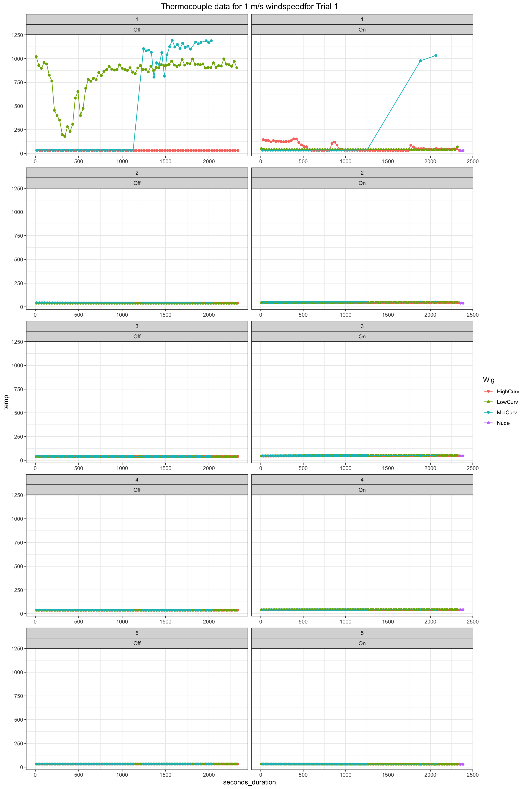
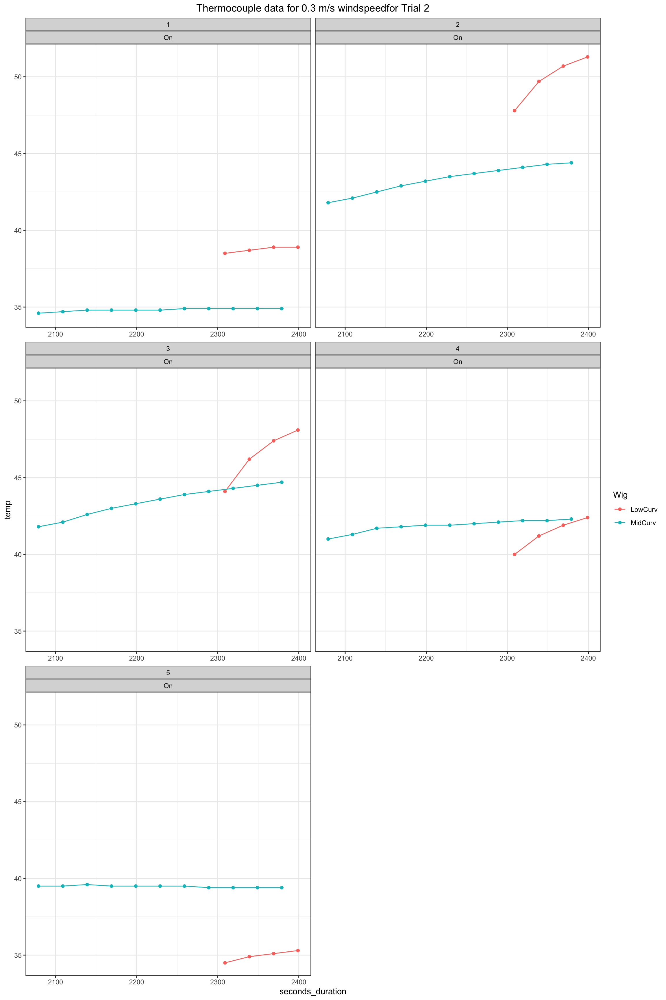
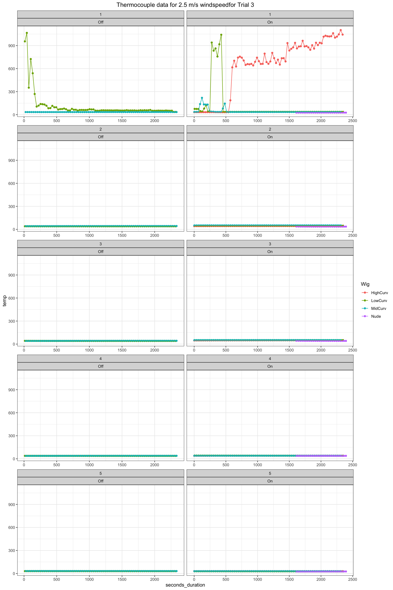
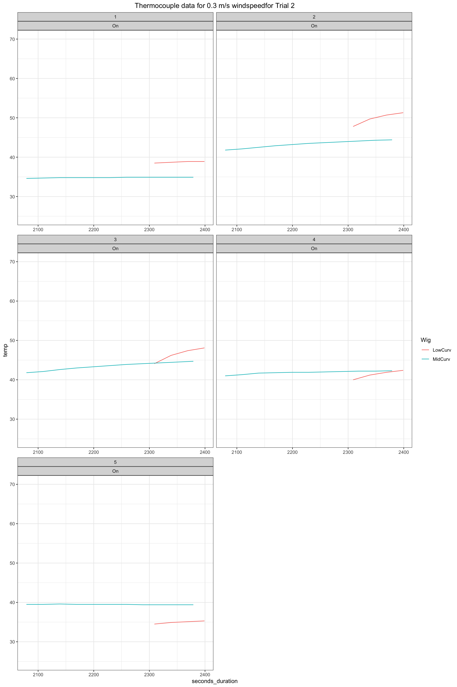
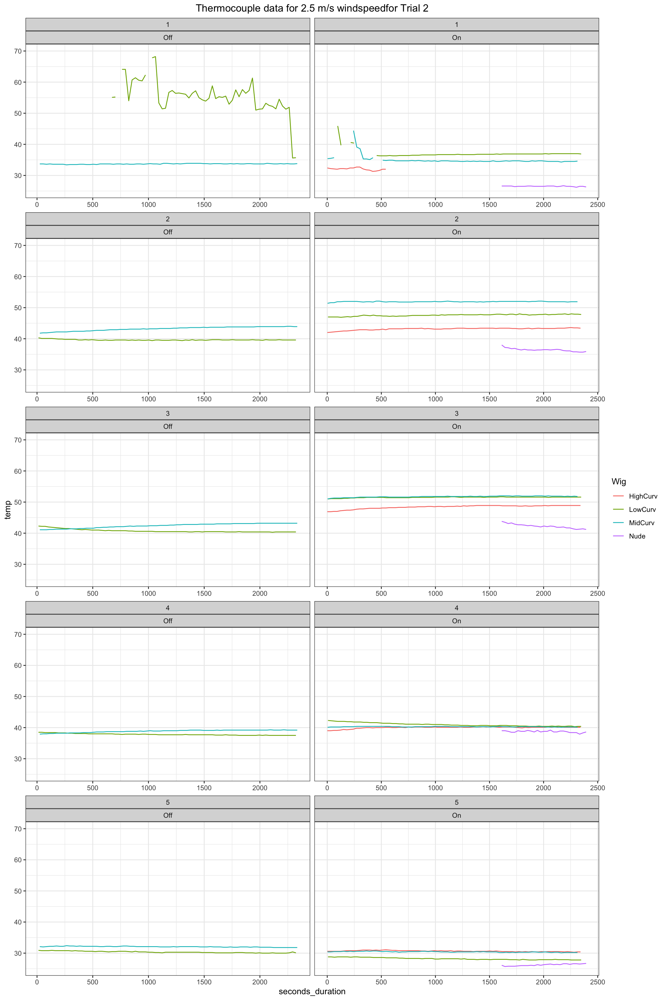
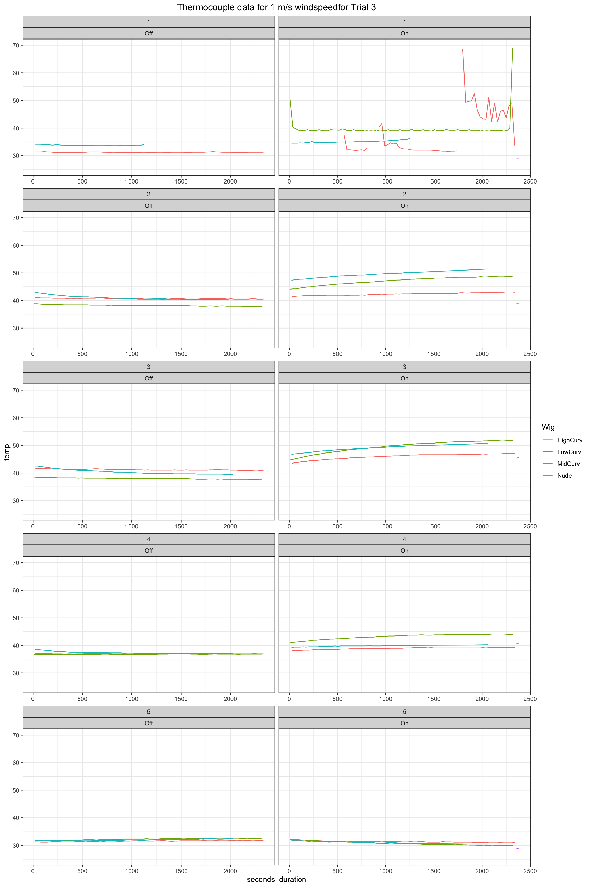
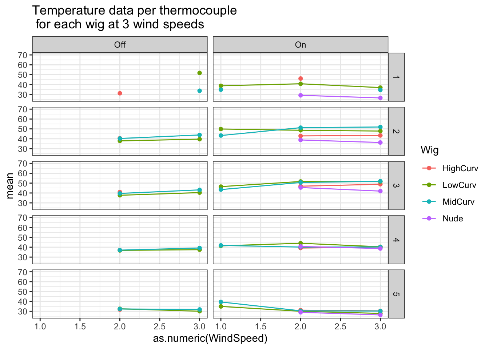

Thermocouple Data
Tina Lasisi
January 24, 2021
Last updated: 2021-01-24
Checks: 7 0
Knit directory:
HairManikin/
This reproducible R Markdown analysis was created with workflowr (version 1.6.2). The Checks tab describes the reproducibility checks that were applied when the results were created. The Past versions tab lists the development history.
Great! Since the R Markdown file has been committed to the Git repository, you know the exact version of the code that produced these results.
Great job! The global environment was empty. Objects defined in the global environment can affect the analysis in your R Markdown file in unknown ways. For reproduciblity it’s best to always run the code in an empty environment.
The command set.seed(20200601) was run prior to running the code in the R Markdown file.
Setting a seed ensures that any results that rely on randomness, e.g.
subsampling or permutations, are reproducible.
Great job! Recording the operating system, R version, and package versions is critical for reproducibility.
Nice! There were no cached chunks for this analysis, so you can be confident that you successfully produced the results during this run.
Great job! Using relative paths to the files within your workflowr project makes it easier to run your code on other machines.
Great! You are using Git for version control. Tracking code development and connecting the code version to the results is critical for reproducibility.
The results in this page were generated with repository version 2424e67. See the Past versions tab to see a history of the changes made to the R Markdown and HTML files.
Note that you need to be careful to ensure that all relevant files for the
analysis have been committed to Git prior to generating the results (you can
use wflow_publish or wflow_git_commit). workflowr only
checks the R Markdown file, but you know if there are other scripts or data
files that it depends on. Below is the status of the Git repository when the
results were generated:
Ignored files:
Ignored: .RData
Ignored: .Rhistory
Ignored: .Rproj.user/
Ignored: data/raw/Havenith_2021_Manikin_Dry_Wet_Summary/
Ignored: data/raw/ManikinData_March2018/Processed/
Ignored: data/raw/ManikinData_Oct2018/Round1/ConvertedFiles/
Ignored: data/raw/ManikinData_Oct2018/Round2/STEP1/
Ignored: data/raw/ManikinData_Oct2018/ThermoLog/2021-James_email/
Ignored: data/raw/ManikinData_Oct2018/ThermoLog/extracted/
Ignored: data/tidy/archive/
Untracked files:
Untracked: analysis/manikin2021.docx
Untracked: analysis/manikin2021.pdf
Untracked: analysis/manikin2021.pptx
Untracked: analysis/thermo_sum.pptx
Unstaged changes:
Modified: .gitignore
Modified: analysis/_site.yml
Note that any generated files, e.g. HTML, png, CSS, etc., are not included in this status report because it is ok for generated content to have uncommitted changes.
These are the previous versions of the repository in which changes were made
to the R Markdown (analysis/ThermoCoupleData.Rmd) and HTML (docs/ThermoCoupleData.html)
files. If you’ve configured a remote Git repository (see
?wflow_git_remote), click on the hyperlinks in the table below to
view the files as they were in that past version.
| File | Version | Author | Date | Message |
|---|---|---|---|---|
| html | 423d958 | tinalasisi | 2021-01-19 | Build site. |
| html | aff0ccc | tinalasisi | 2021-01-12 | Build site. |
| html | 7934685 | tinalasisi | 2021-01-11 | Build site. |
| html | f21f62b | tinalasisi | 2021-01-10 | Build site. |
| Rmd | fb82745 | tinalasisi | 2021-01-10 | New experimental log and revised thermocouple QC |
| html | e03417e | tinalasisi | 2021-01-08 | Build site. |
| Rmd | ada77f2 | tinalasisi | 2021-01-08 | Re-uploading latest version of all files + new thermocouple quality |
| html | ada77f2 | tinalasisi | 2021-01-08 | Re-uploading latest version of all files + new thermocouple quality |
| html | aff7895 | tinalasisi | 2021-01-04 | Build site. |
| html | 988a72c | tinalasisi | 2021-01-04 | wflow_publish("analysis/*", all = TRUE) |
| html | 34b5dc3 | tinalasisi | 2020-12-28 | Build site. |
| Rmd | d01f715 | tinalasisi | 2020-12-28 | played around with thermocouple data and realized they’ve been compromised by the |
| html | 0c8e391 | tinalasisi | 2020-10-06 | Build site. |
| html | 13de541 | tinalasisi | 2020-06-09 | Build site. |
| Rmd | 4f9cd92 | tinalasisi | 2020-06-09 | Uploading thermocouple data |
| Rmd | 8852a78 | tinalasisi | 2020-06-04 | Updated the thermocouple analysis |
| html | 8eb3234 | tinalasisi | 2020-06-01 | Build site. |
| Rmd | 6d19a6c | tinalasisi | 2020-06-01 | Publishing initial files for hair manikin paper |
In addition to the thermal manikin data, we collected scalp temperature data for each of the trials.
0.1 Log of all experiments
Here thermocouple data collected under “regular” temperature conditions (10C) for the 0.3 windspeed is removed.
kable(DateTimeLog) %>%
kable_styling(
bootstrap_options = c("striped", "hover", "condensed", "responsive"),
fixed_thead = T)| Wig | Radiation | WindSpeed | Trial_Duration | Trial_Interval | Windspeed | RoomConditions | Date | TimeStarted | TimeEnded | Trial | DateTime_start | DateTime_end |
|---|---|---|---|---|---|---|---|---|---|---|---|---|
| Nude | On | 1 | 6471s (~1.8 hours) | 2018-10-23 13:41:11 UTC–2018-10-23 15:29:02 UTC | 1.0 | regular | 2018-10-23 | 13:41:11 | 15:29:02 | 1 | 2018-10-23 13:41:11 | 2018-10-23 15:29:02 |
| Nude | On | 2.5 | 6157s (~1.71 hours) | 2018-10-23 14:34:19 UTC–2018-10-23 16:16:56 UTC | 2.5 | regular | 2018-10-23 | 14:34:19 | 16:16:56 | 1 | 2018-10-23 14:34:19 | 2018-10-23 16:16:56 |
| Nude | Off | 2.5 | 6190s (~1.72 hours) | 2018-10-23 15:33:26 UTC–2018-10-23 17:16:36 UTC | 2.5 | regular | 2018-10-23 | 15:33:26 | 17:16:36 | 1 | 2018-10-23 15:33:26 | 2018-10-23 17:16:36 |
| Nude | Off | 1 | 6704s (~1.86 hours) | 2018-10-23 16:18:38 UTC–2018-10-23 18:10:22 UTC | 1.0 | regular | 2018-10-23 | 16:18:38 | 18:10:22 | 1 | 2018-10-23 16:18:38 | 2018-10-23 18:10:22 |
| LowCurv | Off | 1 | 6307s (~1.75 hours) | 2018-10-23 20:13:51 UTC–2018-10-23 21:58:58 UTC | 1.0 | regular | 2018-10-23 | 20:13:51 | 21:58:58 | 1 | 2018-10-23 20:13:51 | 2018-10-23 21:58:58 |
| LowCurv | Off | 2.5 | 6304s (~1.75 hours) | 2018-10-23 21:01:02 UTC–2018-10-23 22:46:06 UTC | 2.5 | regular | 2018-10-23 | 21:01:02 | 22:46:06 | 1 | 2018-10-23 21:01:02 | 2018-10-23 22:46:06 |
| LowCurv | On | 2.5 | 6106s (~1.7 hours) | 2018-10-24 09:07:48 UTC–2018-10-24 10:49:34 UTC | 2.5 | regular | 2018-10-24 | 09:07:48 | 10:49:34 | 1 | 2018-10-24 09:07:48 | 2018-10-24 10:49:34 |
| LowCurv | On | 1 | 6150s (~1.71 hours) | 2018-10-24 09:50:54 UTC–2018-10-24 11:33:24 UTC | 1.0 | regular | 2018-10-24 | 09:50:54 | 11:33:24 | 1 | 2018-10-24 09:50:54 | 2018-10-24 11:33:24 |
| MidCurv | Off | 2.5 | 6282s (~1.75 hours) | 2018-10-24 12:08:00 UTC–2018-10-24 13:52:42 UTC | 2.5 | regular | 2018-10-24 | 12:08:00 | 13:52:42 | 1 | 2018-10-24 12:08:00 | 2018-10-24 13:52:42 |
| MidCurv | Off | 1 | 6162s (~1.71 hours) | 2018-10-24 12:53:14 UTC–2018-10-24 14:35:56 UTC | 1.0 | regular | 2018-10-24 | 12:53:14 | 14:35:56 | 1 | 2018-10-24 12:53:14 | 2018-10-24 14:35:56 |
| MidCurv | On | 1 | 6942s (~1.93 hours) | 2018-10-24 13:38:18 UTC–2018-10-24 15:34:00 UTC | 1.0 | regular | 2018-10-24 | 13:38:18 | 15:34:00 | 1 | 2018-10-24 13:38:18 | 2018-10-24 15:34:00 |
| MidCurv | On | 2.5 | 6241s (~1.73 hours) | 2018-10-24 14:36:29 UTC–2018-10-24 16:20:30 UTC | 2.5 | regular | 2018-10-24 | 14:36:29 | 16:20:30 | 1 | 2018-10-24 14:36:29 | 2018-10-24 16:20:30 |
| HighCurv | Off | 1 | 6006s (~1.67 hours) | 2018-10-24 16:04:10 UTC–2018-10-24 17:44:16 UTC | 1.0 | regular | 2018-10-24 | 16:04:10 | 17:44:16 | 1 | 2018-10-24 16:04:10 | 2018-10-24 17:44:16 |
| HighCurv | Off | 2.5 | 6303s (~1.75 hours) | 2018-10-24 16:46:21 UTC–2018-10-24 18:31:24 UTC | 2.5 | regular | 2018-10-24 | 16:46:21 | 18:31:24 | 1 | 2018-10-24 16:46:21 | 2018-10-24 18:31:24 |
| HighCurv | On | 2.5 | 6530s (~1.81 hours) | 2018-10-24 17:32:10 UTC–2018-10-24 19:21:00 UTC | 2.5 | regular | 2018-10-24 | 17:32:10 | 19:21:00 | 1 | 2018-10-24 17:32:10 | 2018-10-24 19:21:00 |
| HighCurv | On | 1 | 6301s (~1.75 hours) | 2018-10-24 18:22:45 UTC–2018-10-24 20:07:46 UTC | 1.0 | regular | 2018-10-24 | 18:22:45 | 20:07:46 | 1 | 2018-10-24 18:22:45 | 2018-10-24 20:07:46 |
| LowCurv | On | 0.3 | 6312s (~1.75 hours) | 2018-10-25 11:11:06 UTC–2018-10-25 12:56:18 UTC | 0.3 | cold | 2018-10-25 | 11:11:06 | 12:56:18 | 1 | 2018-10-25 11:11:06 | 2018-10-25 12:56:18 |
| LowCurv | Off | 0.3 | 6317s (~1.75 hours) | 2018-10-25 11:59:09 UTC–2018-10-25 13:44:26 UTC | 0.3 | cold | 2018-10-25 | 11:59:09 | 13:44:26 | 1 | 2018-10-25 11:59:09 | 2018-10-25 13:44:26 |
| Nude | On | 0.3 | 7205s (~2 hours) | 2018-10-25 12:47:59 UTC–2018-10-25 14:48:04 UTC | 0.3 | cold | 2018-10-25 | 12:47:59 | 14:48:04 | 1 | 2018-10-25 12:47:59 | 2018-10-25 14:48:04 |
| Nude | Off | 0.3 | 6306s (~1.75 hours) | 2018-10-25 13:48:52 UTC–2018-10-25 15:33:58 UTC | 0.3 | cold | 2018-10-25 | 13:48:52 | 15:33:58 | 1 | 2018-10-25 13:48:52 | 2018-10-25 15:33:58 |
| HighCurv | On | 0.3 | 6500s (~1.81 hours) | 2018-10-25 14:37:22 UTC–2018-10-25 16:25:42 UTC | 0.3 | cold | 2018-10-25 | 14:37:22 | 16:25:42 | 1 | 2018-10-25 14:37:22 | 2018-10-25 16:25:42 |
| HighCurv | Off | 0.3 | 6314s (~1.75 hours) | 2018-10-25 15:26:38 UTC–2018-10-25 17:11:52 UTC | 0.3 | cold | 2018-10-25 | 15:26:38 | 17:11:52 | 1 | 2018-10-25 15:26:38 | 2018-10-25 17:11:52 |
| MidCurv | On | 0.3 | 8406s (~2.34 hours) | 2018-10-25 16:18:52 UTC–2018-10-25 18:38:58 UTC | 0.3 | cold | 2018-10-25 | 16:18:52 | 18:38:58 | 1 | 2018-10-25 16:18:52 | 2018-10-25 18:38:58 |
| MidCurv | Off | 0.3 | 6005s (~1.67 hours) | 2018-10-25 17:39:43 UTC–2018-10-25 19:19:48 UTC | 0.3 | cold | 2018-10-25 | 17:39:43 | 19:19:48 | 1 | 2018-10-25 17:39:43 | 2018-10-25 19:19:48 |
| HighCurv | Off | 2.5 | 3240s (~54 minutes) | 2018-10-26 09:46:40 UTC–2018-10-26 10:40:40 UTC | 2.5 | regular | 2018-10-26 | 09:46:40 | 10:40:40 | 2 | 2018-10-26 09:46:40 | 2018-10-26 10:40:40 |
| HighCurv | Off | 1 | 3515s (~58.58 minutes) | 2018-10-26 10:46:03 UTC–2018-10-26 11:44:38 UTC | 1.0 | regular | 2018-10-26 | 10:46:03 | 11:44:38 | 2 | 2018-10-26 10:46:03 | 2018-10-26 11:44:38 |
| HighCurv | On | 1 | 2537s (~42.28 minutes) | 2018-10-26 11:53:15 UTC–2018-10-26 12:35:32 UTC | 1.0 | regular | 2018-10-26 | 11:53:15 | 12:35:32 | 2 | 2018-10-26 11:53:15 | 2018-10-26 12:35:32 |
| HighCurv | On | 2.5 | 2501s (~41.68 minutes) | 2018-10-26 12:36:49 UTC–2018-10-26 13:18:30 UTC | 2.5 | regular | 2018-10-26 | 12:36:49 | 13:18:30 | 2 | 2018-10-26 12:36:49 | 2018-10-26 13:18:30 |
| LowCurv | Off | 2.5 | 2739s (~45.65 minutes) | 2018-10-26 13:21:09 UTC–2018-10-26 14:06:48 UTC | 2.5 | regular | 2018-10-26 | 13:21:09 | 14:06:48 | 2 | 2018-10-26 13:21:09 | 2018-10-26 14:06:48 |
| LowCurv | Off | 1 | 3413s (~56.88 minutes) | 2018-10-26 14:08:57 UTC–2018-10-26 15:05:50 UTC | 1.0 | regular | 2018-10-26 | 14:08:57 | 15:05:50 | 2 | 2018-10-26 14:08:57 | 2018-10-26 15:05:50 |
| LowCurv | On | 1 | 2711s (~45.18 minutes) | 2018-10-26 15:07:43 UTC–2018-10-26 15:52:54 UTC | 1.0 | regular | 2018-10-26 | 15:07:43 | 15:52:54 | 2 | 2018-10-26 15:07:43 | 2018-10-26 15:52:54 |
| LowCurv | On | 2.5 | 2529s (~42.15 minutes) | 2018-10-26 15:54:15 UTC–2018-10-26 16:36:24 UTC | 2.5 | regular | 2018-10-26 | 15:54:15 | 16:36:24 | 2 | 2018-10-26 15:54:15 | 2018-10-26 16:36:24 |
| MidCurv | Off | 2.5 | 2707s (~45.12 minutes) | 2018-10-26 16:46:29 UTC–2018-10-26 17:31:36 UTC | 2.5 | regular | 2018-10-26 | 16:46:29 | 17:31:36 | 2 | 2018-10-26 16:46:29 | 2018-10-26 17:31:36 |
| MidCurv | Off | 1 | 2612s (~43.53 minutes) | 2018-10-26 17:32:42 UTC–2018-10-26 18:16:14 UTC | 1.0 | regular | 2018-10-26 | 17:32:42 | 18:16:14 | 2 | 2018-10-26 17:32:42 | 2018-10-26 18:16:14 |
| MidCurv | On | 1 | 3170s (~52.83 minutes) | 2018-10-26 18:17:48 UTC–2018-10-26 19:10:38 UTC | 1.0 | regular | 2018-10-26 | 18:17:48 | 19:10:38 | 2 | 2018-10-26 18:17:48 | 2018-10-26 19:10:38 |
| MidCurv | On | 2.5 | 2705s (~45.08 minutes) | 2018-10-26 19:11:53 UTC–2018-10-26 19:56:58 UTC | 2.5 | regular | 2018-10-26 | 19:11:53 | 19:56:58 | 2 | 2018-10-26 19:11:53 | 2018-10-26 19:56:58 |
| Nude | On | 0.3 | 2853s (~47.55 minutes) | 2018-10-28 09:30:53 UTC–2018-10-28 10:18:26 UTC | 0.3 | cold | 2018-10-28 | 09:30:53 | 10:18:26 | 2 | 2018-10-28 09:30:53 | 2018-10-28 10:18:26 |
| Nude | Off | 0.3 | 2705s (~45.08 minutes) | 2018-10-28 10:18:51 UTC–2018-10-28 11:03:56 UTC | 0.3 | cold | 2018-10-28 | 10:18:51 | 11:03:56 | 2 | 2018-10-28 10:18:51 | 2018-10-28 11:03:56 |
| HighCurv | Off | 0.3 | 2750s (~45.83 minutes) | 2018-10-28 11:06:50 UTC–2018-10-28 11:52:40 UTC | 0.3 | cold | 2018-10-28 | 11:06:50 | 11:52:40 | 2 | 2018-10-28 11:06:50 | 2018-10-28 11:52:40 |
| HighCurv | On | 0.3 | 3137s (~52.28 minutes) | 2018-10-28 11:54:23 UTC–2018-10-28 12:46:40 UTC | 0.3 | cold | 2018-10-28 | 11:54:23 | 12:46:40 | 2 | 2018-10-28 11:54:23 | 2018-10-28 12:46:40 |
| LowCurv | On | 0.3 | 3691s (~1.03 hours) | 2018-10-28 12:48:21 UTC–2018-10-28 13:49:52 UTC | 0.3 | cold | 2018-10-28 | 12:48:21 | 13:49:52 | 2 | 2018-10-28 12:48:21 | 2018-10-28 13:49:52 |
| LowCurv | Off | 0.3 | 2837s (~47.28 minutes) | 2018-10-28 13:50:41 UTC–2018-10-28 14:37:58 UTC | 0.3 | cold | 2018-10-28 | 13:50:41 | 14:37:58 | 2 | 2018-10-28 13:50:41 | 2018-10-28 14:37:58 |
| MidCurv | Off | 0.3 | 3612s (~1 hours) | 2018-10-28 14:41:00 UTC–2018-10-28 15:41:12 UTC | 0.3 | cold | 2018-10-28 | 14:41:00 | 15:41:12 | 2 | 2018-10-28 14:41:00 | 2018-10-28 15:41:12 |
| MidCurv | On | 0.3 | 3942s (~1.09 hours) | 2018-10-28 15:42:00 UTC–2018-10-28 16:47:42 UTC | 0.3 | cold | 2018-10-28 | 15:42:00 | 16:47:42 | 2 | 2018-10-28 15:42:00 | 2018-10-28 16:47:42 |
| Nude | On | 1 | 4149s (~1.15 hours) | 2018-10-29 08:05:17 UTC–2018-10-29 09:14:26 UTC | 1.0 | regular | 2018-10-29 | 08:05:17 | 09:14:26 | 2 | 2018-10-29 08:05:17 | 2018-10-29 09:14:26 |
| Nude | On | 2.5 | 4344s (~1.21 hours) | 2018-10-29 09:15:54 UTC–2018-10-29 10:28:18 UTC | 2.5 | regular | 2018-10-29 | 09:15:54 | 10:28:18 | 2 | 2018-10-29 09:15:54 | 2018-10-29 10:28:18 |
| Nude | Off | 2.5 | 2405s (~40.08 minutes) | 2018-10-29 10:29:45 UTC–2018-10-29 11:09:50 UTC | 2.5 | regular | 2018-10-29 | 10:29:45 | 11:09:50 | 2 | 2018-10-29 10:29:45 | 2018-10-29 11:09:50 |
| Nude | Off | 1 | 2657s (~44.28 minutes) | 2018-10-29 11:11:15 UTC–2018-10-29 11:55:32 UTC | 1.0 | regular | 2018-10-29 | 11:11:15 | 11:55:32 | 2 | 2018-10-29 11:11:15 | 2018-10-29 11:55:32 |
| Nude | On | 1 | 3040s (~50.67 minutes) | 2018-10-29 11:57:36 UTC–2018-10-29 12:48:16 UTC | 1.0 | regular | 2018-10-29 | 11:57:36 | 12:48:16 | 3 | 2018-10-29 11:57:36 | 2018-10-29 12:48:16 |
| Nude | On | 2.5 | 2791s (~46.52 minutes) | 2018-10-29 12:49:33 UTC–2018-10-29 13:36:04 UTC | 2.5 | regular | 2018-10-29 | 12:49:33 | 13:36:04 | 3 | 2018-10-29 12:49:33 | 2018-10-29 13:36:04 |
| Nude | Off | 2.5 | 4476s (~1.24 hours) | 2018-10-29 13:36:58 UTC–2018-10-29 14:51:34 UTC | 2.5 | regular | 2018-10-29 | 13:36:58 | 14:51:34 | 3 | 2018-10-29 13:36:58 | 2018-10-29 14:51:34 |
| Nude | Off | 1 | 2796s (~46.6 minutes) | 2018-10-29 14:56:44 UTC–2018-10-29 15:43:20 UTC | 1.0 | regular | 2018-10-29 | 14:56:44 | 15:43:20 | 3 | 2018-10-29 14:56:44 | 2018-10-29 15:43:20 |
| MidCurv | On | 1 | 3039s (~50.65 minutes) | 2018-10-29 15:46:25 UTC–2018-10-29 16:37:04 UTC | 1.0 | regular | 2018-10-29 | 15:46:25 | 16:37:04 | 3 | 2018-10-29 15:46:25 | 2018-10-29 16:37:04 |
| MidCurv | On | 2.5 | 3003s (~50.05 minutes) | 2018-10-29 16:38:31 UTC–2018-10-29 17:28:34 UTC | 2.5 | regular | 2018-10-29 | 16:38:31 | 17:28:34 | 3 | 2018-10-29 16:38:31 | 2018-10-29 17:28:34 |
| MidCurv | Off | 1 | 2935s (~48.92 minutes) | 2018-10-30 08:45:57 UTC–2018-10-30 09:34:52 UTC | 1.0 | regular | 2018-10-30 | 08:45:57 | 09:34:52 | 3 | 2018-10-30 08:45:57 | 2018-10-30 09:34:52 |
| MidCurv | Off | 2.5 | 3005s (~50.08 minutes) | 2018-10-30 09:36:15 UTC–2018-10-30 10:26:20 UTC | 2.5 | regular | 2018-10-30 | 09:36:15 | 10:26:20 | 3 | 2018-10-30 09:36:15 | 2018-10-30 10:26:20 |
| HighCurv | On | 2.5 | 3634s (~1.01 hours) | 2018-10-30 10:40:26 UTC–2018-10-30 11:41:00 UTC | 2.5 | regular | 2018-10-30 | 10:40:26 | 11:41:00 | 3 | 2018-10-30 10:40:26 | 2018-10-30 11:41:00 |
| HighCurv | On | 1 | 2967s (~49.45 minutes) | 2018-10-30 11:42:09 UTC–2018-10-30 12:31:36 UTC | 1.0 | regular | 2018-10-30 | 11:42:09 | 12:31:36 | 3 | 2018-10-30 11:42:09 | 2018-10-30 12:31:36 |
| HighCurv | Off | 1 | 3793s (~1.05 hours) | 2018-10-30 12:35:09 UTC–2018-10-30 13:38:22 UTC | 1.0 | regular | 2018-10-30 | 12:35:09 | 13:38:22 | 3 | 2018-10-30 12:35:09 | 2018-10-30 13:38:22 |
| HighCurv | Off | 2.5 | 3097s (~51.62 minutes) | 2018-10-30 13:41:41 UTC–2018-10-30 14:33:18 UTC | 2.5 | regular | 2018-10-30 | 13:41:41 | 14:33:18 | 3 | 2018-10-30 13:41:41 | 2018-10-30 14:33:18 |
| LowCurv | On | 2.5 | 4363s (~1.21 hours) | 2018-10-30 14:35:05 UTC–2018-10-30 15:47:48 UTC | 2.5 | regular | 2018-10-30 | 14:35:05 | 15:47:48 | 3 | 2018-10-30 14:35:05 | 2018-10-30 15:47:48 |
| LowCurv | On | 1 | 3437s (~57.28 minutes) | 2018-10-30 15:49:15 UTC–2018-10-30 16:46:32 UTC | 1.0 | regular | 2018-10-30 | 15:49:15 | 16:46:32 | 3 | 2018-10-30 15:49:15 | 2018-10-30 16:46:32 |
| LowCurv | Off | 1 | 2997s (~49.95 minutes) | 2018-10-30 16:47:51 UTC–2018-10-30 17:37:48 UTC | 1.0 | regular | 2018-10-30 | 16:47:51 | 17:37:48 | 3 | 2018-10-30 16:47:51 | 2018-10-30 17:37:48 |
| LowCurv | Off | 2.5 | 3021s (~50.35 minutes) | 2018-10-30 17:38:41 UTC–2018-10-30 18:29:02 UTC | 2.5 | regular | 2018-10-30 | 17:38:41 | 18:29:02 | 3 | 2018-10-30 17:38:41 | 2018-10-30 18:29:02 |
| LowCurv | On | 0.3 | 3606s (~1 hours) | 2018-10-31 09:00:02 UTC–2018-10-31 10:00:08 UTC | 0.3 | cold | 2018-10-31 | 09:00:02 | 10:00:08 | 3 | 2018-10-31 09:00:02 | 2018-10-31 10:00:08 |
| LowCurv | Off | 0.3 | 2791s (~46.52 minutes) | 2018-10-31 10:01:01 UTC–2018-10-31 10:47:32 UTC | 0.3 | cold | 2018-10-31 | 10:01:01 | 10:47:32 | 3 | 2018-10-31 10:01:01 | 2018-10-31 10:47:32 |
| Nude | On | 0.3 | 2925s (~48.75 minutes) | 2018-10-31 10:49:37 UTC–2018-10-31 11:38:22 UTC | 0.3 | cold | 2018-10-31 | 10:49:37 | 11:38:22 | 3 | 2018-10-31 10:49:37 | 2018-10-31 11:38:22 |
| Nude | Off | 0.3 | 3791s (~1.05 hours) | 2018-10-31 11:39:37 UTC–2018-10-31 12:42:48 UTC | 0.3 | cold | 2018-10-31 | 11:39:37 | 12:42:48 | 3 | 2018-10-31 11:39:37 | 2018-10-31 12:42:48 |
| MidCurv | On | 0.3 | 4195s (~1.17 hours) | 2018-10-31 12:45:09 UTC–2018-10-31 13:55:04 UTC | 0.3 | cold | 2018-10-31 | 12:45:09 | 13:55:04 | 3 | 2018-10-31 12:45:09 | 2018-10-31 13:55:04 |
| MidCurv | Off | 0.3 | 2640s (~44 minutes) | 2018-10-31 13:55:58 UTC–2018-10-31 14:39:58 UTC | 0.3 | cold | 2018-10-31 | 13:55:58 | 14:39:58 | 3 | 2018-10-31 13:55:58 | 2018-10-31 14:39:58 |
| HighCurv | On | 0.3 | 3355s (~55.92 minutes) | 2018-10-31 14:42:13 UTC–2018-10-31 15:38:08 UTC | 0.3 | cold | 2018-10-31 | 14:42:13 | 15:38:08 | 3 | 2018-10-31 14:42:13 | 2018-10-31 15:38:08 |
| HighCurv | Off | 0.3 | 3316s (~55.27 minutes) | 2018-10-31 15:41:56 UTC–2018-10-31 16:37:12 UTC | 0.3 | cold | 2018-10-31 | 15:41:56 | 16:37:12 | 3 | 2018-10-31 15:41:56 | 2018-10-31 16:37:12 |
Because the duration of the trials was variable, we will have to normalize the duration of the trials for comparison.
DateTimeLog %>%
slice(which.min(Trial_Duration)) %>%
kable() %>%
kable_styling(
bootstrap_options = c("striped", "hover", "condensed", "responsive"),
fixed_thead = T)| Wig | Radiation | WindSpeed | Trial_Duration | Trial_Interval | Windspeed | RoomConditions | Date | TimeStarted | TimeEnded | Trial | DateTime_start | DateTime_end |
|---|---|---|---|---|---|---|---|---|---|---|---|---|
| Nude | Off | 2.5 | 2405s (~40.08 minutes) | 2018-10-29 10:29:45 UTC–2018-10-29 11:09:50 UTC | 2.5 | regular | 2018-10-29 | 10:29:45 | 11:09:50 | 2 | 2018-10-29 10:29:45 | 2018-10-29 11:09:50 |
Number of data points per experimental condition
df_trim_thermo_long %>%
group_by(Wig, WindSpeed, Radiation, thermo_id) %>%
tally() %>%
kable() %>%
kable_styling(
bootstrap_options = c("striped", "hover", "condensed", "responsive"),
fixed_thead = T)| Wig | WindSpeed | Radiation | thermo_id | n |
|---|---|---|---|---|
| HighCurv | 1 | Off | 1 | 78 |
| HighCurv | 1 | Off | 2 | 78 |
| HighCurv | 1 | Off | 3 | 78 |
| HighCurv | 1 | Off | 4 | 78 |
| HighCurv | 1 | Off | 5 | 78 |
| HighCurv | 1 | On | 1 | 78 |
| HighCurv | 1 | On | 2 | 78 |
| HighCurv | 1 | On | 3 | 78 |
| HighCurv | 1 | On | 4 | 78 |
| HighCurv | 1 | On | 5 | 78 |
| HighCurv | 2.5 | On | 1 | 79 |
| HighCurv | 2.5 | On | 2 | 79 |
| HighCurv | 2.5 | On | 3 | 79 |
| HighCurv | 2.5 | On | 4 | 79 |
| HighCurv | 2.5 | On | 5 | 79 |
| LowCurv | 0.3 | On | 1 | 4 |
| LowCurv | 0.3 | On | 2 | 4 |
| LowCurv | 0.3 | On | 3 | 4 |
| LowCurv | 0.3 | On | 4 | 4 |
| LowCurv | 0.3 | On | 5 | 4 |
| LowCurv | 1 | Off | 1 | 78 |
| LowCurv | 1 | Off | 2 | 78 |
| LowCurv | 1 | Off | 3 | 78 |
| LowCurv | 1 | Off | 4 | 78 |
| LowCurv | 1 | Off | 5 | 78 |
| LowCurv | 1 | On | 1 | 78 |
| LowCurv | 1 | On | 2 | 78 |
| LowCurv | 1 | On | 3 | 78 |
| LowCurv | 1 | On | 4 | 78 |
| LowCurv | 1 | On | 5 | 78 |
| LowCurv | 2.5 | Off | 1 | 78 |
| LowCurv | 2.5 | Off | 2 | 78 |
| LowCurv | 2.5 | Off | 3 | 78 |
| LowCurv | 2.5 | Off | 4 | 78 |
| LowCurv | 2.5 | Off | 5 | 78 |
| LowCurv | 2.5 | On | 1 | 79 |
| LowCurv | 2.5 | On | 2 | 79 |
| LowCurv | 2.5 | On | 3 | 79 |
| LowCurv | 2.5 | On | 4 | 79 |
| LowCurv | 2.5 | On | 5 | 79 |
| MidCurv | 0.3 | On | 1 | 11 |
| MidCurv | 0.3 | On | 2 | 11 |
| MidCurv | 0.3 | On | 3 | 11 |
| MidCurv | 0.3 | On | 4 | 11 |
| MidCurv | 0.3 | On | 5 | 11 |
| MidCurv | 1 | Off | 1 | 63 |
| MidCurv | 1 | Off | 2 | 63 |
| MidCurv | 1 | Off | 3 | 63 |
| MidCurv | 1 | Off | 4 | 63 |
| MidCurv | 1 | Off | 5 | 63 |
| MidCurv | 1 | On | 1 | 44 |
| MidCurv | 1 | On | 2 | 44 |
| MidCurv | 1 | On | 3 | 44 |
| MidCurv | 1 | On | 4 | 44 |
| MidCurv | 1 | On | 5 | 44 |
| MidCurv | 2.5 | Off | 1 | 78 |
| MidCurv | 2.5 | Off | 2 | 78 |
| MidCurv | 2.5 | Off | 3 | 78 |
| MidCurv | 2.5 | Off | 4 | 78 |
| MidCurv | 2.5 | Off | 5 | 78 |
| MidCurv | 2.5 | On | 1 | 78 |
| MidCurv | 2.5 | On | 2 | 78 |
| MidCurv | 2.5 | On | 3 | 78 |
| MidCurv | 2.5 | On | 4 | 78 |
| MidCurv | 2.5 | On | 5 | 78 |
| Nude | 1 | On | 1 | 2 |
| Nude | 1 | On | 2 | 2 |
| Nude | 1 | On | 3 | 2 |
| Nude | 1 | On | 4 | 2 |
| Nude | 1 | On | 5 | 2 |
| Nude | 2.5 | On | 1 | 27 |
| Nude | 2.5 | On | 2 | 27 |
| Nude | 2.5 | On | 3 | 27 |
| Nude | 2.5 | On | 4 | 27 |
| Nude | 2.5 | On | 5 | 27 |
1 Scalp temperature variation between conditions
1.1 Free y-axis
| Version | Author | Date |
|---|---|---|
| e03417e | tinalasisi | 2021-01-08 |

| Version | Author | Date |
|---|---|---|
| e03417e | tinalasisi | 2021-01-08 |
| Version | Author | Date |
|---|---|---|
| e03417e | tinalasisi | 2021-01-08 |

| Version | Author | Date |
|---|---|---|
| e03417e | tinalasisi | 2021-01-08 |
| Version | Author | Date |
|---|---|---|
| e03417e | tinalasisi | 2021-01-08 |
| Version | Author | Date |
|---|---|---|
| e03417e | tinalasisi | 2021-01-08 |
| Version | Author | Date |
|---|---|---|
| e03417e | tinalasisi | 2021-01-08 |
| Version | Author | Date |
|---|---|---|
| e03417e | tinalasisi | 2021-01-08 |

| Version | Author | Date |
|---|---|---|
| e03417e | tinalasisi | 2021-01-08 |
1.2 Y-axis limited to 70 degrees
| Version | Author | Date |
|---|---|---|
| e03417e | tinalasisi | 2021-01-08 |
Warning: Removed 78 row(s) containing missing values (geom_path).
| Version | Author | Date |
|---|---|---|
| e03417e | tinalasisi | 2021-01-08 |
Warning: Removed 17 row(s) containing missing values (geom_path).
| Version | Author | Date |
|---|---|---|
| e03417e | tinalasisi | 2021-01-08 |

| Version | Author | Date |
|---|---|---|
| e03417e | tinalasisi | 2021-01-08 |
Warning: Removed 78 row(s) containing missing values (geom_path).
| Version | Author | Date |
|---|---|---|
| e03417e | tinalasisi | 2021-01-08 |
Warning: Removed 17 row(s) containing missing values (geom_path).
| Version | Author | Date |
|---|---|---|
| e03417e | tinalasisi | 2021-01-08 |
| Version | Author | Date |
|---|---|---|
| e03417e | tinalasisi | 2021-01-08 |
Warning: Removed 78 row(s) containing missing values (geom_path).
| Version | Author | Date |
|---|---|---|
| e03417e | tinalasisi | 2021-01-08 |
Warning: Removed 17 row(s) containing missing values (geom_path).
| Version | Author | Date |
|---|---|---|
| e03417e | tinalasisi | 2021-01-08 |
2 Last 10 minutes
Below the data are trimmed to include only the last 10 minutes of each test.
Number of data points per experimental condition
| Wig | WindSpeed | Radiation | thermo_id | n |
|---|---|---|---|---|
| HighCurv | 1 | Off | 1 | 18 |
| HighCurv | 1 | Off | 2 | 18 |
| HighCurv | 1 | Off | 3 | 18 |
| HighCurv | 1 | Off | 4 | 18 |
| HighCurv | 1 | Off | 5 | 18 |
| HighCurv | 1 | On | 1 | 18 |
| HighCurv | 1 | On | 2 | 18 |
| HighCurv | 1 | On | 3 | 18 |
| HighCurv | 1 | On | 4 | 18 |
| HighCurv | 1 | On | 5 | 18 |
| HighCurv | 2.5 | On | 1 | 19 |
| HighCurv | 2.5 | On | 2 | 19 |
| HighCurv | 2.5 | On | 3 | 19 |
| HighCurv | 2.5 | On | 4 | 19 |
| HighCurv | 2.5 | On | 5 | 19 |
| LowCurv | 0.3 | On | 1 | 4 |
| LowCurv | 0.3 | On | 2 | 4 |
| LowCurv | 0.3 | On | 3 | 4 |
| LowCurv | 0.3 | On | 4 | 4 |
| LowCurv | 0.3 | On | 5 | 4 |
| LowCurv | 1 | Off | 1 | 18 |
| LowCurv | 1 | Off | 2 | 18 |
| LowCurv | 1 | Off | 3 | 18 |
| LowCurv | 1 | Off | 4 | 18 |
| LowCurv | 1 | Off | 5 | 18 |
| LowCurv | 1 | On | 1 | 18 |
| LowCurv | 1 | On | 2 | 18 |
| LowCurv | 1 | On | 3 | 18 |
| LowCurv | 1 | On | 4 | 18 |
| LowCurv | 1 | On | 5 | 18 |
| LowCurv | 2.5 | Off | 1 | 18 |
| LowCurv | 2.5 | Off | 2 | 18 |
| LowCurv | 2.5 | Off | 3 | 18 |
| LowCurv | 2.5 | Off | 4 | 18 |
| LowCurv | 2.5 | Off | 5 | 18 |
| LowCurv | 2.5 | On | 1 | 19 |
| LowCurv | 2.5 | On | 2 | 19 |
| LowCurv | 2.5 | On | 3 | 19 |
| LowCurv | 2.5 | On | 4 | 19 |
| LowCurv | 2.5 | On | 5 | 19 |
| MidCurv | 0.3 | On | 1 | 11 |
| MidCurv | 0.3 | On | 2 | 11 |
| MidCurv | 0.3 | On | 3 | 11 |
| MidCurv | 0.3 | On | 4 | 11 |
| MidCurv | 0.3 | On | 5 | 11 |
| MidCurv | 1 | Off | 1 | 6 |
| MidCurv | 1 | Off | 2 | 6 |
| MidCurv | 1 | Off | 3 | 6 |
| MidCurv | 1 | Off | 4 | 6 |
| MidCurv | 1 | Off | 5 | 6 |
| MidCurv | 1 | On | 1 | 2 |
| MidCurv | 1 | On | 2 | 2 |
| MidCurv | 1 | On | 3 | 2 |
| MidCurv | 1 | On | 4 | 2 |
| MidCurv | 1 | On | 5 | 2 |
| MidCurv | 2.5 | Off | 1 | 18 |
| MidCurv | 2.5 | Off | 2 | 18 |
| MidCurv | 2.5 | Off | 3 | 18 |
| MidCurv | 2.5 | Off | 4 | 18 |
| MidCurv | 2.5 | Off | 5 | 18 |
| MidCurv | 2.5 | On | 1 | 18 |
| MidCurv | 2.5 | On | 2 | 18 |
| MidCurv | 2.5 | On | 3 | 18 |
| MidCurv | 2.5 | On | 4 | 18 |
| MidCurv | 2.5 | On | 5 | 18 |
| Nude | 1 | On | 1 | 2 |
| Nude | 1 | On | 2 | 2 |
| Nude | 1 | On | 3 | 2 |
| Nude | 1 | On | 4 | 2 |
| Nude | 1 | On | 5 | 2 |
| Nude | 2.5 | On | 1 | 20 |
| Nude | 2.5 | On | 2 | 20 |
| Nude | 2.5 | On | 3 | 20 |
| Nude | 2.5 | On | 4 | 20 |
| Nude | 2.5 | On | 5 | 20 |
2.1 Free y-axis
| Version | Author | Date |
|---|---|---|
| e03417e | tinalasisi | 2021-01-08 |

| Version | Author | Date |
|---|---|---|
| e03417e | tinalasisi | 2021-01-08 |
| Version | Author | Date |
|---|---|---|
| e03417e | tinalasisi | 2021-01-08 |
| Version | Author | Date |
|---|---|---|
| e03417e | tinalasisi | 2021-01-08 |
| Version | Author | Date |
|---|---|---|
| e03417e | tinalasisi | 2021-01-08 |
| Version | Author | Date |
|---|---|---|
| e03417e | tinalasisi | 2021-01-08 |
| Version | Author | Date |
|---|---|---|
| e03417e | tinalasisi | 2021-01-08 |
| Version | Author | Date |
|---|---|---|
| e03417e | tinalasisi | 2021-01-08 |
| Version | Author | Date |
|---|---|---|
| e03417e | tinalasisi | 2021-01-08 |
2.2 Y-axis limited at 70 degrees
| Version | Author | Date |
|---|---|---|
| e03417e | tinalasisi | 2021-01-08 |
Warning: Removed 78 row(s) containing missing values (geom_path).
| Version | Author | Date |
|---|---|---|
| e03417e | tinalasisi | 2021-01-08 |
Warning: Removed 17 row(s) containing missing values (geom_path).
| Version | Author | Date |
|---|---|---|
| e03417e | tinalasisi | 2021-01-08 |
| Version | Author | Date |
|---|---|---|
| e03417e | tinalasisi | 2021-01-08 |
Warning: Removed 78 row(s) containing missing values (geom_path).
| Version | Author | Date |
|---|---|---|
| e03417e | tinalasisi | 2021-01-08 |
Warning: Removed 17 row(s) containing missing values (geom_path).
| Version | Author | Date |
|---|---|---|
| e03417e | tinalasisi | 2021-01-08 |
| Version | Author | Date |
|---|---|---|
| e03417e | tinalasisi | 2021-01-08 |
Warning: Removed 78 row(s) containing missing values (geom_path).
| Version | Author | Date |
|---|---|---|
| e03417e | tinalasisi | 2021-01-08 |
Warning: Removed 17 row(s) containing missing values (geom_path).
| Version | Author | Date |
|---|---|---|
| e03417e | tinalasisi | 2021-01-08 |
3 Summary Data
The thermocouple number refers to the location on the manikin’s head from forehead (1) to nape (4). Due to glitches, the data is not consistently available for all conditions.
| thermo_id | Wig | Radiation | WindSpeed | mean | median |
|---|---|---|---|---|---|
| 1 | HighCurv | Off | 1 | 31.20000 | 31.20 |
| 1 | HighCurv | On | 1 | 46.10000 | 46.55 |
| 1 | HighCurv | On | 2.5 | 977.50000 | 1015.90 |
| 1 | LowCurv | Off | 1 | 935.63889 | 935.75 |
| 1 | LowCurv | Off | 2.5 | 51.78889 | 52.25 |
| 1 | LowCurv | On | 0.3 | 38.75000 | 38.80 |
| 1 | LowCurv | On | 1 | 40.80000 | 39.10 |
| 1 | LowCurv | On | 2.5 | 36.95263 | 37.00 |
| 1 | MidCurv | Off | 1 | 1174.46667 | 1172.65 |
| 1 | MidCurv | Off | 2.5 | 33.74444 | 33.70 |
| 1 | MidCurv | On | 0.3 | 34.81818 | 34.80 |
| 1 | MidCurv | On | 1 | 1004.80000 | 1004.80 |
| 1 | MidCurv | On | 2.5 | 34.54444 | 34.50 |
| 1 | Nude | On | 1 | 29.10000 | 29.10 |
| 1 | Nude | On | 2.5 | 26.50000 | 26.50 |
| 2 | HighCurv | Off | 1 | 40.56667 | 40.50 |
| 2 | HighCurv | On | 1 | 42.91111 | 42.90 |
| 2 | HighCurv | On | 2.5 | 43.36842 | 43.40 |
| 2 | LowCurv | Off | 1 | 37.87222 | 37.90 |
| 2 | LowCurv | Off | 2.5 | 39.61111 | 39.60 |
| 2 | LowCurv | On | 0.3 | 49.87500 | 50.20 |
| 2 | LowCurv | On | 1 | 48.59444 | 48.60 |
| 2 | LowCurv | On | 2.5 | 47.82105 | 47.80 |
| 2 | MidCurv | Off | 1 | 40.30000 | 40.30 |
| 2 | MidCurv | Off | 2.5 | 43.88333 | 43.90 |
| 2 | MidCurv | On | 0.3 | 43.30909 | 43.50 |
| 2 | MidCurv | On | 1 | 51.25000 | 51.25 |
| 2 | MidCurv | On | 2.5 | 51.94444 | 51.90 |
| 2 | Nude | On | 1 | 38.80000 | 38.80 |
| 2 | Nude | On | 2.5 | 36.24000 | 36.40 |
| 3 | HighCurv | Off | 1 | 41.00556 | 41.00 |
| 3 | HighCurv | On | 1 | 46.87222 | 46.90 |
| 3 | HighCurv | On | 2.5 | 48.84211 | 48.90 |
| 3 | LowCurv | Off | 1 | 37.70000 | 37.70 |
| 3 | LowCurv | Off | 2.5 | 40.40000 | 40.40 |
| 3 | LowCurv | On | 0.3 | 46.45000 | 46.80 |
| 3 | LowCurv | On | 1 | 51.63889 | 51.65 |
| 3 | LowCurv | On | 2.5 | 51.59474 | 51.60 |
| 3 | MidCurv | Off | 1 | 39.55000 | 39.55 |
| 3 | MidCurv | Off | 2.5 | 43.17222 | 43.20 |
| 3 | MidCurv | On | 0.3 | 43.44545 | 43.60 |
| 3 | MidCurv | On | 1 | 50.65000 | 50.65 |
| 3 | MidCurv | On | 2.5 | 51.90556 | 51.90 |
| 3 | Nude | On | 1 | 45.55000 | 45.55 |
| 3 | Nude | On | 2.5 | 41.93000 | 42.00 |
| 4 | HighCurv | Off | 1 | 36.96111 | 36.90 |
| 4 | HighCurv | On | 1 | 39.16111 | 39.20 |
| 4 | HighCurv | On | 2.5 | 40.10000 | 40.10 |
| 4 | LowCurv | Off | 1 | 36.80000 | 36.80 |
| 4 | LowCurv | Off | 2.5 | 37.51111 | 37.50 |
| 4 | LowCurv | On | 0.3 | 41.37500 | 41.55 |
| 4 | LowCurv | On | 1 | 44.00556 | 44.00 |
| 4 | LowCurv | On | 2.5 | 40.43158 | 40.40 |
| 4 | MidCurv | Off | 1 | 37.05000 | 37.05 |
| 4 | MidCurv | Off | 2.5 | 39.21111 | 39.20 |
| 4 | MidCurv | On | 0.3 | 41.85455 | 41.90 |
| 4 | MidCurv | On | 1 | 40.15000 | 40.15 |
| 4 | MidCurv | On | 2.5 | 40.22778 | 40.20 |
| 4 | Nude | On | 1 | 40.75000 | 40.75 |
| 4 | Nude | On | 2.5 | 38.68000 | 38.65 |
| 5 | HighCurv | Off | 1 | 31.75000 | 31.75 |
| 5 | HighCurv | On | 1 | 31.15556 | 31.20 |
| 5 | HighCurv | On | 2.5 | 30.44211 | 30.40 |
| 5 | LowCurv | Off | 1 | 32.55000 | 32.60 |
| 5 | LowCurv | Off | 2.5 | 30.08333 | 30.10 |
| 5 | LowCurv | On | 0.3 | 34.95000 | 35.00 |
| 5 | LowCurv | On | 1 | 30.04444 | 30.00 |
| 5 | LowCurv | On | 2.5 | 27.87368 | 27.90 |
| 5 | MidCurv | Off | 1 | 32.36667 | 32.40 |
| 5 | MidCurv | Off | 2.5 | 31.88333 | 31.90 |
| 5 | MidCurv | On | 0.3 | 39.47273 | 39.50 |
| 5 | MidCurv | On | 1 | 30.50000 | 30.50 |
| 5 | MidCurv | On | 2.5 | 30.27222 | 30.30 |
| 5 | Nude | On | 1 | 29.00000 | 29.00 |
| 5 | Nude | On | 2.5 | 26.36500 | 26.40 |

| Version | Author | Date |
|---|---|---|
| e03417e | tinalasisi | 2021-01-08 |
| Wig | Radiation | WindSpeed | Trial_Duration | Trial_Interval | Windspeed | RoomConditions | Date | TimeStarted | TimeEnded | Trial | DateTime_start | DateTime_end | DateTime | seconds_interval | seconds_duration | thermo_id | temp |
|---|---|---|---|---|---|---|---|---|---|---|---|---|---|---|---|---|---|
| HighCurv | Off | 1 | 2400s (~40 minutes) | 2018-10-26 11:04:38 UTC–2018-10-26 11:44:38 UTC | 1.0 | regular | 2018-10-26 | 10:46:03 | 11:44:38 | 2 | 2018-10-26 11:04:38 | 2018-10-26 11:44:38 | 2018-10-26 11:05:01 | 2018-10-26 11:04:38 UTC–2018-10-26 11:05:01 UTC | 23s | 1 | 31.3 |
| HighCurv | Off | 1 | 2400s (~40 minutes) | 2018-10-26 11:04:38 UTC–2018-10-26 11:44:38 UTC | 1.0 | regular | 2018-10-26 | 10:46:03 | 11:44:38 | 2 | 2018-10-26 11:04:38 | 2018-10-26 11:44:38 | 2018-10-26 11:05:01 | 2018-10-26 11:04:38 UTC–2018-10-26 11:05:01 UTC | 23s | 2 | 41.0 |
| HighCurv | Off | 1 | 2400s (~40 minutes) | 2018-10-26 11:04:38 UTC–2018-10-26 11:44:38 UTC | 1.0 | regular | 2018-10-26 | 10:46:03 | 11:44:38 | 2 | 2018-10-26 11:04:38 | 2018-10-26 11:44:38 | 2018-10-26 11:05:01 | 2018-10-26 11:04:38 UTC–2018-10-26 11:05:01 UTC | 23s | 3 | 41.7 |
| HighCurv | Off | 1 | 2400s (~40 minutes) | 2018-10-26 11:04:38 UTC–2018-10-26 11:44:38 UTC | 1.0 | regular | 2018-10-26 | 10:46:03 | 11:44:38 | 2 | 2018-10-26 11:04:38 | 2018-10-26 11:44:38 | 2018-10-26 11:05:01 | 2018-10-26 11:04:38 UTC–2018-10-26 11:05:01 UTC | 23s | 4 | 37.1 |
| HighCurv | Off | 1 | 2400s (~40 minutes) | 2018-10-26 11:04:38 UTC–2018-10-26 11:44:38 UTC | 1.0 | regular | 2018-10-26 | 10:46:03 | 11:44:38 | 2 | 2018-10-26 11:04:38 | 2018-10-26 11:44:38 | 2018-10-26 11:05:01 | 2018-10-26 11:04:38 UTC–2018-10-26 11:05:01 UTC | 23s | 5 | 31.3 |
| HighCurv | Off | 1 | 2400s (~40 minutes) | 2018-10-26 11:04:38 UTC–2018-10-26 11:44:38 UTC | 1.0 | regular | 2018-10-26 | 10:46:03 | 11:44:38 | 2 | 2018-10-26 11:04:38 | 2018-10-26 11:44:38 | 2018-10-26 11:05:31 | 2018-10-26 11:04:38 UTC–2018-10-26 11:05:31 UTC | 53s | 1 | 31.3 |
| HighCurv | Off | 1 | 2400s (~40 minutes) | 2018-10-26 11:04:38 UTC–2018-10-26 11:44:38 UTC | 1.0 | regular | 2018-10-26 | 10:46:03 | 11:44:38 | 2 | 2018-10-26 11:04:38 | 2018-10-26 11:44:38 | 2018-10-26 11:05:31 | 2018-10-26 11:04:38 UTC–2018-10-26 11:05:31 UTC | 53s | 2 | 41.0 |
| HighCurv | Off | 1 | 2400s (~40 minutes) | 2018-10-26 11:04:38 UTC–2018-10-26 11:44:38 UTC | 1.0 | regular | 2018-10-26 | 10:46:03 | 11:44:38 | 2 | 2018-10-26 11:04:38 | 2018-10-26 11:44:38 | 2018-10-26 11:05:31 | 2018-10-26 11:04:38 UTC–2018-10-26 11:05:31 UTC | 53s | 3 | 41.6 |
| HighCurv | Off | 1 | 2400s (~40 minutes) | 2018-10-26 11:04:38 UTC–2018-10-26 11:44:38 UTC | 1.0 | regular | 2018-10-26 | 10:46:03 | 11:44:38 | 2 | 2018-10-26 11:04:38 | 2018-10-26 11:44:38 | 2018-10-26 11:05:31 | 2018-10-26 11:04:38 UTC–2018-10-26 11:05:31 UTC | 53s | 4 | 37.1 |
| HighCurv | Off | 1 | 2400s (~40 minutes) | 2018-10-26 11:04:38 UTC–2018-10-26 11:44:38 UTC | 1.0 | regular | 2018-10-26 | 10:46:03 | 11:44:38 | 2 | 2018-10-26 11:04:38 | 2018-10-26 11:44:38 | 2018-10-26 11:05:31 | 2018-10-26 11:04:38 UTC–2018-10-26 11:05:31 UTC | 53s | 5 | 31.3 |
| HighCurv | Off | 1 | 2400s (~40 minutes) | 2018-10-26 11:04:38 UTC–2018-10-26 11:44:38 UTC | 1.0 | regular | 2018-10-26 | 10:46:03 | 11:44:38 | 2 | 2018-10-26 11:04:38 | 2018-10-26 11:44:38 | 2018-10-26 11:06:01 | 2018-10-26 11:04:38 UTC–2018-10-26 11:06:01 UTC | 83s (~1.38 minutes) | 1 | 31.3 |
| HighCurv | Off | 1 | 2400s (~40 minutes) | 2018-10-26 11:04:38 UTC–2018-10-26 11:44:38 UTC | 1.0 | regular | 2018-10-26 | 10:46:03 | 11:44:38 | 2 | 2018-10-26 11:04:38 | 2018-10-26 11:44:38 | 2018-10-26 11:06:01 | 2018-10-26 11:04:38 UTC–2018-10-26 11:06:01 UTC | 83s (~1.38 minutes) | 2 | 40.9 |
| HighCurv | Off | 1 | 2400s (~40 minutes) | 2018-10-26 11:04:38 UTC–2018-10-26 11:44:38 UTC | 1.0 | regular | 2018-10-26 | 10:46:03 | 11:44:38 | 2 | 2018-10-26 11:04:38 | 2018-10-26 11:44:38 | 2018-10-26 11:06:01 | 2018-10-26 11:04:38 UTC–2018-10-26 11:06:01 UTC | 83s (~1.38 minutes) | 3 | 41.6 |
| HighCurv | Off | 1 | 2400s (~40 minutes) | 2018-10-26 11:04:38 UTC–2018-10-26 11:44:38 UTC | 1.0 | regular | 2018-10-26 | 10:46:03 | 11:44:38 | 2 | 2018-10-26 11:04:38 | 2018-10-26 11:44:38 | 2018-10-26 11:06:01 | 2018-10-26 11:04:38 UTC–2018-10-26 11:06:01 UTC | 83s (~1.38 minutes) | 4 | 37.1 |
| HighCurv | Off | 1 | 2400s (~40 minutes) | 2018-10-26 11:04:38 UTC–2018-10-26 11:44:38 UTC | 1.0 | regular | 2018-10-26 | 10:46:03 | 11:44:38 | 2 | 2018-10-26 11:04:38 | 2018-10-26 11:44:38 | 2018-10-26 11:06:01 | 2018-10-26 11:04:38 UTC–2018-10-26 11:06:01 UTC | 83s (~1.38 minutes) | 5 | 31.2 |
| HighCurv | Off | 1 | 2400s (~40 minutes) | 2018-10-26 11:04:38 UTC–2018-10-26 11:44:38 UTC | 1.0 | regular | 2018-10-26 | 10:46:03 | 11:44:38 | 2 | 2018-10-26 11:04:38 | 2018-10-26 11:44:38 | 2018-10-26 11:06:31 | 2018-10-26 11:04:38 UTC–2018-10-26 11:06:31 UTC | 113s (~1.88 minutes) | 1 | 31.4 |
| HighCurv | Off | 1 | 2400s (~40 minutes) | 2018-10-26 11:04:38 UTC–2018-10-26 11:44:38 UTC | 1.0 | regular | 2018-10-26 | 10:46:03 | 11:44:38 | 2 | 2018-10-26 11:04:38 | 2018-10-26 11:44:38 | 2018-10-26 11:06:31 | 2018-10-26 11:04:38 UTC–2018-10-26 11:06:31 UTC | 113s (~1.88 minutes) | 2 | 40.9 |
| HighCurv | Off | 1 | 2400s (~40 minutes) | 2018-10-26 11:04:38 UTC–2018-10-26 11:44:38 UTC | 1.0 | regular | 2018-10-26 | 10:46:03 | 11:44:38 | 2 | 2018-10-26 11:04:38 | 2018-10-26 11:44:38 | 2018-10-26 11:06:31 | 2018-10-26 11:04:38 UTC–2018-10-26 11:06:31 UTC | 113s (~1.88 minutes) | 3 | 41.6 |
| HighCurv | Off | 1 | 2400s (~40 minutes) | 2018-10-26 11:04:38 UTC–2018-10-26 11:44:38 UTC | 1.0 | regular | 2018-10-26 | 10:46:03 | 11:44:38 | 2 | 2018-10-26 11:04:38 | 2018-10-26 11:44:38 | 2018-10-26 11:06:31 | 2018-10-26 11:04:38 UTC–2018-10-26 11:06:31 UTC | 113s (~1.88 minutes) | 4 | 37.0 |
| HighCurv | Off | 1 | 2400s (~40 minutes) | 2018-10-26 11:04:38 UTC–2018-10-26 11:44:38 UTC | 1.0 | regular | 2018-10-26 | 10:46:03 | 11:44:38 | 2 | 2018-10-26 11:04:38 | 2018-10-26 11:44:38 | 2018-10-26 11:06:31 | 2018-10-26 11:04:38 UTC–2018-10-26 11:06:31 UTC | 113s (~1.88 minutes) | 5 | 31.2 |
| HighCurv | Off | 1 | 2400s (~40 minutes) | 2018-10-26 11:04:38 UTC–2018-10-26 11:44:38 UTC | 1.0 | regular | 2018-10-26 | 10:46:03 | 11:44:38 | 2 | 2018-10-26 11:04:38 | 2018-10-26 11:44:38 | 2018-10-26 11:07:01 | 2018-10-26 11:04:38 UTC–2018-10-26 11:07:01 UTC | 143s (~2.38 minutes) | 1 | 31.3 |
| HighCurv | Off | 1 | 2400s (~40 minutes) | 2018-10-26 11:04:38 UTC–2018-10-26 11:44:38 UTC | 1.0 | regular | 2018-10-26 | 10:46:03 | 11:44:38 | 2 | 2018-10-26 11:04:38 | 2018-10-26 11:44:38 | 2018-10-26 11:07:01 | 2018-10-26 11:04:38 UTC–2018-10-26 11:07:01 UTC | 143s (~2.38 minutes) | 2 | 40.9 |
| HighCurv | Off | 1 | 2400s (~40 minutes) | 2018-10-26 11:04:38 UTC–2018-10-26 11:44:38 UTC | 1.0 | regular | 2018-10-26 | 10:46:03 | 11:44:38 | 2 | 2018-10-26 11:04:38 | 2018-10-26 11:44:38 | 2018-10-26 11:07:01 | 2018-10-26 11:04:38 UTC–2018-10-26 11:07:01 UTC | 143s (~2.38 minutes) | 3 | 41.5 |
| HighCurv | Off | 1 | 2400s (~40 minutes) | 2018-10-26 11:04:38 UTC–2018-10-26 11:44:38 UTC | 1.0 | regular | 2018-10-26 | 10:46:03 | 11:44:38 | 2 | 2018-10-26 11:04:38 | 2018-10-26 11:44:38 | 2018-10-26 11:07:01 | 2018-10-26 11:04:38 UTC–2018-10-26 11:07:01 UTC | 143s (~2.38 minutes) | 4 | 37.0 |
| HighCurv | Off | 1 | 2400s (~40 minutes) | 2018-10-26 11:04:38 UTC–2018-10-26 11:44:38 UTC | 1.0 | regular | 2018-10-26 | 10:46:03 | 11:44:38 | 2 | 2018-10-26 11:04:38 | 2018-10-26 11:44:38 | 2018-10-26 11:07:01 | 2018-10-26 11:04:38 UTC–2018-10-26 11:07:01 UTC | 143s (~2.38 minutes) | 5 | 31.2 |
| HighCurv | Off | 1 | 2400s (~40 minutes) | 2018-10-26 11:04:38 UTC–2018-10-26 11:44:38 UTC | 1.0 | regular | 2018-10-26 | 10:46:03 | 11:44:38 | 2 | 2018-10-26 11:04:38 | 2018-10-26 11:44:38 | 2018-10-26 11:07:31 | 2018-10-26 11:04:38 UTC–2018-10-26 11:07:31 UTC | 173s (~2.88 minutes) | 1 | 31.3 |
| HighCurv | Off | 1 | 2400s (~40 minutes) | 2018-10-26 11:04:38 UTC–2018-10-26 11:44:38 UTC | 1.0 | regular | 2018-10-26 | 10:46:03 | 11:44:38 | 2 | 2018-10-26 11:04:38 | 2018-10-26 11:44:38 | 2018-10-26 11:07:31 | 2018-10-26 11:04:38 UTC–2018-10-26 11:07:31 UTC | 173s (~2.88 minutes) | 2 | 40.9 |
| HighCurv | Off | 1 | 2400s (~40 minutes) | 2018-10-26 11:04:38 UTC–2018-10-26 11:44:38 UTC | 1.0 | regular | 2018-10-26 | 10:46:03 | 11:44:38 | 2 | 2018-10-26 11:04:38 | 2018-10-26 11:44:38 | 2018-10-26 11:07:31 | 2018-10-26 11:04:38 UTC–2018-10-26 11:07:31 UTC | 173s (~2.88 minutes) | 3 | 41.5 |
| HighCurv | Off | 1 | 2400s (~40 minutes) | 2018-10-26 11:04:38 UTC–2018-10-26 11:44:38 UTC | 1.0 | regular | 2018-10-26 | 10:46:03 | 11:44:38 | 2 | 2018-10-26 11:04:38 | 2018-10-26 11:44:38 | 2018-10-26 11:07:31 | 2018-10-26 11:04:38 UTC–2018-10-26 11:07:31 UTC | 173s (~2.88 minutes) | 4 | 37.0 |
| HighCurv | Off | 1 | 2400s (~40 minutes) | 2018-10-26 11:04:38 UTC–2018-10-26 11:44:38 UTC | 1.0 | regular | 2018-10-26 | 10:46:03 | 11:44:38 | 2 | 2018-10-26 11:04:38 | 2018-10-26 11:44:38 | 2018-10-26 11:07:31 | 2018-10-26 11:04:38 UTC–2018-10-26 11:07:31 UTC | 173s (~2.88 minutes) | 5 | 31.3 |
| HighCurv | Off | 1 | 2400s (~40 minutes) | 2018-10-26 11:04:38 UTC–2018-10-26 11:44:38 UTC | 1.0 | regular | 2018-10-26 | 10:46:03 | 11:44:38 | 2 | 2018-10-26 11:04:38 | 2018-10-26 11:44:38 | 2018-10-26 11:08:01 | 2018-10-26 11:04:38 UTC–2018-10-26 11:08:01 UTC | 203s (~3.38 minutes) | 1 | 31.2 |
| HighCurv | Off | 1 | 2400s (~40 minutes) | 2018-10-26 11:04:38 UTC–2018-10-26 11:44:38 UTC | 1.0 | regular | 2018-10-26 | 10:46:03 | 11:44:38 | 2 | 2018-10-26 11:04:38 | 2018-10-26 11:44:38 | 2018-10-26 11:08:01 | 2018-10-26 11:04:38 UTC–2018-10-26 11:08:01 UTC | 203s (~3.38 minutes) | 2 | 40.8 |
| HighCurv | Off | 1 | 2400s (~40 minutes) | 2018-10-26 11:04:38 UTC–2018-10-26 11:44:38 UTC | 1.0 | regular | 2018-10-26 | 10:46:03 | 11:44:38 | 2 | 2018-10-26 11:04:38 | 2018-10-26 11:44:38 | 2018-10-26 11:08:01 | 2018-10-26 11:04:38 UTC–2018-10-26 11:08:01 UTC | 203s (~3.38 minutes) | 3 | 41.4 |
| HighCurv | Off | 1 | 2400s (~40 minutes) | 2018-10-26 11:04:38 UTC–2018-10-26 11:44:38 UTC | 1.0 | regular | 2018-10-26 | 10:46:03 | 11:44:38 | 2 | 2018-10-26 11:04:38 | 2018-10-26 11:44:38 | 2018-10-26 11:08:01 | 2018-10-26 11:04:38 UTC–2018-10-26 11:08:01 UTC | 203s (~3.38 minutes) | 4 | 36.9 |
| HighCurv | Off | 1 | 2400s (~40 minutes) | 2018-10-26 11:04:38 UTC–2018-10-26 11:44:38 UTC | 1.0 | regular | 2018-10-26 | 10:46:03 | 11:44:38 | 2 | 2018-10-26 11:04:38 | 2018-10-26 11:44:38 | 2018-10-26 11:08:01 | 2018-10-26 11:04:38 UTC–2018-10-26 11:08:01 UTC | 203s (~3.38 minutes) | 5 | 31.4 |
| HighCurv | Off | 1 | 2400s (~40 minutes) | 2018-10-26 11:04:38 UTC–2018-10-26 11:44:38 UTC | 1.0 | regular | 2018-10-26 | 10:46:03 | 11:44:38 | 2 | 2018-10-26 11:04:38 | 2018-10-26 11:44:38 | 2018-10-26 11:08:31 | 2018-10-26 11:04:38 UTC–2018-10-26 11:08:31 UTC | 233s (~3.88 minutes) | 1 | 31.1 |
| HighCurv | Off | 1 | 2400s (~40 minutes) | 2018-10-26 11:04:38 UTC–2018-10-26 11:44:38 UTC | 1.0 | regular | 2018-10-26 | 10:46:03 | 11:44:38 | 2 | 2018-10-26 11:04:38 | 2018-10-26 11:44:38 | 2018-10-26 11:08:31 | 2018-10-26 11:04:38 UTC–2018-10-26 11:08:31 UTC | 233s (~3.88 minutes) | 2 | 40.8 |
| HighCurv | Off | 1 | 2400s (~40 minutes) | 2018-10-26 11:04:38 UTC–2018-10-26 11:44:38 UTC | 1.0 | regular | 2018-10-26 | 10:46:03 | 11:44:38 | 2 | 2018-10-26 11:04:38 | 2018-10-26 11:44:38 | 2018-10-26 11:08:31 | 2018-10-26 11:04:38 UTC–2018-10-26 11:08:31 UTC | 233s (~3.88 minutes) | 3 | 41.4 |
| HighCurv | Off | 1 | 2400s (~40 minutes) | 2018-10-26 11:04:38 UTC–2018-10-26 11:44:38 UTC | 1.0 | regular | 2018-10-26 | 10:46:03 | 11:44:38 | 2 | 2018-10-26 11:04:38 | 2018-10-26 11:44:38 | 2018-10-26 11:08:31 | 2018-10-26 11:04:38 UTC–2018-10-26 11:08:31 UTC | 233s (~3.88 minutes) | 4 | 36.9 |
| HighCurv | Off | 1 | 2400s (~40 minutes) | 2018-10-26 11:04:38 UTC–2018-10-26 11:44:38 UTC | 1.0 | regular | 2018-10-26 | 10:46:03 | 11:44:38 | 2 | 2018-10-26 11:04:38 | 2018-10-26 11:44:38 | 2018-10-26 11:08:31 | 2018-10-26 11:04:38 UTC–2018-10-26 11:08:31 UTC | 233s (~3.88 minutes) | 5 | 31.4 |
| HighCurv | Off | 1 | 2400s (~40 minutes) | 2018-10-26 11:04:38 UTC–2018-10-26 11:44:38 UTC | 1.0 | regular | 2018-10-26 | 10:46:03 | 11:44:38 | 2 | 2018-10-26 11:04:38 | 2018-10-26 11:44:38 | 2018-10-26 11:09:01 | 2018-10-26 11:04:38 UTC–2018-10-26 11:09:01 UTC | 263s (~4.38 minutes) | 1 | 31.1 |
| HighCurv | Off | 1 | 2400s (~40 minutes) | 2018-10-26 11:04:38 UTC–2018-10-26 11:44:38 UTC | 1.0 | regular | 2018-10-26 | 10:46:03 | 11:44:38 | 2 | 2018-10-26 11:04:38 | 2018-10-26 11:44:38 | 2018-10-26 11:09:01 | 2018-10-26 11:04:38 UTC–2018-10-26 11:09:01 UTC | 263s (~4.38 minutes) | 2 | 40.8 |
| HighCurv | Off | 1 | 2400s (~40 minutes) | 2018-10-26 11:04:38 UTC–2018-10-26 11:44:38 UTC | 1.0 | regular | 2018-10-26 | 10:46:03 | 11:44:38 | 2 | 2018-10-26 11:04:38 | 2018-10-26 11:44:38 | 2018-10-26 11:09:01 | 2018-10-26 11:04:38 UTC–2018-10-26 11:09:01 UTC | 263s (~4.38 minutes) | 3 | 41.5 |
| HighCurv | Off | 1 | 2400s (~40 minutes) | 2018-10-26 11:04:38 UTC–2018-10-26 11:44:38 UTC | 1.0 | regular | 2018-10-26 | 10:46:03 | 11:44:38 | 2 | 2018-10-26 11:04:38 | 2018-10-26 11:44:38 | 2018-10-26 11:09:01 | 2018-10-26 11:04:38 UTC–2018-10-26 11:09:01 UTC | 263s (~4.38 minutes) | 4 | 36.9 |
| HighCurv | Off | 1 | 2400s (~40 minutes) | 2018-10-26 11:04:38 UTC–2018-10-26 11:44:38 UTC | 1.0 | regular | 2018-10-26 | 10:46:03 | 11:44:38 | 2 | 2018-10-26 11:04:38 | 2018-10-26 11:44:38 | 2018-10-26 11:09:01 | 2018-10-26 11:04:38 UTC–2018-10-26 11:09:01 UTC | 263s (~4.38 minutes) | 5 | 31.4 |
| HighCurv | Off | 1 | 2400s (~40 minutes) | 2018-10-26 11:04:38 UTC–2018-10-26 11:44:38 UTC | 1.0 | regular | 2018-10-26 | 10:46:03 | 11:44:38 | 2 | 2018-10-26 11:04:38 | 2018-10-26 11:44:38 | 2018-10-26 11:09:31 | 2018-10-26 11:04:38 UTC–2018-10-26 11:09:31 UTC | 293s (~4.88 minutes) | 1 | 31.1 |
| HighCurv | Off | 1 | 2400s (~40 minutes) | 2018-10-26 11:04:38 UTC–2018-10-26 11:44:38 UTC | 1.0 | regular | 2018-10-26 | 10:46:03 | 11:44:38 | 2 | 2018-10-26 11:04:38 | 2018-10-26 11:44:38 | 2018-10-26 11:09:31 | 2018-10-26 11:04:38 UTC–2018-10-26 11:09:31 UTC | 293s (~4.88 minutes) | 2 | 40.8 |
| HighCurv | Off | 1 | 2400s (~40 minutes) | 2018-10-26 11:04:38 UTC–2018-10-26 11:44:38 UTC | 1.0 | regular | 2018-10-26 | 10:46:03 | 11:44:38 | 2 | 2018-10-26 11:04:38 | 2018-10-26 11:44:38 | 2018-10-26 11:09:31 | 2018-10-26 11:04:38 UTC–2018-10-26 11:09:31 UTC | 293s (~4.88 minutes) | 3 | 41.4 |
| HighCurv | Off | 1 | 2400s (~40 minutes) | 2018-10-26 11:04:38 UTC–2018-10-26 11:44:38 UTC | 1.0 | regular | 2018-10-26 | 10:46:03 | 11:44:38 | 2 | 2018-10-26 11:04:38 | 2018-10-26 11:44:38 | 2018-10-26 11:09:31 | 2018-10-26 11:04:38 UTC–2018-10-26 11:09:31 UTC | 293s (~4.88 minutes) | 4 | 36.9 |
| HighCurv | Off | 1 | 2400s (~40 minutes) | 2018-10-26 11:04:38 UTC–2018-10-26 11:44:38 UTC | 1.0 | regular | 2018-10-26 | 10:46:03 | 11:44:38 | 2 | 2018-10-26 11:04:38 | 2018-10-26 11:44:38 | 2018-10-26 11:09:31 | 2018-10-26 11:04:38 UTC–2018-10-26 11:09:31 UTC | 293s (~4.88 minutes) | 5 | 31.3 |
| HighCurv | Off | 1 | 2400s (~40 minutes) | 2018-10-26 11:04:38 UTC–2018-10-26 11:44:38 UTC | 1.0 | regular | 2018-10-26 | 10:46:03 | 11:44:38 | 2 | 2018-10-26 11:04:38 | 2018-10-26 11:44:38 | 2018-10-26 11:10:01 | 2018-10-26 11:04:38 UTC–2018-10-26 11:10:01 UTC | 323s (~5.38 minutes) | 1 | 31.1 |
| HighCurv | Off | 1 | 2400s (~40 minutes) | 2018-10-26 11:04:38 UTC–2018-10-26 11:44:38 UTC | 1.0 | regular | 2018-10-26 | 10:46:03 | 11:44:38 | 2 | 2018-10-26 11:04:38 | 2018-10-26 11:44:38 | 2018-10-26 11:10:01 | 2018-10-26 11:04:38 UTC–2018-10-26 11:10:01 UTC | 323s (~5.38 minutes) | 2 | 40.8 |
| HighCurv | Off | 1 | 2400s (~40 minutes) | 2018-10-26 11:04:38 UTC–2018-10-26 11:44:38 UTC | 1.0 | regular | 2018-10-26 | 10:46:03 | 11:44:38 | 2 | 2018-10-26 11:04:38 | 2018-10-26 11:44:38 | 2018-10-26 11:10:01 | 2018-10-26 11:04:38 UTC–2018-10-26 11:10:01 UTC | 323s (~5.38 minutes) | 3 | 41.4 |
| HighCurv | Off | 1 | 2400s (~40 minutes) | 2018-10-26 11:04:38 UTC–2018-10-26 11:44:38 UTC | 1.0 | regular | 2018-10-26 | 10:46:03 | 11:44:38 | 2 | 2018-10-26 11:04:38 | 2018-10-26 11:44:38 | 2018-10-26 11:10:01 | 2018-10-26 11:04:38 UTC–2018-10-26 11:10:01 UTC | 323s (~5.38 minutes) | 4 | 36.8 |
| HighCurv | Off | 1 | 2400s (~40 minutes) | 2018-10-26 11:04:38 UTC–2018-10-26 11:44:38 UTC | 1.0 | regular | 2018-10-26 | 10:46:03 | 11:44:38 | 2 | 2018-10-26 11:04:38 | 2018-10-26 11:44:38 | 2018-10-26 11:10:01 | 2018-10-26 11:04:38 UTC–2018-10-26 11:10:01 UTC | 323s (~5.38 minutes) | 5 | 31.3 |
| HighCurv | Off | 1 | 2400s (~40 minutes) | 2018-10-26 11:04:38 UTC–2018-10-26 11:44:38 UTC | 1.0 | regular | 2018-10-26 | 10:46:03 | 11:44:38 | 2 | 2018-10-26 11:04:38 | 2018-10-26 11:44:38 | 2018-10-26 11:10:31 | 2018-10-26 11:04:38 UTC–2018-10-26 11:10:31 UTC | 353s (~5.88 minutes) | 1 | 31.1 |
| HighCurv | Off | 1 | 2400s (~40 minutes) | 2018-10-26 11:04:38 UTC–2018-10-26 11:44:38 UTC | 1.0 | regular | 2018-10-26 | 10:46:03 | 11:44:38 | 2 | 2018-10-26 11:04:38 | 2018-10-26 11:44:38 | 2018-10-26 11:10:31 | 2018-10-26 11:04:38 UTC–2018-10-26 11:10:31 UTC | 353s (~5.88 minutes) | 2 | 40.7 |
| HighCurv | Off | 1 | 2400s (~40 minutes) | 2018-10-26 11:04:38 UTC–2018-10-26 11:44:38 UTC | 1.0 | regular | 2018-10-26 | 10:46:03 | 11:44:38 | 2 | 2018-10-26 11:04:38 | 2018-10-26 11:44:38 | 2018-10-26 11:10:31 | 2018-10-26 11:04:38 UTC–2018-10-26 11:10:31 UTC | 353s (~5.88 minutes) | 3 | 41.3 |
| HighCurv | Off | 1 | 2400s (~40 minutes) | 2018-10-26 11:04:38 UTC–2018-10-26 11:44:38 UTC | 1.0 | regular | 2018-10-26 | 10:46:03 | 11:44:38 | 2 | 2018-10-26 11:04:38 | 2018-10-26 11:44:38 | 2018-10-26 11:10:31 | 2018-10-26 11:04:38 UTC–2018-10-26 11:10:31 UTC | 353s (~5.88 minutes) | 4 | 36.9 |
| HighCurv | Off | 1 | 2400s (~40 minutes) | 2018-10-26 11:04:38 UTC–2018-10-26 11:44:38 UTC | 1.0 | regular | 2018-10-26 | 10:46:03 | 11:44:38 | 2 | 2018-10-26 11:04:38 | 2018-10-26 11:44:38 | 2018-10-26 11:10:31 | 2018-10-26 11:04:38 UTC–2018-10-26 11:10:31 UTC | 353s (~5.88 minutes) | 5 | 31.3 |
| HighCurv | Off | 1 | 2400s (~40 minutes) | 2018-10-26 11:04:38 UTC–2018-10-26 11:44:38 UTC | 1.0 | regular | 2018-10-26 | 10:46:03 | 11:44:38 | 2 | 2018-10-26 11:04:38 | 2018-10-26 11:44:38 | 2018-10-26 11:11:01 | 2018-10-26 11:04:38 UTC–2018-10-26 11:11:01 UTC | 383s (~6.38 minutes) | 1 | 31.2 |
| HighCurv | Off | 1 | 2400s (~40 minutes) | 2018-10-26 11:04:38 UTC–2018-10-26 11:44:38 UTC | 1.0 | regular | 2018-10-26 | 10:46:03 | 11:44:38 | 2 | 2018-10-26 11:04:38 | 2018-10-26 11:44:38 | 2018-10-26 11:11:01 | 2018-10-26 11:04:38 UTC–2018-10-26 11:11:01 UTC | 383s (~6.38 minutes) | 2 | 40.8 |
| HighCurv | Off | 1 | 2400s (~40 minutes) | 2018-10-26 11:04:38 UTC–2018-10-26 11:44:38 UTC | 1.0 | regular | 2018-10-26 | 10:46:03 | 11:44:38 | 2 | 2018-10-26 11:04:38 | 2018-10-26 11:44:38 | 2018-10-26 11:11:01 | 2018-10-26 11:04:38 UTC–2018-10-26 11:11:01 UTC | 383s (~6.38 minutes) | 3 | 41.3 |
| HighCurv | Off | 1 | 2400s (~40 minutes) | 2018-10-26 11:04:38 UTC–2018-10-26 11:44:38 UTC | 1.0 | regular | 2018-10-26 | 10:46:03 | 11:44:38 | 2 | 2018-10-26 11:04:38 | 2018-10-26 11:44:38 | 2018-10-26 11:11:01 | 2018-10-26 11:04:38 UTC–2018-10-26 11:11:01 UTC | 383s (~6.38 minutes) | 4 | 36.9 |
| HighCurv | Off | 1 | 2400s (~40 minutes) | 2018-10-26 11:04:38 UTC–2018-10-26 11:44:38 UTC | 1.0 | regular | 2018-10-26 | 10:46:03 | 11:44:38 | 2 | 2018-10-26 11:04:38 | 2018-10-26 11:44:38 | 2018-10-26 11:11:01 | 2018-10-26 11:04:38 UTC–2018-10-26 11:11:01 UTC | 383s (~6.38 minutes) | 5 | 31.3 |
| HighCurv | Off | 1 | 2400s (~40 minutes) | 2018-10-26 11:04:38 UTC–2018-10-26 11:44:38 UTC | 1.0 | regular | 2018-10-26 | 10:46:03 | 11:44:38 | 2 | 2018-10-26 11:04:38 | 2018-10-26 11:44:38 | 2018-10-26 11:11:31 | 2018-10-26 11:04:38 UTC–2018-10-26 11:11:31 UTC | 413s (~6.88 minutes) | 1 | 31.1 |
| HighCurv | Off | 1 | 2400s (~40 minutes) | 2018-10-26 11:04:38 UTC–2018-10-26 11:44:38 UTC | 1.0 | regular | 2018-10-26 | 10:46:03 | 11:44:38 | 2 | 2018-10-26 11:04:38 | 2018-10-26 11:44:38 | 2018-10-26 11:11:31 | 2018-10-26 11:04:38 UTC–2018-10-26 11:11:31 UTC | 413s (~6.88 minutes) | 2 | 40.7 |
| HighCurv | Off | 1 | 2400s (~40 minutes) | 2018-10-26 11:04:38 UTC–2018-10-26 11:44:38 UTC | 1.0 | regular | 2018-10-26 | 10:46:03 | 11:44:38 | 2 | 2018-10-26 11:04:38 | 2018-10-26 11:44:38 | 2018-10-26 11:11:31 | 2018-10-26 11:04:38 UTC–2018-10-26 11:11:31 UTC | 413s (~6.88 minutes) | 3 | 41.3 |
| HighCurv | Off | 1 | 2400s (~40 minutes) | 2018-10-26 11:04:38 UTC–2018-10-26 11:44:38 UTC | 1.0 | regular | 2018-10-26 | 10:46:03 | 11:44:38 | 2 | 2018-10-26 11:04:38 | 2018-10-26 11:44:38 | 2018-10-26 11:11:31 | 2018-10-26 11:04:38 UTC–2018-10-26 11:11:31 UTC | 413s (~6.88 minutes) | 4 | 36.8 |
| HighCurv | Off | 1 | 2400s (~40 minutes) | 2018-10-26 11:04:38 UTC–2018-10-26 11:44:38 UTC | 1.0 | regular | 2018-10-26 | 10:46:03 | 11:44:38 | 2 | 2018-10-26 11:04:38 | 2018-10-26 11:44:38 | 2018-10-26 11:11:31 | 2018-10-26 11:04:38 UTC–2018-10-26 11:11:31 UTC | 413s (~6.88 minutes) | 5 | 31.3 |
| HighCurv | Off | 1 | 2400s (~40 minutes) | 2018-10-26 11:04:38 UTC–2018-10-26 11:44:38 UTC | 1.0 | regular | 2018-10-26 | 10:46:03 | 11:44:38 | 2 | 2018-10-26 11:04:38 | 2018-10-26 11:44:38 | 2018-10-26 11:12:01 | 2018-10-26 11:04:38 UTC–2018-10-26 11:12:01 UTC | 443s (~7.38 minutes) | 1 | 31.2 |
| HighCurv | Off | 1 | 2400s (~40 minutes) | 2018-10-26 11:04:38 UTC–2018-10-26 11:44:38 UTC | 1.0 | regular | 2018-10-26 | 10:46:03 | 11:44:38 | 2 | 2018-10-26 11:04:38 | 2018-10-26 11:44:38 | 2018-10-26 11:12:01 | 2018-10-26 11:04:38 UTC–2018-10-26 11:12:01 UTC | 443s (~7.38 minutes) | 2 | 40.8 |
| HighCurv | Off | 1 | 2400s (~40 minutes) | 2018-10-26 11:04:38 UTC–2018-10-26 11:44:38 UTC | 1.0 | regular | 2018-10-26 | 10:46:03 | 11:44:38 | 2 | 2018-10-26 11:04:38 | 2018-10-26 11:44:38 | 2018-10-26 11:12:01 | 2018-10-26 11:04:38 UTC–2018-10-26 11:12:01 UTC | 443s (~7.38 minutes) | 3 | 41.3 |
| HighCurv | Off | 1 | 2400s (~40 minutes) | 2018-10-26 11:04:38 UTC–2018-10-26 11:44:38 UTC | 1.0 | regular | 2018-10-26 | 10:46:03 | 11:44:38 | 2 | 2018-10-26 11:04:38 | 2018-10-26 11:44:38 | 2018-10-26 11:12:01 | 2018-10-26 11:04:38 UTC–2018-10-26 11:12:01 UTC | 443s (~7.38 minutes) | 4 | 36.9 |
| HighCurv | Off | 1 | 2400s (~40 minutes) | 2018-10-26 11:04:38 UTC–2018-10-26 11:44:38 UTC | 1.0 | regular | 2018-10-26 | 10:46:03 | 11:44:38 | 2 | 2018-10-26 11:04:38 | 2018-10-26 11:44:38 | 2018-10-26 11:12:01 | 2018-10-26 11:04:38 UTC–2018-10-26 11:12:01 UTC | 443s (~7.38 minutes) | 5 | 31.5 |
| HighCurv | Off | 1 | 2400s (~40 minutes) | 2018-10-26 11:04:38 UTC–2018-10-26 11:44:38 UTC | 1.0 | regular | 2018-10-26 | 10:46:03 | 11:44:38 | 2 | 2018-10-26 11:04:38 | 2018-10-26 11:44:38 | 2018-10-26 11:12:31 | 2018-10-26 11:04:38 UTC–2018-10-26 11:12:31 UTC | 473s (~7.88 minutes) | 1 | 31.1 |
| HighCurv | Off | 1 | 2400s (~40 minutes) | 2018-10-26 11:04:38 UTC–2018-10-26 11:44:38 UTC | 1.0 | regular | 2018-10-26 | 10:46:03 | 11:44:38 | 2 | 2018-10-26 11:04:38 | 2018-10-26 11:44:38 | 2018-10-26 11:12:31 | 2018-10-26 11:04:38 UTC–2018-10-26 11:12:31 UTC | 473s (~7.88 minutes) | 2 | 40.7 |
| HighCurv | Off | 1 | 2400s (~40 minutes) | 2018-10-26 11:04:38 UTC–2018-10-26 11:44:38 UTC | 1.0 | regular | 2018-10-26 | 10:46:03 | 11:44:38 | 2 | 2018-10-26 11:04:38 | 2018-10-26 11:44:38 | 2018-10-26 11:12:31 | 2018-10-26 11:04:38 UTC–2018-10-26 11:12:31 UTC | 473s (~7.88 minutes) | 3 | 41.3 |
| HighCurv | Off | 1 | 2400s (~40 minutes) | 2018-10-26 11:04:38 UTC–2018-10-26 11:44:38 UTC | 1.0 | regular | 2018-10-26 | 10:46:03 | 11:44:38 | 2 | 2018-10-26 11:04:38 | 2018-10-26 11:44:38 | 2018-10-26 11:12:31 | 2018-10-26 11:04:38 UTC–2018-10-26 11:12:31 UTC | 473s (~7.88 minutes) | 4 | 36.9 |
| HighCurv | Off | 1 | 2400s (~40 minutes) | 2018-10-26 11:04:38 UTC–2018-10-26 11:44:38 UTC | 1.0 | regular | 2018-10-26 | 10:46:03 | 11:44:38 | 2 | 2018-10-26 11:04:38 | 2018-10-26 11:44:38 | 2018-10-26 11:12:31 | 2018-10-26 11:04:38 UTC–2018-10-26 11:12:31 UTC | 473s (~7.88 minutes) | 5 | 31.5 |
| HighCurv | Off | 1 | 2400s (~40 minutes) | 2018-10-26 11:04:38 UTC–2018-10-26 11:44:38 UTC | 1.0 | regular | 2018-10-26 | 10:46:03 | 11:44:38 | 2 | 2018-10-26 11:04:38 | 2018-10-26 11:44:38 | 2018-10-26 11:13:01 | 2018-10-26 11:04:38 UTC–2018-10-26 11:13:01 UTC | 503s (~8.38 minutes) | 1 | 31.2 |
| HighCurv | Off | 1 | 2400s (~40 minutes) | 2018-10-26 11:04:38 UTC–2018-10-26 11:44:38 UTC | 1.0 | regular | 2018-10-26 | 10:46:03 | 11:44:38 | 2 | 2018-10-26 11:04:38 | 2018-10-26 11:44:38 | 2018-10-26 11:13:01 | 2018-10-26 11:04:38 UTC–2018-10-26 11:13:01 UTC | 503s (~8.38 minutes) | 2 | 40.8 |
| HighCurv | Off | 1 | 2400s (~40 minutes) | 2018-10-26 11:04:38 UTC–2018-10-26 11:44:38 UTC | 1.0 | regular | 2018-10-26 | 10:46:03 | 11:44:38 | 2 | 2018-10-26 11:04:38 | 2018-10-26 11:44:38 | 2018-10-26 11:13:01 | 2018-10-26 11:04:38 UTC–2018-10-26 11:13:01 UTC | 503s (~8.38 minutes) | 3 | 41.3 |
| HighCurv | Off | 1 | 2400s (~40 minutes) | 2018-10-26 11:04:38 UTC–2018-10-26 11:44:38 UTC | 1.0 | regular | 2018-10-26 | 10:46:03 | 11:44:38 | 2 | 2018-10-26 11:04:38 | 2018-10-26 11:44:38 | 2018-10-26 11:13:01 | 2018-10-26 11:04:38 UTC–2018-10-26 11:13:01 UTC | 503s (~8.38 minutes) | 4 | 36.9 |
| HighCurv | Off | 1 | 2400s (~40 minutes) | 2018-10-26 11:04:38 UTC–2018-10-26 11:44:38 UTC | 1.0 | regular | 2018-10-26 | 10:46:03 | 11:44:38 | 2 | 2018-10-26 11:04:38 | 2018-10-26 11:44:38 | 2018-10-26 11:13:01 | 2018-10-26 11:04:38 UTC–2018-10-26 11:13:01 UTC | 503s (~8.38 minutes) | 5 | 31.5 |
| HighCurv | Off | 1 | 2400s (~40 minutes) | 2018-10-26 11:04:38 UTC–2018-10-26 11:44:38 UTC | 1.0 | regular | 2018-10-26 | 10:46:03 | 11:44:38 | 2 | 2018-10-26 11:04:38 | 2018-10-26 11:44:38 | 2018-10-26 11:13:31 | 2018-10-26 11:04:38 UTC–2018-10-26 11:13:31 UTC | 533s (~8.88 minutes) | 1 | 31.2 |
| HighCurv | Off | 1 | 2400s (~40 minutes) | 2018-10-26 11:04:38 UTC–2018-10-26 11:44:38 UTC | 1.0 | regular | 2018-10-26 | 10:46:03 | 11:44:38 | 2 | 2018-10-26 11:04:38 | 2018-10-26 11:44:38 | 2018-10-26 11:13:31 | 2018-10-26 11:04:38 UTC–2018-10-26 11:13:31 UTC | 533s (~8.88 minutes) | 2 | 40.8 |
| HighCurv | Off | 1 | 2400s (~40 minutes) | 2018-10-26 11:04:38 UTC–2018-10-26 11:44:38 UTC | 1.0 | regular | 2018-10-26 | 10:46:03 | 11:44:38 | 2 | 2018-10-26 11:04:38 | 2018-10-26 11:44:38 | 2018-10-26 11:13:31 | 2018-10-26 11:04:38 UTC–2018-10-26 11:13:31 UTC | 533s (~8.88 minutes) | 3 | 41.3 |
| HighCurv | Off | 1 | 2400s (~40 minutes) | 2018-10-26 11:04:38 UTC–2018-10-26 11:44:38 UTC | 1.0 | regular | 2018-10-26 | 10:46:03 | 11:44:38 | 2 | 2018-10-26 11:04:38 | 2018-10-26 11:44:38 | 2018-10-26 11:13:31 | 2018-10-26 11:04:38 UTC–2018-10-26 11:13:31 UTC | 533s (~8.88 minutes) | 4 | 37.0 |
| HighCurv | Off | 1 | 2400s (~40 minutes) | 2018-10-26 11:04:38 UTC–2018-10-26 11:44:38 UTC | 1.0 | regular | 2018-10-26 | 10:46:03 | 11:44:38 | 2 | 2018-10-26 11:04:38 | 2018-10-26 11:44:38 | 2018-10-26 11:13:31 | 2018-10-26 11:04:38 UTC–2018-10-26 11:13:31 UTC | 533s (~8.88 minutes) | 5 | 31.6 |
| HighCurv | Off | 1 | 2400s (~40 minutes) | 2018-10-26 11:04:38 UTC–2018-10-26 11:44:38 UTC | 1.0 | regular | 2018-10-26 | 10:46:03 | 11:44:38 | 2 | 2018-10-26 11:04:38 | 2018-10-26 11:44:38 | 2018-10-26 11:14:01 | 2018-10-26 11:04:38 UTC–2018-10-26 11:14:01 UTC | 563s (~9.38 minutes) | 1 | 31.3 |
| HighCurv | Off | 1 | 2400s (~40 minutes) | 2018-10-26 11:04:38 UTC–2018-10-26 11:44:38 UTC | 1.0 | regular | 2018-10-26 | 10:46:03 | 11:44:38 | 2 | 2018-10-26 11:04:38 | 2018-10-26 11:44:38 | 2018-10-26 11:14:01 | 2018-10-26 11:04:38 UTC–2018-10-26 11:14:01 UTC | 563s (~9.38 minutes) | 2 | 40.8 |
| HighCurv | Off | 1 | 2400s (~40 minutes) | 2018-10-26 11:04:38 UTC–2018-10-26 11:44:38 UTC | 1.0 | regular | 2018-10-26 | 10:46:03 | 11:44:38 | 2 | 2018-10-26 11:04:38 | 2018-10-26 11:44:38 | 2018-10-26 11:14:01 | 2018-10-26 11:04:38 UTC–2018-10-26 11:14:01 UTC | 563s (~9.38 minutes) | 3 | 41.4 |
| HighCurv | Off | 1 | 2400s (~40 minutes) | 2018-10-26 11:04:38 UTC–2018-10-26 11:44:38 UTC | 1.0 | regular | 2018-10-26 | 10:46:03 | 11:44:38 | 2 | 2018-10-26 11:04:38 | 2018-10-26 11:44:38 | 2018-10-26 11:14:01 | 2018-10-26 11:04:38 UTC–2018-10-26 11:14:01 UTC | 563s (~9.38 minutes) | 4 | 37.0 |
| HighCurv | Off | 1 | 2400s (~40 minutes) | 2018-10-26 11:04:38 UTC–2018-10-26 11:44:38 UTC | 1.0 | regular | 2018-10-26 | 10:46:03 | 11:44:38 | 2 | 2018-10-26 11:04:38 | 2018-10-26 11:44:38 | 2018-10-26 11:14:01 | 2018-10-26 11:04:38 UTC–2018-10-26 11:14:01 UTC | 563s (~9.38 minutes) | 5 | 31.5 |
| HighCurv | Off | 1 | 2400s (~40 minutes) | 2018-10-26 11:04:38 UTC–2018-10-26 11:44:38 UTC | 1.0 | regular | 2018-10-26 | 10:46:03 | 11:44:38 | 2 | 2018-10-26 11:04:38 | 2018-10-26 11:44:38 | 2018-10-26 11:14:31 | 2018-10-26 11:04:38 UTC–2018-10-26 11:14:31 UTC | 593s (~9.88 minutes) | 1 | 31.3 |
| HighCurv | Off | 1 | 2400s (~40 minutes) | 2018-10-26 11:04:38 UTC–2018-10-26 11:44:38 UTC | 1.0 | regular | 2018-10-26 | 10:46:03 | 11:44:38 | 2 | 2018-10-26 11:04:38 | 2018-10-26 11:44:38 | 2018-10-26 11:14:31 | 2018-10-26 11:04:38 UTC–2018-10-26 11:14:31 UTC | 593s (~9.88 minutes) | 2 | 40.8 |
| HighCurv | Off | 1 | 2400s (~40 minutes) | 2018-10-26 11:04:38 UTC–2018-10-26 11:44:38 UTC | 1.0 | regular | 2018-10-26 | 10:46:03 | 11:44:38 | 2 | 2018-10-26 11:04:38 | 2018-10-26 11:44:38 | 2018-10-26 11:14:31 | 2018-10-26 11:04:38 UTC–2018-10-26 11:14:31 UTC | 593s (~9.88 minutes) | 3 | 41.4 |
| HighCurv | Off | 1 | 2400s (~40 minutes) | 2018-10-26 11:04:38 UTC–2018-10-26 11:44:38 UTC | 1.0 | regular | 2018-10-26 | 10:46:03 | 11:44:38 | 2 | 2018-10-26 11:04:38 | 2018-10-26 11:44:38 | 2018-10-26 11:14:31 | 2018-10-26 11:04:38 UTC–2018-10-26 11:14:31 UTC | 593s (~9.88 minutes) | 4 | 37.1 |
| HighCurv | Off | 1 | 2400s (~40 minutes) | 2018-10-26 11:04:38 UTC–2018-10-26 11:44:38 UTC | 1.0 | regular | 2018-10-26 | 10:46:03 | 11:44:38 | 2 | 2018-10-26 11:04:38 | 2018-10-26 11:44:38 | 2018-10-26 11:14:31 | 2018-10-26 11:04:38 UTC–2018-10-26 11:14:31 UTC | 593s (~9.88 minutes) | 5 | 31.5 |
| HighCurv | Off | 1 | 2400s (~40 minutes) | 2018-10-26 11:04:38 UTC–2018-10-26 11:44:38 UTC | 1.0 | regular | 2018-10-26 | 10:46:03 | 11:44:38 | 2 | 2018-10-26 11:04:38 | 2018-10-26 11:44:38 | 2018-10-26 11:15:01 | 2018-10-26 11:04:38 UTC–2018-10-26 11:15:01 UTC | 623s (~10.38 minutes) | 1 | 31.3 |
| HighCurv | Off | 1 | 2400s (~40 minutes) | 2018-10-26 11:04:38 UTC–2018-10-26 11:44:38 UTC | 1.0 | regular | 2018-10-26 | 10:46:03 | 11:44:38 | 2 | 2018-10-26 11:04:38 | 2018-10-26 11:44:38 | 2018-10-26 11:15:01 | 2018-10-26 11:04:38 UTC–2018-10-26 11:15:01 UTC | 623s (~10.38 minutes) | 2 | 40.8 |
| HighCurv | Off | 1 | 2400s (~40 minutes) | 2018-10-26 11:04:38 UTC–2018-10-26 11:44:38 UTC | 1.0 | regular | 2018-10-26 | 10:46:03 | 11:44:38 | 2 | 2018-10-26 11:04:38 | 2018-10-26 11:44:38 | 2018-10-26 11:15:01 | 2018-10-26 11:04:38 UTC–2018-10-26 11:15:01 UTC | 623s (~10.38 minutes) | 3 | 41.5 |
| HighCurv | Off | 1 | 2400s (~40 minutes) | 2018-10-26 11:04:38 UTC–2018-10-26 11:44:38 UTC | 1.0 | regular | 2018-10-26 | 10:46:03 | 11:44:38 | 2 | 2018-10-26 11:04:38 | 2018-10-26 11:44:38 | 2018-10-26 11:15:01 | 2018-10-26 11:04:38 UTC–2018-10-26 11:15:01 UTC | 623s (~10.38 minutes) | 4 | 37.1 |
| HighCurv | Off | 1 | 2400s (~40 minutes) | 2018-10-26 11:04:38 UTC–2018-10-26 11:44:38 UTC | 1.0 | regular | 2018-10-26 | 10:46:03 | 11:44:38 | 2 | 2018-10-26 11:04:38 | 2018-10-26 11:44:38 | 2018-10-26 11:15:01 | 2018-10-26 11:04:38 UTC–2018-10-26 11:15:01 UTC | 623s (~10.38 minutes) | 5 | 31.5 |
| HighCurv | Off | 1 | 2400s (~40 minutes) | 2018-10-26 11:04:38 UTC–2018-10-26 11:44:38 UTC | 1.0 | regular | 2018-10-26 | 10:46:03 | 11:44:38 | 2 | 2018-10-26 11:04:38 | 2018-10-26 11:44:38 | 2018-10-26 11:15:31 | 2018-10-26 11:04:38 UTC–2018-10-26 11:15:31 UTC | 653s (~10.88 minutes) | 1 | 31.3 |
| HighCurv | Off | 1 | 2400s (~40 minutes) | 2018-10-26 11:04:38 UTC–2018-10-26 11:44:38 UTC | 1.0 | regular | 2018-10-26 | 10:46:03 | 11:44:38 | 2 | 2018-10-26 11:04:38 | 2018-10-26 11:44:38 | 2018-10-26 11:15:31 | 2018-10-26 11:04:38 UTC–2018-10-26 11:15:31 UTC | 653s (~10.88 minutes) | 2 | 40.9 |
| HighCurv | Off | 1 | 2400s (~40 minutes) | 2018-10-26 11:04:38 UTC–2018-10-26 11:44:38 UTC | 1.0 | regular | 2018-10-26 | 10:46:03 | 11:44:38 | 2 | 2018-10-26 11:04:38 | 2018-10-26 11:44:38 | 2018-10-26 11:15:31 | 2018-10-26 11:04:38 UTC–2018-10-26 11:15:31 UTC | 653s (~10.88 minutes) | 3 | 41.5 |
| HighCurv | Off | 1 | 2400s (~40 minutes) | 2018-10-26 11:04:38 UTC–2018-10-26 11:44:38 UTC | 1.0 | regular | 2018-10-26 | 10:46:03 | 11:44:38 | 2 | 2018-10-26 11:04:38 | 2018-10-26 11:44:38 | 2018-10-26 11:15:31 | 2018-10-26 11:04:38 UTC–2018-10-26 11:15:31 UTC | 653s (~10.88 minutes) | 4 | 37.1 |
| HighCurv | Off | 1 | 2400s (~40 minutes) | 2018-10-26 11:04:38 UTC–2018-10-26 11:44:38 UTC | 1.0 | regular | 2018-10-26 | 10:46:03 | 11:44:38 | 2 | 2018-10-26 11:04:38 | 2018-10-26 11:44:38 | 2018-10-26 11:15:31 | 2018-10-26 11:04:38 UTC–2018-10-26 11:15:31 UTC | 653s (~10.88 minutes) | 5 | 31.5 |
| HighCurv | Off | 1 | 2400s (~40 minutes) | 2018-10-26 11:04:38 UTC–2018-10-26 11:44:38 UTC | 1.0 | regular | 2018-10-26 | 10:46:03 | 11:44:38 | 2 | 2018-10-26 11:04:38 | 2018-10-26 11:44:38 | 2018-10-26 11:16:01 | 2018-10-26 11:04:38 UTC–2018-10-26 11:16:01 UTC | 683s (~11.38 minutes) | 1 | 31.3 |
| HighCurv | Off | 1 | 2400s (~40 minutes) | 2018-10-26 11:04:38 UTC–2018-10-26 11:44:38 UTC | 1.0 | regular | 2018-10-26 | 10:46:03 | 11:44:38 | 2 | 2018-10-26 11:04:38 | 2018-10-26 11:44:38 | 2018-10-26 11:16:01 | 2018-10-26 11:04:38 UTC–2018-10-26 11:16:01 UTC | 683s (~11.38 minutes) | 2 | 40.9 |
| HighCurv | Off | 1 | 2400s (~40 minutes) | 2018-10-26 11:04:38 UTC–2018-10-26 11:44:38 UTC | 1.0 | regular | 2018-10-26 | 10:46:03 | 11:44:38 | 2 | 2018-10-26 11:04:38 | 2018-10-26 11:44:38 | 2018-10-26 11:16:01 | 2018-10-26 11:04:38 UTC–2018-10-26 11:16:01 UTC | 683s (~11.38 minutes) | 3 | 41.4 |
| HighCurv | Off | 1 | 2400s (~40 minutes) | 2018-10-26 11:04:38 UTC–2018-10-26 11:44:38 UTC | 1.0 | regular | 2018-10-26 | 10:46:03 | 11:44:38 | 2 | 2018-10-26 11:04:38 | 2018-10-26 11:44:38 | 2018-10-26 11:16:01 | 2018-10-26 11:04:38 UTC–2018-10-26 11:16:01 UTC | 683s (~11.38 minutes) | 4 | 37.1 |
| HighCurv | Off | 1 | 2400s (~40 minutes) | 2018-10-26 11:04:38 UTC–2018-10-26 11:44:38 UTC | 1.0 | regular | 2018-10-26 | 10:46:03 | 11:44:38 | 2 | 2018-10-26 11:04:38 | 2018-10-26 11:44:38 | 2018-10-26 11:16:01 | 2018-10-26 11:04:38 UTC–2018-10-26 11:16:01 UTC | 683s (~11.38 minutes) | 5 | 31.6 |
| HighCurv | Off | 1 | 2400s (~40 minutes) | 2018-10-26 11:04:38 UTC–2018-10-26 11:44:38 UTC | 1.0 | regular | 2018-10-26 | 10:46:03 | 11:44:38 | 2 | 2018-10-26 11:04:38 | 2018-10-26 11:44:38 | 2018-10-26 11:16:31 | 2018-10-26 11:04:38 UTC–2018-10-26 11:16:31 UTC | 713s (~11.88 minutes) | 1 | 31.2 |
| HighCurv | Off | 1 | 2400s (~40 minutes) | 2018-10-26 11:04:38 UTC–2018-10-26 11:44:38 UTC | 1.0 | regular | 2018-10-26 | 10:46:03 | 11:44:38 | 2 | 2018-10-26 11:04:38 | 2018-10-26 11:44:38 | 2018-10-26 11:16:31 | 2018-10-26 11:04:38 UTC–2018-10-26 11:16:31 UTC | 713s (~11.88 minutes) | 2 | 40.9 |
| HighCurv | Off | 1 | 2400s (~40 minutes) | 2018-10-26 11:04:38 UTC–2018-10-26 11:44:38 UTC | 1.0 | regular | 2018-10-26 | 10:46:03 | 11:44:38 | 2 | 2018-10-26 11:04:38 | 2018-10-26 11:44:38 | 2018-10-26 11:16:31 | 2018-10-26 11:04:38 UTC–2018-10-26 11:16:31 UTC | 713s (~11.88 minutes) | 3 | 41.4 |
| HighCurv | Off | 1 | 2400s (~40 minutes) | 2018-10-26 11:04:38 UTC–2018-10-26 11:44:38 UTC | 1.0 | regular | 2018-10-26 | 10:46:03 | 11:44:38 | 2 | 2018-10-26 11:04:38 | 2018-10-26 11:44:38 | 2018-10-26 11:16:31 | 2018-10-26 11:04:38 UTC–2018-10-26 11:16:31 UTC | 713s (~11.88 minutes) | 4 | 37.0 |
| HighCurv | Off | 1 | 2400s (~40 minutes) | 2018-10-26 11:04:38 UTC–2018-10-26 11:44:38 UTC | 1.0 | regular | 2018-10-26 | 10:46:03 | 11:44:38 | 2 | 2018-10-26 11:04:38 | 2018-10-26 11:44:38 | 2018-10-26 11:16:31 | 2018-10-26 11:04:38 UTC–2018-10-26 11:16:31 UTC | 713s (~11.88 minutes) | 5 | 31.5 |
| HighCurv | Off | 1 | 2400s (~40 minutes) | 2018-10-26 11:04:38 UTC–2018-10-26 11:44:38 UTC | 1.0 | regular | 2018-10-26 | 10:46:03 | 11:44:38 | 2 | 2018-10-26 11:04:38 | 2018-10-26 11:44:38 | 2018-10-26 11:17:01 | 2018-10-26 11:04:38 UTC–2018-10-26 11:17:01 UTC | 743s (~12.38 minutes) | 1 | 31.2 |
| HighCurv | Off | 1 | 2400s (~40 minutes) | 2018-10-26 11:04:38 UTC–2018-10-26 11:44:38 UTC | 1.0 | regular | 2018-10-26 | 10:46:03 | 11:44:38 | 2 | 2018-10-26 11:04:38 | 2018-10-26 11:44:38 | 2018-10-26 11:17:01 | 2018-10-26 11:04:38 UTC–2018-10-26 11:17:01 UTC | 743s (~12.38 minutes) | 2 | 40.7 |
| HighCurv | Off | 1 | 2400s (~40 minutes) | 2018-10-26 11:04:38 UTC–2018-10-26 11:44:38 UTC | 1.0 | regular | 2018-10-26 | 10:46:03 | 11:44:38 | 2 | 2018-10-26 11:04:38 | 2018-10-26 11:44:38 | 2018-10-26 11:17:01 | 2018-10-26 11:04:38 UTC–2018-10-26 11:17:01 UTC | 743s (~12.38 minutes) | 3 | 41.3 |
| HighCurv | Off | 1 | 2400s (~40 minutes) | 2018-10-26 11:04:38 UTC–2018-10-26 11:44:38 UTC | 1.0 | regular | 2018-10-26 | 10:46:03 | 11:44:38 | 2 | 2018-10-26 11:04:38 | 2018-10-26 11:44:38 | 2018-10-26 11:17:01 | 2018-10-26 11:04:38 UTC–2018-10-26 11:17:01 UTC | 743s (~12.38 minutes) | 4 | 37.0 |
| HighCurv | Off | 1 | 2400s (~40 minutes) | 2018-10-26 11:04:38 UTC–2018-10-26 11:44:38 UTC | 1.0 | regular | 2018-10-26 | 10:46:03 | 11:44:38 | 2 | 2018-10-26 11:04:38 | 2018-10-26 11:44:38 | 2018-10-26 11:17:01 | 2018-10-26 11:04:38 UTC–2018-10-26 11:17:01 UTC | 743s (~12.38 minutes) | 5 | 31.6 |
| HighCurv | Off | 1 | 2400s (~40 minutes) | 2018-10-26 11:04:38 UTC–2018-10-26 11:44:38 UTC | 1.0 | regular | 2018-10-26 | 10:46:03 | 11:44:38 | 2 | 2018-10-26 11:04:38 | 2018-10-26 11:44:38 | 2018-10-26 11:17:31 | 2018-10-26 11:04:38 UTC–2018-10-26 11:17:31 UTC | 773s (~12.88 minutes) | 1 | 31.1 |
| HighCurv | Off | 1 | 2400s (~40 minutes) | 2018-10-26 11:04:38 UTC–2018-10-26 11:44:38 UTC | 1.0 | regular | 2018-10-26 | 10:46:03 | 11:44:38 | 2 | 2018-10-26 11:04:38 | 2018-10-26 11:44:38 | 2018-10-26 11:17:31 | 2018-10-26 11:04:38 UTC–2018-10-26 11:17:31 UTC | 773s (~12.88 minutes) | 2 | 40.7 |
| HighCurv | Off | 1 | 2400s (~40 minutes) | 2018-10-26 11:04:38 UTC–2018-10-26 11:44:38 UTC | 1.0 | regular | 2018-10-26 | 10:46:03 | 11:44:38 | 2 | 2018-10-26 11:04:38 | 2018-10-26 11:44:38 | 2018-10-26 11:17:31 | 2018-10-26 11:04:38 UTC–2018-10-26 11:17:31 UTC | 773s (~12.88 minutes) | 3 | 41.3 |
| HighCurv | Off | 1 | 2400s (~40 minutes) | 2018-10-26 11:04:38 UTC–2018-10-26 11:44:38 UTC | 1.0 | regular | 2018-10-26 | 10:46:03 | 11:44:38 | 2 | 2018-10-26 11:04:38 | 2018-10-26 11:44:38 | 2018-10-26 11:17:31 | 2018-10-26 11:04:38 UTC–2018-10-26 11:17:31 UTC | 773s (~12.88 minutes) | 4 | 37.0 |
| HighCurv | Off | 1 | 2400s (~40 minutes) | 2018-10-26 11:04:38 UTC–2018-10-26 11:44:38 UTC | 1.0 | regular | 2018-10-26 | 10:46:03 | 11:44:38 | 2 | 2018-10-26 11:04:38 | 2018-10-26 11:44:38 | 2018-10-26 11:17:31 | 2018-10-26 11:04:38 UTC–2018-10-26 11:17:31 UTC | 773s (~12.88 minutes) | 5 | 31.6 |
| HighCurv | Off | 1 | 2400s (~40 minutes) | 2018-10-26 11:04:38 UTC–2018-10-26 11:44:38 UTC | 1.0 | regular | 2018-10-26 | 10:46:03 | 11:44:38 | 2 | 2018-10-26 11:04:38 | 2018-10-26 11:44:38 | 2018-10-26 11:18:01 | 2018-10-26 11:04:38 UTC–2018-10-26 11:18:01 UTC | 803s (~13.38 minutes) | 1 | 31.2 |
| HighCurv | Off | 1 | 2400s (~40 minutes) | 2018-10-26 11:04:38 UTC–2018-10-26 11:44:38 UTC | 1.0 | regular | 2018-10-26 | 10:46:03 | 11:44:38 | 2 | 2018-10-26 11:04:38 | 2018-10-26 11:44:38 | 2018-10-26 11:18:01 | 2018-10-26 11:04:38 UTC–2018-10-26 11:18:01 UTC | 803s (~13.38 minutes) | 2 | 40.7 |
| HighCurv | Off | 1 | 2400s (~40 minutes) | 2018-10-26 11:04:38 UTC–2018-10-26 11:44:38 UTC | 1.0 | regular | 2018-10-26 | 10:46:03 | 11:44:38 | 2 | 2018-10-26 11:04:38 | 2018-10-26 11:44:38 | 2018-10-26 11:18:01 | 2018-10-26 11:04:38 UTC–2018-10-26 11:18:01 UTC | 803s (~13.38 minutes) | 3 | 41.2 |
| HighCurv | Off | 1 | 2400s (~40 minutes) | 2018-10-26 11:04:38 UTC–2018-10-26 11:44:38 UTC | 1.0 | regular | 2018-10-26 | 10:46:03 | 11:44:38 | 2 | 2018-10-26 11:04:38 | 2018-10-26 11:44:38 | 2018-10-26 11:18:01 | 2018-10-26 11:04:38 UTC–2018-10-26 11:18:01 UTC | 803s (~13.38 minutes) | 4 | 36.9 |
| HighCurv | Off | 1 | 2400s (~40 minutes) | 2018-10-26 11:04:38 UTC–2018-10-26 11:44:38 UTC | 1.0 | regular | 2018-10-26 | 10:46:03 | 11:44:38 | 2 | 2018-10-26 11:04:38 | 2018-10-26 11:44:38 | 2018-10-26 11:18:01 | 2018-10-26 11:04:38 UTC–2018-10-26 11:18:01 UTC | 803s (~13.38 minutes) | 5 | 31.6 |
| HighCurv | Off | 1 | 2400s (~40 minutes) | 2018-10-26 11:04:38 UTC–2018-10-26 11:44:38 UTC | 1.0 | regular | 2018-10-26 | 10:46:03 | 11:44:38 | 2 | 2018-10-26 11:04:38 | 2018-10-26 11:44:38 | 2018-10-26 11:18:31 | 2018-10-26 11:04:38 UTC–2018-10-26 11:18:31 UTC | 833s (~13.88 minutes) | 1 | 31.2 |
| HighCurv | Off | 1 | 2400s (~40 minutes) | 2018-10-26 11:04:38 UTC–2018-10-26 11:44:38 UTC | 1.0 | regular | 2018-10-26 | 10:46:03 | 11:44:38 | 2 | 2018-10-26 11:04:38 | 2018-10-26 11:44:38 | 2018-10-26 11:18:31 | 2018-10-26 11:04:38 UTC–2018-10-26 11:18:31 UTC | 833s (~13.88 minutes) | 2 | 40.7 |
| HighCurv | Off | 1 | 2400s (~40 minutes) | 2018-10-26 11:04:38 UTC–2018-10-26 11:44:38 UTC | 1.0 | regular | 2018-10-26 | 10:46:03 | 11:44:38 | 2 | 2018-10-26 11:04:38 | 2018-10-26 11:44:38 | 2018-10-26 11:18:31 | 2018-10-26 11:04:38 UTC–2018-10-26 11:18:31 UTC | 833s (~13.88 minutes) | 3 | 41.2 |
| HighCurv | Off | 1 | 2400s (~40 minutes) | 2018-10-26 11:04:38 UTC–2018-10-26 11:44:38 UTC | 1.0 | regular | 2018-10-26 | 10:46:03 | 11:44:38 | 2 | 2018-10-26 11:04:38 | 2018-10-26 11:44:38 | 2018-10-26 11:18:31 | 2018-10-26 11:04:38 UTC–2018-10-26 11:18:31 UTC | 833s (~13.88 minutes) | 4 | 36.9 |
| HighCurv | Off | 1 | 2400s (~40 minutes) | 2018-10-26 11:04:38 UTC–2018-10-26 11:44:38 UTC | 1.0 | regular | 2018-10-26 | 10:46:03 | 11:44:38 | 2 | 2018-10-26 11:04:38 | 2018-10-26 11:44:38 | 2018-10-26 11:18:31 | 2018-10-26 11:04:38 UTC–2018-10-26 11:18:31 UTC | 833s (~13.88 minutes) | 5 | 31.6 |
| HighCurv | Off | 1 | 2400s (~40 minutes) | 2018-10-26 11:04:38 UTC–2018-10-26 11:44:38 UTC | 1.0 | regular | 2018-10-26 | 10:46:03 | 11:44:38 | 2 | 2018-10-26 11:04:38 | 2018-10-26 11:44:38 | 2018-10-26 11:19:01 | 2018-10-26 11:04:38 UTC–2018-10-26 11:19:01 UTC | 863s (~14.38 minutes) | 1 | 31.1 |
| HighCurv | Off | 1 | 2400s (~40 minutes) | 2018-10-26 11:04:38 UTC–2018-10-26 11:44:38 UTC | 1.0 | regular | 2018-10-26 | 10:46:03 | 11:44:38 | 2 | 2018-10-26 11:04:38 | 2018-10-26 11:44:38 | 2018-10-26 11:19:01 | 2018-10-26 11:04:38 UTC–2018-10-26 11:19:01 UTC | 863s (~14.38 minutes) | 2 | 40.6 |
| HighCurv | Off | 1 | 2400s (~40 minutes) | 2018-10-26 11:04:38 UTC–2018-10-26 11:44:38 UTC | 1.0 | regular | 2018-10-26 | 10:46:03 | 11:44:38 | 2 | 2018-10-26 11:04:38 | 2018-10-26 11:44:38 | 2018-10-26 11:19:01 | 2018-10-26 11:04:38 UTC–2018-10-26 11:19:01 UTC | 863s (~14.38 minutes) | 3 | 41.2 |
| HighCurv | Off | 1 | 2400s (~40 minutes) | 2018-10-26 11:04:38 UTC–2018-10-26 11:44:38 UTC | 1.0 | regular | 2018-10-26 | 10:46:03 | 11:44:38 | 2 | 2018-10-26 11:04:38 | 2018-10-26 11:44:38 | 2018-10-26 11:19:01 | 2018-10-26 11:04:38 UTC–2018-10-26 11:19:01 UTC | 863s (~14.38 minutes) | 4 | 36.9 |
| HighCurv | Off | 1 | 2400s (~40 minutes) | 2018-10-26 11:04:38 UTC–2018-10-26 11:44:38 UTC | 1.0 | regular | 2018-10-26 | 10:46:03 | 11:44:38 | 2 | 2018-10-26 11:04:38 | 2018-10-26 11:44:38 | 2018-10-26 11:19:01 | 2018-10-26 11:04:38 UTC–2018-10-26 11:19:01 UTC | 863s (~14.38 minutes) | 5 | 31.5 |
| HighCurv | Off | 1 | 2400s (~40 minutes) | 2018-10-26 11:04:38 UTC–2018-10-26 11:44:38 UTC | 1.0 | regular | 2018-10-26 | 10:46:03 | 11:44:38 | 2 | 2018-10-26 11:04:38 | 2018-10-26 11:44:38 | 2018-10-26 11:19:31 | 2018-10-26 11:04:38 UTC–2018-10-26 11:19:31 UTC | 893s (~14.88 minutes) | 1 | 31.0 |
| HighCurv | Off | 1 | 2400s (~40 minutes) | 2018-10-26 11:04:38 UTC–2018-10-26 11:44:38 UTC | 1.0 | regular | 2018-10-26 | 10:46:03 | 11:44:38 | 2 | 2018-10-26 11:04:38 | 2018-10-26 11:44:38 | 2018-10-26 11:19:31 | 2018-10-26 11:04:38 UTC–2018-10-26 11:19:31 UTC | 893s (~14.88 minutes) | 2 | 40.6 |
| HighCurv | Off | 1 | 2400s (~40 minutes) | 2018-10-26 11:04:38 UTC–2018-10-26 11:44:38 UTC | 1.0 | regular | 2018-10-26 | 10:46:03 | 11:44:38 | 2 | 2018-10-26 11:04:38 | 2018-10-26 11:44:38 | 2018-10-26 11:19:31 | 2018-10-26 11:04:38 UTC–2018-10-26 11:19:31 UTC | 893s (~14.88 minutes) | 3 | 41.2 |
| HighCurv | Off | 1 | 2400s (~40 minutes) | 2018-10-26 11:04:38 UTC–2018-10-26 11:44:38 UTC | 1.0 | regular | 2018-10-26 | 10:46:03 | 11:44:38 | 2 | 2018-10-26 11:04:38 | 2018-10-26 11:44:38 | 2018-10-26 11:19:31 | 2018-10-26 11:04:38 UTC–2018-10-26 11:19:31 UTC | 893s (~14.88 minutes) | 4 | 36.9 |
| HighCurv | Off | 1 | 2400s (~40 minutes) | 2018-10-26 11:04:38 UTC–2018-10-26 11:44:38 UTC | 1.0 | regular | 2018-10-26 | 10:46:03 | 11:44:38 | 2 | 2018-10-26 11:04:38 | 2018-10-26 11:44:38 | 2018-10-26 11:19:31 | 2018-10-26 11:04:38 UTC–2018-10-26 11:19:31 UTC | 893s (~14.88 minutes) | 5 | 31.5 |
| HighCurv | Off | 1 | 2400s (~40 minutes) | 2018-10-26 11:04:38 UTC–2018-10-26 11:44:38 UTC | 1.0 | regular | 2018-10-26 | 10:46:03 | 11:44:38 | 2 | 2018-10-26 11:04:38 | 2018-10-26 11:44:38 | 2018-10-26 11:20:01 | 2018-10-26 11:04:38 UTC–2018-10-26 11:20:01 UTC | 923s (~15.38 minutes) | 1 | 31.1 |
| HighCurv | Off | 1 | 2400s (~40 minutes) | 2018-10-26 11:04:38 UTC–2018-10-26 11:44:38 UTC | 1.0 | regular | 2018-10-26 | 10:46:03 | 11:44:38 | 2 | 2018-10-26 11:04:38 | 2018-10-26 11:44:38 | 2018-10-26 11:20:01 | 2018-10-26 11:04:38 UTC–2018-10-26 11:20:01 UTC | 923s (~15.38 minutes) | 2 | 40.6 |
| HighCurv | Off | 1 | 2400s (~40 minutes) | 2018-10-26 11:04:38 UTC–2018-10-26 11:44:38 UTC | 1.0 | regular | 2018-10-26 | 10:46:03 | 11:44:38 | 2 | 2018-10-26 11:04:38 | 2018-10-26 11:44:38 | 2018-10-26 11:20:01 | 2018-10-26 11:04:38 UTC–2018-10-26 11:20:01 UTC | 923s (~15.38 minutes) | 3 | 41.2 |
| HighCurv | Off | 1 | 2400s (~40 minutes) | 2018-10-26 11:04:38 UTC–2018-10-26 11:44:38 UTC | 1.0 | regular | 2018-10-26 | 10:46:03 | 11:44:38 | 2 | 2018-10-26 11:04:38 | 2018-10-26 11:44:38 | 2018-10-26 11:20:01 | 2018-10-26 11:04:38 UTC–2018-10-26 11:20:01 UTC | 923s (~15.38 minutes) | 4 | 37.0 |
| HighCurv | Off | 1 | 2400s (~40 minutes) | 2018-10-26 11:04:38 UTC–2018-10-26 11:44:38 UTC | 1.0 | regular | 2018-10-26 | 10:46:03 | 11:44:38 | 2 | 2018-10-26 11:04:38 | 2018-10-26 11:44:38 | 2018-10-26 11:20:01 | 2018-10-26 11:04:38 UTC–2018-10-26 11:20:01 UTC | 923s (~15.38 minutes) | 5 | 31.6 |
| HighCurv | Off | 1 | 2400s (~40 minutes) | 2018-10-26 11:04:38 UTC–2018-10-26 11:44:38 UTC | 1.0 | regular | 2018-10-26 | 10:46:03 | 11:44:38 | 2 | 2018-10-26 11:04:38 | 2018-10-26 11:44:38 | 2018-10-26 11:20:31 | 2018-10-26 11:04:38 UTC–2018-10-26 11:20:31 UTC | 953s (~15.88 minutes) | 1 | 31.1 |
| HighCurv | Off | 1 | 2400s (~40 minutes) | 2018-10-26 11:04:38 UTC–2018-10-26 11:44:38 UTC | 1.0 | regular | 2018-10-26 | 10:46:03 | 11:44:38 | 2 | 2018-10-26 11:04:38 | 2018-10-26 11:44:38 | 2018-10-26 11:20:31 | 2018-10-26 11:04:38 UTC–2018-10-26 11:20:31 UTC | 953s (~15.88 minutes) | 2 | 40.7 |
| HighCurv | Off | 1 | 2400s (~40 minutes) | 2018-10-26 11:04:38 UTC–2018-10-26 11:44:38 UTC | 1.0 | regular | 2018-10-26 | 10:46:03 | 11:44:38 | 2 | 2018-10-26 11:04:38 | 2018-10-26 11:44:38 | 2018-10-26 11:20:31 | 2018-10-26 11:04:38 UTC–2018-10-26 11:20:31 UTC | 953s (~15.88 minutes) | 3 | 41.2 |
| HighCurv | Off | 1 | 2400s (~40 minutes) | 2018-10-26 11:04:38 UTC–2018-10-26 11:44:38 UTC | 1.0 | regular | 2018-10-26 | 10:46:03 | 11:44:38 | 2 | 2018-10-26 11:04:38 | 2018-10-26 11:44:38 | 2018-10-26 11:20:31 | 2018-10-26 11:04:38 UTC–2018-10-26 11:20:31 UTC | 953s (~15.88 minutes) | 4 | 36.9 |
| HighCurv | Off | 1 | 2400s (~40 minutes) | 2018-10-26 11:04:38 UTC–2018-10-26 11:44:38 UTC | 1.0 | regular | 2018-10-26 | 10:46:03 | 11:44:38 | 2 | 2018-10-26 11:04:38 | 2018-10-26 11:44:38 | 2018-10-26 11:20:31 | 2018-10-26 11:04:38 UTC–2018-10-26 11:20:31 UTC | 953s (~15.88 minutes) | 5 | 31.6 |
| HighCurv | Off | 1 | 2400s (~40 minutes) | 2018-10-26 11:04:38 UTC–2018-10-26 11:44:38 UTC | 1.0 | regular | 2018-10-26 | 10:46:03 | 11:44:38 | 2 | 2018-10-26 11:04:38 | 2018-10-26 11:44:38 | 2018-10-26 11:21:01 | 2018-10-26 11:04:38 UTC–2018-10-26 11:21:01 UTC | 983s (~16.38 minutes) | 1 | 31.1 |
| HighCurv | Off | 1 | 2400s (~40 minutes) | 2018-10-26 11:04:38 UTC–2018-10-26 11:44:38 UTC | 1.0 | regular | 2018-10-26 | 10:46:03 | 11:44:38 | 2 | 2018-10-26 11:04:38 | 2018-10-26 11:44:38 | 2018-10-26 11:21:01 | 2018-10-26 11:04:38 UTC–2018-10-26 11:21:01 UTC | 983s (~16.38 minutes) | 2 | 40.7 |
| HighCurv | Off | 1 | 2400s (~40 minutes) | 2018-10-26 11:04:38 UTC–2018-10-26 11:44:38 UTC | 1.0 | regular | 2018-10-26 | 10:46:03 | 11:44:38 | 2 | 2018-10-26 11:04:38 | 2018-10-26 11:44:38 | 2018-10-26 11:21:01 | 2018-10-26 11:04:38 UTC–2018-10-26 11:21:01 UTC | 983s (~16.38 minutes) | 3 | 41.2 |
| HighCurv | Off | 1 | 2400s (~40 minutes) | 2018-10-26 11:04:38 UTC–2018-10-26 11:44:38 UTC | 1.0 | regular | 2018-10-26 | 10:46:03 | 11:44:38 | 2 | 2018-10-26 11:04:38 | 2018-10-26 11:44:38 | 2018-10-26 11:21:01 | 2018-10-26 11:04:38 UTC–2018-10-26 11:21:01 UTC | 983s (~16.38 minutes) | 4 | 36.9 |
| HighCurv | Off | 1 | 2400s (~40 minutes) | 2018-10-26 11:04:38 UTC–2018-10-26 11:44:38 UTC | 1.0 | regular | 2018-10-26 | 10:46:03 | 11:44:38 | 2 | 2018-10-26 11:04:38 | 2018-10-26 11:44:38 | 2018-10-26 11:21:01 | 2018-10-26 11:04:38 UTC–2018-10-26 11:21:01 UTC | 983s (~16.38 minutes) | 5 | 31.6 |
| HighCurv | Off | 1 | 2400s (~40 minutes) | 2018-10-26 11:04:38 UTC–2018-10-26 11:44:38 UTC | 1.0 | regular | 2018-10-26 | 10:46:03 | 11:44:38 | 2 | 2018-10-26 11:04:38 | 2018-10-26 11:44:38 | 2018-10-26 11:21:31 | 2018-10-26 11:04:38 UTC–2018-10-26 11:21:31 UTC | 1013s (~16.88 minutes) | 1 | 31.1 |
| HighCurv | Off | 1 | 2400s (~40 minutes) | 2018-10-26 11:04:38 UTC–2018-10-26 11:44:38 UTC | 1.0 | regular | 2018-10-26 | 10:46:03 | 11:44:38 | 2 | 2018-10-26 11:04:38 | 2018-10-26 11:44:38 | 2018-10-26 11:21:31 | 2018-10-26 11:04:38 UTC–2018-10-26 11:21:31 UTC | 1013s (~16.88 minutes) | 2 | 40.7 |
| HighCurv | Off | 1 | 2400s (~40 minutes) | 2018-10-26 11:04:38 UTC–2018-10-26 11:44:38 UTC | 1.0 | regular | 2018-10-26 | 10:46:03 | 11:44:38 | 2 | 2018-10-26 11:04:38 | 2018-10-26 11:44:38 | 2018-10-26 11:21:31 | 2018-10-26 11:04:38 UTC–2018-10-26 11:21:31 UTC | 1013s (~16.88 minutes) | 3 | 41.2 |
| HighCurv | Off | 1 | 2400s (~40 minutes) | 2018-10-26 11:04:38 UTC–2018-10-26 11:44:38 UTC | 1.0 | regular | 2018-10-26 | 10:46:03 | 11:44:38 | 2 | 2018-10-26 11:04:38 | 2018-10-26 11:44:38 | 2018-10-26 11:21:31 | 2018-10-26 11:04:38 UTC–2018-10-26 11:21:31 UTC | 1013s (~16.88 minutes) | 4 | 36.9 |
| HighCurv | Off | 1 | 2400s (~40 minutes) | 2018-10-26 11:04:38 UTC–2018-10-26 11:44:38 UTC | 1.0 | regular | 2018-10-26 | 10:46:03 | 11:44:38 | 2 | 2018-10-26 11:04:38 | 2018-10-26 11:44:38 | 2018-10-26 11:21:31 | 2018-10-26 11:04:38 UTC–2018-10-26 11:21:31 UTC | 1013s (~16.88 minutes) | 5 | 31.7 |
| HighCurv | Off | 1 | 2400s (~40 minutes) | 2018-10-26 11:04:38 UTC–2018-10-26 11:44:38 UTC | 1.0 | regular | 2018-10-26 | 10:46:03 | 11:44:38 | 2 | 2018-10-26 11:04:38 | 2018-10-26 11:44:38 | 2018-10-26 11:22:01 | 2018-10-26 11:04:38 UTC–2018-10-26 11:22:01 UTC | 1043s (~17.38 minutes) | 1 | 31.1 |
| HighCurv | Off | 1 | 2400s (~40 minutes) | 2018-10-26 11:04:38 UTC–2018-10-26 11:44:38 UTC | 1.0 | regular | 2018-10-26 | 10:46:03 | 11:44:38 | 2 | 2018-10-26 11:04:38 | 2018-10-26 11:44:38 | 2018-10-26 11:22:01 | 2018-10-26 11:04:38 UTC–2018-10-26 11:22:01 UTC | 1043s (~17.38 minutes) | 2 | 40.6 |
| HighCurv | Off | 1 | 2400s (~40 minutes) | 2018-10-26 11:04:38 UTC–2018-10-26 11:44:38 UTC | 1.0 | regular | 2018-10-26 | 10:46:03 | 11:44:38 | 2 | 2018-10-26 11:04:38 | 2018-10-26 11:44:38 | 2018-10-26 11:22:01 | 2018-10-26 11:04:38 UTC–2018-10-26 11:22:01 UTC | 1043s (~17.38 minutes) | 3 | 41.1 |
| HighCurv | Off | 1 | 2400s (~40 minutes) | 2018-10-26 11:04:38 UTC–2018-10-26 11:44:38 UTC | 1.0 | regular | 2018-10-26 | 10:46:03 | 11:44:38 | 2 | 2018-10-26 11:04:38 | 2018-10-26 11:44:38 | 2018-10-26 11:22:01 | 2018-10-26 11:04:38 UTC–2018-10-26 11:22:01 UTC | 1043s (~17.38 minutes) | 4 | 37.0 |
| HighCurv | Off | 1 | 2400s (~40 minutes) | 2018-10-26 11:04:38 UTC–2018-10-26 11:44:38 UTC | 1.0 | regular | 2018-10-26 | 10:46:03 | 11:44:38 | 2 | 2018-10-26 11:04:38 | 2018-10-26 11:44:38 | 2018-10-26 11:22:01 | 2018-10-26 11:04:38 UTC–2018-10-26 11:22:01 UTC | 1043s (~17.38 minutes) | 5 | 31.7 |
| HighCurv | Off | 1 | 2400s (~40 minutes) | 2018-10-26 11:04:38 UTC–2018-10-26 11:44:38 UTC | 1.0 | regular | 2018-10-26 | 10:46:03 | 11:44:38 | 2 | 2018-10-26 11:04:38 | 2018-10-26 11:44:38 | 2018-10-26 11:22:31 | 2018-10-26 11:04:38 UTC–2018-10-26 11:22:31 UTC | 1073s (~17.88 minutes) | 1 | 31.1 |
| HighCurv | Off | 1 | 2400s (~40 minutes) | 2018-10-26 11:04:38 UTC–2018-10-26 11:44:38 UTC | 1.0 | regular | 2018-10-26 | 10:46:03 | 11:44:38 | 2 | 2018-10-26 11:04:38 | 2018-10-26 11:44:38 | 2018-10-26 11:22:31 | 2018-10-26 11:04:38 UTC–2018-10-26 11:22:31 UTC | 1073s (~17.88 minutes) | 2 | 40.6 |
| HighCurv | Off | 1 | 2400s (~40 minutes) | 2018-10-26 11:04:38 UTC–2018-10-26 11:44:38 UTC | 1.0 | regular | 2018-10-26 | 10:46:03 | 11:44:38 | 2 | 2018-10-26 11:04:38 | 2018-10-26 11:44:38 | 2018-10-26 11:22:31 | 2018-10-26 11:04:38 UTC–2018-10-26 11:22:31 UTC | 1073s (~17.88 minutes) | 3 | 41.1 |
| HighCurv | Off | 1 | 2400s (~40 minutes) | 2018-10-26 11:04:38 UTC–2018-10-26 11:44:38 UTC | 1.0 | regular | 2018-10-26 | 10:46:03 | 11:44:38 | 2 | 2018-10-26 11:04:38 | 2018-10-26 11:44:38 | 2018-10-26 11:22:31 | 2018-10-26 11:04:38 UTC–2018-10-26 11:22:31 UTC | 1073s (~17.88 minutes) | 4 | 36.9 |
| HighCurv | Off | 1 | 2400s (~40 minutes) | 2018-10-26 11:04:38 UTC–2018-10-26 11:44:38 UTC | 1.0 | regular | 2018-10-26 | 10:46:03 | 11:44:38 | 2 | 2018-10-26 11:04:38 | 2018-10-26 11:44:38 | 2018-10-26 11:22:31 | 2018-10-26 11:04:38 UTC–2018-10-26 11:22:31 UTC | 1073s (~17.88 minutes) | 5 | 31.6 |
| HighCurv | Off | 1 | 2400s (~40 minutes) | 2018-10-26 11:04:38 UTC–2018-10-26 11:44:38 UTC | 1.0 | regular | 2018-10-26 | 10:46:03 | 11:44:38 | 2 | 2018-10-26 11:04:38 | 2018-10-26 11:44:38 | 2018-10-26 11:23:01 | 2018-10-26 11:04:38 UTC–2018-10-26 11:23:01 UTC | 1103s (~18.38 minutes) | 1 | 31.0 |
| HighCurv | Off | 1 | 2400s (~40 minutes) | 2018-10-26 11:04:38 UTC–2018-10-26 11:44:38 UTC | 1.0 | regular | 2018-10-26 | 10:46:03 | 11:44:38 | 2 | 2018-10-26 11:04:38 | 2018-10-26 11:44:38 | 2018-10-26 11:23:01 | 2018-10-26 11:04:38 UTC–2018-10-26 11:23:01 UTC | 1103s (~18.38 minutes) | 2 | 40.6 |
| HighCurv | Off | 1 | 2400s (~40 minutes) | 2018-10-26 11:04:38 UTC–2018-10-26 11:44:38 UTC | 1.0 | regular | 2018-10-26 | 10:46:03 | 11:44:38 | 2 | 2018-10-26 11:04:38 | 2018-10-26 11:44:38 | 2018-10-26 11:23:01 | 2018-10-26 11:04:38 UTC–2018-10-26 11:23:01 UTC | 1103s (~18.38 minutes) | 3 | 41.1 |
| HighCurv | Off | 1 | 2400s (~40 minutes) | 2018-10-26 11:04:38 UTC–2018-10-26 11:44:38 UTC | 1.0 | regular | 2018-10-26 | 10:46:03 | 11:44:38 | 2 | 2018-10-26 11:04:38 | 2018-10-26 11:44:38 | 2018-10-26 11:23:01 | 2018-10-26 11:04:38 UTC–2018-10-26 11:23:01 UTC | 1103s (~18.38 minutes) | 4 | 36.9 |
| HighCurv | Off | 1 | 2400s (~40 minutes) | 2018-10-26 11:04:38 UTC–2018-10-26 11:44:38 UTC | 1.0 | regular | 2018-10-26 | 10:46:03 | 11:44:38 | 2 | 2018-10-26 11:04:38 | 2018-10-26 11:44:38 | 2018-10-26 11:23:01 | 2018-10-26 11:04:38 UTC–2018-10-26 11:23:01 UTC | 1103s (~18.38 minutes) | 5 | 31.7 |
| HighCurv | Off | 1 | 2400s (~40 minutes) | 2018-10-26 11:04:38 UTC–2018-10-26 11:44:38 UTC | 1.0 | regular | 2018-10-26 | 10:46:03 | 11:44:38 | 2 | 2018-10-26 11:04:38 | 2018-10-26 11:44:38 | 2018-10-26 11:23:31 | 2018-10-26 11:04:38 UTC–2018-10-26 11:23:31 UTC | 1133s (~18.88 minutes) | 1 | 31.0 |
| HighCurv | Off | 1 | 2400s (~40 minutes) | 2018-10-26 11:04:38 UTC–2018-10-26 11:44:38 UTC | 1.0 | regular | 2018-10-26 | 10:46:03 | 11:44:38 | 2 | 2018-10-26 11:04:38 | 2018-10-26 11:44:38 | 2018-10-26 11:23:31 | 2018-10-26 11:04:38 UTC–2018-10-26 11:23:31 UTC | 1133s (~18.88 minutes) | 2 | 40.5 |
| HighCurv | Off | 1 | 2400s (~40 minutes) | 2018-10-26 11:04:38 UTC–2018-10-26 11:44:38 UTC | 1.0 | regular | 2018-10-26 | 10:46:03 | 11:44:38 | 2 | 2018-10-26 11:04:38 | 2018-10-26 11:44:38 | 2018-10-26 11:23:31 | 2018-10-26 11:04:38 UTC–2018-10-26 11:23:31 UTC | 1133s (~18.88 minutes) | 3 | 41.0 |
| HighCurv | Off | 1 | 2400s (~40 minutes) | 2018-10-26 11:04:38 UTC–2018-10-26 11:44:38 UTC | 1.0 | regular | 2018-10-26 | 10:46:03 | 11:44:38 | 2 | 2018-10-26 11:04:38 | 2018-10-26 11:44:38 | 2018-10-26 11:23:31 | 2018-10-26 11:04:38 UTC–2018-10-26 11:23:31 UTC | 1133s (~18.88 minutes) | 4 | 36.9 |
| HighCurv | Off | 1 | 2400s (~40 minutes) | 2018-10-26 11:04:38 UTC–2018-10-26 11:44:38 UTC | 1.0 | regular | 2018-10-26 | 10:46:03 | 11:44:38 | 2 | 2018-10-26 11:04:38 | 2018-10-26 11:44:38 | 2018-10-26 11:23:31 | 2018-10-26 11:04:38 UTC–2018-10-26 11:23:31 UTC | 1133s (~18.88 minutes) | 5 | 31.7 |
| HighCurv | Off | 1 | 2400s (~40 minutes) | 2018-10-26 11:04:38 UTC–2018-10-26 11:44:38 UTC | 1.0 | regular | 2018-10-26 | 10:46:03 | 11:44:38 | 2 | 2018-10-26 11:04:38 | 2018-10-26 11:44:38 | 2018-10-26 11:24:01 | 2018-10-26 11:04:38 UTC–2018-10-26 11:24:01 UTC | 1163s (~19.38 minutes) | 1 | 31.1 |
| HighCurv | Off | 1 | 2400s (~40 minutes) | 2018-10-26 11:04:38 UTC–2018-10-26 11:44:38 UTC | 1.0 | regular | 2018-10-26 | 10:46:03 | 11:44:38 | 2 | 2018-10-26 11:04:38 | 2018-10-26 11:44:38 | 2018-10-26 11:24:01 | 2018-10-26 11:04:38 UTC–2018-10-26 11:24:01 UTC | 1163s (~19.38 minutes) | 2 | 40.5 |
| HighCurv | Off | 1 | 2400s (~40 minutes) | 2018-10-26 11:04:38 UTC–2018-10-26 11:44:38 UTC | 1.0 | regular | 2018-10-26 | 10:46:03 | 11:44:38 | 2 | 2018-10-26 11:04:38 | 2018-10-26 11:44:38 | 2018-10-26 11:24:01 | 2018-10-26 11:04:38 UTC–2018-10-26 11:24:01 UTC | 1163s (~19.38 minutes) | 3 | 41.1 |
| HighCurv | Off | 1 | 2400s (~40 minutes) | 2018-10-26 11:04:38 UTC–2018-10-26 11:44:38 UTC | 1.0 | regular | 2018-10-26 | 10:46:03 | 11:44:38 | 2 | 2018-10-26 11:04:38 | 2018-10-26 11:44:38 | 2018-10-26 11:24:01 | 2018-10-26 11:04:38 UTC–2018-10-26 11:24:01 UTC | 1163s (~19.38 minutes) | 4 | 36.9 |
| HighCurv | Off | 1 | 2400s (~40 minutes) | 2018-10-26 11:04:38 UTC–2018-10-26 11:44:38 UTC | 1.0 | regular | 2018-10-26 | 10:46:03 | 11:44:38 | 2 | 2018-10-26 11:04:38 | 2018-10-26 11:44:38 | 2018-10-26 11:24:01 | 2018-10-26 11:04:38 UTC–2018-10-26 11:24:01 UTC | 1163s (~19.38 minutes) | 5 | 31.6 |
| HighCurv | Off | 1 | 2400s (~40 minutes) | 2018-10-26 11:04:38 UTC–2018-10-26 11:44:38 UTC | 1.0 | regular | 2018-10-26 | 10:46:03 | 11:44:38 | 2 | 2018-10-26 11:04:38 | 2018-10-26 11:44:38 | 2018-10-26 11:24:31 | 2018-10-26 11:04:38 UTC–2018-10-26 11:24:31 UTC | 1193s (~19.88 minutes) | 1 | 31.1 |
| HighCurv | Off | 1 | 2400s (~40 minutes) | 2018-10-26 11:04:38 UTC–2018-10-26 11:44:38 UTC | 1.0 | regular | 2018-10-26 | 10:46:03 | 11:44:38 | 2 | 2018-10-26 11:04:38 | 2018-10-26 11:44:38 | 2018-10-26 11:24:31 | 2018-10-26 11:04:38 UTC–2018-10-26 11:24:31 UTC | 1193s (~19.88 minutes) | 2 | 40.5 |
| HighCurv | Off | 1 | 2400s (~40 minutes) | 2018-10-26 11:04:38 UTC–2018-10-26 11:44:38 UTC | 1.0 | regular | 2018-10-26 | 10:46:03 | 11:44:38 | 2 | 2018-10-26 11:04:38 | 2018-10-26 11:44:38 | 2018-10-26 11:24:31 | 2018-10-26 11:04:38 UTC–2018-10-26 11:24:31 UTC | 1193s (~19.88 minutes) | 3 | 41.0 |
| HighCurv | Off | 1 | 2400s (~40 minutes) | 2018-10-26 11:04:38 UTC–2018-10-26 11:44:38 UTC | 1.0 | regular | 2018-10-26 | 10:46:03 | 11:44:38 | 2 | 2018-10-26 11:04:38 | 2018-10-26 11:44:38 | 2018-10-26 11:24:31 | 2018-10-26 11:04:38 UTC–2018-10-26 11:24:31 UTC | 1193s (~19.88 minutes) | 4 | 36.8 |
| HighCurv | Off | 1 | 2400s (~40 minutes) | 2018-10-26 11:04:38 UTC–2018-10-26 11:44:38 UTC | 1.0 | regular | 2018-10-26 | 10:46:03 | 11:44:38 | 2 | 2018-10-26 11:04:38 | 2018-10-26 11:44:38 | 2018-10-26 11:24:31 | 2018-10-26 11:04:38 UTC–2018-10-26 11:24:31 UTC | 1193s (~19.88 minutes) | 5 | 31.6 |
| HighCurv | Off | 1 | 2400s (~40 minutes) | 2018-10-26 11:04:38 UTC–2018-10-26 11:44:38 UTC | 1.0 | regular | 2018-10-26 | 10:46:03 | 11:44:38 | 2 | 2018-10-26 11:04:38 | 2018-10-26 11:44:38 | 2018-10-26 11:25:01 | 2018-10-26 11:04:38 UTC–2018-10-26 11:25:01 UTC | 1223s (~20.38 minutes) | 1 | 31.1 |
| HighCurv | Off | 1 | 2400s (~40 minutes) | 2018-10-26 11:04:38 UTC–2018-10-26 11:44:38 UTC | 1.0 | regular | 2018-10-26 | 10:46:03 | 11:44:38 | 2 | 2018-10-26 11:04:38 | 2018-10-26 11:44:38 | 2018-10-26 11:25:01 | 2018-10-26 11:04:38 UTC–2018-10-26 11:25:01 UTC | 1223s (~20.38 minutes) | 2 | 40.5 |
| HighCurv | Off | 1 | 2400s (~40 minutes) | 2018-10-26 11:04:38 UTC–2018-10-26 11:44:38 UTC | 1.0 | regular | 2018-10-26 | 10:46:03 | 11:44:38 | 2 | 2018-10-26 11:04:38 | 2018-10-26 11:44:38 | 2018-10-26 11:25:01 | 2018-10-26 11:04:38 UTC–2018-10-26 11:25:01 UTC | 1223s (~20.38 minutes) | 3 | 41.0 |
| HighCurv | Off | 1 | 2400s (~40 minutes) | 2018-10-26 11:04:38 UTC–2018-10-26 11:44:38 UTC | 1.0 | regular | 2018-10-26 | 10:46:03 | 11:44:38 | 2 | 2018-10-26 11:04:38 | 2018-10-26 11:44:38 | 2018-10-26 11:25:01 | 2018-10-26 11:04:38 UTC–2018-10-26 11:25:01 UTC | 1223s (~20.38 minutes) | 4 | 36.9 |
| HighCurv | Off | 1 | 2400s (~40 minutes) | 2018-10-26 11:04:38 UTC–2018-10-26 11:44:38 UTC | 1.0 | regular | 2018-10-26 | 10:46:03 | 11:44:38 | 2 | 2018-10-26 11:04:38 | 2018-10-26 11:44:38 | 2018-10-26 11:25:01 | 2018-10-26 11:04:38 UTC–2018-10-26 11:25:01 UTC | 1223s (~20.38 minutes) | 5 | 31.6 |
| HighCurv | Off | 1 | 2400s (~40 minutes) | 2018-10-26 11:04:38 UTC–2018-10-26 11:44:38 UTC | 1.0 | regular | 2018-10-26 | 10:46:03 | 11:44:38 | 2 | 2018-10-26 11:04:38 | 2018-10-26 11:44:38 | 2018-10-26 11:25:31 | 2018-10-26 11:04:38 UTC–2018-10-26 11:25:31 UTC | 1253s (~20.88 minutes) | 1 | 31.0 |
| HighCurv | Off | 1 | 2400s (~40 minutes) | 2018-10-26 11:04:38 UTC–2018-10-26 11:44:38 UTC | 1.0 | regular | 2018-10-26 | 10:46:03 | 11:44:38 | 2 | 2018-10-26 11:04:38 | 2018-10-26 11:44:38 | 2018-10-26 11:25:31 | 2018-10-26 11:04:38 UTC–2018-10-26 11:25:31 UTC | 1253s (~20.88 minutes) | 2 | 40.5 |
| HighCurv | Off | 1 | 2400s (~40 minutes) | 2018-10-26 11:04:38 UTC–2018-10-26 11:44:38 UTC | 1.0 | regular | 2018-10-26 | 10:46:03 | 11:44:38 | 2 | 2018-10-26 11:04:38 | 2018-10-26 11:44:38 | 2018-10-26 11:25:31 | 2018-10-26 11:04:38 UTC–2018-10-26 11:25:31 UTC | 1253s (~20.88 minutes) | 3 | 41.0 |
| HighCurv | Off | 1 | 2400s (~40 minutes) | 2018-10-26 11:04:38 UTC–2018-10-26 11:44:38 UTC | 1.0 | regular | 2018-10-26 | 10:46:03 | 11:44:38 | 2 | 2018-10-26 11:04:38 | 2018-10-26 11:44:38 | 2018-10-26 11:25:31 | 2018-10-26 11:04:38 UTC–2018-10-26 11:25:31 UTC | 1253s (~20.88 minutes) | 4 | 36.9 |
| HighCurv | Off | 1 | 2400s (~40 minutes) | 2018-10-26 11:04:38 UTC–2018-10-26 11:44:38 UTC | 1.0 | regular | 2018-10-26 | 10:46:03 | 11:44:38 | 2 | 2018-10-26 11:04:38 | 2018-10-26 11:44:38 | 2018-10-26 11:25:31 | 2018-10-26 11:04:38 UTC–2018-10-26 11:25:31 UTC | 1253s (~20.88 minutes) | 5 | 31.7 |
| HighCurv | Off | 1 | 2400s (~40 minutes) | 2018-10-26 11:04:38 UTC–2018-10-26 11:44:38 UTC | 1.0 | regular | 2018-10-26 | 10:46:03 | 11:44:38 | 2 | 2018-10-26 11:04:38 | 2018-10-26 11:44:38 | 2018-10-26 11:26:01 | 2018-10-26 11:04:38 UTC–2018-10-26 11:26:01 UTC | 1283s (~21.38 minutes) | 1 | 31.0 |
| HighCurv | Off | 1 | 2400s (~40 minutes) | 2018-10-26 11:04:38 UTC–2018-10-26 11:44:38 UTC | 1.0 | regular | 2018-10-26 | 10:46:03 | 11:44:38 | 2 | 2018-10-26 11:04:38 | 2018-10-26 11:44:38 | 2018-10-26 11:26:01 | 2018-10-26 11:04:38 UTC–2018-10-26 11:26:01 UTC | 1283s (~21.38 minutes) | 2 | 40.5 |
| HighCurv | Off | 1 | 2400s (~40 minutes) | 2018-10-26 11:04:38 UTC–2018-10-26 11:44:38 UTC | 1.0 | regular | 2018-10-26 | 10:46:03 | 11:44:38 | 2 | 2018-10-26 11:04:38 | 2018-10-26 11:44:38 | 2018-10-26 11:26:01 | 2018-10-26 11:04:38 UTC–2018-10-26 11:26:01 UTC | 1283s (~21.38 minutes) | 3 | 41.0 |
| HighCurv | Off | 1 | 2400s (~40 minutes) | 2018-10-26 11:04:38 UTC–2018-10-26 11:44:38 UTC | 1.0 | regular | 2018-10-26 | 10:46:03 | 11:44:38 | 2 | 2018-10-26 11:04:38 | 2018-10-26 11:44:38 | 2018-10-26 11:26:01 | 2018-10-26 11:04:38 UTC–2018-10-26 11:26:01 UTC | 1283s (~21.38 minutes) | 4 | 36.9 |
| HighCurv | Off | 1 | 2400s (~40 minutes) | 2018-10-26 11:04:38 UTC–2018-10-26 11:44:38 UTC | 1.0 | regular | 2018-10-26 | 10:46:03 | 11:44:38 | 2 | 2018-10-26 11:04:38 | 2018-10-26 11:44:38 | 2018-10-26 11:26:01 | 2018-10-26 11:04:38 UTC–2018-10-26 11:26:01 UTC | 1283s (~21.38 minutes) | 5 | 31.7 |
| HighCurv | Off | 1 | 2400s (~40 minutes) | 2018-10-26 11:04:38 UTC–2018-10-26 11:44:38 UTC | 1.0 | regular | 2018-10-26 | 10:46:03 | 11:44:38 | 2 | 2018-10-26 11:04:38 | 2018-10-26 11:44:38 | 2018-10-26 11:26:31 | 2018-10-26 11:04:38 UTC–2018-10-26 11:26:31 UTC | 1313s (~21.88 minutes) | 1 | 31.0 |
| HighCurv | Off | 1 | 2400s (~40 minutes) | 2018-10-26 11:04:38 UTC–2018-10-26 11:44:38 UTC | 1.0 | regular | 2018-10-26 | 10:46:03 | 11:44:38 | 2 | 2018-10-26 11:04:38 | 2018-10-26 11:44:38 | 2018-10-26 11:26:31 | 2018-10-26 11:04:38 UTC–2018-10-26 11:26:31 UTC | 1313s (~21.88 minutes) | 2 | 40.4 |
| HighCurv | Off | 1 | 2400s (~40 minutes) | 2018-10-26 11:04:38 UTC–2018-10-26 11:44:38 UTC | 1.0 | regular | 2018-10-26 | 10:46:03 | 11:44:38 | 2 | 2018-10-26 11:04:38 | 2018-10-26 11:44:38 | 2018-10-26 11:26:31 | 2018-10-26 11:04:38 UTC–2018-10-26 11:26:31 UTC | 1313s (~21.88 minutes) | 3 | 41.0 |
| HighCurv | Off | 1 | 2400s (~40 minutes) | 2018-10-26 11:04:38 UTC–2018-10-26 11:44:38 UTC | 1.0 | regular | 2018-10-26 | 10:46:03 | 11:44:38 | 2 | 2018-10-26 11:04:38 | 2018-10-26 11:44:38 | 2018-10-26 11:26:31 | 2018-10-26 11:04:38 UTC–2018-10-26 11:26:31 UTC | 1313s (~21.88 minutes) | 4 | 36.9 |
| HighCurv | Off | 1 | 2400s (~40 minutes) | 2018-10-26 11:04:38 UTC–2018-10-26 11:44:38 UTC | 1.0 | regular | 2018-10-26 | 10:46:03 | 11:44:38 | 2 | 2018-10-26 11:04:38 | 2018-10-26 11:44:38 | 2018-10-26 11:26:31 | 2018-10-26 11:04:38 UTC–2018-10-26 11:26:31 UTC | 1313s (~21.88 minutes) | 5 | 31.8 |
| HighCurv | Off | 1 | 2400s (~40 minutes) | 2018-10-26 11:04:38 UTC–2018-10-26 11:44:38 UTC | 1.0 | regular | 2018-10-26 | 10:46:03 | 11:44:38 | 2 | 2018-10-26 11:04:38 | 2018-10-26 11:44:38 | 2018-10-26 11:27:01 | 2018-10-26 11:04:38 UTC–2018-10-26 11:27:01 UTC | 1343s (~22.38 minutes) | 1 | 31.1 |
| HighCurv | Off | 1 | 2400s (~40 minutes) | 2018-10-26 11:04:38 UTC–2018-10-26 11:44:38 UTC | 1.0 | regular | 2018-10-26 | 10:46:03 | 11:44:38 | 2 | 2018-10-26 11:04:38 | 2018-10-26 11:44:38 | 2018-10-26 11:27:01 | 2018-10-26 11:04:38 UTC–2018-10-26 11:27:01 UTC | 1343s (~22.38 minutes) | 2 | 40.5 |
| HighCurv | Off | 1 | 2400s (~40 minutes) | 2018-10-26 11:04:38 UTC–2018-10-26 11:44:38 UTC | 1.0 | regular | 2018-10-26 | 10:46:03 | 11:44:38 | 2 | 2018-10-26 11:04:38 | 2018-10-26 11:44:38 | 2018-10-26 11:27:01 | 2018-10-26 11:04:38 UTC–2018-10-26 11:27:01 UTC | 1343s (~22.38 minutes) | 3 | 41.0 |
| HighCurv | Off | 1 | 2400s (~40 minutes) | 2018-10-26 11:04:38 UTC–2018-10-26 11:44:38 UTC | 1.0 | regular | 2018-10-26 | 10:46:03 | 11:44:38 | 2 | 2018-10-26 11:04:38 | 2018-10-26 11:44:38 | 2018-10-26 11:27:01 | 2018-10-26 11:04:38 UTC–2018-10-26 11:27:01 UTC | 1343s (~22.38 minutes) | 4 | 36.9 |
| HighCurv | Off | 1 | 2400s (~40 minutes) | 2018-10-26 11:04:38 UTC–2018-10-26 11:44:38 UTC | 1.0 | regular | 2018-10-26 | 10:46:03 | 11:44:38 | 2 | 2018-10-26 11:04:38 | 2018-10-26 11:44:38 | 2018-10-26 11:27:01 | 2018-10-26 11:04:38 UTC–2018-10-26 11:27:01 UTC | 1343s (~22.38 minutes) | 5 | 31.7 |
| HighCurv | Off | 1 | 2400s (~40 minutes) | 2018-10-26 11:04:38 UTC–2018-10-26 11:44:38 UTC | 1.0 | regular | 2018-10-26 | 10:46:03 | 11:44:38 | 2 | 2018-10-26 11:04:38 | 2018-10-26 11:44:38 | 2018-10-26 11:27:31 | 2018-10-26 11:04:38 UTC–2018-10-26 11:27:31 UTC | 1373s (~22.88 minutes) | 1 | 31.1 |
| HighCurv | Off | 1 | 2400s (~40 minutes) | 2018-10-26 11:04:38 UTC–2018-10-26 11:44:38 UTC | 1.0 | regular | 2018-10-26 | 10:46:03 | 11:44:38 | 2 | 2018-10-26 11:04:38 | 2018-10-26 11:44:38 | 2018-10-26 11:27:31 | 2018-10-26 11:04:38 UTC–2018-10-26 11:27:31 UTC | 1373s (~22.88 minutes) | 2 | 40.5 |
| HighCurv | Off | 1 | 2400s (~40 minutes) | 2018-10-26 11:04:38 UTC–2018-10-26 11:44:38 UTC | 1.0 | regular | 2018-10-26 | 10:46:03 | 11:44:38 | 2 | 2018-10-26 11:04:38 | 2018-10-26 11:44:38 | 2018-10-26 11:27:31 | 2018-10-26 11:04:38 UTC–2018-10-26 11:27:31 UTC | 1373s (~22.88 minutes) | 3 | 41.0 |
| HighCurv | Off | 1 | 2400s (~40 minutes) | 2018-10-26 11:04:38 UTC–2018-10-26 11:44:38 UTC | 1.0 | regular | 2018-10-26 | 10:46:03 | 11:44:38 | 2 | 2018-10-26 11:04:38 | 2018-10-26 11:44:38 | 2018-10-26 11:27:31 | 2018-10-26 11:04:38 UTC–2018-10-26 11:27:31 UTC | 1373s (~22.88 minutes) | 4 | 36.9 |
| HighCurv | Off | 1 | 2400s (~40 minutes) | 2018-10-26 11:04:38 UTC–2018-10-26 11:44:38 UTC | 1.0 | regular | 2018-10-26 | 10:46:03 | 11:44:38 | 2 | 2018-10-26 11:04:38 | 2018-10-26 11:44:38 | 2018-10-26 11:27:31 | 2018-10-26 11:04:38 UTC–2018-10-26 11:27:31 UTC | 1373s (~22.88 minutes) | 5 | 31.6 |
| HighCurv | Off | 1 | 2400s (~40 minutes) | 2018-10-26 11:04:38 UTC–2018-10-26 11:44:38 UTC | 1.0 | regular | 2018-10-26 | 10:46:03 | 11:44:38 | 2 | 2018-10-26 11:04:38 | 2018-10-26 11:44:38 | 2018-10-26 11:28:01 | 2018-10-26 11:04:38 UTC–2018-10-26 11:28:01 UTC | 1403s (~23.38 minutes) | 1 | 31.2 |
| HighCurv | Off | 1 | 2400s (~40 minutes) | 2018-10-26 11:04:38 UTC–2018-10-26 11:44:38 UTC | 1.0 | regular | 2018-10-26 | 10:46:03 | 11:44:38 | 2 | 2018-10-26 11:04:38 | 2018-10-26 11:44:38 | 2018-10-26 11:28:01 | 2018-10-26 11:04:38 UTC–2018-10-26 11:28:01 UTC | 1403s (~23.38 minutes) | 2 | 40.6 |
| HighCurv | Off | 1 | 2400s (~40 minutes) | 2018-10-26 11:04:38 UTC–2018-10-26 11:44:38 UTC | 1.0 | regular | 2018-10-26 | 10:46:03 | 11:44:38 | 2 | 2018-10-26 11:04:38 | 2018-10-26 11:44:38 | 2018-10-26 11:28:01 | 2018-10-26 11:04:38 UTC–2018-10-26 11:28:01 UTC | 1403s (~23.38 minutes) | 3 | 41.0 |
| HighCurv | Off | 1 | 2400s (~40 minutes) | 2018-10-26 11:04:38 UTC–2018-10-26 11:44:38 UTC | 1.0 | regular | 2018-10-26 | 10:46:03 | 11:44:38 | 2 | 2018-10-26 11:04:38 | 2018-10-26 11:44:38 | 2018-10-26 11:28:01 | 2018-10-26 11:04:38 UTC–2018-10-26 11:28:01 UTC | 1403s (~23.38 minutes) | 4 | 36.9 |
| HighCurv | Off | 1 | 2400s (~40 minutes) | 2018-10-26 11:04:38 UTC–2018-10-26 11:44:38 UTC | 1.0 | regular | 2018-10-26 | 10:46:03 | 11:44:38 | 2 | 2018-10-26 11:04:38 | 2018-10-26 11:44:38 | 2018-10-26 11:28:01 | 2018-10-26 11:04:38 UTC–2018-10-26 11:28:01 UTC | 1403s (~23.38 minutes) | 5 | 31.5 |
| HighCurv | Off | 1 | 2400s (~40 minutes) | 2018-10-26 11:04:38 UTC–2018-10-26 11:44:38 UTC | 1.0 | regular | 2018-10-26 | 10:46:03 | 11:44:38 | 2 | 2018-10-26 11:04:38 | 2018-10-26 11:44:38 | 2018-10-26 11:28:31 | 2018-10-26 11:04:38 UTC–2018-10-26 11:28:31 UTC | 1433s (~23.88 minutes) | 1 | 31.2 |
| HighCurv | Off | 1 | 2400s (~40 minutes) | 2018-10-26 11:04:38 UTC–2018-10-26 11:44:38 UTC | 1.0 | regular | 2018-10-26 | 10:46:03 | 11:44:38 | 2 | 2018-10-26 11:04:38 | 2018-10-26 11:44:38 | 2018-10-26 11:28:31 | 2018-10-26 11:04:38 UTC–2018-10-26 11:28:31 UTC | 1433s (~23.88 minutes) | 2 | 40.6 |
| HighCurv | Off | 1 | 2400s (~40 minutes) | 2018-10-26 11:04:38 UTC–2018-10-26 11:44:38 UTC | 1.0 | regular | 2018-10-26 | 10:46:03 | 11:44:38 | 2 | 2018-10-26 11:04:38 | 2018-10-26 11:44:38 | 2018-10-26 11:28:31 | 2018-10-26 11:04:38 UTC–2018-10-26 11:28:31 UTC | 1433s (~23.88 minutes) | 3 | 41.1 |
| HighCurv | Off | 1 | 2400s (~40 minutes) | 2018-10-26 11:04:38 UTC–2018-10-26 11:44:38 UTC | 1.0 | regular | 2018-10-26 | 10:46:03 | 11:44:38 | 2 | 2018-10-26 11:04:38 | 2018-10-26 11:44:38 | 2018-10-26 11:28:31 | 2018-10-26 11:04:38 UTC–2018-10-26 11:28:31 UTC | 1433s (~23.88 minutes) | 4 | 36.9 |
| HighCurv | Off | 1 | 2400s (~40 minutes) | 2018-10-26 11:04:38 UTC–2018-10-26 11:44:38 UTC | 1.0 | regular | 2018-10-26 | 10:46:03 | 11:44:38 | 2 | 2018-10-26 11:04:38 | 2018-10-26 11:44:38 | 2018-10-26 11:28:31 | 2018-10-26 11:04:38 UTC–2018-10-26 11:28:31 UTC | 1433s (~23.88 minutes) | 5 | 31.6 |
| HighCurv | Off | 1 | 2400s (~40 minutes) | 2018-10-26 11:04:38 UTC–2018-10-26 11:44:38 UTC | 1.0 | regular | 2018-10-26 | 10:46:03 | 11:44:38 | 2 | 2018-10-26 11:04:38 | 2018-10-26 11:44:38 | 2018-10-26 11:29:01 | 2018-10-26 11:04:38 UTC–2018-10-26 11:29:01 UTC | 1463s (~24.38 minutes) | 1 | 31.2 |
| HighCurv | Off | 1 | 2400s (~40 minutes) | 2018-10-26 11:04:38 UTC–2018-10-26 11:44:38 UTC | 1.0 | regular | 2018-10-26 | 10:46:03 | 11:44:38 | 2 | 2018-10-26 11:04:38 | 2018-10-26 11:44:38 | 2018-10-26 11:29:01 | 2018-10-26 11:04:38 UTC–2018-10-26 11:29:01 UTC | 1463s (~24.38 minutes) | 2 | 40.6 |
| HighCurv | Off | 1 | 2400s (~40 minutes) | 2018-10-26 11:04:38 UTC–2018-10-26 11:44:38 UTC | 1.0 | regular | 2018-10-26 | 10:46:03 | 11:44:38 | 2 | 2018-10-26 11:04:38 | 2018-10-26 11:44:38 | 2018-10-26 11:29:01 | 2018-10-26 11:04:38 UTC–2018-10-26 11:29:01 UTC | 1463s (~24.38 minutes) | 3 | 41.0 |
| HighCurv | Off | 1 | 2400s (~40 minutes) | 2018-10-26 11:04:38 UTC–2018-10-26 11:44:38 UTC | 1.0 | regular | 2018-10-26 | 10:46:03 | 11:44:38 | 2 | 2018-10-26 11:04:38 | 2018-10-26 11:44:38 | 2018-10-26 11:29:01 | 2018-10-26 11:04:38 UTC–2018-10-26 11:29:01 UTC | 1463s (~24.38 minutes) | 4 | 37.0 |
| HighCurv | Off | 1 | 2400s (~40 minutes) | 2018-10-26 11:04:38 UTC–2018-10-26 11:44:38 UTC | 1.0 | regular | 2018-10-26 | 10:46:03 | 11:44:38 | 2 | 2018-10-26 11:04:38 | 2018-10-26 11:44:38 | 2018-10-26 11:29:01 | 2018-10-26 11:04:38 UTC–2018-10-26 11:29:01 UTC | 1463s (~24.38 minutes) | 5 | 31.6 |
| HighCurv | Off | 1 | 2400s (~40 minutes) | 2018-10-26 11:04:38 UTC–2018-10-26 11:44:38 UTC | 1.0 | regular | 2018-10-26 | 10:46:03 | 11:44:38 | 2 | 2018-10-26 11:04:38 | 2018-10-26 11:44:38 | 2018-10-26 11:29:31 | 2018-10-26 11:04:38 UTC–2018-10-26 11:29:31 UTC | 1493s (~24.88 minutes) | 1 | 31.2 |
| HighCurv | Off | 1 | 2400s (~40 minutes) | 2018-10-26 11:04:38 UTC–2018-10-26 11:44:38 UTC | 1.0 | regular | 2018-10-26 | 10:46:03 | 11:44:38 | 2 | 2018-10-26 11:04:38 | 2018-10-26 11:44:38 | 2018-10-26 11:29:31 | 2018-10-26 11:04:38 UTC–2018-10-26 11:29:31 UTC | 1493s (~24.88 minutes) | 2 | 40.6 |
| HighCurv | Off | 1 | 2400s (~40 minutes) | 2018-10-26 11:04:38 UTC–2018-10-26 11:44:38 UTC | 1.0 | regular | 2018-10-26 | 10:46:03 | 11:44:38 | 2 | 2018-10-26 11:04:38 | 2018-10-26 11:44:38 | 2018-10-26 11:29:31 | 2018-10-26 11:04:38 UTC–2018-10-26 11:29:31 UTC | 1493s (~24.88 minutes) | 3 | 41.0 |
| HighCurv | Off | 1 | 2400s (~40 minutes) | 2018-10-26 11:04:38 UTC–2018-10-26 11:44:38 UTC | 1.0 | regular | 2018-10-26 | 10:46:03 | 11:44:38 | 2 | 2018-10-26 11:04:38 | 2018-10-26 11:44:38 | 2018-10-26 11:29:31 | 2018-10-26 11:04:38 UTC–2018-10-26 11:29:31 UTC | 1493s (~24.88 minutes) | 4 | 37.0 |
| HighCurv | Off | 1 | 2400s (~40 minutes) | 2018-10-26 11:04:38 UTC–2018-10-26 11:44:38 UTC | 1.0 | regular | 2018-10-26 | 10:46:03 | 11:44:38 | 2 | 2018-10-26 11:04:38 | 2018-10-26 11:44:38 | 2018-10-26 11:29:31 | 2018-10-26 11:04:38 UTC–2018-10-26 11:29:31 UTC | 1493s (~24.88 minutes) | 5 | 31.7 |
| HighCurv | Off | 1 | 2400s (~40 minutes) | 2018-10-26 11:04:38 UTC–2018-10-26 11:44:38 UTC | 1.0 | regular | 2018-10-26 | 10:46:03 | 11:44:38 | 2 | 2018-10-26 11:04:38 | 2018-10-26 11:44:38 | 2018-10-26 11:30:01 | 2018-10-26 11:04:38 UTC–2018-10-26 11:30:01 UTC | 1523s (~25.38 minutes) | 1 | 31.2 |
| HighCurv | Off | 1 | 2400s (~40 minutes) | 2018-10-26 11:04:38 UTC–2018-10-26 11:44:38 UTC | 1.0 | regular | 2018-10-26 | 10:46:03 | 11:44:38 | 2 | 2018-10-26 11:04:38 | 2018-10-26 11:44:38 | 2018-10-26 11:30:01 | 2018-10-26 11:04:38 UTC–2018-10-26 11:30:01 UTC | 1523s (~25.38 minutes) | 2 | 40.6 |
| HighCurv | Off | 1 | 2400s (~40 minutes) | 2018-10-26 11:04:38 UTC–2018-10-26 11:44:38 UTC | 1.0 | regular | 2018-10-26 | 10:46:03 | 11:44:38 | 2 | 2018-10-26 11:04:38 | 2018-10-26 11:44:38 | 2018-10-26 11:30:01 | 2018-10-26 11:04:38 UTC–2018-10-26 11:30:01 UTC | 1523s (~25.38 minutes) | 3 | 41.0 |
| HighCurv | Off | 1 | 2400s (~40 minutes) | 2018-10-26 11:04:38 UTC–2018-10-26 11:44:38 UTC | 1.0 | regular | 2018-10-26 | 10:46:03 | 11:44:38 | 2 | 2018-10-26 11:04:38 | 2018-10-26 11:44:38 | 2018-10-26 11:30:01 | 2018-10-26 11:04:38 UTC–2018-10-26 11:30:01 UTC | 1523s (~25.38 minutes) | 4 | 37.0 |
| HighCurv | Off | 1 | 2400s (~40 minutes) | 2018-10-26 11:04:38 UTC–2018-10-26 11:44:38 UTC | 1.0 | regular | 2018-10-26 | 10:46:03 | 11:44:38 | 2 | 2018-10-26 11:04:38 | 2018-10-26 11:44:38 | 2018-10-26 11:30:01 | 2018-10-26 11:04:38 UTC–2018-10-26 11:30:01 UTC | 1523s (~25.38 minutes) | 5 | 31.7 |
| HighCurv | Off | 1 | 2400s (~40 minutes) | 2018-10-26 11:04:38 UTC–2018-10-26 11:44:38 UTC | 1.0 | regular | 2018-10-26 | 10:46:03 | 11:44:38 | 2 | 2018-10-26 11:04:38 | 2018-10-26 11:44:38 | 2018-10-26 11:30:31 | 2018-10-26 11:04:38 UTC–2018-10-26 11:30:31 UTC | 1553s (~25.88 minutes) | 1 | 31.1 |
| HighCurv | Off | 1 | 2400s (~40 minutes) | 2018-10-26 11:04:38 UTC–2018-10-26 11:44:38 UTC | 1.0 | regular | 2018-10-26 | 10:46:03 | 11:44:38 | 2 | 2018-10-26 11:04:38 | 2018-10-26 11:44:38 | 2018-10-26 11:30:31 | 2018-10-26 11:04:38 UTC–2018-10-26 11:30:31 UTC | 1553s (~25.88 minutes) | 2 | 40.5 |
| HighCurv | Off | 1 | 2400s (~40 minutes) | 2018-10-26 11:04:38 UTC–2018-10-26 11:44:38 UTC | 1.0 | regular | 2018-10-26 | 10:46:03 | 11:44:38 | 2 | 2018-10-26 11:04:38 | 2018-10-26 11:44:38 | 2018-10-26 11:30:31 | 2018-10-26 11:04:38 UTC–2018-10-26 11:30:31 UTC | 1553s (~25.88 minutes) | 3 | 41.1 |
| HighCurv | Off | 1 | 2400s (~40 minutes) | 2018-10-26 11:04:38 UTC–2018-10-26 11:44:38 UTC | 1.0 | regular | 2018-10-26 | 10:46:03 | 11:44:38 | 2 | 2018-10-26 11:04:38 | 2018-10-26 11:44:38 | 2018-10-26 11:30:31 | 2018-10-26 11:04:38 UTC–2018-10-26 11:30:31 UTC | 1553s (~25.88 minutes) | 4 | 36.9 |
| HighCurv | Off | 1 | 2400s (~40 minutes) | 2018-10-26 11:04:38 UTC–2018-10-26 11:44:38 UTC | 1.0 | regular | 2018-10-26 | 10:46:03 | 11:44:38 | 2 | 2018-10-26 11:04:38 | 2018-10-26 11:44:38 | 2018-10-26 11:30:31 | 2018-10-26 11:04:38 UTC–2018-10-26 11:30:31 UTC | 1553s (~25.88 minutes) | 5 | 31.7 |
| HighCurv | Off | 1 | 2400s (~40 minutes) | 2018-10-26 11:04:38 UTC–2018-10-26 11:44:38 UTC | 1.0 | regular | 2018-10-26 | 10:46:03 | 11:44:38 | 2 | 2018-10-26 11:04:38 | 2018-10-26 11:44:38 | 2018-10-26 11:31:01 | 2018-10-26 11:04:38 UTC–2018-10-26 11:31:01 UTC | 1583s (~26.38 minutes) | 1 | 31.1 |
| HighCurv | Off | 1 | 2400s (~40 minutes) | 2018-10-26 11:04:38 UTC–2018-10-26 11:44:38 UTC | 1.0 | regular | 2018-10-26 | 10:46:03 | 11:44:38 | 2 | 2018-10-26 11:04:38 | 2018-10-26 11:44:38 | 2018-10-26 11:31:01 | 2018-10-26 11:04:38 UTC–2018-10-26 11:31:01 UTC | 1583s (~26.38 minutes) | 2 | 40.5 |
| HighCurv | Off | 1 | 2400s (~40 minutes) | 2018-10-26 11:04:38 UTC–2018-10-26 11:44:38 UTC | 1.0 | regular | 2018-10-26 | 10:46:03 | 11:44:38 | 2 | 2018-10-26 11:04:38 | 2018-10-26 11:44:38 | 2018-10-26 11:31:01 | 2018-10-26 11:04:38 UTC–2018-10-26 11:31:01 UTC | 1583s (~26.38 minutes) | 3 | 41.0 |
| HighCurv | Off | 1 | 2400s (~40 minutes) | 2018-10-26 11:04:38 UTC–2018-10-26 11:44:38 UTC | 1.0 | regular | 2018-10-26 | 10:46:03 | 11:44:38 | 2 | 2018-10-26 11:04:38 | 2018-10-26 11:44:38 | 2018-10-26 11:31:01 | 2018-10-26 11:04:38 UTC–2018-10-26 11:31:01 UTC | 1583s (~26.38 minutes) | 4 | 36.9 |
| HighCurv | Off | 1 | 2400s (~40 minutes) | 2018-10-26 11:04:38 UTC–2018-10-26 11:44:38 UTC | 1.0 | regular | 2018-10-26 | 10:46:03 | 11:44:38 | 2 | 2018-10-26 11:04:38 | 2018-10-26 11:44:38 | 2018-10-26 11:31:01 | 2018-10-26 11:04:38 UTC–2018-10-26 11:31:01 UTC | 1583s (~26.38 minutes) | 5 | 31.7 |
| HighCurv | Off | 1 | 2400s (~40 minutes) | 2018-10-26 11:04:38 UTC–2018-10-26 11:44:38 UTC | 1.0 | regular | 2018-10-26 | 10:46:03 | 11:44:38 | 2 | 2018-10-26 11:04:38 | 2018-10-26 11:44:38 | 2018-10-26 11:31:31 | 2018-10-26 11:04:38 UTC–2018-10-26 11:31:31 UTC | 1613s (~26.88 minutes) | 1 | 31.2 |
| HighCurv | Off | 1 | 2400s (~40 minutes) | 2018-10-26 11:04:38 UTC–2018-10-26 11:44:38 UTC | 1.0 | regular | 2018-10-26 | 10:46:03 | 11:44:38 | 2 | 2018-10-26 11:04:38 | 2018-10-26 11:44:38 | 2018-10-26 11:31:31 | 2018-10-26 11:04:38 UTC–2018-10-26 11:31:31 UTC | 1613s (~26.88 minutes) | 2 | 40.5 |
| HighCurv | Off | 1 | 2400s (~40 minutes) | 2018-10-26 11:04:38 UTC–2018-10-26 11:44:38 UTC | 1.0 | regular | 2018-10-26 | 10:46:03 | 11:44:38 | 2 | 2018-10-26 11:04:38 | 2018-10-26 11:44:38 | 2018-10-26 11:31:31 | 2018-10-26 11:04:38 UTC–2018-10-26 11:31:31 UTC | 1613s (~26.88 minutes) | 3 | 41.0 |
| HighCurv | Off | 1 | 2400s (~40 minutes) | 2018-10-26 11:04:38 UTC–2018-10-26 11:44:38 UTC | 1.0 | regular | 2018-10-26 | 10:46:03 | 11:44:38 | 2 | 2018-10-26 11:04:38 | 2018-10-26 11:44:38 | 2018-10-26 11:31:31 | 2018-10-26 11:04:38 UTC–2018-10-26 11:31:31 UTC | 1613s (~26.88 minutes) | 4 | 36.9 |
| HighCurv | Off | 1 | 2400s (~40 minutes) | 2018-10-26 11:04:38 UTC–2018-10-26 11:44:38 UTC | 1.0 | regular | 2018-10-26 | 10:46:03 | 11:44:38 | 2 | 2018-10-26 11:04:38 | 2018-10-26 11:44:38 | 2018-10-26 11:31:31 | 2018-10-26 11:04:38 UTC–2018-10-26 11:31:31 UTC | 1613s (~26.88 minutes) | 5 | 31.7 |
| HighCurv | Off | 1 | 2400s (~40 minutes) | 2018-10-26 11:04:38 UTC–2018-10-26 11:44:38 UTC | 1.0 | regular | 2018-10-26 | 10:46:03 | 11:44:38 | 2 | 2018-10-26 11:04:38 | 2018-10-26 11:44:38 | 2018-10-26 11:32:01 | 2018-10-26 11:04:38 UTC–2018-10-26 11:32:01 UTC | 1643s (~27.38 minutes) | 1 | 31.2 |
| HighCurv | Off | 1 | 2400s (~40 minutes) | 2018-10-26 11:04:38 UTC–2018-10-26 11:44:38 UTC | 1.0 | regular | 2018-10-26 | 10:46:03 | 11:44:38 | 2 | 2018-10-26 11:04:38 | 2018-10-26 11:44:38 | 2018-10-26 11:32:01 | 2018-10-26 11:04:38 UTC–2018-10-26 11:32:01 UTC | 1643s (~27.38 minutes) | 2 | 40.5 |
| HighCurv | Off | 1 | 2400s (~40 minutes) | 2018-10-26 11:04:38 UTC–2018-10-26 11:44:38 UTC | 1.0 | regular | 2018-10-26 | 10:46:03 | 11:44:38 | 2 | 2018-10-26 11:04:38 | 2018-10-26 11:44:38 | 2018-10-26 11:32:01 | 2018-10-26 11:04:38 UTC–2018-10-26 11:32:01 UTC | 1643s (~27.38 minutes) | 3 | 41.0 |
| HighCurv | Off | 1 | 2400s (~40 minutes) | 2018-10-26 11:04:38 UTC–2018-10-26 11:44:38 UTC | 1.0 | regular | 2018-10-26 | 10:46:03 | 11:44:38 | 2 | 2018-10-26 11:04:38 | 2018-10-26 11:44:38 | 2018-10-26 11:32:01 | 2018-10-26 11:04:38 UTC–2018-10-26 11:32:01 UTC | 1643s (~27.38 minutes) | 4 | 36.9 |
| HighCurv | Off | 1 | 2400s (~40 minutes) | 2018-10-26 11:04:38 UTC–2018-10-26 11:44:38 UTC | 1.0 | regular | 2018-10-26 | 10:46:03 | 11:44:38 | 2 | 2018-10-26 11:04:38 | 2018-10-26 11:44:38 | 2018-10-26 11:32:01 | 2018-10-26 11:04:38 UTC–2018-10-26 11:32:01 UTC | 1643s (~27.38 minutes) | 5 | 31.7 |
| HighCurv | Off | 1 | 2400s (~40 minutes) | 2018-10-26 11:04:38 UTC–2018-10-26 11:44:38 UTC | 1.0 | regular | 2018-10-26 | 10:46:03 | 11:44:38 | 2 | 2018-10-26 11:04:38 | 2018-10-26 11:44:38 | 2018-10-26 11:32:31 | 2018-10-26 11:04:38 UTC–2018-10-26 11:32:31 UTC | 1673s (~27.88 minutes) | 1 | 31.2 |
| HighCurv | Off | 1 | 2400s (~40 minutes) | 2018-10-26 11:04:38 UTC–2018-10-26 11:44:38 UTC | 1.0 | regular | 2018-10-26 | 10:46:03 | 11:44:38 | 2 | 2018-10-26 11:04:38 | 2018-10-26 11:44:38 | 2018-10-26 11:32:31 | 2018-10-26 11:04:38 UTC–2018-10-26 11:32:31 UTC | 1673s (~27.88 minutes) | 2 | 40.5 |
| HighCurv | Off | 1 | 2400s (~40 minutes) | 2018-10-26 11:04:38 UTC–2018-10-26 11:44:38 UTC | 1.0 | regular | 2018-10-26 | 10:46:03 | 11:44:38 | 2 | 2018-10-26 11:04:38 | 2018-10-26 11:44:38 | 2018-10-26 11:32:31 | 2018-10-26 11:04:38 UTC–2018-10-26 11:32:31 UTC | 1673s (~27.88 minutes) | 3 | 41.0 |
| HighCurv | Off | 1 | 2400s (~40 minutes) | 2018-10-26 11:04:38 UTC–2018-10-26 11:44:38 UTC | 1.0 | regular | 2018-10-26 | 10:46:03 | 11:44:38 | 2 | 2018-10-26 11:04:38 | 2018-10-26 11:44:38 | 2018-10-26 11:32:31 | 2018-10-26 11:04:38 UTC–2018-10-26 11:32:31 UTC | 1673s (~27.88 minutes) | 4 | 36.9 |
| HighCurv | Off | 1 | 2400s (~40 minutes) | 2018-10-26 11:04:38 UTC–2018-10-26 11:44:38 UTC | 1.0 | regular | 2018-10-26 | 10:46:03 | 11:44:38 | 2 | 2018-10-26 11:04:38 | 2018-10-26 11:44:38 | 2018-10-26 11:32:31 | 2018-10-26 11:04:38 UTC–2018-10-26 11:32:31 UTC | 1673s (~27.88 minutes) | 5 | 31.7 |
| HighCurv | Off | 1 | 2400s (~40 minutes) | 2018-10-26 11:04:38 UTC–2018-10-26 11:44:38 UTC | 1.0 | regular | 2018-10-26 | 10:46:03 | 11:44:38 | 2 | 2018-10-26 11:04:38 | 2018-10-26 11:44:38 | 2018-10-26 11:33:01 | 2018-10-26 11:04:38 UTC–2018-10-26 11:33:01 UTC | 1703s (~28.38 minutes) | 1 | 31.2 |
| HighCurv | Off | 1 | 2400s (~40 minutes) | 2018-10-26 11:04:38 UTC–2018-10-26 11:44:38 UTC | 1.0 | regular | 2018-10-26 | 10:46:03 | 11:44:38 | 2 | 2018-10-26 11:04:38 | 2018-10-26 11:44:38 | 2018-10-26 11:33:01 | 2018-10-26 11:04:38 UTC–2018-10-26 11:33:01 UTC | 1703s (~28.38 minutes) | 2 | 40.6 |
| HighCurv | Off | 1 | 2400s (~40 minutes) | 2018-10-26 11:04:38 UTC–2018-10-26 11:44:38 UTC | 1.0 | regular | 2018-10-26 | 10:46:03 | 11:44:38 | 2 | 2018-10-26 11:04:38 | 2018-10-26 11:44:38 | 2018-10-26 11:33:01 | 2018-10-26 11:04:38 UTC–2018-10-26 11:33:01 UTC | 1703s (~28.38 minutes) | 3 | 41.0 |
| HighCurv | Off | 1 | 2400s (~40 minutes) | 2018-10-26 11:04:38 UTC–2018-10-26 11:44:38 UTC | 1.0 | regular | 2018-10-26 | 10:46:03 | 11:44:38 | 2 | 2018-10-26 11:04:38 | 2018-10-26 11:44:38 | 2018-10-26 11:33:01 | 2018-10-26 11:04:38 UTC–2018-10-26 11:33:01 UTC | 1703s (~28.38 minutes) | 4 | 36.9 |
| HighCurv | Off | 1 | 2400s (~40 minutes) | 2018-10-26 11:04:38 UTC–2018-10-26 11:44:38 UTC | 1.0 | regular | 2018-10-26 | 10:46:03 | 11:44:38 | 2 | 2018-10-26 11:04:38 | 2018-10-26 11:44:38 | 2018-10-26 11:33:01 | 2018-10-26 11:04:38 UTC–2018-10-26 11:33:01 UTC | 1703s (~28.38 minutes) | 5 | 31.7 |
| HighCurv | Off | 1 | 2400s (~40 minutes) | 2018-10-26 11:04:38 UTC–2018-10-26 11:44:38 UTC | 1.0 | regular | 2018-10-26 | 10:46:03 | 11:44:38 | 2 | 2018-10-26 11:04:38 | 2018-10-26 11:44:38 | 2018-10-26 11:33:31 | 2018-10-26 11:04:38 UTC–2018-10-26 11:33:31 UTC | 1733s (~28.88 minutes) | 1 | 31.2 |
| HighCurv | Off | 1 | 2400s (~40 minutes) | 2018-10-26 11:04:38 UTC–2018-10-26 11:44:38 UTC | 1.0 | regular | 2018-10-26 | 10:46:03 | 11:44:38 | 2 | 2018-10-26 11:04:38 | 2018-10-26 11:44:38 | 2018-10-26 11:33:31 | 2018-10-26 11:04:38 UTC–2018-10-26 11:33:31 UTC | 1733s (~28.88 minutes) | 2 | 40.6 |
| HighCurv | Off | 1 | 2400s (~40 minutes) | 2018-10-26 11:04:38 UTC–2018-10-26 11:44:38 UTC | 1.0 | regular | 2018-10-26 | 10:46:03 | 11:44:38 | 2 | 2018-10-26 11:04:38 | 2018-10-26 11:44:38 | 2018-10-26 11:33:31 | 2018-10-26 11:04:38 UTC–2018-10-26 11:33:31 UTC | 1733s (~28.88 minutes) | 3 | 41.0 |
| HighCurv | Off | 1 | 2400s (~40 minutes) | 2018-10-26 11:04:38 UTC–2018-10-26 11:44:38 UTC | 1.0 | regular | 2018-10-26 | 10:46:03 | 11:44:38 | 2 | 2018-10-26 11:04:38 | 2018-10-26 11:44:38 | 2018-10-26 11:33:31 | 2018-10-26 11:04:38 UTC–2018-10-26 11:33:31 UTC | 1733s (~28.88 minutes) | 4 | 36.9 |
| HighCurv | Off | 1 | 2400s (~40 minutes) | 2018-10-26 11:04:38 UTC–2018-10-26 11:44:38 UTC | 1.0 | regular | 2018-10-26 | 10:46:03 | 11:44:38 | 2 | 2018-10-26 11:04:38 | 2018-10-26 11:44:38 | 2018-10-26 11:33:31 | 2018-10-26 11:04:38 UTC–2018-10-26 11:33:31 UTC | 1733s (~28.88 minutes) | 5 | 31.8 |
| HighCurv | Off | 1 | 2400s (~40 minutes) | 2018-10-26 11:04:38 UTC–2018-10-26 11:44:38 UTC | 1.0 | regular | 2018-10-26 | 10:46:03 | 11:44:38 | 2 | 2018-10-26 11:04:38 | 2018-10-26 11:44:38 | 2018-10-26 11:34:01 | 2018-10-26 11:04:38 UTC–2018-10-26 11:34:01 UTC | 1763s (~29.38 minutes) | 1 | 31.3 |
| HighCurv | Off | 1 | 2400s (~40 minutes) | 2018-10-26 11:04:38 UTC–2018-10-26 11:44:38 UTC | 1.0 | regular | 2018-10-26 | 10:46:03 | 11:44:38 | 2 | 2018-10-26 11:04:38 | 2018-10-26 11:44:38 | 2018-10-26 11:34:01 | 2018-10-26 11:04:38 UTC–2018-10-26 11:34:01 UTC | 1763s (~29.38 minutes) | 2 | 40.6 |
| HighCurv | Off | 1 | 2400s (~40 minutes) | 2018-10-26 11:04:38 UTC–2018-10-26 11:44:38 UTC | 1.0 | regular | 2018-10-26 | 10:46:03 | 11:44:38 | 2 | 2018-10-26 11:04:38 | 2018-10-26 11:44:38 | 2018-10-26 11:34:01 | 2018-10-26 11:04:38 UTC–2018-10-26 11:34:01 UTC | 1763s (~29.38 minutes) | 3 | 41.0 |
| HighCurv | Off | 1 | 2400s (~40 minutes) | 2018-10-26 11:04:38 UTC–2018-10-26 11:44:38 UTC | 1.0 | regular | 2018-10-26 | 10:46:03 | 11:44:38 | 2 | 2018-10-26 11:04:38 | 2018-10-26 11:44:38 | 2018-10-26 11:34:01 | 2018-10-26 11:04:38 UTC–2018-10-26 11:34:01 UTC | 1763s (~29.38 minutes) | 4 | 37.0 |
| HighCurv | Off | 1 | 2400s (~40 minutes) | 2018-10-26 11:04:38 UTC–2018-10-26 11:44:38 UTC | 1.0 | regular | 2018-10-26 | 10:46:03 | 11:44:38 | 2 | 2018-10-26 11:04:38 | 2018-10-26 11:44:38 | 2018-10-26 11:34:01 | 2018-10-26 11:04:38 UTC–2018-10-26 11:34:01 UTC | 1763s (~29.38 minutes) | 5 | 31.7 |
| HighCurv | Off | 1 | 2400s (~40 minutes) | 2018-10-26 11:04:38 UTC–2018-10-26 11:44:38 UTC | 1.0 | regular | 2018-10-26 | 10:46:03 | 11:44:38 | 2 | 2018-10-26 11:04:38 | 2018-10-26 11:44:38 | 2018-10-26 11:34:31 | 2018-10-26 11:04:38 UTC–2018-10-26 11:34:31 UTC | 1793s (~29.88 minutes) | 1 | 31.3 |
| HighCurv | Off | 1 | 2400s (~40 minutes) | 2018-10-26 11:04:38 UTC–2018-10-26 11:44:38 UTC | 1.0 | regular | 2018-10-26 | 10:46:03 | 11:44:38 | 2 | 2018-10-26 11:04:38 | 2018-10-26 11:44:38 | 2018-10-26 11:34:31 | 2018-10-26 11:04:38 UTC–2018-10-26 11:34:31 UTC | 1793s (~29.88 minutes) | 2 | 40.6 |
| HighCurv | Off | 1 | 2400s (~40 minutes) | 2018-10-26 11:04:38 UTC–2018-10-26 11:44:38 UTC | 1.0 | regular | 2018-10-26 | 10:46:03 | 11:44:38 | 2 | 2018-10-26 11:04:38 | 2018-10-26 11:44:38 | 2018-10-26 11:34:31 | 2018-10-26 11:04:38 UTC–2018-10-26 11:34:31 UTC | 1793s (~29.88 minutes) | 3 | 41.1 |
| HighCurv | Off | 1 | 2400s (~40 minutes) | 2018-10-26 11:04:38 UTC–2018-10-26 11:44:38 UTC | 1.0 | regular | 2018-10-26 | 10:46:03 | 11:44:38 | 2 | 2018-10-26 11:04:38 | 2018-10-26 11:44:38 | 2018-10-26 11:34:31 | 2018-10-26 11:04:38 UTC–2018-10-26 11:34:31 UTC | 1793s (~29.88 minutes) | 4 | 37.0 |
| HighCurv | Off | 1 | 2400s (~40 minutes) | 2018-10-26 11:04:38 UTC–2018-10-26 11:44:38 UTC | 1.0 | regular | 2018-10-26 | 10:46:03 | 11:44:38 | 2 | 2018-10-26 11:04:38 | 2018-10-26 11:44:38 | 2018-10-26 11:34:31 | 2018-10-26 11:04:38 UTC–2018-10-26 11:34:31 UTC | 1793s (~29.88 minutes) | 5 | 31.7 |
| HighCurv | Off | 1 | 2400s (~40 minutes) | 2018-10-26 11:04:38 UTC–2018-10-26 11:44:38 UTC | 1.0 | regular | 2018-10-26 | 10:46:03 | 11:44:38 | 2 | 2018-10-26 11:04:38 | 2018-10-26 11:44:38 | 2018-10-26 11:35:01 | 2018-10-26 11:04:38 UTC–2018-10-26 11:35:01 UTC | 1823s (~30.38 minutes) | 1 | 31.4 |
| HighCurv | Off | 1 | 2400s (~40 minutes) | 2018-10-26 11:04:38 UTC–2018-10-26 11:44:38 UTC | 1.0 | regular | 2018-10-26 | 10:46:03 | 11:44:38 | 2 | 2018-10-26 11:04:38 | 2018-10-26 11:44:38 | 2018-10-26 11:35:01 | 2018-10-26 11:04:38 UTC–2018-10-26 11:35:01 UTC | 1823s (~30.38 minutes) | 2 | 40.7 |
| HighCurv | Off | 1 | 2400s (~40 minutes) | 2018-10-26 11:04:38 UTC–2018-10-26 11:44:38 UTC | 1.0 | regular | 2018-10-26 | 10:46:03 | 11:44:38 | 2 | 2018-10-26 11:04:38 | 2018-10-26 11:44:38 | 2018-10-26 11:35:01 | 2018-10-26 11:04:38 UTC–2018-10-26 11:35:01 UTC | 1823s (~30.38 minutes) | 3 | 41.1 |
| HighCurv | Off | 1 | 2400s (~40 minutes) | 2018-10-26 11:04:38 UTC–2018-10-26 11:44:38 UTC | 1.0 | regular | 2018-10-26 | 10:46:03 | 11:44:38 | 2 | 2018-10-26 11:04:38 | 2018-10-26 11:44:38 | 2018-10-26 11:35:01 | 2018-10-26 11:04:38 UTC–2018-10-26 11:35:01 UTC | 1823s (~30.38 minutes) | 4 | 37.0 |
| HighCurv | Off | 1 | 2400s (~40 minutes) | 2018-10-26 11:04:38 UTC–2018-10-26 11:44:38 UTC | 1.0 | regular | 2018-10-26 | 10:46:03 | 11:44:38 | 2 | 2018-10-26 11:04:38 | 2018-10-26 11:44:38 | 2018-10-26 11:35:01 | 2018-10-26 11:04:38 UTC–2018-10-26 11:35:01 UTC | 1823s (~30.38 minutes) | 5 | 31.7 |
| HighCurv | Off | 1 | 2400s (~40 minutes) | 2018-10-26 11:04:38 UTC–2018-10-26 11:44:38 UTC | 1.0 | regular | 2018-10-26 | 10:46:03 | 11:44:38 | 2 | 2018-10-26 11:04:38 | 2018-10-26 11:44:38 | 2018-10-26 11:35:31 | 2018-10-26 11:04:38 UTC–2018-10-26 11:35:31 UTC | 1853s (~30.88 minutes) | 1 | 31.3 |
| HighCurv | Off | 1 | 2400s (~40 minutes) | 2018-10-26 11:04:38 UTC–2018-10-26 11:44:38 UTC | 1.0 | regular | 2018-10-26 | 10:46:03 | 11:44:38 | 2 | 2018-10-26 11:04:38 | 2018-10-26 11:44:38 | 2018-10-26 11:35:31 | 2018-10-26 11:04:38 UTC–2018-10-26 11:35:31 UTC | 1853s (~30.88 minutes) | 2 | 40.7 |
| HighCurv | Off | 1 | 2400s (~40 minutes) | 2018-10-26 11:04:38 UTC–2018-10-26 11:44:38 UTC | 1.0 | regular | 2018-10-26 | 10:46:03 | 11:44:38 | 2 | 2018-10-26 11:04:38 | 2018-10-26 11:44:38 | 2018-10-26 11:35:31 | 2018-10-26 11:04:38 UTC–2018-10-26 11:35:31 UTC | 1853s (~30.88 minutes) | 3 | 41.2 |
| HighCurv | Off | 1 | 2400s (~40 minutes) | 2018-10-26 11:04:38 UTC–2018-10-26 11:44:38 UTC | 1.0 | regular | 2018-10-26 | 10:46:03 | 11:44:38 | 2 | 2018-10-26 11:04:38 | 2018-10-26 11:44:38 | 2018-10-26 11:35:31 | 2018-10-26 11:04:38 UTC–2018-10-26 11:35:31 UTC | 1853s (~30.88 minutes) | 4 | 37.1 |
| HighCurv | Off | 1 | 2400s (~40 minutes) | 2018-10-26 11:04:38 UTC–2018-10-26 11:44:38 UTC | 1.0 | regular | 2018-10-26 | 10:46:03 | 11:44:38 | 2 | 2018-10-26 11:04:38 | 2018-10-26 11:44:38 | 2018-10-26 11:35:31 | 2018-10-26 11:04:38 UTC–2018-10-26 11:35:31 UTC | 1853s (~30.88 minutes) | 5 | 31.8 |
| HighCurv | Off | 1 | 2400s (~40 minutes) | 2018-10-26 11:04:38 UTC–2018-10-26 11:44:38 UTC | 1.0 | regular | 2018-10-26 | 10:46:03 | 11:44:38 | 2 | 2018-10-26 11:04:38 | 2018-10-26 11:44:38 | 2018-10-26 11:36:01 | 2018-10-26 11:04:38 UTC–2018-10-26 11:36:01 UTC | 1883s (~31.38 minutes) | 1 | 31.3 |
| HighCurv | Off | 1 | 2400s (~40 minutes) | 2018-10-26 11:04:38 UTC–2018-10-26 11:44:38 UTC | 1.0 | regular | 2018-10-26 | 10:46:03 | 11:44:38 | 2 | 2018-10-26 11:04:38 | 2018-10-26 11:44:38 | 2018-10-26 11:36:01 | 2018-10-26 11:04:38 UTC–2018-10-26 11:36:01 UTC | 1883s (~31.38 minutes) | 2 | 40.7 |
| HighCurv | Off | 1 | 2400s (~40 minutes) | 2018-10-26 11:04:38 UTC–2018-10-26 11:44:38 UTC | 1.0 | regular | 2018-10-26 | 10:46:03 | 11:44:38 | 2 | 2018-10-26 11:04:38 | 2018-10-26 11:44:38 | 2018-10-26 11:36:01 | 2018-10-26 11:04:38 UTC–2018-10-26 11:36:01 UTC | 1883s (~31.38 minutes) | 3 | 41.2 |
| HighCurv | Off | 1 | 2400s (~40 minutes) | 2018-10-26 11:04:38 UTC–2018-10-26 11:44:38 UTC | 1.0 | regular | 2018-10-26 | 10:46:03 | 11:44:38 | 2 | 2018-10-26 11:04:38 | 2018-10-26 11:44:38 | 2018-10-26 11:36:01 | 2018-10-26 11:04:38 UTC–2018-10-26 11:36:01 UTC | 1883s (~31.38 minutes) | 4 | 37.2 |
| HighCurv | Off | 1 | 2400s (~40 minutes) | 2018-10-26 11:04:38 UTC–2018-10-26 11:44:38 UTC | 1.0 | regular | 2018-10-26 | 10:46:03 | 11:44:38 | 2 | 2018-10-26 11:04:38 | 2018-10-26 11:44:38 | 2018-10-26 11:36:01 | 2018-10-26 11:04:38 UTC–2018-10-26 11:36:01 UTC | 1883s (~31.38 minutes) | 5 | 31.7 |
| HighCurv | Off | 1 | 2400s (~40 minutes) | 2018-10-26 11:04:38 UTC–2018-10-26 11:44:38 UTC | 1.0 | regular | 2018-10-26 | 10:46:03 | 11:44:38 | 2 | 2018-10-26 11:04:38 | 2018-10-26 11:44:38 | 2018-10-26 11:36:31 | 2018-10-26 11:04:38 UTC–2018-10-26 11:36:31 UTC | 1913s (~31.88 minutes) | 1 | 31.2 |
| HighCurv | Off | 1 | 2400s (~40 minutes) | 2018-10-26 11:04:38 UTC–2018-10-26 11:44:38 UTC | 1.0 | regular | 2018-10-26 | 10:46:03 | 11:44:38 | 2 | 2018-10-26 11:04:38 | 2018-10-26 11:44:38 | 2018-10-26 11:36:31 | 2018-10-26 11:04:38 UTC–2018-10-26 11:36:31 UTC | 1913s (~31.88 minutes) | 2 | 40.7 |
| HighCurv | Off | 1 | 2400s (~40 minutes) | 2018-10-26 11:04:38 UTC–2018-10-26 11:44:38 UTC | 1.0 | regular | 2018-10-26 | 10:46:03 | 11:44:38 | 2 | 2018-10-26 11:04:38 | 2018-10-26 11:44:38 | 2018-10-26 11:36:31 | 2018-10-26 11:04:38 UTC–2018-10-26 11:36:31 UTC | 1913s (~31.88 minutes) | 3 | 41.1 |
| HighCurv | Off | 1 | 2400s (~40 minutes) | 2018-10-26 11:04:38 UTC–2018-10-26 11:44:38 UTC | 1.0 | regular | 2018-10-26 | 10:46:03 | 11:44:38 | 2 | 2018-10-26 11:04:38 | 2018-10-26 11:44:38 | 2018-10-26 11:36:31 | 2018-10-26 11:04:38 UTC–2018-10-26 11:36:31 UTC | 1913s (~31.88 minutes) | 4 | 37.1 |
| HighCurv | Off | 1 | 2400s (~40 minutes) | 2018-10-26 11:04:38 UTC–2018-10-26 11:44:38 UTC | 1.0 | regular | 2018-10-26 | 10:46:03 | 11:44:38 | 2 | 2018-10-26 11:04:38 | 2018-10-26 11:44:38 | 2018-10-26 11:36:31 | 2018-10-26 11:04:38 UTC–2018-10-26 11:36:31 UTC | 1913s (~31.88 minutes) | 5 | 31.7 |
| HighCurv | Off | 1 | 2400s (~40 minutes) | 2018-10-26 11:04:38 UTC–2018-10-26 11:44:38 UTC | 1.0 | regular | 2018-10-26 | 10:46:03 | 11:44:38 | 2 | 2018-10-26 11:04:38 | 2018-10-26 11:44:38 | 2018-10-26 11:37:01 | 2018-10-26 11:04:38 UTC–2018-10-26 11:37:01 UTC | 1943s (~32.38 minutes) | 1 | 31.2 |
| HighCurv | Off | 1 | 2400s (~40 minutes) | 2018-10-26 11:04:38 UTC–2018-10-26 11:44:38 UTC | 1.0 | regular | 2018-10-26 | 10:46:03 | 11:44:38 | 2 | 2018-10-26 11:04:38 | 2018-10-26 11:44:38 | 2018-10-26 11:37:01 | 2018-10-26 11:04:38 UTC–2018-10-26 11:37:01 UTC | 1943s (~32.38 minutes) | 2 | 40.6 |
| HighCurv | Off | 1 | 2400s (~40 minutes) | 2018-10-26 11:04:38 UTC–2018-10-26 11:44:38 UTC | 1.0 | regular | 2018-10-26 | 10:46:03 | 11:44:38 | 2 | 2018-10-26 11:04:38 | 2018-10-26 11:44:38 | 2018-10-26 11:37:01 | 2018-10-26 11:04:38 UTC–2018-10-26 11:37:01 UTC | 1943s (~32.38 minutes) | 3 | 41.1 |
| HighCurv | Off | 1 | 2400s (~40 minutes) | 2018-10-26 11:04:38 UTC–2018-10-26 11:44:38 UTC | 1.0 | regular | 2018-10-26 | 10:46:03 | 11:44:38 | 2 | 2018-10-26 11:04:38 | 2018-10-26 11:44:38 | 2018-10-26 11:37:01 | 2018-10-26 11:04:38 UTC–2018-10-26 11:37:01 UTC | 1943s (~32.38 minutes) | 4 | 37.0 |
| HighCurv | Off | 1 | 2400s (~40 minutes) | 2018-10-26 11:04:38 UTC–2018-10-26 11:44:38 UTC | 1.0 | regular | 2018-10-26 | 10:46:03 | 11:44:38 | 2 | 2018-10-26 11:04:38 | 2018-10-26 11:44:38 | 2018-10-26 11:37:01 | 2018-10-26 11:04:38 UTC–2018-10-26 11:37:01 UTC | 1943s (~32.38 minutes) | 5 | 31.7 |
| HighCurv | Off | 1 | 2400s (~40 minutes) | 2018-10-26 11:04:38 UTC–2018-10-26 11:44:38 UTC | 1.0 | regular | 2018-10-26 | 10:46:03 | 11:44:38 | 2 | 2018-10-26 11:04:38 | 2018-10-26 11:44:38 | 2018-10-26 11:37:31 | 2018-10-26 11:04:38 UTC–2018-10-26 11:37:31 UTC | 1973s (~32.88 minutes) | 1 | 31.2 |
| HighCurv | Off | 1 | 2400s (~40 minutes) | 2018-10-26 11:04:38 UTC–2018-10-26 11:44:38 UTC | 1.0 | regular | 2018-10-26 | 10:46:03 | 11:44:38 | 2 | 2018-10-26 11:04:38 | 2018-10-26 11:44:38 | 2018-10-26 11:37:31 | 2018-10-26 11:04:38 UTC–2018-10-26 11:37:31 UTC | 1973s (~32.88 minutes) | 2 | 40.5 |
| HighCurv | Off | 1 | 2400s (~40 minutes) | 2018-10-26 11:04:38 UTC–2018-10-26 11:44:38 UTC | 1.0 | regular | 2018-10-26 | 10:46:03 | 11:44:38 | 2 | 2018-10-26 11:04:38 | 2018-10-26 11:44:38 | 2018-10-26 11:37:31 | 2018-10-26 11:04:38 UTC–2018-10-26 11:37:31 UTC | 1973s (~32.88 minutes) | 3 | 41.1 |
| HighCurv | Off | 1 | 2400s (~40 minutes) | 2018-10-26 11:04:38 UTC–2018-10-26 11:44:38 UTC | 1.0 | regular | 2018-10-26 | 10:46:03 | 11:44:38 | 2 | 2018-10-26 11:04:38 | 2018-10-26 11:44:38 | 2018-10-26 11:37:31 | 2018-10-26 11:04:38 UTC–2018-10-26 11:37:31 UTC | 1973s (~32.88 minutes) | 4 | 37.0 |
| HighCurv | Off | 1 | 2400s (~40 minutes) | 2018-10-26 11:04:38 UTC–2018-10-26 11:44:38 UTC | 1.0 | regular | 2018-10-26 | 10:46:03 | 11:44:38 | 2 | 2018-10-26 11:04:38 | 2018-10-26 11:44:38 | 2018-10-26 11:37:31 | 2018-10-26 11:04:38 UTC–2018-10-26 11:37:31 UTC | 1973s (~32.88 minutes) | 5 | 31.7 |
| HighCurv | Off | 1 | 2400s (~40 minutes) | 2018-10-26 11:04:38 UTC–2018-10-26 11:44:38 UTC | 1.0 | regular | 2018-10-26 | 10:46:03 | 11:44:38 | 2 | 2018-10-26 11:04:38 | 2018-10-26 11:44:38 | 2018-10-26 11:38:01 | 2018-10-26 11:04:38 UTC–2018-10-26 11:38:01 UTC | 2003s (~33.38 minutes) | 1 | 31.2 |
| HighCurv | Off | 1 | 2400s (~40 minutes) | 2018-10-26 11:04:38 UTC–2018-10-26 11:44:38 UTC | 1.0 | regular | 2018-10-26 | 10:46:03 | 11:44:38 | 2 | 2018-10-26 11:04:38 | 2018-10-26 11:44:38 | 2018-10-26 11:38:01 | 2018-10-26 11:04:38 UTC–2018-10-26 11:38:01 UTC | 2003s (~33.38 minutes) | 2 | 40.6 |
| HighCurv | Off | 1 | 2400s (~40 minutes) | 2018-10-26 11:04:38 UTC–2018-10-26 11:44:38 UTC | 1.0 | regular | 2018-10-26 | 10:46:03 | 11:44:38 | 2 | 2018-10-26 11:04:38 | 2018-10-26 11:44:38 | 2018-10-26 11:38:01 | 2018-10-26 11:04:38 UTC–2018-10-26 11:38:01 UTC | 2003s (~33.38 minutes) | 3 | 41.0 |
| HighCurv | Off | 1 | 2400s (~40 minutes) | 2018-10-26 11:04:38 UTC–2018-10-26 11:44:38 UTC | 1.0 | regular | 2018-10-26 | 10:46:03 | 11:44:38 | 2 | 2018-10-26 11:04:38 | 2018-10-26 11:44:38 | 2018-10-26 11:38:01 | 2018-10-26 11:04:38 UTC–2018-10-26 11:38:01 UTC | 2003s (~33.38 minutes) | 4 | 36.9 |
| HighCurv | Off | 1 | 2400s (~40 minutes) | 2018-10-26 11:04:38 UTC–2018-10-26 11:44:38 UTC | 1.0 | regular | 2018-10-26 | 10:46:03 | 11:44:38 | 2 | 2018-10-26 11:04:38 | 2018-10-26 11:44:38 | 2018-10-26 11:38:01 | 2018-10-26 11:04:38 UTC–2018-10-26 11:38:01 UTC | 2003s (~33.38 minutes) | 5 | 31.8 |
| HighCurv | Off | 1 | 2400s (~40 minutes) | 2018-10-26 11:04:38 UTC–2018-10-26 11:44:38 UTC | 1.0 | regular | 2018-10-26 | 10:46:03 | 11:44:38 | 2 | 2018-10-26 11:04:38 | 2018-10-26 11:44:38 | 2018-10-26 11:38:31 | 2018-10-26 11:04:38 UTC–2018-10-26 11:38:31 UTC | 2033s (~33.88 minutes) | 1 | 31.1 |
| HighCurv | Off | 1 | 2400s (~40 minutes) | 2018-10-26 11:04:38 UTC–2018-10-26 11:44:38 UTC | 1.0 | regular | 2018-10-26 | 10:46:03 | 11:44:38 | 2 | 2018-10-26 11:04:38 | 2018-10-26 11:44:38 | 2018-10-26 11:38:31 | 2018-10-26 11:04:38 UTC–2018-10-26 11:38:31 UTC | 2033s (~33.88 minutes) | 2 | 40.5 |
| HighCurv | Off | 1 | 2400s (~40 minutes) | 2018-10-26 11:04:38 UTC–2018-10-26 11:44:38 UTC | 1.0 | regular | 2018-10-26 | 10:46:03 | 11:44:38 | 2 | 2018-10-26 11:04:38 | 2018-10-26 11:44:38 | 2018-10-26 11:38:31 | 2018-10-26 11:04:38 UTC–2018-10-26 11:38:31 UTC | 2033s (~33.88 minutes) | 3 | 41.0 |
| HighCurv | Off | 1 | 2400s (~40 minutes) | 2018-10-26 11:04:38 UTC–2018-10-26 11:44:38 UTC | 1.0 | regular | 2018-10-26 | 10:46:03 | 11:44:38 | 2 | 2018-10-26 11:04:38 | 2018-10-26 11:44:38 | 2018-10-26 11:38:31 | 2018-10-26 11:04:38 UTC–2018-10-26 11:38:31 UTC | 2033s (~33.88 minutes) | 4 | 36.9 |
| HighCurv | Off | 1 | 2400s (~40 minutes) | 2018-10-26 11:04:38 UTC–2018-10-26 11:44:38 UTC | 1.0 | regular | 2018-10-26 | 10:46:03 | 11:44:38 | 2 | 2018-10-26 11:04:38 | 2018-10-26 11:44:38 | 2018-10-26 11:38:31 | 2018-10-26 11:04:38 UTC–2018-10-26 11:38:31 UTC | 2033s (~33.88 minutes) | 5 | 31.8 |
| HighCurv | Off | 1 | 2400s (~40 minutes) | 2018-10-26 11:04:38 UTC–2018-10-26 11:44:38 UTC | 1.0 | regular | 2018-10-26 | 10:46:03 | 11:44:38 | 2 | 2018-10-26 11:04:38 | 2018-10-26 11:44:38 | 2018-10-26 11:39:01 | 2018-10-26 11:04:38 UTC–2018-10-26 11:39:01 UTC | 2063s (~34.38 minutes) | 1 | 31.1 |
| HighCurv | Off | 1 | 2400s (~40 minutes) | 2018-10-26 11:04:38 UTC–2018-10-26 11:44:38 UTC | 1.0 | regular | 2018-10-26 | 10:46:03 | 11:44:38 | 2 | 2018-10-26 11:04:38 | 2018-10-26 11:44:38 | 2018-10-26 11:39:01 | 2018-10-26 11:04:38 UTC–2018-10-26 11:39:01 UTC | 2063s (~34.38 minutes) | 2 | 40.5 |
| HighCurv | Off | 1 | 2400s (~40 minutes) | 2018-10-26 11:04:38 UTC–2018-10-26 11:44:38 UTC | 1.0 | regular | 2018-10-26 | 10:46:03 | 11:44:38 | 2 | 2018-10-26 11:04:38 | 2018-10-26 11:44:38 | 2018-10-26 11:39:01 | 2018-10-26 11:04:38 UTC–2018-10-26 11:39:01 UTC | 2063s (~34.38 minutes) | 3 | 41.0 |
| HighCurv | Off | 1 | 2400s (~40 minutes) | 2018-10-26 11:04:38 UTC–2018-10-26 11:44:38 UTC | 1.0 | regular | 2018-10-26 | 10:46:03 | 11:44:38 | 2 | 2018-10-26 11:04:38 | 2018-10-26 11:44:38 | 2018-10-26 11:39:01 | 2018-10-26 11:04:38 UTC–2018-10-26 11:39:01 UTC | 2063s (~34.38 minutes) | 4 | 36.9 |
| HighCurv | Off | 1 | 2400s (~40 minutes) | 2018-10-26 11:04:38 UTC–2018-10-26 11:44:38 UTC | 1.0 | regular | 2018-10-26 | 10:46:03 | 11:44:38 | 2 | 2018-10-26 11:04:38 | 2018-10-26 11:44:38 | 2018-10-26 11:39:01 | 2018-10-26 11:04:38 UTC–2018-10-26 11:39:01 UTC | 2063s (~34.38 minutes) | 5 | 31.7 |
| HighCurv | Off | 1 | 2400s (~40 minutes) | 2018-10-26 11:04:38 UTC–2018-10-26 11:44:38 UTC | 1.0 | regular | 2018-10-26 | 10:46:03 | 11:44:38 | 2 | 2018-10-26 11:04:38 | 2018-10-26 11:44:38 | 2018-10-26 11:39:31 | 2018-10-26 11:04:38 UTC–2018-10-26 11:39:31 UTC | 2093s (~34.88 minutes) | 1 | 31.1 |
| HighCurv | Off | 1 | 2400s (~40 minutes) | 2018-10-26 11:04:38 UTC–2018-10-26 11:44:38 UTC | 1.0 | regular | 2018-10-26 | 10:46:03 | 11:44:38 | 2 | 2018-10-26 11:04:38 | 2018-10-26 11:44:38 | 2018-10-26 11:39:31 | 2018-10-26 11:04:38 UTC–2018-10-26 11:39:31 UTC | 2093s (~34.88 minutes) | 2 | 40.5 |
| HighCurv | Off | 1 | 2400s (~40 minutes) | 2018-10-26 11:04:38 UTC–2018-10-26 11:44:38 UTC | 1.0 | regular | 2018-10-26 | 10:46:03 | 11:44:38 | 2 | 2018-10-26 11:04:38 | 2018-10-26 11:44:38 | 2018-10-26 11:39:31 | 2018-10-26 11:04:38 UTC–2018-10-26 11:39:31 UTC | 2093s (~34.88 minutes) | 3 | 40.9 |
| HighCurv | Off | 1 | 2400s (~40 minutes) | 2018-10-26 11:04:38 UTC–2018-10-26 11:44:38 UTC | 1.0 | regular | 2018-10-26 | 10:46:03 | 11:44:38 | 2 | 2018-10-26 11:04:38 | 2018-10-26 11:44:38 | 2018-10-26 11:39:31 | 2018-10-26 11:04:38 UTC–2018-10-26 11:39:31 UTC | 2093s (~34.88 minutes) | 4 | 36.9 |
| HighCurv | Off | 1 | 2400s (~40 minutes) | 2018-10-26 11:04:38 UTC–2018-10-26 11:44:38 UTC | 1.0 | regular | 2018-10-26 | 10:46:03 | 11:44:38 | 2 | 2018-10-26 11:04:38 | 2018-10-26 11:44:38 | 2018-10-26 11:39:31 | 2018-10-26 11:04:38 UTC–2018-10-26 11:39:31 UTC | 2093s (~34.88 minutes) | 5 | 31.8 |
| HighCurv | Off | 1 | 2400s (~40 minutes) | 2018-10-26 11:04:38 UTC–2018-10-26 11:44:38 UTC | 1.0 | regular | 2018-10-26 | 10:46:03 | 11:44:38 | 2 | 2018-10-26 11:04:38 | 2018-10-26 11:44:38 | 2018-10-26 11:40:01 | 2018-10-26 11:04:38 UTC–2018-10-26 11:40:01 UTC | 2123s (~35.38 minutes) | 1 | 31.2 |
| HighCurv | Off | 1 | 2400s (~40 minutes) | 2018-10-26 11:04:38 UTC–2018-10-26 11:44:38 UTC | 1.0 | regular | 2018-10-26 | 10:46:03 | 11:44:38 | 2 | 2018-10-26 11:04:38 | 2018-10-26 11:44:38 | 2018-10-26 11:40:01 | 2018-10-26 11:04:38 UTC–2018-10-26 11:40:01 UTC | 2123s (~35.38 minutes) | 2 | 40.5 |
| HighCurv | Off | 1 | 2400s (~40 minutes) | 2018-10-26 11:04:38 UTC–2018-10-26 11:44:38 UTC | 1.0 | regular | 2018-10-26 | 10:46:03 | 11:44:38 | 2 | 2018-10-26 11:04:38 | 2018-10-26 11:44:38 | 2018-10-26 11:40:01 | 2018-10-26 11:04:38 UTC–2018-10-26 11:40:01 UTC | 2123s (~35.38 minutes) | 3 | 40.9 |
| HighCurv | Off | 1 | 2400s (~40 minutes) | 2018-10-26 11:04:38 UTC–2018-10-26 11:44:38 UTC | 1.0 | regular | 2018-10-26 | 10:46:03 | 11:44:38 | 2 | 2018-10-26 11:04:38 | 2018-10-26 11:44:38 | 2018-10-26 11:40:01 | 2018-10-26 11:04:38 UTC–2018-10-26 11:40:01 UTC | 2123s (~35.38 minutes) | 4 | 36.9 |
| HighCurv | Off | 1 | 2400s (~40 minutes) | 2018-10-26 11:04:38 UTC–2018-10-26 11:44:38 UTC | 1.0 | regular | 2018-10-26 | 10:46:03 | 11:44:38 | 2 | 2018-10-26 11:04:38 | 2018-10-26 11:44:38 | 2018-10-26 11:40:01 | 2018-10-26 11:04:38 UTC–2018-10-26 11:40:01 UTC | 2123s (~35.38 minutes) | 5 | 31.7 |
| HighCurv | Off | 1 | 2400s (~40 minutes) | 2018-10-26 11:04:38 UTC–2018-10-26 11:44:38 UTC | 1.0 | regular | 2018-10-26 | 10:46:03 | 11:44:38 | 2 | 2018-10-26 11:04:38 | 2018-10-26 11:44:38 | 2018-10-26 11:40:31 | 2018-10-26 11:04:38 UTC–2018-10-26 11:40:31 UTC | 2153s (~35.88 minutes) | 1 | 31.1 |
| HighCurv | Off | 1 | 2400s (~40 minutes) | 2018-10-26 11:04:38 UTC–2018-10-26 11:44:38 UTC | 1.0 | regular | 2018-10-26 | 10:46:03 | 11:44:38 | 2 | 2018-10-26 11:04:38 | 2018-10-26 11:44:38 | 2018-10-26 11:40:31 | 2018-10-26 11:04:38 UTC–2018-10-26 11:40:31 UTC | 2153s (~35.88 minutes) | 2 | 40.5 |
| HighCurv | Off | 1 | 2400s (~40 minutes) | 2018-10-26 11:04:38 UTC–2018-10-26 11:44:38 UTC | 1.0 | regular | 2018-10-26 | 10:46:03 | 11:44:38 | 2 | 2018-10-26 11:04:38 | 2018-10-26 11:44:38 | 2018-10-26 11:40:31 | 2018-10-26 11:04:38 UTC–2018-10-26 11:40:31 UTC | 2153s (~35.88 minutes) | 3 | 40.9 |
| HighCurv | Off | 1 | 2400s (~40 minutes) | 2018-10-26 11:04:38 UTC–2018-10-26 11:44:38 UTC | 1.0 | regular | 2018-10-26 | 10:46:03 | 11:44:38 | 2 | 2018-10-26 11:04:38 | 2018-10-26 11:44:38 | 2018-10-26 11:40:31 | 2018-10-26 11:04:38 UTC–2018-10-26 11:40:31 UTC | 2153s (~35.88 minutes) | 4 | 36.9 |
| HighCurv | Off | 1 | 2400s (~40 minutes) | 2018-10-26 11:04:38 UTC–2018-10-26 11:44:38 UTC | 1.0 | regular | 2018-10-26 | 10:46:03 | 11:44:38 | 2 | 2018-10-26 11:04:38 | 2018-10-26 11:44:38 | 2018-10-26 11:40:31 | 2018-10-26 11:04:38 UTC–2018-10-26 11:40:31 UTC | 2153s (~35.88 minutes) | 5 | 31.8 |
| HighCurv | Off | 1 | 2400s (~40 minutes) | 2018-10-26 11:04:38 UTC–2018-10-26 11:44:38 UTC | 1.0 | regular | 2018-10-26 | 10:46:03 | 11:44:38 | 2 | 2018-10-26 11:04:38 | 2018-10-26 11:44:38 | 2018-10-26 11:41:01 | 2018-10-26 11:04:38 UTC–2018-10-26 11:41:01 UTC | 2183s (~36.38 minutes) | 1 | 31.2 |
| HighCurv | Off | 1 | 2400s (~40 minutes) | 2018-10-26 11:04:38 UTC–2018-10-26 11:44:38 UTC | 1.0 | regular | 2018-10-26 | 10:46:03 | 11:44:38 | 2 | 2018-10-26 11:04:38 | 2018-10-26 11:44:38 | 2018-10-26 11:41:01 | 2018-10-26 11:04:38 UTC–2018-10-26 11:41:01 UTC | 2183s (~36.38 minutes) | 2 | 40.5 |
| HighCurv | Off | 1 | 2400s (~40 minutes) | 2018-10-26 11:04:38 UTC–2018-10-26 11:44:38 UTC | 1.0 | regular | 2018-10-26 | 10:46:03 | 11:44:38 | 2 | 2018-10-26 11:04:38 | 2018-10-26 11:44:38 | 2018-10-26 11:41:01 | 2018-10-26 11:04:38 UTC–2018-10-26 11:41:01 UTC | 2183s (~36.38 minutes) | 3 | 40.9 |
| HighCurv | Off | 1 | 2400s (~40 minutes) | 2018-10-26 11:04:38 UTC–2018-10-26 11:44:38 UTC | 1.0 | regular | 2018-10-26 | 10:46:03 | 11:44:38 | 2 | 2018-10-26 11:04:38 | 2018-10-26 11:44:38 | 2018-10-26 11:41:01 | 2018-10-26 11:04:38 UTC–2018-10-26 11:41:01 UTC | 2183s (~36.38 minutes) | 4 | 36.9 |
| HighCurv | Off | 1 | 2400s (~40 minutes) | 2018-10-26 11:04:38 UTC–2018-10-26 11:44:38 UTC | 1.0 | regular | 2018-10-26 | 10:46:03 | 11:44:38 | 2 | 2018-10-26 11:04:38 | 2018-10-26 11:44:38 | 2018-10-26 11:41:01 | 2018-10-26 11:04:38 UTC–2018-10-26 11:41:01 UTC | 2183s (~36.38 minutes) | 5 | 31.8 |
| HighCurv | Off | 1 | 2400s (~40 minutes) | 2018-10-26 11:04:38 UTC–2018-10-26 11:44:38 UTC | 1.0 | regular | 2018-10-26 | 10:46:03 | 11:44:38 | 2 | 2018-10-26 11:04:38 | 2018-10-26 11:44:38 | 2018-10-26 11:41:31 | 2018-10-26 11:04:38 UTC–2018-10-26 11:41:31 UTC | 2213s (~36.88 minutes) | 1 | 31.2 |
| HighCurv | Off | 1 | 2400s (~40 minutes) | 2018-10-26 11:04:38 UTC–2018-10-26 11:44:38 UTC | 1.0 | regular | 2018-10-26 | 10:46:03 | 11:44:38 | 2 | 2018-10-26 11:04:38 | 2018-10-26 11:44:38 | 2018-10-26 11:41:31 | 2018-10-26 11:04:38 UTC–2018-10-26 11:41:31 UTC | 2213s (~36.88 minutes) | 2 | 40.6 |
| HighCurv | Off | 1 | 2400s (~40 minutes) | 2018-10-26 11:04:38 UTC–2018-10-26 11:44:38 UTC | 1.0 | regular | 2018-10-26 | 10:46:03 | 11:44:38 | 2 | 2018-10-26 11:04:38 | 2018-10-26 11:44:38 | 2018-10-26 11:41:31 | 2018-10-26 11:04:38 UTC–2018-10-26 11:41:31 UTC | 2213s (~36.88 minutes) | 3 | 40.9 |
| HighCurv | Off | 1 | 2400s (~40 minutes) | 2018-10-26 11:04:38 UTC–2018-10-26 11:44:38 UTC | 1.0 | regular | 2018-10-26 | 10:46:03 | 11:44:38 | 2 | 2018-10-26 11:04:38 | 2018-10-26 11:44:38 | 2018-10-26 11:41:31 | 2018-10-26 11:04:38 UTC–2018-10-26 11:41:31 UTC | 2213s (~36.88 minutes) | 4 | 36.9 |
| HighCurv | Off | 1 | 2400s (~40 minutes) | 2018-10-26 11:04:38 UTC–2018-10-26 11:44:38 UTC | 1.0 | regular | 2018-10-26 | 10:46:03 | 11:44:38 | 2 | 2018-10-26 11:04:38 | 2018-10-26 11:44:38 | 2018-10-26 11:41:31 | 2018-10-26 11:04:38 UTC–2018-10-26 11:41:31 UTC | 2213s (~36.88 minutes) | 5 | 31.7 |
| HighCurv | Off | 1 | 2400s (~40 minutes) | 2018-10-26 11:04:38 UTC–2018-10-26 11:44:38 UTC | 1.0 | regular | 2018-10-26 | 10:46:03 | 11:44:38 | 2 | 2018-10-26 11:04:38 | 2018-10-26 11:44:38 | 2018-10-26 11:42:01 | 2018-10-26 11:04:38 UTC–2018-10-26 11:42:01 UTC | 2243s (~37.38 minutes) | 1 | 31.2 |
| HighCurv | Off | 1 | 2400s (~40 minutes) | 2018-10-26 11:04:38 UTC–2018-10-26 11:44:38 UTC | 1.0 | regular | 2018-10-26 | 10:46:03 | 11:44:38 | 2 | 2018-10-26 11:04:38 | 2018-10-26 11:44:38 | 2018-10-26 11:42:01 | 2018-10-26 11:04:38 UTC–2018-10-26 11:42:01 UTC | 2243s (~37.38 minutes) | 2 | 40.6 |
| HighCurv | Off | 1 | 2400s (~40 minutes) | 2018-10-26 11:04:38 UTC–2018-10-26 11:44:38 UTC | 1.0 | regular | 2018-10-26 | 10:46:03 | 11:44:38 | 2 | 2018-10-26 11:04:38 | 2018-10-26 11:44:38 | 2018-10-26 11:42:01 | 2018-10-26 11:04:38 UTC–2018-10-26 11:42:01 UTC | 2243s (~37.38 minutes) | 3 | 41.0 |
| HighCurv | Off | 1 | 2400s (~40 minutes) | 2018-10-26 11:04:38 UTC–2018-10-26 11:44:38 UTC | 1.0 | regular | 2018-10-26 | 10:46:03 | 11:44:38 | 2 | 2018-10-26 11:04:38 | 2018-10-26 11:44:38 | 2018-10-26 11:42:01 | 2018-10-26 11:04:38 UTC–2018-10-26 11:42:01 UTC | 2243s (~37.38 minutes) | 4 | 37.0 |
| HighCurv | Off | 1 | 2400s (~40 minutes) | 2018-10-26 11:04:38 UTC–2018-10-26 11:44:38 UTC | 1.0 | regular | 2018-10-26 | 10:46:03 | 11:44:38 | 2 | 2018-10-26 11:04:38 | 2018-10-26 11:44:38 | 2018-10-26 11:42:01 | 2018-10-26 11:04:38 UTC–2018-10-26 11:42:01 UTC | 2243s (~37.38 minutes) | 5 | 31.7 |
| HighCurv | Off | 1 | 2400s (~40 minutes) | 2018-10-26 11:04:38 UTC–2018-10-26 11:44:38 UTC | 1.0 | regular | 2018-10-26 | 10:46:03 | 11:44:38 | 2 | 2018-10-26 11:04:38 | 2018-10-26 11:44:38 | 2018-10-26 11:42:31 | 2018-10-26 11:04:38 UTC–2018-10-26 11:42:31 UTC | 2273s (~37.88 minutes) | 1 | 31.2 |
| HighCurv | Off | 1 | 2400s (~40 minutes) | 2018-10-26 11:04:38 UTC–2018-10-26 11:44:38 UTC | 1.0 | regular | 2018-10-26 | 10:46:03 | 11:44:38 | 2 | 2018-10-26 11:04:38 | 2018-10-26 11:44:38 | 2018-10-26 11:42:31 | 2018-10-26 11:04:38 UTC–2018-10-26 11:42:31 UTC | 2273s (~37.88 minutes) | 2 | 40.5 |
| HighCurv | Off | 1 | 2400s (~40 minutes) | 2018-10-26 11:04:38 UTC–2018-10-26 11:44:38 UTC | 1.0 | regular | 2018-10-26 | 10:46:03 | 11:44:38 | 2 | 2018-10-26 11:04:38 | 2018-10-26 11:44:38 | 2018-10-26 11:42:31 | 2018-10-26 11:04:38 UTC–2018-10-26 11:42:31 UTC | 2273s (~37.88 minutes) | 3 | 41.0 |
| HighCurv | Off | 1 | 2400s (~40 minutes) | 2018-10-26 11:04:38 UTC–2018-10-26 11:44:38 UTC | 1.0 | regular | 2018-10-26 | 10:46:03 | 11:44:38 | 2 | 2018-10-26 11:04:38 | 2018-10-26 11:44:38 | 2018-10-26 11:42:31 | 2018-10-26 11:04:38 UTC–2018-10-26 11:42:31 UTC | 2273s (~37.88 minutes) | 4 | 36.9 |
| HighCurv | Off | 1 | 2400s (~40 minutes) | 2018-10-26 11:04:38 UTC–2018-10-26 11:44:38 UTC | 1.0 | regular | 2018-10-26 | 10:46:03 | 11:44:38 | 2 | 2018-10-26 11:04:38 | 2018-10-26 11:44:38 | 2018-10-26 11:42:31 | 2018-10-26 11:04:38 UTC–2018-10-26 11:42:31 UTC | 2273s (~37.88 minutes) | 5 | 31.8 |
| HighCurv | Off | 1 | 2400s (~40 minutes) | 2018-10-26 11:04:38 UTC–2018-10-26 11:44:38 UTC | 1.0 | regular | 2018-10-26 | 10:46:03 | 11:44:38 | 2 | 2018-10-26 11:04:38 | 2018-10-26 11:44:38 | 2018-10-26 11:43:01 | 2018-10-26 11:04:38 UTC–2018-10-26 11:43:01 UTC | 2303s (~38.38 minutes) | 1 | 31.2 |
| HighCurv | Off | 1 | 2400s (~40 minutes) | 2018-10-26 11:04:38 UTC–2018-10-26 11:44:38 UTC | 1.0 | regular | 2018-10-26 | 10:46:03 | 11:44:38 | 2 | 2018-10-26 11:04:38 | 2018-10-26 11:44:38 | 2018-10-26 11:43:01 | 2018-10-26 11:04:38 UTC–2018-10-26 11:43:01 UTC | 2303s (~38.38 minutes) | 2 | 40.5 |
| HighCurv | Off | 1 | 2400s (~40 minutes) | 2018-10-26 11:04:38 UTC–2018-10-26 11:44:38 UTC | 1.0 | regular | 2018-10-26 | 10:46:03 | 11:44:38 | 2 | 2018-10-26 11:04:38 | 2018-10-26 11:44:38 | 2018-10-26 11:43:01 | 2018-10-26 11:04:38 UTC–2018-10-26 11:43:01 UTC | 2303s (~38.38 minutes) | 3 | 40.9 |
| HighCurv | Off | 1 | 2400s (~40 minutes) | 2018-10-26 11:04:38 UTC–2018-10-26 11:44:38 UTC | 1.0 | regular | 2018-10-26 | 10:46:03 | 11:44:38 | 2 | 2018-10-26 11:04:38 | 2018-10-26 11:44:38 | 2018-10-26 11:43:01 | 2018-10-26 11:04:38 UTC–2018-10-26 11:43:01 UTC | 2303s (~38.38 minutes) | 4 | 36.9 |
| HighCurv | Off | 1 | 2400s (~40 minutes) | 2018-10-26 11:04:38 UTC–2018-10-26 11:44:38 UTC | 1.0 | regular | 2018-10-26 | 10:46:03 | 11:44:38 | 2 | 2018-10-26 11:04:38 | 2018-10-26 11:44:38 | 2018-10-26 11:43:01 | 2018-10-26 11:04:38 UTC–2018-10-26 11:43:01 UTC | 2303s (~38.38 minutes) | 5 | 31.8 |
| HighCurv | Off | 1 | 2400s (~40 minutes) | 2018-10-26 11:04:38 UTC–2018-10-26 11:44:38 UTC | 1.0 | regular | 2018-10-26 | 10:46:03 | 11:44:38 | 2 | 2018-10-26 11:04:38 | 2018-10-26 11:44:38 | 2018-10-26 11:43:31 | 2018-10-26 11:04:38 UTC–2018-10-26 11:43:31 UTC | 2333s (~38.88 minutes) | 1 | 31.2 |
| HighCurv | Off | 1 | 2400s (~40 minutes) | 2018-10-26 11:04:38 UTC–2018-10-26 11:44:38 UTC | 1.0 | regular | 2018-10-26 | 10:46:03 | 11:44:38 | 2 | 2018-10-26 11:04:38 | 2018-10-26 11:44:38 | 2018-10-26 11:43:31 | 2018-10-26 11:04:38 UTC–2018-10-26 11:43:31 UTC | 2333s (~38.88 minutes) | 2 | 40.5 |
| HighCurv | Off | 1 | 2400s (~40 minutes) | 2018-10-26 11:04:38 UTC–2018-10-26 11:44:38 UTC | 1.0 | regular | 2018-10-26 | 10:46:03 | 11:44:38 | 2 | 2018-10-26 11:04:38 | 2018-10-26 11:44:38 | 2018-10-26 11:43:31 | 2018-10-26 11:04:38 UTC–2018-10-26 11:43:31 UTC | 2333s (~38.88 minutes) | 3 | 40.9 |
| HighCurv | Off | 1 | 2400s (~40 minutes) | 2018-10-26 11:04:38 UTC–2018-10-26 11:44:38 UTC | 1.0 | regular | 2018-10-26 | 10:46:03 | 11:44:38 | 2 | 2018-10-26 11:04:38 | 2018-10-26 11:44:38 | 2018-10-26 11:43:31 | 2018-10-26 11:04:38 UTC–2018-10-26 11:43:31 UTC | 2333s (~38.88 minutes) | 4 | 36.9 |
| HighCurv | Off | 1 | 2400s (~40 minutes) | 2018-10-26 11:04:38 UTC–2018-10-26 11:44:38 UTC | 1.0 | regular | 2018-10-26 | 10:46:03 | 11:44:38 | 2 | 2018-10-26 11:04:38 | 2018-10-26 11:44:38 | 2018-10-26 11:43:31 | 2018-10-26 11:04:38 UTC–2018-10-26 11:43:31 UTC | 2333s (~38.88 minutes) | 5 | 31.8 |
| HighCurv | On | 1 | 2400s (~40 minutes) | 2018-10-26 11:55:32 UTC–2018-10-26 12:35:32 UTC | 1.0 | regular | 2018-10-26 | 11:53:15 | 12:35:32 | 2 | 2018-10-26 11:55:32 | 2018-10-26 12:35:32 | 2018-10-26 11:56:01 | 2018-10-26 11:55:32 UTC–2018-10-26 11:56:01 UTC | 29s | 1 | 145.6 |
| HighCurv | On | 1 | 2400s (~40 minutes) | 2018-10-26 11:55:32 UTC–2018-10-26 12:35:32 UTC | 1.0 | regular | 2018-10-26 | 11:53:15 | 12:35:32 | 2 | 2018-10-26 11:55:32 | 2018-10-26 12:35:32 | 2018-10-26 11:56:01 | 2018-10-26 11:55:32 UTC–2018-10-26 11:56:01 UTC | 29s | 2 | 41.4 |
| HighCurv | On | 1 | 2400s (~40 minutes) | 2018-10-26 11:55:32 UTC–2018-10-26 12:35:32 UTC | 1.0 | regular | 2018-10-26 | 11:53:15 | 12:35:32 | 2 | 2018-10-26 11:55:32 | 2018-10-26 12:35:32 | 2018-10-26 11:56:01 | 2018-10-26 11:55:32 UTC–2018-10-26 11:56:01 UTC | 29s | 3 | 43.5 |
| HighCurv | On | 1 | 2400s (~40 minutes) | 2018-10-26 11:55:32 UTC–2018-10-26 12:35:32 UTC | 1.0 | regular | 2018-10-26 | 11:53:15 | 12:35:32 | 2 | 2018-10-26 11:55:32 | 2018-10-26 12:35:32 | 2018-10-26 11:56:01 | 2018-10-26 11:55:32 UTC–2018-10-26 11:56:01 UTC | 29s | 4 | 38.1 |
| HighCurv | On | 1 | 2400s (~40 minutes) | 2018-10-26 11:55:32 UTC–2018-10-26 12:35:32 UTC | 1.0 | regular | 2018-10-26 | 11:53:15 | 12:35:32 | 2 | 2018-10-26 11:55:32 | 2018-10-26 12:35:32 | 2018-10-26 11:56:01 | 2018-10-26 11:55:32 UTC–2018-10-26 11:56:01 UTC | 29s | 5 | 31.8 |
| HighCurv | On | 1 | 2400s (~40 minutes) | 2018-10-26 11:55:32 UTC–2018-10-26 12:35:32 UTC | 1.0 | regular | 2018-10-26 | 11:53:15 | 12:35:32 | 2 | 2018-10-26 11:55:32 | 2018-10-26 12:35:32 | 2018-10-26 11:56:31 | 2018-10-26 11:55:32 UTC–2018-10-26 11:56:31 UTC | 59s | 1 | 136.7 |
| HighCurv | On | 1 | 2400s (~40 minutes) | 2018-10-26 11:55:32 UTC–2018-10-26 12:35:32 UTC | 1.0 | regular | 2018-10-26 | 11:53:15 | 12:35:32 | 2 | 2018-10-26 11:55:32 | 2018-10-26 12:35:32 | 2018-10-26 11:56:31 | 2018-10-26 11:55:32 UTC–2018-10-26 11:56:31 UTC | 59s | 2 | 41.5 |
| HighCurv | On | 1 | 2400s (~40 minutes) | 2018-10-26 11:55:32 UTC–2018-10-26 12:35:32 UTC | 1.0 | regular | 2018-10-26 | 11:53:15 | 12:35:32 | 2 | 2018-10-26 11:55:32 | 2018-10-26 12:35:32 | 2018-10-26 11:56:31 | 2018-10-26 11:55:32 UTC–2018-10-26 11:56:31 UTC | 59s | 3 | 43.7 |
| HighCurv | On | 1 | 2400s (~40 minutes) | 2018-10-26 11:55:32 UTC–2018-10-26 12:35:32 UTC | 1.0 | regular | 2018-10-26 | 11:53:15 | 12:35:32 | 2 | 2018-10-26 11:55:32 | 2018-10-26 12:35:32 | 2018-10-26 11:56:31 | 2018-10-26 11:55:32 UTC–2018-10-26 11:56:31 UTC | 59s | 4 | 38.1 |
| HighCurv | On | 1 | 2400s (~40 minutes) | 2018-10-26 11:55:32 UTC–2018-10-26 12:35:32 UTC | 1.0 | regular | 2018-10-26 | 11:53:15 | 12:35:32 | 2 | 2018-10-26 11:55:32 | 2018-10-26 12:35:32 | 2018-10-26 11:56:31 | 2018-10-26 11:55:32 UTC–2018-10-26 11:56:31 UTC | 59s | 5 | 31.9 |
| HighCurv | On | 1 | 2400s (~40 minutes) | 2018-10-26 11:55:32 UTC–2018-10-26 12:35:32 UTC | 1.0 | regular | 2018-10-26 | 11:53:15 | 12:35:32 | 2 | 2018-10-26 11:55:32 | 2018-10-26 12:35:32 | 2018-10-26 11:57:01 | 2018-10-26 11:55:32 UTC–2018-10-26 11:57:01 UTC | 89s (~1.48 minutes) | 1 | 137.2 |
| HighCurv | On | 1 | 2400s (~40 minutes) | 2018-10-26 11:55:32 UTC–2018-10-26 12:35:32 UTC | 1.0 | regular | 2018-10-26 | 11:53:15 | 12:35:32 | 2 | 2018-10-26 11:55:32 | 2018-10-26 12:35:32 | 2018-10-26 11:57:01 | 2018-10-26 11:55:32 UTC–2018-10-26 11:57:01 UTC | 89s (~1.48 minutes) | 2 | 41.6 |
| HighCurv | On | 1 | 2400s (~40 minutes) | 2018-10-26 11:55:32 UTC–2018-10-26 12:35:32 UTC | 1.0 | regular | 2018-10-26 | 11:53:15 | 12:35:32 | 2 | 2018-10-26 11:55:32 | 2018-10-26 12:35:32 | 2018-10-26 11:57:01 | 2018-10-26 11:55:32 UTC–2018-10-26 11:57:01 UTC | 89s (~1.48 minutes) | 3 | 43.8 |
| HighCurv | On | 1 | 2400s (~40 minutes) | 2018-10-26 11:55:32 UTC–2018-10-26 12:35:32 UTC | 1.0 | regular | 2018-10-26 | 11:53:15 | 12:35:32 | 2 | 2018-10-26 11:55:32 | 2018-10-26 12:35:32 | 2018-10-26 11:57:01 | 2018-10-26 11:55:32 UTC–2018-10-26 11:57:01 UTC | 89s (~1.48 minutes) | 4 | 38.2 |
| HighCurv | On | 1 | 2400s (~40 minutes) | 2018-10-26 11:55:32 UTC–2018-10-26 12:35:32 UTC | 1.0 | regular | 2018-10-26 | 11:53:15 | 12:35:32 | 2 | 2018-10-26 11:55:32 | 2018-10-26 12:35:32 | 2018-10-26 11:57:01 | 2018-10-26 11:55:32 UTC–2018-10-26 11:57:01 UTC | 89s (~1.48 minutes) | 5 | 31.8 |
| HighCurv | On | 1 | 2400s (~40 minutes) | 2018-10-26 11:55:32 UTC–2018-10-26 12:35:32 UTC | 1.0 | regular | 2018-10-26 | 11:53:15 | 12:35:32 | 2 | 2018-10-26 11:55:32 | 2018-10-26 12:35:32 | 2018-10-26 11:57:31 | 2018-10-26 11:55:32 UTC–2018-10-26 11:57:31 UTC | 119s (~1.98 minutes) | 1 | 121.7 |
| HighCurv | On | 1 | 2400s (~40 minutes) | 2018-10-26 11:55:32 UTC–2018-10-26 12:35:32 UTC | 1.0 | regular | 2018-10-26 | 11:53:15 | 12:35:32 | 2 | 2018-10-26 11:55:32 | 2018-10-26 12:35:32 | 2018-10-26 11:57:31 | 2018-10-26 11:55:32 UTC–2018-10-26 11:57:31 UTC | 119s (~1.98 minutes) | 2 | 41.6 |
| HighCurv | On | 1 | 2400s (~40 minutes) | 2018-10-26 11:55:32 UTC–2018-10-26 12:35:32 UTC | 1.0 | regular | 2018-10-26 | 11:53:15 | 12:35:32 | 2 | 2018-10-26 11:55:32 | 2018-10-26 12:35:32 | 2018-10-26 11:57:31 | 2018-10-26 11:55:32 UTC–2018-10-26 11:57:31 UTC | 119s (~1.98 minutes) | 3 | 44.0 |
| HighCurv | On | 1 | 2400s (~40 minutes) | 2018-10-26 11:55:32 UTC–2018-10-26 12:35:32 UTC | 1.0 | regular | 2018-10-26 | 11:53:15 | 12:35:32 | 2 | 2018-10-26 11:55:32 | 2018-10-26 12:35:32 | 2018-10-26 11:57:31 | 2018-10-26 11:55:32 UTC–2018-10-26 11:57:31 UTC | 119s (~1.98 minutes) | 4 | 38.2 |
| HighCurv | On | 1 | 2400s (~40 minutes) | 2018-10-26 11:55:32 UTC–2018-10-26 12:35:32 UTC | 1.0 | regular | 2018-10-26 | 11:53:15 | 12:35:32 | 2 | 2018-10-26 11:55:32 | 2018-10-26 12:35:32 | 2018-10-26 11:57:31 | 2018-10-26 11:55:32 UTC–2018-10-26 11:57:31 UTC | 119s (~1.98 minutes) | 5 | 31.8 |
| HighCurv | On | 1 | 2400s (~40 minutes) | 2018-10-26 11:55:32 UTC–2018-10-26 12:35:32 UTC | 1.0 | regular | 2018-10-26 | 11:53:15 | 12:35:32 | 2 | 2018-10-26 11:55:32 | 2018-10-26 12:35:32 | 2018-10-26 11:58:01 | 2018-10-26 11:55:32 UTC–2018-10-26 11:58:01 UTC | 149s (~2.48 minutes) | 1 | 135.7 |
| HighCurv | On | 1 | 2400s (~40 minutes) | 2018-10-26 11:55:32 UTC–2018-10-26 12:35:32 UTC | 1.0 | regular | 2018-10-26 | 11:53:15 | 12:35:32 | 2 | 2018-10-26 11:55:32 | 2018-10-26 12:35:32 | 2018-10-26 11:58:01 | 2018-10-26 11:55:32 UTC–2018-10-26 11:58:01 UTC | 149s (~2.48 minutes) | 2 | 41.7 |
| HighCurv | On | 1 | 2400s (~40 minutes) | 2018-10-26 11:55:32 UTC–2018-10-26 12:35:32 UTC | 1.0 | regular | 2018-10-26 | 11:53:15 | 12:35:32 | 2 | 2018-10-26 11:55:32 | 2018-10-26 12:35:32 | 2018-10-26 11:58:01 | 2018-10-26 11:55:32 UTC–2018-10-26 11:58:01 UTC | 149s (~2.48 minutes) | 3 | 44.1 |
| HighCurv | On | 1 | 2400s (~40 minutes) | 2018-10-26 11:55:32 UTC–2018-10-26 12:35:32 UTC | 1.0 | regular | 2018-10-26 | 11:53:15 | 12:35:32 | 2 | 2018-10-26 11:55:32 | 2018-10-26 12:35:32 | 2018-10-26 11:58:01 | 2018-10-26 11:55:32 UTC–2018-10-26 11:58:01 UTC | 149s (~2.48 minutes) | 4 | 38.3 |
| HighCurv | On | 1 | 2400s (~40 minutes) | 2018-10-26 11:55:32 UTC–2018-10-26 12:35:32 UTC | 1.0 | regular | 2018-10-26 | 11:53:15 | 12:35:32 | 2 | 2018-10-26 11:55:32 | 2018-10-26 12:35:32 | 2018-10-26 11:58:01 | 2018-10-26 11:55:32 UTC–2018-10-26 11:58:01 UTC | 149s (~2.48 minutes) | 5 | 31.6 |
| HighCurv | On | 1 | 2400s (~40 minutes) | 2018-10-26 11:55:32 UTC–2018-10-26 12:35:32 UTC | 1.0 | regular | 2018-10-26 | 11:53:15 | 12:35:32 | 2 | 2018-10-26 11:55:32 | 2018-10-26 12:35:32 | 2018-10-26 11:58:31 | 2018-10-26 11:55:32 UTC–2018-10-26 11:58:31 UTC | 179s (~2.98 minutes) | 1 | 126.3 |
| HighCurv | On | 1 | 2400s (~40 minutes) | 2018-10-26 11:55:32 UTC–2018-10-26 12:35:32 UTC | 1.0 | regular | 2018-10-26 | 11:53:15 | 12:35:32 | 2 | 2018-10-26 11:55:32 | 2018-10-26 12:35:32 | 2018-10-26 11:58:31 | 2018-10-26 11:55:32 UTC–2018-10-26 11:58:31 UTC | 179s (~2.98 minutes) | 2 | 41.7 |
| HighCurv | On | 1 | 2400s (~40 minutes) | 2018-10-26 11:55:32 UTC–2018-10-26 12:35:32 UTC | 1.0 | regular | 2018-10-26 | 11:53:15 | 12:35:32 | 2 | 2018-10-26 11:55:32 | 2018-10-26 12:35:32 | 2018-10-26 11:58:31 | 2018-10-26 11:55:32 UTC–2018-10-26 11:58:31 UTC | 179s (~2.98 minutes) | 3 | 44.2 |
| HighCurv | On | 1 | 2400s (~40 minutes) | 2018-10-26 11:55:32 UTC–2018-10-26 12:35:32 UTC | 1.0 | regular | 2018-10-26 | 11:53:15 | 12:35:32 | 2 | 2018-10-26 11:55:32 | 2018-10-26 12:35:32 | 2018-10-26 11:58:31 | 2018-10-26 11:55:32 UTC–2018-10-26 11:58:31 UTC | 179s (~2.98 minutes) | 4 | 38.3 |
| HighCurv | On | 1 | 2400s (~40 minutes) | 2018-10-26 11:55:32 UTC–2018-10-26 12:35:32 UTC | 1.0 | regular | 2018-10-26 | 11:53:15 | 12:35:32 | 2 | 2018-10-26 11:55:32 | 2018-10-26 12:35:32 | 2018-10-26 11:58:31 | 2018-10-26 11:55:32 UTC–2018-10-26 11:58:31 UTC | 179s (~2.98 minutes) | 5 | 31.8 |
| HighCurv | On | 1 | 2400s (~40 minutes) | 2018-10-26 11:55:32 UTC–2018-10-26 12:35:32 UTC | 1.0 | regular | 2018-10-26 | 11:53:15 | 12:35:32 | 2 | 2018-10-26 11:55:32 | 2018-10-26 12:35:32 | 2018-10-26 11:59:01 | 2018-10-26 11:55:32 UTC–2018-10-26 11:59:01 UTC | 209s (~3.48 minutes) | 1 | 129.1 |
| HighCurv | On | 1 | 2400s (~40 minutes) | 2018-10-26 11:55:32 UTC–2018-10-26 12:35:32 UTC | 1.0 | regular | 2018-10-26 | 11:53:15 | 12:35:32 | 2 | 2018-10-26 11:55:32 | 2018-10-26 12:35:32 | 2018-10-26 11:59:01 | 2018-10-26 11:55:32 UTC–2018-10-26 11:59:01 UTC | 209s (~3.48 minutes) | 2 | 41.7 |
| HighCurv | On | 1 | 2400s (~40 minutes) | 2018-10-26 11:55:32 UTC–2018-10-26 12:35:32 UTC | 1.0 | regular | 2018-10-26 | 11:53:15 | 12:35:32 | 2 | 2018-10-26 11:55:32 | 2018-10-26 12:35:32 | 2018-10-26 11:59:01 | 2018-10-26 11:55:32 UTC–2018-10-26 11:59:01 UTC | 209s (~3.48 minutes) | 3 | 44.4 |
| HighCurv | On | 1 | 2400s (~40 minutes) | 2018-10-26 11:55:32 UTC–2018-10-26 12:35:32 UTC | 1.0 | regular | 2018-10-26 | 11:53:15 | 12:35:32 | 2 | 2018-10-26 11:55:32 | 2018-10-26 12:35:32 | 2018-10-26 11:59:01 | 2018-10-26 11:55:32 UTC–2018-10-26 11:59:01 UTC | 209s (~3.48 minutes) | 4 | 38.3 |
| HighCurv | On | 1 | 2400s (~40 minutes) | 2018-10-26 11:55:32 UTC–2018-10-26 12:35:32 UTC | 1.0 | regular | 2018-10-26 | 11:53:15 | 12:35:32 | 2 | 2018-10-26 11:55:32 | 2018-10-26 12:35:32 | 2018-10-26 11:59:01 | 2018-10-26 11:55:32 UTC–2018-10-26 11:59:01 UTC | 209s (~3.48 minutes) | 5 | 31.7 |
| HighCurv | On | 1 | 2400s (~40 minutes) | 2018-10-26 11:55:32 UTC–2018-10-26 12:35:32 UTC | 1.0 | regular | 2018-10-26 | 11:53:15 | 12:35:32 | 2 | 2018-10-26 11:55:32 | 2018-10-26 12:35:32 | 2018-10-26 11:59:31 | 2018-10-26 11:55:32 UTC–2018-10-26 11:59:31 UTC | 239s (~3.98 minutes) | 1 | 124.8 |
| HighCurv | On | 1 | 2400s (~40 minutes) | 2018-10-26 11:55:32 UTC–2018-10-26 12:35:32 UTC | 1.0 | regular | 2018-10-26 | 11:53:15 | 12:35:32 | 2 | 2018-10-26 11:55:32 | 2018-10-26 12:35:32 | 2018-10-26 11:59:31 | 2018-10-26 11:55:32 UTC–2018-10-26 11:59:31 UTC | 239s (~3.98 minutes) | 2 | 41.8 |
| HighCurv | On | 1 | 2400s (~40 minutes) | 2018-10-26 11:55:32 UTC–2018-10-26 12:35:32 UTC | 1.0 | regular | 2018-10-26 | 11:53:15 | 12:35:32 | 2 | 2018-10-26 11:55:32 | 2018-10-26 12:35:32 | 2018-10-26 11:59:31 | 2018-10-26 11:55:32 UTC–2018-10-26 11:59:31 UTC | 239s (~3.98 minutes) | 3 | 44.5 |
| HighCurv | On | 1 | 2400s (~40 minutes) | 2018-10-26 11:55:32 UTC–2018-10-26 12:35:32 UTC | 1.0 | regular | 2018-10-26 | 11:53:15 | 12:35:32 | 2 | 2018-10-26 11:55:32 | 2018-10-26 12:35:32 | 2018-10-26 11:59:31 | 2018-10-26 11:55:32 UTC–2018-10-26 11:59:31 UTC | 239s (~3.98 minutes) | 4 | 38.4 |
| HighCurv | On | 1 | 2400s (~40 minutes) | 2018-10-26 11:55:32 UTC–2018-10-26 12:35:32 UTC | 1.0 | regular | 2018-10-26 | 11:53:15 | 12:35:32 | 2 | 2018-10-26 11:55:32 | 2018-10-26 12:35:32 | 2018-10-26 11:59:31 | 2018-10-26 11:55:32 UTC–2018-10-26 11:59:31 UTC | 239s (~3.98 minutes) | 5 | 31.7 |
| HighCurv | On | 1 | 2400s (~40 minutes) | 2018-10-26 11:55:32 UTC–2018-10-26 12:35:32 UTC | 1.0 | regular | 2018-10-26 | 11:53:15 | 12:35:32 | 2 | 2018-10-26 11:55:32 | 2018-10-26 12:35:32 | 2018-10-26 12:00:01 | 2018-10-26 11:55:32 UTC–2018-10-26 12:00:01 UTC | 269s (~4.48 minutes) | 1 | 123.3 |
| HighCurv | On | 1 | 2400s (~40 minutes) | 2018-10-26 11:55:32 UTC–2018-10-26 12:35:32 UTC | 1.0 | regular | 2018-10-26 | 11:53:15 | 12:35:32 | 2 | 2018-10-26 11:55:32 | 2018-10-26 12:35:32 | 2018-10-26 12:00:01 | 2018-10-26 11:55:32 UTC–2018-10-26 12:00:01 UTC | 269s (~4.48 minutes) | 2 | 41.8 |
| HighCurv | On | 1 | 2400s (~40 minutes) | 2018-10-26 11:55:32 UTC–2018-10-26 12:35:32 UTC | 1.0 | regular | 2018-10-26 | 11:53:15 | 12:35:32 | 2 | 2018-10-26 11:55:32 | 2018-10-26 12:35:32 | 2018-10-26 12:00:01 | 2018-10-26 11:55:32 UTC–2018-10-26 12:00:01 UTC | 269s (~4.48 minutes) | 3 | 44.5 |
| HighCurv | On | 1 | 2400s (~40 minutes) | 2018-10-26 11:55:32 UTC–2018-10-26 12:35:32 UTC | 1.0 | regular | 2018-10-26 | 11:53:15 | 12:35:32 | 2 | 2018-10-26 11:55:32 | 2018-10-26 12:35:32 | 2018-10-26 12:00:01 | 2018-10-26 11:55:32 UTC–2018-10-26 12:00:01 UTC | 269s (~4.48 minutes) | 4 | 38.5 |
| HighCurv | On | 1 | 2400s (~40 minutes) | 2018-10-26 11:55:32 UTC–2018-10-26 12:35:32 UTC | 1.0 | regular | 2018-10-26 | 11:53:15 | 12:35:32 | 2 | 2018-10-26 11:55:32 | 2018-10-26 12:35:32 | 2018-10-26 12:00:01 | 2018-10-26 11:55:32 UTC–2018-10-26 12:00:01 UTC | 269s (~4.48 minutes) | 5 | 31.7 |
| HighCurv | On | 1 | 2400s (~40 minutes) | 2018-10-26 11:55:32 UTC–2018-10-26 12:35:32 UTC | 1.0 | regular | 2018-10-26 | 11:53:15 | 12:35:32 | 2 | 2018-10-26 11:55:32 | 2018-10-26 12:35:32 | 2018-10-26 12:00:31 | 2018-10-26 11:55:32 UTC–2018-10-26 12:00:31 UTC | 299s (~4.98 minutes) | 1 | 126.6 |
| HighCurv | On | 1 | 2400s (~40 minutes) | 2018-10-26 11:55:32 UTC–2018-10-26 12:35:32 UTC | 1.0 | regular | 2018-10-26 | 11:53:15 | 12:35:32 | 2 | 2018-10-26 11:55:32 | 2018-10-26 12:35:32 | 2018-10-26 12:00:31 | 2018-10-26 11:55:32 UTC–2018-10-26 12:00:31 UTC | 299s (~4.98 minutes) | 2 | 41.8 |
| HighCurv | On | 1 | 2400s (~40 minutes) | 2018-10-26 11:55:32 UTC–2018-10-26 12:35:32 UTC | 1.0 | regular | 2018-10-26 | 11:53:15 | 12:35:32 | 2 | 2018-10-26 11:55:32 | 2018-10-26 12:35:32 | 2018-10-26 12:00:31 | 2018-10-26 11:55:32 UTC–2018-10-26 12:00:31 UTC | 299s (~4.98 minutes) | 3 | 44.6 |
| HighCurv | On | 1 | 2400s (~40 minutes) | 2018-10-26 11:55:32 UTC–2018-10-26 12:35:32 UTC | 1.0 | regular | 2018-10-26 | 11:53:15 | 12:35:32 | 2 | 2018-10-26 11:55:32 | 2018-10-26 12:35:32 | 2018-10-26 12:00:31 | 2018-10-26 11:55:32 UTC–2018-10-26 12:00:31 UTC | 299s (~4.98 minutes) | 4 | 38.4 |
| HighCurv | On | 1 | 2400s (~40 minutes) | 2018-10-26 11:55:32 UTC–2018-10-26 12:35:32 UTC | 1.0 | regular | 2018-10-26 | 11:53:15 | 12:35:32 | 2 | 2018-10-26 11:55:32 | 2018-10-26 12:35:32 | 2018-10-26 12:00:31 | 2018-10-26 11:55:32 UTC–2018-10-26 12:00:31 UTC | 299s (~4.98 minutes) | 5 | 31.7 |
| HighCurv | On | 1 | 2400s (~40 minutes) | 2018-10-26 11:55:32 UTC–2018-10-26 12:35:32 UTC | 1.0 | regular | 2018-10-26 | 11:53:15 | 12:35:32 | 2 | 2018-10-26 11:55:32 | 2018-10-26 12:35:32 | 2018-10-26 12:01:01 | 2018-10-26 11:55:32 UTC–2018-10-26 12:01:01 UTC | 329s (~5.48 minutes) | 1 | 126.7 |
| HighCurv | On | 1 | 2400s (~40 minutes) | 2018-10-26 11:55:32 UTC–2018-10-26 12:35:32 UTC | 1.0 | regular | 2018-10-26 | 11:53:15 | 12:35:32 | 2 | 2018-10-26 11:55:32 | 2018-10-26 12:35:32 | 2018-10-26 12:01:01 | 2018-10-26 11:55:32 UTC–2018-10-26 12:01:01 UTC | 329s (~5.48 minutes) | 2 | 41.8 |
| HighCurv | On | 1 | 2400s (~40 minutes) | 2018-10-26 11:55:32 UTC–2018-10-26 12:35:32 UTC | 1.0 | regular | 2018-10-26 | 11:53:15 | 12:35:32 | 2 | 2018-10-26 11:55:32 | 2018-10-26 12:35:32 | 2018-10-26 12:01:01 | 2018-10-26 11:55:32 UTC–2018-10-26 12:01:01 UTC | 329s (~5.48 minutes) | 3 | 44.7 |
| HighCurv | On | 1 | 2400s (~40 minutes) | 2018-10-26 11:55:32 UTC–2018-10-26 12:35:32 UTC | 1.0 | regular | 2018-10-26 | 11:53:15 | 12:35:32 | 2 | 2018-10-26 11:55:32 | 2018-10-26 12:35:32 | 2018-10-26 12:01:01 | 2018-10-26 11:55:32 UTC–2018-10-26 12:01:01 UTC | 329s (~5.48 minutes) | 4 | 38.5 |
| HighCurv | On | 1 | 2400s (~40 minutes) | 2018-10-26 11:55:32 UTC–2018-10-26 12:35:32 UTC | 1.0 | regular | 2018-10-26 | 11:53:15 | 12:35:32 | 2 | 2018-10-26 11:55:32 | 2018-10-26 12:35:32 | 2018-10-26 12:01:01 | 2018-10-26 11:55:32 UTC–2018-10-26 12:01:01 UTC | 329s (~5.48 minutes) | 5 | 31.7 |
| HighCurv | On | 1 | 2400s (~40 minutes) | 2018-10-26 11:55:32 UTC–2018-10-26 12:35:32 UTC | 1.0 | regular | 2018-10-26 | 11:53:15 | 12:35:32 | 2 | 2018-10-26 11:55:32 | 2018-10-26 12:35:32 | 2018-10-26 12:01:31 | 2018-10-26 11:55:32 UTC–2018-10-26 12:01:31 UTC | 359s (~5.98 minutes) | 1 | 135.0 |
| HighCurv | On | 1 | 2400s (~40 minutes) | 2018-10-26 11:55:32 UTC–2018-10-26 12:35:32 UTC | 1.0 | regular | 2018-10-26 | 11:53:15 | 12:35:32 | 2 | 2018-10-26 11:55:32 | 2018-10-26 12:35:32 | 2018-10-26 12:01:31 | 2018-10-26 11:55:32 UTC–2018-10-26 12:01:31 UTC | 359s (~5.98 minutes) | 2 | 41.8 |
| HighCurv | On | 1 | 2400s (~40 minutes) | 2018-10-26 11:55:32 UTC–2018-10-26 12:35:32 UTC | 1.0 | regular | 2018-10-26 | 11:53:15 | 12:35:32 | 2 | 2018-10-26 11:55:32 | 2018-10-26 12:35:32 | 2018-10-26 12:01:31 | 2018-10-26 11:55:32 UTC–2018-10-26 12:01:31 UTC | 359s (~5.98 minutes) | 3 | 44.8 |
| HighCurv | On | 1 | 2400s (~40 minutes) | 2018-10-26 11:55:32 UTC–2018-10-26 12:35:32 UTC | 1.0 | regular | 2018-10-26 | 11:53:15 | 12:35:32 | 2 | 2018-10-26 11:55:32 | 2018-10-26 12:35:32 | 2018-10-26 12:01:31 | 2018-10-26 11:55:32 UTC–2018-10-26 12:01:31 UTC | 359s (~5.98 minutes) | 4 | 38.5 |
| HighCurv | On | 1 | 2400s (~40 minutes) | 2018-10-26 11:55:32 UTC–2018-10-26 12:35:32 UTC | 1.0 | regular | 2018-10-26 | 11:53:15 | 12:35:32 | 2 | 2018-10-26 11:55:32 | 2018-10-26 12:35:32 | 2018-10-26 12:01:31 | 2018-10-26 11:55:32 UTC–2018-10-26 12:01:31 UTC | 359s (~5.98 minutes) | 5 | 31.6 |
| HighCurv | On | 1 | 2400s (~40 minutes) | 2018-10-26 11:55:32 UTC–2018-10-26 12:35:32 UTC | 1.0 | regular | 2018-10-26 | 11:53:15 | 12:35:32 | 2 | 2018-10-26 11:55:32 | 2018-10-26 12:35:32 | 2018-10-26 12:02:01 | 2018-10-26 11:55:32 UTC–2018-10-26 12:02:01 UTC | 389s (~6.48 minutes) | 1 | 153.6 |
| HighCurv | On | 1 | 2400s (~40 minutes) | 2018-10-26 11:55:32 UTC–2018-10-26 12:35:32 UTC | 1.0 | regular | 2018-10-26 | 11:53:15 | 12:35:32 | 2 | 2018-10-26 11:55:32 | 2018-10-26 12:35:32 | 2018-10-26 12:02:01 | 2018-10-26 11:55:32 UTC–2018-10-26 12:02:01 UTC | 389s (~6.48 minutes) | 2 | 41.9 |
| HighCurv | On | 1 | 2400s (~40 minutes) | 2018-10-26 11:55:32 UTC–2018-10-26 12:35:32 UTC | 1.0 | regular | 2018-10-26 | 11:53:15 | 12:35:32 | 2 | 2018-10-26 11:55:32 | 2018-10-26 12:35:32 | 2018-10-26 12:02:01 | 2018-10-26 11:55:32 UTC–2018-10-26 12:02:01 UTC | 389s (~6.48 minutes) | 3 | 44.9 |
| HighCurv | On | 1 | 2400s (~40 minutes) | 2018-10-26 11:55:32 UTC–2018-10-26 12:35:32 UTC | 1.0 | regular | 2018-10-26 | 11:53:15 | 12:35:32 | 2 | 2018-10-26 11:55:32 | 2018-10-26 12:35:32 | 2018-10-26 12:02:01 | 2018-10-26 11:55:32 UTC–2018-10-26 12:02:01 UTC | 389s (~6.48 minutes) | 4 | 38.5 |
| HighCurv | On | 1 | 2400s (~40 minutes) | 2018-10-26 11:55:32 UTC–2018-10-26 12:35:32 UTC | 1.0 | regular | 2018-10-26 | 11:53:15 | 12:35:32 | 2 | 2018-10-26 11:55:32 | 2018-10-26 12:35:32 | 2018-10-26 12:02:01 | 2018-10-26 11:55:32 UTC–2018-10-26 12:02:01 UTC | 389s (~6.48 minutes) | 5 | 31.5 |
| HighCurv | On | 1 | 2400s (~40 minutes) | 2018-10-26 11:55:32 UTC–2018-10-26 12:35:32 UTC | 1.0 | regular | 2018-10-26 | 11:53:15 | 12:35:32 | 2 | 2018-10-26 11:55:32 | 2018-10-26 12:35:32 | 2018-10-26 12:02:31 | 2018-10-26 11:55:32 UTC–2018-10-26 12:02:31 UTC | 419s (~6.98 minutes) | 1 | 152.6 |
| HighCurv | On | 1 | 2400s (~40 minutes) | 2018-10-26 11:55:32 UTC–2018-10-26 12:35:32 UTC | 1.0 | regular | 2018-10-26 | 11:53:15 | 12:35:32 | 2 | 2018-10-26 11:55:32 | 2018-10-26 12:35:32 | 2018-10-26 12:02:31 | 2018-10-26 11:55:32 UTC–2018-10-26 12:02:31 UTC | 419s (~6.98 minutes) | 2 | 41.9 |
| HighCurv | On | 1 | 2400s (~40 minutes) | 2018-10-26 11:55:32 UTC–2018-10-26 12:35:32 UTC | 1.0 | regular | 2018-10-26 | 11:53:15 | 12:35:32 | 2 | 2018-10-26 11:55:32 | 2018-10-26 12:35:32 | 2018-10-26 12:02:31 | 2018-10-26 11:55:32 UTC–2018-10-26 12:02:31 UTC | 419s (~6.98 minutes) | 3 | 45.0 |
| HighCurv | On | 1 | 2400s (~40 minutes) | 2018-10-26 11:55:32 UTC–2018-10-26 12:35:32 UTC | 1.0 | regular | 2018-10-26 | 11:53:15 | 12:35:32 | 2 | 2018-10-26 11:55:32 | 2018-10-26 12:35:32 | 2018-10-26 12:02:31 | 2018-10-26 11:55:32 UTC–2018-10-26 12:02:31 UTC | 419s (~6.98 minutes) | 4 | 38.5 |
| HighCurv | On | 1 | 2400s (~40 minutes) | 2018-10-26 11:55:32 UTC–2018-10-26 12:35:32 UTC | 1.0 | regular | 2018-10-26 | 11:53:15 | 12:35:32 | 2 | 2018-10-26 11:55:32 | 2018-10-26 12:35:32 | 2018-10-26 12:02:31 | 2018-10-26 11:55:32 UTC–2018-10-26 12:02:31 UTC | 419s (~6.98 minutes) | 5 | 31.6 |
| HighCurv | On | 1 | 2400s (~40 minutes) | 2018-10-26 11:55:32 UTC–2018-10-26 12:35:32 UTC | 1.0 | regular | 2018-10-26 | 11:53:15 | 12:35:32 | 2 | 2018-10-26 11:55:32 | 2018-10-26 12:35:32 | 2018-10-26 12:03:01 | 2018-10-26 11:55:32 UTC–2018-10-26 12:03:01 UTC | 449s (~7.48 minutes) | 1 | 114.9 |
| HighCurv | On | 1 | 2400s (~40 minutes) | 2018-10-26 11:55:32 UTC–2018-10-26 12:35:32 UTC | 1.0 | regular | 2018-10-26 | 11:53:15 | 12:35:32 | 2 | 2018-10-26 11:55:32 | 2018-10-26 12:35:32 | 2018-10-26 12:03:01 | 2018-10-26 11:55:32 UTC–2018-10-26 12:03:01 UTC | 449s (~7.48 minutes) | 2 | 41.9 |
| HighCurv | On | 1 | 2400s (~40 minutes) | 2018-10-26 11:55:32 UTC–2018-10-26 12:35:32 UTC | 1.0 | regular | 2018-10-26 | 11:53:15 | 12:35:32 | 2 | 2018-10-26 11:55:32 | 2018-10-26 12:35:32 | 2018-10-26 12:03:01 | 2018-10-26 11:55:32 UTC–2018-10-26 12:03:01 UTC | 449s (~7.48 minutes) | 3 | 45.0 |
| HighCurv | On | 1 | 2400s (~40 minutes) | 2018-10-26 11:55:32 UTC–2018-10-26 12:35:32 UTC | 1.0 | regular | 2018-10-26 | 11:53:15 | 12:35:32 | 2 | 2018-10-26 11:55:32 | 2018-10-26 12:35:32 | 2018-10-26 12:03:01 | 2018-10-26 11:55:32 UTC–2018-10-26 12:03:01 UTC | 449s (~7.48 minutes) | 4 | 38.6 |
| HighCurv | On | 1 | 2400s (~40 minutes) | 2018-10-26 11:55:32 UTC–2018-10-26 12:35:32 UTC | 1.0 | regular | 2018-10-26 | 11:53:15 | 12:35:32 | 2 | 2018-10-26 11:55:32 | 2018-10-26 12:35:32 | 2018-10-26 12:03:01 | 2018-10-26 11:55:32 UTC–2018-10-26 12:03:01 UTC | 449s (~7.48 minutes) | 5 | 31.5 |
| HighCurv | On | 1 | 2400s (~40 minutes) | 2018-10-26 11:55:32 UTC–2018-10-26 12:35:32 UTC | 1.0 | regular | 2018-10-26 | 11:53:15 | 12:35:32 | 2 | 2018-10-26 11:55:32 | 2018-10-26 12:35:32 | 2018-10-26 12:03:31 | 2018-10-26 11:55:32 UTC–2018-10-26 12:03:31 UTC | 479s (~7.98 minutes) | 1 | 90.0 |
| HighCurv | On | 1 | 2400s (~40 minutes) | 2018-10-26 11:55:32 UTC–2018-10-26 12:35:32 UTC | 1.0 | regular | 2018-10-26 | 11:53:15 | 12:35:32 | 2 | 2018-10-26 11:55:32 | 2018-10-26 12:35:32 | 2018-10-26 12:03:31 | 2018-10-26 11:55:32 UTC–2018-10-26 12:03:31 UTC | 479s (~7.98 minutes) | 2 | 41.9 |
| HighCurv | On | 1 | 2400s (~40 minutes) | 2018-10-26 11:55:32 UTC–2018-10-26 12:35:32 UTC | 1.0 | regular | 2018-10-26 | 11:53:15 | 12:35:32 | 2 | 2018-10-26 11:55:32 | 2018-10-26 12:35:32 | 2018-10-26 12:03:31 | 2018-10-26 11:55:32 UTC–2018-10-26 12:03:31 UTC | 479s (~7.98 minutes) | 3 | 45.1 |
| HighCurv | On | 1 | 2400s (~40 minutes) | 2018-10-26 11:55:32 UTC–2018-10-26 12:35:32 UTC | 1.0 | regular | 2018-10-26 | 11:53:15 | 12:35:32 | 2 | 2018-10-26 11:55:32 | 2018-10-26 12:35:32 | 2018-10-26 12:03:31 | 2018-10-26 11:55:32 UTC–2018-10-26 12:03:31 UTC | 479s (~7.98 minutes) | 4 | 38.6 |
| HighCurv | On | 1 | 2400s (~40 minutes) | 2018-10-26 11:55:32 UTC–2018-10-26 12:35:32 UTC | 1.0 | regular | 2018-10-26 | 11:53:15 | 12:35:32 | 2 | 2018-10-26 11:55:32 | 2018-10-26 12:35:32 | 2018-10-26 12:03:31 | 2018-10-26 11:55:32 UTC–2018-10-26 12:03:31 UTC | 479s (~7.98 minutes) | 5 | 31.5 |
| HighCurv | On | 1 | 2400s (~40 minutes) | 2018-10-26 11:55:32 UTC–2018-10-26 12:35:32 UTC | 1.0 | regular | 2018-10-26 | 11:53:15 | 12:35:32 | 2 | 2018-10-26 11:55:32 | 2018-10-26 12:35:32 | 2018-10-26 12:04:01 | 2018-10-26 11:55:32 UTC–2018-10-26 12:04:01 UTC | 509s (~8.48 minutes) | 1 | 72.1 |
| HighCurv | On | 1 | 2400s (~40 minutes) | 2018-10-26 11:55:32 UTC–2018-10-26 12:35:32 UTC | 1.0 | regular | 2018-10-26 | 11:53:15 | 12:35:32 | 2 | 2018-10-26 11:55:32 | 2018-10-26 12:35:32 | 2018-10-26 12:04:01 | 2018-10-26 11:55:32 UTC–2018-10-26 12:04:01 UTC | 509s (~8.48 minutes) | 2 | 41.9 |
| HighCurv | On | 1 | 2400s (~40 minutes) | 2018-10-26 11:55:32 UTC–2018-10-26 12:35:32 UTC | 1.0 | regular | 2018-10-26 | 11:53:15 | 12:35:32 | 2 | 2018-10-26 11:55:32 | 2018-10-26 12:35:32 | 2018-10-26 12:04:01 | 2018-10-26 11:55:32 UTC–2018-10-26 12:04:01 UTC | 509s (~8.48 minutes) | 3 | 45.1 |
| HighCurv | On | 1 | 2400s (~40 minutes) | 2018-10-26 11:55:32 UTC–2018-10-26 12:35:32 UTC | 1.0 | regular | 2018-10-26 | 11:53:15 | 12:35:32 | 2 | 2018-10-26 11:55:32 | 2018-10-26 12:35:32 | 2018-10-26 12:04:01 | 2018-10-26 11:55:32 UTC–2018-10-26 12:04:01 UTC | 509s (~8.48 minutes) | 4 | 38.6 |
| HighCurv | On | 1 | 2400s (~40 minutes) | 2018-10-26 11:55:32 UTC–2018-10-26 12:35:32 UTC | 1.0 | regular | 2018-10-26 | 11:53:15 | 12:35:32 | 2 | 2018-10-26 11:55:32 | 2018-10-26 12:35:32 | 2018-10-26 12:04:01 | 2018-10-26 11:55:32 UTC–2018-10-26 12:04:01 UTC | 509s (~8.48 minutes) | 5 | 31.6 |
| HighCurv | On | 1 | 2400s (~40 minutes) | 2018-10-26 11:55:32 UTC–2018-10-26 12:35:32 UTC | 1.0 | regular | 2018-10-26 | 11:53:15 | 12:35:32 | 2 | 2018-10-26 11:55:32 | 2018-10-26 12:35:32 | 2018-10-26 12:04:31 | 2018-10-26 11:55:32 UTC–2018-10-26 12:04:31 UTC | 539s (~8.98 minutes) | 1 | 70.1 |
| HighCurv | On | 1 | 2400s (~40 minutes) | 2018-10-26 11:55:32 UTC–2018-10-26 12:35:32 UTC | 1.0 | regular | 2018-10-26 | 11:53:15 | 12:35:32 | 2 | 2018-10-26 11:55:32 | 2018-10-26 12:35:32 | 2018-10-26 12:04:31 | 2018-10-26 11:55:32 UTC–2018-10-26 12:04:31 UTC | 539s (~8.98 minutes) | 2 | 41.9 |
| HighCurv | On | 1 | 2400s (~40 minutes) | 2018-10-26 11:55:32 UTC–2018-10-26 12:35:32 UTC | 1.0 | regular | 2018-10-26 | 11:53:15 | 12:35:32 | 2 | 2018-10-26 11:55:32 | 2018-10-26 12:35:32 | 2018-10-26 12:04:31 | 2018-10-26 11:55:32 UTC–2018-10-26 12:04:31 UTC | 539s (~8.98 minutes) | 3 | 45.2 |
| HighCurv | On | 1 | 2400s (~40 minutes) | 2018-10-26 11:55:32 UTC–2018-10-26 12:35:32 UTC | 1.0 | regular | 2018-10-26 | 11:53:15 | 12:35:32 | 2 | 2018-10-26 11:55:32 | 2018-10-26 12:35:32 | 2018-10-26 12:04:31 | 2018-10-26 11:55:32 UTC–2018-10-26 12:04:31 UTC | 539s (~8.98 minutes) | 4 | 38.7 |
| HighCurv | On | 1 | 2400s (~40 minutes) | 2018-10-26 11:55:32 UTC–2018-10-26 12:35:32 UTC | 1.0 | regular | 2018-10-26 | 11:53:15 | 12:35:32 | 2 | 2018-10-26 11:55:32 | 2018-10-26 12:35:32 | 2018-10-26 12:04:31 | 2018-10-26 11:55:32 UTC–2018-10-26 12:04:31 UTC | 539s (~8.98 minutes) | 5 | 31.5 |
| HighCurv | On | 1 | 2400s (~40 minutes) | 2018-10-26 11:55:32 UTC–2018-10-26 12:35:32 UTC | 1.0 | regular | 2018-10-26 | 11:53:15 | 12:35:32 | 2 | 2018-10-26 11:55:32 | 2018-10-26 12:35:32 | 2018-10-26 12:05:01 | 2018-10-26 11:55:32 UTC–2018-10-26 12:05:01 UTC | 569s (~9.48 minutes) | 1 | 37.4 |
| HighCurv | On | 1 | 2400s (~40 minutes) | 2018-10-26 11:55:32 UTC–2018-10-26 12:35:32 UTC | 1.0 | regular | 2018-10-26 | 11:53:15 | 12:35:32 | 2 | 2018-10-26 11:55:32 | 2018-10-26 12:35:32 | 2018-10-26 12:05:01 | 2018-10-26 11:55:32 UTC–2018-10-26 12:05:01 UTC | 569s (~9.48 minutes) | 2 | 41.9 |
| HighCurv | On | 1 | 2400s (~40 minutes) | 2018-10-26 11:55:32 UTC–2018-10-26 12:35:32 UTC | 1.0 | regular | 2018-10-26 | 11:53:15 | 12:35:32 | 2 | 2018-10-26 11:55:32 | 2018-10-26 12:35:32 | 2018-10-26 12:05:01 | 2018-10-26 11:55:32 UTC–2018-10-26 12:05:01 UTC | 569s (~9.48 minutes) | 3 | 45.3 |
| HighCurv | On | 1 | 2400s (~40 minutes) | 2018-10-26 11:55:32 UTC–2018-10-26 12:35:32 UTC | 1.0 | regular | 2018-10-26 | 11:53:15 | 12:35:32 | 2 | 2018-10-26 11:55:32 | 2018-10-26 12:35:32 | 2018-10-26 12:05:01 | 2018-10-26 11:55:32 UTC–2018-10-26 12:05:01 UTC | 569s (~9.48 minutes) | 4 | 38.7 |
| HighCurv | On | 1 | 2400s (~40 minutes) | 2018-10-26 11:55:32 UTC–2018-10-26 12:35:32 UTC | 1.0 | regular | 2018-10-26 | 11:53:15 | 12:35:32 | 2 | 2018-10-26 11:55:32 | 2018-10-26 12:35:32 | 2018-10-26 12:05:01 | 2018-10-26 11:55:32 UTC–2018-10-26 12:05:01 UTC | 569s (~9.48 minutes) | 5 | 31.6 |
| HighCurv | On | 1 | 2400s (~40 minutes) | 2018-10-26 11:55:32 UTC–2018-10-26 12:35:32 UTC | 1.0 | regular | 2018-10-26 | 11:53:15 | 12:35:32 | 2 | 2018-10-26 11:55:32 | 2018-10-26 12:35:32 | 2018-10-26 12:05:31 | 2018-10-26 11:55:32 UTC–2018-10-26 12:05:31 UTC | 599s (~9.98 minutes) | 1 | 32.1 |
| HighCurv | On | 1 | 2400s (~40 minutes) | 2018-10-26 11:55:32 UTC–2018-10-26 12:35:32 UTC | 1.0 | regular | 2018-10-26 | 11:53:15 | 12:35:32 | 2 | 2018-10-26 11:55:32 | 2018-10-26 12:35:32 | 2018-10-26 12:05:31 | 2018-10-26 11:55:32 UTC–2018-10-26 12:05:31 UTC | 599s (~9.98 minutes) | 2 | 41.8 |
| HighCurv | On | 1 | 2400s (~40 minutes) | 2018-10-26 11:55:32 UTC–2018-10-26 12:35:32 UTC | 1.0 | regular | 2018-10-26 | 11:53:15 | 12:35:32 | 2 | 2018-10-26 11:55:32 | 2018-10-26 12:35:32 | 2018-10-26 12:05:31 | 2018-10-26 11:55:32 UTC–2018-10-26 12:05:31 UTC | 599s (~9.98 minutes) | 3 | 45.3 |
| HighCurv | On | 1 | 2400s (~40 minutes) | 2018-10-26 11:55:32 UTC–2018-10-26 12:35:32 UTC | 1.0 | regular | 2018-10-26 | 11:53:15 | 12:35:32 | 2 | 2018-10-26 11:55:32 | 2018-10-26 12:35:32 | 2018-10-26 12:05:31 | 2018-10-26 11:55:32 UTC–2018-10-26 12:05:31 UTC | 599s (~9.98 minutes) | 4 | 38.7 |
| HighCurv | On | 1 | 2400s (~40 minutes) | 2018-10-26 11:55:32 UTC–2018-10-26 12:35:32 UTC | 1.0 | regular | 2018-10-26 | 11:53:15 | 12:35:32 | 2 | 2018-10-26 11:55:32 | 2018-10-26 12:35:32 | 2018-10-26 12:05:31 | 2018-10-26 11:55:32 UTC–2018-10-26 12:05:31 UTC | 599s (~9.98 minutes) | 5 | 31.6 |
| HighCurv | On | 1 | 2400s (~40 minutes) | 2018-10-26 11:55:32 UTC–2018-10-26 12:35:32 UTC | 1.0 | regular | 2018-10-26 | 11:53:15 | 12:35:32 | 2 | 2018-10-26 11:55:32 | 2018-10-26 12:35:32 | 2018-10-26 12:06:01 | 2018-10-26 11:55:32 UTC–2018-10-26 12:06:01 UTC | 629s (~10.48 minutes) | 1 | 32.1 |
| HighCurv | On | 1 | 2400s (~40 minutes) | 2018-10-26 11:55:32 UTC–2018-10-26 12:35:32 UTC | 1.0 | regular | 2018-10-26 | 11:53:15 | 12:35:32 | 2 | 2018-10-26 11:55:32 | 2018-10-26 12:35:32 | 2018-10-26 12:06:01 | 2018-10-26 11:55:32 UTC–2018-10-26 12:06:01 UTC | 629s (~10.48 minutes) | 2 | 41.9 |
| HighCurv | On | 1 | 2400s (~40 minutes) | 2018-10-26 11:55:32 UTC–2018-10-26 12:35:32 UTC | 1.0 | regular | 2018-10-26 | 11:53:15 | 12:35:32 | 2 | 2018-10-26 11:55:32 | 2018-10-26 12:35:32 | 2018-10-26 12:06:01 | 2018-10-26 11:55:32 UTC–2018-10-26 12:06:01 UTC | 629s (~10.48 minutes) | 3 | 45.5 |
| HighCurv | On | 1 | 2400s (~40 minutes) | 2018-10-26 11:55:32 UTC–2018-10-26 12:35:32 UTC | 1.0 | regular | 2018-10-26 | 11:53:15 | 12:35:32 | 2 | 2018-10-26 11:55:32 | 2018-10-26 12:35:32 | 2018-10-26 12:06:01 | 2018-10-26 11:55:32 UTC–2018-10-26 12:06:01 UTC | 629s (~10.48 minutes) | 4 | 38.8 |
| HighCurv | On | 1 | 2400s (~40 minutes) | 2018-10-26 11:55:32 UTC–2018-10-26 12:35:32 UTC | 1.0 | regular | 2018-10-26 | 11:53:15 | 12:35:32 | 2 | 2018-10-26 11:55:32 | 2018-10-26 12:35:32 | 2018-10-26 12:06:01 | 2018-10-26 11:55:32 UTC–2018-10-26 12:06:01 UTC | 629s (~10.48 minutes) | 5 | 31.5 |
| HighCurv | On | 1 | 2400s (~40 minutes) | 2018-10-26 11:55:32 UTC–2018-10-26 12:35:32 UTC | 1.0 | regular | 2018-10-26 | 11:53:15 | 12:35:32 | 2 | 2018-10-26 11:55:32 | 2018-10-26 12:35:32 | 2018-10-26 12:06:31 | 2018-10-26 11:55:32 UTC–2018-10-26 12:06:31 UTC | 659s (~10.98 minutes) | 1 | 32.0 |
| HighCurv | On | 1 | 2400s (~40 minutes) | 2018-10-26 11:55:32 UTC–2018-10-26 12:35:32 UTC | 1.0 | regular | 2018-10-26 | 11:53:15 | 12:35:32 | 2 | 2018-10-26 11:55:32 | 2018-10-26 12:35:32 | 2018-10-26 12:06:31 | 2018-10-26 11:55:32 UTC–2018-10-26 12:06:31 UTC | 659s (~10.98 minutes) | 2 | 41.9 |
| HighCurv | On | 1 | 2400s (~40 minutes) | 2018-10-26 11:55:32 UTC–2018-10-26 12:35:32 UTC | 1.0 | regular | 2018-10-26 | 11:53:15 | 12:35:32 | 2 | 2018-10-26 11:55:32 | 2018-10-26 12:35:32 | 2018-10-26 12:06:31 | 2018-10-26 11:55:32 UTC–2018-10-26 12:06:31 UTC | 659s (~10.98 minutes) | 3 | 45.5 |
| HighCurv | On | 1 | 2400s (~40 minutes) | 2018-10-26 11:55:32 UTC–2018-10-26 12:35:32 UTC | 1.0 | regular | 2018-10-26 | 11:53:15 | 12:35:32 | 2 | 2018-10-26 11:55:32 | 2018-10-26 12:35:32 | 2018-10-26 12:06:31 | 2018-10-26 11:55:32 UTC–2018-10-26 12:06:31 UTC | 659s (~10.98 minutes) | 4 | 38.8 |
| HighCurv | On | 1 | 2400s (~40 minutes) | 2018-10-26 11:55:32 UTC–2018-10-26 12:35:32 UTC | 1.0 | regular | 2018-10-26 | 11:53:15 | 12:35:32 | 2 | 2018-10-26 11:55:32 | 2018-10-26 12:35:32 | 2018-10-26 12:06:31 | 2018-10-26 11:55:32 UTC–2018-10-26 12:06:31 UTC | 659s (~10.98 minutes) | 5 | 31.5 |
| HighCurv | On | 1 | 2400s (~40 minutes) | 2018-10-26 11:55:32 UTC–2018-10-26 12:35:32 UTC | 1.0 | regular | 2018-10-26 | 11:53:15 | 12:35:32 | 2 | 2018-10-26 11:55:32 | 2018-10-26 12:35:32 | 2018-10-26 12:07:01 | 2018-10-26 11:55:32 UTC–2018-10-26 12:07:01 UTC | 689s (~11.48 minutes) | 1 | 31.9 |
| HighCurv | On | 1 | 2400s (~40 minutes) | 2018-10-26 11:55:32 UTC–2018-10-26 12:35:32 UTC | 1.0 | regular | 2018-10-26 | 11:53:15 | 12:35:32 | 2 | 2018-10-26 11:55:32 | 2018-10-26 12:35:32 | 2018-10-26 12:07:01 | 2018-10-26 11:55:32 UTC–2018-10-26 12:07:01 UTC | 689s (~11.48 minutes) | 2 | 41.9 |
| HighCurv | On | 1 | 2400s (~40 minutes) | 2018-10-26 11:55:32 UTC–2018-10-26 12:35:32 UTC | 1.0 | regular | 2018-10-26 | 11:53:15 | 12:35:32 | 2 | 2018-10-26 11:55:32 | 2018-10-26 12:35:32 | 2018-10-26 12:07:01 | 2018-10-26 11:55:32 UTC–2018-10-26 12:07:01 UTC | 689s (~11.48 minutes) | 3 | 45.6 |
| HighCurv | On | 1 | 2400s (~40 minutes) | 2018-10-26 11:55:32 UTC–2018-10-26 12:35:32 UTC | 1.0 | regular | 2018-10-26 | 11:53:15 | 12:35:32 | 2 | 2018-10-26 11:55:32 | 2018-10-26 12:35:32 | 2018-10-26 12:07:01 | 2018-10-26 11:55:32 UTC–2018-10-26 12:07:01 UTC | 689s (~11.48 minutes) | 4 | 38.8 |
| HighCurv | On | 1 | 2400s (~40 minutes) | 2018-10-26 11:55:32 UTC–2018-10-26 12:35:32 UTC | 1.0 | regular | 2018-10-26 | 11:53:15 | 12:35:32 | 2 | 2018-10-26 11:55:32 | 2018-10-26 12:35:32 | 2018-10-26 12:07:01 | 2018-10-26 11:55:32 UTC–2018-10-26 12:07:01 UTC | 689s (~11.48 minutes) | 5 | 31.5 |
| HighCurv | On | 1 | 2400s (~40 minutes) | 2018-10-26 11:55:32 UTC–2018-10-26 12:35:32 UTC | 1.0 | regular | 2018-10-26 | 11:53:15 | 12:35:32 | 2 | 2018-10-26 11:55:32 | 2018-10-26 12:35:32 | 2018-10-26 12:07:31 | 2018-10-26 11:55:32 UTC–2018-10-26 12:07:31 UTC | 719s (~11.98 minutes) | 1 | 32.0 |
| HighCurv | On | 1 | 2400s (~40 minutes) | 2018-10-26 11:55:32 UTC–2018-10-26 12:35:32 UTC | 1.0 | regular | 2018-10-26 | 11:53:15 | 12:35:32 | 2 | 2018-10-26 11:55:32 | 2018-10-26 12:35:32 | 2018-10-26 12:07:31 | 2018-10-26 11:55:32 UTC–2018-10-26 12:07:31 UTC | 719s (~11.98 minutes) | 2 | 41.9 |
| HighCurv | On | 1 | 2400s (~40 minutes) | 2018-10-26 11:55:32 UTC–2018-10-26 12:35:32 UTC | 1.0 | regular | 2018-10-26 | 11:53:15 | 12:35:32 | 2 | 2018-10-26 11:55:32 | 2018-10-26 12:35:32 | 2018-10-26 12:07:31 | 2018-10-26 11:55:32 UTC–2018-10-26 12:07:31 UTC | 719s (~11.98 minutes) | 3 | 45.6 |
| HighCurv | On | 1 | 2400s (~40 minutes) | 2018-10-26 11:55:32 UTC–2018-10-26 12:35:32 UTC | 1.0 | regular | 2018-10-26 | 11:53:15 | 12:35:32 | 2 | 2018-10-26 11:55:32 | 2018-10-26 12:35:32 | 2018-10-26 12:07:31 | 2018-10-26 11:55:32 UTC–2018-10-26 12:07:31 UTC | 719s (~11.98 minutes) | 4 | 38.8 |
| HighCurv | On | 1 | 2400s (~40 minutes) | 2018-10-26 11:55:32 UTC–2018-10-26 12:35:32 UTC | 1.0 | regular | 2018-10-26 | 11:53:15 | 12:35:32 | 2 | 2018-10-26 11:55:32 | 2018-10-26 12:35:32 | 2018-10-26 12:07:31 | 2018-10-26 11:55:32 UTC–2018-10-26 12:07:31 UTC | 719s (~11.98 minutes) | 5 | 31.5 |
| HighCurv | On | 1 | 2400s (~40 minutes) | 2018-10-26 11:55:32 UTC–2018-10-26 12:35:32 UTC | 1.0 | regular | 2018-10-26 | 11:53:15 | 12:35:32 | 2 | 2018-10-26 11:55:32 | 2018-10-26 12:35:32 | 2018-10-26 12:08:01 | 2018-10-26 11:55:32 UTC–2018-10-26 12:08:01 UTC | 749s (~12.48 minutes) | 1 | 32.1 |
| HighCurv | On | 1 | 2400s (~40 minutes) | 2018-10-26 11:55:32 UTC–2018-10-26 12:35:32 UTC | 1.0 | regular | 2018-10-26 | 11:53:15 | 12:35:32 | 2 | 2018-10-26 11:55:32 | 2018-10-26 12:35:32 | 2018-10-26 12:08:01 | 2018-10-26 11:55:32 UTC–2018-10-26 12:08:01 UTC | 749s (~12.48 minutes) | 2 | 42.0 |
| HighCurv | On | 1 | 2400s (~40 minutes) | 2018-10-26 11:55:32 UTC–2018-10-26 12:35:32 UTC | 1.0 | regular | 2018-10-26 | 11:53:15 | 12:35:32 | 2 | 2018-10-26 11:55:32 | 2018-10-26 12:35:32 | 2018-10-26 12:08:01 | 2018-10-26 11:55:32 UTC–2018-10-26 12:08:01 UTC | 749s (~12.48 minutes) | 3 | 45.7 |
| HighCurv | On | 1 | 2400s (~40 minutes) | 2018-10-26 11:55:32 UTC–2018-10-26 12:35:32 UTC | 1.0 | regular | 2018-10-26 | 11:53:15 | 12:35:32 | 2 | 2018-10-26 11:55:32 | 2018-10-26 12:35:32 | 2018-10-26 12:08:01 | 2018-10-26 11:55:32 UTC–2018-10-26 12:08:01 UTC | 749s (~12.48 minutes) | 4 | 38.9 |
| HighCurv | On | 1 | 2400s (~40 minutes) | 2018-10-26 11:55:32 UTC–2018-10-26 12:35:32 UTC | 1.0 | regular | 2018-10-26 | 11:53:15 | 12:35:32 | 2 | 2018-10-26 11:55:32 | 2018-10-26 12:35:32 | 2018-10-26 12:08:01 | 2018-10-26 11:55:32 UTC–2018-10-26 12:08:01 UTC | 749s (~12.48 minutes) | 5 | 31.5 |
| HighCurv | On | 1 | 2400s (~40 minutes) | 2018-10-26 11:55:32 UTC–2018-10-26 12:35:32 UTC | 1.0 | regular | 2018-10-26 | 11:53:15 | 12:35:32 | 2 | 2018-10-26 11:55:32 | 2018-10-26 12:35:32 | 2018-10-26 12:08:31 | 2018-10-26 11:55:32 UTC–2018-10-26 12:08:31 UTC | 779s (~12.98 minutes) | 1 | 31.9 |
| HighCurv | On | 1 | 2400s (~40 minutes) | 2018-10-26 11:55:32 UTC–2018-10-26 12:35:32 UTC | 1.0 | regular | 2018-10-26 | 11:53:15 | 12:35:32 | 2 | 2018-10-26 11:55:32 | 2018-10-26 12:35:32 | 2018-10-26 12:08:31 | 2018-10-26 11:55:32 UTC–2018-10-26 12:08:31 UTC | 779s (~12.98 minutes) | 2 | 41.9 |
| HighCurv | On | 1 | 2400s (~40 minutes) | 2018-10-26 11:55:32 UTC–2018-10-26 12:35:32 UTC | 1.0 | regular | 2018-10-26 | 11:53:15 | 12:35:32 | 2 | 2018-10-26 11:55:32 | 2018-10-26 12:35:32 | 2018-10-26 12:08:31 | 2018-10-26 11:55:32 UTC–2018-10-26 12:08:31 UTC | 779s (~12.98 minutes) | 3 | 45.7 |
| HighCurv | On | 1 | 2400s (~40 minutes) | 2018-10-26 11:55:32 UTC–2018-10-26 12:35:32 UTC | 1.0 | regular | 2018-10-26 | 11:53:15 | 12:35:32 | 2 | 2018-10-26 11:55:32 | 2018-10-26 12:35:32 | 2018-10-26 12:08:31 | 2018-10-26 11:55:32 UTC–2018-10-26 12:08:31 UTC | 779s (~12.98 minutes) | 4 | 38.8 |
| HighCurv | On | 1 | 2400s (~40 minutes) | 2018-10-26 11:55:32 UTC–2018-10-26 12:35:32 UTC | 1.0 | regular | 2018-10-26 | 11:53:15 | 12:35:32 | 2 | 2018-10-26 11:55:32 | 2018-10-26 12:35:32 | 2018-10-26 12:08:31 | 2018-10-26 11:55:32 UTC–2018-10-26 12:08:31 UTC | 779s (~12.98 minutes) | 5 | 31.5 |
| HighCurv | On | 1 | 2400s (~40 minutes) | 2018-10-26 11:55:32 UTC–2018-10-26 12:35:32 UTC | 1.0 | regular | 2018-10-26 | 11:53:15 | 12:35:32 | 2 | 2018-10-26 11:55:32 | 2018-10-26 12:35:32 | 2018-10-26 12:09:01 | 2018-10-26 11:55:32 UTC–2018-10-26 12:09:01 UTC | 809s (~13.48 minutes) | 1 | 32.8 |
| HighCurv | On | 1 | 2400s (~40 minutes) | 2018-10-26 11:55:32 UTC–2018-10-26 12:35:32 UTC | 1.0 | regular | 2018-10-26 | 11:53:15 | 12:35:32 | 2 | 2018-10-26 11:55:32 | 2018-10-26 12:35:32 | 2018-10-26 12:09:01 | 2018-10-26 11:55:32 UTC–2018-10-26 12:09:01 UTC | 809s (~13.48 minutes) | 2 | 42.0 |
| HighCurv | On | 1 | 2400s (~40 minutes) | 2018-10-26 11:55:32 UTC–2018-10-26 12:35:32 UTC | 1.0 | regular | 2018-10-26 | 11:53:15 | 12:35:32 | 2 | 2018-10-26 11:55:32 | 2018-10-26 12:35:32 | 2018-10-26 12:09:01 | 2018-10-26 11:55:32 UTC–2018-10-26 12:09:01 UTC | 809s (~13.48 minutes) | 3 | 45.8 |
| HighCurv | On | 1 | 2400s (~40 minutes) | 2018-10-26 11:55:32 UTC–2018-10-26 12:35:32 UTC | 1.0 | regular | 2018-10-26 | 11:53:15 | 12:35:32 | 2 | 2018-10-26 11:55:32 | 2018-10-26 12:35:32 | 2018-10-26 12:09:01 | 2018-10-26 11:55:32 UTC–2018-10-26 12:09:01 UTC | 809s (~13.48 minutes) | 4 | 38.8 |
| HighCurv | On | 1 | 2400s (~40 minutes) | 2018-10-26 11:55:32 UTC–2018-10-26 12:35:32 UTC | 1.0 | regular | 2018-10-26 | 11:53:15 | 12:35:32 | 2 | 2018-10-26 11:55:32 | 2018-10-26 12:35:32 | 2018-10-26 12:09:01 | 2018-10-26 11:55:32 UTC–2018-10-26 12:09:01 UTC | 809s (~13.48 minutes) | 5 | 31.5 |
| HighCurv | On | 1 | 2400s (~40 minutes) | 2018-10-26 11:55:32 UTC–2018-10-26 12:35:32 UTC | 1.0 | regular | 2018-10-26 | 11:53:15 | 12:35:32 | 2 | 2018-10-26 11:55:32 | 2018-10-26 12:35:32 | 2018-10-26 12:09:31 | 2018-10-26 11:55:32 UTC–2018-10-26 12:09:31 UTC | 839s (~13.98 minutes) | 1 | 104.7 |
| HighCurv | On | 1 | 2400s (~40 minutes) | 2018-10-26 11:55:32 UTC–2018-10-26 12:35:32 UTC | 1.0 | regular | 2018-10-26 | 11:53:15 | 12:35:32 | 2 | 2018-10-26 11:55:32 | 2018-10-26 12:35:32 | 2018-10-26 12:09:31 | 2018-10-26 11:55:32 UTC–2018-10-26 12:09:31 UTC | 839s (~13.98 minutes) | 2 | 42.2 |
| HighCurv | On | 1 | 2400s (~40 minutes) | 2018-10-26 11:55:32 UTC–2018-10-26 12:35:32 UTC | 1.0 | regular | 2018-10-26 | 11:53:15 | 12:35:32 | 2 | 2018-10-26 11:55:32 | 2018-10-26 12:35:32 | 2018-10-26 12:09:31 | 2018-10-26 11:55:32 UTC–2018-10-26 12:09:31 UTC | 839s (~13.98 minutes) | 3 | 45.8 |
| HighCurv | On | 1 | 2400s (~40 minutes) | 2018-10-26 11:55:32 UTC–2018-10-26 12:35:32 UTC | 1.0 | regular | 2018-10-26 | 11:53:15 | 12:35:32 | 2 | 2018-10-26 11:55:32 | 2018-10-26 12:35:32 | 2018-10-26 12:09:31 | 2018-10-26 11:55:32 UTC–2018-10-26 12:09:31 UTC | 839s (~13.98 minutes) | 4 | 38.9 |
| HighCurv | On | 1 | 2400s (~40 minutes) | 2018-10-26 11:55:32 UTC–2018-10-26 12:35:32 UTC | 1.0 | regular | 2018-10-26 | 11:53:15 | 12:35:32 | 2 | 2018-10-26 11:55:32 | 2018-10-26 12:35:32 | 2018-10-26 12:09:31 | 2018-10-26 11:55:32 UTC–2018-10-26 12:09:31 UTC | 839s (~13.98 minutes) | 5 | 31.5 |
| HighCurv | On | 1 | 2400s (~40 minutes) | 2018-10-26 11:55:32 UTC–2018-10-26 12:35:32 UTC | 1.0 | regular | 2018-10-26 | 11:53:15 | 12:35:32 | 2 | 2018-10-26 11:55:32 | 2018-10-26 12:35:32 | 2018-10-26 12:10:01 | 2018-10-26 11:55:32 UTC–2018-10-26 12:10:01 UTC | 869s (~14.48 minutes) | 1 | 120.4 |
| HighCurv | On | 1 | 2400s (~40 minutes) | 2018-10-26 11:55:32 UTC–2018-10-26 12:35:32 UTC | 1.0 | regular | 2018-10-26 | 11:53:15 | 12:35:32 | 2 | 2018-10-26 11:55:32 | 2018-10-26 12:35:32 | 2018-10-26 12:10:01 | 2018-10-26 11:55:32 UTC–2018-10-26 12:10:01 UTC | 869s (~14.48 minutes) | 2 | 42.2 |
| HighCurv | On | 1 | 2400s (~40 minutes) | 2018-10-26 11:55:32 UTC–2018-10-26 12:35:32 UTC | 1.0 | regular | 2018-10-26 | 11:53:15 | 12:35:32 | 2 | 2018-10-26 11:55:32 | 2018-10-26 12:35:32 | 2018-10-26 12:10:01 | 2018-10-26 11:55:32 UTC–2018-10-26 12:10:01 UTC | 869s (~14.48 minutes) | 3 | 45.8 |
| HighCurv | On | 1 | 2400s (~40 minutes) | 2018-10-26 11:55:32 UTC–2018-10-26 12:35:32 UTC | 1.0 | regular | 2018-10-26 | 11:53:15 | 12:35:32 | 2 | 2018-10-26 11:55:32 | 2018-10-26 12:35:32 | 2018-10-26 12:10:01 | 2018-10-26 11:55:32 UTC–2018-10-26 12:10:01 UTC | 869s (~14.48 minutes) | 4 | 38.9 |
| HighCurv | On | 1 | 2400s (~40 minutes) | 2018-10-26 11:55:32 UTC–2018-10-26 12:35:32 UTC | 1.0 | regular | 2018-10-26 | 11:53:15 | 12:35:32 | 2 | 2018-10-26 11:55:32 | 2018-10-26 12:35:32 | 2018-10-26 12:10:01 | 2018-10-26 11:55:32 UTC–2018-10-26 12:10:01 UTC | 869s (~14.48 minutes) | 5 | 31.4 |
| HighCurv | On | 1 | 2400s (~40 minutes) | 2018-10-26 11:55:32 UTC–2018-10-26 12:35:32 UTC | 1.0 | regular | 2018-10-26 | 11:53:15 | 12:35:32 | 2 | 2018-10-26 11:55:32 | 2018-10-26 12:35:32 | 2018-10-26 12:10:31 | 2018-10-26 11:55:32 UTC–2018-10-26 12:10:31 UTC | 899s (~14.98 minutes) | 1 | 89.5 |
| HighCurv | On | 1 | 2400s (~40 minutes) | 2018-10-26 11:55:32 UTC–2018-10-26 12:35:32 UTC | 1.0 | regular | 2018-10-26 | 11:53:15 | 12:35:32 | 2 | 2018-10-26 11:55:32 | 2018-10-26 12:35:32 | 2018-10-26 12:10:31 | 2018-10-26 11:55:32 UTC–2018-10-26 12:10:31 UTC | 899s (~14.98 minutes) | 2 | 42.2 |
| HighCurv | On | 1 | 2400s (~40 minutes) | 2018-10-26 11:55:32 UTC–2018-10-26 12:35:32 UTC | 1.0 | regular | 2018-10-26 | 11:53:15 | 12:35:32 | 2 | 2018-10-26 11:55:32 | 2018-10-26 12:35:32 | 2018-10-26 12:10:31 | 2018-10-26 11:55:32 UTC–2018-10-26 12:10:31 UTC | 899s (~14.98 minutes) | 3 | 45.9 |
| HighCurv | On | 1 | 2400s (~40 minutes) | 2018-10-26 11:55:32 UTC–2018-10-26 12:35:32 UTC | 1.0 | regular | 2018-10-26 | 11:53:15 | 12:35:32 | 2 | 2018-10-26 11:55:32 | 2018-10-26 12:35:32 | 2018-10-26 12:10:31 | 2018-10-26 11:55:32 UTC–2018-10-26 12:10:31 UTC | 899s (~14.98 minutes) | 4 | 38.8 |
| HighCurv | On | 1 | 2400s (~40 minutes) | 2018-10-26 11:55:32 UTC–2018-10-26 12:35:32 UTC | 1.0 | regular | 2018-10-26 | 11:53:15 | 12:35:32 | 2 | 2018-10-26 11:55:32 | 2018-10-26 12:35:32 | 2018-10-26 12:10:31 | 2018-10-26 11:55:32 UTC–2018-10-26 12:10:31 UTC | 899s (~14.98 minutes) | 5 | 31.4 |
| HighCurv | On | 1 | 2400s (~40 minutes) | 2018-10-26 11:55:32 UTC–2018-10-26 12:35:32 UTC | 1.0 | regular | 2018-10-26 | 11:53:15 | 12:35:32 | 2 | 2018-10-26 11:55:32 | 2018-10-26 12:35:32 | 2018-10-26 12:11:01 | 2018-10-26 11:55:32 UTC–2018-10-26 12:11:01 UTC | 929s (~15.48 minutes) | 1 | 40.3 |
| HighCurv | On | 1 | 2400s (~40 minutes) | 2018-10-26 11:55:32 UTC–2018-10-26 12:35:32 UTC | 1.0 | regular | 2018-10-26 | 11:53:15 | 12:35:32 | 2 | 2018-10-26 11:55:32 | 2018-10-26 12:35:32 | 2018-10-26 12:11:01 | 2018-10-26 11:55:32 UTC–2018-10-26 12:11:01 UTC | 929s (~15.48 minutes) | 2 | 42.2 |
| HighCurv | On | 1 | 2400s (~40 minutes) | 2018-10-26 11:55:32 UTC–2018-10-26 12:35:32 UTC | 1.0 | regular | 2018-10-26 | 11:53:15 | 12:35:32 | 2 | 2018-10-26 11:55:32 | 2018-10-26 12:35:32 | 2018-10-26 12:11:01 | 2018-10-26 11:55:32 UTC–2018-10-26 12:11:01 UTC | 929s (~15.48 minutes) | 3 | 45.9 |
| HighCurv | On | 1 | 2400s (~40 minutes) | 2018-10-26 11:55:32 UTC–2018-10-26 12:35:32 UTC | 1.0 | regular | 2018-10-26 | 11:53:15 | 12:35:32 | 2 | 2018-10-26 11:55:32 | 2018-10-26 12:35:32 | 2018-10-26 12:11:01 | 2018-10-26 11:55:32 UTC–2018-10-26 12:11:01 UTC | 929s (~15.48 minutes) | 4 | 38.9 |
| HighCurv | On | 1 | 2400s (~40 minutes) | 2018-10-26 11:55:32 UTC–2018-10-26 12:35:32 UTC | 1.0 | regular | 2018-10-26 | 11:53:15 | 12:35:32 | 2 | 2018-10-26 11:55:32 | 2018-10-26 12:35:32 | 2018-10-26 12:11:01 | 2018-10-26 11:55:32 UTC–2018-10-26 12:11:01 UTC | 929s (~15.48 minutes) | 5 | 31.4 |
| HighCurv | On | 1 | 2400s (~40 minutes) | 2018-10-26 11:55:32 UTC–2018-10-26 12:35:32 UTC | 1.0 | regular | 2018-10-26 | 11:53:15 | 12:35:32 | 2 | 2018-10-26 11:55:32 | 2018-10-26 12:35:32 | 2018-10-26 12:11:31 | 2018-10-26 11:55:32 UTC–2018-10-26 12:11:31 UTC | 959s (~15.98 minutes) | 1 | 41.6 |
| HighCurv | On | 1 | 2400s (~40 minutes) | 2018-10-26 11:55:32 UTC–2018-10-26 12:35:32 UTC | 1.0 | regular | 2018-10-26 | 11:53:15 | 12:35:32 | 2 | 2018-10-26 11:55:32 | 2018-10-26 12:35:32 | 2018-10-26 12:11:31 | 2018-10-26 11:55:32 UTC–2018-10-26 12:11:31 UTC | 959s (~15.98 minutes) | 2 | 42.3 |
| HighCurv | On | 1 | 2400s (~40 minutes) | 2018-10-26 11:55:32 UTC–2018-10-26 12:35:32 UTC | 1.0 | regular | 2018-10-26 | 11:53:15 | 12:35:32 | 2 | 2018-10-26 11:55:32 | 2018-10-26 12:35:32 | 2018-10-26 12:11:31 | 2018-10-26 11:55:32 UTC–2018-10-26 12:11:31 UTC | 959s (~15.98 minutes) | 3 | 46.0 |
| HighCurv | On | 1 | 2400s (~40 minutes) | 2018-10-26 11:55:32 UTC–2018-10-26 12:35:32 UTC | 1.0 | regular | 2018-10-26 | 11:53:15 | 12:35:32 | 2 | 2018-10-26 11:55:32 | 2018-10-26 12:35:32 | 2018-10-26 12:11:31 | 2018-10-26 11:55:32 UTC–2018-10-26 12:11:31 UTC | 959s (~15.98 minutes) | 4 | 38.9 |
| HighCurv | On | 1 | 2400s (~40 minutes) | 2018-10-26 11:55:32 UTC–2018-10-26 12:35:32 UTC | 1.0 | regular | 2018-10-26 | 11:53:15 | 12:35:32 | 2 | 2018-10-26 11:55:32 | 2018-10-26 12:35:32 | 2018-10-26 12:11:31 | 2018-10-26 11:55:32 UTC–2018-10-26 12:11:31 UTC | 959s (~15.98 minutes) | 5 | 31.3 |
| HighCurv | On | 1 | 2400s (~40 minutes) | 2018-10-26 11:55:32 UTC–2018-10-26 12:35:32 UTC | 1.0 | regular | 2018-10-26 | 11:53:15 | 12:35:32 | 2 | 2018-10-26 11:55:32 | 2018-10-26 12:35:32 | 2018-10-26 12:12:01 | 2018-10-26 11:55:32 UTC–2018-10-26 12:12:01 UTC | 989s (~16.48 minutes) | 1 | 33.6 |
| HighCurv | On | 1 | 2400s (~40 minutes) | 2018-10-26 11:55:32 UTC–2018-10-26 12:35:32 UTC | 1.0 | regular | 2018-10-26 | 11:53:15 | 12:35:32 | 2 | 2018-10-26 11:55:32 | 2018-10-26 12:35:32 | 2018-10-26 12:12:01 | 2018-10-26 11:55:32 UTC–2018-10-26 12:12:01 UTC | 989s (~16.48 minutes) | 2 | 42.2 |
| HighCurv | On | 1 | 2400s (~40 minutes) | 2018-10-26 11:55:32 UTC–2018-10-26 12:35:32 UTC | 1.0 | regular | 2018-10-26 | 11:53:15 | 12:35:32 | 2 | 2018-10-26 11:55:32 | 2018-10-26 12:35:32 | 2018-10-26 12:12:01 | 2018-10-26 11:55:32 UTC–2018-10-26 12:12:01 UTC | 989s (~16.48 minutes) | 3 | 46.0 |
| HighCurv | On | 1 | 2400s (~40 minutes) | 2018-10-26 11:55:32 UTC–2018-10-26 12:35:32 UTC | 1.0 | regular | 2018-10-26 | 11:53:15 | 12:35:32 | 2 | 2018-10-26 11:55:32 | 2018-10-26 12:35:32 | 2018-10-26 12:12:01 | 2018-10-26 11:55:32 UTC–2018-10-26 12:12:01 UTC | 989s (~16.48 minutes) | 4 | 38.9 |
| HighCurv | On | 1 | 2400s (~40 minutes) | 2018-10-26 11:55:32 UTC–2018-10-26 12:35:32 UTC | 1.0 | regular | 2018-10-26 | 11:53:15 | 12:35:32 | 2 | 2018-10-26 11:55:32 | 2018-10-26 12:35:32 | 2018-10-26 12:12:01 | 2018-10-26 11:55:32 UTC–2018-10-26 12:12:01 UTC | 989s (~16.48 minutes) | 5 | 31.4 |
| HighCurv | On | 1 | 2400s (~40 minutes) | 2018-10-26 11:55:32 UTC–2018-10-26 12:35:32 UTC | 1.0 | regular | 2018-10-26 | 11:53:15 | 12:35:32 | 2 | 2018-10-26 11:55:32 | 2018-10-26 12:35:32 | 2018-10-26 12:12:31 | 2018-10-26 11:55:32 UTC–2018-10-26 12:12:31 UTC | 1019s (~16.98 minutes) | 1 | 33.9 |
| HighCurv | On | 1 | 2400s (~40 minutes) | 2018-10-26 11:55:32 UTC–2018-10-26 12:35:32 UTC | 1.0 | regular | 2018-10-26 | 11:53:15 | 12:35:32 | 2 | 2018-10-26 11:55:32 | 2018-10-26 12:35:32 | 2018-10-26 12:12:31 | 2018-10-26 11:55:32 UTC–2018-10-26 12:12:31 UTC | 1019s (~16.98 minutes) | 2 | 42.3 |
| HighCurv | On | 1 | 2400s (~40 minutes) | 2018-10-26 11:55:32 UTC–2018-10-26 12:35:32 UTC | 1.0 | regular | 2018-10-26 | 11:53:15 | 12:35:32 | 2 | 2018-10-26 11:55:32 | 2018-10-26 12:35:32 | 2018-10-26 12:12:31 | 2018-10-26 11:55:32 UTC–2018-10-26 12:12:31 UTC | 1019s (~16.98 minutes) | 3 | 46.1 |
| HighCurv | On | 1 | 2400s (~40 minutes) | 2018-10-26 11:55:32 UTC–2018-10-26 12:35:32 UTC | 1.0 | regular | 2018-10-26 | 11:53:15 | 12:35:32 | 2 | 2018-10-26 11:55:32 | 2018-10-26 12:35:32 | 2018-10-26 12:12:31 | 2018-10-26 11:55:32 UTC–2018-10-26 12:12:31 UTC | 1019s (~16.98 minutes) | 4 | 38.9 |
| HighCurv | On | 1 | 2400s (~40 minutes) | 2018-10-26 11:55:32 UTC–2018-10-26 12:35:32 UTC | 1.0 | regular | 2018-10-26 | 11:53:15 | 12:35:32 | 2 | 2018-10-26 11:55:32 | 2018-10-26 12:35:32 | 2018-10-26 12:12:31 | 2018-10-26 11:55:32 UTC–2018-10-26 12:12:31 UTC | 1019s (~16.98 minutes) | 5 | 31.4 |
| HighCurv | On | 1 | 2400s (~40 minutes) | 2018-10-26 11:55:32 UTC–2018-10-26 12:35:32 UTC | 1.0 | regular | 2018-10-26 | 11:53:15 | 12:35:32 | 2 | 2018-10-26 11:55:32 | 2018-10-26 12:35:32 | 2018-10-26 12:13:01 | 2018-10-26 11:55:32 UTC–2018-10-26 12:13:01 UTC | 1049s (~17.48 minutes) | 1 | 34.6 |
| HighCurv | On | 1 | 2400s (~40 minutes) | 2018-10-26 11:55:32 UTC–2018-10-26 12:35:32 UTC | 1.0 | regular | 2018-10-26 | 11:53:15 | 12:35:32 | 2 | 2018-10-26 11:55:32 | 2018-10-26 12:35:32 | 2018-10-26 12:13:01 | 2018-10-26 11:55:32 UTC–2018-10-26 12:13:01 UTC | 1049s (~17.48 minutes) | 2 | 42.3 |
| HighCurv | On | 1 | 2400s (~40 minutes) | 2018-10-26 11:55:32 UTC–2018-10-26 12:35:32 UTC | 1.0 | regular | 2018-10-26 | 11:53:15 | 12:35:32 | 2 | 2018-10-26 11:55:32 | 2018-10-26 12:35:32 | 2018-10-26 12:13:01 | 2018-10-26 11:55:32 UTC–2018-10-26 12:13:01 UTC | 1049s (~17.48 minutes) | 3 | 46.1 |
| HighCurv | On | 1 | 2400s (~40 minutes) | 2018-10-26 11:55:32 UTC–2018-10-26 12:35:32 UTC | 1.0 | regular | 2018-10-26 | 11:53:15 | 12:35:32 | 2 | 2018-10-26 11:55:32 | 2018-10-26 12:35:32 | 2018-10-26 12:13:01 | 2018-10-26 11:55:32 UTC–2018-10-26 12:13:01 UTC | 1049s (~17.48 minutes) | 4 | 39.0 |
| HighCurv | On | 1 | 2400s (~40 minutes) | 2018-10-26 11:55:32 UTC–2018-10-26 12:35:32 UTC | 1.0 | regular | 2018-10-26 | 11:53:15 | 12:35:32 | 2 | 2018-10-26 11:55:32 | 2018-10-26 12:35:32 | 2018-10-26 12:13:01 | 2018-10-26 11:55:32 UTC–2018-10-26 12:13:01 UTC | 1049s (~17.48 minutes) | 5 | 31.4 |
| HighCurv | On | 1 | 2400s (~40 minutes) | 2018-10-26 11:55:32 UTC–2018-10-26 12:35:32 UTC | 1.0 | regular | 2018-10-26 | 11:53:15 | 12:35:32 | 2 | 2018-10-26 11:55:32 | 2018-10-26 12:35:32 | 2018-10-26 12:13:31 | 2018-10-26 11:55:32 UTC–2018-10-26 12:13:31 UTC | 1079s (~17.98 minutes) | 1 | 34.2 |
| HighCurv | On | 1 | 2400s (~40 minutes) | 2018-10-26 11:55:32 UTC–2018-10-26 12:35:32 UTC | 1.0 | regular | 2018-10-26 | 11:53:15 | 12:35:32 | 2 | 2018-10-26 11:55:32 | 2018-10-26 12:35:32 | 2018-10-26 12:13:31 | 2018-10-26 11:55:32 UTC–2018-10-26 12:13:31 UTC | 1079s (~17.98 minutes) | 2 | 42.3 |
| HighCurv | On | 1 | 2400s (~40 minutes) | 2018-10-26 11:55:32 UTC–2018-10-26 12:35:32 UTC | 1.0 | regular | 2018-10-26 | 11:53:15 | 12:35:32 | 2 | 2018-10-26 11:55:32 | 2018-10-26 12:35:32 | 2018-10-26 12:13:31 | 2018-10-26 11:55:32 UTC–2018-10-26 12:13:31 UTC | 1079s (~17.98 minutes) | 3 | 46.2 |
| HighCurv | On | 1 | 2400s (~40 minutes) | 2018-10-26 11:55:32 UTC–2018-10-26 12:35:32 UTC | 1.0 | regular | 2018-10-26 | 11:53:15 | 12:35:32 | 2 | 2018-10-26 11:55:32 | 2018-10-26 12:35:32 | 2018-10-26 12:13:31 | 2018-10-26 11:55:32 UTC–2018-10-26 12:13:31 UTC | 1079s (~17.98 minutes) | 4 | 39.0 |
| HighCurv | On | 1 | 2400s (~40 minutes) | 2018-10-26 11:55:32 UTC–2018-10-26 12:35:32 UTC | 1.0 | regular | 2018-10-26 | 11:53:15 | 12:35:32 | 2 | 2018-10-26 11:55:32 | 2018-10-26 12:35:32 | 2018-10-26 12:13:31 | 2018-10-26 11:55:32 UTC–2018-10-26 12:13:31 UTC | 1079s (~17.98 minutes) | 5 | 31.5 |
| HighCurv | On | 1 | 2400s (~40 minutes) | 2018-10-26 11:55:32 UTC–2018-10-26 12:35:32 UTC | 1.0 | regular | 2018-10-26 | 11:53:15 | 12:35:32 | 2 | 2018-10-26 11:55:32 | 2018-10-26 12:35:32 | 2018-10-26 12:14:01 | 2018-10-26 11:55:32 UTC–2018-10-26 12:14:01 UTC | 1109s (~18.48 minutes) | 1 | 34.5 |
| HighCurv | On | 1 | 2400s (~40 minutes) | 2018-10-26 11:55:32 UTC–2018-10-26 12:35:32 UTC | 1.0 | regular | 2018-10-26 | 11:53:15 | 12:35:32 | 2 | 2018-10-26 11:55:32 | 2018-10-26 12:35:32 | 2018-10-26 12:14:01 | 2018-10-26 11:55:32 UTC–2018-10-26 12:14:01 UTC | 1109s (~18.48 minutes) | 2 | 42.4 |
| HighCurv | On | 1 | 2400s (~40 minutes) | 2018-10-26 11:55:32 UTC–2018-10-26 12:35:32 UTC | 1.0 | regular | 2018-10-26 | 11:53:15 | 12:35:32 | 2 | 2018-10-26 11:55:32 | 2018-10-26 12:35:32 | 2018-10-26 12:14:01 | 2018-10-26 11:55:32 UTC–2018-10-26 12:14:01 UTC | 1109s (~18.48 minutes) | 3 | 46.2 |
| HighCurv | On | 1 | 2400s (~40 minutes) | 2018-10-26 11:55:32 UTC–2018-10-26 12:35:32 UTC | 1.0 | regular | 2018-10-26 | 11:53:15 | 12:35:32 | 2 | 2018-10-26 11:55:32 | 2018-10-26 12:35:32 | 2018-10-26 12:14:01 | 2018-10-26 11:55:32 UTC–2018-10-26 12:14:01 UTC | 1109s (~18.48 minutes) | 4 | 39.0 |
| HighCurv | On | 1 | 2400s (~40 minutes) | 2018-10-26 11:55:32 UTC–2018-10-26 12:35:32 UTC | 1.0 | regular | 2018-10-26 | 11:53:15 | 12:35:32 | 2 | 2018-10-26 11:55:32 | 2018-10-26 12:35:32 | 2018-10-26 12:14:01 | 2018-10-26 11:55:32 UTC–2018-10-26 12:14:01 UTC | 1109s (~18.48 minutes) | 5 | 31.5 |
| HighCurv | On | 1 | 2400s (~40 minutes) | 2018-10-26 11:55:32 UTC–2018-10-26 12:35:32 UTC | 1.0 | regular | 2018-10-26 | 11:53:15 | 12:35:32 | 2 | 2018-10-26 11:55:32 | 2018-10-26 12:35:32 | 2018-10-26 12:14:31 | 2018-10-26 11:55:32 UTC–2018-10-26 12:14:31 UTC | 1139s (~18.98 minutes) | 1 | 33.0 |
| HighCurv | On | 1 | 2400s (~40 minutes) | 2018-10-26 11:55:32 UTC–2018-10-26 12:35:32 UTC | 1.0 | regular | 2018-10-26 | 11:53:15 | 12:35:32 | 2 | 2018-10-26 11:55:32 | 2018-10-26 12:35:32 | 2018-10-26 12:14:31 | 2018-10-26 11:55:32 UTC–2018-10-26 12:14:31 UTC | 1139s (~18.98 minutes) | 2 | 42.3 |
| HighCurv | On | 1 | 2400s (~40 minutes) | 2018-10-26 11:55:32 UTC–2018-10-26 12:35:32 UTC | 1.0 | regular | 2018-10-26 | 11:53:15 | 12:35:32 | 2 | 2018-10-26 11:55:32 | 2018-10-26 12:35:32 | 2018-10-26 12:14:31 | 2018-10-26 11:55:32 UTC–2018-10-26 12:14:31 UTC | 1139s (~18.98 minutes) | 3 | 46.2 |
| HighCurv | On | 1 | 2400s (~40 minutes) | 2018-10-26 11:55:32 UTC–2018-10-26 12:35:32 UTC | 1.0 | regular | 2018-10-26 | 11:53:15 | 12:35:32 | 2 | 2018-10-26 11:55:32 | 2018-10-26 12:35:32 | 2018-10-26 12:14:31 | 2018-10-26 11:55:32 UTC–2018-10-26 12:14:31 UTC | 1139s (~18.98 minutes) | 4 | 39.0 |
| HighCurv | On | 1 | 2400s (~40 minutes) | 2018-10-26 11:55:32 UTC–2018-10-26 12:35:32 UTC | 1.0 | regular | 2018-10-26 | 11:53:15 | 12:35:32 | 2 | 2018-10-26 11:55:32 | 2018-10-26 12:35:32 | 2018-10-26 12:14:31 | 2018-10-26 11:55:32 UTC–2018-10-26 12:14:31 UTC | 1139s (~18.98 minutes) | 5 | 31.4 |
| HighCurv | On | 1 | 2400s (~40 minutes) | 2018-10-26 11:55:32 UTC–2018-10-26 12:35:32 UTC | 1.0 | regular | 2018-10-26 | 11:53:15 | 12:35:32 | 2 | 2018-10-26 11:55:32 | 2018-10-26 12:35:32 | 2018-10-26 12:15:01 | 2018-10-26 11:55:32 UTC–2018-10-26 12:15:01 UTC | 1169s (~19.48 minutes) | 1 | 32.5 |
| HighCurv | On | 1 | 2400s (~40 minutes) | 2018-10-26 11:55:32 UTC–2018-10-26 12:35:32 UTC | 1.0 | regular | 2018-10-26 | 11:53:15 | 12:35:32 | 2 | 2018-10-26 11:55:32 | 2018-10-26 12:35:32 | 2018-10-26 12:15:01 | 2018-10-26 11:55:32 UTC–2018-10-26 12:15:01 UTC | 1169s (~19.48 minutes) | 2 | 42.4 |
| HighCurv | On | 1 | 2400s (~40 minutes) | 2018-10-26 11:55:32 UTC–2018-10-26 12:35:32 UTC | 1.0 | regular | 2018-10-26 | 11:53:15 | 12:35:32 | 2 | 2018-10-26 11:55:32 | 2018-10-26 12:35:32 | 2018-10-26 12:15:01 | 2018-10-26 11:55:32 UTC–2018-10-26 12:15:01 UTC | 1169s (~19.48 minutes) | 3 | 46.3 |
| HighCurv | On | 1 | 2400s (~40 minutes) | 2018-10-26 11:55:32 UTC–2018-10-26 12:35:32 UTC | 1.0 | regular | 2018-10-26 | 11:53:15 | 12:35:32 | 2 | 2018-10-26 11:55:32 | 2018-10-26 12:35:32 | 2018-10-26 12:15:01 | 2018-10-26 11:55:32 UTC–2018-10-26 12:15:01 UTC | 1169s (~19.48 minutes) | 4 | 39.0 |
| HighCurv | On | 1 | 2400s (~40 minutes) | 2018-10-26 11:55:32 UTC–2018-10-26 12:35:32 UTC | 1.0 | regular | 2018-10-26 | 11:53:15 | 12:35:32 | 2 | 2018-10-26 11:55:32 | 2018-10-26 12:35:32 | 2018-10-26 12:15:01 | 2018-10-26 11:55:32 UTC–2018-10-26 12:15:01 UTC | 1169s (~19.48 minutes) | 5 | 31.3 |
| HighCurv | On | 1 | 2400s (~40 minutes) | 2018-10-26 11:55:32 UTC–2018-10-26 12:35:32 UTC | 1.0 | regular | 2018-10-26 | 11:53:15 | 12:35:32 | 2 | 2018-10-26 11:55:32 | 2018-10-26 12:35:32 | 2018-10-26 12:15:31 | 2018-10-26 11:55:32 UTC–2018-10-26 12:15:31 UTC | 1199s (~19.98 minutes) | 1 | 32.4 |
| HighCurv | On | 1 | 2400s (~40 minutes) | 2018-10-26 11:55:32 UTC–2018-10-26 12:35:32 UTC | 1.0 | regular | 2018-10-26 | 11:53:15 | 12:35:32 | 2 | 2018-10-26 11:55:32 | 2018-10-26 12:35:32 | 2018-10-26 12:15:31 | 2018-10-26 11:55:32 UTC–2018-10-26 12:15:31 UTC | 1199s (~19.98 minutes) | 2 | 42.4 |
| HighCurv | On | 1 | 2400s (~40 minutes) | 2018-10-26 11:55:32 UTC–2018-10-26 12:35:32 UTC | 1.0 | regular | 2018-10-26 | 11:53:15 | 12:35:32 | 2 | 2018-10-26 11:55:32 | 2018-10-26 12:35:32 | 2018-10-26 12:15:31 | 2018-10-26 11:55:32 UTC–2018-10-26 12:15:31 UTC | 1199s (~19.98 minutes) | 3 | 46.4 |
| HighCurv | On | 1 | 2400s (~40 minutes) | 2018-10-26 11:55:32 UTC–2018-10-26 12:35:32 UTC | 1.0 | regular | 2018-10-26 | 11:53:15 | 12:35:32 | 2 | 2018-10-26 11:55:32 | 2018-10-26 12:35:32 | 2018-10-26 12:15:31 | 2018-10-26 11:55:32 UTC–2018-10-26 12:15:31 UTC | 1199s (~19.98 minutes) | 4 | 39.1 |
| HighCurv | On | 1 | 2400s (~40 minutes) | 2018-10-26 11:55:32 UTC–2018-10-26 12:35:32 UTC | 1.0 | regular | 2018-10-26 | 11:53:15 | 12:35:32 | 2 | 2018-10-26 11:55:32 | 2018-10-26 12:35:32 | 2018-10-26 12:15:31 | 2018-10-26 11:55:32 UTC–2018-10-26 12:15:31 UTC | 1199s (~19.98 minutes) | 5 | 31.3 |
| HighCurv | On | 1 | 2400s (~40 minutes) | 2018-10-26 11:55:32 UTC–2018-10-26 12:35:32 UTC | 1.0 | regular | 2018-10-26 | 11:53:15 | 12:35:32 | 2 | 2018-10-26 11:55:32 | 2018-10-26 12:35:32 | 2018-10-26 12:16:01 | 2018-10-26 11:55:32 UTC–2018-10-26 12:16:01 UTC | 1229s (~20.48 minutes) | 1 | 32.4 |
| HighCurv | On | 1 | 2400s (~40 minutes) | 2018-10-26 11:55:32 UTC–2018-10-26 12:35:32 UTC | 1.0 | regular | 2018-10-26 | 11:53:15 | 12:35:32 | 2 | 2018-10-26 11:55:32 | 2018-10-26 12:35:32 | 2018-10-26 12:16:01 | 2018-10-26 11:55:32 UTC–2018-10-26 12:16:01 UTC | 1229s (~20.48 minutes) | 2 | 42.4 |
| HighCurv | On | 1 | 2400s (~40 minutes) | 2018-10-26 11:55:32 UTC–2018-10-26 12:35:32 UTC | 1.0 | regular | 2018-10-26 | 11:53:15 | 12:35:32 | 2 | 2018-10-26 11:55:32 | 2018-10-26 12:35:32 | 2018-10-26 12:16:01 | 2018-10-26 11:55:32 UTC–2018-10-26 12:16:01 UTC | 1229s (~20.48 minutes) | 3 | 46.4 |
| HighCurv | On | 1 | 2400s (~40 minutes) | 2018-10-26 11:55:32 UTC–2018-10-26 12:35:32 UTC | 1.0 | regular | 2018-10-26 | 11:53:15 | 12:35:32 | 2 | 2018-10-26 11:55:32 | 2018-10-26 12:35:32 | 2018-10-26 12:16:01 | 2018-10-26 11:55:32 UTC–2018-10-26 12:16:01 UTC | 1229s (~20.48 minutes) | 4 | 39.1 |
| HighCurv | On | 1 | 2400s (~40 minutes) | 2018-10-26 11:55:32 UTC–2018-10-26 12:35:32 UTC | 1.0 | regular | 2018-10-26 | 11:53:15 | 12:35:32 | 2 | 2018-10-26 11:55:32 | 2018-10-26 12:35:32 | 2018-10-26 12:16:01 | 2018-10-26 11:55:32 UTC–2018-10-26 12:16:01 UTC | 1229s (~20.48 minutes) | 5 | 31.3 |
| HighCurv | On | 1 | 2400s (~40 minutes) | 2018-10-26 11:55:32 UTC–2018-10-26 12:35:32 UTC | 1.0 | regular | 2018-10-26 | 11:53:15 | 12:35:32 | 2 | 2018-10-26 11:55:32 | 2018-10-26 12:35:32 | 2018-10-26 12:16:31 | 2018-10-26 11:55:32 UTC–2018-10-26 12:16:31 UTC | 1259s (~20.98 minutes) | 1 | 32.1 |
| HighCurv | On | 1 | 2400s (~40 minutes) | 2018-10-26 11:55:32 UTC–2018-10-26 12:35:32 UTC | 1.0 | regular | 2018-10-26 | 11:53:15 | 12:35:32 | 2 | 2018-10-26 11:55:32 | 2018-10-26 12:35:32 | 2018-10-26 12:16:31 | 2018-10-26 11:55:32 UTC–2018-10-26 12:16:31 UTC | 1259s (~20.98 minutes) | 2 | 42.4 |
| HighCurv | On | 1 | 2400s (~40 minutes) | 2018-10-26 11:55:32 UTC–2018-10-26 12:35:32 UTC | 1.0 | regular | 2018-10-26 | 11:53:15 | 12:35:32 | 2 | 2018-10-26 11:55:32 | 2018-10-26 12:35:32 | 2018-10-26 12:16:31 | 2018-10-26 11:55:32 UTC–2018-10-26 12:16:31 UTC | 1259s (~20.98 minutes) | 3 | 46.5 |
| HighCurv | On | 1 | 2400s (~40 minutes) | 2018-10-26 11:55:32 UTC–2018-10-26 12:35:32 UTC | 1.0 | regular | 2018-10-26 | 11:53:15 | 12:35:32 | 2 | 2018-10-26 11:55:32 | 2018-10-26 12:35:32 | 2018-10-26 12:16:31 | 2018-10-26 11:55:32 UTC–2018-10-26 12:16:31 UTC | 1259s (~20.98 minutes) | 4 | 39.1 |
| HighCurv | On | 1 | 2400s (~40 minutes) | 2018-10-26 11:55:32 UTC–2018-10-26 12:35:32 UTC | 1.0 | regular | 2018-10-26 | 11:53:15 | 12:35:32 | 2 | 2018-10-26 11:55:32 | 2018-10-26 12:35:32 | 2018-10-26 12:16:31 | 2018-10-26 11:55:32 UTC–2018-10-26 12:16:31 UTC | 1259s (~20.98 minutes) | 5 | 31.4 |
| HighCurv | On | 1 | 2400s (~40 minutes) | 2018-10-26 11:55:32 UTC–2018-10-26 12:35:32 UTC | 1.0 | regular | 2018-10-26 | 11:53:15 | 12:35:32 | 2 | 2018-10-26 11:55:32 | 2018-10-26 12:35:32 | 2018-10-26 12:17:01 | 2018-10-26 11:55:32 UTC–2018-10-26 12:17:01 UTC | 1289s (~21.48 minutes) | 1 | 32.0 |
| HighCurv | On | 1 | 2400s (~40 minutes) | 2018-10-26 11:55:32 UTC–2018-10-26 12:35:32 UTC | 1.0 | regular | 2018-10-26 | 11:53:15 | 12:35:32 | 2 | 2018-10-26 11:55:32 | 2018-10-26 12:35:32 | 2018-10-26 12:17:01 | 2018-10-26 11:55:32 UTC–2018-10-26 12:17:01 UTC | 1289s (~21.48 minutes) | 2 | 42.5 |
| HighCurv | On | 1 | 2400s (~40 minutes) | 2018-10-26 11:55:32 UTC–2018-10-26 12:35:32 UTC | 1.0 | regular | 2018-10-26 | 11:53:15 | 12:35:32 | 2 | 2018-10-26 11:55:32 | 2018-10-26 12:35:32 | 2018-10-26 12:17:01 | 2018-10-26 11:55:32 UTC–2018-10-26 12:17:01 UTC | 1289s (~21.48 minutes) | 3 | 46.5 |
| HighCurv | On | 1 | 2400s (~40 minutes) | 2018-10-26 11:55:32 UTC–2018-10-26 12:35:32 UTC | 1.0 | regular | 2018-10-26 | 11:53:15 | 12:35:32 | 2 | 2018-10-26 11:55:32 | 2018-10-26 12:35:32 | 2018-10-26 12:17:01 | 2018-10-26 11:55:32 UTC–2018-10-26 12:17:01 UTC | 1289s (~21.48 minutes) | 4 | 39.2 |
| HighCurv | On | 1 | 2400s (~40 minutes) | 2018-10-26 11:55:32 UTC–2018-10-26 12:35:32 UTC | 1.0 | regular | 2018-10-26 | 11:53:15 | 12:35:32 | 2 | 2018-10-26 11:55:32 | 2018-10-26 12:35:32 | 2018-10-26 12:17:01 | 2018-10-26 11:55:32 UTC–2018-10-26 12:17:01 UTC | 1289s (~21.48 minutes) | 5 | 31.3 |
| HighCurv | On | 1 | 2400s (~40 minutes) | 2018-10-26 11:55:32 UTC–2018-10-26 12:35:32 UTC | 1.0 | regular | 2018-10-26 | 11:53:15 | 12:35:32 | 2 | 2018-10-26 11:55:32 | 2018-10-26 12:35:32 | 2018-10-26 12:17:31 | 2018-10-26 11:55:32 UTC–2018-10-26 12:17:31 UTC | 1319s (~21.98 minutes) | 1 | 32.0 |
| HighCurv | On | 1 | 2400s (~40 minutes) | 2018-10-26 11:55:32 UTC–2018-10-26 12:35:32 UTC | 1.0 | regular | 2018-10-26 | 11:53:15 | 12:35:32 | 2 | 2018-10-26 11:55:32 | 2018-10-26 12:35:32 | 2018-10-26 12:17:31 | 2018-10-26 11:55:32 UTC–2018-10-26 12:17:31 UTC | 1319s (~21.98 minutes) | 2 | 42.5 |
| HighCurv | On | 1 | 2400s (~40 minutes) | 2018-10-26 11:55:32 UTC–2018-10-26 12:35:32 UTC | 1.0 | regular | 2018-10-26 | 11:53:15 | 12:35:32 | 2 | 2018-10-26 11:55:32 | 2018-10-26 12:35:32 | 2018-10-26 12:17:31 | 2018-10-26 11:55:32 UTC–2018-10-26 12:17:31 UTC | 1319s (~21.98 minutes) | 3 | 46.5 |
| HighCurv | On | 1 | 2400s (~40 minutes) | 2018-10-26 11:55:32 UTC–2018-10-26 12:35:32 UTC | 1.0 | regular | 2018-10-26 | 11:53:15 | 12:35:32 | 2 | 2018-10-26 11:55:32 | 2018-10-26 12:35:32 | 2018-10-26 12:17:31 | 2018-10-26 11:55:32 UTC–2018-10-26 12:17:31 UTC | 1319s (~21.98 minutes) | 4 | 39.2 |
| HighCurv | On | 1 | 2400s (~40 minutes) | 2018-10-26 11:55:32 UTC–2018-10-26 12:35:32 UTC | 1.0 | regular | 2018-10-26 | 11:53:15 | 12:35:32 | 2 | 2018-10-26 11:55:32 | 2018-10-26 12:35:32 | 2018-10-26 12:17:31 | 2018-10-26 11:55:32 UTC–2018-10-26 12:17:31 UTC | 1319s (~21.98 minutes) | 5 | 31.3 |
| HighCurv | On | 1 | 2400s (~40 minutes) | 2018-10-26 11:55:32 UTC–2018-10-26 12:35:32 UTC | 1.0 | regular | 2018-10-26 | 11:53:15 | 12:35:32 | 2 | 2018-10-26 11:55:32 | 2018-10-26 12:35:32 | 2018-10-26 12:18:01 | 2018-10-26 11:55:32 UTC–2018-10-26 12:18:01 UTC | 1349s (~22.48 minutes) | 1 | 32.0 |
| HighCurv | On | 1 | 2400s (~40 minutes) | 2018-10-26 11:55:32 UTC–2018-10-26 12:35:32 UTC | 1.0 | regular | 2018-10-26 | 11:53:15 | 12:35:32 | 2 | 2018-10-26 11:55:32 | 2018-10-26 12:35:32 | 2018-10-26 12:18:01 | 2018-10-26 11:55:32 UTC–2018-10-26 12:18:01 UTC | 1349s (~22.48 minutes) | 2 | 42.5 |
| HighCurv | On | 1 | 2400s (~40 minutes) | 2018-10-26 11:55:32 UTC–2018-10-26 12:35:32 UTC | 1.0 | regular | 2018-10-26 | 11:53:15 | 12:35:32 | 2 | 2018-10-26 11:55:32 | 2018-10-26 12:35:32 | 2018-10-26 12:18:01 | 2018-10-26 11:55:32 UTC–2018-10-26 12:18:01 UTC | 1349s (~22.48 minutes) | 3 | 46.6 |
| HighCurv | On | 1 | 2400s (~40 minutes) | 2018-10-26 11:55:32 UTC–2018-10-26 12:35:32 UTC | 1.0 | regular | 2018-10-26 | 11:53:15 | 12:35:32 | 2 | 2018-10-26 11:55:32 | 2018-10-26 12:35:32 | 2018-10-26 12:18:01 | 2018-10-26 11:55:32 UTC–2018-10-26 12:18:01 UTC | 1349s (~22.48 minutes) | 4 | 39.2 |
| HighCurv | On | 1 | 2400s (~40 minutes) | 2018-10-26 11:55:32 UTC–2018-10-26 12:35:32 UTC | 1.0 | regular | 2018-10-26 | 11:53:15 | 12:35:32 | 2 | 2018-10-26 11:55:32 | 2018-10-26 12:35:32 | 2018-10-26 12:18:01 | 2018-10-26 11:55:32 UTC–2018-10-26 12:18:01 UTC | 1349s (~22.48 minutes) | 5 | 31.4 |
| HighCurv | On | 1 | 2400s (~40 minutes) | 2018-10-26 11:55:32 UTC–2018-10-26 12:35:32 UTC | 1.0 | regular | 2018-10-26 | 11:53:15 | 12:35:32 | 2 | 2018-10-26 11:55:32 | 2018-10-26 12:35:32 | 2018-10-26 12:18:31 | 2018-10-26 11:55:32 UTC–2018-10-26 12:18:31 UTC | 1379s (~22.98 minutes) | 1 | 32.0 |
| HighCurv | On | 1 | 2400s (~40 minutes) | 2018-10-26 11:55:32 UTC–2018-10-26 12:35:32 UTC | 1.0 | regular | 2018-10-26 | 11:53:15 | 12:35:32 | 2 | 2018-10-26 11:55:32 | 2018-10-26 12:35:32 | 2018-10-26 12:18:31 | 2018-10-26 11:55:32 UTC–2018-10-26 12:18:31 UTC | 1379s (~22.98 minutes) | 2 | 42.5 |
| HighCurv | On | 1 | 2400s (~40 minutes) | 2018-10-26 11:55:32 UTC–2018-10-26 12:35:32 UTC | 1.0 | regular | 2018-10-26 | 11:53:15 | 12:35:32 | 2 | 2018-10-26 11:55:32 | 2018-10-26 12:35:32 | 2018-10-26 12:18:31 | 2018-10-26 11:55:32 UTC–2018-10-26 12:18:31 UTC | 1379s (~22.98 minutes) | 3 | 46.6 |
| HighCurv | On | 1 | 2400s (~40 minutes) | 2018-10-26 11:55:32 UTC–2018-10-26 12:35:32 UTC | 1.0 | regular | 2018-10-26 | 11:53:15 | 12:35:32 | 2 | 2018-10-26 11:55:32 | 2018-10-26 12:35:32 | 2018-10-26 12:18:31 | 2018-10-26 11:55:32 UTC–2018-10-26 12:18:31 UTC | 1379s (~22.98 minutes) | 4 | 39.2 |
| HighCurv | On | 1 | 2400s (~40 minutes) | 2018-10-26 11:55:32 UTC–2018-10-26 12:35:32 UTC | 1.0 | regular | 2018-10-26 | 11:53:15 | 12:35:32 | 2 | 2018-10-26 11:55:32 | 2018-10-26 12:35:32 | 2018-10-26 12:18:31 | 2018-10-26 11:55:32 UTC–2018-10-26 12:18:31 UTC | 1379s (~22.98 minutes) | 5 | 31.4 |
| HighCurv | On | 1 | 2400s (~40 minutes) | 2018-10-26 11:55:32 UTC–2018-10-26 12:35:32 UTC | 1.0 | regular | 2018-10-26 | 11:53:15 | 12:35:32 | 2 | 2018-10-26 11:55:32 | 2018-10-26 12:35:32 | 2018-10-26 12:19:01 | 2018-10-26 11:55:32 UTC–2018-10-26 12:19:01 UTC | 1409s (~23.48 minutes) | 1 | 32.0 |
| HighCurv | On | 1 | 2400s (~40 minutes) | 2018-10-26 11:55:32 UTC–2018-10-26 12:35:32 UTC | 1.0 | regular | 2018-10-26 | 11:53:15 | 12:35:32 | 2 | 2018-10-26 11:55:32 | 2018-10-26 12:35:32 | 2018-10-26 12:19:01 | 2018-10-26 11:55:32 UTC–2018-10-26 12:19:01 UTC | 1409s (~23.48 minutes) | 2 | 42.5 |
| HighCurv | On | 1 | 2400s (~40 minutes) | 2018-10-26 11:55:32 UTC–2018-10-26 12:35:32 UTC | 1.0 | regular | 2018-10-26 | 11:53:15 | 12:35:32 | 2 | 2018-10-26 11:55:32 | 2018-10-26 12:35:32 | 2018-10-26 12:19:01 | 2018-10-26 11:55:32 UTC–2018-10-26 12:19:01 UTC | 1409s (~23.48 minutes) | 3 | 46.6 |
| HighCurv | On | 1 | 2400s (~40 minutes) | 2018-10-26 11:55:32 UTC–2018-10-26 12:35:32 UTC | 1.0 | regular | 2018-10-26 | 11:53:15 | 12:35:32 | 2 | 2018-10-26 11:55:32 | 2018-10-26 12:35:32 | 2018-10-26 12:19:01 | 2018-10-26 11:55:32 UTC–2018-10-26 12:19:01 UTC | 1409s (~23.48 minutes) | 4 | 39.2 |
| HighCurv | On | 1 | 2400s (~40 minutes) | 2018-10-26 11:55:32 UTC–2018-10-26 12:35:32 UTC | 1.0 | regular | 2018-10-26 | 11:53:15 | 12:35:32 | 2 | 2018-10-26 11:55:32 | 2018-10-26 12:35:32 | 2018-10-26 12:19:01 | 2018-10-26 11:55:32 UTC–2018-10-26 12:19:01 UTC | 1409s (~23.48 minutes) | 5 | 31.3 |
| HighCurv | On | 1 | 2400s (~40 minutes) | 2018-10-26 11:55:32 UTC–2018-10-26 12:35:32 UTC | 1.0 | regular | 2018-10-26 | 11:53:15 | 12:35:32 | 2 | 2018-10-26 11:55:32 | 2018-10-26 12:35:32 | 2018-10-26 12:19:31 | 2018-10-26 11:55:32 UTC–2018-10-26 12:19:31 UTC | 1439s (~23.98 minutes) | 1 | 32.0 |
| HighCurv | On | 1 | 2400s (~40 minutes) | 2018-10-26 11:55:32 UTC–2018-10-26 12:35:32 UTC | 1.0 | regular | 2018-10-26 | 11:53:15 | 12:35:32 | 2 | 2018-10-26 11:55:32 | 2018-10-26 12:35:32 | 2018-10-26 12:19:31 | 2018-10-26 11:55:32 UTC–2018-10-26 12:19:31 UTC | 1439s (~23.98 minutes) | 2 | 42.5 |
| HighCurv | On | 1 | 2400s (~40 minutes) | 2018-10-26 11:55:32 UTC–2018-10-26 12:35:32 UTC | 1.0 | regular | 2018-10-26 | 11:53:15 | 12:35:32 | 2 | 2018-10-26 11:55:32 | 2018-10-26 12:35:32 | 2018-10-26 12:19:31 | 2018-10-26 11:55:32 UTC–2018-10-26 12:19:31 UTC | 1439s (~23.98 minutes) | 3 | 46.6 |
| HighCurv | On | 1 | 2400s (~40 minutes) | 2018-10-26 11:55:32 UTC–2018-10-26 12:35:32 UTC | 1.0 | regular | 2018-10-26 | 11:53:15 | 12:35:32 | 2 | 2018-10-26 11:55:32 | 2018-10-26 12:35:32 | 2018-10-26 12:19:31 | 2018-10-26 11:55:32 UTC–2018-10-26 12:19:31 UTC | 1439s (~23.98 minutes) | 4 | 39.1 |
| HighCurv | On | 1 | 2400s (~40 minutes) | 2018-10-26 11:55:32 UTC–2018-10-26 12:35:32 UTC | 1.0 | regular | 2018-10-26 | 11:53:15 | 12:35:32 | 2 | 2018-10-26 11:55:32 | 2018-10-26 12:35:32 | 2018-10-26 12:19:31 | 2018-10-26 11:55:32 UTC–2018-10-26 12:19:31 UTC | 1439s (~23.98 minutes) | 5 | 31.2 |
| HighCurv | On | 1 | 2400s (~40 minutes) | 2018-10-26 11:55:32 UTC–2018-10-26 12:35:32 UTC | 1.0 | regular | 2018-10-26 | 11:53:15 | 12:35:32 | 2 | 2018-10-26 11:55:32 | 2018-10-26 12:35:32 | 2018-10-26 12:20:01 | 2018-10-26 11:55:32 UTC–2018-10-26 12:20:01 UTC | 1469s (~24.48 minutes) | 1 | 32.0 |
| HighCurv | On | 1 | 2400s (~40 minutes) | 2018-10-26 11:55:32 UTC–2018-10-26 12:35:32 UTC | 1.0 | regular | 2018-10-26 | 11:53:15 | 12:35:32 | 2 | 2018-10-26 11:55:32 | 2018-10-26 12:35:32 | 2018-10-26 12:20:01 | 2018-10-26 11:55:32 UTC–2018-10-26 12:20:01 UTC | 1469s (~24.48 minutes) | 2 | 42.6 |
| HighCurv | On | 1 | 2400s (~40 minutes) | 2018-10-26 11:55:32 UTC–2018-10-26 12:35:32 UTC | 1.0 | regular | 2018-10-26 | 11:53:15 | 12:35:32 | 2 | 2018-10-26 11:55:32 | 2018-10-26 12:35:32 | 2018-10-26 12:20:01 | 2018-10-26 11:55:32 UTC–2018-10-26 12:20:01 UTC | 1469s (~24.48 minutes) | 3 | 46.6 |
| HighCurv | On | 1 | 2400s (~40 minutes) | 2018-10-26 11:55:32 UTC–2018-10-26 12:35:32 UTC | 1.0 | regular | 2018-10-26 | 11:53:15 | 12:35:32 | 2 | 2018-10-26 11:55:32 | 2018-10-26 12:35:32 | 2018-10-26 12:20:01 | 2018-10-26 11:55:32 UTC–2018-10-26 12:20:01 UTC | 1469s (~24.48 minutes) | 4 | 39.2 |
| HighCurv | On | 1 | 2400s (~40 minutes) | 2018-10-26 11:55:32 UTC–2018-10-26 12:35:32 UTC | 1.0 | regular | 2018-10-26 | 11:53:15 | 12:35:32 | 2 | 2018-10-26 11:55:32 | 2018-10-26 12:35:32 | 2018-10-26 12:20:01 | 2018-10-26 11:55:32 UTC–2018-10-26 12:20:01 UTC | 1469s (~24.48 minutes) | 5 | 31.2 |
| HighCurv | On | 1 | 2400s (~40 minutes) | 2018-10-26 11:55:32 UTC–2018-10-26 12:35:32 UTC | 1.0 | regular | 2018-10-26 | 11:53:15 | 12:35:32 | 2 | 2018-10-26 11:55:32 | 2018-10-26 12:35:32 | 2018-10-26 12:20:31 | 2018-10-26 11:55:32 UTC–2018-10-26 12:20:31 UTC | 1499s (~24.98 minutes) | 1 | 31.9 |
| HighCurv | On | 1 | 2400s (~40 minutes) | 2018-10-26 11:55:32 UTC–2018-10-26 12:35:32 UTC | 1.0 | regular | 2018-10-26 | 11:53:15 | 12:35:32 | 2 | 2018-10-26 11:55:32 | 2018-10-26 12:35:32 | 2018-10-26 12:20:31 | 2018-10-26 11:55:32 UTC–2018-10-26 12:20:31 UTC | 1499s (~24.98 minutes) | 2 | 42.5 |
| HighCurv | On | 1 | 2400s (~40 minutes) | 2018-10-26 11:55:32 UTC–2018-10-26 12:35:32 UTC | 1.0 | regular | 2018-10-26 | 11:53:15 | 12:35:32 | 2 | 2018-10-26 11:55:32 | 2018-10-26 12:35:32 | 2018-10-26 12:20:31 | 2018-10-26 11:55:32 UTC–2018-10-26 12:20:31 UTC | 1499s (~24.98 minutes) | 3 | 46.6 |
| HighCurv | On | 1 | 2400s (~40 minutes) | 2018-10-26 11:55:32 UTC–2018-10-26 12:35:32 UTC | 1.0 | regular | 2018-10-26 | 11:53:15 | 12:35:32 | 2 | 2018-10-26 11:55:32 | 2018-10-26 12:35:32 | 2018-10-26 12:20:31 | 2018-10-26 11:55:32 UTC–2018-10-26 12:20:31 UTC | 1499s (~24.98 minutes) | 4 | 39.1 |
| HighCurv | On | 1 | 2400s (~40 minutes) | 2018-10-26 11:55:32 UTC–2018-10-26 12:35:32 UTC | 1.0 | regular | 2018-10-26 | 11:53:15 | 12:35:32 | 2 | 2018-10-26 11:55:32 | 2018-10-26 12:35:32 | 2018-10-26 12:20:31 | 2018-10-26 11:55:32 UTC–2018-10-26 12:20:31 UTC | 1499s (~24.98 minutes) | 5 | 31.2 |
| HighCurv | On | 1 | 2400s (~40 minutes) | 2018-10-26 11:55:32 UTC–2018-10-26 12:35:32 UTC | 1.0 | regular | 2018-10-26 | 11:53:15 | 12:35:32 | 2 | 2018-10-26 11:55:32 | 2018-10-26 12:35:32 | 2018-10-26 12:21:01 | 2018-10-26 11:55:32 UTC–2018-10-26 12:21:01 UTC | 1529s (~25.48 minutes) | 1 | 31.9 |
| HighCurv | On | 1 | 2400s (~40 minutes) | 2018-10-26 11:55:32 UTC–2018-10-26 12:35:32 UTC | 1.0 | regular | 2018-10-26 | 11:53:15 | 12:35:32 | 2 | 2018-10-26 11:55:32 | 2018-10-26 12:35:32 | 2018-10-26 12:21:01 | 2018-10-26 11:55:32 UTC–2018-10-26 12:21:01 UTC | 1529s (~25.48 minutes) | 2 | 42.5 |
| HighCurv | On | 1 | 2400s (~40 minutes) | 2018-10-26 11:55:32 UTC–2018-10-26 12:35:32 UTC | 1.0 | regular | 2018-10-26 | 11:53:15 | 12:35:32 | 2 | 2018-10-26 11:55:32 | 2018-10-26 12:35:32 | 2018-10-26 12:21:01 | 2018-10-26 11:55:32 UTC–2018-10-26 12:21:01 UTC | 1529s (~25.48 minutes) | 3 | 46.6 |
| HighCurv | On | 1 | 2400s (~40 minutes) | 2018-10-26 11:55:32 UTC–2018-10-26 12:35:32 UTC | 1.0 | regular | 2018-10-26 | 11:53:15 | 12:35:32 | 2 | 2018-10-26 11:55:32 | 2018-10-26 12:35:32 | 2018-10-26 12:21:01 | 2018-10-26 11:55:32 UTC–2018-10-26 12:21:01 UTC | 1529s (~25.48 minutes) | 4 | 39.1 |
| HighCurv | On | 1 | 2400s (~40 minutes) | 2018-10-26 11:55:32 UTC–2018-10-26 12:35:32 UTC | 1.0 | regular | 2018-10-26 | 11:53:15 | 12:35:32 | 2 | 2018-10-26 11:55:32 | 2018-10-26 12:35:32 | 2018-10-26 12:21:01 | 2018-10-26 11:55:32 UTC–2018-10-26 12:21:01 UTC | 1529s (~25.48 minutes) | 5 | 31.2 |
| HighCurv | On | 1 | 2400s (~40 minutes) | 2018-10-26 11:55:32 UTC–2018-10-26 12:35:32 UTC | 1.0 | regular | 2018-10-26 | 11:53:15 | 12:35:32 | 2 | 2018-10-26 11:55:32 | 2018-10-26 12:35:32 | 2018-10-26 12:21:31 | 2018-10-26 11:55:32 UTC–2018-10-26 12:21:31 UTC | 1559s (~25.98 minutes) | 1 | 31.7 |
| HighCurv | On | 1 | 2400s (~40 minutes) | 2018-10-26 11:55:32 UTC–2018-10-26 12:35:32 UTC | 1.0 | regular | 2018-10-26 | 11:53:15 | 12:35:32 | 2 | 2018-10-26 11:55:32 | 2018-10-26 12:35:32 | 2018-10-26 12:21:31 | 2018-10-26 11:55:32 UTC–2018-10-26 12:21:31 UTC | 1559s (~25.98 minutes) | 2 | 42.5 |
| HighCurv | On | 1 | 2400s (~40 minutes) | 2018-10-26 11:55:32 UTC–2018-10-26 12:35:32 UTC | 1.0 | regular | 2018-10-26 | 11:53:15 | 12:35:32 | 2 | 2018-10-26 11:55:32 | 2018-10-26 12:35:32 | 2018-10-26 12:21:31 | 2018-10-26 11:55:32 UTC–2018-10-26 12:21:31 UTC | 1559s (~25.98 minutes) | 3 | 46.6 |
| HighCurv | On | 1 | 2400s (~40 minutes) | 2018-10-26 11:55:32 UTC–2018-10-26 12:35:32 UTC | 1.0 | regular | 2018-10-26 | 11:53:15 | 12:35:32 | 2 | 2018-10-26 11:55:32 | 2018-10-26 12:35:32 | 2018-10-26 12:21:31 | 2018-10-26 11:55:32 UTC–2018-10-26 12:21:31 UTC | 1559s (~25.98 minutes) | 4 | 39.1 |
| HighCurv | On | 1 | 2400s (~40 minutes) | 2018-10-26 11:55:32 UTC–2018-10-26 12:35:32 UTC | 1.0 | regular | 2018-10-26 | 11:53:15 | 12:35:32 | 2 | 2018-10-26 11:55:32 | 2018-10-26 12:35:32 | 2018-10-26 12:21:31 | 2018-10-26 11:55:32 UTC–2018-10-26 12:21:31 UTC | 1559s (~25.98 minutes) | 5 | 31.2 |
| HighCurv | On | 1 | 2400s (~40 minutes) | 2018-10-26 11:55:32 UTC–2018-10-26 12:35:32 UTC | 1.0 | regular | 2018-10-26 | 11:53:15 | 12:35:32 | 2 | 2018-10-26 11:55:32 | 2018-10-26 12:35:32 | 2018-10-26 12:22:01 | 2018-10-26 11:55:32 UTC–2018-10-26 12:22:01 UTC | 1589s (~26.48 minutes) | 1 | 31.6 |
| HighCurv | On | 1 | 2400s (~40 minutes) | 2018-10-26 11:55:32 UTC–2018-10-26 12:35:32 UTC | 1.0 | regular | 2018-10-26 | 11:53:15 | 12:35:32 | 2 | 2018-10-26 11:55:32 | 2018-10-26 12:35:32 | 2018-10-26 12:22:01 | 2018-10-26 11:55:32 UTC–2018-10-26 12:22:01 UTC | 1589s (~26.48 minutes) | 2 | 42.6 |
| HighCurv | On | 1 | 2400s (~40 minutes) | 2018-10-26 11:55:32 UTC–2018-10-26 12:35:32 UTC | 1.0 | regular | 2018-10-26 | 11:53:15 | 12:35:32 | 2 | 2018-10-26 11:55:32 | 2018-10-26 12:35:32 | 2018-10-26 12:22:01 | 2018-10-26 11:55:32 UTC–2018-10-26 12:22:01 UTC | 1589s (~26.48 minutes) | 3 | 46.6 |
| HighCurv | On | 1 | 2400s (~40 minutes) | 2018-10-26 11:55:32 UTC–2018-10-26 12:35:32 UTC | 1.0 | regular | 2018-10-26 | 11:53:15 | 12:35:32 | 2 | 2018-10-26 11:55:32 | 2018-10-26 12:35:32 | 2018-10-26 12:22:01 | 2018-10-26 11:55:32 UTC–2018-10-26 12:22:01 UTC | 1589s (~26.48 minutes) | 4 | 39.1 |
| HighCurv | On | 1 | 2400s (~40 minutes) | 2018-10-26 11:55:32 UTC–2018-10-26 12:35:32 UTC | 1.0 | regular | 2018-10-26 | 11:53:15 | 12:35:32 | 2 | 2018-10-26 11:55:32 | 2018-10-26 12:35:32 | 2018-10-26 12:22:01 | 2018-10-26 11:55:32 UTC–2018-10-26 12:22:01 UTC | 1589s (~26.48 minutes) | 5 | 31.4 |
| HighCurv | On | 1 | 2400s (~40 minutes) | 2018-10-26 11:55:32 UTC–2018-10-26 12:35:32 UTC | 1.0 | regular | 2018-10-26 | 11:53:15 | 12:35:32 | 2 | 2018-10-26 11:55:32 | 2018-10-26 12:35:32 | 2018-10-26 12:22:31 | 2018-10-26 11:55:32 UTC–2018-10-26 12:22:31 UTC | 1619s (~26.98 minutes) | 1 | 31.6 |
| HighCurv | On | 1 | 2400s (~40 minutes) | 2018-10-26 11:55:32 UTC–2018-10-26 12:35:32 UTC | 1.0 | regular | 2018-10-26 | 11:53:15 | 12:35:32 | 2 | 2018-10-26 11:55:32 | 2018-10-26 12:35:32 | 2018-10-26 12:22:31 | 2018-10-26 11:55:32 UTC–2018-10-26 12:22:31 UTC | 1619s (~26.98 minutes) | 2 | 42.6 |
| HighCurv | On | 1 | 2400s (~40 minutes) | 2018-10-26 11:55:32 UTC–2018-10-26 12:35:32 UTC | 1.0 | regular | 2018-10-26 | 11:53:15 | 12:35:32 | 2 | 2018-10-26 11:55:32 | 2018-10-26 12:35:32 | 2018-10-26 12:22:31 | 2018-10-26 11:55:32 UTC–2018-10-26 12:22:31 UTC | 1619s (~26.98 minutes) | 3 | 46.6 |
| HighCurv | On | 1 | 2400s (~40 minutes) | 2018-10-26 11:55:32 UTC–2018-10-26 12:35:32 UTC | 1.0 | regular | 2018-10-26 | 11:53:15 | 12:35:32 | 2 | 2018-10-26 11:55:32 | 2018-10-26 12:35:32 | 2018-10-26 12:22:31 | 2018-10-26 11:55:32 UTC–2018-10-26 12:22:31 UTC | 1619s (~26.98 minutes) | 4 | 39.1 |
| HighCurv | On | 1 | 2400s (~40 minutes) | 2018-10-26 11:55:32 UTC–2018-10-26 12:35:32 UTC | 1.0 | regular | 2018-10-26 | 11:53:15 | 12:35:32 | 2 | 2018-10-26 11:55:32 | 2018-10-26 12:35:32 | 2018-10-26 12:22:31 | 2018-10-26 11:55:32 UTC–2018-10-26 12:22:31 UTC | 1619s (~26.98 minutes) | 5 | 31.3 |
| HighCurv | On | 1 | 2400s (~40 minutes) | 2018-10-26 11:55:32 UTC–2018-10-26 12:35:32 UTC | 1.0 | regular | 2018-10-26 | 11:53:15 | 12:35:32 | 2 | 2018-10-26 11:55:32 | 2018-10-26 12:35:32 | 2018-10-26 12:23:01 | 2018-10-26 11:55:32 UTC–2018-10-26 12:23:01 UTC | 1649s (~27.48 minutes) | 1 | 31.5 |
| HighCurv | On | 1 | 2400s (~40 minutes) | 2018-10-26 11:55:32 UTC–2018-10-26 12:35:32 UTC | 1.0 | regular | 2018-10-26 | 11:53:15 | 12:35:32 | 2 | 2018-10-26 11:55:32 | 2018-10-26 12:35:32 | 2018-10-26 12:23:01 | 2018-10-26 11:55:32 UTC–2018-10-26 12:23:01 UTC | 1649s (~27.48 minutes) | 2 | 42.5 |
| HighCurv | On | 1 | 2400s (~40 minutes) | 2018-10-26 11:55:32 UTC–2018-10-26 12:35:32 UTC | 1.0 | regular | 2018-10-26 | 11:53:15 | 12:35:32 | 2 | 2018-10-26 11:55:32 | 2018-10-26 12:35:32 | 2018-10-26 12:23:01 | 2018-10-26 11:55:32 UTC–2018-10-26 12:23:01 UTC | 1649s (~27.48 minutes) | 3 | 46.6 |
| HighCurv | On | 1 | 2400s (~40 minutes) | 2018-10-26 11:55:32 UTC–2018-10-26 12:35:32 UTC | 1.0 | regular | 2018-10-26 | 11:53:15 | 12:35:32 | 2 | 2018-10-26 11:55:32 | 2018-10-26 12:35:32 | 2018-10-26 12:23:01 | 2018-10-26 11:55:32 UTC–2018-10-26 12:23:01 UTC | 1649s (~27.48 minutes) | 4 | 39.1 |
| HighCurv | On | 1 | 2400s (~40 minutes) | 2018-10-26 11:55:32 UTC–2018-10-26 12:35:32 UTC | 1.0 | regular | 2018-10-26 | 11:53:15 | 12:35:32 | 2 | 2018-10-26 11:55:32 | 2018-10-26 12:35:32 | 2018-10-26 12:23:01 | 2018-10-26 11:55:32 UTC–2018-10-26 12:23:01 UTC | 1649s (~27.48 minutes) | 5 | 31.3 |
| HighCurv | On | 1 | 2400s (~40 minutes) | 2018-10-26 11:55:32 UTC–2018-10-26 12:35:32 UTC | 1.0 | regular | 2018-10-26 | 11:53:15 | 12:35:32 | 2 | 2018-10-26 11:55:32 | 2018-10-26 12:35:32 | 2018-10-26 12:23:31 | 2018-10-26 11:55:32 UTC–2018-10-26 12:23:31 UTC | 1679s (~27.98 minutes) | 1 | 31.6 |
| HighCurv | On | 1 | 2400s (~40 minutes) | 2018-10-26 11:55:32 UTC–2018-10-26 12:35:32 UTC | 1.0 | regular | 2018-10-26 | 11:53:15 | 12:35:32 | 2 | 2018-10-26 11:55:32 | 2018-10-26 12:35:32 | 2018-10-26 12:23:31 | 2018-10-26 11:55:32 UTC–2018-10-26 12:23:31 UTC | 1679s (~27.98 minutes) | 2 | 42.6 |
| HighCurv | On | 1 | 2400s (~40 minutes) | 2018-10-26 11:55:32 UTC–2018-10-26 12:35:32 UTC | 1.0 | regular | 2018-10-26 | 11:53:15 | 12:35:32 | 2 | 2018-10-26 11:55:32 | 2018-10-26 12:35:32 | 2018-10-26 12:23:31 | 2018-10-26 11:55:32 UTC–2018-10-26 12:23:31 UTC | 1679s (~27.98 minutes) | 3 | 46.6 |
| HighCurv | On | 1 | 2400s (~40 minutes) | 2018-10-26 11:55:32 UTC–2018-10-26 12:35:32 UTC | 1.0 | regular | 2018-10-26 | 11:53:15 | 12:35:32 | 2 | 2018-10-26 11:55:32 | 2018-10-26 12:35:32 | 2018-10-26 12:23:31 | 2018-10-26 11:55:32 UTC–2018-10-26 12:23:31 UTC | 1679s (~27.98 minutes) | 4 | 39.1 |
| HighCurv | On | 1 | 2400s (~40 minutes) | 2018-10-26 11:55:32 UTC–2018-10-26 12:35:32 UTC | 1.0 | regular | 2018-10-26 | 11:53:15 | 12:35:32 | 2 | 2018-10-26 11:55:32 | 2018-10-26 12:35:32 | 2018-10-26 12:23:31 | 2018-10-26 11:55:32 UTC–2018-10-26 12:23:31 UTC | 1679s (~27.98 minutes) | 5 | 31.3 |
| HighCurv | On | 1 | 2400s (~40 minutes) | 2018-10-26 11:55:32 UTC–2018-10-26 12:35:32 UTC | 1.0 | regular | 2018-10-26 | 11:53:15 | 12:35:32 | 2 | 2018-10-26 11:55:32 | 2018-10-26 12:35:32 | 2018-10-26 12:24:01 | 2018-10-26 11:55:32 UTC–2018-10-26 12:24:01 UTC | 1709s (~28.48 minutes) | 1 | 31.6 |
| HighCurv | On | 1 | 2400s (~40 minutes) | 2018-10-26 11:55:32 UTC–2018-10-26 12:35:32 UTC | 1.0 | regular | 2018-10-26 | 11:53:15 | 12:35:32 | 2 | 2018-10-26 11:55:32 | 2018-10-26 12:35:32 | 2018-10-26 12:24:01 | 2018-10-26 11:55:32 UTC–2018-10-26 12:24:01 UTC | 1709s (~28.48 minutes) | 2 | 42.6 |
| HighCurv | On | 1 | 2400s (~40 minutes) | 2018-10-26 11:55:32 UTC–2018-10-26 12:35:32 UTC | 1.0 | regular | 2018-10-26 | 11:53:15 | 12:35:32 | 2 | 2018-10-26 11:55:32 | 2018-10-26 12:35:32 | 2018-10-26 12:24:01 | 2018-10-26 11:55:32 UTC–2018-10-26 12:24:01 UTC | 1709s (~28.48 minutes) | 3 | 46.6 |
| HighCurv | On | 1 | 2400s (~40 minutes) | 2018-10-26 11:55:32 UTC–2018-10-26 12:35:32 UTC | 1.0 | regular | 2018-10-26 | 11:53:15 | 12:35:32 | 2 | 2018-10-26 11:55:32 | 2018-10-26 12:35:32 | 2018-10-26 12:24:01 | 2018-10-26 11:55:32 UTC–2018-10-26 12:24:01 UTC | 1709s (~28.48 minutes) | 4 | 39.1 |
| HighCurv | On | 1 | 2400s (~40 minutes) | 2018-10-26 11:55:32 UTC–2018-10-26 12:35:32 UTC | 1.0 | regular | 2018-10-26 | 11:53:15 | 12:35:32 | 2 | 2018-10-26 11:55:32 | 2018-10-26 12:35:32 | 2018-10-26 12:24:01 | 2018-10-26 11:55:32 UTC–2018-10-26 12:24:01 UTC | 1709s (~28.48 minutes) | 5 | 31.2 |
| HighCurv | On | 1 | 2400s (~40 minutes) | 2018-10-26 11:55:32 UTC–2018-10-26 12:35:32 UTC | 1.0 | regular | 2018-10-26 | 11:53:15 | 12:35:32 | 2 | 2018-10-26 11:55:32 | 2018-10-26 12:35:32 | 2018-10-26 12:24:31 | 2018-10-26 11:55:32 UTC–2018-10-26 12:24:31 UTC | 1739s (~28.98 minutes) | 1 | 31.7 |
| HighCurv | On | 1 | 2400s (~40 minutes) | 2018-10-26 11:55:32 UTC–2018-10-26 12:35:32 UTC | 1.0 | regular | 2018-10-26 | 11:53:15 | 12:35:32 | 2 | 2018-10-26 11:55:32 | 2018-10-26 12:35:32 | 2018-10-26 12:24:31 | 2018-10-26 11:55:32 UTC–2018-10-26 12:24:31 UTC | 1739s (~28.98 minutes) | 2 | 42.6 |
| HighCurv | On | 1 | 2400s (~40 minutes) | 2018-10-26 11:55:32 UTC–2018-10-26 12:35:32 UTC | 1.0 | regular | 2018-10-26 | 11:53:15 | 12:35:32 | 2 | 2018-10-26 11:55:32 | 2018-10-26 12:35:32 | 2018-10-26 12:24:31 | 2018-10-26 11:55:32 UTC–2018-10-26 12:24:31 UTC | 1739s (~28.98 minutes) | 3 | 46.6 |
| HighCurv | On | 1 | 2400s (~40 minutes) | 2018-10-26 11:55:32 UTC–2018-10-26 12:35:32 UTC | 1.0 | regular | 2018-10-26 | 11:53:15 | 12:35:32 | 2 | 2018-10-26 11:55:32 | 2018-10-26 12:35:32 | 2018-10-26 12:24:31 | 2018-10-26 11:55:32 UTC–2018-10-26 12:24:31 UTC | 1739s (~28.98 minutes) | 4 | 39.1 |
| HighCurv | On | 1 | 2400s (~40 minutes) | 2018-10-26 11:55:32 UTC–2018-10-26 12:35:32 UTC | 1.0 | regular | 2018-10-26 | 11:53:15 | 12:35:32 | 2 | 2018-10-26 11:55:32 | 2018-10-26 12:35:32 | 2018-10-26 12:24:31 | 2018-10-26 11:55:32 UTC–2018-10-26 12:24:31 UTC | 1739s (~28.98 minutes) | 5 | 31.2 |
| HighCurv | On | 1 | 2400s (~40 minutes) | 2018-10-26 11:55:32 UTC–2018-10-26 12:35:32 UTC | 1.0 | regular | 2018-10-26 | 11:53:15 | 12:35:32 | 2 | 2018-10-26 11:55:32 | 2018-10-26 12:35:32 | 2018-10-26 12:25:01 | 2018-10-26 11:55:32 UTC–2018-10-26 12:25:01 UTC | 1769s (~29.48 minutes) | 1 | 87.4 |
| HighCurv | On | 1 | 2400s (~40 minutes) | 2018-10-26 11:55:32 UTC–2018-10-26 12:35:32 UTC | 1.0 | regular | 2018-10-26 | 11:53:15 | 12:35:32 | 2 | 2018-10-26 11:55:32 | 2018-10-26 12:35:32 | 2018-10-26 12:25:01 | 2018-10-26 11:55:32 UTC–2018-10-26 12:25:01 UTC | 1769s (~29.48 minutes) | 2 | 42.8 |
| HighCurv | On | 1 | 2400s (~40 minutes) | 2018-10-26 11:55:32 UTC–2018-10-26 12:35:32 UTC | 1.0 | regular | 2018-10-26 | 11:53:15 | 12:35:32 | 2 | 2018-10-26 11:55:32 | 2018-10-26 12:35:32 | 2018-10-26 12:25:01 | 2018-10-26 11:55:32 UTC–2018-10-26 12:25:01 UTC | 1769s (~29.48 minutes) | 3 | 46.7 |
| HighCurv | On | 1 | 2400s (~40 minutes) | 2018-10-26 11:55:32 UTC–2018-10-26 12:35:32 UTC | 1.0 | regular | 2018-10-26 | 11:53:15 | 12:35:32 | 2 | 2018-10-26 11:55:32 | 2018-10-26 12:35:32 | 2018-10-26 12:25:01 | 2018-10-26 11:55:32 UTC–2018-10-26 12:25:01 UTC | 1769s (~29.48 minutes) | 4 | 39.1 |
| HighCurv | On | 1 | 2400s (~40 minutes) | 2018-10-26 11:55:32 UTC–2018-10-26 12:35:32 UTC | 1.0 | regular | 2018-10-26 | 11:53:15 | 12:35:32 | 2 | 2018-10-26 11:55:32 | 2018-10-26 12:35:32 | 2018-10-26 12:25:01 | 2018-10-26 11:55:32 UTC–2018-10-26 12:25:01 UTC | 1769s (~29.48 minutes) | 5 | 31.2 |
| HighCurv | On | 1 | 2400s (~40 minutes) | 2018-10-26 11:55:32 UTC–2018-10-26 12:35:32 UTC | 1.0 | regular | 2018-10-26 | 11:53:15 | 12:35:32 | 2 | 2018-10-26 11:55:32 | 2018-10-26 12:35:32 | 2018-10-26 12:25:31 | 2018-10-26 11:55:32 UTC–2018-10-26 12:25:31 UTC | 1799s (~29.98 minutes) | 1 | 68.8 |
| HighCurv | On | 1 | 2400s (~40 minutes) | 2018-10-26 11:55:32 UTC–2018-10-26 12:35:32 UTC | 1.0 | regular | 2018-10-26 | 11:53:15 | 12:35:32 | 2 | 2018-10-26 11:55:32 | 2018-10-26 12:35:32 | 2018-10-26 12:25:31 | 2018-10-26 11:55:32 UTC–2018-10-26 12:25:31 UTC | 1799s (~29.98 minutes) | 2 | 42.8 |
| HighCurv | On | 1 | 2400s (~40 minutes) | 2018-10-26 11:55:32 UTC–2018-10-26 12:35:32 UTC | 1.0 | regular | 2018-10-26 | 11:53:15 | 12:35:32 | 2 | 2018-10-26 11:55:32 | 2018-10-26 12:35:32 | 2018-10-26 12:25:31 | 2018-10-26 11:55:32 UTC–2018-10-26 12:25:31 UTC | 1799s (~29.98 minutes) | 3 | 46.7 |
| HighCurv | On | 1 | 2400s (~40 minutes) | 2018-10-26 11:55:32 UTC–2018-10-26 12:35:32 UTC | 1.0 | regular | 2018-10-26 | 11:53:15 | 12:35:32 | 2 | 2018-10-26 11:55:32 | 2018-10-26 12:35:32 | 2018-10-26 12:25:31 | 2018-10-26 11:55:32 UTC–2018-10-26 12:25:31 UTC | 1799s (~29.98 minutes) | 4 | 39.1 |
| HighCurv | On | 1 | 2400s (~40 minutes) | 2018-10-26 11:55:32 UTC–2018-10-26 12:35:32 UTC | 1.0 | regular | 2018-10-26 | 11:53:15 | 12:35:32 | 2 | 2018-10-26 11:55:32 | 2018-10-26 12:35:32 | 2018-10-26 12:25:31 | 2018-10-26 11:55:32 UTC–2018-10-26 12:25:31 UTC | 1799s (~29.98 minutes) | 5 | 31.2 |
| HighCurv | On | 1 | 2400s (~40 minutes) | 2018-10-26 11:55:32 UTC–2018-10-26 12:35:32 UTC | 1.0 | regular | 2018-10-26 | 11:53:15 | 12:35:32 | 2 | 2018-10-26 11:55:32 | 2018-10-26 12:35:32 | 2018-10-26 12:26:01 | 2018-10-26 11:55:32 UTC–2018-10-26 12:26:01 UTC | 1829s (~30.48 minutes) | 1 | 49.3 |
| HighCurv | On | 1 | 2400s (~40 minutes) | 2018-10-26 11:55:32 UTC–2018-10-26 12:35:32 UTC | 1.0 | regular | 2018-10-26 | 11:53:15 | 12:35:32 | 2 | 2018-10-26 11:55:32 | 2018-10-26 12:35:32 | 2018-10-26 12:26:01 | 2018-10-26 11:55:32 UTC–2018-10-26 12:26:01 UTC | 1829s (~30.48 minutes) | 2 | 42.7 |
| HighCurv | On | 1 | 2400s (~40 minutes) | 2018-10-26 11:55:32 UTC–2018-10-26 12:35:32 UTC | 1.0 | regular | 2018-10-26 | 11:53:15 | 12:35:32 | 2 | 2018-10-26 11:55:32 | 2018-10-26 12:35:32 | 2018-10-26 12:26:01 | 2018-10-26 11:55:32 UTC–2018-10-26 12:26:01 UTC | 1829s (~30.48 minutes) | 3 | 46.7 |
| HighCurv | On | 1 | 2400s (~40 minutes) | 2018-10-26 11:55:32 UTC–2018-10-26 12:35:32 UTC | 1.0 | regular | 2018-10-26 | 11:53:15 | 12:35:32 | 2 | 2018-10-26 11:55:32 | 2018-10-26 12:35:32 | 2018-10-26 12:26:01 | 2018-10-26 11:55:32 UTC–2018-10-26 12:26:01 UTC | 1829s (~30.48 minutes) | 4 | 39.1 |
| HighCurv | On | 1 | 2400s (~40 minutes) | 2018-10-26 11:55:32 UTC–2018-10-26 12:35:32 UTC | 1.0 | regular | 2018-10-26 | 11:53:15 | 12:35:32 | 2 | 2018-10-26 11:55:32 | 2018-10-26 12:35:32 | 2018-10-26 12:26:01 | 2018-10-26 11:55:32 UTC–2018-10-26 12:26:01 UTC | 1829s (~30.48 minutes) | 5 | 31.2 |
| HighCurv | On | 1 | 2400s (~40 minutes) | 2018-10-26 11:55:32 UTC–2018-10-26 12:35:32 UTC | 1.0 | regular | 2018-10-26 | 11:53:15 | 12:35:32 | 2 | 2018-10-26 11:55:32 | 2018-10-26 12:35:32 | 2018-10-26 12:26:31 | 2018-10-26 11:55:32 UTC–2018-10-26 12:26:31 UTC | 1859s (~30.98 minutes) | 1 | 49.7 |
| HighCurv | On | 1 | 2400s (~40 minutes) | 2018-10-26 11:55:32 UTC–2018-10-26 12:35:32 UTC | 1.0 | regular | 2018-10-26 | 11:53:15 | 12:35:32 | 2 | 2018-10-26 11:55:32 | 2018-10-26 12:35:32 | 2018-10-26 12:26:31 | 2018-10-26 11:55:32 UTC–2018-10-26 12:26:31 UTC | 1859s (~30.98 minutes) | 2 | 42.7 |
| HighCurv | On | 1 | 2400s (~40 minutes) | 2018-10-26 11:55:32 UTC–2018-10-26 12:35:32 UTC | 1.0 | regular | 2018-10-26 | 11:53:15 | 12:35:32 | 2 | 2018-10-26 11:55:32 | 2018-10-26 12:35:32 | 2018-10-26 12:26:31 | 2018-10-26 11:55:32 UTC–2018-10-26 12:26:31 UTC | 1859s (~30.98 minutes) | 3 | 46.7 |
| HighCurv | On | 1 | 2400s (~40 minutes) | 2018-10-26 11:55:32 UTC–2018-10-26 12:35:32 UTC | 1.0 | regular | 2018-10-26 | 11:53:15 | 12:35:32 | 2 | 2018-10-26 11:55:32 | 2018-10-26 12:35:32 | 2018-10-26 12:26:31 | 2018-10-26 11:55:32 UTC–2018-10-26 12:26:31 UTC | 1859s (~30.98 minutes) | 4 | 39.1 |
| HighCurv | On | 1 | 2400s (~40 minutes) | 2018-10-26 11:55:32 UTC–2018-10-26 12:35:32 UTC | 1.0 | regular | 2018-10-26 | 11:53:15 | 12:35:32 | 2 | 2018-10-26 11:55:32 | 2018-10-26 12:35:32 | 2018-10-26 12:26:31 | 2018-10-26 11:55:32 UTC–2018-10-26 12:26:31 UTC | 1859s (~30.98 minutes) | 5 | 31.2 |
| HighCurv | On | 1 | 2400s (~40 minutes) | 2018-10-26 11:55:32 UTC–2018-10-26 12:35:32 UTC | 1.0 | regular | 2018-10-26 | 11:53:15 | 12:35:32 | 2 | 2018-10-26 11:55:32 | 2018-10-26 12:35:32 | 2018-10-26 12:27:01 | 2018-10-26 11:55:32 UTC–2018-10-26 12:27:01 UTC | 1889s (~31.48 minutes) | 1 | 49.8 |
| HighCurv | On | 1 | 2400s (~40 minutes) | 2018-10-26 11:55:32 UTC–2018-10-26 12:35:32 UTC | 1.0 | regular | 2018-10-26 | 11:53:15 | 12:35:32 | 2 | 2018-10-26 11:55:32 | 2018-10-26 12:35:32 | 2018-10-26 12:27:01 | 2018-10-26 11:55:32 UTC–2018-10-26 12:27:01 UTC | 1889s (~31.48 minutes) | 2 | 42.8 |
| HighCurv | On | 1 | 2400s (~40 minutes) | 2018-10-26 11:55:32 UTC–2018-10-26 12:35:32 UTC | 1.0 | regular | 2018-10-26 | 11:53:15 | 12:35:32 | 2 | 2018-10-26 11:55:32 | 2018-10-26 12:35:32 | 2018-10-26 12:27:01 | 2018-10-26 11:55:32 UTC–2018-10-26 12:27:01 UTC | 1889s (~31.48 minutes) | 3 | 46.7 |
| HighCurv | On | 1 | 2400s (~40 minutes) | 2018-10-26 11:55:32 UTC–2018-10-26 12:35:32 UTC | 1.0 | regular | 2018-10-26 | 11:53:15 | 12:35:32 | 2 | 2018-10-26 11:55:32 | 2018-10-26 12:35:32 | 2018-10-26 12:27:01 | 2018-10-26 11:55:32 UTC–2018-10-26 12:27:01 UTC | 1889s (~31.48 minutes) | 4 | 39.1 |
| HighCurv | On | 1 | 2400s (~40 minutes) | 2018-10-26 11:55:32 UTC–2018-10-26 12:35:32 UTC | 1.0 | regular | 2018-10-26 | 11:53:15 | 12:35:32 | 2 | 2018-10-26 11:55:32 | 2018-10-26 12:35:32 | 2018-10-26 12:27:01 | 2018-10-26 11:55:32 UTC–2018-10-26 12:27:01 UTC | 1889s (~31.48 minutes) | 5 | 31.2 |
| HighCurv | On | 1 | 2400s (~40 minutes) | 2018-10-26 11:55:32 UTC–2018-10-26 12:35:32 UTC | 1.0 | regular | 2018-10-26 | 11:53:15 | 12:35:32 | 2 | 2018-10-26 11:55:32 | 2018-10-26 12:35:32 | 2018-10-26 12:27:31 | 2018-10-26 11:55:32 UTC–2018-10-26 12:27:31 UTC | 1919s (~31.98 minutes) | 1 | 52.4 |
| HighCurv | On | 1 | 2400s (~40 minutes) | 2018-10-26 11:55:32 UTC–2018-10-26 12:35:32 UTC | 1.0 | regular | 2018-10-26 | 11:53:15 | 12:35:32 | 2 | 2018-10-26 11:55:32 | 2018-10-26 12:35:32 | 2018-10-26 12:27:31 | 2018-10-26 11:55:32 UTC–2018-10-26 12:27:31 UTC | 1919s (~31.98 minutes) | 2 | 42.8 |
| HighCurv | On | 1 | 2400s (~40 minutes) | 2018-10-26 11:55:32 UTC–2018-10-26 12:35:32 UTC | 1.0 | regular | 2018-10-26 | 11:53:15 | 12:35:32 | 2 | 2018-10-26 11:55:32 | 2018-10-26 12:35:32 | 2018-10-26 12:27:31 | 2018-10-26 11:55:32 UTC–2018-10-26 12:27:31 UTC | 1919s (~31.98 minutes) | 3 | 46.8 |
| HighCurv | On | 1 | 2400s (~40 minutes) | 2018-10-26 11:55:32 UTC–2018-10-26 12:35:32 UTC | 1.0 | regular | 2018-10-26 | 11:53:15 | 12:35:32 | 2 | 2018-10-26 11:55:32 | 2018-10-26 12:35:32 | 2018-10-26 12:27:31 | 2018-10-26 11:55:32 UTC–2018-10-26 12:27:31 UTC | 1919s (~31.98 minutes) | 4 | 39.1 |
| HighCurv | On | 1 | 2400s (~40 minutes) | 2018-10-26 11:55:32 UTC–2018-10-26 12:35:32 UTC | 1.0 | regular | 2018-10-26 | 11:53:15 | 12:35:32 | 2 | 2018-10-26 11:55:32 | 2018-10-26 12:35:32 | 2018-10-26 12:27:31 | 2018-10-26 11:55:32 UTC–2018-10-26 12:27:31 UTC | 1919s (~31.98 minutes) | 5 | 31.1 |
| HighCurv | On | 1 | 2400s (~40 minutes) | 2018-10-26 11:55:32 UTC–2018-10-26 12:35:32 UTC | 1.0 | regular | 2018-10-26 | 11:53:15 | 12:35:32 | 2 | 2018-10-26 11:55:32 | 2018-10-26 12:35:32 | 2018-10-26 12:28:01 | 2018-10-26 11:55:32 UTC–2018-10-26 12:28:01 UTC | 1949s (~32.48 minutes) | 1 | 46.5 |
| HighCurv | On | 1 | 2400s (~40 minutes) | 2018-10-26 11:55:32 UTC–2018-10-26 12:35:32 UTC | 1.0 | regular | 2018-10-26 | 11:53:15 | 12:35:32 | 2 | 2018-10-26 11:55:32 | 2018-10-26 12:35:32 | 2018-10-26 12:28:01 | 2018-10-26 11:55:32 UTC–2018-10-26 12:28:01 UTC | 1949s (~32.48 minutes) | 2 | 42.8 |
| HighCurv | On | 1 | 2400s (~40 minutes) | 2018-10-26 11:55:32 UTC–2018-10-26 12:35:32 UTC | 1.0 | regular | 2018-10-26 | 11:53:15 | 12:35:32 | 2 | 2018-10-26 11:55:32 | 2018-10-26 12:35:32 | 2018-10-26 12:28:01 | 2018-10-26 11:55:32 UTC–2018-10-26 12:28:01 UTC | 1949s (~32.48 minutes) | 3 | 46.8 |
| HighCurv | On | 1 | 2400s (~40 minutes) | 2018-10-26 11:55:32 UTC–2018-10-26 12:35:32 UTC | 1.0 | regular | 2018-10-26 | 11:53:15 | 12:35:32 | 2 | 2018-10-26 11:55:32 | 2018-10-26 12:35:32 | 2018-10-26 12:28:01 | 2018-10-26 11:55:32 UTC–2018-10-26 12:28:01 UTC | 1949s (~32.48 minutes) | 4 | 39.1 |
| HighCurv | On | 1 | 2400s (~40 minutes) | 2018-10-26 11:55:32 UTC–2018-10-26 12:35:32 UTC | 1.0 | regular | 2018-10-26 | 11:53:15 | 12:35:32 | 2 | 2018-10-26 11:55:32 | 2018-10-26 12:35:32 | 2018-10-26 12:28:01 | 2018-10-26 11:55:32 UTC–2018-10-26 12:28:01 UTC | 1949s (~32.48 minutes) | 5 | 31.1 |
| HighCurv | On | 1 | 2400s (~40 minutes) | 2018-10-26 11:55:32 UTC–2018-10-26 12:35:32 UTC | 1.0 | regular | 2018-10-26 | 11:53:15 | 12:35:32 | 2 | 2018-10-26 11:55:32 | 2018-10-26 12:35:32 | 2018-10-26 12:28:31 | 2018-10-26 11:55:32 UTC–2018-10-26 12:28:31 UTC | 1979s (~32.98 minutes) | 1 | 44.1 |
| HighCurv | On | 1 | 2400s (~40 minutes) | 2018-10-26 11:55:32 UTC–2018-10-26 12:35:32 UTC | 1.0 | regular | 2018-10-26 | 11:53:15 | 12:35:32 | 2 | 2018-10-26 11:55:32 | 2018-10-26 12:35:32 | 2018-10-26 12:28:31 | 2018-10-26 11:55:32 UTC–2018-10-26 12:28:31 UTC | 1979s (~32.98 minutes) | 2 | 42.8 |
| HighCurv | On | 1 | 2400s (~40 minutes) | 2018-10-26 11:55:32 UTC–2018-10-26 12:35:32 UTC | 1.0 | regular | 2018-10-26 | 11:53:15 | 12:35:32 | 2 | 2018-10-26 11:55:32 | 2018-10-26 12:35:32 | 2018-10-26 12:28:31 | 2018-10-26 11:55:32 UTC–2018-10-26 12:28:31 UTC | 1979s (~32.98 minutes) | 3 | 46.8 |
| HighCurv | On | 1 | 2400s (~40 minutes) | 2018-10-26 11:55:32 UTC–2018-10-26 12:35:32 UTC | 1.0 | regular | 2018-10-26 | 11:53:15 | 12:35:32 | 2 | 2018-10-26 11:55:32 | 2018-10-26 12:35:32 | 2018-10-26 12:28:31 | 2018-10-26 11:55:32 UTC–2018-10-26 12:28:31 UTC | 1979s (~32.98 minutes) | 4 | 39.1 |
| HighCurv | On | 1 | 2400s (~40 minutes) | 2018-10-26 11:55:32 UTC–2018-10-26 12:35:32 UTC | 1.0 | regular | 2018-10-26 | 11:53:15 | 12:35:32 | 2 | 2018-10-26 11:55:32 | 2018-10-26 12:35:32 | 2018-10-26 12:28:31 | 2018-10-26 11:55:32 UTC–2018-10-26 12:28:31 UTC | 1979s (~32.98 minutes) | 5 | 31.0 |
| HighCurv | On | 1 | 2400s (~40 minutes) | 2018-10-26 11:55:32 UTC–2018-10-26 12:35:32 UTC | 1.0 | regular | 2018-10-26 | 11:53:15 | 12:35:32 | 2 | 2018-10-26 11:55:32 | 2018-10-26 12:35:32 | 2018-10-26 12:29:01 | 2018-10-26 11:55:32 UTC–2018-10-26 12:29:01 UTC | 2009s (~33.48 minutes) | 1 | 43.3 |
| HighCurv | On | 1 | 2400s (~40 minutes) | 2018-10-26 11:55:32 UTC–2018-10-26 12:35:32 UTC | 1.0 | regular | 2018-10-26 | 11:53:15 | 12:35:32 | 2 | 2018-10-26 11:55:32 | 2018-10-26 12:35:32 | 2018-10-26 12:29:01 | 2018-10-26 11:55:32 UTC–2018-10-26 12:29:01 UTC | 2009s (~33.48 minutes) | 2 | 42.9 |
| HighCurv | On | 1 | 2400s (~40 minutes) | 2018-10-26 11:55:32 UTC–2018-10-26 12:35:32 UTC | 1.0 | regular | 2018-10-26 | 11:53:15 | 12:35:32 | 2 | 2018-10-26 11:55:32 | 2018-10-26 12:35:32 | 2018-10-26 12:29:01 | 2018-10-26 11:55:32 UTC–2018-10-26 12:29:01 UTC | 2009s (~33.48 minutes) | 3 | 46.9 |
| HighCurv | On | 1 | 2400s (~40 minutes) | 2018-10-26 11:55:32 UTC–2018-10-26 12:35:32 UTC | 1.0 | regular | 2018-10-26 | 11:53:15 | 12:35:32 | 2 | 2018-10-26 11:55:32 | 2018-10-26 12:35:32 | 2018-10-26 12:29:01 | 2018-10-26 11:55:32 UTC–2018-10-26 12:29:01 UTC | 2009s (~33.48 minutes) | 4 | 39.2 |
| HighCurv | On | 1 | 2400s (~40 minutes) | 2018-10-26 11:55:32 UTC–2018-10-26 12:35:32 UTC | 1.0 | regular | 2018-10-26 | 11:53:15 | 12:35:32 | 2 | 2018-10-26 11:55:32 | 2018-10-26 12:35:32 | 2018-10-26 12:29:01 | 2018-10-26 11:55:32 UTC–2018-10-26 12:29:01 UTC | 2009s (~33.48 minutes) | 5 | 31.1 |
| HighCurv | On | 1 | 2400s (~40 minutes) | 2018-10-26 11:55:32 UTC–2018-10-26 12:35:32 UTC | 1.0 | regular | 2018-10-26 | 11:53:15 | 12:35:32 | 2 | 2018-10-26 11:55:32 | 2018-10-26 12:35:32 | 2018-10-26 12:29:31 | 2018-10-26 11:55:32 UTC–2018-10-26 12:29:31 UTC | 2039s (~33.98 minutes) | 1 | 43.2 |
| HighCurv | On | 1 | 2400s (~40 minutes) | 2018-10-26 11:55:32 UTC–2018-10-26 12:35:32 UTC | 1.0 | regular | 2018-10-26 | 11:53:15 | 12:35:32 | 2 | 2018-10-26 11:55:32 | 2018-10-26 12:35:32 | 2018-10-26 12:29:31 | 2018-10-26 11:55:32 UTC–2018-10-26 12:29:31 UTC | 2039s (~33.98 minutes) | 2 | 42.9 |
| HighCurv | On | 1 | 2400s (~40 minutes) | 2018-10-26 11:55:32 UTC–2018-10-26 12:35:32 UTC | 1.0 | regular | 2018-10-26 | 11:53:15 | 12:35:32 | 2 | 2018-10-26 11:55:32 | 2018-10-26 12:35:32 | 2018-10-26 12:29:31 | 2018-10-26 11:55:32 UTC–2018-10-26 12:29:31 UTC | 2039s (~33.98 minutes) | 3 | 46.8 |
| HighCurv | On | 1 | 2400s (~40 minutes) | 2018-10-26 11:55:32 UTC–2018-10-26 12:35:32 UTC | 1.0 | regular | 2018-10-26 | 11:53:15 | 12:35:32 | 2 | 2018-10-26 11:55:32 | 2018-10-26 12:35:32 | 2018-10-26 12:29:31 | 2018-10-26 11:55:32 UTC–2018-10-26 12:29:31 UTC | 2039s (~33.98 minutes) | 4 | 39.1 |
| HighCurv | On | 1 | 2400s (~40 minutes) | 2018-10-26 11:55:32 UTC–2018-10-26 12:35:32 UTC | 1.0 | regular | 2018-10-26 | 11:53:15 | 12:35:32 | 2 | 2018-10-26 11:55:32 | 2018-10-26 12:35:32 | 2018-10-26 12:29:31 | 2018-10-26 11:55:32 UTC–2018-10-26 12:29:31 UTC | 2039s (~33.98 minutes) | 5 | 31.1 |
| HighCurv | On | 1 | 2400s (~40 minutes) | 2018-10-26 11:55:32 UTC–2018-10-26 12:35:32 UTC | 1.0 | regular | 2018-10-26 | 11:53:15 | 12:35:32 | 2 | 2018-10-26 11:55:32 | 2018-10-26 12:35:32 | 2018-10-26 12:30:01 | 2018-10-26 11:55:32 UTC–2018-10-26 12:30:01 UTC | 2069s (~34.48 minutes) | 1 | 51.2 |
| HighCurv | On | 1 | 2400s (~40 minutes) | 2018-10-26 11:55:32 UTC–2018-10-26 12:35:32 UTC | 1.0 | regular | 2018-10-26 | 11:53:15 | 12:35:32 | 2 | 2018-10-26 11:55:32 | 2018-10-26 12:35:32 | 2018-10-26 12:30:01 | 2018-10-26 11:55:32 UTC–2018-10-26 12:30:01 UTC | 2069s (~34.48 minutes) | 2 | 42.9 |
| HighCurv | On | 1 | 2400s (~40 minutes) | 2018-10-26 11:55:32 UTC–2018-10-26 12:35:32 UTC | 1.0 | regular | 2018-10-26 | 11:53:15 | 12:35:32 | 2 | 2018-10-26 11:55:32 | 2018-10-26 12:35:32 | 2018-10-26 12:30:01 | 2018-10-26 11:55:32 UTC–2018-10-26 12:30:01 UTC | 2069s (~34.48 minutes) | 3 | 46.9 |
| HighCurv | On | 1 | 2400s (~40 minutes) | 2018-10-26 11:55:32 UTC–2018-10-26 12:35:32 UTC | 1.0 | regular | 2018-10-26 | 11:53:15 | 12:35:32 | 2 | 2018-10-26 11:55:32 | 2018-10-26 12:35:32 | 2018-10-26 12:30:01 | 2018-10-26 11:55:32 UTC–2018-10-26 12:30:01 UTC | 2069s (~34.48 minutes) | 4 | 39.2 |
| HighCurv | On | 1 | 2400s (~40 minutes) | 2018-10-26 11:55:32 UTC–2018-10-26 12:35:32 UTC | 1.0 | regular | 2018-10-26 | 11:53:15 | 12:35:32 | 2 | 2018-10-26 11:55:32 | 2018-10-26 12:35:32 | 2018-10-26 12:30:01 | 2018-10-26 11:55:32 UTC–2018-10-26 12:30:01 UTC | 2069s (~34.48 minutes) | 5 | 31.2 |
| HighCurv | On | 1 | 2400s (~40 minutes) | 2018-10-26 11:55:32 UTC–2018-10-26 12:35:32 UTC | 1.0 | regular | 2018-10-26 | 11:53:15 | 12:35:32 | 2 | 2018-10-26 11:55:32 | 2018-10-26 12:35:32 | 2018-10-26 12:30:31 | 2018-10-26 11:55:32 UTC–2018-10-26 12:30:31 UTC | 2099s (~34.98 minutes) | 1 | 42.3 |
| HighCurv | On | 1 | 2400s (~40 minutes) | 2018-10-26 11:55:32 UTC–2018-10-26 12:35:32 UTC | 1.0 | regular | 2018-10-26 | 11:53:15 | 12:35:32 | 2 | 2018-10-26 11:55:32 | 2018-10-26 12:35:32 | 2018-10-26 12:30:31 | 2018-10-26 11:55:32 UTC–2018-10-26 12:30:31 UTC | 2099s (~34.98 minutes) | 2 | 42.9 |
| HighCurv | On | 1 | 2400s (~40 minutes) | 2018-10-26 11:55:32 UTC–2018-10-26 12:35:32 UTC | 1.0 | regular | 2018-10-26 | 11:53:15 | 12:35:32 | 2 | 2018-10-26 11:55:32 | 2018-10-26 12:35:32 | 2018-10-26 12:30:31 | 2018-10-26 11:55:32 UTC–2018-10-26 12:30:31 UTC | 2099s (~34.98 minutes) | 3 | 46.9 |
| HighCurv | On | 1 | 2400s (~40 minutes) | 2018-10-26 11:55:32 UTC–2018-10-26 12:35:32 UTC | 1.0 | regular | 2018-10-26 | 11:53:15 | 12:35:32 | 2 | 2018-10-26 11:55:32 | 2018-10-26 12:35:32 | 2018-10-26 12:30:31 | 2018-10-26 11:55:32 UTC–2018-10-26 12:30:31 UTC | 2099s (~34.98 minutes) | 4 | 39.2 |
| HighCurv | On | 1 | 2400s (~40 minutes) | 2018-10-26 11:55:32 UTC–2018-10-26 12:35:32 UTC | 1.0 | regular | 2018-10-26 | 11:53:15 | 12:35:32 | 2 | 2018-10-26 11:55:32 | 2018-10-26 12:35:32 | 2018-10-26 12:30:31 | 2018-10-26 11:55:32 UTC–2018-10-26 12:30:31 UTC | 2099s (~34.98 minutes) | 5 | 31.2 |
| HighCurv | On | 1 | 2400s (~40 minutes) | 2018-10-26 11:55:32 UTC–2018-10-26 12:35:32 UTC | 1.0 | regular | 2018-10-26 | 11:53:15 | 12:35:32 | 2 | 2018-10-26 11:55:32 | 2018-10-26 12:35:32 | 2018-10-26 12:31:01 | 2018-10-26 11:55:32 UTC–2018-10-26 12:31:01 UTC | 2129s (~35.48 minutes) | 1 | 48.9 |
| HighCurv | On | 1 | 2400s (~40 minutes) | 2018-10-26 11:55:32 UTC–2018-10-26 12:35:32 UTC | 1.0 | regular | 2018-10-26 | 11:53:15 | 12:35:32 | 2 | 2018-10-26 11:55:32 | 2018-10-26 12:35:32 | 2018-10-26 12:31:01 | 2018-10-26 11:55:32 UTC–2018-10-26 12:31:01 UTC | 2129s (~35.48 minutes) | 2 | 42.9 |
| HighCurv | On | 1 | 2400s (~40 minutes) | 2018-10-26 11:55:32 UTC–2018-10-26 12:35:32 UTC | 1.0 | regular | 2018-10-26 | 11:53:15 | 12:35:32 | 2 | 2018-10-26 11:55:32 | 2018-10-26 12:35:32 | 2018-10-26 12:31:01 | 2018-10-26 11:55:32 UTC–2018-10-26 12:31:01 UTC | 2129s (~35.48 minutes) | 3 | 46.9 |
| HighCurv | On | 1 | 2400s (~40 minutes) | 2018-10-26 11:55:32 UTC–2018-10-26 12:35:32 UTC | 1.0 | regular | 2018-10-26 | 11:53:15 | 12:35:32 | 2 | 2018-10-26 11:55:32 | 2018-10-26 12:35:32 | 2018-10-26 12:31:01 | 2018-10-26 11:55:32 UTC–2018-10-26 12:31:01 UTC | 2129s (~35.48 minutes) | 4 | 39.2 |
| HighCurv | On | 1 | 2400s (~40 minutes) | 2018-10-26 11:55:32 UTC–2018-10-26 12:35:32 UTC | 1.0 | regular | 2018-10-26 | 11:53:15 | 12:35:32 | 2 | 2018-10-26 11:55:32 | 2018-10-26 12:35:32 | 2018-10-26 12:31:01 | 2018-10-26 11:55:32 UTC–2018-10-26 12:31:01 UTC | 2129s (~35.48 minutes) | 5 | 31.2 |
| HighCurv | On | 1 | 2400s (~40 minutes) | 2018-10-26 11:55:32 UTC–2018-10-26 12:35:32 UTC | 1.0 | regular | 2018-10-26 | 11:53:15 | 12:35:32 | 2 | 2018-10-26 11:55:32 | 2018-10-26 12:35:32 | 2018-10-26 12:31:31 | 2018-10-26 11:55:32 UTC–2018-10-26 12:31:31 UTC | 2159s (~35.98 minutes) | 1 | 42.2 |
| HighCurv | On | 1 | 2400s (~40 minutes) | 2018-10-26 11:55:32 UTC–2018-10-26 12:35:32 UTC | 1.0 | regular | 2018-10-26 | 11:53:15 | 12:35:32 | 2 | 2018-10-26 11:55:32 | 2018-10-26 12:35:32 | 2018-10-26 12:31:31 | 2018-10-26 11:55:32 UTC–2018-10-26 12:31:31 UTC | 2159s (~35.98 minutes) | 2 | 43.0 |
| HighCurv | On | 1 | 2400s (~40 minutes) | 2018-10-26 11:55:32 UTC–2018-10-26 12:35:32 UTC | 1.0 | regular | 2018-10-26 | 11:53:15 | 12:35:32 | 2 | 2018-10-26 11:55:32 | 2018-10-26 12:35:32 | 2018-10-26 12:31:31 | 2018-10-26 11:55:32 UTC–2018-10-26 12:31:31 UTC | 2159s (~35.98 minutes) | 3 | 46.9 |
| HighCurv | On | 1 | 2400s (~40 minutes) | 2018-10-26 11:55:32 UTC–2018-10-26 12:35:32 UTC | 1.0 | regular | 2018-10-26 | 11:53:15 | 12:35:32 | 2 | 2018-10-26 11:55:32 | 2018-10-26 12:35:32 | 2018-10-26 12:31:31 | 2018-10-26 11:55:32 UTC–2018-10-26 12:31:31 UTC | 2159s (~35.98 minutes) | 4 | 39.2 |
| HighCurv | On | 1 | 2400s (~40 minutes) | 2018-10-26 11:55:32 UTC–2018-10-26 12:35:32 UTC | 1.0 | regular | 2018-10-26 | 11:53:15 | 12:35:32 | 2 | 2018-10-26 11:55:32 | 2018-10-26 12:35:32 | 2018-10-26 12:31:31 | 2018-10-26 11:55:32 UTC–2018-10-26 12:31:31 UTC | 2159s (~35.98 minutes) | 5 | 31.2 |
| HighCurv | On | 1 | 2400s (~40 minutes) | 2018-10-26 11:55:32 UTC–2018-10-26 12:35:32 UTC | 1.0 | regular | 2018-10-26 | 11:53:15 | 12:35:32 | 2 | 2018-10-26 11:55:32 | 2018-10-26 12:35:32 | 2018-10-26 12:32:01 | 2018-10-26 11:55:32 UTC–2018-10-26 12:32:01 UTC | 2189s (~36.48 minutes) | 1 | 45.9 |
| HighCurv | On | 1 | 2400s (~40 minutes) | 2018-10-26 11:55:32 UTC–2018-10-26 12:35:32 UTC | 1.0 | regular | 2018-10-26 | 11:53:15 | 12:35:32 | 2 | 2018-10-26 11:55:32 | 2018-10-26 12:35:32 | 2018-10-26 12:32:01 | 2018-10-26 11:55:32 UTC–2018-10-26 12:32:01 UTC | 2189s (~36.48 minutes) | 2 | 43.0 |
| HighCurv | On | 1 | 2400s (~40 minutes) | 2018-10-26 11:55:32 UTC–2018-10-26 12:35:32 UTC | 1.0 | regular | 2018-10-26 | 11:53:15 | 12:35:32 | 2 | 2018-10-26 11:55:32 | 2018-10-26 12:35:32 | 2018-10-26 12:32:01 | 2018-10-26 11:55:32 UTC–2018-10-26 12:32:01 UTC | 2189s (~36.48 minutes) | 3 | 46.9 |
| HighCurv | On | 1 | 2400s (~40 minutes) | 2018-10-26 11:55:32 UTC–2018-10-26 12:35:32 UTC | 1.0 | regular | 2018-10-26 | 11:53:15 | 12:35:32 | 2 | 2018-10-26 11:55:32 | 2018-10-26 12:35:32 | 2018-10-26 12:32:01 | 2018-10-26 11:55:32 UTC–2018-10-26 12:32:01 UTC | 2189s (~36.48 minutes) | 4 | 39.2 |
| HighCurv | On | 1 | 2400s (~40 minutes) | 2018-10-26 11:55:32 UTC–2018-10-26 12:35:32 UTC | 1.0 | regular | 2018-10-26 | 11:53:15 | 12:35:32 | 2 | 2018-10-26 11:55:32 | 2018-10-26 12:35:32 | 2018-10-26 12:32:01 | 2018-10-26 11:55:32 UTC–2018-10-26 12:32:01 UTC | 2189s (~36.48 minutes) | 5 | 31.1 |
| HighCurv | On | 1 | 2400s (~40 minutes) | 2018-10-26 11:55:32 UTC–2018-10-26 12:35:32 UTC | 1.0 | regular | 2018-10-26 | 11:53:15 | 12:35:32 | 2 | 2018-10-26 11:55:32 | 2018-10-26 12:35:32 | 2018-10-26 12:32:31 | 2018-10-26 11:55:32 UTC–2018-10-26 12:32:31 UTC | 2219s (~36.98 minutes) | 1 | 46.6 |
| HighCurv | On | 1 | 2400s (~40 minutes) | 2018-10-26 11:55:32 UTC–2018-10-26 12:35:32 UTC | 1.0 | regular | 2018-10-26 | 11:53:15 | 12:35:32 | 2 | 2018-10-26 11:55:32 | 2018-10-26 12:35:32 | 2018-10-26 12:32:31 | 2018-10-26 11:55:32 UTC–2018-10-26 12:32:31 UTC | 2219s (~36.98 minutes) | 2 | 43.0 |
| HighCurv | On | 1 | 2400s (~40 minutes) | 2018-10-26 11:55:32 UTC–2018-10-26 12:35:32 UTC | 1.0 | regular | 2018-10-26 | 11:53:15 | 12:35:32 | 2 | 2018-10-26 11:55:32 | 2018-10-26 12:35:32 | 2018-10-26 12:32:31 | 2018-10-26 11:55:32 UTC–2018-10-26 12:32:31 UTC | 2219s (~36.98 minutes) | 3 | 47.0 |
| HighCurv | On | 1 | 2400s (~40 minutes) | 2018-10-26 11:55:32 UTC–2018-10-26 12:35:32 UTC | 1.0 | regular | 2018-10-26 | 11:53:15 | 12:35:32 | 2 | 2018-10-26 11:55:32 | 2018-10-26 12:35:32 | 2018-10-26 12:32:31 | 2018-10-26 11:55:32 UTC–2018-10-26 12:32:31 UTC | 2219s (~36.98 minutes) | 4 | 39.2 |
| HighCurv | On | 1 | 2400s (~40 minutes) | 2018-10-26 11:55:32 UTC–2018-10-26 12:35:32 UTC | 1.0 | regular | 2018-10-26 | 11:53:15 | 12:35:32 | 2 | 2018-10-26 11:55:32 | 2018-10-26 12:35:32 | 2018-10-26 12:32:31 | 2018-10-26 11:55:32 UTC–2018-10-26 12:32:31 UTC | 2219s (~36.98 minutes) | 5 | 31.2 |
| HighCurv | On | 1 | 2400s (~40 minutes) | 2018-10-26 11:55:32 UTC–2018-10-26 12:35:32 UTC | 1.0 | regular | 2018-10-26 | 11:53:15 | 12:35:32 | 2 | 2018-10-26 11:55:32 | 2018-10-26 12:35:32 | 2018-10-26 12:33:01 | 2018-10-26 11:55:32 UTC–2018-10-26 12:33:01 UTC | 2249s (~37.48 minutes) | 1 | 43.8 |
| HighCurv | On | 1 | 2400s (~40 minutes) | 2018-10-26 11:55:32 UTC–2018-10-26 12:35:32 UTC | 1.0 | regular | 2018-10-26 | 11:53:15 | 12:35:32 | 2 | 2018-10-26 11:55:32 | 2018-10-26 12:35:32 | 2018-10-26 12:33:01 | 2018-10-26 11:55:32 UTC–2018-10-26 12:33:01 UTC | 2249s (~37.48 minutes) | 2 | 43.1 |
| HighCurv | On | 1 | 2400s (~40 minutes) | 2018-10-26 11:55:32 UTC–2018-10-26 12:35:32 UTC | 1.0 | regular | 2018-10-26 | 11:53:15 | 12:35:32 | 2 | 2018-10-26 11:55:32 | 2018-10-26 12:35:32 | 2018-10-26 12:33:01 | 2018-10-26 11:55:32 UTC–2018-10-26 12:33:01 UTC | 2249s (~37.48 minutes) | 3 | 47.0 |
| HighCurv | On | 1 | 2400s (~40 minutes) | 2018-10-26 11:55:32 UTC–2018-10-26 12:35:32 UTC | 1.0 | regular | 2018-10-26 | 11:53:15 | 12:35:32 | 2 | 2018-10-26 11:55:32 | 2018-10-26 12:35:32 | 2018-10-26 12:33:01 | 2018-10-26 11:55:32 UTC–2018-10-26 12:33:01 UTC | 2249s (~37.48 minutes) | 4 | 39.2 |
| HighCurv | On | 1 | 2400s (~40 minutes) | 2018-10-26 11:55:32 UTC–2018-10-26 12:35:32 UTC | 1.0 | regular | 2018-10-26 | 11:53:15 | 12:35:32 | 2 | 2018-10-26 11:55:32 | 2018-10-26 12:35:32 | 2018-10-26 12:33:01 | 2018-10-26 11:55:32 UTC–2018-10-26 12:33:01 UTC | 2249s (~37.48 minutes) | 5 | 31.2 |
| HighCurv | On | 1 | 2400s (~40 minutes) | 2018-10-26 11:55:32 UTC–2018-10-26 12:35:32 UTC | 1.0 | regular | 2018-10-26 | 11:53:15 | 12:35:32 | 2 | 2018-10-26 11:55:32 | 2018-10-26 12:35:32 | 2018-10-26 12:33:31 | 2018-10-26 11:55:32 UTC–2018-10-26 12:33:31 UTC | 2279s (~37.98 minutes) | 1 | 48.1 |
| HighCurv | On | 1 | 2400s (~40 minutes) | 2018-10-26 11:55:32 UTC–2018-10-26 12:35:32 UTC | 1.0 | regular | 2018-10-26 | 11:53:15 | 12:35:32 | 2 | 2018-10-26 11:55:32 | 2018-10-26 12:35:32 | 2018-10-26 12:33:31 | 2018-10-26 11:55:32 UTC–2018-10-26 12:33:31 UTC | 2279s (~37.98 minutes) | 2 | 43.1 |
| HighCurv | On | 1 | 2400s (~40 minutes) | 2018-10-26 11:55:32 UTC–2018-10-26 12:35:32 UTC | 1.0 | regular | 2018-10-26 | 11:53:15 | 12:35:32 | 2 | 2018-10-26 11:55:32 | 2018-10-26 12:35:32 | 2018-10-26 12:33:31 | 2018-10-26 11:55:32 UTC–2018-10-26 12:33:31 UTC | 2279s (~37.98 minutes) | 3 | 47.0 |
| HighCurv | On | 1 | 2400s (~40 minutes) | 2018-10-26 11:55:32 UTC–2018-10-26 12:35:32 UTC | 1.0 | regular | 2018-10-26 | 11:53:15 | 12:35:32 | 2 | 2018-10-26 11:55:32 | 2018-10-26 12:35:32 | 2018-10-26 12:33:31 | 2018-10-26 11:55:32 UTC–2018-10-26 12:33:31 UTC | 2279s (~37.98 minutes) | 4 | 39.2 |
| HighCurv | On | 1 | 2400s (~40 minutes) | 2018-10-26 11:55:32 UTC–2018-10-26 12:35:32 UTC | 1.0 | regular | 2018-10-26 | 11:53:15 | 12:35:32 | 2 | 2018-10-26 11:55:32 | 2018-10-26 12:35:32 | 2018-10-26 12:33:31 | 2018-10-26 11:55:32 UTC–2018-10-26 12:33:31 UTC | 2279s (~37.98 minutes) | 5 | 31.2 |
| HighCurv | On | 1 | 2400s (~40 minutes) | 2018-10-26 11:55:32 UTC–2018-10-26 12:35:32 UTC | 1.0 | regular | 2018-10-26 | 11:53:15 | 12:35:32 | 2 | 2018-10-26 11:55:32 | 2018-10-26 12:35:32 | 2018-10-26 12:34:01 | 2018-10-26 11:55:32 UTC–2018-10-26 12:34:01 UTC | 2309s (~38.48 minutes) | 1 | 48.8 |
| HighCurv | On | 1 | 2400s (~40 minutes) | 2018-10-26 11:55:32 UTC–2018-10-26 12:35:32 UTC | 1.0 | regular | 2018-10-26 | 11:53:15 | 12:35:32 | 2 | 2018-10-26 11:55:32 | 2018-10-26 12:35:32 | 2018-10-26 12:34:01 | 2018-10-26 11:55:32 UTC–2018-10-26 12:34:01 UTC | 2309s (~38.48 minutes) | 2 | 43.1 |
| HighCurv | On | 1 | 2400s (~40 minutes) | 2018-10-26 11:55:32 UTC–2018-10-26 12:35:32 UTC | 1.0 | regular | 2018-10-26 | 11:53:15 | 12:35:32 | 2 | 2018-10-26 11:55:32 | 2018-10-26 12:35:32 | 2018-10-26 12:34:01 | 2018-10-26 11:55:32 UTC–2018-10-26 12:34:01 UTC | 2309s (~38.48 minutes) | 3 | 47.0 |
| HighCurv | On | 1 | 2400s (~40 minutes) | 2018-10-26 11:55:32 UTC–2018-10-26 12:35:32 UTC | 1.0 | regular | 2018-10-26 | 11:53:15 | 12:35:32 | 2 | 2018-10-26 11:55:32 | 2018-10-26 12:35:32 | 2018-10-26 12:34:01 | 2018-10-26 11:55:32 UTC–2018-10-26 12:34:01 UTC | 2309s (~38.48 minutes) | 4 | 39.2 |
| HighCurv | On | 1 | 2400s (~40 minutes) | 2018-10-26 11:55:32 UTC–2018-10-26 12:35:32 UTC | 1.0 | regular | 2018-10-26 | 11:53:15 | 12:35:32 | 2 | 2018-10-26 11:55:32 | 2018-10-26 12:35:32 | 2018-10-26 12:34:01 | 2018-10-26 11:55:32 UTC–2018-10-26 12:34:01 UTC | 2309s (~38.48 minutes) | 5 | 31.2 |
| HighCurv | On | 1 | 2400s (~40 minutes) | 2018-10-26 11:55:32 UTC–2018-10-26 12:35:32 UTC | 1.0 | regular | 2018-10-26 | 11:53:15 | 12:35:32 | 2 | 2018-10-26 11:55:32 | 2018-10-26 12:35:32 | 2018-10-26 12:34:31 | 2018-10-26 11:55:32 UTC–2018-10-26 12:34:31 UTC | 2339s (~38.98 minutes) | 1 | 33.7 |
| HighCurv | On | 1 | 2400s (~40 minutes) | 2018-10-26 11:55:32 UTC–2018-10-26 12:35:32 UTC | 1.0 | regular | 2018-10-26 | 11:53:15 | 12:35:32 | 2 | 2018-10-26 11:55:32 | 2018-10-26 12:35:32 | 2018-10-26 12:34:31 | 2018-10-26 11:55:32 UTC–2018-10-26 12:34:31 UTC | 2339s (~38.98 minutes) | 2 | 43.0 |
| HighCurv | On | 1 | 2400s (~40 minutes) | 2018-10-26 11:55:32 UTC–2018-10-26 12:35:32 UTC | 1.0 | regular | 2018-10-26 | 11:53:15 | 12:35:32 | 2 | 2018-10-26 11:55:32 | 2018-10-26 12:35:32 | 2018-10-26 12:34:31 | 2018-10-26 11:55:32 UTC–2018-10-26 12:34:31 UTC | 2339s (~38.98 minutes) | 3 | 47.0 |
| HighCurv | On | 1 | 2400s (~40 minutes) | 2018-10-26 11:55:32 UTC–2018-10-26 12:35:32 UTC | 1.0 | regular | 2018-10-26 | 11:53:15 | 12:35:32 | 2 | 2018-10-26 11:55:32 | 2018-10-26 12:35:32 | 2018-10-26 12:34:31 | 2018-10-26 11:55:32 UTC–2018-10-26 12:34:31 UTC | 2339s (~38.98 minutes) | 4 | 39.2 |
| HighCurv | On | 1 | 2400s (~40 minutes) | 2018-10-26 11:55:32 UTC–2018-10-26 12:35:32 UTC | 1.0 | regular | 2018-10-26 | 11:53:15 | 12:35:32 | 2 | 2018-10-26 11:55:32 | 2018-10-26 12:35:32 | 2018-10-26 12:34:31 | 2018-10-26 11:55:32 UTC–2018-10-26 12:34:31 UTC | 2339s (~38.98 minutes) | 5 | 31.1 |
| HighCurv | On | 2.5 | 2400s (~40 minutes) | 2018-10-26 12:38:30 UTC–2018-10-26 13:18:30 UTC | 2.5 | regular | 2018-10-26 | 12:36:49 | 13:18:30 | 2 | 2018-10-26 12:38:30 | 2018-10-26 13:18:30 | 2018-10-26 12:38:31 | 2018-10-26 12:38:30 UTC–2018-10-26 12:38:31 UTC | 1s | 1 | 32.4 |
| HighCurv | On | 2.5 | 2400s (~40 minutes) | 2018-10-26 12:38:30 UTC–2018-10-26 13:18:30 UTC | 2.5 | regular | 2018-10-26 | 12:36:49 | 13:18:30 | 2 | 2018-10-26 12:38:30 | 2018-10-26 13:18:30 | 2018-10-26 12:38:31 | 2018-10-26 12:38:30 UTC–2018-10-26 12:38:31 UTC | 1s | 2 | 42.0 |
| HighCurv | On | 2.5 | 2400s (~40 minutes) | 2018-10-26 12:38:30 UTC–2018-10-26 13:18:30 UTC | 2.5 | regular | 2018-10-26 | 12:36:49 | 13:18:30 | 2 | 2018-10-26 12:38:30 | 2018-10-26 13:18:30 | 2018-10-26 12:38:31 | 2018-10-26 12:38:30 UTC–2018-10-26 12:38:31 UTC | 1s | 3 | 46.9 |
| HighCurv | On | 2.5 | 2400s (~40 minutes) | 2018-10-26 12:38:30 UTC–2018-10-26 13:18:30 UTC | 2.5 | regular | 2018-10-26 | 12:36:49 | 13:18:30 | 2 | 2018-10-26 12:38:30 | 2018-10-26 13:18:30 | 2018-10-26 12:38:31 | 2018-10-26 12:38:30 UTC–2018-10-26 12:38:31 UTC | 1s | 4 | 39.0 |
| HighCurv | On | 2.5 | 2400s (~40 minutes) | 2018-10-26 12:38:30 UTC–2018-10-26 13:18:30 UTC | 2.5 | regular | 2018-10-26 | 12:36:49 | 13:18:30 | 2 | 2018-10-26 12:38:30 | 2018-10-26 13:18:30 | 2018-10-26 12:38:31 | 2018-10-26 12:38:30 UTC–2018-10-26 12:38:31 UTC | 1s | 5 | 30.6 |
| HighCurv | On | 2.5 | 2400s (~40 minutes) | 2018-10-26 12:38:30 UTC–2018-10-26 13:18:30 UTC | 2.5 | regular | 2018-10-26 | 12:36:49 | 13:18:30 | 2 | 2018-10-26 12:38:30 | 2018-10-26 13:18:30 | 2018-10-26 12:39:01 | 2018-10-26 12:38:30 UTC–2018-10-26 12:39:01 UTC | 31s | 1 | 32.2 |
| HighCurv | On | 2.5 | 2400s (~40 minutes) | 2018-10-26 12:38:30 UTC–2018-10-26 13:18:30 UTC | 2.5 | regular | 2018-10-26 | 12:36:49 | 13:18:30 | 2 | 2018-10-26 12:38:30 | 2018-10-26 13:18:30 | 2018-10-26 12:39:01 | 2018-10-26 12:38:30 UTC–2018-10-26 12:39:01 UTC | 31s | 2 | 42.1 |
| HighCurv | On | 2.5 | 2400s (~40 minutes) | 2018-10-26 12:38:30 UTC–2018-10-26 13:18:30 UTC | 2.5 | regular | 2018-10-26 | 12:36:49 | 13:18:30 | 2 | 2018-10-26 12:38:30 | 2018-10-26 13:18:30 | 2018-10-26 12:39:01 | 2018-10-26 12:38:30 UTC–2018-10-26 12:39:01 UTC | 31s | 3 | 46.9 |
| HighCurv | On | 2.5 | 2400s (~40 minutes) | 2018-10-26 12:38:30 UTC–2018-10-26 13:18:30 UTC | 2.5 | regular | 2018-10-26 | 12:36:49 | 13:18:30 | 2 | 2018-10-26 12:38:30 | 2018-10-26 13:18:30 | 2018-10-26 12:39:01 | 2018-10-26 12:38:30 UTC–2018-10-26 12:39:01 UTC | 31s | 4 | 39.0 |
| HighCurv | On | 2.5 | 2400s (~40 minutes) | 2018-10-26 12:38:30 UTC–2018-10-26 13:18:30 UTC | 2.5 | regular | 2018-10-26 | 12:36:49 | 13:18:30 | 2 | 2018-10-26 12:38:30 | 2018-10-26 13:18:30 | 2018-10-26 12:39:01 | 2018-10-26 12:38:30 UTC–2018-10-26 12:39:01 UTC | 31s | 5 | 30.6 |
| HighCurv | On | 2.5 | 2400s (~40 minutes) | 2018-10-26 12:38:30 UTC–2018-10-26 13:18:30 UTC | 2.5 | regular | 2018-10-26 | 12:36:49 | 13:18:30 | 2 | 2018-10-26 12:38:30 | 2018-10-26 13:18:30 | 2018-10-26 12:39:31 | 2018-10-26 12:38:30 UTC–2018-10-26 12:39:31 UTC | 61s (~1.02 minutes) | 1 | 32.1 |
| HighCurv | On | 2.5 | 2400s (~40 minutes) | 2018-10-26 12:38:30 UTC–2018-10-26 13:18:30 UTC | 2.5 | regular | 2018-10-26 | 12:36:49 | 13:18:30 | 2 | 2018-10-26 12:38:30 | 2018-10-26 13:18:30 | 2018-10-26 12:39:31 | 2018-10-26 12:38:30 UTC–2018-10-26 12:39:31 UTC | 61s (~1.02 minutes) | 2 | 42.2 |
| HighCurv | On | 2.5 | 2400s (~40 minutes) | 2018-10-26 12:38:30 UTC–2018-10-26 13:18:30 UTC | 2.5 | regular | 2018-10-26 | 12:36:49 | 13:18:30 | 2 | 2018-10-26 12:38:30 | 2018-10-26 13:18:30 | 2018-10-26 12:39:31 | 2018-10-26 12:38:30 UTC–2018-10-26 12:39:31 UTC | 61s (~1.02 minutes) | 3 | 47.0 |
| HighCurv | On | 2.5 | 2400s (~40 minutes) | 2018-10-26 12:38:30 UTC–2018-10-26 13:18:30 UTC | 2.5 | regular | 2018-10-26 | 12:36:49 | 13:18:30 | 2 | 2018-10-26 12:38:30 | 2018-10-26 13:18:30 | 2018-10-26 12:39:31 | 2018-10-26 12:38:30 UTC–2018-10-26 12:39:31 UTC | 61s (~1.02 minutes) | 4 | 39.1 |
| HighCurv | On | 2.5 | 2400s (~40 minutes) | 2018-10-26 12:38:30 UTC–2018-10-26 13:18:30 UTC | 2.5 | regular | 2018-10-26 | 12:36:49 | 13:18:30 | 2 | 2018-10-26 12:38:30 | 2018-10-26 13:18:30 | 2018-10-26 12:39:31 | 2018-10-26 12:38:30 UTC–2018-10-26 12:39:31 UTC | 61s (~1.02 minutes) | 5 | 30.6 |
| HighCurv | On | 2.5 | 2400s (~40 minutes) | 2018-10-26 12:38:30 UTC–2018-10-26 13:18:30 UTC | 2.5 | regular | 2018-10-26 | 12:36:49 | 13:18:30 | 2 | 2018-10-26 12:38:30 | 2018-10-26 13:18:30 | 2018-10-26 12:40:01 | 2018-10-26 12:38:30 UTC–2018-10-26 12:40:01 UTC | 91s (~1.52 minutes) | 1 | 32.0 |
| HighCurv | On | 2.5 | 2400s (~40 minutes) | 2018-10-26 12:38:30 UTC–2018-10-26 13:18:30 UTC | 2.5 | regular | 2018-10-26 | 12:36:49 | 13:18:30 | 2 | 2018-10-26 12:38:30 | 2018-10-26 13:18:30 | 2018-10-26 12:40:01 | 2018-10-26 12:38:30 UTC–2018-10-26 12:40:01 UTC | 91s (~1.52 minutes) | 2 | 42.3 |
| HighCurv | On | 2.5 | 2400s (~40 minutes) | 2018-10-26 12:38:30 UTC–2018-10-26 13:18:30 UTC | 2.5 | regular | 2018-10-26 | 12:36:49 | 13:18:30 | 2 | 2018-10-26 12:38:30 | 2018-10-26 13:18:30 | 2018-10-26 12:40:01 | 2018-10-26 12:38:30 UTC–2018-10-26 12:40:01 UTC | 91s (~1.52 minutes) | 3 | 47.0 |
| HighCurv | On | 2.5 | 2400s (~40 minutes) | 2018-10-26 12:38:30 UTC–2018-10-26 13:18:30 UTC | 2.5 | regular | 2018-10-26 | 12:36:49 | 13:18:30 | 2 | 2018-10-26 12:38:30 | 2018-10-26 13:18:30 | 2018-10-26 12:40:01 | 2018-10-26 12:38:30 UTC–2018-10-26 12:40:01 UTC | 91s (~1.52 minutes) | 4 | 39.1 |
| HighCurv | On | 2.5 | 2400s (~40 minutes) | 2018-10-26 12:38:30 UTC–2018-10-26 13:18:30 UTC | 2.5 | regular | 2018-10-26 | 12:36:49 | 13:18:30 | 2 | 2018-10-26 12:38:30 | 2018-10-26 13:18:30 | 2018-10-26 12:40:01 | 2018-10-26 12:38:30 UTC–2018-10-26 12:40:01 UTC | 91s (~1.52 minutes) | 5 | 30.6 |
| HighCurv | On | 2.5 | 2400s (~40 minutes) | 2018-10-26 12:38:30 UTC–2018-10-26 13:18:30 UTC | 2.5 | regular | 2018-10-26 | 12:36:49 | 13:18:30 | 2 | 2018-10-26 12:38:30 | 2018-10-26 13:18:30 | 2018-10-26 12:40:31 | 2018-10-26 12:38:30 UTC–2018-10-26 12:40:31 UTC | 121s (~2.02 minutes) | 1 | 32.2 |
| HighCurv | On | 2.5 | 2400s (~40 minutes) | 2018-10-26 12:38:30 UTC–2018-10-26 13:18:30 UTC | 2.5 | regular | 2018-10-26 | 12:36:49 | 13:18:30 | 2 | 2018-10-26 12:38:30 | 2018-10-26 13:18:30 | 2018-10-26 12:40:31 | 2018-10-26 12:38:30 UTC–2018-10-26 12:40:31 UTC | 121s (~2.02 minutes) | 2 | 42.4 |
| HighCurv | On | 2.5 | 2400s (~40 minutes) | 2018-10-26 12:38:30 UTC–2018-10-26 13:18:30 UTC | 2.5 | regular | 2018-10-26 | 12:36:49 | 13:18:30 | 2 | 2018-10-26 12:38:30 | 2018-10-26 13:18:30 | 2018-10-26 12:40:31 | 2018-10-26 12:38:30 UTC–2018-10-26 12:40:31 UTC | 121s (~2.02 minutes) | 3 | 47.2 |
| HighCurv | On | 2.5 | 2400s (~40 minutes) | 2018-10-26 12:38:30 UTC–2018-10-26 13:18:30 UTC | 2.5 | regular | 2018-10-26 | 12:36:49 | 13:18:30 | 2 | 2018-10-26 12:38:30 | 2018-10-26 13:18:30 | 2018-10-26 12:40:31 | 2018-10-26 12:38:30 UTC–2018-10-26 12:40:31 UTC | 121s (~2.02 minutes) | 4 | 39.2 |
| HighCurv | On | 2.5 | 2400s (~40 minutes) | 2018-10-26 12:38:30 UTC–2018-10-26 13:18:30 UTC | 2.5 | regular | 2018-10-26 | 12:36:49 | 13:18:30 | 2 | 2018-10-26 12:38:30 | 2018-10-26 13:18:30 | 2018-10-26 12:40:31 | 2018-10-26 12:38:30 UTC–2018-10-26 12:40:31 UTC | 121s (~2.02 minutes) | 5 | 30.6 |
| HighCurv | On | 2.5 | 2400s (~40 minutes) | 2018-10-26 12:38:30 UTC–2018-10-26 13:18:30 UTC | 2.5 | regular | 2018-10-26 | 12:36:49 | 13:18:30 | 2 | 2018-10-26 12:38:30 | 2018-10-26 13:18:30 | 2018-10-26 12:41:01 | 2018-10-26 12:38:30 UTC–2018-10-26 12:41:01 UTC | 151s (~2.52 minutes) | 1 | 32.2 |
| HighCurv | On | 2.5 | 2400s (~40 minutes) | 2018-10-26 12:38:30 UTC–2018-10-26 13:18:30 UTC | 2.5 | regular | 2018-10-26 | 12:36:49 | 13:18:30 | 2 | 2018-10-26 12:38:30 | 2018-10-26 13:18:30 | 2018-10-26 12:41:01 | 2018-10-26 12:38:30 UTC–2018-10-26 12:41:01 UTC | 151s (~2.52 minutes) | 2 | 42.5 |
| HighCurv | On | 2.5 | 2400s (~40 minutes) | 2018-10-26 12:38:30 UTC–2018-10-26 13:18:30 UTC | 2.5 | regular | 2018-10-26 | 12:36:49 | 13:18:30 | 2 | 2018-10-26 12:38:30 | 2018-10-26 13:18:30 | 2018-10-26 12:41:01 | 2018-10-26 12:38:30 UTC–2018-10-26 12:41:01 UTC | 151s (~2.52 minutes) | 3 | 47.3 |
| HighCurv | On | 2.5 | 2400s (~40 minutes) | 2018-10-26 12:38:30 UTC–2018-10-26 13:18:30 UTC | 2.5 | regular | 2018-10-26 | 12:36:49 | 13:18:30 | 2 | 2018-10-26 12:38:30 | 2018-10-26 13:18:30 | 2018-10-26 12:41:01 | 2018-10-26 12:38:30 UTC–2018-10-26 12:41:01 UTC | 151s (~2.52 minutes) | 4 | 39.4 |
| HighCurv | On | 2.5 | 2400s (~40 minutes) | 2018-10-26 12:38:30 UTC–2018-10-26 13:18:30 UTC | 2.5 | regular | 2018-10-26 | 12:36:49 | 13:18:30 | 2 | 2018-10-26 12:38:30 | 2018-10-26 13:18:30 | 2018-10-26 12:41:01 | 2018-10-26 12:38:30 UTC–2018-10-26 12:41:01 UTC | 151s (~2.52 minutes) | 5 | 30.7 |
| HighCurv | On | 2.5 | 2400s (~40 minutes) | 2018-10-26 12:38:30 UTC–2018-10-26 13:18:30 UTC | 2.5 | regular | 2018-10-26 | 12:36:49 | 13:18:30 | 2 | 2018-10-26 12:38:30 | 2018-10-26 13:18:30 | 2018-10-26 12:41:31 | 2018-10-26 12:38:30 UTC–2018-10-26 12:41:31 UTC | 181s (~3.02 minutes) | 1 | 32.1 |
| HighCurv | On | 2.5 | 2400s (~40 minutes) | 2018-10-26 12:38:30 UTC–2018-10-26 13:18:30 UTC | 2.5 | regular | 2018-10-26 | 12:36:49 | 13:18:30 | 2 | 2018-10-26 12:38:30 | 2018-10-26 13:18:30 | 2018-10-26 12:41:31 | 2018-10-26 12:38:30 UTC–2018-10-26 12:41:31 UTC | 181s (~3.02 minutes) | 2 | 42.5 |
| HighCurv | On | 2.5 | 2400s (~40 minutes) | 2018-10-26 12:38:30 UTC–2018-10-26 13:18:30 UTC | 2.5 | regular | 2018-10-26 | 12:36:49 | 13:18:30 | 2 | 2018-10-26 12:38:30 | 2018-10-26 13:18:30 | 2018-10-26 12:41:31 | 2018-10-26 12:38:30 UTC–2018-10-26 12:41:31 UTC | 181s (~3.02 minutes) | 3 | 47.4 |
| HighCurv | On | 2.5 | 2400s (~40 minutes) | 2018-10-26 12:38:30 UTC–2018-10-26 13:18:30 UTC | 2.5 | regular | 2018-10-26 | 12:36:49 | 13:18:30 | 2 | 2018-10-26 12:38:30 | 2018-10-26 13:18:30 | 2018-10-26 12:41:31 | 2018-10-26 12:38:30 UTC–2018-10-26 12:41:31 UTC | 181s (~3.02 minutes) | 4 | 39.3 |
| HighCurv | On | 2.5 | 2400s (~40 minutes) | 2018-10-26 12:38:30 UTC–2018-10-26 13:18:30 UTC | 2.5 | regular | 2018-10-26 | 12:36:49 | 13:18:30 | 2 | 2018-10-26 12:38:30 | 2018-10-26 13:18:30 | 2018-10-26 12:41:31 | 2018-10-26 12:38:30 UTC–2018-10-26 12:41:31 UTC | 181s (~3.02 minutes) | 5 | 30.8 |
| HighCurv | On | 2.5 | 2400s (~40 minutes) | 2018-10-26 12:38:30 UTC–2018-10-26 13:18:30 UTC | 2.5 | regular | 2018-10-26 | 12:36:49 | 13:18:30 | 2 | 2018-10-26 12:38:30 | 2018-10-26 13:18:30 | 2018-10-26 12:42:01 | 2018-10-26 12:38:30 UTC–2018-10-26 12:42:01 UTC | 211s (~3.52 minutes) | 1 | 32.4 |
| HighCurv | On | 2.5 | 2400s (~40 minutes) | 2018-10-26 12:38:30 UTC–2018-10-26 13:18:30 UTC | 2.5 | regular | 2018-10-26 | 12:36:49 | 13:18:30 | 2 | 2018-10-26 12:38:30 | 2018-10-26 13:18:30 | 2018-10-26 12:42:01 | 2018-10-26 12:38:30 UTC–2018-10-26 12:42:01 UTC | 211s (~3.52 minutes) | 2 | 42.6 |
| HighCurv | On | 2.5 | 2400s (~40 minutes) | 2018-10-26 12:38:30 UTC–2018-10-26 13:18:30 UTC | 2.5 | regular | 2018-10-26 | 12:36:49 | 13:18:30 | 2 | 2018-10-26 12:38:30 | 2018-10-26 13:18:30 | 2018-10-26 12:42:01 | 2018-10-26 12:38:30 UTC–2018-10-26 12:42:01 UTC | 211s (~3.52 minutes) | 3 | 47.4 |
| HighCurv | On | 2.5 | 2400s (~40 minutes) | 2018-10-26 12:38:30 UTC–2018-10-26 13:18:30 UTC | 2.5 | regular | 2018-10-26 | 12:36:49 | 13:18:30 | 2 | 2018-10-26 12:38:30 | 2018-10-26 13:18:30 | 2018-10-26 12:42:01 | 2018-10-26 12:38:30 UTC–2018-10-26 12:42:01 UTC | 211s (~3.52 minutes) | 4 | 39.4 |
| HighCurv | On | 2.5 | 2400s (~40 minutes) | 2018-10-26 12:38:30 UTC–2018-10-26 13:18:30 UTC | 2.5 | regular | 2018-10-26 | 12:36:49 | 13:18:30 | 2 | 2018-10-26 12:38:30 | 2018-10-26 13:18:30 | 2018-10-26 12:42:01 | 2018-10-26 12:38:30 UTC–2018-10-26 12:42:01 UTC | 211s (~3.52 minutes) | 5 | 30.8 |
| HighCurv | On | 2.5 | 2400s (~40 minutes) | 2018-10-26 12:38:30 UTC–2018-10-26 13:18:30 UTC | 2.5 | regular | 2018-10-26 | 12:36:49 | 13:18:30 | 2 | 2018-10-26 12:38:30 | 2018-10-26 13:18:30 | 2018-10-26 12:42:31 | 2018-10-26 12:38:30 UTC–2018-10-26 12:42:31 UTC | 241s (~4.02 minutes) | 1 | 32.4 |
| HighCurv | On | 2.5 | 2400s (~40 minutes) | 2018-10-26 12:38:30 UTC–2018-10-26 13:18:30 UTC | 2.5 | regular | 2018-10-26 | 12:36:49 | 13:18:30 | 2 | 2018-10-26 12:38:30 | 2018-10-26 13:18:30 | 2018-10-26 12:42:31 | 2018-10-26 12:38:30 UTC–2018-10-26 12:42:31 UTC | 241s (~4.02 minutes) | 2 | 42.7 |
| HighCurv | On | 2.5 | 2400s (~40 minutes) | 2018-10-26 12:38:30 UTC–2018-10-26 13:18:30 UTC | 2.5 | regular | 2018-10-26 | 12:36:49 | 13:18:30 | 2 | 2018-10-26 12:38:30 | 2018-10-26 13:18:30 | 2018-10-26 12:42:31 | 2018-10-26 12:38:30 UTC–2018-10-26 12:42:31 UTC | 241s (~4.02 minutes) | 3 | 47.5 |
| HighCurv | On | 2.5 | 2400s (~40 minutes) | 2018-10-26 12:38:30 UTC–2018-10-26 13:18:30 UTC | 2.5 | regular | 2018-10-26 | 12:36:49 | 13:18:30 | 2 | 2018-10-26 12:38:30 | 2018-10-26 13:18:30 | 2018-10-26 12:42:31 | 2018-10-26 12:38:30 UTC–2018-10-26 12:42:31 UTC | 241s (~4.02 minutes) | 4 | 39.5 |
| HighCurv | On | 2.5 | 2400s (~40 minutes) | 2018-10-26 12:38:30 UTC–2018-10-26 13:18:30 UTC | 2.5 | regular | 2018-10-26 | 12:36:49 | 13:18:30 | 2 | 2018-10-26 12:38:30 | 2018-10-26 13:18:30 | 2018-10-26 12:42:31 | 2018-10-26 12:38:30 UTC–2018-10-26 12:42:31 UTC | 241s (~4.02 minutes) | 5 | 30.8 |
| HighCurv | On | 2.5 | 2400s (~40 minutes) | 2018-10-26 12:38:30 UTC–2018-10-26 13:18:30 UTC | 2.5 | regular | 2018-10-26 | 12:36:49 | 13:18:30 | 2 | 2018-10-26 12:38:30 | 2018-10-26 13:18:30 | 2018-10-26 12:43:01 | 2018-10-26 12:38:30 UTC–2018-10-26 12:43:01 UTC | 271s (~4.52 minutes) | 1 | 32.7 |
| HighCurv | On | 2.5 | 2400s (~40 minutes) | 2018-10-26 12:38:30 UTC–2018-10-26 13:18:30 UTC | 2.5 | regular | 2018-10-26 | 12:36:49 | 13:18:30 | 2 | 2018-10-26 12:38:30 | 2018-10-26 13:18:30 | 2018-10-26 12:43:01 | 2018-10-26 12:38:30 UTC–2018-10-26 12:43:01 UTC | 271s (~4.52 minutes) | 2 | 42.8 |
| HighCurv | On | 2.5 | 2400s (~40 minutes) | 2018-10-26 12:38:30 UTC–2018-10-26 13:18:30 UTC | 2.5 | regular | 2018-10-26 | 12:36:49 | 13:18:30 | 2 | 2018-10-26 12:38:30 | 2018-10-26 13:18:30 | 2018-10-26 12:43:01 | 2018-10-26 12:38:30 UTC–2018-10-26 12:43:01 UTC | 271s (~4.52 minutes) | 3 | 47.7 |
| HighCurv | On | 2.5 | 2400s (~40 minutes) | 2018-10-26 12:38:30 UTC–2018-10-26 13:18:30 UTC | 2.5 | regular | 2018-10-26 | 12:36:49 | 13:18:30 | 2 | 2018-10-26 12:38:30 | 2018-10-26 13:18:30 | 2018-10-26 12:43:01 | 2018-10-26 12:38:30 UTC–2018-10-26 12:43:01 UTC | 271s (~4.52 minutes) | 4 | 39.8 |
| HighCurv | On | 2.5 | 2400s (~40 minutes) | 2018-10-26 12:38:30 UTC–2018-10-26 13:18:30 UTC | 2.5 | regular | 2018-10-26 | 12:36:49 | 13:18:30 | 2 | 2018-10-26 12:38:30 | 2018-10-26 13:18:30 | 2018-10-26 12:43:01 | 2018-10-26 12:38:30 UTC–2018-10-26 12:43:01 UTC | 271s (~4.52 minutes) | 5 | 30.8 |
| HighCurv | On | 2.5 | 2400s (~40 minutes) | 2018-10-26 12:38:30 UTC–2018-10-26 13:18:30 UTC | 2.5 | regular | 2018-10-26 | 12:36:49 | 13:18:30 | 2 | 2018-10-26 12:38:30 | 2018-10-26 13:18:30 | 2018-10-26 12:43:31 | 2018-10-26 12:38:30 UTC–2018-10-26 12:43:31 UTC | 301s (~5.02 minutes) | 1 | 32.7 |
| HighCurv | On | 2.5 | 2400s (~40 minutes) | 2018-10-26 12:38:30 UTC–2018-10-26 13:18:30 UTC | 2.5 | regular | 2018-10-26 | 12:36:49 | 13:18:30 | 2 | 2018-10-26 12:38:30 | 2018-10-26 13:18:30 | 2018-10-26 12:43:31 | 2018-10-26 12:38:30 UTC–2018-10-26 12:43:31 UTC | 301s (~5.02 minutes) | 2 | 42.9 |
| HighCurv | On | 2.5 | 2400s (~40 minutes) | 2018-10-26 12:38:30 UTC–2018-10-26 13:18:30 UTC | 2.5 | regular | 2018-10-26 | 12:36:49 | 13:18:30 | 2 | 2018-10-26 12:38:30 | 2018-10-26 13:18:30 | 2018-10-26 12:43:31 | 2018-10-26 12:38:30 UTC–2018-10-26 12:43:31 UTC | 301s (~5.02 minutes) | 3 | 47.8 |
| HighCurv | On | 2.5 | 2400s (~40 minutes) | 2018-10-26 12:38:30 UTC–2018-10-26 13:18:30 UTC | 2.5 | regular | 2018-10-26 | 12:36:49 | 13:18:30 | 2 | 2018-10-26 12:38:30 | 2018-10-26 13:18:30 | 2018-10-26 12:43:31 | 2018-10-26 12:38:30 UTC–2018-10-26 12:43:31 UTC | 301s (~5.02 minutes) | 4 | 39.8 |
| HighCurv | On | 2.5 | 2400s (~40 minutes) | 2018-10-26 12:38:30 UTC–2018-10-26 13:18:30 UTC | 2.5 | regular | 2018-10-26 | 12:36:49 | 13:18:30 | 2 | 2018-10-26 12:38:30 | 2018-10-26 13:18:30 | 2018-10-26 12:43:31 | 2018-10-26 12:38:30 UTC–2018-10-26 12:43:31 UTC | 301s (~5.02 minutes) | 5 | 30.9 |
| HighCurv | On | 2.5 | 2400s (~40 minutes) | 2018-10-26 12:38:30 UTC–2018-10-26 13:18:30 UTC | 2.5 | regular | 2018-10-26 | 12:36:49 | 13:18:30 | 2 | 2018-10-26 12:38:30 | 2018-10-26 13:18:30 | 2018-10-26 12:44:01 | 2018-10-26 12:38:30 UTC–2018-10-26 12:44:01 UTC | 331s (~5.52 minutes) | 1 | 32.1 |
| HighCurv | On | 2.5 | 2400s (~40 minutes) | 2018-10-26 12:38:30 UTC–2018-10-26 13:18:30 UTC | 2.5 | regular | 2018-10-26 | 12:36:49 | 13:18:30 | 2 | 2018-10-26 12:38:30 | 2018-10-26 13:18:30 | 2018-10-26 12:44:01 | 2018-10-26 12:38:30 UTC–2018-10-26 12:44:01 UTC | 331s (~5.52 minutes) | 2 | 42.9 |
| HighCurv | On | 2.5 | 2400s (~40 minutes) | 2018-10-26 12:38:30 UTC–2018-10-26 13:18:30 UTC | 2.5 | regular | 2018-10-26 | 12:36:49 | 13:18:30 | 2 | 2018-10-26 12:38:30 | 2018-10-26 13:18:30 | 2018-10-26 12:44:01 | 2018-10-26 12:38:30 UTC–2018-10-26 12:44:01 UTC | 331s (~5.52 minutes) | 3 | 47.8 |
| HighCurv | On | 2.5 | 2400s (~40 minutes) | 2018-10-26 12:38:30 UTC–2018-10-26 13:18:30 UTC | 2.5 | regular | 2018-10-26 | 12:36:49 | 13:18:30 | 2 | 2018-10-26 12:38:30 | 2018-10-26 13:18:30 | 2018-10-26 12:44:01 | 2018-10-26 12:38:30 UTC–2018-10-26 12:44:01 UTC | 331s (~5.52 minutes) | 4 | 39.9 |
| HighCurv | On | 2.5 | 2400s (~40 minutes) | 2018-10-26 12:38:30 UTC–2018-10-26 13:18:30 UTC | 2.5 | regular | 2018-10-26 | 12:36:49 | 13:18:30 | 2 | 2018-10-26 12:38:30 | 2018-10-26 13:18:30 | 2018-10-26 12:44:01 | 2018-10-26 12:38:30 UTC–2018-10-26 12:44:01 UTC | 331s (~5.52 minutes) | 5 | 31.0 |
| HighCurv | On | 2.5 | 2400s (~40 minutes) | 2018-10-26 12:38:30 UTC–2018-10-26 13:18:30 UTC | 2.5 | regular | 2018-10-26 | 12:36:49 | 13:18:30 | 2 | 2018-10-26 12:38:30 | 2018-10-26 13:18:30 | 2018-10-26 12:44:31 | 2018-10-26 12:38:30 UTC–2018-10-26 12:44:31 UTC | 361s (~6.02 minutes) | 1 | 31.8 |
| HighCurv | On | 2.5 | 2400s (~40 minutes) | 2018-10-26 12:38:30 UTC–2018-10-26 13:18:30 UTC | 2.5 | regular | 2018-10-26 | 12:36:49 | 13:18:30 | 2 | 2018-10-26 12:38:30 | 2018-10-26 13:18:30 | 2018-10-26 12:44:31 | 2018-10-26 12:38:30 UTC–2018-10-26 12:44:31 UTC | 361s (~6.02 minutes) | 2 | 42.9 |
| HighCurv | On | 2.5 | 2400s (~40 minutes) | 2018-10-26 12:38:30 UTC–2018-10-26 13:18:30 UTC | 2.5 | regular | 2018-10-26 | 12:36:49 | 13:18:30 | 2 | 2018-10-26 12:38:30 | 2018-10-26 13:18:30 | 2018-10-26 12:44:31 | 2018-10-26 12:38:30 UTC–2018-10-26 12:44:31 UTC | 361s (~6.02 minutes) | 3 | 47.9 |
| HighCurv | On | 2.5 | 2400s (~40 minutes) | 2018-10-26 12:38:30 UTC–2018-10-26 13:18:30 UTC | 2.5 | regular | 2018-10-26 | 12:36:49 | 13:18:30 | 2 | 2018-10-26 12:38:30 | 2018-10-26 13:18:30 | 2018-10-26 12:44:31 | 2018-10-26 12:38:30 UTC–2018-10-26 12:44:31 UTC | 361s (~6.02 minutes) | 4 | 40.0 |
| HighCurv | On | 2.5 | 2400s (~40 minutes) | 2018-10-26 12:38:30 UTC–2018-10-26 13:18:30 UTC | 2.5 | regular | 2018-10-26 | 12:36:49 | 13:18:30 | 2 | 2018-10-26 12:38:30 | 2018-10-26 13:18:30 | 2018-10-26 12:44:31 | 2018-10-26 12:38:30 UTC–2018-10-26 12:44:31 UTC | 361s (~6.02 minutes) | 5 | 31.0 |
| HighCurv | On | 2.5 | 2400s (~40 minutes) | 2018-10-26 12:38:30 UTC–2018-10-26 13:18:30 UTC | 2.5 | regular | 2018-10-26 | 12:36:49 | 13:18:30 | 2 | 2018-10-26 12:38:30 | 2018-10-26 13:18:30 | 2018-10-26 12:45:01 | 2018-10-26 12:38:30 UTC–2018-10-26 12:45:01 UTC | 391s (~6.52 minutes) | 1 | 31.7 |
| HighCurv | On | 2.5 | 2400s (~40 minutes) | 2018-10-26 12:38:30 UTC–2018-10-26 13:18:30 UTC | 2.5 | regular | 2018-10-26 | 12:36:49 | 13:18:30 | 2 | 2018-10-26 12:38:30 | 2018-10-26 13:18:30 | 2018-10-26 12:45:01 | 2018-10-26 12:38:30 UTC–2018-10-26 12:45:01 UTC | 391s (~6.52 minutes) | 2 | 42.8 |
| HighCurv | On | 2.5 | 2400s (~40 minutes) | 2018-10-26 12:38:30 UTC–2018-10-26 13:18:30 UTC | 2.5 | regular | 2018-10-26 | 12:36:49 | 13:18:30 | 2 | 2018-10-26 12:38:30 | 2018-10-26 13:18:30 | 2018-10-26 12:45:01 | 2018-10-26 12:38:30 UTC–2018-10-26 12:45:01 UTC | 391s (~6.52 minutes) | 3 | 48.0 |
| HighCurv | On | 2.5 | 2400s (~40 minutes) | 2018-10-26 12:38:30 UTC–2018-10-26 13:18:30 UTC | 2.5 | regular | 2018-10-26 | 12:36:49 | 13:18:30 | 2 | 2018-10-26 12:38:30 | 2018-10-26 13:18:30 | 2018-10-26 12:45:01 | 2018-10-26 12:38:30 UTC–2018-10-26 12:45:01 UTC | 391s (~6.52 minutes) | 4 | 40.0 |
| HighCurv | On | 2.5 | 2400s (~40 minutes) | 2018-10-26 12:38:30 UTC–2018-10-26 13:18:30 UTC | 2.5 | regular | 2018-10-26 | 12:36:49 | 13:18:30 | 2 | 2018-10-26 12:38:30 | 2018-10-26 13:18:30 | 2018-10-26 12:45:01 | 2018-10-26 12:38:30 UTC–2018-10-26 12:45:01 UTC | 391s (~6.52 minutes) | 5 | 31.0 |
| HighCurv | On | 2.5 | 2400s (~40 minutes) | 2018-10-26 12:38:30 UTC–2018-10-26 13:18:30 UTC | 2.5 | regular | 2018-10-26 | 12:36:49 | 13:18:30 | 2 | 2018-10-26 12:38:30 | 2018-10-26 13:18:30 | 2018-10-26 12:45:31 | 2018-10-26 12:38:30 UTC–2018-10-26 12:45:31 UTC | 421s (~7.02 minutes) | 1 | 31.3 |
| HighCurv | On | 2.5 | 2400s (~40 minutes) | 2018-10-26 12:38:30 UTC–2018-10-26 13:18:30 UTC | 2.5 | regular | 2018-10-26 | 12:36:49 | 13:18:30 | 2 | 2018-10-26 12:38:30 | 2018-10-26 13:18:30 | 2018-10-26 12:45:31 | 2018-10-26 12:38:30 UTC–2018-10-26 12:45:31 UTC | 421s (~7.02 minutes) | 2 | 42.8 |
| HighCurv | On | 2.5 | 2400s (~40 minutes) | 2018-10-26 12:38:30 UTC–2018-10-26 13:18:30 UTC | 2.5 | regular | 2018-10-26 | 12:36:49 | 13:18:30 | 2 | 2018-10-26 12:38:30 | 2018-10-26 13:18:30 | 2018-10-26 12:45:31 | 2018-10-26 12:38:30 UTC–2018-10-26 12:45:31 UTC | 421s (~7.02 minutes) | 3 | 48.0 |
| HighCurv | On | 2.5 | 2400s (~40 minutes) | 2018-10-26 12:38:30 UTC–2018-10-26 13:18:30 UTC | 2.5 | regular | 2018-10-26 | 12:36:49 | 13:18:30 | 2 | 2018-10-26 12:38:30 | 2018-10-26 13:18:30 | 2018-10-26 12:45:31 | 2018-10-26 12:38:30 UTC–2018-10-26 12:45:31 UTC | 421s (~7.02 minutes) | 4 | 39.9 |
| HighCurv | On | 2.5 | 2400s (~40 minutes) | 2018-10-26 12:38:30 UTC–2018-10-26 13:18:30 UTC | 2.5 | regular | 2018-10-26 | 12:36:49 | 13:18:30 | 2 | 2018-10-26 12:38:30 | 2018-10-26 13:18:30 | 2018-10-26 12:45:31 | 2018-10-26 12:38:30 UTC–2018-10-26 12:45:31 UTC | 421s (~7.02 minutes) | 5 | 30.9 |
| HighCurv | On | 2.5 | 2400s (~40 minutes) | 2018-10-26 12:38:30 UTC–2018-10-26 13:18:30 UTC | 2.5 | regular | 2018-10-26 | 12:36:49 | 13:18:30 | 2 | 2018-10-26 12:38:30 | 2018-10-26 13:18:30 | 2018-10-26 12:46:01 | 2018-10-26 12:38:30 UTC–2018-10-26 12:46:01 UTC | 451s (~7.52 minutes) | 1 | 31.4 |
| HighCurv | On | 2.5 | 2400s (~40 minutes) | 2018-10-26 12:38:30 UTC–2018-10-26 13:18:30 UTC | 2.5 | regular | 2018-10-26 | 12:36:49 | 13:18:30 | 2 | 2018-10-26 12:38:30 | 2018-10-26 13:18:30 | 2018-10-26 12:46:01 | 2018-10-26 12:38:30 UTC–2018-10-26 12:46:01 UTC | 451s (~7.52 minutes) | 2 | 42.9 |
| HighCurv | On | 2.5 | 2400s (~40 minutes) | 2018-10-26 12:38:30 UTC–2018-10-26 13:18:30 UTC | 2.5 | regular | 2018-10-26 | 12:36:49 | 13:18:30 | 2 | 2018-10-26 12:38:30 | 2018-10-26 13:18:30 | 2018-10-26 12:46:01 | 2018-10-26 12:38:30 UTC–2018-10-26 12:46:01 UTC | 451s (~7.52 minutes) | 3 | 48.0 |
| HighCurv | On | 2.5 | 2400s (~40 minutes) | 2018-10-26 12:38:30 UTC–2018-10-26 13:18:30 UTC | 2.5 | regular | 2018-10-26 | 12:36:49 | 13:18:30 | 2 | 2018-10-26 12:38:30 | 2018-10-26 13:18:30 | 2018-10-26 12:46:01 | 2018-10-26 12:38:30 UTC–2018-10-26 12:46:01 UTC | 451s (~7.52 minutes) | 4 | 40.0 |
| HighCurv | On | 2.5 | 2400s (~40 minutes) | 2018-10-26 12:38:30 UTC–2018-10-26 13:18:30 UTC | 2.5 | regular | 2018-10-26 | 12:36:49 | 13:18:30 | 2 | 2018-10-26 12:38:30 | 2018-10-26 13:18:30 | 2018-10-26 12:46:01 | 2018-10-26 12:38:30 UTC–2018-10-26 12:46:01 UTC | 451s (~7.52 minutes) | 5 | 31.0 |
| HighCurv | On | 2.5 | 2400s (~40 minutes) | 2018-10-26 12:38:30 UTC–2018-10-26 13:18:30 UTC | 2.5 | regular | 2018-10-26 | 12:36:49 | 13:18:30 | 2 | 2018-10-26 12:38:30 | 2018-10-26 13:18:30 | 2018-10-26 12:46:31 | 2018-10-26 12:38:30 UTC–2018-10-26 12:46:31 UTC | 481s (~8.02 minutes) | 1 | 31.6 |
| HighCurv | On | 2.5 | 2400s (~40 minutes) | 2018-10-26 12:38:30 UTC–2018-10-26 13:18:30 UTC | 2.5 | regular | 2018-10-26 | 12:36:49 | 13:18:30 | 2 | 2018-10-26 12:38:30 | 2018-10-26 13:18:30 | 2018-10-26 12:46:31 | 2018-10-26 12:38:30 UTC–2018-10-26 12:46:31 UTC | 481s (~8.02 minutes) | 2 | 42.9 |
| HighCurv | On | 2.5 | 2400s (~40 minutes) | 2018-10-26 12:38:30 UTC–2018-10-26 13:18:30 UTC | 2.5 | regular | 2018-10-26 | 12:36:49 | 13:18:30 | 2 | 2018-10-26 12:38:30 | 2018-10-26 13:18:30 | 2018-10-26 12:46:31 | 2018-10-26 12:38:30 UTC–2018-10-26 12:46:31 UTC | 481s (~8.02 minutes) | 3 | 48.0 |
| HighCurv | On | 2.5 | 2400s (~40 minutes) | 2018-10-26 12:38:30 UTC–2018-10-26 13:18:30 UTC | 2.5 | regular | 2018-10-26 | 12:36:49 | 13:18:30 | 2 | 2018-10-26 12:38:30 | 2018-10-26 13:18:30 | 2018-10-26 12:46:31 | 2018-10-26 12:38:30 UTC–2018-10-26 12:46:31 UTC | 481s (~8.02 minutes) | 4 | 40.0 |
| HighCurv | On | 2.5 | 2400s (~40 minutes) | 2018-10-26 12:38:30 UTC–2018-10-26 13:18:30 UTC | 2.5 | regular | 2018-10-26 | 12:36:49 | 13:18:30 | 2 | 2018-10-26 12:38:30 | 2018-10-26 13:18:30 | 2018-10-26 12:46:31 | 2018-10-26 12:38:30 UTC–2018-10-26 12:46:31 UTC | 481s (~8.02 minutes) | 5 | 30.9 |
| HighCurv | On | 2.5 | 2400s (~40 minutes) | 2018-10-26 12:38:30 UTC–2018-10-26 13:18:30 UTC | 2.5 | regular | 2018-10-26 | 12:36:49 | 13:18:30 | 2 | 2018-10-26 12:38:30 | 2018-10-26 13:18:30 | 2018-10-26 12:47:01 | 2018-10-26 12:38:30 UTC–2018-10-26 12:47:01 UTC | 511s (~8.52 minutes) | 1 | 32.0 |
| HighCurv | On | 2.5 | 2400s (~40 minutes) | 2018-10-26 12:38:30 UTC–2018-10-26 13:18:30 UTC | 2.5 | regular | 2018-10-26 | 12:36:49 | 13:18:30 | 2 | 2018-10-26 12:38:30 | 2018-10-26 13:18:30 | 2018-10-26 12:47:01 | 2018-10-26 12:38:30 UTC–2018-10-26 12:47:01 UTC | 511s (~8.52 minutes) | 2 | 43.1 |
| HighCurv | On | 2.5 | 2400s (~40 minutes) | 2018-10-26 12:38:30 UTC–2018-10-26 13:18:30 UTC | 2.5 | regular | 2018-10-26 | 12:36:49 | 13:18:30 | 2 | 2018-10-26 12:38:30 | 2018-10-26 13:18:30 | 2018-10-26 12:47:01 | 2018-10-26 12:38:30 UTC–2018-10-26 12:47:01 UTC | 511s (~8.52 minutes) | 3 | 48.1 |
| HighCurv | On | 2.5 | 2400s (~40 minutes) | 2018-10-26 12:38:30 UTC–2018-10-26 13:18:30 UTC | 2.5 | regular | 2018-10-26 | 12:36:49 | 13:18:30 | 2 | 2018-10-26 12:38:30 | 2018-10-26 13:18:30 | 2018-10-26 12:47:01 | 2018-10-26 12:38:30 UTC–2018-10-26 12:47:01 UTC | 511s (~8.52 minutes) | 4 | 40.0 |
| HighCurv | On | 2.5 | 2400s (~40 minutes) | 2018-10-26 12:38:30 UTC–2018-10-26 13:18:30 UTC | 2.5 | regular | 2018-10-26 | 12:36:49 | 13:18:30 | 2 | 2018-10-26 12:38:30 | 2018-10-26 13:18:30 | 2018-10-26 12:47:01 | 2018-10-26 12:38:30 UTC–2018-10-26 12:47:01 UTC | 511s (~8.52 minutes) | 5 | 31.0 |
| HighCurv | On | 2.5 | 2400s (~40 minutes) | 2018-10-26 12:38:30 UTC–2018-10-26 13:18:30 UTC | 2.5 | regular | 2018-10-26 | 12:36:49 | 13:18:30 | 2 | 2018-10-26 12:38:30 | 2018-10-26 13:18:30 | 2018-10-26 12:47:31 | 2018-10-26 12:38:30 UTC–2018-10-26 12:47:31 UTC | 541s (~9.02 minutes) | 1 | 32.0 |
| HighCurv | On | 2.5 | 2400s (~40 minutes) | 2018-10-26 12:38:30 UTC–2018-10-26 13:18:30 UTC | 2.5 | regular | 2018-10-26 | 12:36:49 | 13:18:30 | 2 | 2018-10-26 12:38:30 | 2018-10-26 13:18:30 | 2018-10-26 12:47:31 | 2018-10-26 12:38:30 UTC–2018-10-26 12:47:31 UTC | 541s (~9.02 minutes) | 2 | 42.9 |
| HighCurv | On | 2.5 | 2400s (~40 minutes) | 2018-10-26 12:38:30 UTC–2018-10-26 13:18:30 UTC | 2.5 | regular | 2018-10-26 | 12:36:49 | 13:18:30 | 2 | 2018-10-26 12:38:30 | 2018-10-26 13:18:30 | 2018-10-26 12:47:31 | 2018-10-26 12:38:30 UTC–2018-10-26 12:47:31 UTC | 541s (~9.02 minutes) | 3 | 48.1 |
| HighCurv | On | 2.5 | 2400s (~40 minutes) | 2018-10-26 12:38:30 UTC–2018-10-26 13:18:30 UTC | 2.5 | regular | 2018-10-26 | 12:36:49 | 13:18:30 | 2 | 2018-10-26 12:38:30 | 2018-10-26 13:18:30 | 2018-10-26 12:47:31 | 2018-10-26 12:38:30 UTC–2018-10-26 12:47:31 UTC | 541s (~9.02 minutes) | 4 | 40.1 |
| HighCurv | On | 2.5 | 2400s (~40 minutes) | 2018-10-26 12:38:30 UTC–2018-10-26 13:18:30 UTC | 2.5 | regular | 2018-10-26 | 12:36:49 | 13:18:30 | 2 | 2018-10-26 12:38:30 | 2018-10-26 13:18:30 | 2018-10-26 12:47:31 | 2018-10-26 12:38:30 UTC–2018-10-26 12:47:31 UTC | 541s (~9.02 minutes) | 5 | 31.1 |
| HighCurv | On | 2.5 | 2400s (~40 minutes) | 2018-10-26 12:38:30 UTC–2018-10-26 13:18:30 UTC | 2.5 | regular | 2018-10-26 | 12:36:49 | 13:18:30 | 2 | 2018-10-26 12:38:30 | 2018-10-26 13:18:30 | 2018-10-26 12:48:01 | 2018-10-26 12:38:30 UTC–2018-10-26 12:48:01 UTC | 571s (~9.52 minutes) | 1 | 186.5 |
| HighCurv | On | 2.5 | 2400s (~40 minutes) | 2018-10-26 12:38:30 UTC–2018-10-26 13:18:30 UTC | 2.5 | regular | 2018-10-26 | 12:36:49 | 13:18:30 | 2 | 2018-10-26 12:38:30 | 2018-10-26 13:18:30 | 2018-10-26 12:48:01 | 2018-10-26 12:38:30 UTC–2018-10-26 12:48:01 UTC | 571s (~9.52 minutes) | 2 | 43.2 |
| HighCurv | On | 2.5 | 2400s (~40 minutes) | 2018-10-26 12:38:30 UTC–2018-10-26 13:18:30 UTC | 2.5 | regular | 2018-10-26 | 12:36:49 | 13:18:30 | 2 | 2018-10-26 12:38:30 | 2018-10-26 13:18:30 | 2018-10-26 12:48:01 | 2018-10-26 12:38:30 UTC–2018-10-26 12:48:01 UTC | 571s (~9.52 minutes) | 3 | 48.2 |
| HighCurv | On | 2.5 | 2400s (~40 minutes) | 2018-10-26 12:38:30 UTC–2018-10-26 13:18:30 UTC | 2.5 | regular | 2018-10-26 | 12:36:49 | 13:18:30 | 2 | 2018-10-26 12:38:30 | 2018-10-26 13:18:30 | 2018-10-26 12:48:01 | 2018-10-26 12:38:30 UTC–2018-10-26 12:48:01 UTC | 571s (~9.52 minutes) | 4 | 40.1 |
| HighCurv | On | 2.5 | 2400s (~40 minutes) | 2018-10-26 12:38:30 UTC–2018-10-26 13:18:30 UTC | 2.5 | regular | 2018-10-26 | 12:36:49 | 13:18:30 | 2 | 2018-10-26 12:38:30 | 2018-10-26 13:18:30 | 2018-10-26 12:48:01 | 2018-10-26 12:38:30 UTC–2018-10-26 12:48:01 UTC | 571s (~9.52 minutes) | 5 | 31.0 |
| HighCurv | On | 2.5 | 2400s (~40 minutes) | 2018-10-26 12:38:30 UTC–2018-10-26 13:18:30 UTC | 2.5 | regular | 2018-10-26 | 12:36:49 | 13:18:30 | 2 | 2018-10-26 12:38:30 | 2018-10-26 13:18:30 | 2018-10-26 12:48:31 | 2018-10-26 12:38:30 UTC–2018-10-26 12:48:31 UTC | 601s (~10.02 minutes) | 1 | 616.2 |
| HighCurv | On | 2.5 | 2400s (~40 minutes) | 2018-10-26 12:38:30 UTC–2018-10-26 13:18:30 UTC | 2.5 | regular | 2018-10-26 | 12:36:49 | 13:18:30 | 2 | 2018-10-26 12:38:30 | 2018-10-26 13:18:30 | 2018-10-26 12:48:31 | 2018-10-26 12:38:30 UTC–2018-10-26 12:48:31 UTC | 601s (~10.02 minutes) | 2 | 43.2 |
| HighCurv | On | 2.5 | 2400s (~40 minutes) | 2018-10-26 12:38:30 UTC–2018-10-26 13:18:30 UTC | 2.5 | regular | 2018-10-26 | 12:36:49 | 13:18:30 | 2 | 2018-10-26 12:38:30 | 2018-10-26 13:18:30 | 2018-10-26 12:48:31 | 2018-10-26 12:38:30 UTC–2018-10-26 12:48:31 UTC | 601s (~10.02 minutes) | 3 | 48.2 |
| HighCurv | On | 2.5 | 2400s (~40 minutes) | 2018-10-26 12:38:30 UTC–2018-10-26 13:18:30 UTC | 2.5 | regular | 2018-10-26 | 12:36:49 | 13:18:30 | 2 | 2018-10-26 12:38:30 | 2018-10-26 13:18:30 | 2018-10-26 12:48:31 | 2018-10-26 12:38:30 UTC–2018-10-26 12:48:31 UTC | 601s (~10.02 minutes) | 4 | 40.0 |
| HighCurv | On | 2.5 | 2400s (~40 minutes) | 2018-10-26 12:38:30 UTC–2018-10-26 13:18:30 UTC | 2.5 | regular | 2018-10-26 | 12:36:49 | 13:18:30 | 2 | 2018-10-26 12:38:30 | 2018-10-26 13:18:30 | 2018-10-26 12:48:31 | 2018-10-26 12:38:30 UTC–2018-10-26 12:48:31 UTC | 601s (~10.02 minutes) | 5 | 30.9 |
| HighCurv | On | 2.5 | 2400s (~40 minutes) | 2018-10-26 12:38:30 UTC–2018-10-26 13:18:30 UTC | 2.5 | regular | 2018-10-26 | 12:36:49 | 13:18:30 | 2 | 2018-10-26 12:38:30 | 2018-10-26 13:18:30 | 2018-10-26 12:49:01 | 2018-10-26 12:38:30 UTC–2018-10-26 12:49:01 UTC | 631s (~10.52 minutes) | 1 | 702.5 |
| HighCurv | On | 2.5 | 2400s (~40 minutes) | 2018-10-26 12:38:30 UTC–2018-10-26 13:18:30 UTC | 2.5 | regular | 2018-10-26 | 12:36:49 | 13:18:30 | 2 | 2018-10-26 12:38:30 | 2018-10-26 13:18:30 | 2018-10-26 12:49:01 | 2018-10-26 12:38:30 UTC–2018-10-26 12:49:01 UTC | 631s (~10.52 minutes) | 2 | 43.2 |
| HighCurv | On | 2.5 | 2400s (~40 minutes) | 2018-10-26 12:38:30 UTC–2018-10-26 13:18:30 UTC | 2.5 | regular | 2018-10-26 | 12:36:49 | 13:18:30 | 2 | 2018-10-26 12:38:30 | 2018-10-26 13:18:30 | 2018-10-26 12:49:01 | 2018-10-26 12:38:30 UTC–2018-10-26 12:49:01 UTC | 631s (~10.52 minutes) | 3 | 48.2 |
| HighCurv | On | 2.5 | 2400s (~40 minutes) | 2018-10-26 12:38:30 UTC–2018-10-26 13:18:30 UTC | 2.5 | regular | 2018-10-26 | 12:36:49 | 13:18:30 | 2 | 2018-10-26 12:38:30 | 2018-10-26 13:18:30 | 2018-10-26 12:49:01 | 2018-10-26 12:38:30 UTC–2018-10-26 12:49:01 UTC | 631s (~10.52 minutes) | 4 | 40.0 |
| HighCurv | On | 2.5 | 2400s (~40 minutes) | 2018-10-26 12:38:30 UTC–2018-10-26 13:18:30 UTC | 2.5 | regular | 2018-10-26 | 12:36:49 | 13:18:30 | 2 | 2018-10-26 12:38:30 | 2018-10-26 13:18:30 | 2018-10-26 12:49:01 | 2018-10-26 12:38:30 UTC–2018-10-26 12:49:01 UTC | 631s (~10.52 minutes) | 5 | 30.9 |
| HighCurv | On | 2.5 | 2400s (~40 minutes) | 2018-10-26 12:38:30 UTC–2018-10-26 13:18:30 UTC | 2.5 | regular | 2018-10-26 | 12:36:49 | 13:18:30 | 2 | 2018-10-26 12:38:30 | 2018-10-26 13:18:30 | 2018-10-26 12:49:31 | 2018-10-26 12:38:30 UTC–2018-10-26 12:49:31 UTC | 661s (~11.02 minutes) | 1 | 627.2 |
| HighCurv | On | 2.5 | 2400s (~40 minutes) | 2018-10-26 12:38:30 UTC–2018-10-26 13:18:30 UTC | 2.5 | regular | 2018-10-26 | 12:36:49 | 13:18:30 | 2 | 2018-10-26 12:38:30 | 2018-10-26 13:18:30 | 2018-10-26 12:49:31 | 2018-10-26 12:38:30 UTC–2018-10-26 12:49:31 UTC | 661s (~11.02 minutes) | 2 | 43.2 |
| HighCurv | On | 2.5 | 2400s (~40 minutes) | 2018-10-26 12:38:30 UTC–2018-10-26 13:18:30 UTC | 2.5 | regular | 2018-10-26 | 12:36:49 | 13:18:30 | 2 | 2018-10-26 12:38:30 | 2018-10-26 13:18:30 | 2018-10-26 12:49:31 | 2018-10-26 12:38:30 UTC–2018-10-26 12:49:31 UTC | 661s (~11.02 minutes) | 3 | 48.3 |
| HighCurv | On | 2.5 | 2400s (~40 minutes) | 2018-10-26 12:38:30 UTC–2018-10-26 13:18:30 UTC | 2.5 | regular | 2018-10-26 | 12:36:49 | 13:18:30 | 2 | 2018-10-26 12:38:30 | 2018-10-26 13:18:30 | 2018-10-26 12:49:31 | 2018-10-26 12:38:30 UTC–2018-10-26 12:49:31 UTC | 661s (~11.02 minutes) | 4 | 40.1 |
| HighCurv | On | 2.5 | 2400s (~40 minutes) | 2018-10-26 12:38:30 UTC–2018-10-26 13:18:30 UTC | 2.5 | regular | 2018-10-26 | 12:36:49 | 13:18:30 | 2 | 2018-10-26 12:38:30 | 2018-10-26 13:18:30 | 2018-10-26 12:49:31 | 2018-10-26 12:38:30 UTC–2018-10-26 12:49:31 UTC | 661s (~11.02 minutes) | 5 | 30.8 |
| HighCurv | On | 2.5 | 2400s (~40 minutes) | 2018-10-26 12:38:30 UTC–2018-10-26 13:18:30 UTC | 2.5 | regular | 2018-10-26 | 12:36:49 | 13:18:30 | 2 | 2018-10-26 12:38:30 | 2018-10-26 13:18:30 | 2018-10-26 12:50:01 | 2018-10-26 12:38:30 UTC–2018-10-26 12:50:01 UTC | 691s (~11.52 minutes) | 1 | 743.4 |
| HighCurv | On | 2.5 | 2400s (~40 minutes) | 2018-10-26 12:38:30 UTC–2018-10-26 13:18:30 UTC | 2.5 | regular | 2018-10-26 | 12:36:49 | 13:18:30 | 2 | 2018-10-26 12:38:30 | 2018-10-26 13:18:30 | 2018-10-26 12:50:01 | 2018-10-26 12:38:30 UTC–2018-10-26 12:50:01 UTC | 691s (~11.52 minutes) | 2 | 43.2 |
| HighCurv | On | 2.5 | 2400s (~40 minutes) | 2018-10-26 12:38:30 UTC–2018-10-26 13:18:30 UTC | 2.5 | regular | 2018-10-26 | 12:36:49 | 13:18:30 | 2 | 2018-10-26 12:38:30 | 2018-10-26 13:18:30 | 2018-10-26 12:50:01 | 2018-10-26 12:38:30 UTC–2018-10-26 12:50:01 UTC | 691s (~11.52 minutes) | 3 | 48.3 |
| HighCurv | On | 2.5 | 2400s (~40 minutes) | 2018-10-26 12:38:30 UTC–2018-10-26 13:18:30 UTC | 2.5 | regular | 2018-10-26 | 12:36:49 | 13:18:30 | 2 | 2018-10-26 12:38:30 | 2018-10-26 13:18:30 | 2018-10-26 12:50:01 | 2018-10-26 12:38:30 UTC–2018-10-26 12:50:01 UTC | 691s (~11.52 minutes) | 4 | 40.1 |
| HighCurv | On | 2.5 | 2400s (~40 minutes) | 2018-10-26 12:38:30 UTC–2018-10-26 13:18:30 UTC | 2.5 | regular | 2018-10-26 | 12:36:49 | 13:18:30 | 2 | 2018-10-26 12:38:30 | 2018-10-26 13:18:30 | 2018-10-26 12:50:01 | 2018-10-26 12:38:30 UTC–2018-10-26 12:50:01 UTC | 691s (~11.52 minutes) | 5 | 30.8 |
| HighCurv | On | 2.5 | 2400s (~40 minutes) | 2018-10-26 12:38:30 UTC–2018-10-26 13:18:30 UTC | 2.5 | regular | 2018-10-26 | 12:36:49 | 13:18:30 | 2 | 2018-10-26 12:38:30 | 2018-10-26 13:18:30 | 2018-10-26 12:50:31 | 2018-10-26 12:38:30 UTC–2018-10-26 12:50:31 UTC | 721s (~12.02 minutes) | 1 | 755.9 |
| HighCurv | On | 2.5 | 2400s (~40 minutes) | 2018-10-26 12:38:30 UTC–2018-10-26 13:18:30 UTC | 2.5 | regular | 2018-10-26 | 12:36:49 | 13:18:30 | 2 | 2018-10-26 12:38:30 | 2018-10-26 13:18:30 | 2018-10-26 12:50:31 | 2018-10-26 12:38:30 UTC–2018-10-26 12:50:31 UTC | 721s (~12.02 minutes) | 2 | 43.3 |
| HighCurv | On | 2.5 | 2400s (~40 minutes) | 2018-10-26 12:38:30 UTC–2018-10-26 13:18:30 UTC | 2.5 | regular | 2018-10-26 | 12:36:49 | 13:18:30 | 2 | 2018-10-26 12:38:30 | 2018-10-26 13:18:30 | 2018-10-26 12:50:31 | 2018-10-26 12:38:30 UTC–2018-10-26 12:50:31 UTC | 721s (~12.02 minutes) | 3 | 48.3 |
| HighCurv | On | 2.5 | 2400s (~40 minutes) | 2018-10-26 12:38:30 UTC–2018-10-26 13:18:30 UTC | 2.5 | regular | 2018-10-26 | 12:36:49 | 13:18:30 | 2 | 2018-10-26 12:38:30 | 2018-10-26 13:18:30 | 2018-10-26 12:50:31 | 2018-10-26 12:38:30 UTC–2018-10-26 12:50:31 UTC | 721s (~12.02 minutes) | 4 | 40.0 |
| HighCurv | On | 2.5 | 2400s (~40 minutes) | 2018-10-26 12:38:30 UTC–2018-10-26 13:18:30 UTC | 2.5 | regular | 2018-10-26 | 12:36:49 | 13:18:30 | 2 | 2018-10-26 12:38:30 | 2018-10-26 13:18:30 | 2018-10-26 12:50:31 | 2018-10-26 12:38:30 UTC–2018-10-26 12:50:31 UTC | 721s (~12.02 minutes) | 5 | 30.8 |
| HighCurv | On | 2.5 | 2400s (~40 minutes) | 2018-10-26 12:38:30 UTC–2018-10-26 13:18:30 UTC | 2.5 | regular | 2018-10-26 | 12:36:49 | 13:18:30 | 2 | 2018-10-26 12:38:30 | 2018-10-26 13:18:30 | 2018-10-26 12:51:01 | 2018-10-26 12:38:30 UTC–2018-10-26 12:51:01 UTC | 751s (~12.52 minutes) | 1 | 742.4 |
| HighCurv | On | 2.5 | 2400s (~40 minutes) | 2018-10-26 12:38:30 UTC–2018-10-26 13:18:30 UTC | 2.5 | regular | 2018-10-26 | 12:36:49 | 13:18:30 | 2 | 2018-10-26 12:38:30 | 2018-10-26 13:18:30 | 2018-10-26 12:51:01 | 2018-10-26 12:38:30 UTC–2018-10-26 12:51:01 UTC | 751s (~12.52 minutes) | 2 | 43.3 |
| HighCurv | On | 2.5 | 2400s (~40 minutes) | 2018-10-26 12:38:30 UTC–2018-10-26 13:18:30 UTC | 2.5 | regular | 2018-10-26 | 12:36:49 | 13:18:30 | 2 | 2018-10-26 12:38:30 | 2018-10-26 13:18:30 | 2018-10-26 12:51:01 | 2018-10-26 12:38:30 UTC–2018-10-26 12:51:01 UTC | 751s (~12.52 minutes) | 3 | 48.4 |
| HighCurv | On | 2.5 | 2400s (~40 minutes) | 2018-10-26 12:38:30 UTC–2018-10-26 13:18:30 UTC | 2.5 | regular | 2018-10-26 | 12:36:49 | 13:18:30 | 2 | 2018-10-26 12:38:30 | 2018-10-26 13:18:30 | 2018-10-26 12:51:01 | 2018-10-26 12:38:30 UTC–2018-10-26 12:51:01 UTC | 751s (~12.52 minutes) | 4 | 40.2 |
| HighCurv | On | 2.5 | 2400s (~40 minutes) | 2018-10-26 12:38:30 UTC–2018-10-26 13:18:30 UTC | 2.5 | regular | 2018-10-26 | 12:36:49 | 13:18:30 | 2 | 2018-10-26 12:38:30 | 2018-10-26 13:18:30 | 2018-10-26 12:51:01 | 2018-10-26 12:38:30 UTC–2018-10-26 12:51:01 UTC | 751s (~12.52 minutes) | 5 | 30.8 |
| HighCurv | On | 2.5 | 2400s (~40 minutes) | 2018-10-26 12:38:30 UTC–2018-10-26 13:18:30 UTC | 2.5 | regular | 2018-10-26 | 12:36:49 | 13:18:30 | 2 | 2018-10-26 12:38:30 | 2018-10-26 13:18:30 | 2018-10-26 12:51:31 | 2018-10-26 12:38:30 UTC–2018-10-26 12:51:31 UTC | 781s (~13.02 minutes) | 1 | 705.4 |
| HighCurv | On | 2.5 | 2400s (~40 minutes) | 2018-10-26 12:38:30 UTC–2018-10-26 13:18:30 UTC | 2.5 | regular | 2018-10-26 | 12:36:49 | 13:18:30 | 2 | 2018-10-26 12:38:30 | 2018-10-26 13:18:30 | 2018-10-26 12:51:31 | 2018-10-26 12:38:30 UTC–2018-10-26 12:51:31 UTC | 781s (~13.02 minutes) | 2 | 43.3 |
| HighCurv | On | 2.5 | 2400s (~40 minutes) | 2018-10-26 12:38:30 UTC–2018-10-26 13:18:30 UTC | 2.5 | regular | 2018-10-26 | 12:36:49 | 13:18:30 | 2 | 2018-10-26 12:38:30 | 2018-10-26 13:18:30 | 2018-10-26 12:51:31 | 2018-10-26 12:38:30 UTC–2018-10-26 12:51:31 UTC | 781s (~13.02 minutes) | 3 | 48.4 |
| HighCurv | On | 2.5 | 2400s (~40 minutes) | 2018-10-26 12:38:30 UTC–2018-10-26 13:18:30 UTC | 2.5 | regular | 2018-10-26 | 12:36:49 | 13:18:30 | 2 | 2018-10-26 12:38:30 | 2018-10-26 13:18:30 | 2018-10-26 12:51:31 | 2018-10-26 12:38:30 UTC–2018-10-26 12:51:31 UTC | 781s (~13.02 minutes) | 4 | 40.1 |
| HighCurv | On | 2.5 | 2400s (~40 minutes) | 2018-10-26 12:38:30 UTC–2018-10-26 13:18:30 UTC | 2.5 | regular | 2018-10-26 | 12:36:49 | 13:18:30 | 2 | 2018-10-26 12:38:30 | 2018-10-26 13:18:30 | 2018-10-26 12:51:31 | 2018-10-26 12:38:30 UTC–2018-10-26 12:51:31 UTC | 781s (~13.02 minutes) | 5 | 30.8 |
| HighCurv | On | 2.5 | 2400s (~40 minutes) | 2018-10-26 12:38:30 UTC–2018-10-26 13:18:30 UTC | 2.5 | regular | 2018-10-26 | 12:36:49 | 13:18:30 | 2 | 2018-10-26 12:38:30 | 2018-10-26 13:18:30 | 2018-10-26 12:52:01 | 2018-10-26 12:38:30 UTC–2018-10-26 12:52:01 UTC | 811s (~13.52 minutes) | 1 | 647.8 |
| HighCurv | On | 2.5 | 2400s (~40 minutes) | 2018-10-26 12:38:30 UTC–2018-10-26 13:18:30 UTC | 2.5 | regular | 2018-10-26 | 12:36:49 | 13:18:30 | 2 | 2018-10-26 12:38:30 | 2018-10-26 13:18:30 | 2018-10-26 12:52:01 | 2018-10-26 12:38:30 UTC–2018-10-26 12:52:01 UTC | 811s (~13.52 minutes) | 2 | 43.3 |
| HighCurv | On | 2.5 | 2400s (~40 minutes) | 2018-10-26 12:38:30 UTC–2018-10-26 13:18:30 UTC | 2.5 | regular | 2018-10-26 | 12:36:49 | 13:18:30 | 2 | 2018-10-26 12:38:30 | 2018-10-26 13:18:30 | 2018-10-26 12:52:01 | 2018-10-26 12:38:30 UTC–2018-10-26 12:52:01 UTC | 811s (~13.52 minutes) | 3 | 48.4 |
| HighCurv | On | 2.5 | 2400s (~40 minutes) | 2018-10-26 12:38:30 UTC–2018-10-26 13:18:30 UTC | 2.5 | regular | 2018-10-26 | 12:36:49 | 13:18:30 | 2 | 2018-10-26 12:38:30 | 2018-10-26 13:18:30 | 2018-10-26 12:52:01 | 2018-10-26 12:38:30 UTC–2018-10-26 12:52:01 UTC | 811s (~13.52 minutes) | 4 | 40.2 |
| HighCurv | On | 2.5 | 2400s (~40 minutes) | 2018-10-26 12:38:30 UTC–2018-10-26 13:18:30 UTC | 2.5 | regular | 2018-10-26 | 12:36:49 | 13:18:30 | 2 | 2018-10-26 12:38:30 | 2018-10-26 13:18:30 | 2018-10-26 12:52:01 | 2018-10-26 12:38:30 UTC–2018-10-26 12:52:01 UTC | 811s (~13.52 minutes) | 5 | 30.8 |
| HighCurv | On | 2.5 | 2400s (~40 minutes) | 2018-10-26 12:38:30 UTC–2018-10-26 13:18:30 UTC | 2.5 | regular | 2018-10-26 | 12:36:49 | 13:18:30 | 2 | 2018-10-26 12:38:30 | 2018-10-26 13:18:30 | 2018-10-26 12:52:31 | 2018-10-26 12:38:30 UTC–2018-10-26 12:52:31 UTC | 841s (~14.02 minutes) | 1 | 659.1 |
| HighCurv | On | 2.5 | 2400s (~40 minutes) | 2018-10-26 12:38:30 UTC–2018-10-26 13:18:30 UTC | 2.5 | regular | 2018-10-26 | 12:36:49 | 13:18:30 | 2 | 2018-10-26 12:38:30 | 2018-10-26 13:18:30 | 2018-10-26 12:52:31 | 2018-10-26 12:38:30 UTC–2018-10-26 12:52:31 UTC | 841s (~14.02 minutes) | 2 | 43.3 |
| HighCurv | On | 2.5 | 2400s (~40 minutes) | 2018-10-26 12:38:30 UTC–2018-10-26 13:18:30 UTC | 2.5 | regular | 2018-10-26 | 12:36:49 | 13:18:30 | 2 | 2018-10-26 12:38:30 | 2018-10-26 13:18:30 | 2018-10-26 12:52:31 | 2018-10-26 12:38:30 UTC–2018-10-26 12:52:31 UTC | 841s (~14.02 minutes) | 3 | 48.5 |
| HighCurv | On | 2.5 | 2400s (~40 minutes) | 2018-10-26 12:38:30 UTC–2018-10-26 13:18:30 UTC | 2.5 | regular | 2018-10-26 | 12:36:49 | 13:18:30 | 2 | 2018-10-26 12:38:30 | 2018-10-26 13:18:30 | 2018-10-26 12:52:31 | 2018-10-26 12:38:30 UTC–2018-10-26 12:52:31 UTC | 841s (~14.02 minutes) | 4 | 40.2 |
| HighCurv | On | 2.5 | 2400s (~40 minutes) | 2018-10-26 12:38:30 UTC–2018-10-26 13:18:30 UTC | 2.5 | regular | 2018-10-26 | 12:36:49 | 13:18:30 | 2 | 2018-10-26 12:38:30 | 2018-10-26 13:18:30 | 2018-10-26 12:52:31 | 2018-10-26 12:38:30 UTC–2018-10-26 12:52:31 UTC | 841s (~14.02 minutes) | 5 | 30.8 |
| HighCurv | On | 2.5 | 2400s (~40 minutes) | 2018-10-26 12:38:30 UTC–2018-10-26 13:18:30 UTC | 2.5 | regular | 2018-10-26 | 12:36:49 | 13:18:30 | 2 | 2018-10-26 12:38:30 | 2018-10-26 13:18:30 | 2018-10-26 12:53:01 | 2018-10-26 12:38:30 UTC–2018-10-26 12:53:01 UTC | 871s (~14.52 minutes) | 1 | 655.4 |
| HighCurv | On | 2.5 | 2400s (~40 minutes) | 2018-10-26 12:38:30 UTC–2018-10-26 13:18:30 UTC | 2.5 | regular | 2018-10-26 | 12:36:49 | 13:18:30 | 2 | 2018-10-26 12:38:30 | 2018-10-26 13:18:30 | 2018-10-26 12:53:01 | 2018-10-26 12:38:30 UTC–2018-10-26 12:53:01 UTC | 871s (~14.52 minutes) | 2 | 43.4 |
| HighCurv | On | 2.5 | 2400s (~40 minutes) | 2018-10-26 12:38:30 UTC–2018-10-26 13:18:30 UTC | 2.5 | regular | 2018-10-26 | 12:36:49 | 13:18:30 | 2 | 2018-10-26 12:38:30 | 2018-10-26 13:18:30 | 2018-10-26 12:53:01 | 2018-10-26 12:38:30 UTC–2018-10-26 12:53:01 UTC | 871s (~14.52 minutes) | 3 | 48.5 |
| HighCurv | On | 2.5 | 2400s (~40 minutes) | 2018-10-26 12:38:30 UTC–2018-10-26 13:18:30 UTC | 2.5 | regular | 2018-10-26 | 12:36:49 | 13:18:30 | 2 | 2018-10-26 12:38:30 | 2018-10-26 13:18:30 | 2018-10-26 12:53:01 | 2018-10-26 12:38:30 UTC–2018-10-26 12:53:01 UTC | 871s (~14.52 minutes) | 4 | 40.2 |
| HighCurv | On | 2.5 | 2400s (~40 minutes) | 2018-10-26 12:38:30 UTC–2018-10-26 13:18:30 UTC | 2.5 | regular | 2018-10-26 | 12:36:49 | 13:18:30 | 2 | 2018-10-26 12:38:30 | 2018-10-26 13:18:30 | 2018-10-26 12:53:01 | 2018-10-26 12:38:30 UTC–2018-10-26 12:53:01 UTC | 871s (~14.52 minutes) | 5 | 30.7 |
| HighCurv | On | 2.5 | 2400s (~40 minutes) | 2018-10-26 12:38:30 UTC–2018-10-26 13:18:30 UTC | 2.5 | regular | 2018-10-26 | 12:36:49 | 13:18:30 | 2 | 2018-10-26 12:38:30 | 2018-10-26 13:18:30 | 2018-10-26 12:53:31 | 2018-10-26 12:38:30 UTC–2018-10-26 12:53:31 UTC | 901s (~15.02 minutes) | 1 | 661.7 |
| HighCurv | On | 2.5 | 2400s (~40 minutes) | 2018-10-26 12:38:30 UTC–2018-10-26 13:18:30 UTC | 2.5 | regular | 2018-10-26 | 12:36:49 | 13:18:30 | 2 | 2018-10-26 12:38:30 | 2018-10-26 13:18:30 | 2018-10-26 12:53:31 | 2018-10-26 12:38:30 UTC–2018-10-26 12:53:31 UTC | 901s (~15.02 minutes) | 2 | 43.2 |
| HighCurv | On | 2.5 | 2400s (~40 minutes) | 2018-10-26 12:38:30 UTC–2018-10-26 13:18:30 UTC | 2.5 | regular | 2018-10-26 | 12:36:49 | 13:18:30 | 2 | 2018-10-26 12:38:30 | 2018-10-26 13:18:30 | 2018-10-26 12:53:31 | 2018-10-26 12:38:30 UTC–2018-10-26 12:53:31 UTC | 901s (~15.02 minutes) | 3 | 48.5 |
| HighCurv | On | 2.5 | 2400s (~40 minutes) | 2018-10-26 12:38:30 UTC–2018-10-26 13:18:30 UTC | 2.5 | regular | 2018-10-26 | 12:36:49 | 13:18:30 | 2 | 2018-10-26 12:38:30 | 2018-10-26 13:18:30 | 2018-10-26 12:53:31 | 2018-10-26 12:38:30 UTC–2018-10-26 12:53:31 UTC | 901s (~15.02 minutes) | 4 | 40.1 |
| HighCurv | On | 2.5 | 2400s (~40 minutes) | 2018-10-26 12:38:30 UTC–2018-10-26 13:18:30 UTC | 2.5 | regular | 2018-10-26 | 12:36:49 | 13:18:30 | 2 | 2018-10-26 12:38:30 | 2018-10-26 13:18:30 | 2018-10-26 12:53:31 | 2018-10-26 12:38:30 UTC–2018-10-26 12:53:31 UTC | 901s (~15.02 minutes) | 5 | 30.7 |
| HighCurv | On | 2.5 | 2400s (~40 minutes) | 2018-10-26 12:38:30 UTC–2018-10-26 13:18:30 UTC | 2.5 | regular | 2018-10-26 | 12:36:49 | 13:18:30 | 2 | 2018-10-26 12:38:30 | 2018-10-26 13:18:30 | 2018-10-26 12:54:01 | 2018-10-26 12:38:30 UTC–2018-10-26 12:54:01 UTC | 931s (~15.52 minutes) | 1 | 640.9 |
| HighCurv | On | 2.5 | 2400s (~40 minutes) | 2018-10-26 12:38:30 UTC–2018-10-26 13:18:30 UTC | 2.5 | regular | 2018-10-26 | 12:36:49 | 13:18:30 | 2 | 2018-10-26 12:38:30 | 2018-10-26 13:18:30 | 2018-10-26 12:54:01 | 2018-10-26 12:38:30 UTC–2018-10-26 12:54:01 UTC | 931s (~15.52 minutes) | 2 | 43.3 |
| HighCurv | On | 2.5 | 2400s (~40 minutes) | 2018-10-26 12:38:30 UTC–2018-10-26 13:18:30 UTC | 2.5 | regular | 2018-10-26 | 12:36:49 | 13:18:30 | 2 | 2018-10-26 12:38:30 | 2018-10-26 13:18:30 | 2018-10-26 12:54:01 | 2018-10-26 12:38:30 UTC–2018-10-26 12:54:01 UTC | 931s (~15.52 minutes) | 3 | 48.6 |
| HighCurv | On | 2.5 | 2400s (~40 minutes) | 2018-10-26 12:38:30 UTC–2018-10-26 13:18:30 UTC | 2.5 | regular | 2018-10-26 | 12:36:49 | 13:18:30 | 2 | 2018-10-26 12:38:30 | 2018-10-26 13:18:30 | 2018-10-26 12:54:01 | 2018-10-26 12:38:30 UTC–2018-10-26 12:54:01 UTC | 931s (~15.52 minutes) | 4 | 40.1 |
| HighCurv | On | 2.5 | 2400s (~40 minutes) | 2018-10-26 12:38:30 UTC–2018-10-26 13:18:30 UTC | 2.5 | regular | 2018-10-26 | 12:36:49 | 13:18:30 | 2 | 2018-10-26 12:38:30 | 2018-10-26 13:18:30 | 2018-10-26 12:54:01 | 2018-10-26 12:38:30 UTC–2018-10-26 12:54:01 UTC | 931s (~15.52 minutes) | 5 | 30.6 |
| HighCurv | On | 2.5 | 2400s (~40 minutes) | 2018-10-26 12:38:30 UTC–2018-10-26 13:18:30 UTC | 2.5 | regular | 2018-10-26 | 12:36:49 | 13:18:30 | 2 | 2018-10-26 12:38:30 | 2018-10-26 13:18:30 | 2018-10-26 12:54:31 | 2018-10-26 12:38:30 UTC–2018-10-26 12:54:31 UTC | 961s (~16.02 minutes) | 1 | 688.7 |
| HighCurv | On | 2.5 | 2400s (~40 minutes) | 2018-10-26 12:38:30 UTC–2018-10-26 13:18:30 UTC | 2.5 | regular | 2018-10-26 | 12:36:49 | 13:18:30 | 2 | 2018-10-26 12:38:30 | 2018-10-26 13:18:30 | 2018-10-26 12:54:31 | 2018-10-26 12:38:30 UTC–2018-10-26 12:54:31 UTC | 961s (~16.02 minutes) | 2 | 43.2 |
| HighCurv | On | 2.5 | 2400s (~40 minutes) | 2018-10-26 12:38:30 UTC–2018-10-26 13:18:30 UTC | 2.5 | regular | 2018-10-26 | 12:36:49 | 13:18:30 | 2 | 2018-10-26 12:38:30 | 2018-10-26 13:18:30 | 2018-10-26 12:54:31 | 2018-10-26 12:38:30 UTC–2018-10-26 12:54:31 UTC | 961s (~16.02 minutes) | 3 | 48.6 |
| HighCurv | On | 2.5 | 2400s (~40 minutes) | 2018-10-26 12:38:30 UTC–2018-10-26 13:18:30 UTC | 2.5 | regular | 2018-10-26 | 12:36:49 | 13:18:30 | 2 | 2018-10-26 12:38:30 | 2018-10-26 13:18:30 | 2018-10-26 12:54:31 | 2018-10-26 12:38:30 UTC–2018-10-26 12:54:31 UTC | 961s (~16.02 minutes) | 4 | 40.1 |
| HighCurv | On | 2.5 | 2400s (~40 minutes) | 2018-10-26 12:38:30 UTC–2018-10-26 13:18:30 UTC | 2.5 | regular | 2018-10-26 | 12:36:49 | 13:18:30 | 2 | 2018-10-26 12:38:30 | 2018-10-26 13:18:30 | 2018-10-26 12:54:31 | 2018-10-26 12:38:30 UTC–2018-10-26 12:54:31 UTC | 961s (~16.02 minutes) | 5 | 30.7 |
| HighCurv | On | 2.5 | 2400s (~40 minutes) | 2018-10-26 12:38:30 UTC–2018-10-26 13:18:30 UTC | 2.5 | regular | 2018-10-26 | 12:36:49 | 13:18:30 | 2 | 2018-10-26 12:38:30 | 2018-10-26 13:18:30 | 2018-10-26 12:55:01 | 2018-10-26 12:38:30 UTC–2018-10-26 12:55:01 UTC | 991s (~16.52 minutes) | 1 | 742.8 |
| HighCurv | On | 2.5 | 2400s (~40 minutes) | 2018-10-26 12:38:30 UTC–2018-10-26 13:18:30 UTC | 2.5 | regular | 2018-10-26 | 12:36:49 | 13:18:30 | 2 | 2018-10-26 12:38:30 | 2018-10-26 13:18:30 | 2018-10-26 12:55:01 | 2018-10-26 12:38:30 UTC–2018-10-26 12:55:01 UTC | 991s (~16.52 minutes) | 2 | 43.1 |
| HighCurv | On | 2.5 | 2400s (~40 minutes) | 2018-10-26 12:38:30 UTC–2018-10-26 13:18:30 UTC | 2.5 | regular | 2018-10-26 | 12:36:49 | 13:18:30 | 2 | 2018-10-26 12:38:30 | 2018-10-26 13:18:30 | 2018-10-26 12:55:01 | 2018-10-26 12:38:30 UTC–2018-10-26 12:55:01 UTC | 991s (~16.52 minutes) | 3 | 48.5 |
| HighCurv | On | 2.5 | 2400s (~40 minutes) | 2018-10-26 12:38:30 UTC–2018-10-26 13:18:30 UTC | 2.5 | regular | 2018-10-26 | 12:36:49 | 13:18:30 | 2 | 2018-10-26 12:38:30 | 2018-10-26 13:18:30 | 2018-10-26 12:55:01 | 2018-10-26 12:38:30 UTC–2018-10-26 12:55:01 UTC | 991s (~16.52 minutes) | 4 | 40.2 |
| HighCurv | On | 2.5 | 2400s (~40 minutes) | 2018-10-26 12:38:30 UTC–2018-10-26 13:18:30 UTC | 2.5 | regular | 2018-10-26 | 12:36:49 | 13:18:30 | 2 | 2018-10-26 12:38:30 | 2018-10-26 13:18:30 | 2018-10-26 12:55:01 | 2018-10-26 12:38:30 UTC–2018-10-26 12:55:01 UTC | 991s (~16.52 minutes) | 5 | 30.8 |
| HighCurv | On | 2.5 | 2400s (~40 minutes) | 2018-10-26 12:38:30 UTC–2018-10-26 13:18:30 UTC | 2.5 | regular | 2018-10-26 | 12:36:49 | 13:18:30 | 2 | 2018-10-26 12:38:30 | 2018-10-26 13:18:30 | 2018-10-26 12:55:31 | 2018-10-26 12:38:30 UTC–2018-10-26 12:55:31 UTC | 1021s (~17.02 minutes) | 1 | 696.4 |
| HighCurv | On | 2.5 | 2400s (~40 minutes) | 2018-10-26 12:38:30 UTC–2018-10-26 13:18:30 UTC | 2.5 | regular | 2018-10-26 | 12:36:49 | 13:18:30 | 2 | 2018-10-26 12:38:30 | 2018-10-26 13:18:30 | 2018-10-26 12:55:31 | 2018-10-26 12:38:30 UTC–2018-10-26 12:55:31 UTC | 1021s (~17.02 minutes) | 2 | 43.1 |
| HighCurv | On | 2.5 | 2400s (~40 minutes) | 2018-10-26 12:38:30 UTC–2018-10-26 13:18:30 UTC | 2.5 | regular | 2018-10-26 | 12:36:49 | 13:18:30 | 2 | 2018-10-26 12:38:30 | 2018-10-26 13:18:30 | 2018-10-26 12:55:31 | 2018-10-26 12:38:30 UTC–2018-10-26 12:55:31 UTC | 1021s (~17.02 minutes) | 3 | 48.6 |
| HighCurv | On | 2.5 | 2400s (~40 minutes) | 2018-10-26 12:38:30 UTC–2018-10-26 13:18:30 UTC | 2.5 | regular | 2018-10-26 | 12:36:49 | 13:18:30 | 2 | 2018-10-26 12:38:30 | 2018-10-26 13:18:30 | 2018-10-26 12:55:31 | 2018-10-26 12:38:30 UTC–2018-10-26 12:55:31 UTC | 1021s (~17.02 minutes) | 4 | 40.1 |
| HighCurv | On | 2.5 | 2400s (~40 minutes) | 2018-10-26 12:38:30 UTC–2018-10-26 13:18:30 UTC | 2.5 | regular | 2018-10-26 | 12:36:49 | 13:18:30 | 2 | 2018-10-26 12:38:30 | 2018-10-26 13:18:30 | 2018-10-26 12:55:31 | 2018-10-26 12:38:30 UTC–2018-10-26 12:55:31 UTC | 1021s (~17.02 minutes) | 5 | 30.7 |
| HighCurv | On | 2.5 | 2400s (~40 minutes) | 2018-10-26 12:38:30 UTC–2018-10-26 13:18:30 UTC | 2.5 | regular | 2018-10-26 | 12:36:49 | 13:18:30 | 2 | 2018-10-26 12:38:30 | 2018-10-26 13:18:30 | 2018-10-26 12:56:01 | 2018-10-26 12:38:30 UTC–2018-10-26 12:56:01 UTC | 1051s (~17.52 minutes) | 1 | 660.3 |
| HighCurv | On | 2.5 | 2400s (~40 minutes) | 2018-10-26 12:38:30 UTC–2018-10-26 13:18:30 UTC | 2.5 | regular | 2018-10-26 | 12:36:49 | 13:18:30 | 2 | 2018-10-26 12:38:30 | 2018-10-26 13:18:30 | 2018-10-26 12:56:01 | 2018-10-26 12:38:30 UTC–2018-10-26 12:56:01 UTC | 1051s (~17.52 minutes) | 2 | 43.1 |
| HighCurv | On | 2.5 | 2400s (~40 minutes) | 2018-10-26 12:38:30 UTC–2018-10-26 13:18:30 UTC | 2.5 | regular | 2018-10-26 | 12:36:49 | 13:18:30 | 2 | 2018-10-26 12:38:30 | 2018-10-26 13:18:30 | 2018-10-26 12:56:01 | 2018-10-26 12:38:30 UTC–2018-10-26 12:56:01 UTC | 1051s (~17.52 minutes) | 3 | 48.6 |
| HighCurv | On | 2.5 | 2400s (~40 minutes) | 2018-10-26 12:38:30 UTC–2018-10-26 13:18:30 UTC | 2.5 | regular | 2018-10-26 | 12:36:49 | 13:18:30 | 2 | 2018-10-26 12:38:30 | 2018-10-26 13:18:30 | 2018-10-26 12:56:01 | 2018-10-26 12:38:30 UTC–2018-10-26 12:56:01 UTC | 1051s (~17.52 minutes) | 4 | 40.1 |
| HighCurv | On | 2.5 | 2400s (~40 minutes) | 2018-10-26 12:38:30 UTC–2018-10-26 13:18:30 UTC | 2.5 | regular | 2018-10-26 | 12:36:49 | 13:18:30 | 2 | 2018-10-26 12:38:30 | 2018-10-26 13:18:30 | 2018-10-26 12:56:01 | 2018-10-26 12:38:30 UTC–2018-10-26 12:56:01 UTC | 1051s (~17.52 minutes) | 5 | 30.8 |
| HighCurv | On | 2.5 | 2400s (~40 minutes) | 2018-10-26 12:38:30 UTC–2018-10-26 13:18:30 UTC | 2.5 | regular | 2018-10-26 | 12:36:49 | 13:18:30 | 2 | 2018-10-26 12:38:30 | 2018-10-26 13:18:30 | 2018-10-26 12:56:31 | 2018-10-26 12:38:30 UTC–2018-10-26 12:56:31 UTC | 1081s (~18.02 minutes) | 1 | 662.2 |
| HighCurv | On | 2.5 | 2400s (~40 minutes) | 2018-10-26 12:38:30 UTC–2018-10-26 13:18:30 UTC | 2.5 | regular | 2018-10-26 | 12:36:49 | 13:18:30 | 2 | 2018-10-26 12:38:30 | 2018-10-26 13:18:30 | 2018-10-26 12:56:31 | 2018-10-26 12:38:30 UTC–2018-10-26 12:56:31 UTC | 1081s (~18.02 minutes) | 2 | 43.2 |
| HighCurv | On | 2.5 | 2400s (~40 minutes) | 2018-10-26 12:38:30 UTC–2018-10-26 13:18:30 UTC | 2.5 | regular | 2018-10-26 | 12:36:49 | 13:18:30 | 2 | 2018-10-26 12:38:30 | 2018-10-26 13:18:30 | 2018-10-26 12:56:31 | 2018-10-26 12:38:30 UTC–2018-10-26 12:56:31 UTC | 1081s (~18.02 minutes) | 3 | 48.5 |
| HighCurv | On | 2.5 | 2400s (~40 minutes) | 2018-10-26 12:38:30 UTC–2018-10-26 13:18:30 UTC | 2.5 | regular | 2018-10-26 | 12:36:49 | 13:18:30 | 2 | 2018-10-26 12:38:30 | 2018-10-26 13:18:30 | 2018-10-26 12:56:31 | 2018-10-26 12:38:30 UTC–2018-10-26 12:56:31 UTC | 1081s (~18.02 minutes) | 4 | 40.1 |
| HighCurv | On | 2.5 | 2400s (~40 minutes) | 2018-10-26 12:38:30 UTC–2018-10-26 13:18:30 UTC | 2.5 | regular | 2018-10-26 | 12:36:49 | 13:18:30 | 2 | 2018-10-26 12:38:30 | 2018-10-26 13:18:30 | 2018-10-26 12:56:31 | 2018-10-26 12:38:30 UTC–2018-10-26 12:56:31 UTC | 1081s (~18.02 minutes) | 5 | 30.7 |
| HighCurv | On | 2.5 | 2400s (~40 minutes) | 2018-10-26 12:38:30 UTC–2018-10-26 13:18:30 UTC | 2.5 | regular | 2018-10-26 | 12:36:49 | 13:18:30 | 2 | 2018-10-26 12:38:30 | 2018-10-26 13:18:30 | 2018-10-26 12:57:01 | 2018-10-26 12:38:30 UTC–2018-10-26 12:57:01 UTC | 1111s (~18.52 minutes) | 1 | 795.1 |
| HighCurv | On | 2.5 | 2400s (~40 minutes) | 2018-10-26 12:38:30 UTC–2018-10-26 13:18:30 UTC | 2.5 | regular | 2018-10-26 | 12:36:49 | 13:18:30 | 2 | 2018-10-26 12:38:30 | 2018-10-26 13:18:30 | 2018-10-26 12:57:01 | 2018-10-26 12:38:30 UTC–2018-10-26 12:57:01 UTC | 1111s (~18.52 minutes) | 2 | 43.2 |
| HighCurv | On | 2.5 | 2400s (~40 minutes) | 2018-10-26 12:38:30 UTC–2018-10-26 13:18:30 UTC | 2.5 | regular | 2018-10-26 | 12:36:49 | 13:18:30 | 2 | 2018-10-26 12:38:30 | 2018-10-26 13:18:30 | 2018-10-26 12:57:01 | 2018-10-26 12:38:30 UTC–2018-10-26 12:57:01 UTC | 1111s (~18.52 minutes) | 3 | 48.6 |
| HighCurv | On | 2.5 | 2400s (~40 minutes) | 2018-10-26 12:38:30 UTC–2018-10-26 13:18:30 UTC | 2.5 | regular | 2018-10-26 | 12:36:49 | 13:18:30 | 2 | 2018-10-26 12:38:30 | 2018-10-26 13:18:30 | 2018-10-26 12:57:01 | 2018-10-26 12:38:30 UTC–2018-10-26 12:57:01 UTC | 1111s (~18.52 minutes) | 4 | 40.1 |
| HighCurv | On | 2.5 | 2400s (~40 minutes) | 2018-10-26 12:38:30 UTC–2018-10-26 13:18:30 UTC | 2.5 | regular | 2018-10-26 | 12:36:49 | 13:18:30 | 2 | 2018-10-26 12:38:30 | 2018-10-26 13:18:30 | 2018-10-26 12:57:01 | 2018-10-26 12:38:30 UTC–2018-10-26 12:57:01 UTC | 1111s (~18.52 minutes) | 5 | 30.7 |
| HighCurv | On | 2.5 | 2400s (~40 minutes) | 2018-10-26 12:38:30 UTC–2018-10-26 13:18:30 UTC | 2.5 | regular | 2018-10-26 | 12:36:49 | 13:18:30 | 2 | 2018-10-26 12:38:30 | 2018-10-26 13:18:30 | 2018-10-26 12:57:31 | 2018-10-26 12:38:30 UTC–2018-10-26 12:57:31 UTC | 1141s (~19.02 minutes) | 1 | 684.7 |
| HighCurv | On | 2.5 | 2400s (~40 minutes) | 2018-10-26 12:38:30 UTC–2018-10-26 13:18:30 UTC | 2.5 | regular | 2018-10-26 | 12:36:49 | 13:18:30 | 2 | 2018-10-26 12:38:30 | 2018-10-26 13:18:30 | 2018-10-26 12:57:31 | 2018-10-26 12:38:30 UTC–2018-10-26 12:57:31 UTC | 1141s (~19.02 minutes) | 2 | 43.2 |
| HighCurv | On | 2.5 | 2400s (~40 minutes) | 2018-10-26 12:38:30 UTC–2018-10-26 13:18:30 UTC | 2.5 | regular | 2018-10-26 | 12:36:49 | 13:18:30 | 2 | 2018-10-26 12:38:30 | 2018-10-26 13:18:30 | 2018-10-26 12:57:31 | 2018-10-26 12:38:30 UTC–2018-10-26 12:57:31 UTC | 1141s (~19.02 minutes) | 3 | 48.6 |
| HighCurv | On | 2.5 | 2400s (~40 minutes) | 2018-10-26 12:38:30 UTC–2018-10-26 13:18:30 UTC | 2.5 | regular | 2018-10-26 | 12:36:49 | 13:18:30 | 2 | 2018-10-26 12:38:30 | 2018-10-26 13:18:30 | 2018-10-26 12:57:31 | 2018-10-26 12:38:30 UTC–2018-10-26 12:57:31 UTC | 1141s (~19.02 minutes) | 4 | 40.1 |
| HighCurv | On | 2.5 | 2400s (~40 minutes) | 2018-10-26 12:38:30 UTC–2018-10-26 13:18:30 UTC | 2.5 | regular | 2018-10-26 | 12:36:49 | 13:18:30 | 2 | 2018-10-26 12:38:30 | 2018-10-26 13:18:30 | 2018-10-26 12:57:31 | 2018-10-26 12:38:30 UTC–2018-10-26 12:57:31 UTC | 1141s (~19.02 minutes) | 5 | 30.8 |
| HighCurv | On | 2.5 | 2400s (~40 minutes) | 2018-10-26 12:38:30 UTC–2018-10-26 13:18:30 UTC | 2.5 | regular | 2018-10-26 | 12:36:49 | 13:18:30 | 2 | 2018-10-26 12:38:30 | 2018-10-26 13:18:30 | 2018-10-26 12:58:01 | 2018-10-26 12:38:30 UTC–2018-10-26 12:58:01 UTC | 1171s (~19.52 minutes) | 1 | 662.6 |
| HighCurv | On | 2.5 | 2400s (~40 minutes) | 2018-10-26 12:38:30 UTC–2018-10-26 13:18:30 UTC | 2.5 | regular | 2018-10-26 | 12:36:49 | 13:18:30 | 2 | 2018-10-26 12:38:30 | 2018-10-26 13:18:30 | 2018-10-26 12:58:01 | 2018-10-26 12:38:30 UTC–2018-10-26 12:58:01 UTC | 1171s (~19.52 minutes) | 2 | 43.3 |
| HighCurv | On | 2.5 | 2400s (~40 minutes) | 2018-10-26 12:38:30 UTC–2018-10-26 13:18:30 UTC | 2.5 | regular | 2018-10-26 | 12:36:49 | 13:18:30 | 2 | 2018-10-26 12:38:30 | 2018-10-26 13:18:30 | 2018-10-26 12:58:01 | 2018-10-26 12:38:30 UTC–2018-10-26 12:58:01 UTC | 1171s (~19.52 minutes) | 3 | 48.6 |
| HighCurv | On | 2.5 | 2400s (~40 minutes) | 2018-10-26 12:38:30 UTC–2018-10-26 13:18:30 UTC | 2.5 | regular | 2018-10-26 | 12:36:49 | 13:18:30 | 2 | 2018-10-26 12:38:30 | 2018-10-26 13:18:30 | 2018-10-26 12:58:01 | 2018-10-26 12:38:30 UTC–2018-10-26 12:58:01 UTC | 1171s (~19.52 minutes) | 4 | 40.1 |
| HighCurv | On | 2.5 | 2400s (~40 minutes) | 2018-10-26 12:38:30 UTC–2018-10-26 13:18:30 UTC | 2.5 | regular | 2018-10-26 | 12:36:49 | 13:18:30 | 2 | 2018-10-26 12:38:30 | 2018-10-26 13:18:30 | 2018-10-26 12:58:01 | 2018-10-26 12:38:30 UTC–2018-10-26 12:58:01 UTC | 1171s (~19.52 minutes) | 5 | 30.6 |
| HighCurv | On | 2.5 | 2400s (~40 minutes) | 2018-10-26 12:38:30 UTC–2018-10-26 13:18:30 UTC | 2.5 | regular | 2018-10-26 | 12:36:49 | 13:18:30 | 2 | 2018-10-26 12:38:30 | 2018-10-26 13:18:30 | 2018-10-26 12:58:31 | 2018-10-26 12:38:30 UTC–2018-10-26 12:58:31 UTC | 1201s (~20.02 minutes) | 1 | 693.2 |
| HighCurv | On | 2.5 | 2400s (~40 minutes) | 2018-10-26 12:38:30 UTC–2018-10-26 13:18:30 UTC | 2.5 | regular | 2018-10-26 | 12:36:49 | 13:18:30 | 2 | 2018-10-26 12:38:30 | 2018-10-26 13:18:30 | 2018-10-26 12:58:31 | 2018-10-26 12:38:30 UTC–2018-10-26 12:58:31 UTC | 1201s (~20.02 minutes) | 2 | 43.4 |
| HighCurv | On | 2.5 | 2400s (~40 minutes) | 2018-10-26 12:38:30 UTC–2018-10-26 13:18:30 UTC | 2.5 | regular | 2018-10-26 | 12:36:49 | 13:18:30 | 2 | 2018-10-26 12:38:30 | 2018-10-26 13:18:30 | 2018-10-26 12:58:31 | 2018-10-26 12:38:30 UTC–2018-10-26 12:58:31 UTC | 1201s (~20.02 minutes) | 3 | 48.7 |
| HighCurv | On | 2.5 | 2400s (~40 minutes) | 2018-10-26 12:38:30 UTC–2018-10-26 13:18:30 UTC | 2.5 | regular | 2018-10-26 | 12:36:49 | 13:18:30 | 2 | 2018-10-26 12:38:30 | 2018-10-26 13:18:30 | 2018-10-26 12:58:31 | 2018-10-26 12:38:30 UTC–2018-10-26 12:58:31 UTC | 1201s (~20.02 minutes) | 4 | 40.1 |
| HighCurv | On | 2.5 | 2400s (~40 minutes) | 2018-10-26 12:38:30 UTC–2018-10-26 13:18:30 UTC | 2.5 | regular | 2018-10-26 | 12:36:49 | 13:18:30 | 2 | 2018-10-26 12:38:30 | 2018-10-26 13:18:30 | 2018-10-26 12:58:31 | 2018-10-26 12:38:30 UTC–2018-10-26 12:58:31 UTC | 1201s (~20.02 minutes) | 5 | 30.7 |
| HighCurv | On | 2.5 | 2400s (~40 minutes) | 2018-10-26 12:38:30 UTC–2018-10-26 13:18:30 UTC | 2.5 | regular | 2018-10-26 | 12:36:49 | 13:18:30 | 2 | 2018-10-26 12:38:30 | 2018-10-26 13:18:30 | 2018-10-26 12:59:01 | 2018-10-26 12:38:30 UTC–2018-10-26 12:59:01 UTC | 1231s (~20.52 minutes) | 1 | 804.9 |
| HighCurv | On | 2.5 | 2400s (~40 minutes) | 2018-10-26 12:38:30 UTC–2018-10-26 13:18:30 UTC | 2.5 | regular | 2018-10-26 | 12:36:49 | 13:18:30 | 2 | 2018-10-26 12:38:30 | 2018-10-26 13:18:30 | 2018-10-26 12:59:01 | 2018-10-26 12:38:30 UTC–2018-10-26 12:59:01 UTC | 1231s (~20.52 minutes) | 2 | 43.4 |
| HighCurv | On | 2.5 | 2400s (~40 minutes) | 2018-10-26 12:38:30 UTC–2018-10-26 13:18:30 UTC | 2.5 | regular | 2018-10-26 | 12:36:49 | 13:18:30 | 2 | 2018-10-26 12:38:30 | 2018-10-26 13:18:30 | 2018-10-26 12:59:01 | 2018-10-26 12:38:30 UTC–2018-10-26 12:59:01 UTC | 1231s (~20.52 minutes) | 3 | 48.6 |
| HighCurv | On | 2.5 | 2400s (~40 minutes) | 2018-10-26 12:38:30 UTC–2018-10-26 13:18:30 UTC | 2.5 | regular | 2018-10-26 | 12:36:49 | 13:18:30 | 2 | 2018-10-26 12:38:30 | 2018-10-26 13:18:30 | 2018-10-26 12:59:01 | 2018-10-26 12:38:30 UTC–2018-10-26 12:59:01 UTC | 1231s (~20.52 minutes) | 4 | 40.2 |
| HighCurv | On | 2.5 | 2400s (~40 minutes) | 2018-10-26 12:38:30 UTC–2018-10-26 13:18:30 UTC | 2.5 | regular | 2018-10-26 | 12:36:49 | 13:18:30 | 2 | 2018-10-26 12:38:30 | 2018-10-26 13:18:30 | 2018-10-26 12:59:01 | 2018-10-26 12:38:30 UTC–2018-10-26 12:59:01 UTC | 1231s (~20.52 minutes) | 5 | 30.7 |
| HighCurv | On | 2.5 | 2400s (~40 minutes) | 2018-10-26 12:38:30 UTC–2018-10-26 13:18:30 UTC | 2.5 | regular | 2018-10-26 | 12:36:49 | 13:18:30 | 2 | 2018-10-26 12:38:30 | 2018-10-26 13:18:30 | 2018-10-26 12:59:31 | 2018-10-26 12:38:30 UTC–2018-10-26 12:59:31 UTC | 1261s (~21.02 minutes) | 1 | 736.1 |
| HighCurv | On | 2.5 | 2400s (~40 minutes) | 2018-10-26 12:38:30 UTC–2018-10-26 13:18:30 UTC | 2.5 | regular | 2018-10-26 | 12:36:49 | 13:18:30 | 2 | 2018-10-26 12:38:30 | 2018-10-26 13:18:30 | 2018-10-26 12:59:31 | 2018-10-26 12:38:30 UTC–2018-10-26 12:59:31 UTC | 1261s (~21.02 minutes) | 2 | 43.4 |
| HighCurv | On | 2.5 | 2400s (~40 minutes) | 2018-10-26 12:38:30 UTC–2018-10-26 13:18:30 UTC | 2.5 | regular | 2018-10-26 | 12:36:49 | 13:18:30 | 2 | 2018-10-26 12:38:30 | 2018-10-26 13:18:30 | 2018-10-26 12:59:31 | 2018-10-26 12:38:30 UTC–2018-10-26 12:59:31 UTC | 1261s (~21.02 minutes) | 3 | 48.8 |
| HighCurv | On | 2.5 | 2400s (~40 minutes) | 2018-10-26 12:38:30 UTC–2018-10-26 13:18:30 UTC | 2.5 | regular | 2018-10-26 | 12:36:49 | 13:18:30 | 2 | 2018-10-26 12:38:30 | 2018-10-26 13:18:30 | 2018-10-26 12:59:31 | 2018-10-26 12:38:30 UTC–2018-10-26 12:59:31 UTC | 1261s (~21.02 minutes) | 4 | 40.1 |
| HighCurv | On | 2.5 | 2400s (~40 minutes) | 2018-10-26 12:38:30 UTC–2018-10-26 13:18:30 UTC | 2.5 | regular | 2018-10-26 | 12:36:49 | 13:18:30 | 2 | 2018-10-26 12:38:30 | 2018-10-26 13:18:30 | 2018-10-26 12:59:31 | 2018-10-26 12:38:30 UTC–2018-10-26 12:59:31 UTC | 1261s (~21.02 minutes) | 5 | 30.6 |
| HighCurv | On | 2.5 | 2400s (~40 minutes) | 2018-10-26 12:38:30 UTC–2018-10-26 13:18:30 UTC | 2.5 | regular | 2018-10-26 | 12:36:49 | 13:18:30 | 2 | 2018-10-26 12:38:30 | 2018-10-26 13:18:30 | 2018-10-26 13:00:01 | 2018-10-26 12:38:30 UTC–2018-10-26 13:00:01 UTC | 1291s (~21.52 minutes) | 1 | 672.6 |
| HighCurv | On | 2.5 | 2400s (~40 minutes) | 2018-10-26 12:38:30 UTC–2018-10-26 13:18:30 UTC | 2.5 | regular | 2018-10-26 | 12:36:49 | 13:18:30 | 2 | 2018-10-26 12:38:30 | 2018-10-26 13:18:30 | 2018-10-26 13:00:01 | 2018-10-26 12:38:30 UTC–2018-10-26 13:00:01 UTC | 1291s (~21.52 minutes) | 2 | 43.3 |
| HighCurv | On | 2.5 | 2400s (~40 minutes) | 2018-10-26 12:38:30 UTC–2018-10-26 13:18:30 UTC | 2.5 | regular | 2018-10-26 | 12:36:49 | 13:18:30 | 2 | 2018-10-26 12:38:30 | 2018-10-26 13:18:30 | 2018-10-26 13:00:01 | 2018-10-26 12:38:30 UTC–2018-10-26 13:00:01 UTC | 1291s (~21.52 minutes) | 3 | 48.7 |
| HighCurv | On | 2.5 | 2400s (~40 minutes) | 2018-10-26 12:38:30 UTC–2018-10-26 13:18:30 UTC | 2.5 | regular | 2018-10-26 | 12:36:49 | 13:18:30 | 2 | 2018-10-26 12:38:30 | 2018-10-26 13:18:30 | 2018-10-26 13:00:01 | 2018-10-26 12:38:30 UTC–2018-10-26 13:00:01 UTC | 1291s (~21.52 minutes) | 4 | 40.1 |
| HighCurv | On | 2.5 | 2400s (~40 minutes) | 2018-10-26 12:38:30 UTC–2018-10-26 13:18:30 UTC | 2.5 | regular | 2018-10-26 | 12:36:49 | 13:18:30 | 2 | 2018-10-26 12:38:30 | 2018-10-26 13:18:30 | 2018-10-26 13:00:01 | 2018-10-26 12:38:30 UTC–2018-10-26 13:00:01 UTC | 1291s (~21.52 minutes) | 5 | 30.6 |
| HighCurv | On | 2.5 | 2400s (~40 minutes) | 2018-10-26 12:38:30 UTC–2018-10-26 13:18:30 UTC | 2.5 | regular | 2018-10-26 | 12:36:49 | 13:18:30 | 2 | 2018-10-26 12:38:30 | 2018-10-26 13:18:30 | 2018-10-26 13:00:31 | 2018-10-26 12:38:30 UTC–2018-10-26 13:00:31 UTC | 1321s (~22.02 minutes) | 1 | 716.7 |
| HighCurv | On | 2.5 | 2400s (~40 minutes) | 2018-10-26 12:38:30 UTC–2018-10-26 13:18:30 UTC | 2.5 | regular | 2018-10-26 | 12:36:49 | 13:18:30 | 2 | 2018-10-26 12:38:30 | 2018-10-26 13:18:30 | 2018-10-26 13:00:31 | 2018-10-26 12:38:30 UTC–2018-10-26 13:00:31 UTC | 1321s (~22.02 minutes) | 2 | 43.3 |
| HighCurv | On | 2.5 | 2400s (~40 minutes) | 2018-10-26 12:38:30 UTC–2018-10-26 13:18:30 UTC | 2.5 | regular | 2018-10-26 | 12:36:49 | 13:18:30 | 2 | 2018-10-26 12:38:30 | 2018-10-26 13:18:30 | 2018-10-26 13:00:31 | 2018-10-26 12:38:30 UTC–2018-10-26 13:00:31 UTC | 1321s (~22.02 minutes) | 3 | 48.8 |
| HighCurv | On | 2.5 | 2400s (~40 minutes) | 2018-10-26 12:38:30 UTC–2018-10-26 13:18:30 UTC | 2.5 | regular | 2018-10-26 | 12:36:49 | 13:18:30 | 2 | 2018-10-26 12:38:30 | 2018-10-26 13:18:30 | 2018-10-26 13:00:31 | 2018-10-26 12:38:30 UTC–2018-10-26 13:00:31 UTC | 1321s (~22.02 minutes) | 4 | 40.1 |
| HighCurv | On | 2.5 | 2400s (~40 minutes) | 2018-10-26 12:38:30 UTC–2018-10-26 13:18:30 UTC | 2.5 | regular | 2018-10-26 | 12:36:49 | 13:18:30 | 2 | 2018-10-26 12:38:30 | 2018-10-26 13:18:30 | 2018-10-26 13:00:31 | 2018-10-26 12:38:30 UTC–2018-10-26 13:00:31 UTC | 1321s (~22.02 minutes) | 5 | 30.6 |
| HighCurv | On | 2.5 | 2400s (~40 minutes) | 2018-10-26 12:38:30 UTC–2018-10-26 13:18:30 UTC | 2.5 | regular | 2018-10-26 | 12:36:49 | 13:18:30 | 2 | 2018-10-26 12:38:30 | 2018-10-26 13:18:30 | 2018-10-26 13:01:01 | 2018-10-26 12:38:30 UTC–2018-10-26 13:01:01 UTC | 1351s (~22.52 minutes) | 1 | 652.0 |
| HighCurv | On | 2.5 | 2400s (~40 minutes) | 2018-10-26 12:38:30 UTC–2018-10-26 13:18:30 UTC | 2.5 | regular | 2018-10-26 | 12:36:49 | 13:18:30 | 2 | 2018-10-26 12:38:30 | 2018-10-26 13:18:30 | 2018-10-26 13:01:01 | 2018-10-26 12:38:30 UTC–2018-10-26 13:01:01 UTC | 1351s (~22.52 minutes) | 2 | 43.3 |
| HighCurv | On | 2.5 | 2400s (~40 minutes) | 2018-10-26 12:38:30 UTC–2018-10-26 13:18:30 UTC | 2.5 | regular | 2018-10-26 | 12:36:49 | 13:18:30 | 2 | 2018-10-26 12:38:30 | 2018-10-26 13:18:30 | 2018-10-26 13:01:01 | 2018-10-26 12:38:30 UTC–2018-10-26 13:01:01 UTC | 1351s (~22.52 minutes) | 3 | 48.8 |
| HighCurv | On | 2.5 | 2400s (~40 minutes) | 2018-10-26 12:38:30 UTC–2018-10-26 13:18:30 UTC | 2.5 | regular | 2018-10-26 | 12:36:49 | 13:18:30 | 2 | 2018-10-26 12:38:30 | 2018-10-26 13:18:30 | 2018-10-26 13:01:01 | 2018-10-26 12:38:30 UTC–2018-10-26 13:01:01 UTC | 1351s (~22.52 minutes) | 4 | 40.2 |
| HighCurv | On | 2.5 | 2400s (~40 minutes) | 2018-10-26 12:38:30 UTC–2018-10-26 13:18:30 UTC | 2.5 | regular | 2018-10-26 | 12:36:49 | 13:18:30 | 2 | 2018-10-26 12:38:30 | 2018-10-26 13:18:30 | 2018-10-26 13:01:01 | 2018-10-26 12:38:30 UTC–2018-10-26 13:01:01 UTC | 1351s (~22.52 minutes) | 5 | 30.5 |
| HighCurv | On | 2.5 | 2400s (~40 minutes) | 2018-10-26 12:38:30 UTC–2018-10-26 13:18:30 UTC | 2.5 | regular | 2018-10-26 | 12:36:49 | 13:18:30 | 2 | 2018-10-26 12:38:30 | 2018-10-26 13:18:30 | 2018-10-26 13:01:31 | 2018-10-26 12:38:30 UTC–2018-10-26 13:01:31 UTC | 1381s (~23.02 minutes) | 1 | 734.4 |
| HighCurv | On | 2.5 | 2400s (~40 minutes) | 2018-10-26 12:38:30 UTC–2018-10-26 13:18:30 UTC | 2.5 | regular | 2018-10-26 | 12:36:49 | 13:18:30 | 2 | 2018-10-26 12:38:30 | 2018-10-26 13:18:30 | 2018-10-26 13:01:31 | 2018-10-26 12:38:30 UTC–2018-10-26 13:01:31 UTC | 1381s (~23.02 minutes) | 2 | 43.3 |
| HighCurv | On | 2.5 | 2400s (~40 minutes) | 2018-10-26 12:38:30 UTC–2018-10-26 13:18:30 UTC | 2.5 | regular | 2018-10-26 | 12:36:49 | 13:18:30 | 2 | 2018-10-26 12:38:30 | 2018-10-26 13:18:30 | 2018-10-26 13:01:31 | 2018-10-26 12:38:30 UTC–2018-10-26 13:01:31 UTC | 1381s (~23.02 minutes) | 3 | 48.9 |
| HighCurv | On | 2.5 | 2400s (~40 minutes) | 2018-10-26 12:38:30 UTC–2018-10-26 13:18:30 UTC | 2.5 | regular | 2018-10-26 | 12:36:49 | 13:18:30 | 2 | 2018-10-26 12:38:30 | 2018-10-26 13:18:30 | 2018-10-26 13:01:31 | 2018-10-26 12:38:30 UTC–2018-10-26 13:01:31 UTC | 1381s (~23.02 minutes) | 4 | 40.2 |
| HighCurv | On | 2.5 | 2400s (~40 minutes) | 2018-10-26 12:38:30 UTC–2018-10-26 13:18:30 UTC | 2.5 | regular | 2018-10-26 | 12:36:49 | 13:18:30 | 2 | 2018-10-26 12:38:30 | 2018-10-26 13:18:30 | 2018-10-26 13:01:31 | 2018-10-26 12:38:30 UTC–2018-10-26 13:01:31 UTC | 1381s (~23.02 minutes) | 5 | 30.6 |
| HighCurv | On | 2.5 | 2400s (~40 minutes) | 2018-10-26 12:38:30 UTC–2018-10-26 13:18:30 UTC | 2.5 | regular | 2018-10-26 | 12:36:49 | 13:18:30 | 2 | 2018-10-26 12:38:30 | 2018-10-26 13:18:30 | 2018-10-26 13:02:01 | 2018-10-26 12:38:30 UTC–2018-10-26 13:02:01 UTC | 1411s (~23.52 minutes) | 1 | 735.4 |
| HighCurv | On | 2.5 | 2400s (~40 minutes) | 2018-10-26 12:38:30 UTC–2018-10-26 13:18:30 UTC | 2.5 | regular | 2018-10-26 | 12:36:49 | 13:18:30 | 2 | 2018-10-26 12:38:30 | 2018-10-26 13:18:30 | 2018-10-26 13:02:01 | 2018-10-26 12:38:30 UTC–2018-10-26 13:02:01 UTC | 1411s (~23.52 minutes) | 2 | 43.4 |
| HighCurv | On | 2.5 | 2400s (~40 minutes) | 2018-10-26 12:38:30 UTC–2018-10-26 13:18:30 UTC | 2.5 | regular | 2018-10-26 | 12:36:49 | 13:18:30 | 2 | 2018-10-26 12:38:30 | 2018-10-26 13:18:30 | 2018-10-26 13:02:01 | 2018-10-26 12:38:30 UTC–2018-10-26 13:02:01 UTC | 1411s (~23.52 minutes) | 3 | 48.9 |
| HighCurv | On | 2.5 | 2400s (~40 minutes) | 2018-10-26 12:38:30 UTC–2018-10-26 13:18:30 UTC | 2.5 | regular | 2018-10-26 | 12:36:49 | 13:18:30 | 2 | 2018-10-26 12:38:30 | 2018-10-26 13:18:30 | 2018-10-26 13:02:01 | 2018-10-26 12:38:30 UTC–2018-10-26 13:02:01 UTC | 1411s (~23.52 minutes) | 4 | 40.2 |
| HighCurv | On | 2.5 | 2400s (~40 minutes) | 2018-10-26 12:38:30 UTC–2018-10-26 13:18:30 UTC | 2.5 | regular | 2018-10-26 | 12:36:49 | 13:18:30 | 2 | 2018-10-26 12:38:30 | 2018-10-26 13:18:30 | 2018-10-26 13:02:01 | 2018-10-26 12:38:30 UTC–2018-10-26 13:02:01 UTC | 1411s (~23.52 minutes) | 5 | 30.6 |
| HighCurv | On | 2.5 | 2400s (~40 minutes) | 2018-10-26 12:38:30 UTC–2018-10-26 13:18:30 UTC | 2.5 | regular | 2018-10-26 | 12:36:49 | 13:18:30 | 2 | 2018-10-26 12:38:30 | 2018-10-26 13:18:30 | 2018-10-26 13:02:31 | 2018-10-26 12:38:30 UTC–2018-10-26 13:02:31 UTC | 1441s (~24.02 minutes) | 1 | 693.2 |
| HighCurv | On | 2.5 | 2400s (~40 minutes) | 2018-10-26 12:38:30 UTC–2018-10-26 13:18:30 UTC | 2.5 | regular | 2018-10-26 | 12:36:49 | 13:18:30 | 2 | 2018-10-26 12:38:30 | 2018-10-26 13:18:30 | 2018-10-26 13:02:31 | 2018-10-26 12:38:30 UTC–2018-10-26 13:02:31 UTC | 1441s (~24.02 minutes) | 2 | 43.4 |
| HighCurv | On | 2.5 | 2400s (~40 minutes) | 2018-10-26 12:38:30 UTC–2018-10-26 13:18:30 UTC | 2.5 | regular | 2018-10-26 | 12:36:49 | 13:18:30 | 2 | 2018-10-26 12:38:30 | 2018-10-26 13:18:30 | 2018-10-26 13:02:31 | 2018-10-26 12:38:30 UTC–2018-10-26 13:02:31 UTC | 1441s (~24.02 minutes) | 3 | 48.9 |
| HighCurv | On | 2.5 | 2400s (~40 minutes) | 2018-10-26 12:38:30 UTC–2018-10-26 13:18:30 UTC | 2.5 | regular | 2018-10-26 | 12:36:49 | 13:18:30 | 2 | 2018-10-26 12:38:30 | 2018-10-26 13:18:30 | 2018-10-26 13:02:31 | 2018-10-26 12:38:30 UTC–2018-10-26 13:02:31 UTC | 1441s (~24.02 minutes) | 4 | 40.3 |
| HighCurv | On | 2.5 | 2400s (~40 minutes) | 2018-10-26 12:38:30 UTC–2018-10-26 13:18:30 UTC | 2.5 | regular | 2018-10-26 | 12:36:49 | 13:18:30 | 2 | 2018-10-26 12:38:30 | 2018-10-26 13:18:30 | 2018-10-26 13:02:31 | 2018-10-26 12:38:30 UTC–2018-10-26 13:02:31 UTC | 1441s (~24.02 minutes) | 5 | 30.6 |
| HighCurv | On | 2.5 | 2400s (~40 minutes) | 2018-10-26 12:38:30 UTC–2018-10-26 13:18:30 UTC | 2.5 | regular | 2018-10-26 | 12:36:49 | 13:18:30 | 2 | 2018-10-26 12:38:30 | 2018-10-26 13:18:30 | 2018-10-26 13:03:01 | 2018-10-26 12:38:30 UTC–2018-10-26 13:03:01 UTC | 1471s (~24.52 minutes) | 1 | 932.4 |
| HighCurv | On | 2.5 | 2400s (~40 minutes) | 2018-10-26 12:38:30 UTC–2018-10-26 13:18:30 UTC | 2.5 | regular | 2018-10-26 | 12:36:49 | 13:18:30 | 2 | 2018-10-26 12:38:30 | 2018-10-26 13:18:30 | 2018-10-26 13:03:01 | 2018-10-26 12:38:30 UTC–2018-10-26 13:03:01 UTC | 1471s (~24.52 minutes) | 2 | 43.4 |
| HighCurv | On | 2.5 | 2400s (~40 minutes) | 2018-10-26 12:38:30 UTC–2018-10-26 13:18:30 UTC | 2.5 | regular | 2018-10-26 | 12:36:49 | 13:18:30 | 2 | 2018-10-26 12:38:30 | 2018-10-26 13:18:30 | 2018-10-26 13:03:01 | 2018-10-26 12:38:30 UTC–2018-10-26 13:03:01 UTC | 1471s (~24.52 minutes) | 3 | 48.9 |
| HighCurv | On | 2.5 | 2400s (~40 minutes) | 2018-10-26 12:38:30 UTC–2018-10-26 13:18:30 UTC | 2.5 | regular | 2018-10-26 | 12:36:49 | 13:18:30 | 2 | 2018-10-26 12:38:30 | 2018-10-26 13:18:30 | 2018-10-26 13:03:01 | 2018-10-26 12:38:30 UTC–2018-10-26 13:03:01 UTC | 1471s (~24.52 minutes) | 4 | 40.2 |
| HighCurv | On | 2.5 | 2400s (~40 minutes) | 2018-10-26 12:38:30 UTC–2018-10-26 13:18:30 UTC | 2.5 | regular | 2018-10-26 | 12:36:49 | 13:18:30 | 2 | 2018-10-26 12:38:30 | 2018-10-26 13:18:30 | 2018-10-26 13:03:01 | 2018-10-26 12:38:30 UTC–2018-10-26 13:03:01 UTC | 1471s (~24.52 minutes) | 5 | 30.6 |
| HighCurv | On | 2.5 | 2400s (~40 minutes) | 2018-10-26 12:38:30 UTC–2018-10-26 13:18:30 UTC | 2.5 | regular | 2018-10-26 | 12:36:49 | 13:18:30 | 2 | 2018-10-26 12:38:30 | 2018-10-26 13:18:30 | 2018-10-26 13:03:31 | 2018-10-26 12:38:30 UTC–2018-10-26 13:03:31 UTC | 1501s (~25.02 minutes) | 1 | 835.6 |
| HighCurv | On | 2.5 | 2400s (~40 minutes) | 2018-10-26 12:38:30 UTC–2018-10-26 13:18:30 UTC | 2.5 | regular | 2018-10-26 | 12:36:49 | 13:18:30 | 2 | 2018-10-26 12:38:30 | 2018-10-26 13:18:30 | 2018-10-26 13:03:31 | 2018-10-26 12:38:30 UTC–2018-10-26 13:03:31 UTC | 1501s (~25.02 minutes) | 2 | 43.4 |
| HighCurv | On | 2.5 | 2400s (~40 minutes) | 2018-10-26 12:38:30 UTC–2018-10-26 13:18:30 UTC | 2.5 | regular | 2018-10-26 | 12:36:49 | 13:18:30 | 2 | 2018-10-26 12:38:30 | 2018-10-26 13:18:30 | 2018-10-26 13:03:31 | 2018-10-26 12:38:30 UTC–2018-10-26 13:03:31 UTC | 1501s (~25.02 minutes) | 3 | 48.9 |
| HighCurv | On | 2.5 | 2400s (~40 minutes) | 2018-10-26 12:38:30 UTC–2018-10-26 13:18:30 UTC | 2.5 | regular | 2018-10-26 | 12:36:49 | 13:18:30 | 2 | 2018-10-26 12:38:30 | 2018-10-26 13:18:30 | 2018-10-26 13:03:31 | 2018-10-26 12:38:30 UTC–2018-10-26 13:03:31 UTC | 1501s (~25.02 minutes) | 4 | 40.3 |
| HighCurv | On | 2.5 | 2400s (~40 minutes) | 2018-10-26 12:38:30 UTC–2018-10-26 13:18:30 UTC | 2.5 | regular | 2018-10-26 | 12:36:49 | 13:18:30 | 2 | 2018-10-26 12:38:30 | 2018-10-26 13:18:30 | 2018-10-26 13:03:31 | 2018-10-26 12:38:30 UTC–2018-10-26 13:03:31 UTC | 1501s (~25.02 minutes) | 5 | 30.7 |
| HighCurv | On | 2.5 | 2400s (~40 minutes) | 2018-10-26 12:38:30 UTC–2018-10-26 13:18:30 UTC | 2.5 | regular | 2018-10-26 | 12:36:49 | 13:18:30 | 2 | 2018-10-26 12:38:30 | 2018-10-26 13:18:30 | 2018-10-26 13:04:01 | 2018-10-26 12:38:30 UTC–2018-10-26 13:04:01 UTC | 1531s (~25.52 minutes) | 1 | 857.8 |
| HighCurv | On | 2.5 | 2400s (~40 minutes) | 2018-10-26 12:38:30 UTC–2018-10-26 13:18:30 UTC | 2.5 | regular | 2018-10-26 | 12:36:49 | 13:18:30 | 2 | 2018-10-26 12:38:30 | 2018-10-26 13:18:30 | 2018-10-26 13:04:01 | 2018-10-26 12:38:30 UTC–2018-10-26 13:04:01 UTC | 1531s (~25.52 minutes) | 2 | 43.4 |
| HighCurv | On | 2.5 | 2400s (~40 minutes) | 2018-10-26 12:38:30 UTC–2018-10-26 13:18:30 UTC | 2.5 | regular | 2018-10-26 | 12:36:49 | 13:18:30 | 2 | 2018-10-26 12:38:30 | 2018-10-26 13:18:30 | 2018-10-26 13:04:01 | 2018-10-26 12:38:30 UTC–2018-10-26 13:04:01 UTC | 1531s (~25.52 minutes) | 3 | 48.9 |
| HighCurv | On | 2.5 | 2400s (~40 minutes) | 2018-10-26 12:38:30 UTC–2018-10-26 13:18:30 UTC | 2.5 | regular | 2018-10-26 | 12:36:49 | 13:18:30 | 2 | 2018-10-26 12:38:30 | 2018-10-26 13:18:30 | 2018-10-26 13:04:01 | 2018-10-26 12:38:30 UTC–2018-10-26 13:04:01 UTC | 1531s (~25.52 minutes) | 4 | 40.3 |
| HighCurv | On | 2.5 | 2400s (~40 minutes) | 2018-10-26 12:38:30 UTC–2018-10-26 13:18:30 UTC | 2.5 | regular | 2018-10-26 | 12:36:49 | 13:18:30 | 2 | 2018-10-26 12:38:30 | 2018-10-26 13:18:30 | 2018-10-26 13:04:01 | 2018-10-26 12:38:30 UTC–2018-10-26 13:04:01 UTC | 1531s (~25.52 minutes) | 5 | 30.6 |
| HighCurv | On | 2.5 | 2400s (~40 minutes) | 2018-10-26 12:38:30 UTC–2018-10-26 13:18:30 UTC | 2.5 | regular | 2018-10-26 | 12:36:49 | 13:18:30 | 2 | 2018-10-26 12:38:30 | 2018-10-26 13:18:30 | 2018-10-26 13:04:31 | 2018-10-26 12:38:30 UTC–2018-10-26 13:04:31 UTC | 1561s (~26.02 minutes) | 1 | 876.6 |
| HighCurv | On | 2.5 | 2400s (~40 minutes) | 2018-10-26 12:38:30 UTC–2018-10-26 13:18:30 UTC | 2.5 | regular | 2018-10-26 | 12:36:49 | 13:18:30 | 2 | 2018-10-26 12:38:30 | 2018-10-26 13:18:30 | 2018-10-26 13:04:31 | 2018-10-26 12:38:30 UTC–2018-10-26 13:04:31 UTC | 1561s (~26.02 minutes) | 2 | 43.3 |
| HighCurv | On | 2.5 | 2400s (~40 minutes) | 2018-10-26 12:38:30 UTC–2018-10-26 13:18:30 UTC | 2.5 | regular | 2018-10-26 | 12:36:49 | 13:18:30 | 2 | 2018-10-26 12:38:30 | 2018-10-26 13:18:30 | 2018-10-26 13:04:31 | 2018-10-26 12:38:30 UTC–2018-10-26 13:04:31 UTC | 1561s (~26.02 minutes) | 3 | 48.9 |
| HighCurv | On | 2.5 | 2400s (~40 minutes) | 2018-10-26 12:38:30 UTC–2018-10-26 13:18:30 UTC | 2.5 | regular | 2018-10-26 | 12:36:49 | 13:18:30 | 2 | 2018-10-26 12:38:30 | 2018-10-26 13:18:30 | 2018-10-26 13:04:31 | 2018-10-26 12:38:30 UTC–2018-10-26 13:04:31 UTC | 1561s (~26.02 minutes) | 4 | 40.2 |
| HighCurv | On | 2.5 | 2400s (~40 minutes) | 2018-10-26 12:38:30 UTC–2018-10-26 13:18:30 UTC | 2.5 | regular | 2018-10-26 | 12:36:49 | 13:18:30 | 2 | 2018-10-26 12:38:30 | 2018-10-26 13:18:30 | 2018-10-26 13:04:31 | 2018-10-26 12:38:30 UTC–2018-10-26 13:04:31 UTC | 1561s (~26.02 minutes) | 5 | 30.7 |
| HighCurv | On | 2.5 | 2400s (~40 minutes) | 2018-10-26 12:38:30 UTC–2018-10-26 13:18:30 UTC | 2.5 | regular | 2018-10-26 | 12:36:49 | 13:18:30 | 2 | 2018-10-26 12:38:30 | 2018-10-26 13:18:30 | 2018-10-26 13:05:01 | 2018-10-26 12:38:30 UTC–2018-10-26 13:05:01 UTC | 1591s (~26.52 minutes) | 1 | 935.5 |
| HighCurv | On | 2.5 | 2400s (~40 minutes) | 2018-10-26 12:38:30 UTC–2018-10-26 13:18:30 UTC | 2.5 | regular | 2018-10-26 | 12:36:49 | 13:18:30 | 2 | 2018-10-26 12:38:30 | 2018-10-26 13:18:30 | 2018-10-26 13:05:01 | 2018-10-26 12:38:30 UTC–2018-10-26 13:05:01 UTC | 1591s (~26.52 minutes) | 2 | 43.4 |
| HighCurv | On | 2.5 | 2400s (~40 minutes) | 2018-10-26 12:38:30 UTC–2018-10-26 13:18:30 UTC | 2.5 | regular | 2018-10-26 | 12:36:49 | 13:18:30 | 2 | 2018-10-26 12:38:30 | 2018-10-26 13:18:30 | 2018-10-26 13:05:01 | 2018-10-26 12:38:30 UTC–2018-10-26 13:05:01 UTC | 1591s (~26.52 minutes) | 3 | 48.9 |
| HighCurv | On | 2.5 | 2400s (~40 minutes) | 2018-10-26 12:38:30 UTC–2018-10-26 13:18:30 UTC | 2.5 | regular | 2018-10-26 | 12:36:49 | 13:18:30 | 2 | 2018-10-26 12:38:30 | 2018-10-26 13:18:30 | 2018-10-26 13:05:01 | 2018-10-26 12:38:30 UTC–2018-10-26 13:05:01 UTC | 1591s (~26.52 minutes) | 4 | 40.1 |
| HighCurv | On | 2.5 | 2400s (~40 minutes) | 2018-10-26 12:38:30 UTC–2018-10-26 13:18:30 UTC | 2.5 | regular | 2018-10-26 | 12:36:49 | 13:18:30 | 2 | 2018-10-26 12:38:30 | 2018-10-26 13:18:30 | 2018-10-26 13:05:01 | 2018-10-26 12:38:30 UTC–2018-10-26 13:05:01 UTC | 1591s (~26.52 minutes) | 5 | 30.6 |
| HighCurv | On | 2.5 | 2400s (~40 minutes) | 2018-10-26 12:38:30 UTC–2018-10-26 13:18:30 UTC | 2.5 | regular | 2018-10-26 | 12:36:49 | 13:18:30 | 2 | 2018-10-26 12:38:30 | 2018-10-26 13:18:30 | 2018-10-26 13:05:31 | 2018-10-26 12:38:30 UTC–2018-10-26 13:05:31 UTC | 1621s (~27.02 minutes) | 1 | 862.7 |
| HighCurv | On | 2.5 | 2400s (~40 minutes) | 2018-10-26 12:38:30 UTC–2018-10-26 13:18:30 UTC | 2.5 | regular | 2018-10-26 | 12:36:49 | 13:18:30 | 2 | 2018-10-26 12:38:30 | 2018-10-26 13:18:30 | 2018-10-26 13:05:31 | 2018-10-26 12:38:30 UTC–2018-10-26 13:05:31 UTC | 1621s (~27.02 minutes) | 2 | 43.4 |
| HighCurv | On | 2.5 | 2400s (~40 minutes) | 2018-10-26 12:38:30 UTC–2018-10-26 13:18:30 UTC | 2.5 | regular | 2018-10-26 | 12:36:49 | 13:18:30 | 2 | 2018-10-26 12:38:30 | 2018-10-26 13:18:30 | 2018-10-26 13:05:31 | 2018-10-26 12:38:30 UTC–2018-10-26 13:05:31 UTC | 1621s (~27.02 minutes) | 3 | 48.8 |
| HighCurv | On | 2.5 | 2400s (~40 minutes) | 2018-10-26 12:38:30 UTC–2018-10-26 13:18:30 UTC | 2.5 | regular | 2018-10-26 | 12:36:49 | 13:18:30 | 2 | 2018-10-26 12:38:30 | 2018-10-26 13:18:30 | 2018-10-26 13:05:31 | 2018-10-26 12:38:30 UTC–2018-10-26 13:05:31 UTC | 1621s (~27.02 minutes) | 4 | 40.2 |
| HighCurv | On | 2.5 | 2400s (~40 minutes) | 2018-10-26 12:38:30 UTC–2018-10-26 13:18:30 UTC | 2.5 | regular | 2018-10-26 | 12:36:49 | 13:18:30 | 2 | 2018-10-26 12:38:30 | 2018-10-26 13:18:30 | 2018-10-26 13:05:31 | 2018-10-26 12:38:30 UTC–2018-10-26 13:05:31 UTC | 1621s (~27.02 minutes) | 5 | 30.5 |
| HighCurv | On | 2.5 | 2400s (~40 minutes) | 2018-10-26 12:38:30 UTC–2018-10-26 13:18:30 UTC | 2.5 | regular | 2018-10-26 | 12:36:49 | 13:18:30 | 2 | 2018-10-26 12:38:30 | 2018-10-26 13:18:30 | 2018-10-26 13:06:01 | 2018-10-26 12:38:30 UTC–2018-10-26 13:06:01 UTC | 1651s (~27.52 minutes) | 1 | 887.3 |
| HighCurv | On | 2.5 | 2400s (~40 minutes) | 2018-10-26 12:38:30 UTC–2018-10-26 13:18:30 UTC | 2.5 | regular | 2018-10-26 | 12:36:49 | 13:18:30 | 2 | 2018-10-26 12:38:30 | 2018-10-26 13:18:30 | 2018-10-26 13:06:01 | 2018-10-26 12:38:30 UTC–2018-10-26 13:06:01 UTC | 1651s (~27.52 minutes) | 2 | 43.4 |
| HighCurv | On | 2.5 | 2400s (~40 minutes) | 2018-10-26 12:38:30 UTC–2018-10-26 13:18:30 UTC | 2.5 | regular | 2018-10-26 | 12:36:49 | 13:18:30 | 2 | 2018-10-26 12:38:30 | 2018-10-26 13:18:30 | 2018-10-26 13:06:01 | 2018-10-26 12:38:30 UTC–2018-10-26 13:06:01 UTC | 1651s (~27.52 minutes) | 3 | 48.8 |
| HighCurv | On | 2.5 | 2400s (~40 minutes) | 2018-10-26 12:38:30 UTC–2018-10-26 13:18:30 UTC | 2.5 | regular | 2018-10-26 | 12:36:49 | 13:18:30 | 2 | 2018-10-26 12:38:30 | 2018-10-26 13:18:30 | 2018-10-26 13:06:01 | 2018-10-26 12:38:30 UTC–2018-10-26 13:06:01 UTC | 1651s (~27.52 minutes) | 4 | 40.2 |
| HighCurv | On | 2.5 | 2400s (~40 minutes) | 2018-10-26 12:38:30 UTC–2018-10-26 13:18:30 UTC | 2.5 | regular | 2018-10-26 | 12:36:49 | 13:18:30 | 2 | 2018-10-26 12:38:30 | 2018-10-26 13:18:30 | 2018-10-26 13:06:01 | 2018-10-26 12:38:30 UTC–2018-10-26 13:06:01 UTC | 1651s (~27.52 minutes) | 5 | 30.5 |
| HighCurv | On | 2.5 | 2400s (~40 minutes) | 2018-10-26 12:38:30 UTC–2018-10-26 13:18:30 UTC | 2.5 | regular | 2018-10-26 | 12:36:49 | 13:18:30 | 2 | 2018-10-26 12:38:30 | 2018-10-26 13:18:30 | 2018-10-26 13:06:31 | 2018-10-26 12:38:30 UTC–2018-10-26 13:06:31 UTC | 1681s (~28.02 minutes) | 1 | 891.0 |
| HighCurv | On | 2.5 | 2400s (~40 minutes) | 2018-10-26 12:38:30 UTC–2018-10-26 13:18:30 UTC | 2.5 | regular | 2018-10-26 | 12:36:49 | 13:18:30 | 2 | 2018-10-26 12:38:30 | 2018-10-26 13:18:30 | 2018-10-26 13:06:31 | 2018-10-26 12:38:30 UTC–2018-10-26 13:06:31 UTC | 1681s (~28.02 minutes) | 2 | 43.4 |
| HighCurv | On | 2.5 | 2400s (~40 minutes) | 2018-10-26 12:38:30 UTC–2018-10-26 13:18:30 UTC | 2.5 | regular | 2018-10-26 | 12:36:49 | 13:18:30 | 2 | 2018-10-26 12:38:30 | 2018-10-26 13:18:30 | 2018-10-26 13:06:31 | 2018-10-26 12:38:30 UTC–2018-10-26 13:06:31 UTC | 1681s (~28.02 minutes) | 3 | 48.8 |
| HighCurv | On | 2.5 | 2400s (~40 minutes) | 2018-10-26 12:38:30 UTC–2018-10-26 13:18:30 UTC | 2.5 | regular | 2018-10-26 | 12:36:49 | 13:18:30 | 2 | 2018-10-26 12:38:30 | 2018-10-26 13:18:30 | 2018-10-26 13:06:31 | 2018-10-26 12:38:30 UTC–2018-10-26 13:06:31 UTC | 1681s (~28.02 minutes) | 4 | 40.2 |
| HighCurv | On | 2.5 | 2400s (~40 minutes) | 2018-10-26 12:38:30 UTC–2018-10-26 13:18:30 UTC | 2.5 | regular | 2018-10-26 | 12:36:49 | 13:18:30 | 2 | 2018-10-26 12:38:30 | 2018-10-26 13:18:30 | 2018-10-26 13:06:31 | 2018-10-26 12:38:30 UTC–2018-10-26 13:06:31 UTC | 1681s (~28.02 minutes) | 5 | 30.5 |
| HighCurv | On | 2.5 | 2400s (~40 minutes) | 2018-10-26 12:38:30 UTC–2018-10-26 13:18:30 UTC | 2.5 | regular | 2018-10-26 | 12:36:49 | 13:18:30 | 2 | 2018-10-26 12:38:30 | 2018-10-26 13:18:30 | 2018-10-26 13:07:01 | 2018-10-26 12:38:30 UTC–2018-10-26 13:07:01 UTC | 1711s (~28.52 minutes) | 1 | 962.2 |
| HighCurv | On | 2.5 | 2400s (~40 minutes) | 2018-10-26 12:38:30 UTC–2018-10-26 13:18:30 UTC | 2.5 | regular | 2018-10-26 | 12:36:49 | 13:18:30 | 2 | 2018-10-26 12:38:30 | 2018-10-26 13:18:30 | 2018-10-26 13:07:01 | 2018-10-26 12:38:30 UTC–2018-10-26 13:07:01 UTC | 1711s (~28.52 minutes) | 2 | 43.3 |
| HighCurv | On | 2.5 | 2400s (~40 minutes) | 2018-10-26 12:38:30 UTC–2018-10-26 13:18:30 UTC | 2.5 | regular | 2018-10-26 | 12:36:49 | 13:18:30 | 2 | 2018-10-26 12:38:30 | 2018-10-26 13:18:30 | 2018-10-26 13:07:01 | 2018-10-26 12:38:30 UTC–2018-10-26 13:07:01 UTC | 1711s (~28.52 minutes) | 3 | 48.8 |
| HighCurv | On | 2.5 | 2400s (~40 minutes) | 2018-10-26 12:38:30 UTC–2018-10-26 13:18:30 UTC | 2.5 | regular | 2018-10-26 | 12:36:49 | 13:18:30 | 2 | 2018-10-26 12:38:30 | 2018-10-26 13:18:30 | 2018-10-26 13:07:01 | 2018-10-26 12:38:30 UTC–2018-10-26 13:07:01 UTC | 1711s (~28.52 minutes) | 4 | 40.2 |
| HighCurv | On | 2.5 | 2400s (~40 minutes) | 2018-10-26 12:38:30 UTC–2018-10-26 13:18:30 UTC | 2.5 | regular | 2018-10-26 | 12:36:49 | 13:18:30 | 2 | 2018-10-26 12:38:30 | 2018-10-26 13:18:30 | 2018-10-26 13:07:01 | 2018-10-26 12:38:30 UTC–2018-10-26 13:07:01 UTC | 1711s (~28.52 minutes) | 5 | 30.5 |
| HighCurv | On | 2.5 | 2400s (~40 minutes) | 2018-10-26 12:38:30 UTC–2018-10-26 13:18:30 UTC | 2.5 | regular | 2018-10-26 | 12:36:49 | 13:18:30 | 2 | 2018-10-26 12:38:30 | 2018-10-26 13:18:30 | 2018-10-26 13:07:31 | 2018-10-26 12:38:30 UTC–2018-10-26 13:07:31 UTC | 1741s (~29.02 minutes) | 1 | 888.5 |
| HighCurv | On | 2.5 | 2400s (~40 minutes) | 2018-10-26 12:38:30 UTC–2018-10-26 13:18:30 UTC | 2.5 | regular | 2018-10-26 | 12:36:49 | 13:18:30 | 2 | 2018-10-26 12:38:30 | 2018-10-26 13:18:30 | 2018-10-26 13:07:31 | 2018-10-26 12:38:30 UTC–2018-10-26 13:07:31 UTC | 1741s (~29.02 minutes) | 2 | 43.3 |
| HighCurv | On | 2.5 | 2400s (~40 minutes) | 2018-10-26 12:38:30 UTC–2018-10-26 13:18:30 UTC | 2.5 | regular | 2018-10-26 | 12:36:49 | 13:18:30 | 2 | 2018-10-26 12:38:30 | 2018-10-26 13:18:30 | 2018-10-26 13:07:31 | 2018-10-26 12:38:30 UTC–2018-10-26 13:07:31 UTC | 1741s (~29.02 minutes) | 3 | 48.8 |
| HighCurv | On | 2.5 | 2400s (~40 minutes) | 2018-10-26 12:38:30 UTC–2018-10-26 13:18:30 UTC | 2.5 | regular | 2018-10-26 | 12:36:49 | 13:18:30 | 2 | 2018-10-26 12:38:30 | 2018-10-26 13:18:30 | 2018-10-26 13:07:31 | 2018-10-26 12:38:30 UTC–2018-10-26 13:07:31 UTC | 1741s (~29.02 minutes) | 4 | 40.1 |
| HighCurv | On | 2.5 | 2400s (~40 minutes) | 2018-10-26 12:38:30 UTC–2018-10-26 13:18:30 UTC | 2.5 | regular | 2018-10-26 | 12:36:49 | 13:18:30 | 2 | 2018-10-26 12:38:30 | 2018-10-26 13:18:30 | 2018-10-26 13:07:31 | 2018-10-26 12:38:30 UTC–2018-10-26 13:07:31 UTC | 1741s (~29.02 minutes) | 5 | 30.4 |
| HighCurv | On | 2.5 | 2400s (~40 minutes) | 2018-10-26 12:38:30 UTC–2018-10-26 13:18:30 UTC | 2.5 | regular | 2018-10-26 | 12:36:49 | 13:18:30 | 2 | 2018-10-26 12:38:30 | 2018-10-26 13:18:30 | 2018-10-26 13:08:01 | 2018-10-26 12:38:30 UTC–2018-10-26 13:08:01 UTC | 1771s (~29.52 minutes) | 1 | 893.5 |
| HighCurv | On | 2.5 | 2400s (~40 minutes) | 2018-10-26 12:38:30 UTC–2018-10-26 13:18:30 UTC | 2.5 | regular | 2018-10-26 | 12:36:49 | 13:18:30 | 2 | 2018-10-26 12:38:30 | 2018-10-26 13:18:30 | 2018-10-26 13:08:01 | 2018-10-26 12:38:30 UTC–2018-10-26 13:08:01 UTC | 1771s (~29.52 minutes) | 2 | 43.2 |
| HighCurv | On | 2.5 | 2400s (~40 minutes) | 2018-10-26 12:38:30 UTC–2018-10-26 13:18:30 UTC | 2.5 | regular | 2018-10-26 | 12:36:49 | 13:18:30 | 2 | 2018-10-26 12:38:30 | 2018-10-26 13:18:30 | 2018-10-26 13:08:01 | 2018-10-26 12:38:30 UTC–2018-10-26 13:08:01 UTC | 1771s (~29.52 minutes) | 3 | 48.7 |
| HighCurv | On | 2.5 | 2400s (~40 minutes) | 2018-10-26 12:38:30 UTC–2018-10-26 13:18:30 UTC | 2.5 | regular | 2018-10-26 | 12:36:49 | 13:18:30 | 2 | 2018-10-26 12:38:30 | 2018-10-26 13:18:30 | 2018-10-26 13:08:01 | 2018-10-26 12:38:30 UTC–2018-10-26 13:08:01 UTC | 1771s (~29.52 minutes) | 4 | 40.0 |
| HighCurv | On | 2.5 | 2400s (~40 minutes) | 2018-10-26 12:38:30 UTC–2018-10-26 13:18:30 UTC | 2.5 | regular | 2018-10-26 | 12:36:49 | 13:18:30 | 2 | 2018-10-26 12:38:30 | 2018-10-26 13:18:30 | 2018-10-26 13:08:01 | 2018-10-26 12:38:30 UTC–2018-10-26 13:08:01 UTC | 1771s (~29.52 minutes) | 5 | 30.5 |
| HighCurv | On | 2.5 | 2400s (~40 minutes) | 2018-10-26 12:38:30 UTC–2018-10-26 13:18:30 UTC | 2.5 | regular | 2018-10-26 | 12:36:49 | 13:18:30 | 2 | 2018-10-26 12:38:30 | 2018-10-26 13:18:30 | 2018-10-26 13:08:31 | 2018-10-26 12:38:30 UTC–2018-10-26 13:08:31 UTC | 1801s (~30.02 minutes) | 1 | 876.5 |
| HighCurv | On | 2.5 | 2400s (~40 minutes) | 2018-10-26 12:38:30 UTC–2018-10-26 13:18:30 UTC | 2.5 | regular | 2018-10-26 | 12:36:49 | 13:18:30 | 2 | 2018-10-26 12:38:30 | 2018-10-26 13:18:30 | 2018-10-26 13:08:31 | 2018-10-26 12:38:30 UTC–2018-10-26 13:08:31 UTC | 1801s (~30.02 minutes) | 2 | 43.2 |
| HighCurv | On | 2.5 | 2400s (~40 minutes) | 2018-10-26 12:38:30 UTC–2018-10-26 13:18:30 UTC | 2.5 | regular | 2018-10-26 | 12:36:49 | 13:18:30 | 2 | 2018-10-26 12:38:30 | 2018-10-26 13:18:30 | 2018-10-26 13:08:31 | 2018-10-26 12:38:30 UTC–2018-10-26 13:08:31 UTC | 1801s (~30.02 minutes) | 3 | 48.7 |
| HighCurv | On | 2.5 | 2400s (~40 minutes) | 2018-10-26 12:38:30 UTC–2018-10-26 13:18:30 UTC | 2.5 | regular | 2018-10-26 | 12:36:49 | 13:18:30 | 2 | 2018-10-26 12:38:30 | 2018-10-26 13:18:30 | 2018-10-26 13:08:31 | 2018-10-26 12:38:30 UTC–2018-10-26 13:08:31 UTC | 1801s (~30.02 minutes) | 4 | 39.9 |
| HighCurv | On | 2.5 | 2400s (~40 minutes) | 2018-10-26 12:38:30 UTC–2018-10-26 13:18:30 UTC | 2.5 | regular | 2018-10-26 | 12:36:49 | 13:18:30 | 2 | 2018-10-26 12:38:30 | 2018-10-26 13:18:30 | 2018-10-26 13:08:31 | 2018-10-26 12:38:30 UTC–2018-10-26 13:08:31 UTC | 1801s (~30.02 minutes) | 5 | 30.4 |
| HighCurv | On | 2.5 | 2400s (~40 minutes) | 2018-10-26 12:38:30 UTC–2018-10-26 13:18:30 UTC | 2.5 | regular | 2018-10-26 | 12:36:49 | 13:18:30 | 2 | 2018-10-26 12:38:30 | 2018-10-26 13:18:30 | 2018-10-26 13:09:01 | 2018-10-26 12:38:30 UTC–2018-10-26 13:09:01 UTC | 1831s (~30.52 minutes) | 1 | 845.1 |
| HighCurv | On | 2.5 | 2400s (~40 minutes) | 2018-10-26 12:38:30 UTC–2018-10-26 13:18:30 UTC | 2.5 | regular | 2018-10-26 | 12:36:49 | 13:18:30 | 2 | 2018-10-26 12:38:30 | 2018-10-26 13:18:30 | 2018-10-26 13:09:01 | 2018-10-26 12:38:30 UTC–2018-10-26 13:09:01 UTC | 1831s (~30.52 minutes) | 2 | 43.3 |
| HighCurv | On | 2.5 | 2400s (~40 minutes) | 2018-10-26 12:38:30 UTC–2018-10-26 13:18:30 UTC | 2.5 | regular | 2018-10-26 | 12:36:49 | 13:18:30 | 2 | 2018-10-26 12:38:30 | 2018-10-26 13:18:30 | 2018-10-26 13:09:01 | 2018-10-26 12:38:30 UTC–2018-10-26 13:09:01 UTC | 1831s (~30.52 minutes) | 3 | 48.8 |
| HighCurv | On | 2.5 | 2400s (~40 minutes) | 2018-10-26 12:38:30 UTC–2018-10-26 13:18:30 UTC | 2.5 | regular | 2018-10-26 | 12:36:49 | 13:18:30 | 2 | 2018-10-26 12:38:30 | 2018-10-26 13:18:30 | 2018-10-26 13:09:01 | 2018-10-26 12:38:30 UTC–2018-10-26 13:09:01 UTC | 1831s (~30.52 minutes) | 4 | 40.1 |
| HighCurv | On | 2.5 | 2400s (~40 minutes) | 2018-10-26 12:38:30 UTC–2018-10-26 13:18:30 UTC | 2.5 | regular | 2018-10-26 | 12:36:49 | 13:18:30 | 2 | 2018-10-26 12:38:30 | 2018-10-26 13:18:30 | 2018-10-26 13:09:01 | 2018-10-26 12:38:30 UTC–2018-10-26 13:09:01 UTC | 1831s (~30.52 minutes) | 5 | 30.5 |
| HighCurv | On | 2.5 | 2400s (~40 minutes) | 2018-10-26 12:38:30 UTC–2018-10-26 13:18:30 UTC | 2.5 | regular | 2018-10-26 | 12:36:49 | 13:18:30 | 2 | 2018-10-26 12:38:30 | 2018-10-26 13:18:30 | 2018-10-26 13:09:31 | 2018-10-26 12:38:30 UTC–2018-10-26 13:09:31 UTC | 1861s (~31.02 minutes) | 1 | 904.5 |
| HighCurv | On | 2.5 | 2400s (~40 minutes) | 2018-10-26 12:38:30 UTC–2018-10-26 13:18:30 UTC | 2.5 | regular | 2018-10-26 | 12:36:49 | 13:18:30 | 2 | 2018-10-26 12:38:30 | 2018-10-26 13:18:30 | 2018-10-26 13:09:31 | 2018-10-26 12:38:30 UTC–2018-10-26 13:09:31 UTC | 1861s (~31.02 minutes) | 2 | 43.4 |
| HighCurv | On | 2.5 | 2400s (~40 minutes) | 2018-10-26 12:38:30 UTC–2018-10-26 13:18:30 UTC | 2.5 | regular | 2018-10-26 | 12:36:49 | 13:18:30 | 2 | 2018-10-26 12:38:30 | 2018-10-26 13:18:30 | 2018-10-26 13:09:31 | 2018-10-26 12:38:30 UTC–2018-10-26 13:09:31 UTC | 1861s (~31.02 minutes) | 3 | 48.7 |
| HighCurv | On | 2.5 | 2400s (~40 minutes) | 2018-10-26 12:38:30 UTC–2018-10-26 13:18:30 UTC | 2.5 | regular | 2018-10-26 | 12:36:49 | 13:18:30 | 2 | 2018-10-26 12:38:30 | 2018-10-26 13:18:30 | 2018-10-26 13:09:31 | 2018-10-26 12:38:30 UTC–2018-10-26 13:09:31 UTC | 1861s (~31.02 minutes) | 4 | 40.0 |
| HighCurv | On | 2.5 | 2400s (~40 minutes) | 2018-10-26 12:38:30 UTC–2018-10-26 13:18:30 UTC | 2.5 | regular | 2018-10-26 | 12:36:49 | 13:18:30 | 2 | 2018-10-26 12:38:30 | 2018-10-26 13:18:30 | 2018-10-26 13:09:31 | 2018-10-26 12:38:30 UTC–2018-10-26 13:09:31 UTC | 1861s (~31.02 minutes) | 5 | 30.4 |
| HighCurv | On | 2.5 | 2400s (~40 minutes) | 2018-10-26 12:38:30 UTC–2018-10-26 13:18:30 UTC | 2.5 | regular | 2018-10-26 | 12:36:49 | 13:18:30 | 2 | 2018-10-26 12:38:30 | 2018-10-26 13:18:30 | 2018-10-26 13:10:01 | 2018-10-26 12:38:30 UTC–2018-10-26 13:10:01 UTC | 1891s (~31.52 minutes) | 1 | 860.3 |
| HighCurv | On | 2.5 | 2400s (~40 minutes) | 2018-10-26 12:38:30 UTC–2018-10-26 13:18:30 UTC | 2.5 | regular | 2018-10-26 | 12:36:49 | 13:18:30 | 2 | 2018-10-26 12:38:30 | 2018-10-26 13:18:30 | 2018-10-26 13:10:01 | 2018-10-26 12:38:30 UTC–2018-10-26 13:10:01 UTC | 1891s (~31.52 minutes) | 2 | 43.2 |
| HighCurv | On | 2.5 | 2400s (~40 minutes) | 2018-10-26 12:38:30 UTC–2018-10-26 13:18:30 UTC | 2.5 | regular | 2018-10-26 | 12:36:49 | 13:18:30 | 2 | 2018-10-26 12:38:30 | 2018-10-26 13:18:30 | 2018-10-26 13:10:01 | 2018-10-26 12:38:30 UTC–2018-10-26 13:10:01 UTC | 1891s (~31.52 minutes) | 3 | 48.7 |
| HighCurv | On | 2.5 | 2400s (~40 minutes) | 2018-10-26 12:38:30 UTC–2018-10-26 13:18:30 UTC | 2.5 | regular | 2018-10-26 | 12:36:49 | 13:18:30 | 2 | 2018-10-26 12:38:30 | 2018-10-26 13:18:30 | 2018-10-26 13:10:01 | 2018-10-26 12:38:30 UTC–2018-10-26 13:10:01 UTC | 1891s (~31.52 minutes) | 4 | 40.1 |
| HighCurv | On | 2.5 | 2400s (~40 minutes) | 2018-10-26 12:38:30 UTC–2018-10-26 13:18:30 UTC | 2.5 | regular | 2018-10-26 | 12:36:49 | 13:18:30 | 2 | 2018-10-26 12:38:30 | 2018-10-26 13:18:30 | 2018-10-26 13:10:01 | 2018-10-26 12:38:30 UTC–2018-10-26 13:10:01 UTC | 1891s (~31.52 minutes) | 5 | 30.5 |
| HighCurv | On | 2.5 | 2400s (~40 minutes) | 2018-10-26 12:38:30 UTC–2018-10-26 13:18:30 UTC | 2.5 | regular | 2018-10-26 | 12:36:49 | 13:18:30 | 2 | 2018-10-26 12:38:30 | 2018-10-26 13:18:30 | 2018-10-26 13:10:31 | 2018-10-26 12:38:30 UTC–2018-10-26 13:10:31 UTC | 1921s (~32.02 minutes) | 1 | 937.1 |
| HighCurv | On | 2.5 | 2400s (~40 minutes) | 2018-10-26 12:38:30 UTC–2018-10-26 13:18:30 UTC | 2.5 | regular | 2018-10-26 | 12:36:49 | 13:18:30 | 2 | 2018-10-26 12:38:30 | 2018-10-26 13:18:30 | 2018-10-26 13:10:31 | 2018-10-26 12:38:30 UTC–2018-10-26 13:10:31 UTC | 1921s (~32.02 minutes) | 2 | 43.3 |
| HighCurv | On | 2.5 | 2400s (~40 minutes) | 2018-10-26 12:38:30 UTC–2018-10-26 13:18:30 UTC | 2.5 | regular | 2018-10-26 | 12:36:49 | 13:18:30 | 2 | 2018-10-26 12:38:30 | 2018-10-26 13:18:30 | 2018-10-26 13:10:31 | 2018-10-26 12:38:30 UTC–2018-10-26 13:10:31 UTC | 1921s (~32.02 minutes) | 3 | 48.8 |
| HighCurv | On | 2.5 | 2400s (~40 minutes) | 2018-10-26 12:38:30 UTC–2018-10-26 13:18:30 UTC | 2.5 | regular | 2018-10-26 | 12:36:49 | 13:18:30 | 2 | 2018-10-26 12:38:30 | 2018-10-26 13:18:30 | 2018-10-26 13:10:31 | 2018-10-26 12:38:30 UTC–2018-10-26 13:10:31 UTC | 1921s (~32.02 minutes) | 4 | 40.1 |
| HighCurv | On | 2.5 | 2400s (~40 minutes) | 2018-10-26 12:38:30 UTC–2018-10-26 13:18:30 UTC | 2.5 | regular | 2018-10-26 | 12:36:49 | 13:18:30 | 2 | 2018-10-26 12:38:30 | 2018-10-26 13:18:30 | 2018-10-26 13:10:31 | 2018-10-26 12:38:30 UTC–2018-10-26 13:10:31 UTC | 1921s (~32.02 minutes) | 5 | 30.4 |
| HighCurv | On | 2.5 | 2400s (~40 minutes) | 2018-10-26 12:38:30 UTC–2018-10-26 13:18:30 UTC | 2.5 | regular | 2018-10-26 | 12:36:49 | 13:18:30 | 2 | 2018-10-26 12:38:30 | 2018-10-26 13:18:30 | 2018-10-26 13:11:01 | 2018-10-26 12:38:30 UTC–2018-10-26 13:11:01 UTC | 1951s (~32.52 minutes) | 1 | 906.2 |
| HighCurv | On | 2.5 | 2400s (~40 minutes) | 2018-10-26 12:38:30 UTC–2018-10-26 13:18:30 UTC | 2.5 | regular | 2018-10-26 | 12:36:49 | 13:18:30 | 2 | 2018-10-26 12:38:30 | 2018-10-26 13:18:30 | 2018-10-26 13:11:01 | 2018-10-26 12:38:30 UTC–2018-10-26 13:11:01 UTC | 1951s (~32.52 minutes) | 2 | 43.4 |
| HighCurv | On | 2.5 | 2400s (~40 minutes) | 2018-10-26 12:38:30 UTC–2018-10-26 13:18:30 UTC | 2.5 | regular | 2018-10-26 | 12:36:49 | 13:18:30 | 2 | 2018-10-26 12:38:30 | 2018-10-26 13:18:30 | 2018-10-26 13:11:01 | 2018-10-26 12:38:30 UTC–2018-10-26 13:11:01 UTC | 1951s (~32.52 minutes) | 3 | 48.8 |
| HighCurv | On | 2.5 | 2400s (~40 minutes) | 2018-10-26 12:38:30 UTC–2018-10-26 13:18:30 UTC | 2.5 | regular | 2018-10-26 | 12:36:49 | 13:18:30 | 2 | 2018-10-26 12:38:30 | 2018-10-26 13:18:30 | 2018-10-26 13:11:01 | 2018-10-26 12:38:30 UTC–2018-10-26 13:11:01 UTC | 1951s (~32.52 minutes) | 4 | 40.1 |
| HighCurv | On | 2.5 | 2400s (~40 minutes) | 2018-10-26 12:38:30 UTC–2018-10-26 13:18:30 UTC | 2.5 | regular | 2018-10-26 | 12:36:49 | 13:18:30 | 2 | 2018-10-26 12:38:30 | 2018-10-26 13:18:30 | 2018-10-26 13:11:01 | 2018-10-26 12:38:30 UTC–2018-10-26 13:11:01 UTC | 1951s (~32.52 minutes) | 5 | 30.4 |
| HighCurv | On | 2.5 | 2400s (~40 minutes) | 2018-10-26 12:38:30 UTC–2018-10-26 13:18:30 UTC | 2.5 | regular | 2018-10-26 | 12:36:49 | 13:18:30 | 2 | 2018-10-26 12:38:30 | 2018-10-26 13:18:30 | 2018-10-26 13:11:31 | 2018-10-26 12:38:30 UTC–2018-10-26 13:11:31 UTC | 1981s (~33.02 minutes) | 1 | 937.1 |
| HighCurv | On | 2.5 | 2400s (~40 minutes) | 2018-10-26 12:38:30 UTC–2018-10-26 13:18:30 UTC | 2.5 | regular | 2018-10-26 | 12:36:49 | 13:18:30 | 2 | 2018-10-26 12:38:30 | 2018-10-26 13:18:30 | 2018-10-26 13:11:31 | 2018-10-26 12:38:30 UTC–2018-10-26 13:11:31 UTC | 1981s (~33.02 minutes) | 2 | 43.3 |
| HighCurv | On | 2.5 | 2400s (~40 minutes) | 2018-10-26 12:38:30 UTC–2018-10-26 13:18:30 UTC | 2.5 | regular | 2018-10-26 | 12:36:49 | 13:18:30 | 2 | 2018-10-26 12:38:30 | 2018-10-26 13:18:30 | 2018-10-26 13:11:31 | 2018-10-26 12:38:30 UTC–2018-10-26 13:11:31 UTC | 1981s (~33.02 minutes) | 3 | 48.8 |
| HighCurv | On | 2.5 | 2400s (~40 minutes) | 2018-10-26 12:38:30 UTC–2018-10-26 13:18:30 UTC | 2.5 | regular | 2018-10-26 | 12:36:49 | 13:18:30 | 2 | 2018-10-26 12:38:30 | 2018-10-26 13:18:30 | 2018-10-26 13:11:31 | 2018-10-26 12:38:30 UTC–2018-10-26 13:11:31 UTC | 1981s (~33.02 minutes) | 4 | 40.1 |
| HighCurv | On | 2.5 | 2400s (~40 minutes) | 2018-10-26 12:38:30 UTC–2018-10-26 13:18:30 UTC | 2.5 | regular | 2018-10-26 | 12:36:49 | 13:18:30 | 2 | 2018-10-26 12:38:30 | 2018-10-26 13:18:30 | 2018-10-26 13:11:31 | 2018-10-26 12:38:30 UTC–2018-10-26 13:11:31 UTC | 1981s (~33.02 minutes) | 5 | 30.5 |
| HighCurv | On | 2.5 | 2400s (~40 minutes) | 2018-10-26 12:38:30 UTC–2018-10-26 13:18:30 UTC | 2.5 | regular | 2018-10-26 | 12:36:49 | 13:18:30 | 2 | 2018-10-26 12:38:30 | 2018-10-26 13:18:30 | 2018-10-26 13:12:01 | 2018-10-26 12:38:30 UTC–2018-10-26 13:12:01 UTC | 2011s (~33.52 minutes) | 1 | 929.1 |
| HighCurv | On | 2.5 | 2400s (~40 minutes) | 2018-10-26 12:38:30 UTC–2018-10-26 13:18:30 UTC | 2.5 | regular | 2018-10-26 | 12:36:49 | 13:18:30 | 2 | 2018-10-26 12:38:30 | 2018-10-26 13:18:30 | 2018-10-26 13:12:01 | 2018-10-26 12:38:30 UTC–2018-10-26 13:12:01 UTC | 2011s (~33.52 minutes) | 2 | 43.3 |
| HighCurv | On | 2.5 | 2400s (~40 minutes) | 2018-10-26 12:38:30 UTC–2018-10-26 13:18:30 UTC | 2.5 | regular | 2018-10-26 | 12:36:49 | 13:18:30 | 2 | 2018-10-26 12:38:30 | 2018-10-26 13:18:30 | 2018-10-26 13:12:01 | 2018-10-26 12:38:30 UTC–2018-10-26 13:12:01 UTC | 2011s (~33.52 minutes) | 3 | 48.9 |
| HighCurv | On | 2.5 | 2400s (~40 minutes) | 2018-10-26 12:38:30 UTC–2018-10-26 13:18:30 UTC | 2.5 | regular | 2018-10-26 | 12:36:49 | 13:18:30 | 2 | 2018-10-26 12:38:30 | 2018-10-26 13:18:30 | 2018-10-26 13:12:01 | 2018-10-26 12:38:30 UTC–2018-10-26 13:12:01 UTC | 2011s (~33.52 minutes) | 4 | 40.1 |
| HighCurv | On | 2.5 | 2400s (~40 minutes) | 2018-10-26 12:38:30 UTC–2018-10-26 13:18:30 UTC | 2.5 | regular | 2018-10-26 | 12:36:49 | 13:18:30 | 2 | 2018-10-26 12:38:30 | 2018-10-26 13:18:30 | 2018-10-26 13:12:01 | 2018-10-26 12:38:30 UTC–2018-10-26 13:12:01 UTC | 2011s (~33.52 minutes) | 5 | 30.4 |
| HighCurv | On | 2.5 | 2400s (~40 minutes) | 2018-10-26 12:38:30 UTC–2018-10-26 13:18:30 UTC | 2.5 | regular | 2018-10-26 | 12:36:49 | 13:18:30 | 2 | 2018-10-26 12:38:30 | 2018-10-26 13:18:30 | 2018-10-26 13:12:31 | 2018-10-26 12:38:30 UTC–2018-10-26 13:12:31 UTC | 2041s (~34.02 minutes) | 1 | 1015.9 |
| HighCurv | On | 2.5 | 2400s (~40 minutes) | 2018-10-26 12:38:30 UTC–2018-10-26 13:18:30 UTC | 2.5 | regular | 2018-10-26 | 12:36:49 | 13:18:30 | 2 | 2018-10-26 12:38:30 | 2018-10-26 13:18:30 | 2018-10-26 13:12:31 | 2018-10-26 12:38:30 UTC–2018-10-26 13:12:31 UTC | 2041s (~34.02 minutes) | 2 | 43.3 |
| HighCurv | On | 2.5 | 2400s (~40 minutes) | 2018-10-26 12:38:30 UTC–2018-10-26 13:18:30 UTC | 2.5 | regular | 2018-10-26 | 12:36:49 | 13:18:30 | 2 | 2018-10-26 12:38:30 | 2018-10-26 13:18:30 | 2018-10-26 13:12:31 | 2018-10-26 12:38:30 UTC–2018-10-26 13:12:31 UTC | 2041s (~34.02 minutes) | 3 | 48.8 |
| HighCurv | On | 2.5 | 2400s (~40 minutes) | 2018-10-26 12:38:30 UTC–2018-10-26 13:18:30 UTC | 2.5 | regular | 2018-10-26 | 12:36:49 | 13:18:30 | 2 | 2018-10-26 12:38:30 | 2018-10-26 13:18:30 | 2018-10-26 13:12:31 | 2018-10-26 12:38:30 UTC–2018-10-26 13:12:31 UTC | 2041s (~34.02 minutes) | 4 | 40.2 |
| HighCurv | On | 2.5 | 2400s (~40 minutes) | 2018-10-26 12:38:30 UTC–2018-10-26 13:18:30 UTC | 2.5 | regular | 2018-10-26 | 12:36:49 | 13:18:30 | 2 | 2018-10-26 12:38:30 | 2018-10-26 13:18:30 | 2018-10-26 13:12:31 | 2018-10-26 12:38:30 UTC–2018-10-26 13:12:31 UTC | 2041s (~34.02 minutes) | 5 | 30.5 |
| HighCurv | On | 2.5 | 2400s (~40 minutes) | 2018-10-26 12:38:30 UTC–2018-10-26 13:18:30 UTC | 2.5 | regular | 2018-10-26 | 12:36:49 | 13:18:30 | 2 | 2018-10-26 12:38:30 | 2018-10-26 13:18:30 | 2018-10-26 13:13:01 | 2018-10-26 12:38:30 UTC–2018-10-26 13:13:01 UTC | 2071s (~34.52 minutes) | 1 | 1028.2 |
| HighCurv | On | 2.5 | 2400s (~40 minutes) | 2018-10-26 12:38:30 UTC–2018-10-26 13:18:30 UTC | 2.5 | regular | 2018-10-26 | 12:36:49 | 13:18:30 | 2 | 2018-10-26 12:38:30 | 2018-10-26 13:18:30 | 2018-10-26 13:13:01 | 2018-10-26 12:38:30 UTC–2018-10-26 13:13:01 UTC | 2071s (~34.52 minutes) | 2 | 43.3 |
| HighCurv | On | 2.5 | 2400s (~40 minutes) | 2018-10-26 12:38:30 UTC–2018-10-26 13:18:30 UTC | 2.5 | regular | 2018-10-26 | 12:36:49 | 13:18:30 | 2 | 2018-10-26 12:38:30 | 2018-10-26 13:18:30 | 2018-10-26 13:13:01 | 2018-10-26 12:38:30 UTC–2018-10-26 13:13:01 UTC | 2071s (~34.52 minutes) | 3 | 48.9 |
| HighCurv | On | 2.5 | 2400s (~40 minutes) | 2018-10-26 12:38:30 UTC–2018-10-26 13:18:30 UTC | 2.5 | regular | 2018-10-26 | 12:36:49 | 13:18:30 | 2 | 2018-10-26 12:38:30 | 2018-10-26 13:18:30 | 2018-10-26 13:13:01 | 2018-10-26 12:38:30 UTC–2018-10-26 13:13:01 UTC | 2071s (~34.52 minutes) | 4 | 40.1 |
| HighCurv | On | 2.5 | 2400s (~40 minutes) | 2018-10-26 12:38:30 UTC–2018-10-26 13:18:30 UTC | 2.5 | regular | 2018-10-26 | 12:36:49 | 13:18:30 | 2 | 2018-10-26 12:38:30 | 2018-10-26 13:18:30 | 2018-10-26 13:13:01 | 2018-10-26 12:38:30 UTC–2018-10-26 13:13:01 UTC | 2071s (~34.52 minutes) | 5 | 30.5 |
| HighCurv | On | 2.5 | 2400s (~40 minutes) | 2018-10-26 12:38:30 UTC–2018-10-26 13:18:30 UTC | 2.5 | regular | 2018-10-26 | 12:36:49 | 13:18:30 | 2 | 2018-10-26 12:38:30 | 2018-10-26 13:18:30 | 2018-10-26 13:13:31 | 2018-10-26 12:38:30 UTC–2018-10-26 13:13:31 UTC | 2101s (~35.02 minutes) | 1 | 1021.4 |
| HighCurv | On | 2.5 | 2400s (~40 minutes) | 2018-10-26 12:38:30 UTC–2018-10-26 13:18:30 UTC | 2.5 | regular | 2018-10-26 | 12:36:49 | 13:18:30 | 2 | 2018-10-26 12:38:30 | 2018-10-26 13:18:30 | 2018-10-26 13:13:31 | 2018-10-26 12:38:30 UTC–2018-10-26 13:13:31 UTC | 2101s (~35.02 minutes) | 2 | 43.3 |
| HighCurv | On | 2.5 | 2400s (~40 minutes) | 2018-10-26 12:38:30 UTC–2018-10-26 13:18:30 UTC | 2.5 | regular | 2018-10-26 | 12:36:49 | 13:18:30 | 2 | 2018-10-26 12:38:30 | 2018-10-26 13:18:30 | 2018-10-26 13:13:31 | 2018-10-26 12:38:30 UTC–2018-10-26 13:13:31 UTC | 2101s (~35.02 minutes) | 3 | 48.9 |
| HighCurv | On | 2.5 | 2400s (~40 minutes) | 2018-10-26 12:38:30 UTC–2018-10-26 13:18:30 UTC | 2.5 | regular | 2018-10-26 | 12:36:49 | 13:18:30 | 2 | 2018-10-26 12:38:30 | 2018-10-26 13:18:30 | 2018-10-26 13:13:31 | 2018-10-26 12:38:30 UTC–2018-10-26 13:13:31 UTC | 2101s (~35.02 minutes) | 4 | 40.2 |
| HighCurv | On | 2.5 | 2400s (~40 minutes) | 2018-10-26 12:38:30 UTC–2018-10-26 13:18:30 UTC | 2.5 | regular | 2018-10-26 | 12:36:49 | 13:18:30 | 2 | 2018-10-26 12:38:30 | 2018-10-26 13:18:30 | 2018-10-26 13:13:31 | 2018-10-26 12:38:30 UTC–2018-10-26 13:13:31 UTC | 2101s (~35.02 minutes) | 5 | 30.5 |
| HighCurv | On | 2.5 | 2400s (~40 minutes) | 2018-10-26 12:38:30 UTC–2018-10-26 13:18:30 UTC | 2.5 | regular | 2018-10-26 | 12:36:49 | 13:18:30 | 2 | 2018-10-26 12:38:30 | 2018-10-26 13:18:30 | 2018-10-26 13:14:01 | 2018-10-26 12:38:30 UTC–2018-10-26 13:14:01 UTC | 2131s (~35.52 minutes) | 1 | 1018.5 |
| HighCurv | On | 2.5 | 2400s (~40 minutes) | 2018-10-26 12:38:30 UTC–2018-10-26 13:18:30 UTC | 2.5 | regular | 2018-10-26 | 12:36:49 | 13:18:30 | 2 | 2018-10-26 12:38:30 | 2018-10-26 13:18:30 | 2018-10-26 13:14:01 | 2018-10-26 12:38:30 UTC–2018-10-26 13:14:01 UTC | 2131s (~35.52 minutes) | 2 | 43.4 |
| HighCurv | On | 2.5 | 2400s (~40 minutes) | 2018-10-26 12:38:30 UTC–2018-10-26 13:18:30 UTC | 2.5 | regular | 2018-10-26 | 12:36:49 | 13:18:30 | 2 | 2018-10-26 12:38:30 | 2018-10-26 13:18:30 | 2018-10-26 13:14:01 | 2018-10-26 12:38:30 UTC–2018-10-26 13:14:01 UTC | 2131s (~35.52 minutes) | 3 | 48.9 |
| HighCurv | On | 2.5 | 2400s (~40 minutes) | 2018-10-26 12:38:30 UTC–2018-10-26 13:18:30 UTC | 2.5 | regular | 2018-10-26 | 12:36:49 | 13:18:30 | 2 | 2018-10-26 12:38:30 | 2018-10-26 13:18:30 | 2018-10-26 13:14:01 | 2018-10-26 12:38:30 UTC–2018-10-26 13:14:01 UTC | 2131s (~35.52 minutes) | 4 | 40.1 |
| HighCurv | On | 2.5 | 2400s (~40 minutes) | 2018-10-26 12:38:30 UTC–2018-10-26 13:18:30 UTC | 2.5 | regular | 2018-10-26 | 12:36:49 | 13:18:30 | 2 | 2018-10-26 12:38:30 | 2018-10-26 13:18:30 | 2018-10-26 13:14:01 | 2018-10-26 12:38:30 UTC–2018-10-26 13:14:01 UTC | 2131s (~35.52 minutes) | 5 | 30.5 |
| HighCurv | On | 2.5 | 2400s (~40 minutes) | 2018-10-26 12:38:30 UTC–2018-10-26 13:18:30 UTC | 2.5 | regular | 2018-10-26 | 12:36:49 | 13:18:30 | 2 | 2018-10-26 12:38:30 | 2018-10-26 13:18:30 | 2018-10-26 13:14:31 | 2018-10-26 12:38:30 UTC–2018-10-26 13:14:31 UTC | 2161s (~36.02 minutes) | 1 | 1021.5 |
| HighCurv | On | 2.5 | 2400s (~40 minutes) | 2018-10-26 12:38:30 UTC–2018-10-26 13:18:30 UTC | 2.5 | regular | 2018-10-26 | 12:36:49 | 13:18:30 | 2 | 2018-10-26 12:38:30 | 2018-10-26 13:18:30 | 2018-10-26 13:14:31 | 2018-10-26 12:38:30 UTC–2018-10-26 13:14:31 UTC | 2161s (~36.02 minutes) | 2 | 43.4 |
| HighCurv | On | 2.5 | 2400s (~40 minutes) | 2018-10-26 12:38:30 UTC–2018-10-26 13:18:30 UTC | 2.5 | regular | 2018-10-26 | 12:36:49 | 13:18:30 | 2 | 2018-10-26 12:38:30 | 2018-10-26 13:18:30 | 2018-10-26 13:14:31 | 2018-10-26 12:38:30 UTC–2018-10-26 13:14:31 UTC | 2161s (~36.02 minutes) | 3 | 48.9 |
| HighCurv | On | 2.5 | 2400s (~40 minutes) | 2018-10-26 12:38:30 UTC–2018-10-26 13:18:30 UTC | 2.5 | regular | 2018-10-26 | 12:36:49 | 13:18:30 | 2 | 2018-10-26 12:38:30 | 2018-10-26 13:18:30 | 2018-10-26 13:14:31 | 2018-10-26 12:38:30 UTC–2018-10-26 13:14:31 UTC | 2161s (~36.02 minutes) | 4 | 40.2 |
| HighCurv | On | 2.5 | 2400s (~40 minutes) | 2018-10-26 12:38:30 UTC–2018-10-26 13:18:30 UTC | 2.5 | regular | 2018-10-26 | 12:36:49 | 13:18:30 | 2 | 2018-10-26 12:38:30 | 2018-10-26 13:18:30 | 2018-10-26 13:14:31 | 2018-10-26 12:38:30 UTC–2018-10-26 13:14:31 UTC | 2161s (~36.02 minutes) | 5 | 30.5 |
| HighCurv | On | 2.5 | 2400s (~40 minutes) | 2018-10-26 12:38:30 UTC–2018-10-26 13:18:30 UTC | 2.5 | regular | 2018-10-26 | 12:36:49 | 13:18:30 | 2 | 2018-10-26 12:38:30 | 2018-10-26 13:18:30 | 2018-10-26 13:15:01 | 2018-10-26 12:38:30 UTC–2018-10-26 13:15:01 UTC | 2191s (~36.52 minutes) | 1 | 1060.7 |
| HighCurv | On | 2.5 | 2400s (~40 minutes) | 2018-10-26 12:38:30 UTC–2018-10-26 13:18:30 UTC | 2.5 | regular | 2018-10-26 | 12:36:49 | 13:18:30 | 2 | 2018-10-26 12:38:30 | 2018-10-26 13:18:30 | 2018-10-26 13:15:01 | 2018-10-26 12:38:30 UTC–2018-10-26 13:15:01 UTC | 2191s (~36.52 minutes) | 2 | 43.4 |
| HighCurv | On | 2.5 | 2400s (~40 minutes) | 2018-10-26 12:38:30 UTC–2018-10-26 13:18:30 UTC | 2.5 | regular | 2018-10-26 | 12:36:49 | 13:18:30 | 2 | 2018-10-26 12:38:30 | 2018-10-26 13:18:30 | 2018-10-26 13:15:01 | 2018-10-26 12:38:30 UTC–2018-10-26 13:15:01 UTC | 2191s (~36.52 minutes) | 3 | 48.9 |
| HighCurv | On | 2.5 | 2400s (~40 minutes) | 2018-10-26 12:38:30 UTC–2018-10-26 13:18:30 UTC | 2.5 | regular | 2018-10-26 | 12:36:49 | 13:18:30 | 2 | 2018-10-26 12:38:30 | 2018-10-26 13:18:30 | 2018-10-26 13:15:01 | 2018-10-26 12:38:30 UTC–2018-10-26 13:15:01 UTC | 2191s (~36.52 minutes) | 4 | 40.1 |
| HighCurv | On | 2.5 | 2400s (~40 minutes) | 2018-10-26 12:38:30 UTC–2018-10-26 13:18:30 UTC | 2.5 | regular | 2018-10-26 | 12:36:49 | 13:18:30 | 2 | 2018-10-26 12:38:30 | 2018-10-26 13:18:30 | 2018-10-26 13:15:01 | 2018-10-26 12:38:30 UTC–2018-10-26 13:15:01 UTC | 2191s (~36.52 minutes) | 5 | 30.4 |
| HighCurv | On | 2.5 | 2400s (~40 minutes) | 2018-10-26 12:38:30 UTC–2018-10-26 13:18:30 UTC | 2.5 | regular | 2018-10-26 | 12:36:49 | 13:18:30 | 2 | 2018-10-26 12:38:30 | 2018-10-26 13:18:30 | 2018-10-26 13:15:31 | 2018-10-26 12:38:30 UTC–2018-10-26 13:15:31 UTC | 2221s (~37.02 minutes) | 1 | 1003.7 |
| HighCurv | On | 2.5 | 2400s (~40 minutes) | 2018-10-26 12:38:30 UTC–2018-10-26 13:18:30 UTC | 2.5 | regular | 2018-10-26 | 12:36:49 | 13:18:30 | 2 | 2018-10-26 12:38:30 | 2018-10-26 13:18:30 | 2018-10-26 13:15:31 | 2018-10-26 12:38:30 UTC–2018-10-26 13:15:31 UTC | 2221s (~37.02 minutes) | 2 | 43.5 |
| HighCurv | On | 2.5 | 2400s (~40 minutes) | 2018-10-26 12:38:30 UTC–2018-10-26 13:18:30 UTC | 2.5 | regular | 2018-10-26 | 12:36:49 | 13:18:30 | 2 | 2018-10-26 12:38:30 | 2018-10-26 13:18:30 | 2018-10-26 13:15:31 | 2018-10-26 12:38:30 UTC–2018-10-26 13:15:31 UTC | 2221s (~37.02 minutes) | 3 | 48.9 |
| HighCurv | On | 2.5 | 2400s (~40 minutes) | 2018-10-26 12:38:30 UTC–2018-10-26 13:18:30 UTC | 2.5 | regular | 2018-10-26 | 12:36:49 | 13:18:30 | 2 | 2018-10-26 12:38:30 | 2018-10-26 13:18:30 | 2018-10-26 13:15:31 | 2018-10-26 12:38:30 UTC–2018-10-26 13:15:31 UTC | 2221s (~37.02 minutes) | 4 | 40.1 |
| HighCurv | On | 2.5 | 2400s (~40 minutes) | 2018-10-26 12:38:30 UTC–2018-10-26 13:18:30 UTC | 2.5 | regular | 2018-10-26 | 12:36:49 | 13:18:30 | 2 | 2018-10-26 12:38:30 | 2018-10-26 13:18:30 | 2018-10-26 13:15:31 | 2018-10-26 12:38:30 UTC–2018-10-26 13:15:31 UTC | 2221s (~37.02 minutes) | 5 | 30.5 |
| HighCurv | On | 2.5 | 2400s (~40 minutes) | 2018-10-26 12:38:30 UTC–2018-10-26 13:18:30 UTC | 2.5 | regular | 2018-10-26 | 12:36:49 | 13:18:30 | 2 | 2018-10-26 12:38:30 | 2018-10-26 13:18:30 | 2018-10-26 13:16:01 | 2018-10-26 12:38:30 UTC–2018-10-26 13:16:01 UTC | 2251s (~37.52 minutes) | 1 | 1016.2 |
| HighCurv | On | 2.5 | 2400s (~40 minutes) | 2018-10-26 12:38:30 UTC–2018-10-26 13:18:30 UTC | 2.5 | regular | 2018-10-26 | 12:36:49 | 13:18:30 | 2 | 2018-10-26 12:38:30 | 2018-10-26 13:18:30 | 2018-10-26 13:16:01 | 2018-10-26 12:38:30 UTC–2018-10-26 13:16:01 UTC | 2251s (~37.52 minutes) | 2 | 43.6 |
| HighCurv | On | 2.5 | 2400s (~40 minutes) | 2018-10-26 12:38:30 UTC–2018-10-26 13:18:30 UTC | 2.5 | regular | 2018-10-26 | 12:36:49 | 13:18:30 | 2 | 2018-10-26 12:38:30 | 2018-10-26 13:18:30 | 2018-10-26 13:16:01 | 2018-10-26 12:38:30 UTC–2018-10-26 13:16:01 UTC | 2251s (~37.52 minutes) | 3 | 48.9 |
| HighCurv | On | 2.5 | 2400s (~40 minutes) | 2018-10-26 12:38:30 UTC–2018-10-26 13:18:30 UTC | 2.5 | regular | 2018-10-26 | 12:36:49 | 13:18:30 | 2 | 2018-10-26 12:38:30 | 2018-10-26 13:18:30 | 2018-10-26 13:16:01 | 2018-10-26 12:38:30 UTC–2018-10-26 13:16:01 UTC | 2251s (~37.52 minutes) | 4 | 40.1 |
| HighCurv | On | 2.5 | 2400s (~40 minutes) | 2018-10-26 12:38:30 UTC–2018-10-26 13:18:30 UTC | 2.5 | regular | 2018-10-26 | 12:36:49 | 13:18:30 | 2 | 2018-10-26 12:38:30 | 2018-10-26 13:18:30 | 2018-10-26 13:16:01 | 2018-10-26 12:38:30 UTC–2018-10-26 13:16:01 UTC | 2251s (~37.52 minutes) | 5 | 30.4 |
| HighCurv | On | 2.5 | 2400s (~40 minutes) | 2018-10-26 12:38:30 UTC–2018-10-26 13:18:30 UTC | 2.5 | regular | 2018-10-26 | 12:36:49 | 13:18:30 | 2 | 2018-10-26 12:38:30 | 2018-10-26 13:18:30 | 2018-10-26 13:16:31 | 2018-10-26 12:38:30 UTC–2018-10-26 13:16:31 UTC | 2281s (~38.02 minutes) | 1 | 1045.9 |
| HighCurv | On | 2.5 | 2400s (~40 minutes) | 2018-10-26 12:38:30 UTC–2018-10-26 13:18:30 UTC | 2.5 | regular | 2018-10-26 | 12:36:49 | 13:18:30 | 2 | 2018-10-26 12:38:30 | 2018-10-26 13:18:30 | 2018-10-26 13:16:31 | 2018-10-26 12:38:30 UTC–2018-10-26 13:16:31 UTC | 2281s (~38.02 minutes) | 2 | 43.5 |
| HighCurv | On | 2.5 | 2400s (~40 minutes) | 2018-10-26 12:38:30 UTC–2018-10-26 13:18:30 UTC | 2.5 | regular | 2018-10-26 | 12:36:49 | 13:18:30 | 2 | 2018-10-26 12:38:30 | 2018-10-26 13:18:30 | 2018-10-26 13:16:31 | 2018-10-26 12:38:30 UTC–2018-10-26 13:16:31 UTC | 2281s (~38.02 minutes) | 3 | 48.9 |
| HighCurv | On | 2.5 | 2400s (~40 minutes) | 2018-10-26 12:38:30 UTC–2018-10-26 13:18:30 UTC | 2.5 | regular | 2018-10-26 | 12:36:49 | 13:18:30 | 2 | 2018-10-26 12:38:30 | 2018-10-26 13:18:30 | 2018-10-26 13:16:31 | 2018-10-26 12:38:30 UTC–2018-10-26 13:16:31 UTC | 2281s (~38.02 minutes) | 4 | 40.1 |
| HighCurv | On | 2.5 | 2400s (~40 minutes) | 2018-10-26 12:38:30 UTC–2018-10-26 13:18:30 UTC | 2.5 | regular | 2018-10-26 | 12:36:49 | 13:18:30 | 2 | 2018-10-26 12:38:30 | 2018-10-26 13:18:30 | 2018-10-26 13:16:31 | 2018-10-26 12:38:30 UTC–2018-10-26 13:16:31 UTC | 2281s (~38.02 minutes) | 5 | 30.3 |
| HighCurv | On | 2.5 | 2400s (~40 minutes) | 2018-10-26 12:38:30 UTC–2018-10-26 13:18:30 UTC | 2.5 | regular | 2018-10-26 | 12:36:49 | 13:18:30 | 2 | 2018-10-26 12:38:30 | 2018-10-26 13:18:30 | 2018-10-26 13:17:01 | 2018-10-26 12:38:30 UTC–2018-10-26 13:17:01 UTC | 2311s (~38.52 minutes) | 1 | 1101.6 |
| HighCurv | On | 2.5 | 2400s (~40 minutes) | 2018-10-26 12:38:30 UTC–2018-10-26 13:18:30 UTC | 2.5 | regular | 2018-10-26 | 12:36:49 | 13:18:30 | 2 | 2018-10-26 12:38:30 | 2018-10-26 13:18:30 | 2018-10-26 13:17:01 | 2018-10-26 12:38:30 UTC–2018-10-26 13:17:01 UTC | 2311s (~38.52 minutes) | 2 | 43.5 |
| HighCurv | On | 2.5 | 2400s (~40 minutes) | 2018-10-26 12:38:30 UTC–2018-10-26 13:18:30 UTC | 2.5 | regular | 2018-10-26 | 12:36:49 | 13:18:30 | 2 | 2018-10-26 12:38:30 | 2018-10-26 13:18:30 | 2018-10-26 13:17:01 | 2018-10-26 12:38:30 UTC–2018-10-26 13:17:01 UTC | 2311s (~38.52 minutes) | 3 | 48.9 |
| HighCurv | On | 2.5 | 2400s (~40 minutes) | 2018-10-26 12:38:30 UTC–2018-10-26 13:18:30 UTC | 2.5 | regular | 2018-10-26 | 12:36:49 | 13:18:30 | 2 | 2018-10-26 12:38:30 | 2018-10-26 13:18:30 | 2018-10-26 13:17:01 | 2018-10-26 12:38:30 UTC–2018-10-26 13:17:01 UTC | 2311s (~38.52 minutes) | 4 | 40.1 |
| HighCurv | On | 2.5 | 2400s (~40 minutes) | 2018-10-26 12:38:30 UTC–2018-10-26 13:18:30 UTC | 2.5 | regular | 2018-10-26 | 12:36:49 | 13:18:30 | 2 | 2018-10-26 12:38:30 | 2018-10-26 13:18:30 | 2018-10-26 13:17:01 | 2018-10-26 12:38:30 UTC–2018-10-26 13:17:01 UTC | 2311s (~38.52 minutes) | 5 | 30.4 |
| HighCurv | On | 2.5 | 2400s (~40 minutes) | 2018-10-26 12:38:30 UTC–2018-10-26 13:18:30 UTC | 2.5 | regular | 2018-10-26 | 12:36:49 | 13:18:30 | 2 | 2018-10-26 12:38:30 | 2018-10-26 13:18:30 | 2018-10-26 13:17:31 | 2018-10-26 12:38:30 UTC–2018-10-26 13:17:31 UTC | 2341s (~39.02 minutes) | 1 | 1043.0 |
| HighCurv | On | 2.5 | 2400s (~40 minutes) | 2018-10-26 12:38:30 UTC–2018-10-26 13:18:30 UTC | 2.5 | regular | 2018-10-26 | 12:36:49 | 13:18:30 | 2 | 2018-10-26 12:38:30 | 2018-10-26 13:18:30 | 2018-10-26 13:17:31 | 2018-10-26 12:38:30 UTC–2018-10-26 13:17:31 UTC | 2341s (~39.02 minutes) | 2 | 43.4 |
| HighCurv | On | 2.5 | 2400s (~40 minutes) | 2018-10-26 12:38:30 UTC–2018-10-26 13:18:30 UTC | 2.5 | regular | 2018-10-26 | 12:36:49 | 13:18:30 | 2 | 2018-10-26 12:38:30 | 2018-10-26 13:18:30 | 2018-10-26 13:17:31 | 2018-10-26 12:38:30 UTC–2018-10-26 13:17:31 UTC | 2341s (~39.02 minutes) | 3 | 48.9 |
| HighCurv | On | 2.5 | 2400s (~40 minutes) | 2018-10-26 12:38:30 UTC–2018-10-26 13:18:30 UTC | 2.5 | regular | 2018-10-26 | 12:36:49 | 13:18:30 | 2 | 2018-10-26 12:38:30 | 2018-10-26 13:18:30 | 2018-10-26 13:17:31 | 2018-10-26 12:38:30 UTC–2018-10-26 13:17:31 UTC | 2341s (~39.02 minutes) | 4 | 40.1 |
| HighCurv | On | 2.5 | 2400s (~40 minutes) | 2018-10-26 12:38:30 UTC–2018-10-26 13:18:30 UTC | 2.5 | regular | 2018-10-26 | 12:36:49 | 13:18:30 | 2 | 2018-10-26 12:38:30 | 2018-10-26 13:18:30 | 2018-10-26 13:17:31 | 2018-10-26 12:38:30 UTC–2018-10-26 13:17:31 UTC | 2341s (~39.02 minutes) | 5 | 30.4 |
| LowCurv | Off | 2.5 | 2400s (~40 minutes) | 2018-10-26 13:26:48 UTC–2018-10-26 14:06:48 UTC | 2.5 | regular | 2018-10-26 | 13:21:09 | 14:06:48 | 2 | 2018-10-26 13:26:48 | 2018-10-26 14:06:48 | 2018-10-26 13:27:01 | 2018-10-26 13:26:48 UTC–2018-10-26 13:27:01 UTC | 13s | 1 | 954.4 |
| LowCurv | Off | 2.5 | 2400s (~40 minutes) | 2018-10-26 13:26:48 UTC–2018-10-26 14:06:48 UTC | 2.5 | regular | 2018-10-26 | 13:21:09 | 14:06:48 | 2 | 2018-10-26 13:26:48 | 2018-10-26 14:06:48 | 2018-10-26 13:27:01 | 2018-10-26 13:26:48 UTC–2018-10-26 13:27:01 UTC | 13s | 2 | 40.3 |
| LowCurv | Off | 2.5 | 2400s (~40 minutes) | 2018-10-26 13:26:48 UTC–2018-10-26 14:06:48 UTC | 2.5 | regular | 2018-10-26 | 13:21:09 | 14:06:48 | 2 | 2018-10-26 13:26:48 | 2018-10-26 14:06:48 | 2018-10-26 13:27:01 | 2018-10-26 13:26:48 UTC–2018-10-26 13:27:01 UTC | 13s | 3 | 42.3 |
| LowCurv | Off | 2.5 | 2400s (~40 minutes) | 2018-10-26 13:26:48 UTC–2018-10-26 14:06:48 UTC | 2.5 | regular | 2018-10-26 | 13:21:09 | 14:06:48 | 2 | 2018-10-26 13:26:48 | 2018-10-26 14:06:48 | 2018-10-26 13:27:01 | 2018-10-26 13:26:48 UTC–2018-10-26 13:27:01 UTC | 13s | 4 | 38.5 |
| LowCurv | Off | 2.5 | 2400s (~40 minutes) | 2018-10-26 13:26:48 UTC–2018-10-26 14:06:48 UTC | 2.5 | regular | 2018-10-26 | 13:21:09 | 14:06:48 | 2 | 2018-10-26 13:26:48 | 2018-10-26 14:06:48 | 2018-10-26 13:27:01 | 2018-10-26 13:26:48 UTC–2018-10-26 13:27:01 UTC | 13s | 5 | 30.9 |
| LowCurv | Off | 2.5 | 2400s (~40 minutes) | 2018-10-26 13:26:48 UTC–2018-10-26 14:06:48 UTC | 2.5 | regular | 2018-10-26 | 13:21:09 | 14:06:48 | 2 | 2018-10-26 13:26:48 | 2018-10-26 14:06:48 | 2018-10-26 13:27:31 | 2018-10-26 13:26:48 UTC–2018-10-26 13:27:31 UTC | 43s | 1 | 1065.1 |
| LowCurv | Off | 2.5 | 2400s (~40 minutes) | 2018-10-26 13:26:48 UTC–2018-10-26 14:06:48 UTC | 2.5 | regular | 2018-10-26 | 13:21:09 | 14:06:48 | 2 | 2018-10-26 13:26:48 | 2018-10-26 14:06:48 | 2018-10-26 13:27:31 | 2018-10-26 13:26:48 UTC–2018-10-26 13:27:31 UTC | 43s | 2 | 40.1 |
| LowCurv | Off | 2.5 | 2400s (~40 minutes) | 2018-10-26 13:26:48 UTC–2018-10-26 14:06:48 UTC | 2.5 | regular | 2018-10-26 | 13:21:09 | 14:06:48 | 2 | 2018-10-26 13:26:48 | 2018-10-26 14:06:48 | 2018-10-26 13:27:31 | 2018-10-26 13:26:48 UTC–2018-10-26 13:27:31 UTC | 43s | 3 | 42.2 |
| LowCurv | Off | 2.5 | 2400s (~40 minutes) | 2018-10-26 13:26:48 UTC–2018-10-26 14:06:48 UTC | 2.5 | regular | 2018-10-26 | 13:21:09 | 14:06:48 | 2 | 2018-10-26 13:26:48 | 2018-10-26 14:06:48 | 2018-10-26 13:27:31 | 2018-10-26 13:26:48 UTC–2018-10-26 13:27:31 UTC | 43s | 4 | 38.5 |
| LowCurv | Off | 2.5 | 2400s (~40 minutes) | 2018-10-26 13:26:48 UTC–2018-10-26 14:06:48 UTC | 2.5 | regular | 2018-10-26 | 13:21:09 | 14:06:48 | 2 | 2018-10-26 13:26:48 | 2018-10-26 14:06:48 | 2018-10-26 13:27:31 | 2018-10-26 13:26:48 UTC–2018-10-26 13:27:31 UTC | 43s | 5 | 30.8 |
| LowCurv | Off | 2.5 | 2400s (~40 minutes) | 2018-10-26 13:26:48 UTC–2018-10-26 14:06:48 UTC | 2.5 | regular | 2018-10-26 | 13:21:09 | 14:06:48 | 2 | 2018-10-26 13:26:48 | 2018-10-26 14:06:48 | 2018-10-26 13:28:01 | 2018-10-26 13:26:48 UTC–2018-10-26 13:28:01 UTC | 73s (~1.22 minutes) | 1 | 351.7 |
| LowCurv | Off | 2.5 | 2400s (~40 minutes) | 2018-10-26 13:26:48 UTC–2018-10-26 14:06:48 UTC | 2.5 | regular | 2018-10-26 | 13:21:09 | 14:06:48 | 2 | 2018-10-26 13:26:48 | 2018-10-26 14:06:48 | 2018-10-26 13:28:01 | 2018-10-26 13:26:48 UTC–2018-10-26 13:28:01 UTC | 73s (~1.22 minutes) | 2 | 40.1 |
| LowCurv | Off | 2.5 | 2400s (~40 minutes) | 2018-10-26 13:26:48 UTC–2018-10-26 14:06:48 UTC | 2.5 | regular | 2018-10-26 | 13:21:09 | 14:06:48 | 2 | 2018-10-26 13:26:48 | 2018-10-26 14:06:48 | 2018-10-26 13:28:01 | 2018-10-26 13:26:48 UTC–2018-10-26 13:28:01 UTC | 73s (~1.22 minutes) | 3 | 42.2 |
| LowCurv | Off | 2.5 | 2400s (~40 minutes) | 2018-10-26 13:26:48 UTC–2018-10-26 14:06:48 UTC | 2.5 | regular | 2018-10-26 | 13:21:09 | 14:06:48 | 2 | 2018-10-26 13:26:48 | 2018-10-26 14:06:48 | 2018-10-26 13:28:01 | 2018-10-26 13:26:48 UTC–2018-10-26 13:28:01 UTC | 73s (~1.22 minutes) | 4 | 38.4 |
| LowCurv | Off | 2.5 | 2400s (~40 minutes) | 2018-10-26 13:26:48 UTC–2018-10-26 14:06:48 UTC | 2.5 | regular | 2018-10-26 | 13:21:09 | 14:06:48 | 2 | 2018-10-26 13:26:48 | 2018-10-26 14:06:48 | 2018-10-26 13:28:01 | 2018-10-26 13:26:48 UTC–2018-10-26 13:28:01 UTC | 73s (~1.22 minutes) | 5 | 30.8 |
| LowCurv | Off | 2.5 | 2400s (~40 minutes) | 2018-10-26 13:26:48 UTC–2018-10-26 14:06:48 UTC | 2.5 | regular | 2018-10-26 | 13:21:09 | 14:06:48 | 2 | 2018-10-26 13:26:48 | 2018-10-26 14:06:48 | 2018-10-26 13:28:31 | 2018-10-26 13:26:48 UTC–2018-10-26 13:28:31 UTC | 103s (~1.72 minutes) | 1 | 724.3 |
| LowCurv | Off | 2.5 | 2400s (~40 minutes) | 2018-10-26 13:26:48 UTC–2018-10-26 14:06:48 UTC | 2.5 | regular | 2018-10-26 | 13:21:09 | 14:06:48 | 2 | 2018-10-26 13:26:48 | 2018-10-26 14:06:48 | 2018-10-26 13:28:31 | 2018-10-26 13:26:48 UTC–2018-10-26 13:28:31 UTC | 103s (~1.72 minutes) | 2 | 40.1 |
| LowCurv | Off | 2.5 | 2400s (~40 minutes) | 2018-10-26 13:26:48 UTC–2018-10-26 14:06:48 UTC | 2.5 | regular | 2018-10-26 | 13:21:09 | 14:06:48 | 2 | 2018-10-26 13:26:48 | 2018-10-26 14:06:48 | 2018-10-26 13:28:31 | 2018-10-26 13:26:48 UTC–2018-10-26 13:28:31 UTC | 103s (~1.72 minutes) | 3 | 42.0 |
| LowCurv | Off | 2.5 | 2400s (~40 minutes) | 2018-10-26 13:26:48 UTC–2018-10-26 14:06:48 UTC | 2.5 | regular | 2018-10-26 | 13:21:09 | 14:06:48 | 2 | 2018-10-26 13:26:48 | 2018-10-26 14:06:48 | 2018-10-26 13:28:31 | 2018-10-26 13:26:48 UTC–2018-10-26 13:28:31 UTC | 103s (~1.72 minutes) | 4 | 38.4 |
| LowCurv | Off | 2.5 | 2400s (~40 minutes) | 2018-10-26 13:26:48 UTC–2018-10-26 14:06:48 UTC | 2.5 | regular | 2018-10-26 | 13:21:09 | 14:06:48 | 2 | 2018-10-26 13:26:48 | 2018-10-26 14:06:48 | 2018-10-26 13:28:31 | 2018-10-26 13:26:48 UTC–2018-10-26 13:28:31 UTC | 103s (~1.72 minutes) | 5 | 30.8 |
| LowCurv | Off | 2.5 | 2400s (~40 minutes) | 2018-10-26 13:26:48 UTC–2018-10-26 14:06:48 UTC | 2.5 | regular | 2018-10-26 | 13:21:09 | 14:06:48 | 2 | 2018-10-26 13:26:48 | 2018-10-26 14:06:48 | 2018-10-26 13:29:01 | 2018-10-26 13:26:48 UTC–2018-10-26 13:29:01 UTC | 133s (~2.22 minutes) | 1 | 539.2 |
| LowCurv | Off | 2.5 | 2400s (~40 minutes) | 2018-10-26 13:26:48 UTC–2018-10-26 14:06:48 UTC | 2.5 | regular | 2018-10-26 | 13:21:09 | 14:06:48 | 2 | 2018-10-26 13:26:48 | 2018-10-26 14:06:48 | 2018-10-26 13:29:01 | 2018-10-26 13:26:48 UTC–2018-10-26 13:29:01 UTC | 133s (~2.22 minutes) | 2 | 40.1 |
| LowCurv | Off | 2.5 | 2400s (~40 minutes) | 2018-10-26 13:26:48 UTC–2018-10-26 14:06:48 UTC | 2.5 | regular | 2018-10-26 | 13:21:09 | 14:06:48 | 2 | 2018-10-26 13:26:48 | 2018-10-26 14:06:48 | 2018-10-26 13:29:01 | 2018-10-26 13:26:48 UTC–2018-10-26 13:29:01 UTC | 133s (~2.22 minutes) | 3 | 41.9 |
| LowCurv | Off | 2.5 | 2400s (~40 minutes) | 2018-10-26 13:26:48 UTC–2018-10-26 14:06:48 UTC | 2.5 | regular | 2018-10-26 | 13:21:09 | 14:06:48 | 2 | 2018-10-26 13:26:48 | 2018-10-26 14:06:48 | 2018-10-26 13:29:01 | 2018-10-26 13:26:48 UTC–2018-10-26 13:29:01 UTC | 133s (~2.22 minutes) | 4 | 38.4 |
| LowCurv | Off | 2.5 | 2400s (~40 minutes) | 2018-10-26 13:26:48 UTC–2018-10-26 14:06:48 UTC | 2.5 | regular | 2018-10-26 | 13:21:09 | 14:06:48 | 2 | 2018-10-26 13:26:48 | 2018-10-26 14:06:48 | 2018-10-26 13:29:01 | 2018-10-26 13:26:48 UTC–2018-10-26 13:29:01 UTC | 133s (~2.22 minutes) | 5 | 30.9 |
| LowCurv | Off | 2.5 | 2400s (~40 minutes) | 2018-10-26 13:26:48 UTC–2018-10-26 14:06:48 UTC | 2.5 | regular | 2018-10-26 | 13:21:09 | 14:06:48 | 2 | 2018-10-26 13:26:48 | 2018-10-26 14:06:48 | 2018-10-26 13:29:31 | 2018-10-26 13:26:48 UTC–2018-10-26 13:29:31 UTC | 163s (~2.72 minutes) | 1 | 269.2 |
| LowCurv | Off | 2.5 | 2400s (~40 minutes) | 2018-10-26 13:26:48 UTC–2018-10-26 14:06:48 UTC | 2.5 | regular | 2018-10-26 | 13:21:09 | 14:06:48 | 2 | 2018-10-26 13:26:48 | 2018-10-26 14:06:48 | 2018-10-26 13:29:31 | 2018-10-26 13:26:48 UTC–2018-10-26 13:29:31 UTC | 163s (~2.72 minutes) | 2 | 40.0 |
| LowCurv | Off | 2.5 | 2400s (~40 minutes) | 2018-10-26 13:26:48 UTC–2018-10-26 14:06:48 UTC | 2.5 | regular | 2018-10-26 | 13:21:09 | 14:06:48 | 2 | 2018-10-26 13:26:48 | 2018-10-26 14:06:48 | 2018-10-26 13:29:31 | 2018-10-26 13:26:48 UTC–2018-10-26 13:29:31 UTC | 163s (~2.72 minutes) | 3 | 41.8 |
| LowCurv | Off | 2.5 | 2400s (~40 minutes) | 2018-10-26 13:26:48 UTC–2018-10-26 14:06:48 UTC | 2.5 | regular | 2018-10-26 | 13:21:09 | 14:06:48 | 2 | 2018-10-26 13:26:48 | 2018-10-26 14:06:48 | 2018-10-26 13:29:31 | 2018-10-26 13:26:48 UTC–2018-10-26 13:29:31 UTC | 163s (~2.72 minutes) | 4 | 38.4 |
| LowCurv | Off | 2.5 | 2400s (~40 minutes) | 2018-10-26 13:26:48 UTC–2018-10-26 14:06:48 UTC | 2.5 | regular | 2018-10-26 | 13:21:09 | 14:06:48 | 2 | 2018-10-26 13:26:48 | 2018-10-26 14:06:48 | 2018-10-26 13:29:31 | 2018-10-26 13:26:48 UTC–2018-10-26 13:29:31 UTC | 163s (~2.72 minutes) | 5 | 30.8 |
| LowCurv | Off | 2.5 | 2400s (~40 minutes) | 2018-10-26 13:26:48 UTC–2018-10-26 14:06:48 UTC | 2.5 | regular | 2018-10-26 | 13:21:09 | 14:06:48 | 2 | 2018-10-26 13:26:48 | 2018-10-26 14:06:48 | 2018-10-26 13:30:01 | 2018-10-26 13:26:48 UTC–2018-10-26 13:30:01 UTC | 193s (~3.22 minutes) | 1 | 105.6 |
| LowCurv | Off | 2.5 | 2400s (~40 minutes) | 2018-10-26 13:26:48 UTC–2018-10-26 14:06:48 UTC | 2.5 | regular | 2018-10-26 | 13:21:09 | 14:06:48 | 2 | 2018-10-26 13:26:48 | 2018-10-26 14:06:48 | 2018-10-26 13:30:01 | 2018-10-26 13:26:48 UTC–2018-10-26 13:30:01 UTC | 193s (~3.22 minutes) | 2 | 39.9 |
| LowCurv | Off | 2.5 | 2400s (~40 minutes) | 2018-10-26 13:26:48 UTC–2018-10-26 14:06:48 UTC | 2.5 | regular | 2018-10-26 | 13:21:09 | 14:06:48 | 2 | 2018-10-26 13:26:48 | 2018-10-26 14:06:48 | 2018-10-26 13:30:01 | 2018-10-26 13:26:48 UTC–2018-10-26 13:30:01 UTC | 193s (~3.22 minutes) | 3 | 41.7 |
| LowCurv | Off | 2.5 | 2400s (~40 minutes) | 2018-10-26 13:26:48 UTC–2018-10-26 14:06:48 UTC | 2.5 | regular | 2018-10-26 | 13:21:09 | 14:06:48 | 2 | 2018-10-26 13:26:48 | 2018-10-26 14:06:48 | 2018-10-26 13:30:01 | 2018-10-26 13:26:48 UTC–2018-10-26 13:30:01 UTC | 193s (~3.22 minutes) | 4 | 38.3 |
| LowCurv | Off | 2.5 | 2400s (~40 minutes) | 2018-10-26 13:26:48 UTC–2018-10-26 14:06:48 UTC | 2.5 | regular | 2018-10-26 | 13:21:09 | 14:06:48 | 2 | 2018-10-26 13:26:48 | 2018-10-26 14:06:48 | 2018-10-26 13:30:01 | 2018-10-26 13:26:48 UTC–2018-10-26 13:30:01 UTC | 193s (~3.22 minutes) | 5 | 30.8 |
| LowCurv | Off | 2.5 | 2400s (~40 minutes) | 2018-10-26 13:26:48 UTC–2018-10-26 14:06:48 UTC | 2.5 | regular | 2018-10-26 | 13:21:09 | 14:06:48 | 2 | 2018-10-26 13:26:48 | 2018-10-26 14:06:48 | 2018-10-26 13:30:31 | 2018-10-26 13:26:48 UTC–2018-10-26 13:30:31 UTC | 223s (~3.72 minutes) | 1 | 118.2 |
| LowCurv | Off | 2.5 | 2400s (~40 minutes) | 2018-10-26 13:26:48 UTC–2018-10-26 14:06:48 UTC | 2.5 | regular | 2018-10-26 | 13:21:09 | 14:06:48 | 2 | 2018-10-26 13:26:48 | 2018-10-26 14:06:48 | 2018-10-26 13:30:31 | 2018-10-26 13:26:48 UTC–2018-10-26 13:30:31 UTC | 223s (~3.72 minutes) | 2 | 39.9 |
| LowCurv | Off | 2.5 | 2400s (~40 minutes) | 2018-10-26 13:26:48 UTC–2018-10-26 14:06:48 UTC | 2.5 | regular | 2018-10-26 | 13:21:09 | 14:06:48 | 2 | 2018-10-26 13:26:48 | 2018-10-26 14:06:48 | 2018-10-26 13:30:31 | 2018-10-26 13:26:48 UTC–2018-10-26 13:30:31 UTC | 223s (~3.72 minutes) | 3 | 41.6 |
| LowCurv | Off | 2.5 | 2400s (~40 minutes) | 2018-10-26 13:26:48 UTC–2018-10-26 14:06:48 UTC | 2.5 | regular | 2018-10-26 | 13:21:09 | 14:06:48 | 2 | 2018-10-26 13:26:48 | 2018-10-26 14:06:48 | 2018-10-26 13:30:31 | 2018-10-26 13:26:48 UTC–2018-10-26 13:30:31 UTC | 223s (~3.72 minutes) | 4 | 38.3 |
| LowCurv | Off | 2.5 | 2400s (~40 minutes) | 2018-10-26 13:26:48 UTC–2018-10-26 14:06:48 UTC | 2.5 | regular | 2018-10-26 | 13:21:09 | 14:06:48 | 2 | 2018-10-26 13:26:48 | 2018-10-26 14:06:48 | 2018-10-26 13:30:31 | 2018-10-26 13:26:48 UTC–2018-10-26 13:30:31 UTC | 223s (~3.72 minutes) | 5 | 30.8 |
| LowCurv | Off | 2.5 | 2400s (~40 minutes) | 2018-10-26 13:26:48 UTC–2018-10-26 14:06:48 UTC | 2.5 | regular | 2018-10-26 | 13:21:09 | 14:06:48 | 2 | 2018-10-26 13:26:48 | 2018-10-26 14:06:48 | 2018-10-26 13:31:01 | 2018-10-26 13:26:48 UTC–2018-10-26 13:31:01 UTC | 253s (~4.22 minutes) | 1 | 138.6 |
| LowCurv | Off | 2.5 | 2400s (~40 minutes) | 2018-10-26 13:26:48 UTC–2018-10-26 14:06:48 UTC | 2.5 | regular | 2018-10-26 | 13:21:09 | 14:06:48 | 2 | 2018-10-26 13:26:48 | 2018-10-26 14:06:48 | 2018-10-26 13:31:01 | 2018-10-26 13:26:48 UTC–2018-10-26 13:31:01 UTC | 253s (~4.22 minutes) | 2 | 39.8 |
| LowCurv | Off | 2.5 | 2400s (~40 minutes) | 2018-10-26 13:26:48 UTC–2018-10-26 14:06:48 UTC | 2.5 | regular | 2018-10-26 | 13:21:09 | 14:06:48 | 2 | 2018-10-26 13:26:48 | 2018-10-26 14:06:48 | 2018-10-26 13:31:01 | 2018-10-26 13:26:48 UTC–2018-10-26 13:31:01 UTC | 253s (~4.22 minutes) | 3 | 41.5 |
| LowCurv | Off | 2.5 | 2400s (~40 minutes) | 2018-10-26 13:26:48 UTC–2018-10-26 14:06:48 UTC | 2.5 | regular | 2018-10-26 | 13:21:09 | 14:06:48 | 2 | 2018-10-26 13:26:48 | 2018-10-26 14:06:48 | 2018-10-26 13:31:01 | 2018-10-26 13:26:48 UTC–2018-10-26 13:31:01 UTC | 253s (~4.22 minutes) | 4 | 38.3 |
| LowCurv | Off | 2.5 | 2400s (~40 minutes) | 2018-10-26 13:26:48 UTC–2018-10-26 14:06:48 UTC | 2.5 | regular | 2018-10-26 | 13:21:09 | 14:06:48 | 2 | 2018-10-26 13:26:48 | 2018-10-26 14:06:48 | 2018-10-26 13:31:01 | 2018-10-26 13:26:48 UTC–2018-10-26 13:31:01 UTC | 253s (~4.22 minutes) | 5 | 30.8 |
| LowCurv | Off | 2.5 | 2400s (~40 minutes) | 2018-10-26 13:26:48 UTC–2018-10-26 14:06:48 UTC | 2.5 | regular | 2018-10-26 | 13:21:09 | 14:06:48 | 2 | 2018-10-26 13:26:48 | 2018-10-26 14:06:48 | 2018-10-26 13:31:31 | 2018-10-26 13:26:48 UTC–2018-10-26 13:31:31 UTC | 283s (~4.72 minutes) | 1 | 136.1 |
| LowCurv | Off | 2.5 | 2400s (~40 minutes) | 2018-10-26 13:26:48 UTC–2018-10-26 14:06:48 UTC | 2.5 | regular | 2018-10-26 | 13:21:09 | 14:06:48 | 2 | 2018-10-26 13:26:48 | 2018-10-26 14:06:48 | 2018-10-26 13:31:31 | 2018-10-26 13:26:48 UTC–2018-10-26 13:31:31 UTC | 283s (~4.72 minutes) | 2 | 39.8 |
| LowCurv | Off | 2.5 | 2400s (~40 minutes) | 2018-10-26 13:26:48 UTC–2018-10-26 14:06:48 UTC | 2.5 | regular | 2018-10-26 | 13:21:09 | 14:06:48 | 2 | 2018-10-26 13:26:48 | 2018-10-26 14:06:48 | 2018-10-26 13:31:31 | 2018-10-26 13:26:48 UTC–2018-10-26 13:31:31 UTC | 283s (~4.72 minutes) | 3 | 41.5 |
| LowCurv | Off | 2.5 | 2400s (~40 minutes) | 2018-10-26 13:26:48 UTC–2018-10-26 14:06:48 UTC | 2.5 | regular | 2018-10-26 | 13:21:09 | 14:06:48 | 2 | 2018-10-26 13:26:48 | 2018-10-26 14:06:48 | 2018-10-26 13:31:31 | 2018-10-26 13:26:48 UTC–2018-10-26 13:31:31 UTC | 283s (~4.72 minutes) | 4 | 38.2 |
| LowCurv | Off | 2.5 | 2400s (~40 minutes) | 2018-10-26 13:26:48 UTC–2018-10-26 14:06:48 UTC | 2.5 | regular | 2018-10-26 | 13:21:09 | 14:06:48 | 2 | 2018-10-26 13:26:48 | 2018-10-26 14:06:48 | 2018-10-26 13:31:31 | 2018-10-26 13:26:48 UTC–2018-10-26 13:31:31 UTC | 283s (~4.72 minutes) | 5 | 30.8 |
| LowCurv | Off | 2.5 | 2400s (~40 minutes) | 2018-10-26 13:26:48 UTC–2018-10-26 14:06:48 UTC | 2.5 | regular | 2018-10-26 | 13:21:09 | 14:06:48 | 2 | 2018-10-26 13:26:48 | 2018-10-26 14:06:48 | 2018-10-26 13:32:01 | 2018-10-26 13:26:48 UTC–2018-10-26 13:32:01 UTC | 313s (~5.22 minutes) | 1 | 131.8 |
| LowCurv | Off | 2.5 | 2400s (~40 minutes) | 2018-10-26 13:26:48 UTC–2018-10-26 14:06:48 UTC | 2.5 | regular | 2018-10-26 | 13:21:09 | 14:06:48 | 2 | 2018-10-26 13:26:48 | 2018-10-26 14:06:48 | 2018-10-26 13:32:01 | 2018-10-26 13:26:48 UTC–2018-10-26 13:32:01 UTC | 313s (~5.22 minutes) | 2 | 39.8 |
| LowCurv | Off | 2.5 | 2400s (~40 minutes) | 2018-10-26 13:26:48 UTC–2018-10-26 14:06:48 UTC | 2.5 | regular | 2018-10-26 | 13:21:09 | 14:06:48 | 2 | 2018-10-26 13:26:48 | 2018-10-26 14:06:48 | 2018-10-26 13:32:01 | 2018-10-26 13:26:48 UTC–2018-10-26 13:32:01 UTC | 313s (~5.22 minutes) | 3 | 41.4 |
| LowCurv | Off | 2.5 | 2400s (~40 minutes) | 2018-10-26 13:26:48 UTC–2018-10-26 14:06:48 UTC | 2.5 | regular | 2018-10-26 | 13:21:09 | 14:06:48 | 2 | 2018-10-26 13:26:48 | 2018-10-26 14:06:48 | 2018-10-26 13:32:01 | 2018-10-26 13:26:48 UTC–2018-10-26 13:32:01 UTC | 313s (~5.22 minutes) | 4 | 38.2 |
| LowCurv | Off | 2.5 | 2400s (~40 minutes) | 2018-10-26 13:26:48 UTC–2018-10-26 14:06:48 UTC | 2.5 | regular | 2018-10-26 | 13:21:09 | 14:06:48 | 2 | 2018-10-26 13:26:48 | 2018-10-26 14:06:48 | 2018-10-26 13:32:01 | 2018-10-26 13:26:48 UTC–2018-10-26 13:32:01 UTC | 313s (~5.22 minutes) | 5 | 30.7 |
| LowCurv | Off | 2.5 | 2400s (~40 minutes) | 2018-10-26 13:26:48 UTC–2018-10-26 14:06:48 UTC | 2.5 | regular | 2018-10-26 | 13:21:09 | 14:06:48 | 2 | 2018-10-26 13:26:48 | 2018-10-26 14:06:48 | 2018-10-26 13:32:31 | 2018-10-26 13:26:48 UTC–2018-10-26 13:32:31 UTC | 343s (~5.72 minutes) | 1 | 116.9 |
| LowCurv | Off | 2.5 | 2400s (~40 minutes) | 2018-10-26 13:26:48 UTC–2018-10-26 14:06:48 UTC | 2.5 | regular | 2018-10-26 | 13:21:09 | 14:06:48 | 2 | 2018-10-26 13:26:48 | 2018-10-26 14:06:48 | 2018-10-26 13:32:31 | 2018-10-26 13:26:48 UTC–2018-10-26 13:32:31 UTC | 343s (~5.72 minutes) | 2 | 39.8 |
| LowCurv | Off | 2.5 | 2400s (~40 minutes) | 2018-10-26 13:26:48 UTC–2018-10-26 14:06:48 UTC | 2.5 | regular | 2018-10-26 | 13:21:09 | 14:06:48 | 2 | 2018-10-26 13:26:48 | 2018-10-26 14:06:48 | 2018-10-26 13:32:31 | 2018-10-26 13:26:48 UTC–2018-10-26 13:32:31 UTC | 343s (~5.72 minutes) | 3 | 41.3 |
| LowCurv | Off | 2.5 | 2400s (~40 minutes) | 2018-10-26 13:26:48 UTC–2018-10-26 14:06:48 UTC | 2.5 | regular | 2018-10-26 | 13:21:09 | 14:06:48 | 2 | 2018-10-26 13:26:48 | 2018-10-26 14:06:48 | 2018-10-26 13:32:31 | 2018-10-26 13:26:48 UTC–2018-10-26 13:32:31 UTC | 343s (~5.72 minutes) | 4 | 38.1 |
| LowCurv | Off | 2.5 | 2400s (~40 minutes) | 2018-10-26 13:26:48 UTC–2018-10-26 14:06:48 UTC | 2.5 | regular | 2018-10-26 | 13:21:09 | 14:06:48 | 2 | 2018-10-26 13:26:48 | 2018-10-26 14:06:48 | 2018-10-26 13:32:31 | 2018-10-26 13:26:48 UTC–2018-10-26 13:32:31 UTC | 343s (~5.72 minutes) | 5 | 30.8 |
| LowCurv | Off | 2.5 | 2400s (~40 minutes) | 2018-10-26 13:26:48 UTC–2018-10-26 14:06:48 UTC | 2.5 | regular | 2018-10-26 | 13:21:09 | 14:06:48 | 2 | 2018-10-26 13:26:48 | 2018-10-26 14:06:48 | 2018-10-26 13:33:01 | 2018-10-26 13:26:48 UTC–2018-10-26 13:33:01 UTC | 373s (~6.22 minutes) | 1 | 83.3 |
| LowCurv | Off | 2.5 | 2400s (~40 minutes) | 2018-10-26 13:26:48 UTC–2018-10-26 14:06:48 UTC | 2.5 | regular | 2018-10-26 | 13:21:09 | 14:06:48 | 2 | 2018-10-26 13:26:48 | 2018-10-26 14:06:48 | 2018-10-26 13:33:01 | 2018-10-26 13:26:48 UTC–2018-10-26 13:33:01 UTC | 373s (~6.22 minutes) | 2 | 39.6 |
| LowCurv | Off | 2.5 | 2400s (~40 minutes) | 2018-10-26 13:26:48 UTC–2018-10-26 14:06:48 UTC | 2.5 | regular | 2018-10-26 | 13:21:09 | 14:06:48 | 2 | 2018-10-26 13:26:48 | 2018-10-26 14:06:48 | 2018-10-26 13:33:01 | 2018-10-26 13:26:48 UTC–2018-10-26 13:33:01 UTC | 373s (~6.22 minutes) | 3 | 41.2 |
| LowCurv | Off | 2.5 | 2400s (~40 minutes) | 2018-10-26 13:26:48 UTC–2018-10-26 14:06:48 UTC | 2.5 | regular | 2018-10-26 | 13:21:09 | 14:06:48 | 2 | 2018-10-26 13:26:48 | 2018-10-26 14:06:48 | 2018-10-26 13:33:01 | 2018-10-26 13:26:48 UTC–2018-10-26 13:33:01 UTC | 373s (~6.22 minutes) | 4 | 38.1 |
| LowCurv | Off | 2.5 | 2400s (~40 minutes) | 2018-10-26 13:26:48 UTC–2018-10-26 14:06:48 UTC | 2.5 | regular | 2018-10-26 | 13:21:09 | 14:06:48 | 2 | 2018-10-26 13:26:48 | 2018-10-26 14:06:48 | 2018-10-26 13:33:01 | 2018-10-26 13:26:48 UTC–2018-10-26 13:33:01 UTC | 373s (~6.22 minutes) | 5 | 30.7 |
| LowCurv | Off | 2.5 | 2400s (~40 minutes) | 2018-10-26 13:26:48 UTC–2018-10-26 14:06:48 UTC | 2.5 | regular | 2018-10-26 | 13:21:09 | 14:06:48 | 2 | 2018-10-26 13:26:48 | 2018-10-26 14:06:48 | 2018-10-26 13:33:31 | 2018-10-26 13:26:48 UTC–2018-10-26 13:33:31 UTC | 403s (~6.72 minutes) | 1 | 85.3 |
| LowCurv | Off | 2.5 | 2400s (~40 minutes) | 2018-10-26 13:26:48 UTC–2018-10-26 14:06:48 UTC | 2.5 | regular | 2018-10-26 | 13:21:09 | 14:06:48 | 2 | 2018-10-26 13:26:48 | 2018-10-26 14:06:48 | 2018-10-26 13:33:31 | 2018-10-26 13:26:48 UTC–2018-10-26 13:33:31 UTC | 403s (~6.72 minutes) | 2 | 39.6 |
| LowCurv | Off | 2.5 | 2400s (~40 minutes) | 2018-10-26 13:26:48 UTC–2018-10-26 14:06:48 UTC | 2.5 | regular | 2018-10-26 | 13:21:09 | 14:06:48 | 2 | 2018-10-26 13:26:48 | 2018-10-26 14:06:48 | 2018-10-26 13:33:31 | 2018-10-26 13:26:48 UTC–2018-10-26 13:33:31 UTC | 403s (~6.72 minutes) | 3 | 41.1 |
| LowCurv | Off | 2.5 | 2400s (~40 minutes) | 2018-10-26 13:26:48 UTC–2018-10-26 14:06:48 UTC | 2.5 | regular | 2018-10-26 | 13:21:09 | 14:06:48 | 2 | 2018-10-26 13:26:48 | 2018-10-26 14:06:48 | 2018-10-26 13:33:31 | 2018-10-26 13:26:48 UTC–2018-10-26 13:33:31 UTC | 403s (~6.72 minutes) | 4 | 38.1 |
| LowCurv | Off | 2.5 | 2400s (~40 minutes) | 2018-10-26 13:26:48 UTC–2018-10-26 14:06:48 UTC | 2.5 | regular | 2018-10-26 | 13:21:09 | 14:06:48 | 2 | 2018-10-26 13:26:48 | 2018-10-26 14:06:48 | 2018-10-26 13:33:31 | 2018-10-26 13:26:48 UTC–2018-10-26 13:33:31 UTC | 403s (~6.72 minutes) | 5 | 30.7 |
| LowCurv | Off | 2.5 | 2400s (~40 minutes) | 2018-10-26 13:26:48 UTC–2018-10-26 14:06:48 UTC | 2.5 | regular | 2018-10-26 | 13:21:09 | 14:06:48 | 2 | 2018-10-26 13:26:48 | 2018-10-26 14:06:48 | 2018-10-26 13:34:01 | 2018-10-26 13:26:48 UTC–2018-10-26 13:34:01 UTC | 433s (~7.22 minutes) | 1 | 114.9 |
| LowCurv | Off | 2.5 | 2400s (~40 minutes) | 2018-10-26 13:26:48 UTC–2018-10-26 14:06:48 UTC | 2.5 | regular | 2018-10-26 | 13:21:09 | 14:06:48 | 2 | 2018-10-26 13:26:48 | 2018-10-26 14:06:48 | 2018-10-26 13:34:01 | 2018-10-26 13:26:48 UTC–2018-10-26 13:34:01 UTC | 433s (~7.22 minutes) | 2 | 39.7 |
| LowCurv | Off | 2.5 | 2400s (~40 minutes) | 2018-10-26 13:26:48 UTC–2018-10-26 14:06:48 UTC | 2.5 | regular | 2018-10-26 | 13:21:09 | 14:06:48 | 2 | 2018-10-26 13:26:48 | 2018-10-26 14:06:48 | 2018-10-26 13:34:01 | 2018-10-26 13:26:48 UTC–2018-10-26 13:34:01 UTC | 433s (~7.22 minutes) | 3 | 41.2 |
| LowCurv | Off | 2.5 | 2400s (~40 minutes) | 2018-10-26 13:26:48 UTC–2018-10-26 14:06:48 UTC | 2.5 | regular | 2018-10-26 | 13:21:09 | 14:06:48 | 2 | 2018-10-26 13:26:48 | 2018-10-26 14:06:48 | 2018-10-26 13:34:01 | 2018-10-26 13:26:48 UTC–2018-10-26 13:34:01 UTC | 433s (~7.22 minutes) | 4 | 38.1 |
| LowCurv | Off | 2.5 | 2400s (~40 minutes) | 2018-10-26 13:26:48 UTC–2018-10-26 14:06:48 UTC | 2.5 | regular | 2018-10-26 | 13:21:09 | 14:06:48 | 2 | 2018-10-26 13:26:48 | 2018-10-26 14:06:48 | 2018-10-26 13:34:01 | 2018-10-26 13:26:48 UTC–2018-10-26 13:34:01 UTC | 433s (~7.22 minutes) | 5 | 30.6 |
| LowCurv | Off | 2.5 | 2400s (~40 minutes) | 2018-10-26 13:26:48 UTC–2018-10-26 14:06:48 UTC | 2.5 | regular | 2018-10-26 | 13:21:09 | 14:06:48 | 2 | 2018-10-26 13:26:48 | 2018-10-26 14:06:48 | 2018-10-26 13:34:31 | 2018-10-26 13:26:48 UTC–2018-10-26 13:34:31 UTC | 463s (~7.72 minutes) | 1 | 96.0 |
| LowCurv | Off | 2.5 | 2400s (~40 minutes) | 2018-10-26 13:26:48 UTC–2018-10-26 14:06:48 UTC | 2.5 | regular | 2018-10-26 | 13:21:09 | 14:06:48 | 2 | 2018-10-26 13:26:48 | 2018-10-26 14:06:48 | 2018-10-26 13:34:31 | 2018-10-26 13:26:48 UTC–2018-10-26 13:34:31 UTC | 463s (~7.72 minutes) | 2 | 39.6 |
| LowCurv | Off | 2.5 | 2400s (~40 minutes) | 2018-10-26 13:26:48 UTC–2018-10-26 14:06:48 UTC | 2.5 | regular | 2018-10-26 | 13:21:09 | 14:06:48 | 2 | 2018-10-26 13:26:48 | 2018-10-26 14:06:48 | 2018-10-26 13:34:31 | 2018-10-26 13:26:48 UTC–2018-10-26 13:34:31 UTC | 463s (~7.72 minutes) | 3 | 41.1 |
| LowCurv | Off | 2.5 | 2400s (~40 minutes) | 2018-10-26 13:26:48 UTC–2018-10-26 14:06:48 UTC | 2.5 | regular | 2018-10-26 | 13:21:09 | 14:06:48 | 2 | 2018-10-26 13:26:48 | 2018-10-26 14:06:48 | 2018-10-26 13:34:31 | 2018-10-26 13:26:48 UTC–2018-10-26 13:34:31 UTC | 463s (~7.72 minutes) | 4 | 38.0 |
| LowCurv | Off | 2.5 | 2400s (~40 minutes) | 2018-10-26 13:26:48 UTC–2018-10-26 14:06:48 UTC | 2.5 | regular | 2018-10-26 | 13:21:09 | 14:06:48 | 2 | 2018-10-26 13:26:48 | 2018-10-26 14:06:48 | 2018-10-26 13:34:31 | 2018-10-26 13:26:48 UTC–2018-10-26 13:34:31 UTC | 463s (~7.72 minutes) | 5 | 30.6 |
| LowCurv | Off | 2.5 | 2400s (~40 minutes) | 2018-10-26 13:26:48 UTC–2018-10-26 14:06:48 UTC | 2.5 | regular | 2018-10-26 | 13:21:09 | 14:06:48 | 2 | 2018-10-26 13:26:48 | 2018-10-26 14:06:48 | 2018-10-26 13:35:01 | 2018-10-26 13:26:48 UTC–2018-10-26 13:35:01 UTC | 493s (~8.22 minutes) | 1 | 96.2 |
| LowCurv | Off | 2.5 | 2400s (~40 minutes) | 2018-10-26 13:26:48 UTC–2018-10-26 14:06:48 UTC | 2.5 | regular | 2018-10-26 | 13:21:09 | 14:06:48 | 2 | 2018-10-26 13:26:48 | 2018-10-26 14:06:48 | 2018-10-26 13:35:01 | 2018-10-26 13:26:48 UTC–2018-10-26 13:35:01 UTC | 493s (~8.22 minutes) | 2 | 39.7 |
| LowCurv | Off | 2.5 | 2400s (~40 minutes) | 2018-10-26 13:26:48 UTC–2018-10-26 14:06:48 UTC | 2.5 | regular | 2018-10-26 | 13:21:09 | 14:06:48 | 2 | 2018-10-26 13:26:48 | 2018-10-26 14:06:48 | 2018-10-26 13:35:01 | 2018-10-26 13:26:48 UTC–2018-10-26 13:35:01 UTC | 493s (~8.22 minutes) | 3 | 41.0 |
| LowCurv | Off | 2.5 | 2400s (~40 minutes) | 2018-10-26 13:26:48 UTC–2018-10-26 14:06:48 UTC | 2.5 | regular | 2018-10-26 | 13:21:09 | 14:06:48 | 2 | 2018-10-26 13:26:48 | 2018-10-26 14:06:48 | 2018-10-26 13:35:01 | 2018-10-26 13:26:48 UTC–2018-10-26 13:35:01 UTC | 493s (~8.22 minutes) | 4 | 38.0 |
| LowCurv | Off | 2.5 | 2400s (~40 minutes) | 2018-10-26 13:26:48 UTC–2018-10-26 14:06:48 UTC | 2.5 | regular | 2018-10-26 | 13:21:09 | 14:06:48 | 2 | 2018-10-26 13:26:48 | 2018-10-26 14:06:48 | 2018-10-26 13:35:01 | 2018-10-26 13:26:48 UTC–2018-10-26 13:35:01 UTC | 493s (~8.22 minutes) | 5 | 30.6 |
| LowCurv | Off | 2.5 | 2400s (~40 minutes) | 2018-10-26 13:26:48 UTC–2018-10-26 14:06:48 UTC | 2.5 | regular | 2018-10-26 | 13:21:09 | 14:06:48 | 2 | 2018-10-26 13:26:48 | 2018-10-26 14:06:48 | 2018-10-26 13:35:31 | 2018-10-26 13:26:48 UTC–2018-10-26 13:35:31 UTC | 523s (~8.72 minutes) | 1 | 66.9 |
| LowCurv | Off | 2.5 | 2400s (~40 minutes) | 2018-10-26 13:26:48 UTC–2018-10-26 14:06:48 UTC | 2.5 | regular | 2018-10-26 | 13:21:09 | 14:06:48 | 2 | 2018-10-26 13:26:48 | 2018-10-26 14:06:48 | 2018-10-26 13:35:31 | 2018-10-26 13:26:48 UTC–2018-10-26 13:35:31 UTC | 523s (~8.72 minutes) | 2 | 39.6 |
| LowCurv | Off | 2.5 | 2400s (~40 minutes) | 2018-10-26 13:26:48 UTC–2018-10-26 14:06:48 UTC | 2.5 | regular | 2018-10-26 | 13:21:09 | 14:06:48 | 2 | 2018-10-26 13:26:48 | 2018-10-26 14:06:48 | 2018-10-26 13:35:31 | 2018-10-26 13:26:48 UTC–2018-10-26 13:35:31 UTC | 523s (~8.72 minutes) | 3 | 41.0 |
| LowCurv | Off | 2.5 | 2400s (~40 minutes) | 2018-10-26 13:26:48 UTC–2018-10-26 14:06:48 UTC | 2.5 | regular | 2018-10-26 | 13:21:09 | 14:06:48 | 2 | 2018-10-26 13:26:48 | 2018-10-26 14:06:48 | 2018-10-26 13:35:31 | 2018-10-26 13:26:48 UTC–2018-10-26 13:35:31 UTC | 523s (~8.72 minutes) | 4 | 38.0 |
| LowCurv | Off | 2.5 | 2400s (~40 minutes) | 2018-10-26 13:26:48 UTC–2018-10-26 14:06:48 UTC | 2.5 | regular | 2018-10-26 | 13:21:09 | 14:06:48 | 2 | 2018-10-26 13:26:48 | 2018-10-26 14:06:48 | 2018-10-26 13:35:31 | 2018-10-26 13:26:48 UTC–2018-10-26 13:35:31 UTC | 523s (~8.72 minutes) | 5 | 30.5 |
| LowCurv | Off | 2.5 | 2400s (~40 minutes) | 2018-10-26 13:26:48 UTC–2018-10-26 14:06:48 UTC | 2.5 | regular | 2018-10-26 | 13:21:09 | 14:06:48 | 2 | 2018-10-26 13:26:48 | 2018-10-26 14:06:48 | 2018-10-26 13:36:01 | 2018-10-26 13:26:48 UTC–2018-10-26 13:36:01 UTC | 553s (~9.22 minutes) | 1 | 72.4 |
| LowCurv | Off | 2.5 | 2400s (~40 minutes) | 2018-10-26 13:26:48 UTC–2018-10-26 14:06:48 UTC | 2.5 | regular | 2018-10-26 | 13:21:09 | 14:06:48 | 2 | 2018-10-26 13:26:48 | 2018-10-26 14:06:48 | 2018-10-26 13:36:01 | 2018-10-26 13:26:48 UTC–2018-10-26 13:36:01 UTC | 553s (~9.22 minutes) | 2 | 39.5 |
| LowCurv | Off | 2.5 | 2400s (~40 minutes) | 2018-10-26 13:26:48 UTC–2018-10-26 14:06:48 UTC | 2.5 | regular | 2018-10-26 | 13:21:09 | 14:06:48 | 2 | 2018-10-26 13:26:48 | 2018-10-26 14:06:48 | 2018-10-26 13:36:01 | 2018-10-26 13:26:48 UTC–2018-10-26 13:36:01 UTC | 553s (~9.22 minutes) | 3 | 41.0 |
| LowCurv | Off | 2.5 | 2400s (~40 minutes) | 2018-10-26 13:26:48 UTC–2018-10-26 14:06:48 UTC | 2.5 | regular | 2018-10-26 | 13:21:09 | 14:06:48 | 2 | 2018-10-26 13:26:48 | 2018-10-26 14:06:48 | 2018-10-26 13:36:01 | 2018-10-26 13:26:48 UTC–2018-10-26 13:36:01 UTC | 553s (~9.22 minutes) | 4 | 38.0 |
| LowCurv | Off | 2.5 | 2400s (~40 minutes) | 2018-10-26 13:26:48 UTC–2018-10-26 14:06:48 UTC | 2.5 | regular | 2018-10-26 | 13:21:09 | 14:06:48 | 2 | 2018-10-26 13:26:48 | 2018-10-26 14:06:48 | 2018-10-26 13:36:01 | 2018-10-26 13:26:48 UTC–2018-10-26 13:36:01 UTC | 553s (~9.22 minutes) | 5 | 30.6 |
| LowCurv | Off | 2.5 | 2400s (~40 minutes) | 2018-10-26 13:26:48 UTC–2018-10-26 14:06:48 UTC | 2.5 | regular | 2018-10-26 | 13:21:09 | 14:06:48 | 2 | 2018-10-26 13:26:48 | 2018-10-26 14:06:48 | 2018-10-26 13:36:31 | 2018-10-26 13:26:48 UTC–2018-10-26 13:36:31 UTC | 583s (~9.72 minutes) | 1 | 73.4 |
| LowCurv | Off | 2.5 | 2400s (~40 minutes) | 2018-10-26 13:26:48 UTC–2018-10-26 14:06:48 UTC | 2.5 | regular | 2018-10-26 | 13:21:09 | 14:06:48 | 2 | 2018-10-26 13:26:48 | 2018-10-26 14:06:48 | 2018-10-26 13:36:31 | 2018-10-26 13:26:48 UTC–2018-10-26 13:36:31 UTC | 583s (~9.72 minutes) | 2 | 39.5 |
| LowCurv | Off | 2.5 | 2400s (~40 minutes) | 2018-10-26 13:26:48 UTC–2018-10-26 14:06:48 UTC | 2.5 | regular | 2018-10-26 | 13:21:09 | 14:06:48 | 2 | 2018-10-26 13:26:48 | 2018-10-26 14:06:48 | 2018-10-26 13:36:31 | 2018-10-26 13:26:48 UTC–2018-10-26 13:36:31 UTC | 583s (~9.72 minutes) | 3 | 40.9 |
| LowCurv | Off | 2.5 | 2400s (~40 minutes) | 2018-10-26 13:26:48 UTC–2018-10-26 14:06:48 UTC | 2.5 | regular | 2018-10-26 | 13:21:09 | 14:06:48 | 2 | 2018-10-26 13:26:48 | 2018-10-26 14:06:48 | 2018-10-26 13:36:31 | 2018-10-26 13:26:48 UTC–2018-10-26 13:36:31 UTC | 583s (~9.72 minutes) | 4 | 38.0 |
| LowCurv | Off | 2.5 | 2400s (~40 minutes) | 2018-10-26 13:26:48 UTC–2018-10-26 14:06:48 UTC | 2.5 | regular | 2018-10-26 | 13:21:09 | 14:06:48 | 2 | 2018-10-26 13:26:48 | 2018-10-26 14:06:48 | 2018-10-26 13:36:31 | 2018-10-26 13:26:48 UTC–2018-10-26 13:36:31 UTC | 583s (~9.72 minutes) | 5 | 30.6 |
| LowCurv | Off | 2.5 | 2400s (~40 minutes) | 2018-10-26 13:26:48 UTC–2018-10-26 14:06:48 UTC | 2.5 | regular | 2018-10-26 | 13:21:09 | 14:06:48 | 2 | 2018-10-26 13:26:48 | 2018-10-26 14:06:48 | 2018-10-26 13:37:01 | 2018-10-26 13:26:48 UTC–2018-10-26 13:37:01 UTC | 613s (~10.22 minutes) | 1 | 79.4 |
| LowCurv | Off | 2.5 | 2400s (~40 minutes) | 2018-10-26 13:26:48 UTC–2018-10-26 14:06:48 UTC | 2.5 | regular | 2018-10-26 | 13:21:09 | 14:06:48 | 2 | 2018-10-26 13:26:48 | 2018-10-26 14:06:48 | 2018-10-26 13:37:01 | 2018-10-26 13:26:48 UTC–2018-10-26 13:37:01 UTC | 613s (~10.22 minutes) | 2 | 39.6 |
| LowCurv | Off | 2.5 | 2400s (~40 minutes) | 2018-10-26 13:26:48 UTC–2018-10-26 14:06:48 UTC | 2.5 | regular | 2018-10-26 | 13:21:09 | 14:06:48 | 2 | 2018-10-26 13:26:48 | 2018-10-26 14:06:48 | 2018-10-26 13:37:01 | 2018-10-26 13:26:48 UTC–2018-10-26 13:37:01 UTC | 613s (~10.22 minutes) | 3 | 40.8 |
| LowCurv | Off | 2.5 | 2400s (~40 minutes) | 2018-10-26 13:26:48 UTC–2018-10-26 14:06:48 UTC | 2.5 | regular | 2018-10-26 | 13:21:09 | 14:06:48 | 2 | 2018-10-26 13:26:48 | 2018-10-26 14:06:48 | 2018-10-26 13:37:01 | 2018-10-26 13:26:48 UTC–2018-10-26 13:37:01 UTC | 613s (~10.22 minutes) | 4 | 38.0 |
| LowCurv | Off | 2.5 | 2400s (~40 minutes) | 2018-10-26 13:26:48 UTC–2018-10-26 14:06:48 UTC | 2.5 | regular | 2018-10-26 | 13:21:09 | 14:06:48 | 2 | 2018-10-26 13:26:48 | 2018-10-26 14:06:48 | 2018-10-26 13:37:01 | 2018-10-26 13:26:48 UTC–2018-10-26 13:37:01 UTC | 613s (~10.22 minutes) | 5 | 30.5 |
| LowCurv | Off | 2.5 | 2400s (~40 minutes) | 2018-10-26 13:26:48 UTC–2018-10-26 14:06:48 UTC | 2.5 | regular | 2018-10-26 | 13:21:09 | 14:06:48 | 2 | 2018-10-26 13:26:48 | 2018-10-26 14:06:48 | 2018-10-26 13:37:31 | 2018-10-26 13:26:48 UTC–2018-10-26 13:37:31 UTC | 643s (~10.72 minutes) | 1 | 70.5 |
| LowCurv | Off | 2.5 | 2400s (~40 minutes) | 2018-10-26 13:26:48 UTC–2018-10-26 14:06:48 UTC | 2.5 | regular | 2018-10-26 | 13:21:09 | 14:06:48 | 2 | 2018-10-26 13:26:48 | 2018-10-26 14:06:48 | 2018-10-26 13:37:31 | 2018-10-26 13:26:48 UTC–2018-10-26 13:37:31 UTC | 643s (~10.72 minutes) | 2 | 39.5 |
| LowCurv | Off | 2.5 | 2400s (~40 minutes) | 2018-10-26 13:26:48 UTC–2018-10-26 14:06:48 UTC | 2.5 | regular | 2018-10-26 | 13:21:09 | 14:06:48 | 2 | 2018-10-26 13:26:48 | 2018-10-26 14:06:48 | 2018-10-26 13:37:31 | 2018-10-26 13:26:48 UTC–2018-10-26 13:37:31 UTC | 643s (~10.72 minutes) | 3 | 40.9 |
| LowCurv | Off | 2.5 | 2400s (~40 minutes) | 2018-10-26 13:26:48 UTC–2018-10-26 14:06:48 UTC | 2.5 | regular | 2018-10-26 | 13:21:09 | 14:06:48 | 2 | 2018-10-26 13:26:48 | 2018-10-26 14:06:48 | 2018-10-26 13:37:31 | 2018-10-26 13:26:48 UTC–2018-10-26 13:37:31 UTC | 643s (~10.72 minutes) | 4 | 38.0 |
| LowCurv | Off | 2.5 | 2400s (~40 minutes) | 2018-10-26 13:26:48 UTC–2018-10-26 14:06:48 UTC | 2.5 | regular | 2018-10-26 | 13:21:09 | 14:06:48 | 2 | 2018-10-26 13:26:48 | 2018-10-26 14:06:48 | 2018-10-26 13:37:31 | 2018-10-26 13:26:48 UTC–2018-10-26 13:37:31 UTC | 643s (~10.72 minutes) | 5 | 30.4 |
| LowCurv | Off | 2.5 | 2400s (~40 minutes) | 2018-10-26 13:26:48 UTC–2018-10-26 14:06:48 UTC | 2.5 | regular | 2018-10-26 | 13:21:09 | 14:06:48 | 2 | 2018-10-26 13:26:48 | 2018-10-26 14:06:48 | 2018-10-26 13:38:01 | 2018-10-26 13:26:48 UTC–2018-10-26 13:38:01 UTC | 673s (~11.22 minutes) | 1 | 55.1 |
| LowCurv | Off | 2.5 | 2400s (~40 minutes) | 2018-10-26 13:26:48 UTC–2018-10-26 14:06:48 UTC | 2.5 | regular | 2018-10-26 | 13:21:09 | 14:06:48 | 2 | 2018-10-26 13:26:48 | 2018-10-26 14:06:48 | 2018-10-26 13:38:01 | 2018-10-26 13:26:48 UTC–2018-10-26 13:38:01 UTC | 673s (~11.22 minutes) | 2 | 39.5 |
| LowCurv | Off | 2.5 | 2400s (~40 minutes) | 2018-10-26 13:26:48 UTC–2018-10-26 14:06:48 UTC | 2.5 | regular | 2018-10-26 | 13:21:09 | 14:06:48 | 2 | 2018-10-26 13:26:48 | 2018-10-26 14:06:48 | 2018-10-26 13:38:01 | 2018-10-26 13:26:48 UTC–2018-10-26 13:38:01 UTC | 673s (~11.22 minutes) | 3 | 40.8 |
| LowCurv | Off | 2.5 | 2400s (~40 minutes) | 2018-10-26 13:26:48 UTC–2018-10-26 14:06:48 UTC | 2.5 | regular | 2018-10-26 | 13:21:09 | 14:06:48 | 2 | 2018-10-26 13:26:48 | 2018-10-26 14:06:48 | 2018-10-26 13:38:01 | 2018-10-26 13:26:48 UTC–2018-10-26 13:38:01 UTC | 673s (~11.22 minutes) | 4 | 38.0 |
| LowCurv | Off | 2.5 | 2400s (~40 minutes) | 2018-10-26 13:26:48 UTC–2018-10-26 14:06:48 UTC | 2.5 | regular | 2018-10-26 | 13:21:09 | 14:06:48 | 2 | 2018-10-26 13:26:48 | 2018-10-26 14:06:48 | 2018-10-26 13:38:01 | 2018-10-26 13:26:48 UTC–2018-10-26 13:38:01 UTC | 673s (~11.22 minutes) | 5 | 30.5 |
| LowCurv | Off | 2.5 | 2400s (~40 minutes) | 2018-10-26 13:26:48 UTC–2018-10-26 14:06:48 UTC | 2.5 | regular | 2018-10-26 | 13:21:09 | 14:06:48 | 2 | 2018-10-26 13:26:48 | 2018-10-26 14:06:48 | 2018-10-26 13:38:31 | 2018-10-26 13:26:48 UTC–2018-10-26 13:38:31 UTC | 703s (~11.72 minutes) | 1 | 55.2 |
| LowCurv | Off | 2.5 | 2400s (~40 minutes) | 2018-10-26 13:26:48 UTC–2018-10-26 14:06:48 UTC | 2.5 | regular | 2018-10-26 | 13:21:09 | 14:06:48 | 2 | 2018-10-26 13:26:48 | 2018-10-26 14:06:48 | 2018-10-26 13:38:31 | 2018-10-26 13:26:48 UTC–2018-10-26 13:38:31 UTC | 703s (~11.72 minutes) | 2 | 39.6 |
| LowCurv | Off | 2.5 | 2400s (~40 minutes) | 2018-10-26 13:26:48 UTC–2018-10-26 14:06:48 UTC | 2.5 | regular | 2018-10-26 | 13:21:09 | 14:06:48 | 2 | 2018-10-26 13:26:48 | 2018-10-26 14:06:48 | 2018-10-26 13:38:31 | 2018-10-26 13:26:48 UTC–2018-10-26 13:38:31 UTC | 703s (~11.72 minutes) | 3 | 40.8 |
| LowCurv | Off | 2.5 | 2400s (~40 minutes) | 2018-10-26 13:26:48 UTC–2018-10-26 14:06:48 UTC | 2.5 | regular | 2018-10-26 | 13:21:09 | 14:06:48 | 2 | 2018-10-26 13:26:48 | 2018-10-26 14:06:48 | 2018-10-26 13:38:31 | 2018-10-26 13:26:48 UTC–2018-10-26 13:38:31 UTC | 703s (~11.72 minutes) | 4 | 37.9 |
| LowCurv | Off | 2.5 | 2400s (~40 minutes) | 2018-10-26 13:26:48 UTC–2018-10-26 14:06:48 UTC | 2.5 | regular | 2018-10-26 | 13:21:09 | 14:06:48 | 2 | 2018-10-26 13:26:48 | 2018-10-26 14:06:48 | 2018-10-26 13:38:31 | 2018-10-26 13:26:48 UTC–2018-10-26 13:38:31 UTC | 703s (~11.72 minutes) | 5 | 30.5 |
| LowCurv | Off | 2.5 | 2400s (~40 minutes) | 2018-10-26 13:26:48 UTC–2018-10-26 14:06:48 UTC | 2.5 | regular | 2018-10-26 | 13:21:09 | 14:06:48 | 2 | 2018-10-26 13:26:48 | 2018-10-26 14:06:48 | 2018-10-26 13:39:01 | 2018-10-26 13:26:48 UTC–2018-10-26 13:39:01 UTC | 733s (~12.22 minutes) | 1 | 76.0 |
| LowCurv | Off | 2.5 | 2400s (~40 minutes) | 2018-10-26 13:26:48 UTC–2018-10-26 14:06:48 UTC | 2.5 | regular | 2018-10-26 | 13:21:09 | 14:06:48 | 2 | 2018-10-26 13:26:48 | 2018-10-26 14:06:48 | 2018-10-26 13:39:01 | 2018-10-26 13:26:48 UTC–2018-10-26 13:39:01 UTC | 733s (~12.22 minutes) | 2 | 39.6 |
| LowCurv | Off | 2.5 | 2400s (~40 minutes) | 2018-10-26 13:26:48 UTC–2018-10-26 14:06:48 UTC | 2.5 | regular | 2018-10-26 | 13:21:09 | 14:06:48 | 2 | 2018-10-26 13:26:48 | 2018-10-26 14:06:48 | 2018-10-26 13:39:01 | 2018-10-26 13:26:48 UTC–2018-10-26 13:39:01 UTC | 733s (~12.22 minutes) | 3 | 40.8 |
| LowCurv | Off | 2.5 | 2400s (~40 minutes) | 2018-10-26 13:26:48 UTC–2018-10-26 14:06:48 UTC | 2.5 | regular | 2018-10-26 | 13:21:09 | 14:06:48 | 2 | 2018-10-26 13:26:48 | 2018-10-26 14:06:48 | 2018-10-26 13:39:01 | 2018-10-26 13:26:48 UTC–2018-10-26 13:39:01 UTC | 733s (~12.22 minutes) | 4 | 37.9 |
| LowCurv | Off | 2.5 | 2400s (~40 minutes) | 2018-10-26 13:26:48 UTC–2018-10-26 14:06:48 UTC | 2.5 | regular | 2018-10-26 | 13:21:09 | 14:06:48 | 2 | 2018-10-26 13:26:48 | 2018-10-26 14:06:48 | 2018-10-26 13:39:01 | 2018-10-26 13:26:48 UTC–2018-10-26 13:39:01 UTC | 733s (~12.22 minutes) | 5 | 30.6 |
| LowCurv | Off | 2.5 | 2400s (~40 minutes) | 2018-10-26 13:26:48 UTC–2018-10-26 14:06:48 UTC | 2.5 | regular | 2018-10-26 | 13:21:09 | 14:06:48 | 2 | 2018-10-26 13:26:48 | 2018-10-26 14:06:48 | 2018-10-26 13:39:31 | 2018-10-26 13:26:48 UTC–2018-10-26 13:39:31 UTC | 763s (~12.72 minutes) | 1 | 64.1 |
| LowCurv | Off | 2.5 | 2400s (~40 minutes) | 2018-10-26 13:26:48 UTC–2018-10-26 14:06:48 UTC | 2.5 | regular | 2018-10-26 | 13:21:09 | 14:06:48 | 2 | 2018-10-26 13:26:48 | 2018-10-26 14:06:48 | 2018-10-26 13:39:31 | 2018-10-26 13:26:48 UTC–2018-10-26 13:39:31 UTC | 763s (~12.72 minutes) | 2 | 39.6 |
| LowCurv | Off | 2.5 | 2400s (~40 minutes) | 2018-10-26 13:26:48 UTC–2018-10-26 14:06:48 UTC | 2.5 | regular | 2018-10-26 | 13:21:09 | 14:06:48 | 2 | 2018-10-26 13:26:48 | 2018-10-26 14:06:48 | 2018-10-26 13:39:31 | 2018-10-26 13:26:48 UTC–2018-10-26 13:39:31 UTC | 763s (~12.72 minutes) | 3 | 40.8 |
| LowCurv | Off | 2.5 | 2400s (~40 minutes) | 2018-10-26 13:26:48 UTC–2018-10-26 14:06:48 UTC | 2.5 | regular | 2018-10-26 | 13:21:09 | 14:06:48 | 2 | 2018-10-26 13:26:48 | 2018-10-26 14:06:48 | 2018-10-26 13:39:31 | 2018-10-26 13:26:48 UTC–2018-10-26 13:39:31 UTC | 763s (~12.72 minutes) | 4 | 37.8 |
| LowCurv | Off | 2.5 | 2400s (~40 minutes) | 2018-10-26 13:26:48 UTC–2018-10-26 14:06:48 UTC | 2.5 | regular | 2018-10-26 | 13:21:09 | 14:06:48 | 2 | 2018-10-26 13:26:48 | 2018-10-26 14:06:48 | 2018-10-26 13:39:31 | 2018-10-26 13:26:48 UTC–2018-10-26 13:39:31 UTC | 763s (~12.72 minutes) | 5 | 30.6 |
| LowCurv | Off | 2.5 | 2400s (~40 minutes) | 2018-10-26 13:26:48 UTC–2018-10-26 14:06:48 UTC | 2.5 | regular | 2018-10-26 | 13:21:09 | 14:06:48 | 2 | 2018-10-26 13:26:48 | 2018-10-26 14:06:48 | 2018-10-26 13:40:01 | 2018-10-26 13:26:48 UTC–2018-10-26 13:40:01 UTC | 793s (~13.22 minutes) | 1 | 64.1 |
| LowCurv | Off | 2.5 | 2400s (~40 minutes) | 2018-10-26 13:26:48 UTC–2018-10-26 14:06:48 UTC | 2.5 | regular | 2018-10-26 | 13:21:09 | 14:06:48 | 2 | 2018-10-26 13:26:48 | 2018-10-26 14:06:48 | 2018-10-26 13:40:01 | 2018-10-26 13:26:48 UTC–2018-10-26 13:40:01 UTC | 793s (~13.22 minutes) | 2 | 39.6 |
| LowCurv | Off | 2.5 | 2400s (~40 minutes) | 2018-10-26 13:26:48 UTC–2018-10-26 14:06:48 UTC | 2.5 | regular | 2018-10-26 | 13:21:09 | 14:06:48 | 2 | 2018-10-26 13:26:48 | 2018-10-26 14:06:48 | 2018-10-26 13:40:01 | 2018-10-26 13:26:48 UTC–2018-10-26 13:40:01 UTC | 793s (~13.22 minutes) | 3 | 40.8 |
| LowCurv | Off | 2.5 | 2400s (~40 minutes) | 2018-10-26 13:26:48 UTC–2018-10-26 14:06:48 UTC | 2.5 | regular | 2018-10-26 | 13:21:09 | 14:06:48 | 2 | 2018-10-26 13:26:48 | 2018-10-26 14:06:48 | 2018-10-26 13:40:01 | 2018-10-26 13:26:48 UTC–2018-10-26 13:40:01 UTC | 793s (~13.22 minutes) | 4 | 37.9 |
| LowCurv | Off | 2.5 | 2400s (~40 minutes) | 2018-10-26 13:26:48 UTC–2018-10-26 14:06:48 UTC | 2.5 | regular | 2018-10-26 | 13:21:09 | 14:06:48 | 2 | 2018-10-26 13:26:48 | 2018-10-26 14:06:48 | 2018-10-26 13:40:01 | 2018-10-26 13:26:48 UTC–2018-10-26 13:40:01 UTC | 793s (~13.22 minutes) | 5 | 30.6 |
| LowCurv | Off | 2.5 | 2400s (~40 minutes) | 2018-10-26 13:26:48 UTC–2018-10-26 14:06:48 UTC | 2.5 | regular | 2018-10-26 | 13:21:09 | 14:06:48 | 2 | 2018-10-26 13:26:48 | 2018-10-26 14:06:48 | 2018-10-26 13:40:31 | 2018-10-26 13:26:48 UTC–2018-10-26 13:40:31 UTC | 823s (~13.72 minutes) | 1 | 54.0 |
| LowCurv | Off | 2.5 | 2400s (~40 minutes) | 2018-10-26 13:26:48 UTC–2018-10-26 14:06:48 UTC | 2.5 | regular | 2018-10-26 | 13:21:09 | 14:06:48 | 2 | 2018-10-26 13:26:48 | 2018-10-26 14:06:48 | 2018-10-26 13:40:31 | 2018-10-26 13:26:48 UTC–2018-10-26 13:40:31 UTC | 823s (~13.72 minutes) | 2 | 39.5 |
| LowCurv | Off | 2.5 | 2400s (~40 minutes) | 2018-10-26 13:26:48 UTC–2018-10-26 14:06:48 UTC | 2.5 | regular | 2018-10-26 | 13:21:09 | 14:06:48 | 2 | 2018-10-26 13:26:48 | 2018-10-26 14:06:48 | 2018-10-26 13:40:31 | 2018-10-26 13:26:48 UTC–2018-10-26 13:40:31 UTC | 823s (~13.72 minutes) | 3 | 40.7 |
| LowCurv | Off | 2.5 | 2400s (~40 minutes) | 2018-10-26 13:26:48 UTC–2018-10-26 14:06:48 UTC | 2.5 | regular | 2018-10-26 | 13:21:09 | 14:06:48 | 2 | 2018-10-26 13:26:48 | 2018-10-26 14:06:48 | 2018-10-26 13:40:31 | 2018-10-26 13:26:48 UTC–2018-10-26 13:40:31 UTC | 823s (~13.72 minutes) | 4 | 37.9 |
| LowCurv | Off | 2.5 | 2400s (~40 minutes) | 2018-10-26 13:26:48 UTC–2018-10-26 14:06:48 UTC | 2.5 | regular | 2018-10-26 | 13:21:09 | 14:06:48 | 2 | 2018-10-26 13:26:48 | 2018-10-26 14:06:48 | 2018-10-26 13:40:31 | 2018-10-26 13:26:48 UTC–2018-10-26 13:40:31 UTC | 823s (~13.72 minutes) | 5 | 30.5 |
| LowCurv | Off | 2.5 | 2400s (~40 minutes) | 2018-10-26 13:26:48 UTC–2018-10-26 14:06:48 UTC | 2.5 | regular | 2018-10-26 | 13:21:09 | 14:06:48 | 2 | 2018-10-26 13:26:48 | 2018-10-26 14:06:48 | 2018-10-26 13:41:01 | 2018-10-26 13:26:48 UTC–2018-10-26 13:41:01 UTC | 853s (~14.22 minutes) | 1 | 60.7 |
| LowCurv | Off | 2.5 | 2400s (~40 minutes) | 2018-10-26 13:26:48 UTC–2018-10-26 14:06:48 UTC | 2.5 | regular | 2018-10-26 | 13:21:09 | 14:06:48 | 2 | 2018-10-26 13:26:48 | 2018-10-26 14:06:48 | 2018-10-26 13:41:01 | 2018-10-26 13:26:48 UTC–2018-10-26 13:41:01 UTC | 853s (~14.22 minutes) | 2 | 39.6 |
| LowCurv | Off | 2.5 | 2400s (~40 minutes) | 2018-10-26 13:26:48 UTC–2018-10-26 14:06:48 UTC | 2.5 | regular | 2018-10-26 | 13:21:09 | 14:06:48 | 2 | 2018-10-26 13:26:48 | 2018-10-26 14:06:48 | 2018-10-26 13:41:01 | 2018-10-26 13:26:48 UTC–2018-10-26 13:41:01 UTC | 853s (~14.22 minutes) | 3 | 40.7 |
| LowCurv | Off | 2.5 | 2400s (~40 minutes) | 2018-10-26 13:26:48 UTC–2018-10-26 14:06:48 UTC | 2.5 | regular | 2018-10-26 | 13:21:09 | 14:06:48 | 2 | 2018-10-26 13:26:48 | 2018-10-26 14:06:48 | 2018-10-26 13:41:01 | 2018-10-26 13:26:48 UTC–2018-10-26 13:41:01 UTC | 853s (~14.22 minutes) | 4 | 37.9 |
| LowCurv | Off | 2.5 | 2400s (~40 minutes) | 2018-10-26 13:26:48 UTC–2018-10-26 14:06:48 UTC | 2.5 | regular | 2018-10-26 | 13:21:09 | 14:06:48 | 2 | 2018-10-26 13:26:48 | 2018-10-26 14:06:48 | 2018-10-26 13:41:01 | 2018-10-26 13:26:48 UTC–2018-10-26 13:41:01 UTC | 853s (~14.22 minutes) | 5 | 30.4 |
| LowCurv | Off | 2.5 | 2400s (~40 minutes) | 2018-10-26 13:26:48 UTC–2018-10-26 14:06:48 UTC | 2.5 | regular | 2018-10-26 | 13:21:09 | 14:06:48 | 2 | 2018-10-26 13:26:48 | 2018-10-26 14:06:48 | 2018-10-26 13:41:31 | 2018-10-26 13:26:48 UTC–2018-10-26 13:41:31 UTC | 883s (~14.72 minutes) | 1 | 61.4 |
| LowCurv | Off | 2.5 | 2400s (~40 minutes) | 2018-10-26 13:26:48 UTC–2018-10-26 14:06:48 UTC | 2.5 | regular | 2018-10-26 | 13:21:09 | 14:06:48 | 2 | 2018-10-26 13:26:48 | 2018-10-26 14:06:48 | 2018-10-26 13:41:31 | 2018-10-26 13:26:48 UTC–2018-10-26 13:41:31 UTC | 883s (~14.72 minutes) | 2 | 39.5 |
| LowCurv | Off | 2.5 | 2400s (~40 minutes) | 2018-10-26 13:26:48 UTC–2018-10-26 14:06:48 UTC | 2.5 | regular | 2018-10-26 | 13:21:09 | 14:06:48 | 2 | 2018-10-26 13:26:48 | 2018-10-26 14:06:48 | 2018-10-26 13:41:31 | 2018-10-26 13:26:48 UTC–2018-10-26 13:41:31 UTC | 883s (~14.72 minutes) | 3 | 40.6 |
| LowCurv | Off | 2.5 | 2400s (~40 minutes) | 2018-10-26 13:26:48 UTC–2018-10-26 14:06:48 UTC | 2.5 | regular | 2018-10-26 | 13:21:09 | 14:06:48 | 2 | 2018-10-26 13:26:48 | 2018-10-26 14:06:48 | 2018-10-26 13:41:31 | 2018-10-26 13:26:48 UTC–2018-10-26 13:41:31 UTC | 883s (~14.72 minutes) | 4 | 37.9 |
| LowCurv | Off | 2.5 | 2400s (~40 minutes) | 2018-10-26 13:26:48 UTC–2018-10-26 14:06:48 UTC | 2.5 | regular | 2018-10-26 | 13:21:09 | 14:06:48 | 2 | 2018-10-26 13:26:48 | 2018-10-26 14:06:48 | 2018-10-26 13:41:31 | 2018-10-26 13:26:48 UTC–2018-10-26 13:41:31 UTC | 883s (~14.72 minutes) | 5 | 30.6 |
| LowCurv | Off | 2.5 | 2400s (~40 minutes) | 2018-10-26 13:26:48 UTC–2018-10-26 14:06:48 UTC | 2.5 | regular | 2018-10-26 | 13:21:09 | 14:06:48 | 2 | 2018-10-26 13:26:48 | 2018-10-26 14:06:48 | 2018-10-26 13:42:01 | 2018-10-26 13:26:48 UTC–2018-10-26 13:42:01 UTC | 913s (~15.22 minutes) | 1 | 60.6 |
| LowCurv | Off | 2.5 | 2400s (~40 minutes) | 2018-10-26 13:26:48 UTC–2018-10-26 14:06:48 UTC | 2.5 | regular | 2018-10-26 | 13:21:09 | 14:06:48 | 2 | 2018-10-26 13:26:48 | 2018-10-26 14:06:48 | 2018-10-26 13:42:01 | 2018-10-26 13:26:48 UTC–2018-10-26 13:42:01 UTC | 913s (~15.22 minutes) | 2 | 39.6 |
| LowCurv | Off | 2.5 | 2400s (~40 minutes) | 2018-10-26 13:26:48 UTC–2018-10-26 14:06:48 UTC | 2.5 | regular | 2018-10-26 | 13:21:09 | 14:06:48 | 2 | 2018-10-26 13:26:48 | 2018-10-26 14:06:48 | 2018-10-26 13:42:01 | 2018-10-26 13:26:48 UTC–2018-10-26 13:42:01 UTC | 913s (~15.22 minutes) | 3 | 40.6 |
| LowCurv | Off | 2.5 | 2400s (~40 minutes) | 2018-10-26 13:26:48 UTC–2018-10-26 14:06:48 UTC | 2.5 | regular | 2018-10-26 | 13:21:09 | 14:06:48 | 2 | 2018-10-26 13:26:48 | 2018-10-26 14:06:48 | 2018-10-26 13:42:01 | 2018-10-26 13:26:48 UTC–2018-10-26 13:42:01 UTC | 913s (~15.22 minutes) | 4 | 37.8 |
| LowCurv | Off | 2.5 | 2400s (~40 minutes) | 2018-10-26 13:26:48 UTC–2018-10-26 14:06:48 UTC | 2.5 | regular | 2018-10-26 | 13:21:09 | 14:06:48 | 2 | 2018-10-26 13:26:48 | 2018-10-26 14:06:48 | 2018-10-26 13:42:01 | 2018-10-26 13:26:48 UTC–2018-10-26 13:42:01 UTC | 913s (~15.22 minutes) | 5 | 30.4 |
| LowCurv | Off | 2.5 | 2400s (~40 minutes) | 2018-10-26 13:26:48 UTC–2018-10-26 14:06:48 UTC | 2.5 | regular | 2018-10-26 | 13:21:09 | 14:06:48 | 2 | 2018-10-26 13:26:48 | 2018-10-26 14:06:48 | 2018-10-26 13:42:31 | 2018-10-26 13:26:48 UTC–2018-10-26 13:42:31 UTC | 943s (~15.72 minutes) | 1 | 60.4 |
| LowCurv | Off | 2.5 | 2400s (~40 minutes) | 2018-10-26 13:26:48 UTC–2018-10-26 14:06:48 UTC | 2.5 | regular | 2018-10-26 | 13:21:09 | 14:06:48 | 2 | 2018-10-26 13:26:48 | 2018-10-26 14:06:48 | 2018-10-26 13:42:31 | 2018-10-26 13:26:48 UTC–2018-10-26 13:42:31 UTC | 943s (~15.72 minutes) | 2 | 39.5 |
| LowCurv | Off | 2.5 | 2400s (~40 minutes) | 2018-10-26 13:26:48 UTC–2018-10-26 14:06:48 UTC | 2.5 | regular | 2018-10-26 | 13:21:09 | 14:06:48 | 2 | 2018-10-26 13:26:48 | 2018-10-26 14:06:48 | 2018-10-26 13:42:31 | 2018-10-26 13:26:48 UTC–2018-10-26 13:42:31 UTC | 943s (~15.72 minutes) | 3 | 40.6 |
| LowCurv | Off | 2.5 | 2400s (~40 minutes) | 2018-10-26 13:26:48 UTC–2018-10-26 14:06:48 UTC | 2.5 | regular | 2018-10-26 | 13:21:09 | 14:06:48 | 2 | 2018-10-26 13:26:48 | 2018-10-26 14:06:48 | 2018-10-26 13:42:31 | 2018-10-26 13:26:48 UTC–2018-10-26 13:42:31 UTC | 943s (~15.72 minutes) | 4 | 37.9 |
| LowCurv | Off | 2.5 | 2400s (~40 minutes) | 2018-10-26 13:26:48 UTC–2018-10-26 14:06:48 UTC | 2.5 | regular | 2018-10-26 | 13:21:09 | 14:06:48 | 2 | 2018-10-26 13:26:48 | 2018-10-26 14:06:48 | 2018-10-26 13:42:31 | 2018-10-26 13:26:48 UTC–2018-10-26 13:42:31 UTC | 943s (~15.72 minutes) | 5 | 30.4 |
| LowCurv | Off | 2.5 | 2400s (~40 minutes) | 2018-10-26 13:26:48 UTC–2018-10-26 14:06:48 UTC | 2.5 | regular | 2018-10-26 | 13:21:09 | 14:06:48 | 2 | 2018-10-26 13:26:48 | 2018-10-26 14:06:48 | 2018-10-26 13:43:01 | 2018-10-26 13:26:48 UTC–2018-10-26 13:43:01 UTC | 973s (~16.22 minutes) | 1 | 62.3 |
| LowCurv | Off | 2.5 | 2400s (~40 minutes) | 2018-10-26 13:26:48 UTC–2018-10-26 14:06:48 UTC | 2.5 | regular | 2018-10-26 | 13:21:09 | 14:06:48 | 2 | 2018-10-26 13:26:48 | 2018-10-26 14:06:48 | 2018-10-26 13:43:01 | 2018-10-26 13:26:48 UTC–2018-10-26 13:43:01 UTC | 973s (~16.22 minutes) | 2 | 39.5 |
| LowCurv | Off | 2.5 | 2400s (~40 minutes) | 2018-10-26 13:26:48 UTC–2018-10-26 14:06:48 UTC | 2.5 | regular | 2018-10-26 | 13:21:09 | 14:06:48 | 2 | 2018-10-26 13:26:48 | 2018-10-26 14:06:48 | 2018-10-26 13:43:01 | 2018-10-26 13:26:48 UTC–2018-10-26 13:43:01 UTC | 973s (~16.22 minutes) | 3 | 40.6 |
| LowCurv | Off | 2.5 | 2400s (~40 minutes) | 2018-10-26 13:26:48 UTC–2018-10-26 14:06:48 UTC | 2.5 | regular | 2018-10-26 | 13:21:09 | 14:06:48 | 2 | 2018-10-26 13:26:48 | 2018-10-26 14:06:48 | 2018-10-26 13:43:01 | 2018-10-26 13:26:48 UTC–2018-10-26 13:43:01 UTC | 973s (~16.22 minutes) | 4 | 37.9 |
| LowCurv | Off | 2.5 | 2400s (~40 minutes) | 2018-10-26 13:26:48 UTC–2018-10-26 14:06:48 UTC | 2.5 | regular | 2018-10-26 | 13:21:09 | 14:06:48 | 2 | 2018-10-26 13:26:48 | 2018-10-26 14:06:48 | 2018-10-26 13:43:01 | 2018-10-26 13:26:48 UTC–2018-10-26 13:43:01 UTC | 973s (~16.22 minutes) | 5 | 30.4 |
| LowCurv | Off | 2.5 | 2400s (~40 minutes) | 2018-10-26 13:26:48 UTC–2018-10-26 14:06:48 UTC | 2.5 | regular | 2018-10-26 | 13:21:09 | 14:06:48 | 2 | 2018-10-26 13:26:48 | 2018-10-26 14:06:48 | 2018-10-26 13:43:31 | 2018-10-26 13:26:48 UTC–2018-10-26 13:43:31 UTC | 1003s (~16.72 minutes) | 1 | 70.6 |
| LowCurv | Off | 2.5 | 2400s (~40 minutes) | 2018-10-26 13:26:48 UTC–2018-10-26 14:06:48 UTC | 2.5 | regular | 2018-10-26 | 13:21:09 | 14:06:48 | 2 | 2018-10-26 13:26:48 | 2018-10-26 14:06:48 | 2018-10-26 13:43:31 | 2018-10-26 13:26:48 UTC–2018-10-26 13:43:31 UTC | 1003s (~16.72 minutes) | 2 | 39.6 |
| LowCurv | Off | 2.5 | 2400s (~40 minutes) | 2018-10-26 13:26:48 UTC–2018-10-26 14:06:48 UTC | 2.5 | regular | 2018-10-26 | 13:21:09 | 14:06:48 | 2 | 2018-10-26 13:26:48 | 2018-10-26 14:06:48 | 2018-10-26 13:43:31 | 2018-10-26 13:26:48 UTC–2018-10-26 13:43:31 UTC | 1003s (~16.72 minutes) | 3 | 40.6 |
| LowCurv | Off | 2.5 | 2400s (~40 minutes) | 2018-10-26 13:26:48 UTC–2018-10-26 14:06:48 UTC | 2.5 | regular | 2018-10-26 | 13:21:09 | 14:06:48 | 2 | 2018-10-26 13:26:48 | 2018-10-26 14:06:48 | 2018-10-26 13:43:31 | 2018-10-26 13:26:48 UTC–2018-10-26 13:43:31 UTC | 1003s (~16.72 minutes) | 4 | 37.8 |
| LowCurv | Off | 2.5 | 2400s (~40 minutes) | 2018-10-26 13:26:48 UTC–2018-10-26 14:06:48 UTC | 2.5 | regular | 2018-10-26 | 13:21:09 | 14:06:48 | 2 | 2018-10-26 13:26:48 | 2018-10-26 14:06:48 | 2018-10-26 13:43:31 | 2018-10-26 13:26:48 UTC–2018-10-26 13:43:31 UTC | 1003s (~16.72 minutes) | 5 | 30.3 |
| LowCurv | Off | 2.5 | 2400s (~40 minutes) | 2018-10-26 13:26:48 UTC–2018-10-26 14:06:48 UTC | 2.5 | regular | 2018-10-26 | 13:21:09 | 14:06:48 | 2 | 2018-10-26 13:26:48 | 2018-10-26 14:06:48 | 2018-10-26 13:44:01 | 2018-10-26 13:26:48 UTC–2018-10-26 13:44:01 UTC | 1033s (~17.22 minutes) | 1 | 67.8 |
| LowCurv | Off | 2.5 | 2400s (~40 minutes) | 2018-10-26 13:26:48 UTC–2018-10-26 14:06:48 UTC | 2.5 | regular | 2018-10-26 | 13:21:09 | 14:06:48 | 2 | 2018-10-26 13:26:48 | 2018-10-26 14:06:48 | 2018-10-26 13:44:01 | 2018-10-26 13:26:48 UTC–2018-10-26 13:44:01 UTC | 1033s (~17.22 minutes) | 2 | 39.4 |
| LowCurv | Off | 2.5 | 2400s (~40 minutes) | 2018-10-26 13:26:48 UTC–2018-10-26 14:06:48 UTC | 2.5 | regular | 2018-10-26 | 13:21:09 | 14:06:48 | 2 | 2018-10-26 13:26:48 | 2018-10-26 14:06:48 | 2018-10-26 13:44:01 | 2018-10-26 13:26:48 UTC–2018-10-26 13:44:01 UTC | 1033s (~17.22 minutes) | 3 | 40.6 |
| LowCurv | Off | 2.5 | 2400s (~40 minutes) | 2018-10-26 13:26:48 UTC–2018-10-26 14:06:48 UTC | 2.5 | regular | 2018-10-26 | 13:21:09 | 14:06:48 | 2 | 2018-10-26 13:26:48 | 2018-10-26 14:06:48 | 2018-10-26 13:44:01 | 2018-10-26 13:26:48 UTC–2018-10-26 13:44:01 UTC | 1033s (~17.22 minutes) | 4 | 37.8 |
| LowCurv | Off | 2.5 | 2400s (~40 minutes) | 2018-10-26 13:26:48 UTC–2018-10-26 14:06:48 UTC | 2.5 | regular | 2018-10-26 | 13:21:09 | 14:06:48 | 2 | 2018-10-26 13:26:48 | 2018-10-26 14:06:48 | 2018-10-26 13:44:01 | 2018-10-26 13:26:48 UTC–2018-10-26 13:44:01 UTC | 1033s (~17.22 minutes) | 5 | 30.3 |
| LowCurv | Off | 2.5 | 2400s (~40 minutes) | 2018-10-26 13:26:48 UTC–2018-10-26 14:06:48 UTC | 2.5 | regular | 2018-10-26 | 13:21:09 | 14:06:48 | 2 | 2018-10-26 13:26:48 | 2018-10-26 14:06:48 | 2018-10-26 13:44:31 | 2018-10-26 13:26:48 UTC–2018-10-26 13:44:31 UTC | 1063s (~17.72 minutes) | 1 | 68.2 |
| LowCurv | Off | 2.5 | 2400s (~40 minutes) | 2018-10-26 13:26:48 UTC–2018-10-26 14:06:48 UTC | 2.5 | regular | 2018-10-26 | 13:21:09 | 14:06:48 | 2 | 2018-10-26 13:26:48 | 2018-10-26 14:06:48 | 2018-10-26 13:44:31 | 2018-10-26 13:26:48 UTC–2018-10-26 13:44:31 UTC | 1063s (~17.72 minutes) | 2 | 39.6 |
| LowCurv | Off | 2.5 | 2400s (~40 minutes) | 2018-10-26 13:26:48 UTC–2018-10-26 14:06:48 UTC | 2.5 | regular | 2018-10-26 | 13:21:09 | 14:06:48 | 2 | 2018-10-26 13:26:48 | 2018-10-26 14:06:48 | 2018-10-26 13:44:31 | 2018-10-26 13:26:48 UTC–2018-10-26 13:44:31 UTC | 1063s (~17.72 minutes) | 3 | 40.5 |
| LowCurv | Off | 2.5 | 2400s (~40 minutes) | 2018-10-26 13:26:48 UTC–2018-10-26 14:06:48 UTC | 2.5 | regular | 2018-10-26 | 13:21:09 | 14:06:48 | 2 | 2018-10-26 13:26:48 | 2018-10-26 14:06:48 | 2018-10-26 13:44:31 | 2018-10-26 13:26:48 UTC–2018-10-26 13:44:31 UTC | 1063s (~17.72 minutes) | 4 | 37.8 |
| LowCurv | Off | 2.5 | 2400s (~40 minutes) | 2018-10-26 13:26:48 UTC–2018-10-26 14:06:48 UTC | 2.5 | regular | 2018-10-26 | 13:21:09 | 14:06:48 | 2 | 2018-10-26 13:26:48 | 2018-10-26 14:06:48 | 2018-10-26 13:44:31 | 2018-10-26 13:26:48 UTC–2018-10-26 13:44:31 UTC | 1063s (~17.72 minutes) | 5 | 30.2 |
| LowCurv | Off | 2.5 | 2400s (~40 minutes) | 2018-10-26 13:26:48 UTC–2018-10-26 14:06:48 UTC | 2.5 | regular | 2018-10-26 | 13:21:09 | 14:06:48 | 2 | 2018-10-26 13:26:48 | 2018-10-26 14:06:48 | 2018-10-26 13:45:01 | 2018-10-26 13:26:48 UTC–2018-10-26 13:45:01 UTC | 1093s (~18.22 minutes) | 1 | 53.3 |
| LowCurv | Off | 2.5 | 2400s (~40 minutes) | 2018-10-26 13:26:48 UTC–2018-10-26 14:06:48 UTC | 2.5 | regular | 2018-10-26 | 13:21:09 | 14:06:48 | 2 | 2018-10-26 13:26:48 | 2018-10-26 14:06:48 | 2018-10-26 13:45:01 | 2018-10-26 13:26:48 UTC–2018-10-26 13:45:01 UTC | 1093s (~18.22 minutes) | 2 | 39.6 |
| LowCurv | Off | 2.5 | 2400s (~40 minutes) | 2018-10-26 13:26:48 UTC–2018-10-26 14:06:48 UTC | 2.5 | regular | 2018-10-26 | 13:21:09 | 14:06:48 | 2 | 2018-10-26 13:26:48 | 2018-10-26 14:06:48 | 2018-10-26 13:45:01 | 2018-10-26 13:26:48 UTC–2018-10-26 13:45:01 UTC | 1093s (~18.22 minutes) | 3 | 40.5 |
| LowCurv | Off | 2.5 | 2400s (~40 minutes) | 2018-10-26 13:26:48 UTC–2018-10-26 14:06:48 UTC | 2.5 | regular | 2018-10-26 | 13:21:09 | 14:06:48 | 2 | 2018-10-26 13:26:48 | 2018-10-26 14:06:48 | 2018-10-26 13:45:01 | 2018-10-26 13:26:48 UTC–2018-10-26 13:45:01 UTC | 1093s (~18.22 minutes) | 4 | 37.7 |
| LowCurv | Off | 2.5 | 2400s (~40 minutes) | 2018-10-26 13:26:48 UTC–2018-10-26 14:06:48 UTC | 2.5 | regular | 2018-10-26 | 13:21:09 | 14:06:48 | 2 | 2018-10-26 13:26:48 | 2018-10-26 14:06:48 | 2018-10-26 13:45:01 | 2018-10-26 13:26:48 UTC–2018-10-26 13:45:01 UTC | 1093s (~18.22 minutes) | 5 | 30.2 |
| LowCurv | Off | 2.5 | 2400s (~40 minutes) | 2018-10-26 13:26:48 UTC–2018-10-26 14:06:48 UTC | 2.5 | regular | 2018-10-26 | 13:21:09 | 14:06:48 | 2 | 2018-10-26 13:26:48 | 2018-10-26 14:06:48 | 2018-10-26 13:45:31 | 2018-10-26 13:26:48 UTC–2018-10-26 13:45:31 UTC | 1123s (~18.72 minutes) | 1 | 51.4 |
| LowCurv | Off | 2.5 | 2400s (~40 minutes) | 2018-10-26 13:26:48 UTC–2018-10-26 14:06:48 UTC | 2.5 | regular | 2018-10-26 | 13:21:09 | 14:06:48 | 2 | 2018-10-26 13:26:48 | 2018-10-26 14:06:48 | 2018-10-26 13:45:31 | 2018-10-26 13:26:48 UTC–2018-10-26 13:45:31 UTC | 1123s (~18.72 minutes) | 2 | 39.5 |
| LowCurv | Off | 2.5 | 2400s (~40 minutes) | 2018-10-26 13:26:48 UTC–2018-10-26 14:06:48 UTC | 2.5 | regular | 2018-10-26 | 13:21:09 | 14:06:48 | 2 | 2018-10-26 13:26:48 | 2018-10-26 14:06:48 | 2018-10-26 13:45:31 | 2018-10-26 13:26:48 UTC–2018-10-26 13:45:31 UTC | 1123s (~18.72 minutes) | 3 | 40.5 |
| LowCurv | Off | 2.5 | 2400s (~40 minutes) | 2018-10-26 13:26:48 UTC–2018-10-26 14:06:48 UTC | 2.5 | regular | 2018-10-26 | 13:21:09 | 14:06:48 | 2 | 2018-10-26 13:26:48 | 2018-10-26 14:06:48 | 2018-10-26 13:45:31 | 2018-10-26 13:26:48 UTC–2018-10-26 13:45:31 UTC | 1123s (~18.72 minutes) | 4 | 37.7 |
| LowCurv | Off | 2.5 | 2400s (~40 minutes) | 2018-10-26 13:26:48 UTC–2018-10-26 14:06:48 UTC | 2.5 | regular | 2018-10-26 | 13:21:09 | 14:06:48 | 2 | 2018-10-26 13:26:48 | 2018-10-26 14:06:48 | 2018-10-26 13:45:31 | 2018-10-26 13:26:48 UTC–2018-10-26 13:45:31 UTC | 1123s (~18.72 minutes) | 5 | 30.1 |
| LowCurv | Off | 2.5 | 2400s (~40 minutes) | 2018-10-26 13:26:48 UTC–2018-10-26 14:06:48 UTC | 2.5 | regular | 2018-10-26 | 13:21:09 | 14:06:48 | 2 | 2018-10-26 13:26:48 | 2018-10-26 14:06:48 | 2018-10-26 13:46:01 | 2018-10-26 13:26:48 UTC–2018-10-26 13:46:01 UTC | 1153s (~19.22 minutes) | 1 | 51.6 |
| LowCurv | Off | 2.5 | 2400s (~40 minutes) | 2018-10-26 13:26:48 UTC–2018-10-26 14:06:48 UTC | 2.5 | regular | 2018-10-26 | 13:21:09 | 14:06:48 | 2 | 2018-10-26 13:26:48 | 2018-10-26 14:06:48 | 2018-10-26 13:46:01 | 2018-10-26 13:26:48 UTC–2018-10-26 13:46:01 UTC | 1153s (~19.22 minutes) | 2 | 39.5 |
| LowCurv | Off | 2.5 | 2400s (~40 minutes) | 2018-10-26 13:26:48 UTC–2018-10-26 14:06:48 UTC | 2.5 | regular | 2018-10-26 | 13:21:09 | 14:06:48 | 2 | 2018-10-26 13:26:48 | 2018-10-26 14:06:48 | 2018-10-26 13:46:01 | 2018-10-26 13:26:48 UTC–2018-10-26 13:46:01 UTC | 1153s (~19.22 minutes) | 3 | 40.5 |
| LowCurv | Off | 2.5 | 2400s (~40 minutes) | 2018-10-26 13:26:48 UTC–2018-10-26 14:06:48 UTC | 2.5 | regular | 2018-10-26 | 13:21:09 | 14:06:48 | 2 | 2018-10-26 13:26:48 | 2018-10-26 14:06:48 | 2018-10-26 13:46:01 | 2018-10-26 13:26:48 UTC–2018-10-26 13:46:01 UTC | 1153s (~19.22 minutes) | 4 | 37.7 |
| LowCurv | Off | 2.5 | 2400s (~40 minutes) | 2018-10-26 13:26:48 UTC–2018-10-26 14:06:48 UTC | 2.5 | regular | 2018-10-26 | 13:21:09 | 14:06:48 | 2 | 2018-10-26 13:26:48 | 2018-10-26 14:06:48 | 2018-10-26 13:46:01 | 2018-10-26 13:26:48 UTC–2018-10-26 13:46:01 UTC | 1153s (~19.22 minutes) | 5 | 30.3 |
| LowCurv | Off | 2.5 | 2400s (~40 minutes) | 2018-10-26 13:26:48 UTC–2018-10-26 14:06:48 UTC | 2.5 | regular | 2018-10-26 | 13:21:09 | 14:06:48 | 2 | 2018-10-26 13:26:48 | 2018-10-26 14:06:48 | 2018-10-26 13:46:31 | 2018-10-26 13:26:48 UTC–2018-10-26 13:46:31 UTC | 1183s (~19.72 minutes) | 1 | 56.7 |
| LowCurv | Off | 2.5 | 2400s (~40 minutes) | 2018-10-26 13:26:48 UTC–2018-10-26 14:06:48 UTC | 2.5 | regular | 2018-10-26 | 13:21:09 | 14:06:48 | 2 | 2018-10-26 13:26:48 | 2018-10-26 14:06:48 | 2018-10-26 13:46:31 | 2018-10-26 13:26:48 UTC–2018-10-26 13:46:31 UTC | 1183s (~19.72 minutes) | 2 | 39.5 |
| LowCurv | Off | 2.5 | 2400s (~40 minutes) | 2018-10-26 13:26:48 UTC–2018-10-26 14:06:48 UTC | 2.5 | regular | 2018-10-26 | 13:21:09 | 14:06:48 | 2 | 2018-10-26 13:26:48 | 2018-10-26 14:06:48 | 2018-10-26 13:46:31 | 2018-10-26 13:26:48 UTC–2018-10-26 13:46:31 UTC | 1183s (~19.72 minutes) | 3 | 40.5 |
| LowCurv | Off | 2.5 | 2400s (~40 minutes) | 2018-10-26 13:26:48 UTC–2018-10-26 14:06:48 UTC | 2.5 | regular | 2018-10-26 | 13:21:09 | 14:06:48 | 2 | 2018-10-26 13:26:48 | 2018-10-26 14:06:48 | 2018-10-26 13:46:31 | 2018-10-26 13:26:48 UTC–2018-10-26 13:46:31 UTC | 1183s (~19.72 minutes) | 4 | 37.7 |
| LowCurv | Off | 2.5 | 2400s (~40 minutes) | 2018-10-26 13:26:48 UTC–2018-10-26 14:06:48 UTC | 2.5 | regular | 2018-10-26 | 13:21:09 | 14:06:48 | 2 | 2018-10-26 13:26:48 | 2018-10-26 14:06:48 | 2018-10-26 13:46:31 | 2018-10-26 13:26:48 UTC–2018-10-26 13:46:31 UTC | 1183s (~19.72 minutes) | 5 | 30.3 |
| LowCurv | Off | 2.5 | 2400s (~40 minutes) | 2018-10-26 13:26:48 UTC–2018-10-26 14:06:48 UTC | 2.5 | regular | 2018-10-26 | 13:21:09 | 14:06:48 | 2 | 2018-10-26 13:26:48 | 2018-10-26 14:06:48 | 2018-10-26 13:47:01 | 2018-10-26 13:26:48 UTC–2018-10-26 13:47:01 UTC | 1213s (~20.22 minutes) | 1 | 57.3 |
| LowCurv | Off | 2.5 | 2400s (~40 minutes) | 2018-10-26 13:26:48 UTC–2018-10-26 14:06:48 UTC | 2.5 | regular | 2018-10-26 | 13:21:09 | 14:06:48 | 2 | 2018-10-26 13:26:48 | 2018-10-26 14:06:48 | 2018-10-26 13:47:01 | 2018-10-26 13:26:48 UTC–2018-10-26 13:47:01 UTC | 1213s (~20.22 minutes) | 2 | 39.6 |
| LowCurv | Off | 2.5 | 2400s (~40 minutes) | 2018-10-26 13:26:48 UTC–2018-10-26 14:06:48 UTC | 2.5 | regular | 2018-10-26 | 13:21:09 | 14:06:48 | 2 | 2018-10-26 13:26:48 | 2018-10-26 14:06:48 | 2018-10-26 13:47:01 | 2018-10-26 13:26:48 UTC–2018-10-26 13:47:01 UTC | 1213s (~20.22 minutes) | 3 | 40.5 |
| LowCurv | Off | 2.5 | 2400s (~40 minutes) | 2018-10-26 13:26:48 UTC–2018-10-26 14:06:48 UTC | 2.5 | regular | 2018-10-26 | 13:21:09 | 14:06:48 | 2 | 2018-10-26 13:26:48 | 2018-10-26 14:06:48 | 2018-10-26 13:47:01 | 2018-10-26 13:26:48 UTC–2018-10-26 13:47:01 UTC | 1213s (~20.22 minutes) | 4 | 37.7 |
| LowCurv | Off | 2.5 | 2400s (~40 minutes) | 2018-10-26 13:26:48 UTC–2018-10-26 14:06:48 UTC | 2.5 | regular | 2018-10-26 | 13:21:09 | 14:06:48 | 2 | 2018-10-26 13:26:48 | 2018-10-26 14:06:48 | 2018-10-26 13:47:01 | 2018-10-26 13:26:48 UTC–2018-10-26 13:47:01 UTC | 1213s (~20.22 minutes) | 5 | 30.3 |
| LowCurv | Off | 2.5 | 2400s (~40 minutes) | 2018-10-26 13:26:48 UTC–2018-10-26 14:06:48 UTC | 2.5 | regular | 2018-10-26 | 13:21:09 | 14:06:48 | 2 | 2018-10-26 13:26:48 | 2018-10-26 14:06:48 | 2018-10-26 13:47:31 | 2018-10-26 13:26:48 UTC–2018-10-26 13:47:31 UTC | 1243s (~20.72 minutes) | 1 | 56.4 |
| LowCurv | Off | 2.5 | 2400s (~40 minutes) | 2018-10-26 13:26:48 UTC–2018-10-26 14:06:48 UTC | 2.5 | regular | 2018-10-26 | 13:21:09 | 14:06:48 | 2 | 2018-10-26 13:26:48 | 2018-10-26 14:06:48 | 2018-10-26 13:47:31 | 2018-10-26 13:26:48 UTC–2018-10-26 13:47:31 UTC | 1243s (~20.72 minutes) | 2 | 39.6 |
| LowCurv | Off | 2.5 | 2400s (~40 minutes) | 2018-10-26 13:26:48 UTC–2018-10-26 14:06:48 UTC | 2.5 | regular | 2018-10-26 | 13:21:09 | 14:06:48 | 2 | 2018-10-26 13:26:48 | 2018-10-26 14:06:48 | 2018-10-26 13:47:31 | 2018-10-26 13:26:48 UTC–2018-10-26 13:47:31 UTC | 1243s (~20.72 minutes) | 3 | 40.5 |
| LowCurv | Off | 2.5 | 2400s (~40 minutes) | 2018-10-26 13:26:48 UTC–2018-10-26 14:06:48 UTC | 2.5 | regular | 2018-10-26 | 13:21:09 | 14:06:48 | 2 | 2018-10-26 13:26:48 | 2018-10-26 14:06:48 | 2018-10-26 13:47:31 | 2018-10-26 13:26:48 UTC–2018-10-26 13:47:31 UTC | 1243s (~20.72 minutes) | 4 | 37.7 |
| LowCurv | Off | 2.5 | 2400s (~40 minutes) | 2018-10-26 13:26:48 UTC–2018-10-26 14:06:48 UTC | 2.5 | regular | 2018-10-26 | 13:21:09 | 14:06:48 | 2 | 2018-10-26 13:26:48 | 2018-10-26 14:06:48 | 2018-10-26 13:47:31 | 2018-10-26 13:26:48 UTC–2018-10-26 13:47:31 UTC | 1243s (~20.72 minutes) | 5 | 30.3 |
| LowCurv | Off | 2.5 | 2400s (~40 minutes) | 2018-10-26 13:26:48 UTC–2018-10-26 14:06:48 UTC | 2.5 | regular | 2018-10-26 | 13:21:09 | 14:06:48 | 2 | 2018-10-26 13:26:48 | 2018-10-26 14:06:48 | 2018-10-26 13:48:01 | 2018-10-26 13:26:48 UTC–2018-10-26 13:48:01 UTC | 1273s (~21.22 minutes) | 1 | 56.5 |
| LowCurv | Off | 2.5 | 2400s (~40 minutes) | 2018-10-26 13:26:48 UTC–2018-10-26 14:06:48 UTC | 2.5 | regular | 2018-10-26 | 13:21:09 | 14:06:48 | 2 | 2018-10-26 13:26:48 | 2018-10-26 14:06:48 | 2018-10-26 13:48:01 | 2018-10-26 13:26:48 UTC–2018-10-26 13:48:01 UTC | 1273s (~21.22 minutes) | 2 | 39.5 |
| LowCurv | Off | 2.5 | 2400s (~40 minutes) | 2018-10-26 13:26:48 UTC–2018-10-26 14:06:48 UTC | 2.5 | regular | 2018-10-26 | 13:21:09 | 14:06:48 | 2 | 2018-10-26 13:26:48 | 2018-10-26 14:06:48 | 2018-10-26 13:48:01 | 2018-10-26 13:26:48 UTC–2018-10-26 13:48:01 UTC | 1273s (~21.22 minutes) | 3 | 40.5 |
| LowCurv | Off | 2.5 | 2400s (~40 minutes) | 2018-10-26 13:26:48 UTC–2018-10-26 14:06:48 UTC | 2.5 | regular | 2018-10-26 | 13:21:09 | 14:06:48 | 2 | 2018-10-26 13:26:48 | 2018-10-26 14:06:48 | 2018-10-26 13:48:01 | 2018-10-26 13:26:48 UTC–2018-10-26 13:48:01 UTC | 1273s (~21.22 minutes) | 4 | 37.7 |
| LowCurv | Off | 2.5 | 2400s (~40 minutes) | 2018-10-26 13:26:48 UTC–2018-10-26 14:06:48 UTC | 2.5 | regular | 2018-10-26 | 13:21:09 | 14:06:48 | 2 | 2018-10-26 13:26:48 | 2018-10-26 14:06:48 | 2018-10-26 13:48:01 | 2018-10-26 13:26:48 UTC–2018-10-26 13:48:01 UTC | 1273s (~21.22 minutes) | 5 | 30.3 |
| LowCurv | Off | 2.5 | 2400s (~40 minutes) | 2018-10-26 13:26:48 UTC–2018-10-26 14:06:48 UTC | 2.5 | regular | 2018-10-26 | 13:21:09 | 14:06:48 | 2 | 2018-10-26 13:26:48 | 2018-10-26 14:06:48 | 2018-10-26 13:48:31 | 2018-10-26 13:26:48 UTC–2018-10-26 13:48:31 UTC | 1303s (~21.72 minutes) | 1 | 56.3 |
| LowCurv | Off | 2.5 | 2400s (~40 minutes) | 2018-10-26 13:26:48 UTC–2018-10-26 14:06:48 UTC | 2.5 | regular | 2018-10-26 | 13:21:09 | 14:06:48 | 2 | 2018-10-26 13:26:48 | 2018-10-26 14:06:48 | 2018-10-26 13:48:31 | 2018-10-26 13:26:48 UTC–2018-10-26 13:48:31 UTC | 1303s (~21.72 minutes) | 2 | 39.4 |
| LowCurv | Off | 2.5 | 2400s (~40 minutes) | 2018-10-26 13:26:48 UTC–2018-10-26 14:06:48 UTC | 2.5 | regular | 2018-10-26 | 13:21:09 | 14:06:48 | 2 | 2018-10-26 13:26:48 | 2018-10-26 14:06:48 | 2018-10-26 13:48:31 | 2018-10-26 13:26:48 UTC–2018-10-26 13:48:31 UTC | 1303s (~21.72 minutes) | 3 | 40.5 |
| LowCurv | Off | 2.5 | 2400s (~40 minutes) | 2018-10-26 13:26:48 UTC–2018-10-26 14:06:48 UTC | 2.5 | regular | 2018-10-26 | 13:21:09 | 14:06:48 | 2 | 2018-10-26 13:26:48 | 2018-10-26 14:06:48 | 2018-10-26 13:48:31 | 2018-10-26 13:26:48 UTC–2018-10-26 13:48:31 UTC | 1303s (~21.72 minutes) | 4 | 37.7 |
| LowCurv | Off | 2.5 | 2400s (~40 minutes) | 2018-10-26 13:26:48 UTC–2018-10-26 14:06:48 UTC | 2.5 | regular | 2018-10-26 | 13:21:09 | 14:06:48 | 2 | 2018-10-26 13:26:48 | 2018-10-26 14:06:48 | 2018-10-26 13:48:31 | 2018-10-26 13:26:48 UTC–2018-10-26 13:48:31 UTC | 1303s (~21.72 minutes) | 5 | 30.3 |
| LowCurv | Off | 2.5 | 2400s (~40 minutes) | 2018-10-26 13:26:48 UTC–2018-10-26 14:06:48 UTC | 2.5 | regular | 2018-10-26 | 13:21:09 | 14:06:48 | 2 | 2018-10-26 13:26:48 | 2018-10-26 14:06:48 | 2018-10-26 13:49:01 | 2018-10-26 13:26:48 UTC–2018-10-26 13:49:01 UTC | 1333s (~22.22 minutes) | 1 | 56.1 |
| LowCurv | Off | 2.5 | 2400s (~40 minutes) | 2018-10-26 13:26:48 UTC–2018-10-26 14:06:48 UTC | 2.5 | regular | 2018-10-26 | 13:21:09 | 14:06:48 | 2 | 2018-10-26 13:26:48 | 2018-10-26 14:06:48 | 2018-10-26 13:49:01 | 2018-10-26 13:26:48 UTC–2018-10-26 13:49:01 UTC | 1333s (~22.22 minutes) | 2 | 39.6 |
| LowCurv | Off | 2.5 | 2400s (~40 minutes) | 2018-10-26 13:26:48 UTC–2018-10-26 14:06:48 UTC | 2.5 | regular | 2018-10-26 | 13:21:09 | 14:06:48 | 2 | 2018-10-26 13:26:48 | 2018-10-26 14:06:48 | 2018-10-26 13:49:01 | 2018-10-26 13:26:48 UTC–2018-10-26 13:49:01 UTC | 1333s (~22.22 minutes) | 3 | 40.5 |
| LowCurv | Off | 2.5 | 2400s (~40 minutes) | 2018-10-26 13:26:48 UTC–2018-10-26 14:06:48 UTC | 2.5 | regular | 2018-10-26 | 13:21:09 | 14:06:48 | 2 | 2018-10-26 13:26:48 | 2018-10-26 14:06:48 | 2018-10-26 13:49:01 | 2018-10-26 13:26:48 UTC–2018-10-26 13:49:01 UTC | 1333s (~22.22 minutes) | 4 | 37.8 |
| LowCurv | Off | 2.5 | 2400s (~40 minutes) | 2018-10-26 13:26:48 UTC–2018-10-26 14:06:48 UTC | 2.5 | regular | 2018-10-26 | 13:21:09 | 14:06:48 | 2 | 2018-10-26 13:26:48 | 2018-10-26 14:06:48 | 2018-10-26 13:49:01 | 2018-10-26 13:26:48 UTC–2018-10-26 13:49:01 UTC | 1333s (~22.22 minutes) | 5 | 30.3 |
| LowCurv | Off | 2.5 | 2400s (~40 minutes) | 2018-10-26 13:26:48 UTC–2018-10-26 14:06:48 UTC | 2.5 | regular | 2018-10-26 | 13:21:09 | 14:06:48 | 2 | 2018-10-26 13:26:48 | 2018-10-26 14:06:48 | 2018-10-26 13:49:31 | 2018-10-26 13:26:48 UTC–2018-10-26 13:49:31 UTC | 1363s (~22.72 minutes) | 1 | 54.9 |
| LowCurv | Off | 2.5 | 2400s (~40 minutes) | 2018-10-26 13:26:48 UTC–2018-10-26 14:06:48 UTC | 2.5 | regular | 2018-10-26 | 13:21:09 | 14:06:48 | 2 | 2018-10-26 13:26:48 | 2018-10-26 14:06:48 | 2018-10-26 13:49:31 | 2018-10-26 13:26:48 UTC–2018-10-26 13:49:31 UTC | 1363s (~22.72 minutes) | 2 | 39.5 |
| LowCurv | Off | 2.5 | 2400s (~40 minutes) | 2018-10-26 13:26:48 UTC–2018-10-26 14:06:48 UTC | 2.5 | regular | 2018-10-26 | 13:21:09 | 14:06:48 | 2 | 2018-10-26 13:26:48 | 2018-10-26 14:06:48 | 2018-10-26 13:49:31 | 2018-10-26 13:26:48 UTC–2018-10-26 13:49:31 UTC | 1363s (~22.72 minutes) | 3 | 40.4 |
| LowCurv | Off | 2.5 | 2400s (~40 minutes) | 2018-10-26 13:26:48 UTC–2018-10-26 14:06:48 UTC | 2.5 | regular | 2018-10-26 | 13:21:09 | 14:06:48 | 2 | 2018-10-26 13:26:48 | 2018-10-26 14:06:48 | 2018-10-26 13:49:31 | 2018-10-26 13:26:48 UTC–2018-10-26 13:49:31 UTC | 1363s (~22.72 minutes) | 4 | 37.7 |
| LowCurv | Off | 2.5 | 2400s (~40 minutes) | 2018-10-26 13:26:48 UTC–2018-10-26 14:06:48 UTC | 2.5 | regular | 2018-10-26 | 13:21:09 | 14:06:48 | 2 | 2018-10-26 13:26:48 | 2018-10-26 14:06:48 | 2018-10-26 13:49:31 | 2018-10-26 13:26:48 UTC–2018-10-26 13:49:31 UTC | 1363s (~22.72 minutes) | 5 | 30.3 |
| LowCurv | Off | 2.5 | 2400s (~40 minutes) | 2018-10-26 13:26:48 UTC–2018-10-26 14:06:48 UTC | 2.5 | regular | 2018-10-26 | 13:21:09 | 14:06:48 | 2 | 2018-10-26 13:26:48 | 2018-10-26 14:06:48 | 2018-10-26 13:50:01 | 2018-10-26 13:26:48 UTC–2018-10-26 13:50:01 UTC | 1393s (~23.22 minutes) | 1 | 56.4 |
| LowCurv | Off | 2.5 | 2400s (~40 minutes) | 2018-10-26 13:26:48 UTC–2018-10-26 14:06:48 UTC | 2.5 | regular | 2018-10-26 | 13:21:09 | 14:06:48 | 2 | 2018-10-26 13:26:48 | 2018-10-26 14:06:48 | 2018-10-26 13:50:01 | 2018-10-26 13:26:48 UTC–2018-10-26 13:50:01 UTC | 1393s (~23.22 minutes) | 2 | 39.7 |
| LowCurv | Off | 2.5 | 2400s (~40 minutes) | 2018-10-26 13:26:48 UTC–2018-10-26 14:06:48 UTC | 2.5 | regular | 2018-10-26 | 13:21:09 | 14:06:48 | 2 | 2018-10-26 13:26:48 | 2018-10-26 14:06:48 | 2018-10-26 13:50:01 | 2018-10-26 13:26:48 UTC–2018-10-26 13:50:01 UTC | 1393s (~23.22 minutes) | 3 | 40.4 |
| LowCurv | Off | 2.5 | 2400s (~40 minutes) | 2018-10-26 13:26:48 UTC–2018-10-26 14:06:48 UTC | 2.5 | regular | 2018-10-26 | 13:21:09 | 14:06:48 | 2 | 2018-10-26 13:26:48 | 2018-10-26 14:06:48 | 2018-10-26 13:50:01 | 2018-10-26 13:26:48 UTC–2018-10-26 13:50:01 UTC | 1393s (~23.22 minutes) | 4 | 37.7 |
| LowCurv | Off | 2.5 | 2400s (~40 minutes) | 2018-10-26 13:26:48 UTC–2018-10-26 14:06:48 UTC | 2.5 | regular | 2018-10-26 | 13:21:09 | 14:06:48 | 2 | 2018-10-26 13:26:48 | 2018-10-26 14:06:48 | 2018-10-26 13:50:01 | 2018-10-26 13:26:48 UTC–2018-10-26 13:50:01 UTC | 1393s (~23.22 minutes) | 5 | 30.3 |
| LowCurv | Off | 2.5 | 2400s (~40 minutes) | 2018-10-26 13:26:48 UTC–2018-10-26 14:06:48 UTC | 2.5 | regular | 2018-10-26 | 13:21:09 | 14:06:48 | 2 | 2018-10-26 13:26:48 | 2018-10-26 14:06:48 | 2018-10-26 13:50:31 | 2018-10-26 13:26:48 UTC–2018-10-26 13:50:31 UTC | 1423s (~23.72 minutes) | 1 | 57.2 |
| LowCurv | Off | 2.5 | 2400s (~40 minutes) | 2018-10-26 13:26:48 UTC–2018-10-26 14:06:48 UTC | 2.5 | regular | 2018-10-26 | 13:21:09 | 14:06:48 | 2 | 2018-10-26 13:26:48 | 2018-10-26 14:06:48 | 2018-10-26 13:50:31 | 2018-10-26 13:26:48 UTC–2018-10-26 13:50:31 UTC | 1423s (~23.72 minutes) | 2 | 39.5 |
| LowCurv | Off | 2.5 | 2400s (~40 minutes) | 2018-10-26 13:26:48 UTC–2018-10-26 14:06:48 UTC | 2.5 | regular | 2018-10-26 | 13:21:09 | 14:06:48 | 2 | 2018-10-26 13:26:48 | 2018-10-26 14:06:48 | 2018-10-26 13:50:31 | 2018-10-26 13:26:48 UTC–2018-10-26 13:50:31 UTC | 1423s (~23.72 minutes) | 3 | 40.5 |
| LowCurv | Off | 2.5 | 2400s (~40 minutes) | 2018-10-26 13:26:48 UTC–2018-10-26 14:06:48 UTC | 2.5 | regular | 2018-10-26 | 13:21:09 | 14:06:48 | 2 | 2018-10-26 13:26:48 | 2018-10-26 14:06:48 | 2018-10-26 13:50:31 | 2018-10-26 13:26:48 UTC–2018-10-26 13:50:31 UTC | 1423s (~23.72 minutes) | 4 | 37.7 |
| LowCurv | Off | 2.5 | 2400s (~40 minutes) | 2018-10-26 13:26:48 UTC–2018-10-26 14:06:48 UTC | 2.5 | regular | 2018-10-26 | 13:21:09 | 14:06:48 | 2 | 2018-10-26 13:26:48 | 2018-10-26 14:06:48 | 2018-10-26 13:50:31 | 2018-10-26 13:26:48 UTC–2018-10-26 13:50:31 UTC | 1423s (~23.72 minutes) | 5 | 30.3 |
| LowCurv | Off | 2.5 | 2400s (~40 minutes) | 2018-10-26 13:26:48 UTC–2018-10-26 14:06:48 UTC | 2.5 | regular | 2018-10-26 | 13:21:09 | 14:06:48 | 2 | 2018-10-26 13:26:48 | 2018-10-26 14:06:48 | 2018-10-26 13:51:01 | 2018-10-26 13:26:48 UTC–2018-10-26 13:51:01 UTC | 1453s (~24.22 minutes) | 1 | 55.0 |
| LowCurv | Off | 2.5 | 2400s (~40 minutes) | 2018-10-26 13:26:48 UTC–2018-10-26 14:06:48 UTC | 2.5 | regular | 2018-10-26 | 13:21:09 | 14:06:48 | 2 | 2018-10-26 13:26:48 | 2018-10-26 14:06:48 | 2018-10-26 13:51:01 | 2018-10-26 13:26:48 UTC–2018-10-26 13:51:01 UTC | 1453s (~24.22 minutes) | 2 | 39.6 |
| LowCurv | Off | 2.5 | 2400s (~40 minutes) | 2018-10-26 13:26:48 UTC–2018-10-26 14:06:48 UTC | 2.5 | regular | 2018-10-26 | 13:21:09 | 14:06:48 | 2 | 2018-10-26 13:26:48 | 2018-10-26 14:06:48 | 2018-10-26 13:51:01 | 2018-10-26 13:26:48 UTC–2018-10-26 13:51:01 UTC | 1453s (~24.22 minutes) | 3 | 40.5 |
| LowCurv | Off | 2.5 | 2400s (~40 minutes) | 2018-10-26 13:26:48 UTC–2018-10-26 14:06:48 UTC | 2.5 | regular | 2018-10-26 | 13:21:09 | 14:06:48 | 2 | 2018-10-26 13:26:48 | 2018-10-26 14:06:48 | 2018-10-26 13:51:01 | 2018-10-26 13:26:48 UTC–2018-10-26 13:51:01 UTC | 1453s (~24.22 minutes) | 4 | 37.7 |
| LowCurv | Off | 2.5 | 2400s (~40 minutes) | 2018-10-26 13:26:48 UTC–2018-10-26 14:06:48 UTC | 2.5 | regular | 2018-10-26 | 13:21:09 | 14:06:48 | 2 | 2018-10-26 13:26:48 | 2018-10-26 14:06:48 | 2018-10-26 13:51:01 | 2018-10-26 13:26:48 UTC–2018-10-26 13:51:01 UTC | 1453s (~24.22 minutes) | 5 | 30.3 |
| LowCurv | Off | 2.5 | 2400s (~40 minutes) | 2018-10-26 13:26:48 UTC–2018-10-26 14:06:48 UTC | 2.5 | regular | 2018-10-26 | 13:21:09 | 14:06:48 | 2 | 2018-10-26 13:26:48 | 2018-10-26 14:06:48 | 2018-10-26 13:51:31 | 2018-10-26 13:26:48 UTC–2018-10-26 13:51:31 UTC | 1483s (~24.72 minutes) | 1 | 54.3 |
| LowCurv | Off | 2.5 | 2400s (~40 minutes) | 2018-10-26 13:26:48 UTC–2018-10-26 14:06:48 UTC | 2.5 | regular | 2018-10-26 | 13:21:09 | 14:06:48 | 2 | 2018-10-26 13:26:48 | 2018-10-26 14:06:48 | 2018-10-26 13:51:31 | 2018-10-26 13:26:48 UTC–2018-10-26 13:51:31 UTC | 1483s (~24.72 minutes) | 2 | 39.6 |
| LowCurv | Off | 2.5 | 2400s (~40 minutes) | 2018-10-26 13:26:48 UTC–2018-10-26 14:06:48 UTC | 2.5 | regular | 2018-10-26 | 13:21:09 | 14:06:48 | 2 | 2018-10-26 13:26:48 | 2018-10-26 14:06:48 | 2018-10-26 13:51:31 | 2018-10-26 13:26:48 UTC–2018-10-26 13:51:31 UTC | 1483s (~24.72 minutes) | 3 | 40.4 |
| LowCurv | Off | 2.5 | 2400s (~40 minutes) | 2018-10-26 13:26:48 UTC–2018-10-26 14:06:48 UTC | 2.5 | regular | 2018-10-26 | 13:21:09 | 14:06:48 | 2 | 2018-10-26 13:26:48 | 2018-10-26 14:06:48 | 2018-10-26 13:51:31 | 2018-10-26 13:26:48 UTC–2018-10-26 13:51:31 UTC | 1483s (~24.72 minutes) | 4 | 37.7 |
| LowCurv | Off | 2.5 | 2400s (~40 minutes) | 2018-10-26 13:26:48 UTC–2018-10-26 14:06:48 UTC | 2.5 | regular | 2018-10-26 | 13:21:09 | 14:06:48 | 2 | 2018-10-26 13:26:48 | 2018-10-26 14:06:48 | 2018-10-26 13:51:31 | 2018-10-26 13:26:48 UTC–2018-10-26 13:51:31 UTC | 1483s (~24.72 minutes) | 5 | 30.2 |
| LowCurv | Off | 2.5 | 2400s (~40 minutes) | 2018-10-26 13:26:48 UTC–2018-10-26 14:06:48 UTC | 2.5 | regular | 2018-10-26 | 13:21:09 | 14:06:48 | 2 | 2018-10-26 13:26:48 | 2018-10-26 14:06:48 | 2018-10-26 13:52:01 | 2018-10-26 13:26:48 UTC–2018-10-26 13:52:01 UTC | 1513s (~25.22 minutes) | 1 | 53.9 |
| LowCurv | Off | 2.5 | 2400s (~40 minutes) | 2018-10-26 13:26:48 UTC–2018-10-26 14:06:48 UTC | 2.5 | regular | 2018-10-26 | 13:21:09 | 14:06:48 | 2 | 2018-10-26 13:26:48 | 2018-10-26 14:06:48 | 2018-10-26 13:52:01 | 2018-10-26 13:26:48 UTC–2018-10-26 13:52:01 UTC | 1513s (~25.22 minutes) | 2 | 39.5 |
| LowCurv | Off | 2.5 | 2400s (~40 minutes) | 2018-10-26 13:26:48 UTC–2018-10-26 14:06:48 UTC | 2.5 | regular | 2018-10-26 | 13:21:09 | 14:06:48 | 2 | 2018-10-26 13:26:48 | 2018-10-26 14:06:48 | 2018-10-26 13:52:01 | 2018-10-26 13:26:48 UTC–2018-10-26 13:52:01 UTC | 1513s (~25.22 minutes) | 3 | 40.5 |
| LowCurv | Off | 2.5 | 2400s (~40 minutes) | 2018-10-26 13:26:48 UTC–2018-10-26 14:06:48 UTC | 2.5 | regular | 2018-10-26 | 13:21:09 | 14:06:48 | 2 | 2018-10-26 13:26:48 | 2018-10-26 14:06:48 | 2018-10-26 13:52:01 | 2018-10-26 13:26:48 UTC–2018-10-26 13:52:01 UTC | 1513s (~25.22 minutes) | 4 | 37.7 |
| LowCurv | Off | 2.5 | 2400s (~40 minutes) | 2018-10-26 13:26:48 UTC–2018-10-26 14:06:48 UTC | 2.5 | regular | 2018-10-26 | 13:21:09 | 14:06:48 | 2 | 2018-10-26 13:26:48 | 2018-10-26 14:06:48 | 2018-10-26 13:52:01 | 2018-10-26 13:26:48 UTC–2018-10-26 13:52:01 UTC | 1513s (~25.22 minutes) | 5 | 30.2 |
| LowCurv | Off | 2.5 | 2400s (~40 minutes) | 2018-10-26 13:26:48 UTC–2018-10-26 14:06:48 UTC | 2.5 | regular | 2018-10-26 | 13:21:09 | 14:06:48 | 2 | 2018-10-26 13:26:48 | 2018-10-26 14:06:48 | 2018-10-26 13:52:31 | 2018-10-26 13:26:48 UTC–2018-10-26 13:52:31 UTC | 1543s (~25.72 minutes) | 1 | 54.8 |
| LowCurv | Off | 2.5 | 2400s (~40 minutes) | 2018-10-26 13:26:48 UTC–2018-10-26 14:06:48 UTC | 2.5 | regular | 2018-10-26 | 13:21:09 | 14:06:48 | 2 | 2018-10-26 13:26:48 | 2018-10-26 14:06:48 | 2018-10-26 13:52:31 | 2018-10-26 13:26:48 UTC–2018-10-26 13:52:31 UTC | 1543s (~25.72 minutes) | 2 | 39.6 |
| LowCurv | Off | 2.5 | 2400s (~40 minutes) | 2018-10-26 13:26:48 UTC–2018-10-26 14:06:48 UTC | 2.5 | regular | 2018-10-26 | 13:21:09 | 14:06:48 | 2 | 2018-10-26 13:26:48 | 2018-10-26 14:06:48 | 2018-10-26 13:52:31 | 2018-10-26 13:26:48 UTC–2018-10-26 13:52:31 UTC | 1543s (~25.72 minutes) | 3 | 40.5 |
| LowCurv | Off | 2.5 | 2400s (~40 minutes) | 2018-10-26 13:26:48 UTC–2018-10-26 14:06:48 UTC | 2.5 | regular | 2018-10-26 | 13:21:09 | 14:06:48 | 2 | 2018-10-26 13:26:48 | 2018-10-26 14:06:48 | 2018-10-26 13:52:31 | 2018-10-26 13:26:48 UTC–2018-10-26 13:52:31 UTC | 1543s (~25.72 minutes) | 4 | 37.7 |
| LowCurv | Off | 2.5 | 2400s (~40 minutes) | 2018-10-26 13:26:48 UTC–2018-10-26 14:06:48 UTC | 2.5 | regular | 2018-10-26 | 13:21:09 | 14:06:48 | 2 | 2018-10-26 13:26:48 | 2018-10-26 14:06:48 | 2018-10-26 13:52:31 | 2018-10-26 13:26:48 UTC–2018-10-26 13:52:31 UTC | 1543s (~25.72 minutes) | 5 | 30.2 |
| LowCurv | Off | 2.5 | 2400s (~40 minutes) | 2018-10-26 13:26:48 UTC–2018-10-26 14:06:48 UTC | 2.5 | regular | 2018-10-26 | 13:21:09 | 14:06:48 | 2 | 2018-10-26 13:26:48 | 2018-10-26 14:06:48 | 2018-10-26 13:53:01 | 2018-10-26 13:26:48 UTC–2018-10-26 13:53:01 UTC | 1573s (~26.22 minutes) | 1 | 58.8 |
| LowCurv | Off | 2.5 | 2400s (~40 minutes) | 2018-10-26 13:26:48 UTC–2018-10-26 14:06:48 UTC | 2.5 | regular | 2018-10-26 | 13:21:09 | 14:06:48 | 2 | 2018-10-26 13:26:48 | 2018-10-26 14:06:48 | 2018-10-26 13:53:01 | 2018-10-26 13:26:48 UTC–2018-10-26 13:53:01 UTC | 1573s (~26.22 minutes) | 2 | 39.7 |
| LowCurv | Off | 2.5 | 2400s (~40 minutes) | 2018-10-26 13:26:48 UTC–2018-10-26 14:06:48 UTC | 2.5 | regular | 2018-10-26 | 13:21:09 | 14:06:48 | 2 | 2018-10-26 13:26:48 | 2018-10-26 14:06:48 | 2018-10-26 13:53:01 | 2018-10-26 13:26:48 UTC–2018-10-26 13:53:01 UTC | 1573s (~26.22 minutes) | 3 | 40.5 |
| LowCurv | Off | 2.5 | 2400s (~40 minutes) | 2018-10-26 13:26:48 UTC–2018-10-26 14:06:48 UTC | 2.5 | regular | 2018-10-26 | 13:21:09 | 14:06:48 | 2 | 2018-10-26 13:26:48 | 2018-10-26 14:06:48 | 2018-10-26 13:53:01 | 2018-10-26 13:26:48 UTC–2018-10-26 13:53:01 UTC | 1573s (~26.22 minutes) | 4 | 37.7 |
| LowCurv | Off | 2.5 | 2400s (~40 minutes) | 2018-10-26 13:26:48 UTC–2018-10-26 14:06:48 UTC | 2.5 | regular | 2018-10-26 | 13:21:09 | 14:06:48 | 2 | 2018-10-26 13:26:48 | 2018-10-26 14:06:48 | 2018-10-26 13:53:01 | 2018-10-26 13:26:48 UTC–2018-10-26 13:53:01 UTC | 1573s (~26.22 minutes) | 5 | 30.2 |
| LowCurv | Off | 2.5 | 2400s (~40 minutes) | 2018-10-26 13:26:48 UTC–2018-10-26 14:06:48 UTC | 2.5 | regular | 2018-10-26 | 13:21:09 | 14:06:48 | 2 | 2018-10-26 13:26:48 | 2018-10-26 14:06:48 | 2018-10-26 13:53:31 | 2018-10-26 13:26:48 UTC–2018-10-26 13:53:31 UTC | 1603s (~26.72 minutes) | 1 | 54.7 |
| LowCurv | Off | 2.5 | 2400s (~40 minutes) | 2018-10-26 13:26:48 UTC–2018-10-26 14:06:48 UTC | 2.5 | regular | 2018-10-26 | 13:21:09 | 14:06:48 | 2 | 2018-10-26 13:26:48 | 2018-10-26 14:06:48 | 2018-10-26 13:53:31 | 2018-10-26 13:26:48 UTC–2018-10-26 13:53:31 UTC | 1603s (~26.72 minutes) | 2 | 39.7 |
| LowCurv | Off | 2.5 | 2400s (~40 minutes) | 2018-10-26 13:26:48 UTC–2018-10-26 14:06:48 UTC | 2.5 | regular | 2018-10-26 | 13:21:09 | 14:06:48 | 2 | 2018-10-26 13:26:48 | 2018-10-26 14:06:48 | 2018-10-26 13:53:31 | 2018-10-26 13:26:48 UTC–2018-10-26 13:53:31 UTC | 1603s (~26.72 minutes) | 3 | 40.5 |
| LowCurv | Off | 2.5 | 2400s (~40 minutes) | 2018-10-26 13:26:48 UTC–2018-10-26 14:06:48 UTC | 2.5 | regular | 2018-10-26 | 13:21:09 | 14:06:48 | 2 | 2018-10-26 13:26:48 | 2018-10-26 14:06:48 | 2018-10-26 13:53:31 | 2018-10-26 13:26:48 UTC–2018-10-26 13:53:31 UTC | 1603s (~26.72 minutes) | 4 | 37.6 |
| LowCurv | Off | 2.5 | 2400s (~40 minutes) | 2018-10-26 13:26:48 UTC–2018-10-26 14:06:48 UTC | 2.5 | regular | 2018-10-26 | 13:21:09 | 14:06:48 | 2 | 2018-10-26 13:26:48 | 2018-10-26 14:06:48 | 2018-10-26 13:53:31 | 2018-10-26 13:26:48 UTC–2018-10-26 13:53:31 UTC | 1603s (~26.72 minutes) | 5 | 30.1 |
| LowCurv | Off | 2.5 | 2400s (~40 minutes) | 2018-10-26 13:26:48 UTC–2018-10-26 14:06:48 UTC | 2.5 | regular | 2018-10-26 | 13:21:09 | 14:06:48 | 2 | 2018-10-26 13:26:48 | 2018-10-26 14:06:48 | 2018-10-26 13:54:01 | 2018-10-26 13:26:48 UTC–2018-10-26 13:54:01 UTC | 1633s (~27.22 minutes) | 1 | 55.3 |
| LowCurv | Off | 2.5 | 2400s (~40 minutes) | 2018-10-26 13:26:48 UTC–2018-10-26 14:06:48 UTC | 2.5 | regular | 2018-10-26 | 13:21:09 | 14:06:48 | 2 | 2018-10-26 13:26:48 | 2018-10-26 14:06:48 | 2018-10-26 13:54:01 | 2018-10-26 13:26:48 UTC–2018-10-26 13:54:01 UTC | 1633s (~27.22 minutes) | 2 | 39.7 |
| LowCurv | Off | 2.5 | 2400s (~40 minutes) | 2018-10-26 13:26:48 UTC–2018-10-26 14:06:48 UTC | 2.5 | regular | 2018-10-26 | 13:21:09 | 14:06:48 | 2 | 2018-10-26 13:26:48 | 2018-10-26 14:06:48 | 2018-10-26 13:54:01 | 2018-10-26 13:26:48 UTC–2018-10-26 13:54:01 UTC | 1633s (~27.22 minutes) | 3 | 40.5 |
| LowCurv | Off | 2.5 | 2400s (~40 minutes) | 2018-10-26 13:26:48 UTC–2018-10-26 14:06:48 UTC | 2.5 | regular | 2018-10-26 | 13:21:09 | 14:06:48 | 2 | 2018-10-26 13:26:48 | 2018-10-26 14:06:48 | 2018-10-26 13:54:01 | 2018-10-26 13:26:48 UTC–2018-10-26 13:54:01 UTC | 1633s (~27.22 minutes) | 4 | 37.6 |
| LowCurv | Off | 2.5 | 2400s (~40 minutes) | 2018-10-26 13:26:48 UTC–2018-10-26 14:06:48 UTC | 2.5 | regular | 2018-10-26 | 13:21:09 | 14:06:48 | 2 | 2018-10-26 13:26:48 | 2018-10-26 14:06:48 | 2018-10-26 13:54:01 | 2018-10-26 13:26:48 UTC–2018-10-26 13:54:01 UTC | 1633s (~27.22 minutes) | 5 | 30.1 |
| LowCurv | Off | 2.5 | 2400s (~40 minutes) | 2018-10-26 13:26:48 UTC–2018-10-26 14:06:48 UTC | 2.5 | regular | 2018-10-26 | 13:21:09 | 14:06:48 | 2 | 2018-10-26 13:26:48 | 2018-10-26 14:06:48 | 2018-10-26 13:54:31 | 2018-10-26 13:26:48 UTC–2018-10-26 13:54:31 UTC | 1663s (~27.72 minutes) | 1 | 55.1 |
| LowCurv | Off | 2.5 | 2400s (~40 minutes) | 2018-10-26 13:26:48 UTC–2018-10-26 14:06:48 UTC | 2.5 | regular | 2018-10-26 | 13:21:09 | 14:06:48 | 2 | 2018-10-26 13:26:48 | 2018-10-26 14:06:48 | 2018-10-26 13:54:31 | 2018-10-26 13:26:48 UTC–2018-10-26 13:54:31 UTC | 1663s (~27.72 minutes) | 2 | 39.6 |
| LowCurv | Off | 2.5 | 2400s (~40 minutes) | 2018-10-26 13:26:48 UTC–2018-10-26 14:06:48 UTC | 2.5 | regular | 2018-10-26 | 13:21:09 | 14:06:48 | 2 | 2018-10-26 13:26:48 | 2018-10-26 14:06:48 | 2018-10-26 13:54:31 | 2018-10-26 13:26:48 UTC–2018-10-26 13:54:31 UTC | 1663s (~27.72 minutes) | 3 | 40.5 |
| LowCurv | Off | 2.5 | 2400s (~40 minutes) | 2018-10-26 13:26:48 UTC–2018-10-26 14:06:48 UTC | 2.5 | regular | 2018-10-26 | 13:21:09 | 14:06:48 | 2 | 2018-10-26 13:26:48 | 2018-10-26 14:06:48 | 2018-10-26 13:54:31 | 2018-10-26 13:26:48 UTC–2018-10-26 13:54:31 UTC | 1663s (~27.72 minutes) | 4 | 37.6 |
| LowCurv | Off | 2.5 | 2400s (~40 minutes) | 2018-10-26 13:26:48 UTC–2018-10-26 14:06:48 UTC | 2.5 | regular | 2018-10-26 | 13:21:09 | 14:06:48 | 2 | 2018-10-26 13:26:48 | 2018-10-26 14:06:48 | 2018-10-26 13:54:31 | 2018-10-26 13:26:48 UTC–2018-10-26 13:54:31 UTC | 1663s (~27.72 minutes) | 5 | 30.1 |
| LowCurv | Off | 2.5 | 2400s (~40 minutes) | 2018-10-26 13:26:48 UTC–2018-10-26 14:06:48 UTC | 2.5 | regular | 2018-10-26 | 13:21:09 | 14:06:48 | 2 | 2018-10-26 13:26:48 | 2018-10-26 14:06:48 | 2018-10-26 13:55:01 | 2018-10-26 13:26:48 UTC–2018-10-26 13:55:01 UTC | 1693s (~28.22 minutes) | 1 | 55.5 |
| LowCurv | Off | 2.5 | 2400s (~40 minutes) | 2018-10-26 13:26:48 UTC–2018-10-26 14:06:48 UTC | 2.5 | regular | 2018-10-26 | 13:21:09 | 14:06:48 | 2 | 2018-10-26 13:26:48 | 2018-10-26 14:06:48 | 2018-10-26 13:55:01 | 2018-10-26 13:26:48 UTC–2018-10-26 13:55:01 UTC | 1693s (~28.22 minutes) | 2 | 39.6 |
| LowCurv | Off | 2.5 | 2400s (~40 minutes) | 2018-10-26 13:26:48 UTC–2018-10-26 14:06:48 UTC | 2.5 | regular | 2018-10-26 | 13:21:09 | 14:06:48 | 2 | 2018-10-26 13:26:48 | 2018-10-26 14:06:48 | 2018-10-26 13:55:01 | 2018-10-26 13:26:48 UTC–2018-10-26 13:55:01 UTC | 1693s (~28.22 minutes) | 3 | 40.4 |
| LowCurv | Off | 2.5 | 2400s (~40 minutes) | 2018-10-26 13:26:48 UTC–2018-10-26 14:06:48 UTC | 2.5 | regular | 2018-10-26 | 13:21:09 | 14:06:48 | 2 | 2018-10-26 13:26:48 | 2018-10-26 14:06:48 | 2018-10-26 13:55:01 | 2018-10-26 13:26:48 UTC–2018-10-26 13:55:01 UTC | 1693s (~28.22 minutes) | 4 | 37.7 |
| LowCurv | Off | 2.5 | 2400s (~40 minutes) | 2018-10-26 13:26:48 UTC–2018-10-26 14:06:48 UTC | 2.5 | regular | 2018-10-26 | 13:21:09 | 14:06:48 | 2 | 2018-10-26 13:26:48 | 2018-10-26 14:06:48 | 2018-10-26 13:55:01 | 2018-10-26 13:26:48 UTC–2018-10-26 13:55:01 UTC | 1693s (~28.22 minutes) | 5 | 30.1 |
| LowCurv | Off | 2.5 | 2400s (~40 minutes) | 2018-10-26 13:26:48 UTC–2018-10-26 14:06:48 UTC | 2.5 | regular | 2018-10-26 | 13:21:09 | 14:06:48 | 2 | 2018-10-26 13:26:48 | 2018-10-26 14:06:48 | 2018-10-26 13:55:31 | 2018-10-26 13:26:48 UTC–2018-10-26 13:55:31 UTC | 1723s (~28.72 minutes) | 1 | 52.9 |
| LowCurv | Off | 2.5 | 2400s (~40 minutes) | 2018-10-26 13:26:48 UTC–2018-10-26 14:06:48 UTC | 2.5 | regular | 2018-10-26 | 13:21:09 | 14:06:48 | 2 | 2018-10-26 13:26:48 | 2018-10-26 14:06:48 | 2018-10-26 13:55:31 | 2018-10-26 13:26:48 UTC–2018-10-26 13:55:31 UTC | 1723s (~28.72 minutes) | 2 | 39.6 |
| LowCurv | Off | 2.5 | 2400s (~40 minutes) | 2018-10-26 13:26:48 UTC–2018-10-26 14:06:48 UTC | 2.5 | regular | 2018-10-26 | 13:21:09 | 14:06:48 | 2 | 2018-10-26 13:26:48 | 2018-10-26 14:06:48 | 2018-10-26 13:55:31 | 2018-10-26 13:26:48 UTC–2018-10-26 13:55:31 UTC | 1723s (~28.72 minutes) | 3 | 40.4 |
| LowCurv | Off | 2.5 | 2400s (~40 minutes) | 2018-10-26 13:26:48 UTC–2018-10-26 14:06:48 UTC | 2.5 | regular | 2018-10-26 | 13:21:09 | 14:06:48 | 2 | 2018-10-26 13:26:48 | 2018-10-26 14:06:48 | 2018-10-26 13:55:31 | 2018-10-26 13:26:48 UTC–2018-10-26 13:55:31 UTC | 1723s (~28.72 minutes) | 4 | 37.6 |
| LowCurv | Off | 2.5 | 2400s (~40 minutes) | 2018-10-26 13:26:48 UTC–2018-10-26 14:06:48 UTC | 2.5 | regular | 2018-10-26 | 13:21:09 | 14:06:48 | 2 | 2018-10-26 13:26:48 | 2018-10-26 14:06:48 | 2018-10-26 13:55:31 | 2018-10-26 13:26:48 UTC–2018-10-26 13:55:31 UTC | 1723s (~28.72 minutes) | 5 | 30.1 |
| LowCurv | Off | 2.5 | 2400s (~40 minutes) | 2018-10-26 13:26:48 UTC–2018-10-26 14:06:48 UTC | 2.5 | regular | 2018-10-26 | 13:21:09 | 14:06:48 | 2 | 2018-10-26 13:26:48 | 2018-10-26 14:06:48 | 2018-10-26 13:56:01 | 2018-10-26 13:26:48 UTC–2018-10-26 13:56:01 UTC | 1753s (~29.22 minutes) | 1 | 54.2 |
| LowCurv | Off | 2.5 | 2400s (~40 minutes) | 2018-10-26 13:26:48 UTC–2018-10-26 14:06:48 UTC | 2.5 | regular | 2018-10-26 | 13:21:09 | 14:06:48 | 2 | 2018-10-26 13:26:48 | 2018-10-26 14:06:48 | 2018-10-26 13:56:01 | 2018-10-26 13:26:48 UTC–2018-10-26 13:56:01 UTC | 1753s (~29.22 minutes) | 2 | 39.7 |
| LowCurv | Off | 2.5 | 2400s (~40 minutes) | 2018-10-26 13:26:48 UTC–2018-10-26 14:06:48 UTC | 2.5 | regular | 2018-10-26 | 13:21:09 | 14:06:48 | 2 | 2018-10-26 13:26:48 | 2018-10-26 14:06:48 | 2018-10-26 13:56:01 | 2018-10-26 13:26:48 UTC–2018-10-26 13:56:01 UTC | 1753s (~29.22 minutes) | 3 | 40.4 |
| LowCurv | Off | 2.5 | 2400s (~40 minutes) | 2018-10-26 13:26:48 UTC–2018-10-26 14:06:48 UTC | 2.5 | regular | 2018-10-26 | 13:21:09 | 14:06:48 | 2 | 2018-10-26 13:26:48 | 2018-10-26 14:06:48 | 2018-10-26 13:56:01 | 2018-10-26 13:26:48 UTC–2018-10-26 13:56:01 UTC | 1753s (~29.22 minutes) | 4 | 37.6 |
| LowCurv | Off | 2.5 | 2400s (~40 minutes) | 2018-10-26 13:26:48 UTC–2018-10-26 14:06:48 UTC | 2.5 | regular | 2018-10-26 | 13:21:09 | 14:06:48 | 2 | 2018-10-26 13:26:48 | 2018-10-26 14:06:48 | 2018-10-26 13:56:01 | 2018-10-26 13:26:48 UTC–2018-10-26 13:56:01 UTC | 1753s (~29.22 minutes) | 5 | 30.1 |
| LowCurv | Off | 2.5 | 2400s (~40 minutes) | 2018-10-26 13:26:48 UTC–2018-10-26 14:06:48 UTC | 2.5 | regular | 2018-10-26 | 13:21:09 | 14:06:48 | 2 | 2018-10-26 13:26:48 | 2018-10-26 14:06:48 | 2018-10-26 13:56:31 | 2018-10-26 13:26:48 UTC–2018-10-26 13:56:31 UTC | 1783s (~29.72 minutes) | 1 | 57.5 |
| LowCurv | Off | 2.5 | 2400s (~40 minutes) | 2018-10-26 13:26:48 UTC–2018-10-26 14:06:48 UTC | 2.5 | regular | 2018-10-26 | 13:21:09 | 14:06:48 | 2 | 2018-10-26 13:26:48 | 2018-10-26 14:06:48 | 2018-10-26 13:56:31 | 2018-10-26 13:26:48 UTC–2018-10-26 13:56:31 UTC | 1783s (~29.72 minutes) | 2 | 39.6 |
| LowCurv | Off | 2.5 | 2400s (~40 minutes) | 2018-10-26 13:26:48 UTC–2018-10-26 14:06:48 UTC | 2.5 | regular | 2018-10-26 | 13:21:09 | 14:06:48 | 2 | 2018-10-26 13:26:48 | 2018-10-26 14:06:48 | 2018-10-26 13:56:31 | 2018-10-26 13:26:48 UTC–2018-10-26 13:56:31 UTC | 1783s (~29.72 minutes) | 3 | 40.4 |
| LowCurv | Off | 2.5 | 2400s (~40 minutes) | 2018-10-26 13:26:48 UTC–2018-10-26 14:06:48 UTC | 2.5 | regular | 2018-10-26 | 13:21:09 | 14:06:48 | 2 | 2018-10-26 13:26:48 | 2018-10-26 14:06:48 | 2018-10-26 13:56:31 | 2018-10-26 13:26:48 UTC–2018-10-26 13:56:31 UTC | 1783s (~29.72 minutes) | 4 | 37.6 |
| LowCurv | Off | 2.5 | 2400s (~40 minutes) | 2018-10-26 13:26:48 UTC–2018-10-26 14:06:48 UTC | 2.5 | regular | 2018-10-26 | 13:21:09 | 14:06:48 | 2 | 2018-10-26 13:26:48 | 2018-10-26 14:06:48 | 2018-10-26 13:56:31 | 2018-10-26 13:26:48 UTC–2018-10-26 13:56:31 UTC | 1783s (~29.72 minutes) | 5 | 30.2 |
| LowCurv | Off | 2.5 | 2400s (~40 minutes) | 2018-10-26 13:26:48 UTC–2018-10-26 14:06:48 UTC | 2.5 | regular | 2018-10-26 | 13:21:09 | 14:06:48 | 2 | 2018-10-26 13:26:48 | 2018-10-26 14:06:48 | 2018-10-26 13:57:01 | 2018-10-26 13:26:48 UTC–2018-10-26 13:57:01 UTC | 1813s (~30.22 minutes) | 1 | 55.3 |
| LowCurv | Off | 2.5 | 2400s (~40 minutes) | 2018-10-26 13:26:48 UTC–2018-10-26 14:06:48 UTC | 2.5 | regular | 2018-10-26 | 13:21:09 | 14:06:48 | 2 | 2018-10-26 13:26:48 | 2018-10-26 14:06:48 | 2018-10-26 13:57:01 | 2018-10-26 13:26:48 UTC–2018-10-26 13:57:01 UTC | 1813s (~30.22 minutes) | 2 | 39.6 |
| LowCurv | Off | 2.5 | 2400s (~40 minutes) | 2018-10-26 13:26:48 UTC–2018-10-26 14:06:48 UTC | 2.5 | regular | 2018-10-26 | 13:21:09 | 14:06:48 | 2 | 2018-10-26 13:26:48 | 2018-10-26 14:06:48 | 2018-10-26 13:57:01 | 2018-10-26 13:26:48 UTC–2018-10-26 13:57:01 UTC | 1813s (~30.22 minutes) | 3 | 40.5 |
| LowCurv | Off | 2.5 | 2400s (~40 minutes) | 2018-10-26 13:26:48 UTC–2018-10-26 14:06:48 UTC | 2.5 | regular | 2018-10-26 | 13:21:09 | 14:06:48 | 2 | 2018-10-26 13:26:48 | 2018-10-26 14:06:48 | 2018-10-26 13:57:01 | 2018-10-26 13:26:48 UTC–2018-10-26 13:57:01 UTC | 1813s (~30.22 minutes) | 4 | 37.5 |
| LowCurv | Off | 2.5 | 2400s (~40 minutes) | 2018-10-26 13:26:48 UTC–2018-10-26 14:06:48 UTC | 2.5 | regular | 2018-10-26 | 13:21:09 | 14:06:48 | 2 | 2018-10-26 13:26:48 | 2018-10-26 14:06:48 | 2018-10-26 13:57:01 | 2018-10-26 13:26:48 UTC–2018-10-26 13:57:01 UTC | 1813s (~30.22 minutes) | 5 | 30.2 |
| LowCurv | Off | 2.5 | 2400s (~40 minutes) | 2018-10-26 13:26:48 UTC–2018-10-26 14:06:48 UTC | 2.5 | regular | 2018-10-26 | 13:21:09 | 14:06:48 | 2 | 2018-10-26 13:26:48 | 2018-10-26 14:06:48 | 2018-10-26 13:57:31 | 2018-10-26 13:26:48 UTC–2018-10-26 13:57:31 UTC | 1843s (~30.72 minutes) | 1 | 57.6 |
| LowCurv | Off | 2.5 | 2400s (~40 minutes) | 2018-10-26 13:26:48 UTC–2018-10-26 14:06:48 UTC | 2.5 | regular | 2018-10-26 | 13:21:09 | 14:06:48 | 2 | 2018-10-26 13:26:48 | 2018-10-26 14:06:48 | 2018-10-26 13:57:31 | 2018-10-26 13:26:48 UTC–2018-10-26 13:57:31 UTC | 1843s (~30.72 minutes) | 2 | 39.6 |
| LowCurv | Off | 2.5 | 2400s (~40 minutes) | 2018-10-26 13:26:48 UTC–2018-10-26 14:06:48 UTC | 2.5 | regular | 2018-10-26 | 13:21:09 | 14:06:48 | 2 | 2018-10-26 13:26:48 | 2018-10-26 14:06:48 | 2018-10-26 13:57:31 | 2018-10-26 13:26:48 UTC–2018-10-26 13:57:31 UTC | 1843s (~30.72 minutes) | 3 | 40.4 |
| LowCurv | Off | 2.5 | 2400s (~40 minutes) | 2018-10-26 13:26:48 UTC–2018-10-26 14:06:48 UTC | 2.5 | regular | 2018-10-26 | 13:21:09 | 14:06:48 | 2 | 2018-10-26 13:26:48 | 2018-10-26 14:06:48 | 2018-10-26 13:57:31 | 2018-10-26 13:26:48 UTC–2018-10-26 13:57:31 UTC | 1843s (~30.72 minutes) | 4 | 37.5 |
| LowCurv | Off | 2.5 | 2400s (~40 minutes) | 2018-10-26 13:26:48 UTC–2018-10-26 14:06:48 UTC | 2.5 | regular | 2018-10-26 | 13:21:09 | 14:06:48 | 2 | 2018-10-26 13:26:48 | 2018-10-26 14:06:48 | 2018-10-26 13:57:31 | 2018-10-26 13:26:48 UTC–2018-10-26 13:57:31 UTC | 1843s (~30.72 minutes) | 5 | 30.2 |
| LowCurv | Off | 2.5 | 2400s (~40 minutes) | 2018-10-26 13:26:48 UTC–2018-10-26 14:06:48 UTC | 2.5 | regular | 2018-10-26 | 13:21:09 | 14:06:48 | 2 | 2018-10-26 13:26:48 | 2018-10-26 14:06:48 | 2018-10-26 13:58:01 | 2018-10-26 13:26:48 UTC–2018-10-26 13:58:01 UTC | 1873s (~31.22 minutes) | 1 | 56.4 |
| LowCurv | Off | 2.5 | 2400s (~40 minutes) | 2018-10-26 13:26:48 UTC–2018-10-26 14:06:48 UTC | 2.5 | regular | 2018-10-26 | 13:21:09 | 14:06:48 | 2 | 2018-10-26 13:26:48 | 2018-10-26 14:06:48 | 2018-10-26 13:58:01 | 2018-10-26 13:26:48 UTC–2018-10-26 13:58:01 UTC | 1873s (~31.22 minutes) | 2 | 39.6 |
| LowCurv | Off | 2.5 | 2400s (~40 minutes) | 2018-10-26 13:26:48 UTC–2018-10-26 14:06:48 UTC | 2.5 | regular | 2018-10-26 | 13:21:09 | 14:06:48 | 2 | 2018-10-26 13:26:48 | 2018-10-26 14:06:48 | 2018-10-26 13:58:01 | 2018-10-26 13:26:48 UTC–2018-10-26 13:58:01 UTC | 1873s (~31.22 minutes) | 3 | 40.4 |
| LowCurv | Off | 2.5 | 2400s (~40 minutes) | 2018-10-26 13:26:48 UTC–2018-10-26 14:06:48 UTC | 2.5 | regular | 2018-10-26 | 13:21:09 | 14:06:48 | 2 | 2018-10-26 13:26:48 | 2018-10-26 14:06:48 | 2018-10-26 13:58:01 | 2018-10-26 13:26:48 UTC–2018-10-26 13:58:01 UTC | 1873s (~31.22 minutes) | 4 | 37.5 |
| LowCurv | Off | 2.5 | 2400s (~40 minutes) | 2018-10-26 13:26:48 UTC–2018-10-26 14:06:48 UTC | 2.5 | regular | 2018-10-26 | 13:21:09 | 14:06:48 | 2 | 2018-10-26 13:26:48 | 2018-10-26 14:06:48 | 2018-10-26 13:58:01 | 2018-10-26 13:26:48 UTC–2018-10-26 13:58:01 UTC | 1873s (~31.22 minutes) | 5 | 30.1 |
| LowCurv | Off | 2.5 | 2400s (~40 minutes) | 2018-10-26 13:26:48 UTC–2018-10-26 14:06:48 UTC | 2.5 | regular | 2018-10-26 | 13:21:09 | 14:06:48 | 2 | 2018-10-26 13:26:48 | 2018-10-26 14:06:48 | 2018-10-26 13:58:31 | 2018-10-26 13:26:48 UTC–2018-10-26 13:58:31 UTC | 1903s (~31.72 minutes) | 1 | 57.3 |
| LowCurv | Off | 2.5 | 2400s (~40 minutes) | 2018-10-26 13:26:48 UTC–2018-10-26 14:06:48 UTC | 2.5 | regular | 2018-10-26 | 13:21:09 | 14:06:48 | 2 | 2018-10-26 13:26:48 | 2018-10-26 14:06:48 | 2018-10-26 13:58:31 | 2018-10-26 13:26:48 UTC–2018-10-26 13:58:31 UTC | 1903s (~31.72 minutes) | 2 | 39.6 |
| LowCurv | Off | 2.5 | 2400s (~40 minutes) | 2018-10-26 13:26:48 UTC–2018-10-26 14:06:48 UTC | 2.5 | regular | 2018-10-26 | 13:21:09 | 14:06:48 | 2 | 2018-10-26 13:26:48 | 2018-10-26 14:06:48 | 2018-10-26 13:58:31 | 2018-10-26 13:26:48 UTC–2018-10-26 13:58:31 UTC | 1903s (~31.72 minutes) | 3 | 40.4 |
| LowCurv | Off | 2.5 | 2400s (~40 minutes) | 2018-10-26 13:26:48 UTC–2018-10-26 14:06:48 UTC | 2.5 | regular | 2018-10-26 | 13:21:09 | 14:06:48 | 2 | 2018-10-26 13:26:48 | 2018-10-26 14:06:48 | 2018-10-26 13:58:31 | 2018-10-26 13:26:48 UTC–2018-10-26 13:58:31 UTC | 1903s (~31.72 minutes) | 4 | 37.5 |
| LowCurv | Off | 2.5 | 2400s (~40 minutes) | 2018-10-26 13:26:48 UTC–2018-10-26 14:06:48 UTC | 2.5 | regular | 2018-10-26 | 13:21:09 | 14:06:48 | 2 | 2018-10-26 13:26:48 | 2018-10-26 14:06:48 | 2018-10-26 13:58:31 | 2018-10-26 13:26:48 UTC–2018-10-26 13:58:31 UTC | 1903s (~31.72 minutes) | 5 | 30.1 |
| LowCurv | Off | 2.5 | 2400s (~40 minutes) | 2018-10-26 13:26:48 UTC–2018-10-26 14:06:48 UTC | 2.5 | regular | 2018-10-26 | 13:21:09 | 14:06:48 | 2 | 2018-10-26 13:26:48 | 2018-10-26 14:06:48 | 2018-10-26 13:59:01 | 2018-10-26 13:26:48 UTC–2018-10-26 13:59:01 UTC | 1933s (~32.22 minutes) | 1 | 61.3 |
| LowCurv | Off | 2.5 | 2400s (~40 minutes) | 2018-10-26 13:26:48 UTC–2018-10-26 14:06:48 UTC | 2.5 | regular | 2018-10-26 | 13:21:09 | 14:06:48 | 2 | 2018-10-26 13:26:48 | 2018-10-26 14:06:48 | 2018-10-26 13:59:01 | 2018-10-26 13:26:48 UTC–2018-10-26 13:59:01 UTC | 1933s (~32.22 minutes) | 2 | 39.7 |
| LowCurv | Off | 2.5 | 2400s (~40 minutes) | 2018-10-26 13:26:48 UTC–2018-10-26 14:06:48 UTC | 2.5 | regular | 2018-10-26 | 13:21:09 | 14:06:48 | 2 | 2018-10-26 13:26:48 | 2018-10-26 14:06:48 | 2018-10-26 13:59:01 | 2018-10-26 13:26:48 UTC–2018-10-26 13:59:01 UTC | 1933s (~32.22 minutes) | 3 | 40.4 |
| LowCurv | Off | 2.5 | 2400s (~40 minutes) | 2018-10-26 13:26:48 UTC–2018-10-26 14:06:48 UTC | 2.5 | regular | 2018-10-26 | 13:21:09 | 14:06:48 | 2 | 2018-10-26 13:26:48 | 2018-10-26 14:06:48 | 2018-10-26 13:59:01 | 2018-10-26 13:26:48 UTC–2018-10-26 13:59:01 UTC | 1933s (~32.22 minutes) | 4 | 37.5 |
| LowCurv | Off | 2.5 | 2400s (~40 minutes) | 2018-10-26 13:26:48 UTC–2018-10-26 14:06:48 UTC | 2.5 | regular | 2018-10-26 | 13:21:09 | 14:06:48 | 2 | 2018-10-26 13:26:48 | 2018-10-26 14:06:48 | 2018-10-26 13:59:01 | 2018-10-26 13:26:48 UTC–2018-10-26 13:59:01 UTC | 1933s (~32.22 minutes) | 5 | 30.1 |
| LowCurv | Off | 2.5 | 2400s (~40 minutes) | 2018-10-26 13:26:48 UTC–2018-10-26 14:06:48 UTC | 2.5 | regular | 2018-10-26 | 13:21:09 | 14:06:48 | 2 | 2018-10-26 13:26:48 | 2018-10-26 14:06:48 | 2018-10-26 13:59:31 | 2018-10-26 13:26:48 UTC–2018-10-26 13:59:31 UTC | 1963s (~32.72 minutes) | 1 | 51.0 |
| LowCurv | Off | 2.5 | 2400s (~40 minutes) | 2018-10-26 13:26:48 UTC–2018-10-26 14:06:48 UTC | 2.5 | regular | 2018-10-26 | 13:21:09 | 14:06:48 | 2 | 2018-10-26 13:26:48 | 2018-10-26 14:06:48 | 2018-10-26 13:59:31 | 2018-10-26 13:26:48 UTC–2018-10-26 13:59:31 UTC | 1963s (~32.72 minutes) | 2 | 39.6 |
| LowCurv | Off | 2.5 | 2400s (~40 minutes) | 2018-10-26 13:26:48 UTC–2018-10-26 14:06:48 UTC | 2.5 | regular | 2018-10-26 | 13:21:09 | 14:06:48 | 2 | 2018-10-26 13:26:48 | 2018-10-26 14:06:48 | 2018-10-26 13:59:31 | 2018-10-26 13:26:48 UTC–2018-10-26 13:59:31 UTC | 1963s (~32.72 minutes) | 3 | 40.4 |
| LowCurv | Off | 2.5 | 2400s (~40 minutes) | 2018-10-26 13:26:48 UTC–2018-10-26 14:06:48 UTC | 2.5 | regular | 2018-10-26 | 13:21:09 | 14:06:48 | 2 | 2018-10-26 13:26:48 | 2018-10-26 14:06:48 | 2018-10-26 13:59:31 | 2018-10-26 13:26:48 UTC–2018-10-26 13:59:31 UTC | 1963s (~32.72 minutes) | 4 | 37.5 |
| LowCurv | Off | 2.5 | 2400s (~40 minutes) | 2018-10-26 13:26:48 UTC–2018-10-26 14:06:48 UTC | 2.5 | regular | 2018-10-26 | 13:21:09 | 14:06:48 | 2 | 2018-10-26 13:26:48 | 2018-10-26 14:06:48 | 2018-10-26 13:59:31 | 2018-10-26 13:26:48 UTC–2018-10-26 13:59:31 UTC | 1963s (~32.72 minutes) | 5 | 30.0 |
| LowCurv | Off | 2.5 | 2400s (~40 minutes) | 2018-10-26 13:26:48 UTC–2018-10-26 14:06:48 UTC | 2.5 | regular | 2018-10-26 | 13:21:09 | 14:06:48 | 2 | 2018-10-26 13:26:48 | 2018-10-26 14:06:48 | 2018-10-26 14:00:01 | 2018-10-26 13:26:48 UTC–2018-10-26 14:00:01 UTC | 1993s (~33.22 minutes) | 1 | 51.3 |
| LowCurv | Off | 2.5 | 2400s (~40 minutes) | 2018-10-26 13:26:48 UTC–2018-10-26 14:06:48 UTC | 2.5 | regular | 2018-10-26 | 13:21:09 | 14:06:48 | 2 | 2018-10-26 13:26:48 | 2018-10-26 14:06:48 | 2018-10-26 14:00:01 | 2018-10-26 13:26:48 UTC–2018-10-26 14:00:01 UTC | 1993s (~33.22 minutes) | 2 | 39.6 |
| LowCurv | Off | 2.5 | 2400s (~40 minutes) | 2018-10-26 13:26:48 UTC–2018-10-26 14:06:48 UTC | 2.5 | regular | 2018-10-26 | 13:21:09 | 14:06:48 | 2 | 2018-10-26 13:26:48 | 2018-10-26 14:06:48 | 2018-10-26 14:00:01 | 2018-10-26 13:26:48 UTC–2018-10-26 14:00:01 UTC | 1993s (~33.22 minutes) | 3 | 40.4 |
| LowCurv | Off | 2.5 | 2400s (~40 minutes) | 2018-10-26 13:26:48 UTC–2018-10-26 14:06:48 UTC | 2.5 | regular | 2018-10-26 | 13:21:09 | 14:06:48 | 2 | 2018-10-26 13:26:48 | 2018-10-26 14:06:48 | 2018-10-26 14:00:01 | 2018-10-26 13:26:48 UTC–2018-10-26 14:00:01 UTC | 1993s (~33.22 minutes) | 4 | 37.6 |
| LowCurv | Off | 2.5 | 2400s (~40 minutes) | 2018-10-26 13:26:48 UTC–2018-10-26 14:06:48 UTC | 2.5 | regular | 2018-10-26 | 13:21:09 | 14:06:48 | 2 | 2018-10-26 13:26:48 | 2018-10-26 14:06:48 | 2018-10-26 14:00:01 | 2018-10-26 13:26:48 UTC–2018-10-26 14:00:01 UTC | 1993s (~33.22 minutes) | 5 | 30.1 |
| LowCurv | Off | 2.5 | 2400s (~40 minutes) | 2018-10-26 13:26:48 UTC–2018-10-26 14:06:48 UTC | 2.5 | regular | 2018-10-26 | 13:21:09 | 14:06:48 | 2 | 2018-10-26 13:26:48 | 2018-10-26 14:06:48 | 2018-10-26 14:00:31 | 2018-10-26 13:26:48 UTC–2018-10-26 14:00:31 UTC | 2023s (~33.72 minutes) | 1 | 51.4 |
| LowCurv | Off | 2.5 | 2400s (~40 minutes) | 2018-10-26 13:26:48 UTC–2018-10-26 14:06:48 UTC | 2.5 | regular | 2018-10-26 | 13:21:09 | 14:06:48 | 2 | 2018-10-26 13:26:48 | 2018-10-26 14:06:48 | 2018-10-26 14:00:31 | 2018-10-26 13:26:48 UTC–2018-10-26 14:00:31 UTC | 2023s (~33.72 minutes) | 2 | 39.5 |
| LowCurv | Off | 2.5 | 2400s (~40 minutes) | 2018-10-26 13:26:48 UTC–2018-10-26 14:06:48 UTC | 2.5 | regular | 2018-10-26 | 13:21:09 | 14:06:48 | 2 | 2018-10-26 13:26:48 | 2018-10-26 14:06:48 | 2018-10-26 14:00:31 | 2018-10-26 13:26:48 UTC–2018-10-26 14:00:31 UTC | 2023s (~33.72 minutes) | 3 | 40.4 |
| LowCurv | Off | 2.5 | 2400s (~40 minutes) | 2018-10-26 13:26:48 UTC–2018-10-26 14:06:48 UTC | 2.5 | regular | 2018-10-26 | 13:21:09 | 14:06:48 | 2 | 2018-10-26 13:26:48 | 2018-10-26 14:06:48 | 2018-10-26 14:00:31 | 2018-10-26 13:26:48 UTC–2018-10-26 14:00:31 UTC | 2023s (~33.72 minutes) | 4 | 37.5 |
| LowCurv | Off | 2.5 | 2400s (~40 minutes) | 2018-10-26 13:26:48 UTC–2018-10-26 14:06:48 UTC | 2.5 | regular | 2018-10-26 | 13:21:09 | 14:06:48 | 2 | 2018-10-26 13:26:48 | 2018-10-26 14:06:48 | 2018-10-26 14:00:31 | 2018-10-26 13:26:48 UTC–2018-10-26 14:00:31 UTC | 2023s (~33.72 minutes) | 5 | 30.0 |
| LowCurv | Off | 2.5 | 2400s (~40 minutes) | 2018-10-26 13:26:48 UTC–2018-10-26 14:06:48 UTC | 2.5 | regular | 2018-10-26 | 13:21:09 | 14:06:48 | 2 | 2018-10-26 13:26:48 | 2018-10-26 14:06:48 | 2018-10-26 14:01:01 | 2018-10-26 13:26:48 UTC–2018-10-26 14:01:01 UTC | 2053s (~34.22 minutes) | 1 | 53.2 |
| LowCurv | Off | 2.5 | 2400s (~40 minutes) | 2018-10-26 13:26:48 UTC–2018-10-26 14:06:48 UTC | 2.5 | regular | 2018-10-26 | 13:21:09 | 14:06:48 | 2 | 2018-10-26 13:26:48 | 2018-10-26 14:06:48 | 2018-10-26 14:01:01 | 2018-10-26 13:26:48 UTC–2018-10-26 14:01:01 UTC | 2053s (~34.22 minutes) | 2 | 39.7 |
| LowCurv | Off | 2.5 | 2400s (~40 minutes) | 2018-10-26 13:26:48 UTC–2018-10-26 14:06:48 UTC | 2.5 | regular | 2018-10-26 | 13:21:09 | 14:06:48 | 2 | 2018-10-26 13:26:48 | 2018-10-26 14:06:48 | 2018-10-26 14:01:01 | 2018-10-26 13:26:48 UTC–2018-10-26 14:01:01 UTC | 2053s (~34.22 minutes) | 3 | 40.4 |
| LowCurv | Off | 2.5 | 2400s (~40 minutes) | 2018-10-26 13:26:48 UTC–2018-10-26 14:06:48 UTC | 2.5 | regular | 2018-10-26 | 13:21:09 | 14:06:48 | 2 | 2018-10-26 13:26:48 | 2018-10-26 14:06:48 | 2018-10-26 14:01:01 | 2018-10-26 13:26:48 UTC–2018-10-26 14:01:01 UTC | 2053s (~34.22 minutes) | 4 | 37.6 |
| LowCurv | Off | 2.5 | 2400s (~40 minutes) | 2018-10-26 13:26:48 UTC–2018-10-26 14:06:48 UTC | 2.5 | regular | 2018-10-26 | 13:21:09 | 14:06:48 | 2 | 2018-10-26 13:26:48 | 2018-10-26 14:06:48 | 2018-10-26 14:01:01 | 2018-10-26 13:26:48 UTC–2018-10-26 14:01:01 UTC | 2053s (~34.22 minutes) | 5 | 30.0 |
| LowCurv | Off | 2.5 | 2400s (~40 minutes) | 2018-10-26 13:26:48 UTC–2018-10-26 14:06:48 UTC | 2.5 | regular | 2018-10-26 | 13:21:09 | 14:06:48 | 2 | 2018-10-26 13:26:48 | 2018-10-26 14:06:48 | 2018-10-26 14:01:31 | 2018-10-26 13:26:48 UTC–2018-10-26 14:01:31 UTC | 2083s (~34.72 minutes) | 1 | 52.5 |
| LowCurv | Off | 2.5 | 2400s (~40 minutes) | 2018-10-26 13:26:48 UTC–2018-10-26 14:06:48 UTC | 2.5 | regular | 2018-10-26 | 13:21:09 | 14:06:48 | 2 | 2018-10-26 13:26:48 | 2018-10-26 14:06:48 | 2018-10-26 14:01:31 | 2018-10-26 13:26:48 UTC–2018-10-26 14:01:31 UTC | 2083s (~34.72 minutes) | 2 | 39.6 |
| LowCurv | Off | 2.5 | 2400s (~40 minutes) | 2018-10-26 13:26:48 UTC–2018-10-26 14:06:48 UTC | 2.5 | regular | 2018-10-26 | 13:21:09 | 14:06:48 | 2 | 2018-10-26 13:26:48 | 2018-10-26 14:06:48 | 2018-10-26 14:01:31 | 2018-10-26 13:26:48 UTC–2018-10-26 14:01:31 UTC | 2083s (~34.72 minutes) | 3 | 40.4 |
| LowCurv | Off | 2.5 | 2400s (~40 minutes) | 2018-10-26 13:26:48 UTC–2018-10-26 14:06:48 UTC | 2.5 | regular | 2018-10-26 | 13:21:09 | 14:06:48 | 2 | 2018-10-26 13:26:48 | 2018-10-26 14:06:48 | 2018-10-26 14:01:31 | 2018-10-26 13:26:48 UTC–2018-10-26 14:01:31 UTC | 2083s (~34.72 minutes) | 4 | 37.5 |
| LowCurv | Off | 2.5 | 2400s (~40 minutes) | 2018-10-26 13:26:48 UTC–2018-10-26 14:06:48 UTC | 2.5 | regular | 2018-10-26 | 13:21:09 | 14:06:48 | 2 | 2018-10-26 13:26:48 | 2018-10-26 14:06:48 | 2018-10-26 14:01:31 | 2018-10-26 13:26:48 UTC–2018-10-26 14:01:31 UTC | 2083s (~34.72 minutes) | 5 | 30.0 |
| LowCurv | Off | 2.5 | 2400s (~40 minutes) | 2018-10-26 13:26:48 UTC–2018-10-26 14:06:48 UTC | 2.5 | regular | 2018-10-26 | 13:21:09 | 14:06:48 | 2 | 2018-10-26 13:26:48 | 2018-10-26 14:06:48 | 2018-10-26 14:02:01 | 2018-10-26 13:26:48 UTC–2018-10-26 14:02:01 UTC | 2113s (~35.22 minutes) | 1 | 52.2 |
| LowCurv | Off | 2.5 | 2400s (~40 minutes) | 2018-10-26 13:26:48 UTC–2018-10-26 14:06:48 UTC | 2.5 | regular | 2018-10-26 | 13:21:09 | 14:06:48 | 2 | 2018-10-26 13:26:48 | 2018-10-26 14:06:48 | 2018-10-26 14:02:01 | 2018-10-26 13:26:48 UTC–2018-10-26 14:02:01 UTC | 2113s (~35.22 minutes) | 2 | 39.6 |
| LowCurv | Off | 2.5 | 2400s (~40 minutes) | 2018-10-26 13:26:48 UTC–2018-10-26 14:06:48 UTC | 2.5 | regular | 2018-10-26 | 13:21:09 | 14:06:48 | 2 | 2018-10-26 13:26:48 | 2018-10-26 14:06:48 | 2018-10-26 14:02:01 | 2018-10-26 13:26:48 UTC–2018-10-26 14:02:01 UTC | 2113s (~35.22 minutes) | 3 | 40.3 |
| LowCurv | Off | 2.5 | 2400s (~40 minutes) | 2018-10-26 13:26:48 UTC–2018-10-26 14:06:48 UTC | 2.5 | regular | 2018-10-26 | 13:21:09 | 14:06:48 | 2 | 2018-10-26 13:26:48 | 2018-10-26 14:06:48 | 2018-10-26 14:02:01 | 2018-10-26 13:26:48 UTC–2018-10-26 14:02:01 UTC | 2113s (~35.22 minutes) | 4 | 37.5 |
| LowCurv | Off | 2.5 | 2400s (~40 minutes) | 2018-10-26 13:26:48 UTC–2018-10-26 14:06:48 UTC | 2.5 | regular | 2018-10-26 | 13:21:09 | 14:06:48 | 2 | 2018-10-26 13:26:48 | 2018-10-26 14:06:48 | 2018-10-26 14:02:01 | 2018-10-26 13:26:48 UTC–2018-10-26 14:02:01 UTC | 2113s (~35.22 minutes) | 5 | 30.1 |
| LowCurv | Off | 2.5 | 2400s (~40 minutes) | 2018-10-26 13:26:48 UTC–2018-10-26 14:06:48 UTC | 2.5 | regular | 2018-10-26 | 13:21:09 | 14:06:48 | 2 | 2018-10-26 13:26:48 | 2018-10-26 14:06:48 | 2018-10-26 14:02:31 | 2018-10-26 13:26:48 UTC–2018-10-26 14:02:31 UTC | 2143s (~35.72 minutes) | 1 | 51.4 |
| LowCurv | Off | 2.5 | 2400s (~40 minutes) | 2018-10-26 13:26:48 UTC–2018-10-26 14:06:48 UTC | 2.5 | regular | 2018-10-26 | 13:21:09 | 14:06:48 | 2 | 2018-10-26 13:26:48 | 2018-10-26 14:06:48 | 2018-10-26 14:02:31 | 2018-10-26 13:26:48 UTC–2018-10-26 14:02:31 UTC | 2143s (~35.72 minutes) | 2 | 39.6 |
| LowCurv | Off | 2.5 | 2400s (~40 minutes) | 2018-10-26 13:26:48 UTC–2018-10-26 14:06:48 UTC | 2.5 | regular | 2018-10-26 | 13:21:09 | 14:06:48 | 2 | 2018-10-26 13:26:48 | 2018-10-26 14:06:48 | 2018-10-26 14:02:31 | 2018-10-26 13:26:48 UTC–2018-10-26 14:02:31 UTC | 2143s (~35.72 minutes) | 3 | 40.4 |
| LowCurv | Off | 2.5 | 2400s (~40 minutes) | 2018-10-26 13:26:48 UTC–2018-10-26 14:06:48 UTC | 2.5 | regular | 2018-10-26 | 13:21:09 | 14:06:48 | 2 | 2018-10-26 13:26:48 | 2018-10-26 14:06:48 | 2018-10-26 14:02:31 | 2018-10-26 13:26:48 UTC–2018-10-26 14:02:31 UTC | 2143s (~35.72 minutes) | 4 | 37.5 |
| LowCurv | Off | 2.5 | 2400s (~40 minutes) | 2018-10-26 13:26:48 UTC–2018-10-26 14:06:48 UTC | 2.5 | regular | 2018-10-26 | 13:21:09 | 14:06:48 | 2 | 2018-10-26 13:26:48 | 2018-10-26 14:06:48 | 2018-10-26 14:02:31 | 2018-10-26 13:26:48 UTC–2018-10-26 14:02:31 UTC | 2143s (~35.72 minutes) | 5 | 30.0 |
| LowCurv | Off | 2.5 | 2400s (~40 minutes) | 2018-10-26 13:26:48 UTC–2018-10-26 14:06:48 UTC | 2.5 | regular | 2018-10-26 | 13:21:09 | 14:06:48 | 2 | 2018-10-26 13:26:48 | 2018-10-26 14:06:48 | 2018-10-26 14:03:01 | 2018-10-26 13:26:48 UTC–2018-10-26 14:03:01 UTC | 2173s (~36.22 minutes) | 1 | 54.5 |
| LowCurv | Off | 2.5 | 2400s (~40 minutes) | 2018-10-26 13:26:48 UTC–2018-10-26 14:06:48 UTC | 2.5 | regular | 2018-10-26 | 13:21:09 | 14:06:48 | 2 | 2018-10-26 13:26:48 | 2018-10-26 14:06:48 | 2018-10-26 14:03:01 | 2018-10-26 13:26:48 UTC–2018-10-26 14:03:01 UTC | 2173s (~36.22 minutes) | 2 | 39.7 |
| LowCurv | Off | 2.5 | 2400s (~40 minutes) | 2018-10-26 13:26:48 UTC–2018-10-26 14:06:48 UTC | 2.5 | regular | 2018-10-26 | 13:21:09 | 14:06:48 | 2 | 2018-10-26 13:26:48 | 2018-10-26 14:06:48 | 2018-10-26 14:03:01 | 2018-10-26 13:26:48 UTC–2018-10-26 14:03:01 UTC | 2173s (~36.22 minutes) | 3 | 40.4 |
| LowCurv | Off | 2.5 | 2400s (~40 minutes) | 2018-10-26 13:26:48 UTC–2018-10-26 14:06:48 UTC | 2.5 | regular | 2018-10-26 | 13:21:09 | 14:06:48 | 2 | 2018-10-26 13:26:48 | 2018-10-26 14:06:48 | 2018-10-26 14:03:01 | 2018-10-26 13:26:48 UTC–2018-10-26 14:03:01 UTC | 2173s (~36.22 minutes) | 4 | 37.5 |
| LowCurv | Off | 2.5 | 2400s (~40 minutes) | 2018-10-26 13:26:48 UTC–2018-10-26 14:06:48 UTC | 2.5 | regular | 2018-10-26 | 13:21:09 | 14:06:48 | 2 | 2018-10-26 13:26:48 | 2018-10-26 14:06:48 | 2018-10-26 14:03:01 | 2018-10-26 13:26:48 UTC–2018-10-26 14:03:01 UTC | 2173s (~36.22 minutes) | 5 | 30.0 |
| LowCurv | Off | 2.5 | 2400s (~40 minutes) | 2018-10-26 13:26:48 UTC–2018-10-26 14:06:48 UTC | 2.5 | regular | 2018-10-26 | 13:21:09 | 14:06:48 | 2 | 2018-10-26 13:26:48 | 2018-10-26 14:06:48 | 2018-10-26 14:03:31 | 2018-10-26 13:26:48 UTC–2018-10-26 14:03:31 UTC | 2203s (~36.72 minutes) | 1 | 52.3 |
| LowCurv | Off | 2.5 | 2400s (~40 minutes) | 2018-10-26 13:26:48 UTC–2018-10-26 14:06:48 UTC | 2.5 | regular | 2018-10-26 | 13:21:09 | 14:06:48 | 2 | 2018-10-26 13:26:48 | 2018-10-26 14:06:48 | 2018-10-26 14:03:31 | 2018-10-26 13:26:48 UTC–2018-10-26 14:03:31 UTC | 2203s (~36.72 minutes) | 2 | 39.6 |
| LowCurv | Off | 2.5 | 2400s (~40 minutes) | 2018-10-26 13:26:48 UTC–2018-10-26 14:06:48 UTC | 2.5 | regular | 2018-10-26 | 13:21:09 | 14:06:48 | 2 | 2018-10-26 13:26:48 | 2018-10-26 14:06:48 | 2018-10-26 14:03:31 | 2018-10-26 13:26:48 UTC–2018-10-26 14:03:31 UTC | 2203s (~36.72 minutes) | 3 | 40.4 |
| LowCurv | Off | 2.5 | 2400s (~40 minutes) | 2018-10-26 13:26:48 UTC–2018-10-26 14:06:48 UTC | 2.5 | regular | 2018-10-26 | 13:21:09 | 14:06:48 | 2 | 2018-10-26 13:26:48 | 2018-10-26 14:06:48 | 2018-10-26 14:03:31 | 2018-10-26 13:26:48 UTC–2018-10-26 14:03:31 UTC | 2203s (~36.72 minutes) | 4 | 37.5 |
| LowCurv | Off | 2.5 | 2400s (~40 minutes) | 2018-10-26 13:26:48 UTC–2018-10-26 14:06:48 UTC | 2.5 | regular | 2018-10-26 | 13:21:09 | 14:06:48 | 2 | 2018-10-26 13:26:48 | 2018-10-26 14:06:48 | 2018-10-26 14:03:31 | 2018-10-26 13:26:48 UTC–2018-10-26 14:03:31 UTC | 2203s (~36.72 minutes) | 5 | 30.0 |
| LowCurv | Off | 2.5 | 2400s (~40 minutes) | 2018-10-26 13:26:48 UTC–2018-10-26 14:06:48 UTC | 2.5 | regular | 2018-10-26 | 13:21:09 | 14:06:48 | 2 | 2018-10-26 13:26:48 | 2018-10-26 14:06:48 | 2018-10-26 14:04:01 | 2018-10-26 13:26:48 UTC–2018-10-26 14:04:01 UTC | 2233s (~37.22 minutes) | 1 | 51.3 |
| LowCurv | Off | 2.5 | 2400s (~40 minutes) | 2018-10-26 13:26:48 UTC–2018-10-26 14:06:48 UTC | 2.5 | regular | 2018-10-26 | 13:21:09 | 14:06:48 | 2 | 2018-10-26 13:26:48 | 2018-10-26 14:06:48 | 2018-10-26 14:04:01 | 2018-10-26 13:26:48 UTC–2018-10-26 14:04:01 UTC | 2233s (~37.22 minutes) | 2 | 39.6 |
| LowCurv | Off | 2.5 | 2400s (~40 minutes) | 2018-10-26 13:26:48 UTC–2018-10-26 14:06:48 UTC | 2.5 | regular | 2018-10-26 | 13:21:09 | 14:06:48 | 2 | 2018-10-26 13:26:48 | 2018-10-26 14:06:48 | 2018-10-26 14:04:01 | 2018-10-26 13:26:48 UTC–2018-10-26 14:04:01 UTC | 2233s (~37.22 minutes) | 3 | 40.4 |
| LowCurv | Off | 2.5 | 2400s (~40 minutes) | 2018-10-26 13:26:48 UTC–2018-10-26 14:06:48 UTC | 2.5 | regular | 2018-10-26 | 13:21:09 | 14:06:48 | 2 | 2018-10-26 13:26:48 | 2018-10-26 14:06:48 | 2018-10-26 14:04:01 | 2018-10-26 13:26:48 UTC–2018-10-26 14:04:01 UTC | 2233s (~37.22 minutes) | 4 | 37.5 |
| LowCurv | Off | 2.5 | 2400s (~40 minutes) | 2018-10-26 13:26:48 UTC–2018-10-26 14:06:48 UTC | 2.5 | regular | 2018-10-26 | 13:21:09 | 14:06:48 | 2 | 2018-10-26 13:26:48 | 2018-10-26 14:06:48 | 2018-10-26 14:04:01 | 2018-10-26 13:26:48 UTC–2018-10-26 14:04:01 UTC | 2233s (~37.22 minutes) | 5 | 30.0 |
| LowCurv | Off | 2.5 | 2400s (~40 minutes) | 2018-10-26 13:26:48 UTC–2018-10-26 14:06:48 UTC | 2.5 | regular | 2018-10-26 | 13:21:09 | 14:06:48 | 2 | 2018-10-26 13:26:48 | 2018-10-26 14:06:48 | 2018-10-26 14:04:31 | 2018-10-26 13:26:48 UTC–2018-10-26 14:04:31 UTC | 2263s (~37.72 minutes) | 1 | 51.9 |
| LowCurv | Off | 2.5 | 2400s (~40 minutes) | 2018-10-26 13:26:48 UTC–2018-10-26 14:06:48 UTC | 2.5 | regular | 2018-10-26 | 13:21:09 | 14:06:48 | 2 | 2018-10-26 13:26:48 | 2018-10-26 14:06:48 | 2018-10-26 14:04:31 | 2018-10-26 13:26:48 UTC–2018-10-26 14:04:31 UTC | 2263s (~37.72 minutes) | 2 | 39.6 |
| LowCurv | Off | 2.5 | 2400s (~40 minutes) | 2018-10-26 13:26:48 UTC–2018-10-26 14:06:48 UTC | 2.5 | regular | 2018-10-26 | 13:21:09 | 14:06:48 | 2 | 2018-10-26 13:26:48 | 2018-10-26 14:06:48 | 2018-10-26 14:04:31 | 2018-10-26 13:26:48 UTC–2018-10-26 14:04:31 UTC | 2263s (~37.72 minutes) | 3 | 40.4 |
| LowCurv | Off | 2.5 | 2400s (~40 minutes) | 2018-10-26 13:26:48 UTC–2018-10-26 14:06:48 UTC | 2.5 | regular | 2018-10-26 | 13:21:09 | 14:06:48 | 2 | 2018-10-26 13:26:48 | 2018-10-26 14:06:48 | 2018-10-26 14:04:31 | 2018-10-26 13:26:48 UTC–2018-10-26 14:04:31 UTC | 2263s (~37.72 minutes) | 4 | 37.5 |
| LowCurv | Off | 2.5 | 2400s (~40 minutes) | 2018-10-26 13:26:48 UTC–2018-10-26 14:06:48 UTC | 2.5 | regular | 2018-10-26 | 13:21:09 | 14:06:48 | 2 | 2018-10-26 13:26:48 | 2018-10-26 14:06:48 | 2018-10-26 14:04:31 | 2018-10-26 13:26:48 UTC–2018-10-26 14:04:31 UTC | 2263s (~37.72 minutes) | 5 | 30.1 |
| LowCurv | Off | 2.5 | 2400s (~40 minutes) | 2018-10-26 13:26:48 UTC–2018-10-26 14:06:48 UTC | 2.5 | regular | 2018-10-26 | 13:21:09 | 14:06:48 | 2 | 2018-10-26 13:26:48 | 2018-10-26 14:06:48 | 2018-10-26 14:05:01 | 2018-10-26 13:26:48 UTC–2018-10-26 14:05:01 UTC | 2293s (~38.22 minutes) | 1 | 35.6 |
| LowCurv | Off | 2.5 | 2400s (~40 minutes) | 2018-10-26 13:26:48 UTC–2018-10-26 14:06:48 UTC | 2.5 | regular | 2018-10-26 | 13:21:09 | 14:06:48 | 2 | 2018-10-26 13:26:48 | 2018-10-26 14:06:48 | 2018-10-26 14:05:01 | 2018-10-26 13:26:48 UTC–2018-10-26 14:05:01 UTC | 2293s (~38.22 minutes) | 2 | 39.6 |
| LowCurv | Off | 2.5 | 2400s (~40 minutes) | 2018-10-26 13:26:48 UTC–2018-10-26 14:06:48 UTC | 2.5 | regular | 2018-10-26 | 13:21:09 | 14:06:48 | 2 | 2018-10-26 13:26:48 | 2018-10-26 14:06:48 | 2018-10-26 14:05:01 | 2018-10-26 13:26:48 UTC–2018-10-26 14:05:01 UTC | 2293s (~38.22 minutes) | 3 | 40.4 |
| LowCurv | Off | 2.5 | 2400s (~40 minutes) | 2018-10-26 13:26:48 UTC–2018-10-26 14:06:48 UTC | 2.5 | regular | 2018-10-26 | 13:21:09 | 14:06:48 | 2 | 2018-10-26 13:26:48 | 2018-10-26 14:06:48 | 2018-10-26 14:05:01 | 2018-10-26 13:26:48 UTC–2018-10-26 14:05:01 UTC | 2293s (~38.22 minutes) | 4 | 37.5 |
| LowCurv | Off | 2.5 | 2400s (~40 minutes) | 2018-10-26 13:26:48 UTC–2018-10-26 14:06:48 UTC | 2.5 | regular | 2018-10-26 | 13:21:09 | 14:06:48 | 2 | 2018-10-26 13:26:48 | 2018-10-26 14:06:48 | 2018-10-26 14:05:01 | 2018-10-26 13:26:48 UTC–2018-10-26 14:05:01 UTC | 2293s (~38.22 minutes) | 5 | 30.4 |
| LowCurv | Off | 2.5 | 2400s (~40 minutes) | 2018-10-26 13:26:48 UTC–2018-10-26 14:06:48 UTC | 2.5 | regular | 2018-10-26 | 13:21:09 | 14:06:48 | 2 | 2018-10-26 13:26:48 | 2018-10-26 14:06:48 | 2018-10-26 14:05:31 | 2018-10-26 13:26:48 UTC–2018-10-26 14:05:31 UTC | 2323s (~38.72 minutes) | 1 | 35.7 |
| LowCurv | Off | 2.5 | 2400s (~40 minutes) | 2018-10-26 13:26:48 UTC–2018-10-26 14:06:48 UTC | 2.5 | regular | 2018-10-26 | 13:21:09 | 14:06:48 | 2 | 2018-10-26 13:26:48 | 2018-10-26 14:06:48 | 2018-10-26 14:05:31 | 2018-10-26 13:26:48 UTC–2018-10-26 14:05:31 UTC | 2323s (~38.72 minutes) | 2 | 39.6 |
| LowCurv | Off | 2.5 | 2400s (~40 minutes) | 2018-10-26 13:26:48 UTC–2018-10-26 14:06:48 UTC | 2.5 | regular | 2018-10-26 | 13:21:09 | 14:06:48 | 2 | 2018-10-26 13:26:48 | 2018-10-26 14:06:48 | 2018-10-26 14:05:31 | 2018-10-26 13:26:48 UTC–2018-10-26 14:05:31 UTC | 2323s (~38.72 minutes) | 3 | 40.4 |
| LowCurv | Off | 2.5 | 2400s (~40 minutes) | 2018-10-26 13:26:48 UTC–2018-10-26 14:06:48 UTC | 2.5 | regular | 2018-10-26 | 13:21:09 | 14:06:48 | 2 | 2018-10-26 13:26:48 | 2018-10-26 14:06:48 | 2018-10-26 14:05:31 | 2018-10-26 13:26:48 UTC–2018-10-26 14:05:31 UTC | 2323s (~38.72 minutes) | 4 | 37.5 |
| LowCurv | Off | 2.5 | 2400s (~40 minutes) | 2018-10-26 13:26:48 UTC–2018-10-26 14:06:48 UTC | 2.5 | regular | 2018-10-26 | 13:21:09 | 14:06:48 | 2 | 2018-10-26 13:26:48 | 2018-10-26 14:06:48 | 2018-10-26 14:05:31 | 2018-10-26 13:26:48 UTC–2018-10-26 14:05:31 UTC | 2323s (~38.72 minutes) | 5 | 30.1 |
| LowCurv | Off | 1 | 2400s (~40 minutes) | 2018-10-26 14:25:50 UTC–2018-10-26 15:05:50 UTC | 1.0 | regular | 2018-10-26 | 14:08:57 | 15:05:50 | 2 | 2018-10-26 14:25:50 | 2018-10-26 15:05:50 | 2018-10-26 14:26:01 | 2018-10-26 14:25:50 UTC–2018-10-26 14:26:01 UTC | 11s | 1 | 1020.7 |
| LowCurv | Off | 1 | 2400s (~40 minutes) | 2018-10-26 14:25:50 UTC–2018-10-26 15:05:50 UTC | 1.0 | regular | 2018-10-26 | 14:08:57 | 15:05:50 | 2 | 2018-10-26 14:25:50 | 2018-10-26 15:05:50 | 2018-10-26 14:26:01 | 2018-10-26 14:25:50 UTC–2018-10-26 14:26:01 UTC | 11s | 2 | 38.8 |
| LowCurv | Off | 1 | 2400s (~40 minutes) | 2018-10-26 14:25:50 UTC–2018-10-26 15:05:50 UTC | 1.0 | regular | 2018-10-26 | 14:08:57 | 15:05:50 | 2 | 2018-10-26 14:25:50 | 2018-10-26 15:05:50 | 2018-10-26 14:26:01 | 2018-10-26 14:25:50 UTC–2018-10-26 14:26:01 UTC | 11s | 3 | 38.5 |
| LowCurv | Off | 1 | 2400s (~40 minutes) | 2018-10-26 14:25:50 UTC–2018-10-26 15:05:50 UTC | 1.0 | regular | 2018-10-26 | 14:08:57 | 15:05:50 | 2 | 2018-10-26 14:25:50 | 2018-10-26 15:05:50 | 2018-10-26 14:26:01 | 2018-10-26 14:25:50 UTC–2018-10-26 14:26:01 UTC | 11s | 4 | 36.7 |
| LowCurv | Off | 1 | 2400s (~40 minutes) | 2018-10-26 14:25:50 UTC–2018-10-26 15:05:50 UTC | 1.0 | regular | 2018-10-26 | 14:08:57 | 15:05:50 | 2 | 2018-10-26 14:25:50 | 2018-10-26 15:05:50 | 2018-10-26 14:26:01 | 2018-10-26 14:25:50 UTC–2018-10-26 14:26:01 UTC | 11s | 5 | 31.6 |
| LowCurv | Off | 1 | 2400s (~40 minutes) | 2018-10-26 14:25:50 UTC–2018-10-26 15:05:50 UTC | 1.0 | regular | 2018-10-26 | 14:08:57 | 15:05:50 | 2 | 2018-10-26 14:25:50 | 2018-10-26 15:05:50 | 2018-10-26 14:26:31 | 2018-10-26 14:25:50 UTC–2018-10-26 14:26:31 UTC | 41s | 1 | 928.1 |
| LowCurv | Off | 1 | 2400s (~40 minutes) | 2018-10-26 14:25:50 UTC–2018-10-26 15:05:50 UTC | 1.0 | regular | 2018-10-26 | 14:08:57 | 15:05:50 | 2 | 2018-10-26 14:25:50 | 2018-10-26 15:05:50 | 2018-10-26 14:26:31 | 2018-10-26 14:25:50 UTC–2018-10-26 14:26:31 UTC | 41s | 2 | 38.8 |
| LowCurv | Off | 1 | 2400s (~40 minutes) | 2018-10-26 14:25:50 UTC–2018-10-26 15:05:50 UTC | 1.0 | regular | 2018-10-26 | 14:08:57 | 15:05:50 | 2 | 2018-10-26 14:25:50 | 2018-10-26 15:05:50 | 2018-10-26 14:26:31 | 2018-10-26 14:25:50 UTC–2018-10-26 14:26:31 UTC | 41s | 3 | 38.4 |
| LowCurv | Off | 1 | 2400s (~40 minutes) | 2018-10-26 14:25:50 UTC–2018-10-26 15:05:50 UTC | 1.0 | regular | 2018-10-26 | 14:08:57 | 15:05:50 | 2 | 2018-10-26 14:25:50 | 2018-10-26 15:05:50 | 2018-10-26 14:26:31 | 2018-10-26 14:25:50 UTC–2018-10-26 14:26:31 UTC | 41s | 4 | 36.6 |
| LowCurv | Off | 1 | 2400s (~40 minutes) | 2018-10-26 14:25:50 UTC–2018-10-26 15:05:50 UTC | 1.0 | regular | 2018-10-26 | 14:08:57 | 15:05:50 | 2 | 2018-10-26 14:25:50 | 2018-10-26 15:05:50 | 2018-10-26 14:26:31 | 2018-10-26 14:25:50 UTC–2018-10-26 14:26:31 UTC | 41s | 5 | 31.7 |
| LowCurv | Off | 1 | 2400s (~40 minutes) | 2018-10-26 14:25:50 UTC–2018-10-26 15:05:50 UTC | 1.0 | regular | 2018-10-26 | 14:08:57 | 15:05:50 | 2 | 2018-10-26 14:25:50 | 2018-10-26 15:05:50 | 2018-10-26 14:27:01 | 2018-10-26 14:25:50 UTC–2018-10-26 14:27:01 UTC | 71s (~1.18 minutes) | 1 | 896.9 |
| LowCurv | Off | 1 | 2400s (~40 minutes) | 2018-10-26 14:25:50 UTC–2018-10-26 15:05:50 UTC | 1.0 | regular | 2018-10-26 | 14:08:57 | 15:05:50 | 2 | 2018-10-26 14:25:50 | 2018-10-26 15:05:50 | 2018-10-26 14:27:01 | 2018-10-26 14:25:50 UTC–2018-10-26 14:27:01 UTC | 71s (~1.18 minutes) | 2 | 38.7 |
| LowCurv | Off | 1 | 2400s (~40 minutes) | 2018-10-26 14:25:50 UTC–2018-10-26 15:05:50 UTC | 1.0 | regular | 2018-10-26 | 14:08:57 | 15:05:50 | 2 | 2018-10-26 14:25:50 | 2018-10-26 15:05:50 | 2018-10-26 14:27:01 | 2018-10-26 14:25:50 UTC–2018-10-26 14:27:01 UTC | 71s (~1.18 minutes) | 3 | 38.4 |
| LowCurv | Off | 1 | 2400s (~40 minutes) | 2018-10-26 14:25:50 UTC–2018-10-26 15:05:50 UTC | 1.0 | regular | 2018-10-26 | 14:08:57 | 15:05:50 | 2 | 2018-10-26 14:25:50 | 2018-10-26 15:05:50 | 2018-10-26 14:27:01 | 2018-10-26 14:25:50 UTC–2018-10-26 14:27:01 UTC | 71s (~1.18 minutes) | 4 | 36.6 |
| LowCurv | Off | 1 | 2400s (~40 minutes) | 2018-10-26 14:25:50 UTC–2018-10-26 15:05:50 UTC | 1.0 | regular | 2018-10-26 | 14:08:57 | 15:05:50 | 2 | 2018-10-26 14:25:50 | 2018-10-26 15:05:50 | 2018-10-26 14:27:01 | 2018-10-26 14:25:50 UTC–2018-10-26 14:27:01 UTC | 71s (~1.18 minutes) | 5 | 31.7 |
| LowCurv | Off | 1 | 2400s (~40 minutes) | 2018-10-26 14:25:50 UTC–2018-10-26 15:05:50 UTC | 1.0 | regular | 2018-10-26 | 14:08:57 | 15:05:50 | 2 | 2018-10-26 14:25:50 | 2018-10-26 15:05:50 | 2018-10-26 14:27:31 | 2018-10-26 14:25:50 UTC–2018-10-26 14:27:31 UTC | 101s (~1.68 minutes) | 1 | 958.6 |
| LowCurv | Off | 1 | 2400s (~40 minutes) | 2018-10-26 14:25:50 UTC–2018-10-26 15:05:50 UTC | 1.0 | regular | 2018-10-26 | 14:08:57 | 15:05:50 | 2 | 2018-10-26 14:25:50 | 2018-10-26 15:05:50 | 2018-10-26 14:27:31 | 2018-10-26 14:25:50 UTC–2018-10-26 14:27:31 UTC | 101s (~1.68 minutes) | 2 | 38.6 |
| LowCurv | Off | 1 | 2400s (~40 minutes) | 2018-10-26 14:25:50 UTC–2018-10-26 15:05:50 UTC | 1.0 | regular | 2018-10-26 | 14:08:57 | 15:05:50 | 2 | 2018-10-26 14:25:50 | 2018-10-26 15:05:50 | 2018-10-26 14:27:31 | 2018-10-26 14:25:50 UTC–2018-10-26 14:27:31 UTC | 101s (~1.68 minutes) | 3 | 38.4 |
| LowCurv | Off | 1 | 2400s (~40 minutes) | 2018-10-26 14:25:50 UTC–2018-10-26 15:05:50 UTC | 1.0 | regular | 2018-10-26 | 14:08:57 | 15:05:50 | 2 | 2018-10-26 14:25:50 | 2018-10-26 15:05:50 | 2018-10-26 14:27:31 | 2018-10-26 14:25:50 UTC–2018-10-26 14:27:31 UTC | 101s (~1.68 minutes) | 4 | 36.6 |
| LowCurv | Off | 1 | 2400s (~40 minutes) | 2018-10-26 14:25:50 UTC–2018-10-26 15:05:50 UTC | 1.0 | regular | 2018-10-26 | 14:08:57 | 15:05:50 | 2 | 2018-10-26 14:25:50 | 2018-10-26 15:05:50 | 2018-10-26 14:27:31 | 2018-10-26 14:25:50 UTC–2018-10-26 14:27:31 UTC | 101s (~1.68 minutes) | 5 | 31.7 |
| LowCurv | Off | 1 | 2400s (~40 minutes) | 2018-10-26 14:25:50 UTC–2018-10-26 15:05:50 UTC | 1.0 | regular | 2018-10-26 | 14:08:57 | 15:05:50 | 2 | 2018-10-26 14:25:50 | 2018-10-26 15:05:50 | 2018-10-26 14:28:01 | 2018-10-26 14:25:50 UTC–2018-10-26 14:28:01 UTC | 131s (~2.18 minutes) | 1 | 943.0 |
| LowCurv | Off | 1 | 2400s (~40 minutes) | 2018-10-26 14:25:50 UTC–2018-10-26 15:05:50 UTC | 1.0 | regular | 2018-10-26 | 14:08:57 | 15:05:50 | 2 | 2018-10-26 14:25:50 | 2018-10-26 15:05:50 | 2018-10-26 14:28:01 | 2018-10-26 14:25:50 UTC–2018-10-26 14:28:01 UTC | 131s (~2.18 minutes) | 2 | 38.6 |
| LowCurv | Off | 1 | 2400s (~40 minutes) | 2018-10-26 14:25:50 UTC–2018-10-26 15:05:50 UTC | 1.0 | regular | 2018-10-26 | 14:08:57 | 15:05:50 | 2 | 2018-10-26 14:25:50 | 2018-10-26 15:05:50 | 2018-10-26 14:28:01 | 2018-10-26 14:25:50 UTC–2018-10-26 14:28:01 UTC | 131s (~2.18 minutes) | 3 | 38.4 |
| LowCurv | Off | 1 | 2400s (~40 minutes) | 2018-10-26 14:25:50 UTC–2018-10-26 15:05:50 UTC | 1.0 | regular | 2018-10-26 | 14:08:57 | 15:05:50 | 2 | 2018-10-26 14:25:50 | 2018-10-26 15:05:50 | 2018-10-26 14:28:01 | 2018-10-26 14:25:50 UTC–2018-10-26 14:28:01 UTC | 131s (~2.18 minutes) | 4 | 36.7 |
| LowCurv | Off | 1 | 2400s (~40 minutes) | 2018-10-26 14:25:50 UTC–2018-10-26 15:05:50 UTC | 1.0 | regular | 2018-10-26 | 14:08:57 | 15:05:50 | 2 | 2018-10-26 14:25:50 | 2018-10-26 15:05:50 | 2018-10-26 14:28:01 | 2018-10-26 14:25:50 UTC–2018-10-26 14:28:01 UTC | 131s (~2.18 minutes) | 5 | 31.6 |
| LowCurv | Off | 1 | 2400s (~40 minutes) | 2018-10-26 14:25:50 UTC–2018-10-26 15:05:50 UTC | 1.0 | regular | 2018-10-26 | 14:08:57 | 15:05:50 | 2 | 2018-10-26 14:25:50 | 2018-10-26 15:05:50 | 2018-10-26 14:28:31 | 2018-10-26 14:25:50 UTC–2018-10-26 14:28:31 UTC | 161s (~2.68 minutes) | 1 | 825.4 |
| LowCurv | Off | 1 | 2400s (~40 minutes) | 2018-10-26 14:25:50 UTC–2018-10-26 15:05:50 UTC | 1.0 | regular | 2018-10-26 | 14:08:57 | 15:05:50 | 2 | 2018-10-26 14:25:50 | 2018-10-26 15:05:50 | 2018-10-26 14:28:31 | 2018-10-26 14:25:50 UTC–2018-10-26 14:28:31 UTC | 161s (~2.68 minutes) | 2 | 38.6 |
| LowCurv | Off | 1 | 2400s (~40 minutes) | 2018-10-26 14:25:50 UTC–2018-10-26 15:05:50 UTC | 1.0 | regular | 2018-10-26 | 14:08:57 | 15:05:50 | 2 | 2018-10-26 14:25:50 | 2018-10-26 15:05:50 | 2018-10-26 14:28:31 | 2018-10-26 14:25:50 UTC–2018-10-26 14:28:31 UTC | 161s (~2.68 minutes) | 3 | 38.3 |
| LowCurv | Off | 1 | 2400s (~40 minutes) | 2018-10-26 14:25:50 UTC–2018-10-26 15:05:50 UTC | 1.0 | regular | 2018-10-26 | 14:08:57 | 15:05:50 | 2 | 2018-10-26 14:25:50 | 2018-10-26 15:05:50 | 2018-10-26 14:28:31 | 2018-10-26 14:25:50 UTC–2018-10-26 14:28:31 UTC | 161s (~2.68 minutes) | 4 | 36.6 |
| LowCurv | Off | 1 | 2400s (~40 minutes) | 2018-10-26 14:25:50 UTC–2018-10-26 15:05:50 UTC | 1.0 | regular | 2018-10-26 | 14:08:57 | 15:05:50 | 2 | 2018-10-26 14:25:50 | 2018-10-26 15:05:50 | 2018-10-26 14:28:31 | 2018-10-26 14:25:50 UTC–2018-10-26 14:28:31 UTC | 161s (~2.68 minutes) | 5 | 31.7 |
| LowCurv | Off | 1 | 2400s (~40 minutes) | 2018-10-26 14:25:50 UTC–2018-10-26 15:05:50 UTC | 1.0 | regular | 2018-10-26 | 14:08:57 | 15:05:50 | 2 | 2018-10-26 14:25:50 | 2018-10-26 15:05:50 | 2018-10-26 14:29:01 | 2018-10-26 14:25:50 UTC–2018-10-26 14:29:01 UTC | 191s (~3.18 minutes) | 1 | 763.2 |
| LowCurv | Off | 1 | 2400s (~40 minutes) | 2018-10-26 14:25:50 UTC–2018-10-26 15:05:50 UTC | 1.0 | regular | 2018-10-26 | 14:08:57 | 15:05:50 | 2 | 2018-10-26 14:25:50 | 2018-10-26 15:05:50 | 2018-10-26 14:29:01 | 2018-10-26 14:25:50 UTC–2018-10-26 14:29:01 UTC | 191s (~3.18 minutes) | 2 | 38.6 |
| LowCurv | Off | 1 | 2400s (~40 minutes) | 2018-10-26 14:25:50 UTC–2018-10-26 15:05:50 UTC | 1.0 | regular | 2018-10-26 | 14:08:57 | 15:05:50 | 2 | 2018-10-26 14:25:50 | 2018-10-26 15:05:50 | 2018-10-26 14:29:01 | 2018-10-26 14:25:50 UTC–2018-10-26 14:29:01 UTC | 191s (~3.18 minutes) | 3 | 38.3 |
| LowCurv | Off | 1 | 2400s (~40 minutes) | 2018-10-26 14:25:50 UTC–2018-10-26 15:05:50 UTC | 1.0 | regular | 2018-10-26 | 14:08:57 | 15:05:50 | 2 | 2018-10-26 14:25:50 | 2018-10-26 15:05:50 | 2018-10-26 14:29:01 | 2018-10-26 14:25:50 UTC–2018-10-26 14:29:01 UTC | 191s (~3.18 minutes) | 4 | 36.6 |
| LowCurv | Off | 1 | 2400s (~40 minutes) | 2018-10-26 14:25:50 UTC–2018-10-26 15:05:50 UTC | 1.0 | regular | 2018-10-26 | 14:08:57 | 15:05:50 | 2 | 2018-10-26 14:25:50 | 2018-10-26 15:05:50 | 2018-10-26 14:29:01 | 2018-10-26 14:25:50 UTC–2018-10-26 14:29:01 UTC | 191s (~3.18 minutes) | 5 | 31.8 |
| LowCurv | Off | 1 | 2400s (~40 minutes) | 2018-10-26 14:25:50 UTC–2018-10-26 15:05:50 UTC | 1.0 | regular | 2018-10-26 | 14:08:57 | 15:05:50 | 2 | 2018-10-26 14:25:50 | 2018-10-26 15:05:50 | 2018-10-26 14:29:31 | 2018-10-26 14:25:50 UTC–2018-10-26 14:29:31 UTC | 221s (~3.68 minutes) | 1 | 453.5 |
| LowCurv | Off | 1 | 2400s (~40 minutes) | 2018-10-26 14:25:50 UTC–2018-10-26 15:05:50 UTC | 1.0 | regular | 2018-10-26 | 14:08:57 | 15:05:50 | 2 | 2018-10-26 14:25:50 | 2018-10-26 15:05:50 | 2018-10-26 14:29:31 | 2018-10-26 14:25:50 UTC–2018-10-26 14:29:31 UTC | 221s (~3.68 minutes) | 2 | 38.6 |
| LowCurv | Off | 1 | 2400s (~40 minutes) | 2018-10-26 14:25:50 UTC–2018-10-26 15:05:50 UTC | 1.0 | regular | 2018-10-26 | 14:08:57 | 15:05:50 | 2 | 2018-10-26 14:25:50 | 2018-10-26 15:05:50 | 2018-10-26 14:29:31 | 2018-10-26 14:25:50 UTC–2018-10-26 14:29:31 UTC | 221s (~3.68 minutes) | 3 | 38.3 |
| LowCurv | Off | 1 | 2400s (~40 minutes) | 2018-10-26 14:25:50 UTC–2018-10-26 15:05:50 UTC | 1.0 | regular | 2018-10-26 | 14:08:57 | 15:05:50 | 2 | 2018-10-26 14:25:50 | 2018-10-26 15:05:50 | 2018-10-26 14:29:31 | 2018-10-26 14:25:50 UTC–2018-10-26 14:29:31 UTC | 221s (~3.68 minutes) | 4 | 36.6 |
| LowCurv | Off | 1 | 2400s (~40 minutes) | 2018-10-26 14:25:50 UTC–2018-10-26 15:05:50 UTC | 1.0 | regular | 2018-10-26 | 14:08:57 | 15:05:50 | 2 | 2018-10-26 14:25:50 | 2018-10-26 15:05:50 | 2018-10-26 14:29:31 | 2018-10-26 14:25:50 UTC–2018-10-26 14:29:31 UTC | 221s (~3.68 minutes) | 5 | 31.7 |
| LowCurv | Off | 1 | 2400s (~40 minutes) | 2018-10-26 14:25:50 UTC–2018-10-26 15:05:50 UTC | 1.0 | regular | 2018-10-26 | 14:08:57 | 15:05:50 | 2 | 2018-10-26 14:25:50 | 2018-10-26 15:05:50 | 2018-10-26 14:30:01 | 2018-10-26 14:25:50 UTC–2018-10-26 14:30:01 UTC | 251s (~4.18 minutes) | 1 | 398.3 |
| LowCurv | Off | 1 | 2400s (~40 minutes) | 2018-10-26 14:25:50 UTC–2018-10-26 15:05:50 UTC | 1.0 | regular | 2018-10-26 | 14:08:57 | 15:05:50 | 2 | 2018-10-26 14:25:50 | 2018-10-26 15:05:50 | 2018-10-26 14:30:01 | 2018-10-26 14:25:50 UTC–2018-10-26 14:30:01 UTC | 251s (~4.18 minutes) | 2 | 38.5 |
| LowCurv | Off | 1 | 2400s (~40 minutes) | 2018-10-26 14:25:50 UTC–2018-10-26 15:05:50 UTC | 1.0 | regular | 2018-10-26 | 14:08:57 | 15:05:50 | 2 | 2018-10-26 14:25:50 | 2018-10-26 15:05:50 | 2018-10-26 14:30:01 | 2018-10-26 14:25:50 UTC–2018-10-26 14:30:01 UTC | 251s (~4.18 minutes) | 3 | 38.2 |
| LowCurv | Off | 1 | 2400s (~40 minutes) | 2018-10-26 14:25:50 UTC–2018-10-26 15:05:50 UTC | 1.0 | regular | 2018-10-26 | 14:08:57 | 15:05:50 | 2 | 2018-10-26 14:25:50 | 2018-10-26 15:05:50 | 2018-10-26 14:30:01 | 2018-10-26 14:25:50 UTC–2018-10-26 14:30:01 UTC | 251s (~4.18 minutes) | 4 | 36.6 |
| LowCurv | Off | 1 | 2400s (~40 minutes) | 2018-10-26 14:25:50 UTC–2018-10-26 15:05:50 UTC | 1.0 | regular | 2018-10-26 | 14:08:57 | 15:05:50 | 2 | 2018-10-26 14:25:50 | 2018-10-26 15:05:50 | 2018-10-26 14:30:01 | 2018-10-26 14:25:50 UTC–2018-10-26 14:30:01 UTC | 251s (~4.18 minutes) | 5 | 31.8 |
| LowCurv | Off | 1 | 2400s (~40 minutes) | 2018-10-26 14:25:50 UTC–2018-10-26 15:05:50 UTC | 1.0 | regular | 2018-10-26 | 14:08:57 | 15:05:50 | 2 | 2018-10-26 14:25:50 | 2018-10-26 15:05:50 | 2018-10-26 14:30:31 | 2018-10-26 14:25:50 UTC–2018-10-26 14:30:31 UTC | 281s (~4.68 minutes) | 1 | 351.0 |
| LowCurv | Off | 1 | 2400s (~40 minutes) | 2018-10-26 14:25:50 UTC–2018-10-26 15:05:50 UTC | 1.0 | regular | 2018-10-26 | 14:08:57 | 15:05:50 | 2 | 2018-10-26 14:25:50 | 2018-10-26 15:05:50 | 2018-10-26 14:30:31 | 2018-10-26 14:25:50 UTC–2018-10-26 14:30:31 UTC | 281s (~4.68 minutes) | 2 | 38.5 |
| LowCurv | Off | 1 | 2400s (~40 minutes) | 2018-10-26 14:25:50 UTC–2018-10-26 15:05:50 UTC | 1.0 | regular | 2018-10-26 | 14:08:57 | 15:05:50 | 2 | 2018-10-26 14:25:50 | 2018-10-26 15:05:50 | 2018-10-26 14:30:31 | 2018-10-26 14:25:50 UTC–2018-10-26 14:30:31 UTC | 281s (~4.68 minutes) | 3 | 38.2 |
| LowCurv | Off | 1 | 2400s (~40 minutes) | 2018-10-26 14:25:50 UTC–2018-10-26 15:05:50 UTC | 1.0 | regular | 2018-10-26 | 14:08:57 | 15:05:50 | 2 | 2018-10-26 14:25:50 | 2018-10-26 15:05:50 | 2018-10-26 14:30:31 | 2018-10-26 14:25:50 UTC–2018-10-26 14:30:31 UTC | 281s (~4.68 minutes) | 4 | 36.6 |
| LowCurv | Off | 1 | 2400s (~40 minutes) | 2018-10-26 14:25:50 UTC–2018-10-26 15:05:50 UTC | 1.0 | regular | 2018-10-26 | 14:08:57 | 15:05:50 | 2 | 2018-10-26 14:25:50 | 2018-10-26 15:05:50 | 2018-10-26 14:30:31 | 2018-10-26 14:25:50 UTC–2018-10-26 14:30:31 UTC | 281s (~4.68 minutes) | 5 | 31.8 |
| LowCurv | Off | 1 | 2400s (~40 minutes) | 2018-10-26 14:25:50 UTC–2018-10-26 15:05:50 UTC | 1.0 | regular | 2018-10-26 | 14:08:57 | 15:05:50 | 2 | 2018-10-26 14:25:50 | 2018-10-26 15:05:50 | 2018-10-26 14:31:01 | 2018-10-26 14:25:50 UTC–2018-10-26 14:31:01 UTC | 311s (~5.18 minutes) | 1 | 199.6 |
| LowCurv | Off | 1 | 2400s (~40 minutes) | 2018-10-26 14:25:50 UTC–2018-10-26 15:05:50 UTC | 1.0 | regular | 2018-10-26 | 14:08:57 | 15:05:50 | 2 | 2018-10-26 14:25:50 | 2018-10-26 15:05:50 | 2018-10-26 14:31:01 | 2018-10-26 14:25:50 UTC–2018-10-26 14:31:01 UTC | 311s (~5.18 minutes) | 2 | 38.4 |
| LowCurv | Off | 1 | 2400s (~40 minutes) | 2018-10-26 14:25:50 UTC–2018-10-26 15:05:50 UTC | 1.0 | regular | 2018-10-26 | 14:08:57 | 15:05:50 | 2 | 2018-10-26 14:25:50 | 2018-10-26 15:05:50 | 2018-10-26 14:31:01 | 2018-10-26 14:25:50 UTC–2018-10-26 14:31:01 UTC | 311s (~5.18 minutes) | 3 | 38.2 |
| LowCurv | Off | 1 | 2400s (~40 minutes) | 2018-10-26 14:25:50 UTC–2018-10-26 15:05:50 UTC | 1.0 | regular | 2018-10-26 | 14:08:57 | 15:05:50 | 2 | 2018-10-26 14:25:50 | 2018-10-26 15:05:50 | 2018-10-26 14:31:01 | 2018-10-26 14:25:50 UTC–2018-10-26 14:31:01 UTC | 311s (~5.18 minutes) | 4 | 36.6 |
| LowCurv | Off | 1 | 2400s (~40 minutes) | 2018-10-26 14:25:50 UTC–2018-10-26 15:05:50 UTC | 1.0 | regular | 2018-10-26 | 14:08:57 | 15:05:50 | 2 | 2018-10-26 14:25:50 | 2018-10-26 15:05:50 | 2018-10-26 14:31:01 | 2018-10-26 14:25:50 UTC–2018-10-26 14:31:01 UTC | 311s (~5.18 minutes) | 5 | 31.9 |
| LowCurv | Off | 1 | 2400s (~40 minutes) | 2018-10-26 14:25:50 UTC–2018-10-26 15:05:50 UTC | 1.0 | regular | 2018-10-26 | 14:08:57 | 15:05:50 | 2 | 2018-10-26 14:25:50 | 2018-10-26 15:05:50 | 2018-10-26 14:31:31 | 2018-10-26 14:25:50 UTC–2018-10-26 14:31:31 UTC | 341s (~5.68 minutes) | 1 | 180.3 |
| LowCurv | Off | 1 | 2400s (~40 minutes) | 2018-10-26 14:25:50 UTC–2018-10-26 15:05:50 UTC | 1.0 | regular | 2018-10-26 | 14:08:57 | 15:05:50 | 2 | 2018-10-26 14:25:50 | 2018-10-26 15:05:50 | 2018-10-26 14:31:31 | 2018-10-26 14:25:50 UTC–2018-10-26 14:31:31 UTC | 341s (~5.68 minutes) | 2 | 38.4 |
| LowCurv | Off | 1 | 2400s (~40 minutes) | 2018-10-26 14:25:50 UTC–2018-10-26 15:05:50 UTC | 1.0 | regular | 2018-10-26 | 14:08:57 | 15:05:50 | 2 | 2018-10-26 14:25:50 | 2018-10-26 15:05:50 | 2018-10-26 14:31:31 | 2018-10-26 14:25:50 UTC–2018-10-26 14:31:31 UTC | 341s (~5.68 minutes) | 3 | 38.2 |
| LowCurv | Off | 1 | 2400s (~40 minutes) | 2018-10-26 14:25:50 UTC–2018-10-26 15:05:50 UTC | 1.0 | regular | 2018-10-26 | 14:08:57 | 15:05:50 | 2 | 2018-10-26 14:25:50 | 2018-10-26 15:05:50 | 2018-10-26 14:31:31 | 2018-10-26 14:25:50 UTC–2018-10-26 14:31:31 UTC | 341s (~5.68 minutes) | 4 | 36.6 |
| LowCurv | Off | 1 | 2400s (~40 minutes) | 2018-10-26 14:25:50 UTC–2018-10-26 15:05:50 UTC | 1.0 | regular | 2018-10-26 | 14:08:57 | 15:05:50 | 2 | 2018-10-26 14:25:50 | 2018-10-26 15:05:50 | 2018-10-26 14:31:31 | 2018-10-26 14:25:50 UTC–2018-10-26 14:31:31 UTC | 341s (~5.68 minutes) | 5 | 31.9 |
| LowCurv | Off | 1 | 2400s (~40 minutes) | 2018-10-26 14:25:50 UTC–2018-10-26 15:05:50 UTC | 1.0 | regular | 2018-10-26 | 14:08:57 | 15:05:50 | 2 | 2018-10-26 14:25:50 | 2018-10-26 15:05:50 | 2018-10-26 14:32:01 | 2018-10-26 14:25:50 UTC–2018-10-26 14:32:01 UTC | 371s (~6.18 minutes) | 1 | 282.6 |
| LowCurv | Off | 1 | 2400s (~40 minutes) | 2018-10-26 14:25:50 UTC–2018-10-26 15:05:50 UTC | 1.0 | regular | 2018-10-26 | 14:08:57 | 15:05:50 | 2 | 2018-10-26 14:25:50 | 2018-10-26 15:05:50 | 2018-10-26 14:32:01 | 2018-10-26 14:25:50 UTC–2018-10-26 14:32:01 UTC | 371s (~6.18 minutes) | 2 | 38.4 |
| LowCurv | Off | 1 | 2400s (~40 minutes) | 2018-10-26 14:25:50 UTC–2018-10-26 15:05:50 UTC | 1.0 | regular | 2018-10-26 | 14:08:57 | 15:05:50 | 2 | 2018-10-26 14:25:50 | 2018-10-26 15:05:50 | 2018-10-26 14:32:01 | 2018-10-26 14:25:50 UTC–2018-10-26 14:32:01 UTC | 371s (~6.18 minutes) | 3 | 38.2 |
| LowCurv | Off | 1 | 2400s (~40 minutes) | 2018-10-26 14:25:50 UTC–2018-10-26 15:05:50 UTC | 1.0 | regular | 2018-10-26 | 14:08:57 | 15:05:50 | 2 | 2018-10-26 14:25:50 | 2018-10-26 15:05:50 | 2018-10-26 14:32:01 | 2018-10-26 14:25:50 UTC–2018-10-26 14:32:01 UTC | 371s (~6.18 minutes) | 4 | 36.6 |
| LowCurv | Off | 1 | 2400s (~40 minutes) | 2018-10-26 14:25:50 UTC–2018-10-26 15:05:50 UTC | 1.0 | regular | 2018-10-26 | 14:08:57 | 15:05:50 | 2 | 2018-10-26 14:25:50 | 2018-10-26 15:05:50 | 2018-10-26 14:32:01 | 2018-10-26 14:25:50 UTC–2018-10-26 14:32:01 UTC | 371s (~6.18 minutes) | 5 | 31.9 |
| LowCurv | Off | 1 | 2400s (~40 minutes) | 2018-10-26 14:25:50 UTC–2018-10-26 15:05:50 UTC | 1.0 | regular | 2018-10-26 | 14:08:57 | 15:05:50 | 2 | 2018-10-26 14:25:50 | 2018-10-26 15:05:50 | 2018-10-26 14:32:31 | 2018-10-26 14:25:50 UTC–2018-10-26 14:32:31 UTC | 401s (~6.68 minutes) | 1 | 232.3 |
| LowCurv | Off | 1 | 2400s (~40 minutes) | 2018-10-26 14:25:50 UTC–2018-10-26 15:05:50 UTC | 1.0 | regular | 2018-10-26 | 14:08:57 | 15:05:50 | 2 | 2018-10-26 14:25:50 | 2018-10-26 15:05:50 | 2018-10-26 14:32:31 | 2018-10-26 14:25:50 UTC–2018-10-26 14:32:31 UTC | 401s (~6.68 minutes) | 2 | 38.4 |
| LowCurv | Off | 1 | 2400s (~40 minutes) | 2018-10-26 14:25:50 UTC–2018-10-26 15:05:50 UTC | 1.0 | regular | 2018-10-26 | 14:08:57 | 15:05:50 | 2 | 2018-10-26 14:25:50 | 2018-10-26 15:05:50 | 2018-10-26 14:32:31 | 2018-10-26 14:25:50 UTC–2018-10-26 14:32:31 UTC | 401s (~6.68 minutes) | 3 | 38.2 |
| LowCurv | Off | 1 | 2400s (~40 minutes) | 2018-10-26 14:25:50 UTC–2018-10-26 15:05:50 UTC | 1.0 | regular | 2018-10-26 | 14:08:57 | 15:05:50 | 2 | 2018-10-26 14:25:50 | 2018-10-26 15:05:50 | 2018-10-26 14:32:31 | 2018-10-26 14:25:50 UTC–2018-10-26 14:32:31 UTC | 401s (~6.68 minutes) | 4 | 36.7 |
| LowCurv | Off | 1 | 2400s (~40 minutes) | 2018-10-26 14:25:50 UTC–2018-10-26 15:05:50 UTC | 1.0 | regular | 2018-10-26 | 14:08:57 | 15:05:50 | 2 | 2018-10-26 14:25:50 | 2018-10-26 15:05:50 | 2018-10-26 14:32:31 | 2018-10-26 14:25:50 UTC–2018-10-26 14:32:31 UTC | 401s (~6.68 minutes) | 5 | 31.9 |
| LowCurv | Off | 1 | 2400s (~40 minutes) | 2018-10-26 14:25:50 UTC–2018-10-26 15:05:50 UTC | 1.0 | regular | 2018-10-26 | 14:08:57 | 15:05:50 | 2 | 2018-10-26 14:25:50 | 2018-10-26 15:05:50 | 2018-10-26 14:33:01 | 2018-10-26 14:25:50 UTC–2018-10-26 14:33:01 UTC | 431s (~7.18 minutes) | 1 | 307.3 |
| LowCurv | Off | 1 | 2400s (~40 minutes) | 2018-10-26 14:25:50 UTC–2018-10-26 15:05:50 UTC | 1.0 | regular | 2018-10-26 | 14:08:57 | 15:05:50 | 2 | 2018-10-26 14:25:50 | 2018-10-26 15:05:50 | 2018-10-26 14:33:01 | 2018-10-26 14:25:50 UTC–2018-10-26 14:33:01 UTC | 431s (~7.18 minutes) | 2 | 38.4 |
| LowCurv | Off | 1 | 2400s (~40 minutes) | 2018-10-26 14:25:50 UTC–2018-10-26 15:05:50 UTC | 1.0 | regular | 2018-10-26 | 14:08:57 | 15:05:50 | 2 | 2018-10-26 14:25:50 | 2018-10-26 15:05:50 | 2018-10-26 14:33:01 | 2018-10-26 14:25:50 UTC–2018-10-26 14:33:01 UTC | 431s (~7.18 minutes) | 3 | 38.2 |
| LowCurv | Off | 1 | 2400s (~40 minutes) | 2018-10-26 14:25:50 UTC–2018-10-26 15:05:50 UTC | 1.0 | regular | 2018-10-26 | 14:08:57 | 15:05:50 | 2 | 2018-10-26 14:25:50 | 2018-10-26 15:05:50 | 2018-10-26 14:33:01 | 2018-10-26 14:25:50 UTC–2018-10-26 14:33:01 UTC | 431s (~7.18 minutes) | 4 | 36.7 |
| LowCurv | Off | 1 | 2400s (~40 minutes) | 2018-10-26 14:25:50 UTC–2018-10-26 15:05:50 UTC | 1.0 | regular | 2018-10-26 | 14:08:57 | 15:05:50 | 2 | 2018-10-26 14:25:50 | 2018-10-26 15:05:50 | 2018-10-26 14:33:01 | 2018-10-26 14:25:50 UTC–2018-10-26 14:33:01 UTC | 431s (~7.18 minutes) | 5 | 32.0 |
| LowCurv | Off | 1 | 2400s (~40 minutes) | 2018-10-26 14:25:50 UTC–2018-10-26 15:05:50 UTC | 1.0 | regular | 2018-10-26 | 14:08:57 | 15:05:50 | 2 | 2018-10-26 14:25:50 | 2018-10-26 15:05:50 | 2018-10-26 14:33:31 | 2018-10-26 14:25:50 UTC–2018-10-26 14:33:31 UTC | 461s (~7.68 minutes) | 1 | 584.1 |
| LowCurv | Off | 1 | 2400s (~40 minutes) | 2018-10-26 14:25:50 UTC–2018-10-26 15:05:50 UTC | 1.0 | regular | 2018-10-26 | 14:08:57 | 15:05:50 | 2 | 2018-10-26 14:25:50 | 2018-10-26 15:05:50 | 2018-10-26 14:33:31 | 2018-10-26 14:25:50 UTC–2018-10-26 14:33:31 UTC | 461s (~7.68 minutes) | 2 | 38.4 |
| LowCurv | Off | 1 | 2400s (~40 minutes) | 2018-10-26 14:25:50 UTC–2018-10-26 15:05:50 UTC | 1.0 | regular | 2018-10-26 | 14:08:57 | 15:05:50 | 2 | 2018-10-26 14:25:50 | 2018-10-26 15:05:50 | 2018-10-26 14:33:31 | 2018-10-26 14:25:50 UTC–2018-10-26 14:33:31 UTC | 461s (~7.68 minutes) | 3 | 38.1 |
| LowCurv | Off | 1 | 2400s (~40 minutes) | 2018-10-26 14:25:50 UTC–2018-10-26 15:05:50 UTC | 1.0 | regular | 2018-10-26 | 14:08:57 | 15:05:50 | 2 | 2018-10-26 14:25:50 | 2018-10-26 15:05:50 | 2018-10-26 14:33:31 | 2018-10-26 14:25:50 UTC–2018-10-26 14:33:31 UTC | 461s (~7.68 minutes) | 4 | 36.7 |
| LowCurv | Off | 1 | 2400s (~40 minutes) | 2018-10-26 14:25:50 UTC–2018-10-26 15:05:50 UTC | 1.0 | regular | 2018-10-26 | 14:08:57 | 15:05:50 | 2 | 2018-10-26 14:25:50 | 2018-10-26 15:05:50 | 2018-10-26 14:33:31 | 2018-10-26 14:25:50 UTC–2018-10-26 14:33:31 UTC | 461s (~7.68 minutes) | 5 | 32.0 |
| LowCurv | Off | 1 | 2400s (~40 minutes) | 2018-10-26 14:25:50 UTC–2018-10-26 15:05:50 UTC | 1.0 | regular | 2018-10-26 | 14:08:57 | 15:05:50 | 2 | 2018-10-26 14:25:50 | 2018-10-26 15:05:50 | 2018-10-26 14:34:01 | 2018-10-26 14:25:50 UTC–2018-10-26 14:34:01 UTC | 491s (~8.18 minutes) | 1 | 651.8 |
| LowCurv | Off | 1 | 2400s (~40 minutes) | 2018-10-26 14:25:50 UTC–2018-10-26 15:05:50 UTC | 1.0 | regular | 2018-10-26 | 14:08:57 | 15:05:50 | 2 | 2018-10-26 14:25:50 | 2018-10-26 15:05:50 | 2018-10-26 14:34:01 | 2018-10-26 14:25:50 UTC–2018-10-26 14:34:01 UTC | 491s (~8.18 minutes) | 2 | 38.4 |
| LowCurv | Off | 1 | 2400s (~40 minutes) | 2018-10-26 14:25:50 UTC–2018-10-26 15:05:50 UTC | 1.0 | regular | 2018-10-26 | 14:08:57 | 15:05:50 | 2 | 2018-10-26 14:25:50 | 2018-10-26 15:05:50 | 2018-10-26 14:34:01 | 2018-10-26 14:25:50 UTC–2018-10-26 14:34:01 UTC | 491s (~8.18 minutes) | 3 | 38.2 |
| LowCurv | Off | 1 | 2400s (~40 minutes) | 2018-10-26 14:25:50 UTC–2018-10-26 15:05:50 UTC | 1.0 | regular | 2018-10-26 | 14:08:57 | 15:05:50 | 2 | 2018-10-26 14:25:50 | 2018-10-26 15:05:50 | 2018-10-26 14:34:01 | 2018-10-26 14:25:50 UTC–2018-10-26 14:34:01 UTC | 491s (~8.18 minutes) | 4 | 36.7 |
| LowCurv | Off | 1 | 2400s (~40 minutes) | 2018-10-26 14:25:50 UTC–2018-10-26 15:05:50 UTC | 1.0 | regular | 2018-10-26 | 14:08:57 | 15:05:50 | 2 | 2018-10-26 14:25:50 | 2018-10-26 15:05:50 | 2018-10-26 14:34:01 | 2018-10-26 14:25:50 UTC–2018-10-26 14:34:01 UTC | 491s (~8.18 minutes) | 5 | 32.0 |
| LowCurv | Off | 1 | 2400s (~40 minutes) | 2018-10-26 14:25:50 UTC–2018-10-26 15:05:50 UTC | 1.0 | regular | 2018-10-26 | 14:08:57 | 15:05:50 | 2 | 2018-10-26 14:25:50 | 2018-10-26 15:05:50 | 2018-10-26 14:34:31 | 2018-10-26 14:25:50 UTC–2018-10-26 14:34:31 UTC | 521s (~8.68 minutes) | 1 | 399.6 |
| LowCurv | Off | 1 | 2400s (~40 minutes) | 2018-10-26 14:25:50 UTC–2018-10-26 15:05:50 UTC | 1.0 | regular | 2018-10-26 | 14:08:57 | 15:05:50 | 2 | 2018-10-26 14:25:50 | 2018-10-26 15:05:50 | 2018-10-26 14:34:31 | 2018-10-26 14:25:50 UTC–2018-10-26 14:34:31 UTC | 521s (~8.68 minutes) | 2 | 38.4 |
| LowCurv | Off | 1 | 2400s (~40 minutes) | 2018-10-26 14:25:50 UTC–2018-10-26 15:05:50 UTC | 1.0 | regular | 2018-10-26 | 14:08:57 | 15:05:50 | 2 | 2018-10-26 14:25:50 | 2018-10-26 15:05:50 | 2018-10-26 14:34:31 | 2018-10-26 14:25:50 UTC–2018-10-26 14:34:31 UTC | 521s (~8.68 minutes) | 3 | 38.1 |
| LowCurv | Off | 1 | 2400s (~40 minutes) | 2018-10-26 14:25:50 UTC–2018-10-26 15:05:50 UTC | 1.0 | regular | 2018-10-26 | 14:08:57 | 15:05:50 | 2 | 2018-10-26 14:25:50 | 2018-10-26 15:05:50 | 2018-10-26 14:34:31 | 2018-10-26 14:25:50 UTC–2018-10-26 14:34:31 UTC | 521s (~8.68 minutes) | 4 | 36.7 |
| LowCurv | Off | 1 | 2400s (~40 minutes) | 2018-10-26 14:25:50 UTC–2018-10-26 15:05:50 UTC | 1.0 | regular | 2018-10-26 | 14:08:57 | 15:05:50 | 2 | 2018-10-26 14:25:50 | 2018-10-26 15:05:50 | 2018-10-26 14:34:31 | 2018-10-26 14:25:50 UTC–2018-10-26 14:34:31 UTC | 521s (~8.68 minutes) | 5 | 32.1 |
| LowCurv | Off | 1 | 2400s (~40 minutes) | 2018-10-26 14:25:50 UTC–2018-10-26 15:05:50 UTC | 1.0 | regular | 2018-10-26 | 14:08:57 | 15:05:50 | 2 | 2018-10-26 14:25:50 | 2018-10-26 15:05:50 | 2018-10-26 14:35:01 | 2018-10-26 14:25:50 UTC–2018-10-26 14:35:01 UTC | 551s (~9.18 minutes) | 1 | 475.9 |
| LowCurv | Off | 1 | 2400s (~40 minutes) | 2018-10-26 14:25:50 UTC–2018-10-26 15:05:50 UTC | 1.0 | regular | 2018-10-26 | 14:08:57 | 15:05:50 | 2 | 2018-10-26 14:25:50 | 2018-10-26 15:05:50 | 2018-10-26 14:35:01 | 2018-10-26 14:25:50 UTC–2018-10-26 14:35:01 UTC | 551s (~9.18 minutes) | 2 | 38.4 |
| LowCurv | Off | 1 | 2400s (~40 minutes) | 2018-10-26 14:25:50 UTC–2018-10-26 15:05:50 UTC | 1.0 | regular | 2018-10-26 | 14:08:57 | 15:05:50 | 2 | 2018-10-26 14:25:50 | 2018-10-26 15:05:50 | 2018-10-26 14:35:01 | 2018-10-26 14:25:50 UTC–2018-10-26 14:35:01 UTC | 551s (~9.18 minutes) | 3 | 38.1 |
| LowCurv | Off | 1 | 2400s (~40 minutes) | 2018-10-26 14:25:50 UTC–2018-10-26 15:05:50 UTC | 1.0 | regular | 2018-10-26 | 14:08:57 | 15:05:50 | 2 | 2018-10-26 14:25:50 | 2018-10-26 15:05:50 | 2018-10-26 14:35:01 | 2018-10-26 14:25:50 UTC–2018-10-26 14:35:01 UTC | 551s (~9.18 minutes) | 4 | 36.7 |
| LowCurv | Off | 1 | 2400s (~40 minutes) | 2018-10-26 14:25:50 UTC–2018-10-26 15:05:50 UTC | 1.0 | regular | 2018-10-26 | 14:08:57 | 15:05:50 | 2 | 2018-10-26 14:25:50 | 2018-10-26 15:05:50 | 2018-10-26 14:35:01 | 2018-10-26 14:25:50 UTC–2018-10-26 14:35:01 UTC | 551s (~9.18 minutes) | 5 | 32.1 |
| LowCurv | Off | 1 | 2400s (~40 minutes) | 2018-10-26 14:25:50 UTC–2018-10-26 15:05:50 UTC | 1.0 | regular | 2018-10-26 | 14:08:57 | 15:05:50 | 2 | 2018-10-26 14:25:50 | 2018-10-26 15:05:50 | 2018-10-26 14:35:31 | 2018-10-26 14:25:50 UTC–2018-10-26 14:35:31 UTC | 581s (~9.68 minutes) | 1 | 687.0 |
| LowCurv | Off | 1 | 2400s (~40 minutes) | 2018-10-26 14:25:50 UTC–2018-10-26 15:05:50 UTC | 1.0 | regular | 2018-10-26 | 14:08:57 | 15:05:50 | 2 | 2018-10-26 14:25:50 | 2018-10-26 15:05:50 | 2018-10-26 14:35:31 | 2018-10-26 14:25:50 UTC–2018-10-26 14:35:31 UTC | 581s (~9.68 minutes) | 2 | 38.3 |
| LowCurv | Off | 1 | 2400s (~40 minutes) | 2018-10-26 14:25:50 UTC–2018-10-26 15:05:50 UTC | 1.0 | regular | 2018-10-26 | 14:08:57 | 15:05:50 | 2 | 2018-10-26 14:25:50 | 2018-10-26 15:05:50 | 2018-10-26 14:35:31 | 2018-10-26 14:25:50 UTC–2018-10-26 14:35:31 UTC | 581s (~9.68 minutes) | 3 | 38.1 |
| LowCurv | Off | 1 | 2400s (~40 minutes) | 2018-10-26 14:25:50 UTC–2018-10-26 15:05:50 UTC | 1.0 | regular | 2018-10-26 | 14:08:57 | 15:05:50 | 2 | 2018-10-26 14:25:50 | 2018-10-26 15:05:50 | 2018-10-26 14:35:31 | 2018-10-26 14:25:50 UTC–2018-10-26 14:35:31 UTC | 581s (~9.68 minutes) | 4 | 36.6 |
| LowCurv | Off | 1 | 2400s (~40 minutes) | 2018-10-26 14:25:50 UTC–2018-10-26 15:05:50 UTC | 1.0 | regular | 2018-10-26 | 14:08:57 | 15:05:50 | 2 | 2018-10-26 14:25:50 | 2018-10-26 15:05:50 | 2018-10-26 14:35:31 | 2018-10-26 14:25:50 UTC–2018-10-26 14:35:31 UTC | 581s (~9.68 minutes) | 5 | 32.1 |
| LowCurv | Off | 1 | 2400s (~40 minutes) | 2018-10-26 14:25:50 UTC–2018-10-26 15:05:50 UTC | 1.0 | regular | 2018-10-26 | 14:08:57 | 15:05:50 | 2 | 2018-10-26 14:25:50 | 2018-10-26 15:05:50 | 2018-10-26 14:36:01 | 2018-10-26 14:25:50 UTC–2018-10-26 14:36:01 UTC | 611s (~10.18 minutes) | 1 | 780.3 |
| LowCurv | Off | 1 | 2400s (~40 minutes) | 2018-10-26 14:25:50 UTC–2018-10-26 15:05:50 UTC | 1.0 | regular | 2018-10-26 | 14:08:57 | 15:05:50 | 2 | 2018-10-26 14:25:50 | 2018-10-26 15:05:50 | 2018-10-26 14:36:01 | 2018-10-26 14:25:50 UTC–2018-10-26 14:36:01 UTC | 611s (~10.18 minutes) | 2 | 38.3 |
| LowCurv | Off | 1 | 2400s (~40 minutes) | 2018-10-26 14:25:50 UTC–2018-10-26 15:05:50 UTC | 1.0 | regular | 2018-10-26 | 14:08:57 | 15:05:50 | 2 | 2018-10-26 14:25:50 | 2018-10-26 15:05:50 | 2018-10-26 14:36:01 | 2018-10-26 14:25:50 UTC–2018-10-26 14:36:01 UTC | 611s (~10.18 minutes) | 3 | 38.1 |
| LowCurv | Off | 1 | 2400s (~40 minutes) | 2018-10-26 14:25:50 UTC–2018-10-26 15:05:50 UTC | 1.0 | regular | 2018-10-26 | 14:08:57 | 15:05:50 | 2 | 2018-10-26 14:25:50 | 2018-10-26 15:05:50 | 2018-10-26 14:36:01 | 2018-10-26 14:25:50 UTC–2018-10-26 14:36:01 UTC | 611s (~10.18 minutes) | 4 | 36.7 |
| LowCurv | Off | 1 | 2400s (~40 minutes) | 2018-10-26 14:25:50 UTC–2018-10-26 15:05:50 UTC | 1.0 | regular | 2018-10-26 | 14:08:57 | 15:05:50 | 2 | 2018-10-26 14:25:50 | 2018-10-26 15:05:50 | 2018-10-26 14:36:01 | 2018-10-26 14:25:50 UTC–2018-10-26 14:36:01 UTC | 611s (~10.18 minutes) | 5 | 32.1 |
| LowCurv | Off | 1 | 2400s (~40 minutes) | 2018-10-26 14:25:50 UTC–2018-10-26 15:05:50 UTC | 1.0 | regular | 2018-10-26 | 14:08:57 | 15:05:50 | 2 | 2018-10-26 14:25:50 | 2018-10-26 15:05:50 | 2018-10-26 14:36:31 | 2018-10-26 14:25:50 UTC–2018-10-26 14:36:31 UTC | 641s (~10.68 minutes) | 1 | 761.2 |
| LowCurv | Off | 1 | 2400s (~40 minutes) | 2018-10-26 14:25:50 UTC–2018-10-26 15:05:50 UTC | 1.0 | regular | 2018-10-26 | 14:08:57 | 15:05:50 | 2 | 2018-10-26 14:25:50 | 2018-10-26 15:05:50 | 2018-10-26 14:36:31 | 2018-10-26 14:25:50 UTC–2018-10-26 14:36:31 UTC | 641s (~10.68 minutes) | 2 | 38.3 |
| LowCurv | Off | 1 | 2400s (~40 minutes) | 2018-10-26 14:25:50 UTC–2018-10-26 15:05:50 UTC | 1.0 | regular | 2018-10-26 | 14:08:57 | 15:05:50 | 2 | 2018-10-26 14:25:50 | 2018-10-26 15:05:50 | 2018-10-26 14:36:31 | 2018-10-26 14:25:50 UTC–2018-10-26 14:36:31 UTC | 641s (~10.68 minutes) | 3 | 38.1 |
| LowCurv | Off | 1 | 2400s (~40 minutes) | 2018-10-26 14:25:50 UTC–2018-10-26 15:05:50 UTC | 1.0 | regular | 2018-10-26 | 14:08:57 | 15:05:50 | 2 | 2018-10-26 14:25:50 | 2018-10-26 15:05:50 | 2018-10-26 14:36:31 | 2018-10-26 14:25:50 UTC–2018-10-26 14:36:31 UTC | 641s (~10.68 minutes) | 4 | 36.7 |
| LowCurv | Off | 1 | 2400s (~40 minutes) | 2018-10-26 14:25:50 UTC–2018-10-26 15:05:50 UTC | 1.0 | regular | 2018-10-26 | 14:08:57 | 15:05:50 | 2 | 2018-10-26 14:25:50 | 2018-10-26 15:05:50 | 2018-10-26 14:36:31 | 2018-10-26 14:25:50 UTC–2018-10-26 14:36:31 UTC | 641s (~10.68 minutes) | 5 | 32.0 |
| LowCurv | Off | 1 | 2400s (~40 minutes) | 2018-10-26 14:25:50 UTC–2018-10-26 15:05:50 UTC | 1.0 | regular | 2018-10-26 | 14:08:57 | 15:05:50 | 2 | 2018-10-26 14:25:50 | 2018-10-26 15:05:50 | 2018-10-26 14:37:01 | 2018-10-26 14:25:50 UTC–2018-10-26 14:37:01 UTC | 671s (~11.18 minutes) | 1 | 792.1 |
| LowCurv | Off | 1 | 2400s (~40 minutes) | 2018-10-26 14:25:50 UTC–2018-10-26 15:05:50 UTC | 1.0 | regular | 2018-10-26 | 14:08:57 | 15:05:50 | 2 | 2018-10-26 14:25:50 | 2018-10-26 15:05:50 | 2018-10-26 14:37:01 | 2018-10-26 14:25:50 UTC–2018-10-26 14:37:01 UTC | 671s (~11.18 minutes) | 2 | 38.3 |
| LowCurv | Off | 1 | 2400s (~40 minutes) | 2018-10-26 14:25:50 UTC–2018-10-26 15:05:50 UTC | 1.0 | regular | 2018-10-26 | 14:08:57 | 15:05:50 | 2 | 2018-10-26 14:25:50 | 2018-10-26 15:05:50 | 2018-10-26 14:37:01 | 2018-10-26 14:25:50 UTC–2018-10-26 14:37:01 UTC | 671s (~11.18 minutes) | 3 | 38.1 |
| LowCurv | Off | 1 | 2400s (~40 minutes) | 2018-10-26 14:25:50 UTC–2018-10-26 15:05:50 UTC | 1.0 | regular | 2018-10-26 | 14:08:57 | 15:05:50 | 2 | 2018-10-26 14:25:50 | 2018-10-26 15:05:50 | 2018-10-26 14:37:01 | 2018-10-26 14:25:50 UTC–2018-10-26 14:37:01 UTC | 671s (~11.18 minutes) | 4 | 36.7 |
| LowCurv | Off | 1 | 2400s (~40 minutes) | 2018-10-26 14:25:50 UTC–2018-10-26 15:05:50 UTC | 1.0 | regular | 2018-10-26 | 14:08:57 | 15:05:50 | 2 | 2018-10-26 14:25:50 | 2018-10-26 15:05:50 | 2018-10-26 14:37:01 | 2018-10-26 14:25:50 UTC–2018-10-26 14:37:01 UTC | 671s (~11.18 minutes) | 5 | 32.1 |
| LowCurv | Off | 1 | 2400s (~40 minutes) | 2018-10-26 14:25:50 UTC–2018-10-26 15:05:50 UTC | 1.0 | regular | 2018-10-26 | 14:08:57 | 15:05:50 | 2 | 2018-10-26 14:25:50 | 2018-10-26 15:05:50 | 2018-10-26 14:37:31 | 2018-10-26 14:25:50 UTC–2018-10-26 14:37:31 UTC | 701s (~11.68 minutes) | 1 | 776.5 |
| LowCurv | Off | 1 | 2400s (~40 minutes) | 2018-10-26 14:25:50 UTC–2018-10-26 15:05:50 UTC | 1.0 | regular | 2018-10-26 | 14:08:57 | 15:05:50 | 2 | 2018-10-26 14:25:50 | 2018-10-26 15:05:50 | 2018-10-26 14:37:31 | 2018-10-26 14:25:50 UTC–2018-10-26 14:37:31 UTC | 701s (~11.68 minutes) | 2 | 38.3 |
| LowCurv | Off | 1 | 2400s (~40 minutes) | 2018-10-26 14:25:50 UTC–2018-10-26 15:05:50 UTC | 1.0 | regular | 2018-10-26 | 14:08:57 | 15:05:50 | 2 | 2018-10-26 14:25:50 | 2018-10-26 15:05:50 | 2018-10-26 14:37:31 | 2018-10-26 14:25:50 UTC–2018-10-26 14:37:31 UTC | 701s (~11.68 minutes) | 3 | 38.1 |
| LowCurv | Off | 1 | 2400s (~40 minutes) | 2018-10-26 14:25:50 UTC–2018-10-26 15:05:50 UTC | 1.0 | regular | 2018-10-26 | 14:08:57 | 15:05:50 | 2 | 2018-10-26 14:25:50 | 2018-10-26 15:05:50 | 2018-10-26 14:37:31 | 2018-10-26 14:25:50 UTC–2018-10-26 14:37:31 UTC | 701s (~11.68 minutes) | 4 | 36.8 |
| LowCurv | Off | 1 | 2400s (~40 minutes) | 2018-10-26 14:25:50 UTC–2018-10-26 15:05:50 UTC | 1.0 | regular | 2018-10-26 | 14:08:57 | 15:05:50 | 2 | 2018-10-26 14:25:50 | 2018-10-26 15:05:50 | 2018-10-26 14:37:31 | 2018-10-26 14:25:50 UTC–2018-10-26 14:37:31 UTC | 701s (~11.68 minutes) | 5 | 32.1 |
| LowCurv | Off | 1 | 2400s (~40 minutes) | 2018-10-26 14:25:50 UTC–2018-10-26 15:05:50 UTC | 1.0 | regular | 2018-10-26 | 14:08:57 | 15:05:50 | 2 | 2018-10-26 14:25:50 | 2018-10-26 15:05:50 | 2018-10-26 14:38:01 | 2018-10-26 14:25:50 UTC–2018-10-26 14:38:01 UTC | 731s (~12.18 minutes) | 1 | 853.7 |
| LowCurv | Off | 1 | 2400s (~40 minutes) | 2018-10-26 14:25:50 UTC–2018-10-26 15:05:50 UTC | 1.0 | regular | 2018-10-26 | 14:08:57 | 15:05:50 | 2 | 2018-10-26 14:25:50 | 2018-10-26 15:05:50 | 2018-10-26 14:38:01 | 2018-10-26 14:25:50 UTC–2018-10-26 14:38:01 UTC | 731s (~12.18 minutes) | 2 | 38.3 |
| LowCurv | Off | 1 | 2400s (~40 minutes) | 2018-10-26 14:25:50 UTC–2018-10-26 15:05:50 UTC | 1.0 | regular | 2018-10-26 | 14:08:57 | 15:05:50 | 2 | 2018-10-26 14:25:50 | 2018-10-26 15:05:50 | 2018-10-26 14:38:01 | 2018-10-26 14:25:50 UTC–2018-10-26 14:38:01 UTC | 731s (~12.18 minutes) | 3 | 38.1 |
| LowCurv | Off | 1 | 2400s (~40 minutes) | 2018-10-26 14:25:50 UTC–2018-10-26 15:05:50 UTC | 1.0 | regular | 2018-10-26 | 14:08:57 | 15:05:50 | 2 | 2018-10-26 14:25:50 | 2018-10-26 15:05:50 | 2018-10-26 14:38:01 | 2018-10-26 14:25:50 UTC–2018-10-26 14:38:01 UTC | 731s (~12.18 minutes) | 4 | 36.8 |
| LowCurv | Off | 1 | 2400s (~40 minutes) | 2018-10-26 14:25:50 UTC–2018-10-26 15:05:50 UTC | 1.0 | regular | 2018-10-26 | 14:08:57 | 15:05:50 | 2 | 2018-10-26 14:25:50 | 2018-10-26 15:05:50 | 2018-10-26 14:38:01 | 2018-10-26 14:25:50 UTC–2018-10-26 14:38:01 UTC | 731s (~12.18 minutes) | 5 | 32.1 |
| LowCurv | Off | 1 | 2400s (~40 minutes) | 2018-10-26 14:25:50 UTC–2018-10-26 15:05:50 UTC | 1.0 | regular | 2018-10-26 | 14:08:57 | 15:05:50 | 2 | 2018-10-26 14:25:50 | 2018-10-26 15:05:50 | 2018-10-26 14:38:31 | 2018-10-26 14:25:50 UTC–2018-10-26 14:38:31 UTC | 761s (~12.68 minutes) | 1 | 820.3 |
| LowCurv | Off | 1 | 2400s (~40 minutes) | 2018-10-26 14:25:50 UTC–2018-10-26 15:05:50 UTC | 1.0 | regular | 2018-10-26 | 14:08:57 | 15:05:50 | 2 | 2018-10-26 14:25:50 | 2018-10-26 15:05:50 | 2018-10-26 14:38:31 | 2018-10-26 14:25:50 UTC–2018-10-26 14:38:31 UTC | 761s (~12.68 minutes) | 2 | 38.2 |
| LowCurv | Off | 1 | 2400s (~40 minutes) | 2018-10-26 14:25:50 UTC–2018-10-26 15:05:50 UTC | 1.0 | regular | 2018-10-26 | 14:08:57 | 15:05:50 | 2 | 2018-10-26 14:25:50 | 2018-10-26 15:05:50 | 2018-10-26 14:38:31 | 2018-10-26 14:25:50 UTC–2018-10-26 14:38:31 UTC | 761s (~12.68 minutes) | 3 | 38.0 |
| LowCurv | Off | 1 | 2400s (~40 minutes) | 2018-10-26 14:25:50 UTC–2018-10-26 15:05:50 UTC | 1.0 | regular | 2018-10-26 | 14:08:57 | 15:05:50 | 2 | 2018-10-26 14:25:50 | 2018-10-26 15:05:50 | 2018-10-26 14:38:31 | 2018-10-26 14:25:50 UTC–2018-10-26 14:38:31 UTC | 761s (~12.68 minutes) | 4 | 36.8 |
| LowCurv | Off | 1 | 2400s (~40 minutes) | 2018-10-26 14:25:50 UTC–2018-10-26 15:05:50 UTC | 1.0 | regular | 2018-10-26 | 14:08:57 | 15:05:50 | 2 | 2018-10-26 14:25:50 | 2018-10-26 15:05:50 | 2018-10-26 14:38:31 | 2018-10-26 14:25:50 UTC–2018-10-26 14:38:31 UTC | 761s (~12.68 minutes) | 5 | 32.1 |
| LowCurv | Off | 1 | 2400s (~40 minutes) | 2018-10-26 14:25:50 UTC–2018-10-26 15:05:50 UTC | 1.0 | regular | 2018-10-26 | 14:08:57 | 15:05:50 | 2 | 2018-10-26 14:25:50 | 2018-10-26 15:05:50 | 2018-10-26 14:39:01 | 2018-10-26 14:25:50 UTC–2018-10-26 14:39:01 UTC | 791s (~13.18 minutes) | 1 | 865.4 |
| LowCurv | Off | 1 | 2400s (~40 minutes) | 2018-10-26 14:25:50 UTC–2018-10-26 15:05:50 UTC | 1.0 | regular | 2018-10-26 | 14:08:57 | 15:05:50 | 2 | 2018-10-26 14:25:50 | 2018-10-26 15:05:50 | 2018-10-26 14:39:01 | 2018-10-26 14:25:50 UTC–2018-10-26 14:39:01 UTC | 791s (~13.18 minutes) | 2 | 38.3 |
| LowCurv | Off | 1 | 2400s (~40 minutes) | 2018-10-26 14:25:50 UTC–2018-10-26 15:05:50 UTC | 1.0 | regular | 2018-10-26 | 14:08:57 | 15:05:50 | 2 | 2018-10-26 14:25:50 | 2018-10-26 15:05:50 | 2018-10-26 14:39:01 | 2018-10-26 14:25:50 UTC–2018-10-26 14:39:01 UTC | 791s (~13.18 minutes) | 3 | 38.0 |
| LowCurv | Off | 1 | 2400s (~40 minutes) | 2018-10-26 14:25:50 UTC–2018-10-26 15:05:50 UTC | 1.0 | regular | 2018-10-26 | 14:08:57 | 15:05:50 | 2 | 2018-10-26 14:25:50 | 2018-10-26 15:05:50 | 2018-10-26 14:39:01 | 2018-10-26 14:25:50 UTC–2018-10-26 14:39:01 UTC | 791s (~13.18 minutes) | 4 | 36.7 |
| LowCurv | Off | 1 | 2400s (~40 minutes) | 2018-10-26 14:25:50 UTC–2018-10-26 15:05:50 UTC | 1.0 | regular | 2018-10-26 | 14:08:57 | 15:05:50 | 2 | 2018-10-26 14:25:50 | 2018-10-26 15:05:50 | 2018-10-26 14:39:01 | 2018-10-26 14:25:50 UTC–2018-10-26 14:39:01 UTC | 791s (~13.18 minutes) | 5 | 32.1 |
| LowCurv | Off | 1 | 2400s (~40 minutes) | 2018-10-26 14:25:50 UTC–2018-10-26 15:05:50 UTC | 1.0 | regular | 2018-10-26 | 14:08:57 | 15:05:50 | 2 | 2018-10-26 14:25:50 | 2018-10-26 15:05:50 | 2018-10-26 14:39:31 | 2018-10-26 14:25:50 UTC–2018-10-26 14:39:31 UTC | 821s (~13.68 minutes) | 1 | 883.2 |
| LowCurv | Off | 1 | 2400s (~40 minutes) | 2018-10-26 14:25:50 UTC–2018-10-26 15:05:50 UTC | 1.0 | regular | 2018-10-26 | 14:08:57 | 15:05:50 | 2 | 2018-10-26 14:25:50 | 2018-10-26 15:05:50 | 2018-10-26 14:39:31 | 2018-10-26 14:25:50 UTC–2018-10-26 14:39:31 UTC | 821s (~13.68 minutes) | 2 | 38.2 |
| LowCurv | Off | 1 | 2400s (~40 minutes) | 2018-10-26 14:25:50 UTC–2018-10-26 15:05:50 UTC | 1.0 | regular | 2018-10-26 | 14:08:57 | 15:05:50 | 2 | 2018-10-26 14:25:50 | 2018-10-26 15:05:50 | 2018-10-26 14:39:31 | 2018-10-26 14:25:50 UTC–2018-10-26 14:39:31 UTC | 821s (~13.68 minutes) | 3 | 38.0 |
| LowCurv | Off | 1 | 2400s (~40 minutes) | 2018-10-26 14:25:50 UTC–2018-10-26 15:05:50 UTC | 1.0 | regular | 2018-10-26 | 14:08:57 | 15:05:50 | 2 | 2018-10-26 14:25:50 | 2018-10-26 15:05:50 | 2018-10-26 14:39:31 | 2018-10-26 14:25:50 UTC–2018-10-26 14:39:31 UTC | 821s (~13.68 minutes) | 4 | 36.7 |
| LowCurv | Off | 1 | 2400s (~40 minutes) | 2018-10-26 14:25:50 UTC–2018-10-26 15:05:50 UTC | 1.0 | regular | 2018-10-26 | 14:08:57 | 15:05:50 | 2 | 2018-10-26 14:25:50 | 2018-10-26 15:05:50 | 2018-10-26 14:39:31 | 2018-10-26 14:25:50 UTC–2018-10-26 14:39:31 UTC | 821s (~13.68 minutes) | 5 | 32.2 |
| LowCurv | Off | 1 | 2400s (~40 minutes) | 2018-10-26 14:25:50 UTC–2018-10-26 15:05:50 UTC | 1.0 | regular | 2018-10-26 | 14:08:57 | 15:05:50 | 2 | 2018-10-26 14:25:50 | 2018-10-26 15:05:50 | 2018-10-26 14:40:01 | 2018-10-26 14:25:50 UTC–2018-10-26 14:40:01 UTC | 851s (~14.18 minutes) | 1 | 917.7 |
| LowCurv | Off | 1 | 2400s (~40 minutes) | 2018-10-26 14:25:50 UTC–2018-10-26 15:05:50 UTC | 1.0 | regular | 2018-10-26 | 14:08:57 | 15:05:50 | 2 | 2018-10-26 14:25:50 | 2018-10-26 15:05:50 | 2018-10-26 14:40:01 | 2018-10-26 14:25:50 UTC–2018-10-26 14:40:01 UTC | 851s (~14.18 minutes) | 2 | 38.2 |
| LowCurv | Off | 1 | 2400s (~40 minutes) | 2018-10-26 14:25:50 UTC–2018-10-26 15:05:50 UTC | 1.0 | regular | 2018-10-26 | 14:08:57 | 15:05:50 | 2 | 2018-10-26 14:25:50 | 2018-10-26 15:05:50 | 2018-10-26 14:40:01 | 2018-10-26 14:25:50 UTC–2018-10-26 14:40:01 UTC | 851s (~14.18 minutes) | 3 | 38.0 |
| LowCurv | Off | 1 | 2400s (~40 minutes) | 2018-10-26 14:25:50 UTC–2018-10-26 15:05:50 UTC | 1.0 | regular | 2018-10-26 | 14:08:57 | 15:05:50 | 2 | 2018-10-26 14:25:50 | 2018-10-26 15:05:50 | 2018-10-26 14:40:01 | 2018-10-26 14:25:50 UTC–2018-10-26 14:40:01 UTC | 851s (~14.18 minutes) | 4 | 36.7 |
| LowCurv | Off | 1 | 2400s (~40 minutes) | 2018-10-26 14:25:50 UTC–2018-10-26 15:05:50 UTC | 1.0 | regular | 2018-10-26 | 14:08:57 | 15:05:50 | 2 | 2018-10-26 14:25:50 | 2018-10-26 15:05:50 | 2018-10-26 14:40:01 | 2018-10-26 14:25:50 UTC–2018-10-26 14:40:01 UTC | 851s (~14.18 minutes) | 5 | 32.3 |
| LowCurv | Off | 1 | 2400s (~40 minutes) | 2018-10-26 14:25:50 UTC–2018-10-26 15:05:50 UTC | 1.0 | regular | 2018-10-26 | 14:08:57 | 15:05:50 | 2 | 2018-10-26 14:25:50 | 2018-10-26 15:05:50 | 2018-10-26 14:40:31 | 2018-10-26 14:25:50 UTC–2018-10-26 14:40:31 UTC | 881s (~14.68 minutes) | 1 | 888.1 |
| LowCurv | Off | 1 | 2400s (~40 minutes) | 2018-10-26 14:25:50 UTC–2018-10-26 15:05:50 UTC | 1.0 | regular | 2018-10-26 | 14:08:57 | 15:05:50 | 2 | 2018-10-26 14:25:50 | 2018-10-26 15:05:50 | 2018-10-26 14:40:31 | 2018-10-26 14:25:50 UTC–2018-10-26 14:40:31 UTC | 881s (~14.68 minutes) | 2 | 38.2 |
| LowCurv | Off | 1 | 2400s (~40 minutes) | 2018-10-26 14:25:50 UTC–2018-10-26 15:05:50 UTC | 1.0 | regular | 2018-10-26 | 14:08:57 | 15:05:50 | 2 | 2018-10-26 14:25:50 | 2018-10-26 15:05:50 | 2018-10-26 14:40:31 | 2018-10-26 14:25:50 UTC–2018-10-26 14:40:31 UTC | 881s (~14.68 minutes) | 3 | 38.0 |
| LowCurv | Off | 1 | 2400s (~40 minutes) | 2018-10-26 14:25:50 UTC–2018-10-26 15:05:50 UTC | 1.0 | regular | 2018-10-26 | 14:08:57 | 15:05:50 | 2 | 2018-10-26 14:25:50 | 2018-10-26 15:05:50 | 2018-10-26 14:40:31 | 2018-10-26 14:25:50 UTC–2018-10-26 14:40:31 UTC | 881s (~14.68 minutes) | 4 | 36.7 |
| LowCurv | Off | 1 | 2400s (~40 minutes) | 2018-10-26 14:25:50 UTC–2018-10-26 15:05:50 UTC | 1.0 | regular | 2018-10-26 | 14:08:57 | 15:05:50 | 2 | 2018-10-26 14:25:50 | 2018-10-26 15:05:50 | 2018-10-26 14:40:31 | 2018-10-26 14:25:50 UTC–2018-10-26 14:40:31 UTC | 881s (~14.68 minutes) | 5 | 32.2 |
| LowCurv | Off | 1 | 2400s (~40 minutes) | 2018-10-26 14:25:50 UTC–2018-10-26 15:05:50 UTC | 1.0 | regular | 2018-10-26 | 14:08:57 | 15:05:50 | 2 | 2018-10-26 14:25:50 | 2018-10-26 15:05:50 | 2018-10-26 14:41:01 | 2018-10-26 14:25:50 UTC–2018-10-26 14:41:01 UTC | 911s (~15.18 minutes) | 1 | 879.5 |
| LowCurv | Off | 1 | 2400s (~40 minutes) | 2018-10-26 14:25:50 UTC–2018-10-26 15:05:50 UTC | 1.0 | regular | 2018-10-26 | 14:08:57 | 15:05:50 | 2 | 2018-10-26 14:25:50 | 2018-10-26 15:05:50 | 2018-10-26 14:41:01 | 2018-10-26 14:25:50 UTC–2018-10-26 14:41:01 UTC | 911s (~15.18 minutes) | 2 | 38.2 |
| LowCurv | Off | 1 | 2400s (~40 minutes) | 2018-10-26 14:25:50 UTC–2018-10-26 15:05:50 UTC | 1.0 | regular | 2018-10-26 | 14:08:57 | 15:05:50 | 2 | 2018-10-26 14:25:50 | 2018-10-26 15:05:50 | 2018-10-26 14:41:01 | 2018-10-26 14:25:50 UTC–2018-10-26 14:41:01 UTC | 911s (~15.18 minutes) | 3 | 37.9 |
| LowCurv | Off | 1 | 2400s (~40 minutes) | 2018-10-26 14:25:50 UTC–2018-10-26 15:05:50 UTC | 1.0 | regular | 2018-10-26 | 14:08:57 | 15:05:50 | 2 | 2018-10-26 14:25:50 | 2018-10-26 15:05:50 | 2018-10-26 14:41:01 | 2018-10-26 14:25:50 UTC–2018-10-26 14:41:01 UTC | 911s (~15.18 minutes) | 4 | 36.7 |
| LowCurv | Off | 1 | 2400s (~40 minutes) | 2018-10-26 14:25:50 UTC–2018-10-26 15:05:50 UTC | 1.0 | regular | 2018-10-26 | 14:08:57 | 15:05:50 | 2 | 2018-10-26 14:25:50 | 2018-10-26 15:05:50 | 2018-10-26 14:41:01 | 2018-10-26 14:25:50 UTC–2018-10-26 14:41:01 UTC | 911s (~15.18 minutes) | 5 | 32.3 |
| LowCurv | Off | 1 | 2400s (~40 minutes) | 2018-10-26 14:25:50 UTC–2018-10-26 15:05:50 UTC | 1.0 | regular | 2018-10-26 | 14:08:57 | 15:05:50 | 2 | 2018-10-26 14:25:50 | 2018-10-26 15:05:50 | 2018-10-26 14:41:31 | 2018-10-26 14:25:50 UTC–2018-10-26 14:41:31 UTC | 941s (~15.68 minutes) | 1 | 883.3 |
| LowCurv | Off | 1 | 2400s (~40 minutes) | 2018-10-26 14:25:50 UTC–2018-10-26 15:05:50 UTC | 1.0 | regular | 2018-10-26 | 14:08:57 | 15:05:50 | 2 | 2018-10-26 14:25:50 | 2018-10-26 15:05:50 | 2018-10-26 14:41:31 | 2018-10-26 14:25:50 UTC–2018-10-26 14:41:31 UTC | 941s (~15.68 minutes) | 2 | 38.1 |
| LowCurv | Off | 1 | 2400s (~40 minutes) | 2018-10-26 14:25:50 UTC–2018-10-26 15:05:50 UTC | 1.0 | regular | 2018-10-26 | 14:08:57 | 15:05:50 | 2 | 2018-10-26 14:25:50 | 2018-10-26 15:05:50 | 2018-10-26 14:41:31 | 2018-10-26 14:25:50 UTC–2018-10-26 14:41:31 UTC | 941s (~15.68 minutes) | 3 | 37.9 |
| LowCurv | Off | 1 | 2400s (~40 minutes) | 2018-10-26 14:25:50 UTC–2018-10-26 15:05:50 UTC | 1.0 | regular | 2018-10-26 | 14:08:57 | 15:05:50 | 2 | 2018-10-26 14:25:50 | 2018-10-26 15:05:50 | 2018-10-26 14:41:31 | 2018-10-26 14:25:50 UTC–2018-10-26 14:41:31 UTC | 941s (~15.68 minutes) | 4 | 36.7 |
| LowCurv | Off | 1 | 2400s (~40 minutes) | 2018-10-26 14:25:50 UTC–2018-10-26 15:05:50 UTC | 1.0 | regular | 2018-10-26 | 14:08:57 | 15:05:50 | 2 | 2018-10-26 14:25:50 | 2018-10-26 15:05:50 | 2018-10-26 14:41:31 | 2018-10-26 14:25:50 UTC–2018-10-26 14:41:31 UTC | 941s (~15.68 minutes) | 5 | 32.3 |
| LowCurv | Off | 1 | 2400s (~40 minutes) | 2018-10-26 14:25:50 UTC–2018-10-26 15:05:50 UTC | 1.0 | regular | 2018-10-26 | 14:08:57 | 15:05:50 | 2 | 2018-10-26 14:25:50 | 2018-10-26 15:05:50 | 2018-10-26 14:42:01 | 2018-10-26 14:25:50 UTC–2018-10-26 14:42:01 UTC | 971s (~16.18 minutes) | 1 | 933.5 |
| LowCurv | Off | 1 | 2400s (~40 minutes) | 2018-10-26 14:25:50 UTC–2018-10-26 15:05:50 UTC | 1.0 | regular | 2018-10-26 | 14:08:57 | 15:05:50 | 2 | 2018-10-26 14:25:50 | 2018-10-26 15:05:50 | 2018-10-26 14:42:01 | 2018-10-26 14:25:50 UTC–2018-10-26 14:42:01 UTC | 971s (~16.18 minutes) | 2 | 38.2 |
| LowCurv | Off | 1 | 2400s (~40 minutes) | 2018-10-26 14:25:50 UTC–2018-10-26 15:05:50 UTC | 1.0 | regular | 2018-10-26 | 14:08:57 | 15:05:50 | 2 | 2018-10-26 14:25:50 | 2018-10-26 15:05:50 | 2018-10-26 14:42:01 | 2018-10-26 14:25:50 UTC–2018-10-26 14:42:01 UTC | 971s (~16.18 minutes) | 3 | 37.9 |
| LowCurv | Off | 1 | 2400s (~40 minutes) | 2018-10-26 14:25:50 UTC–2018-10-26 15:05:50 UTC | 1.0 | regular | 2018-10-26 | 14:08:57 | 15:05:50 | 2 | 2018-10-26 14:25:50 | 2018-10-26 15:05:50 | 2018-10-26 14:42:01 | 2018-10-26 14:25:50 UTC–2018-10-26 14:42:01 UTC | 971s (~16.18 minutes) | 4 | 36.7 |
| LowCurv | Off | 1 | 2400s (~40 minutes) | 2018-10-26 14:25:50 UTC–2018-10-26 15:05:50 UTC | 1.0 | regular | 2018-10-26 | 14:08:57 | 15:05:50 | 2 | 2018-10-26 14:25:50 | 2018-10-26 15:05:50 | 2018-10-26 14:42:01 | 2018-10-26 14:25:50 UTC–2018-10-26 14:42:01 UTC | 971s (~16.18 minutes) | 5 | 32.3 |
| LowCurv | Off | 1 | 2400s (~40 minutes) | 2018-10-26 14:25:50 UTC–2018-10-26 15:05:50 UTC | 1.0 | regular | 2018-10-26 | 14:08:57 | 15:05:50 | 2 | 2018-10-26 14:25:50 | 2018-10-26 15:05:50 | 2018-10-26 14:42:31 | 2018-10-26 14:25:50 UTC–2018-10-26 14:42:31 UTC | 1001s (~16.68 minutes) | 1 | 897.9 |
| LowCurv | Off | 1 | 2400s (~40 minutes) | 2018-10-26 14:25:50 UTC–2018-10-26 15:05:50 UTC | 1.0 | regular | 2018-10-26 | 14:08:57 | 15:05:50 | 2 | 2018-10-26 14:25:50 | 2018-10-26 15:05:50 | 2018-10-26 14:42:31 | 2018-10-26 14:25:50 UTC–2018-10-26 14:42:31 UTC | 1001s (~16.68 minutes) | 2 | 38.1 |
| LowCurv | Off | 1 | 2400s (~40 minutes) | 2018-10-26 14:25:50 UTC–2018-10-26 15:05:50 UTC | 1.0 | regular | 2018-10-26 | 14:08:57 | 15:05:50 | 2 | 2018-10-26 14:25:50 | 2018-10-26 15:05:50 | 2018-10-26 14:42:31 | 2018-10-26 14:25:50 UTC–2018-10-26 14:42:31 UTC | 1001s (~16.68 minutes) | 3 | 37.9 |
| LowCurv | Off | 1 | 2400s (~40 minutes) | 2018-10-26 14:25:50 UTC–2018-10-26 15:05:50 UTC | 1.0 | regular | 2018-10-26 | 14:08:57 | 15:05:50 | 2 | 2018-10-26 14:25:50 | 2018-10-26 15:05:50 | 2018-10-26 14:42:31 | 2018-10-26 14:25:50 UTC–2018-10-26 14:42:31 UTC | 1001s (~16.68 minutes) | 4 | 36.7 |
| LowCurv | Off | 1 | 2400s (~40 minutes) | 2018-10-26 14:25:50 UTC–2018-10-26 15:05:50 UTC | 1.0 | regular | 2018-10-26 | 14:08:57 | 15:05:50 | 2 | 2018-10-26 14:25:50 | 2018-10-26 15:05:50 | 2018-10-26 14:42:31 | 2018-10-26 14:25:50 UTC–2018-10-26 14:42:31 UTC | 1001s (~16.68 minutes) | 5 | 32.3 |
| LowCurv | Off | 1 | 2400s (~40 minutes) | 2018-10-26 14:25:50 UTC–2018-10-26 15:05:50 UTC | 1.0 | regular | 2018-10-26 | 14:08:57 | 15:05:50 | 2 | 2018-10-26 14:25:50 | 2018-10-26 15:05:50 | 2018-10-26 14:43:01 | 2018-10-26 14:25:50 UTC–2018-10-26 14:43:01 UTC | 1031s (~17.18 minutes) | 1 | 884.5 |
| LowCurv | Off | 1 | 2400s (~40 minutes) | 2018-10-26 14:25:50 UTC–2018-10-26 15:05:50 UTC | 1.0 | regular | 2018-10-26 | 14:08:57 | 15:05:50 | 2 | 2018-10-26 14:25:50 | 2018-10-26 15:05:50 | 2018-10-26 14:43:01 | 2018-10-26 14:25:50 UTC–2018-10-26 14:43:01 UTC | 1031s (~17.18 minutes) | 2 | 38.1 |
| LowCurv | Off | 1 | 2400s (~40 minutes) | 2018-10-26 14:25:50 UTC–2018-10-26 15:05:50 UTC | 1.0 | regular | 2018-10-26 | 14:08:57 | 15:05:50 | 2 | 2018-10-26 14:25:50 | 2018-10-26 15:05:50 | 2018-10-26 14:43:01 | 2018-10-26 14:25:50 UTC–2018-10-26 14:43:01 UTC | 1031s (~17.18 minutes) | 3 | 37.9 |
| LowCurv | Off | 1 | 2400s (~40 minutes) | 2018-10-26 14:25:50 UTC–2018-10-26 15:05:50 UTC | 1.0 | regular | 2018-10-26 | 14:08:57 | 15:05:50 | 2 | 2018-10-26 14:25:50 | 2018-10-26 15:05:50 | 2018-10-26 14:43:01 | 2018-10-26 14:25:50 UTC–2018-10-26 14:43:01 UTC | 1031s (~17.18 minutes) | 4 | 36.7 |
| LowCurv | Off | 1 | 2400s (~40 minutes) | 2018-10-26 14:25:50 UTC–2018-10-26 15:05:50 UTC | 1.0 | regular | 2018-10-26 | 14:08:57 | 15:05:50 | 2 | 2018-10-26 14:25:50 | 2018-10-26 15:05:50 | 2018-10-26 14:43:01 | 2018-10-26 14:25:50 UTC–2018-10-26 14:43:01 UTC | 1031s (~17.18 minutes) | 5 | 32.3 |
| LowCurv | Off | 1 | 2400s (~40 minutes) | 2018-10-26 14:25:50 UTC–2018-10-26 15:05:50 UTC | 1.0 | regular | 2018-10-26 | 14:08:57 | 15:05:50 | 2 | 2018-10-26 14:25:50 | 2018-10-26 15:05:50 | 2018-10-26 14:43:31 | 2018-10-26 14:25:50 UTC–2018-10-26 14:43:31 UTC | 1061s (~17.68 minutes) | 1 | 875.4 |
| LowCurv | Off | 1 | 2400s (~40 minutes) | 2018-10-26 14:25:50 UTC–2018-10-26 15:05:50 UTC | 1.0 | regular | 2018-10-26 | 14:08:57 | 15:05:50 | 2 | 2018-10-26 14:25:50 | 2018-10-26 15:05:50 | 2018-10-26 14:43:31 | 2018-10-26 14:25:50 UTC–2018-10-26 14:43:31 UTC | 1061s (~17.68 minutes) | 2 | 38.1 |
| LowCurv | Off | 1 | 2400s (~40 minutes) | 2018-10-26 14:25:50 UTC–2018-10-26 15:05:50 UTC | 1.0 | regular | 2018-10-26 | 14:08:57 | 15:05:50 | 2 | 2018-10-26 14:25:50 | 2018-10-26 15:05:50 | 2018-10-26 14:43:31 | 2018-10-26 14:25:50 UTC–2018-10-26 14:43:31 UTC | 1061s (~17.68 minutes) | 3 | 37.9 |
| LowCurv | Off | 1 | 2400s (~40 minutes) | 2018-10-26 14:25:50 UTC–2018-10-26 15:05:50 UTC | 1.0 | regular | 2018-10-26 | 14:08:57 | 15:05:50 | 2 | 2018-10-26 14:25:50 | 2018-10-26 15:05:50 | 2018-10-26 14:43:31 | 2018-10-26 14:25:50 UTC–2018-10-26 14:43:31 UTC | 1061s (~17.68 minutes) | 4 | 36.7 |
| LowCurv | Off | 1 | 2400s (~40 minutes) | 2018-10-26 14:25:50 UTC–2018-10-26 15:05:50 UTC | 1.0 | regular | 2018-10-26 | 14:08:57 | 15:05:50 | 2 | 2018-10-26 14:25:50 | 2018-10-26 15:05:50 | 2018-10-26 14:43:31 | 2018-10-26 14:25:50 UTC–2018-10-26 14:43:31 UTC | 1061s (~17.68 minutes) | 5 | 32.3 |
| LowCurv | Off | 1 | 2400s (~40 minutes) | 2018-10-26 14:25:50 UTC–2018-10-26 15:05:50 UTC | 1.0 | regular | 2018-10-26 | 14:08:57 | 15:05:50 | 2 | 2018-10-26 14:25:50 | 2018-10-26 15:05:50 | 2018-10-26 14:44:01 | 2018-10-26 14:25:50 UTC–2018-10-26 14:44:01 UTC | 1091s (~18.18 minutes) | 1 | 903.4 |
| LowCurv | Off | 1 | 2400s (~40 minutes) | 2018-10-26 14:25:50 UTC–2018-10-26 15:05:50 UTC | 1.0 | regular | 2018-10-26 | 14:08:57 | 15:05:50 | 2 | 2018-10-26 14:25:50 | 2018-10-26 15:05:50 | 2018-10-26 14:44:01 | 2018-10-26 14:25:50 UTC–2018-10-26 14:44:01 UTC | 1091s (~18.18 minutes) | 2 | 38.1 |
| LowCurv | Off | 1 | 2400s (~40 minutes) | 2018-10-26 14:25:50 UTC–2018-10-26 15:05:50 UTC | 1.0 | regular | 2018-10-26 | 14:08:57 | 15:05:50 | 2 | 2018-10-26 14:25:50 | 2018-10-26 15:05:50 | 2018-10-26 14:44:01 | 2018-10-26 14:25:50 UTC–2018-10-26 14:44:01 UTC | 1091s (~18.18 minutes) | 3 | 37.9 |
| LowCurv | Off | 1 | 2400s (~40 minutes) | 2018-10-26 14:25:50 UTC–2018-10-26 15:05:50 UTC | 1.0 | regular | 2018-10-26 | 14:08:57 | 15:05:50 | 2 | 2018-10-26 14:25:50 | 2018-10-26 15:05:50 | 2018-10-26 14:44:01 | 2018-10-26 14:25:50 UTC–2018-10-26 14:44:01 UTC | 1091s (~18.18 minutes) | 4 | 36.7 |
| LowCurv | Off | 1 | 2400s (~40 minutes) | 2018-10-26 14:25:50 UTC–2018-10-26 15:05:50 UTC | 1.0 | regular | 2018-10-26 | 14:08:57 | 15:05:50 | 2 | 2018-10-26 14:25:50 | 2018-10-26 15:05:50 | 2018-10-26 14:44:01 | 2018-10-26 14:25:50 UTC–2018-10-26 14:44:01 UTC | 1091s (~18.18 minutes) | 5 | 32.3 |
| LowCurv | Off | 1 | 2400s (~40 minutes) | 2018-10-26 14:25:50 UTC–2018-10-26 15:05:50 UTC | 1.0 | regular | 2018-10-26 | 14:08:57 | 15:05:50 | 2 | 2018-10-26 14:25:50 | 2018-10-26 15:05:50 | 2018-10-26 14:44:31 | 2018-10-26 14:25:50 UTC–2018-10-26 14:44:31 UTC | 1121s (~18.68 minutes) | 1 | 856.0 |
| LowCurv | Off | 1 | 2400s (~40 minutes) | 2018-10-26 14:25:50 UTC–2018-10-26 15:05:50 UTC | 1.0 | regular | 2018-10-26 | 14:08:57 | 15:05:50 | 2 | 2018-10-26 14:25:50 | 2018-10-26 15:05:50 | 2018-10-26 14:44:31 | 2018-10-26 14:25:50 UTC–2018-10-26 14:44:31 UTC | 1121s (~18.68 minutes) | 2 | 38.1 |
| LowCurv | Off | 1 | 2400s (~40 minutes) | 2018-10-26 14:25:50 UTC–2018-10-26 15:05:50 UTC | 1.0 | regular | 2018-10-26 | 14:08:57 | 15:05:50 | 2 | 2018-10-26 14:25:50 | 2018-10-26 15:05:50 | 2018-10-26 14:44:31 | 2018-10-26 14:25:50 UTC–2018-10-26 14:44:31 UTC | 1121s (~18.68 minutes) | 3 | 37.9 |
| LowCurv | Off | 1 | 2400s (~40 minutes) | 2018-10-26 14:25:50 UTC–2018-10-26 15:05:50 UTC | 1.0 | regular | 2018-10-26 | 14:08:57 | 15:05:50 | 2 | 2018-10-26 14:25:50 | 2018-10-26 15:05:50 | 2018-10-26 14:44:31 | 2018-10-26 14:25:50 UTC–2018-10-26 14:44:31 UTC | 1121s (~18.68 minutes) | 4 | 36.7 |
| LowCurv | Off | 1 | 2400s (~40 minutes) | 2018-10-26 14:25:50 UTC–2018-10-26 15:05:50 UTC | 1.0 | regular | 2018-10-26 | 14:08:57 | 15:05:50 | 2 | 2018-10-26 14:25:50 | 2018-10-26 15:05:50 | 2018-10-26 14:44:31 | 2018-10-26 14:25:50 UTC–2018-10-26 14:44:31 UTC | 1121s (~18.68 minutes) | 5 | 32.3 |
| LowCurv | Off | 1 | 2400s (~40 minutes) | 2018-10-26 14:25:50 UTC–2018-10-26 15:05:50 UTC | 1.0 | regular | 2018-10-26 | 14:08:57 | 15:05:50 | 2 | 2018-10-26 14:25:50 | 2018-10-26 15:05:50 | 2018-10-26 14:45:01 | 2018-10-26 14:25:50 UTC–2018-10-26 14:45:01 UTC | 1151s (~19.18 minutes) | 1 | 840.8 |
| LowCurv | Off | 1 | 2400s (~40 minutes) | 2018-10-26 14:25:50 UTC–2018-10-26 15:05:50 UTC | 1.0 | regular | 2018-10-26 | 14:08:57 | 15:05:50 | 2 | 2018-10-26 14:25:50 | 2018-10-26 15:05:50 | 2018-10-26 14:45:01 | 2018-10-26 14:25:50 UTC–2018-10-26 14:45:01 UTC | 1151s (~19.18 minutes) | 2 | 38.1 |
| LowCurv | Off | 1 | 2400s (~40 minutes) | 2018-10-26 14:25:50 UTC–2018-10-26 15:05:50 UTC | 1.0 | regular | 2018-10-26 | 14:08:57 | 15:05:50 | 2 | 2018-10-26 14:25:50 | 2018-10-26 15:05:50 | 2018-10-26 14:45:01 | 2018-10-26 14:25:50 UTC–2018-10-26 14:45:01 UTC | 1151s (~19.18 minutes) | 3 | 37.9 |
| LowCurv | Off | 1 | 2400s (~40 minutes) | 2018-10-26 14:25:50 UTC–2018-10-26 15:05:50 UTC | 1.0 | regular | 2018-10-26 | 14:08:57 | 15:05:50 | 2 | 2018-10-26 14:25:50 | 2018-10-26 15:05:50 | 2018-10-26 14:45:01 | 2018-10-26 14:25:50 UTC–2018-10-26 14:45:01 UTC | 1151s (~19.18 minutes) | 4 | 36.7 |
| LowCurv | Off | 1 | 2400s (~40 minutes) | 2018-10-26 14:25:50 UTC–2018-10-26 15:05:50 UTC | 1.0 | regular | 2018-10-26 | 14:08:57 | 15:05:50 | 2 | 2018-10-26 14:25:50 | 2018-10-26 15:05:50 | 2018-10-26 14:45:01 | 2018-10-26 14:25:50 UTC–2018-10-26 14:45:01 UTC | 1151s (~19.18 minutes) | 5 | 32.4 |
| LowCurv | Off | 1 | 2400s (~40 minutes) | 2018-10-26 14:25:50 UTC–2018-10-26 15:05:50 UTC | 1.0 | regular | 2018-10-26 | 14:08:57 | 15:05:50 | 2 | 2018-10-26 14:25:50 | 2018-10-26 15:05:50 | 2018-10-26 14:45:31 | 2018-10-26 14:25:50 UTC–2018-10-26 14:45:31 UTC | 1181s (~19.68 minutes) | 1 | 901.4 |
| LowCurv | Off | 1 | 2400s (~40 minutes) | 2018-10-26 14:25:50 UTC–2018-10-26 15:05:50 UTC | 1.0 | regular | 2018-10-26 | 14:08:57 | 15:05:50 | 2 | 2018-10-26 14:25:50 | 2018-10-26 15:05:50 | 2018-10-26 14:45:31 | 2018-10-26 14:25:50 UTC–2018-10-26 14:45:31 UTC | 1181s (~19.68 minutes) | 2 | 38.1 |
| LowCurv | Off | 1 | 2400s (~40 minutes) | 2018-10-26 14:25:50 UTC–2018-10-26 15:05:50 UTC | 1.0 | regular | 2018-10-26 | 14:08:57 | 15:05:50 | 2 | 2018-10-26 14:25:50 | 2018-10-26 15:05:50 | 2018-10-26 14:45:31 | 2018-10-26 14:25:50 UTC–2018-10-26 14:45:31 UTC | 1181s (~19.68 minutes) | 3 | 37.9 |
| LowCurv | Off | 1 | 2400s (~40 minutes) | 2018-10-26 14:25:50 UTC–2018-10-26 15:05:50 UTC | 1.0 | regular | 2018-10-26 | 14:08:57 | 15:05:50 | 2 | 2018-10-26 14:25:50 | 2018-10-26 15:05:50 | 2018-10-26 14:45:31 | 2018-10-26 14:25:50 UTC–2018-10-26 14:45:31 UTC | 1181s (~19.68 minutes) | 4 | 36.7 |
| LowCurv | Off | 1 | 2400s (~40 minutes) | 2018-10-26 14:25:50 UTC–2018-10-26 15:05:50 UTC | 1.0 | regular | 2018-10-26 | 14:08:57 | 15:05:50 | 2 | 2018-10-26 14:25:50 | 2018-10-26 15:05:50 | 2018-10-26 14:45:31 | 2018-10-26 14:25:50 UTC–2018-10-26 14:45:31 UTC | 1181s (~19.68 minutes) | 5 | 32.3 |
| LowCurv | Off | 1 | 2400s (~40 minutes) | 2018-10-26 14:25:50 UTC–2018-10-26 15:05:50 UTC | 1.0 | regular | 2018-10-26 | 14:08:57 | 15:05:50 | 2 | 2018-10-26 14:25:50 | 2018-10-26 15:05:50 | 2018-10-26 14:46:01 | 2018-10-26 14:25:50 UTC–2018-10-26 14:46:01 UTC | 1211s (~20.18 minutes) | 1 | 927.6 |
| LowCurv | Off | 1 | 2400s (~40 minutes) | 2018-10-26 14:25:50 UTC–2018-10-26 15:05:50 UTC | 1.0 | regular | 2018-10-26 | 14:08:57 | 15:05:50 | 2 | 2018-10-26 14:25:50 | 2018-10-26 15:05:50 | 2018-10-26 14:46:01 | 2018-10-26 14:25:50 UTC–2018-10-26 14:46:01 UTC | 1211s (~20.18 minutes) | 2 | 38.1 |
| LowCurv | Off | 1 | 2400s (~40 minutes) | 2018-10-26 14:25:50 UTC–2018-10-26 15:05:50 UTC | 1.0 | regular | 2018-10-26 | 14:08:57 | 15:05:50 | 2 | 2018-10-26 14:25:50 | 2018-10-26 15:05:50 | 2018-10-26 14:46:01 | 2018-10-26 14:25:50 UTC–2018-10-26 14:46:01 UTC | 1211s (~20.18 minutes) | 3 | 37.9 |
| LowCurv | Off | 1 | 2400s (~40 minutes) | 2018-10-26 14:25:50 UTC–2018-10-26 15:05:50 UTC | 1.0 | regular | 2018-10-26 | 14:08:57 | 15:05:50 | 2 | 2018-10-26 14:25:50 | 2018-10-26 15:05:50 | 2018-10-26 14:46:01 | 2018-10-26 14:25:50 UTC–2018-10-26 14:46:01 UTC | 1211s (~20.18 minutes) | 4 | 36.7 |
| LowCurv | Off | 1 | 2400s (~40 minutes) | 2018-10-26 14:25:50 UTC–2018-10-26 15:05:50 UTC | 1.0 | regular | 2018-10-26 | 14:08:57 | 15:05:50 | 2 | 2018-10-26 14:25:50 | 2018-10-26 15:05:50 | 2018-10-26 14:46:01 | 2018-10-26 14:25:50 UTC–2018-10-26 14:46:01 UTC | 1211s (~20.18 minutes) | 5 | 32.3 |
| LowCurv | Off | 1 | 2400s (~40 minutes) | 2018-10-26 14:25:50 UTC–2018-10-26 15:05:50 UTC | 1.0 | regular | 2018-10-26 | 14:08:57 | 15:05:50 | 2 | 2018-10-26 14:25:50 | 2018-10-26 15:05:50 | 2018-10-26 14:46:31 | 2018-10-26 14:25:50 UTC–2018-10-26 14:46:31 UTC | 1241s (~20.68 minutes) | 1 | 883.7 |
| LowCurv | Off | 1 | 2400s (~40 minutes) | 2018-10-26 14:25:50 UTC–2018-10-26 15:05:50 UTC | 1.0 | regular | 2018-10-26 | 14:08:57 | 15:05:50 | 2 | 2018-10-26 14:25:50 | 2018-10-26 15:05:50 | 2018-10-26 14:46:31 | 2018-10-26 14:25:50 UTC–2018-10-26 14:46:31 UTC | 1241s (~20.68 minutes) | 2 | 38.1 |
| LowCurv | Off | 1 | 2400s (~40 minutes) | 2018-10-26 14:25:50 UTC–2018-10-26 15:05:50 UTC | 1.0 | regular | 2018-10-26 | 14:08:57 | 15:05:50 | 2 | 2018-10-26 14:25:50 | 2018-10-26 15:05:50 | 2018-10-26 14:46:31 | 2018-10-26 14:25:50 UTC–2018-10-26 14:46:31 UTC | 1241s (~20.68 minutes) | 3 | 37.9 |
| LowCurv | Off | 1 | 2400s (~40 minutes) | 2018-10-26 14:25:50 UTC–2018-10-26 15:05:50 UTC | 1.0 | regular | 2018-10-26 | 14:08:57 | 15:05:50 | 2 | 2018-10-26 14:25:50 | 2018-10-26 15:05:50 | 2018-10-26 14:46:31 | 2018-10-26 14:25:50 UTC–2018-10-26 14:46:31 UTC | 1241s (~20.68 minutes) | 4 | 36.7 |
| LowCurv | Off | 1 | 2400s (~40 minutes) | 2018-10-26 14:25:50 UTC–2018-10-26 15:05:50 UTC | 1.0 | regular | 2018-10-26 | 14:08:57 | 15:05:50 | 2 | 2018-10-26 14:25:50 | 2018-10-26 15:05:50 | 2018-10-26 14:46:31 | 2018-10-26 14:25:50 UTC–2018-10-26 14:46:31 UTC | 1241s (~20.68 minutes) | 5 | 32.2 |
| LowCurv | Off | 1 | 2400s (~40 minutes) | 2018-10-26 14:25:50 UTC–2018-10-26 15:05:50 UTC | 1.0 | regular | 2018-10-26 | 14:08:57 | 15:05:50 | 2 | 2018-10-26 14:25:50 | 2018-10-26 15:05:50 | 2018-10-26 14:47:01 | 2018-10-26 14:25:50 UTC–2018-10-26 14:47:01 UTC | 1271s (~21.18 minutes) | 1 | 885.4 |
| LowCurv | Off | 1 | 2400s (~40 minutes) | 2018-10-26 14:25:50 UTC–2018-10-26 15:05:50 UTC | 1.0 | regular | 2018-10-26 | 14:08:57 | 15:05:50 | 2 | 2018-10-26 14:25:50 | 2018-10-26 15:05:50 | 2018-10-26 14:47:01 | 2018-10-26 14:25:50 UTC–2018-10-26 14:47:01 UTC | 1271s (~21.18 minutes) | 2 | 38.1 |
| LowCurv | Off | 1 | 2400s (~40 minutes) | 2018-10-26 14:25:50 UTC–2018-10-26 15:05:50 UTC | 1.0 | regular | 2018-10-26 | 14:08:57 | 15:05:50 | 2 | 2018-10-26 14:25:50 | 2018-10-26 15:05:50 | 2018-10-26 14:47:01 | 2018-10-26 14:25:50 UTC–2018-10-26 14:47:01 UTC | 1271s (~21.18 minutes) | 3 | 37.9 |
| LowCurv | Off | 1 | 2400s (~40 minutes) | 2018-10-26 14:25:50 UTC–2018-10-26 15:05:50 UTC | 1.0 | regular | 2018-10-26 | 14:08:57 | 15:05:50 | 2 | 2018-10-26 14:25:50 | 2018-10-26 15:05:50 | 2018-10-26 14:47:01 | 2018-10-26 14:25:50 UTC–2018-10-26 14:47:01 UTC | 1271s (~21.18 minutes) | 4 | 36.8 |
| LowCurv | Off | 1 | 2400s (~40 minutes) | 2018-10-26 14:25:50 UTC–2018-10-26 15:05:50 UTC | 1.0 | regular | 2018-10-26 | 14:08:57 | 15:05:50 | 2 | 2018-10-26 14:25:50 | 2018-10-26 15:05:50 | 2018-10-26 14:47:01 | 2018-10-26 14:25:50 UTC–2018-10-26 14:47:01 UTC | 1271s (~21.18 minutes) | 5 | 32.3 |
| LowCurv | Off | 1 | 2400s (~40 minutes) | 2018-10-26 14:25:50 UTC–2018-10-26 15:05:50 UTC | 1.0 | regular | 2018-10-26 | 14:08:57 | 15:05:50 | 2 | 2018-10-26 14:25:50 | 2018-10-26 15:05:50 | 2018-10-26 14:47:31 | 2018-10-26 14:25:50 UTC–2018-10-26 14:47:31 UTC | 1301s (~21.68 minutes) | 1 | 859.5 |
| LowCurv | Off | 1 | 2400s (~40 minutes) | 2018-10-26 14:25:50 UTC–2018-10-26 15:05:50 UTC | 1.0 | regular | 2018-10-26 | 14:08:57 | 15:05:50 | 2 | 2018-10-26 14:25:50 | 2018-10-26 15:05:50 | 2018-10-26 14:47:31 | 2018-10-26 14:25:50 UTC–2018-10-26 14:47:31 UTC | 1301s (~21.68 minutes) | 2 | 38.1 |
| LowCurv | Off | 1 | 2400s (~40 minutes) | 2018-10-26 14:25:50 UTC–2018-10-26 15:05:50 UTC | 1.0 | regular | 2018-10-26 | 14:08:57 | 15:05:50 | 2 | 2018-10-26 14:25:50 | 2018-10-26 15:05:50 | 2018-10-26 14:47:31 | 2018-10-26 14:25:50 UTC–2018-10-26 14:47:31 UTC | 1301s (~21.68 minutes) | 3 | 37.9 |
| LowCurv | Off | 1 | 2400s (~40 minutes) | 2018-10-26 14:25:50 UTC–2018-10-26 15:05:50 UTC | 1.0 | regular | 2018-10-26 | 14:08:57 | 15:05:50 | 2 | 2018-10-26 14:25:50 | 2018-10-26 15:05:50 | 2018-10-26 14:47:31 | 2018-10-26 14:25:50 UTC–2018-10-26 14:47:31 UTC | 1301s (~21.68 minutes) | 4 | 36.8 |
| LowCurv | Off | 1 | 2400s (~40 minutes) | 2018-10-26 14:25:50 UTC–2018-10-26 15:05:50 UTC | 1.0 | regular | 2018-10-26 | 14:08:57 | 15:05:50 | 2 | 2018-10-26 14:25:50 | 2018-10-26 15:05:50 | 2018-10-26 14:47:31 | 2018-10-26 14:25:50 UTC–2018-10-26 14:47:31 UTC | 1301s (~21.68 minutes) | 5 | 32.4 |
| LowCurv | Off | 1 | 2400s (~40 minutes) | 2018-10-26 14:25:50 UTC–2018-10-26 15:05:50 UTC | 1.0 | regular | 2018-10-26 | 14:08:57 | 15:05:50 | 2 | 2018-10-26 14:25:50 | 2018-10-26 15:05:50 | 2018-10-26 14:48:01 | 2018-10-26 14:25:50 UTC–2018-10-26 14:48:01 UTC | 1331s (~22.18 minutes) | 1 | 921.2 |
| LowCurv | Off | 1 | 2400s (~40 minutes) | 2018-10-26 14:25:50 UTC–2018-10-26 15:05:50 UTC | 1.0 | regular | 2018-10-26 | 14:08:57 | 15:05:50 | 2 | 2018-10-26 14:25:50 | 2018-10-26 15:05:50 | 2018-10-26 14:48:01 | 2018-10-26 14:25:50 UTC–2018-10-26 14:48:01 UTC | 1331s (~22.18 minutes) | 2 | 38.1 |
| LowCurv | Off | 1 | 2400s (~40 minutes) | 2018-10-26 14:25:50 UTC–2018-10-26 15:05:50 UTC | 1.0 | regular | 2018-10-26 | 14:08:57 | 15:05:50 | 2 | 2018-10-26 14:25:50 | 2018-10-26 15:05:50 | 2018-10-26 14:48:01 | 2018-10-26 14:25:50 UTC–2018-10-26 14:48:01 UTC | 1331s (~22.18 minutes) | 3 | 37.9 |
| LowCurv | Off | 1 | 2400s (~40 minutes) | 2018-10-26 14:25:50 UTC–2018-10-26 15:05:50 UTC | 1.0 | regular | 2018-10-26 | 14:08:57 | 15:05:50 | 2 | 2018-10-26 14:25:50 | 2018-10-26 15:05:50 | 2018-10-26 14:48:01 | 2018-10-26 14:25:50 UTC–2018-10-26 14:48:01 UTC | 1331s (~22.18 minutes) | 4 | 36.8 |
| LowCurv | Off | 1 | 2400s (~40 minutes) | 2018-10-26 14:25:50 UTC–2018-10-26 15:05:50 UTC | 1.0 | regular | 2018-10-26 | 14:08:57 | 15:05:50 | 2 | 2018-10-26 14:25:50 | 2018-10-26 15:05:50 | 2018-10-26 14:48:01 | 2018-10-26 14:25:50 UTC–2018-10-26 14:48:01 UTC | 1331s (~22.18 minutes) | 5 | 32.4 |
| LowCurv | Off | 1 | 2400s (~40 minutes) | 2018-10-26 14:25:50 UTC–2018-10-26 15:05:50 UTC | 1.0 | regular | 2018-10-26 | 14:08:57 | 15:05:50 | 2 | 2018-10-26 14:25:50 | 2018-10-26 15:05:50 | 2018-10-26 14:48:31 | 2018-10-26 14:25:50 UTC–2018-10-26 14:48:31 UTC | 1361s (~22.68 minutes) | 1 | 873.9 |
| LowCurv | Off | 1 | 2400s (~40 minutes) | 2018-10-26 14:25:50 UTC–2018-10-26 15:05:50 UTC | 1.0 | regular | 2018-10-26 | 14:08:57 | 15:05:50 | 2 | 2018-10-26 14:25:50 | 2018-10-26 15:05:50 | 2018-10-26 14:48:31 | 2018-10-26 14:25:50 UTC–2018-10-26 14:48:31 UTC | 1361s (~22.68 minutes) | 2 | 38.1 |
| LowCurv | Off | 1 | 2400s (~40 minutes) | 2018-10-26 14:25:50 UTC–2018-10-26 15:05:50 UTC | 1.0 | regular | 2018-10-26 | 14:08:57 | 15:05:50 | 2 | 2018-10-26 14:25:50 | 2018-10-26 15:05:50 | 2018-10-26 14:48:31 | 2018-10-26 14:25:50 UTC–2018-10-26 14:48:31 UTC | 1361s (~22.68 minutes) | 3 | 37.9 |
| LowCurv | Off | 1 | 2400s (~40 minutes) | 2018-10-26 14:25:50 UTC–2018-10-26 15:05:50 UTC | 1.0 | regular | 2018-10-26 | 14:08:57 | 15:05:50 | 2 | 2018-10-26 14:25:50 | 2018-10-26 15:05:50 | 2018-10-26 14:48:31 | 2018-10-26 14:25:50 UTC–2018-10-26 14:48:31 UTC | 1361s (~22.68 minutes) | 4 | 36.8 |
| LowCurv | Off | 1 | 2400s (~40 minutes) | 2018-10-26 14:25:50 UTC–2018-10-26 15:05:50 UTC | 1.0 | regular | 2018-10-26 | 14:08:57 | 15:05:50 | 2 | 2018-10-26 14:25:50 | 2018-10-26 15:05:50 | 2018-10-26 14:48:31 | 2018-10-26 14:25:50 UTC–2018-10-26 14:48:31 UTC | 1361s (~22.68 minutes) | 5 | 32.4 |
| LowCurv | Off | 1 | 2400s (~40 minutes) | 2018-10-26 14:25:50 UTC–2018-10-26 15:05:50 UTC | 1.0 | regular | 2018-10-26 | 14:08:57 | 15:05:50 | 2 | 2018-10-26 14:25:50 | 2018-10-26 15:05:50 | 2018-10-26 14:49:01 | 2018-10-26 14:25:50 UTC–2018-10-26 14:49:01 UTC | 1391s (~23.18 minutes) | 1 | 906.8 |
| LowCurv | Off | 1 | 2400s (~40 minutes) | 2018-10-26 14:25:50 UTC–2018-10-26 15:05:50 UTC | 1.0 | regular | 2018-10-26 | 14:08:57 | 15:05:50 | 2 | 2018-10-26 14:25:50 | 2018-10-26 15:05:50 | 2018-10-26 14:49:01 | 2018-10-26 14:25:50 UTC–2018-10-26 14:49:01 UTC | 1391s (~23.18 minutes) | 2 | 38.1 |
| LowCurv | Off | 1 | 2400s (~40 minutes) | 2018-10-26 14:25:50 UTC–2018-10-26 15:05:50 UTC | 1.0 | regular | 2018-10-26 | 14:08:57 | 15:05:50 | 2 | 2018-10-26 14:25:50 | 2018-10-26 15:05:50 | 2018-10-26 14:49:01 | 2018-10-26 14:25:50 UTC–2018-10-26 14:49:01 UTC | 1391s (~23.18 minutes) | 3 | 37.9 |
| LowCurv | Off | 1 | 2400s (~40 minutes) | 2018-10-26 14:25:50 UTC–2018-10-26 15:05:50 UTC | 1.0 | regular | 2018-10-26 | 14:08:57 | 15:05:50 | 2 | 2018-10-26 14:25:50 | 2018-10-26 15:05:50 | 2018-10-26 14:49:01 | 2018-10-26 14:25:50 UTC–2018-10-26 14:49:01 UTC | 1391s (~23.18 minutes) | 4 | 36.9 |
| LowCurv | Off | 1 | 2400s (~40 minutes) | 2018-10-26 14:25:50 UTC–2018-10-26 15:05:50 UTC | 1.0 | regular | 2018-10-26 | 14:08:57 | 15:05:50 | 2 | 2018-10-26 14:25:50 | 2018-10-26 15:05:50 | 2018-10-26 14:49:01 | 2018-10-26 14:25:50 UTC–2018-10-26 14:49:01 UTC | 1391s (~23.18 minutes) | 5 | 32.4 |
| LowCurv | Off | 1 | 2400s (~40 minutes) | 2018-10-26 14:25:50 UTC–2018-10-26 15:05:50 UTC | 1.0 | regular | 2018-10-26 | 14:08:57 | 15:05:50 | 2 | 2018-10-26 14:25:50 | 2018-10-26 15:05:50 | 2018-10-26 14:49:31 | 2018-10-26 14:25:50 UTC–2018-10-26 14:49:31 UTC | 1421s (~23.68 minutes) | 1 | 902.4 |
| LowCurv | Off | 1 | 2400s (~40 minutes) | 2018-10-26 14:25:50 UTC–2018-10-26 15:05:50 UTC | 1.0 | regular | 2018-10-26 | 14:08:57 | 15:05:50 | 2 | 2018-10-26 14:25:50 | 2018-10-26 15:05:50 | 2018-10-26 14:49:31 | 2018-10-26 14:25:50 UTC–2018-10-26 14:49:31 UTC | 1421s (~23.68 minutes) | 2 | 38.1 |
| LowCurv | Off | 1 | 2400s (~40 minutes) | 2018-10-26 14:25:50 UTC–2018-10-26 15:05:50 UTC | 1.0 | regular | 2018-10-26 | 14:08:57 | 15:05:50 | 2 | 2018-10-26 14:25:50 | 2018-10-26 15:05:50 | 2018-10-26 14:49:31 | 2018-10-26 14:25:50 UTC–2018-10-26 14:49:31 UTC | 1421s (~23.68 minutes) | 3 | 38.0 |
| LowCurv | Off | 1 | 2400s (~40 minutes) | 2018-10-26 14:25:50 UTC–2018-10-26 15:05:50 UTC | 1.0 | regular | 2018-10-26 | 14:08:57 | 15:05:50 | 2 | 2018-10-26 14:25:50 | 2018-10-26 15:05:50 | 2018-10-26 14:49:31 | 2018-10-26 14:25:50 UTC–2018-10-26 14:49:31 UTC | 1421s (~23.68 minutes) | 4 | 37.0 |
| LowCurv | Off | 1 | 2400s (~40 minutes) | 2018-10-26 14:25:50 UTC–2018-10-26 15:05:50 UTC | 1.0 | regular | 2018-10-26 | 14:08:57 | 15:05:50 | 2 | 2018-10-26 14:25:50 | 2018-10-26 15:05:50 | 2018-10-26 14:49:31 | 2018-10-26 14:25:50 UTC–2018-10-26 14:49:31 UTC | 1421s (~23.68 minutes) | 5 | 32.5 |
| LowCurv | Off | 1 | 2400s (~40 minutes) | 2018-10-26 14:25:50 UTC–2018-10-26 15:05:50 UTC | 1.0 | regular | 2018-10-26 | 14:08:57 | 15:05:50 | 2 | 2018-10-26 14:25:50 | 2018-10-26 15:05:50 | 2018-10-26 14:50:01 | 2018-10-26 14:25:50 UTC–2018-10-26 14:50:01 UTC | 1451s (~24.18 minutes) | 1 | 936.3 |
| LowCurv | Off | 1 | 2400s (~40 minutes) | 2018-10-26 14:25:50 UTC–2018-10-26 15:05:50 UTC | 1.0 | regular | 2018-10-26 | 14:08:57 | 15:05:50 | 2 | 2018-10-26 14:25:50 | 2018-10-26 15:05:50 | 2018-10-26 14:50:01 | 2018-10-26 14:25:50 UTC–2018-10-26 14:50:01 UTC | 1451s (~24.18 minutes) | 2 | 38.2 |
| LowCurv | Off | 1 | 2400s (~40 minutes) | 2018-10-26 14:25:50 UTC–2018-10-26 15:05:50 UTC | 1.0 | regular | 2018-10-26 | 14:08:57 | 15:05:50 | 2 | 2018-10-26 14:25:50 | 2018-10-26 15:05:50 | 2018-10-26 14:50:01 | 2018-10-26 14:25:50 UTC–2018-10-26 14:50:01 UTC | 1451s (~24.18 minutes) | 3 | 38.0 |
| LowCurv | Off | 1 | 2400s (~40 minutes) | 2018-10-26 14:25:50 UTC–2018-10-26 15:05:50 UTC | 1.0 | regular | 2018-10-26 | 14:08:57 | 15:05:50 | 2 | 2018-10-26 14:25:50 | 2018-10-26 15:05:50 | 2018-10-26 14:50:01 | 2018-10-26 14:25:50 UTC–2018-10-26 14:50:01 UTC | 1451s (~24.18 minutes) | 4 | 37.1 |
| LowCurv | Off | 1 | 2400s (~40 minutes) | 2018-10-26 14:25:50 UTC–2018-10-26 15:05:50 UTC | 1.0 | regular | 2018-10-26 | 14:08:57 | 15:05:50 | 2 | 2018-10-26 14:25:50 | 2018-10-26 15:05:50 | 2018-10-26 14:50:01 | 2018-10-26 14:25:50 UTC–2018-10-26 14:50:01 UTC | 1451s (~24.18 minutes) | 5 | 32.5 |
| LowCurv | Off | 1 | 2400s (~40 minutes) | 2018-10-26 14:25:50 UTC–2018-10-26 15:05:50 UTC | 1.0 | regular | 2018-10-26 | 14:08:57 | 15:05:50 | 2 | 2018-10-26 14:25:50 | 2018-10-26 15:05:50 | 2018-10-26 14:50:31 | 2018-10-26 14:25:50 UTC–2018-10-26 14:50:31 UTC | 1481s (~24.68 minutes) | 1 | 924.9 |
| LowCurv | Off | 1 | 2400s (~40 minutes) | 2018-10-26 14:25:50 UTC–2018-10-26 15:05:50 UTC | 1.0 | regular | 2018-10-26 | 14:08:57 | 15:05:50 | 2 | 2018-10-26 14:25:50 | 2018-10-26 15:05:50 | 2018-10-26 14:50:31 | 2018-10-26 14:25:50 UTC–2018-10-26 14:50:31 UTC | 1481s (~24.68 minutes) | 2 | 38.2 |
| LowCurv | Off | 1 | 2400s (~40 minutes) | 2018-10-26 14:25:50 UTC–2018-10-26 15:05:50 UTC | 1.0 | regular | 2018-10-26 | 14:08:57 | 15:05:50 | 2 | 2018-10-26 14:25:50 | 2018-10-26 15:05:50 | 2018-10-26 14:50:31 | 2018-10-26 14:25:50 UTC–2018-10-26 14:50:31 UTC | 1481s (~24.68 minutes) | 3 | 38.0 |
| LowCurv | Off | 1 | 2400s (~40 minutes) | 2018-10-26 14:25:50 UTC–2018-10-26 15:05:50 UTC | 1.0 | regular | 2018-10-26 | 14:08:57 | 15:05:50 | 2 | 2018-10-26 14:25:50 | 2018-10-26 15:05:50 | 2018-10-26 14:50:31 | 2018-10-26 14:25:50 UTC–2018-10-26 14:50:31 UTC | 1481s (~24.68 minutes) | 4 | 37.0 |
| LowCurv | Off | 1 | 2400s (~40 minutes) | 2018-10-26 14:25:50 UTC–2018-10-26 15:05:50 UTC | 1.0 | regular | 2018-10-26 | 14:08:57 | 15:05:50 | 2 | 2018-10-26 14:25:50 | 2018-10-26 15:05:50 | 2018-10-26 14:50:31 | 2018-10-26 14:25:50 UTC–2018-10-26 14:50:31 UTC | 1481s (~24.68 minutes) | 5 | 32.5 |
| LowCurv | Off | 1 | 2400s (~40 minutes) | 2018-10-26 14:25:50 UTC–2018-10-26 15:05:50 UTC | 1.0 | regular | 2018-10-26 | 14:08:57 | 15:05:50 | 2 | 2018-10-26 14:25:50 | 2018-10-26 15:05:50 | 2018-10-26 14:51:01 | 2018-10-26 14:25:50 UTC–2018-10-26 14:51:01 UTC | 1511s (~25.18 minutes) | 1 | 930.5 |
| LowCurv | Off | 1 | 2400s (~40 minutes) | 2018-10-26 14:25:50 UTC–2018-10-26 15:05:50 UTC | 1.0 | regular | 2018-10-26 | 14:08:57 | 15:05:50 | 2 | 2018-10-26 14:25:50 | 2018-10-26 15:05:50 | 2018-10-26 14:51:01 | 2018-10-26 14:25:50 UTC–2018-10-26 14:51:01 UTC | 1511s (~25.18 minutes) | 2 | 38.1 |
| LowCurv | Off | 1 | 2400s (~40 minutes) | 2018-10-26 14:25:50 UTC–2018-10-26 15:05:50 UTC | 1.0 | regular | 2018-10-26 | 14:08:57 | 15:05:50 | 2 | 2018-10-26 14:25:50 | 2018-10-26 15:05:50 | 2018-10-26 14:51:01 | 2018-10-26 14:25:50 UTC–2018-10-26 14:51:01 UTC | 1511s (~25.18 minutes) | 3 | 37.9 |
| LowCurv | Off | 1 | 2400s (~40 minutes) | 2018-10-26 14:25:50 UTC–2018-10-26 15:05:50 UTC | 1.0 | regular | 2018-10-26 | 14:08:57 | 15:05:50 | 2 | 2018-10-26 14:25:50 | 2018-10-26 15:05:50 | 2018-10-26 14:51:01 | 2018-10-26 14:25:50 UTC–2018-10-26 14:51:01 UTC | 1511s (~25.18 minutes) | 4 | 37.0 |
| LowCurv | Off | 1 | 2400s (~40 minutes) | 2018-10-26 14:25:50 UTC–2018-10-26 15:05:50 UTC | 1.0 | regular | 2018-10-26 | 14:08:57 | 15:05:50 | 2 | 2018-10-26 14:25:50 | 2018-10-26 15:05:50 | 2018-10-26 14:51:01 | 2018-10-26 14:25:50 UTC–2018-10-26 14:51:01 UTC | 1511s (~25.18 minutes) | 5 | 32.6 |
| LowCurv | Off | 1 | 2400s (~40 minutes) | 2018-10-26 14:25:50 UTC–2018-10-26 15:05:50 UTC | 1.0 | regular | 2018-10-26 | 14:08:57 | 15:05:50 | 2 | 2018-10-26 14:25:50 | 2018-10-26 15:05:50 | 2018-10-26 14:51:31 | 2018-10-26 14:25:50 UTC–2018-10-26 14:51:31 UTC | 1541s (~25.68 minutes) | 1 | 937.9 |
| LowCurv | Off | 1 | 2400s (~40 minutes) | 2018-10-26 14:25:50 UTC–2018-10-26 15:05:50 UTC | 1.0 | regular | 2018-10-26 | 14:08:57 | 15:05:50 | 2 | 2018-10-26 14:25:50 | 2018-10-26 15:05:50 | 2018-10-26 14:51:31 | 2018-10-26 14:25:50 UTC–2018-10-26 14:51:31 UTC | 1541s (~25.68 minutes) | 2 | 38.1 |
| LowCurv | Off | 1 | 2400s (~40 minutes) | 2018-10-26 14:25:50 UTC–2018-10-26 15:05:50 UTC | 1.0 | regular | 2018-10-26 | 14:08:57 | 15:05:50 | 2 | 2018-10-26 14:25:50 | 2018-10-26 15:05:50 | 2018-10-26 14:51:31 | 2018-10-26 14:25:50 UTC–2018-10-26 14:51:31 UTC | 1541s (~25.68 minutes) | 3 | 37.9 |
| LowCurv | Off | 1 | 2400s (~40 minutes) | 2018-10-26 14:25:50 UTC–2018-10-26 15:05:50 UTC | 1.0 | regular | 2018-10-26 | 14:08:57 | 15:05:50 | 2 | 2018-10-26 14:25:50 | 2018-10-26 15:05:50 | 2018-10-26 14:51:31 | 2018-10-26 14:25:50 UTC–2018-10-26 14:51:31 UTC | 1541s (~25.68 minutes) | 4 | 37.0 |
| LowCurv | Off | 1 | 2400s (~40 minutes) | 2018-10-26 14:25:50 UTC–2018-10-26 15:05:50 UTC | 1.0 | regular | 2018-10-26 | 14:08:57 | 15:05:50 | 2 | 2018-10-26 14:25:50 | 2018-10-26 15:05:50 | 2018-10-26 14:51:31 | 2018-10-26 14:25:50 UTC–2018-10-26 14:51:31 UTC | 1541s (~25.68 minutes) | 5 | 32.6 |
| LowCurv | Off | 1 | 2400s (~40 minutes) | 2018-10-26 14:25:50 UTC–2018-10-26 15:05:50 UTC | 1.0 | regular | 2018-10-26 | 14:08:57 | 15:05:50 | 2 | 2018-10-26 14:25:50 | 2018-10-26 15:05:50 | 2018-10-26 14:52:01 | 2018-10-26 14:25:50 UTC–2018-10-26 14:52:01 UTC | 1571s (~26.18 minutes) | 1 | 974.1 |
| LowCurv | Off | 1 | 2400s (~40 minutes) | 2018-10-26 14:25:50 UTC–2018-10-26 15:05:50 UTC | 1.0 | regular | 2018-10-26 | 14:08:57 | 15:05:50 | 2 | 2018-10-26 14:25:50 | 2018-10-26 15:05:50 | 2018-10-26 14:52:01 | 2018-10-26 14:25:50 UTC–2018-10-26 14:52:01 UTC | 1571s (~26.18 minutes) | 2 | 38.1 |
| LowCurv | Off | 1 | 2400s (~40 minutes) | 2018-10-26 14:25:50 UTC–2018-10-26 15:05:50 UTC | 1.0 | regular | 2018-10-26 | 14:08:57 | 15:05:50 | 2 | 2018-10-26 14:25:50 | 2018-10-26 15:05:50 | 2018-10-26 14:52:01 | 2018-10-26 14:25:50 UTC–2018-10-26 14:52:01 UTC | 1571s (~26.18 minutes) | 3 | 37.9 |
| LowCurv | Off | 1 | 2400s (~40 minutes) | 2018-10-26 14:25:50 UTC–2018-10-26 15:05:50 UTC | 1.0 | regular | 2018-10-26 | 14:08:57 | 15:05:50 | 2 | 2018-10-26 14:25:50 | 2018-10-26 15:05:50 | 2018-10-26 14:52:01 | 2018-10-26 14:25:50 UTC–2018-10-26 14:52:01 UTC | 1571s (~26.18 minutes) | 4 | 36.9 |
| LowCurv | Off | 1 | 2400s (~40 minutes) | 2018-10-26 14:25:50 UTC–2018-10-26 15:05:50 UTC | 1.0 | regular | 2018-10-26 | 14:08:57 | 15:05:50 | 2 | 2018-10-26 14:25:50 | 2018-10-26 15:05:50 | 2018-10-26 14:52:01 | 2018-10-26 14:25:50 UTC–2018-10-26 14:52:01 UTC | 1571s (~26.18 minutes) | 5 | 32.5 |
| LowCurv | Off | 1 | 2400s (~40 minutes) | 2018-10-26 14:25:50 UTC–2018-10-26 15:05:50 UTC | 1.0 | regular | 2018-10-26 | 14:08:57 | 15:05:50 | 2 | 2018-10-26 14:25:50 | 2018-10-26 15:05:50 | 2018-10-26 14:52:31 | 2018-10-26 14:25:50 UTC–2018-10-26 14:52:31 UTC | 1601s (~26.68 minutes) | 1 | 931.6 |
| LowCurv | Off | 1 | 2400s (~40 minutes) | 2018-10-26 14:25:50 UTC–2018-10-26 15:05:50 UTC | 1.0 | regular | 2018-10-26 | 14:08:57 | 15:05:50 | 2 | 2018-10-26 14:25:50 | 2018-10-26 15:05:50 | 2018-10-26 14:52:31 | 2018-10-26 14:25:50 UTC–2018-10-26 14:52:31 UTC | 1601s (~26.68 minutes) | 2 | 38.0 |
| LowCurv | Off | 1 | 2400s (~40 minutes) | 2018-10-26 14:25:50 UTC–2018-10-26 15:05:50 UTC | 1.0 | regular | 2018-10-26 | 14:08:57 | 15:05:50 | 2 | 2018-10-26 14:25:50 | 2018-10-26 15:05:50 | 2018-10-26 14:52:31 | 2018-10-26 14:25:50 UTC–2018-10-26 14:52:31 UTC | 1601s (~26.68 minutes) | 3 | 37.8 |
| LowCurv | Off | 1 | 2400s (~40 minutes) | 2018-10-26 14:25:50 UTC–2018-10-26 15:05:50 UTC | 1.0 | regular | 2018-10-26 | 14:08:57 | 15:05:50 | 2 | 2018-10-26 14:25:50 | 2018-10-26 15:05:50 | 2018-10-26 14:52:31 | 2018-10-26 14:25:50 UTC–2018-10-26 14:52:31 UTC | 1601s (~26.68 minutes) | 4 | 36.8 |
| LowCurv | Off | 1 | 2400s (~40 minutes) | 2018-10-26 14:25:50 UTC–2018-10-26 15:05:50 UTC | 1.0 | regular | 2018-10-26 | 14:08:57 | 15:05:50 | 2 | 2018-10-26 14:25:50 | 2018-10-26 15:05:50 | 2018-10-26 14:52:31 | 2018-10-26 14:25:50 UTC–2018-10-26 14:52:31 UTC | 1601s (~26.68 minutes) | 5 | 32.5 |
| LowCurv | Off | 1 | 2400s (~40 minutes) | 2018-10-26 14:25:50 UTC–2018-10-26 15:05:50 UTC | 1.0 | regular | 2018-10-26 | 14:08:57 | 15:05:50 | 2 | 2018-10-26 14:25:50 | 2018-10-26 15:05:50 | 2018-10-26 14:53:01 | 2018-10-26 14:25:50 UTC–2018-10-26 14:53:01 UTC | 1631s (~27.18 minutes) | 1 | 916.2 |
| LowCurv | Off | 1 | 2400s (~40 minutes) | 2018-10-26 14:25:50 UTC–2018-10-26 15:05:50 UTC | 1.0 | regular | 2018-10-26 | 14:08:57 | 15:05:50 | 2 | 2018-10-26 14:25:50 | 2018-10-26 15:05:50 | 2018-10-26 14:53:01 | 2018-10-26 14:25:50 UTC–2018-10-26 14:53:01 UTC | 1631s (~27.18 minutes) | 2 | 38.0 |
| LowCurv | Off | 1 | 2400s (~40 minutes) | 2018-10-26 14:25:50 UTC–2018-10-26 15:05:50 UTC | 1.0 | regular | 2018-10-26 | 14:08:57 | 15:05:50 | 2 | 2018-10-26 14:25:50 | 2018-10-26 15:05:50 | 2018-10-26 14:53:01 | 2018-10-26 14:25:50 UTC–2018-10-26 14:53:01 UTC | 1631s (~27.18 minutes) | 3 | 37.8 |
| LowCurv | Off | 1 | 2400s (~40 minutes) | 2018-10-26 14:25:50 UTC–2018-10-26 15:05:50 UTC | 1.0 | regular | 2018-10-26 | 14:08:57 | 15:05:50 | 2 | 2018-10-26 14:25:50 | 2018-10-26 15:05:50 | 2018-10-26 14:53:01 | 2018-10-26 14:25:50 UTC–2018-10-26 14:53:01 UTC | 1631s (~27.18 minutes) | 4 | 36.8 |
| LowCurv | Off | 1 | 2400s (~40 minutes) | 2018-10-26 14:25:50 UTC–2018-10-26 15:05:50 UTC | 1.0 | regular | 2018-10-26 | 14:08:57 | 15:05:50 | 2 | 2018-10-26 14:25:50 | 2018-10-26 15:05:50 | 2018-10-26 14:53:01 | 2018-10-26 14:25:50 UTC–2018-10-26 14:53:01 UTC | 1631s (~27.18 minutes) | 5 | 32.4 |
| LowCurv | Off | 1 | 2400s (~40 minutes) | 2018-10-26 14:25:50 UTC–2018-10-26 15:05:50 UTC | 1.0 | regular | 2018-10-26 | 14:08:57 | 15:05:50 | 2 | 2018-10-26 14:25:50 | 2018-10-26 15:05:50 | 2018-10-26 14:53:31 | 2018-10-26 14:25:50 UTC–2018-10-26 14:53:31 UTC | 1661s (~27.68 minutes) | 1 | 930.8 |
| LowCurv | Off | 1 | 2400s (~40 minutes) | 2018-10-26 14:25:50 UTC–2018-10-26 15:05:50 UTC | 1.0 | regular | 2018-10-26 | 14:08:57 | 15:05:50 | 2 | 2018-10-26 14:25:50 | 2018-10-26 15:05:50 | 2018-10-26 14:53:31 | 2018-10-26 14:25:50 UTC–2018-10-26 14:53:31 UTC | 1661s (~27.68 minutes) | 2 | 38.0 |
| LowCurv | Off | 1 | 2400s (~40 minutes) | 2018-10-26 14:25:50 UTC–2018-10-26 15:05:50 UTC | 1.0 | regular | 2018-10-26 | 14:08:57 | 15:05:50 | 2 | 2018-10-26 14:25:50 | 2018-10-26 15:05:50 | 2018-10-26 14:53:31 | 2018-10-26 14:25:50 UTC–2018-10-26 14:53:31 UTC | 1661s (~27.68 minutes) | 3 | 37.7 |
| LowCurv | Off | 1 | 2400s (~40 minutes) | 2018-10-26 14:25:50 UTC–2018-10-26 15:05:50 UTC | 1.0 | regular | 2018-10-26 | 14:08:57 | 15:05:50 | 2 | 2018-10-26 14:25:50 | 2018-10-26 15:05:50 | 2018-10-26 14:53:31 | 2018-10-26 14:25:50 UTC–2018-10-26 14:53:31 UTC | 1661s (~27.68 minutes) | 4 | 36.8 |
| LowCurv | Off | 1 | 2400s (~40 minutes) | 2018-10-26 14:25:50 UTC–2018-10-26 15:05:50 UTC | 1.0 | regular | 2018-10-26 | 14:08:57 | 15:05:50 | 2 | 2018-10-26 14:25:50 | 2018-10-26 15:05:50 | 2018-10-26 14:53:31 | 2018-10-26 14:25:50 UTC–2018-10-26 14:53:31 UTC | 1661s (~27.68 minutes) | 5 | 32.5 |
| LowCurv | Off | 1 | 2400s (~40 minutes) | 2018-10-26 14:25:50 UTC–2018-10-26 15:05:50 UTC | 1.0 | regular | 2018-10-26 | 14:08:57 | 15:05:50 | 2 | 2018-10-26 14:25:50 | 2018-10-26 15:05:50 | 2018-10-26 14:54:01 | 2018-10-26 14:25:50 UTC–2018-10-26 14:54:01 UTC | 1691s (~28.18 minutes) | 1 | 990.9 |
| LowCurv | Off | 1 | 2400s (~40 minutes) | 2018-10-26 14:25:50 UTC–2018-10-26 15:05:50 UTC | 1.0 | regular | 2018-10-26 | 14:08:57 | 15:05:50 | 2 | 2018-10-26 14:25:50 | 2018-10-26 15:05:50 | 2018-10-26 14:54:01 | 2018-10-26 14:25:50 UTC–2018-10-26 14:54:01 UTC | 1691s (~28.18 minutes) | 2 | 37.9 |
| LowCurv | Off | 1 | 2400s (~40 minutes) | 2018-10-26 14:25:50 UTC–2018-10-26 15:05:50 UTC | 1.0 | regular | 2018-10-26 | 14:08:57 | 15:05:50 | 2 | 2018-10-26 14:25:50 | 2018-10-26 15:05:50 | 2018-10-26 14:54:01 | 2018-10-26 14:25:50 UTC–2018-10-26 14:54:01 UTC | 1691s (~28.18 minutes) | 3 | 37.7 |
| LowCurv | Off | 1 | 2400s (~40 minutes) | 2018-10-26 14:25:50 UTC–2018-10-26 15:05:50 UTC | 1.0 | regular | 2018-10-26 | 14:08:57 | 15:05:50 | 2 | 2018-10-26 14:25:50 | 2018-10-26 15:05:50 | 2018-10-26 14:54:01 | 2018-10-26 14:25:50 UTC–2018-10-26 14:54:01 UTC | 1691s (~28.18 minutes) | 4 | 36.7 |
| LowCurv | Off | 1 | 2400s (~40 minutes) | 2018-10-26 14:25:50 UTC–2018-10-26 15:05:50 UTC | 1.0 | regular | 2018-10-26 | 14:08:57 | 15:05:50 | 2 | 2018-10-26 14:25:50 | 2018-10-26 15:05:50 | 2018-10-26 14:54:01 | 2018-10-26 14:25:50 UTC–2018-10-26 14:54:01 UTC | 1691s (~28.18 minutes) | 5 | 32.4 |
| LowCurv | Off | 1 | 2400s (~40 minutes) | 2018-10-26 14:25:50 UTC–2018-10-26 15:05:50 UTC | 1.0 | regular | 2018-10-26 | 14:08:57 | 15:05:50 | 2 | 2018-10-26 14:25:50 | 2018-10-26 15:05:50 | 2018-10-26 14:54:31 | 2018-10-26 14:25:50 UTC–2018-10-26 14:54:31 UTC | 1721s (~28.68 minutes) | 1 | 931.6 |
| LowCurv | Off | 1 | 2400s (~40 minutes) | 2018-10-26 14:25:50 UTC–2018-10-26 15:05:50 UTC | 1.0 | regular | 2018-10-26 | 14:08:57 | 15:05:50 | 2 | 2018-10-26 14:25:50 | 2018-10-26 15:05:50 | 2018-10-26 14:54:31 | 2018-10-26 14:25:50 UTC–2018-10-26 14:54:31 UTC | 1721s (~28.68 minutes) | 2 | 37.9 |
| LowCurv | Off | 1 | 2400s (~40 minutes) | 2018-10-26 14:25:50 UTC–2018-10-26 15:05:50 UTC | 1.0 | regular | 2018-10-26 | 14:08:57 | 15:05:50 | 2 | 2018-10-26 14:25:50 | 2018-10-26 15:05:50 | 2018-10-26 14:54:31 | 2018-10-26 14:25:50 UTC–2018-10-26 14:54:31 UTC | 1721s (~28.68 minutes) | 3 | 37.7 |
| LowCurv | Off | 1 | 2400s (~40 minutes) | 2018-10-26 14:25:50 UTC–2018-10-26 15:05:50 UTC | 1.0 | regular | 2018-10-26 | 14:08:57 | 15:05:50 | 2 | 2018-10-26 14:25:50 | 2018-10-26 15:05:50 | 2018-10-26 14:54:31 | 2018-10-26 14:25:50 UTC–2018-10-26 14:54:31 UTC | 1721s (~28.68 minutes) | 4 | 36.7 |
| LowCurv | Off | 1 | 2400s (~40 minutes) | 2018-10-26 14:25:50 UTC–2018-10-26 15:05:50 UTC | 1.0 | regular | 2018-10-26 | 14:08:57 | 15:05:50 | 2 | 2018-10-26 14:25:50 | 2018-10-26 15:05:50 | 2018-10-26 14:54:31 | 2018-10-26 14:25:50 UTC–2018-10-26 14:54:31 UTC | 1721s (~28.68 minutes) | 5 | 32.5 |
| LowCurv | Off | 1 | 2400s (~40 minutes) | 2018-10-26 14:25:50 UTC–2018-10-26 15:05:50 UTC | 1.0 | regular | 2018-10-26 | 14:08:57 | 15:05:50 | 2 | 2018-10-26 14:25:50 | 2018-10-26 15:05:50 | 2018-10-26 14:55:01 | 2018-10-26 14:25:50 UTC–2018-10-26 14:55:01 UTC | 1751s (~29.18 minutes) | 1 | 950.6 |
| LowCurv | Off | 1 | 2400s (~40 minutes) | 2018-10-26 14:25:50 UTC–2018-10-26 15:05:50 UTC | 1.0 | regular | 2018-10-26 | 14:08:57 | 15:05:50 | 2 | 2018-10-26 14:25:50 | 2018-10-26 15:05:50 | 2018-10-26 14:55:01 | 2018-10-26 14:25:50 UTC–2018-10-26 14:55:01 UTC | 1751s (~29.18 minutes) | 2 | 37.9 |
| LowCurv | Off | 1 | 2400s (~40 minutes) | 2018-10-26 14:25:50 UTC–2018-10-26 15:05:50 UTC | 1.0 | regular | 2018-10-26 | 14:08:57 | 15:05:50 | 2 | 2018-10-26 14:25:50 | 2018-10-26 15:05:50 | 2018-10-26 14:55:01 | 2018-10-26 14:25:50 UTC–2018-10-26 14:55:01 UTC | 1751s (~29.18 minutes) | 3 | 37.7 |
| LowCurv | Off | 1 | 2400s (~40 minutes) | 2018-10-26 14:25:50 UTC–2018-10-26 15:05:50 UTC | 1.0 | regular | 2018-10-26 | 14:08:57 | 15:05:50 | 2 | 2018-10-26 14:25:50 | 2018-10-26 15:05:50 | 2018-10-26 14:55:01 | 2018-10-26 14:25:50 UTC–2018-10-26 14:55:01 UTC | 1751s (~29.18 minutes) | 4 | 36.7 |
| LowCurv | Off | 1 | 2400s (~40 minutes) | 2018-10-26 14:25:50 UTC–2018-10-26 15:05:50 UTC | 1.0 | regular | 2018-10-26 | 14:08:57 | 15:05:50 | 2 | 2018-10-26 14:25:50 | 2018-10-26 15:05:50 | 2018-10-26 14:55:01 | 2018-10-26 14:25:50 UTC–2018-10-26 14:55:01 UTC | 1751s (~29.18 minutes) | 5 | 32.4 |
| LowCurv | Off | 1 | 2400s (~40 minutes) | 2018-10-26 14:25:50 UTC–2018-10-26 15:05:50 UTC | 1.0 | regular | 2018-10-26 | 14:08:57 | 15:05:50 | 2 | 2018-10-26 14:25:50 | 2018-10-26 15:05:50 | 2018-10-26 14:55:31 | 2018-10-26 14:25:50 UTC–2018-10-26 14:55:31 UTC | 1781s (~29.68 minutes) | 1 | 943.5 |
| LowCurv | Off | 1 | 2400s (~40 minutes) | 2018-10-26 14:25:50 UTC–2018-10-26 15:05:50 UTC | 1.0 | regular | 2018-10-26 | 14:08:57 | 15:05:50 | 2 | 2018-10-26 14:25:50 | 2018-10-26 15:05:50 | 2018-10-26 14:55:31 | 2018-10-26 14:25:50 UTC–2018-10-26 14:55:31 UTC | 1781s (~29.68 minutes) | 2 | 38.0 |
| LowCurv | Off | 1 | 2400s (~40 minutes) | 2018-10-26 14:25:50 UTC–2018-10-26 15:05:50 UTC | 1.0 | regular | 2018-10-26 | 14:08:57 | 15:05:50 | 2 | 2018-10-26 14:25:50 | 2018-10-26 15:05:50 | 2018-10-26 14:55:31 | 2018-10-26 14:25:50 UTC–2018-10-26 14:55:31 UTC | 1781s (~29.68 minutes) | 3 | 37.8 |
| LowCurv | Off | 1 | 2400s (~40 minutes) | 2018-10-26 14:25:50 UTC–2018-10-26 15:05:50 UTC | 1.0 | regular | 2018-10-26 | 14:08:57 | 15:05:50 | 2 | 2018-10-26 14:25:50 | 2018-10-26 15:05:50 | 2018-10-26 14:55:31 | 2018-10-26 14:25:50 UTC–2018-10-26 14:55:31 UTC | 1781s (~29.68 minutes) | 4 | 36.8 |
| LowCurv | Off | 1 | 2400s (~40 minutes) | 2018-10-26 14:25:50 UTC–2018-10-26 15:05:50 UTC | 1.0 | regular | 2018-10-26 | 14:08:57 | 15:05:50 | 2 | 2018-10-26 14:25:50 | 2018-10-26 15:05:50 | 2018-10-26 14:55:31 | 2018-10-26 14:25:50 UTC–2018-10-26 14:55:31 UTC | 1781s (~29.68 minutes) | 5 | 32.5 |
| LowCurv | Off | 1 | 2400s (~40 minutes) | 2018-10-26 14:25:50 UTC–2018-10-26 15:05:50 UTC | 1.0 | regular | 2018-10-26 | 14:08:57 | 15:05:50 | 2 | 2018-10-26 14:25:50 | 2018-10-26 15:05:50 | 2018-10-26 14:56:01 | 2018-10-26 14:25:50 UTC–2018-10-26 14:56:01 UTC | 1811s (~30.18 minutes) | 1 | 996.2 |
| LowCurv | Off | 1 | 2400s (~40 minutes) | 2018-10-26 14:25:50 UTC–2018-10-26 15:05:50 UTC | 1.0 | regular | 2018-10-26 | 14:08:57 | 15:05:50 | 2 | 2018-10-26 14:25:50 | 2018-10-26 15:05:50 | 2018-10-26 14:56:01 | 2018-10-26 14:25:50 UTC–2018-10-26 14:56:01 UTC | 1811s (~30.18 minutes) | 2 | 38.0 |
| LowCurv | Off | 1 | 2400s (~40 minutes) | 2018-10-26 14:25:50 UTC–2018-10-26 15:05:50 UTC | 1.0 | regular | 2018-10-26 | 14:08:57 | 15:05:50 | 2 | 2018-10-26 14:25:50 | 2018-10-26 15:05:50 | 2018-10-26 14:56:01 | 2018-10-26 14:25:50 UTC–2018-10-26 14:56:01 UTC | 1811s (~30.18 minutes) | 3 | 37.8 |
| LowCurv | Off | 1 | 2400s (~40 minutes) | 2018-10-26 14:25:50 UTC–2018-10-26 15:05:50 UTC | 1.0 | regular | 2018-10-26 | 14:08:57 | 15:05:50 | 2 | 2018-10-26 14:25:50 | 2018-10-26 15:05:50 | 2018-10-26 14:56:01 | 2018-10-26 14:25:50 UTC–2018-10-26 14:56:01 UTC | 1811s (~30.18 minutes) | 4 | 36.8 |
| LowCurv | Off | 1 | 2400s (~40 minutes) | 2018-10-26 14:25:50 UTC–2018-10-26 15:05:50 UTC | 1.0 | regular | 2018-10-26 | 14:08:57 | 15:05:50 | 2 | 2018-10-26 14:25:50 | 2018-10-26 15:05:50 | 2018-10-26 14:56:01 | 2018-10-26 14:25:50 UTC–2018-10-26 14:56:01 UTC | 1811s (~30.18 minutes) | 5 | 32.5 |
| LowCurv | Off | 1 | 2400s (~40 minutes) | 2018-10-26 14:25:50 UTC–2018-10-26 15:05:50 UTC | 1.0 | regular | 2018-10-26 | 14:08:57 | 15:05:50 | 2 | 2018-10-26 14:25:50 | 2018-10-26 15:05:50 | 2018-10-26 14:56:31 | 2018-10-26 14:25:50 UTC–2018-10-26 14:56:31 UTC | 1841s (~30.68 minutes) | 1 | 938.9 |
| LowCurv | Off | 1 | 2400s (~40 minutes) | 2018-10-26 14:25:50 UTC–2018-10-26 15:05:50 UTC | 1.0 | regular | 2018-10-26 | 14:08:57 | 15:05:50 | 2 | 2018-10-26 14:25:50 | 2018-10-26 15:05:50 | 2018-10-26 14:56:31 | 2018-10-26 14:25:50 UTC–2018-10-26 14:56:31 UTC | 1841s (~30.68 minutes) | 2 | 37.9 |
| LowCurv | Off | 1 | 2400s (~40 minutes) | 2018-10-26 14:25:50 UTC–2018-10-26 15:05:50 UTC | 1.0 | regular | 2018-10-26 | 14:08:57 | 15:05:50 | 2 | 2018-10-26 14:25:50 | 2018-10-26 15:05:50 | 2018-10-26 14:56:31 | 2018-10-26 14:25:50 UTC–2018-10-26 14:56:31 UTC | 1841s (~30.68 minutes) | 3 | 37.8 |
| LowCurv | Off | 1 | 2400s (~40 minutes) | 2018-10-26 14:25:50 UTC–2018-10-26 15:05:50 UTC | 1.0 | regular | 2018-10-26 | 14:08:57 | 15:05:50 | 2 | 2018-10-26 14:25:50 | 2018-10-26 15:05:50 | 2018-10-26 14:56:31 | 2018-10-26 14:25:50 UTC–2018-10-26 14:56:31 UTC | 1841s (~30.68 minutes) | 4 | 36.9 |
| LowCurv | Off | 1 | 2400s (~40 minutes) | 2018-10-26 14:25:50 UTC–2018-10-26 15:05:50 UTC | 1.0 | regular | 2018-10-26 | 14:08:57 | 15:05:50 | 2 | 2018-10-26 14:25:50 | 2018-10-26 15:05:50 | 2018-10-26 14:56:31 | 2018-10-26 14:25:50 UTC–2018-10-26 14:56:31 UTC | 1841s (~30.68 minutes) | 5 | 32.6 |
| LowCurv | Off | 1 | 2400s (~40 minutes) | 2018-10-26 14:25:50 UTC–2018-10-26 15:05:50 UTC | 1.0 | regular | 2018-10-26 | 14:08:57 | 15:05:50 | 2 | 2018-10-26 14:25:50 | 2018-10-26 15:05:50 | 2018-10-26 14:57:01 | 2018-10-26 14:25:50 UTC–2018-10-26 14:57:01 UTC | 1871s (~31.18 minutes) | 1 | 940.2 |
| LowCurv | Off | 1 | 2400s (~40 minutes) | 2018-10-26 14:25:50 UTC–2018-10-26 15:05:50 UTC | 1.0 | regular | 2018-10-26 | 14:08:57 | 15:05:50 | 2 | 2018-10-26 14:25:50 | 2018-10-26 15:05:50 | 2018-10-26 14:57:01 | 2018-10-26 14:25:50 UTC–2018-10-26 14:57:01 UTC | 1871s (~31.18 minutes) | 2 | 37.9 |
| LowCurv | Off | 1 | 2400s (~40 minutes) | 2018-10-26 14:25:50 UTC–2018-10-26 15:05:50 UTC | 1.0 | regular | 2018-10-26 | 14:08:57 | 15:05:50 | 2 | 2018-10-26 14:25:50 | 2018-10-26 15:05:50 | 2018-10-26 14:57:01 | 2018-10-26 14:25:50 UTC–2018-10-26 14:57:01 UTC | 1871s (~31.18 minutes) | 3 | 37.7 |
| LowCurv | Off | 1 | 2400s (~40 minutes) | 2018-10-26 14:25:50 UTC–2018-10-26 15:05:50 UTC | 1.0 | regular | 2018-10-26 | 14:08:57 | 15:05:50 | 2 | 2018-10-26 14:25:50 | 2018-10-26 15:05:50 | 2018-10-26 14:57:01 | 2018-10-26 14:25:50 UTC–2018-10-26 14:57:01 UTC | 1871s (~31.18 minutes) | 4 | 36.8 |
| LowCurv | Off | 1 | 2400s (~40 minutes) | 2018-10-26 14:25:50 UTC–2018-10-26 15:05:50 UTC | 1.0 | regular | 2018-10-26 | 14:08:57 | 15:05:50 | 2 | 2018-10-26 14:25:50 | 2018-10-26 15:05:50 | 2018-10-26 14:57:01 | 2018-10-26 14:25:50 UTC–2018-10-26 14:57:01 UTC | 1871s (~31.18 minutes) | 5 | 32.6 |
| LowCurv | Off | 1 | 2400s (~40 minutes) | 2018-10-26 14:25:50 UTC–2018-10-26 15:05:50 UTC | 1.0 | regular | 2018-10-26 | 14:08:57 | 15:05:50 | 2 | 2018-10-26 14:25:50 | 2018-10-26 15:05:50 | 2018-10-26 14:57:31 | 2018-10-26 14:25:50 UTC–2018-10-26 14:57:31 UTC | 1901s (~31.68 minutes) | 1 | 936.0 |
| LowCurv | Off | 1 | 2400s (~40 minutes) | 2018-10-26 14:25:50 UTC–2018-10-26 15:05:50 UTC | 1.0 | regular | 2018-10-26 | 14:08:57 | 15:05:50 | 2 | 2018-10-26 14:25:50 | 2018-10-26 15:05:50 | 2018-10-26 14:57:31 | 2018-10-26 14:25:50 UTC–2018-10-26 14:57:31 UTC | 1901s (~31.68 minutes) | 2 | 38.0 |
| LowCurv | Off | 1 | 2400s (~40 minutes) | 2018-10-26 14:25:50 UTC–2018-10-26 15:05:50 UTC | 1.0 | regular | 2018-10-26 | 14:08:57 | 15:05:50 | 2 | 2018-10-26 14:25:50 | 2018-10-26 15:05:50 | 2018-10-26 14:57:31 | 2018-10-26 14:25:50 UTC–2018-10-26 14:57:31 UTC | 1901s (~31.68 minutes) | 3 | 37.8 |
| LowCurv | Off | 1 | 2400s (~40 minutes) | 2018-10-26 14:25:50 UTC–2018-10-26 15:05:50 UTC | 1.0 | regular | 2018-10-26 | 14:08:57 | 15:05:50 | 2 | 2018-10-26 14:25:50 | 2018-10-26 15:05:50 | 2018-10-26 14:57:31 | 2018-10-26 14:25:50 UTC–2018-10-26 14:57:31 UTC | 1901s (~31.68 minutes) | 4 | 36.8 |
| LowCurv | Off | 1 | 2400s (~40 minutes) | 2018-10-26 14:25:50 UTC–2018-10-26 15:05:50 UTC | 1.0 | regular | 2018-10-26 | 14:08:57 | 15:05:50 | 2 | 2018-10-26 14:25:50 | 2018-10-26 15:05:50 | 2018-10-26 14:57:31 | 2018-10-26 14:25:50 UTC–2018-10-26 14:57:31 UTC | 1901s (~31.68 minutes) | 5 | 32.6 |
| LowCurv | Off | 1 | 2400s (~40 minutes) | 2018-10-26 14:25:50 UTC–2018-10-26 15:05:50 UTC | 1.0 | regular | 2018-10-26 | 14:08:57 | 15:05:50 | 2 | 2018-10-26 14:25:50 | 2018-10-26 15:05:50 | 2018-10-26 14:58:01 | 2018-10-26 14:25:50 UTC–2018-10-26 14:58:01 UTC | 1931s (~32.18 minutes) | 1 | 943.7 |
| LowCurv | Off | 1 | 2400s (~40 minutes) | 2018-10-26 14:25:50 UTC–2018-10-26 15:05:50 UTC | 1.0 | regular | 2018-10-26 | 14:08:57 | 15:05:50 | 2 | 2018-10-26 14:25:50 | 2018-10-26 15:05:50 | 2018-10-26 14:58:01 | 2018-10-26 14:25:50 UTC–2018-10-26 14:58:01 UTC | 1931s (~32.18 minutes) | 2 | 38.0 |
| LowCurv | Off | 1 | 2400s (~40 minutes) | 2018-10-26 14:25:50 UTC–2018-10-26 15:05:50 UTC | 1.0 | regular | 2018-10-26 | 14:08:57 | 15:05:50 | 2 | 2018-10-26 14:25:50 | 2018-10-26 15:05:50 | 2018-10-26 14:58:01 | 2018-10-26 14:25:50 UTC–2018-10-26 14:58:01 UTC | 1931s (~32.18 minutes) | 3 | 37.7 |
| LowCurv | Off | 1 | 2400s (~40 minutes) | 2018-10-26 14:25:50 UTC–2018-10-26 15:05:50 UTC | 1.0 | regular | 2018-10-26 | 14:08:57 | 15:05:50 | 2 | 2018-10-26 14:25:50 | 2018-10-26 15:05:50 | 2018-10-26 14:58:01 | 2018-10-26 14:25:50 UTC–2018-10-26 14:58:01 UTC | 1931s (~32.18 minutes) | 4 | 36.8 |
| LowCurv | Off | 1 | 2400s (~40 minutes) | 2018-10-26 14:25:50 UTC–2018-10-26 15:05:50 UTC | 1.0 | regular | 2018-10-26 | 14:08:57 | 15:05:50 | 2 | 2018-10-26 14:25:50 | 2018-10-26 15:05:50 | 2018-10-26 14:58:01 | 2018-10-26 14:25:50 UTC–2018-10-26 14:58:01 UTC | 1931s (~32.18 minutes) | 5 | 32.6 |
| LowCurv | Off | 1 | 2400s (~40 minutes) | 2018-10-26 14:25:50 UTC–2018-10-26 15:05:50 UTC | 1.0 | regular | 2018-10-26 | 14:08:57 | 15:05:50 | 2 | 2018-10-26 14:25:50 | 2018-10-26 15:05:50 | 2018-10-26 14:58:31 | 2018-10-26 14:25:50 UTC–2018-10-26 14:58:31 UTC | 1961s (~32.68 minutes) | 1 | 900.5 |
| LowCurv | Off | 1 | 2400s (~40 minutes) | 2018-10-26 14:25:50 UTC–2018-10-26 15:05:50 UTC | 1.0 | regular | 2018-10-26 | 14:08:57 | 15:05:50 | 2 | 2018-10-26 14:25:50 | 2018-10-26 15:05:50 | 2018-10-26 14:58:31 | 2018-10-26 14:25:50 UTC–2018-10-26 14:58:31 UTC | 1961s (~32.68 minutes) | 2 | 37.9 |
| LowCurv | Off | 1 | 2400s (~40 minutes) | 2018-10-26 14:25:50 UTC–2018-10-26 15:05:50 UTC | 1.0 | regular | 2018-10-26 | 14:08:57 | 15:05:50 | 2 | 2018-10-26 14:25:50 | 2018-10-26 15:05:50 | 2018-10-26 14:58:31 | 2018-10-26 14:25:50 UTC–2018-10-26 14:58:31 UTC | 1961s (~32.68 minutes) | 3 | 37.7 |
| LowCurv | Off | 1 | 2400s (~40 minutes) | 2018-10-26 14:25:50 UTC–2018-10-26 15:05:50 UTC | 1.0 | regular | 2018-10-26 | 14:08:57 | 15:05:50 | 2 | 2018-10-26 14:25:50 | 2018-10-26 15:05:50 | 2018-10-26 14:58:31 | 2018-10-26 14:25:50 UTC–2018-10-26 14:58:31 UTC | 1961s (~32.68 minutes) | 4 | 36.8 |
| LowCurv | Off | 1 | 2400s (~40 minutes) | 2018-10-26 14:25:50 UTC–2018-10-26 15:05:50 UTC | 1.0 | regular | 2018-10-26 | 14:08:57 | 15:05:50 | 2 | 2018-10-26 14:25:50 | 2018-10-26 15:05:50 | 2018-10-26 14:58:31 | 2018-10-26 14:25:50 UTC–2018-10-26 14:58:31 UTC | 1961s (~32.68 minutes) | 5 | 32.6 |
| LowCurv | Off | 1 | 2400s (~40 minutes) | 2018-10-26 14:25:50 UTC–2018-10-26 15:05:50 UTC | 1.0 | regular | 2018-10-26 | 14:08:57 | 15:05:50 | 2 | 2018-10-26 14:25:50 | 2018-10-26 15:05:50 | 2018-10-26 14:59:01 | 2018-10-26 14:25:50 UTC–2018-10-26 14:59:01 UTC | 1991s (~33.18 minutes) | 1 | 906.1 |
| LowCurv | Off | 1 | 2400s (~40 minutes) | 2018-10-26 14:25:50 UTC–2018-10-26 15:05:50 UTC | 1.0 | regular | 2018-10-26 | 14:08:57 | 15:05:50 | 2 | 2018-10-26 14:25:50 | 2018-10-26 15:05:50 | 2018-10-26 14:59:01 | 2018-10-26 14:25:50 UTC–2018-10-26 14:59:01 UTC | 1991s (~33.18 minutes) | 2 | 37.9 |
| LowCurv | Off | 1 | 2400s (~40 minutes) | 2018-10-26 14:25:50 UTC–2018-10-26 15:05:50 UTC | 1.0 | regular | 2018-10-26 | 14:08:57 | 15:05:50 | 2 | 2018-10-26 14:25:50 | 2018-10-26 15:05:50 | 2018-10-26 14:59:01 | 2018-10-26 14:25:50 UTC–2018-10-26 14:59:01 UTC | 1991s (~33.18 minutes) | 3 | 37.7 |
| LowCurv | Off | 1 | 2400s (~40 minutes) | 2018-10-26 14:25:50 UTC–2018-10-26 15:05:50 UTC | 1.0 | regular | 2018-10-26 | 14:08:57 | 15:05:50 | 2 | 2018-10-26 14:25:50 | 2018-10-26 15:05:50 | 2018-10-26 14:59:01 | 2018-10-26 14:25:50 UTC–2018-10-26 14:59:01 UTC | 1991s (~33.18 minutes) | 4 | 36.8 |
| LowCurv | Off | 1 | 2400s (~40 minutes) | 2018-10-26 14:25:50 UTC–2018-10-26 15:05:50 UTC | 1.0 | regular | 2018-10-26 | 14:08:57 | 15:05:50 | 2 | 2018-10-26 14:25:50 | 2018-10-26 15:05:50 | 2018-10-26 14:59:01 | 2018-10-26 14:25:50 UTC–2018-10-26 14:59:01 UTC | 1991s (~33.18 minutes) | 5 | 32.6 |
| LowCurv | Off | 1 | 2400s (~40 minutes) | 2018-10-26 14:25:50 UTC–2018-10-26 15:05:50 UTC | 1.0 | regular | 2018-10-26 | 14:08:57 | 15:05:50 | 2 | 2018-10-26 14:25:50 | 2018-10-26 15:05:50 | 2018-10-26 14:59:31 | 2018-10-26 14:25:50 UTC–2018-10-26 14:59:31 UTC | 2021s (~33.68 minutes) | 1 | 903.0 |
| LowCurv | Off | 1 | 2400s (~40 minutes) | 2018-10-26 14:25:50 UTC–2018-10-26 15:05:50 UTC | 1.0 | regular | 2018-10-26 | 14:08:57 | 15:05:50 | 2 | 2018-10-26 14:25:50 | 2018-10-26 15:05:50 | 2018-10-26 14:59:31 | 2018-10-26 14:25:50 UTC–2018-10-26 14:59:31 UTC | 2021s (~33.68 minutes) | 2 | 37.9 |
| LowCurv | Off | 1 | 2400s (~40 minutes) | 2018-10-26 14:25:50 UTC–2018-10-26 15:05:50 UTC | 1.0 | regular | 2018-10-26 | 14:08:57 | 15:05:50 | 2 | 2018-10-26 14:25:50 | 2018-10-26 15:05:50 | 2018-10-26 14:59:31 | 2018-10-26 14:25:50 UTC–2018-10-26 14:59:31 UTC | 2021s (~33.68 minutes) | 3 | 37.7 |
| LowCurv | Off | 1 | 2400s (~40 minutes) | 2018-10-26 14:25:50 UTC–2018-10-26 15:05:50 UTC | 1.0 | regular | 2018-10-26 | 14:08:57 | 15:05:50 | 2 | 2018-10-26 14:25:50 | 2018-10-26 15:05:50 | 2018-10-26 14:59:31 | 2018-10-26 14:25:50 UTC–2018-10-26 14:59:31 UTC | 2021s (~33.68 minutes) | 4 | 36.8 |
| LowCurv | Off | 1 | 2400s (~40 minutes) | 2018-10-26 14:25:50 UTC–2018-10-26 15:05:50 UTC | 1.0 | regular | 2018-10-26 | 14:08:57 | 15:05:50 | 2 | 2018-10-26 14:25:50 | 2018-10-26 15:05:50 | 2018-10-26 14:59:31 | 2018-10-26 14:25:50 UTC–2018-10-26 14:59:31 UTC | 2021s (~33.68 minutes) | 5 | 32.6 |
| LowCurv | Off | 1 | 2400s (~40 minutes) | 2018-10-26 14:25:50 UTC–2018-10-26 15:05:50 UTC | 1.0 | regular | 2018-10-26 | 14:08:57 | 15:05:50 | 2 | 2018-10-26 14:25:50 | 2018-10-26 15:05:50 | 2018-10-26 15:00:01 | 2018-10-26 14:25:50 UTC–2018-10-26 15:00:01 UTC | 2051s (~34.18 minutes) | 1 | 955.9 |
| LowCurv | Off | 1 | 2400s (~40 minutes) | 2018-10-26 14:25:50 UTC–2018-10-26 15:05:50 UTC | 1.0 | regular | 2018-10-26 | 14:08:57 | 15:05:50 | 2 | 2018-10-26 14:25:50 | 2018-10-26 15:05:50 | 2018-10-26 15:00:01 | 2018-10-26 14:25:50 UTC–2018-10-26 15:00:01 UTC | 2051s (~34.18 minutes) | 2 | 37.9 |
| LowCurv | Off | 1 | 2400s (~40 minutes) | 2018-10-26 14:25:50 UTC–2018-10-26 15:05:50 UTC | 1.0 | regular | 2018-10-26 | 14:08:57 | 15:05:50 | 2 | 2018-10-26 14:25:50 | 2018-10-26 15:05:50 | 2018-10-26 15:00:01 | 2018-10-26 14:25:50 UTC–2018-10-26 15:00:01 UTC | 2051s (~34.18 minutes) | 3 | 37.7 |
| LowCurv | Off | 1 | 2400s (~40 minutes) | 2018-10-26 14:25:50 UTC–2018-10-26 15:05:50 UTC | 1.0 | regular | 2018-10-26 | 14:08:57 | 15:05:50 | 2 | 2018-10-26 14:25:50 | 2018-10-26 15:05:50 | 2018-10-26 15:00:01 | 2018-10-26 14:25:50 UTC–2018-10-26 15:00:01 UTC | 2051s (~34.18 minutes) | 4 | 36.8 |
| LowCurv | Off | 1 | 2400s (~40 minutes) | 2018-10-26 14:25:50 UTC–2018-10-26 15:05:50 UTC | 1.0 | regular | 2018-10-26 | 14:08:57 | 15:05:50 | 2 | 2018-10-26 14:25:50 | 2018-10-26 15:05:50 | 2018-10-26 15:00:01 | 2018-10-26 14:25:50 UTC–2018-10-26 15:00:01 UTC | 2051s (~34.18 minutes) | 5 | 32.6 |
| LowCurv | Off | 1 | 2400s (~40 minutes) | 2018-10-26 14:25:50 UTC–2018-10-26 15:05:50 UTC | 1.0 | regular | 2018-10-26 | 14:08:57 | 15:05:50 | 2 | 2018-10-26 14:25:50 | 2018-10-26 15:05:50 | 2018-10-26 15:00:31 | 2018-10-26 14:25:50 UTC–2018-10-26 15:00:31 UTC | 2081s (~34.68 minutes) | 1 | 906.5 |
| LowCurv | Off | 1 | 2400s (~40 minutes) | 2018-10-26 14:25:50 UTC–2018-10-26 15:05:50 UTC | 1.0 | regular | 2018-10-26 | 14:08:57 | 15:05:50 | 2 | 2018-10-26 14:25:50 | 2018-10-26 15:05:50 | 2018-10-26 15:00:31 | 2018-10-26 14:25:50 UTC–2018-10-26 15:00:31 UTC | 2081s (~34.68 minutes) | 2 | 37.9 |
| LowCurv | Off | 1 | 2400s (~40 minutes) | 2018-10-26 14:25:50 UTC–2018-10-26 15:05:50 UTC | 1.0 | regular | 2018-10-26 | 14:08:57 | 15:05:50 | 2 | 2018-10-26 14:25:50 | 2018-10-26 15:05:50 | 2018-10-26 15:00:31 | 2018-10-26 14:25:50 UTC–2018-10-26 15:00:31 UTC | 2081s (~34.68 minutes) | 3 | 37.7 |
| LowCurv | Off | 1 | 2400s (~40 minutes) | 2018-10-26 14:25:50 UTC–2018-10-26 15:05:50 UTC | 1.0 | regular | 2018-10-26 | 14:08:57 | 15:05:50 | 2 | 2018-10-26 14:25:50 | 2018-10-26 15:05:50 | 2018-10-26 15:00:31 | 2018-10-26 14:25:50 UTC–2018-10-26 15:00:31 UTC | 2081s (~34.68 minutes) | 4 | 36.7 |
| LowCurv | Off | 1 | 2400s (~40 minutes) | 2018-10-26 14:25:50 UTC–2018-10-26 15:05:50 UTC | 1.0 | regular | 2018-10-26 | 14:08:57 | 15:05:50 | 2 | 2018-10-26 14:25:50 | 2018-10-26 15:05:50 | 2018-10-26 15:00:31 | 2018-10-26 14:25:50 UTC–2018-10-26 15:00:31 UTC | 2081s (~34.68 minutes) | 5 | 32.6 |
| LowCurv | Off | 1 | 2400s (~40 minutes) | 2018-10-26 14:25:50 UTC–2018-10-26 15:05:50 UTC | 1.0 | regular | 2018-10-26 | 14:08:57 | 15:05:50 | 2 | 2018-10-26 14:25:50 | 2018-10-26 15:05:50 | 2018-10-26 15:01:01 | 2018-10-26 14:25:50 UTC–2018-10-26 15:01:01 UTC | 2111s (~35.18 minutes) | 1 | 926.2 |
| LowCurv | Off | 1 | 2400s (~40 minutes) | 2018-10-26 14:25:50 UTC–2018-10-26 15:05:50 UTC | 1.0 | regular | 2018-10-26 | 14:08:57 | 15:05:50 | 2 | 2018-10-26 14:25:50 | 2018-10-26 15:05:50 | 2018-10-26 15:01:01 | 2018-10-26 14:25:50 UTC–2018-10-26 15:01:01 UTC | 2111s (~35.18 minutes) | 2 | 37.9 |
| LowCurv | Off | 1 | 2400s (~40 minutes) | 2018-10-26 14:25:50 UTC–2018-10-26 15:05:50 UTC | 1.0 | regular | 2018-10-26 | 14:08:57 | 15:05:50 | 2 | 2018-10-26 14:25:50 | 2018-10-26 15:05:50 | 2018-10-26 15:01:01 | 2018-10-26 14:25:50 UTC–2018-10-26 15:01:01 UTC | 2111s (~35.18 minutes) | 3 | 37.7 |
| LowCurv | Off | 1 | 2400s (~40 minutes) | 2018-10-26 14:25:50 UTC–2018-10-26 15:05:50 UTC | 1.0 | regular | 2018-10-26 | 14:08:57 | 15:05:50 | 2 | 2018-10-26 14:25:50 | 2018-10-26 15:05:50 | 2018-10-26 15:01:01 | 2018-10-26 14:25:50 UTC–2018-10-26 15:01:01 UTC | 2111s (~35.18 minutes) | 4 | 36.8 |
| LowCurv | Off | 1 | 2400s (~40 minutes) | 2018-10-26 14:25:50 UTC–2018-10-26 15:05:50 UTC | 1.0 | regular | 2018-10-26 | 14:08:57 | 15:05:50 | 2 | 2018-10-26 14:25:50 | 2018-10-26 15:05:50 | 2018-10-26 15:01:01 | 2018-10-26 14:25:50 UTC–2018-10-26 15:01:01 UTC | 2111s (~35.18 minutes) | 5 | 32.5 |
| LowCurv | Off | 1 | 2400s (~40 minutes) | 2018-10-26 14:25:50 UTC–2018-10-26 15:05:50 UTC | 1.0 | regular | 2018-10-26 | 14:08:57 | 15:05:50 | 2 | 2018-10-26 14:25:50 | 2018-10-26 15:05:50 | 2018-10-26 15:01:31 | 2018-10-26 14:25:50 UTC–2018-10-26 15:01:31 UTC | 2141s (~35.68 minutes) | 1 | 921.3 |
| LowCurv | Off | 1 | 2400s (~40 minutes) | 2018-10-26 14:25:50 UTC–2018-10-26 15:05:50 UTC | 1.0 | regular | 2018-10-26 | 14:08:57 | 15:05:50 | 2 | 2018-10-26 14:25:50 | 2018-10-26 15:05:50 | 2018-10-26 15:01:31 | 2018-10-26 14:25:50 UTC–2018-10-26 15:01:31 UTC | 2141s (~35.68 minutes) | 2 | 37.8 |
| LowCurv | Off | 1 | 2400s (~40 minutes) | 2018-10-26 14:25:50 UTC–2018-10-26 15:05:50 UTC | 1.0 | regular | 2018-10-26 | 14:08:57 | 15:05:50 | 2 | 2018-10-26 14:25:50 | 2018-10-26 15:05:50 | 2018-10-26 15:01:31 | 2018-10-26 14:25:50 UTC–2018-10-26 15:01:31 UTC | 2141s (~35.68 minutes) | 3 | 37.7 |
| LowCurv | Off | 1 | 2400s (~40 minutes) | 2018-10-26 14:25:50 UTC–2018-10-26 15:05:50 UTC | 1.0 | regular | 2018-10-26 | 14:08:57 | 15:05:50 | 2 | 2018-10-26 14:25:50 | 2018-10-26 15:05:50 | 2018-10-26 15:01:31 | 2018-10-26 14:25:50 UTC–2018-10-26 15:01:31 UTC | 2141s (~35.68 minutes) | 4 | 36.8 |
| LowCurv | Off | 1 | 2400s (~40 minutes) | 2018-10-26 14:25:50 UTC–2018-10-26 15:05:50 UTC | 1.0 | regular | 2018-10-26 | 14:08:57 | 15:05:50 | 2 | 2018-10-26 14:25:50 | 2018-10-26 15:05:50 | 2018-10-26 15:01:31 | 2018-10-26 14:25:50 UTC–2018-10-26 15:01:31 UTC | 2141s (~35.68 minutes) | 5 | 32.5 |
| LowCurv | Off | 1 | 2400s (~40 minutes) | 2018-10-26 14:25:50 UTC–2018-10-26 15:05:50 UTC | 1.0 | regular | 2018-10-26 | 14:08:57 | 15:05:50 | 2 | 2018-10-26 14:25:50 | 2018-10-26 15:05:50 | 2018-10-26 15:02:01 | 2018-10-26 14:25:50 UTC–2018-10-26 15:02:01 UTC | 2171s (~36.18 minutes) | 1 | 997.2 |
| LowCurv | Off | 1 | 2400s (~40 minutes) | 2018-10-26 14:25:50 UTC–2018-10-26 15:05:50 UTC | 1.0 | regular | 2018-10-26 | 14:08:57 | 15:05:50 | 2 | 2018-10-26 14:25:50 | 2018-10-26 15:05:50 | 2018-10-26 15:02:01 | 2018-10-26 14:25:50 UTC–2018-10-26 15:02:01 UTC | 2171s (~36.18 minutes) | 2 | 37.8 |
| LowCurv | Off | 1 | 2400s (~40 minutes) | 2018-10-26 14:25:50 UTC–2018-10-26 15:05:50 UTC | 1.0 | regular | 2018-10-26 | 14:08:57 | 15:05:50 | 2 | 2018-10-26 14:25:50 | 2018-10-26 15:05:50 | 2018-10-26 15:02:01 | 2018-10-26 14:25:50 UTC–2018-10-26 15:02:01 UTC | 2171s (~36.18 minutes) | 3 | 37.7 |
| LowCurv | Off | 1 | 2400s (~40 minutes) | 2018-10-26 14:25:50 UTC–2018-10-26 15:05:50 UTC | 1.0 | regular | 2018-10-26 | 14:08:57 | 15:05:50 | 2 | 2018-10-26 14:25:50 | 2018-10-26 15:05:50 | 2018-10-26 15:02:01 | 2018-10-26 14:25:50 UTC–2018-10-26 15:02:01 UTC | 2171s (~36.18 minutes) | 4 | 36.8 |
| LowCurv | Off | 1 | 2400s (~40 minutes) | 2018-10-26 14:25:50 UTC–2018-10-26 15:05:50 UTC | 1.0 | regular | 2018-10-26 | 14:08:57 | 15:05:50 | 2 | 2018-10-26 14:25:50 | 2018-10-26 15:05:50 | 2018-10-26 15:02:01 | 2018-10-26 14:25:50 UTC–2018-10-26 15:02:01 UTC | 2171s (~36.18 minutes) | 5 | 32.6 |
| LowCurv | Off | 1 | 2400s (~40 minutes) | 2018-10-26 14:25:50 UTC–2018-10-26 15:05:50 UTC | 1.0 | regular | 2018-10-26 | 14:08:57 | 15:05:50 | 2 | 2018-10-26 14:25:50 | 2018-10-26 15:05:50 | 2018-10-26 15:02:31 | 2018-10-26 14:25:50 UTC–2018-10-26 15:02:31 UTC | 2201s (~36.68 minutes) | 1 | 940.8 |
| LowCurv | Off | 1 | 2400s (~40 minutes) | 2018-10-26 14:25:50 UTC–2018-10-26 15:05:50 UTC | 1.0 | regular | 2018-10-26 | 14:08:57 | 15:05:50 | 2 | 2018-10-26 14:25:50 | 2018-10-26 15:05:50 | 2018-10-26 15:02:31 | 2018-10-26 14:25:50 UTC–2018-10-26 15:02:31 UTC | 2201s (~36.68 minutes) | 2 | 37.8 |
| LowCurv | Off | 1 | 2400s (~40 minutes) | 2018-10-26 14:25:50 UTC–2018-10-26 15:05:50 UTC | 1.0 | regular | 2018-10-26 | 14:08:57 | 15:05:50 | 2 | 2018-10-26 14:25:50 | 2018-10-26 15:05:50 | 2018-10-26 15:02:31 | 2018-10-26 14:25:50 UTC–2018-10-26 15:02:31 UTC | 2201s (~36.68 minutes) | 3 | 37.6 |
| LowCurv | Off | 1 | 2400s (~40 minutes) | 2018-10-26 14:25:50 UTC–2018-10-26 15:05:50 UTC | 1.0 | regular | 2018-10-26 | 14:08:57 | 15:05:50 | 2 | 2018-10-26 14:25:50 | 2018-10-26 15:05:50 | 2018-10-26 15:02:31 | 2018-10-26 14:25:50 UTC–2018-10-26 15:02:31 UTC | 2201s (~36.68 minutes) | 4 | 36.8 |
| LowCurv | Off | 1 | 2400s (~40 minutes) | 2018-10-26 14:25:50 UTC–2018-10-26 15:05:50 UTC | 1.0 | regular | 2018-10-26 | 14:08:57 | 15:05:50 | 2 | 2018-10-26 14:25:50 | 2018-10-26 15:05:50 | 2018-10-26 15:02:31 | 2018-10-26 14:25:50 UTC–2018-10-26 15:02:31 UTC | 2201s (~36.68 minutes) | 5 | 32.4 |
| LowCurv | Off | 1 | 2400s (~40 minutes) | 2018-10-26 14:25:50 UTC–2018-10-26 15:05:50 UTC | 1.0 | regular | 2018-10-26 | 14:08:57 | 15:05:50 | 2 | 2018-10-26 14:25:50 | 2018-10-26 15:05:50 | 2018-10-26 15:03:01 | 2018-10-26 14:25:50 UTC–2018-10-26 15:03:01 UTC | 2231s (~37.18 minutes) | 1 | 935.5 |
| LowCurv | Off | 1 | 2400s (~40 minutes) | 2018-10-26 14:25:50 UTC–2018-10-26 15:05:50 UTC | 1.0 | regular | 2018-10-26 | 14:08:57 | 15:05:50 | 2 | 2018-10-26 14:25:50 | 2018-10-26 15:05:50 | 2018-10-26 15:03:01 | 2018-10-26 14:25:50 UTC–2018-10-26 15:03:01 UTC | 2231s (~37.18 minutes) | 2 | 37.7 |
| LowCurv | Off | 1 | 2400s (~40 minutes) | 2018-10-26 14:25:50 UTC–2018-10-26 15:05:50 UTC | 1.0 | regular | 2018-10-26 | 14:08:57 | 15:05:50 | 2 | 2018-10-26 14:25:50 | 2018-10-26 15:05:50 | 2018-10-26 15:03:01 | 2018-10-26 14:25:50 UTC–2018-10-26 15:03:01 UTC | 2231s (~37.18 minutes) | 3 | 37.6 |
| LowCurv | Off | 1 | 2400s (~40 minutes) | 2018-10-26 14:25:50 UTC–2018-10-26 15:05:50 UTC | 1.0 | regular | 2018-10-26 | 14:08:57 | 15:05:50 | 2 | 2018-10-26 14:25:50 | 2018-10-26 15:05:50 | 2018-10-26 15:03:01 | 2018-10-26 14:25:50 UTC–2018-10-26 15:03:01 UTC | 2231s (~37.18 minutes) | 4 | 36.8 |
| LowCurv | Off | 1 | 2400s (~40 minutes) | 2018-10-26 14:25:50 UTC–2018-10-26 15:05:50 UTC | 1.0 | regular | 2018-10-26 | 14:08:57 | 15:05:50 | 2 | 2018-10-26 14:25:50 | 2018-10-26 15:05:50 | 2018-10-26 15:03:01 | 2018-10-26 14:25:50 UTC–2018-10-26 15:03:01 UTC | 2231s (~37.18 minutes) | 5 | 32.5 |
| LowCurv | Off | 1 | 2400s (~40 minutes) | 2018-10-26 14:25:50 UTC–2018-10-26 15:05:50 UTC | 1.0 | regular | 2018-10-26 | 14:08:57 | 15:05:50 | 2 | 2018-10-26 14:25:50 | 2018-10-26 15:05:50 | 2018-10-26 15:03:31 | 2018-10-26 14:25:50 UTC–2018-10-26 15:03:31 UTC | 2261s (~37.68 minutes) | 1 | 918.6 |
| LowCurv | Off | 1 | 2400s (~40 minutes) | 2018-10-26 14:25:50 UTC–2018-10-26 15:05:50 UTC | 1.0 | regular | 2018-10-26 | 14:08:57 | 15:05:50 | 2 | 2018-10-26 14:25:50 | 2018-10-26 15:05:50 | 2018-10-26 15:03:31 | 2018-10-26 14:25:50 UTC–2018-10-26 15:03:31 UTC | 2261s (~37.68 minutes) | 2 | 37.8 |
| LowCurv | Off | 1 | 2400s (~40 minutes) | 2018-10-26 14:25:50 UTC–2018-10-26 15:05:50 UTC | 1.0 | regular | 2018-10-26 | 14:08:57 | 15:05:50 | 2 | 2018-10-26 14:25:50 | 2018-10-26 15:05:50 | 2018-10-26 15:03:31 | 2018-10-26 14:25:50 UTC–2018-10-26 15:03:31 UTC | 2261s (~37.68 minutes) | 3 | 37.6 |
| LowCurv | Off | 1 | 2400s (~40 minutes) | 2018-10-26 14:25:50 UTC–2018-10-26 15:05:50 UTC | 1.0 | regular | 2018-10-26 | 14:08:57 | 15:05:50 | 2 | 2018-10-26 14:25:50 | 2018-10-26 15:05:50 | 2018-10-26 15:03:31 | 2018-10-26 14:25:50 UTC–2018-10-26 15:03:31 UTC | 2261s (~37.68 minutes) | 4 | 36.8 |
| LowCurv | Off | 1 | 2400s (~40 minutes) | 2018-10-26 14:25:50 UTC–2018-10-26 15:05:50 UTC | 1.0 | regular | 2018-10-26 | 14:08:57 | 15:05:50 | 2 | 2018-10-26 14:25:50 | 2018-10-26 15:05:50 | 2018-10-26 15:03:31 | 2018-10-26 14:25:50 UTC–2018-10-26 15:03:31 UTC | 2261s (~37.68 minutes) | 5 | 32.4 |
| LowCurv | Off | 1 | 2400s (~40 minutes) | 2018-10-26 14:25:50 UTC–2018-10-26 15:05:50 UTC | 1.0 | regular | 2018-10-26 | 14:08:57 | 15:05:50 | 2 | 2018-10-26 14:25:50 | 2018-10-26 15:05:50 | 2018-10-26 15:04:01 | 2018-10-26 14:25:50 UTC–2018-10-26 15:04:01 UTC | 2291s (~38.18 minutes) | 1 | 972.3 |
| LowCurv | Off | 1 | 2400s (~40 minutes) | 2018-10-26 14:25:50 UTC–2018-10-26 15:05:50 UTC | 1.0 | regular | 2018-10-26 | 14:08:57 | 15:05:50 | 2 | 2018-10-26 14:25:50 | 2018-10-26 15:05:50 | 2018-10-26 15:04:01 | 2018-10-26 14:25:50 UTC–2018-10-26 15:04:01 UTC | 2291s (~38.18 minutes) | 2 | 37.8 |
| LowCurv | Off | 1 | 2400s (~40 minutes) | 2018-10-26 14:25:50 UTC–2018-10-26 15:05:50 UTC | 1.0 | regular | 2018-10-26 | 14:08:57 | 15:05:50 | 2 | 2018-10-26 14:25:50 | 2018-10-26 15:05:50 | 2018-10-26 15:04:01 | 2018-10-26 14:25:50 UTC–2018-10-26 15:04:01 UTC | 2291s (~38.18 minutes) | 3 | 37.7 |
| LowCurv | Off | 1 | 2400s (~40 minutes) | 2018-10-26 14:25:50 UTC–2018-10-26 15:05:50 UTC | 1.0 | regular | 2018-10-26 | 14:08:57 | 15:05:50 | 2 | 2018-10-26 14:25:50 | 2018-10-26 15:05:50 | 2018-10-26 15:04:01 | 2018-10-26 14:25:50 UTC–2018-10-26 15:04:01 UTC | 2291s (~38.18 minutes) | 4 | 36.8 |
| LowCurv | Off | 1 | 2400s (~40 minutes) | 2018-10-26 14:25:50 UTC–2018-10-26 15:05:50 UTC | 1.0 | regular | 2018-10-26 | 14:08:57 | 15:05:50 | 2 | 2018-10-26 14:25:50 | 2018-10-26 15:05:50 | 2018-10-26 15:04:01 | 2018-10-26 14:25:50 UTC–2018-10-26 15:04:01 UTC | 2291s (~38.18 minutes) | 5 | 32.5 |
| LowCurv | Off | 1 | 2400s (~40 minutes) | 2018-10-26 14:25:50 UTC–2018-10-26 15:05:50 UTC | 1.0 | regular | 2018-10-26 | 14:08:57 | 15:05:50 | 2 | 2018-10-26 14:25:50 | 2018-10-26 15:05:50 | 2018-10-26 15:04:31 | 2018-10-26 14:25:50 UTC–2018-10-26 15:04:31 UTC | 2321s (~38.68 minutes) | 1 | 902.6 |
| LowCurv | Off | 1 | 2400s (~40 minutes) | 2018-10-26 14:25:50 UTC–2018-10-26 15:05:50 UTC | 1.0 | regular | 2018-10-26 | 14:08:57 | 15:05:50 | 2 | 2018-10-26 14:25:50 | 2018-10-26 15:05:50 | 2018-10-26 15:04:31 | 2018-10-26 14:25:50 UTC–2018-10-26 15:04:31 UTC | 2321s (~38.68 minutes) | 2 | 37.8 |
| LowCurv | Off | 1 | 2400s (~40 minutes) | 2018-10-26 14:25:50 UTC–2018-10-26 15:05:50 UTC | 1.0 | regular | 2018-10-26 | 14:08:57 | 15:05:50 | 2 | 2018-10-26 14:25:50 | 2018-10-26 15:05:50 | 2018-10-26 15:04:31 | 2018-10-26 14:25:50 UTC–2018-10-26 15:04:31 UTC | 2321s (~38.68 minutes) | 3 | 37.7 |
| LowCurv | Off | 1 | 2400s (~40 minutes) | 2018-10-26 14:25:50 UTC–2018-10-26 15:05:50 UTC | 1.0 | regular | 2018-10-26 | 14:08:57 | 15:05:50 | 2 | 2018-10-26 14:25:50 | 2018-10-26 15:05:50 | 2018-10-26 15:04:31 | 2018-10-26 14:25:50 UTC–2018-10-26 15:04:31 UTC | 2321s (~38.68 minutes) | 4 | 36.8 |
| LowCurv | Off | 1 | 2400s (~40 minutes) | 2018-10-26 14:25:50 UTC–2018-10-26 15:05:50 UTC | 1.0 | regular | 2018-10-26 | 14:08:57 | 15:05:50 | 2 | 2018-10-26 14:25:50 | 2018-10-26 15:05:50 | 2018-10-26 15:04:31 | 2018-10-26 14:25:50 UTC–2018-10-26 15:04:31 UTC | 2321s (~38.68 minutes) | 5 | 32.6 |
| LowCurv | On | 1 | 2400s (~40 minutes) | 2018-10-26 15:12:54 UTC–2018-10-26 15:52:54 UTC | 1.0 | regular | 2018-10-26 | 15:07:43 | 15:52:54 | 2 | 2018-10-26 15:12:54 | 2018-10-26 15:52:54 | 2018-10-26 15:13:01 | 2018-10-26 15:12:54 UTC–2018-10-26 15:13:01 UTC | 7s | 1 | 50.6 |
| LowCurv | On | 1 | 2400s (~40 minutes) | 2018-10-26 15:12:54 UTC–2018-10-26 15:52:54 UTC | 1.0 | regular | 2018-10-26 | 15:07:43 | 15:52:54 | 2 | 2018-10-26 15:12:54 | 2018-10-26 15:52:54 | 2018-10-26 15:13:01 | 2018-10-26 15:12:54 UTC–2018-10-26 15:13:01 UTC | 7s | 2 | 44.1 |
| LowCurv | On | 1 | 2400s (~40 minutes) | 2018-10-26 15:12:54 UTC–2018-10-26 15:52:54 UTC | 1.0 | regular | 2018-10-26 | 15:07:43 | 15:52:54 | 2 | 2018-10-26 15:12:54 | 2018-10-26 15:52:54 | 2018-10-26 15:13:01 | 2018-10-26 15:12:54 UTC–2018-10-26 15:13:01 UTC | 7s | 3 | 44.7 |
| LowCurv | On | 1 | 2400s (~40 minutes) | 2018-10-26 15:12:54 UTC–2018-10-26 15:52:54 UTC | 1.0 | regular | 2018-10-26 | 15:07:43 | 15:52:54 | 2 | 2018-10-26 15:12:54 | 2018-10-26 15:52:54 | 2018-10-26 15:13:01 | 2018-10-26 15:12:54 UTC–2018-10-26 15:13:01 UTC | 7s | 4 | 40.9 |
| LowCurv | On | 1 | 2400s (~40 minutes) | 2018-10-26 15:12:54 UTC–2018-10-26 15:52:54 UTC | 1.0 | regular | 2018-10-26 | 15:07:43 | 15:52:54 | 2 | 2018-10-26 15:12:54 | 2018-10-26 15:52:54 | 2018-10-26 15:13:01 | 2018-10-26 15:12:54 UTC–2018-10-26 15:13:01 UTC | 7s | 5 | 32.1 |
| LowCurv | On | 1 | 2400s (~40 minutes) | 2018-10-26 15:12:54 UTC–2018-10-26 15:52:54 UTC | 1.0 | regular | 2018-10-26 | 15:07:43 | 15:52:54 | 2 | 2018-10-26 15:12:54 | 2018-10-26 15:52:54 | 2018-10-26 15:13:31 | 2018-10-26 15:12:54 UTC–2018-10-26 15:13:31 UTC | 37s | 1 | 40.4 |
| LowCurv | On | 1 | 2400s (~40 minutes) | 2018-10-26 15:12:54 UTC–2018-10-26 15:52:54 UTC | 1.0 | regular | 2018-10-26 | 15:07:43 | 15:52:54 | 2 | 2018-10-26 15:12:54 | 2018-10-26 15:52:54 | 2018-10-26 15:13:31 | 2018-10-26 15:12:54 UTC–2018-10-26 15:13:31 UTC | 37s | 2 | 44.2 |
| LowCurv | On | 1 | 2400s (~40 minutes) | 2018-10-26 15:12:54 UTC–2018-10-26 15:52:54 UTC | 1.0 | regular | 2018-10-26 | 15:07:43 | 15:52:54 | 2 | 2018-10-26 15:12:54 | 2018-10-26 15:52:54 | 2018-10-26 15:13:31 | 2018-10-26 15:12:54 UTC–2018-10-26 15:13:31 UTC | 37s | 3 | 44.9 |
| LowCurv | On | 1 | 2400s (~40 minutes) | 2018-10-26 15:12:54 UTC–2018-10-26 15:52:54 UTC | 1.0 | regular | 2018-10-26 | 15:07:43 | 15:52:54 | 2 | 2018-10-26 15:12:54 | 2018-10-26 15:52:54 | 2018-10-26 15:13:31 | 2018-10-26 15:12:54 UTC–2018-10-26 15:13:31 UTC | 37s | 4 | 41.1 |
| LowCurv | On | 1 | 2400s (~40 minutes) | 2018-10-26 15:12:54 UTC–2018-10-26 15:52:54 UTC | 1.0 | regular | 2018-10-26 | 15:07:43 | 15:52:54 | 2 | 2018-10-26 15:12:54 | 2018-10-26 15:52:54 | 2018-10-26 15:13:31 | 2018-10-26 15:12:54 UTC–2018-10-26 15:13:31 UTC | 37s | 5 | 32.1 |
| LowCurv | On | 1 | 2400s (~40 minutes) | 2018-10-26 15:12:54 UTC–2018-10-26 15:52:54 UTC | 1.0 | regular | 2018-10-26 | 15:07:43 | 15:52:54 | 2 | 2018-10-26 15:12:54 | 2018-10-26 15:52:54 | 2018-10-26 15:14:01 | 2018-10-26 15:12:54 UTC–2018-10-26 15:14:01 UTC | 67s (~1.12 minutes) | 1 | 39.7 |
| LowCurv | On | 1 | 2400s (~40 minutes) | 2018-10-26 15:12:54 UTC–2018-10-26 15:52:54 UTC | 1.0 | regular | 2018-10-26 | 15:07:43 | 15:52:54 | 2 | 2018-10-26 15:12:54 | 2018-10-26 15:52:54 | 2018-10-26 15:14:01 | 2018-10-26 15:12:54 UTC–2018-10-26 15:14:01 UTC | 67s (~1.12 minutes) | 2 | 44.2 |
| LowCurv | On | 1 | 2400s (~40 minutes) | 2018-10-26 15:12:54 UTC–2018-10-26 15:52:54 UTC | 1.0 | regular | 2018-10-26 | 15:07:43 | 15:52:54 | 2 | 2018-10-26 15:12:54 | 2018-10-26 15:52:54 | 2018-10-26 15:14:01 | 2018-10-26 15:12:54 UTC–2018-10-26 15:14:01 UTC | 67s (~1.12 minutes) | 3 | 45.2 |
| LowCurv | On | 1 | 2400s (~40 minutes) | 2018-10-26 15:12:54 UTC–2018-10-26 15:52:54 UTC | 1.0 | regular | 2018-10-26 | 15:07:43 | 15:52:54 | 2 | 2018-10-26 15:12:54 | 2018-10-26 15:52:54 | 2018-10-26 15:14:01 | 2018-10-26 15:12:54 UTC–2018-10-26 15:14:01 UTC | 67s (~1.12 minutes) | 4 | 41.2 |
| LowCurv | On | 1 | 2400s (~40 minutes) | 2018-10-26 15:12:54 UTC–2018-10-26 15:52:54 UTC | 1.0 | regular | 2018-10-26 | 15:07:43 | 15:52:54 | 2 | 2018-10-26 15:12:54 | 2018-10-26 15:52:54 | 2018-10-26 15:14:01 | 2018-10-26 15:12:54 UTC–2018-10-26 15:14:01 UTC | 67s (~1.12 minutes) | 5 | 32.1 |
| LowCurv | On | 1 | 2400s (~40 minutes) | 2018-10-26 15:12:54 UTC–2018-10-26 15:52:54 UTC | 1.0 | regular | 2018-10-26 | 15:07:43 | 15:52:54 | 2 | 2018-10-26 15:12:54 | 2018-10-26 15:52:54 | 2018-10-26 15:14:31 | 2018-10-26 15:12:54 UTC–2018-10-26 15:14:31 UTC | 97s (~1.62 minutes) | 1 | 39.2 |
| LowCurv | On | 1 | 2400s (~40 minutes) | 2018-10-26 15:12:54 UTC–2018-10-26 15:52:54 UTC | 1.0 | regular | 2018-10-26 | 15:07:43 | 15:52:54 | 2 | 2018-10-26 15:12:54 | 2018-10-26 15:52:54 | 2018-10-26 15:14:31 | 2018-10-26 15:12:54 UTC–2018-10-26 15:14:31 UTC | 97s (~1.62 minutes) | 2 | 44.4 |
| LowCurv | On | 1 | 2400s (~40 minutes) | 2018-10-26 15:12:54 UTC–2018-10-26 15:52:54 UTC | 1.0 | regular | 2018-10-26 | 15:07:43 | 15:52:54 | 2 | 2018-10-26 15:12:54 | 2018-10-26 15:52:54 | 2018-10-26 15:14:31 | 2018-10-26 15:12:54 UTC–2018-10-26 15:14:31 UTC | 97s (~1.62 minutes) | 3 | 45.4 |
| LowCurv | On | 1 | 2400s (~40 minutes) | 2018-10-26 15:12:54 UTC–2018-10-26 15:52:54 UTC | 1.0 | regular | 2018-10-26 | 15:07:43 | 15:52:54 | 2 | 2018-10-26 15:12:54 | 2018-10-26 15:52:54 | 2018-10-26 15:14:31 | 2018-10-26 15:12:54 UTC–2018-10-26 15:14:31 UTC | 97s (~1.62 minutes) | 4 | 41.3 |
| LowCurv | On | 1 | 2400s (~40 minutes) | 2018-10-26 15:12:54 UTC–2018-10-26 15:52:54 UTC | 1.0 | regular | 2018-10-26 | 15:07:43 | 15:52:54 | 2 | 2018-10-26 15:12:54 | 2018-10-26 15:52:54 | 2018-10-26 15:14:31 | 2018-10-26 15:12:54 UTC–2018-10-26 15:14:31 UTC | 97s (~1.62 minutes) | 5 | 32.1 |
| LowCurv | On | 1 | 2400s (~40 minutes) | 2018-10-26 15:12:54 UTC–2018-10-26 15:52:54 UTC | 1.0 | regular | 2018-10-26 | 15:07:43 | 15:52:54 | 2 | 2018-10-26 15:12:54 | 2018-10-26 15:52:54 | 2018-10-26 15:15:01 | 2018-10-26 15:12:54 UTC–2018-10-26 15:15:01 UTC | 127s (~2.12 minutes) | 1 | 39.1 |
| LowCurv | On | 1 | 2400s (~40 minutes) | 2018-10-26 15:12:54 UTC–2018-10-26 15:52:54 UTC | 1.0 | regular | 2018-10-26 | 15:07:43 | 15:52:54 | 2 | 2018-10-26 15:12:54 | 2018-10-26 15:52:54 | 2018-10-26 15:15:01 | 2018-10-26 15:12:54 UTC–2018-10-26 15:15:01 UTC | 127s (~2.12 minutes) | 2 | 44.6 |
| LowCurv | On | 1 | 2400s (~40 minutes) | 2018-10-26 15:12:54 UTC–2018-10-26 15:52:54 UTC | 1.0 | regular | 2018-10-26 | 15:07:43 | 15:52:54 | 2 | 2018-10-26 15:12:54 | 2018-10-26 15:52:54 | 2018-10-26 15:15:01 | 2018-10-26 15:12:54 UTC–2018-10-26 15:15:01 UTC | 127s (~2.12 minutes) | 3 | 45.6 |
| LowCurv | On | 1 | 2400s (~40 minutes) | 2018-10-26 15:12:54 UTC–2018-10-26 15:52:54 UTC | 1.0 | regular | 2018-10-26 | 15:07:43 | 15:52:54 | 2 | 2018-10-26 15:12:54 | 2018-10-26 15:52:54 | 2018-10-26 15:15:01 | 2018-10-26 15:12:54 UTC–2018-10-26 15:15:01 UTC | 127s (~2.12 minutes) | 4 | 41.4 |
| LowCurv | On | 1 | 2400s (~40 minutes) | 2018-10-26 15:12:54 UTC–2018-10-26 15:52:54 UTC | 1.0 | regular | 2018-10-26 | 15:07:43 | 15:52:54 | 2 | 2018-10-26 15:12:54 | 2018-10-26 15:52:54 | 2018-10-26 15:15:01 | 2018-10-26 15:12:54 UTC–2018-10-26 15:15:01 UTC | 127s (~2.12 minutes) | 5 | 32.0 |
| LowCurv | On | 1 | 2400s (~40 minutes) | 2018-10-26 15:12:54 UTC–2018-10-26 15:52:54 UTC | 1.0 | regular | 2018-10-26 | 15:07:43 | 15:52:54 | 2 | 2018-10-26 15:12:54 | 2018-10-26 15:52:54 | 2018-10-26 15:15:31 | 2018-10-26 15:12:54 UTC–2018-10-26 15:15:31 UTC | 157s (~2.62 minutes) | 1 | 39.1 |
| LowCurv | On | 1 | 2400s (~40 minutes) | 2018-10-26 15:12:54 UTC–2018-10-26 15:52:54 UTC | 1.0 | regular | 2018-10-26 | 15:07:43 | 15:52:54 | 2 | 2018-10-26 15:12:54 | 2018-10-26 15:52:54 | 2018-10-26 15:15:31 | 2018-10-26 15:12:54 UTC–2018-10-26 15:15:31 UTC | 157s (~2.62 minutes) | 2 | 44.7 |
| LowCurv | On | 1 | 2400s (~40 minutes) | 2018-10-26 15:12:54 UTC–2018-10-26 15:52:54 UTC | 1.0 | regular | 2018-10-26 | 15:07:43 | 15:52:54 | 2 | 2018-10-26 15:12:54 | 2018-10-26 15:52:54 | 2018-10-26 15:15:31 | 2018-10-26 15:12:54 UTC–2018-10-26 15:15:31 UTC | 157s (~2.62 minutes) | 3 | 45.9 |
| LowCurv | On | 1 | 2400s (~40 minutes) | 2018-10-26 15:12:54 UTC–2018-10-26 15:52:54 UTC | 1.0 | regular | 2018-10-26 | 15:07:43 | 15:52:54 | 2 | 2018-10-26 15:12:54 | 2018-10-26 15:52:54 | 2018-10-26 15:15:31 | 2018-10-26 15:12:54 UTC–2018-10-26 15:15:31 UTC | 157s (~2.62 minutes) | 4 | 41.5 |
| LowCurv | On | 1 | 2400s (~40 minutes) | 2018-10-26 15:12:54 UTC–2018-10-26 15:52:54 UTC | 1.0 | regular | 2018-10-26 | 15:07:43 | 15:52:54 | 2 | 2018-10-26 15:12:54 | 2018-10-26 15:52:54 | 2018-10-26 15:15:31 | 2018-10-26 15:12:54 UTC–2018-10-26 15:15:31 UTC | 157s (~2.62 minutes) | 5 | 32.0 |
| LowCurv | On | 1 | 2400s (~40 minutes) | 2018-10-26 15:12:54 UTC–2018-10-26 15:52:54 UTC | 1.0 | regular | 2018-10-26 | 15:07:43 | 15:52:54 | 2 | 2018-10-26 15:12:54 | 2018-10-26 15:52:54 | 2018-10-26 15:16:01 | 2018-10-26 15:12:54 UTC–2018-10-26 15:16:01 UTC | 187s (~3.12 minutes) | 1 | 39.4 |
| LowCurv | On | 1 | 2400s (~40 minutes) | 2018-10-26 15:12:54 UTC–2018-10-26 15:52:54 UTC | 1.0 | regular | 2018-10-26 | 15:07:43 | 15:52:54 | 2 | 2018-10-26 15:12:54 | 2018-10-26 15:52:54 | 2018-10-26 15:16:01 | 2018-10-26 15:12:54 UTC–2018-10-26 15:16:01 UTC | 187s (~3.12 minutes) | 2 | 44.9 |
| LowCurv | On | 1 | 2400s (~40 minutes) | 2018-10-26 15:12:54 UTC–2018-10-26 15:52:54 UTC | 1.0 | regular | 2018-10-26 | 15:07:43 | 15:52:54 | 2 | 2018-10-26 15:12:54 | 2018-10-26 15:52:54 | 2018-10-26 15:16:01 | 2018-10-26 15:12:54 UTC–2018-10-26 15:16:01 UTC | 187s (~3.12 minutes) | 3 | 46.1 |
| LowCurv | On | 1 | 2400s (~40 minutes) | 2018-10-26 15:12:54 UTC–2018-10-26 15:52:54 UTC | 1.0 | regular | 2018-10-26 | 15:07:43 | 15:52:54 | 2 | 2018-10-26 15:12:54 | 2018-10-26 15:52:54 | 2018-10-26 15:16:01 | 2018-10-26 15:12:54 UTC–2018-10-26 15:16:01 UTC | 187s (~3.12 minutes) | 4 | 41.6 |
| LowCurv | On | 1 | 2400s (~40 minutes) | 2018-10-26 15:12:54 UTC–2018-10-26 15:52:54 UTC | 1.0 | regular | 2018-10-26 | 15:07:43 | 15:52:54 | 2 | 2018-10-26 15:12:54 | 2018-10-26 15:52:54 | 2018-10-26 15:16:01 | 2018-10-26 15:12:54 UTC–2018-10-26 15:16:01 UTC | 187s (~3.12 minutes) | 5 | 31.9 |
| LowCurv | On | 1 | 2400s (~40 minutes) | 2018-10-26 15:12:54 UTC–2018-10-26 15:52:54 UTC | 1.0 | regular | 2018-10-26 | 15:07:43 | 15:52:54 | 2 | 2018-10-26 15:12:54 | 2018-10-26 15:52:54 | 2018-10-26 15:16:31 | 2018-10-26 15:12:54 UTC–2018-10-26 15:16:31 UTC | 217s (~3.62 minutes) | 1 | 39.1 |
| LowCurv | On | 1 | 2400s (~40 minutes) | 2018-10-26 15:12:54 UTC–2018-10-26 15:52:54 UTC | 1.0 | regular | 2018-10-26 | 15:07:43 | 15:52:54 | 2 | 2018-10-26 15:12:54 | 2018-10-26 15:52:54 | 2018-10-26 15:16:31 | 2018-10-26 15:12:54 UTC–2018-10-26 15:16:31 UTC | 217s (~3.62 minutes) | 2 | 44.9 |
| LowCurv | On | 1 | 2400s (~40 minutes) | 2018-10-26 15:12:54 UTC–2018-10-26 15:52:54 UTC | 1.0 | regular | 2018-10-26 | 15:07:43 | 15:52:54 | 2 | 2018-10-26 15:12:54 | 2018-10-26 15:52:54 | 2018-10-26 15:16:31 | 2018-10-26 15:12:54 UTC–2018-10-26 15:16:31 UTC | 217s (~3.62 minutes) | 3 | 46.3 |
| LowCurv | On | 1 | 2400s (~40 minutes) | 2018-10-26 15:12:54 UTC–2018-10-26 15:52:54 UTC | 1.0 | regular | 2018-10-26 | 15:07:43 | 15:52:54 | 2 | 2018-10-26 15:12:54 | 2018-10-26 15:52:54 | 2018-10-26 15:16:31 | 2018-10-26 15:12:54 UTC–2018-10-26 15:16:31 UTC | 217s (~3.62 minutes) | 4 | 41.7 |
| LowCurv | On | 1 | 2400s (~40 minutes) | 2018-10-26 15:12:54 UTC–2018-10-26 15:52:54 UTC | 1.0 | regular | 2018-10-26 | 15:07:43 | 15:52:54 | 2 | 2018-10-26 15:12:54 | 2018-10-26 15:52:54 | 2018-10-26 15:16:31 | 2018-10-26 15:12:54 UTC–2018-10-26 15:16:31 UTC | 217s (~3.62 minutes) | 5 | 31.9 |
| LowCurv | On | 1 | 2400s (~40 minutes) | 2018-10-26 15:12:54 UTC–2018-10-26 15:52:54 UTC | 1.0 | regular | 2018-10-26 | 15:07:43 | 15:52:54 | 2 | 2018-10-26 15:12:54 | 2018-10-26 15:52:54 | 2018-10-26 15:17:01 | 2018-10-26 15:12:54 UTC–2018-10-26 15:17:01 UTC | 247s (~4.12 minutes) | 1 | 39.0 |
| LowCurv | On | 1 | 2400s (~40 minutes) | 2018-10-26 15:12:54 UTC–2018-10-26 15:52:54 UTC | 1.0 | regular | 2018-10-26 | 15:07:43 | 15:52:54 | 2 | 2018-10-26 15:12:54 | 2018-10-26 15:52:54 | 2018-10-26 15:17:01 | 2018-10-26 15:12:54 UTC–2018-10-26 15:17:01 UTC | 247s (~4.12 minutes) | 2 | 45.1 |
| LowCurv | On | 1 | 2400s (~40 minutes) | 2018-10-26 15:12:54 UTC–2018-10-26 15:52:54 UTC | 1.0 | regular | 2018-10-26 | 15:07:43 | 15:52:54 | 2 | 2018-10-26 15:12:54 | 2018-10-26 15:52:54 | 2018-10-26 15:17:01 | 2018-10-26 15:12:54 UTC–2018-10-26 15:17:01 UTC | 247s (~4.12 minutes) | 3 | 46.5 |
| LowCurv | On | 1 | 2400s (~40 minutes) | 2018-10-26 15:12:54 UTC–2018-10-26 15:52:54 UTC | 1.0 | regular | 2018-10-26 | 15:07:43 | 15:52:54 | 2 | 2018-10-26 15:12:54 | 2018-10-26 15:52:54 | 2018-10-26 15:17:01 | 2018-10-26 15:12:54 UTC–2018-10-26 15:17:01 UTC | 247s (~4.12 minutes) | 4 | 41.9 |
| LowCurv | On | 1 | 2400s (~40 minutes) | 2018-10-26 15:12:54 UTC–2018-10-26 15:52:54 UTC | 1.0 | regular | 2018-10-26 | 15:07:43 | 15:52:54 | 2 | 2018-10-26 15:12:54 | 2018-10-26 15:52:54 | 2018-10-26 15:17:01 | 2018-10-26 15:12:54 UTC–2018-10-26 15:17:01 UTC | 247s (~4.12 minutes) | 5 | 31.9 |
| LowCurv | On | 1 | 2400s (~40 minutes) | 2018-10-26 15:12:54 UTC–2018-10-26 15:52:54 UTC | 1.0 | regular | 2018-10-26 | 15:07:43 | 15:52:54 | 2 | 2018-10-26 15:12:54 | 2018-10-26 15:52:54 | 2018-10-26 15:17:31 | 2018-10-26 15:12:54 UTC–2018-10-26 15:17:31 UTC | 277s (~4.62 minutes) | 1 | 39.1 |
| LowCurv | On | 1 | 2400s (~40 minutes) | 2018-10-26 15:12:54 UTC–2018-10-26 15:52:54 UTC | 1.0 | regular | 2018-10-26 | 15:07:43 | 15:52:54 | 2 | 2018-10-26 15:12:54 | 2018-10-26 15:52:54 | 2018-10-26 15:17:31 | 2018-10-26 15:12:54 UTC–2018-10-26 15:17:31 UTC | 277s (~4.62 minutes) | 2 | 45.2 |
| LowCurv | On | 1 | 2400s (~40 minutes) | 2018-10-26 15:12:54 UTC–2018-10-26 15:52:54 UTC | 1.0 | regular | 2018-10-26 | 15:07:43 | 15:52:54 | 2 | 2018-10-26 15:12:54 | 2018-10-26 15:52:54 | 2018-10-26 15:17:31 | 2018-10-26 15:12:54 UTC–2018-10-26 15:17:31 UTC | 277s (~4.62 minutes) | 3 | 46.7 |
| LowCurv | On | 1 | 2400s (~40 minutes) | 2018-10-26 15:12:54 UTC–2018-10-26 15:52:54 UTC | 1.0 | regular | 2018-10-26 | 15:07:43 | 15:52:54 | 2 | 2018-10-26 15:12:54 | 2018-10-26 15:52:54 | 2018-10-26 15:17:31 | 2018-10-26 15:12:54 UTC–2018-10-26 15:17:31 UTC | 277s (~4.62 minutes) | 4 | 41.9 |
| LowCurv | On | 1 | 2400s (~40 minutes) | 2018-10-26 15:12:54 UTC–2018-10-26 15:52:54 UTC | 1.0 | regular | 2018-10-26 | 15:07:43 | 15:52:54 | 2 | 2018-10-26 15:12:54 | 2018-10-26 15:52:54 | 2018-10-26 15:17:31 | 2018-10-26 15:12:54 UTC–2018-10-26 15:17:31 UTC | 277s (~4.62 minutes) | 5 | 31.8 |
| LowCurv | On | 1 | 2400s (~40 minutes) | 2018-10-26 15:12:54 UTC–2018-10-26 15:52:54 UTC | 1.0 | regular | 2018-10-26 | 15:07:43 | 15:52:54 | 2 | 2018-10-26 15:12:54 | 2018-10-26 15:52:54 | 2018-10-26 15:18:01 | 2018-10-26 15:12:54 UTC–2018-10-26 15:18:01 UTC | 307s (~5.12 minutes) | 1 | 39.4 |
| LowCurv | On | 1 | 2400s (~40 minutes) | 2018-10-26 15:12:54 UTC–2018-10-26 15:52:54 UTC | 1.0 | regular | 2018-10-26 | 15:07:43 | 15:52:54 | 2 | 2018-10-26 15:12:54 | 2018-10-26 15:52:54 | 2018-10-26 15:18:01 | 2018-10-26 15:12:54 UTC–2018-10-26 15:18:01 UTC | 307s (~5.12 minutes) | 2 | 45.3 |
| LowCurv | On | 1 | 2400s (~40 minutes) | 2018-10-26 15:12:54 UTC–2018-10-26 15:52:54 UTC | 1.0 | regular | 2018-10-26 | 15:07:43 | 15:52:54 | 2 | 2018-10-26 15:12:54 | 2018-10-26 15:52:54 | 2018-10-26 15:18:01 | 2018-10-26 15:12:54 UTC–2018-10-26 15:18:01 UTC | 307s (~5.12 minutes) | 3 | 46.8 |
| LowCurv | On | 1 | 2400s (~40 minutes) | 2018-10-26 15:12:54 UTC–2018-10-26 15:52:54 UTC | 1.0 | regular | 2018-10-26 | 15:07:43 | 15:52:54 | 2 | 2018-10-26 15:12:54 | 2018-10-26 15:52:54 | 2018-10-26 15:18:01 | 2018-10-26 15:12:54 UTC–2018-10-26 15:18:01 UTC | 307s (~5.12 minutes) | 4 | 42.0 |
| LowCurv | On | 1 | 2400s (~40 minutes) | 2018-10-26 15:12:54 UTC–2018-10-26 15:52:54 UTC | 1.0 | regular | 2018-10-26 | 15:07:43 | 15:52:54 | 2 | 2018-10-26 15:12:54 | 2018-10-26 15:52:54 | 2018-10-26 15:18:01 | 2018-10-26 15:12:54 UTC–2018-10-26 15:18:01 UTC | 307s (~5.12 minutes) | 5 | 31.7 |
| LowCurv | On | 1 | 2400s (~40 minutes) | 2018-10-26 15:12:54 UTC–2018-10-26 15:52:54 UTC | 1.0 | regular | 2018-10-26 | 15:07:43 | 15:52:54 | 2 | 2018-10-26 15:12:54 | 2018-10-26 15:52:54 | 2018-10-26 15:18:31 | 2018-10-26 15:12:54 UTC–2018-10-26 15:18:31 UTC | 337s (~5.62 minutes) | 1 | 39.1 |
| LowCurv | On | 1 | 2400s (~40 minutes) | 2018-10-26 15:12:54 UTC–2018-10-26 15:52:54 UTC | 1.0 | regular | 2018-10-26 | 15:07:43 | 15:52:54 | 2 | 2018-10-26 15:12:54 | 2018-10-26 15:52:54 | 2018-10-26 15:18:31 | 2018-10-26 15:12:54 UTC–2018-10-26 15:18:31 UTC | 337s (~5.62 minutes) | 2 | 45.4 |
| LowCurv | On | 1 | 2400s (~40 minutes) | 2018-10-26 15:12:54 UTC–2018-10-26 15:52:54 UTC | 1.0 | regular | 2018-10-26 | 15:07:43 | 15:52:54 | 2 | 2018-10-26 15:12:54 | 2018-10-26 15:52:54 | 2018-10-26 15:18:31 | 2018-10-26 15:12:54 UTC–2018-10-26 15:18:31 UTC | 337s (~5.62 minutes) | 3 | 47.0 |
| LowCurv | On | 1 | 2400s (~40 minutes) | 2018-10-26 15:12:54 UTC–2018-10-26 15:52:54 UTC | 1.0 | regular | 2018-10-26 | 15:07:43 | 15:52:54 | 2 | 2018-10-26 15:12:54 | 2018-10-26 15:52:54 | 2018-10-26 15:18:31 | 2018-10-26 15:12:54 UTC–2018-10-26 15:18:31 UTC | 337s (~5.62 minutes) | 4 | 42.1 |
| LowCurv | On | 1 | 2400s (~40 minutes) | 2018-10-26 15:12:54 UTC–2018-10-26 15:52:54 UTC | 1.0 | regular | 2018-10-26 | 15:07:43 | 15:52:54 | 2 | 2018-10-26 15:12:54 | 2018-10-26 15:52:54 | 2018-10-26 15:18:31 | 2018-10-26 15:12:54 UTC–2018-10-26 15:18:31 UTC | 337s (~5.62 minutes) | 5 | 31.6 |
| LowCurv | On | 1 | 2400s (~40 minutes) | 2018-10-26 15:12:54 UTC–2018-10-26 15:52:54 UTC | 1.0 | regular | 2018-10-26 | 15:07:43 | 15:52:54 | 2 | 2018-10-26 15:12:54 | 2018-10-26 15:52:54 | 2018-10-26 15:19:01 | 2018-10-26 15:12:54 UTC–2018-10-26 15:19:01 UTC | 367s (~6.12 minutes) | 1 | 39.0 |
| LowCurv | On | 1 | 2400s (~40 minutes) | 2018-10-26 15:12:54 UTC–2018-10-26 15:52:54 UTC | 1.0 | regular | 2018-10-26 | 15:07:43 | 15:52:54 | 2 | 2018-10-26 15:12:54 | 2018-10-26 15:52:54 | 2018-10-26 15:19:01 | 2018-10-26 15:12:54 UTC–2018-10-26 15:19:01 UTC | 367s (~6.12 minutes) | 2 | 45.5 |
| LowCurv | On | 1 | 2400s (~40 minutes) | 2018-10-26 15:12:54 UTC–2018-10-26 15:52:54 UTC | 1.0 | regular | 2018-10-26 | 15:07:43 | 15:52:54 | 2 | 2018-10-26 15:12:54 | 2018-10-26 15:52:54 | 2018-10-26 15:19:01 | 2018-10-26 15:12:54 UTC–2018-10-26 15:19:01 UTC | 367s (~6.12 minutes) | 3 | 47.2 |
| LowCurv | On | 1 | 2400s (~40 minutes) | 2018-10-26 15:12:54 UTC–2018-10-26 15:52:54 UTC | 1.0 | regular | 2018-10-26 | 15:07:43 | 15:52:54 | 2 | 2018-10-26 15:12:54 | 2018-10-26 15:52:54 | 2018-10-26 15:19:01 | 2018-10-26 15:12:54 UTC–2018-10-26 15:19:01 UTC | 367s (~6.12 minutes) | 4 | 42.2 |
| LowCurv | On | 1 | 2400s (~40 minutes) | 2018-10-26 15:12:54 UTC–2018-10-26 15:52:54 UTC | 1.0 | regular | 2018-10-26 | 15:07:43 | 15:52:54 | 2 | 2018-10-26 15:12:54 | 2018-10-26 15:52:54 | 2018-10-26 15:19:01 | 2018-10-26 15:12:54 UTC–2018-10-26 15:19:01 UTC | 367s (~6.12 minutes) | 5 | 31.5 |
| LowCurv | On | 1 | 2400s (~40 minutes) | 2018-10-26 15:12:54 UTC–2018-10-26 15:52:54 UTC | 1.0 | regular | 2018-10-26 | 15:07:43 | 15:52:54 | 2 | 2018-10-26 15:12:54 | 2018-10-26 15:52:54 | 2018-10-26 15:19:31 | 2018-10-26 15:12:54 UTC–2018-10-26 15:19:31 UTC | 397s (~6.62 minutes) | 1 | 39.0 |
| LowCurv | On | 1 | 2400s (~40 minutes) | 2018-10-26 15:12:54 UTC–2018-10-26 15:52:54 UTC | 1.0 | regular | 2018-10-26 | 15:07:43 | 15:52:54 | 2 | 2018-10-26 15:12:54 | 2018-10-26 15:52:54 | 2018-10-26 15:19:31 | 2018-10-26 15:12:54 UTC–2018-10-26 15:19:31 UTC | 397s (~6.62 minutes) | 2 | 45.6 |
| LowCurv | On | 1 | 2400s (~40 minutes) | 2018-10-26 15:12:54 UTC–2018-10-26 15:52:54 UTC | 1.0 | regular | 2018-10-26 | 15:07:43 | 15:52:54 | 2 | 2018-10-26 15:12:54 | 2018-10-26 15:52:54 | 2018-10-26 15:19:31 | 2018-10-26 15:12:54 UTC–2018-10-26 15:19:31 UTC | 397s (~6.62 minutes) | 3 | 47.3 |
| LowCurv | On | 1 | 2400s (~40 minutes) | 2018-10-26 15:12:54 UTC–2018-10-26 15:52:54 UTC | 1.0 | regular | 2018-10-26 | 15:07:43 | 15:52:54 | 2 | 2018-10-26 15:12:54 | 2018-10-26 15:52:54 | 2018-10-26 15:19:31 | 2018-10-26 15:12:54 UTC–2018-10-26 15:19:31 UTC | 397s (~6.62 minutes) | 4 | 42.2 |
| LowCurv | On | 1 | 2400s (~40 minutes) | 2018-10-26 15:12:54 UTC–2018-10-26 15:52:54 UTC | 1.0 | regular | 2018-10-26 | 15:07:43 | 15:52:54 | 2 | 2018-10-26 15:12:54 | 2018-10-26 15:52:54 | 2018-10-26 15:19:31 | 2018-10-26 15:12:54 UTC–2018-10-26 15:19:31 UTC | 397s (~6.62 minutes) | 5 | 31.5 |
| LowCurv | On | 1 | 2400s (~40 minutes) | 2018-10-26 15:12:54 UTC–2018-10-26 15:52:54 UTC | 1.0 | regular | 2018-10-26 | 15:07:43 | 15:52:54 | 2 | 2018-10-26 15:12:54 | 2018-10-26 15:52:54 | 2018-10-26 15:20:01 | 2018-10-26 15:12:54 UTC–2018-10-26 15:20:01 UTC | 427s (~7.12 minutes) | 1 | 39.4 |
| LowCurv | On | 1 | 2400s (~40 minutes) | 2018-10-26 15:12:54 UTC–2018-10-26 15:52:54 UTC | 1.0 | regular | 2018-10-26 | 15:07:43 | 15:52:54 | 2 | 2018-10-26 15:12:54 | 2018-10-26 15:52:54 | 2018-10-26 15:20:01 | 2018-10-26 15:12:54 UTC–2018-10-26 15:20:01 UTC | 427s (~7.12 minutes) | 2 | 45.7 |
| LowCurv | On | 1 | 2400s (~40 minutes) | 2018-10-26 15:12:54 UTC–2018-10-26 15:52:54 UTC | 1.0 | regular | 2018-10-26 | 15:07:43 | 15:52:54 | 2 | 2018-10-26 15:12:54 | 2018-10-26 15:52:54 | 2018-10-26 15:20:01 | 2018-10-26 15:12:54 UTC–2018-10-26 15:20:01 UTC | 427s (~7.12 minutes) | 3 | 47.4 |
| LowCurv | On | 1 | 2400s (~40 minutes) | 2018-10-26 15:12:54 UTC–2018-10-26 15:52:54 UTC | 1.0 | regular | 2018-10-26 | 15:07:43 | 15:52:54 | 2 | 2018-10-26 15:12:54 | 2018-10-26 15:52:54 | 2018-10-26 15:20:01 | 2018-10-26 15:12:54 UTC–2018-10-26 15:20:01 UTC | 427s (~7.12 minutes) | 4 | 42.3 |
| LowCurv | On | 1 | 2400s (~40 minutes) | 2018-10-26 15:12:54 UTC–2018-10-26 15:52:54 UTC | 1.0 | regular | 2018-10-26 | 15:07:43 | 15:52:54 | 2 | 2018-10-26 15:12:54 | 2018-10-26 15:52:54 | 2018-10-26 15:20:01 | 2018-10-26 15:12:54 UTC–2018-10-26 15:20:01 UTC | 427s (~7.12 minutes) | 5 | 31.4 |
| LowCurv | On | 1 | 2400s (~40 minutes) | 2018-10-26 15:12:54 UTC–2018-10-26 15:52:54 UTC | 1.0 | regular | 2018-10-26 | 15:07:43 | 15:52:54 | 2 | 2018-10-26 15:12:54 | 2018-10-26 15:52:54 | 2018-10-26 15:20:31 | 2018-10-26 15:12:54 UTC–2018-10-26 15:20:31 UTC | 457s (~7.62 minutes) | 1 | 39.3 |
| LowCurv | On | 1 | 2400s (~40 minutes) | 2018-10-26 15:12:54 UTC–2018-10-26 15:52:54 UTC | 1.0 | regular | 2018-10-26 | 15:07:43 | 15:52:54 | 2 | 2018-10-26 15:12:54 | 2018-10-26 15:52:54 | 2018-10-26 15:20:31 | 2018-10-26 15:12:54 UTC–2018-10-26 15:20:31 UTC | 457s (~7.62 minutes) | 2 | 45.8 |
| LowCurv | On | 1 | 2400s (~40 minutes) | 2018-10-26 15:12:54 UTC–2018-10-26 15:52:54 UTC | 1.0 | regular | 2018-10-26 | 15:07:43 | 15:52:54 | 2 | 2018-10-26 15:12:54 | 2018-10-26 15:52:54 | 2018-10-26 15:20:31 | 2018-10-26 15:12:54 UTC–2018-10-26 15:20:31 UTC | 457s (~7.62 minutes) | 3 | 47.6 |
| LowCurv | On | 1 | 2400s (~40 minutes) | 2018-10-26 15:12:54 UTC–2018-10-26 15:52:54 UTC | 1.0 | regular | 2018-10-26 | 15:07:43 | 15:52:54 | 2 | 2018-10-26 15:12:54 | 2018-10-26 15:52:54 | 2018-10-26 15:20:31 | 2018-10-26 15:12:54 UTC–2018-10-26 15:20:31 UTC | 457s (~7.62 minutes) | 4 | 42.3 |
| LowCurv | On | 1 | 2400s (~40 minutes) | 2018-10-26 15:12:54 UTC–2018-10-26 15:52:54 UTC | 1.0 | regular | 2018-10-26 | 15:07:43 | 15:52:54 | 2 | 2018-10-26 15:12:54 | 2018-10-26 15:52:54 | 2018-10-26 15:20:31 | 2018-10-26 15:12:54 UTC–2018-10-26 15:20:31 UTC | 457s (~7.62 minutes) | 5 | 31.4 |
| LowCurv | On | 1 | 2400s (~40 minutes) | 2018-10-26 15:12:54 UTC–2018-10-26 15:52:54 UTC | 1.0 | regular | 2018-10-26 | 15:07:43 | 15:52:54 | 2 | 2018-10-26 15:12:54 | 2018-10-26 15:52:54 | 2018-10-26 15:21:01 | 2018-10-26 15:12:54 UTC–2018-10-26 15:21:01 UTC | 487s (~8.12 minutes) | 1 | 39.3 |
| LowCurv | On | 1 | 2400s (~40 minutes) | 2018-10-26 15:12:54 UTC–2018-10-26 15:52:54 UTC | 1.0 | regular | 2018-10-26 | 15:07:43 | 15:52:54 | 2 | 2018-10-26 15:12:54 | 2018-10-26 15:52:54 | 2018-10-26 15:21:01 | 2018-10-26 15:12:54 UTC–2018-10-26 15:21:01 UTC | 487s (~8.12 minutes) | 2 | 45.9 |
| LowCurv | On | 1 | 2400s (~40 minutes) | 2018-10-26 15:12:54 UTC–2018-10-26 15:52:54 UTC | 1.0 | regular | 2018-10-26 | 15:07:43 | 15:52:54 | 2 | 2018-10-26 15:12:54 | 2018-10-26 15:52:54 | 2018-10-26 15:21:01 | 2018-10-26 15:12:54 UTC–2018-10-26 15:21:01 UTC | 487s (~8.12 minutes) | 3 | 47.7 |
| LowCurv | On | 1 | 2400s (~40 minutes) | 2018-10-26 15:12:54 UTC–2018-10-26 15:52:54 UTC | 1.0 | regular | 2018-10-26 | 15:07:43 | 15:52:54 | 2 | 2018-10-26 15:12:54 | 2018-10-26 15:52:54 | 2018-10-26 15:21:01 | 2018-10-26 15:12:54 UTC–2018-10-26 15:21:01 UTC | 487s (~8.12 minutes) | 4 | 42.4 |
| LowCurv | On | 1 | 2400s (~40 minutes) | 2018-10-26 15:12:54 UTC–2018-10-26 15:52:54 UTC | 1.0 | regular | 2018-10-26 | 15:07:43 | 15:52:54 | 2 | 2018-10-26 15:12:54 | 2018-10-26 15:52:54 | 2018-10-26 15:21:01 | 2018-10-26 15:12:54 UTC–2018-10-26 15:21:01 UTC | 487s (~8.12 minutes) | 5 | 31.4 |
| LowCurv | On | 1 | 2400s (~40 minutes) | 2018-10-26 15:12:54 UTC–2018-10-26 15:52:54 UTC | 1.0 | regular | 2018-10-26 | 15:07:43 | 15:52:54 | 2 | 2018-10-26 15:12:54 | 2018-10-26 15:52:54 | 2018-10-26 15:21:31 | 2018-10-26 15:12:54 UTC–2018-10-26 15:21:31 UTC | 517s (~8.62 minutes) | 1 | 39.2 |
| LowCurv | On | 1 | 2400s (~40 minutes) | 2018-10-26 15:12:54 UTC–2018-10-26 15:52:54 UTC | 1.0 | regular | 2018-10-26 | 15:07:43 | 15:52:54 | 2 | 2018-10-26 15:12:54 | 2018-10-26 15:52:54 | 2018-10-26 15:21:31 | 2018-10-26 15:12:54 UTC–2018-10-26 15:21:31 UTC | 517s (~8.62 minutes) | 2 | 46.0 |
| LowCurv | On | 1 | 2400s (~40 minutes) | 2018-10-26 15:12:54 UTC–2018-10-26 15:52:54 UTC | 1.0 | regular | 2018-10-26 | 15:07:43 | 15:52:54 | 2 | 2018-10-26 15:12:54 | 2018-10-26 15:52:54 | 2018-10-26 15:21:31 | 2018-10-26 15:12:54 UTC–2018-10-26 15:21:31 UTC | 517s (~8.62 minutes) | 3 | 47.8 |
| LowCurv | On | 1 | 2400s (~40 minutes) | 2018-10-26 15:12:54 UTC–2018-10-26 15:52:54 UTC | 1.0 | regular | 2018-10-26 | 15:07:43 | 15:52:54 | 2 | 2018-10-26 15:12:54 | 2018-10-26 15:52:54 | 2018-10-26 15:21:31 | 2018-10-26 15:12:54 UTC–2018-10-26 15:21:31 UTC | 517s (~8.62 minutes) | 4 | 42.4 |
| LowCurv | On | 1 | 2400s (~40 minutes) | 2018-10-26 15:12:54 UTC–2018-10-26 15:52:54 UTC | 1.0 | regular | 2018-10-26 | 15:07:43 | 15:52:54 | 2 | 2018-10-26 15:12:54 | 2018-10-26 15:52:54 | 2018-10-26 15:21:31 | 2018-10-26 15:12:54 UTC–2018-10-26 15:21:31 UTC | 517s (~8.62 minutes) | 5 | 31.4 |
| LowCurv | On | 1 | 2400s (~40 minutes) | 2018-10-26 15:12:54 UTC–2018-10-26 15:52:54 UTC | 1.0 | regular | 2018-10-26 | 15:07:43 | 15:52:54 | 2 | 2018-10-26 15:12:54 | 2018-10-26 15:52:54 | 2018-10-26 15:22:01 | 2018-10-26 15:12:54 UTC–2018-10-26 15:22:01 UTC | 547s (~9.12 minutes) | 1 | 39.7 |
| LowCurv | On | 1 | 2400s (~40 minutes) | 2018-10-26 15:12:54 UTC–2018-10-26 15:52:54 UTC | 1.0 | regular | 2018-10-26 | 15:07:43 | 15:52:54 | 2 | 2018-10-26 15:12:54 | 2018-10-26 15:52:54 | 2018-10-26 15:22:01 | 2018-10-26 15:12:54 UTC–2018-10-26 15:22:01 UTC | 547s (~9.12 minutes) | 2 | 46.0 |
| LowCurv | On | 1 | 2400s (~40 minutes) | 2018-10-26 15:12:54 UTC–2018-10-26 15:52:54 UTC | 1.0 | regular | 2018-10-26 | 15:07:43 | 15:52:54 | 2 | 2018-10-26 15:12:54 | 2018-10-26 15:52:54 | 2018-10-26 15:22:01 | 2018-10-26 15:12:54 UTC–2018-10-26 15:22:01 UTC | 547s (~9.12 minutes) | 3 | 48.0 |
| LowCurv | On | 1 | 2400s (~40 minutes) | 2018-10-26 15:12:54 UTC–2018-10-26 15:52:54 UTC | 1.0 | regular | 2018-10-26 | 15:07:43 | 15:52:54 | 2 | 2018-10-26 15:12:54 | 2018-10-26 15:52:54 | 2018-10-26 15:22:01 | 2018-10-26 15:12:54 UTC–2018-10-26 15:22:01 UTC | 547s (~9.12 minutes) | 4 | 42.5 |
| LowCurv | On | 1 | 2400s (~40 minutes) | 2018-10-26 15:12:54 UTC–2018-10-26 15:52:54 UTC | 1.0 | regular | 2018-10-26 | 15:07:43 | 15:52:54 | 2 | 2018-10-26 15:12:54 | 2018-10-26 15:52:54 | 2018-10-26 15:22:01 | 2018-10-26 15:12:54 UTC–2018-10-26 15:22:01 UTC | 547s (~9.12 minutes) | 5 | 31.3 |
| LowCurv | On | 1 | 2400s (~40 minutes) | 2018-10-26 15:12:54 UTC–2018-10-26 15:52:54 UTC | 1.0 | regular | 2018-10-26 | 15:07:43 | 15:52:54 | 2 | 2018-10-26 15:12:54 | 2018-10-26 15:52:54 | 2018-10-26 15:22:31 | 2018-10-26 15:12:54 UTC–2018-10-26 15:22:31 UTC | 577s (~9.62 minutes) | 1 | 39.5 |
| LowCurv | On | 1 | 2400s (~40 minutes) | 2018-10-26 15:12:54 UTC–2018-10-26 15:52:54 UTC | 1.0 | regular | 2018-10-26 | 15:07:43 | 15:52:54 | 2 | 2018-10-26 15:12:54 | 2018-10-26 15:52:54 | 2018-10-26 15:22:31 | 2018-10-26 15:12:54 UTC–2018-10-26 15:22:31 UTC | 577s (~9.62 minutes) | 2 | 46.1 |
| LowCurv | On | 1 | 2400s (~40 minutes) | 2018-10-26 15:12:54 UTC–2018-10-26 15:52:54 UTC | 1.0 | regular | 2018-10-26 | 15:07:43 | 15:52:54 | 2 | 2018-10-26 15:12:54 | 2018-10-26 15:52:54 | 2018-10-26 15:22:31 | 2018-10-26 15:12:54 UTC–2018-10-26 15:22:31 UTC | 577s (~9.62 minutes) | 3 | 48.1 |
| LowCurv | On | 1 | 2400s (~40 minutes) | 2018-10-26 15:12:54 UTC–2018-10-26 15:52:54 UTC | 1.0 | regular | 2018-10-26 | 15:07:43 | 15:52:54 | 2 | 2018-10-26 15:12:54 | 2018-10-26 15:52:54 | 2018-10-26 15:22:31 | 2018-10-26 15:12:54 UTC–2018-10-26 15:22:31 UTC | 577s (~9.62 minutes) | 4 | 42.6 |
| LowCurv | On | 1 | 2400s (~40 minutes) | 2018-10-26 15:12:54 UTC–2018-10-26 15:52:54 UTC | 1.0 | regular | 2018-10-26 | 15:07:43 | 15:52:54 | 2 | 2018-10-26 15:12:54 | 2018-10-26 15:52:54 | 2018-10-26 15:22:31 | 2018-10-26 15:12:54 UTC–2018-10-26 15:22:31 UTC | 577s (~9.62 minutes) | 5 | 31.4 |
| LowCurv | On | 1 | 2400s (~40 minutes) | 2018-10-26 15:12:54 UTC–2018-10-26 15:52:54 UTC | 1.0 | regular | 2018-10-26 | 15:07:43 | 15:52:54 | 2 | 2018-10-26 15:12:54 | 2018-10-26 15:52:54 | 2018-10-26 15:23:01 | 2018-10-26 15:12:54 UTC–2018-10-26 15:23:01 UTC | 607s (~10.12 minutes) | 1 | 39.0 |
| LowCurv | On | 1 | 2400s (~40 minutes) | 2018-10-26 15:12:54 UTC–2018-10-26 15:52:54 UTC | 1.0 | regular | 2018-10-26 | 15:07:43 | 15:52:54 | 2 | 2018-10-26 15:12:54 | 2018-10-26 15:52:54 | 2018-10-26 15:23:01 | 2018-10-26 15:12:54 UTC–2018-10-26 15:23:01 UTC | 607s (~10.12 minutes) | 2 | 46.2 |
| LowCurv | On | 1 | 2400s (~40 minutes) | 2018-10-26 15:12:54 UTC–2018-10-26 15:52:54 UTC | 1.0 | regular | 2018-10-26 | 15:07:43 | 15:52:54 | 2 | 2018-10-26 15:12:54 | 2018-10-26 15:52:54 | 2018-10-26 15:23:01 | 2018-10-26 15:12:54 UTC–2018-10-26 15:23:01 UTC | 607s (~10.12 minutes) | 3 | 48.3 |
| LowCurv | On | 1 | 2400s (~40 minutes) | 2018-10-26 15:12:54 UTC–2018-10-26 15:52:54 UTC | 1.0 | regular | 2018-10-26 | 15:07:43 | 15:52:54 | 2 | 2018-10-26 15:12:54 | 2018-10-26 15:52:54 | 2018-10-26 15:23:01 | 2018-10-26 15:12:54 UTC–2018-10-26 15:23:01 UTC | 607s (~10.12 minutes) | 4 | 42.6 |
| LowCurv | On | 1 | 2400s (~40 minutes) | 2018-10-26 15:12:54 UTC–2018-10-26 15:52:54 UTC | 1.0 | regular | 2018-10-26 | 15:07:43 | 15:52:54 | 2 | 2018-10-26 15:12:54 | 2018-10-26 15:52:54 | 2018-10-26 15:23:01 | 2018-10-26 15:12:54 UTC–2018-10-26 15:23:01 UTC | 607s (~10.12 minutes) | 5 | 31.2 |
| LowCurv | On | 1 | 2400s (~40 minutes) | 2018-10-26 15:12:54 UTC–2018-10-26 15:52:54 UTC | 1.0 | regular | 2018-10-26 | 15:07:43 | 15:52:54 | 2 | 2018-10-26 15:12:54 | 2018-10-26 15:52:54 | 2018-10-26 15:23:31 | 2018-10-26 15:12:54 UTC–2018-10-26 15:23:31 UTC | 637s (~10.62 minutes) | 1 | 39.1 |
| LowCurv | On | 1 | 2400s (~40 minutes) | 2018-10-26 15:12:54 UTC–2018-10-26 15:52:54 UTC | 1.0 | regular | 2018-10-26 | 15:07:43 | 15:52:54 | 2 | 2018-10-26 15:12:54 | 2018-10-26 15:52:54 | 2018-10-26 15:23:31 | 2018-10-26 15:12:54 UTC–2018-10-26 15:23:31 UTC | 637s (~10.62 minutes) | 2 | 46.2 |
| LowCurv | On | 1 | 2400s (~40 minutes) | 2018-10-26 15:12:54 UTC–2018-10-26 15:52:54 UTC | 1.0 | regular | 2018-10-26 | 15:07:43 | 15:52:54 | 2 | 2018-10-26 15:12:54 | 2018-10-26 15:52:54 | 2018-10-26 15:23:31 | 2018-10-26 15:12:54 UTC–2018-10-26 15:23:31 UTC | 637s (~10.62 minutes) | 3 | 48.4 |
| LowCurv | On | 1 | 2400s (~40 minutes) | 2018-10-26 15:12:54 UTC–2018-10-26 15:52:54 UTC | 1.0 | regular | 2018-10-26 | 15:07:43 | 15:52:54 | 2 | 2018-10-26 15:12:54 | 2018-10-26 15:52:54 | 2018-10-26 15:23:31 | 2018-10-26 15:12:54 UTC–2018-10-26 15:23:31 UTC | 637s (~10.62 minutes) | 4 | 42.7 |
| LowCurv | On | 1 | 2400s (~40 minutes) | 2018-10-26 15:12:54 UTC–2018-10-26 15:52:54 UTC | 1.0 | regular | 2018-10-26 | 15:07:43 | 15:52:54 | 2 | 2018-10-26 15:12:54 | 2018-10-26 15:52:54 | 2018-10-26 15:23:31 | 2018-10-26 15:12:54 UTC–2018-10-26 15:23:31 UTC | 637s (~10.62 minutes) | 5 | 31.2 |
| LowCurv | On | 1 | 2400s (~40 minutes) | 2018-10-26 15:12:54 UTC–2018-10-26 15:52:54 UTC | 1.0 | regular | 2018-10-26 | 15:07:43 | 15:52:54 | 2 | 2018-10-26 15:12:54 | 2018-10-26 15:52:54 | 2018-10-26 15:24:01 | 2018-10-26 15:12:54 UTC–2018-10-26 15:24:01 UTC | 667s (~11.12 minutes) | 1 | 39.4 |
| LowCurv | On | 1 | 2400s (~40 minutes) | 2018-10-26 15:12:54 UTC–2018-10-26 15:52:54 UTC | 1.0 | regular | 2018-10-26 | 15:07:43 | 15:52:54 | 2 | 2018-10-26 15:12:54 | 2018-10-26 15:52:54 | 2018-10-26 15:24:01 | 2018-10-26 15:12:54 UTC–2018-10-26 15:24:01 UTC | 667s (~11.12 minutes) | 2 | 46.3 |
| LowCurv | On | 1 | 2400s (~40 minutes) | 2018-10-26 15:12:54 UTC–2018-10-26 15:52:54 UTC | 1.0 | regular | 2018-10-26 | 15:07:43 | 15:52:54 | 2 | 2018-10-26 15:12:54 | 2018-10-26 15:52:54 | 2018-10-26 15:24:01 | 2018-10-26 15:12:54 UTC–2018-10-26 15:24:01 UTC | 667s (~11.12 minutes) | 3 | 48.5 |
| LowCurv | On | 1 | 2400s (~40 minutes) | 2018-10-26 15:12:54 UTC–2018-10-26 15:52:54 UTC | 1.0 | regular | 2018-10-26 | 15:07:43 | 15:52:54 | 2 | 2018-10-26 15:12:54 | 2018-10-26 15:52:54 | 2018-10-26 15:24:01 | 2018-10-26 15:12:54 UTC–2018-10-26 15:24:01 UTC | 667s (~11.12 minutes) | 4 | 42.7 |
| LowCurv | On | 1 | 2400s (~40 minutes) | 2018-10-26 15:12:54 UTC–2018-10-26 15:52:54 UTC | 1.0 | regular | 2018-10-26 | 15:07:43 | 15:52:54 | 2 | 2018-10-26 15:12:54 | 2018-10-26 15:52:54 | 2018-10-26 15:24:01 | 2018-10-26 15:12:54 UTC–2018-10-26 15:24:01 UTC | 667s (~11.12 minutes) | 5 | 31.2 |
| LowCurv | On | 1 | 2400s (~40 minutes) | 2018-10-26 15:12:54 UTC–2018-10-26 15:52:54 UTC | 1.0 | regular | 2018-10-26 | 15:07:43 | 15:52:54 | 2 | 2018-10-26 15:12:54 | 2018-10-26 15:52:54 | 2018-10-26 15:24:31 | 2018-10-26 15:12:54 UTC–2018-10-26 15:24:31 UTC | 697s (~11.62 minutes) | 1 | 39.1 |
| LowCurv | On | 1 | 2400s (~40 minutes) | 2018-10-26 15:12:54 UTC–2018-10-26 15:52:54 UTC | 1.0 | regular | 2018-10-26 | 15:07:43 | 15:52:54 | 2 | 2018-10-26 15:12:54 | 2018-10-26 15:52:54 | 2018-10-26 15:24:31 | 2018-10-26 15:12:54 UTC–2018-10-26 15:24:31 UTC | 697s (~11.62 minutes) | 2 | 46.4 |
| LowCurv | On | 1 | 2400s (~40 minutes) | 2018-10-26 15:12:54 UTC–2018-10-26 15:52:54 UTC | 1.0 | regular | 2018-10-26 | 15:07:43 | 15:52:54 | 2 | 2018-10-26 15:12:54 | 2018-10-26 15:52:54 | 2018-10-26 15:24:31 | 2018-10-26 15:12:54 UTC–2018-10-26 15:24:31 UTC | 697s (~11.62 minutes) | 3 | 48.6 |
| LowCurv | On | 1 | 2400s (~40 minutes) | 2018-10-26 15:12:54 UTC–2018-10-26 15:52:54 UTC | 1.0 | regular | 2018-10-26 | 15:07:43 | 15:52:54 | 2 | 2018-10-26 15:12:54 | 2018-10-26 15:52:54 | 2018-10-26 15:24:31 | 2018-10-26 15:12:54 UTC–2018-10-26 15:24:31 UTC | 697s (~11.62 minutes) | 4 | 42.8 |
| LowCurv | On | 1 | 2400s (~40 minutes) | 2018-10-26 15:12:54 UTC–2018-10-26 15:52:54 UTC | 1.0 | regular | 2018-10-26 | 15:07:43 | 15:52:54 | 2 | 2018-10-26 15:12:54 | 2018-10-26 15:52:54 | 2018-10-26 15:24:31 | 2018-10-26 15:12:54 UTC–2018-10-26 15:24:31 UTC | 697s (~11.62 minutes) | 5 | 31.2 |
| LowCurv | On | 1 | 2400s (~40 minutes) | 2018-10-26 15:12:54 UTC–2018-10-26 15:52:54 UTC | 1.0 | regular | 2018-10-26 | 15:07:43 | 15:52:54 | 2 | 2018-10-26 15:12:54 | 2018-10-26 15:52:54 | 2018-10-26 15:25:01 | 2018-10-26 15:12:54 UTC–2018-10-26 15:25:01 UTC | 727s (~12.12 minutes) | 1 | 39.1 |
| LowCurv | On | 1 | 2400s (~40 minutes) | 2018-10-26 15:12:54 UTC–2018-10-26 15:52:54 UTC | 1.0 | regular | 2018-10-26 | 15:07:43 | 15:52:54 | 2 | 2018-10-26 15:12:54 | 2018-10-26 15:52:54 | 2018-10-26 15:25:01 | 2018-10-26 15:12:54 UTC–2018-10-26 15:25:01 UTC | 727s (~12.12 minutes) | 2 | 46.5 |
| LowCurv | On | 1 | 2400s (~40 minutes) | 2018-10-26 15:12:54 UTC–2018-10-26 15:52:54 UTC | 1.0 | regular | 2018-10-26 | 15:07:43 | 15:52:54 | 2 | 2018-10-26 15:12:54 | 2018-10-26 15:52:54 | 2018-10-26 15:25:01 | 2018-10-26 15:12:54 UTC–2018-10-26 15:25:01 UTC | 727s (~12.12 minutes) | 3 | 48.7 |
| LowCurv | On | 1 | 2400s (~40 minutes) | 2018-10-26 15:12:54 UTC–2018-10-26 15:52:54 UTC | 1.0 | regular | 2018-10-26 | 15:07:43 | 15:52:54 | 2 | 2018-10-26 15:12:54 | 2018-10-26 15:52:54 | 2018-10-26 15:25:01 | 2018-10-26 15:12:54 UTC–2018-10-26 15:25:01 UTC | 727s (~12.12 minutes) | 4 | 42.9 |
| LowCurv | On | 1 | 2400s (~40 minutes) | 2018-10-26 15:12:54 UTC–2018-10-26 15:52:54 UTC | 1.0 | regular | 2018-10-26 | 15:07:43 | 15:52:54 | 2 | 2018-10-26 15:12:54 | 2018-10-26 15:52:54 | 2018-10-26 15:25:01 | 2018-10-26 15:12:54 UTC–2018-10-26 15:25:01 UTC | 727s (~12.12 minutes) | 5 | 31.1 |
| LowCurv | On | 1 | 2400s (~40 minutes) | 2018-10-26 15:12:54 UTC–2018-10-26 15:52:54 UTC | 1.0 | regular | 2018-10-26 | 15:07:43 | 15:52:54 | 2 | 2018-10-26 15:12:54 | 2018-10-26 15:52:54 | 2018-10-26 15:25:31 | 2018-10-26 15:12:54 UTC–2018-10-26 15:25:31 UTC | 757s (~12.62 minutes) | 1 | 39.1 |
| LowCurv | On | 1 | 2400s (~40 minutes) | 2018-10-26 15:12:54 UTC–2018-10-26 15:52:54 UTC | 1.0 | regular | 2018-10-26 | 15:07:43 | 15:52:54 | 2 | 2018-10-26 15:12:54 | 2018-10-26 15:52:54 | 2018-10-26 15:25:31 | 2018-10-26 15:12:54 UTC–2018-10-26 15:25:31 UTC | 757s (~12.62 minutes) | 2 | 46.6 |
| LowCurv | On | 1 | 2400s (~40 minutes) | 2018-10-26 15:12:54 UTC–2018-10-26 15:52:54 UTC | 1.0 | regular | 2018-10-26 | 15:07:43 | 15:52:54 | 2 | 2018-10-26 15:12:54 | 2018-10-26 15:52:54 | 2018-10-26 15:25:31 | 2018-10-26 15:12:54 UTC–2018-10-26 15:25:31 UTC | 757s (~12.62 minutes) | 3 | 48.9 |
| LowCurv | On | 1 | 2400s (~40 minutes) | 2018-10-26 15:12:54 UTC–2018-10-26 15:52:54 UTC | 1.0 | regular | 2018-10-26 | 15:07:43 | 15:52:54 | 2 | 2018-10-26 15:12:54 | 2018-10-26 15:52:54 | 2018-10-26 15:25:31 | 2018-10-26 15:12:54 UTC–2018-10-26 15:25:31 UTC | 757s (~12.62 minutes) | 4 | 42.9 |
| LowCurv | On | 1 | 2400s (~40 minutes) | 2018-10-26 15:12:54 UTC–2018-10-26 15:52:54 UTC | 1.0 | regular | 2018-10-26 | 15:07:43 | 15:52:54 | 2 | 2018-10-26 15:12:54 | 2018-10-26 15:52:54 | 2018-10-26 15:25:31 | 2018-10-26 15:12:54 UTC–2018-10-26 15:25:31 UTC | 757s (~12.62 minutes) | 5 | 31.1 |
| LowCurv | On | 1 | 2400s (~40 minutes) | 2018-10-26 15:12:54 UTC–2018-10-26 15:52:54 UTC | 1.0 | regular | 2018-10-26 | 15:07:43 | 15:52:54 | 2 | 2018-10-26 15:12:54 | 2018-10-26 15:52:54 | 2018-10-26 15:26:01 | 2018-10-26 15:12:54 UTC–2018-10-26 15:26:01 UTC | 787s (~13.12 minutes) | 1 | 39.3 |
| LowCurv | On | 1 | 2400s (~40 minutes) | 2018-10-26 15:12:54 UTC–2018-10-26 15:52:54 UTC | 1.0 | regular | 2018-10-26 | 15:07:43 | 15:52:54 | 2 | 2018-10-26 15:12:54 | 2018-10-26 15:52:54 | 2018-10-26 15:26:01 | 2018-10-26 15:12:54 UTC–2018-10-26 15:26:01 UTC | 787s (~13.12 minutes) | 2 | 46.6 |
| LowCurv | On | 1 | 2400s (~40 minutes) | 2018-10-26 15:12:54 UTC–2018-10-26 15:52:54 UTC | 1.0 | regular | 2018-10-26 | 15:07:43 | 15:52:54 | 2 | 2018-10-26 15:12:54 | 2018-10-26 15:52:54 | 2018-10-26 15:26:01 | 2018-10-26 15:12:54 UTC–2018-10-26 15:26:01 UTC | 787s (~13.12 minutes) | 3 | 48.9 |
| LowCurv | On | 1 | 2400s (~40 minutes) | 2018-10-26 15:12:54 UTC–2018-10-26 15:52:54 UTC | 1.0 | regular | 2018-10-26 | 15:07:43 | 15:52:54 | 2 | 2018-10-26 15:12:54 | 2018-10-26 15:52:54 | 2018-10-26 15:26:01 | 2018-10-26 15:12:54 UTC–2018-10-26 15:26:01 UTC | 787s (~13.12 minutes) | 4 | 42.9 |
| LowCurv | On | 1 | 2400s (~40 minutes) | 2018-10-26 15:12:54 UTC–2018-10-26 15:52:54 UTC | 1.0 | regular | 2018-10-26 | 15:07:43 | 15:52:54 | 2 | 2018-10-26 15:12:54 | 2018-10-26 15:52:54 | 2018-10-26 15:26:01 | 2018-10-26 15:12:54 UTC–2018-10-26 15:26:01 UTC | 787s (~13.12 minutes) | 5 | 31.0 |
| LowCurv | On | 1 | 2400s (~40 minutes) | 2018-10-26 15:12:54 UTC–2018-10-26 15:52:54 UTC | 1.0 | regular | 2018-10-26 | 15:07:43 | 15:52:54 | 2 | 2018-10-26 15:12:54 | 2018-10-26 15:52:54 | 2018-10-26 15:26:31 | 2018-10-26 15:12:54 UTC–2018-10-26 15:26:31 UTC | 817s (~13.62 minutes) | 1 | 38.9 |
| LowCurv | On | 1 | 2400s (~40 minutes) | 2018-10-26 15:12:54 UTC–2018-10-26 15:52:54 UTC | 1.0 | regular | 2018-10-26 | 15:07:43 | 15:52:54 | 2 | 2018-10-26 15:12:54 | 2018-10-26 15:52:54 | 2018-10-26 15:26:31 | 2018-10-26 15:12:54 UTC–2018-10-26 15:26:31 UTC | 817s (~13.62 minutes) | 2 | 46.6 |
| LowCurv | On | 1 | 2400s (~40 minutes) | 2018-10-26 15:12:54 UTC–2018-10-26 15:52:54 UTC | 1.0 | regular | 2018-10-26 | 15:07:43 | 15:52:54 | 2 | 2018-10-26 15:12:54 | 2018-10-26 15:52:54 | 2018-10-26 15:26:31 | 2018-10-26 15:12:54 UTC–2018-10-26 15:26:31 UTC | 817s (~13.62 minutes) | 3 | 49.0 |
| LowCurv | On | 1 | 2400s (~40 minutes) | 2018-10-26 15:12:54 UTC–2018-10-26 15:52:54 UTC | 1.0 | regular | 2018-10-26 | 15:07:43 | 15:52:54 | 2 | 2018-10-26 15:12:54 | 2018-10-26 15:52:54 | 2018-10-26 15:26:31 | 2018-10-26 15:12:54 UTC–2018-10-26 15:26:31 UTC | 817s (~13.62 minutes) | 4 | 43.0 |
| LowCurv | On | 1 | 2400s (~40 minutes) | 2018-10-26 15:12:54 UTC–2018-10-26 15:52:54 UTC | 1.0 | regular | 2018-10-26 | 15:07:43 | 15:52:54 | 2 | 2018-10-26 15:12:54 | 2018-10-26 15:52:54 | 2018-10-26 15:26:31 | 2018-10-26 15:12:54 UTC–2018-10-26 15:26:31 UTC | 817s (~13.62 minutes) | 5 | 31.0 |
| LowCurv | On | 1 | 2400s (~40 minutes) | 2018-10-26 15:12:54 UTC–2018-10-26 15:52:54 UTC | 1.0 | regular | 2018-10-26 | 15:07:43 | 15:52:54 | 2 | 2018-10-26 15:12:54 | 2018-10-26 15:52:54 | 2018-10-26 15:27:01 | 2018-10-26 15:12:54 UTC–2018-10-26 15:27:01 UTC | 847s (~14.12 minutes) | 1 | 39.0 |
| LowCurv | On | 1 | 2400s (~40 minutes) | 2018-10-26 15:12:54 UTC–2018-10-26 15:52:54 UTC | 1.0 | regular | 2018-10-26 | 15:07:43 | 15:52:54 | 2 | 2018-10-26 15:12:54 | 2018-10-26 15:52:54 | 2018-10-26 15:27:01 | 2018-10-26 15:12:54 UTC–2018-10-26 15:27:01 UTC | 847s (~14.12 minutes) | 2 | 46.7 |
| LowCurv | On | 1 | 2400s (~40 minutes) | 2018-10-26 15:12:54 UTC–2018-10-26 15:52:54 UTC | 1.0 | regular | 2018-10-26 | 15:07:43 | 15:52:54 | 2 | 2018-10-26 15:12:54 | 2018-10-26 15:52:54 | 2018-10-26 15:27:01 | 2018-10-26 15:12:54 UTC–2018-10-26 15:27:01 UTC | 847s (~14.12 minutes) | 3 | 49.1 |
| LowCurv | On | 1 | 2400s (~40 minutes) | 2018-10-26 15:12:54 UTC–2018-10-26 15:52:54 UTC | 1.0 | regular | 2018-10-26 | 15:07:43 | 15:52:54 | 2 | 2018-10-26 15:12:54 | 2018-10-26 15:52:54 | 2018-10-26 15:27:01 | 2018-10-26 15:12:54 UTC–2018-10-26 15:27:01 UTC | 847s (~14.12 minutes) | 4 | 43.0 |
| LowCurv | On | 1 | 2400s (~40 minutes) | 2018-10-26 15:12:54 UTC–2018-10-26 15:52:54 UTC | 1.0 | regular | 2018-10-26 | 15:07:43 | 15:52:54 | 2 | 2018-10-26 15:12:54 | 2018-10-26 15:52:54 | 2018-10-26 15:27:01 | 2018-10-26 15:12:54 UTC–2018-10-26 15:27:01 UTC | 847s (~14.12 minutes) | 5 | 30.9 |
| LowCurv | On | 1 | 2400s (~40 minutes) | 2018-10-26 15:12:54 UTC–2018-10-26 15:52:54 UTC | 1.0 | regular | 2018-10-26 | 15:07:43 | 15:52:54 | 2 | 2018-10-26 15:12:54 | 2018-10-26 15:52:54 | 2018-10-26 15:27:31 | 2018-10-26 15:12:54 UTC–2018-10-26 15:27:31 UTC | 877s (~14.62 minutes) | 1 | 38.9 |
| LowCurv | On | 1 | 2400s (~40 minutes) | 2018-10-26 15:12:54 UTC–2018-10-26 15:52:54 UTC | 1.0 | regular | 2018-10-26 | 15:07:43 | 15:52:54 | 2 | 2018-10-26 15:12:54 | 2018-10-26 15:52:54 | 2018-10-26 15:27:31 | 2018-10-26 15:12:54 UTC–2018-10-26 15:27:31 UTC | 877s (~14.62 minutes) | 2 | 46.7 |
| LowCurv | On | 1 | 2400s (~40 minutes) | 2018-10-26 15:12:54 UTC–2018-10-26 15:52:54 UTC | 1.0 | regular | 2018-10-26 | 15:07:43 | 15:52:54 | 2 | 2018-10-26 15:12:54 | 2018-10-26 15:52:54 | 2018-10-26 15:27:31 | 2018-10-26 15:12:54 UTC–2018-10-26 15:27:31 UTC | 877s (~14.62 minutes) | 3 | 49.2 |
| LowCurv | On | 1 | 2400s (~40 minutes) | 2018-10-26 15:12:54 UTC–2018-10-26 15:52:54 UTC | 1.0 | regular | 2018-10-26 | 15:07:43 | 15:52:54 | 2 | 2018-10-26 15:12:54 | 2018-10-26 15:52:54 | 2018-10-26 15:27:31 | 2018-10-26 15:12:54 UTC–2018-10-26 15:27:31 UTC | 877s (~14.62 minutes) | 4 | 43.0 |
| LowCurv | On | 1 | 2400s (~40 minutes) | 2018-10-26 15:12:54 UTC–2018-10-26 15:52:54 UTC | 1.0 | regular | 2018-10-26 | 15:07:43 | 15:52:54 | 2 | 2018-10-26 15:12:54 | 2018-10-26 15:52:54 | 2018-10-26 15:27:31 | 2018-10-26 15:12:54 UTC–2018-10-26 15:27:31 UTC | 877s (~14.62 minutes) | 5 | 30.9 |
| LowCurv | On | 1 | 2400s (~40 minutes) | 2018-10-26 15:12:54 UTC–2018-10-26 15:52:54 UTC | 1.0 | regular | 2018-10-26 | 15:07:43 | 15:52:54 | 2 | 2018-10-26 15:12:54 | 2018-10-26 15:52:54 | 2018-10-26 15:28:01 | 2018-10-26 15:12:54 UTC–2018-10-26 15:28:01 UTC | 907s (~15.12 minutes) | 1 | 39.3 |
| LowCurv | On | 1 | 2400s (~40 minutes) | 2018-10-26 15:12:54 UTC–2018-10-26 15:52:54 UTC | 1.0 | regular | 2018-10-26 | 15:07:43 | 15:52:54 | 2 | 2018-10-26 15:12:54 | 2018-10-26 15:52:54 | 2018-10-26 15:28:01 | 2018-10-26 15:12:54 UTC–2018-10-26 15:28:01 UTC | 907s (~15.12 minutes) | 2 | 46.9 |
| LowCurv | On | 1 | 2400s (~40 minutes) | 2018-10-26 15:12:54 UTC–2018-10-26 15:52:54 UTC | 1.0 | regular | 2018-10-26 | 15:07:43 | 15:52:54 | 2 | 2018-10-26 15:12:54 | 2018-10-26 15:52:54 | 2018-10-26 15:28:01 | 2018-10-26 15:12:54 UTC–2018-10-26 15:28:01 UTC | 907s (~15.12 minutes) | 3 | 49.3 |
| LowCurv | On | 1 | 2400s (~40 minutes) | 2018-10-26 15:12:54 UTC–2018-10-26 15:52:54 UTC | 1.0 | regular | 2018-10-26 | 15:07:43 | 15:52:54 | 2 | 2018-10-26 15:12:54 | 2018-10-26 15:52:54 | 2018-10-26 15:28:01 | 2018-10-26 15:12:54 UTC–2018-10-26 15:28:01 UTC | 907s (~15.12 minutes) | 4 | 43.2 |
| LowCurv | On | 1 | 2400s (~40 minutes) | 2018-10-26 15:12:54 UTC–2018-10-26 15:52:54 UTC | 1.0 | regular | 2018-10-26 | 15:07:43 | 15:52:54 | 2 | 2018-10-26 15:12:54 | 2018-10-26 15:52:54 | 2018-10-26 15:28:01 | 2018-10-26 15:12:54 UTC–2018-10-26 15:28:01 UTC | 907s (~15.12 minutes) | 5 | 30.8 |
| LowCurv | On | 1 | 2400s (~40 minutes) | 2018-10-26 15:12:54 UTC–2018-10-26 15:52:54 UTC | 1.0 | regular | 2018-10-26 | 15:07:43 | 15:52:54 | 2 | 2018-10-26 15:12:54 | 2018-10-26 15:52:54 | 2018-10-26 15:28:31 | 2018-10-26 15:12:54 UTC–2018-10-26 15:28:31 UTC | 937s (~15.62 minutes) | 1 | 38.9 |
| LowCurv | On | 1 | 2400s (~40 minutes) | 2018-10-26 15:12:54 UTC–2018-10-26 15:52:54 UTC | 1.0 | regular | 2018-10-26 | 15:07:43 | 15:52:54 | 2 | 2018-10-26 15:12:54 | 2018-10-26 15:52:54 | 2018-10-26 15:28:31 | 2018-10-26 15:12:54 UTC–2018-10-26 15:28:31 UTC | 937s (~15.62 minutes) | 2 | 47.0 |
| LowCurv | On | 1 | 2400s (~40 minutes) | 2018-10-26 15:12:54 UTC–2018-10-26 15:52:54 UTC | 1.0 | regular | 2018-10-26 | 15:07:43 | 15:52:54 | 2 | 2018-10-26 15:12:54 | 2018-10-26 15:52:54 | 2018-10-26 15:28:31 | 2018-10-26 15:12:54 UTC–2018-10-26 15:28:31 UTC | 937s (~15.62 minutes) | 3 | 49.4 |
| LowCurv | On | 1 | 2400s (~40 minutes) | 2018-10-26 15:12:54 UTC–2018-10-26 15:52:54 UTC | 1.0 | regular | 2018-10-26 | 15:07:43 | 15:52:54 | 2 | 2018-10-26 15:12:54 | 2018-10-26 15:52:54 | 2018-10-26 15:28:31 | 2018-10-26 15:12:54 UTC–2018-10-26 15:28:31 UTC | 937s (~15.62 minutes) | 4 | 43.2 |
| LowCurv | On | 1 | 2400s (~40 minutes) | 2018-10-26 15:12:54 UTC–2018-10-26 15:52:54 UTC | 1.0 | regular | 2018-10-26 | 15:07:43 | 15:52:54 | 2 | 2018-10-26 15:12:54 | 2018-10-26 15:52:54 | 2018-10-26 15:28:31 | 2018-10-26 15:12:54 UTC–2018-10-26 15:28:31 UTC | 937s (~15.62 minutes) | 5 | 30.8 |
| LowCurv | On | 1 | 2400s (~40 minutes) | 2018-10-26 15:12:54 UTC–2018-10-26 15:52:54 UTC | 1.0 | regular | 2018-10-26 | 15:07:43 | 15:52:54 | 2 | 2018-10-26 15:12:54 | 2018-10-26 15:52:54 | 2018-10-26 15:29:01 | 2018-10-26 15:12:54 UTC–2018-10-26 15:29:01 UTC | 967s (~16.12 minutes) | 1 | 39.0 |
| LowCurv | On | 1 | 2400s (~40 minutes) | 2018-10-26 15:12:54 UTC–2018-10-26 15:52:54 UTC | 1.0 | regular | 2018-10-26 | 15:07:43 | 15:52:54 | 2 | 2018-10-26 15:12:54 | 2018-10-26 15:52:54 | 2018-10-26 15:29:01 | 2018-10-26 15:12:54 UTC–2018-10-26 15:29:01 UTC | 967s (~16.12 minutes) | 2 | 47.0 |
| LowCurv | On | 1 | 2400s (~40 minutes) | 2018-10-26 15:12:54 UTC–2018-10-26 15:52:54 UTC | 1.0 | regular | 2018-10-26 | 15:07:43 | 15:52:54 | 2 | 2018-10-26 15:12:54 | 2018-10-26 15:52:54 | 2018-10-26 15:29:01 | 2018-10-26 15:12:54 UTC–2018-10-26 15:29:01 UTC | 967s (~16.12 minutes) | 3 | 49.5 |
| LowCurv | On | 1 | 2400s (~40 minutes) | 2018-10-26 15:12:54 UTC–2018-10-26 15:52:54 UTC | 1.0 | regular | 2018-10-26 | 15:07:43 | 15:52:54 | 2 | 2018-10-26 15:12:54 | 2018-10-26 15:52:54 | 2018-10-26 15:29:01 | 2018-10-26 15:12:54 UTC–2018-10-26 15:29:01 UTC | 967s (~16.12 minutes) | 4 | 43.2 |
| LowCurv | On | 1 | 2400s (~40 minutes) | 2018-10-26 15:12:54 UTC–2018-10-26 15:52:54 UTC | 1.0 | regular | 2018-10-26 | 15:07:43 | 15:52:54 | 2 | 2018-10-26 15:12:54 | 2018-10-26 15:52:54 | 2018-10-26 15:29:01 | 2018-10-26 15:12:54 UTC–2018-10-26 15:29:01 UTC | 967s (~16.12 minutes) | 5 | 30.8 |
| LowCurv | On | 1 | 2400s (~40 minutes) | 2018-10-26 15:12:54 UTC–2018-10-26 15:52:54 UTC | 1.0 | regular | 2018-10-26 | 15:07:43 | 15:52:54 | 2 | 2018-10-26 15:12:54 | 2018-10-26 15:52:54 | 2018-10-26 15:29:31 | 2018-10-26 15:12:54 UTC–2018-10-26 15:29:31 UTC | 997s (~16.62 minutes) | 1 | 39.0 |
| LowCurv | On | 1 | 2400s (~40 minutes) | 2018-10-26 15:12:54 UTC–2018-10-26 15:52:54 UTC | 1.0 | regular | 2018-10-26 | 15:07:43 | 15:52:54 | 2 | 2018-10-26 15:12:54 | 2018-10-26 15:52:54 | 2018-10-26 15:29:31 | 2018-10-26 15:12:54 UTC–2018-10-26 15:29:31 UTC | 997s (~16.62 minutes) | 2 | 47.1 |
| LowCurv | On | 1 | 2400s (~40 minutes) | 2018-10-26 15:12:54 UTC–2018-10-26 15:52:54 UTC | 1.0 | regular | 2018-10-26 | 15:07:43 | 15:52:54 | 2 | 2018-10-26 15:12:54 | 2018-10-26 15:52:54 | 2018-10-26 15:29:31 | 2018-10-26 15:12:54 UTC–2018-10-26 15:29:31 UTC | 997s (~16.62 minutes) | 3 | 49.7 |
| LowCurv | On | 1 | 2400s (~40 minutes) | 2018-10-26 15:12:54 UTC–2018-10-26 15:52:54 UTC | 1.0 | regular | 2018-10-26 | 15:07:43 | 15:52:54 | 2 | 2018-10-26 15:12:54 | 2018-10-26 15:52:54 | 2018-10-26 15:29:31 | 2018-10-26 15:12:54 UTC–2018-10-26 15:29:31 UTC | 997s (~16.62 minutes) | 4 | 43.3 |
| LowCurv | On | 1 | 2400s (~40 minutes) | 2018-10-26 15:12:54 UTC–2018-10-26 15:52:54 UTC | 1.0 | regular | 2018-10-26 | 15:07:43 | 15:52:54 | 2 | 2018-10-26 15:12:54 | 2018-10-26 15:52:54 | 2018-10-26 15:29:31 | 2018-10-26 15:12:54 UTC–2018-10-26 15:29:31 UTC | 997s (~16.62 minutes) | 5 | 30.7 |
| LowCurv | On | 1 | 2400s (~40 minutes) | 2018-10-26 15:12:54 UTC–2018-10-26 15:52:54 UTC | 1.0 | regular | 2018-10-26 | 15:07:43 | 15:52:54 | 2 | 2018-10-26 15:12:54 | 2018-10-26 15:52:54 | 2018-10-26 15:30:01 | 2018-10-26 15:12:54 UTC–2018-10-26 15:30:01 UTC | 1027s (~17.12 minutes) | 1 | 39.4 |
| LowCurv | On | 1 | 2400s (~40 minutes) | 2018-10-26 15:12:54 UTC–2018-10-26 15:52:54 UTC | 1.0 | regular | 2018-10-26 | 15:07:43 | 15:52:54 | 2 | 2018-10-26 15:12:54 | 2018-10-26 15:52:54 | 2018-10-26 15:30:01 | 2018-10-26 15:12:54 UTC–2018-10-26 15:30:01 UTC | 1027s (~17.12 minutes) | 2 | 47.2 |
| LowCurv | On | 1 | 2400s (~40 minutes) | 2018-10-26 15:12:54 UTC–2018-10-26 15:52:54 UTC | 1.0 | regular | 2018-10-26 | 15:07:43 | 15:52:54 | 2 | 2018-10-26 15:12:54 | 2018-10-26 15:52:54 | 2018-10-26 15:30:01 | 2018-10-26 15:12:54 UTC–2018-10-26 15:30:01 UTC | 1027s (~17.12 minutes) | 3 | 49.8 |
| LowCurv | On | 1 | 2400s (~40 minutes) | 2018-10-26 15:12:54 UTC–2018-10-26 15:52:54 UTC | 1.0 | regular | 2018-10-26 | 15:07:43 | 15:52:54 | 2 | 2018-10-26 15:12:54 | 2018-10-26 15:52:54 | 2018-10-26 15:30:01 | 2018-10-26 15:12:54 UTC–2018-10-26 15:30:01 UTC | 1027s (~17.12 minutes) | 4 | 43.4 |
| LowCurv | On | 1 | 2400s (~40 minutes) | 2018-10-26 15:12:54 UTC–2018-10-26 15:52:54 UTC | 1.0 | regular | 2018-10-26 | 15:07:43 | 15:52:54 | 2 | 2018-10-26 15:12:54 | 2018-10-26 15:52:54 | 2018-10-26 15:30:01 | 2018-10-26 15:12:54 UTC–2018-10-26 15:30:01 UTC | 1027s (~17.12 minutes) | 5 | 30.8 |
| LowCurv | On | 1 | 2400s (~40 minutes) | 2018-10-26 15:12:54 UTC–2018-10-26 15:52:54 UTC | 1.0 | regular | 2018-10-26 | 15:07:43 | 15:52:54 | 2 | 2018-10-26 15:12:54 | 2018-10-26 15:52:54 | 2018-10-26 15:30:31 | 2018-10-26 15:12:54 UTC–2018-10-26 15:30:31 UTC | 1057s (~17.62 minutes) | 1 | 39.0 |
| LowCurv | On | 1 | 2400s (~40 minutes) | 2018-10-26 15:12:54 UTC–2018-10-26 15:52:54 UTC | 1.0 | regular | 2018-10-26 | 15:07:43 | 15:52:54 | 2 | 2018-10-26 15:12:54 | 2018-10-26 15:52:54 | 2018-10-26 15:30:31 | 2018-10-26 15:12:54 UTC–2018-10-26 15:30:31 UTC | 1057s (~17.62 minutes) | 2 | 47.2 |
| LowCurv | On | 1 | 2400s (~40 minutes) | 2018-10-26 15:12:54 UTC–2018-10-26 15:52:54 UTC | 1.0 | regular | 2018-10-26 | 15:07:43 | 15:52:54 | 2 | 2018-10-26 15:12:54 | 2018-10-26 15:52:54 | 2018-10-26 15:30:31 | 2018-10-26 15:12:54 UTC–2018-10-26 15:30:31 UTC | 1057s (~17.62 minutes) | 3 | 49.9 |
| LowCurv | On | 1 | 2400s (~40 minutes) | 2018-10-26 15:12:54 UTC–2018-10-26 15:52:54 UTC | 1.0 | regular | 2018-10-26 | 15:07:43 | 15:52:54 | 2 | 2018-10-26 15:12:54 | 2018-10-26 15:52:54 | 2018-10-26 15:30:31 | 2018-10-26 15:12:54 UTC–2018-10-26 15:30:31 UTC | 1057s (~17.62 minutes) | 4 | 43.4 |
| LowCurv | On | 1 | 2400s (~40 minutes) | 2018-10-26 15:12:54 UTC–2018-10-26 15:52:54 UTC | 1.0 | regular | 2018-10-26 | 15:07:43 | 15:52:54 | 2 | 2018-10-26 15:12:54 | 2018-10-26 15:52:54 | 2018-10-26 15:30:31 | 2018-10-26 15:12:54 UTC–2018-10-26 15:30:31 UTC | 1057s (~17.62 minutes) | 5 | 30.9 |
| LowCurv | On | 1 | 2400s (~40 minutes) | 2018-10-26 15:12:54 UTC–2018-10-26 15:52:54 UTC | 1.0 | regular | 2018-10-26 | 15:07:43 | 15:52:54 | 2 | 2018-10-26 15:12:54 | 2018-10-26 15:52:54 | 2018-10-26 15:31:01 | 2018-10-26 15:12:54 UTC–2018-10-26 15:31:01 UTC | 1087s (~18.12 minutes) | 1 | 39.0 |
| LowCurv | On | 1 | 2400s (~40 minutes) | 2018-10-26 15:12:54 UTC–2018-10-26 15:52:54 UTC | 1.0 | regular | 2018-10-26 | 15:07:43 | 15:52:54 | 2 | 2018-10-26 15:12:54 | 2018-10-26 15:52:54 | 2018-10-26 15:31:01 | 2018-10-26 15:12:54 UTC–2018-10-26 15:31:01 UTC | 1087s (~18.12 minutes) | 2 | 47.3 |
| LowCurv | On | 1 | 2400s (~40 minutes) | 2018-10-26 15:12:54 UTC–2018-10-26 15:52:54 UTC | 1.0 | regular | 2018-10-26 | 15:07:43 | 15:52:54 | 2 | 2018-10-26 15:12:54 | 2018-10-26 15:52:54 | 2018-10-26 15:31:01 | 2018-10-26 15:12:54 UTC–2018-10-26 15:31:01 UTC | 1087s (~18.12 minutes) | 3 | 49.9 |
| LowCurv | On | 1 | 2400s (~40 minutes) | 2018-10-26 15:12:54 UTC–2018-10-26 15:52:54 UTC | 1.0 | regular | 2018-10-26 | 15:07:43 | 15:52:54 | 2 | 2018-10-26 15:12:54 | 2018-10-26 15:52:54 | 2018-10-26 15:31:01 | 2018-10-26 15:12:54 UTC–2018-10-26 15:31:01 UTC | 1087s (~18.12 minutes) | 4 | 43.4 |
| LowCurv | On | 1 | 2400s (~40 minutes) | 2018-10-26 15:12:54 UTC–2018-10-26 15:52:54 UTC | 1.0 | regular | 2018-10-26 | 15:07:43 | 15:52:54 | 2 | 2018-10-26 15:12:54 | 2018-10-26 15:52:54 | 2018-10-26 15:31:01 | 2018-10-26 15:12:54 UTC–2018-10-26 15:31:01 UTC | 1087s (~18.12 minutes) | 5 | 30.8 |
| LowCurv | On | 1 | 2400s (~40 minutes) | 2018-10-26 15:12:54 UTC–2018-10-26 15:52:54 UTC | 1.0 | regular | 2018-10-26 | 15:07:43 | 15:52:54 | 2 | 2018-10-26 15:12:54 | 2018-10-26 15:52:54 | 2018-10-26 15:31:31 | 2018-10-26 15:12:54 UTC–2018-10-26 15:31:31 UTC | 1117s (~18.62 minutes) | 1 | 39.0 |
| LowCurv | On | 1 | 2400s (~40 minutes) | 2018-10-26 15:12:54 UTC–2018-10-26 15:52:54 UTC | 1.0 | regular | 2018-10-26 | 15:07:43 | 15:52:54 | 2 | 2018-10-26 15:12:54 | 2018-10-26 15:52:54 | 2018-10-26 15:31:31 | 2018-10-26 15:12:54 UTC–2018-10-26 15:31:31 UTC | 1117s (~18.62 minutes) | 2 | 47.4 |
| LowCurv | On | 1 | 2400s (~40 minutes) | 2018-10-26 15:12:54 UTC–2018-10-26 15:52:54 UTC | 1.0 | regular | 2018-10-26 | 15:07:43 | 15:52:54 | 2 | 2018-10-26 15:12:54 | 2018-10-26 15:52:54 | 2018-10-26 15:31:31 | 2018-10-26 15:12:54 UTC–2018-10-26 15:31:31 UTC | 1117s (~18.62 minutes) | 3 | 50.0 |
| LowCurv | On | 1 | 2400s (~40 minutes) | 2018-10-26 15:12:54 UTC–2018-10-26 15:52:54 UTC | 1.0 | regular | 2018-10-26 | 15:07:43 | 15:52:54 | 2 | 2018-10-26 15:12:54 | 2018-10-26 15:52:54 | 2018-10-26 15:31:31 | 2018-10-26 15:12:54 UTC–2018-10-26 15:31:31 UTC | 1117s (~18.62 minutes) | 4 | 43.5 |
| LowCurv | On | 1 | 2400s (~40 minutes) | 2018-10-26 15:12:54 UTC–2018-10-26 15:52:54 UTC | 1.0 | regular | 2018-10-26 | 15:07:43 | 15:52:54 | 2 | 2018-10-26 15:12:54 | 2018-10-26 15:52:54 | 2018-10-26 15:31:31 | 2018-10-26 15:12:54 UTC–2018-10-26 15:31:31 UTC | 1117s (~18.62 minutes) | 5 | 30.8 |
| LowCurv | On | 1 | 2400s (~40 minutes) | 2018-10-26 15:12:54 UTC–2018-10-26 15:52:54 UTC | 1.0 | regular | 2018-10-26 | 15:07:43 | 15:52:54 | 2 | 2018-10-26 15:12:54 | 2018-10-26 15:52:54 | 2018-10-26 15:32:01 | 2018-10-26 15:12:54 UTC–2018-10-26 15:32:01 UTC | 1147s (~19.12 minutes) | 1 | 39.4 |
| LowCurv | On | 1 | 2400s (~40 minutes) | 2018-10-26 15:12:54 UTC–2018-10-26 15:52:54 UTC | 1.0 | regular | 2018-10-26 | 15:07:43 | 15:52:54 | 2 | 2018-10-26 15:12:54 | 2018-10-26 15:52:54 | 2018-10-26 15:32:01 | 2018-10-26 15:12:54 UTC–2018-10-26 15:32:01 UTC | 1147s (~19.12 minutes) | 2 | 47.4 |
| LowCurv | On | 1 | 2400s (~40 minutes) | 2018-10-26 15:12:54 UTC–2018-10-26 15:52:54 UTC | 1.0 | regular | 2018-10-26 | 15:07:43 | 15:52:54 | 2 | 2018-10-26 15:12:54 | 2018-10-26 15:52:54 | 2018-10-26 15:32:01 | 2018-10-26 15:12:54 UTC–2018-10-26 15:32:01 UTC | 1147s (~19.12 minutes) | 3 | 50.1 |
| LowCurv | On | 1 | 2400s (~40 minutes) | 2018-10-26 15:12:54 UTC–2018-10-26 15:52:54 UTC | 1.0 | regular | 2018-10-26 | 15:07:43 | 15:52:54 | 2 | 2018-10-26 15:12:54 | 2018-10-26 15:52:54 | 2018-10-26 15:32:01 | 2018-10-26 15:12:54 UTC–2018-10-26 15:32:01 UTC | 1147s (~19.12 minutes) | 4 | 43.5 |
| LowCurv | On | 1 | 2400s (~40 minutes) | 2018-10-26 15:12:54 UTC–2018-10-26 15:52:54 UTC | 1.0 | regular | 2018-10-26 | 15:07:43 | 15:52:54 | 2 | 2018-10-26 15:12:54 | 2018-10-26 15:52:54 | 2018-10-26 15:32:01 | 2018-10-26 15:12:54 UTC–2018-10-26 15:32:01 UTC | 1147s (~19.12 minutes) | 5 | 30.7 |
| LowCurv | On | 1 | 2400s (~40 minutes) | 2018-10-26 15:12:54 UTC–2018-10-26 15:52:54 UTC | 1.0 | regular | 2018-10-26 | 15:07:43 | 15:52:54 | 2 | 2018-10-26 15:12:54 | 2018-10-26 15:52:54 | 2018-10-26 15:32:31 | 2018-10-26 15:12:54 UTC–2018-10-26 15:32:31 UTC | 1177s (~19.62 minutes) | 1 | 39.0 |
| LowCurv | On | 1 | 2400s (~40 minutes) | 2018-10-26 15:12:54 UTC–2018-10-26 15:52:54 UTC | 1.0 | regular | 2018-10-26 | 15:07:43 | 15:52:54 | 2 | 2018-10-26 15:12:54 | 2018-10-26 15:52:54 | 2018-10-26 15:32:31 | 2018-10-26 15:12:54 UTC–2018-10-26 15:32:31 UTC | 1177s (~19.62 minutes) | 2 | 47.5 |
| LowCurv | On | 1 | 2400s (~40 minutes) | 2018-10-26 15:12:54 UTC–2018-10-26 15:52:54 UTC | 1.0 | regular | 2018-10-26 | 15:07:43 | 15:52:54 | 2 | 2018-10-26 15:12:54 | 2018-10-26 15:52:54 | 2018-10-26 15:32:31 | 2018-10-26 15:12:54 UTC–2018-10-26 15:32:31 UTC | 1177s (~19.62 minutes) | 3 | 50.2 |
| LowCurv | On | 1 | 2400s (~40 minutes) | 2018-10-26 15:12:54 UTC–2018-10-26 15:52:54 UTC | 1.0 | regular | 2018-10-26 | 15:07:43 | 15:52:54 | 2 | 2018-10-26 15:12:54 | 2018-10-26 15:52:54 | 2018-10-26 15:32:31 | 2018-10-26 15:12:54 UTC–2018-10-26 15:32:31 UTC | 1177s (~19.62 minutes) | 4 | 43.5 |
| LowCurv | On | 1 | 2400s (~40 minutes) | 2018-10-26 15:12:54 UTC–2018-10-26 15:52:54 UTC | 1.0 | regular | 2018-10-26 | 15:07:43 | 15:52:54 | 2 | 2018-10-26 15:12:54 | 2018-10-26 15:52:54 | 2018-10-26 15:32:31 | 2018-10-26 15:12:54 UTC–2018-10-26 15:32:31 UTC | 1177s (~19.62 minutes) | 5 | 30.7 |
| LowCurv | On | 1 | 2400s (~40 minutes) | 2018-10-26 15:12:54 UTC–2018-10-26 15:52:54 UTC | 1.0 | regular | 2018-10-26 | 15:07:43 | 15:52:54 | 2 | 2018-10-26 15:12:54 | 2018-10-26 15:52:54 | 2018-10-26 15:33:01 | 2018-10-26 15:12:54 UTC–2018-10-26 15:33:01 UTC | 1207s (~20.12 minutes) | 1 | 39.0 |
| LowCurv | On | 1 | 2400s (~40 minutes) | 2018-10-26 15:12:54 UTC–2018-10-26 15:52:54 UTC | 1.0 | regular | 2018-10-26 | 15:07:43 | 15:52:54 | 2 | 2018-10-26 15:12:54 | 2018-10-26 15:52:54 | 2018-10-26 15:33:01 | 2018-10-26 15:12:54 UTC–2018-10-26 15:33:01 UTC | 1207s (~20.12 minutes) | 2 | 47.6 |
| LowCurv | On | 1 | 2400s (~40 minutes) | 2018-10-26 15:12:54 UTC–2018-10-26 15:52:54 UTC | 1.0 | regular | 2018-10-26 | 15:07:43 | 15:52:54 | 2 | 2018-10-26 15:12:54 | 2018-10-26 15:52:54 | 2018-10-26 15:33:01 | 2018-10-26 15:12:54 UTC–2018-10-26 15:33:01 UTC | 1207s (~20.12 minutes) | 3 | 50.3 |
| LowCurv | On | 1 | 2400s (~40 minutes) | 2018-10-26 15:12:54 UTC–2018-10-26 15:52:54 UTC | 1.0 | regular | 2018-10-26 | 15:07:43 | 15:52:54 | 2 | 2018-10-26 15:12:54 | 2018-10-26 15:52:54 | 2018-10-26 15:33:01 | 2018-10-26 15:12:54 UTC–2018-10-26 15:33:01 UTC | 1207s (~20.12 minutes) | 4 | 43.6 |
| LowCurv | On | 1 | 2400s (~40 minutes) | 2018-10-26 15:12:54 UTC–2018-10-26 15:52:54 UTC | 1.0 | regular | 2018-10-26 | 15:07:43 | 15:52:54 | 2 | 2018-10-26 15:12:54 | 2018-10-26 15:52:54 | 2018-10-26 15:33:01 | 2018-10-26 15:12:54 UTC–2018-10-26 15:33:01 UTC | 1207s (~20.12 minutes) | 5 | 30.7 |
| LowCurv | On | 1 | 2400s (~40 minutes) | 2018-10-26 15:12:54 UTC–2018-10-26 15:52:54 UTC | 1.0 | regular | 2018-10-26 | 15:07:43 | 15:52:54 | 2 | 2018-10-26 15:12:54 | 2018-10-26 15:52:54 | 2018-10-26 15:33:31 | 2018-10-26 15:12:54 UTC–2018-10-26 15:33:31 UTC | 1237s (~20.62 minutes) | 1 | 39.0 |
| LowCurv | On | 1 | 2400s (~40 minutes) | 2018-10-26 15:12:54 UTC–2018-10-26 15:52:54 UTC | 1.0 | regular | 2018-10-26 | 15:07:43 | 15:52:54 | 2 | 2018-10-26 15:12:54 | 2018-10-26 15:52:54 | 2018-10-26 15:33:31 | 2018-10-26 15:12:54 UTC–2018-10-26 15:33:31 UTC | 1237s (~20.62 minutes) | 2 | 47.6 |
| LowCurv | On | 1 | 2400s (~40 minutes) | 2018-10-26 15:12:54 UTC–2018-10-26 15:52:54 UTC | 1.0 | regular | 2018-10-26 | 15:07:43 | 15:52:54 | 2 | 2018-10-26 15:12:54 | 2018-10-26 15:52:54 | 2018-10-26 15:33:31 | 2018-10-26 15:12:54 UTC–2018-10-26 15:33:31 UTC | 1237s (~20.62 minutes) | 3 | 50.4 |
| LowCurv | On | 1 | 2400s (~40 minutes) | 2018-10-26 15:12:54 UTC–2018-10-26 15:52:54 UTC | 1.0 | regular | 2018-10-26 | 15:07:43 | 15:52:54 | 2 | 2018-10-26 15:12:54 | 2018-10-26 15:52:54 | 2018-10-26 15:33:31 | 2018-10-26 15:12:54 UTC–2018-10-26 15:33:31 UTC | 1237s (~20.62 minutes) | 4 | 43.7 |
| LowCurv | On | 1 | 2400s (~40 minutes) | 2018-10-26 15:12:54 UTC–2018-10-26 15:52:54 UTC | 1.0 | regular | 2018-10-26 | 15:07:43 | 15:52:54 | 2 | 2018-10-26 15:12:54 | 2018-10-26 15:52:54 | 2018-10-26 15:33:31 | 2018-10-26 15:12:54 UTC–2018-10-26 15:33:31 UTC | 1237s (~20.62 minutes) | 5 | 30.6 |
| LowCurv | On | 1 | 2400s (~40 minutes) | 2018-10-26 15:12:54 UTC–2018-10-26 15:52:54 UTC | 1.0 | regular | 2018-10-26 | 15:07:43 | 15:52:54 | 2 | 2018-10-26 15:12:54 | 2018-10-26 15:52:54 | 2018-10-26 15:34:01 | 2018-10-26 15:12:54 UTC–2018-10-26 15:34:01 UTC | 1267s (~21.12 minutes) | 1 | 39.5 |
| LowCurv | On | 1 | 2400s (~40 minutes) | 2018-10-26 15:12:54 UTC–2018-10-26 15:52:54 UTC | 1.0 | regular | 2018-10-26 | 15:07:43 | 15:52:54 | 2 | 2018-10-26 15:12:54 | 2018-10-26 15:52:54 | 2018-10-26 15:34:01 | 2018-10-26 15:12:54 UTC–2018-10-26 15:34:01 UTC | 1267s (~21.12 minutes) | 2 | 47.7 |
| LowCurv | On | 1 | 2400s (~40 minutes) | 2018-10-26 15:12:54 UTC–2018-10-26 15:52:54 UTC | 1.0 | regular | 2018-10-26 | 15:07:43 | 15:52:54 | 2 | 2018-10-26 15:12:54 | 2018-10-26 15:52:54 | 2018-10-26 15:34:01 | 2018-10-26 15:12:54 UTC–2018-10-26 15:34:01 UTC | 1267s (~21.12 minutes) | 3 | 50.4 |
| LowCurv | On | 1 | 2400s (~40 minutes) | 2018-10-26 15:12:54 UTC–2018-10-26 15:52:54 UTC | 1.0 | regular | 2018-10-26 | 15:07:43 | 15:52:54 | 2 | 2018-10-26 15:12:54 | 2018-10-26 15:52:54 | 2018-10-26 15:34:01 | 2018-10-26 15:12:54 UTC–2018-10-26 15:34:01 UTC | 1267s (~21.12 minutes) | 4 | 43.7 |
| LowCurv | On | 1 | 2400s (~40 minutes) | 2018-10-26 15:12:54 UTC–2018-10-26 15:52:54 UTC | 1.0 | regular | 2018-10-26 | 15:07:43 | 15:52:54 | 2 | 2018-10-26 15:12:54 | 2018-10-26 15:52:54 | 2018-10-26 15:34:01 | 2018-10-26 15:12:54 UTC–2018-10-26 15:34:01 UTC | 1267s (~21.12 minutes) | 5 | 30.6 |
| LowCurv | On | 1 | 2400s (~40 minutes) | 2018-10-26 15:12:54 UTC–2018-10-26 15:52:54 UTC | 1.0 | regular | 2018-10-26 | 15:07:43 | 15:52:54 | 2 | 2018-10-26 15:12:54 | 2018-10-26 15:52:54 | 2018-10-26 15:34:31 | 2018-10-26 15:12:54 UTC–2018-10-26 15:34:31 UTC | 1297s (~21.62 minutes) | 1 | 39.1 |
| LowCurv | On | 1 | 2400s (~40 minutes) | 2018-10-26 15:12:54 UTC–2018-10-26 15:52:54 UTC | 1.0 | regular | 2018-10-26 | 15:07:43 | 15:52:54 | 2 | 2018-10-26 15:12:54 | 2018-10-26 15:52:54 | 2018-10-26 15:34:31 | 2018-10-26 15:12:54 UTC–2018-10-26 15:34:31 UTC | 1297s (~21.62 minutes) | 2 | 47.7 |
| LowCurv | On | 1 | 2400s (~40 minutes) | 2018-10-26 15:12:54 UTC–2018-10-26 15:52:54 UTC | 1.0 | regular | 2018-10-26 | 15:07:43 | 15:52:54 | 2 | 2018-10-26 15:12:54 | 2018-10-26 15:52:54 | 2018-10-26 15:34:31 | 2018-10-26 15:12:54 UTC–2018-10-26 15:34:31 UTC | 1297s (~21.62 minutes) | 3 | 50.5 |
| LowCurv | On | 1 | 2400s (~40 minutes) | 2018-10-26 15:12:54 UTC–2018-10-26 15:52:54 UTC | 1.0 | regular | 2018-10-26 | 15:07:43 | 15:52:54 | 2 | 2018-10-26 15:12:54 | 2018-10-26 15:52:54 | 2018-10-26 15:34:31 | 2018-10-26 15:12:54 UTC–2018-10-26 15:34:31 UTC | 1297s (~21.62 minutes) | 4 | 43.7 |
| LowCurv | On | 1 | 2400s (~40 minutes) | 2018-10-26 15:12:54 UTC–2018-10-26 15:52:54 UTC | 1.0 | regular | 2018-10-26 | 15:07:43 | 15:52:54 | 2 | 2018-10-26 15:12:54 | 2018-10-26 15:52:54 | 2018-10-26 15:34:31 | 2018-10-26 15:12:54 UTC–2018-10-26 15:34:31 UTC | 1297s (~21.62 minutes) | 5 | 30.6 |
| LowCurv | On | 1 | 2400s (~40 minutes) | 2018-10-26 15:12:54 UTC–2018-10-26 15:52:54 UTC | 1.0 | regular | 2018-10-26 | 15:07:43 | 15:52:54 | 2 | 2018-10-26 15:12:54 | 2018-10-26 15:52:54 | 2018-10-26 15:35:01 | 2018-10-26 15:12:54 UTC–2018-10-26 15:35:01 UTC | 1327s (~22.12 minutes) | 1 | 39.1 |
| LowCurv | On | 1 | 2400s (~40 minutes) | 2018-10-26 15:12:54 UTC–2018-10-26 15:52:54 UTC | 1.0 | regular | 2018-10-26 | 15:07:43 | 15:52:54 | 2 | 2018-10-26 15:12:54 | 2018-10-26 15:52:54 | 2018-10-26 15:35:01 | 2018-10-26 15:12:54 UTC–2018-10-26 15:35:01 UTC | 1327s (~22.12 minutes) | 2 | 47.8 |
| LowCurv | On | 1 | 2400s (~40 minutes) | 2018-10-26 15:12:54 UTC–2018-10-26 15:52:54 UTC | 1.0 | regular | 2018-10-26 | 15:07:43 | 15:52:54 | 2 | 2018-10-26 15:12:54 | 2018-10-26 15:52:54 | 2018-10-26 15:35:01 | 2018-10-26 15:12:54 UTC–2018-10-26 15:35:01 UTC | 1327s (~22.12 minutes) | 3 | 50.6 |
| LowCurv | On | 1 | 2400s (~40 minutes) | 2018-10-26 15:12:54 UTC–2018-10-26 15:52:54 UTC | 1.0 | regular | 2018-10-26 | 15:07:43 | 15:52:54 | 2 | 2018-10-26 15:12:54 | 2018-10-26 15:52:54 | 2018-10-26 15:35:01 | 2018-10-26 15:12:54 UTC–2018-10-26 15:35:01 UTC | 1327s (~22.12 minutes) | 4 | 43.7 |
| LowCurv | On | 1 | 2400s (~40 minutes) | 2018-10-26 15:12:54 UTC–2018-10-26 15:52:54 UTC | 1.0 | regular | 2018-10-26 | 15:07:43 | 15:52:54 | 2 | 2018-10-26 15:12:54 | 2018-10-26 15:52:54 | 2018-10-26 15:35:01 | 2018-10-26 15:12:54 UTC–2018-10-26 15:35:01 UTC | 1327s (~22.12 minutes) | 5 | 30.5 |
| LowCurv | On | 1 | 2400s (~40 minutes) | 2018-10-26 15:12:54 UTC–2018-10-26 15:52:54 UTC | 1.0 | regular | 2018-10-26 | 15:07:43 | 15:52:54 | 2 | 2018-10-26 15:12:54 | 2018-10-26 15:52:54 | 2018-10-26 15:35:31 | 2018-10-26 15:12:54 UTC–2018-10-26 15:35:31 UTC | 1357s (~22.62 minutes) | 1 | 39.1 |
| LowCurv | On | 1 | 2400s (~40 minutes) | 2018-10-26 15:12:54 UTC–2018-10-26 15:52:54 UTC | 1.0 | regular | 2018-10-26 | 15:07:43 | 15:52:54 | 2 | 2018-10-26 15:12:54 | 2018-10-26 15:52:54 | 2018-10-26 15:35:31 | 2018-10-26 15:12:54 UTC–2018-10-26 15:35:31 UTC | 1357s (~22.62 minutes) | 2 | 47.8 |
| LowCurv | On | 1 | 2400s (~40 minutes) | 2018-10-26 15:12:54 UTC–2018-10-26 15:52:54 UTC | 1.0 | regular | 2018-10-26 | 15:07:43 | 15:52:54 | 2 | 2018-10-26 15:12:54 | 2018-10-26 15:52:54 | 2018-10-26 15:35:31 | 2018-10-26 15:12:54 UTC–2018-10-26 15:35:31 UTC | 1357s (~22.62 minutes) | 3 | 50.6 |
| LowCurv | On | 1 | 2400s (~40 minutes) | 2018-10-26 15:12:54 UTC–2018-10-26 15:52:54 UTC | 1.0 | regular | 2018-10-26 | 15:07:43 | 15:52:54 | 2 | 2018-10-26 15:12:54 | 2018-10-26 15:52:54 | 2018-10-26 15:35:31 | 2018-10-26 15:12:54 UTC–2018-10-26 15:35:31 UTC | 1357s (~22.62 minutes) | 4 | 43.8 |
| LowCurv | On | 1 | 2400s (~40 minutes) | 2018-10-26 15:12:54 UTC–2018-10-26 15:52:54 UTC | 1.0 | regular | 2018-10-26 | 15:07:43 | 15:52:54 | 2 | 2018-10-26 15:12:54 | 2018-10-26 15:52:54 | 2018-10-26 15:35:31 | 2018-10-26 15:12:54 UTC–2018-10-26 15:35:31 UTC | 1357s (~22.62 minutes) | 5 | 30.5 |
| LowCurv | On | 1 | 2400s (~40 minutes) | 2018-10-26 15:12:54 UTC–2018-10-26 15:52:54 UTC | 1.0 | regular | 2018-10-26 | 15:07:43 | 15:52:54 | 2 | 2018-10-26 15:12:54 | 2018-10-26 15:52:54 | 2018-10-26 15:36:01 | 2018-10-26 15:12:54 UTC–2018-10-26 15:36:01 UTC | 1387s (~23.12 minutes) | 1 | 39.4 |
| LowCurv | On | 1 | 2400s (~40 minutes) | 2018-10-26 15:12:54 UTC–2018-10-26 15:52:54 UTC | 1.0 | regular | 2018-10-26 | 15:07:43 | 15:52:54 | 2 | 2018-10-26 15:12:54 | 2018-10-26 15:52:54 | 2018-10-26 15:36:01 | 2018-10-26 15:12:54 UTC–2018-10-26 15:36:01 UTC | 1387s (~23.12 minutes) | 2 | 47.9 |
| LowCurv | On | 1 | 2400s (~40 minutes) | 2018-10-26 15:12:54 UTC–2018-10-26 15:52:54 UTC | 1.0 | regular | 2018-10-26 | 15:07:43 | 15:52:54 | 2 | 2018-10-26 15:12:54 | 2018-10-26 15:52:54 | 2018-10-26 15:36:01 | 2018-10-26 15:12:54 UTC–2018-10-26 15:36:01 UTC | 1387s (~23.12 minutes) | 3 | 50.7 |
| LowCurv | On | 1 | 2400s (~40 minutes) | 2018-10-26 15:12:54 UTC–2018-10-26 15:52:54 UTC | 1.0 | regular | 2018-10-26 | 15:07:43 | 15:52:54 | 2 | 2018-10-26 15:12:54 | 2018-10-26 15:52:54 | 2018-10-26 15:36:01 | 2018-10-26 15:12:54 UTC–2018-10-26 15:36:01 UTC | 1387s (~23.12 minutes) | 4 | 43.8 |
| LowCurv | On | 1 | 2400s (~40 minutes) | 2018-10-26 15:12:54 UTC–2018-10-26 15:52:54 UTC | 1.0 | regular | 2018-10-26 | 15:07:43 | 15:52:54 | 2 | 2018-10-26 15:12:54 | 2018-10-26 15:52:54 | 2018-10-26 15:36:01 | 2018-10-26 15:12:54 UTC–2018-10-26 15:36:01 UTC | 1387s (~23.12 minutes) | 5 | 30.4 |
| LowCurv | On | 1 | 2400s (~40 minutes) | 2018-10-26 15:12:54 UTC–2018-10-26 15:52:54 UTC | 1.0 | regular | 2018-10-26 | 15:07:43 | 15:52:54 | 2 | 2018-10-26 15:12:54 | 2018-10-26 15:52:54 | 2018-10-26 15:36:31 | 2018-10-26 15:12:54 UTC–2018-10-26 15:36:31 UTC | 1417s (~23.62 minutes) | 1 | 39.0 |
| LowCurv | On | 1 | 2400s (~40 minutes) | 2018-10-26 15:12:54 UTC–2018-10-26 15:52:54 UTC | 1.0 | regular | 2018-10-26 | 15:07:43 | 15:52:54 | 2 | 2018-10-26 15:12:54 | 2018-10-26 15:52:54 | 2018-10-26 15:36:31 | 2018-10-26 15:12:54 UTC–2018-10-26 15:36:31 UTC | 1417s (~23.62 minutes) | 2 | 47.9 |
| LowCurv | On | 1 | 2400s (~40 minutes) | 2018-10-26 15:12:54 UTC–2018-10-26 15:52:54 UTC | 1.0 | regular | 2018-10-26 | 15:07:43 | 15:52:54 | 2 | 2018-10-26 15:12:54 | 2018-10-26 15:52:54 | 2018-10-26 15:36:31 | 2018-10-26 15:12:54 UTC–2018-10-26 15:36:31 UTC | 1417s (~23.62 minutes) | 3 | 50.7 |
| LowCurv | On | 1 | 2400s (~40 minutes) | 2018-10-26 15:12:54 UTC–2018-10-26 15:52:54 UTC | 1.0 | regular | 2018-10-26 | 15:07:43 | 15:52:54 | 2 | 2018-10-26 15:12:54 | 2018-10-26 15:52:54 | 2018-10-26 15:36:31 | 2018-10-26 15:12:54 UTC–2018-10-26 15:36:31 UTC | 1417s (~23.62 minutes) | 4 | 43.7 |
| LowCurv | On | 1 | 2400s (~40 minutes) | 2018-10-26 15:12:54 UTC–2018-10-26 15:52:54 UTC | 1.0 | regular | 2018-10-26 | 15:07:43 | 15:52:54 | 2 | 2018-10-26 15:12:54 | 2018-10-26 15:52:54 | 2018-10-26 15:36:31 | 2018-10-26 15:12:54 UTC–2018-10-26 15:36:31 UTC | 1417s (~23.62 minutes) | 5 | 30.3 |
| LowCurv | On | 1 | 2400s (~40 minutes) | 2018-10-26 15:12:54 UTC–2018-10-26 15:52:54 UTC | 1.0 | regular | 2018-10-26 | 15:07:43 | 15:52:54 | 2 | 2018-10-26 15:12:54 | 2018-10-26 15:52:54 | 2018-10-26 15:37:01 | 2018-10-26 15:12:54 UTC–2018-10-26 15:37:01 UTC | 1447s (~24.12 minutes) | 1 | 39.0 |
| LowCurv | On | 1 | 2400s (~40 minutes) | 2018-10-26 15:12:54 UTC–2018-10-26 15:52:54 UTC | 1.0 | regular | 2018-10-26 | 15:07:43 | 15:52:54 | 2 | 2018-10-26 15:12:54 | 2018-10-26 15:52:54 | 2018-10-26 15:37:01 | 2018-10-26 15:12:54 UTC–2018-10-26 15:37:01 UTC | 1447s (~24.12 minutes) | 2 | 47.9 |
| LowCurv | On | 1 | 2400s (~40 minutes) | 2018-10-26 15:12:54 UTC–2018-10-26 15:52:54 UTC | 1.0 | regular | 2018-10-26 | 15:07:43 | 15:52:54 | 2 | 2018-10-26 15:12:54 | 2018-10-26 15:52:54 | 2018-10-26 15:37:01 | 2018-10-26 15:12:54 UTC–2018-10-26 15:37:01 UTC | 1447s (~24.12 minutes) | 3 | 50.8 |
| LowCurv | On | 1 | 2400s (~40 minutes) | 2018-10-26 15:12:54 UTC–2018-10-26 15:52:54 UTC | 1.0 | regular | 2018-10-26 | 15:07:43 | 15:52:54 | 2 | 2018-10-26 15:12:54 | 2018-10-26 15:52:54 | 2018-10-26 15:37:01 | 2018-10-26 15:12:54 UTC–2018-10-26 15:37:01 UTC | 1447s (~24.12 minutes) | 4 | 43.7 |
| LowCurv | On | 1 | 2400s (~40 minutes) | 2018-10-26 15:12:54 UTC–2018-10-26 15:52:54 UTC | 1.0 | regular | 2018-10-26 | 15:07:43 | 15:52:54 | 2 | 2018-10-26 15:12:54 | 2018-10-26 15:52:54 | 2018-10-26 15:37:01 | 2018-10-26 15:12:54 UTC–2018-10-26 15:37:01 UTC | 1447s (~24.12 minutes) | 5 | 30.3 |
| LowCurv | On | 1 | 2400s (~40 minutes) | 2018-10-26 15:12:54 UTC–2018-10-26 15:52:54 UTC | 1.0 | regular | 2018-10-26 | 15:07:43 | 15:52:54 | 2 | 2018-10-26 15:12:54 | 2018-10-26 15:52:54 | 2018-10-26 15:37:31 | 2018-10-26 15:12:54 UTC–2018-10-26 15:37:31 UTC | 1477s (~24.62 minutes) | 1 | 38.9 |
| LowCurv | On | 1 | 2400s (~40 minutes) | 2018-10-26 15:12:54 UTC–2018-10-26 15:52:54 UTC | 1.0 | regular | 2018-10-26 | 15:07:43 | 15:52:54 | 2 | 2018-10-26 15:12:54 | 2018-10-26 15:52:54 | 2018-10-26 15:37:31 | 2018-10-26 15:12:54 UTC–2018-10-26 15:37:31 UTC | 1477s (~24.62 minutes) | 2 | 47.9 |
| LowCurv | On | 1 | 2400s (~40 minutes) | 2018-10-26 15:12:54 UTC–2018-10-26 15:52:54 UTC | 1.0 | regular | 2018-10-26 | 15:07:43 | 15:52:54 | 2 | 2018-10-26 15:12:54 | 2018-10-26 15:52:54 | 2018-10-26 15:37:31 | 2018-10-26 15:12:54 UTC–2018-10-26 15:37:31 UTC | 1477s (~24.62 minutes) | 3 | 50.8 |
| LowCurv | On | 1 | 2400s (~40 minutes) | 2018-10-26 15:12:54 UTC–2018-10-26 15:52:54 UTC | 1.0 | regular | 2018-10-26 | 15:07:43 | 15:52:54 | 2 | 2018-10-26 15:12:54 | 2018-10-26 15:52:54 | 2018-10-26 15:37:31 | 2018-10-26 15:12:54 UTC–2018-10-26 15:37:31 UTC | 1477s (~24.62 minutes) | 4 | 43.7 |
| LowCurv | On | 1 | 2400s (~40 minutes) | 2018-10-26 15:12:54 UTC–2018-10-26 15:52:54 UTC | 1.0 | regular | 2018-10-26 | 15:07:43 | 15:52:54 | 2 | 2018-10-26 15:12:54 | 2018-10-26 15:52:54 | 2018-10-26 15:37:31 | 2018-10-26 15:12:54 UTC–2018-10-26 15:37:31 UTC | 1477s (~24.62 minutes) | 5 | 30.3 |
| LowCurv | On | 1 | 2400s (~40 minutes) | 2018-10-26 15:12:54 UTC–2018-10-26 15:52:54 UTC | 1.0 | regular | 2018-10-26 | 15:07:43 | 15:52:54 | 2 | 2018-10-26 15:12:54 | 2018-10-26 15:52:54 | 2018-10-26 15:38:01 | 2018-10-26 15:12:54 UTC–2018-10-26 15:38:01 UTC | 1507s (~25.12 minutes) | 1 | 39.4 |
| LowCurv | On | 1 | 2400s (~40 minutes) | 2018-10-26 15:12:54 UTC–2018-10-26 15:52:54 UTC | 1.0 | regular | 2018-10-26 | 15:07:43 | 15:52:54 | 2 | 2018-10-26 15:12:54 | 2018-10-26 15:52:54 | 2018-10-26 15:38:01 | 2018-10-26 15:12:54 UTC–2018-10-26 15:38:01 UTC | 1507s (~25.12 minutes) | 2 | 48.1 |
| LowCurv | On | 1 | 2400s (~40 minutes) | 2018-10-26 15:12:54 UTC–2018-10-26 15:52:54 UTC | 1.0 | regular | 2018-10-26 | 15:07:43 | 15:52:54 | 2 | 2018-10-26 15:12:54 | 2018-10-26 15:52:54 | 2018-10-26 15:38:01 | 2018-10-26 15:12:54 UTC–2018-10-26 15:38:01 UTC | 1507s (~25.12 minutes) | 3 | 50.8 |
| LowCurv | On | 1 | 2400s (~40 minutes) | 2018-10-26 15:12:54 UTC–2018-10-26 15:52:54 UTC | 1.0 | regular | 2018-10-26 | 15:07:43 | 15:52:54 | 2 | 2018-10-26 15:12:54 | 2018-10-26 15:52:54 | 2018-10-26 15:38:01 | 2018-10-26 15:12:54 UTC–2018-10-26 15:38:01 UTC | 1507s (~25.12 minutes) | 4 | 43.8 |
| LowCurv | On | 1 | 2400s (~40 minutes) | 2018-10-26 15:12:54 UTC–2018-10-26 15:52:54 UTC | 1.0 | regular | 2018-10-26 | 15:07:43 | 15:52:54 | 2 | 2018-10-26 15:12:54 | 2018-10-26 15:52:54 | 2018-10-26 15:38:01 | 2018-10-26 15:12:54 UTC–2018-10-26 15:38:01 UTC | 1507s (~25.12 minutes) | 5 | 30.3 |
| LowCurv | On | 1 | 2400s (~40 minutes) | 2018-10-26 15:12:54 UTC–2018-10-26 15:52:54 UTC | 1.0 | regular | 2018-10-26 | 15:07:43 | 15:52:54 | 2 | 2018-10-26 15:12:54 | 2018-10-26 15:52:54 | 2018-10-26 15:38:31 | 2018-10-26 15:12:54 UTC–2018-10-26 15:38:31 UTC | 1537s (~25.62 minutes) | 1 | 39.0 |
| LowCurv | On | 1 | 2400s (~40 minutes) | 2018-10-26 15:12:54 UTC–2018-10-26 15:52:54 UTC | 1.0 | regular | 2018-10-26 | 15:07:43 | 15:52:54 | 2 | 2018-10-26 15:12:54 | 2018-10-26 15:52:54 | 2018-10-26 15:38:31 | 2018-10-26 15:12:54 UTC–2018-10-26 15:38:31 UTC | 1537s (~25.62 minutes) | 2 | 48.1 |
| LowCurv | On | 1 | 2400s (~40 minutes) | 2018-10-26 15:12:54 UTC–2018-10-26 15:52:54 UTC | 1.0 | regular | 2018-10-26 | 15:07:43 | 15:52:54 | 2 | 2018-10-26 15:12:54 | 2018-10-26 15:52:54 | 2018-10-26 15:38:31 | 2018-10-26 15:12:54 UTC–2018-10-26 15:38:31 UTC | 1537s (~25.62 minutes) | 3 | 51.0 |
| LowCurv | On | 1 | 2400s (~40 minutes) | 2018-10-26 15:12:54 UTC–2018-10-26 15:52:54 UTC | 1.0 | regular | 2018-10-26 | 15:07:43 | 15:52:54 | 2 | 2018-10-26 15:12:54 | 2018-10-26 15:52:54 | 2018-10-26 15:38:31 | 2018-10-26 15:12:54 UTC–2018-10-26 15:38:31 UTC | 1537s (~25.62 minutes) | 4 | 43.8 |
| LowCurv | On | 1 | 2400s (~40 minutes) | 2018-10-26 15:12:54 UTC–2018-10-26 15:52:54 UTC | 1.0 | regular | 2018-10-26 | 15:07:43 | 15:52:54 | 2 | 2018-10-26 15:12:54 | 2018-10-26 15:52:54 | 2018-10-26 15:38:31 | 2018-10-26 15:12:54 UTC–2018-10-26 15:38:31 UTC | 1537s (~25.62 minutes) | 5 | 30.3 |
| LowCurv | On | 1 | 2400s (~40 minutes) | 2018-10-26 15:12:54 UTC–2018-10-26 15:52:54 UTC | 1.0 | regular | 2018-10-26 | 15:07:43 | 15:52:54 | 2 | 2018-10-26 15:12:54 | 2018-10-26 15:52:54 | 2018-10-26 15:39:01 | 2018-10-26 15:12:54 UTC–2018-10-26 15:39:01 UTC | 1567s (~26.12 minutes) | 1 | 39.0 |
| LowCurv | On | 1 | 2400s (~40 minutes) | 2018-10-26 15:12:54 UTC–2018-10-26 15:52:54 UTC | 1.0 | regular | 2018-10-26 | 15:07:43 | 15:52:54 | 2 | 2018-10-26 15:12:54 | 2018-10-26 15:52:54 | 2018-10-26 15:39:01 | 2018-10-26 15:12:54 UTC–2018-10-26 15:39:01 UTC | 1567s (~26.12 minutes) | 2 | 48.1 |
| LowCurv | On | 1 | 2400s (~40 minutes) | 2018-10-26 15:12:54 UTC–2018-10-26 15:52:54 UTC | 1.0 | regular | 2018-10-26 | 15:07:43 | 15:52:54 | 2 | 2018-10-26 15:12:54 | 2018-10-26 15:52:54 | 2018-10-26 15:39:01 | 2018-10-26 15:12:54 UTC–2018-10-26 15:39:01 UTC | 1567s (~26.12 minutes) | 3 | 51.0 |
| LowCurv | On | 1 | 2400s (~40 minutes) | 2018-10-26 15:12:54 UTC–2018-10-26 15:52:54 UTC | 1.0 | regular | 2018-10-26 | 15:07:43 | 15:52:54 | 2 | 2018-10-26 15:12:54 | 2018-10-26 15:52:54 | 2018-10-26 15:39:01 | 2018-10-26 15:12:54 UTC–2018-10-26 15:39:01 UTC | 1567s (~26.12 minutes) | 4 | 43.8 |
| LowCurv | On | 1 | 2400s (~40 minutes) | 2018-10-26 15:12:54 UTC–2018-10-26 15:52:54 UTC | 1.0 | regular | 2018-10-26 | 15:07:43 | 15:52:54 | 2 | 2018-10-26 15:12:54 | 2018-10-26 15:52:54 | 2018-10-26 15:39:01 | 2018-10-26 15:12:54 UTC–2018-10-26 15:39:01 UTC | 1567s (~26.12 minutes) | 5 | 30.3 |
| LowCurv | On | 1 | 2400s (~40 minutes) | 2018-10-26 15:12:54 UTC–2018-10-26 15:52:54 UTC | 1.0 | regular | 2018-10-26 | 15:07:43 | 15:52:54 | 2 | 2018-10-26 15:12:54 | 2018-10-26 15:52:54 | 2018-10-26 15:39:31 | 2018-10-26 15:12:54 UTC–2018-10-26 15:39:31 UTC | 1597s (~26.62 minutes) | 1 | 39.1 |
| LowCurv | On | 1 | 2400s (~40 minutes) | 2018-10-26 15:12:54 UTC–2018-10-26 15:52:54 UTC | 1.0 | regular | 2018-10-26 | 15:07:43 | 15:52:54 | 2 | 2018-10-26 15:12:54 | 2018-10-26 15:52:54 | 2018-10-26 15:39:31 | 2018-10-26 15:12:54 UTC–2018-10-26 15:39:31 UTC | 1597s (~26.62 minutes) | 2 | 48.1 |
| LowCurv | On | 1 | 2400s (~40 minutes) | 2018-10-26 15:12:54 UTC–2018-10-26 15:52:54 UTC | 1.0 | regular | 2018-10-26 | 15:07:43 | 15:52:54 | 2 | 2018-10-26 15:12:54 | 2018-10-26 15:52:54 | 2018-10-26 15:39:31 | 2018-10-26 15:12:54 UTC–2018-10-26 15:39:31 UTC | 1597s (~26.62 minutes) | 3 | 51.0 |
| LowCurv | On | 1 | 2400s (~40 minutes) | 2018-10-26 15:12:54 UTC–2018-10-26 15:52:54 UTC | 1.0 | regular | 2018-10-26 | 15:07:43 | 15:52:54 | 2 | 2018-10-26 15:12:54 | 2018-10-26 15:52:54 | 2018-10-26 15:39:31 | 2018-10-26 15:12:54 UTC–2018-10-26 15:39:31 UTC | 1597s (~26.62 minutes) | 4 | 43.8 |
| LowCurv | On | 1 | 2400s (~40 minutes) | 2018-10-26 15:12:54 UTC–2018-10-26 15:52:54 UTC | 1.0 | regular | 2018-10-26 | 15:07:43 | 15:52:54 | 2 | 2018-10-26 15:12:54 | 2018-10-26 15:52:54 | 2018-10-26 15:39:31 | 2018-10-26 15:12:54 UTC–2018-10-26 15:39:31 UTC | 1597s (~26.62 minutes) | 5 | 30.3 |
| LowCurv | On | 1 | 2400s (~40 minutes) | 2018-10-26 15:12:54 UTC–2018-10-26 15:52:54 UTC | 1.0 | regular | 2018-10-26 | 15:07:43 | 15:52:54 | 2 | 2018-10-26 15:12:54 | 2018-10-26 15:52:54 | 2018-10-26 15:40:01 | 2018-10-26 15:12:54 UTC–2018-10-26 15:40:01 UTC | 1627s (~27.12 minutes) | 1 | 39.5 |
| LowCurv | On | 1 | 2400s (~40 minutes) | 2018-10-26 15:12:54 UTC–2018-10-26 15:52:54 UTC | 1.0 | regular | 2018-10-26 | 15:07:43 | 15:52:54 | 2 | 2018-10-26 15:12:54 | 2018-10-26 15:52:54 | 2018-10-26 15:40:01 | 2018-10-26 15:12:54 UTC–2018-10-26 15:40:01 UTC | 1627s (~27.12 minutes) | 2 | 48.2 |
| LowCurv | On | 1 | 2400s (~40 minutes) | 2018-10-26 15:12:54 UTC–2018-10-26 15:52:54 UTC | 1.0 | regular | 2018-10-26 | 15:07:43 | 15:52:54 | 2 | 2018-10-26 15:12:54 | 2018-10-26 15:52:54 | 2018-10-26 15:40:01 | 2018-10-26 15:12:54 UTC–2018-10-26 15:40:01 UTC | 1627s (~27.12 minutes) | 3 | 51.1 |
| LowCurv | On | 1 | 2400s (~40 minutes) | 2018-10-26 15:12:54 UTC–2018-10-26 15:52:54 UTC | 1.0 | regular | 2018-10-26 | 15:07:43 | 15:52:54 | 2 | 2018-10-26 15:12:54 | 2018-10-26 15:52:54 | 2018-10-26 15:40:01 | 2018-10-26 15:12:54 UTC–2018-10-26 15:40:01 UTC | 1627s (~27.12 minutes) | 4 | 43.9 |
| LowCurv | On | 1 | 2400s (~40 minutes) | 2018-10-26 15:12:54 UTC–2018-10-26 15:52:54 UTC | 1.0 | regular | 2018-10-26 | 15:07:43 | 15:52:54 | 2 | 2018-10-26 15:12:54 | 2018-10-26 15:52:54 | 2018-10-26 15:40:01 | 2018-10-26 15:12:54 UTC–2018-10-26 15:40:01 UTC | 1627s (~27.12 minutes) | 5 | 30.3 |
| LowCurv | On | 1 | 2400s (~40 minutes) | 2018-10-26 15:12:54 UTC–2018-10-26 15:52:54 UTC | 1.0 | regular | 2018-10-26 | 15:07:43 | 15:52:54 | 2 | 2018-10-26 15:12:54 | 2018-10-26 15:52:54 | 2018-10-26 15:40:31 | 2018-10-26 15:12:54 UTC–2018-10-26 15:40:31 UTC | 1657s (~27.62 minutes) | 1 | 39.2 |
| LowCurv | On | 1 | 2400s (~40 minutes) | 2018-10-26 15:12:54 UTC–2018-10-26 15:52:54 UTC | 1.0 | regular | 2018-10-26 | 15:07:43 | 15:52:54 | 2 | 2018-10-26 15:12:54 | 2018-10-26 15:52:54 | 2018-10-26 15:40:31 | 2018-10-26 15:12:54 UTC–2018-10-26 15:40:31 UTC | 1657s (~27.62 minutes) | 2 | 48.2 |
| LowCurv | On | 1 | 2400s (~40 minutes) | 2018-10-26 15:12:54 UTC–2018-10-26 15:52:54 UTC | 1.0 | regular | 2018-10-26 | 15:07:43 | 15:52:54 | 2 | 2018-10-26 15:12:54 | 2018-10-26 15:52:54 | 2018-10-26 15:40:31 | 2018-10-26 15:12:54 UTC–2018-10-26 15:40:31 UTC | 1657s (~27.62 minutes) | 3 | 51.2 |
| LowCurv | On | 1 | 2400s (~40 minutes) | 2018-10-26 15:12:54 UTC–2018-10-26 15:52:54 UTC | 1.0 | regular | 2018-10-26 | 15:07:43 | 15:52:54 | 2 | 2018-10-26 15:12:54 | 2018-10-26 15:52:54 | 2018-10-26 15:40:31 | 2018-10-26 15:12:54 UTC–2018-10-26 15:40:31 UTC | 1657s (~27.62 minutes) | 4 | 43.9 |
| LowCurv | On | 1 | 2400s (~40 minutes) | 2018-10-26 15:12:54 UTC–2018-10-26 15:52:54 UTC | 1.0 | regular | 2018-10-26 | 15:07:43 | 15:52:54 | 2 | 2018-10-26 15:12:54 | 2018-10-26 15:52:54 | 2018-10-26 15:40:31 | 2018-10-26 15:12:54 UTC–2018-10-26 15:40:31 UTC | 1657s (~27.62 minutes) | 5 | 30.3 |
| LowCurv | On | 1 | 2400s (~40 minutes) | 2018-10-26 15:12:54 UTC–2018-10-26 15:52:54 UTC | 1.0 | regular | 2018-10-26 | 15:07:43 | 15:52:54 | 2 | 2018-10-26 15:12:54 | 2018-10-26 15:52:54 | 2018-10-26 15:41:01 | 2018-10-26 15:12:54 UTC–2018-10-26 15:41:01 UTC | 1687s (~28.12 minutes) | 1 | 39.2 |
| LowCurv | On | 1 | 2400s (~40 minutes) | 2018-10-26 15:12:54 UTC–2018-10-26 15:52:54 UTC | 1.0 | regular | 2018-10-26 | 15:07:43 | 15:52:54 | 2 | 2018-10-26 15:12:54 | 2018-10-26 15:52:54 | 2018-10-26 15:41:01 | 2018-10-26 15:12:54 UTC–2018-10-26 15:41:01 UTC | 1687s (~28.12 minutes) | 2 | 48.2 |
| LowCurv | On | 1 | 2400s (~40 minutes) | 2018-10-26 15:12:54 UTC–2018-10-26 15:52:54 UTC | 1.0 | regular | 2018-10-26 | 15:07:43 | 15:52:54 | 2 | 2018-10-26 15:12:54 | 2018-10-26 15:52:54 | 2018-10-26 15:41:01 | 2018-10-26 15:12:54 UTC–2018-10-26 15:41:01 UTC | 1687s (~28.12 minutes) | 3 | 51.2 |
| LowCurv | On | 1 | 2400s (~40 minutes) | 2018-10-26 15:12:54 UTC–2018-10-26 15:52:54 UTC | 1.0 | regular | 2018-10-26 | 15:07:43 | 15:52:54 | 2 | 2018-10-26 15:12:54 | 2018-10-26 15:52:54 | 2018-10-26 15:41:01 | 2018-10-26 15:12:54 UTC–2018-10-26 15:41:01 UTC | 1687s (~28.12 minutes) | 4 | 44.0 |
| LowCurv | On | 1 | 2400s (~40 minutes) | 2018-10-26 15:12:54 UTC–2018-10-26 15:52:54 UTC | 1.0 | regular | 2018-10-26 | 15:07:43 | 15:52:54 | 2 | 2018-10-26 15:12:54 | 2018-10-26 15:52:54 | 2018-10-26 15:41:01 | 2018-10-26 15:12:54 UTC–2018-10-26 15:41:01 UTC | 1687s (~28.12 minutes) | 5 | 30.3 |
| LowCurv | On | 1 | 2400s (~40 minutes) | 2018-10-26 15:12:54 UTC–2018-10-26 15:52:54 UTC | 1.0 | regular | 2018-10-26 | 15:07:43 | 15:52:54 | 2 | 2018-10-26 15:12:54 | 2018-10-26 15:52:54 | 2018-10-26 15:41:31 | 2018-10-26 15:12:54 UTC–2018-10-26 15:41:31 UTC | 1717s (~28.62 minutes) | 1 | 39.2 |
| LowCurv | On | 1 | 2400s (~40 minutes) | 2018-10-26 15:12:54 UTC–2018-10-26 15:52:54 UTC | 1.0 | regular | 2018-10-26 | 15:07:43 | 15:52:54 | 2 | 2018-10-26 15:12:54 | 2018-10-26 15:52:54 | 2018-10-26 15:41:31 | 2018-10-26 15:12:54 UTC–2018-10-26 15:41:31 UTC | 1717s (~28.62 minutes) | 2 | 48.3 |
| LowCurv | On | 1 | 2400s (~40 minutes) | 2018-10-26 15:12:54 UTC–2018-10-26 15:52:54 UTC | 1.0 | regular | 2018-10-26 | 15:07:43 | 15:52:54 | 2 | 2018-10-26 15:12:54 | 2018-10-26 15:52:54 | 2018-10-26 15:41:31 | 2018-10-26 15:12:54 UTC–2018-10-26 15:41:31 UTC | 1717s (~28.62 minutes) | 3 | 51.3 |
| LowCurv | On | 1 | 2400s (~40 minutes) | 2018-10-26 15:12:54 UTC–2018-10-26 15:52:54 UTC | 1.0 | regular | 2018-10-26 | 15:07:43 | 15:52:54 | 2 | 2018-10-26 15:12:54 | 2018-10-26 15:52:54 | 2018-10-26 15:41:31 | 2018-10-26 15:12:54 UTC–2018-10-26 15:41:31 UTC | 1717s (~28.62 minutes) | 4 | 44.0 |
| LowCurv | On | 1 | 2400s (~40 minutes) | 2018-10-26 15:12:54 UTC–2018-10-26 15:52:54 UTC | 1.0 | regular | 2018-10-26 | 15:07:43 | 15:52:54 | 2 | 2018-10-26 15:12:54 | 2018-10-26 15:52:54 | 2018-10-26 15:41:31 | 2018-10-26 15:12:54 UTC–2018-10-26 15:41:31 UTC | 1717s (~28.62 minutes) | 5 | 30.2 |
| LowCurv | On | 1 | 2400s (~40 minutes) | 2018-10-26 15:12:54 UTC–2018-10-26 15:52:54 UTC | 1.0 | regular | 2018-10-26 | 15:07:43 | 15:52:54 | 2 | 2018-10-26 15:12:54 | 2018-10-26 15:52:54 | 2018-10-26 15:42:01 | 2018-10-26 15:12:54 UTC–2018-10-26 15:42:01 UTC | 1747s (~29.12 minutes) | 1 | 39.4 |
| LowCurv | On | 1 | 2400s (~40 minutes) | 2018-10-26 15:12:54 UTC–2018-10-26 15:52:54 UTC | 1.0 | regular | 2018-10-26 | 15:07:43 | 15:52:54 | 2 | 2018-10-26 15:12:54 | 2018-10-26 15:52:54 | 2018-10-26 15:42:01 | 2018-10-26 15:12:54 UTC–2018-10-26 15:42:01 UTC | 1747s (~29.12 minutes) | 2 | 48.4 |
| LowCurv | On | 1 | 2400s (~40 minutes) | 2018-10-26 15:12:54 UTC–2018-10-26 15:52:54 UTC | 1.0 | regular | 2018-10-26 | 15:07:43 | 15:52:54 | 2 | 2018-10-26 15:12:54 | 2018-10-26 15:52:54 | 2018-10-26 15:42:01 | 2018-10-26 15:12:54 UTC–2018-10-26 15:42:01 UTC | 1747s (~29.12 minutes) | 3 | 51.3 |
| LowCurv | On | 1 | 2400s (~40 minutes) | 2018-10-26 15:12:54 UTC–2018-10-26 15:52:54 UTC | 1.0 | regular | 2018-10-26 | 15:07:43 | 15:52:54 | 2 | 2018-10-26 15:12:54 | 2018-10-26 15:52:54 | 2018-10-26 15:42:01 | 2018-10-26 15:12:54 UTC–2018-10-26 15:42:01 UTC | 1747s (~29.12 minutes) | 4 | 44.0 |
| LowCurv | On | 1 | 2400s (~40 minutes) | 2018-10-26 15:12:54 UTC–2018-10-26 15:52:54 UTC | 1.0 | regular | 2018-10-26 | 15:07:43 | 15:52:54 | 2 | 2018-10-26 15:12:54 | 2018-10-26 15:52:54 | 2018-10-26 15:42:01 | 2018-10-26 15:12:54 UTC–2018-10-26 15:42:01 UTC | 1747s (~29.12 minutes) | 5 | 30.3 |
| LowCurv | On | 1 | 2400s (~40 minutes) | 2018-10-26 15:12:54 UTC–2018-10-26 15:52:54 UTC | 1.0 | regular | 2018-10-26 | 15:07:43 | 15:52:54 | 2 | 2018-10-26 15:12:54 | 2018-10-26 15:52:54 | 2018-10-26 15:42:31 | 2018-10-26 15:12:54 UTC–2018-10-26 15:42:31 UTC | 1777s (~29.62 minutes) | 1 | 39.1 |
| LowCurv | On | 1 | 2400s (~40 minutes) | 2018-10-26 15:12:54 UTC–2018-10-26 15:52:54 UTC | 1.0 | regular | 2018-10-26 | 15:07:43 | 15:52:54 | 2 | 2018-10-26 15:12:54 | 2018-10-26 15:52:54 | 2018-10-26 15:42:31 | 2018-10-26 15:12:54 UTC–2018-10-26 15:42:31 UTC | 1777s (~29.62 minutes) | 2 | 48.4 |
| LowCurv | On | 1 | 2400s (~40 minutes) | 2018-10-26 15:12:54 UTC–2018-10-26 15:52:54 UTC | 1.0 | regular | 2018-10-26 | 15:07:43 | 15:52:54 | 2 | 2018-10-26 15:12:54 | 2018-10-26 15:52:54 | 2018-10-26 15:42:31 | 2018-10-26 15:12:54 UTC–2018-10-26 15:42:31 UTC | 1777s (~29.62 minutes) | 3 | 51.4 |
| LowCurv | On | 1 | 2400s (~40 minutes) | 2018-10-26 15:12:54 UTC–2018-10-26 15:52:54 UTC | 1.0 | regular | 2018-10-26 | 15:07:43 | 15:52:54 | 2 | 2018-10-26 15:12:54 | 2018-10-26 15:52:54 | 2018-10-26 15:42:31 | 2018-10-26 15:12:54 UTC–2018-10-26 15:42:31 UTC | 1777s (~29.62 minutes) | 4 | 44.0 |
| LowCurv | On | 1 | 2400s (~40 minutes) | 2018-10-26 15:12:54 UTC–2018-10-26 15:52:54 UTC | 1.0 | regular | 2018-10-26 | 15:07:43 | 15:52:54 | 2 | 2018-10-26 15:12:54 | 2018-10-26 15:52:54 | 2018-10-26 15:42:31 | 2018-10-26 15:12:54 UTC–2018-10-26 15:42:31 UTC | 1777s (~29.62 minutes) | 5 | 30.3 |
| LowCurv | On | 1 | 2400s (~40 minutes) | 2018-10-26 15:12:54 UTC–2018-10-26 15:52:54 UTC | 1.0 | regular | 2018-10-26 | 15:07:43 | 15:52:54 | 2 | 2018-10-26 15:12:54 | 2018-10-26 15:52:54 | 2018-10-26 15:43:01 | 2018-10-26 15:12:54 UTC–2018-10-26 15:43:01 UTC | 1807s (~30.12 minutes) | 1 | 39.1 |
| LowCurv | On | 1 | 2400s (~40 minutes) | 2018-10-26 15:12:54 UTC–2018-10-26 15:52:54 UTC | 1.0 | regular | 2018-10-26 | 15:07:43 | 15:52:54 | 2 | 2018-10-26 15:12:54 | 2018-10-26 15:52:54 | 2018-10-26 15:43:01 | 2018-10-26 15:12:54 UTC–2018-10-26 15:43:01 UTC | 1807s (~30.12 minutes) | 2 | 48.4 |
| LowCurv | On | 1 | 2400s (~40 minutes) | 2018-10-26 15:12:54 UTC–2018-10-26 15:52:54 UTC | 1.0 | regular | 2018-10-26 | 15:07:43 | 15:52:54 | 2 | 2018-10-26 15:12:54 | 2018-10-26 15:52:54 | 2018-10-26 15:43:01 | 2018-10-26 15:12:54 UTC–2018-10-26 15:43:01 UTC | 1807s (~30.12 minutes) | 3 | 51.4 |
| LowCurv | On | 1 | 2400s (~40 minutes) | 2018-10-26 15:12:54 UTC–2018-10-26 15:52:54 UTC | 1.0 | regular | 2018-10-26 | 15:07:43 | 15:52:54 | 2 | 2018-10-26 15:12:54 | 2018-10-26 15:52:54 | 2018-10-26 15:43:01 | 2018-10-26 15:12:54 UTC–2018-10-26 15:43:01 UTC | 1807s (~30.12 minutes) | 4 | 44.0 |
| LowCurv | On | 1 | 2400s (~40 minutes) | 2018-10-26 15:12:54 UTC–2018-10-26 15:52:54 UTC | 1.0 | regular | 2018-10-26 | 15:07:43 | 15:52:54 | 2 | 2018-10-26 15:12:54 | 2018-10-26 15:52:54 | 2018-10-26 15:43:01 | 2018-10-26 15:12:54 UTC–2018-10-26 15:43:01 UTC | 1807s (~30.12 minutes) | 5 | 30.2 |
| LowCurv | On | 1 | 2400s (~40 minutes) | 2018-10-26 15:12:54 UTC–2018-10-26 15:52:54 UTC | 1.0 | regular | 2018-10-26 | 15:07:43 | 15:52:54 | 2 | 2018-10-26 15:12:54 | 2018-10-26 15:52:54 | 2018-10-26 15:43:31 | 2018-10-26 15:12:54 UTC–2018-10-26 15:43:31 UTC | 1837s (~30.62 minutes) | 1 | 39.1 |
| LowCurv | On | 1 | 2400s (~40 minutes) | 2018-10-26 15:12:54 UTC–2018-10-26 15:52:54 UTC | 1.0 | regular | 2018-10-26 | 15:07:43 | 15:52:54 | 2 | 2018-10-26 15:12:54 | 2018-10-26 15:52:54 | 2018-10-26 15:43:31 | 2018-10-26 15:12:54 UTC–2018-10-26 15:43:31 UTC | 1837s (~30.62 minutes) | 2 | 48.4 |
| LowCurv | On | 1 | 2400s (~40 minutes) | 2018-10-26 15:12:54 UTC–2018-10-26 15:52:54 UTC | 1.0 | regular | 2018-10-26 | 15:07:43 | 15:52:54 | 2 | 2018-10-26 15:12:54 | 2018-10-26 15:52:54 | 2018-10-26 15:43:31 | 2018-10-26 15:12:54 UTC–2018-10-26 15:43:31 UTC | 1837s (~30.62 minutes) | 3 | 51.4 |
| LowCurv | On | 1 | 2400s (~40 minutes) | 2018-10-26 15:12:54 UTC–2018-10-26 15:52:54 UTC | 1.0 | regular | 2018-10-26 | 15:07:43 | 15:52:54 | 2 | 2018-10-26 15:12:54 | 2018-10-26 15:52:54 | 2018-10-26 15:43:31 | 2018-10-26 15:12:54 UTC–2018-10-26 15:43:31 UTC | 1837s (~30.62 minutes) | 4 | 43.9 |
| LowCurv | On | 1 | 2400s (~40 minutes) | 2018-10-26 15:12:54 UTC–2018-10-26 15:52:54 UTC | 1.0 | regular | 2018-10-26 | 15:07:43 | 15:52:54 | 2 | 2018-10-26 15:12:54 | 2018-10-26 15:52:54 | 2018-10-26 15:43:31 | 2018-10-26 15:12:54 UTC–2018-10-26 15:43:31 UTC | 1837s (~30.62 minutes) | 5 | 30.2 |
| LowCurv | On | 1 | 2400s (~40 minutes) | 2018-10-26 15:12:54 UTC–2018-10-26 15:52:54 UTC | 1.0 | regular | 2018-10-26 | 15:07:43 | 15:52:54 | 2 | 2018-10-26 15:12:54 | 2018-10-26 15:52:54 | 2018-10-26 15:44:01 | 2018-10-26 15:12:54 UTC–2018-10-26 15:44:01 UTC | 1867s (~31.12 minutes) | 1 | 39.4 |
| LowCurv | On | 1 | 2400s (~40 minutes) | 2018-10-26 15:12:54 UTC–2018-10-26 15:52:54 UTC | 1.0 | regular | 2018-10-26 | 15:07:43 | 15:52:54 | 2 | 2018-10-26 15:12:54 | 2018-10-26 15:52:54 | 2018-10-26 15:44:01 | 2018-10-26 15:12:54 UTC–2018-10-26 15:44:01 UTC | 1867s (~31.12 minutes) | 2 | 48.4 |
| LowCurv | On | 1 | 2400s (~40 minutes) | 2018-10-26 15:12:54 UTC–2018-10-26 15:52:54 UTC | 1.0 | regular | 2018-10-26 | 15:07:43 | 15:52:54 | 2 | 2018-10-26 15:12:54 | 2018-10-26 15:52:54 | 2018-10-26 15:44:01 | 2018-10-26 15:12:54 UTC–2018-10-26 15:44:01 UTC | 1867s (~31.12 minutes) | 3 | 51.4 |
| LowCurv | On | 1 | 2400s (~40 minutes) | 2018-10-26 15:12:54 UTC–2018-10-26 15:52:54 UTC | 1.0 | regular | 2018-10-26 | 15:07:43 | 15:52:54 | 2 | 2018-10-26 15:12:54 | 2018-10-26 15:52:54 | 2018-10-26 15:44:01 | 2018-10-26 15:12:54 UTC–2018-10-26 15:44:01 UTC | 1867s (~31.12 minutes) | 4 | 43.9 |
| LowCurv | On | 1 | 2400s (~40 minutes) | 2018-10-26 15:12:54 UTC–2018-10-26 15:52:54 UTC | 1.0 | regular | 2018-10-26 | 15:07:43 | 15:52:54 | 2 | 2018-10-26 15:12:54 | 2018-10-26 15:52:54 | 2018-10-26 15:44:01 | 2018-10-26 15:12:54 UTC–2018-10-26 15:44:01 UTC | 1867s (~31.12 minutes) | 5 | 30.1 |
| LowCurv | On | 1 | 2400s (~40 minutes) | 2018-10-26 15:12:54 UTC–2018-10-26 15:52:54 UTC | 1.0 | regular | 2018-10-26 | 15:07:43 | 15:52:54 | 2 | 2018-10-26 15:12:54 | 2018-10-26 15:52:54 | 2018-10-26 15:44:31 | 2018-10-26 15:12:54 UTC–2018-10-26 15:44:31 UTC | 1897s (~31.62 minutes) | 1 | 39.0 |
| LowCurv | On | 1 | 2400s (~40 minutes) | 2018-10-26 15:12:54 UTC–2018-10-26 15:52:54 UTC | 1.0 | regular | 2018-10-26 | 15:07:43 | 15:52:54 | 2 | 2018-10-26 15:12:54 | 2018-10-26 15:52:54 | 2018-10-26 15:44:31 | 2018-10-26 15:12:54 UTC–2018-10-26 15:44:31 UTC | 1897s (~31.62 minutes) | 2 | 48.4 |
| LowCurv | On | 1 | 2400s (~40 minutes) | 2018-10-26 15:12:54 UTC–2018-10-26 15:52:54 UTC | 1.0 | regular | 2018-10-26 | 15:07:43 | 15:52:54 | 2 | 2018-10-26 15:12:54 | 2018-10-26 15:52:54 | 2018-10-26 15:44:31 | 2018-10-26 15:12:54 UTC–2018-10-26 15:44:31 UTC | 1897s (~31.62 minutes) | 3 | 51.4 |
| LowCurv | On | 1 | 2400s (~40 minutes) | 2018-10-26 15:12:54 UTC–2018-10-26 15:52:54 UTC | 1.0 | regular | 2018-10-26 | 15:07:43 | 15:52:54 | 2 | 2018-10-26 15:12:54 | 2018-10-26 15:52:54 | 2018-10-26 15:44:31 | 2018-10-26 15:12:54 UTC–2018-10-26 15:44:31 UTC | 1897s (~31.62 minutes) | 4 | 43.9 |
| LowCurv | On | 1 | 2400s (~40 minutes) | 2018-10-26 15:12:54 UTC–2018-10-26 15:52:54 UTC | 1.0 | regular | 2018-10-26 | 15:07:43 | 15:52:54 | 2 | 2018-10-26 15:12:54 | 2018-10-26 15:52:54 | 2018-10-26 15:44:31 | 2018-10-26 15:12:54 UTC–2018-10-26 15:44:31 UTC | 1897s (~31.62 minutes) | 5 | 30.1 |
| LowCurv | On | 1 | 2400s (~40 minutes) | 2018-10-26 15:12:54 UTC–2018-10-26 15:52:54 UTC | 1.0 | regular | 2018-10-26 | 15:07:43 | 15:52:54 | 2 | 2018-10-26 15:12:54 | 2018-10-26 15:52:54 | 2018-10-26 15:45:01 | 2018-10-26 15:12:54 UTC–2018-10-26 15:45:01 UTC | 1927s (~32.12 minutes) | 1 | 39.0 |
| LowCurv | On | 1 | 2400s (~40 minutes) | 2018-10-26 15:12:54 UTC–2018-10-26 15:52:54 UTC | 1.0 | regular | 2018-10-26 | 15:07:43 | 15:52:54 | 2 | 2018-10-26 15:12:54 | 2018-10-26 15:52:54 | 2018-10-26 15:45:01 | 2018-10-26 15:12:54 UTC–2018-10-26 15:45:01 UTC | 1927s (~32.12 minutes) | 2 | 48.4 |
| LowCurv | On | 1 | 2400s (~40 minutes) | 2018-10-26 15:12:54 UTC–2018-10-26 15:52:54 UTC | 1.0 | regular | 2018-10-26 | 15:07:43 | 15:52:54 | 2 | 2018-10-26 15:12:54 | 2018-10-26 15:52:54 | 2018-10-26 15:45:01 | 2018-10-26 15:12:54 UTC–2018-10-26 15:45:01 UTC | 1927s (~32.12 minutes) | 3 | 51.5 |
| LowCurv | On | 1 | 2400s (~40 minutes) | 2018-10-26 15:12:54 UTC–2018-10-26 15:52:54 UTC | 1.0 | regular | 2018-10-26 | 15:07:43 | 15:52:54 | 2 | 2018-10-26 15:12:54 | 2018-10-26 15:52:54 | 2018-10-26 15:45:01 | 2018-10-26 15:12:54 UTC–2018-10-26 15:45:01 UTC | 1927s (~32.12 minutes) | 4 | 43.9 |
| LowCurv | On | 1 | 2400s (~40 minutes) | 2018-10-26 15:12:54 UTC–2018-10-26 15:52:54 UTC | 1.0 | regular | 2018-10-26 | 15:07:43 | 15:52:54 | 2 | 2018-10-26 15:12:54 | 2018-10-26 15:52:54 | 2018-10-26 15:45:01 | 2018-10-26 15:12:54 UTC–2018-10-26 15:45:01 UTC | 1927s (~32.12 minutes) | 5 | 30.1 |
| LowCurv | On | 1 | 2400s (~40 minutes) | 2018-10-26 15:12:54 UTC–2018-10-26 15:52:54 UTC | 1.0 | regular | 2018-10-26 | 15:07:43 | 15:52:54 | 2 | 2018-10-26 15:12:54 | 2018-10-26 15:52:54 | 2018-10-26 15:45:31 | 2018-10-26 15:12:54 UTC–2018-10-26 15:45:31 UTC | 1957s (~32.62 minutes) | 1 | 39.0 |
| LowCurv | On | 1 | 2400s (~40 minutes) | 2018-10-26 15:12:54 UTC–2018-10-26 15:52:54 UTC | 1.0 | regular | 2018-10-26 | 15:07:43 | 15:52:54 | 2 | 2018-10-26 15:12:54 | 2018-10-26 15:52:54 | 2018-10-26 15:45:31 | 2018-10-26 15:12:54 UTC–2018-10-26 15:45:31 UTC | 1957s (~32.62 minutes) | 2 | 48.5 |
| LowCurv | On | 1 | 2400s (~40 minutes) | 2018-10-26 15:12:54 UTC–2018-10-26 15:52:54 UTC | 1.0 | regular | 2018-10-26 | 15:07:43 | 15:52:54 | 2 | 2018-10-26 15:12:54 | 2018-10-26 15:52:54 | 2018-10-26 15:45:31 | 2018-10-26 15:12:54 UTC–2018-10-26 15:45:31 UTC | 1957s (~32.62 minutes) | 3 | 51.5 |
| LowCurv | On | 1 | 2400s (~40 minutes) | 2018-10-26 15:12:54 UTC–2018-10-26 15:52:54 UTC | 1.0 | regular | 2018-10-26 | 15:07:43 | 15:52:54 | 2 | 2018-10-26 15:12:54 | 2018-10-26 15:52:54 | 2018-10-26 15:45:31 | 2018-10-26 15:12:54 UTC–2018-10-26 15:45:31 UTC | 1957s (~32.62 minutes) | 4 | 44.0 |
| LowCurv | On | 1 | 2400s (~40 minutes) | 2018-10-26 15:12:54 UTC–2018-10-26 15:52:54 UTC | 1.0 | regular | 2018-10-26 | 15:07:43 | 15:52:54 | 2 | 2018-10-26 15:12:54 | 2018-10-26 15:52:54 | 2018-10-26 15:45:31 | 2018-10-26 15:12:54 UTC–2018-10-26 15:45:31 UTC | 1957s (~32.62 minutes) | 5 | 30.0 |
| LowCurv | On | 1 | 2400s (~40 minutes) | 2018-10-26 15:12:54 UTC–2018-10-26 15:52:54 UTC | 1.0 | regular | 2018-10-26 | 15:07:43 | 15:52:54 | 2 | 2018-10-26 15:12:54 | 2018-10-26 15:52:54 | 2018-10-26 15:46:01 | 2018-10-26 15:12:54 UTC–2018-10-26 15:46:01 UTC | 1987s (~33.12 minutes) | 1 | 39.3 |
| LowCurv | On | 1 | 2400s (~40 minutes) | 2018-10-26 15:12:54 UTC–2018-10-26 15:52:54 UTC | 1.0 | regular | 2018-10-26 | 15:07:43 | 15:52:54 | 2 | 2018-10-26 15:12:54 | 2018-10-26 15:52:54 | 2018-10-26 15:46:01 | 2018-10-26 15:12:54 UTC–2018-10-26 15:46:01 UTC | 1987s (~33.12 minutes) | 2 | 48.6 |
| LowCurv | On | 1 | 2400s (~40 minutes) | 2018-10-26 15:12:54 UTC–2018-10-26 15:52:54 UTC | 1.0 | regular | 2018-10-26 | 15:07:43 | 15:52:54 | 2 | 2018-10-26 15:12:54 | 2018-10-26 15:52:54 | 2018-10-26 15:46:01 | 2018-10-26 15:12:54 UTC–2018-10-26 15:46:01 UTC | 1987s (~33.12 minutes) | 3 | 51.5 |
| LowCurv | On | 1 | 2400s (~40 minutes) | 2018-10-26 15:12:54 UTC–2018-10-26 15:52:54 UTC | 1.0 | regular | 2018-10-26 | 15:07:43 | 15:52:54 | 2 | 2018-10-26 15:12:54 | 2018-10-26 15:52:54 | 2018-10-26 15:46:01 | 2018-10-26 15:12:54 UTC–2018-10-26 15:46:01 UTC | 1987s (~33.12 minutes) | 4 | 44.0 |
| LowCurv | On | 1 | 2400s (~40 minutes) | 2018-10-26 15:12:54 UTC–2018-10-26 15:52:54 UTC | 1.0 | regular | 2018-10-26 | 15:07:43 | 15:52:54 | 2 | 2018-10-26 15:12:54 | 2018-10-26 15:52:54 | 2018-10-26 15:46:01 | 2018-10-26 15:12:54 UTC–2018-10-26 15:46:01 UTC | 1987s (~33.12 minutes) | 5 | 30.0 |
| LowCurv | On | 1 | 2400s (~40 minutes) | 2018-10-26 15:12:54 UTC–2018-10-26 15:52:54 UTC | 1.0 | regular | 2018-10-26 | 15:07:43 | 15:52:54 | 2 | 2018-10-26 15:12:54 | 2018-10-26 15:52:54 | 2018-10-26 15:46:31 | 2018-10-26 15:12:54 UTC–2018-10-26 15:46:31 UTC | 2017s (~33.62 minutes) | 1 | 38.9 |
| LowCurv | On | 1 | 2400s (~40 minutes) | 2018-10-26 15:12:54 UTC–2018-10-26 15:52:54 UTC | 1.0 | regular | 2018-10-26 | 15:07:43 | 15:52:54 | 2 | 2018-10-26 15:12:54 | 2018-10-26 15:52:54 | 2018-10-26 15:46:31 | 2018-10-26 15:12:54 UTC–2018-10-26 15:46:31 UTC | 2017s (~33.62 minutes) | 2 | 48.5 |
| LowCurv | On | 1 | 2400s (~40 minutes) | 2018-10-26 15:12:54 UTC–2018-10-26 15:52:54 UTC | 1.0 | regular | 2018-10-26 | 15:07:43 | 15:52:54 | 2 | 2018-10-26 15:12:54 | 2018-10-26 15:52:54 | 2018-10-26 15:46:31 | 2018-10-26 15:12:54 UTC–2018-10-26 15:46:31 UTC | 2017s (~33.62 minutes) | 3 | 51.6 |
| LowCurv | On | 1 | 2400s (~40 minutes) | 2018-10-26 15:12:54 UTC–2018-10-26 15:52:54 UTC | 1.0 | regular | 2018-10-26 | 15:07:43 | 15:52:54 | 2 | 2018-10-26 15:12:54 | 2018-10-26 15:52:54 | 2018-10-26 15:46:31 | 2018-10-26 15:12:54 UTC–2018-10-26 15:46:31 UTC | 2017s (~33.62 minutes) | 4 | 44.0 |
| LowCurv | On | 1 | 2400s (~40 minutes) | 2018-10-26 15:12:54 UTC–2018-10-26 15:52:54 UTC | 1.0 | regular | 2018-10-26 | 15:07:43 | 15:52:54 | 2 | 2018-10-26 15:12:54 | 2018-10-26 15:52:54 | 2018-10-26 15:46:31 | 2018-10-26 15:12:54 UTC–2018-10-26 15:46:31 UTC | 2017s (~33.62 minutes) | 5 | 30.1 |
| LowCurv | On | 1 | 2400s (~40 minutes) | 2018-10-26 15:12:54 UTC–2018-10-26 15:52:54 UTC | 1.0 | regular | 2018-10-26 | 15:07:43 | 15:52:54 | 2 | 2018-10-26 15:12:54 | 2018-10-26 15:52:54 | 2018-10-26 15:47:01 | 2018-10-26 15:12:54 UTC–2018-10-26 15:47:01 UTC | 2047s (~34.12 minutes) | 1 | 39.0 |
| LowCurv | On | 1 | 2400s (~40 minutes) | 2018-10-26 15:12:54 UTC–2018-10-26 15:52:54 UTC | 1.0 | regular | 2018-10-26 | 15:07:43 | 15:52:54 | 2 | 2018-10-26 15:12:54 | 2018-10-26 15:52:54 | 2018-10-26 15:47:01 | 2018-10-26 15:12:54 UTC–2018-10-26 15:47:01 UTC | 2047s (~34.12 minutes) | 2 | 48.5 |
| LowCurv | On | 1 | 2400s (~40 minutes) | 2018-10-26 15:12:54 UTC–2018-10-26 15:52:54 UTC | 1.0 | regular | 2018-10-26 | 15:07:43 | 15:52:54 | 2 | 2018-10-26 15:12:54 | 2018-10-26 15:52:54 | 2018-10-26 15:47:01 | 2018-10-26 15:12:54 UTC–2018-10-26 15:47:01 UTC | 2047s (~34.12 minutes) | 3 | 51.6 |
| LowCurv | On | 1 | 2400s (~40 minutes) | 2018-10-26 15:12:54 UTC–2018-10-26 15:52:54 UTC | 1.0 | regular | 2018-10-26 | 15:07:43 | 15:52:54 | 2 | 2018-10-26 15:12:54 | 2018-10-26 15:52:54 | 2018-10-26 15:47:01 | 2018-10-26 15:12:54 UTC–2018-10-26 15:47:01 UTC | 2047s (~34.12 minutes) | 4 | 44.0 |
| LowCurv | On | 1 | 2400s (~40 minutes) | 2018-10-26 15:12:54 UTC–2018-10-26 15:52:54 UTC | 1.0 | regular | 2018-10-26 | 15:07:43 | 15:52:54 | 2 | 2018-10-26 15:12:54 | 2018-10-26 15:52:54 | 2018-10-26 15:47:01 | 2018-10-26 15:12:54 UTC–2018-10-26 15:47:01 UTC | 2047s (~34.12 minutes) | 5 | 30.0 |
| LowCurv | On | 1 | 2400s (~40 minutes) | 2018-10-26 15:12:54 UTC–2018-10-26 15:52:54 UTC | 1.0 | regular | 2018-10-26 | 15:07:43 | 15:52:54 | 2 | 2018-10-26 15:12:54 | 2018-10-26 15:52:54 | 2018-10-26 15:47:31 | 2018-10-26 15:12:54 UTC–2018-10-26 15:47:31 UTC | 2077s (~34.62 minutes) | 1 | 38.9 |
| LowCurv | On | 1 | 2400s (~40 minutes) | 2018-10-26 15:12:54 UTC–2018-10-26 15:52:54 UTC | 1.0 | regular | 2018-10-26 | 15:07:43 | 15:52:54 | 2 | 2018-10-26 15:12:54 | 2018-10-26 15:52:54 | 2018-10-26 15:47:31 | 2018-10-26 15:12:54 UTC–2018-10-26 15:47:31 UTC | 2077s (~34.62 minutes) | 2 | 48.6 |
| LowCurv | On | 1 | 2400s (~40 minutes) | 2018-10-26 15:12:54 UTC–2018-10-26 15:52:54 UTC | 1.0 | regular | 2018-10-26 | 15:07:43 | 15:52:54 | 2 | 2018-10-26 15:12:54 | 2018-10-26 15:52:54 | 2018-10-26 15:47:31 | 2018-10-26 15:12:54 UTC–2018-10-26 15:47:31 UTC | 2077s (~34.62 minutes) | 3 | 51.7 |
| LowCurv | On | 1 | 2400s (~40 minutes) | 2018-10-26 15:12:54 UTC–2018-10-26 15:52:54 UTC | 1.0 | regular | 2018-10-26 | 15:07:43 | 15:52:54 | 2 | 2018-10-26 15:12:54 | 2018-10-26 15:52:54 | 2018-10-26 15:47:31 | 2018-10-26 15:12:54 UTC–2018-10-26 15:47:31 UTC | 2077s (~34.62 minutes) | 4 | 44.0 |
| LowCurv | On | 1 | 2400s (~40 minutes) | 2018-10-26 15:12:54 UTC–2018-10-26 15:52:54 UTC | 1.0 | regular | 2018-10-26 | 15:07:43 | 15:52:54 | 2 | 2018-10-26 15:12:54 | 2018-10-26 15:52:54 | 2018-10-26 15:47:31 | 2018-10-26 15:12:54 UTC–2018-10-26 15:47:31 UTC | 2077s (~34.62 minutes) | 5 | 30.0 |
| LowCurv | On | 1 | 2400s (~40 minutes) | 2018-10-26 15:12:54 UTC–2018-10-26 15:52:54 UTC | 1.0 | regular | 2018-10-26 | 15:07:43 | 15:52:54 | 2 | 2018-10-26 15:12:54 | 2018-10-26 15:52:54 | 2018-10-26 15:48:01 | 2018-10-26 15:12:54 UTC–2018-10-26 15:48:01 UTC | 2107s (~35.12 minutes) | 1 | 39.2 |
| LowCurv | On | 1 | 2400s (~40 minutes) | 2018-10-26 15:12:54 UTC–2018-10-26 15:52:54 UTC | 1.0 | regular | 2018-10-26 | 15:07:43 | 15:52:54 | 2 | 2018-10-26 15:12:54 | 2018-10-26 15:52:54 | 2018-10-26 15:48:01 | 2018-10-26 15:12:54 UTC–2018-10-26 15:48:01 UTC | 2107s (~35.12 minutes) | 2 | 48.7 |
| LowCurv | On | 1 | 2400s (~40 minutes) | 2018-10-26 15:12:54 UTC–2018-10-26 15:52:54 UTC | 1.0 | regular | 2018-10-26 | 15:07:43 | 15:52:54 | 2 | 2018-10-26 15:12:54 | 2018-10-26 15:52:54 | 2018-10-26 15:48:01 | 2018-10-26 15:12:54 UTC–2018-10-26 15:48:01 UTC | 2107s (~35.12 minutes) | 3 | 51.7 |
| LowCurv | On | 1 | 2400s (~40 minutes) | 2018-10-26 15:12:54 UTC–2018-10-26 15:52:54 UTC | 1.0 | regular | 2018-10-26 | 15:07:43 | 15:52:54 | 2 | 2018-10-26 15:12:54 | 2018-10-26 15:52:54 | 2018-10-26 15:48:01 | 2018-10-26 15:12:54 UTC–2018-10-26 15:48:01 UTC | 2107s (~35.12 minutes) | 4 | 44.1 |
| LowCurv | On | 1 | 2400s (~40 minutes) | 2018-10-26 15:12:54 UTC–2018-10-26 15:52:54 UTC | 1.0 | regular | 2018-10-26 | 15:07:43 | 15:52:54 | 2 | 2018-10-26 15:12:54 | 2018-10-26 15:52:54 | 2018-10-26 15:48:01 | 2018-10-26 15:12:54 UTC–2018-10-26 15:48:01 UTC | 2107s (~35.12 minutes) | 5 | 30.1 |
| LowCurv | On | 1 | 2400s (~40 minutes) | 2018-10-26 15:12:54 UTC–2018-10-26 15:52:54 UTC | 1.0 | regular | 2018-10-26 | 15:07:43 | 15:52:54 | 2 | 2018-10-26 15:12:54 | 2018-10-26 15:52:54 | 2018-10-26 15:48:31 | 2018-10-26 15:12:54 UTC–2018-10-26 15:48:31 UTC | 2137s (~35.62 minutes) | 1 | 39.0 |
| LowCurv | On | 1 | 2400s (~40 minutes) | 2018-10-26 15:12:54 UTC–2018-10-26 15:52:54 UTC | 1.0 | regular | 2018-10-26 | 15:07:43 | 15:52:54 | 2 | 2018-10-26 15:12:54 | 2018-10-26 15:52:54 | 2018-10-26 15:48:31 | 2018-10-26 15:12:54 UTC–2018-10-26 15:48:31 UTC | 2137s (~35.62 minutes) | 2 | 48.7 |
| LowCurv | On | 1 | 2400s (~40 minutes) | 2018-10-26 15:12:54 UTC–2018-10-26 15:52:54 UTC | 1.0 | regular | 2018-10-26 | 15:07:43 | 15:52:54 | 2 | 2018-10-26 15:12:54 | 2018-10-26 15:52:54 | 2018-10-26 15:48:31 | 2018-10-26 15:12:54 UTC–2018-10-26 15:48:31 UTC | 2137s (~35.62 minutes) | 3 | 51.8 |
| LowCurv | On | 1 | 2400s (~40 minutes) | 2018-10-26 15:12:54 UTC–2018-10-26 15:52:54 UTC | 1.0 | regular | 2018-10-26 | 15:07:43 | 15:52:54 | 2 | 2018-10-26 15:12:54 | 2018-10-26 15:52:54 | 2018-10-26 15:48:31 | 2018-10-26 15:12:54 UTC–2018-10-26 15:48:31 UTC | 2137s (~35.62 minutes) | 4 | 44.1 |
| LowCurv | On | 1 | 2400s (~40 minutes) | 2018-10-26 15:12:54 UTC–2018-10-26 15:52:54 UTC | 1.0 | regular | 2018-10-26 | 15:07:43 | 15:52:54 | 2 | 2018-10-26 15:12:54 | 2018-10-26 15:52:54 | 2018-10-26 15:48:31 | 2018-10-26 15:12:54 UTC–2018-10-26 15:48:31 UTC | 2137s (~35.62 minutes) | 5 | 30.0 |
| LowCurv | On | 1 | 2400s (~40 minutes) | 2018-10-26 15:12:54 UTC–2018-10-26 15:52:54 UTC | 1.0 | regular | 2018-10-26 | 15:07:43 | 15:52:54 | 2 | 2018-10-26 15:12:54 | 2018-10-26 15:52:54 | 2018-10-26 15:49:01 | 2018-10-26 15:12:54 UTC–2018-10-26 15:49:01 UTC | 2167s (~36.12 minutes) | 1 | 39.1 |
| LowCurv | On | 1 | 2400s (~40 minutes) | 2018-10-26 15:12:54 UTC–2018-10-26 15:52:54 UTC | 1.0 | regular | 2018-10-26 | 15:07:43 | 15:52:54 | 2 | 2018-10-26 15:12:54 | 2018-10-26 15:52:54 | 2018-10-26 15:49:01 | 2018-10-26 15:12:54 UTC–2018-10-26 15:49:01 UTC | 2167s (~36.12 minutes) | 2 | 48.8 |
| LowCurv | On | 1 | 2400s (~40 minutes) | 2018-10-26 15:12:54 UTC–2018-10-26 15:52:54 UTC | 1.0 | regular | 2018-10-26 | 15:07:43 | 15:52:54 | 2 | 2018-10-26 15:12:54 | 2018-10-26 15:52:54 | 2018-10-26 15:49:01 | 2018-10-26 15:12:54 UTC–2018-10-26 15:49:01 UTC | 2167s (~36.12 minutes) | 3 | 51.8 |
| LowCurv | On | 1 | 2400s (~40 minutes) | 2018-10-26 15:12:54 UTC–2018-10-26 15:52:54 UTC | 1.0 | regular | 2018-10-26 | 15:07:43 | 15:52:54 | 2 | 2018-10-26 15:12:54 | 2018-10-26 15:52:54 | 2018-10-26 15:49:01 | 2018-10-26 15:12:54 UTC–2018-10-26 15:49:01 UTC | 2167s (~36.12 minutes) | 4 | 44.1 |
| LowCurv | On | 1 | 2400s (~40 minutes) | 2018-10-26 15:12:54 UTC–2018-10-26 15:52:54 UTC | 1.0 | regular | 2018-10-26 | 15:07:43 | 15:52:54 | 2 | 2018-10-26 15:12:54 | 2018-10-26 15:52:54 | 2018-10-26 15:49:01 | 2018-10-26 15:12:54 UTC–2018-10-26 15:49:01 UTC | 2167s (~36.12 minutes) | 5 | 30.0 |
| LowCurv | On | 1 | 2400s (~40 minutes) | 2018-10-26 15:12:54 UTC–2018-10-26 15:52:54 UTC | 1.0 | regular | 2018-10-26 | 15:07:43 | 15:52:54 | 2 | 2018-10-26 15:12:54 | 2018-10-26 15:52:54 | 2018-10-26 15:49:31 | 2018-10-26 15:12:54 UTC–2018-10-26 15:49:31 UTC | 2197s (~36.62 minutes) | 1 | 39.1 |
| LowCurv | On | 1 | 2400s (~40 minutes) | 2018-10-26 15:12:54 UTC–2018-10-26 15:52:54 UTC | 1.0 | regular | 2018-10-26 | 15:07:43 | 15:52:54 | 2 | 2018-10-26 15:12:54 | 2018-10-26 15:52:54 | 2018-10-26 15:49:31 | 2018-10-26 15:12:54 UTC–2018-10-26 15:49:31 UTC | 2197s (~36.62 minutes) | 2 | 48.8 |
| LowCurv | On | 1 | 2400s (~40 minutes) | 2018-10-26 15:12:54 UTC–2018-10-26 15:52:54 UTC | 1.0 | regular | 2018-10-26 | 15:07:43 | 15:52:54 | 2 | 2018-10-26 15:12:54 | 2018-10-26 15:52:54 | 2018-10-26 15:49:31 | 2018-10-26 15:12:54 UTC–2018-10-26 15:49:31 UTC | 2197s (~36.62 minutes) | 3 | 51.9 |
| LowCurv | On | 1 | 2400s (~40 minutes) | 2018-10-26 15:12:54 UTC–2018-10-26 15:52:54 UTC | 1.0 | regular | 2018-10-26 | 15:07:43 | 15:52:54 | 2 | 2018-10-26 15:12:54 | 2018-10-26 15:52:54 | 2018-10-26 15:49:31 | 2018-10-26 15:12:54 UTC–2018-10-26 15:49:31 UTC | 2197s (~36.62 minutes) | 4 | 44.1 |
| LowCurv | On | 1 | 2400s (~40 minutes) | 2018-10-26 15:12:54 UTC–2018-10-26 15:52:54 UTC | 1.0 | regular | 2018-10-26 | 15:07:43 | 15:52:54 | 2 | 2018-10-26 15:12:54 | 2018-10-26 15:52:54 | 2018-10-26 15:49:31 | 2018-10-26 15:12:54 UTC–2018-10-26 15:49:31 UTC | 2197s (~36.62 minutes) | 5 | 30.0 |
| LowCurv | On | 1 | 2400s (~40 minutes) | 2018-10-26 15:12:54 UTC–2018-10-26 15:52:54 UTC | 1.0 | regular | 2018-10-26 | 15:07:43 | 15:52:54 | 2 | 2018-10-26 15:12:54 | 2018-10-26 15:52:54 | 2018-10-26 15:50:01 | 2018-10-26 15:12:54 UTC–2018-10-26 15:50:01 UTC | 2227s (~37.12 minutes) | 1 | 39.3 |
| LowCurv | On | 1 | 2400s (~40 minutes) | 2018-10-26 15:12:54 UTC–2018-10-26 15:52:54 UTC | 1.0 | regular | 2018-10-26 | 15:07:43 | 15:52:54 | 2 | 2018-10-26 15:12:54 | 2018-10-26 15:52:54 | 2018-10-26 15:50:01 | 2018-10-26 15:12:54 UTC–2018-10-26 15:50:01 UTC | 2227s (~37.12 minutes) | 2 | 48.8 |
| LowCurv | On | 1 | 2400s (~40 minutes) | 2018-10-26 15:12:54 UTC–2018-10-26 15:52:54 UTC | 1.0 | regular | 2018-10-26 | 15:07:43 | 15:52:54 | 2 | 2018-10-26 15:12:54 | 2018-10-26 15:52:54 | 2018-10-26 15:50:01 | 2018-10-26 15:12:54 UTC–2018-10-26 15:50:01 UTC | 2227s (~37.12 minutes) | 3 | 51.9 |
| LowCurv | On | 1 | 2400s (~40 minutes) | 2018-10-26 15:12:54 UTC–2018-10-26 15:52:54 UTC | 1.0 | regular | 2018-10-26 | 15:07:43 | 15:52:54 | 2 | 2018-10-26 15:12:54 | 2018-10-26 15:52:54 | 2018-10-26 15:50:01 | 2018-10-26 15:12:54 UTC–2018-10-26 15:50:01 UTC | 2227s (~37.12 minutes) | 4 | 44.1 |
| LowCurv | On | 1 | 2400s (~40 minutes) | 2018-10-26 15:12:54 UTC–2018-10-26 15:52:54 UTC | 1.0 | regular | 2018-10-26 | 15:07:43 | 15:52:54 | 2 | 2018-10-26 15:12:54 | 2018-10-26 15:52:54 | 2018-10-26 15:50:01 | 2018-10-26 15:12:54 UTC–2018-10-26 15:50:01 UTC | 2227s (~37.12 minutes) | 5 | 30.0 |
| LowCurv | On | 1 | 2400s (~40 minutes) | 2018-10-26 15:12:54 UTC–2018-10-26 15:52:54 UTC | 1.0 | regular | 2018-10-26 | 15:07:43 | 15:52:54 | 2 | 2018-10-26 15:12:54 | 2018-10-26 15:52:54 | 2018-10-26 15:50:31 | 2018-10-26 15:12:54 UTC–2018-10-26 15:50:31 UTC | 2257s (~37.62 minutes) | 1 | 39.1 |
| LowCurv | On | 1 | 2400s (~40 minutes) | 2018-10-26 15:12:54 UTC–2018-10-26 15:52:54 UTC | 1.0 | regular | 2018-10-26 | 15:07:43 | 15:52:54 | 2 | 2018-10-26 15:12:54 | 2018-10-26 15:52:54 | 2018-10-26 15:50:31 | 2018-10-26 15:12:54 UTC–2018-10-26 15:50:31 UTC | 2257s (~37.62 minutes) | 2 | 48.7 |
| LowCurv | On | 1 | 2400s (~40 minutes) | 2018-10-26 15:12:54 UTC–2018-10-26 15:52:54 UTC | 1.0 | regular | 2018-10-26 | 15:07:43 | 15:52:54 | 2 | 2018-10-26 15:12:54 | 2018-10-26 15:52:54 | 2018-10-26 15:50:31 | 2018-10-26 15:12:54 UTC–2018-10-26 15:50:31 UTC | 2257s (~37.62 minutes) | 3 | 51.8 |
| LowCurv | On | 1 | 2400s (~40 minutes) | 2018-10-26 15:12:54 UTC–2018-10-26 15:52:54 UTC | 1.0 | regular | 2018-10-26 | 15:07:43 | 15:52:54 | 2 | 2018-10-26 15:12:54 | 2018-10-26 15:52:54 | 2018-10-26 15:50:31 | 2018-10-26 15:12:54 UTC–2018-10-26 15:50:31 UTC | 2257s (~37.62 minutes) | 4 | 44.0 |
| LowCurv | On | 1 | 2400s (~40 minutes) | 2018-10-26 15:12:54 UTC–2018-10-26 15:52:54 UTC | 1.0 | regular | 2018-10-26 | 15:07:43 | 15:52:54 | 2 | 2018-10-26 15:12:54 | 2018-10-26 15:52:54 | 2018-10-26 15:50:31 | 2018-10-26 15:12:54 UTC–2018-10-26 15:50:31 UTC | 2257s (~37.62 minutes) | 5 | 30.0 |
| LowCurv | On | 1 | 2400s (~40 minutes) | 2018-10-26 15:12:54 UTC–2018-10-26 15:52:54 UTC | 1.0 | regular | 2018-10-26 | 15:07:43 | 15:52:54 | 2 | 2018-10-26 15:12:54 | 2018-10-26 15:52:54 | 2018-10-26 15:51:01 | 2018-10-26 15:12:54 UTC–2018-10-26 15:51:01 UTC | 2287s (~38.12 minutes) | 1 | 39.9 |
| LowCurv | On | 1 | 2400s (~40 minutes) | 2018-10-26 15:12:54 UTC–2018-10-26 15:52:54 UTC | 1.0 | regular | 2018-10-26 | 15:07:43 | 15:52:54 | 2 | 2018-10-26 15:12:54 | 2018-10-26 15:52:54 | 2018-10-26 15:51:01 | 2018-10-26 15:12:54 UTC–2018-10-26 15:51:01 UTC | 2287s (~38.12 minutes) | 2 | 48.7 |
| LowCurv | On | 1 | 2400s (~40 minutes) | 2018-10-26 15:12:54 UTC–2018-10-26 15:52:54 UTC | 1.0 | regular | 2018-10-26 | 15:07:43 | 15:52:54 | 2 | 2018-10-26 15:12:54 | 2018-10-26 15:52:54 | 2018-10-26 15:51:01 | 2018-10-26 15:12:54 UTC–2018-10-26 15:51:01 UTC | 2287s (~38.12 minutes) | 3 | 51.8 |
| LowCurv | On | 1 | 2400s (~40 minutes) | 2018-10-26 15:12:54 UTC–2018-10-26 15:52:54 UTC | 1.0 | regular | 2018-10-26 | 15:07:43 | 15:52:54 | 2 | 2018-10-26 15:12:54 | 2018-10-26 15:52:54 | 2018-10-26 15:51:01 | 2018-10-26 15:12:54 UTC–2018-10-26 15:51:01 UTC | 2287s (~38.12 minutes) | 4 | 44.0 |
| LowCurv | On | 1 | 2400s (~40 minutes) | 2018-10-26 15:12:54 UTC–2018-10-26 15:52:54 UTC | 1.0 | regular | 2018-10-26 | 15:07:43 | 15:52:54 | 2 | 2018-10-26 15:12:54 | 2018-10-26 15:52:54 | 2018-10-26 15:51:01 | 2018-10-26 15:12:54 UTC–2018-10-26 15:51:01 UTC | 2287s (~38.12 minutes) | 5 | 30.0 |
| LowCurv | On | 1 | 2400s (~40 minutes) | 2018-10-26 15:12:54 UTC–2018-10-26 15:52:54 UTC | 1.0 | regular | 2018-10-26 | 15:07:43 | 15:52:54 | 2 | 2018-10-26 15:12:54 | 2018-10-26 15:52:54 | 2018-10-26 15:51:31 | 2018-10-26 15:12:54 UTC–2018-10-26 15:51:31 UTC | 2317s (~38.62 minutes) | 1 | 69.0 |
| LowCurv | On | 1 | 2400s (~40 minutes) | 2018-10-26 15:12:54 UTC–2018-10-26 15:52:54 UTC | 1.0 | regular | 2018-10-26 | 15:07:43 | 15:52:54 | 2 | 2018-10-26 15:12:54 | 2018-10-26 15:52:54 | 2018-10-26 15:51:31 | 2018-10-26 15:12:54 UTC–2018-10-26 15:51:31 UTC | 2317s (~38.62 minutes) | 2 | 48.8 |
| LowCurv | On | 1 | 2400s (~40 minutes) | 2018-10-26 15:12:54 UTC–2018-10-26 15:52:54 UTC | 1.0 | regular | 2018-10-26 | 15:07:43 | 15:52:54 | 2 | 2018-10-26 15:12:54 | 2018-10-26 15:52:54 | 2018-10-26 15:51:31 | 2018-10-26 15:12:54 UTC–2018-10-26 15:51:31 UTC | 2317s (~38.62 minutes) | 3 | 51.8 |
| LowCurv | On | 1 | 2400s (~40 minutes) | 2018-10-26 15:12:54 UTC–2018-10-26 15:52:54 UTC | 1.0 | regular | 2018-10-26 | 15:07:43 | 15:52:54 | 2 | 2018-10-26 15:12:54 | 2018-10-26 15:52:54 | 2018-10-26 15:51:31 | 2018-10-26 15:12:54 UTC–2018-10-26 15:51:31 UTC | 2317s (~38.62 minutes) | 4 | 44.0 |
| LowCurv | On | 1 | 2400s (~40 minutes) | 2018-10-26 15:12:54 UTC–2018-10-26 15:52:54 UTC | 1.0 | regular | 2018-10-26 | 15:07:43 | 15:52:54 | 2 | 2018-10-26 15:12:54 | 2018-10-26 15:52:54 | 2018-10-26 15:51:31 | 2018-10-26 15:12:54 UTC–2018-10-26 15:51:31 UTC | 2317s (~38.62 minutes) | 5 | 29.9 |
| LowCurv | On | 2.5 | 2400s (~40 minutes) | 2018-10-26 15:56:24 UTC–2018-10-26 16:36:24 UTC | 2.5 | regular | 2018-10-26 | 15:54:15 | 16:36:24 | 2 | 2018-10-26 15:56:24 | 2018-10-26 16:36:24 | 2018-10-26 15:56:31 | 2018-10-26 15:56:24 UTC–2018-10-26 15:56:31 UTC | 7s | 1 | 75.2 |
| LowCurv | On | 2.5 | 2400s (~40 minutes) | 2018-10-26 15:56:24 UTC–2018-10-26 16:36:24 UTC | 2.5 | regular | 2018-10-26 | 15:54:15 | 16:36:24 | 2 | 2018-10-26 15:56:24 | 2018-10-26 16:36:24 | 2018-10-26 15:56:31 | 2018-10-26 15:56:24 UTC–2018-10-26 15:56:31 UTC | 7s | 2 | 47.0 |
| LowCurv | On | 2.5 | 2400s (~40 minutes) | 2018-10-26 15:56:24 UTC–2018-10-26 16:36:24 UTC | 2.5 | regular | 2018-10-26 | 15:54:15 | 16:36:24 | 2 | 2018-10-26 15:56:24 | 2018-10-26 16:36:24 | 2018-10-26 15:56:31 | 2018-10-26 15:56:24 UTC–2018-10-26 15:56:31 UTC | 7s | 3 | 51.0 |
| LowCurv | On | 2.5 | 2400s (~40 minutes) | 2018-10-26 15:56:24 UTC–2018-10-26 16:36:24 UTC | 2.5 | regular | 2018-10-26 | 15:54:15 | 16:36:24 | 2 | 2018-10-26 15:56:24 | 2018-10-26 16:36:24 | 2018-10-26 15:56:31 | 2018-10-26 15:56:24 UTC–2018-10-26 15:56:31 UTC | 7s | 4 | 42.3 |
| LowCurv | On | 2.5 | 2400s (~40 minutes) | 2018-10-26 15:56:24 UTC–2018-10-26 16:36:24 UTC | 2.5 | regular | 2018-10-26 | 15:54:15 | 16:36:24 | 2 | 2018-10-26 15:56:24 | 2018-10-26 16:36:24 | 2018-10-26 15:56:31 | 2018-10-26 15:56:24 UTC–2018-10-26 15:56:31 UTC | 7s | 5 | 28.8 |
| LowCurv | On | 2.5 | 2400s (~40 minutes) | 2018-10-26 15:56:24 UTC–2018-10-26 16:36:24 UTC | 2.5 | regular | 2018-10-26 | 15:54:15 | 16:36:24 | 2 | 2018-10-26 15:56:24 | 2018-10-26 16:36:24 | 2018-10-26 15:57:01 | 2018-10-26 15:56:24 UTC–2018-10-26 15:57:01 UTC | 37s | 1 | 74.6 |
| LowCurv | On | 2.5 | 2400s (~40 minutes) | 2018-10-26 15:56:24 UTC–2018-10-26 16:36:24 UTC | 2.5 | regular | 2018-10-26 | 15:54:15 | 16:36:24 | 2 | 2018-10-26 15:56:24 | 2018-10-26 16:36:24 | 2018-10-26 15:57:01 | 2018-10-26 15:56:24 UTC–2018-10-26 15:57:01 UTC | 37s | 2 | 47.0 |
| LowCurv | On | 2.5 | 2400s (~40 minutes) | 2018-10-26 15:56:24 UTC–2018-10-26 16:36:24 UTC | 2.5 | regular | 2018-10-26 | 15:54:15 | 16:36:24 | 2 | 2018-10-26 15:56:24 | 2018-10-26 16:36:24 | 2018-10-26 15:57:01 | 2018-10-26 15:56:24 UTC–2018-10-26 15:57:01 UTC | 37s | 3 | 51.1 |
| LowCurv | On | 2.5 | 2400s (~40 minutes) | 2018-10-26 15:56:24 UTC–2018-10-26 16:36:24 UTC | 2.5 | regular | 2018-10-26 | 15:54:15 | 16:36:24 | 2 | 2018-10-26 15:56:24 | 2018-10-26 16:36:24 | 2018-10-26 15:57:01 | 2018-10-26 15:56:24 UTC–2018-10-26 15:57:01 UTC | 37s | 4 | 42.2 |
| LowCurv | On | 2.5 | 2400s (~40 minutes) | 2018-10-26 15:56:24 UTC–2018-10-26 16:36:24 UTC | 2.5 | regular | 2018-10-26 | 15:54:15 | 16:36:24 | 2 | 2018-10-26 15:56:24 | 2018-10-26 16:36:24 | 2018-10-26 15:57:01 | 2018-10-26 15:56:24 UTC–2018-10-26 15:57:01 UTC | 37s | 5 | 28.8 |
| LowCurv | On | 2.5 | 2400s (~40 minutes) | 2018-10-26 15:56:24 UTC–2018-10-26 16:36:24 UTC | 2.5 | regular | 2018-10-26 | 15:54:15 | 16:36:24 | 2 | 2018-10-26 15:56:24 | 2018-10-26 16:36:24 | 2018-10-26 15:57:31 | 2018-10-26 15:56:24 UTC–2018-10-26 15:57:31 UTC | 67s (~1.12 minutes) | 1 | 73.8 |
| LowCurv | On | 2.5 | 2400s (~40 minutes) | 2018-10-26 15:56:24 UTC–2018-10-26 16:36:24 UTC | 2.5 | regular | 2018-10-26 | 15:54:15 | 16:36:24 | 2 | 2018-10-26 15:56:24 | 2018-10-26 16:36:24 | 2018-10-26 15:57:31 | 2018-10-26 15:56:24 UTC–2018-10-26 15:57:31 UTC | 67s (~1.12 minutes) | 2 | 47.0 |
| LowCurv | On | 2.5 | 2400s (~40 minutes) | 2018-10-26 15:56:24 UTC–2018-10-26 16:36:24 UTC | 2.5 | regular | 2018-10-26 | 15:54:15 | 16:36:24 | 2 | 2018-10-26 15:56:24 | 2018-10-26 16:36:24 | 2018-10-26 15:57:31 | 2018-10-26 15:56:24 UTC–2018-10-26 15:57:31 UTC | 67s (~1.12 minutes) | 3 | 51.1 |
| LowCurv | On | 2.5 | 2400s (~40 minutes) | 2018-10-26 15:56:24 UTC–2018-10-26 16:36:24 UTC | 2.5 | regular | 2018-10-26 | 15:54:15 | 16:36:24 | 2 | 2018-10-26 15:56:24 | 2018-10-26 16:36:24 | 2018-10-26 15:57:31 | 2018-10-26 15:56:24 UTC–2018-10-26 15:57:31 UTC | 67s (~1.12 minutes) | 4 | 42.1 |
| LowCurv | On | 2.5 | 2400s (~40 minutes) | 2018-10-26 15:56:24 UTC–2018-10-26 16:36:24 UTC | 2.5 | regular | 2018-10-26 | 15:54:15 | 16:36:24 | 2 | 2018-10-26 15:56:24 | 2018-10-26 16:36:24 | 2018-10-26 15:57:31 | 2018-10-26 15:56:24 UTC–2018-10-26 15:57:31 UTC | 67s (~1.12 minutes) | 5 | 28.7 |
| LowCurv | On | 2.5 | 2400s (~40 minutes) | 2018-10-26 15:56:24 UTC–2018-10-26 16:36:24 UTC | 2.5 | regular | 2018-10-26 | 15:54:15 | 16:36:24 | 2 | 2018-10-26 15:56:24 | 2018-10-26 16:36:24 | 2018-10-26 15:58:01 | 2018-10-26 15:56:24 UTC–2018-10-26 15:58:01 UTC | 97s (~1.62 minutes) | 1 | 45.9 |
| LowCurv | On | 2.5 | 2400s (~40 minutes) | 2018-10-26 15:56:24 UTC–2018-10-26 16:36:24 UTC | 2.5 | regular | 2018-10-26 | 15:54:15 | 16:36:24 | 2 | 2018-10-26 15:56:24 | 2018-10-26 16:36:24 | 2018-10-26 15:58:01 | 2018-10-26 15:56:24 UTC–2018-10-26 15:58:01 UTC | 97s (~1.62 minutes) | 2 | 47.0 |
| LowCurv | On | 2.5 | 2400s (~40 minutes) | 2018-10-26 15:56:24 UTC–2018-10-26 16:36:24 UTC | 2.5 | regular | 2018-10-26 | 15:54:15 | 16:36:24 | 2 | 2018-10-26 15:56:24 | 2018-10-26 16:36:24 | 2018-10-26 15:58:01 | 2018-10-26 15:56:24 UTC–2018-10-26 15:58:01 UTC | 97s (~1.62 minutes) | 3 | 51.1 |
| LowCurv | On | 2.5 | 2400s (~40 minutes) | 2018-10-26 15:56:24 UTC–2018-10-26 16:36:24 UTC | 2.5 | regular | 2018-10-26 | 15:54:15 | 16:36:24 | 2 | 2018-10-26 15:56:24 | 2018-10-26 16:36:24 | 2018-10-26 15:58:01 | 2018-10-26 15:56:24 UTC–2018-10-26 15:58:01 UTC | 97s (~1.62 minutes) | 4 | 42.0 |
| LowCurv | On | 2.5 | 2400s (~40 minutes) | 2018-10-26 15:56:24 UTC–2018-10-26 16:36:24 UTC | 2.5 | regular | 2018-10-26 | 15:54:15 | 16:36:24 | 2 | 2018-10-26 15:56:24 | 2018-10-26 16:36:24 | 2018-10-26 15:58:01 | 2018-10-26 15:56:24 UTC–2018-10-26 15:58:01 UTC | 97s (~1.62 minutes) | 5 | 28.8 |
| LowCurv | On | 2.5 | 2400s (~40 minutes) | 2018-10-26 15:56:24 UTC–2018-10-26 16:36:24 UTC | 2.5 | regular | 2018-10-26 | 15:54:15 | 16:36:24 | 2 | 2018-10-26 15:56:24 | 2018-10-26 16:36:24 | 2018-10-26 15:58:31 | 2018-10-26 15:56:24 UTC–2018-10-26 15:58:31 UTC | 127s (~2.12 minutes) | 1 | 39.7 |
| LowCurv | On | 2.5 | 2400s (~40 minutes) | 2018-10-26 15:56:24 UTC–2018-10-26 16:36:24 UTC | 2.5 | regular | 2018-10-26 | 15:54:15 | 16:36:24 | 2 | 2018-10-26 15:56:24 | 2018-10-26 16:36:24 | 2018-10-26 15:58:31 | 2018-10-26 15:56:24 UTC–2018-10-26 15:58:31 UTC | 127s (~2.12 minutes) | 2 | 46.9 |
| LowCurv | On | 2.5 | 2400s (~40 minutes) | 2018-10-26 15:56:24 UTC–2018-10-26 16:36:24 UTC | 2.5 | regular | 2018-10-26 | 15:54:15 | 16:36:24 | 2 | 2018-10-26 15:56:24 | 2018-10-26 16:36:24 | 2018-10-26 15:58:31 | 2018-10-26 15:56:24 UTC–2018-10-26 15:58:31 UTC | 127s (~2.12 minutes) | 3 | 51.1 |
| LowCurv | On | 2.5 | 2400s (~40 minutes) | 2018-10-26 15:56:24 UTC–2018-10-26 16:36:24 UTC | 2.5 | regular | 2018-10-26 | 15:54:15 | 16:36:24 | 2 | 2018-10-26 15:56:24 | 2018-10-26 16:36:24 | 2018-10-26 15:58:31 | 2018-10-26 15:56:24 UTC–2018-10-26 15:58:31 UTC | 127s (~2.12 minutes) | 4 | 42.0 |
| LowCurv | On | 2.5 | 2400s (~40 minutes) | 2018-10-26 15:56:24 UTC–2018-10-26 16:36:24 UTC | 2.5 | regular | 2018-10-26 | 15:54:15 | 16:36:24 | 2 | 2018-10-26 15:56:24 | 2018-10-26 16:36:24 | 2018-10-26 15:58:31 | 2018-10-26 15:56:24 UTC–2018-10-26 15:58:31 UTC | 127s (~2.12 minutes) | 5 | 28.8 |
| LowCurv | On | 2.5 | 2400s (~40 minutes) | 2018-10-26 15:56:24 UTC–2018-10-26 16:36:24 UTC | 2.5 | regular | 2018-10-26 | 15:54:15 | 16:36:24 | 2 | 2018-10-26 15:56:24 | 2018-10-26 16:36:24 | 2018-10-26 15:59:01 | 2018-10-26 15:56:24 UTC–2018-10-26 15:59:01 UTC | 157s (~2.62 minutes) | 1 | 79.7 |
| LowCurv | On | 2.5 | 2400s (~40 minutes) | 2018-10-26 15:56:24 UTC–2018-10-26 16:36:24 UTC | 2.5 | regular | 2018-10-26 | 15:54:15 | 16:36:24 | 2 | 2018-10-26 15:56:24 | 2018-10-26 16:36:24 | 2018-10-26 15:59:01 | 2018-10-26 15:56:24 UTC–2018-10-26 15:59:01 UTC | 157s (~2.62 minutes) | 2 | 47.0 |
| LowCurv | On | 2.5 | 2400s (~40 minutes) | 2018-10-26 15:56:24 UTC–2018-10-26 16:36:24 UTC | 2.5 | regular | 2018-10-26 | 15:54:15 | 16:36:24 | 2 | 2018-10-26 15:56:24 | 2018-10-26 16:36:24 | 2018-10-26 15:59:01 | 2018-10-26 15:56:24 UTC–2018-10-26 15:59:01 UTC | 157s (~2.62 minutes) | 3 | 51.2 |
| LowCurv | On | 2.5 | 2400s (~40 minutes) | 2018-10-26 15:56:24 UTC–2018-10-26 16:36:24 UTC | 2.5 | regular | 2018-10-26 | 15:54:15 | 16:36:24 | 2 | 2018-10-26 15:56:24 | 2018-10-26 16:36:24 | 2018-10-26 15:59:01 | 2018-10-26 15:56:24 UTC–2018-10-26 15:59:01 UTC | 157s (~2.62 minutes) | 4 | 42.0 |
| LowCurv | On | 2.5 | 2400s (~40 minutes) | 2018-10-26 15:56:24 UTC–2018-10-26 16:36:24 UTC | 2.5 | regular | 2018-10-26 | 15:54:15 | 16:36:24 | 2 | 2018-10-26 15:56:24 | 2018-10-26 16:36:24 | 2018-10-26 15:59:01 | 2018-10-26 15:56:24 UTC–2018-10-26 15:59:01 UTC | 157s (~2.62 minutes) | 5 | 28.8 |
| LowCurv | On | 2.5 | 2400s (~40 minutes) | 2018-10-26 15:56:24 UTC–2018-10-26 16:36:24 UTC | 2.5 | regular | 2018-10-26 | 15:54:15 | 16:36:24 | 2 | 2018-10-26 15:56:24 | 2018-10-26 16:36:24 | 2018-10-26 15:59:31 | 2018-10-26 15:56:24 UTC–2018-10-26 15:59:31 UTC | 187s (~3.12 minutes) | 1 | 121.9 |
| LowCurv | On | 2.5 | 2400s (~40 minutes) | 2018-10-26 15:56:24 UTC–2018-10-26 16:36:24 UTC | 2.5 | regular | 2018-10-26 | 15:54:15 | 16:36:24 | 2 | 2018-10-26 15:56:24 | 2018-10-26 16:36:24 | 2018-10-26 15:59:31 | 2018-10-26 15:56:24 UTC–2018-10-26 15:59:31 UTC | 187s (~3.12 minutes) | 2 | 47.1 |
| LowCurv | On | 2.5 | 2400s (~40 minutes) | 2018-10-26 15:56:24 UTC–2018-10-26 16:36:24 UTC | 2.5 | regular | 2018-10-26 | 15:54:15 | 16:36:24 | 2 | 2018-10-26 15:56:24 | 2018-10-26 16:36:24 | 2018-10-26 15:59:31 | 2018-10-26 15:56:24 UTC–2018-10-26 15:59:31 UTC | 187s (~3.12 minutes) | 3 | 51.2 |
| LowCurv | On | 2.5 | 2400s (~40 minutes) | 2018-10-26 15:56:24 UTC–2018-10-26 16:36:24 UTC | 2.5 | regular | 2018-10-26 | 15:54:15 | 16:36:24 | 2 | 2018-10-26 15:56:24 | 2018-10-26 16:36:24 | 2018-10-26 15:59:31 | 2018-10-26 15:56:24 UTC–2018-10-26 15:59:31 UTC | 187s (~3.12 minutes) | 4 | 41.9 |
| LowCurv | On | 2.5 | 2400s (~40 minutes) | 2018-10-26 15:56:24 UTC–2018-10-26 16:36:24 UTC | 2.5 | regular | 2018-10-26 | 15:54:15 | 16:36:24 | 2 | 2018-10-26 15:56:24 | 2018-10-26 16:36:24 | 2018-10-26 15:59:31 | 2018-10-26 15:56:24 UTC–2018-10-26 15:59:31 UTC | 187s (~3.12 minutes) | 5 | 28.8 |
| LowCurv | On | 2.5 | 2400s (~40 minutes) | 2018-10-26 15:56:24 UTC–2018-10-26 16:36:24 UTC | 2.5 | regular | 2018-10-26 | 15:54:15 | 16:36:24 | 2 | 2018-10-26 15:56:24 | 2018-10-26 16:36:24 | 2018-10-26 16:00:01 | 2018-10-26 15:56:24 UTC–2018-10-26 16:00:01 UTC | 217s (~3.62 minutes) | 1 | 40.6 |
| LowCurv | On | 2.5 | 2400s (~40 minutes) | 2018-10-26 15:56:24 UTC–2018-10-26 16:36:24 UTC | 2.5 | regular | 2018-10-26 | 15:54:15 | 16:36:24 | 2 | 2018-10-26 15:56:24 | 2018-10-26 16:36:24 | 2018-10-26 16:00:01 | 2018-10-26 15:56:24 UTC–2018-10-26 16:00:01 UTC | 217s (~3.62 minutes) | 2 | 47.0 |
| LowCurv | On | 2.5 | 2400s (~40 minutes) | 2018-10-26 15:56:24 UTC–2018-10-26 16:36:24 UTC | 2.5 | regular | 2018-10-26 | 15:54:15 | 16:36:24 | 2 | 2018-10-26 15:56:24 | 2018-10-26 16:36:24 | 2018-10-26 16:00:01 | 2018-10-26 15:56:24 UTC–2018-10-26 16:00:01 UTC | 217s (~3.62 minutes) | 3 | 51.3 |
| LowCurv | On | 2.5 | 2400s (~40 minutes) | 2018-10-26 15:56:24 UTC–2018-10-26 16:36:24 UTC | 2.5 | regular | 2018-10-26 | 15:54:15 | 16:36:24 | 2 | 2018-10-26 15:56:24 | 2018-10-26 16:36:24 | 2018-10-26 16:00:01 | 2018-10-26 15:56:24 UTC–2018-10-26 16:00:01 UTC | 217s (~3.62 minutes) | 4 | 41.9 |
| LowCurv | On | 2.5 | 2400s (~40 minutes) | 2018-10-26 15:56:24 UTC–2018-10-26 16:36:24 UTC | 2.5 | regular | 2018-10-26 | 15:54:15 | 16:36:24 | 2 | 2018-10-26 15:56:24 | 2018-10-26 16:36:24 | 2018-10-26 16:00:01 | 2018-10-26 15:56:24 UTC–2018-10-26 16:00:01 UTC | 217s (~3.62 minutes) | 5 | 28.7 |
| LowCurv | On | 2.5 | 2400s (~40 minutes) | 2018-10-26 15:56:24 UTC–2018-10-26 16:36:24 UTC | 2.5 | regular | 2018-10-26 | 15:54:15 | 16:36:24 | 2 | 2018-10-26 15:56:24 | 2018-10-26 16:36:24 | 2018-10-26 16:00:31 | 2018-10-26 15:56:24 UTC–2018-10-26 16:00:31 UTC | 247s (~4.12 minutes) | 1 | 40.4 |
| LowCurv | On | 2.5 | 2400s (~40 minutes) | 2018-10-26 15:56:24 UTC–2018-10-26 16:36:24 UTC | 2.5 | regular | 2018-10-26 | 15:54:15 | 16:36:24 | 2 | 2018-10-26 15:56:24 | 2018-10-26 16:36:24 | 2018-10-26 16:00:31 | 2018-10-26 15:56:24 UTC–2018-10-26 16:00:31 UTC | 247s (~4.12 minutes) | 2 | 47.2 |
| LowCurv | On | 2.5 | 2400s (~40 minutes) | 2018-10-26 15:56:24 UTC–2018-10-26 16:36:24 UTC | 2.5 | regular | 2018-10-26 | 15:54:15 | 16:36:24 | 2 | 2018-10-26 15:56:24 | 2018-10-26 16:36:24 | 2018-10-26 16:00:31 | 2018-10-26 15:56:24 UTC–2018-10-26 16:00:31 UTC | 247s (~4.12 minutes) | 3 | 51.3 |
| LowCurv | On | 2.5 | 2400s (~40 minutes) | 2018-10-26 15:56:24 UTC–2018-10-26 16:36:24 UTC | 2.5 | regular | 2018-10-26 | 15:54:15 | 16:36:24 | 2 | 2018-10-26 15:56:24 | 2018-10-26 16:36:24 | 2018-10-26 16:00:31 | 2018-10-26 15:56:24 UTC–2018-10-26 16:00:31 UTC | 247s (~4.12 minutes) | 4 | 41.8 |
| LowCurv | On | 2.5 | 2400s (~40 minutes) | 2018-10-26 15:56:24 UTC–2018-10-26 16:36:24 UTC | 2.5 | regular | 2018-10-26 | 15:54:15 | 16:36:24 | 2 | 2018-10-26 15:56:24 | 2018-10-26 16:36:24 | 2018-10-26 16:00:31 | 2018-10-26 15:56:24 UTC–2018-10-26 16:00:31 UTC | 247s (~4.12 minutes) | 5 | 28.8 |
| LowCurv | On | 2.5 | 2400s (~40 minutes) | 2018-10-26 15:56:24 UTC–2018-10-26 16:36:24 UTC | 2.5 | regular | 2018-10-26 | 15:54:15 | 16:36:24 | 2 | 2018-10-26 15:56:24 | 2018-10-26 16:36:24 | 2018-10-26 16:01:01 | 2018-10-26 15:56:24 UTC–2018-10-26 16:01:01 UTC | 277s (~4.62 minutes) | 1 | 939.3 |
| LowCurv | On | 2.5 | 2400s (~40 minutes) | 2018-10-26 15:56:24 UTC–2018-10-26 16:36:24 UTC | 2.5 | regular | 2018-10-26 | 15:54:15 | 16:36:24 | 2 | 2018-10-26 15:56:24 | 2018-10-26 16:36:24 | 2018-10-26 16:01:01 | 2018-10-26 15:56:24 UTC–2018-10-26 16:01:01 UTC | 277s (~4.62 minutes) | 2 | 47.2 |
| LowCurv | On | 2.5 | 2400s (~40 minutes) | 2018-10-26 15:56:24 UTC–2018-10-26 16:36:24 UTC | 2.5 | regular | 2018-10-26 | 15:54:15 | 16:36:24 | 2 | 2018-10-26 15:56:24 | 2018-10-26 16:36:24 | 2018-10-26 16:01:01 | 2018-10-26 15:56:24 UTC–2018-10-26 16:01:01 UTC | 277s (~4.62 minutes) | 3 | 51.4 |
| LowCurv | On | 2.5 | 2400s (~40 minutes) | 2018-10-26 15:56:24 UTC–2018-10-26 16:36:24 UTC | 2.5 | regular | 2018-10-26 | 15:54:15 | 16:36:24 | 2 | 2018-10-26 15:56:24 | 2018-10-26 16:36:24 | 2018-10-26 16:01:01 | 2018-10-26 15:56:24 UTC–2018-10-26 16:01:01 UTC | 277s (~4.62 minutes) | 4 | 41.8 |
| LowCurv | On | 2.5 | 2400s (~40 minutes) | 2018-10-26 15:56:24 UTC–2018-10-26 16:36:24 UTC | 2.5 | regular | 2018-10-26 | 15:54:15 | 16:36:24 | 2 | 2018-10-26 15:56:24 | 2018-10-26 16:36:24 | 2018-10-26 16:01:01 | 2018-10-26 15:56:24 UTC–2018-10-26 16:01:01 UTC | 277s (~4.62 minutes) | 5 | 28.8 |
| LowCurv | On | 2.5 | 2400s (~40 minutes) | 2018-10-26 15:56:24 UTC–2018-10-26 16:36:24 UTC | 2.5 | regular | 2018-10-26 | 15:54:15 | 16:36:24 | 2 | 2018-10-26 15:56:24 | 2018-10-26 16:36:24 | 2018-10-26 16:01:31 | 2018-10-26 15:56:24 UTC–2018-10-26 16:01:31 UTC | 307s (~5.12 minutes) | 1 | 833.8 |
| LowCurv | On | 2.5 | 2400s (~40 minutes) | 2018-10-26 15:56:24 UTC–2018-10-26 16:36:24 UTC | 2.5 | regular | 2018-10-26 | 15:54:15 | 16:36:24 | 2 | 2018-10-26 15:56:24 | 2018-10-26 16:36:24 | 2018-10-26 16:01:31 | 2018-10-26 15:56:24 UTC–2018-10-26 16:01:31 UTC | 307s (~5.12 minutes) | 2 | 47.4 |
| LowCurv | On | 2.5 | 2400s (~40 minutes) | 2018-10-26 15:56:24 UTC–2018-10-26 16:36:24 UTC | 2.5 | regular | 2018-10-26 | 15:54:15 | 16:36:24 | 2 | 2018-10-26 15:56:24 | 2018-10-26 16:36:24 | 2018-10-26 16:01:31 | 2018-10-26 15:56:24 UTC–2018-10-26 16:01:31 UTC | 307s (~5.12 minutes) | 3 | 51.4 |
| LowCurv | On | 2.5 | 2400s (~40 minutes) | 2018-10-26 15:56:24 UTC–2018-10-26 16:36:24 UTC | 2.5 | regular | 2018-10-26 | 15:54:15 | 16:36:24 | 2 | 2018-10-26 15:56:24 | 2018-10-26 16:36:24 | 2018-10-26 16:01:31 | 2018-10-26 15:56:24 UTC–2018-10-26 16:01:31 UTC | 307s (~5.12 minutes) | 4 | 41.8 |
| LowCurv | On | 2.5 | 2400s (~40 minutes) | 2018-10-26 15:56:24 UTC–2018-10-26 16:36:24 UTC | 2.5 | regular | 2018-10-26 | 15:54:15 | 16:36:24 | 2 | 2018-10-26 15:56:24 | 2018-10-26 16:36:24 | 2018-10-26 16:01:31 | 2018-10-26 15:56:24 UTC–2018-10-26 16:01:31 UTC | 307s (~5.12 minutes) | 5 | 28.7 |
| LowCurv | On | 2.5 | 2400s (~40 minutes) | 2018-10-26 15:56:24 UTC–2018-10-26 16:36:24 UTC | 2.5 | regular | 2018-10-26 | 15:54:15 | 16:36:24 | 2 | 2018-10-26 15:56:24 | 2018-10-26 16:36:24 | 2018-10-26 16:02:01 | 2018-10-26 15:56:24 UTC–2018-10-26 16:02:01 UTC | 337s (~5.62 minutes) | 1 | 862.9 |
| LowCurv | On | 2.5 | 2400s (~40 minutes) | 2018-10-26 15:56:24 UTC–2018-10-26 16:36:24 UTC | 2.5 | regular | 2018-10-26 | 15:54:15 | 16:36:24 | 2 | 2018-10-26 15:56:24 | 2018-10-26 16:36:24 | 2018-10-26 16:02:01 | 2018-10-26 15:56:24 UTC–2018-10-26 16:02:01 UTC | 337s (~5.62 minutes) | 2 | 47.6 |
| LowCurv | On | 2.5 | 2400s (~40 minutes) | 2018-10-26 15:56:24 UTC–2018-10-26 16:36:24 UTC | 2.5 | regular | 2018-10-26 | 15:54:15 | 16:36:24 | 2 | 2018-10-26 15:56:24 | 2018-10-26 16:36:24 | 2018-10-26 16:02:01 | 2018-10-26 15:56:24 UTC–2018-10-26 16:02:01 UTC | 337s (~5.62 minutes) | 3 | 51.4 |
| LowCurv | On | 2.5 | 2400s (~40 minutes) | 2018-10-26 15:56:24 UTC–2018-10-26 16:36:24 UTC | 2.5 | regular | 2018-10-26 | 15:54:15 | 16:36:24 | 2 | 2018-10-26 15:56:24 | 2018-10-26 16:36:24 | 2018-10-26 16:02:01 | 2018-10-26 15:56:24 UTC–2018-10-26 16:02:01 UTC | 337s (~5.62 minutes) | 4 | 41.7 |
| LowCurv | On | 2.5 | 2400s (~40 minutes) | 2018-10-26 15:56:24 UTC–2018-10-26 16:36:24 UTC | 2.5 | regular | 2018-10-26 | 15:54:15 | 16:36:24 | 2 | 2018-10-26 15:56:24 | 2018-10-26 16:36:24 | 2018-10-26 16:02:01 | 2018-10-26 15:56:24 UTC–2018-10-26 16:02:01 UTC | 337s (~5.62 minutes) | 5 | 28.7 |
| LowCurv | On | 2.5 | 2400s (~40 minutes) | 2018-10-26 15:56:24 UTC–2018-10-26 16:36:24 UTC | 2.5 | regular | 2018-10-26 | 15:54:15 | 16:36:24 | 2 | 2018-10-26 15:56:24 | 2018-10-26 16:36:24 | 2018-10-26 16:02:31 | 2018-10-26 15:56:24 UTC–2018-10-26 16:02:31 UTC | 367s (~6.12 minutes) | 1 | 757.3 |
| LowCurv | On | 2.5 | 2400s (~40 minutes) | 2018-10-26 15:56:24 UTC–2018-10-26 16:36:24 UTC | 2.5 | regular | 2018-10-26 | 15:54:15 | 16:36:24 | 2 | 2018-10-26 15:56:24 | 2018-10-26 16:36:24 | 2018-10-26 16:02:31 | 2018-10-26 15:56:24 UTC–2018-10-26 16:02:31 UTC | 367s (~6.12 minutes) | 2 | 47.5 |
| LowCurv | On | 2.5 | 2400s (~40 minutes) | 2018-10-26 15:56:24 UTC–2018-10-26 16:36:24 UTC | 2.5 | regular | 2018-10-26 | 15:54:15 | 16:36:24 | 2 | 2018-10-26 15:56:24 | 2018-10-26 16:36:24 | 2018-10-26 16:02:31 | 2018-10-26 15:56:24 UTC–2018-10-26 16:02:31 UTC | 367s (~6.12 minutes) | 3 | 51.5 |
| LowCurv | On | 2.5 | 2400s (~40 minutes) | 2018-10-26 15:56:24 UTC–2018-10-26 16:36:24 UTC | 2.5 | regular | 2018-10-26 | 15:54:15 | 16:36:24 | 2 | 2018-10-26 15:56:24 | 2018-10-26 16:36:24 | 2018-10-26 16:02:31 | 2018-10-26 15:56:24 UTC–2018-10-26 16:02:31 UTC | 367s (~6.12 minutes) | 4 | 41.7 |
| LowCurv | On | 2.5 | 2400s (~40 minutes) | 2018-10-26 15:56:24 UTC–2018-10-26 16:36:24 UTC | 2.5 | regular | 2018-10-26 | 15:54:15 | 16:36:24 | 2 | 2018-10-26 15:56:24 | 2018-10-26 16:36:24 | 2018-10-26 16:02:31 | 2018-10-26 15:56:24 UTC–2018-10-26 16:02:31 UTC | 367s (~6.12 minutes) | 5 | 28.7 |
| LowCurv | On | 2.5 | 2400s (~40 minutes) | 2018-10-26 15:56:24 UTC–2018-10-26 16:36:24 UTC | 2.5 | regular | 2018-10-26 | 15:54:15 | 16:36:24 | 2 | 2018-10-26 15:56:24 | 2018-10-26 16:36:24 | 2018-10-26 16:03:01 | 2018-10-26 15:56:24 UTC–2018-10-26 16:03:01 UTC | 397s (~6.62 minutes) | 1 | 916.8 |
| LowCurv | On | 2.5 | 2400s (~40 minutes) | 2018-10-26 15:56:24 UTC–2018-10-26 16:36:24 UTC | 2.5 | regular | 2018-10-26 | 15:54:15 | 16:36:24 | 2 | 2018-10-26 15:56:24 | 2018-10-26 16:36:24 | 2018-10-26 16:03:01 | 2018-10-26 15:56:24 UTC–2018-10-26 16:03:01 UTC | 397s (~6.62 minutes) | 2 | 47.4 |
| LowCurv | On | 2.5 | 2400s (~40 minutes) | 2018-10-26 15:56:24 UTC–2018-10-26 16:36:24 UTC | 2.5 | regular | 2018-10-26 | 15:54:15 | 16:36:24 | 2 | 2018-10-26 15:56:24 | 2018-10-26 16:36:24 | 2018-10-26 16:03:01 | 2018-10-26 15:56:24 UTC–2018-10-26 16:03:01 UTC | 397s (~6.62 minutes) | 3 | 51.5 |
| LowCurv | On | 2.5 | 2400s (~40 minutes) | 2018-10-26 15:56:24 UTC–2018-10-26 16:36:24 UTC | 2.5 | regular | 2018-10-26 | 15:54:15 | 16:36:24 | 2 | 2018-10-26 15:56:24 | 2018-10-26 16:36:24 | 2018-10-26 16:03:01 | 2018-10-26 15:56:24 UTC–2018-10-26 16:03:01 UTC | 397s (~6.62 minutes) | 4 | 41.6 |
| LowCurv | On | 2.5 | 2400s (~40 minutes) | 2018-10-26 15:56:24 UTC–2018-10-26 16:36:24 UTC | 2.5 | regular | 2018-10-26 | 15:54:15 | 16:36:24 | 2 | 2018-10-26 15:56:24 | 2018-10-26 16:36:24 | 2018-10-26 16:03:01 | 2018-10-26 15:56:24 UTC–2018-10-26 16:03:01 UTC | 397s (~6.62 minutes) | 5 | 28.7 |
| LowCurv | On | 2.5 | 2400s (~40 minutes) | 2018-10-26 15:56:24 UTC–2018-10-26 16:36:24 UTC | 2.5 | regular | 2018-10-26 | 15:54:15 | 16:36:24 | 2 | 2018-10-26 15:56:24 | 2018-10-26 16:36:24 | 2018-10-26 16:03:31 | 2018-10-26 15:56:24 UTC–2018-10-26 16:03:31 UTC | 427s (~7.12 minutes) | 1 | 1040.9 |
| LowCurv | On | 2.5 | 2400s (~40 minutes) | 2018-10-26 15:56:24 UTC–2018-10-26 16:36:24 UTC | 2.5 | regular | 2018-10-26 | 15:54:15 | 16:36:24 | 2 | 2018-10-26 15:56:24 | 2018-10-26 16:36:24 | 2018-10-26 16:03:31 | 2018-10-26 15:56:24 UTC–2018-10-26 16:03:31 UTC | 427s (~7.12 minutes) | 2 | 47.6 |
| LowCurv | On | 2.5 | 2400s (~40 minutes) | 2018-10-26 15:56:24 UTC–2018-10-26 16:36:24 UTC | 2.5 | regular | 2018-10-26 | 15:54:15 | 16:36:24 | 2 | 2018-10-26 15:56:24 | 2018-10-26 16:36:24 | 2018-10-26 16:03:31 | 2018-10-26 15:56:24 UTC–2018-10-26 16:03:31 UTC | 427s (~7.12 minutes) | 3 | 51.5 |
| LowCurv | On | 2.5 | 2400s (~40 minutes) | 2018-10-26 15:56:24 UTC–2018-10-26 16:36:24 UTC | 2.5 | regular | 2018-10-26 | 15:54:15 | 16:36:24 | 2 | 2018-10-26 15:56:24 | 2018-10-26 16:36:24 | 2018-10-26 16:03:31 | 2018-10-26 15:56:24 UTC–2018-10-26 16:03:31 UTC | 427s (~7.12 minutes) | 4 | 41.6 |
| LowCurv | On | 2.5 | 2400s (~40 minutes) | 2018-10-26 15:56:24 UTC–2018-10-26 16:36:24 UTC | 2.5 | regular | 2018-10-26 | 15:54:15 | 16:36:24 | 2 | 2018-10-26 15:56:24 | 2018-10-26 16:36:24 | 2018-10-26 16:03:31 | 2018-10-26 15:56:24 UTC–2018-10-26 16:03:31 UTC | 427s (~7.12 minutes) | 5 | 28.6 |
| LowCurv | On | 2.5 | 2400s (~40 minutes) | 2018-10-26 15:56:24 UTC–2018-10-26 16:36:24 UTC | 2.5 | regular | 2018-10-26 | 15:54:15 | 16:36:24 | 2 | 2018-10-26 15:56:24 | 2018-10-26 16:36:24 | 2018-10-26 16:04:01 | 2018-10-26 15:56:24 UTC–2018-10-26 16:04:01 UTC | 457s (~7.62 minutes) | 1 | 36.4 |
| LowCurv | On | 2.5 | 2400s (~40 minutes) | 2018-10-26 15:56:24 UTC–2018-10-26 16:36:24 UTC | 2.5 | regular | 2018-10-26 | 15:54:15 | 16:36:24 | 2 | 2018-10-26 15:56:24 | 2018-10-26 16:36:24 | 2018-10-26 16:04:01 | 2018-10-26 15:56:24 UTC–2018-10-26 16:04:01 UTC | 457s (~7.62 minutes) | 2 | 47.4 |
| LowCurv | On | 2.5 | 2400s (~40 minutes) | 2018-10-26 15:56:24 UTC–2018-10-26 16:36:24 UTC | 2.5 | regular | 2018-10-26 | 15:54:15 | 16:36:24 | 2 | 2018-10-26 15:56:24 | 2018-10-26 16:36:24 | 2018-10-26 16:04:01 | 2018-10-26 15:56:24 UTC–2018-10-26 16:04:01 UTC | 457s (~7.62 minutes) | 3 | 51.5 |
| LowCurv | On | 2.5 | 2400s (~40 minutes) | 2018-10-26 15:56:24 UTC–2018-10-26 16:36:24 UTC | 2.5 | regular | 2018-10-26 | 15:54:15 | 16:36:24 | 2 | 2018-10-26 15:56:24 | 2018-10-26 16:36:24 | 2018-10-26 16:04:01 | 2018-10-26 15:56:24 UTC–2018-10-26 16:04:01 UTC | 457s (~7.62 minutes) | 4 | 41.6 |
| LowCurv | On | 2.5 | 2400s (~40 minutes) | 2018-10-26 15:56:24 UTC–2018-10-26 16:36:24 UTC | 2.5 | regular | 2018-10-26 | 15:54:15 | 16:36:24 | 2 | 2018-10-26 15:56:24 | 2018-10-26 16:36:24 | 2018-10-26 16:04:01 | 2018-10-26 15:56:24 UTC–2018-10-26 16:04:01 UTC | 457s (~7.62 minutes) | 5 | 28.6 |
| LowCurv | On | 2.5 | 2400s (~40 minutes) | 2018-10-26 15:56:24 UTC–2018-10-26 16:36:24 UTC | 2.5 | regular | 2018-10-26 | 15:54:15 | 16:36:24 | 2 | 2018-10-26 15:56:24 | 2018-10-26 16:36:24 | 2018-10-26 16:04:31 | 2018-10-26 15:56:24 UTC–2018-10-26 16:04:31 UTC | 487s (~8.12 minutes) | 1 | 36.3 |
| LowCurv | On | 2.5 | 2400s (~40 minutes) | 2018-10-26 15:56:24 UTC–2018-10-26 16:36:24 UTC | 2.5 | regular | 2018-10-26 | 15:54:15 | 16:36:24 | 2 | 2018-10-26 15:56:24 | 2018-10-26 16:36:24 | 2018-10-26 16:04:31 | 2018-10-26 15:56:24 UTC–2018-10-26 16:04:31 UTC | 487s (~8.12 minutes) | 2 | 47.4 |
| LowCurv | On | 2.5 | 2400s (~40 minutes) | 2018-10-26 15:56:24 UTC–2018-10-26 16:36:24 UTC | 2.5 | regular | 2018-10-26 | 15:54:15 | 16:36:24 | 2 | 2018-10-26 15:56:24 | 2018-10-26 16:36:24 | 2018-10-26 16:04:31 | 2018-10-26 15:56:24 UTC–2018-10-26 16:04:31 UTC | 487s (~8.12 minutes) | 3 | 51.5 |
| LowCurv | On | 2.5 | 2400s (~40 minutes) | 2018-10-26 15:56:24 UTC–2018-10-26 16:36:24 UTC | 2.5 | regular | 2018-10-26 | 15:54:15 | 16:36:24 | 2 | 2018-10-26 15:56:24 | 2018-10-26 16:36:24 | 2018-10-26 16:04:31 | 2018-10-26 15:56:24 UTC–2018-10-26 16:04:31 UTC | 487s (~8.12 minutes) | 4 | 41.5 |
| LowCurv | On | 2.5 | 2400s (~40 minutes) | 2018-10-26 15:56:24 UTC–2018-10-26 16:36:24 UTC | 2.5 | regular | 2018-10-26 | 15:54:15 | 16:36:24 | 2 | 2018-10-26 15:56:24 | 2018-10-26 16:36:24 | 2018-10-26 16:04:31 | 2018-10-26 15:56:24 UTC–2018-10-26 16:04:31 UTC | 487s (~8.12 minutes) | 5 | 28.6 |
| LowCurv | On | 2.5 | 2400s (~40 minutes) | 2018-10-26 15:56:24 UTC–2018-10-26 16:36:24 UTC | 2.5 | regular | 2018-10-26 | 15:54:15 | 16:36:24 | 2 | 2018-10-26 15:56:24 | 2018-10-26 16:36:24 | 2018-10-26 16:05:01 | 2018-10-26 15:56:24 UTC–2018-10-26 16:05:01 UTC | 517s (~8.62 minutes) | 1 | 36.3 |
| LowCurv | On | 2.5 | 2400s (~40 minutes) | 2018-10-26 15:56:24 UTC–2018-10-26 16:36:24 UTC | 2.5 | regular | 2018-10-26 | 15:54:15 | 16:36:24 | 2 | 2018-10-26 15:56:24 | 2018-10-26 16:36:24 | 2018-10-26 16:05:01 | 2018-10-26 15:56:24 UTC–2018-10-26 16:05:01 UTC | 517s (~8.62 minutes) | 2 | 47.3 |
| LowCurv | On | 2.5 | 2400s (~40 minutes) | 2018-10-26 15:56:24 UTC–2018-10-26 16:36:24 UTC | 2.5 | regular | 2018-10-26 | 15:54:15 | 16:36:24 | 2 | 2018-10-26 15:56:24 | 2018-10-26 16:36:24 | 2018-10-26 16:05:01 | 2018-10-26 15:56:24 UTC–2018-10-26 16:05:01 UTC | 517s (~8.62 minutes) | 3 | 51.5 |
| LowCurv | On | 2.5 | 2400s (~40 minutes) | 2018-10-26 15:56:24 UTC–2018-10-26 16:36:24 UTC | 2.5 | regular | 2018-10-26 | 15:54:15 | 16:36:24 | 2 | 2018-10-26 15:56:24 | 2018-10-26 16:36:24 | 2018-10-26 16:05:01 | 2018-10-26 15:56:24 UTC–2018-10-26 16:05:01 UTC | 517s (~8.62 minutes) | 4 | 41.4 |
| LowCurv | On | 2.5 | 2400s (~40 minutes) | 2018-10-26 15:56:24 UTC–2018-10-26 16:36:24 UTC | 2.5 | regular | 2018-10-26 | 15:54:15 | 16:36:24 | 2 | 2018-10-26 15:56:24 | 2018-10-26 16:36:24 | 2018-10-26 16:05:01 | 2018-10-26 15:56:24 UTC–2018-10-26 16:05:01 UTC | 517s (~8.62 minutes) | 5 | 28.6 |
| LowCurv | On | 2.5 | 2400s (~40 minutes) | 2018-10-26 15:56:24 UTC–2018-10-26 16:36:24 UTC | 2.5 | regular | 2018-10-26 | 15:54:15 | 16:36:24 | 2 | 2018-10-26 15:56:24 | 2018-10-26 16:36:24 | 2018-10-26 16:05:31 | 2018-10-26 15:56:24 UTC–2018-10-26 16:05:31 UTC | 547s (~9.12 minutes) | 1 | 36.3 |
| LowCurv | On | 2.5 | 2400s (~40 minutes) | 2018-10-26 15:56:24 UTC–2018-10-26 16:36:24 UTC | 2.5 | regular | 2018-10-26 | 15:54:15 | 16:36:24 | 2 | 2018-10-26 15:56:24 | 2018-10-26 16:36:24 | 2018-10-26 16:05:31 | 2018-10-26 15:56:24 UTC–2018-10-26 16:05:31 UTC | 547s (~9.12 minutes) | 2 | 47.3 |
| LowCurv | On | 2.5 | 2400s (~40 minutes) | 2018-10-26 15:56:24 UTC–2018-10-26 16:36:24 UTC | 2.5 | regular | 2018-10-26 | 15:54:15 | 16:36:24 | 2 | 2018-10-26 15:56:24 | 2018-10-26 16:36:24 | 2018-10-26 16:05:31 | 2018-10-26 15:56:24 UTC–2018-10-26 16:05:31 UTC | 547s (~9.12 minutes) | 3 | 51.4 |
| LowCurv | On | 2.5 | 2400s (~40 minutes) | 2018-10-26 15:56:24 UTC–2018-10-26 16:36:24 UTC | 2.5 | regular | 2018-10-26 | 15:54:15 | 16:36:24 | 2 | 2018-10-26 15:56:24 | 2018-10-26 16:36:24 | 2018-10-26 16:05:31 | 2018-10-26 15:56:24 UTC–2018-10-26 16:05:31 UTC | 547s (~9.12 minutes) | 4 | 41.4 |
| LowCurv | On | 2.5 | 2400s (~40 minutes) | 2018-10-26 15:56:24 UTC–2018-10-26 16:36:24 UTC | 2.5 | regular | 2018-10-26 | 15:54:15 | 16:36:24 | 2 | 2018-10-26 15:56:24 | 2018-10-26 16:36:24 | 2018-10-26 16:05:31 | 2018-10-26 15:56:24 UTC–2018-10-26 16:05:31 UTC | 547s (~9.12 minutes) | 5 | 28.5 |
| LowCurv | On | 2.5 | 2400s (~40 minutes) | 2018-10-26 15:56:24 UTC–2018-10-26 16:36:24 UTC | 2.5 | regular | 2018-10-26 | 15:54:15 | 16:36:24 | 2 | 2018-10-26 15:56:24 | 2018-10-26 16:36:24 | 2018-10-26 16:06:01 | 2018-10-26 15:56:24 UTC–2018-10-26 16:06:01 UTC | 577s (~9.62 minutes) | 1 | 36.4 |
| LowCurv | On | 2.5 | 2400s (~40 minutes) | 2018-10-26 15:56:24 UTC–2018-10-26 16:36:24 UTC | 2.5 | regular | 2018-10-26 | 15:54:15 | 16:36:24 | 2 | 2018-10-26 15:56:24 | 2018-10-26 16:36:24 | 2018-10-26 16:06:01 | 2018-10-26 15:56:24 UTC–2018-10-26 16:06:01 UTC | 577s (~9.62 minutes) | 2 | 47.2 |
| LowCurv | On | 2.5 | 2400s (~40 minutes) | 2018-10-26 15:56:24 UTC–2018-10-26 16:36:24 UTC | 2.5 | regular | 2018-10-26 | 15:54:15 | 16:36:24 | 2 | 2018-10-26 15:56:24 | 2018-10-26 16:36:24 | 2018-10-26 16:06:01 | 2018-10-26 15:56:24 UTC–2018-10-26 16:06:01 UTC | 577s (~9.62 minutes) | 3 | 51.4 |
| LowCurv | On | 2.5 | 2400s (~40 minutes) | 2018-10-26 15:56:24 UTC–2018-10-26 16:36:24 UTC | 2.5 | regular | 2018-10-26 | 15:54:15 | 16:36:24 | 2 | 2018-10-26 15:56:24 | 2018-10-26 16:36:24 | 2018-10-26 16:06:01 | 2018-10-26 15:56:24 UTC–2018-10-26 16:06:01 UTC | 577s (~9.62 minutes) | 4 | 41.4 |
| LowCurv | On | 2.5 | 2400s (~40 minutes) | 2018-10-26 15:56:24 UTC–2018-10-26 16:36:24 UTC | 2.5 | regular | 2018-10-26 | 15:54:15 | 16:36:24 | 2 | 2018-10-26 15:56:24 | 2018-10-26 16:36:24 | 2018-10-26 16:06:01 | 2018-10-26 15:56:24 UTC–2018-10-26 16:06:01 UTC | 577s (~9.62 minutes) | 5 | 28.5 |
| LowCurv | On | 2.5 | 2400s (~40 minutes) | 2018-10-26 15:56:24 UTC–2018-10-26 16:36:24 UTC | 2.5 | regular | 2018-10-26 | 15:54:15 | 16:36:24 | 2 | 2018-10-26 15:56:24 | 2018-10-26 16:36:24 | 2018-10-26 16:06:31 | 2018-10-26 15:56:24 UTC–2018-10-26 16:06:31 UTC | 607s (~10.12 minutes) | 1 | 36.3 |
| LowCurv | On | 2.5 | 2400s (~40 minutes) | 2018-10-26 15:56:24 UTC–2018-10-26 16:36:24 UTC | 2.5 | regular | 2018-10-26 | 15:54:15 | 16:36:24 | 2 | 2018-10-26 15:56:24 | 2018-10-26 16:36:24 | 2018-10-26 16:06:31 | 2018-10-26 15:56:24 UTC–2018-10-26 16:06:31 UTC | 607s (~10.12 minutes) | 2 | 47.3 |
| LowCurv | On | 2.5 | 2400s (~40 minutes) | 2018-10-26 15:56:24 UTC–2018-10-26 16:36:24 UTC | 2.5 | regular | 2018-10-26 | 15:54:15 | 16:36:24 | 2 | 2018-10-26 15:56:24 | 2018-10-26 16:36:24 | 2018-10-26 16:06:31 | 2018-10-26 15:56:24 UTC–2018-10-26 16:06:31 UTC | 607s (~10.12 minutes) | 3 | 51.4 |
| LowCurv | On | 2.5 | 2400s (~40 minutes) | 2018-10-26 15:56:24 UTC–2018-10-26 16:36:24 UTC | 2.5 | regular | 2018-10-26 | 15:54:15 | 16:36:24 | 2 | 2018-10-26 15:56:24 | 2018-10-26 16:36:24 | 2018-10-26 16:06:31 | 2018-10-26 15:56:24 UTC–2018-10-26 16:06:31 UTC | 607s (~10.12 minutes) | 4 | 41.3 |
| LowCurv | On | 2.5 | 2400s (~40 minutes) | 2018-10-26 15:56:24 UTC–2018-10-26 16:36:24 UTC | 2.5 | regular | 2018-10-26 | 15:54:15 | 16:36:24 | 2 | 2018-10-26 15:56:24 | 2018-10-26 16:36:24 | 2018-10-26 16:06:31 | 2018-10-26 15:56:24 UTC–2018-10-26 16:06:31 UTC | 607s (~10.12 minutes) | 5 | 28.5 |
| LowCurv | On | 2.5 | 2400s (~40 minutes) | 2018-10-26 15:56:24 UTC–2018-10-26 16:36:24 UTC | 2.5 | regular | 2018-10-26 | 15:54:15 | 16:36:24 | 2 | 2018-10-26 15:56:24 | 2018-10-26 16:36:24 | 2018-10-26 16:07:01 | 2018-10-26 15:56:24 UTC–2018-10-26 16:07:01 UTC | 637s (~10.62 minutes) | 1 | 36.3 |
| LowCurv | On | 2.5 | 2400s (~40 minutes) | 2018-10-26 15:56:24 UTC–2018-10-26 16:36:24 UTC | 2.5 | regular | 2018-10-26 | 15:54:15 | 16:36:24 | 2 | 2018-10-26 15:56:24 | 2018-10-26 16:36:24 | 2018-10-26 16:07:01 | 2018-10-26 15:56:24 UTC–2018-10-26 16:07:01 UTC | 637s (~10.62 minutes) | 2 | 47.2 |
| LowCurv | On | 2.5 | 2400s (~40 minutes) | 2018-10-26 15:56:24 UTC–2018-10-26 16:36:24 UTC | 2.5 | regular | 2018-10-26 | 15:54:15 | 16:36:24 | 2 | 2018-10-26 15:56:24 | 2018-10-26 16:36:24 | 2018-10-26 16:07:01 | 2018-10-26 15:56:24 UTC–2018-10-26 16:07:01 UTC | 637s (~10.62 minutes) | 3 | 51.4 |
| LowCurv | On | 2.5 | 2400s (~40 minutes) | 2018-10-26 15:56:24 UTC–2018-10-26 16:36:24 UTC | 2.5 | regular | 2018-10-26 | 15:54:15 | 16:36:24 | 2 | 2018-10-26 15:56:24 | 2018-10-26 16:36:24 | 2018-10-26 16:07:01 | 2018-10-26 15:56:24 UTC–2018-10-26 16:07:01 UTC | 637s (~10.62 minutes) | 4 | 41.3 |
| LowCurv | On | 2.5 | 2400s (~40 minutes) | 2018-10-26 15:56:24 UTC–2018-10-26 16:36:24 UTC | 2.5 | regular | 2018-10-26 | 15:54:15 | 16:36:24 | 2 | 2018-10-26 15:56:24 | 2018-10-26 16:36:24 | 2018-10-26 16:07:01 | 2018-10-26 15:56:24 UTC–2018-10-26 16:07:01 UTC | 637s (~10.62 minutes) | 5 | 28.5 |
| LowCurv | On | 2.5 | 2400s (~40 minutes) | 2018-10-26 15:56:24 UTC–2018-10-26 16:36:24 UTC | 2.5 | regular | 2018-10-26 | 15:54:15 | 16:36:24 | 2 | 2018-10-26 15:56:24 | 2018-10-26 16:36:24 | 2018-10-26 16:07:31 | 2018-10-26 15:56:24 UTC–2018-10-26 16:07:31 UTC | 667s (~11.12 minutes) | 1 | 36.4 |
| LowCurv | On | 2.5 | 2400s (~40 minutes) | 2018-10-26 15:56:24 UTC–2018-10-26 16:36:24 UTC | 2.5 | regular | 2018-10-26 | 15:54:15 | 16:36:24 | 2 | 2018-10-26 15:56:24 | 2018-10-26 16:36:24 | 2018-10-26 16:07:31 | 2018-10-26 15:56:24 UTC–2018-10-26 16:07:31 UTC | 667s (~11.12 minutes) | 2 | 47.3 |
| LowCurv | On | 2.5 | 2400s (~40 minutes) | 2018-10-26 15:56:24 UTC–2018-10-26 16:36:24 UTC | 2.5 | regular | 2018-10-26 | 15:54:15 | 16:36:24 | 2 | 2018-10-26 15:56:24 | 2018-10-26 16:36:24 | 2018-10-26 16:07:31 | 2018-10-26 15:56:24 UTC–2018-10-26 16:07:31 UTC | 667s (~11.12 minutes) | 3 | 51.4 |
| LowCurv | On | 2.5 | 2400s (~40 minutes) | 2018-10-26 15:56:24 UTC–2018-10-26 16:36:24 UTC | 2.5 | regular | 2018-10-26 | 15:54:15 | 16:36:24 | 2 | 2018-10-26 15:56:24 | 2018-10-26 16:36:24 | 2018-10-26 16:07:31 | 2018-10-26 15:56:24 UTC–2018-10-26 16:07:31 UTC | 667s (~11.12 minutes) | 4 | 41.2 |
| LowCurv | On | 2.5 | 2400s (~40 minutes) | 2018-10-26 15:56:24 UTC–2018-10-26 16:36:24 UTC | 2.5 | regular | 2018-10-26 | 15:54:15 | 16:36:24 | 2 | 2018-10-26 15:56:24 | 2018-10-26 16:36:24 | 2018-10-26 16:07:31 | 2018-10-26 15:56:24 UTC–2018-10-26 16:07:31 UTC | 667s (~11.12 minutes) | 5 | 28.4 |
| LowCurv | On | 2.5 | 2400s (~40 minutes) | 2018-10-26 15:56:24 UTC–2018-10-26 16:36:24 UTC | 2.5 | regular | 2018-10-26 | 15:54:15 | 16:36:24 | 2 | 2018-10-26 15:56:24 | 2018-10-26 16:36:24 | 2018-10-26 16:08:01 | 2018-10-26 15:56:24 UTC–2018-10-26 16:08:01 UTC | 697s (~11.62 minutes) | 1 | 36.4 |
| LowCurv | On | 2.5 | 2400s (~40 minutes) | 2018-10-26 15:56:24 UTC–2018-10-26 16:36:24 UTC | 2.5 | regular | 2018-10-26 | 15:54:15 | 16:36:24 | 2 | 2018-10-26 15:56:24 | 2018-10-26 16:36:24 | 2018-10-26 16:08:01 | 2018-10-26 15:56:24 UTC–2018-10-26 16:08:01 UTC | 697s (~11.62 minutes) | 2 | 47.3 |
| LowCurv | On | 2.5 | 2400s (~40 minutes) | 2018-10-26 15:56:24 UTC–2018-10-26 16:36:24 UTC | 2.5 | regular | 2018-10-26 | 15:54:15 | 16:36:24 | 2 | 2018-10-26 15:56:24 | 2018-10-26 16:36:24 | 2018-10-26 16:08:01 | 2018-10-26 15:56:24 UTC–2018-10-26 16:08:01 UTC | 697s (~11.62 minutes) | 3 | 51.4 |
| LowCurv | On | 2.5 | 2400s (~40 minutes) | 2018-10-26 15:56:24 UTC–2018-10-26 16:36:24 UTC | 2.5 | regular | 2018-10-26 | 15:54:15 | 16:36:24 | 2 | 2018-10-26 15:56:24 | 2018-10-26 16:36:24 | 2018-10-26 16:08:01 | 2018-10-26 15:56:24 UTC–2018-10-26 16:08:01 UTC | 697s (~11.62 minutes) | 4 | 41.2 |
| LowCurv | On | 2.5 | 2400s (~40 minutes) | 2018-10-26 15:56:24 UTC–2018-10-26 16:36:24 UTC | 2.5 | regular | 2018-10-26 | 15:54:15 | 16:36:24 | 2 | 2018-10-26 15:56:24 | 2018-10-26 16:36:24 | 2018-10-26 16:08:01 | 2018-10-26 15:56:24 UTC–2018-10-26 16:08:01 UTC | 697s (~11.62 minutes) | 5 | 28.4 |
| LowCurv | On | 2.5 | 2400s (~40 minutes) | 2018-10-26 15:56:24 UTC–2018-10-26 16:36:24 UTC | 2.5 | regular | 2018-10-26 | 15:54:15 | 16:36:24 | 2 | 2018-10-26 15:56:24 | 2018-10-26 16:36:24 | 2018-10-26 16:08:31 | 2018-10-26 15:56:24 UTC–2018-10-26 16:08:31 UTC | 727s (~12.12 minutes) | 1 | 36.4 |
| LowCurv | On | 2.5 | 2400s (~40 minutes) | 2018-10-26 15:56:24 UTC–2018-10-26 16:36:24 UTC | 2.5 | regular | 2018-10-26 | 15:54:15 | 16:36:24 | 2 | 2018-10-26 15:56:24 | 2018-10-26 16:36:24 | 2018-10-26 16:08:31 | 2018-10-26 15:56:24 UTC–2018-10-26 16:08:31 UTC | 727s (~12.12 minutes) | 2 | 47.3 |
| LowCurv | On | 2.5 | 2400s (~40 minutes) | 2018-10-26 15:56:24 UTC–2018-10-26 16:36:24 UTC | 2.5 | regular | 2018-10-26 | 15:54:15 | 16:36:24 | 2 | 2018-10-26 15:56:24 | 2018-10-26 16:36:24 | 2018-10-26 16:08:31 | 2018-10-26 15:56:24 UTC–2018-10-26 16:08:31 UTC | 727s (~12.12 minutes) | 3 | 51.4 |
| LowCurv | On | 2.5 | 2400s (~40 minutes) | 2018-10-26 15:56:24 UTC–2018-10-26 16:36:24 UTC | 2.5 | regular | 2018-10-26 | 15:54:15 | 16:36:24 | 2 | 2018-10-26 15:56:24 | 2018-10-26 16:36:24 | 2018-10-26 16:08:31 | 2018-10-26 15:56:24 UTC–2018-10-26 16:08:31 UTC | 727s (~12.12 minutes) | 4 | 41.1 |
| LowCurv | On | 2.5 | 2400s (~40 minutes) | 2018-10-26 15:56:24 UTC–2018-10-26 16:36:24 UTC | 2.5 | regular | 2018-10-26 | 15:54:15 | 16:36:24 | 2 | 2018-10-26 15:56:24 | 2018-10-26 16:36:24 | 2018-10-26 16:08:31 | 2018-10-26 15:56:24 UTC–2018-10-26 16:08:31 UTC | 727s (~12.12 minutes) | 5 | 28.3 |
| LowCurv | On | 2.5 | 2400s (~40 minutes) | 2018-10-26 15:56:24 UTC–2018-10-26 16:36:24 UTC | 2.5 | regular | 2018-10-26 | 15:54:15 | 16:36:24 | 2 | 2018-10-26 15:56:24 | 2018-10-26 16:36:24 | 2018-10-26 16:09:01 | 2018-10-26 15:56:24 UTC–2018-10-26 16:09:01 UTC | 757s (~12.62 minutes) | 1 | 36.4 |
| LowCurv | On | 2.5 | 2400s (~40 minutes) | 2018-10-26 15:56:24 UTC–2018-10-26 16:36:24 UTC | 2.5 | regular | 2018-10-26 | 15:54:15 | 16:36:24 | 2 | 2018-10-26 15:56:24 | 2018-10-26 16:36:24 | 2018-10-26 16:09:01 | 2018-10-26 15:56:24 UTC–2018-10-26 16:09:01 UTC | 757s (~12.62 minutes) | 2 | 47.4 |
| LowCurv | On | 2.5 | 2400s (~40 minutes) | 2018-10-26 15:56:24 UTC–2018-10-26 16:36:24 UTC | 2.5 | regular | 2018-10-26 | 15:54:15 | 16:36:24 | 2 | 2018-10-26 15:56:24 | 2018-10-26 16:36:24 | 2018-10-26 16:09:01 | 2018-10-26 15:56:24 UTC–2018-10-26 16:09:01 UTC | 757s (~12.62 minutes) | 3 | 51.4 |
| LowCurv | On | 2.5 | 2400s (~40 minutes) | 2018-10-26 15:56:24 UTC–2018-10-26 16:36:24 UTC | 2.5 | regular | 2018-10-26 | 15:54:15 | 16:36:24 | 2 | 2018-10-26 15:56:24 | 2018-10-26 16:36:24 | 2018-10-26 16:09:01 | 2018-10-26 15:56:24 UTC–2018-10-26 16:09:01 UTC | 757s (~12.62 minutes) | 4 | 41.1 |
| LowCurv | On | 2.5 | 2400s (~40 minutes) | 2018-10-26 15:56:24 UTC–2018-10-26 16:36:24 UTC | 2.5 | regular | 2018-10-26 | 15:54:15 | 16:36:24 | 2 | 2018-10-26 15:56:24 | 2018-10-26 16:36:24 | 2018-10-26 16:09:01 | 2018-10-26 15:56:24 UTC–2018-10-26 16:09:01 UTC | 757s (~12.62 minutes) | 5 | 28.3 |
| LowCurv | On | 2.5 | 2400s (~40 minutes) | 2018-10-26 15:56:24 UTC–2018-10-26 16:36:24 UTC | 2.5 | regular | 2018-10-26 | 15:54:15 | 16:36:24 | 2 | 2018-10-26 15:56:24 | 2018-10-26 16:36:24 | 2018-10-26 16:09:31 | 2018-10-26 15:56:24 UTC–2018-10-26 16:09:31 UTC | 787s (~13.12 minutes) | 1 | 36.5 |
| LowCurv | On | 2.5 | 2400s (~40 minutes) | 2018-10-26 15:56:24 UTC–2018-10-26 16:36:24 UTC | 2.5 | regular | 2018-10-26 | 15:54:15 | 16:36:24 | 2 | 2018-10-26 15:56:24 | 2018-10-26 16:36:24 | 2018-10-26 16:09:31 | 2018-10-26 15:56:24 UTC–2018-10-26 16:09:31 UTC | 787s (~13.12 minutes) | 2 | 47.5 |
| LowCurv | On | 2.5 | 2400s (~40 minutes) | 2018-10-26 15:56:24 UTC–2018-10-26 16:36:24 UTC | 2.5 | regular | 2018-10-26 | 15:54:15 | 16:36:24 | 2 | 2018-10-26 15:56:24 | 2018-10-26 16:36:24 | 2018-10-26 16:09:31 | 2018-10-26 15:56:24 UTC–2018-10-26 16:09:31 UTC | 787s (~13.12 minutes) | 3 | 51.5 |
| LowCurv | On | 2.5 | 2400s (~40 minutes) | 2018-10-26 15:56:24 UTC–2018-10-26 16:36:24 UTC | 2.5 | regular | 2018-10-26 | 15:54:15 | 16:36:24 | 2 | 2018-10-26 15:56:24 | 2018-10-26 16:36:24 | 2018-10-26 16:09:31 | 2018-10-26 15:56:24 UTC–2018-10-26 16:09:31 UTC | 787s (~13.12 minutes) | 4 | 41.1 |
| LowCurv | On | 2.5 | 2400s (~40 minutes) | 2018-10-26 15:56:24 UTC–2018-10-26 16:36:24 UTC | 2.5 | regular | 2018-10-26 | 15:54:15 | 16:36:24 | 2 | 2018-10-26 15:56:24 | 2018-10-26 16:36:24 | 2018-10-26 16:09:31 | 2018-10-26 15:56:24 UTC–2018-10-26 16:09:31 UTC | 787s (~13.12 minutes) | 5 | 28.3 |
| LowCurv | On | 2.5 | 2400s (~40 minutes) | 2018-10-26 15:56:24 UTC–2018-10-26 16:36:24 UTC | 2.5 | regular | 2018-10-26 | 15:54:15 | 16:36:24 | 2 | 2018-10-26 15:56:24 | 2018-10-26 16:36:24 | 2018-10-26 16:10:01 | 2018-10-26 15:56:24 UTC–2018-10-26 16:10:01 UTC | 817s (~13.62 minutes) | 1 | 36.5 |
| LowCurv | On | 2.5 | 2400s (~40 minutes) | 2018-10-26 15:56:24 UTC–2018-10-26 16:36:24 UTC | 2.5 | regular | 2018-10-26 | 15:54:15 | 16:36:24 | 2 | 2018-10-26 15:56:24 | 2018-10-26 16:36:24 | 2018-10-26 16:10:01 | 2018-10-26 15:56:24 UTC–2018-10-26 16:10:01 UTC | 817s (~13.62 minutes) | 2 | 47.5 |
| LowCurv | On | 2.5 | 2400s (~40 minutes) | 2018-10-26 15:56:24 UTC–2018-10-26 16:36:24 UTC | 2.5 | regular | 2018-10-26 | 15:54:15 | 16:36:24 | 2 | 2018-10-26 15:56:24 | 2018-10-26 16:36:24 | 2018-10-26 16:10:01 | 2018-10-26 15:56:24 UTC–2018-10-26 16:10:01 UTC | 817s (~13.62 minutes) | 3 | 51.5 |
| LowCurv | On | 2.5 | 2400s (~40 minutes) | 2018-10-26 15:56:24 UTC–2018-10-26 16:36:24 UTC | 2.5 | regular | 2018-10-26 | 15:54:15 | 16:36:24 | 2 | 2018-10-26 15:56:24 | 2018-10-26 16:36:24 | 2018-10-26 16:10:01 | 2018-10-26 15:56:24 UTC–2018-10-26 16:10:01 UTC | 817s (~13.62 minutes) | 4 | 41.1 |
| LowCurv | On | 2.5 | 2400s (~40 minutes) | 2018-10-26 15:56:24 UTC–2018-10-26 16:36:24 UTC | 2.5 | regular | 2018-10-26 | 15:54:15 | 16:36:24 | 2 | 2018-10-26 15:56:24 | 2018-10-26 16:36:24 | 2018-10-26 16:10:01 | 2018-10-26 15:56:24 UTC–2018-10-26 16:10:01 UTC | 817s (~13.62 minutes) | 5 | 28.3 |
| LowCurv | On | 2.5 | 2400s (~40 minutes) | 2018-10-26 15:56:24 UTC–2018-10-26 16:36:24 UTC | 2.5 | regular | 2018-10-26 | 15:54:15 | 16:36:24 | 2 | 2018-10-26 15:56:24 | 2018-10-26 16:36:24 | 2018-10-26 16:10:31 | 2018-10-26 15:56:24 UTC–2018-10-26 16:10:31 UTC | 847s (~14.12 minutes) | 1 | 36.5 |
| LowCurv | On | 2.5 | 2400s (~40 minutes) | 2018-10-26 15:56:24 UTC–2018-10-26 16:36:24 UTC | 2.5 | regular | 2018-10-26 | 15:54:15 | 16:36:24 | 2 | 2018-10-26 15:56:24 | 2018-10-26 16:36:24 | 2018-10-26 16:10:31 | 2018-10-26 15:56:24 UTC–2018-10-26 16:10:31 UTC | 847s (~14.12 minutes) | 2 | 47.5 |
| LowCurv | On | 2.5 | 2400s (~40 minutes) | 2018-10-26 15:56:24 UTC–2018-10-26 16:36:24 UTC | 2.5 | regular | 2018-10-26 | 15:54:15 | 16:36:24 | 2 | 2018-10-26 15:56:24 | 2018-10-26 16:36:24 | 2018-10-26 16:10:31 | 2018-10-26 15:56:24 UTC–2018-10-26 16:10:31 UTC | 847s (~14.12 minutes) | 3 | 51.5 |
| LowCurv | On | 2.5 | 2400s (~40 minutes) | 2018-10-26 15:56:24 UTC–2018-10-26 16:36:24 UTC | 2.5 | regular | 2018-10-26 | 15:54:15 | 16:36:24 | 2 | 2018-10-26 15:56:24 | 2018-10-26 16:36:24 | 2018-10-26 16:10:31 | 2018-10-26 15:56:24 UTC–2018-10-26 16:10:31 UTC | 847s (~14.12 minutes) | 4 | 41.1 |
| LowCurv | On | 2.5 | 2400s (~40 minutes) | 2018-10-26 15:56:24 UTC–2018-10-26 16:36:24 UTC | 2.5 | regular | 2018-10-26 | 15:54:15 | 16:36:24 | 2 | 2018-10-26 15:56:24 | 2018-10-26 16:36:24 | 2018-10-26 16:10:31 | 2018-10-26 15:56:24 UTC–2018-10-26 16:10:31 UTC | 847s (~14.12 minutes) | 5 | 28.3 |
| LowCurv | On | 2.5 | 2400s (~40 minutes) | 2018-10-26 15:56:24 UTC–2018-10-26 16:36:24 UTC | 2.5 | regular | 2018-10-26 | 15:54:15 | 16:36:24 | 2 | 2018-10-26 15:56:24 | 2018-10-26 16:36:24 | 2018-10-26 16:11:01 | 2018-10-26 15:56:24 UTC–2018-10-26 16:11:01 UTC | 877s (~14.62 minutes) | 1 | 36.6 |
| LowCurv | On | 2.5 | 2400s (~40 minutes) | 2018-10-26 15:56:24 UTC–2018-10-26 16:36:24 UTC | 2.5 | regular | 2018-10-26 | 15:54:15 | 16:36:24 | 2 | 2018-10-26 15:56:24 | 2018-10-26 16:36:24 | 2018-10-26 16:11:01 | 2018-10-26 15:56:24 UTC–2018-10-26 16:11:01 UTC | 877s (~14.62 minutes) | 2 | 47.5 |
| LowCurv | On | 2.5 | 2400s (~40 minutes) | 2018-10-26 15:56:24 UTC–2018-10-26 16:36:24 UTC | 2.5 | regular | 2018-10-26 | 15:54:15 | 16:36:24 | 2 | 2018-10-26 15:56:24 | 2018-10-26 16:36:24 | 2018-10-26 16:11:01 | 2018-10-26 15:56:24 UTC–2018-10-26 16:11:01 UTC | 877s (~14.62 minutes) | 3 | 51.5 |
| LowCurv | On | 2.5 | 2400s (~40 minutes) | 2018-10-26 15:56:24 UTC–2018-10-26 16:36:24 UTC | 2.5 | regular | 2018-10-26 | 15:54:15 | 16:36:24 | 2 | 2018-10-26 15:56:24 | 2018-10-26 16:36:24 | 2018-10-26 16:11:01 | 2018-10-26 15:56:24 UTC–2018-10-26 16:11:01 UTC | 877s (~14.62 minutes) | 4 | 41.0 |
| LowCurv | On | 2.5 | 2400s (~40 minutes) | 2018-10-26 15:56:24 UTC–2018-10-26 16:36:24 UTC | 2.5 | regular | 2018-10-26 | 15:54:15 | 16:36:24 | 2 | 2018-10-26 15:56:24 | 2018-10-26 16:36:24 | 2018-10-26 16:11:01 | 2018-10-26 15:56:24 UTC–2018-10-26 16:11:01 UTC | 877s (~14.62 minutes) | 5 | 28.2 |
| LowCurv | On | 2.5 | 2400s (~40 minutes) | 2018-10-26 15:56:24 UTC–2018-10-26 16:36:24 UTC | 2.5 | regular | 2018-10-26 | 15:54:15 | 16:36:24 | 2 | 2018-10-26 15:56:24 | 2018-10-26 16:36:24 | 2018-10-26 16:11:31 | 2018-10-26 15:56:24 UTC–2018-10-26 16:11:31 UTC | 907s (~15.12 minutes) | 1 | 36.6 |
| LowCurv | On | 2.5 | 2400s (~40 minutes) | 2018-10-26 15:56:24 UTC–2018-10-26 16:36:24 UTC | 2.5 | regular | 2018-10-26 | 15:54:15 | 16:36:24 | 2 | 2018-10-26 15:56:24 | 2018-10-26 16:36:24 | 2018-10-26 16:11:31 | 2018-10-26 15:56:24 UTC–2018-10-26 16:11:31 UTC | 907s (~15.12 minutes) | 2 | 47.5 |
| LowCurv | On | 2.5 | 2400s (~40 minutes) | 2018-10-26 15:56:24 UTC–2018-10-26 16:36:24 UTC | 2.5 | regular | 2018-10-26 | 15:54:15 | 16:36:24 | 2 | 2018-10-26 15:56:24 | 2018-10-26 16:36:24 | 2018-10-26 16:11:31 | 2018-10-26 15:56:24 UTC–2018-10-26 16:11:31 UTC | 907s (~15.12 minutes) | 3 | 51.5 |
| LowCurv | On | 2.5 | 2400s (~40 minutes) | 2018-10-26 15:56:24 UTC–2018-10-26 16:36:24 UTC | 2.5 | regular | 2018-10-26 | 15:54:15 | 16:36:24 | 2 | 2018-10-26 15:56:24 | 2018-10-26 16:36:24 | 2018-10-26 16:11:31 | 2018-10-26 15:56:24 UTC–2018-10-26 16:11:31 UTC | 907s (~15.12 minutes) | 4 | 41.1 |
| LowCurv | On | 2.5 | 2400s (~40 minutes) | 2018-10-26 15:56:24 UTC–2018-10-26 16:36:24 UTC | 2.5 | regular | 2018-10-26 | 15:54:15 | 16:36:24 | 2 | 2018-10-26 15:56:24 | 2018-10-26 16:36:24 | 2018-10-26 16:11:31 | 2018-10-26 15:56:24 UTC–2018-10-26 16:11:31 UTC | 907s (~15.12 minutes) | 5 | 28.3 |
| LowCurv | On | 2.5 | 2400s (~40 minutes) | 2018-10-26 15:56:24 UTC–2018-10-26 16:36:24 UTC | 2.5 | regular | 2018-10-26 | 15:54:15 | 16:36:24 | 2 | 2018-10-26 15:56:24 | 2018-10-26 16:36:24 | 2018-10-26 16:12:01 | 2018-10-26 15:56:24 UTC–2018-10-26 16:12:01 UTC | 937s (~15.62 minutes) | 1 | 36.6 |
| LowCurv | On | 2.5 | 2400s (~40 minutes) | 2018-10-26 15:56:24 UTC–2018-10-26 16:36:24 UTC | 2.5 | regular | 2018-10-26 | 15:54:15 | 16:36:24 | 2 | 2018-10-26 15:56:24 | 2018-10-26 16:36:24 | 2018-10-26 16:12:01 | 2018-10-26 15:56:24 UTC–2018-10-26 16:12:01 UTC | 937s (~15.62 minutes) | 2 | 47.5 |
| LowCurv | On | 2.5 | 2400s (~40 minutes) | 2018-10-26 15:56:24 UTC–2018-10-26 16:36:24 UTC | 2.5 | regular | 2018-10-26 | 15:54:15 | 16:36:24 | 2 | 2018-10-26 15:56:24 | 2018-10-26 16:36:24 | 2018-10-26 16:12:01 | 2018-10-26 15:56:24 UTC–2018-10-26 16:12:01 UTC | 937s (~15.62 minutes) | 3 | 51.5 |
| LowCurv | On | 2.5 | 2400s (~40 minutes) | 2018-10-26 15:56:24 UTC–2018-10-26 16:36:24 UTC | 2.5 | regular | 2018-10-26 | 15:54:15 | 16:36:24 | 2 | 2018-10-26 15:56:24 | 2018-10-26 16:36:24 | 2018-10-26 16:12:01 | 2018-10-26 15:56:24 UTC–2018-10-26 16:12:01 UTC | 937s (~15.62 minutes) | 4 | 41.1 |
| LowCurv | On | 2.5 | 2400s (~40 minutes) | 2018-10-26 15:56:24 UTC–2018-10-26 16:36:24 UTC | 2.5 | regular | 2018-10-26 | 15:54:15 | 16:36:24 | 2 | 2018-10-26 15:56:24 | 2018-10-26 16:36:24 | 2018-10-26 16:12:01 | 2018-10-26 15:56:24 UTC–2018-10-26 16:12:01 UTC | 937s (~15.62 minutes) | 5 | 28.3 |
| LowCurv | On | 2.5 | 2400s (~40 minutes) | 2018-10-26 15:56:24 UTC–2018-10-26 16:36:24 UTC | 2.5 | regular | 2018-10-26 | 15:54:15 | 16:36:24 | 2 | 2018-10-26 15:56:24 | 2018-10-26 16:36:24 | 2018-10-26 16:12:31 | 2018-10-26 15:56:24 UTC–2018-10-26 16:12:31 UTC | 967s (~16.12 minutes) | 1 | 36.6 |
| LowCurv | On | 2.5 | 2400s (~40 minutes) | 2018-10-26 15:56:24 UTC–2018-10-26 16:36:24 UTC | 2.5 | regular | 2018-10-26 | 15:54:15 | 16:36:24 | 2 | 2018-10-26 15:56:24 | 2018-10-26 16:36:24 | 2018-10-26 16:12:31 | 2018-10-26 15:56:24 UTC–2018-10-26 16:12:31 UTC | 967s (~16.12 minutes) | 2 | 47.6 |
| LowCurv | On | 2.5 | 2400s (~40 minutes) | 2018-10-26 15:56:24 UTC–2018-10-26 16:36:24 UTC | 2.5 | regular | 2018-10-26 | 15:54:15 | 16:36:24 | 2 | 2018-10-26 15:56:24 | 2018-10-26 16:36:24 | 2018-10-26 16:12:31 | 2018-10-26 15:56:24 UTC–2018-10-26 16:12:31 UTC | 967s (~16.12 minutes) | 3 | 51.5 |
| LowCurv | On | 2.5 | 2400s (~40 minutes) | 2018-10-26 15:56:24 UTC–2018-10-26 16:36:24 UTC | 2.5 | regular | 2018-10-26 | 15:54:15 | 16:36:24 | 2 | 2018-10-26 15:56:24 | 2018-10-26 16:36:24 | 2018-10-26 16:12:31 | 2018-10-26 15:56:24 UTC–2018-10-26 16:12:31 UTC | 967s (~16.12 minutes) | 4 | 41.0 |
| LowCurv | On | 2.5 | 2400s (~40 minutes) | 2018-10-26 15:56:24 UTC–2018-10-26 16:36:24 UTC | 2.5 | regular | 2018-10-26 | 15:54:15 | 16:36:24 | 2 | 2018-10-26 15:56:24 | 2018-10-26 16:36:24 | 2018-10-26 16:12:31 | 2018-10-26 15:56:24 UTC–2018-10-26 16:12:31 UTC | 967s (~16.12 minutes) | 5 | 28.3 |
| LowCurv | On | 2.5 | 2400s (~40 minutes) | 2018-10-26 15:56:24 UTC–2018-10-26 16:36:24 UTC | 2.5 | regular | 2018-10-26 | 15:54:15 | 16:36:24 | 2 | 2018-10-26 15:56:24 | 2018-10-26 16:36:24 | 2018-10-26 16:13:01 | 2018-10-26 15:56:24 UTC–2018-10-26 16:13:01 UTC | 997s (~16.62 minutes) | 1 | 36.6 |
| LowCurv | On | 2.5 | 2400s (~40 minutes) | 2018-10-26 15:56:24 UTC–2018-10-26 16:36:24 UTC | 2.5 | regular | 2018-10-26 | 15:54:15 | 16:36:24 | 2 | 2018-10-26 15:56:24 | 2018-10-26 16:36:24 | 2018-10-26 16:13:01 | 2018-10-26 15:56:24 UTC–2018-10-26 16:13:01 UTC | 997s (~16.62 minutes) | 2 | 47.6 |
| LowCurv | On | 2.5 | 2400s (~40 minutes) | 2018-10-26 15:56:24 UTC–2018-10-26 16:36:24 UTC | 2.5 | regular | 2018-10-26 | 15:54:15 | 16:36:24 | 2 | 2018-10-26 15:56:24 | 2018-10-26 16:36:24 | 2018-10-26 16:13:01 | 2018-10-26 15:56:24 UTC–2018-10-26 16:13:01 UTC | 997s (~16.62 minutes) | 3 | 51.6 |
| LowCurv | On | 2.5 | 2400s (~40 minutes) | 2018-10-26 15:56:24 UTC–2018-10-26 16:36:24 UTC | 2.5 | regular | 2018-10-26 | 15:54:15 | 16:36:24 | 2 | 2018-10-26 15:56:24 | 2018-10-26 16:36:24 | 2018-10-26 16:13:01 | 2018-10-26 15:56:24 UTC–2018-10-26 16:13:01 UTC | 997s (~16.62 minutes) | 4 | 41.0 |
| LowCurv | On | 2.5 | 2400s (~40 minutes) | 2018-10-26 15:56:24 UTC–2018-10-26 16:36:24 UTC | 2.5 | regular | 2018-10-26 | 15:54:15 | 16:36:24 | 2 | 2018-10-26 15:56:24 | 2018-10-26 16:36:24 | 2018-10-26 16:13:01 | 2018-10-26 15:56:24 UTC–2018-10-26 16:13:01 UTC | 997s (~16.62 minutes) | 5 | 28.1 |
| LowCurv | On | 2.5 | 2400s (~40 minutes) | 2018-10-26 15:56:24 UTC–2018-10-26 16:36:24 UTC | 2.5 | regular | 2018-10-26 | 15:54:15 | 16:36:24 | 2 | 2018-10-26 15:56:24 | 2018-10-26 16:36:24 | 2018-10-26 16:13:31 | 2018-10-26 15:56:24 UTC–2018-10-26 16:13:31 UTC | 1027s (~17.12 minutes) | 1 | 36.7 |
| LowCurv | On | 2.5 | 2400s (~40 minutes) | 2018-10-26 15:56:24 UTC–2018-10-26 16:36:24 UTC | 2.5 | regular | 2018-10-26 | 15:54:15 | 16:36:24 | 2 | 2018-10-26 15:56:24 | 2018-10-26 16:36:24 | 2018-10-26 16:13:31 | 2018-10-26 15:56:24 UTC–2018-10-26 16:13:31 UTC | 1027s (~17.12 minutes) | 2 | 47.5 |
| LowCurv | On | 2.5 | 2400s (~40 minutes) | 2018-10-26 15:56:24 UTC–2018-10-26 16:36:24 UTC | 2.5 | regular | 2018-10-26 | 15:54:15 | 16:36:24 | 2 | 2018-10-26 15:56:24 | 2018-10-26 16:36:24 | 2018-10-26 16:13:31 | 2018-10-26 15:56:24 UTC–2018-10-26 16:13:31 UTC | 1027s (~17.12 minutes) | 3 | 51.6 |
| LowCurv | On | 2.5 | 2400s (~40 minutes) | 2018-10-26 15:56:24 UTC–2018-10-26 16:36:24 UTC | 2.5 | regular | 2018-10-26 | 15:54:15 | 16:36:24 | 2 | 2018-10-26 15:56:24 | 2018-10-26 16:36:24 | 2018-10-26 16:13:31 | 2018-10-26 15:56:24 UTC–2018-10-26 16:13:31 UTC | 1027s (~17.12 minutes) | 4 | 41.0 |
| LowCurv | On | 2.5 | 2400s (~40 minutes) | 2018-10-26 15:56:24 UTC–2018-10-26 16:36:24 UTC | 2.5 | regular | 2018-10-26 | 15:54:15 | 16:36:24 | 2 | 2018-10-26 15:56:24 | 2018-10-26 16:36:24 | 2018-10-26 16:13:31 | 2018-10-26 15:56:24 UTC–2018-10-26 16:13:31 UTC | 1027s (~17.12 minutes) | 5 | 28.1 |
| LowCurv | On | 2.5 | 2400s (~40 minutes) | 2018-10-26 15:56:24 UTC–2018-10-26 16:36:24 UTC | 2.5 | regular | 2018-10-26 | 15:54:15 | 16:36:24 | 2 | 2018-10-26 15:56:24 | 2018-10-26 16:36:24 | 2018-10-26 16:14:01 | 2018-10-26 15:56:24 UTC–2018-10-26 16:14:01 UTC | 1057s (~17.62 minutes) | 1 | 36.7 |
| LowCurv | On | 2.5 | 2400s (~40 minutes) | 2018-10-26 15:56:24 UTC–2018-10-26 16:36:24 UTC | 2.5 | regular | 2018-10-26 | 15:54:15 | 16:36:24 | 2 | 2018-10-26 15:56:24 | 2018-10-26 16:36:24 | 2018-10-26 16:14:01 | 2018-10-26 15:56:24 UTC–2018-10-26 16:14:01 UTC | 1057s (~17.62 minutes) | 2 | 47.7 |
| LowCurv | On | 2.5 | 2400s (~40 minutes) | 2018-10-26 15:56:24 UTC–2018-10-26 16:36:24 UTC | 2.5 | regular | 2018-10-26 | 15:54:15 | 16:36:24 | 2 | 2018-10-26 15:56:24 | 2018-10-26 16:36:24 | 2018-10-26 16:14:01 | 2018-10-26 15:56:24 UTC–2018-10-26 16:14:01 UTC | 1057s (~17.62 minutes) | 3 | 51.6 |
| LowCurv | On | 2.5 | 2400s (~40 minutes) | 2018-10-26 15:56:24 UTC–2018-10-26 16:36:24 UTC | 2.5 | regular | 2018-10-26 | 15:54:15 | 16:36:24 | 2 | 2018-10-26 15:56:24 | 2018-10-26 16:36:24 | 2018-10-26 16:14:01 | 2018-10-26 15:56:24 UTC–2018-10-26 16:14:01 UTC | 1057s (~17.62 minutes) | 4 | 41.0 |
| LowCurv | On | 2.5 | 2400s (~40 minutes) | 2018-10-26 15:56:24 UTC–2018-10-26 16:36:24 UTC | 2.5 | regular | 2018-10-26 | 15:54:15 | 16:36:24 | 2 | 2018-10-26 15:56:24 | 2018-10-26 16:36:24 | 2018-10-26 16:14:01 | 2018-10-26 15:56:24 UTC–2018-10-26 16:14:01 UTC | 1057s (~17.62 minutes) | 5 | 28.2 |
| LowCurv | On | 2.5 | 2400s (~40 minutes) | 2018-10-26 15:56:24 UTC–2018-10-26 16:36:24 UTC | 2.5 | regular | 2018-10-26 | 15:54:15 | 16:36:24 | 2 | 2018-10-26 15:56:24 | 2018-10-26 16:36:24 | 2018-10-26 16:14:31 | 2018-10-26 15:56:24 UTC–2018-10-26 16:14:31 UTC | 1087s (~18.12 minutes) | 1 | 36.7 |
| LowCurv | On | 2.5 | 2400s (~40 minutes) | 2018-10-26 15:56:24 UTC–2018-10-26 16:36:24 UTC | 2.5 | regular | 2018-10-26 | 15:54:15 | 16:36:24 | 2 | 2018-10-26 15:56:24 | 2018-10-26 16:36:24 | 2018-10-26 16:14:31 | 2018-10-26 15:56:24 UTC–2018-10-26 16:14:31 UTC | 1087s (~18.12 minutes) | 2 | 47.6 |
| LowCurv | On | 2.5 | 2400s (~40 minutes) | 2018-10-26 15:56:24 UTC–2018-10-26 16:36:24 UTC | 2.5 | regular | 2018-10-26 | 15:54:15 | 16:36:24 | 2 | 2018-10-26 15:56:24 | 2018-10-26 16:36:24 | 2018-10-26 16:14:31 | 2018-10-26 15:56:24 UTC–2018-10-26 16:14:31 UTC | 1087s (~18.12 minutes) | 3 | 51.6 |
| LowCurv | On | 2.5 | 2400s (~40 minutes) | 2018-10-26 15:56:24 UTC–2018-10-26 16:36:24 UTC | 2.5 | regular | 2018-10-26 | 15:54:15 | 16:36:24 | 2 | 2018-10-26 15:56:24 | 2018-10-26 16:36:24 | 2018-10-26 16:14:31 | 2018-10-26 15:56:24 UTC–2018-10-26 16:14:31 UTC | 1087s (~18.12 minutes) | 4 | 40.9 |
| LowCurv | On | 2.5 | 2400s (~40 minutes) | 2018-10-26 15:56:24 UTC–2018-10-26 16:36:24 UTC | 2.5 | regular | 2018-10-26 | 15:54:15 | 16:36:24 | 2 | 2018-10-26 15:56:24 | 2018-10-26 16:36:24 | 2018-10-26 16:14:31 | 2018-10-26 15:56:24 UTC–2018-10-26 16:14:31 UTC | 1087s (~18.12 minutes) | 5 | 28.2 |
| LowCurv | On | 2.5 | 2400s (~40 minutes) | 2018-10-26 15:56:24 UTC–2018-10-26 16:36:24 UTC | 2.5 | regular | 2018-10-26 | 15:54:15 | 16:36:24 | 2 | 2018-10-26 15:56:24 | 2018-10-26 16:36:24 | 2018-10-26 16:15:01 | 2018-10-26 15:56:24 UTC–2018-10-26 16:15:01 UTC | 1117s (~18.62 minutes) | 1 | 36.7 |
| LowCurv | On | 2.5 | 2400s (~40 minutes) | 2018-10-26 15:56:24 UTC–2018-10-26 16:36:24 UTC | 2.5 | regular | 2018-10-26 | 15:54:15 | 16:36:24 | 2 | 2018-10-26 15:56:24 | 2018-10-26 16:36:24 | 2018-10-26 16:15:01 | 2018-10-26 15:56:24 UTC–2018-10-26 16:15:01 UTC | 1117s (~18.62 minutes) | 2 | 47.7 |
| LowCurv | On | 2.5 | 2400s (~40 minutes) | 2018-10-26 15:56:24 UTC–2018-10-26 16:36:24 UTC | 2.5 | regular | 2018-10-26 | 15:54:15 | 16:36:24 | 2 | 2018-10-26 15:56:24 | 2018-10-26 16:36:24 | 2018-10-26 16:15:01 | 2018-10-26 15:56:24 UTC–2018-10-26 16:15:01 UTC | 1117s (~18.62 minutes) | 3 | 51.6 |
| LowCurv | On | 2.5 | 2400s (~40 minutes) | 2018-10-26 15:56:24 UTC–2018-10-26 16:36:24 UTC | 2.5 | regular | 2018-10-26 | 15:54:15 | 16:36:24 | 2 | 2018-10-26 15:56:24 | 2018-10-26 16:36:24 | 2018-10-26 16:15:01 | 2018-10-26 15:56:24 UTC–2018-10-26 16:15:01 UTC | 1117s (~18.62 minutes) | 4 | 40.9 |
| LowCurv | On | 2.5 | 2400s (~40 minutes) | 2018-10-26 15:56:24 UTC–2018-10-26 16:36:24 UTC | 2.5 | regular | 2018-10-26 | 15:54:15 | 16:36:24 | 2 | 2018-10-26 15:56:24 | 2018-10-26 16:36:24 | 2018-10-26 16:15:01 | 2018-10-26 15:56:24 UTC–2018-10-26 16:15:01 UTC | 1117s (~18.62 minutes) | 5 | 28.2 |
| LowCurv | On | 2.5 | 2400s (~40 minutes) | 2018-10-26 15:56:24 UTC–2018-10-26 16:36:24 UTC | 2.5 | regular | 2018-10-26 | 15:54:15 | 16:36:24 | 2 | 2018-10-26 15:56:24 | 2018-10-26 16:36:24 | 2018-10-26 16:15:31 | 2018-10-26 15:56:24 UTC–2018-10-26 16:15:31 UTC | 1147s (~19.12 minutes) | 1 | 36.7 |
| LowCurv | On | 2.5 | 2400s (~40 minutes) | 2018-10-26 15:56:24 UTC–2018-10-26 16:36:24 UTC | 2.5 | regular | 2018-10-26 | 15:54:15 | 16:36:24 | 2 | 2018-10-26 15:56:24 | 2018-10-26 16:36:24 | 2018-10-26 16:15:31 | 2018-10-26 15:56:24 UTC–2018-10-26 16:15:31 UTC | 1147s (~19.12 minutes) | 2 | 47.7 |
| LowCurv | On | 2.5 | 2400s (~40 minutes) | 2018-10-26 15:56:24 UTC–2018-10-26 16:36:24 UTC | 2.5 | regular | 2018-10-26 | 15:54:15 | 16:36:24 | 2 | 2018-10-26 15:56:24 | 2018-10-26 16:36:24 | 2018-10-26 16:15:31 | 2018-10-26 15:56:24 UTC–2018-10-26 16:15:31 UTC | 1147s (~19.12 minutes) | 3 | 51.7 |
| LowCurv | On | 2.5 | 2400s (~40 minutes) | 2018-10-26 15:56:24 UTC–2018-10-26 16:36:24 UTC | 2.5 | regular | 2018-10-26 | 15:54:15 | 16:36:24 | 2 | 2018-10-26 15:56:24 | 2018-10-26 16:36:24 | 2018-10-26 16:15:31 | 2018-10-26 15:56:24 UTC–2018-10-26 16:15:31 UTC | 1147s (~19.12 minutes) | 4 | 40.8 |
| LowCurv | On | 2.5 | 2400s (~40 minutes) | 2018-10-26 15:56:24 UTC–2018-10-26 16:36:24 UTC | 2.5 | regular | 2018-10-26 | 15:54:15 | 16:36:24 | 2 | 2018-10-26 15:56:24 | 2018-10-26 16:36:24 | 2018-10-26 16:15:31 | 2018-10-26 15:56:24 UTC–2018-10-26 16:15:31 UTC | 1147s (~19.12 minutes) | 5 | 28.2 |
| LowCurv | On | 2.5 | 2400s (~40 minutes) | 2018-10-26 15:56:24 UTC–2018-10-26 16:36:24 UTC | 2.5 | regular | 2018-10-26 | 15:54:15 | 16:36:24 | 2 | 2018-10-26 15:56:24 | 2018-10-26 16:36:24 | 2018-10-26 16:16:01 | 2018-10-26 15:56:24 UTC–2018-10-26 16:16:01 UTC | 1177s (~19.62 minutes) | 1 | 36.7 |
| LowCurv | On | 2.5 | 2400s (~40 minutes) | 2018-10-26 15:56:24 UTC–2018-10-26 16:36:24 UTC | 2.5 | regular | 2018-10-26 | 15:54:15 | 16:36:24 | 2 | 2018-10-26 15:56:24 | 2018-10-26 16:36:24 | 2018-10-26 16:16:01 | 2018-10-26 15:56:24 UTC–2018-10-26 16:16:01 UTC | 1177s (~19.62 minutes) | 2 | 47.7 |
| LowCurv | On | 2.5 | 2400s (~40 minutes) | 2018-10-26 15:56:24 UTC–2018-10-26 16:36:24 UTC | 2.5 | regular | 2018-10-26 | 15:54:15 | 16:36:24 | 2 | 2018-10-26 15:56:24 | 2018-10-26 16:36:24 | 2018-10-26 16:16:01 | 2018-10-26 15:56:24 UTC–2018-10-26 16:16:01 UTC | 1177s (~19.62 minutes) | 3 | 51.7 |
| LowCurv | On | 2.5 | 2400s (~40 minutes) | 2018-10-26 15:56:24 UTC–2018-10-26 16:36:24 UTC | 2.5 | regular | 2018-10-26 | 15:54:15 | 16:36:24 | 2 | 2018-10-26 15:56:24 | 2018-10-26 16:36:24 | 2018-10-26 16:16:01 | 2018-10-26 15:56:24 UTC–2018-10-26 16:16:01 UTC | 1177s (~19.62 minutes) | 4 | 40.8 |
| LowCurv | On | 2.5 | 2400s (~40 minutes) | 2018-10-26 15:56:24 UTC–2018-10-26 16:36:24 UTC | 2.5 | regular | 2018-10-26 | 15:54:15 | 16:36:24 | 2 | 2018-10-26 15:56:24 | 2018-10-26 16:36:24 | 2018-10-26 16:16:01 | 2018-10-26 15:56:24 UTC–2018-10-26 16:16:01 UTC | 1177s (~19.62 minutes) | 5 | 28.2 |
| LowCurv | On | 2.5 | 2400s (~40 minutes) | 2018-10-26 15:56:24 UTC–2018-10-26 16:36:24 UTC | 2.5 | regular | 2018-10-26 | 15:54:15 | 16:36:24 | 2 | 2018-10-26 15:56:24 | 2018-10-26 16:36:24 | 2018-10-26 16:16:31 | 2018-10-26 15:56:24 UTC–2018-10-26 16:16:31 UTC | 1207s (~20.12 minutes) | 1 | 36.8 |
| LowCurv | On | 2.5 | 2400s (~40 minutes) | 2018-10-26 15:56:24 UTC–2018-10-26 16:36:24 UTC | 2.5 | regular | 2018-10-26 | 15:54:15 | 16:36:24 | 2 | 2018-10-26 15:56:24 | 2018-10-26 16:36:24 | 2018-10-26 16:16:31 | 2018-10-26 15:56:24 UTC–2018-10-26 16:16:31 UTC | 1207s (~20.12 minutes) | 2 | 47.7 |
| LowCurv | On | 2.5 | 2400s (~40 minutes) | 2018-10-26 15:56:24 UTC–2018-10-26 16:36:24 UTC | 2.5 | regular | 2018-10-26 | 15:54:15 | 16:36:24 | 2 | 2018-10-26 15:56:24 | 2018-10-26 16:36:24 | 2018-10-26 16:16:31 | 2018-10-26 15:56:24 UTC–2018-10-26 16:16:31 UTC | 1207s (~20.12 minutes) | 3 | 51.6 |
| LowCurv | On | 2.5 | 2400s (~40 minutes) | 2018-10-26 15:56:24 UTC–2018-10-26 16:36:24 UTC | 2.5 | regular | 2018-10-26 | 15:54:15 | 16:36:24 | 2 | 2018-10-26 15:56:24 | 2018-10-26 16:36:24 | 2018-10-26 16:16:31 | 2018-10-26 15:56:24 UTC–2018-10-26 16:16:31 UTC | 1207s (~20.12 minutes) | 4 | 40.8 |
| LowCurv | On | 2.5 | 2400s (~40 minutes) | 2018-10-26 15:56:24 UTC–2018-10-26 16:36:24 UTC | 2.5 | regular | 2018-10-26 | 15:54:15 | 16:36:24 | 2 | 2018-10-26 15:56:24 | 2018-10-26 16:36:24 | 2018-10-26 16:16:31 | 2018-10-26 15:56:24 UTC–2018-10-26 16:16:31 UTC | 1207s (~20.12 minutes) | 5 | 28.2 |
| LowCurv | On | 2.5 | 2400s (~40 minutes) | 2018-10-26 15:56:24 UTC–2018-10-26 16:36:24 UTC | 2.5 | regular | 2018-10-26 | 15:54:15 | 16:36:24 | 2 | 2018-10-26 15:56:24 | 2018-10-26 16:36:24 | 2018-10-26 16:17:01 | 2018-10-26 15:56:24 UTC–2018-10-26 16:17:01 UTC | 1237s (~20.62 minutes) | 1 | 36.7 |
| LowCurv | On | 2.5 | 2400s (~40 minutes) | 2018-10-26 15:56:24 UTC–2018-10-26 16:36:24 UTC | 2.5 | regular | 2018-10-26 | 15:54:15 | 16:36:24 | 2 | 2018-10-26 15:56:24 | 2018-10-26 16:36:24 | 2018-10-26 16:17:01 | 2018-10-26 15:56:24 UTC–2018-10-26 16:17:01 UTC | 1237s (~20.62 minutes) | 2 | 47.8 |
| LowCurv | On | 2.5 | 2400s (~40 minutes) | 2018-10-26 15:56:24 UTC–2018-10-26 16:36:24 UTC | 2.5 | regular | 2018-10-26 | 15:54:15 | 16:36:24 | 2 | 2018-10-26 15:56:24 | 2018-10-26 16:36:24 | 2018-10-26 16:17:01 | 2018-10-26 15:56:24 UTC–2018-10-26 16:17:01 UTC | 1237s (~20.62 minutes) | 3 | 51.5 |
| LowCurv | On | 2.5 | 2400s (~40 minutes) | 2018-10-26 15:56:24 UTC–2018-10-26 16:36:24 UTC | 2.5 | regular | 2018-10-26 | 15:54:15 | 16:36:24 | 2 | 2018-10-26 15:56:24 | 2018-10-26 16:36:24 | 2018-10-26 16:17:01 | 2018-10-26 15:56:24 UTC–2018-10-26 16:17:01 UTC | 1237s (~20.62 minutes) | 4 | 40.7 |
| LowCurv | On | 2.5 | 2400s (~40 minutes) | 2018-10-26 15:56:24 UTC–2018-10-26 16:36:24 UTC | 2.5 | regular | 2018-10-26 | 15:54:15 | 16:36:24 | 2 | 2018-10-26 15:56:24 | 2018-10-26 16:36:24 | 2018-10-26 16:17:01 | 2018-10-26 15:56:24 UTC–2018-10-26 16:17:01 UTC | 1237s (~20.62 minutes) | 5 | 28.1 |
| LowCurv | On | 2.5 | 2400s (~40 minutes) | 2018-10-26 15:56:24 UTC–2018-10-26 16:36:24 UTC | 2.5 | regular | 2018-10-26 | 15:54:15 | 16:36:24 | 2 | 2018-10-26 15:56:24 | 2018-10-26 16:36:24 | 2018-10-26 16:17:31 | 2018-10-26 15:56:24 UTC–2018-10-26 16:17:31 UTC | 1267s (~21.12 minutes) | 1 | 36.7 |
| LowCurv | On | 2.5 | 2400s (~40 minutes) | 2018-10-26 15:56:24 UTC–2018-10-26 16:36:24 UTC | 2.5 | regular | 2018-10-26 | 15:54:15 | 16:36:24 | 2 | 2018-10-26 15:56:24 | 2018-10-26 16:36:24 | 2018-10-26 16:17:31 | 2018-10-26 15:56:24 UTC–2018-10-26 16:17:31 UTC | 1267s (~21.12 minutes) | 2 | 47.7 |
| LowCurv | On | 2.5 | 2400s (~40 minutes) | 2018-10-26 15:56:24 UTC–2018-10-26 16:36:24 UTC | 2.5 | regular | 2018-10-26 | 15:54:15 | 16:36:24 | 2 | 2018-10-26 15:56:24 | 2018-10-26 16:36:24 | 2018-10-26 16:17:31 | 2018-10-26 15:56:24 UTC–2018-10-26 16:17:31 UTC | 1267s (~21.12 minutes) | 3 | 51.6 |
| LowCurv | On | 2.5 | 2400s (~40 minutes) | 2018-10-26 15:56:24 UTC–2018-10-26 16:36:24 UTC | 2.5 | regular | 2018-10-26 | 15:54:15 | 16:36:24 | 2 | 2018-10-26 15:56:24 | 2018-10-26 16:36:24 | 2018-10-26 16:17:31 | 2018-10-26 15:56:24 UTC–2018-10-26 16:17:31 UTC | 1267s (~21.12 minutes) | 4 | 40.7 |
| LowCurv | On | 2.5 | 2400s (~40 minutes) | 2018-10-26 15:56:24 UTC–2018-10-26 16:36:24 UTC | 2.5 | regular | 2018-10-26 | 15:54:15 | 16:36:24 | 2 | 2018-10-26 15:56:24 | 2018-10-26 16:36:24 | 2018-10-26 16:17:31 | 2018-10-26 15:56:24 UTC–2018-10-26 16:17:31 UTC | 1267s (~21.12 minutes) | 5 | 28.2 |
| LowCurv | On | 2.5 | 2400s (~40 minutes) | 2018-10-26 15:56:24 UTC–2018-10-26 16:36:24 UTC | 2.5 | regular | 2018-10-26 | 15:54:15 | 16:36:24 | 2 | 2018-10-26 15:56:24 | 2018-10-26 16:36:24 | 2018-10-26 16:18:01 | 2018-10-26 15:56:24 UTC–2018-10-26 16:18:01 UTC | 1297s (~21.62 minutes) | 1 | 36.7 |
| LowCurv | On | 2.5 | 2400s (~40 minutes) | 2018-10-26 15:56:24 UTC–2018-10-26 16:36:24 UTC | 2.5 | regular | 2018-10-26 | 15:54:15 | 16:36:24 | 2 | 2018-10-26 15:56:24 | 2018-10-26 16:36:24 | 2018-10-26 16:18:01 | 2018-10-26 15:56:24 UTC–2018-10-26 16:18:01 UTC | 1297s (~21.62 minutes) | 2 | 47.7 |
| LowCurv | On | 2.5 | 2400s (~40 minutes) | 2018-10-26 15:56:24 UTC–2018-10-26 16:36:24 UTC | 2.5 | regular | 2018-10-26 | 15:54:15 | 16:36:24 | 2 | 2018-10-26 15:56:24 | 2018-10-26 16:36:24 | 2018-10-26 16:18:01 | 2018-10-26 15:56:24 UTC–2018-10-26 16:18:01 UTC | 1297s (~21.62 minutes) | 3 | 51.6 |
| LowCurv | On | 2.5 | 2400s (~40 minutes) | 2018-10-26 15:56:24 UTC–2018-10-26 16:36:24 UTC | 2.5 | regular | 2018-10-26 | 15:54:15 | 16:36:24 | 2 | 2018-10-26 15:56:24 | 2018-10-26 16:36:24 | 2018-10-26 16:18:01 | 2018-10-26 15:56:24 UTC–2018-10-26 16:18:01 UTC | 1297s (~21.62 minutes) | 4 | 40.7 |
| LowCurv | On | 2.5 | 2400s (~40 minutes) | 2018-10-26 15:56:24 UTC–2018-10-26 16:36:24 UTC | 2.5 | regular | 2018-10-26 | 15:54:15 | 16:36:24 | 2 | 2018-10-26 15:56:24 | 2018-10-26 16:36:24 | 2018-10-26 16:18:01 | 2018-10-26 15:56:24 UTC–2018-10-26 16:18:01 UTC | 1297s (~21.62 minutes) | 5 | 28.0 |
| LowCurv | On | 2.5 | 2400s (~40 minutes) | 2018-10-26 15:56:24 UTC–2018-10-26 16:36:24 UTC | 2.5 | regular | 2018-10-26 | 15:54:15 | 16:36:24 | 2 | 2018-10-26 15:56:24 | 2018-10-26 16:36:24 | 2018-10-26 16:18:31 | 2018-10-26 15:56:24 UTC–2018-10-26 16:18:31 UTC | 1327s (~22.12 minutes) | 1 | 36.7 |
| LowCurv | On | 2.5 | 2400s (~40 minutes) | 2018-10-26 15:56:24 UTC–2018-10-26 16:36:24 UTC | 2.5 | regular | 2018-10-26 | 15:54:15 | 16:36:24 | 2 | 2018-10-26 15:56:24 | 2018-10-26 16:36:24 | 2018-10-26 16:18:31 | 2018-10-26 15:56:24 UTC–2018-10-26 16:18:31 UTC | 1327s (~22.12 minutes) | 2 | 47.7 |
| LowCurv | On | 2.5 | 2400s (~40 minutes) | 2018-10-26 15:56:24 UTC–2018-10-26 16:36:24 UTC | 2.5 | regular | 2018-10-26 | 15:54:15 | 16:36:24 | 2 | 2018-10-26 15:56:24 | 2018-10-26 16:36:24 | 2018-10-26 16:18:31 | 2018-10-26 15:56:24 UTC–2018-10-26 16:18:31 UTC | 1327s (~22.12 minutes) | 3 | 51.6 |
| LowCurv | On | 2.5 | 2400s (~40 minutes) | 2018-10-26 15:56:24 UTC–2018-10-26 16:36:24 UTC | 2.5 | regular | 2018-10-26 | 15:54:15 | 16:36:24 | 2 | 2018-10-26 15:56:24 | 2018-10-26 16:36:24 | 2018-10-26 16:18:31 | 2018-10-26 15:56:24 UTC–2018-10-26 16:18:31 UTC | 1327s (~22.12 minutes) | 4 | 40.6 |
| LowCurv | On | 2.5 | 2400s (~40 minutes) | 2018-10-26 15:56:24 UTC–2018-10-26 16:36:24 UTC | 2.5 | regular | 2018-10-26 | 15:54:15 | 16:36:24 | 2 | 2018-10-26 15:56:24 | 2018-10-26 16:36:24 | 2018-10-26 16:18:31 | 2018-10-26 15:56:24 UTC–2018-10-26 16:18:31 UTC | 1327s (~22.12 minutes) | 5 | 28.0 |
| LowCurv | On | 2.5 | 2400s (~40 minutes) | 2018-10-26 15:56:24 UTC–2018-10-26 16:36:24 UTC | 2.5 | regular | 2018-10-26 | 15:54:15 | 16:36:24 | 2 | 2018-10-26 15:56:24 | 2018-10-26 16:36:24 | 2018-10-26 16:19:01 | 2018-10-26 15:56:24 UTC–2018-10-26 16:19:01 UTC | 1357s (~22.62 minutes) | 1 | 36.7 |
| LowCurv | On | 2.5 | 2400s (~40 minutes) | 2018-10-26 15:56:24 UTC–2018-10-26 16:36:24 UTC | 2.5 | regular | 2018-10-26 | 15:54:15 | 16:36:24 | 2 | 2018-10-26 15:56:24 | 2018-10-26 16:36:24 | 2018-10-26 16:19:01 | 2018-10-26 15:56:24 UTC–2018-10-26 16:19:01 UTC | 1357s (~22.62 minutes) | 2 | 47.7 |
| LowCurv | On | 2.5 | 2400s (~40 minutes) | 2018-10-26 15:56:24 UTC–2018-10-26 16:36:24 UTC | 2.5 | regular | 2018-10-26 | 15:54:15 | 16:36:24 | 2 | 2018-10-26 15:56:24 | 2018-10-26 16:36:24 | 2018-10-26 16:19:01 | 2018-10-26 15:56:24 UTC–2018-10-26 16:19:01 UTC | 1357s (~22.62 minutes) | 3 | 51.6 |
| LowCurv | On | 2.5 | 2400s (~40 minutes) | 2018-10-26 15:56:24 UTC–2018-10-26 16:36:24 UTC | 2.5 | regular | 2018-10-26 | 15:54:15 | 16:36:24 | 2 | 2018-10-26 15:56:24 | 2018-10-26 16:36:24 | 2018-10-26 16:19:01 | 2018-10-26 15:56:24 UTC–2018-10-26 16:19:01 UTC | 1357s (~22.62 minutes) | 4 | 40.6 |
| LowCurv | On | 2.5 | 2400s (~40 minutes) | 2018-10-26 15:56:24 UTC–2018-10-26 16:36:24 UTC | 2.5 | regular | 2018-10-26 | 15:54:15 | 16:36:24 | 2 | 2018-10-26 15:56:24 | 2018-10-26 16:36:24 | 2018-10-26 16:19:01 | 2018-10-26 15:56:24 UTC–2018-10-26 16:19:01 UTC | 1357s (~22.62 minutes) | 5 | 28.0 |
| LowCurv | On | 2.5 | 2400s (~40 minutes) | 2018-10-26 15:56:24 UTC–2018-10-26 16:36:24 UTC | 2.5 | regular | 2018-10-26 | 15:54:15 | 16:36:24 | 2 | 2018-10-26 15:56:24 | 2018-10-26 16:36:24 | 2018-10-26 16:19:31 | 2018-10-26 15:56:24 UTC–2018-10-26 16:19:31 UTC | 1387s (~23.12 minutes) | 1 | 36.8 |
| LowCurv | On | 2.5 | 2400s (~40 minutes) | 2018-10-26 15:56:24 UTC–2018-10-26 16:36:24 UTC | 2.5 | regular | 2018-10-26 | 15:54:15 | 16:36:24 | 2 | 2018-10-26 15:56:24 | 2018-10-26 16:36:24 | 2018-10-26 16:19:31 | 2018-10-26 15:56:24 UTC–2018-10-26 16:19:31 UTC | 1387s (~23.12 minutes) | 2 | 47.7 |
| LowCurv | On | 2.5 | 2400s (~40 minutes) | 2018-10-26 15:56:24 UTC–2018-10-26 16:36:24 UTC | 2.5 | regular | 2018-10-26 | 15:54:15 | 16:36:24 | 2 | 2018-10-26 15:56:24 | 2018-10-26 16:36:24 | 2018-10-26 16:19:31 | 2018-10-26 15:56:24 UTC–2018-10-26 16:19:31 UTC | 1387s (~23.12 minutes) | 3 | 51.6 |
| LowCurv | On | 2.5 | 2400s (~40 minutes) | 2018-10-26 15:56:24 UTC–2018-10-26 16:36:24 UTC | 2.5 | regular | 2018-10-26 | 15:54:15 | 16:36:24 | 2 | 2018-10-26 15:56:24 | 2018-10-26 16:36:24 | 2018-10-26 16:19:31 | 2018-10-26 15:56:24 UTC–2018-10-26 16:19:31 UTC | 1387s (~23.12 minutes) | 4 | 40.6 |
| LowCurv | On | 2.5 | 2400s (~40 minutes) | 2018-10-26 15:56:24 UTC–2018-10-26 16:36:24 UTC | 2.5 | regular | 2018-10-26 | 15:54:15 | 16:36:24 | 2 | 2018-10-26 15:56:24 | 2018-10-26 16:36:24 | 2018-10-26 16:19:31 | 2018-10-26 15:56:24 UTC–2018-10-26 16:19:31 UTC | 1387s (~23.12 minutes) | 5 | 27.9 |
| LowCurv | On | 2.5 | 2400s (~40 minutes) | 2018-10-26 15:56:24 UTC–2018-10-26 16:36:24 UTC | 2.5 | regular | 2018-10-26 | 15:54:15 | 16:36:24 | 2 | 2018-10-26 15:56:24 | 2018-10-26 16:36:24 | 2018-10-26 16:20:01 | 2018-10-26 15:56:24 UTC–2018-10-26 16:20:01 UTC | 1417s (~23.62 minutes) | 1 | 36.8 |
| LowCurv | On | 2.5 | 2400s (~40 minutes) | 2018-10-26 15:56:24 UTC–2018-10-26 16:36:24 UTC | 2.5 | regular | 2018-10-26 | 15:54:15 | 16:36:24 | 2 | 2018-10-26 15:56:24 | 2018-10-26 16:36:24 | 2018-10-26 16:20:01 | 2018-10-26 15:56:24 UTC–2018-10-26 16:20:01 UTC | 1417s (~23.62 minutes) | 2 | 47.8 |
| LowCurv | On | 2.5 | 2400s (~40 minutes) | 2018-10-26 15:56:24 UTC–2018-10-26 16:36:24 UTC | 2.5 | regular | 2018-10-26 | 15:54:15 | 16:36:24 | 2 | 2018-10-26 15:56:24 | 2018-10-26 16:36:24 | 2018-10-26 16:20:01 | 2018-10-26 15:56:24 UTC–2018-10-26 16:20:01 UTC | 1417s (~23.62 minutes) | 3 | 51.6 |
| LowCurv | On | 2.5 | 2400s (~40 minutes) | 2018-10-26 15:56:24 UTC–2018-10-26 16:36:24 UTC | 2.5 | regular | 2018-10-26 | 15:54:15 | 16:36:24 | 2 | 2018-10-26 15:56:24 | 2018-10-26 16:36:24 | 2018-10-26 16:20:01 | 2018-10-26 15:56:24 UTC–2018-10-26 16:20:01 UTC | 1417s (~23.62 minutes) | 4 | 40.7 |
| LowCurv | On | 2.5 | 2400s (~40 minutes) | 2018-10-26 15:56:24 UTC–2018-10-26 16:36:24 UTC | 2.5 | regular | 2018-10-26 | 15:54:15 | 16:36:24 | 2 | 2018-10-26 15:56:24 | 2018-10-26 16:36:24 | 2018-10-26 16:20:01 | 2018-10-26 15:56:24 UTC–2018-10-26 16:20:01 UTC | 1417s (~23.62 minutes) | 5 | 28.0 |
| LowCurv | On | 2.5 | 2400s (~40 minutes) | 2018-10-26 15:56:24 UTC–2018-10-26 16:36:24 UTC | 2.5 | regular | 2018-10-26 | 15:54:15 | 16:36:24 | 2 | 2018-10-26 15:56:24 | 2018-10-26 16:36:24 | 2018-10-26 16:20:31 | 2018-10-26 15:56:24 UTC–2018-10-26 16:20:31 UTC | 1447s (~24.12 minutes) | 1 | 36.8 |
| LowCurv | On | 2.5 | 2400s (~40 minutes) | 2018-10-26 15:56:24 UTC–2018-10-26 16:36:24 UTC | 2.5 | regular | 2018-10-26 | 15:54:15 | 16:36:24 | 2 | 2018-10-26 15:56:24 | 2018-10-26 16:36:24 | 2018-10-26 16:20:31 | 2018-10-26 15:56:24 UTC–2018-10-26 16:20:31 UTC | 1447s (~24.12 minutes) | 2 | 47.7 |
| LowCurv | On | 2.5 | 2400s (~40 minutes) | 2018-10-26 15:56:24 UTC–2018-10-26 16:36:24 UTC | 2.5 | regular | 2018-10-26 | 15:54:15 | 16:36:24 | 2 | 2018-10-26 15:56:24 | 2018-10-26 16:36:24 | 2018-10-26 16:20:31 | 2018-10-26 15:56:24 UTC–2018-10-26 16:20:31 UTC | 1447s (~24.12 minutes) | 3 | 51.5 |
| LowCurv | On | 2.5 | 2400s (~40 minutes) | 2018-10-26 15:56:24 UTC–2018-10-26 16:36:24 UTC | 2.5 | regular | 2018-10-26 | 15:54:15 | 16:36:24 | 2 | 2018-10-26 15:56:24 | 2018-10-26 16:36:24 | 2018-10-26 16:20:31 | 2018-10-26 15:56:24 UTC–2018-10-26 16:20:31 UTC | 1447s (~24.12 minutes) | 4 | 40.7 |
| LowCurv | On | 2.5 | 2400s (~40 minutes) | 2018-10-26 15:56:24 UTC–2018-10-26 16:36:24 UTC | 2.5 | regular | 2018-10-26 | 15:54:15 | 16:36:24 | 2 | 2018-10-26 15:56:24 | 2018-10-26 16:36:24 | 2018-10-26 16:20:31 | 2018-10-26 15:56:24 UTC–2018-10-26 16:20:31 UTC | 1447s (~24.12 minutes) | 5 | 28.0 |
| LowCurv | On | 2.5 | 2400s (~40 minutes) | 2018-10-26 15:56:24 UTC–2018-10-26 16:36:24 UTC | 2.5 | regular | 2018-10-26 | 15:54:15 | 16:36:24 | 2 | 2018-10-26 15:56:24 | 2018-10-26 16:36:24 | 2018-10-26 16:21:01 | 2018-10-26 15:56:24 UTC–2018-10-26 16:21:01 UTC | 1477s (~24.62 minutes) | 1 | 36.8 |
| LowCurv | On | 2.5 | 2400s (~40 minutes) | 2018-10-26 15:56:24 UTC–2018-10-26 16:36:24 UTC | 2.5 | regular | 2018-10-26 | 15:54:15 | 16:36:24 | 2 | 2018-10-26 15:56:24 | 2018-10-26 16:36:24 | 2018-10-26 16:21:01 | 2018-10-26 15:56:24 UTC–2018-10-26 16:21:01 UTC | 1477s (~24.62 minutes) | 2 | 47.7 |
| LowCurv | On | 2.5 | 2400s (~40 minutes) | 2018-10-26 15:56:24 UTC–2018-10-26 16:36:24 UTC | 2.5 | regular | 2018-10-26 | 15:54:15 | 16:36:24 | 2 | 2018-10-26 15:56:24 | 2018-10-26 16:36:24 | 2018-10-26 16:21:01 | 2018-10-26 15:56:24 UTC–2018-10-26 16:21:01 UTC | 1477s (~24.62 minutes) | 3 | 51.6 |
| LowCurv | On | 2.5 | 2400s (~40 minutes) | 2018-10-26 15:56:24 UTC–2018-10-26 16:36:24 UTC | 2.5 | regular | 2018-10-26 | 15:54:15 | 16:36:24 | 2 | 2018-10-26 15:56:24 | 2018-10-26 16:36:24 | 2018-10-26 16:21:01 | 2018-10-26 15:56:24 UTC–2018-10-26 16:21:01 UTC | 1477s (~24.62 minutes) | 4 | 40.7 |
| LowCurv | On | 2.5 | 2400s (~40 minutes) | 2018-10-26 15:56:24 UTC–2018-10-26 16:36:24 UTC | 2.5 | regular | 2018-10-26 | 15:54:15 | 16:36:24 | 2 | 2018-10-26 15:56:24 | 2018-10-26 16:36:24 | 2018-10-26 16:21:01 | 2018-10-26 15:56:24 UTC–2018-10-26 16:21:01 UTC | 1477s (~24.62 minutes) | 5 | 28.0 |
| LowCurv | On | 2.5 | 2400s (~40 minutes) | 2018-10-26 15:56:24 UTC–2018-10-26 16:36:24 UTC | 2.5 | regular | 2018-10-26 | 15:54:15 | 16:36:24 | 2 | 2018-10-26 15:56:24 | 2018-10-26 16:36:24 | 2018-10-26 16:21:31 | 2018-10-26 15:56:24 UTC–2018-10-26 16:21:31 UTC | 1507s (~25.12 minutes) | 1 | 36.8 |
| LowCurv | On | 2.5 | 2400s (~40 minutes) | 2018-10-26 15:56:24 UTC–2018-10-26 16:36:24 UTC | 2.5 | regular | 2018-10-26 | 15:54:15 | 16:36:24 | 2 | 2018-10-26 15:56:24 | 2018-10-26 16:36:24 | 2018-10-26 16:21:31 | 2018-10-26 15:56:24 UTC–2018-10-26 16:21:31 UTC | 1507s (~25.12 minutes) | 2 | 47.7 |
| LowCurv | On | 2.5 | 2400s (~40 minutes) | 2018-10-26 15:56:24 UTC–2018-10-26 16:36:24 UTC | 2.5 | regular | 2018-10-26 | 15:54:15 | 16:36:24 | 2 | 2018-10-26 15:56:24 | 2018-10-26 16:36:24 | 2018-10-26 16:21:31 | 2018-10-26 15:56:24 UTC–2018-10-26 16:21:31 UTC | 1507s (~25.12 minutes) | 3 | 51.6 |
| LowCurv | On | 2.5 | 2400s (~40 minutes) | 2018-10-26 15:56:24 UTC–2018-10-26 16:36:24 UTC | 2.5 | regular | 2018-10-26 | 15:54:15 | 16:36:24 | 2 | 2018-10-26 15:56:24 | 2018-10-26 16:36:24 | 2018-10-26 16:21:31 | 2018-10-26 15:56:24 UTC–2018-10-26 16:21:31 UTC | 1507s (~25.12 minutes) | 4 | 40.6 |
| LowCurv | On | 2.5 | 2400s (~40 minutes) | 2018-10-26 15:56:24 UTC–2018-10-26 16:36:24 UTC | 2.5 | regular | 2018-10-26 | 15:54:15 | 16:36:24 | 2 | 2018-10-26 15:56:24 | 2018-10-26 16:36:24 | 2018-10-26 16:21:31 | 2018-10-26 15:56:24 UTC–2018-10-26 16:21:31 UTC | 1507s (~25.12 minutes) | 5 | 27.9 |
| LowCurv | On | 2.5 | 2400s (~40 minutes) | 2018-10-26 15:56:24 UTC–2018-10-26 16:36:24 UTC | 2.5 | regular | 2018-10-26 | 15:54:15 | 16:36:24 | 2 | 2018-10-26 15:56:24 | 2018-10-26 16:36:24 | 2018-10-26 16:22:01 | 2018-10-26 15:56:24 UTC–2018-10-26 16:22:01 UTC | 1537s (~25.62 minutes) | 1 | 36.8 |
| LowCurv | On | 2.5 | 2400s (~40 minutes) | 2018-10-26 15:56:24 UTC–2018-10-26 16:36:24 UTC | 2.5 | regular | 2018-10-26 | 15:54:15 | 16:36:24 | 2 | 2018-10-26 15:56:24 | 2018-10-26 16:36:24 | 2018-10-26 16:22:01 | 2018-10-26 15:56:24 UTC–2018-10-26 16:22:01 UTC | 1537s (~25.62 minutes) | 2 | 47.8 |
| LowCurv | On | 2.5 | 2400s (~40 minutes) | 2018-10-26 15:56:24 UTC–2018-10-26 16:36:24 UTC | 2.5 | regular | 2018-10-26 | 15:54:15 | 16:36:24 | 2 | 2018-10-26 15:56:24 | 2018-10-26 16:36:24 | 2018-10-26 16:22:01 | 2018-10-26 15:56:24 UTC–2018-10-26 16:22:01 UTC | 1537s (~25.62 minutes) | 3 | 51.6 |
| LowCurv | On | 2.5 | 2400s (~40 minutes) | 2018-10-26 15:56:24 UTC–2018-10-26 16:36:24 UTC | 2.5 | regular | 2018-10-26 | 15:54:15 | 16:36:24 | 2 | 2018-10-26 15:56:24 | 2018-10-26 16:36:24 | 2018-10-26 16:22:01 | 2018-10-26 15:56:24 UTC–2018-10-26 16:22:01 UTC | 1537s (~25.62 minutes) | 4 | 40.6 |
| LowCurv | On | 2.5 | 2400s (~40 minutes) | 2018-10-26 15:56:24 UTC–2018-10-26 16:36:24 UTC | 2.5 | regular | 2018-10-26 | 15:54:15 | 16:36:24 | 2 | 2018-10-26 15:56:24 | 2018-10-26 16:36:24 | 2018-10-26 16:22:01 | 2018-10-26 15:56:24 UTC–2018-10-26 16:22:01 UTC | 1537s (~25.62 minutes) | 5 | 28.0 |
| LowCurv | On | 2.5 | 2400s (~40 minutes) | 2018-10-26 15:56:24 UTC–2018-10-26 16:36:24 UTC | 2.5 | regular | 2018-10-26 | 15:54:15 | 16:36:24 | 2 | 2018-10-26 15:56:24 | 2018-10-26 16:36:24 | 2018-10-26 16:22:31 | 2018-10-26 15:56:24 UTC–2018-10-26 16:22:31 UTC | 1567s (~26.12 minutes) | 1 | 36.9 |
| LowCurv | On | 2.5 | 2400s (~40 minutes) | 2018-10-26 15:56:24 UTC–2018-10-26 16:36:24 UTC | 2.5 | regular | 2018-10-26 | 15:54:15 | 16:36:24 | 2 | 2018-10-26 15:56:24 | 2018-10-26 16:36:24 | 2018-10-26 16:22:31 | 2018-10-26 15:56:24 UTC–2018-10-26 16:22:31 UTC | 1567s (~26.12 minutes) | 2 | 47.9 |
| LowCurv | On | 2.5 | 2400s (~40 minutes) | 2018-10-26 15:56:24 UTC–2018-10-26 16:36:24 UTC | 2.5 | regular | 2018-10-26 | 15:54:15 | 16:36:24 | 2 | 2018-10-26 15:56:24 | 2018-10-26 16:36:24 | 2018-10-26 16:22:31 | 2018-10-26 15:56:24 UTC–2018-10-26 16:22:31 UTC | 1567s (~26.12 minutes) | 3 | 51.6 |
| LowCurv | On | 2.5 | 2400s (~40 minutes) | 2018-10-26 15:56:24 UTC–2018-10-26 16:36:24 UTC | 2.5 | regular | 2018-10-26 | 15:54:15 | 16:36:24 | 2 | 2018-10-26 15:56:24 | 2018-10-26 16:36:24 | 2018-10-26 16:22:31 | 2018-10-26 15:56:24 UTC–2018-10-26 16:22:31 UTC | 1567s (~26.12 minutes) | 4 | 40.6 |
| LowCurv | On | 2.5 | 2400s (~40 minutes) | 2018-10-26 15:56:24 UTC–2018-10-26 16:36:24 UTC | 2.5 | regular | 2018-10-26 | 15:54:15 | 16:36:24 | 2 | 2018-10-26 15:56:24 | 2018-10-26 16:36:24 | 2018-10-26 16:22:31 | 2018-10-26 15:56:24 UTC–2018-10-26 16:22:31 UTC | 1567s (~26.12 minutes) | 5 | 28.0 |
| LowCurv | On | 2.5 | 2400s (~40 minutes) | 2018-10-26 15:56:24 UTC–2018-10-26 16:36:24 UTC | 2.5 | regular | 2018-10-26 | 15:54:15 | 16:36:24 | 2 | 2018-10-26 15:56:24 | 2018-10-26 16:36:24 | 2018-10-26 16:23:01 | 2018-10-26 15:56:24 UTC–2018-10-26 16:23:01 UTC | 1597s (~26.62 minutes) | 1 | 36.8 |
| LowCurv | On | 2.5 | 2400s (~40 minutes) | 2018-10-26 15:56:24 UTC–2018-10-26 16:36:24 UTC | 2.5 | regular | 2018-10-26 | 15:54:15 | 16:36:24 | 2 | 2018-10-26 15:56:24 | 2018-10-26 16:36:24 | 2018-10-26 16:23:01 | 2018-10-26 15:56:24 UTC–2018-10-26 16:23:01 UTC | 1597s (~26.62 minutes) | 2 | 47.9 |
| LowCurv | On | 2.5 | 2400s (~40 minutes) | 2018-10-26 15:56:24 UTC–2018-10-26 16:36:24 UTC | 2.5 | regular | 2018-10-26 | 15:54:15 | 16:36:24 | 2 | 2018-10-26 15:56:24 | 2018-10-26 16:36:24 | 2018-10-26 16:23:01 | 2018-10-26 15:56:24 UTC–2018-10-26 16:23:01 UTC | 1597s (~26.62 minutes) | 3 | 51.7 |
| LowCurv | On | 2.5 | 2400s (~40 minutes) | 2018-10-26 15:56:24 UTC–2018-10-26 16:36:24 UTC | 2.5 | regular | 2018-10-26 | 15:54:15 | 16:36:24 | 2 | 2018-10-26 15:56:24 | 2018-10-26 16:36:24 | 2018-10-26 16:23:01 | 2018-10-26 15:56:24 UTC–2018-10-26 16:23:01 UTC | 1597s (~26.62 minutes) | 4 | 40.7 |
| LowCurv | On | 2.5 | 2400s (~40 minutes) | 2018-10-26 15:56:24 UTC–2018-10-26 16:36:24 UTC | 2.5 | regular | 2018-10-26 | 15:54:15 | 16:36:24 | 2 | 2018-10-26 15:56:24 | 2018-10-26 16:36:24 | 2018-10-26 16:23:01 | 2018-10-26 15:56:24 UTC–2018-10-26 16:23:01 UTC | 1597s (~26.62 minutes) | 5 | 28.0 |
| LowCurv | On | 2.5 | 2400s (~40 minutes) | 2018-10-26 15:56:24 UTC–2018-10-26 16:36:24 UTC | 2.5 | regular | 2018-10-26 | 15:54:15 | 16:36:24 | 2 | 2018-10-26 15:56:24 | 2018-10-26 16:36:24 | 2018-10-26 16:23:31 | 2018-10-26 15:56:24 UTC–2018-10-26 16:23:31 UTC | 1627s (~27.12 minutes) | 1 | 36.9 |
| LowCurv | On | 2.5 | 2400s (~40 minutes) | 2018-10-26 15:56:24 UTC–2018-10-26 16:36:24 UTC | 2.5 | regular | 2018-10-26 | 15:54:15 | 16:36:24 | 2 | 2018-10-26 15:56:24 | 2018-10-26 16:36:24 | 2018-10-26 16:23:31 | 2018-10-26 15:56:24 UTC–2018-10-26 16:23:31 UTC | 1627s (~27.12 minutes) | 2 | 47.8 |
| LowCurv | On | 2.5 | 2400s (~40 minutes) | 2018-10-26 15:56:24 UTC–2018-10-26 16:36:24 UTC | 2.5 | regular | 2018-10-26 | 15:54:15 | 16:36:24 | 2 | 2018-10-26 15:56:24 | 2018-10-26 16:36:24 | 2018-10-26 16:23:31 | 2018-10-26 15:56:24 UTC–2018-10-26 16:23:31 UTC | 1627s (~27.12 minutes) | 3 | 51.7 |
| LowCurv | On | 2.5 | 2400s (~40 minutes) | 2018-10-26 15:56:24 UTC–2018-10-26 16:36:24 UTC | 2.5 | regular | 2018-10-26 | 15:54:15 | 16:36:24 | 2 | 2018-10-26 15:56:24 | 2018-10-26 16:36:24 | 2018-10-26 16:23:31 | 2018-10-26 15:56:24 UTC–2018-10-26 16:23:31 UTC | 1627s (~27.12 minutes) | 4 | 40.7 |
| LowCurv | On | 2.5 | 2400s (~40 minutes) | 2018-10-26 15:56:24 UTC–2018-10-26 16:36:24 UTC | 2.5 | regular | 2018-10-26 | 15:54:15 | 16:36:24 | 2 | 2018-10-26 15:56:24 | 2018-10-26 16:36:24 | 2018-10-26 16:23:31 | 2018-10-26 15:56:24 UTC–2018-10-26 16:23:31 UTC | 1627s (~27.12 minutes) | 5 | 28.0 |
| LowCurv | On | 2.5 | 2400s (~40 minutes) | 2018-10-26 15:56:24 UTC–2018-10-26 16:36:24 UTC | 2.5 | regular | 2018-10-26 | 15:54:15 | 16:36:24 | 2 | 2018-10-26 15:56:24 | 2018-10-26 16:36:24 | 2018-10-26 16:24:01 | 2018-10-26 15:56:24 UTC–2018-10-26 16:24:01 UTC | 1657s (~27.62 minutes) | 1 | 36.9 |
| LowCurv | On | 2.5 | 2400s (~40 minutes) | 2018-10-26 15:56:24 UTC–2018-10-26 16:36:24 UTC | 2.5 | regular | 2018-10-26 | 15:54:15 | 16:36:24 | 2 | 2018-10-26 15:56:24 | 2018-10-26 16:36:24 | 2018-10-26 16:24:01 | 2018-10-26 15:56:24 UTC–2018-10-26 16:24:01 UTC | 1657s (~27.62 minutes) | 2 | 47.7 |
| LowCurv | On | 2.5 | 2400s (~40 minutes) | 2018-10-26 15:56:24 UTC–2018-10-26 16:36:24 UTC | 2.5 | regular | 2018-10-26 | 15:54:15 | 16:36:24 | 2 | 2018-10-26 15:56:24 | 2018-10-26 16:36:24 | 2018-10-26 16:24:01 | 2018-10-26 15:56:24 UTC–2018-10-26 16:24:01 UTC | 1657s (~27.62 minutes) | 3 | 51.6 |
| LowCurv | On | 2.5 | 2400s (~40 minutes) | 2018-10-26 15:56:24 UTC–2018-10-26 16:36:24 UTC | 2.5 | regular | 2018-10-26 | 15:54:15 | 16:36:24 | 2 | 2018-10-26 15:56:24 | 2018-10-26 16:36:24 | 2018-10-26 16:24:01 | 2018-10-26 15:56:24 UTC–2018-10-26 16:24:01 UTC | 1657s (~27.62 minutes) | 4 | 40.7 |
| LowCurv | On | 2.5 | 2400s (~40 minutes) | 2018-10-26 15:56:24 UTC–2018-10-26 16:36:24 UTC | 2.5 | regular | 2018-10-26 | 15:54:15 | 16:36:24 | 2 | 2018-10-26 15:56:24 | 2018-10-26 16:36:24 | 2018-10-26 16:24:01 | 2018-10-26 15:56:24 UTC–2018-10-26 16:24:01 UTC | 1657s (~27.62 minutes) | 5 | 28.0 |
| LowCurv | On | 2.5 | 2400s (~40 minutes) | 2018-10-26 15:56:24 UTC–2018-10-26 16:36:24 UTC | 2.5 | regular | 2018-10-26 | 15:54:15 | 16:36:24 | 2 | 2018-10-26 15:56:24 | 2018-10-26 16:36:24 | 2018-10-26 16:24:31 | 2018-10-26 15:56:24 UTC–2018-10-26 16:24:31 UTC | 1687s (~28.12 minutes) | 1 | 36.9 |
| LowCurv | On | 2.5 | 2400s (~40 minutes) | 2018-10-26 15:56:24 UTC–2018-10-26 16:36:24 UTC | 2.5 | regular | 2018-10-26 | 15:54:15 | 16:36:24 | 2 | 2018-10-26 15:56:24 | 2018-10-26 16:36:24 | 2018-10-26 16:24:31 | 2018-10-26 15:56:24 UTC–2018-10-26 16:24:31 UTC | 1687s (~28.12 minutes) | 2 | 47.9 |
| LowCurv | On | 2.5 | 2400s (~40 minutes) | 2018-10-26 15:56:24 UTC–2018-10-26 16:36:24 UTC | 2.5 | regular | 2018-10-26 | 15:54:15 | 16:36:24 | 2 | 2018-10-26 15:56:24 | 2018-10-26 16:36:24 | 2018-10-26 16:24:31 | 2018-10-26 15:56:24 UTC–2018-10-26 16:24:31 UTC | 1687s (~28.12 minutes) | 3 | 51.6 |
| LowCurv | On | 2.5 | 2400s (~40 minutes) | 2018-10-26 15:56:24 UTC–2018-10-26 16:36:24 UTC | 2.5 | regular | 2018-10-26 | 15:54:15 | 16:36:24 | 2 | 2018-10-26 15:56:24 | 2018-10-26 16:36:24 | 2018-10-26 16:24:31 | 2018-10-26 15:56:24 UTC–2018-10-26 16:24:31 UTC | 1687s (~28.12 minutes) | 4 | 40.6 |
| LowCurv | On | 2.5 | 2400s (~40 minutes) | 2018-10-26 15:56:24 UTC–2018-10-26 16:36:24 UTC | 2.5 | regular | 2018-10-26 | 15:54:15 | 16:36:24 | 2 | 2018-10-26 15:56:24 | 2018-10-26 16:36:24 | 2018-10-26 16:24:31 | 2018-10-26 15:56:24 UTC–2018-10-26 16:24:31 UTC | 1687s (~28.12 minutes) | 5 | 27.9 |
| LowCurv | On | 2.5 | 2400s (~40 minutes) | 2018-10-26 15:56:24 UTC–2018-10-26 16:36:24 UTC | 2.5 | regular | 2018-10-26 | 15:54:15 | 16:36:24 | 2 | 2018-10-26 15:56:24 | 2018-10-26 16:36:24 | 2018-10-26 16:25:01 | 2018-10-26 15:56:24 UTC–2018-10-26 16:25:01 UTC | 1717s (~28.62 minutes) | 1 | 36.9 |
| LowCurv | On | 2.5 | 2400s (~40 minutes) | 2018-10-26 15:56:24 UTC–2018-10-26 16:36:24 UTC | 2.5 | regular | 2018-10-26 | 15:54:15 | 16:36:24 | 2 | 2018-10-26 15:56:24 | 2018-10-26 16:36:24 | 2018-10-26 16:25:01 | 2018-10-26 15:56:24 UTC–2018-10-26 16:25:01 UTC | 1717s (~28.62 minutes) | 2 | 47.9 |
| LowCurv | On | 2.5 | 2400s (~40 minutes) | 2018-10-26 15:56:24 UTC–2018-10-26 16:36:24 UTC | 2.5 | regular | 2018-10-26 | 15:54:15 | 16:36:24 | 2 | 2018-10-26 15:56:24 | 2018-10-26 16:36:24 | 2018-10-26 16:25:01 | 2018-10-26 15:56:24 UTC–2018-10-26 16:25:01 UTC | 1717s (~28.62 minutes) | 3 | 51.6 |
| LowCurv | On | 2.5 | 2400s (~40 minutes) | 2018-10-26 15:56:24 UTC–2018-10-26 16:36:24 UTC | 2.5 | regular | 2018-10-26 | 15:54:15 | 16:36:24 | 2 | 2018-10-26 15:56:24 | 2018-10-26 16:36:24 | 2018-10-26 16:25:01 | 2018-10-26 15:56:24 UTC–2018-10-26 16:25:01 UTC | 1717s (~28.62 minutes) | 4 | 40.6 |
| LowCurv | On | 2.5 | 2400s (~40 minutes) | 2018-10-26 15:56:24 UTC–2018-10-26 16:36:24 UTC | 2.5 | regular | 2018-10-26 | 15:54:15 | 16:36:24 | 2 | 2018-10-26 15:56:24 | 2018-10-26 16:36:24 | 2018-10-26 16:25:01 | 2018-10-26 15:56:24 UTC–2018-10-26 16:25:01 UTC | 1717s (~28.62 minutes) | 5 | 27.9 |
| LowCurv | On | 2.5 | 2400s (~40 minutes) | 2018-10-26 15:56:24 UTC–2018-10-26 16:36:24 UTC | 2.5 | regular | 2018-10-26 | 15:54:15 | 16:36:24 | 2 | 2018-10-26 15:56:24 | 2018-10-26 16:36:24 | 2018-10-26 16:25:31 | 2018-10-26 15:56:24 UTC–2018-10-26 16:25:31 UTC | 1747s (~29.12 minutes) | 1 | 36.9 |
| LowCurv | On | 2.5 | 2400s (~40 minutes) | 2018-10-26 15:56:24 UTC–2018-10-26 16:36:24 UTC | 2.5 | regular | 2018-10-26 | 15:54:15 | 16:36:24 | 2 | 2018-10-26 15:56:24 | 2018-10-26 16:36:24 | 2018-10-26 16:25:31 | 2018-10-26 15:56:24 UTC–2018-10-26 16:25:31 UTC | 1747s (~29.12 minutes) | 2 | 47.7 |
| LowCurv | On | 2.5 | 2400s (~40 minutes) | 2018-10-26 15:56:24 UTC–2018-10-26 16:36:24 UTC | 2.5 | regular | 2018-10-26 | 15:54:15 | 16:36:24 | 2 | 2018-10-26 15:56:24 | 2018-10-26 16:36:24 | 2018-10-26 16:25:31 | 2018-10-26 15:56:24 UTC–2018-10-26 16:25:31 UTC | 1747s (~29.12 minutes) | 3 | 51.6 |
| LowCurv | On | 2.5 | 2400s (~40 minutes) | 2018-10-26 15:56:24 UTC–2018-10-26 16:36:24 UTC | 2.5 | regular | 2018-10-26 | 15:54:15 | 16:36:24 | 2 | 2018-10-26 15:56:24 | 2018-10-26 16:36:24 | 2018-10-26 16:25:31 | 2018-10-26 15:56:24 UTC–2018-10-26 16:25:31 UTC | 1747s (~29.12 minutes) | 4 | 40.6 |
| LowCurv | On | 2.5 | 2400s (~40 minutes) | 2018-10-26 15:56:24 UTC–2018-10-26 16:36:24 UTC | 2.5 | regular | 2018-10-26 | 15:54:15 | 16:36:24 | 2 | 2018-10-26 15:56:24 | 2018-10-26 16:36:24 | 2018-10-26 16:25:31 | 2018-10-26 15:56:24 UTC–2018-10-26 16:25:31 UTC | 1747s (~29.12 minutes) | 5 | 27.9 |
| LowCurv | On | 2.5 | 2400s (~40 minutes) | 2018-10-26 15:56:24 UTC–2018-10-26 16:36:24 UTC | 2.5 | regular | 2018-10-26 | 15:54:15 | 16:36:24 | 2 | 2018-10-26 15:56:24 | 2018-10-26 16:36:24 | 2018-10-26 16:26:01 | 2018-10-26 15:56:24 UTC–2018-10-26 16:26:01 UTC | 1777s (~29.62 minutes) | 1 | 36.9 |
| LowCurv | On | 2.5 | 2400s (~40 minutes) | 2018-10-26 15:56:24 UTC–2018-10-26 16:36:24 UTC | 2.5 | regular | 2018-10-26 | 15:54:15 | 16:36:24 | 2 | 2018-10-26 15:56:24 | 2018-10-26 16:36:24 | 2018-10-26 16:26:01 | 2018-10-26 15:56:24 UTC–2018-10-26 16:26:01 UTC | 1777s (~29.62 minutes) | 2 | 48.0 |
| LowCurv | On | 2.5 | 2400s (~40 minutes) | 2018-10-26 15:56:24 UTC–2018-10-26 16:36:24 UTC | 2.5 | regular | 2018-10-26 | 15:54:15 | 16:36:24 | 2 | 2018-10-26 15:56:24 | 2018-10-26 16:36:24 | 2018-10-26 16:26:01 | 2018-10-26 15:56:24 UTC–2018-10-26 16:26:01 UTC | 1777s (~29.62 minutes) | 3 | 51.6 |
| LowCurv | On | 2.5 | 2400s (~40 minutes) | 2018-10-26 15:56:24 UTC–2018-10-26 16:36:24 UTC | 2.5 | regular | 2018-10-26 | 15:54:15 | 16:36:24 | 2 | 2018-10-26 15:56:24 | 2018-10-26 16:36:24 | 2018-10-26 16:26:01 | 2018-10-26 15:56:24 UTC–2018-10-26 16:26:01 UTC | 1777s (~29.62 minutes) | 4 | 40.5 |
| LowCurv | On | 2.5 | 2400s (~40 minutes) | 2018-10-26 15:56:24 UTC–2018-10-26 16:36:24 UTC | 2.5 | regular | 2018-10-26 | 15:54:15 | 16:36:24 | 2 | 2018-10-26 15:56:24 | 2018-10-26 16:36:24 | 2018-10-26 16:26:01 | 2018-10-26 15:56:24 UTC–2018-10-26 16:26:01 UTC | 1777s (~29.62 minutes) | 5 | 27.8 |
| LowCurv | On | 2.5 | 2400s (~40 minutes) | 2018-10-26 15:56:24 UTC–2018-10-26 16:36:24 UTC | 2.5 | regular | 2018-10-26 | 15:54:15 | 16:36:24 | 2 | 2018-10-26 15:56:24 | 2018-10-26 16:36:24 | 2018-10-26 16:26:31 | 2018-10-26 15:56:24 UTC–2018-10-26 16:26:31 UTC | 1807s (~30.12 minutes) | 1 | 36.9 |
| LowCurv | On | 2.5 | 2400s (~40 minutes) | 2018-10-26 15:56:24 UTC–2018-10-26 16:36:24 UTC | 2.5 | regular | 2018-10-26 | 15:54:15 | 16:36:24 | 2 | 2018-10-26 15:56:24 | 2018-10-26 16:36:24 | 2018-10-26 16:26:31 | 2018-10-26 15:56:24 UTC–2018-10-26 16:26:31 UTC | 1807s (~30.12 minutes) | 2 | 47.8 |
| LowCurv | On | 2.5 | 2400s (~40 minutes) | 2018-10-26 15:56:24 UTC–2018-10-26 16:36:24 UTC | 2.5 | regular | 2018-10-26 | 15:54:15 | 16:36:24 | 2 | 2018-10-26 15:56:24 | 2018-10-26 16:36:24 | 2018-10-26 16:26:31 | 2018-10-26 15:56:24 UTC–2018-10-26 16:26:31 UTC | 1807s (~30.12 minutes) | 3 | 51.6 |
| LowCurv | On | 2.5 | 2400s (~40 minutes) | 2018-10-26 15:56:24 UTC–2018-10-26 16:36:24 UTC | 2.5 | regular | 2018-10-26 | 15:54:15 | 16:36:24 | 2 | 2018-10-26 15:56:24 | 2018-10-26 16:36:24 | 2018-10-26 16:26:31 | 2018-10-26 15:56:24 UTC–2018-10-26 16:26:31 UTC | 1807s (~30.12 minutes) | 4 | 40.5 |
| LowCurv | On | 2.5 | 2400s (~40 minutes) | 2018-10-26 15:56:24 UTC–2018-10-26 16:36:24 UTC | 2.5 | regular | 2018-10-26 | 15:54:15 | 16:36:24 | 2 | 2018-10-26 15:56:24 | 2018-10-26 16:36:24 | 2018-10-26 16:26:31 | 2018-10-26 15:56:24 UTC–2018-10-26 16:26:31 UTC | 1807s (~30.12 minutes) | 5 | 28.0 |
| LowCurv | On | 2.5 | 2400s (~40 minutes) | 2018-10-26 15:56:24 UTC–2018-10-26 16:36:24 UTC | 2.5 | regular | 2018-10-26 | 15:54:15 | 16:36:24 | 2 | 2018-10-26 15:56:24 | 2018-10-26 16:36:24 | 2018-10-26 16:27:01 | 2018-10-26 15:56:24 UTC–2018-10-26 16:27:01 UTC | 1837s (~30.62 minutes) | 1 | 36.9 |
| LowCurv | On | 2.5 | 2400s (~40 minutes) | 2018-10-26 15:56:24 UTC–2018-10-26 16:36:24 UTC | 2.5 | regular | 2018-10-26 | 15:54:15 | 16:36:24 | 2 | 2018-10-26 15:56:24 | 2018-10-26 16:36:24 | 2018-10-26 16:27:01 | 2018-10-26 15:56:24 UTC–2018-10-26 16:27:01 UTC | 1837s (~30.62 minutes) | 2 | 47.8 |
| LowCurv | On | 2.5 | 2400s (~40 minutes) | 2018-10-26 15:56:24 UTC–2018-10-26 16:36:24 UTC | 2.5 | regular | 2018-10-26 | 15:54:15 | 16:36:24 | 2 | 2018-10-26 15:56:24 | 2018-10-26 16:36:24 | 2018-10-26 16:27:01 | 2018-10-26 15:56:24 UTC–2018-10-26 16:27:01 UTC | 1837s (~30.62 minutes) | 3 | 51.6 |
| LowCurv | On | 2.5 | 2400s (~40 minutes) | 2018-10-26 15:56:24 UTC–2018-10-26 16:36:24 UTC | 2.5 | regular | 2018-10-26 | 15:54:15 | 16:36:24 | 2 | 2018-10-26 15:56:24 | 2018-10-26 16:36:24 | 2018-10-26 16:27:01 | 2018-10-26 15:56:24 UTC–2018-10-26 16:27:01 UTC | 1837s (~30.62 minutes) | 4 | 40.5 |
| LowCurv | On | 2.5 | 2400s (~40 minutes) | 2018-10-26 15:56:24 UTC–2018-10-26 16:36:24 UTC | 2.5 | regular | 2018-10-26 | 15:54:15 | 16:36:24 | 2 | 2018-10-26 15:56:24 | 2018-10-26 16:36:24 | 2018-10-26 16:27:01 | 2018-10-26 15:56:24 UTC–2018-10-26 16:27:01 UTC | 1837s (~30.62 minutes) | 5 | 27.9 |
| LowCurv | On | 2.5 | 2400s (~40 minutes) | 2018-10-26 15:56:24 UTC–2018-10-26 16:36:24 UTC | 2.5 | regular | 2018-10-26 | 15:54:15 | 16:36:24 | 2 | 2018-10-26 15:56:24 | 2018-10-26 16:36:24 | 2018-10-26 16:27:31 | 2018-10-26 15:56:24 UTC–2018-10-26 16:27:31 UTC | 1867s (~31.12 minutes) | 1 | 36.9 |
| LowCurv | On | 2.5 | 2400s (~40 minutes) | 2018-10-26 15:56:24 UTC–2018-10-26 16:36:24 UTC | 2.5 | regular | 2018-10-26 | 15:54:15 | 16:36:24 | 2 | 2018-10-26 15:56:24 | 2018-10-26 16:36:24 | 2018-10-26 16:27:31 | 2018-10-26 15:56:24 UTC–2018-10-26 16:27:31 UTC | 1867s (~31.12 minutes) | 2 | 47.6 |
| LowCurv | On | 2.5 | 2400s (~40 minutes) | 2018-10-26 15:56:24 UTC–2018-10-26 16:36:24 UTC | 2.5 | regular | 2018-10-26 | 15:54:15 | 16:36:24 | 2 | 2018-10-26 15:56:24 | 2018-10-26 16:36:24 | 2018-10-26 16:27:31 | 2018-10-26 15:56:24 UTC–2018-10-26 16:27:31 UTC | 1867s (~31.12 minutes) | 3 | 51.6 |
| LowCurv | On | 2.5 | 2400s (~40 minutes) | 2018-10-26 15:56:24 UTC–2018-10-26 16:36:24 UTC | 2.5 | regular | 2018-10-26 | 15:54:15 | 16:36:24 | 2 | 2018-10-26 15:56:24 | 2018-10-26 16:36:24 | 2018-10-26 16:27:31 | 2018-10-26 15:56:24 UTC–2018-10-26 16:27:31 UTC | 1867s (~31.12 minutes) | 4 | 40.4 |
| LowCurv | On | 2.5 | 2400s (~40 minutes) | 2018-10-26 15:56:24 UTC–2018-10-26 16:36:24 UTC | 2.5 | regular | 2018-10-26 | 15:54:15 | 16:36:24 | 2 | 2018-10-26 15:56:24 | 2018-10-26 16:36:24 | 2018-10-26 16:27:31 | 2018-10-26 15:56:24 UTC–2018-10-26 16:27:31 UTC | 1867s (~31.12 minutes) | 5 | 27.8 |
| LowCurv | On | 2.5 | 2400s (~40 minutes) | 2018-10-26 15:56:24 UTC–2018-10-26 16:36:24 UTC | 2.5 | regular | 2018-10-26 | 15:54:15 | 16:36:24 | 2 | 2018-10-26 15:56:24 | 2018-10-26 16:36:24 | 2018-10-26 16:28:01 | 2018-10-26 15:56:24 UTC–2018-10-26 16:28:01 UTC | 1897s (~31.62 minutes) | 1 | 36.9 |
| LowCurv | On | 2.5 | 2400s (~40 minutes) | 2018-10-26 15:56:24 UTC–2018-10-26 16:36:24 UTC | 2.5 | regular | 2018-10-26 | 15:54:15 | 16:36:24 | 2 | 2018-10-26 15:56:24 | 2018-10-26 16:36:24 | 2018-10-26 16:28:01 | 2018-10-26 15:56:24 UTC–2018-10-26 16:28:01 UTC | 1897s (~31.62 minutes) | 2 | 47.7 |
| LowCurv | On | 2.5 | 2400s (~40 minutes) | 2018-10-26 15:56:24 UTC–2018-10-26 16:36:24 UTC | 2.5 | regular | 2018-10-26 | 15:54:15 | 16:36:24 | 2 | 2018-10-26 15:56:24 | 2018-10-26 16:36:24 | 2018-10-26 16:28:01 | 2018-10-26 15:56:24 UTC–2018-10-26 16:28:01 UTC | 1897s (~31.62 minutes) | 3 | 51.6 |
| LowCurv | On | 2.5 | 2400s (~40 minutes) | 2018-10-26 15:56:24 UTC–2018-10-26 16:36:24 UTC | 2.5 | regular | 2018-10-26 | 15:54:15 | 16:36:24 | 2 | 2018-10-26 15:56:24 | 2018-10-26 16:36:24 | 2018-10-26 16:28:01 | 2018-10-26 15:56:24 UTC–2018-10-26 16:28:01 UTC | 1897s (~31.62 minutes) | 4 | 40.4 |
| LowCurv | On | 2.5 | 2400s (~40 minutes) | 2018-10-26 15:56:24 UTC–2018-10-26 16:36:24 UTC | 2.5 | regular | 2018-10-26 | 15:54:15 | 16:36:24 | 2 | 2018-10-26 15:56:24 | 2018-10-26 16:36:24 | 2018-10-26 16:28:01 | 2018-10-26 15:56:24 UTC–2018-10-26 16:28:01 UTC | 1897s (~31.62 minutes) | 5 | 27.8 |
| LowCurv | On | 2.5 | 2400s (~40 minutes) | 2018-10-26 15:56:24 UTC–2018-10-26 16:36:24 UTC | 2.5 | regular | 2018-10-26 | 15:54:15 | 16:36:24 | 2 | 2018-10-26 15:56:24 | 2018-10-26 16:36:24 | 2018-10-26 16:28:31 | 2018-10-26 15:56:24 UTC–2018-10-26 16:28:31 UTC | 1927s (~32.12 minutes) | 1 | 36.9 |
| LowCurv | On | 2.5 | 2400s (~40 minutes) | 2018-10-26 15:56:24 UTC–2018-10-26 16:36:24 UTC | 2.5 | regular | 2018-10-26 | 15:54:15 | 16:36:24 | 2 | 2018-10-26 15:56:24 | 2018-10-26 16:36:24 | 2018-10-26 16:28:31 | 2018-10-26 15:56:24 UTC–2018-10-26 16:28:31 UTC | 1927s (~32.12 minutes) | 2 | 47.7 |
| LowCurv | On | 2.5 | 2400s (~40 minutes) | 2018-10-26 15:56:24 UTC–2018-10-26 16:36:24 UTC | 2.5 | regular | 2018-10-26 | 15:54:15 | 16:36:24 | 2 | 2018-10-26 15:56:24 | 2018-10-26 16:36:24 | 2018-10-26 16:28:31 | 2018-10-26 15:56:24 UTC–2018-10-26 16:28:31 UTC | 1927s (~32.12 minutes) | 3 | 51.6 |
| LowCurv | On | 2.5 | 2400s (~40 minutes) | 2018-10-26 15:56:24 UTC–2018-10-26 16:36:24 UTC | 2.5 | regular | 2018-10-26 | 15:54:15 | 16:36:24 | 2 | 2018-10-26 15:56:24 | 2018-10-26 16:36:24 | 2018-10-26 16:28:31 | 2018-10-26 15:56:24 UTC–2018-10-26 16:28:31 UTC | 1927s (~32.12 minutes) | 4 | 40.4 |
| LowCurv | On | 2.5 | 2400s (~40 minutes) | 2018-10-26 15:56:24 UTC–2018-10-26 16:36:24 UTC | 2.5 | regular | 2018-10-26 | 15:54:15 | 16:36:24 | 2 | 2018-10-26 15:56:24 | 2018-10-26 16:36:24 | 2018-10-26 16:28:31 | 2018-10-26 15:56:24 UTC–2018-10-26 16:28:31 UTC | 1927s (~32.12 minutes) | 5 | 27.8 |
| LowCurv | On | 2.5 | 2400s (~40 minutes) | 2018-10-26 15:56:24 UTC–2018-10-26 16:36:24 UTC | 2.5 | regular | 2018-10-26 | 15:54:15 | 16:36:24 | 2 | 2018-10-26 15:56:24 | 2018-10-26 16:36:24 | 2018-10-26 16:29:01 | 2018-10-26 15:56:24 UTC–2018-10-26 16:29:01 UTC | 1957s (~32.62 minutes) | 1 | 36.9 |
| LowCurv | On | 2.5 | 2400s (~40 minutes) | 2018-10-26 15:56:24 UTC–2018-10-26 16:36:24 UTC | 2.5 | regular | 2018-10-26 | 15:54:15 | 16:36:24 | 2 | 2018-10-26 15:56:24 | 2018-10-26 16:36:24 | 2018-10-26 16:29:01 | 2018-10-26 15:56:24 UTC–2018-10-26 16:29:01 UTC | 1957s (~32.62 minutes) | 2 | 47.8 |
| LowCurv | On | 2.5 | 2400s (~40 minutes) | 2018-10-26 15:56:24 UTC–2018-10-26 16:36:24 UTC | 2.5 | regular | 2018-10-26 | 15:54:15 | 16:36:24 | 2 | 2018-10-26 15:56:24 | 2018-10-26 16:36:24 | 2018-10-26 16:29:01 | 2018-10-26 15:56:24 UTC–2018-10-26 16:29:01 UTC | 1957s (~32.62 minutes) | 3 | 51.6 |
| LowCurv | On | 2.5 | 2400s (~40 minutes) | 2018-10-26 15:56:24 UTC–2018-10-26 16:36:24 UTC | 2.5 | regular | 2018-10-26 | 15:54:15 | 16:36:24 | 2 | 2018-10-26 15:56:24 | 2018-10-26 16:36:24 | 2018-10-26 16:29:01 | 2018-10-26 15:56:24 UTC–2018-10-26 16:29:01 UTC | 1957s (~32.62 minutes) | 4 | 40.5 |
| LowCurv | On | 2.5 | 2400s (~40 minutes) | 2018-10-26 15:56:24 UTC–2018-10-26 16:36:24 UTC | 2.5 | regular | 2018-10-26 | 15:54:15 | 16:36:24 | 2 | 2018-10-26 15:56:24 | 2018-10-26 16:36:24 | 2018-10-26 16:29:01 | 2018-10-26 15:56:24 UTC–2018-10-26 16:29:01 UTC | 1957s (~32.62 minutes) | 5 | 27.9 |
| LowCurv | On | 2.5 | 2400s (~40 minutes) | 2018-10-26 15:56:24 UTC–2018-10-26 16:36:24 UTC | 2.5 | regular | 2018-10-26 | 15:54:15 | 16:36:24 | 2 | 2018-10-26 15:56:24 | 2018-10-26 16:36:24 | 2018-10-26 16:29:31 | 2018-10-26 15:56:24 UTC–2018-10-26 16:29:31 UTC | 1987s (~33.12 minutes) | 1 | 36.9 |
| LowCurv | On | 2.5 | 2400s (~40 minutes) | 2018-10-26 15:56:24 UTC–2018-10-26 16:36:24 UTC | 2.5 | regular | 2018-10-26 | 15:54:15 | 16:36:24 | 2 | 2018-10-26 15:56:24 | 2018-10-26 16:36:24 | 2018-10-26 16:29:31 | 2018-10-26 15:56:24 UTC–2018-10-26 16:29:31 UTC | 1987s (~33.12 minutes) | 2 | 47.8 |
| LowCurv | On | 2.5 | 2400s (~40 minutes) | 2018-10-26 15:56:24 UTC–2018-10-26 16:36:24 UTC | 2.5 | regular | 2018-10-26 | 15:54:15 | 16:36:24 | 2 | 2018-10-26 15:56:24 | 2018-10-26 16:36:24 | 2018-10-26 16:29:31 | 2018-10-26 15:56:24 UTC–2018-10-26 16:29:31 UTC | 1987s (~33.12 minutes) | 3 | 51.6 |
| LowCurv | On | 2.5 | 2400s (~40 minutes) | 2018-10-26 15:56:24 UTC–2018-10-26 16:36:24 UTC | 2.5 | regular | 2018-10-26 | 15:54:15 | 16:36:24 | 2 | 2018-10-26 15:56:24 | 2018-10-26 16:36:24 | 2018-10-26 16:29:31 | 2018-10-26 15:56:24 UTC–2018-10-26 16:29:31 UTC | 1987s (~33.12 minutes) | 4 | 40.4 |
| LowCurv | On | 2.5 | 2400s (~40 minutes) | 2018-10-26 15:56:24 UTC–2018-10-26 16:36:24 UTC | 2.5 | regular | 2018-10-26 | 15:54:15 | 16:36:24 | 2 | 2018-10-26 15:56:24 | 2018-10-26 16:36:24 | 2018-10-26 16:29:31 | 2018-10-26 15:56:24 UTC–2018-10-26 16:29:31 UTC | 1987s (~33.12 minutes) | 5 | 27.9 |
| LowCurv | On | 2.5 | 2400s (~40 minutes) | 2018-10-26 15:56:24 UTC–2018-10-26 16:36:24 UTC | 2.5 | regular | 2018-10-26 | 15:54:15 | 16:36:24 | 2 | 2018-10-26 15:56:24 | 2018-10-26 16:36:24 | 2018-10-26 16:30:01 | 2018-10-26 15:56:24 UTC–2018-10-26 16:30:01 UTC | 2017s (~33.62 minutes) | 1 | 37.0 |
| LowCurv | On | 2.5 | 2400s (~40 minutes) | 2018-10-26 15:56:24 UTC–2018-10-26 16:36:24 UTC | 2.5 | regular | 2018-10-26 | 15:54:15 | 16:36:24 | 2 | 2018-10-26 15:56:24 | 2018-10-26 16:36:24 | 2018-10-26 16:30:01 | 2018-10-26 15:56:24 UTC–2018-10-26 16:30:01 UTC | 2017s (~33.62 minutes) | 2 | 47.9 |
| LowCurv | On | 2.5 | 2400s (~40 minutes) | 2018-10-26 15:56:24 UTC–2018-10-26 16:36:24 UTC | 2.5 | regular | 2018-10-26 | 15:54:15 | 16:36:24 | 2 | 2018-10-26 15:56:24 | 2018-10-26 16:36:24 | 2018-10-26 16:30:01 | 2018-10-26 15:56:24 UTC–2018-10-26 16:30:01 UTC | 2017s (~33.62 minutes) | 3 | 51.6 |
| LowCurv | On | 2.5 | 2400s (~40 minutes) | 2018-10-26 15:56:24 UTC–2018-10-26 16:36:24 UTC | 2.5 | regular | 2018-10-26 | 15:54:15 | 16:36:24 | 2 | 2018-10-26 15:56:24 | 2018-10-26 16:36:24 | 2018-10-26 16:30:01 | 2018-10-26 15:56:24 UTC–2018-10-26 16:30:01 UTC | 2017s (~33.62 minutes) | 4 | 40.4 |
| LowCurv | On | 2.5 | 2400s (~40 minutes) | 2018-10-26 15:56:24 UTC–2018-10-26 16:36:24 UTC | 2.5 | regular | 2018-10-26 | 15:54:15 | 16:36:24 | 2 | 2018-10-26 15:56:24 | 2018-10-26 16:36:24 | 2018-10-26 16:30:01 | 2018-10-26 15:56:24 UTC–2018-10-26 16:30:01 UTC | 2017s (~33.62 minutes) | 5 | 27.9 |
| LowCurv | On | 2.5 | 2400s (~40 minutes) | 2018-10-26 15:56:24 UTC–2018-10-26 16:36:24 UTC | 2.5 | regular | 2018-10-26 | 15:54:15 | 16:36:24 | 2 | 2018-10-26 15:56:24 | 2018-10-26 16:36:24 | 2018-10-26 16:30:31 | 2018-10-26 15:56:24 UTC–2018-10-26 16:30:31 UTC | 2047s (~34.12 minutes) | 1 | 36.9 |
| LowCurv | On | 2.5 | 2400s (~40 minutes) | 2018-10-26 15:56:24 UTC–2018-10-26 16:36:24 UTC | 2.5 | regular | 2018-10-26 | 15:54:15 | 16:36:24 | 2 | 2018-10-26 15:56:24 | 2018-10-26 16:36:24 | 2018-10-26 16:30:31 | 2018-10-26 15:56:24 UTC–2018-10-26 16:30:31 UTC | 2047s (~34.12 minutes) | 2 | 47.7 |
| LowCurv | On | 2.5 | 2400s (~40 minutes) | 2018-10-26 15:56:24 UTC–2018-10-26 16:36:24 UTC | 2.5 | regular | 2018-10-26 | 15:54:15 | 16:36:24 | 2 | 2018-10-26 15:56:24 | 2018-10-26 16:36:24 | 2018-10-26 16:30:31 | 2018-10-26 15:56:24 UTC–2018-10-26 16:30:31 UTC | 2047s (~34.12 minutes) | 3 | 51.5 |
| LowCurv | On | 2.5 | 2400s (~40 minutes) | 2018-10-26 15:56:24 UTC–2018-10-26 16:36:24 UTC | 2.5 | regular | 2018-10-26 | 15:54:15 | 16:36:24 | 2 | 2018-10-26 15:56:24 | 2018-10-26 16:36:24 | 2018-10-26 16:30:31 | 2018-10-26 15:56:24 UTC–2018-10-26 16:30:31 UTC | 2047s (~34.12 minutes) | 4 | 40.4 |
| LowCurv | On | 2.5 | 2400s (~40 minutes) | 2018-10-26 15:56:24 UTC–2018-10-26 16:36:24 UTC | 2.5 | regular | 2018-10-26 | 15:54:15 | 16:36:24 | 2 | 2018-10-26 15:56:24 | 2018-10-26 16:36:24 | 2018-10-26 16:30:31 | 2018-10-26 15:56:24 UTC–2018-10-26 16:30:31 UTC | 2047s (~34.12 minutes) | 5 | 27.9 |
| LowCurv | On | 2.5 | 2400s (~40 minutes) | 2018-10-26 15:56:24 UTC–2018-10-26 16:36:24 UTC | 2.5 | regular | 2018-10-26 | 15:54:15 | 16:36:24 | 2 | 2018-10-26 15:56:24 | 2018-10-26 16:36:24 | 2018-10-26 16:31:01 | 2018-10-26 15:56:24 UTC–2018-10-26 16:31:01 UTC | 2077s (~34.62 minutes) | 1 | 37.0 |
| LowCurv | On | 2.5 | 2400s (~40 minutes) | 2018-10-26 15:56:24 UTC–2018-10-26 16:36:24 UTC | 2.5 | regular | 2018-10-26 | 15:54:15 | 16:36:24 | 2 | 2018-10-26 15:56:24 | 2018-10-26 16:36:24 | 2018-10-26 16:31:01 | 2018-10-26 15:56:24 UTC–2018-10-26 16:31:01 UTC | 2077s (~34.62 minutes) | 2 | 47.8 |
| LowCurv | On | 2.5 | 2400s (~40 minutes) | 2018-10-26 15:56:24 UTC–2018-10-26 16:36:24 UTC | 2.5 | regular | 2018-10-26 | 15:54:15 | 16:36:24 | 2 | 2018-10-26 15:56:24 | 2018-10-26 16:36:24 | 2018-10-26 16:31:01 | 2018-10-26 15:56:24 UTC–2018-10-26 16:31:01 UTC | 2077s (~34.62 minutes) | 3 | 51.6 |
| LowCurv | On | 2.5 | 2400s (~40 minutes) | 2018-10-26 15:56:24 UTC–2018-10-26 16:36:24 UTC | 2.5 | regular | 2018-10-26 | 15:54:15 | 16:36:24 | 2 | 2018-10-26 15:56:24 | 2018-10-26 16:36:24 | 2018-10-26 16:31:01 | 2018-10-26 15:56:24 UTC–2018-10-26 16:31:01 UTC | 2077s (~34.62 minutes) | 4 | 40.5 |
| LowCurv | On | 2.5 | 2400s (~40 minutes) | 2018-10-26 15:56:24 UTC–2018-10-26 16:36:24 UTC | 2.5 | regular | 2018-10-26 | 15:54:15 | 16:36:24 | 2 | 2018-10-26 15:56:24 | 2018-10-26 16:36:24 | 2018-10-26 16:31:01 | 2018-10-26 15:56:24 UTC–2018-10-26 16:31:01 UTC | 2077s (~34.62 minutes) | 5 | 27.9 |
| LowCurv | On | 2.5 | 2400s (~40 minutes) | 2018-10-26 15:56:24 UTC–2018-10-26 16:36:24 UTC | 2.5 | regular | 2018-10-26 | 15:54:15 | 16:36:24 | 2 | 2018-10-26 15:56:24 | 2018-10-26 16:36:24 | 2018-10-26 16:31:31 | 2018-10-26 15:56:24 UTC–2018-10-26 16:31:31 UTC | 2107s (~35.12 minutes) | 1 | 37.0 |
| LowCurv | On | 2.5 | 2400s (~40 minutes) | 2018-10-26 15:56:24 UTC–2018-10-26 16:36:24 UTC | 2.5 | regular | 2018-10-26 | 15:54:15 | 16:36:24 | 2 | 2018-10-26 15:56:24 | 2018-10-26 16:36:24 | 2018-10-26 16:31:31 | 2018-10-26 15:56:24 UTC–2018-10-26 16:31:31 UTC | 2107s (~35.12 minutes) | 2 | 47.8 |
| LowCurv | On | 2.5 | 2400s (~40 minutes) | 2018-10-26 15:56:24 UTC–2018-10-26 16:36:24 UTC | 2.5 | regular | 2018-10-26 | 15:54:15 | 16:36:24 | 2 | 2018-10-26 15:56:24 | 2018-10-26 16:36:24 | 2018-10-26 16:31:31 | 2018-10-26 15:56:24 UTC–2018-10-26 16:31:31 UTC | 2107s (~35.12 minutes) | 3 | 51.6 |
| LowCurv | On | 2.5 | 2400s (~40 minutes) | 2018-10-26 15:56:24 UTC–2018-10-26 16:36:24 UTC | 2.5 | regular | 2018-10-26 | 15:54:15 | 16:36:24 | 2 | 2018-10-26 15:56:24 | 2018-10-26 16:36:24 | 2018-10-26 16:31:31 | 2018-10-26 15:56:24 UTC–2018-10-26 16:31:31 UTC | 2107s (~35.12 minutes) | 4 | 40.4 |
| LowCurv | On | 2.5 | 2400s (~40 minutes) | 2018-10-26 15:56:24 UTC–2018-10-26 16:36:24 UTC | 2.5 | regular | 2018-10-26 | 15:54:15 | 16:36:24 | 2 | 2018-10-26 15:56:24 | 2018-10-26 16:36:24 | 2018-10-26 16:31:31 | 2018-10-26 15:56:24 UTC–2018-10-26 16:31:31 UTC | 2107s (~35.12 minutes) | 5 | 28.0 |
| LowCurv | On | 2.5 | 2400s (~40 minutes) | 2018-10-26 15:56:24 UTC–2018-10-26 16:36:24 UTC | 2.5 | regular | 2018-10-26 | 15:54:15 | 16:36:24 | 2 | 2018-10-26 15:56:24 | 2018-10-26 16:36:24 | 2018-10-26 16:32:01 | 2018-10-26 15:56:24 UTC–2018-10-26 16:32:01 UTC | 2137s (~35.62 minutes) | 1 | 37.0 |
| LowCurv | On | 2.5 | 2400s (~40 minutes) | 2018-10-26 15:56:24 UTC–2018-10-26 16:36:24 UTC | 2.5 | regular | 2018-10-26 | 15:54:15 | 16:36:24 | 2 | 2018-10-26 15:56:24 | 2018-10-26 16:36:24 | 2018-10-26 16:32:01 | 2018-10-26 15:56:24 UTC–2018-10-26 16:32:01 UTC | 2137s (~35.62 minutes) | 2 | 47.9 |
| LowCurv | On | 2.5 | 2400s (~40 minutes) | 2018-10-26 15:56:24 UTC–2018-10-26 16:36:24 UTC | 2.5 | regular | 2018-10-26 | 15:54:15 | 16:36:24 | 2 | 2018-10-26 15:56:24 | 2018-10-26 16:36:24 | 2018-10-26 16:32:01 | 2018-10-26 15:56:24 UTC–2018-10-26 16:32:01 UTC | 2137s (~35.62 minutes) | 3 | 51.6 |
| LowCurv | On | 2.5 | 2400s (~40 minutes) | 2018-10-26 15:56:24 UTC–2018-10-26 16:36:24 UTC | 2.5 | regular | 2018-10-26 | 15:54:15 | 16:36:24 | 2 | 2018-10-26 15:56:24 | 2018-10-26 16:36:24 | 2018-10-26 16:32:01 | 2018-10-26 15:56:24 UTC–2018-10-26 16:32:01 UTC | 2137s (~35.62 minutes) | 4 | 40.5 |
| LowCurv | On | 2.5 | 2400s (~40 minutes) | 2018-10-26 15:56:24 UTC–2018-10-26 16:36:24 UTC | 2.5 | regular | 2018-10-26 | 15:54:15 | 16:36:24 | 2 | 2018-10-26 15:56:24 | 2018-10-26 16:36:24 | 2018-10-26 16:32:01 | 2018-10-26 15:56:24 UTC–2018-10-26 16:32:01 UTC | 2137s (~35.62 minutes) | 5 | 27.9 |
| LowCurv | On | 2.5 | 2400s (~40 minutes) | 2018-10-26 15:56:24 UTC–2018-10-26 16:36:24 UTC | 2.5 | regular | 2018-10-26 | 15:54:15 | 16:36:24 | 2 | 2018-10-26 15:56:24 | 2018-10-26 16:36:24 | 2018-10-26 16:32:31 | 2018-10-26 15:56:24 UTC–2018-10-26 16:32:31 UTC | 2167s (~36.12 minutes) | 1 | 37.0 |
| LowCurv | On | 2.5 | 2400s (~40 minutes) | 2018-10-26 15:56:24 UTC–2018-10-26 16:36:24 UTC | 2.5 | regular | 2018-10-26 | 15:54:15 | 16:36:24 | 2 | 2018-10-26 15:56:24 | 2018-10-26 16:36:24 | 2018-10-26 16:32:31 | 2018-10-26 15:56:24 UTC–2018-10-26 16:32:31 UTC | 2167s (~36.12 minutes) | 2 | 47.9 |
| LowCurv | On | 2.5 | 2400s (~40 minutes) | 2018-10-26 15:56:24 UTC–2018-10-26 16:36:24 UTC | 2.5 | regular | 2018-10-26 | 15:54:15 | 16:36:24 | 2 | 2018-10-26 15:56:24 | 2018-10-26 16:36:24 | 2018-10-26 16:32:31 | 2018-10-26 15:56:24 UTC–2018-10-26 16:32:31 UTC | 2167s (~36.12 minutes) | 3 | 51.6 |
| LowCurv | On | 2.5 | 2400s (~40 minutes) | 2018-10-26 15:56:24 UTC–2018-10-26 16:36:24 UTC | 2.5 | regular | 2018-10-26 | 15:54:15 | 16:36:24 | 2 | 2018-10-26 15:56:24 | 2018-10-26 16:36:24 | 2018-10-26 16:32:31 | 2018-10-26 15:56:24 UTC–2018-10-26 16:32:31 UTC | 2167s (~36.12 minutes) | 4 | 40.4 |
| LowCurv | On | 2.5 | 2400s (~40 minutes) | 2018-10-26 15:56:24 UTC–2018-10-26 16:36:24 UTC | 2.5 | regular | 2018-10-26 | 15:54:15 | 16:36:24 | 2 | 2018-10-26 15:56:24 | 2018-10-26 16:36:24 | 2018-10-26 16:32:31 | 2018-10-26 15:56:24 UTC–2018-10-26 16:32:31 UTC | 2167s (~36.12 minutes) | 5 | 27.9 |
| LowCurv | On | 2.5 | 2400s (~40 minutes) | 2018-10-26 15:56:24 UTC–2018-10-26 16:36:24 UTC | 2.5 | regular | 2018-10-26 | 15:54:15 | 16:36:24 | 2 | 2018-10-26 15:56:24 | 2018-10-26 16:36:24 | 2018-10-26 16:33:01 | 2018-10-26 15:56:24 UTC–2018-10-26 16:33:01 UTC | 2197s (~36.62 minutes) | 1 | 37.0 |
| LowCurv | On | 2.5 | 2400s (~40 minutes) | 2018-10-26 15:56:24 UTC–2018-10-26 16:36:24 UTC | 2.5 | regular | 2018-10-26 | 15:54:15 | 16:36:24 | 2 | 2018-10-26 15:56:24 | 2018-10-26 16:36:24 | 2018-10-26 16:33:01 | 2018-10-26 15:56:24 UTC–2018-10-26 16:33:01 UTC | 2197s (~36.62 minutes) | 2 | 48.0 |
| LowCurv | On | 2.5 | 2400s (~40 minutes) | 2018-10-26 15:56:24 UTC–2018-10-26 16:36:24 UTC | 2.5 | regular | 2018-10-26 | 15:54:15 | 16:36:24 | 2 | 2018-10-26 15:56:24 | 2018-10-26 16:36:24 | 2018-10-26 16:33:01 | 2018-10-26 15:56:24 UTC–2018-10-26 16:33:01 UTC | 2197s (~36.62 minutes) | 3 | 51.6 |
| LowCurv | On | 2.5 | 2400s (~40 minutes) | 2018-10-26 15:56:24 UTC–2018-10-26 16:36:24 UTC | 2.5 | regular | 2018-10-26 | 15:54:15 | 16:36:24 | 2 | 2018-10-26 15:56:24 | 2018-10-26 16:36:24 | 2018-10-26 16:33:01 | 2018-10-26 15:56:24 UTC–2018-10-26 16:33:01 UTC | 2197s (~36.62 minutes) | 4 | 40.4 |
| LowCurv | On | 2.5 | 2400s (~40 minutes) | 2018-10-26 15:56:24 UTC–2018-10-26 16:36:24 UTC | 2.5 | regular | 2018-10-26 | 15:54:15 | 16:36:24 | 2 | 2018-10-26 15:56:24 | 2018-10-26 16:36:24 | 2018-10-26 16:33:01 | 2018-10-26 15:56:24 UTC–2018-10-26 16:33:01 UTC | 2197s (~36.62 minutes) | 5 | 27.9 |
| LowCurv | On | 2.5 | 2400s (~40 minutes) | 2018-10-26 15:56:24 UTC–2018-10-26 16:36:24 UTC | 2.5 | regular | 2018-10-26 | 15:54:15 | 16:36:24 | 2 | 2018-10-26 15:56:24 | 2018-10-26 16:36:24 | 2018-10-26 16:33:31 | 2018-10-26 15:56:24 UTC–2018-10-26 16:33:31 UTC | 2227s (~37.12 minutes) | 1 | 37.0 |
| LowCurv | On | 2.5 | 2400s (~40 minutes) | 2018-10-26 15:56:24 UTC–2018-10-26 16:36:24 UTC | 2.5 | regular | 2018-10-26 | 15:54:15 | 16:36:24 | 2 | 2018-10-26 15:56:24 | 2018-10-26 16:36:24 | 2018-10-26 16:33:31 | 2018-10-26 15:56:24 UTC–2018-10-26 16:33:31 UTC | 2227s (~37.12 minutes) | 2 | 47.8 |
| LowCurv | On | 2.5 | 2400s (~40 minutes) | 2018-10-26 15:56:24 UTC–2018-10-26 16:36:24 UTC | 2.5 | regular | 2018-10-26 | 15:54:15 | 16:36:24 | 2 | 2018-10-26 15:56:24 | 2018-10-26 16:36:24 | 2018-10-26 16:33:31 | 2018-10-26 15:56:24 UTC–2018-10-26 16:33:31 UTC | 2227s (~37.12 minutes) | 3 | 51.6 |
| LowCurv | On | 2.5 | 2400s (~40 minutes) | 2018-10-26 15:56:24 UTC–2018-10-26 16:36:24 UTC | 2.5 | regular | 2018-10-26 | 15:54:15 | 16:36:24 | 2 | 2018-10-26 15:56:24 | 2018-10-26 16:36:24 | 2018-10-26 16:33:31 | 2018-10-26 15:56:24 UTC–2018-10-26 16:33:31 UTC | 2227s (~37.12 minutes) | 4 | 40.5 |
| LowCurv | On | 2.5 | 2400s (~40 minutes) | 2018-10-26 15:56:24 UTC–2018-10-26 16:36:24 UTC | 2.5 | regular | 2018-10-26 | 15:54:15 | 16:36:24 | 2 | 2018-10-26 15:56:24 | 2018-10-26 16:36:24 | 2018-10-26 16:33:31 | 2018-10-26 15:56:24 UTC–2018-10-26 16:33:31 UTC | 2227s (~37.12 minutes) | 5 | 27.9 |
| LowCurv | On | 2.5 | 2400s (~40 minutes) | 2018-10-26 15:56:24 UTC–2018-10-26 16:36:24 UTC | 2.5 | regular | 2018-10-26 | 15:54:15 | 16:36:24 | 2 | 2018-10-26 15:56:24 | 2018-10-26 16:36:24 | 2018-10-26 16:34:01 | 2018-10-26 15:56:24 UTC–2018-10-26 16:34:01 UTC | 2257s (~37.62 minutes) | 1 | 37.0 |
| LowCurv | On | 2.5 | 2400s (~40 minutes) | 2018-10-26 15:56:24 UTC–2018-10-26 16:36:24 UTC | 2.5 | regular | 2018-10-26 | 15:54:15 | 16:36:24 | 2 | 2018-10-26 15:56:24 | 2018-10-26 16:36:24 | 2018-10-26 16:34:01 | 2018-10-26 15:56:24 UTC–2018-10-26 16:34:01 UTC | 2257s (~37.62 minutes) | 2 | 48.0 |
| LowCurv | On | 2.5 | 2400s (~40 minutes) | 2018-10-26 15:56:24 UTC–2018-10-26 16:36:24 UTC | 2.5 | regular | 2018-10-26 | 15:54:15 | 16:36:24 | 2 | 2018-10-26 15:56:24 | 2018-10-26 16:36:24 | 2018-10-26 16:34:01 | 2018-10-26 15:56:24 UTC–2018-10-26 16:34:01 UTC | 2257s (~37.62 minutes) | 3 | 51.6 |
| LowCurv | On | 2.5 | 2400s (~40 minutes) | 2018-10-26 15:56:24 UTC–2018-10-26 16:36:24 UTC | 2.5 | regular | 2018-10-26 | 15:54:15 | 16:36:24 | 2 | 2018-10-26 15:56:24 | 2018-10-26 16:36:24 | 2018-10-26 16:34:01 | 2018-10-26 15:56:24 UTC–2018-10-26 16:34:01 UTC | 2257s (~37.62 minutes) | 4 | 40.5 |
| LowCurv | On | 2.5 | 2400s (~40 minutes) | 2018-10-26 15:56:24 UTC–2018-10-26 16:36:24 UTC | 2.5 | regular | 2018-10-26 | 15:54:15 | 16:36:24 | 2 | 2018-10-26 15:56:24 | 2018-10-26 16:36:24 | 2018-10-26 16:34:01 | 2018-10-26 15:56:24 UTC–2018-10-26 16:34:01 UTC | 2257s (~37.62 minutes) | 5 | 27.8 |
| LowCurv | On | 2.5 | 2400s (~40 minutes) | 2018-10-26 15:56:24 UTC–2018-10-26 16:36:24 UTC | 2.5 | regular | 2018-10-26 | 15:54:15 | 16:36:24 | 2 | 2018-10-26 15:56:24 | 2018-10-26 16:36:24 | 2018-10-26 16:34:31 | 2018-10-26 15:56:24 UTC–2018-10-26 16:34:31 UTC | 2287s (~38.12 minutes) | 1 | 37.0 |
| LowCurv | On | 2.5 | 2400s (~40 minutes) | 2018-10-26 15:56:24 UTC–2018-10-26 16:36:24 UTC | 2.5 | regular | 2018-10-26 | 15:54:15 | 16:36:24 | 2 | 2018-10-26 15:56:24 | 2018-10-26 16:36:24 | 2018-10-26 16:34:31 | 2018-10-26 15:56:24 UTC–2018-10-26 16:34:31 UTC | 2287s (~38.12 minutes) | 2 | 47.9 |
| LowCurv | On | 2.5 | 2400s (~40 minutes) | 2018-10-26 15:56:24 UTC–2018-10-26 16:36:24 UTC | 2.5 | regular | 2018-10-26 | 15:54:15 | 16:36:24 | 2 | 2018-10-26 15:56:24 | 2018-10-26 16:36:24 | 2018-10-26 16:34:31 | 2018-10-26 15:56:24 UTC–2018-10-26 16:34:31 UTC | 2287s (~38.12 minutes) | 3 | 51.6 |
| LowCurv | On | 2.5 | 2400s (~40 minutes) | 2018-10-26 15:56:24 UTC–2018-10-26 16:36:24 UTC | 2.5 | regular | 2018-10-26 | 15:54:15 | 16:36:24 | 2 | 2018-10-26 15:56:24 | 2018-10-26 16:36:24 | 2018-10-26 16:34:31 | 2018-10-26 15:56:24 UTC–2018-10-26 16:34:31 UTC | 2287s (~38.12 minutes) | 4 | 40.3 |
| LowCurv | On | 2.5 | 2400s (~40 minutes) | 2018-10-26 15:56:24 UTC–2018-10-26 16:36:24 UTC | 2.5 | regular | 2018-10-26 | 15:54:15 | 16:36:24 | 2 | 2018-10-26 15:56:24 | 2018-10-26 16:36:24 | 2018-10-26 16:34:31 | 2018-10-26 15:56:24 UTC–2018-10-26 16:34:31 UTC | 2287s (~38.12 minutes) | 5 | 27.8 |
| LowCurv | On | 2.5 | 2400s (~40 minutes) | 2018-10-26 15:56:24 UTC–2018-10-26 16:36:24 UTC | 2.5 | regular | 2018-10-26 | 15:54:15 | 16:36:24 | 2 | 2018-10-26 15:56:24 | 2018-10-26 16:36:24 | 2018-10-26 16:35:01 | 2018-10-26 15:56:24 UTC–2018-10-26 16:35:01 UTC | 2317s (~38.62 minutes) | 1 | 37.0 |
| LowCurv | On | 2.5 | 2400s (~40 minutes) | 2018-10-26 15:56:24 UTC–2018-10-26 16:36:24 UTC | 2.5 | regular | 2018-10-26 | 15:54:15 | 16:36:24 | 2 | 2018-10-26 15:56:24 | 2018-10-26 16:36:24 | 2018-10-26 16:35:01 | 2018-10-26 15:56:24 UTC–2018-10-26 16:35:01 UTC | 2317s (~38.62 minutes) | 2 | 47.9 |
| LowCurv | On | 2.5 | 2400s (~40 minutes) | 2018-10-26 15:56:24 UTC–2018-10-26 16:36:24 UTC | 2.5 | regular | 2018-10-26 | 15:54:15 | 16:36:24 | 2 | 2018-10-26 15:56:24 | 2018-10-26 16:36:24 | 2018-10-26 16:35:01 | 2018-10-26 15:56:24 UTC–2018-10-26 16:35:01 UTC | 2317s (~38.62 minutes) | 3 | 51.6 |
| LowCurv | On | 2.5 | 2400s (~40 minutes) | 2018-10-26 15:56:24 UTC–2018-10-26 16:36:24 UTC | 2.5 | regular | 2018-10-26 | 15:54:15 | 16:36:24 | 2 | 2018-10-26 15:56:24 | 2018-10-26 16:36:24 | 2018-10-26 16:35:01 | 2018-10-26 15:56:24 UTC–2018-10-26 16:35:01 UTC | 2317s (~38.62 minutes) | 4 | 40.4 |
| LowCurv | On | 2.5 | 2400s (~40 minutes) | 2018-10-26 15:56:24 UTC–2018-10-26 16:36:24 UTC | 2.5 | regular | 2018-10-26 | 15:54:15 | 16:36:24 | 2 | 2018-10-26 15:56:24 | 2018-10-26 16:36:24 | 2018-10-26 16:35:01 | 2018-10-26 15:56:24 UTC–2018-10-26 16:35:01 UTC | 2317s (~38.62 minutes) | 5 | 27.8 |
| LowCurv | On | 2.5 | 2400s (~40 minutes) | 2018-10-26 15:56:24 UTC–2018-10-26 16:36:24 UTC | 2.5 | regular | 2018-10-26 | 15:54:15 | 16:36:24 | 2 | 2018-10-26 15:56:24 | 2018-10-26 16:36:24 | 2018-10-26 16:35:31 | 2018-10-26 15:56:24 UTC–2018-10-26 16:35:31 UTC | 2347s (~39.12 minutes) | 1 | 36.9 |
| LowCurv | On | 2.5 | 2400s (~40 minutes) | 2018-10-26 15:56:24 UTC–2018-10-26 16:36:24 UTC | 2.5 | regular | 2018-10-26 | 15:54:15 | 16:36:24 | 2 | 2018-10-26 15:56:24 | 2018-10-26 16:36:24 | 2018-10-26 16:35:31 | 2018-10-26 15:56:24 UTC–2018-10-26 16:35:31 UTC | 2347s (~39.12 minutes) | 2 | 47.8 |
| LowCurv | On | 2.5 | 2400s (~40 minutes) | 2018-10-26 15:56:24 UTC–2018-10-26 16:36:24 UTC | 2.5 | regular | 2018-10-26 | 15:54:15 | 16:36:24 | 2 | 2018-10-26 15:56:24 | 2018-10-26 16:36:24 | 2018-10-26 16:35:31 | 2018-10-26 15:56:24 UTC–2018-10-26 16:35:31 UTC | 2347s (~39.12 minutes) | 3 | 51.6 |
| LowCurv | On | 2.5 | 2400s (~40 minutes) | 2018-10-26 15:56:24 UTC–2018-10-26 16:36:24 UTC | 2.5 | regular | 2018-10-26 | 15:54:15 | 16:36:24 | 2 | 2018-10-26 15:56:24 | 2018-10-26 16:36:24 | 2018-10-26 16:35:31 | 2018-10-26 15:56:24 UTC–2018-10-26 16:35:31 UTC | 2347s (~39.12 minutes) | 4 | 40.4 |
| LowCurv | On | 2.5 | 2400s (~40 minutes) | 2018-10-26 15:56:24 UTC–2018-10-26 16:36:24 UTC | 2.5 | regular | 2018-10-26 | 15:54:15 | 16:36:24 | 2 | 2018-10-26 15:56:24 | 2018-10-26 16:36:24 | 2018-10-26 16:35:31 | 2018-10-26 15:56:24 UTC–2018-10-26 16:35:31 UTC | 2347s (~39.12 minutes) | 5 | 27.8 |
| MidCurv | Off | 2.5 | 2400s (~40 minutes) | 2018-10-26 16:51:36 UTC–2018-10-26 17:31:36 UTC | 2.5 | regular | 2018-10-26 | 16:46:29 | 17:31:36 | 2 | 2018-10-26 16:51:36 | 2018-10-26 17:31:36 | 2018-10-26 16:52:01 | 2018-10-26 16:51:36 UTC–2018-10-26 16:52:01 UTC | 25s | 1 | 33.7 |
| MidCurv | Off | 2.5 | 2400s (~40 minutes) | 2018-10-26 16:51:36 UTC–2018-10-26 17:31:36 UTC | 2.5 | regular | 2018-10-26 | 16:46:29 | 17:31:36 | 2 | 2018-10-26 16:51:36 | 2018-10-26 17:31:36 | 2018-10-26 16:52:01 | 2018-10-26 16:51:36 UTC–2018-10-26 16:52:01 UTC | 25s | 2 | 41.8 |
| MidCurv | Off | 2.5 | 2400s (~40 minutes) | 2018-10-26 16:51:36 UTC–2018-10-26 17:31:36 UTC | 2.5 | regular | 2018-10-26 | 16:46:29 | 17:31:36 | 2 | 2018-10-26 16:51:36 | 2018-10-26 17:31:36 | 2018-10-26 16:52:01 | 2018-10-26 16:51:36 UTC–2018-10-26 16:52:01 UTC | 25s | 3 | 41.1 |
| MidCurv | Off | 2.5 | 2400s (~40 minutes) | 2018-10-26 16:51:36 UTC–2018-10-26 17:31:36 UTC | 2.5 | regular | 2018-10-26 | 16:46:29 | 17:31:36 | 2 | 2018-10-26 16:51:36 | 2018-10-26 17:31:36 | 2018-10-26 16:52:01 | 2018-10-26 16:51:36 UTC–2018-10-26 16:52:01 UTC | 25s | 4 | 37.9 |
| MidCurv | Off | 2.5 | 2400s (~40 minutes) | 2018-10-26 16:51:36 UTC–2018-10-26 17:31:36 UTC | 2.5 | regular | 2018-10-26 | 16:46:29 | 17:31:36 | 2 | 2018-10-26 16:51:36 | 2018-10-26 17:31:36 | 2018-10-26 16:52:01 | 2018-10-26 16:51:36 UTC–2018-10-26 16:52:01 UTC | 25s | 5 | 32.1 |
| MidCurv | Off | 2.5 | 2400s (~40 minutes) | 2018-10-26 16:51:36 UTC–2018-10-26 17:31:36 UTC | 2.5 | regular | 2018-10-26 | 16:46:29 | 17:31:36 | 2 | 2018-10-26 16:51:36 | 2018-10-26 17:31:36 | 2018-10-26 16:52:31 | 2018-10-26 16:51:36 UTC–2018-10-26 16:52:31 UTC | 55s | 1 | 33.7 |
| MidCurv | Off | 2.5 | 2400s (~40 minutes) | 2018-10-26 16:51:36 UTC–2018-10-26 17:31:36 UTC | 2.5 | regular | 2018-10-26 | 16:46:29 | 17:31:36 | 2 | 2018-10-26 16:51:36 | 2018-10-26 17:31:36 | 2018-10-26 16:52:31 | 2018-10-26 16:51:36 UTC–2018-10-26 16:52:31 UTC | 55s | 2 | 41.9 |
| MidCurv | Off | 2.5 | 2400s (~40 minutes) | 2018-10-26 16:51:36 UTC–2018-10-26 17:31:36 UTC | 2.5 | regular | 2018-10-26 | 16:46:29 | 17:31:36 | 2 | 2018-10-26 16:51:36 | 2018-10-26 17:31:36 | 2018-10-26 16:52:31 | 2018-10-26 16:51:36 UTC–2018-10-26 16:52:31 UTC | 55s | 3 | 41.1 |
| MidCurv | Off | 2.5 | 2400s (~40 minutes) | 2018-10-26 16:51:36 UTC–2018-10-26 17:31:36 UTC | 2.5 | regular | 2018-10-26 | 16:46:29 | 17:31:36 | 2 | 2018-10-26 16:51:36 | 2018-10-26 17:31:36 | 2018-10-26 16:52:31 | 2018-10-26 16:51:36 UTC–2018-10-26 16:52:31 UTC | 55s | 4 | 38.0 |
| MidCurv | Off | 2.5 | 2400s (~40 minutes) | 2018-10-26 16:51:36 UTC–2018-10-26 17:31:36 UTC | 2.5 | regular | 2018-10-26 | 16:46:29 | 17:31:36 | 2 | 2018-10-26 16:51:36 | 2018-10-26 17:31:36 | 2018-10-26 16:52:31 | 2018-10-26 16:51:36 UTC–2018-10-26 16:52:31 UTC | 55s | 5 | 32.0 |
| MidCurv | Off | 2.5 | 2400s (~40 minutes) | 2018-10-26 16:51:36 UTC–2018-10-26 17:31:36 UTC | 2.5 | regular | 2018-10-26 | 16:46:29 | 17:31:36 | 2 | 2018-10-26 16:51:36 | 2018-10-26 17:31:36 | 2018-10-26 16:53:01 | 2018-10-26 16:51:36 UTC–2018-10-26 16:53:01 UTC | 85s (~1.42 minutes) | 1 | 33.6 |
| MidCurv | Off | 2.5 | 2400s (~40 minutes) | 2018-10-26 16:51:36 UTC–2018-10-26 17:31:36 UTC | 2.5 | regular | 2018-10-26 | 16:46:29 | 17:31:36 | 2 | 2018-10-26 16:51:36 | 2018-10-26 17:31:36 | 2018-10-26 16:53:01 | 2018-10-26 16:51:36 UTC–2018-10-26 16:53:01 UTC | 85s (~1.42 minutes) | 2 | 41.9 |
| MidCurv | Off | 2.5 | 2400s (~40 minutes) | 2018-10-26 16:51:36 UTC–2018-10-26 17:31:36 UTC | 2.5 | regular | 2018-10-26 | 16:46:29 | 17:31:36 | 2 | 2018-10-26 16:51:36 | 2018-10-26 17:31:36 | 2018-10-26 16:53:01 | 2018-10-26 16:51:36 UTC–2018-10-26 16:53:01 UTC | 85s (~1.42 minutes) | 3 | 41.1 |
| MidCurv | Off | 2.5 | 2400s (~40 minutes) | 2018-10-26 16:51:36 UTC–2018-10-26 17:31:36 UTC | 2.5 | regular | 2018-10-26 | 16:46:29 | 17:31:36 | 2 | 2018-10-26 16:51:36 | 2018-10-26 17:31:36 | 2018-10-26 16:53:01 | 2018-10-26 16:51:36 UTC–2018-10-26 16:53:01 UTC | 85s (~1.42 minutes) | 4 | 38.0 |
| MidCurv | Off | 2.5 | 2400s (~40 minutes) | 2018-10-26 16:51:36 UTC–2018-10-26 17:31:36 UTC | 2.5 | regular | 2018-10-26 | 16:46:29 | 17:31:36 | 2 | 2018-10-26 16:51:36 | 2018-10-26 17:31:36 | 2018-10-26 16:53:01 | 2018-10-26 16:51:36 UTC–2018-10-26 16:53:01 UTC | 85s (~1.42 minutes) | 5 | 32.1 |
| MidCurv | Off | 2.5 | 2400s (~40 minutes) | 2018-10-26 16:51:36 UTC–2018-10-26 17:31:36 UTC | 2.5 | regular | 2018-10-26 | 16:46:29 | 17:31:36 | 2 | 2018-10-26 16:51:36 | 2018-10-26 17:31:36 | 2018-10-26 16:53:31 | 2018-10-26 16:51:36 UTC–2018-10-26 16:53:31 UTC | 115s (~1.92 minutes) | 1 | 33.7 |
| MidCurv | Off | 2.5 | 2400s (~40 minutes) | 2018-10-26 16:51:36 UTC–2018-10-26 17:31:36 UTC | 2.5 | regular | 2018-10-26 | 16:46:29 | 17:31:36 | 2 | 2018-10-26 16:51:36 | 2018-10-26 17:31:36 | 2018-10-26 16:53:31 | 2018-10-26 16:51:36 UTC–2018-10-26 16:53:31 UTC | 115s (~1.92 minutes) | 2 | 42.0 |
| MidCurv | Off | 2.5 | 2400s (~40 minutes) | 2018-10-26 16:51:36 UTC–2018-10-26 17:31:36 UTC | 2.5 | regular | 2018-10-26 | 16:46:29 | 17:31:36 | 2 | 2018-10-26 16:51:36 | 2018-10-26 17:31:36 | 2018-10-26 16:53:31 | 2018-10-26 16:51:36 UTC–2018-10-26 16:53:31 UTC | 115s (~1.92 minutes) | 3 | 41.2 |
| MidCurv | Off | 2.5 | 2400s (~40 minutes) | 2018-10-26 16:51:36 UTC–2018-10-26 17:31:36 UTC | 2.5 | regular | 2018-10-26 | 16:46:29 | 17:31:36 | 2 | 2018-10-26 16:51:36 | 2018-10-26 17:31:36 | 2018-10-26 16:53:31 | 2018-10-26 16:51:36 UTC–2018-10-26 16:53:31 UTC | 115s (~1.92 minutes) | 4 | 38.1 |
| MidCurv | Off | 2.5 | 2400s (~40 minutes) | 2018-10-26 16:51:36 UTC–2018-10-26 17:31:36 UTC | 2.5 | regular | 2018-10-26 | 16:46:29 | 17:31:36 | 2 | 2018-10-26 16:51:36 | 2018-10-26 17:31:36 | 2018-10-26 16:53:31 | 2018-10-26 16:51:36 UTC–2018-10-26 16:53:31 UTC | 115s (~1.92 minutes) | 5 | 32.2 |
| MidCurv | Off | 2.5 | 2400s (~40 minutes) | 2018-10-26 16:51:36 UTC–2018-10-26 17:31:36 UTC | 2.5 | regular | 2018-10-26 | 16:46:29 | 17:31:36 | 2 | 2018-10-26 16:51:36 | 2018-10-26 17:31:36 | 2018-10-26 16:54:01 | 2018-10-26 16:51:36 UTC–2018-10-26 16:54:01 UTC | 145s (~2.42 minutes) | 1 | 33.6 |
| MidCurv | Off | 2.5 | 2400s (~40 minutes) | 2018-10-26 16:51:36 UTC–2018-10-26 17:31:36 UTC | 2.5 | regular | 2018-10-26 | 16:46:29 | 17:31:36 | 2 | 2018-10-26 16:51:36 | 2018-10-26 17:31:36 | 2018-10-26 16:54:01 | 2018-10-26 16:51:36 UTC–2018-10-26 16:54:01 UTC | 145s (~2.42 minutes) | 2 | 42.1 |
| MidCurv | Off | 2.5 | 2400s (~40 minutes) | 2018-10-26 16:51:36 UTC–2018-10-26 17:31:36 UTC | 2.5 | regular | 2018-10-26 | 16:46:29 | 17:31:36 | 2 | 2018-10-26 16:51:36 | 2018-10-26 17:31:36 | 2018-10-26 16:54:01 | 2018-10-26 16:51:36 UTC–2018-10-26 16:54:01 UTC | 145s (~2.42 minutes) | 3 | 41.2 |
| MidCurv | Off | 2.5 | 2400s (~40 minutes) | 2018-10-26 16:51:36 UTC–2018-10-26 17:31:36 UTC | 2.5 | regular | 2018-10-26 | 16:46:29 | 17:31:36 | 2 | 2018-10-26 16:51:36 | 2018-10-26 17:31:36 | 2018-10-26 16:54:01 | 2018-10-26 16:51:36 UTC–2018-10-26 16:54:01 UTC | 145s (~2.42 minutes) | 4 | 38.1 |
| MidCurv | Off | 2.5 | 2400s (~40 minutes) | 2018-10-26 16:51:36 UTC–2018-10-26 17:31:36 UTC | 2.5 | regular | 2018-10-26 | 16:46:29 | 17:31:36 | 2 | 2018-10-26 16:51:36 | 2018-10-26 17:31:36 | 2018-10-26 16:54:01 | 2018-10-26 16:51:36 UTC–2018-10-26 16:54:01 UTC | 145s (~2.42 minutes) | 5 | 32.2 |
| MidCurv | Off | 2.5 | 2400s (~40 minutes) | 2018-10-26 16:51:36 UTC–2018-10-26 17:31:36 UTC | 2.5 | regular | 2018-10-26 | 16:46:29 | 17:31:36 | 2 | 2018-10-26 16:51:36 | 2018-10-26 17:31:36 | 2018-10-26 16:54:31 | 2018-10-26 16:51:36 UTC–2018-10-26 16:54:31 UTC | 175s (~2.92 minutes) | 1 | 33.6 |
| MidCurv | Off | 2.5 | 2400s (~40 minutes) | 2018-10-26 16:51:36 UTC–2018-10-26 17:31:36 UTC | 2.5 | regular | 2018-10-26 | 16:46:29 | 17:31:36 | 2 | 2018-10-26 16:51:36 | 2018-10-26 17:31:36 | 2018-10-26 16:54:31 | 2018-10-26 16:51:36 UTC–2018-10-26 16:54:31 UTC | 175s (~2.92 minutes) | 2 | 42.2 |
| MidCurv | Off | 2.5 | 2400s (~40 minutes) | 2018-10-26 16:51:36 UTC–2018-10-26 17:31:36 UTC | 2.5 | regular | 2018-10-26 | 16:46:29 | 17:31:36 | 2 | 2018-10-26 16:51:36 | 2018-10-26 17:31:36 | 2018-10-26 16:54:31 | 2018-10-26 16:51:36 UTC–2018-10-26 16:54:31 UTC | 175s (~2.92 minutes) | 3 | 41.3 |
| MidCurv | Off | 2.5 | 2400s (~40 minutes) | 2018-10-26 16:51:36 UTC–2018-10-26 17:31:36 UTC | 2.5 | regular | 2018-10-26 | 16:46:29 | 17:31:36 | 2 | 2018-10-26 16:51:36 | 2018-10-26 17:31:36 | 2018-10-26 16:54:31 | 2018-10-26 16:51:36 UTC–2018-10-26 16:54:31 UTC | 175s (~2.92 minutes) | 4 | 38.2 |
| MidCurv | Off | 2.5 | 2400s (~40 minutes) | 2018-10-26 16:51:36 UTC–2018-10-26 17:31:36 UTC | 2.5 | regular | 2018-10-26 | 16:46:29 | 17:31:36 | 2 | 2018-10-26 16:51:36 | 2018-10-26 17:31:36 | 2018-10-26 16:54:31 | 2018-10-26 16:51:36 UTC–2018-10-26 16:54:31 UTC | 175s (~2.92 minutes) | 5 | 32.3 |
| MidCurv | Off | 2.5 | 2400s (~40 minutes) | 2018-10-26 16:51:36 UTC–2018-10-26 17:31:36 UTC | 2.5 | regular | 2018-10-26 | 16:46:29 | 17:31:36 | 2 | 2018-10-26 16:51:36 | 2018-10-26 17:31:36 | 2018-10-26 16:55:01 | 2018-10-26 16:51:36 UTC–2018-10-26 16:55:01 UTC | 205s (~3.42 minutes) | 1 | 33.6 |
| MidCurv | Off | 2.5 | 2400s (~40 minutes) | 2018-10-26 16:51:36 UTC–2018-10-26 17:31:36 UTC | 2.5 | regular | 2018-10-26 | 16:46:29 | 17:31:36 | 2 | 2018-10-26 16:51:36 | 2018-10-26 17:31:36 | 2018-10-26 16:55:01 | 2018-10-26 16:51:36 UTC–2018-10-26 16:55:01 UTC | 205s (~3.42 minutes) | 2 | 42.2 |
| MidCurv | Off | 2.5 | 2400s (~40 minutes) | 2018-10-26 16:51:36 UTC–2018-10-26 17:31:36 UTC | 2.5 | regular | 2018-10-26 | 16:46:29 | 17:31:36 | 2 | 2018-10-26 16:51:36 | 2018-10-26 17:31:36 | 2018-10-26 16:55:01 | 2018-10-26 16:51:36 UTC–2018-10-26 16:55:01 UTC | 205s (~3.42 minutes) | 3 | 41.3 |
| MidCurv | Off | 2.5 | 2400s (~40 minutes) | 2018-10-26 16:51:36 UTC–2018-10-26 17:31:36 UTC | 2.5 | regular | 2018-10-26 | 16:46:29 | 17:31:36 | 2 | 2018-10-26 16:51:36 | 2018-10-26 17:31:36 | 2018-10-26 16:55:01 | 2018-10-26 16:51:36 UTC–2018-10-26 16:55:01 UTC | 205s (~3.42 minutes) | 4 | 38.2 |
| MidCurv | Off | 2.5 | 2400s (~40 minutes) | 2018-10-26 16:51:36 UTC–2018-10-26 17:31:36 UTC | 2.5 | regular | 2018-10-26 | 16:46:29 | 17:31:36 | 2 | 2018-10-26 16:51:36 | 2018-10-26 17:31:36 | 2018-10-26 16:55:01 | 2018-10-26 16:51:36 UTC–2018-10-26 16:55:01 UTC | 205s (~3.42 minutes) | 5 | 32.2 |
| MidCurv | Off | 2.5 | 2400s (~40 minutes) | 2018-10-26 16:51:36 UTC–2018-10-26 17:31:36 UTC | 2.5 | regular | 2018-10-26 | 16:46:29 | 17:31:36 | 2 | 2018-10-26 16:51:36 | 2018-10-26 17:31:36 | 2018-10-26 16:55:31 | 2018-10-26 16:51:36 UTC–2018-10-26 16:55:31 UTC | 235s (~3.92 minutes) | 1 | 33.6 |
| MidCurv | Off | 2.5 | 2400s (~40 minutes) | 2018-10-26 16:51:36 UTC–2018-10-26 17:31:36 UTC | 2.5 | regular | 2018-10-26 | 16:46:29 | 17:31:36 | 2 | 2018-10-26 16:51:36 | 2018-10-26 17:31:36 | 2018-10-26 16:55:31 | 2018-10-26 16:51:36 UTC–2018-10-26 16:55:31 UTC | 235s (~3.92 minutes) | 2 | 42.2 |
| MidCurv | Off | 2.5 | 2400s (~40 minutes) | 2018-10-26 16:51:36 UTC–2018-10-26 17:31:36 UTC | 2.5 | regular | 2018-10-26 | 16:46:29 | 17:31:36 | 2 | 2018-10-26 16:51:36 | 2018-10-26 17:31:36 | 2018-10-26 16:55:31 | 2018-10-26 16:51:36 UTC–2018-10-26 16:55:31 UTC | 235s (~3.92 minutes) | 3 | 41.3 |
| MidCurv | Off | 2.5 | 2400s (~40 minutes) | 2018-10-26 16:51:36 UTC–2018-10-26 17:31:36 UTC | 2.5 | regular | 2018-10-26 | 16:46:29 | 17:31:36 | 2 | 2018-10-26 16:51:36 | 2018-10-26 17:31:36 | 2018-10-26 16:55:31 | 2018-10-26 16:51:36 UTC–2018-10-26 16:55:31 UTC | 235s (~3.92 minutes) | 4 | 38.2 |
| MidCurv | Off | 2.5 | 2400s (~40 minutes) | 2018-10-26 16:51:36 UTC–2018-10-26 17:31:36 UTC | 2.5 | regular | 2018-10-26 | 16:46:29 | 17:31:36 | 2 | 2018-10-26 16:51:36 | 2018-10-26 17:31:36 | 2018-10-26 16:55:31 | 2018-10-26 16:51:36 UTC–2018-10-26 16:55:31 UTC | 235s (~3.92 minutes) | 5 | 32.2 |
| MidCurv | Off | 2.5 | 2400s (~40 minutes) | 2018-10-26 16:51:36 UTC–2018-10-26 17:31:36 UTC | 2.5 | regular | 2018-10-26 | 16:46:29 | 17:31:36 | 2 | 2018-10-26 16:51:36 | 2018-10-26 17:31:36 | 2018-10-26 16:56:01 | 2018-10-26 16:51:36 UTC–2018-10-26 16:56:01 UTC | 265s (~4.42 minutes) | 1 | 33.4 |
| MidCurv | Off | 2.5 | 2400s (~40 minutes) | 2018-10-26 16:51:36 UTC–2018-10-26 17:31:36 UTC | 2.5 | regular | 2018-10-26 | 16:46:29 | 17:31:36 | 2 | 2018-10-26 16:51:36 | 2018-10-26 17:31:36 | 2018-10-26 16:56:01 | 2018-10-26 16:51:36 UTC–2018-10-26 16:56:01 UTC | 265s (~4.42 minutes) | 2 | 42.2 |
| MidCurv | Off | 2.5 | 2400s (~40 minutes) | 2018-10-26 16:51:36 UTC–2018-10-26 17:31:36 UTC | 2.5 | regular | 2018-10-26 | 16:46:29 | 17:31:36 | 2 | 2018-10-26 16:51:36 | 2018-10-26 17:31:36 | 2018-10-26 16:56:01 | 2018-10-26 16:51:36 UTC–2018-10-26 16:56:01 UTC | 265s (~4.42 minutes) | 3 | 41.3 |
| MidCurv | Off | 2.5 | 2400s (~40 minutes) | 2018-10-26 16:51:36 UTC–2018-10-26 17:31:36 UTC | 2.5 | regular | 2018-10-26 | 16:46:29 | 17:31:36 | 2 | 2018-10-26 16:51:36 | 2018-10-26 17:31:36 | 2018-10-26 16:56:01 | 2018-10-26 16:51:36 UTC–2018-10-26 16:56:01 UTC | 265s (~4.42 minutes) | 4 | 38.2 |
| MidCurv | Off | 2.5 | 2400s (~40 minutes) | 2018-10-26 16:51:36 UTC–2018-10-26 17:31:36 UTC | 2.5 | regular | 2018-10-26 | 16:46:29 | 17:31:36 | 2 | 2018-10-26 16:51:36 | 2018-10-26 17:31:36 | 2018-10-26 16:56:01 | 2018-10-26 16:51:36 UTC–2018-10-26 16:56:01 UTC | 265s (~4.42 minutes) | 5 | 32.4 |
| MidCurv | Off | 2.5 | 2400s (~40 minutes) | 2018-10-26 16:51:36 UTC–2018-10-26 17:31:36 UTC | 2.5 | regular | 2018-10-26 | 16:46:29 | 17:31:36 | 2 | 2018-10-26 16:51:36 | 2018-10-26 17:31:36 | 2018-10-26 16:56:31 | 2018-10-26 16:51:36 UTC–2018-10-26 16:56:31 UTC | 295s (~4.92 minutes) | 1 | 33.5 |
| MidCurv | Off | 2.5 | 2400s (~40 minutes) | 2018-10-26 16:51:36 UTC–2018-10-26 17:31:36 UTC | 2.5 | regular | 2018-10-26 | 16:46:29 | 17:31:36 | 2 | 2018-10-26 16:51:36 | 2018-10-26 17:31:36 | 2018-10-26 16:56:31 | 2018-10-26 16:51:36 UTC–2018-10-26 16:56:31 UTC | 295s (~4.92 minutes) | 2 | 42.3 |
| MidCurv | Off | 2.5 | 2400s (~40 minutes) | 2018-10-26 16:51:36 UTC–2018-10-26 17:31:36 UTC | 2.5 | regular | 2018-10-26 | 16:46:29 | 17:31:36 | 2 | 2018-10-26 16:51:36 | 2018-10-26 17:31:36 | 2018-10-26 16:56:31 | 2018-10-26 16:51:36 UTC–2018-10-26 16:56:31 UTC | 295s (~4.92 minutes) | 3 | 41.4 |
| MidCurv | Off | 2.5 | 2400s (~40 minutes) | 2018-10-26 16:51:36 UTC–2018-10-26 17:31:36 UTC | 2.5 | regular | 2018-10-26 | 16:46:29 | 17:31:36 | 2 | 2018-10-26 16:51:36 | 2018-10-26 17:31:36 | 2018-10-26 16:56:31 | 2018-10-26 16:51:36 UTC–2018-10-26 16:56:31 UTC | 295s (~4.92 minutes) | 4 | 38.3 |
| MidCurv | Off | 2.5 | 2400s (~40 minutes) | 2018-10-26 16:51:36 UTC–2018-10-26 17:31:36 UTC | 2.5 | regular | 2018-10-26 | 16:46:29 | 17:31:36 | 2 | 2018-10-26 16:51:36 | 2018-10-26 17:31:36 | 2018-10-26 16:56:31 | 2018-10-26 16:51:36 UTC–2018-10-26 16:56:31 UTC | 295s (~4.92 minutes) | 5 | 32.3 |
| MidCurv | Off | 2.5 | 2400s (~40 minutes) | 2018-10-26 16:51:36 UTC–2018-10-26 17:31:36 UTC | 2.5 | regular | 2018-10-26 | 16:46:29 | 17:31:36 | 2 | 2018-10-26 16:51:36 | 2018-10-26 17:31:36 | 2018-10-26 16:57:01 | 2018-10-26 16:51:36 UTC–2018-10-26 16:57:01 UTC | 325s (~5.42 minutes) | 1 | 33.5 |
| MidCurv | Off | 2.5 | 2400s (~40 minutes) | 2018-10-26 16:51:36 UTC–2018-10-26 17:31:36 UTC | 2.5 | regular | 2018-10-26 | 16:46:29 | 17:31:36 | 2 | 2018-10-26 16:51:36 | 2018-10-26 17:31:36 | 2018-10-26 16:57:01 | 2018-10-26 16:51:36 UTC–2018-10-26 16:57:01 UTC | 325s (~5.42 minutes) | 2 | 42.4 |
| MidCurv | Off | 2.5 | 2400s (~40 minutes) | 2018-10-26 16:51:36 UTC–2018-10-26 17:31:36 UTC | 2.5 | regular | 2018-10-26 | 16:46:29 | 17:31:36 | 2 | 2018-10-26 16:51:36 | 2018-10-26 17:31:36 | 2018-10-26 16:57:01 | 2018-10-26 16:51:36 UTC–2018-10-26 16:57:01 UTC | 325s (~5.42 minutes) | 3 | 41.4 |
| MidCurv | Off | 2.5 | 2400s (~40 minutes) | 2018-10-26 16:51:36 UTC–2018-10-26 17:31:36 UTC | 2.5 | regular | 2018-10-26 | 16:46:29 | 17:31:36 | 2 | 2018-10-26 16:51:36 | 2018-10-26 17:31:36 | 2018-10-26 16:57:01 | 2018-10-26 16:51:36 UTC–2018-10-26 16:57:01 UTC | 325s (~5.42 minutes) | 4 | 38.3 |
| MidCurv | Off | 2.5 | 2400s (~40 minutes) | 2018-10-26 16:51:36 UTC–2018-10-26 17:31:36 UTC | 2.5 | regular | 2018-10-26 | 16:46:29 | 17:31:36 | 2 | 2018-10-26 16:51:36 | 2018-10-26 17:31:36 | 2018-10-26 16:57:01 | 2018-10-26 16:51:36 UTC–2018-10-26 16:57:01 UTC | 325s (~5.42 minutes) | 5 | 32.3 |
| MidCurv | Off | 2.5 | 2400s (~40 minutes) | 2018-10-26 16:51:36 UTC–2018-10-26 17:31:36 UTC | 2.5 | regular | 2018-10-26 | 16:46:29 | 17:31:36 | 2 | 2018-10-26 16:51:36 | 2018-10-26 17:31:36 | 2018-10-26 16:57:31 | 2018-10-26 16:51:36 UTC–2018-10-26 16:57:31 UTC | 355s (~5.92 minutes) | 1 | 33.5 |
| MidCurv | Off | 2.5 | 2400s (~40 minutes) | 2018-10-26 16:51:36 UTC–2018-10-26 17:31:36 UTC | 2.5 | regular | 2018-10-26 | 16:46:29 | 17:31:36 | 2 | 2018-10-26 16:51:36 | 2018-10-26 17:31:36 | 2018-10-26 16:57:31 | 2018-10-26 16:51:36 UTC–2018-10-26 16:57:31 UTC | 355s (~5.92 minutes) | 2 | 42.4 |
| MidCurv | Off | 2.5 | 2400s (~40 minutes) | 2018-10-26 16:51:36 UTC–2018-10-26 17:31:36 UTC | 2.5 | regular | 2018-10-26 | 16:46:29 | 17:31:36 | 2 | 2018-10-26 16:51:36 | 2018-10-26 17:31:36 | 2018-10-26 16:57:31 | 2018-10-26 16:51:36 UTC–2018-10-26 16:57:31 UTC | 355s (~5.92 minutes) | 3 | 41.4 |
| MidCurv | Off | 2.5 | 2400s (~40 minutes) | 2018-10-26 16:51:36 UTC–2018-10-26 17:31:36 UTC | 2.5 | regular | 2018-10-26 | 16:46:29 | 17:31:36 | 2 | 2018-10-26 16:51:36 | 2018-10-26 17:31:36 | 2018-10-26 16:57:31 | 2018-10-26 16:51:36 UTC–2018-10-26 16:57:31 UTC | 355s (~5.92 minutes) | 4 | 38.3 |
| MidCurv | Off | 2.5 | 2400s (~40 minutes) | 2018-10-26 16:51:36 UTC–2018-10-26 17:31:36 UTC | 2.5 | regular | 2018-10-26 | 16:46:29 | 17:31:36 | 2 | 2018-10-26 16:51:36 | 2018-10-26 17:31:36 | 2018-10-26 16:57:31 | 2018-10-26 16:51:36 UTC–2018-10-26 16:57:31 UTC | 355s (~5.92 minutes) | 5 | 32.2 |
| MidCurv | Off | 2.5 | 2400s (~40 minutes) | 2018-10-26 16:51:36 UTC–2018-10-26 17:31:36 UTC | 2.5 | regular | 2018-10-26 | 16:46:29 | 17:31:36 | 2 | 2018-10-26 16:51:36 | 2018-10-26 17:31:36 | 2018-10-26 16:58:01 | 2018-10-26 16:51:36 UTC–2018-10-26 16:58:01 UTC | 385s (~6.42 minutes) | 1 | 33.6 |
| MidCurv | Off | 2.5 | 2400s (~40 minutes) | 2018-10-26 16:51:36 UTC–2018-10-26 17:31:36 UTC | 2.5 | regular | 2018-10-26 | 16:46:29 | 17:31:36 | 2 | 2018-10-26 16:51:36 | 2018-10-26 17:31:36 | 2018-10-26 16:58:01 | 2018-10-26 16:51:36 UTC–2018-10-26 16:58:01 UTC | 385s (~6.42 minutes) | 2 | 42.4 |
| MidCurv | Off | 2.5 | 2400s (~40 minutes) | 2018-10-26 16:51:36 UTC–2018-10-26 17:31:36 UTC | 2.5 | regular | 2018-10-26 | 16:46:29 | 17:31:36 | 2 | 2018-10-26 16:51:36 | 2018-10-26 17:31:36 | 2018-10-26 16:58:01 | 2018-10-26 16:51:36 UTC–2018-10-26 16:58:01 UTC | 385s (~6.42 minutes) | 3 | 41.5 |
| MidCurv | Off | 2.5 | 2400s (~40 minutes) | 2018-10-26 16:51:36 UTC–2018-10-26 17:31:36 UTC | 2.5 | regular | 2018-10-26 | 16:46:29 | 17:31:36 | 2 | 2018-10-26 16:51:36 | 2018-10-26 17:31:36 | 2018-10-26 16:58:01 | 2018-10-26 16:51:36 UTC–2018-10-26 16:58:01 UTC | 385s (~6.42 minutes) | 4 | 38.3 |
| MidCurv | Off | 2.5 | 2400s (~40 minutes) | 2018-10-26 16:51:36 UTC–2018-10-26 17:31:36 UTC | 2.5 | regular | 2018-10-26 | 16:46:29 | 17:31:36 | 2 | 2018-10-26 16:51:36 | 2018-10-26 17:31:36 | 2018-10-26 16:58:01 | 2018-10-26 16:51:36 UTC–2018-10-26 16:58:01 UTC | 385s (~6.42 minutes) | 5 | 32.3 |
| MidCurv | Off | 2.5 | 2400s (~40 minutes) | 2018-10-26 16:51:36 UTC–2018-10-26 17:31:36 UTC | 2.5 | regular | 2018-10-26 | 16:46:29 | 17:31:36 | 2 | 2018-10-26 16:51:36 | 2018-10-26 17:31:36 | 2018-10-26 16:58:31 | 2018-10-26 16:51:36 UTC–2018-10-26 16:58:31 UTC | 415s (~6.92 minutes) | 1 | 33.6 |
| MidCurv | Off | 2.5 | 2400s (~40 minutes) | 2018-10-26 16:51:36 UTC–2018-10-26 17:31:36 UTC | 2.5 | regular | 2018-10-26 | 16:46:29 | 17:31:36 | 2 | 2018-10-26 16:51:36 | 2018-10-26 17:31:36 | 2018-10-26 16:58:31 | 2018-10-26 16:51:36 UTC–2018-10-26 16:58:31 UTC | 415s (~6.92 minutes) | 2 | 42.4 |
| MidCurv | Off | 2.5 | 2400s (~40 minutes) | 2018-10-26 16:51:36 UTC–2018-10-26 17:31:36 UTC | 2.5 | regular | 2018-10-26 | 16:46:29 | 17:31:36 | 2 | 2018-10-26 16:51:36 | 2018-10-26 17:31:36 | 2018-10-26 16:58:31 | 2018-10-26 16:51:36 UTC–2018-10-26 16:58:31 UTC | 415s (~6.92 minutes) | 3 | 41.5 |
| MidCurv | Off | 2.5 | 2400s (~40 minutes) | 2018-10-26 16:51:36 UTC–2018-10-26 17:31:36 UTC | 2.5 | regular | 2018-10-26 | 16:46:29 | 17:31:36 | 2 | 2018-10-26 16:51:36 | 2018-10-26 17:31:36 | 2018-10-26 16:58:31 | 2018-10-26 16:51:36 UTC–2018-10-26 16:58:31 UTC | 415s (~6.92 minutes) | 4 | 38.4 |
| MidCurv | Off | 2.5 | 2400s (~40 minutes) | 2018-10-26 16:51:36 UTC–2018-10-26 17:31:36 UTC | 2.5 | regular | 2018-10-26 | 16:46:29 | 17:31:36 | 2 | 2018-10-26 16:51:36 | 2018-10-26 17:31:36 | 2018-10-26 16:58:31 | 2018-10-26 16:51:36 UTC–2018-10-26 16:58:31 UTC | 415s (~6.92 minutes) | 5 | 32.2 |
| MidCurv | Off | 2.5 | 2400s (~40 minutes) | 2018-10-26 16:51:36 UTC–2018-10-26 17:31:36 UTC | 2.5 | regular | 2018-10-26 | 16:46:29 | 17:31:36 | 2 | 2018-10-26 16:51:36 | 2018-10-26 17:31:36 | 2018-10-26 16:59:01 | 2018-10-26 16:51:36 UTC–2018-10-26 16:59:01 UTC | 445s (~7.42 minutes) | 1 | 33.5 |
| MidCurv | Off | 2.5 | 2400s (~40 minutes) | 2018-10-26 16:51:36 UTC–2018-10-26 17:31:36 UTC | 2.5 | regular | 2018-10-26 | 16:46:29 | 17:31:36 | 2 | 2018-10-26 16:51:36 | 2018-10-26 17:31:36 | 2018-10-26 16:59:01 | 2018-10-26 16:51:36 UTC–2018-10-26 16:59:01 UTC | 445s (~7.42 minutes) | 2 | 42.5 |
| MidCurv | Off | 2.5 | 2400s (~40 minutes) | 2018-10-26 16:51:36 UTC–2018-10-26 17:31:36 UTC | 2.5 | regular | 2018-10-26 | 16:46:29 | 17:31:36 | 2 | 2018-10-26 16:51:36 | 2018-10-26 17:31:36 | 2018-10-26 16:59:01 | 2018-10-26 16:51:36 UTC–2018-10-26 16:59:01 UTC | 445s (~7.42 minutes) | 3 | 41.6 |
| MidCurv | Off | 2.5 | 2400s (~40 minutes) | 2018-10-26 16:51:36 UTC–2018-10-26 17:31:36 UTC | 2.5 | regular | 2018-10-26 | 16:46:29 | 17:31:36 | 2 | 2018-10-26 16:51:36 | 2018-10-26 17:31:36 | 2018-10-26 16:59:01 | 2018-10-26 16:51:36 UTC–2018-10-26 16:59:01 UTC | 445s (~7.42 minutes) | 4 | 38.4 |
| MidCurv | Off | 2.5 | 2400s (~40 minutes) | 2018-10-26 16:51:36 UTC–2018-10-26 17:31:36 UTC | 2.5 | regular | 2018-10-26 | 16:46:29 | 17:31:36 | 2 | 2018-10-26 16:51:36 | 2018-10-26 17:31:36 | 2018-10-26 16:59:01 | 2018-10-26 16:51:36 UTC–2018-10-26 16:59:01 UTC | 445s (~7.42 minutes) | 5 | 32.2 |
| MidCurv | Off | 2.5 | 2400s (~40 minutes) | 2018-10-26 16:51:36 UTC–2018-10-26 17:31:36 UTC | 2.5 | regular | 2018-10-26 | 16:46:29 | 17:31:36 | 2 | 2018-10-26 16:51:36 | 2018-10-26 17:31:36 | 2018-10-26 16:59:31 | 2018-10-26 16:51:36 UTC–2018-10-26 16:59:31 UTC | 475s (~7.92 minutes) | 1 | 33.5 |
| MidCurv | Off | 2.5 | 2400s (~40 minutes) | 2018-10-26 16:51:36 UTC–2018-10-26 17:31:36 UTC | 2.5 | regular | 2018-10-26 | 16:46:29 | 17:31:36 | 2 | 2018-10-26 16:51:36 | 2018-10-26 17:31:36 | 2018-10-26 16:59:31 | 2018-10-26 16:51:36 UTC–2018-10-26 16:59:31 UTC | 475s (~7.92 minutes) | 2 | 42.5 |
| MidCurv | Off | 2.5 | 2400s (~40 minutes) | 2018-10-26 16:51:36 UTC–2018-10-26 17:31:36 UTC | 2.5 | regular | 2018-10-26 | 16:46:29 | 17:31:36 | 2 | 2018-10-26 16:51:36 | 2018-10-26 17:31:36 | 2018-10-26 16:59:31 | 2018-10-26 16:51:36 UTC–2018-10-26 16:59:31 UTC | 475s (~7.92 minutes) | 3 | 41.6 |
| MidCurv | Off | 2.5 | 2400s (~40 minutes) | 2018-10-26 16:51:36 UTC–2018-10-26 17:31:36 UTC | 2.5 | regular | 2018-10-26 | 16:46:29 | 17:31:36 | 2 | 2018-10-26 16:51:36 | 2018-10-26 17:31:36 | 2018-10-26 16:59:31 | 2018-10-26 16:51:36 UTC–2018-10-26 16:59:31 UTC | 475s (~7.92 minutes) | 4 | 38.4 |
| MidCurv | Off | 2.5 | 2400s (~40 minutes) | 2018-10-26 16:51:36 UTC–2018-10-26 17:31:36 UTC | 2.5 | regular | 2018-10-26 | 16:46:29 | 17:31:36 | 2 | 2018-10-26 16:51:36 | 2018-10-26 17:31:36 | 2018-10-26 16:59:31 | 2018-10-26 16:51:36 UTC–2018-10-26 16:59:31 UTC | 475s (~7.92 minutes) | 5 | 32.2 |
| MidCurv | Off | 2.5 | 2400s (~40 minutes) | 2018-10-26 16:51:36 UTC–2018-10-26 17:31:36 UTC | 2.5 | regular | 2018-10-26 | 16:46:29 | 17:31:36 | 2 | 2018-10-26 16:51:36 | 2018-10-26 17:31:36 | 2018-10-26 17:00:01 | 2018-10-26 16:51:36 UTC–2018-10-26 17:00:01 UTC | 505s (~8.42 minutes) | 1 | 33.6 |
| MidCurv | Off | 2.5 | 2400s (~40 minutes) | 2018-10-26 16:51:36 UTC–2018-10-26 17:31:36 UTC | 2.5 | regular | 2018-10-26 | 16:46:29 | 17:31:36 | 2 | 2018-10-26 16:51:36 | 2018-10-26 17:31:36 | 2018-10-26 17:00:01 | 2018-10-26 16:51:36 UTC–2018-10-26 17:00:01 UTC | 505s (~8.42 minutes) | 2 | 42.6 |
| MidCurv | Off | 2.5 | 2400s (~40 minutes) | 2018-10-26 16:51:36 UTC–2018-10-26 17:31:36 UTC | 2.5 | regular | 2018-10-26 | 16:46:29 | 17:31:36 | 2 | 2018-10-26 16:51:36 | 2018-10-26 17:31:36 | 2018-10-26 17:00:01 | 2018-10-26 16:51:36 UTC–2018-10-26 17:00:01 UTC | 505s (~8.42 minutes) | 3 | 41.6 |
| MidCurv | Off | 2.5 | 2400s (~40 minutes) | 2018-10-26 16:51:36 UTC–2018-10-26 17:31:36 UTC | 2.5 | regular | 2018-10-26 | 16:46:29 | 17:31:36 | 2 | 2018-10-26 16:51:36 | 2018-10-26 17:31:36 | 2018-10-26 17:00:01 | 2018-10-26 16:51:36 UTC–2018-10-26 17:00:01 UTC | 505s (~8.42 minutes) | 4 | 38.5 |
| MidCurv | Off | 2.5 | 2400s (~40 minutes) | 2018-10-26 16:51:36 UTC–2018-10-26 17:31:36 UTC | 2.5 | regular | 2018-10-26 | 16:46:29 | 17:31:36 | 2 | 2018-10-26 16:51:36 | 2018-10-26 17:31:36 | 2018-10-26 17:00:01 | 2018-10-26 16:51:36 UTC–2018-10-26 17:00:01 UTC | 505s (~8.42 minutes) | 5 | 32.2 |
| MidCurv | Off | 2.5 | 2400s (~40 minutes) | 2018-10-26 16:51:36 UTC–2018-10-26 17:31:36 UTC | 2.5 | regular | 2018-10-26 | 16:46:29 | 17:31:36 | 2 | 2018-10-26 16:51:36 | 2018-10-26 17:31:36 | 2018-10-26 17:00:31 | 2018-10-26 16:51:36 UTC–2018-10-26 17:00:31 UTC | 535s (~8.92 minutes) | 1 | 33.5 |
| MidCurv | Off | 2.5 | 2400s (~40 minutes) | 2018-10-26 16:51:36 UTC–2018-10-26 17:31:36 UTC | 2.5 | regular | 2018-10-26 | 16:46:29 | 17:31:36 | 2 | 2018-10-26 16:51:36 | 2018-10-26 17:31:36 | 2018-10-26 17:00:31 | 2018-10-26 16:51:36 UTC–2018-10-26 17:00:31 UTC | 535s (~8.92 minutes) | 2 | 42.7 |
| MidCurv | Off | 2.5 | 2400s (~40 minutes) | 2018-10-26 16:51:36 UTC–2018-10-26 17:31:36 UTC | 2.5 | regular | 2018-10-26 | 16:46:29 | 17:31:36 | 2 | 2018-10-26 16:51:36 | 2018-10-26 17:31:36 | 2018-10-26 17:00:31 | 2018-10-26 16:51:36 UTC–2018-10-26 17:00:31 UTC | 535s (~8.92 minutes) | 3 | 41.8 |
| MidCurv | Off | 2.5 | 2400s (~40 minutes) | 2018-10-26 16:51:36 UTC–2018-10-26 17:31:36 UTC | 2.5 | regular | 2018-10-26 | 16:46:29 | 17:31:36 | 2 | 2018-10-26 16:51:36 | 2018-10-26 17:31:36 | 2018-10-26 17:00:31 | 2018-10-26 16:51:36 UTC–2018-10-26 17:00:31 UTC | 535s (~8.92 minutes) | 4 | 38.6 |
| MidCurv | Off | 2.5 | 2400s (~40 minutes) | 2018-10-26 16:51:36 UTC–2018-10-26 17:31:36 UTC | 2.5 | regular | 2018-10-26 | 16:46:29 | 17:31:36 | 2 | 2018-10-26 16:51:36 | 2018-10-26 17:31:36 | 2018-10-26 17:00:31 | 2018-10-26 16:51:36 UTC–2018-10-26 17:00:31 UTC | 535s (~8.92 minutes) | 5 | 32.2 |
| MidCurv | Off | 2.5 | 2400s (~40 minutes) | 2018-10-26 16:51:36 UTC–2018-10-26 17:31:36 UTC | 2.5 | regular | 2018-10-26 | 16:46:29 | 17:31:36 | 2 | 2018-10-26 16:51:36 | 2018-10-26 17:31:36 | 2018-10-26 17:01:01 | 2018-10-26 16:51:36 UTC–2018-10-26 17:01:01 UTC | 565s (~9.42 minutes) | 1 | 33.7 |
| MidCurv | Off | 2.5 | 2400s (~40 minutes) | 2018-10-26 16:51:36 UTC–2018-10-26 17:31:36 UTC | 2.5 | regular | 2018-10-26 | 16:46:29 | 17:31:36 | 2 | 2018-10-26 16:51:36 | 2018-10-26 17:31:36 | 2018-10-26 17:01:01 | 2018-10-26 16:51:36 UTC–2018-10-26 17:01:01 UTC | 565s (~9.42 minutes) | 2 | 42.7 |
| MidCurv | Off | 2.5 | 2400s (~40 minutes) | 2018-10-26 16:51:36 UTC–2018-10-26 17:31:36 UTC | 2.5 | regular | 2018-10-26 | 16:46:29 | 17:31:36 | 2 | 2018-10-26 16:51:36 | 2018-10-26 17:31:36 | 2018-10-26 17:01:01 | 2018-10-26 16:51:36 UTC–2018-10-26 17:01:01 UTC | 565s (~9.42 minutes) | 3 | 41.8 |
| MidCurv | Off | 2.5 | 2400s (~40 minutes) | 2018-10-26 16:51:36 UTC–2018-10-26 17:31:36 UTC | 2.5 | regular | 2018-10-26 | 16:46:29 | 17:31:36 | 2 | 2018-10-26 16:51:36 | 2018-10-26 17:31:36 | 2018-10-26 17:01:01 | 2018-10-26 16:51:36 UTC–2018-10-26 17:01:01 UTC | 565s (~9.42 minutes) | 4 | 38.6 |
| MidCurv | Off | 2.5 | 2400s (~40 minutes) | 2018-10-26 16:51:36 UTC–2018-10-26 17:31:36 UTC | 2.5 | regular | 2018-10-26 | 16:46:29 | 17:31:36 | 2 | 2018-10-26 16:51:36 | 2018-10-26 17:31:36 | 2018-10-26 17:01:01 | 2018-10-26 16:51:36 UTC–2018-10-26 17:01:01 UTC | 565s (~9.42 minutes) | 5 | 32.1 |
| MidCurv | Off | 2.5 | 2400s (~40 minutes) | 2018-10-26 16:51:36 UTC–2018-10-26 17:31:36 UTC | 2.5 | regular | 2018-10-26 | 16:46:29 | 17:31:36 | 2 | 2018-10-26 16:51:36 | 2018-10-26 17:31:36 | 2018-10-26 17:01:31 | 2018-10-26 16:51:36 UTC–2018-10-26 17:01:31 UTC | 595s (~9.92 minutes) | 1 | 33.7 |
| MidCurv | Off | 2.5 | 2400s (~40 minutes) | 2018-10-26 16:51:36 UTC–2018-10-26 17:31:36 UTC | 2.5 | regular | 2018-10-26 | 16:46:29 | 17:31:36 | 2 | 2018-10-26 16:51:36 | 2018-10-26 17:31:36 | 2018-10-26 17:01:31 | 2018-10-26 16:51:36 UTC–2018-10-26 17:01:31 UTC | 595s (~9.92 minutes) | 2 | 42.7 |
| MidCurv | Off | 2.5 | 2400s (~40 minutes) | 2018-10-26 16:51:36 UTC–2018-10-26 17:31:36 UTC | 2.5 | regular | 2018-10-26 | 16:46:29 | 17:31:36 | 2 | 2018-10-26 16:51:36 | 2018-10-26 17:31:36 | 2018-10-26 17:01:31 | 2018-10-26 16:51:36 UTC–2018-10-26 17:01:31 UTC | 595s (~9.92 minutes) | 3 | 41.9 |
| MidCurv | Off | 2.5 | 2400s (~40 minutes) | 2018-10-26 16:51:36 UTC–2018-10-26 17:31:36 UTC | 2.5 | regular | 2018-10-26 | 16:46:29 | 17:31:36 | 2 | 2018-10-26 16:51:36 | 2018-10-26 17:31:36 | 2018-10-26 17:01:31 | 2018-10-26 16:51:36 UTC–2018-10-26 17:01:31 UTC | 595s (~9.92 minutes) | 4 | 38.6 |
| MidCurv | Off | 2.5 | 2400s (~40 minutes) | 2018-10-26 16:51:36 UTC–2018-10-26 17:31:36 UTC | 2.5 | regular | 2018-10-26 | 16:46:29 | 17:31:36 | 2 | 2018-10-26 16:51:36 | 2018-10-26 17:31:36 | 2018-10-26 17:01:31 | 2018-10-26 16:51:36 UTC–2018-10-26 17:01:31 UTC | 595s (~9.92 minutes) | 5 | 32.1 |
| MidCurv | Off | 2.5 | 2400s (~40 minutes) | 2018-10-26 16:51:36 UTC–2018-10-26 17:31:36 UTC | 2.5 | regular | 2018-10-26 | 16:46:29 | 17:31:36 | 2 | 2018-10-26 16:51:36 | 2018-10-26 17:31:36 | 2018-10-26 17:02:01 | 2018-10-26 16:51:36 UTC–2018-10-26 17:02:01 UTC | 625s (~10.42 minutes) | 1 | 33.7 |
| MidCurv | Off | 2.5 | 2400s (~40 minutes) | 2018-10-26 16:51:36 UTC–2018-10-26 17:31:36 UTC | 2.5 | regular | 2018-10-26 | 16:46:29 | 17:31:36 | 2 | 2018-10-26 16:51:36 | 2018-10-26 17:31:36 | 2018-10-26 17:02:01 | 2018-10-26 16:51:36 UTC–2018-10-26 17:02:01 UTC | 625s (~10.42 minutes) | 2 | 42.8 |
| MidCurv | Off | 2.5 | 2400s (~40 minutes) | 2018-10-26 16:51:36 UTC–2018-10-26 17:31:36 UTC | 2.5 | regular | 2018-10-26 | 16:46:29 | 17:31:36 | 2 | 2018-10-26 16:51:36 | 2018-10-26 17:31:36 | 2018-10-26 17:02:01 | 2018-10-26 16:51:36 UTC–2018-10-26 17:02:01 UTC | 625s (~10.42 minutes) | 3 | 41.9 |
| MidCurv | Off | 2.5 | 2400s (~40 minutes) | 2018-10-26 16:51:36 UTC–2018-10-26 17:31:36 UTC | 2.5 | regular | 2018-10-26 | 16:46:29 | 17:31:36 | 2 | 2018-10-26 16:51:36 | 2018-10-26 17:31:36 | 2018-10-26 17:02:01 | 2018-10-26 16:51:36 UTC–2018-10-26 17:02:01 UTC | 625s (~10.42 minutes) | 4 | 38.7 |
| MidCurv | Off | 2.5 | 2400s (~40 minutes) | 2018-10-26 16:51:36 UTC–2018-10-26 17:31:36 UTC | 2.5 | regular | 2018-10-26 | 16:46:29 | 17:31:36 | 2 | 2018-10-26 16:51:36 | 2018-10-26 17:31:36 | 2018-10-26 17:02:01 | 2018-10-26 16:51:36 UTC–2018-10-26 17:02:01 UTC | 625s (~10.42 minutes) | 5 | 32.2 |
| MidCurv | Off | 2.5 | 2400s (~40 minutes) | 2018-10-26 16:51:36 UTC–2018-10-26 17:31:36 UTC | 2.5 | regular | 2018-10-26 | 16:46:29 | 17:31:36 | 2 | 2018-10-26 16:51:36 | 2018-10-26 17:31:36 | 2018-10-26 17:02:31 | 2018-10-26 16:51:36 UTC–2018-10-26 17:02:31 UTC | 655s (~10.92 minutes) | 1 | 33.7 |
| MidCurv | Off | 2.5 | 2400s (~40 minutes) | 2018-10-26 16:51:36 UTC–2018-10-26 17:31:36 UTC | 2.5 | regular | 2018-10-26 | 16:46:29 | 17:31:36 | 2 | 2018-10-26 16:51:36 | 2018-10-26 17:31:36 | 2018-10-26 17:02:31 | 2018-10-26 16:51:36 UTC–2018-10-26 17:02:31 UTC | 655s (~10.92 minutes) | 2 | 42.9 |
| MidCurv | Off | 2.5 | 2400s (~40 minutes) | 2018-10-26 16:51:36 UTC–2018-10-26 17:31:36 UTC | 2.5 | regular | 2018-10-26 | 16:46:29 | 17:31:36 | 2 | 2018-10-26 16:51:36 | 2018-10-26 17:31:36 | 2018-10-26 17:02:31 | 2018-10-26 16:51:36 UTC–2018-10-26 17:02:31 UTC | 655s (~10.92 minutes) | 3 | 42.0 |
| MidCurv | Off | 2.5 | 2400s (~40 minutes) | 2018-10-26 16:51:36 UTC–2018-10-26 17:31:36 UTC | 2.5 | regular | 2018-10-26 | 16:46:29 | 17:31:36 | 2 | 2018-10-26 16:51:36 | 2018-10-26 17:31:36 | 2018-10-26 17:02:31 | 2018-10-26 16:51:36 UTC–2018-10-26 17:02:31 UTC | 655s (~10.92 minutes) | 4 | 38.7 |
| MidCurv | Off | 2.5 | 2400s (~40 minutes) | 2018-10-26 16:51:36 UTC–2018-10-26 17:31:36 UTC | 2.5 | regular | 2018-10-26 | 16:46:29 | 17:31:36 | 2 | 2018-10-26 16:51:36 | 2018-10-26 17:31:36 | 2018-10-26 17:02:31 | 2018-10-26 16:51:36 UTC–2018-10-26 17:02:31 UTC | 655s (~10.92 minutes) | 5 | 32.2 |
| MidCurv | Off | 2.5 | 2400s (~40 minutes) | 2018-10-26 16:51:36 UTC–2018-10-26 17:31:36 UTC | 2.5 | regular | 2018-10-26 | 16:46:29 | 17:31:36 | 2 | 2018-10-26 16:51:36 | 2018-10-26 17:31:36 | 2018-10-26 17:03:01 | 2018-10-26 16:51:36 UTC–2018-10-26 17:03:01 UTC | 685s (~11.42 minutes) | 1 | 33.6 |
| MidCurv | Off | 2.5 | 2400s (~40 minutes) | 2018-10-26 16:51:36 UTC–2018-10-26 17:31:36 UTC | 2.5 | regular | 2018-10-26 | 16:46:29 | 17:31:36 | 2 | 2018-10-26 16:51:36 | 2018-10-26 17:31:36 | 2018-10-26 17:03:01 | 2018-10-26 16:51:36 UTC–2018-10-26 17:03:01 UTC | 685s (~11.42 minutes) | 2 | 42.9 |
| MidCurv | Off | 2.5 | 2400s (~40 minutes) | 2018-10-26 16:51:36 UTC–2018-10-26 17:31:36 UTC | 2.5 | regular | 2018-10-26 | 16:46:29 | 17:31:36 | 2 | 2018-10-26 16:51:36 | 2018-10-26 17:31:36 | 2018-10-26 17:03:01 | 2018-10-26 16:51:36 UTC–2018-10-26 17:03:01 UTC | 685s (~11.42 minutes) | 3 | 42.0 |
| MidCurv | Off | 2.5 | 2400s (~40 minutes) | 2018-10-26 16:51:36 UTC–2018-10-26 17:31:36 UTC | 2.5 | regular | 2018-10-26 | 16:46:29 | 17:31:36 | 2 | 2018-10-26 16:51:36 | 2018-10-26 17:31:36 | 2018-10-26 17:03:01 | 2018-10-26 16:51:36 UTC–2018-10-26 17:03:01 UTC | 685s (~11.42 minutes) | 4 | 38.7 |
| MidCurv | Off | 2.5 | 2400s (~40 minutes) | 2018-10-26 16:51:36 UTC–2018-10-26 17:31:36 UTC | 2.5 | regular | 2018-10-26 | 16:46:29 | 17:31:36 | 2 | 2018-10-26 16:51:36 | 2018-10-26 17:31:36 | 2018-10-26 17:03:01 | 2018-10-26 16:51:36 UTC–2018-10-26 17:03:01 UTC | 685s (~11.42 minutes) | 5 | 32.1 |
| MidCurv | Off | 2.5 | 2400s (~40 minutes) | 2018-10-26 16:51:36 UTC–2018-10-26 17:31:36 UTC | 2.5 | regular | 2018-10-26 | 16:46:29 | 17:31:36 | 2 | 2018-10-26 16:51:36 | 2018-10-26 17:31:36 | 2018-10-26 17:03:31 | 2018-10-26 16:51:36 UTC–2018-10-26 17:03:31 UTC | 715s (~11.92 minutes) | 1 | 33.7 |
| MidCurv | Off | 2.5 | 2400s (~40 minutes) | 2018-10-26 16:51:36 UTC–2018-10-26 17:31:36 UTC | 2.5 | regular | 2018-10-26 | 16:46:29 | 17:31:36 | 2 | 2018-10-26 16:51:36 | 2018-10-26 17:31:36 | 2018-10-26 17:03:31 | 2018-10-26 16:51:36 UTC–2018-10-26 17:03:31 UTC | 715s (~11.92 minutes) | 2 | 42.9 |
| MidCurv | Off | 2.5 | 2400s (~40 minutes) | 2018-10-26 16:51:36 UTC–2018-10-26 17:31:36 UTC | 2.5 | regular | 2018-10-26 | 16:46:29 | 17:31:36 | 2 | 2018-10-26 16:51:36 | 2018-10-26 17:31:36 | 2018-10-26 17:03:31 | 2018-10-26 16:51:36 UTC–2018-10-26 17:03:31 UTC | 715s (~11.92 minutes) | 3 | 42.1 |
| MidCurv | Off | 2.5 | 2400s (~40 minutes) | 2018-10-26 16:51:36 UTC–2018-10-26 17:31:36 UTC | 2.5 | regular | 2018-10-26 | 16:46:29 | 17:31:36 | 2 | 2018-10-26 16:51:36 | 2018-10-26 17:31:36 | 2018-10-26 17:03:31 | 2018-10-26 16:51:36 UTC–2018-10-26 17:03:31 UTC | 715s (~11.92 minutes) | 4 | 38.7 |
| MidCurv | Off | 2.5 | 2400s (~40 minutes) | 2018-10-26 16:51:36 UTC–2018-10-26 17:31:36 UTC | 2.5 | regular | 2018-10-26 | 16:46:29 | 17:31:36 | 2 | 2018-10-26 16:51:36 | 2018-10-26 17:31:36 | 2018-10-26 17:03:31 | 2018-10-26 16:51:36 UTC–2018-10-26 17:03:31 UTC | 715s (~11.92 minutes) | 5 | 32.1 |
| MidCurv | Off | 2.5 | 2400s (~40 minutes) | 2018-10-26 16:51:36 UTC–2018-10-26 17:31:36 UTC | 2.5 | regular | 2018-10-26 | 16:46:29 | 17:31:36 | 2 | 2018-10-26 16:51:36 | 2018-10-26 17:31:36 | 2018-10-26 17:04:01 | 2018-10-26 16:51:36 UTC–2018-10-26 17:04:01 UTC | 745s (~12.42 minutes) | 1 | 33.7 |
| MidCurv | Off | 2.5 | 2400s (~40 minutes) | 2018-10-26 16:51:36 UTC–2018-10-26 17:31:36 UTC | 2.5 | regular | 2018-10-26 | 16:46:29 | 17:31:36 | 2 | 2018-10-26 16:51:36 | 2018-10-26 17:31:36 | 2018-10-26 17:04:01 | 2018-10-26 16:51:36 UTC–2018-10-26 17:04:01 UTC | 745s (~12.42 minutes) | 2 | 43.0 |
| MidCurv | Off | 2.5 | 2400s (~40 minutes) | 2018-10-26 16:51:36 UTC–2018-10-26 17:31:36 UTC | 2.5 | regular | 2018-10-26 | 16:46:29 | 17:31:36 | 2 | 2018-10-26 16:51:36 | 2018-10-26 17:31:36 | 2018-10-26 17:04:01 | 2018-10-26 16:51:36 UTC–2018-10-26 17:04:01 UTC | 745s (~12.42 minutes) | 3 | 42.1 |
| MidCurv | Off | 2.5 | 2400s (~40 minutes) | 2018-10-26 16:51:36 UTC–2018-10-26 17:31:36 UTC | 2.5 | regular | 2018-10-26 | 16:46:29 | 17:31:36 | 2 | 2018-10-26 16:51:36 | 2018-10-26 17:31:36 | 2018-10-26 17:04:01 | 2018-10-26 16:51:36 UTC–2018-10-26 17:04:01 UTC | 745s (~12.42 minutes) | 4 | 38.7 |
| MidCurv | Off | 2.5 | 2400s (~40 minutes) | 2018-10-26 16:51:36 UTC–2018-10-26 17:31:36 UTC | 2.5 | regular | 2018-10-26 | 16:46:29 | 17:31:36 | 2 | 2018-10-26 16:51:36 | 2018-10-26 17:31:36 | 2018-10-26 17:04:01 | 2018-10-26 16:51:36 UTC–2018-10-26 17:04:01 UTC | 745s (~12.42 minutes) | 5 | 32.2 |
| MidCurv | Off | 2.5 | 2400s (~40 minutes) | 2018-10-26 16:51:36 UTC–2018-10-26 17:31:36 UTC | 2.5 | regular | 2018-10-26 | 16:46:29 | 17:31:36 | 2 | 2018-10-26 16:51:36 | 2018-10-26 17:31:36 | 2018-10-26 17:04:31 | 2018-10-26 16:51:36 UTC–2018-10-26 17:04:31 UTC | 775s (~12.92 minutes) | 1 | 33.6 |
| MidCurv | Off | 2.5 | 2400s (~40 minutes) | 2018-10-26 16:51:36 UTC–2018-10-26 17:31:36 UTC | 2.5 | regular | 2018-10-26 | 16:46:29 | 17:31:36 | 2 | 2018-10-26 16:51:36 | 2018-10-26 17:31:36 | 2018-10-26 17:04:31 | 2018-10-26 16:51:36 UTC–2018-10-26 17:04:31 UTC | 775s (~12.92 minutes) | 2 | 43.0 |
| MidCurv | Off | 2.5 | 2400s (~40 minutes) | 2018-10-26 16:51:36 UTC–2018-10-26 17:31:36 UTC | 2.5 | regular | 2018-10-26 | 16:46:29 | 17:31:36 | 2 | 2018-10-26 16:51:36 | 2018-10-26 17:31:36 | 2018-10-26 17:04:31 | 2018-10-26 16:51:36 UTC–2018-10-26 17:04:31 UTC | 775s (~12.92 minutes) | 3 | 42.1 |
| MidCurv | Off | 2.5 | 2400s (~40 minutes) | 2018-10-26 16:51:36 UTC–2018-10-26 17:31:36 UTC | 2.5 | regular | 2018-10-26 | 16:46:29 | 17:31:36 | 2 | 2018-10-26 16:51:36 | 2018-10-26 17:31:36 | 2018-10-26 17:04:31 | 2018-10-26 16:51:36 UTC–2018-10-26 17:04:31 UTC | 775s (~12.92 minutes) | 4 | 38.7 |
| MidCurv | Off | 2.5 | 2400s (~40 minutes) | 2018-10-26 16:51:36 UTC–2018-10-26 17:31:36 UTC | 2.5 | regular | 2018-10-26 | 16:46:29 | 17:31:36 | 2 | 2018-10-26 16:51:36 | 2018-10-26 17:31:36 | 2018-10-26 17:04:31 | 2018-10-26 16:51:36 UTC–2018-10-26 17:04:31 UTC | 775s (~12.92 minutes) | 5 | 32.3 |
| MidCurv | Off | 2.5 | 2400s (~40 minutes) | 2018-10-26 16:51:36 UTC–2018-10-26 17:31:36 UTC | 2.5 | regular | 2018-10-26 | 16:46:29 | 17:31:36 | 2 | 2018-10-26 16:51:36 | 2018-10-26 17:31:36 | 2018-10-26 17:05:01 | 2018-10-26 16:51:36 UTC–2018-10-26 17:05:01 UTC | 805s (~13.42 minutes) | 1 | 33.7 |
| MidCurv | Off | 2.5 | 2400s (~40 minutes) | 2018-10-26 16:51:36 UTC–2018-10-26 17:31:36 UTC | 2.5 | regular | 2018-10-26 | 16:46:29 | 17:31:36 | 2 | 2018-10-26 16:51:36 | 2018-10-26 17:31:36 | 2018-10-26 17:05:01 | 2018-10-26 16:51:36 UTC–2018-10-26 17:05:01 UTC | 805s (~13.42 minutes) | 2 | 43.0 |
| MidCurv | Off | 2.5 | 2400s (~40 minutes) | 2018-10-26 16:51:36 UTC–2018-10-26 17:31:36 UTC | 2.5 | regular | 2018-10-26 | 16:46:29 | 17:31:36 | 2 | 2018-10-26 16:51:36 | 2018-10-26 17:31:36 | 2018-10-26 17:05:01 | 2018-10-26 16:51:36 UTC–2018-10-26 17:05:01 UTC | 805s (~13.42 minutes) | 3 | 42.2 |
| MidCurv | Off | 2.5 | 2400s (~40 minutes) | 2018-10-26 16:51:36 UTC–2018-10-26 17:31:36 UTC | 2.5 | regular | 2018-10-26 | 16:46:29 | 17:31:36 | 2 | 2018-10-26 16:51:36 | 2018-10-26 17:31:36 | 2018-10-26 17:05:01 | 2018-10-26 16:51:36 UTC–2018-10-26 17:05:01 UTC | 805s (~13.42 minutes) | 4 | 38.8 |
| MidCurv | Off | 2.5 | 2400s (~40 minutes) | 2018-10-26 16:51:36 UTC–2018-10-26 17:31:36 UTC | 2.5 | regular | 2018-10-26 | 16:46:29 | 17:31:36 | 2 | 2018-10-26 16:51:36 | 2018-10-26 17:31:36 | 2018-10-26 17:05:01 | 2018-10-26 16:51:36 UTC–2018-10-26 17:05:01 UTC | 805s (~13.42 minutes) | 5 | 32.3 |
| MidCurv | Off | 2.5 | 2400s (~40 minutes) | 2018-10-26 16:51:36 UTC–2018-10-26 17:31:36 UTC | 2.5 | regular | 2018-10-26 | 16:46:29 | 17:31:36 | 2 | 2018-10-26 16:51:36 | 2018-10-26 17:31:36 | 2018-10-26 17:05:31 | 2018-10-26 16:51:36 UTC–2018-10-26 17:05:31 UTC | 835s (~13.92 minutes) | 1 | 33.6 |
| MidCurv | Off | 2.5 | 2400s (~40 minutes) | 2018-10-26 16:51:36 UTC–2018-10-26 17:31:36 UTC | 2.5 | regular | 2018-10-26 | 16:46:29 | 17:31:36 | 2 | 2018-10-26 16:51:36 | 2018-10-26 17:31:36 | 2018-10-26 17:05:31 | 2018-10-26 16:51:36 UTC–2018-10-26 17:05:31 UTC | 835s (~13.92 minutes) | 2 | 43.1 |
| MidCurv | Off | 2.5 | 2400s (~40 minutes) | 2018-10-26 16:51:36 UTC–2018-10-26 17:31:36 UTC | 2.5 | regular | 2018-10-26 | 16:46:29 | 17:31:36 | 2 | 2018-10-26 16:51:36 | 2018-10-26 17:31:36 | 2018-10-26 17:05:31 | 2018-10-26 16:51:36 UTC–2018-10-26 17:05:31 UTC | 835s (~13.92 minutes) | 3 | 42.3 |
| MidCurv | Off | 2.5 | 2400s (~40 minutes) | 2018-10-26 16:51:36 UTC–2018-10-26 17:31:36 UTC | 2.5 | regular | 2018-10-26 | 16:46:29 | 17:31:36 | 2 | 2018-10-26 16:51:36 | 2018-10-26 17:31:36 | 2018-10-26 17:05:31 | 2018-10-26 16:51:36 UTC–2018-10-26 17:05:31 UTC | 835s (~13.92 minutes) | 4 | 38.8 |
| MidCurv | Off | 2.5 | 2400s (~40 minutes) | 2018-10-26 16:51:36 UTC–2018-10-26 17:31:36 UTC | 2.5 | regular | 2018-10-26 | 16:46:29 | 17:31:36 | 2 | 2018-10-26 16:51:36 | 2018-10-26 17:31:36 | 2018-10-26 17:05:31 | 2018-10-26 16:51:36 UTC–2018-10-26 17:05:31 UTC | 835s (~13.92 minutes) | 5 | 32.2 |
| MidCurv | Off | 2.5 | 2400s (~40 minutes) | 2018-10-26 16:51:36 UTC–2018-10-26 17:31:36 UTC | 2.5 | regular | 2018-10-26 | 16:46:29 | 17:31:36 | 2 | 2018-10-26 16:51:36 | 2018-10-26 17:31:36 | 2018-10-26 17:06:01 | 2018-10-26 16:51:36 UTC–2018-10-26 17:06:01 UTC | 865s (~14.42 minutes) | 1 | 33.6 |
| MidCurv | Off | 2.5 | 2400s (~40 minutes) | 2018-10-26 16:51:36 UTC–2018-10-26 17:31:36 UTC | 2.5 | regular | 2018-10-26 | 16:46:29 | 17:31:36 | 2 | 2018-10-26 16:51:36 | 2018-10-26 17:31:36 | 2018-10-26 17:06:01 | 2018-10-26 16:51:36 UTC–2018-10-26 17:06:01 UTC | 865s (~14.42 minutes) | 2 | 43.1 |
| MidCurv | Off | 2.5 | 2400s (~40 minutes) | 2018-10-26 16:51:36 UTC–2018-10-26 17:31:36 UTC | 2.5 | regular | 2018-10-26 | 16:46:29 | 17:31:36 | 2 | 2018-10-26 16:51:36 | 2018-10-26 17:31:36 | 2018-10-26 17:06:01 | 2018-10-26 16:51:36 UTC–2018-10-26 17:06:01 UTC | 865s (~14.42 minutes) | 3 | 42.2 |
| MidCurv | Off | 2.5 | 2400s (~40 minutes) | 2018-10-26 16:51:36 UTC–2018-10-26 17:31:36 UTC | 2.5 | regular | 2018-10-26 | 16:46:29 | 17:31:36 | 2 | 2018-10-26 16:51:36 | 2018-10-26 17:31:36 | 2018-10-26 17:06:01 | 2018-10-26 16:51:36 UTC–2018-10-26 17:06:01 UTC | 865s (~14.42 minutes) | 4 | 38.8 |
| MidCurv | Off | 2.5 | 2400s (~40 minutes) | 2018-10-26 16:51:36 UTC–2018-10-26 17:31:36 UTC | 2.5 | regular | 2018-10-26 | 16:46:29 | 17:31:36 | 2 | 2018-10-26 16:51:36 | 2018-10-26 17:31:36 | 2018-10-26 17:06:01 | 2018-10-26 16:51:36 UTC–2018-10-26 17:06:01 UTC | 865s (~14.42 minutes) | 5 | 32.2 |
| MidCurv | Off | 2.5 | 2400s (~40 minutes) | 2018-10-26 16:51:36 UTC–2018-10-26 17:31:36 UTC | 2.5 | regular | 2018-10-26 | 16:46:29 | 17:31:36 | 2 | 2018-10-26 16:51:36 | 2018-10-26 17:31:36 | 2018-10-26 17:06:31 | 2018-10-26 16:51:36 UTC–2018-10-26 17:06:31 UTC | 895s (~14.92 minutes) | 1 | 33.7 |
| MidCurv | Off | 2.5 | 2400s (~40 minutes) | 2018-10-26 16:51:36 UTC–2018-10-26 17:31:36 UTC | 2.5 | regular | 2018-10-26 | 16:46:29 | 17:31:36 | 2 | 2018-10-26 16:51:36 | 2018-10-26 17:31:36 | 2018-10-26 17:06:31 | 2018-10-26 16:51:36 UTC–2018-10-26 17:06:31 UTC | 895s (~14.92 minutes) | 2 | 43.1 |
| MidCurv | Off | 2.5 | 2400s (~40 minutes) | 2018-10-26 16:51:36 UTC–2018-10-26 17:31:36 UTC | 2.5 | regular | 2018-10-26 | 16:46:29 | 17:31:36 | 2 | 2018-10-26 16:51:36 | 2018-10-26 17:31:36 | 2018-10-26 17:06:31 | 2018-10-26 16:51:36 UTC–2018-10-26 17:06:31 UTC | 895s (~14.92 minutes) | 3 | 42.3 |
| MidCurv | Off | 2.5 | 2400s (~40 minutes) | 2018-10-26 16:51:36 UTC–2018-10-26 17:31:36 UTC | 2.5 | regular | 2018-10-26 | 16:46:29 | 17:31:36 | 2 | 2018-10-26 16:51:36 | 2018-10-26 17:31:36 | 2018-10-26 17:06:31 | 2018-10-26 16:51:36 UTC–2018-10-26 17:06:31 UTC | 895s (~14.92 minutes) | 4 | 38.8 |
| MidCurv | Off | 2.5 | 2400s (~40 minutes) | 2018-10-26 16:51:36 UTC–2018-10-26 17:31:36 UTC | 2.5 | regular | 2018-10-26 | 16:46:29 | 17:31:36 | 2 | 2018-10-26 16:51:36 | 2018-10-26 17:31:36 | 2018-10-26 17:06:31 | 2018-10-26 16:51:36 UTC–2018-10-26 17:06:31 UTC | 895s (~14.92 minutes) | 5 | 32.1 |
| MidCurv | Off | 2.5 | 2400s (~40 minutes) | 2018-10-26 16:51:36 UTC–2018-10-26 17:31:36 UTC | 2.5 | regular | 2018-10-26 | 16:46:29 | 17:31:36 | 2 | 2018-10-26 16:51:36 | 2018-10-26 17:31:36 | 2018-10-26 17:07:01 | 2018-10-26 16:51:36 UTC–2018-10-26 17:07:01 UTC | 925s (~15.42 minutes) | 1 | 33.7 |
| MidCurv | Off | 2.5 | 2400s (~40 minutes) | 2018-10-26 16:51:36 UTC–2018-10-26 17:31:36 UTC | 2.5 | regular | 2018-10-26 | 16:46:29 | 17:31:36 | 2 | 2018-10-26 16:51:36 | 2018-10-26 17:31:36 | 2018-10-26 17:07:01 | 2018-10-26 16:51:36 UTC–2018-10-26 17:07:01 UTC | 925s (~15.42 minutes) | 2 | 43.1 |
| MidCurv | Off | 2.5 | 2400s (~40 minutes) | 2018-10-26 16:51:36 UTC–2018-10-26 17:31:36 UTC | 2.5 | regular | 2018-10-26 | 16:46:29 | 17:31:36 | 2 | 2018-10-26 16:51:36 | 2018-10-26 17:31:36 | 2018-10-26 17:07:01 | 2018-10-26 16:51:36 UTC–2018-10-26 17:07:01 UTC | 925s (~15.42 minutes) | 3 | 42.3 |
| MidCurv | Off | 2.5 | 2400s (~40 minutes) | 2018-10-26 16:51:36 UTC–2018-10-26 17:31:36 UTC | 2.5 | regular | 2018-10-26 | 16:46:29 | 17:31:36 | 2 | 2018-10-26 16:51:36 | 2018-10-26 17:31:36 | 2018-10-26 17:07:01 | 2018-10-26 16:51:36 UTC–2018-10-26 17:07:01 UTC | 925s (~15.42 minutes) | 4 | 38.9 |
| MidCurv | Off | 2.5 | 2400s (~40 minutes) | 2018-10-26 16:51:36 UTC–2018-10-26 17:31:36 UTC | 2.5 | regular | 2018-10-26 | 16:46:29 | 17:31:36 | 2 | 2018-10-26 16:51:36 | 2018-10-26 17:31:36 | 2018-10-26 17:07:01 | 2018-10-26 16:51:36 UTC–2018-10-26 17:07:01 UTC | 925s (~15.42 minutes) | 5 | 32.1 |
| MidCurv | Off | 2.5 | 2400s (~40 minutes) | 2018-10-26 16:51:36 UTC–2018-10-26 17:31:36 UTC | 2.5 | regular | 2018-10-26 | 16:46:29 | 17:31:36 | 2 | 2018-10-26 16:51:36 | 2018-10-26 17:31:36 | 2018-10-26 17:07:31 | 2018-10-26 16:51:36 UTC–2018-10-26 17:07:31 UTC | 955s (~15.92 minutes) | 1 | 33.6 |
| MidCurv | Off | 2.5 | 2400s (~40 minutes) | 2018-10-26 16:51:36 UTC–2018-10-26 17:31:36 UTC | 2.5 | regular | 2018-10-26 | 16:46:29 | 17:31:36 | 2 | 2018-10-26 16:51:36 | 2018-10-26 17:31:36 | 2018-10-26 17:07:31 | 2018-10-26 16:51:36 UTC–2018-10-26 17:07:31 UTC | 955s (~15.92 minutes) | 2 | 43.2 |
| MidCurv | Off | 2.5 | 2400s (~40 minutes) | 2018-10-26 16:51:36 UTC–2018-10-26 17:31:36 UTC | 2.5 | regular | 2018-10-26 | 16:46:29 | 17:31:36 | 2 | 2018-10-26 16:51:36 | 2018-10-26 17:31:36 | 2018-10-26 17:07:31 | 2018-10-26 16:51:36 UTC–2018-10-26 17:07:31 UTC | 955s (~15.92 minutes) | 3 | 42.3 |
| MidCurv | Off | 2.5 | 2400s (~40 minutes) | 2018-10-26 16:51:36 UTC–2018-10-26 17:31:36 UTC | 2.5 | regular | 2018-10-26 | 16:46:29 | 17:31:36 | 2 | 2018-10-26 16:51:36 | 2018-10-26 17:31:36 | 2018-10-26 17:07:31 | 2018-10-26 16:51:36 UTC–2018-10-26 17:07:31 UTC | 955s (~15.92 minutes) | 4 | 38.8 |
| MidCurv | Off | 2.5 | 2400s (~40 minutes) | 2018-10-26 16:51:36 UTC–2018-10-26 17:31:36 UTC | 2.5 | regular | 2018-10-26 | 16:46:29 | 17:31:36 | 2 | 2018-10-26 16:51:36 | 2018-10-26 17:31:36 | 2018-10-26 17:07:31 | 2018-10-26 16:51:36 UTC–2018-10-26 17:07:31 UTC | 955s (~15.92 minutes) | 5 | 32.1 |
| MidCurv | Off | 2.5 | 2400s (~40 minutes) | 2018-10-26 16:51:36 UTC–2018-10-26 17:31:36 UTC | 2.5 | regular | 2018-10-26 | 16:46:29 | 17:31:36 | 2 | 2018-10-26 16:51:36 | 2018-10-26 17:31:36 | 2018-10-26 17:08:01 | 2018-10-26 16:51:36 UTC–2018-10-26 17:08:01 UTC | 985s (~16.42 minutes) | 1 | 33.7 |
| MidCurv | Off | 2.5 | 2400s (~40 minutes) | 2018-10-26 16:51:36 UTC–2018-10-26 17:31:36 UTC | 2.5 | regular | 2018-10-26 | 16:46:29 | 17:31:36 | 2 | 2018-10-26 16:51:36 | 2018-10-26 17:31:36 | 2018-10-26 17:08:01 | 2018-10-26 16:51:36 UTC–2018-10-26 17:08:01 UTC | 985s (~16.42 minutes) | 2 | 43.1 |
| MidCurv | Off | 2.5 | 2400s (~40 minutes) | 2018-10-26 16:51:36 UTC–2018-10-26 17:31:36 UTC | 2.5 | regular | 2018-10-26 | 16:46:29 | 17:31:36 | 2 | 2018-10-26 16:51:36 | 2018-10-26 17:31:36 | 2018-10-26 17:08:01 | 2018-10-26 16:51:36 UTC–2018-10-26 17:08:01 UTC | 985s (~16.42 minutes) | 3 | 42.3 |
| MidCurv | Off | 2.5 | 2400s (~40 minutes) | 2018-10-26 16:51:36 UTC–2018-10-26 17:31:36 UTC | 2.5 | regular | 2018-10-26 | 16:46:29 | 17:31:36 | 2 | 2018-10-26 16:51:36 | 2018-10-26 17:31:36 | 2018-10-26 17:08:01 | 2018-10-26 16:51:36 UTC–2018-10-26 17:08:01 UTC | 985s (~16.42 minutes) | 4 | 38.9 |
| MidCurv | Off | 2.5 | 2400s (~40 minutes) | 2018-10-26 16:51:36 UTC–2018-10-26 17:31:36 UTC | 2.5 | regular | 2018-10-26 | 16:46:29 | 17:31:36 | 2 | 2018-10-26 16:51:36 | 2018-10-26 17:31:36 | 2018-10-26 17:08:01 | 2018-10-26 16:51:36 UTC–2018-10-26 17:08:01 UTC | 985s (~16.42 minutes) | 5 | 32.1 |
| MidCurv | Off | 2.5 | 2400s (~40 minutes) | 2018-10-26 16:51:36 UTC–2018-10-26 17:31:36 UTC | 2.5 | regular | 2018-10-26 | 16:46:29 | 17:31:36 | 2 | 2018-10-26 16:51:36 | 2018-10-26 17:31:36 | 2018-10-26 17:08:31 | 2018-10-26 16:51:36 UTC–2018-10-26 17:08:31 UTC | 1015s (~16.92 minutes) | 1 | 33.8 |
| MidCurv | Off | 2.5 | 2400s (~40 minutes) | 2018-10-26 16:51:36 UTC–2018-10-26 17:31:36 UTC | 2.5 | regular | 2018-10-26 | 16:46:29 | 17:31:36 | 2 | 2018-10-26 16:51:36 | 2018-10-26 17:31:36 | 2018-10-26 17:08:31 | 2018-10-26 16:51:36 UTC–2018-10-26 17:08:31 UTC | 1015s (~16.92 minutes) | 2 | 43.2 |
| MidCurv | Off | 2.5 | 2400s (~40 minutes) | 2018-10-26 16:51:36 UTC–2018-10-26 17:31:36 UTC | 2.5 | regular | 2018-10-26 | 16:46:29 | 17:31:36 | 2 | 2018-10-26 16:51:36 | 2018-10-26 17:31:36 | 2018-10-26 17:08:31 | 2018-10-26 16:51:36 UTC–2018-10-26 17:08:31 UTC | 1015s (~16.92 minutes) | 3 | 42.4 |
| MidCurv | Off | 2.5 | 2400s (~40 minutes) | 2018-10-26 16:51:36 UTC–2018-10-26 17:31:36 UTC | 2.5 | regular | 2018-10-26 | 16:46:29 | 17:31:36 | 2 | 2018-10-26 16:51:36 | 2018-10-26 17:31:36 | 2018-10-26 17:08:31 | 2018-10-26 16:51:36 UTC–2018-10-26 17:08:31 UTC | 1015s (~16.92 minutes) | 4 | 39.0 |
| MidCurv | Off | 2.5 | 2400s (~40 minutes) | 2018-10-26 16:51:36 UTC–2018-10-26 17:31:36 UTC | 2.5 | regular | 2018-10-26 | 16:46:29 | 17:31:36 | 2 | 2018-10-26 16:51:36 | 2018-10-26 17:31:36 | 2018-10-26 17:08:31 | 2018-10-26 16:51:36 UTC–2018-10-26 17:08:31 UTC | 1015s (~16.92 minutes) | 5 | 32.1 |
| MidCurv | Off | 2.5 | 2400s (~40 minutes) | 2018-10-26 16:51:36 UTC–2018-10-26 17:31:36 UTC | 2.5 | regular | 2018-10-26 | 16:46:29 | 17:31:36 | 2 | 2018-10-26 16:51:36 | 2018-10-26 17:31:36 | 2018-10-26 17:09:01 | 2018-10-26 16:51:36 UTC–2018-10-26 17:09:01 UTC | 1045s (~17.42 minutes) | 1 | 33.7 |
| MidCurv | Off | 2.5 | 2400s (~40 minutes) | 2018-10-26 16:51:36 UTC–2018-10-26 17:31:36 UTC | 2.5 | regular | 2018-10-26 | 16:46:29 | 17:31:36 | 2 | 2018-10-26 16:51:36 | 2018-10-26 17:31:36 | 2018-10-26 17:09:01 | 2018-10-26 16:51:36 UTC–2018-10-26 17:09:01 UTC | 1045s (~17.42 minutes) | 2 | 43.2 |
| MidCurv | Off | 2.5 | 2400s (~40 minutes) | 2018-10-26 16:51:36 UTC–2018-10-26 17:31:36 UTC | 2.5 | regular | 2018-10-26 | 16:46:29 | 17:31:36 | 2 | 2018-10-26 16:51:36 | 2018-10-26 17:31:36 | 2018-10-26 17:09:01 | 2018-10-26 16:51:36 UTC–2018-10-26 17:09:01 UTC | 1045s (~17.42 minutes) | 3 | 42.4 |
| MidCurv | Off | 2.5 | 2400s (~40 minutes) | 2018-10-26 16:51:36 UTC–2018-10-26 17:31:36 UTC | 2.5 | regular | 2018-10-26 | 16:46:29 | 17:31:36 | 2 | 2018-10-26 16:51:36 | 2018-10-26 17:31:36 | 2018-10-26 17:09:01 | 2018-10-26 16:51:36 UTC–2018-10-26 17:09:01 UTC | 1045s (~17.42 minutes) | 4 | 38.9 |
| MidCurv | Off | 2.5 | 2400s (~40 minutes) | 2018-10-26 16:51:36 UTC–2018-10-26 17:31:36 UTC | 2.5 | regular | 2018-10-26 | 16:46:29 | 17:31:36 | 2 | 2018-10-26 16:51:36 | 2018-10-26 17:31:36 | 2018-10-26 17:09:01 | 2018-10-26 16:51:36 UTC–2018-10-26 17:09:01 UTC | 1045s (~17.42 minutes) | 5 | 32.1 |
| MidCurv | Off | 2.5 | 2400s (~40 minutes) | 2018-10-26 16:51:36 UTC–2018-10-26 17:31:36 UTC | 2.5 | regular | 2018-10-26 | 16:46:29 | 17:31:36 | 2 | 2018-10-26 16:51:36 | 2018-10-26 17:31:36 | 2018-10-26 17:09:31 | 2018-10-26 16:51:36 UTC–2018-10-26 17:09:31 UTC | 1075s (~17.92 minutes) | 1 | 33.7 |
| MidCurv | Off | 2.5 | 2400s (~40 minutes) | 2018-10-26 16:51:36 UTC–2018-10-26 17:31:36 UTC | 2.5 | regular | 2018-10-26 | 16:46:29 | 17:31:36 | 2 | 2018-10-26 16:51:36 | 2018-10-26 17:31:36 | 2018-10-26 17:09:31 | 2018-10-26 16:51:36 UTC–2018-10-26 17:09:31 UTC | 1075s (~17.92 minutes) | 2 | 43.2 |
| MidCurv | Off | 2.5 | 2400s (~40 minutes) | 2018-10-26 16:51:36 UTC–2018-10-26 17:31:36 UTC | 2.5 | regular | 2018-10-26 | 16:46:29 | 17:31:36 | 2 | 2018-10-26 16:51:36 | 2018-10-26 17:31:36 | 2018-10-26 17:09:31 | 2018-10-26 16:51:36 UTC–2018-10-26 17:09:31 UTC | 1075s (~17.92 minutes) | 3 | 42.4 |
| MidCurv | Off | 2.5 | 2400s (~40 minutes) | 2018-10-26 16:51:36 UTC–2018-10-26 17:31:36 UTC | 2.5 | regular | 2018-10-26 | 16:46:29 | 17:31:36 | 2 | 2018-10-26 16:51:36 | 2018-10-26 17:31:36 | 2018-10-26 17:09:31 | 2018-10-26 16:51:36 UTC–2018-10-26 17:09:31 UTC | 1075s (~17.92 minutes) | 4 | 38.9 |
| MidCurv | Off | 2.5 | 2400s (~40 minutes) | 2018-10-26 16:51:36 UTC–2018-10-26 17:31:36 UTC | 2.5 | regular | 2018-10-26 | 16:46:29 | 17:31:36 | 2 | 2018-10-26 16:51:36 | 2018-10-26 17:31:36 | 2018-10-26 17:09:31 | 2018-10-26 16:51:36 UTC–2018-10-26 17:09:31 UTC | 1075s (~17.92 minutes) | 5 | 32.1 |
| MidCurv | Off | 2.5 | 2400s (~40 minutes) | 2018-10-26 16:51:36 UTC–2018-10-26 17:31:36 UTC | 2.5 | regular | 2018-10-26 | 16:46:29 | 17:31:36 | 2 | 2018-10-26 16:51:36 | 2018-10-26 17:31:36 | 2018-10-26 17:10:01 | 2018-10-26 16:51:36 UTC–2018-10-26 17:10:01 UTC | 1105s (~18.42 minutes) | 1 | 33.6 |
| MidCurv | Off | 2.5 | 2400s (~40 minutes) | 2018-10-26 16:51:36 UTC–2018-10-26 17:31:36 UTC | 2.5 | regular | 2018-10-26 | 16:46:29 | 17:31:36 | 2 | 2018-10-26 16:51:36 | 2018-10-26 17:31:36 | 2018-10-26 17:10:01 | 2018-10-26 16:51:36 UTC–2018-10-26 17:10:01 UTC | 1105s (~18.42 minutes) | 2 | 43.3 |
| MidCurv | Off | 2.5 | 2400s (~40 minutes) | 2018-10-26 16:51:36 UTC–2018-10-26 17:31:36 UTC | 2.5 | regular | 2018-10-26 | 16:46:29 | 17:31:36 | 2 | 2018-10-26 16:51:36 | 2018-10-26 17:31:36 | 2018-10-26 17:10:01 | 2018-10-26 16:51:36 UTC–2018-10-26 17:10:01 UTC | 1105s (~18.42 minutes) | 3 | 42.5 |
| MidCurv | Off | 2.5 | 2400s (~40 minutes) | 2018-10-26 16:51:36 UTC–2018-10-26 17:31:36 UTC | 2.5 | regular | 2018-10-26 | 16:46:29 | 17:31:36 | 2 | 2018-10-26 16:51:36 | 2018-10-26 17:31:36 | 2018-10-26 17:10:01 | 2018-10-26 16:51:36 UTC–2018-10-26 17:10:01 UTC | 1105s (~18.42 minutes) | 4 | 38.9 |
| MidCurv | Off | 2.5 | 2400s (~40 minutes) | 2018-10-26 16:51:36 UTC–2018-10-26 17:31:36 UTC | 2.5 | regular | 2018-10-26 | 16:46:29 | 17:31:36 | 2 | 2018-10-26 16:51:36 | 2018-10-26 17:31:36 | 2018-10-26 17:10:01 | 2018-10-26 16:51:36 UTC–2018-10-26 17:10:01 UTC | 1105s (~18.42 minutes) | 5 | 32.0 |
| MidCurv | Off | 2.5 | 2400s (~40 minutes) | 2018-10-26 16:51:36 UTC–2018-10-26 17:31:36 UTC | 2.5 | regular | 2018-10-26 | 16:46:29 | 17:31:36 | 2 | 2018-10-26 16:51:36 | 2018-10-26 17:31:36 | 2018-10-26 17:10:31 | 2018-10-26 16:51:36 UTC–2018-10-26 17:10:31 UTC | 1135s (~18.92 minutes) | 1 | 33.9 |
| MidCurv | Off | 2.5 | 2400s (~40 minutes) | 2018-10-26 16:51:36 UTC–2018-10-26 17:31:36 UTC | 2.5 | regular | 2018-10-26 | 16:46:29 | 17:31:36 | 2 | 2018-10-26 16:51:36 | 2018-10-26 17:31:36 | 2018-10-26 17:10:31 | 2018-10-26 16:51:36 UTC–2018-10-26 17:10:31 UTC | 1135s (~18.92 minutes) | 2 | 43.3 |
| MidCurv | Off | 2.5 | 2400s (~40 minutes) | 2018-10-26 16:51:36 UTC–2018-10-26 17:31:36 UTC | 2.5 | regular | 2018-10-26 | 16:46:29 | 17:31:36 | 2 | 2018-10-26 16:51:36 | 2018-10-26 17:31:36 | 2018-10-26 17:10:31 | 2018-10-26 16:51:36 UTC–2018-10-26 17:10:31 UTC | 1135s (~18.92 minutes) | 3 | 42.5 |
| MidCurv | Off | 2.5 | 2400s (~40 minutes) | 2018-10-26 16:51:36 UTC–2018-10-26 17:31:36 UTC | 2.5 | regular | 2018-10-26 | 16:46:29 | 17:31:36 | 2 | 2018-10-26 16:51:36 | 2018-10-26 17:31:36 | 2018-10-26 17:10:31 | 2018-10-26 16:51:36 UTC–2018-10-26 17:10:31 UTC | 1135s (~18.92 minutes) | 4 | 39.0 |
| MidCurv | Off | 2.5 | 2400s (~40 minutes) | 2018-10-26 16:51:36 UTC–2018-10-26 17:31:36 UTC | 2.5 | regular | 2018-10-26 | 16:46:29 | 17:31:36 | 2 | 2018-10-26 16:51:36 | 2018-10-26 17:31:36 | 2018-10-26 17:10:31 | 2018-10-26 16:51:36 UTC–2018-10-26 17:10:31 UTC | 1135s (~18.92 minutes) | 5 | 32.0 |
| MidCurv | Off | 2.5 | 2400s (~40 minutes) | 2018-10-26 16:51:36 UTC–2018-10-26 17:31:36 UTC | 2.5 | regular | 2018-10-26 | 16:46:29 | 17:31:36 | 2 | 2018-10-26 16:51:36 | 2018-10-26 17:31:36 | 2018-10-26 17:11:01 | 2018-10-26 16:51:36 UTC–2018-10-26 17:11:01 UTC | 1165s (~19.42 minutes) | 1 | 33.9 |
| MidCurv | Off | 2.5 | 2400s (~40 minutes) | 2018-10-26 16:51:36 UTC–2018-10-26 17:31:36 UTC | 2.5 | regular | 2018-10-26 | 16:46:29 | 17:31:36 | 2 | 2018-10-26 16:51:36 | 2018-10-26 17:31:36 | 2018-10-26 17:11:01 | 2018-10-26 16:51:36 UTC–2018-10-26 17:11:01 UTC | 1165s (~19.42 minutes) | 2 | 43.3 |
| MidCurv | Off | 2.5 | 2400s (~40 minutes) | 2018-10-26 16:51:36 UTC–2018-10-26 17:31:36 UTC | 2.5 | regular | 2018-10-26 | 16:46:29 | 17:31:36 | 2 | 2018-10-26 16:51:36 | 2018-10-26 17:31:36 | 2018-10-26 17:11:01 | 2018-10-26 16:51:36 UTC–2018-10-26 17:11:01 UTC | 1165s (~19.42 minutes) | 3 | 42.5 |
| MidCurv | Off | 2.5 | 2400s (~40 minutes) | 2018-10-26 16:51:36 UTC–2018-10-26 17:31:36 UTC | 2.5 | regular | 2018-10-26 | 16:46:29 | 17:31:36 | 2 | 2018-10-26 16:51:36 | 2018-10-26 17:31:36 | 2018-10-26 17:11:01 | 2018-10-26 16:51:36 UTC–2018-10-26 17:11:01 UTC | 1165s (~19.42 minutes) | 4 | 39.0 |
| MidCurv | Off | 2.5 | 2400s (~40 minutes) | 2018-10-26 16:51:36 UTC–2018-10-26 17:31:36 UTC | 2.5 | regular | 2018-10-26 | 16:46:29 | 17:31:36 | 2 | 2018-10-26 16:51:36 | 2018-10-26 17:31:36 | 2018-10-26 17:11:01 | 2018-10-26 16:51:36 UTC–2018-10-26 17:11:01 UTC | 1165s (~19.42 minutes) | 5 | 32.0 |
| MidCurv | Off | 2.5 | 2400s (~40 minutes) | 2018-10-26 16:51:36 UTC–2018-10-26 17:31:36 UTC | 2.5 | regular | 2018-10-26 | 16:46:29 | 17:31:36 | 2 | 2018-10-26 16:51:36 | 2018-10-26 17:31:36 | 2018-10-26 17:11:31 | 2018-10-26 16:51:36 UTC–2018-10-26 17:11:31 UTC | 1195s (~19.92 minutes) | 1 | 33.8 |
| MidCurv | Off | 2.5 | 2400s (~40 minutes) | 2018-10-26 16:51:36 UTC–2018-10-26 17:31:36 UTC | 2.5 | regular | 2018-10-26 | 16:46:29 | 17:31:36 | 2 | 2018-10-26 16:51:36 | 2018-10-26 17:31:36 | 2018-10-26 17:11:31 | 2018-10-26 16:51:36 UTC–2018-10-26 17:11:31 UTC | 1195s (~19.92 minutes) | 2 | 43.3 |
| MidCurv | Off | 2.5 | 2400s (~40 minutes) | 2018-10-26 16:51:36 UTC–2018-10-26 17:31:36 UTC | 2.5 | regular | 2018-10-26 | 16:46:29 | 17:31:36 | 2 | 2018-10-26 16:51:36 | 2018-10-26 17:31:36 | 2018-10-26 17:11:31 | 2018-10-26 16:51:36 UTC–2018-10-26 17:11:31 UTC | 1195s (~19.92 minutes) | 3 | 42.6 |
| MidCurv | Off | 2.5 | 2400s (~40 minutes) | 2018-10-26 16:51:36 UTC–2018-10-26 17:31:36 UTC | 2.5 | regular | 2018-10-26 | 16:46:29 | 17:31:36 | 2 | 2018-10-26 16:51:36 | 2018-10-26 17:31:36 | 2018-10-26 17:11:31 | 2018-10-26 16:51:36 UTC–2018-10-26 17:11:31 UTC | 1195s (~19.92 minutes) | 4 | 39.0 |
| MidCurv | Off | 2.5 | 2400s (~40 minutes) | 2018-10-26 16:51:36 UTC–2018-10-26 17:31:36 UTC | 2.5 | regular | 2018-10-26 | 16:46:29 | 17:31:36 | 2 | 2018-10-26 16:51:36 | 2018-10-26 17:31:36 | 2018-10-26 17:11:31 | 2018-10-26 16:51:36 UTC–2018-10-26 17:11:31 UTC | 1195s (~19.92 minutes) | 5 | 32.0 |
| MidCurv | Off | 2.5 | 2400s (~40 minutes) | 2018-10-26 16:51:36 UTC–2018-10-26 17:31:36 UTC | 2.5 | regular | 2018-10-26 | 16:46:29 | 17:31:36 | 2 | 2018-10-26 16:51:36 | 2018-10-26 17:31:36 | 2018-10-26 17:12:01 | 2018-10-26 16:51:36 UTC–2018-10-26 17:12:01 UTC | 1225s (~20.42 minutes) | 1 | 33.7 |
| MidCurv | Off | 2.5 | 2400s (~40 minutes) | 2018-10-26 16:51:36 UTC–2018-10-26 17:31:36 UTC | 2.5 | regular | 2018-10-26 | 16:46:29 | 17:31:36 | 2 | 2018-10-26 16:51:36 | 2018-10-26 17:31:36 | 2018-10-26 17:12:01 | 2018-10-26 16:51:36 UTC–2018-10-26 17:12:01 UTC | 1225s (~20.42 minutes) | 2 | 43.4 |
| MidCurv | Off | 2.5 | 2400s (~40 minutes) | 2018-10-26 16:51:36 UTC–2018-10-26 17:31:36 UTC | 2.5 | regular | 2018-10-26 | 16:46:29 | 17:31:36 | 2 | 2018-10-26 16:51:36 | 2018-10-26 17:31:36 | 2018-10-26 17:12:01 | 2018-10-26 16:51:36 UTC–2018-10-26 17:12:01 UTC | 1225s (~20.42 minutes) | 3 | 42.6 |
| MidCurv | Off | 2.5 | 2400s (~40 minutes) | 2018-10-26 16:51:36 UTC–2018-10-26 17:31:36 UTC | 2.5 | regular | 2018-10-26 | 16:46:29 | 17:31:36 | 2 | 2018-10-26 16:51:36 | 2018-10-26 17:31:36 | 2018-10-26 17:12:01 | 2018-10-26 16:51:36 UTC–2018-10-26 17:12:01 UTC | 1225s (~20.42 minutes) | 4 | 39.0 |
| MidCurv | Off | 2.5 | 2400s (~40 minutes) | 2018-10-26 16:51:36 UTC–2018-10-26 17:31:36 UTC | 2.5 | regular | 2018-10-26 | 16:46:29 | 17:31:36 | 2 | 2018-10-26 16:51:36 | 2018-10-26 17:31:36 | 2018-10-26 17:12:01 | 2018-10-26 16:51:36 UTC–2018-10-26 17:12:01 UTC | 1225s (~20.42 minutes) | 5 | 32.1 |
| MidCurv | Off | 2.5 | 2400s (~40 minutes) | 2018-10-26 16:51:36 UTC–2018-10-26 17:31:36 UTC | 2.5 | regular | 2018-10-26 | 16:46:29 | 17:31:36 | 2 | 2018-10-26 16:51:36 | 2018-10-26 17:31:36 | 2018-10-26 17:12:31 | 2018-10-26 16:51:36 UTC–2018-10-26 17:12:31 UTC | 1255s (~20.92 minutes) | 1 | 33.8 |
| MidCurv | Off | 2.5 | 2400s (~40 minutes) | 2018-10-26 16:51:36 UTC–2018-10-26 17:31:36 UTC | 2.5 | regular | 2018-10-26 | 16:46:29 | 17:31:36 | 2 | 2018-10-26 16:51:36 | 2018-10-26 17:31:36 | 2018-10-26 17:12:31 | 2018-10-26 16:51:36 UTC–2018-10-26 17:12:31 UTC | 1255s (~20.92 minutes) | 2 | 43.4 |
| MidCurv | Off | 2.5 | 2400s (~40 minutes) | 2018-10-26 16:51:36 UTC–2018-10-26 17:31:36 UTC | 2.5 | regular | 2018-10-26 | 16:46:29 | 17:31:36 | 2 | 2018-10-26 16:51:36 | 2018-10-26 17:31:36 | 2018-10-26 17:12:31 | 2018-10-26 16:51:36 UTC–2018-10-26 17:12:31 UTC | 1255s (~20.92 minutes) | 3 | 42.7 |
| MidCurv | Off | 2.5 | 2400s (~40 minutes) | 2018-10-26 16:51:36 UTC–2018-10-26 17:31:36 UTC | 2.5 | regular | 2018-10-26 | 16:46:29 | 17:31:36 | 2 | 2018-10-26 16:51:36 | 2018-10-26 17:31:36 | 2018-10-26 17:12:31 | 2018-10-26 16:51:36 UTC–2018-10-26 17:12:31 UTC | 1255s (~20.92 minutes) | 4 | 39.0 |
| MidCurv | Off | 2.5 | 2400s (~40 minutes) | 2018-10-26 16:51:36 UTC–2018-10-26 17:31:36 UTC | 2.5 | regular | 2018-10-26 | 16:46:29 | 17:31:36 | 2 | 2018-10-26 16:51:36 | 2018-10-26 17:31:36 | 2018-10-26 17:12:31 | 2018-10-26 16:51:36 UTC–2018-10-26 17:12:31 UTC | 1255s (~20.92 minutes) | 5 | 32.0 |
| MidCurv | Off | 2.5 | 2400s (~40 minutes) | 2018-10-26 16:51:36 UTC–2018-10-26 17:31:36 UTC | 2.5 | regular | 2018-10-26 | 16:46:29 | 17:31:36 | 2 | 2018-10-26 16:51:36 | 2018-10-26 17:31:36 | 2018-10-26 17:13:01 | 2018-10-26 16:51:36 UTC–2018-10-26 17:13:01 UTC | 1285s (~21.42 minutes) | 1 | 33.7 |
| MidCurv | Off | 2.5 | 2400s (~40 minutes) | 2018-10-26 16:51:36 UTC–2018-10-26 17:31:36 UTC | 2.5 | regular | 2018-10-26 | 16:46:29 | 17:31:36 | 2 | 2018-10-26 16:51:36 | 2018-10-26 17:31:36 | 2018-10-26 17:13:01 | 2018-10-26 16:51:36 UTC–2018-10-26 17:13:01 UTC | 1285s (~21.42 minutes) | 2 | 43.5 |
| MidCurv | Off | 2.5 | 2400s (~40 minutes) | 2018-10-26 16:51:36 UTC–2018-10-26 17:31:36 UTC | 2.5 | regular | 2018-10-26 | 16:46:29 | 17:31:36 | 2 | 2018-10-26 16:51:36 | 2018-10-26 17:31:36 | 2018-10-26 17:13:01 | 2018-10-26 16:51:36 UTC–2018-10-26 17:13:01 UTC | 1285s (~21.42 minutes) | 3 | 42.7 |
| MidCurv | Off | 2.5 | 2400s (~40 minutes) | 2018-10-26 16:51:36 UTC–2018-10-26 17:31:36 UTC | 2.5 | regular | 2018-10-26 | 16:46:29 | 17:31:36 | 2 | 2018-10-26 16:51:36 | 2018-10-26 17:31:36 | 2018-10-26 17:13:01 | 2018-10-26 16:51:36 UTC–2018-10-26 17:13:01 UTC | 1285s (~21.42 minutes) | 4 | 39.1 |
| MidCurv | Off | 2.5 | 2400s (~40 minutes) | 2018-10-26 16:51:36 UTC–2018-10-26 17:31:36 UTC | 2.5 | regular | 2018-10-26 | 16:46:29 | 17:31:36 | 2 | 2018-10-26 16:51:36 | 2018-10-26 17:31:36 | 2018-10-26 17:13:01 | 2018-10-26 16:51:36 UTC–2018-10-26 17:13:01 UTC | 1285s (~21.42 minutes) | 5 | 32.1 |
| MidCurv | Off | 2.5 | 2400s (~40 minutes) | 2018-10-26 16:51:36 UTC–2018-10-26 17:31:36 UTC | 2.5 | regular | 2018-10-26 | 16:46:29 | 17:31:36 | 2 | 2018-10-26 16:51:36 | 2018-10-26 17:31:36 | 2018-10-26 17:13:31 | 2018-10-26 16:51:36 UTC–2018-10-26 17:13:31 UTC | 1315s (~21.92 minutes) | 1 | 33.8 |
| MidCurv | Off | 2.5 | 2400s (~40 minutes) | 2018-10-26 16:51:36 UTC–2018-10-26 17:31:36 UTC | 2.5 | regular | 2018-10-26 | 16:46:29 | 17:31:36 | 2 | 2018-10-26 16:51:36 | 2018-10-26 17:31:36 | 2018-10-26 17:13:31 | 2018-10-26 16:51:36 UTC–2018-10-26 17:13:31 UTC | 1315s (~21.92 minutes) | 2 | 43.5 |
| MidCurv | Off | 2.5 | 2400s (~40 minutes) | 2018-10-26 16:51:36 UTC–2018-10-26 17:31:36 UTC | 2.5 | regular | 2018-10-26 | 16:46:29 | 17:31:36 | 2 | 2018-10-26 16:51:36 | 2018-10-26 17:31:36 | 2018-10-26 17:13:31 | 2018-10-26 16:51:36 UTC–2018-10-26 17:13:31 UTC | 1315s (~21.92 minutes) | 3 | 42.8 |
| MidCurv | Off | 2.5 | 2400s (~40 minutes) | 2018-10-26 16:51:36 UTC–2018-10-26 17:31:36 UTC | 2.5 | regular | 2018-10-26 | 16:46:29 | 17:31:36 | 2 | 2018-10-26 16:51:36 | 2018-10-26 17:31:36 | 2018-10-26 17:13:31 | 2018-10-26 16:51:36 UTC–2018-10-26 17:13:31 UTC | 1315s (~21.92 minutes) | 4 | 39.1 |
| MidCurv | Off | 2.5 | 2400s (~40 minutes) | 2018-10-26 16:51:36 UTC–2018-10-26 17:31:36 UTC | 2.5 | regular | 2018-10-26 | 16:46:29 | 17:31:36 | 2 | 2018-10-26 16:51:36 | 2018-10-26 17:31:36 | 2018-10-26 17:13:31 | 2018-10-26 16:51:36 UTC–2018-10-26 17:13:31 UTC | 1315s (~21.92 minutes) | 5 | 32.1 |
| MidCurv | Off | 2.5 | 2400s (~40 minutes) | 2018-10-26 16:51:36 UTC–2018-10-26 17:31:36 UTC | 2.5 | regular | 2018-10-26 | 16:46:29 | 17:31:36 | 2 | 2018-10-26 16:51:36 | 2018-10-26 17:31:36 | 2018-10-26 17:14:01 | 2018-10-26 16:51:36 UTC–2018-10-26 17:14:01 UTC | 1345s (~22.42 minutes) | 1 | 33.9 |
| MidCurv | Off | 2.5 | 2400s (~40 minutes) | 2018-10-26 16:51:36 UTC–2018-10-26 17:31:36 UTC | 2.5 | regular | 2018-10-26 | 16:46:29 | 17:31:36 | 2 | 2018-10-26 16:51:36 | 2018-10-26 17:31:36 | 2018-10-26 17:14:01 | 2018-10-26 16:51:36 UTC–2018-10-26 17:14:01 UTC | 1345s (~22.42 minutes) | 2 | 43.5 |
| MidCurv | Off | 2.5 | 2400s (~40 minutes) | 2018-10-26 16:51:36 UTC–2018-10-26 17:31:36 UTC | 2.5 | regular | 2018-10-26 | 16:46:29 | 17:31:36 | 2 | 2018-10-26 16:51:36 | 2018-10-26 17:31:36 | 2018-10-26 17:14:01 | 2018-10-26 16:51:36 UTC–2018-10-26 17:14:01 UTC | 1345s (~22.42 minutes) | 3 | 42.8 |
| MidCurv | Off | 2.5 | 2400s (~40 minutes) | 2018-10-26 16:51:36 UTC–2018-10-26 17:31:36 UTC | 2.5 | regular | 2018-10-26 | 16:46:29 | 17:31:36 | 2 | 2018-10-26 16:51:36 | 2018-10-26 17:31:36 | 2018-10-26 17:14:01 | 2018-10-26 16:51:36 UTC–2018-10-26 17:14:01 UTC | 1345s (~22.42 minutes) | 4 | 39.1 |
| MidCurv | Off | 2.5 | 2400s (~40 minutes) | 2018-10-26 16:51:36 UTC–2018-10-26 17:31:36 UTC | 2.5 | regular | 2018-10-26 | 16:46:29 | 17:31:36 | 2 | 2018-10-26 16:51:36 | 2018-10-26 17:31:36 | 2018-10-26 17:14:01 | 2018-10-26 16:51:36 UTC–2018-10-26 17:14:01 UTC | 1345s (~22.42 minutes) | 5 | 32.1 |
| MidCurv | Off | 2.5 | 2400s (~40 minutes) | 2018-10-26 16:51:36 UTC–2018-10-26 17:31:36 UTC | 2.5 | regular | 2018-10-26 | 16:46:29 | 17:31:36 | 2 | 2018-10-26 16:51:36 | 2018-10-26 17:31:36 | 2018-10-26 17:14:31 | 2018-10-26 16:51:36 UTC–2018-10-26 17:14:31 UTC | 1375s (~22.92 minutes) | 1 | 33.9 |
| MidCurv | Off | 2.5 | 2400s (~40 minutes) | 2018-10-26 16:51:36 UTC–2018-10-26 17:31:36 UTC | 2.5 | regular | 2018-10-26 | 16:46:29 | 17:31:36 | 2 | 2018-10-26 16:51:36 | 2018-10-26 17:31:36 | 2018-10-26 17:14:31 | 2018-10-26 16:51:36 UTC–2018-10-26 17:14:31 UTC | 1375s (~22.92 minutes) | 2 | 43.6 |
| MidCurv | Off | 2.5 | 2400s (~40 minutes) | 2018-10-26 16:51:36 UTC–2018-10-26 17:31:36 UTC | 2.5 | regular | 2018-10-26 | 16:46:29 | 17:31:36 | 2 | 2018-10-26 16:51:36 | 2018-10-26 17:31:36 | 2018-10-26 17:14:31 | 2018-10-26 16:51:36 UTC–2018-10-26 17:14:31 UTC | 1375s (~22.92 minutes) | 3 | 42.8 |
| MidCurv | Off | 2.5 | 2400s (~40 minutes) | 2018-10-26 16:51:36 UTC–2018-10-26 17:31:36 UTC | 2.5 | regular | 2018-10-26 | 16:46:29 | 17:31:36 | 2 | 2018-10-26 16:51:36 | 2018-10-26 17:31:36 | 2018-10-26 17:14:31 | 2018-10-26 16:51:36 UTC–2018-10-26 17:14:31 UTC | 1375s (~22.92 minutes) | 4 | 39.2 |
| MidCurv | Off | 2.5 | 2400s (~40 minutes) | 2018-10-26 16:51:36 UTC–2018-10-26 17:31:36 UTC | 2.5 | regular | 2018-10-26 | 16:46:29 | 17:31:36 | 2 | 2018-10-26 16:51:36 | 2018-10-26 17:31:36 | 2018-10-26 17:14:31 | 2018-10-26 16:51:36 UTC–2018-10-26 17:14:31 UTC | 1375s (~22.92 minutes) | 5 | 32.1 |
| MidCurv | Off | 2.5 | 2400s (~40 minutes) | 2018-10-26 16:51:36 UTC–2018-10-26 17:31:36 UTC | 2.5 | regular | 2018-10-26 | 16:46:29 | 17:31:36 | 2 | 2018-10-26 16:51:36 | 2018-10-26 17:31:36 | 2018-10-26 17:15:01 | 2018-10-26 16:51:36 UTC–2018-10-26 17:15:01 UTC | 1405s (~23.42 minutes) | 1 | 33.9 |
| MidCurv | Off | 2.5 | 2400s (~40 minutes) | 2018-10-26 16:51:36 UTC–2018-10-26 17:31:36 UTC | 2.5 | regular | 2018-10-26 | 16:46:29 | 17:31:36 | 2 | 2018-10-26 16:51:36 | 2018-10-26 17:31:36 | 2018-10-26 17:15:01 | 2018-10-26 16:51:36 UTC–2018-10-26 17:15:01 UTC | 1405s (~23.42 minutes) | 2 | 43.6 |
| MidCurv | Off | 2.5 | 2400s (~40 minutes) | 2018-10-26 16:51:36 UTC–2018-10-26 17:31:36 UTC | 2.5 | regular | 2018-10-26 | 16:46:29 | 17:31:36 | 2 | 2018-10-26 16:51:36 | 2018-10-26 17:31:36 | 2018-10-26 17:15:01 | 2018-10-26 16:51:36 UTC–2018-10-26 17:15:01 UTC | 1405s (~23.42 minutes) | 3 | 42.8 |
| MidCurv | Off | 2.5 | 2400s (~40 minutes) | 2018-10-26 16:51:36 UTC–2018-10-26 17:31:36 UTC | 2.5 | regular | 2018-10-26 | 16:46:29 | 17:31:36 | 2 | 2018-10-26 16:51:36 | 2018-10-26 17:31:36 | 2018-10-26 17:15:01 | 2018-10-26 16:51:36 UTC–2018-10-26 17:15:01 UTC | 1405s (~23.42 minutes) | 4 | 39.2 |
| MidCurv | Off | 2.5 | 2400s (~40 minutes) | 2018-10-26 16:51:36 UTC–2018-10-26 17:31:36 UTC | 2.5 | regular | 2018-10-26 | 16:46:29 | 17:31:36 | 2 | 2018-10-26 16:51:36 | 2018-10-26 17:31:36 | 2018-10-26 17:15:01 | 2018-10-26 16:51:36 UTC–2018-10-26 17:15:01 UTC | 1405s (~23.42 minutes) | 5 | 32.1 |
| MidCurv | Off | 2.5 | 2400s (~40 minutes) | 2018-10-26 16:51:36 UTC–2018-10-26 17:31:36 UTC | 2.5 | regular | 2018-10-26 | 16:46:29 | 17:31:36 | 2 | 2018-10-26 16:51:36 | 2018-10-26 17:31:36 | 2018-10-26 17:15:31 | 2018-10-26 16:51:36 UTC–2018-10-26 17:15:31 UTC | 1435s (~23.92 minutes) | 1 | 33.9 |
| MidCurv | Off | 2.5 | 2400s (~40 minutes) | 2018-10-26 16:51:36 UTC–2018-10-26 17:31:36 UTC | 2.5 | regular | 2018-10-26 | 16:46:29 | 17:31:36 | 2 | 2018-10-26 16:51:36 | 2018-10-26 17:31:36 | 2018-10-26 17:15:31 | 2018-10-26 16:51:36 UTC–2018-10-26 17:15:31 UTC | 1435s (~23.92 minutes) | 2 | 43.6 |
| MidCurv | Off | 2.5 | 2400s (~40 minutes) | 2018-10-26 16:51:36 UTC–2018-10-26 17:31:36 UTC | 2.5 | regular | 2018-10-26 | 16:46:29 | 17:31:36 | 2 | 2018-10-26 16:51:36 | 2018-10-26 17:31:36 | 2018-10-26 17:15:31 | 2018-10-26 16:51:36 UTC–2018-10-26 17:15:31 UTC | 1435s (~23.92 minutes) | 3 | 42.8 |
| MidCurv | Off | 2.5 | 2400s (~40 minutes) | 2018-10-26 16:51:36 UTC–2018-10-26 17:31:36 UTC | 2.5 | regular | 2018-10-26 | 16:46:29 | 17:31:36 | 2 | 2018-10-26 16:51:36 | 2018-10-26 17:31:36 | 2018-10-26 17:15:31 | 2018-10-26 16:51:36 UTC–2018-10-26 17:15:31 UTC | 1435s (~23.92 minutes) | 4 | 39.2 |
| MidCurv | Off | 2.5 | 2400s (~40 minutes) | 2018-10-26 16:51:36 UTC–2018-10-26 17:31:36 UTC | 2.5 | regular | 2018-10-26 | 16:46:29 | 17:31:36 | 2 | 2018-10-26 16:51:36 | 2018-10-26 17:31:36 | 2018-10-26 17:15:31 | 2018-10-26 16:51:36 UTC–2018-10-26 17:15:31 UTC | 1435s (~23.92 minutes) | 5 | 32.1 |
| MidCurv | Off | 2.5 | 2400s (~40 minutes) | 2018-10-26 16:51:36 UTC–2018-10-26 17:31:36 UTC | 2.5 | regular | 2018-10-26 | 16:46:29 | 17:31:36 | 2 | 2018-10-26 16:51:36 | 2018-10-26 17:31:36 | 2018-10-26 17:16:01 | 2018-10-26 16:51:36 UTC–2018-10-26 17:16:01 UTC | 1465s (~24.42 minutes) | 1 | 33.9 |
| MidCurv | Off | 2.5 | 2400s (~40 minutes) | 2018-10-26 16:51:36 UTC–2018-10-26 17:31:36 UTC | 2.5 | regular | 2018-10-26 | 16:46:29 | 17:31:36 | 2 | 2018-10-26 16:51:36 | 2018-10-26 17:31:36 | 2018-10-26 17:16:01 | 2018-10-26 16:51:36 UTC–2018-10-26 17:16:01 UTC | 1465s (~24.42 minutes) | 2 | 43.6 |
| MidCurv | Off | 2.5 | 2400s (~40 minutes) | 2018-10-26 16:51:36 UTC–2018-10-26 17:31:36 UTC | 2.5 | regular | 2018-10-26 | 16:46:29 | 17:31:36 | 2 | 2018-10-26 16:51:36 | 2018-10-26 17:31:36 | 2018-10-26 17:16:01 | 2018-10-26 16:51:36 UTC–2018-10-26 17:16:01 UTC | 1465s (~24.42 minutes) | 3 | 42.9 |
| MidCurv | Off | 2.5 | 2400s (~40 minutes) | 2018-10-26 16:51:36 UTC–2018-10-26 17:31:36 UTC | 2.5 | regular | 2018-10-26 | 16:46:29 | 17:31:36 | 2 | 2018-10-26 16:51:36 | 2018-10-26 17:31:36 | 2018-10-26 17:16:01 | 2018-10-26 16:51:36 UTC–2018-10-26 17:16:01 UTC | 1465s (~24.42 minutes) | 4 | 39.2 |
| MidCurv | Off | 2.5 | 2400s (~40 minutes) | 2018-10-26 16:51:36 UTC–2018-10-26 17:31:36 UTC | 2.5 | regular | 2018-10-26 | 16:46:29 | 17:31:36 | 2 | 2018-10-26 16:51:36 | 2018-10-26 17:31:36 | 2018-10-26 17:16:01 | 2018-10-26 16:51:36 UTC–2018-10-26 17:16:01 UTC | 1465s (~24.42 minutes) | 5 | 32.0 |
| MidCurv | Off | 2.5 | 2400s (~40 minutes) | 2018-10-26 16:51:36 UTC–2018-10-26 17:31:36 UTC | 2.5 | regular | 2018-10-26 | 16:46:29 | 17:31:36 | 2 | 2018-10-26 16:51:36 | 2018-10-26 17:31:36 | 2018-10-26 17:16:31 | 2018-10-26 16:51:36 UTC–2018-10-26 17:16:31 UTC | 1495s (~24.92 minutes) | 1 | 33.8 |
| MidCurv | Off | 2.5 | 2400s (~40 minutes) | 2018-10-26 16:51:36 UTC–2018-10-26 17:31:36 UTC | 2.5 | regular | 2018-10-26 | 16:46:29 | 17:31:36 | 2 | 2018-10-26 16:51:36 | 2018-10-26 17:31:36 | 2018-10-26 17:16:31 | 2018-10-26 16:51:36 UTC–2018-10-26 17:16:31 UTC | 1495s (~24.92 minutes) | 2 | 43.7 |
| MidCurv | Off | 2.5 | 2400s (~40 minutes) | 2018-10-26 16:51:36 UTC–2018-10-26 17:31:36 UTC | 2.5 | regular | 2018-10-26 | 16:46:29 | 17:31:36 | 2 | 2018-10-26 16:51:36 | 2018-10-26 17:31:36 | 2018-10-26 17:16:31 | 2018-10-26 16:51:36 UTC–2018-10-26 17:16:31 UTC | 1495s (~24.92 minutes) | 3 | 42.9 |
| MidCurv | Off | 2.5 | 2400s (~40 minutes) | 2018-10-26 16:51:36 UTC–2018-10-26 17:31:36 UTC | 2.5 | regular | 2018-10-26 | 16:46:29 | 17:31:36 | 2 | 2018-10-26 16:51:36 | 2018-10-26 17:31:36 | 2018-10-26 17:16:31 | 2018-10-26 16:51:36 UTC–2018-10-26 17:16:31 UTC | 1495s (~24.92 minutes) | 4 | 39.1 |
| MidCurv | Off | 2.5 | 2400s (~40 minutes) | 2018-10-26 16:51:36 UTC–2018-10-26 17:31:36 UTC | 2.5 | regular | 2018-10-26 | 16:46:29 | 17:31:36 | 2 | 2018-10-26 16:51:36 | 2018-10-26 17:31:36 | 2018-10-26 17:16:31 | 2018-10-26 16:51:36 UTC–2018-10-26 17:16:31 UTC | 1495s (~24.92 minutes) | 5 | 32.0 |
| MidCurv | Off | 2.5 | 2400s (~40 minutes) | 2018-10-26 16:51:36 UTC–2018-10-26 17:31:36 UTC | 2.5 | regular | 2018-10-26 | 16:46:29 | 17:31:36 | 2 | 2018-10-26 16:51:36 | 2018-10-26 17:31:36 | 2018-10-26 17:17:01 | 2018-10-26 16:51:36 UTC–2018-10-26 17:17:01 UTC | 1525s (~25.42 minutes) | 1 | 33.8 |
| MidCurv | Off | 2.5 | 2400s (~40 minutes) | 2018-10-26 16:51:36 UTC–2018-10-26 17:31:36 UTC | 2.5 | regular | 2018-10-26 | 16:46:29 | 17:31:36 | 2 | 2018-10-26 16:51:36 | 2018-10-26 17:31:36 | 2018-10-26 17:17:01 | 2018-10-26 16:51:36 UTC–2018-10-26 17:17:01 UTC | 1525s (~25.42 minutes) | 2 | 43.6 |
| MidCurv | Off | 2.5 | 2400s (~40 minutes) | 2018-10-26 16:51:36 UTC–2018-10-26 17:31:36 UTC | 2.5 | regular | 2018-10-26 | 16:46:29 | 17:31:36 | 2 | 2018-10-26 16:51:36 | 2018-10-26 17:31:36 | 2018-10-26 17:17:01 | 2018-10-26 16:51:36 UTC–2018-10-26 17:17:01 UTC | 1525s (~25.42 minutes) | 3 | 42.9 |
| MidCurv | Off | 2.5 | 2400s (~40 minutes) | 2018-10-26 16:51:36 UTC–2018-10-26 17:31:36 UTC | 2.5 | regular | 2018-10-26 | 16:46:29 | 17:31:36 | 2 | 2018-10-26 16:51:36 | 2018-10-26 17:31:36 | 2018-10-26 17:17:01 | 2018-10-26 16:51:36 UTC–2018-10-26 17:17:01 UTC | 1525s (~25.42 minutes) | 4 | 39.1 |
| MidCurv | Off | 2.5 | 2400s (~40 minutes) | 2018-10-26 16:51:36 UTC–2018-10-26 17:31:36 UTC | 2.5 | regular | 2018-10-26 | 16:46:29 | 17:31:36 | 2 | 2018-10-26 16:51:36 | 2018-10-26 17:31:36 | 2018-10-26 17:17:01 | 2018-10-26 16:51:36 UTC–2018-10-26 17:17:01 UTC | 1525s (~25.42 minutes) | 5 | 32.0 |
| MidCurv | Off | 2.5 | 2400s (~40 minutes) | 2018-10-26 16:51:36 UTC–2018-10-26 17:31:36 UTC | 2.5 | regular | 2018-10-26 | 16:46:29 | 17:31:36 | 2 | 2018-10-26 16:51:36 | 2018-10-26 17:31:36 | 2018-10-26 17:17:31 | 2018-10-26 16:51:36 UTC–2018-10-26 17:17:31 UTC | 1555s (~25.92 minutes) | 1 | 33.7 |
| MidCurv | Off | 2.5 | 2400s (~40 minutes) | 2018-10-26 16:51:36 UTC–2018-10-26 17:31:36 UTC | 2.5 | regular | 2018-10-26 | 16:46:29 | 17:31:36 | 2 | 2018-10-26 16:51:36 | 2018-10-26 17:31:36 | 2018-10-26 17:17:31 | 2018-10-26 16:51:36 UTC–2018-10-26 17:17:31 UTC | 1555s (~25.92 minutes) | 2 | 43.7 |
| MidCurv | Off | 2.5 | 2400s (~40 minutes) | 2018-10-26 16:51:36 UTC–2018-10-26 17:31:36 UTC | 2.5 | regular | 2018-10-26 | 16:46:29 | 17:31:36 | 2 | 2018-10-26 16:51:36 | 2018-10-26 17:31:36 | 2018-10-26 17:17:31 | 2018-10-26 16:51:36 UTC–2018-10-26 17:17:31 UTC | 1555s (~25.92 minutes) | 3 | 42.9 |
| MidCurv | Off | 2.5 | 2400s (~40 minutes) | 2018-10-26 16:51:36 UTC–2018-10-26 17:31:36 UTC | 2.5 | regular | 2018-10-26 | 16:46:29 | 17:31:36 | 2 | 2018-10-26 16:51:36 | 2018-10-26 17:31:36 | 2018-10-26 17:17:31 | 2018-10-26 16:51:36 UTC–2018-10-26 17:17:31 UTC | 1555s (~25.92 minutes) | 4 | 39.1 |
| MidCurv | Off | 2.5 | 2400s (~40 minutes) | 2018-10-26 16:51:36 UTC–2018-10-26 17:31:36 UTC | 2.5 | regular | 2018-10-26 | 16:46:29 | 17:31:36 | 2 | 2018-10-26 16:51:36 | 2018-10-26 17:31:36 | 2018-10-26 17:17:31 | 2018-10-26 16:51:36 UTC–2018-10-26 17:17:31 UTC | 1555s (~25.92 minutes) | 5 | 32.1 |
| MidCurv | Off | 2.5 | 2400s (~40 minutes) | 2018-10-26 16:51:36 UTC–2018-10-26 17:31:36 UTC | 2.5 | regular | 2018-10-26 | 16:46:29 | 17:31:36 | 2 | 2018-10-26 16:51:36 | 2018-10-26 17:31:36 | 2018-10-26 17:18:01 | 2018-10-26 16:51:36 UTC–2018-10-26 17:18:01 UTC | 1585s (~26.42 minutes) | 1 | 33.8 |
| MidCurv | Off | 2.5 | 2400s (~40 minutes) | 2018-10-26 16:51:36 UTC–2018-10-26 17:31:36 UTC | 2.5 | regular | 2018-10-26 | 16:46:29 | 17:31:36 | 2 | 2018-10-26 16:51:36 | 2018-10-26 17:31:36 | 2018-10-26 17:18:01 | 2018-10-26 16:51:36 UTC–2018-10-26 17:18:01 UTC | 1585s (~26.42 minutes) | 2 | 43.7 |
| MidCurv | Off | 2.5 | 2400s (~40 minutes) | 2018-10-26 16:51:36 UTC–2018-10-26 17:31:36 UTC | 2.5 | regular | 2018-10-26 | 16:46:29 | 17:31:36 | 2 | 2018-10-26 16:51:36 | 2018-10-26 17:31:36 | 2018-10-26 17:18:01 | 2018-10-26 16:51:36 UTC–2018-10-26 17:18:01 UTC | 1585s (~26.42 minutes) | 3 | 42.9 |
| MidCurv | Off | 2.5 | 2400s (~40 minutes) | 2018-10-26 16:51:36 UTC–2018-10-26 17:31:36 UTC | 2.5 | regular | 2018-10-26 | 16:46:29 | 17:31:36 | 2 | 2018-10-26 16:51:36 | 2018-10-26 17:31:36 | 2018-10-26 17:18:01 | 2018-10-26 16:51:36 UTC–2018-10-26 17:18:01 UTC | 1585s (~26.42 minutes) | 4 | 39.1 |
| MidCurv | Off | 2.5 | 2400s (~40 minutes) | 2018-10-26 16:51:36 UTC–2018-10-26 17:31:36 UTC | 2.5 | regular | 2018-10-26 | 16:46:29 | 17:31:36 | 2 | 2018-10-26 16:51:36 | 2018-10-26 17:31:36 | 2018-10-26 17:18:01 | 2018-10-26 16:51:36 UTC–2018-10-26 17:18:01 UTC | 1585s (~26.42 minutes) | 5 | 32.0 |
| MidCurv | Off | 2.5 | 2400s (~40 minutes) | 2018-10-26 16:51:36 UTC–2018-10-26 17:31:36 UTC | 2.5 | regular | 2018-10-26 | 16:46:29 | 17:31:36 | 2 | 2018-10-26 16:51:36 | 2018-10-26 17:31:36 | 2018-10-26 17:18:31 | 2018-10-26 16:51:36 UTC–2018-10-26 17:18:31 UTC | 1615s (~26.92 minutes) | 1 | 33.8 |
| MidCurv | Off | 2.5 | 2400s (~40 minutes) | 2018-10-26 16:51:36 UTC–2018-10-26 17:31:36 UTC | 2.5 | regular | 2018-10-26 | 16:46:29 | 17:31:36 | 2 | 2018-10-26 16:51:36 | 2018-10-26 17:31:36 | 2018-10-26 17:18:31 | 2018-10-26 16:51:36 UTC–2018-10-26 17:18:31 UTC | 1615s (~26.92 minutes) | 2 | 43.7 |
| MidCurv | Off | 2.5 | 2400s (~40 minutes) | 2018-10-26 16:51:36 UTC–2018-10-26 17:31:36 UTC | 2.5 | regular | 2018-10-26 | 16:46:29 | 17:31:36 | 2 | 2018-10-26 16:51:36 | 2018-10-26 17:31:36 | 2018-10-26 17:18:31 | 2018-10-26 16:51:36 UTC–2018-10-26 17:18:31 UTC | 1615s (~26.92 minutes) | 3 | 43.0 |
| MidCurv | Off | 2.5 | 2400s (~40 minutes) | 2018-10-26 16:51:36 UTC–2018-10-26 17:31:36 UTC | 2.5 | regular | 2018-10-26 | 16:46:29 | 17:31:36 | 2 | 2018-10-26 16:51:36 | 2018-10-26 17:31:36 | 2018-10-26 17:18:31 | 2018-10-26 16:51:36 UTC–2018-10-26 17:18:31 UTC | 1615s (~26.92 minutes) | 4 | 39.2 |
| MidCurv | Off | 2.5 | 2400s (~40 minutes) | 2018-10-26 16:51:36 UTC–2018-10-26 17:31:36 UTC | 2.5 | regular | 2018-10-26 | 16:46:29 | 17:31:36 | 2 | 2018-10-26 16:51:36 | 2018-10-26 17:31:36 | 2018-10-26 17:18:31 | 2018-10-26 16:51:36 UTC–2018-10-26 17:18:31 UTC | 1615s (~26.92 minutes) | 5 | 32.0 |
| MidCurv | Off | 2.5 | 2400s (~40 minutes) | 2018-10-26 16:51:36 UTC–2018-10-26 17:31:36 UTC | 2.5 | regular | 2018-10-26 | 16:46:29 | 17:31:36 | 2 | 2018-10-26 16:51:36 | 2018-10-26 17:31:36 | 2018-10-26 17:19:01 | 2018-10-26 16:51:36 UTC–2018-10-26 17:19:01 UTC | 1645s (~27.42 minutes) | 1 | 33.8 |
| MidCurv | Off | 2.5 | 2400s (~40 minutes) | 2018-10-26 16:51:36 UTC–2018-10-26 17:31:36 UTC | 2.5 | regular | 2018-10-26 | 16:46:29 | 17:31:36 | 2 | 2018-10-26 16:51:36 | 2018-10-26 17:31:36 | 2018-10-26 17:19:01 | 2018-10-26 16:51:36 UTC–2018-10-26 17:19:01 UTC | 1645s (~27.42 minutes) | 2 | 43.7 |
| MidCurv | Off | 2.5 | 2400s (~40 minutes) | 2018-10-26 16:51:36 UTC–2018-10-26 17:31:36 UTC | 2.5 | regular | 2018-10-26 | 16:46:29 | 17:31:36 | 2 | 2018-10-26 16:51:36 | 2018-10-26 17:31:36 | 2018-10-26 17:19:01 | 2018-10-26 16:51:36 UTC–2018-10-26 17:19:01 UTC | 1645s (~27.42 minutes) | 3 | 43.0 |
| MidCurv | Off | 2.5 | 2400s (~40 minutes) | 2018-10-26 16:51:36 UTC–2018-10-26 17:31:36 UTC | 2.5 | regular | 2018-10-26 | 16:46:29 | 17:31:36 | 2 | 2018-10-26 16:51:36 | 2018-10-26 17:31:36 | 2018-10-26 17:19:01 | 2018-10-26 16:51:36 UTC–2018-10-26 17:19:01 UTC | 1645s (~27.42 minutes) | 4 | 39.1 |
| MidCurv | Off | 2.5 | 2400s (~40 minutes) | 2018-10-26 16:51:36 UTC–2018-10-26 17:31:36 UTC | 2.5 | regular | 2018-10-26 | 16:46:29 | 17:31:36 | 2 | 2018-10-26 16:51:36 | 2018-10-26 17:31:36 | 2018-10-26 17:19:01 | 2018-10-26 16:51:36 UTC–2018-10-26 17:19:01 UTC | 1645s (~27.42 minutes) | 5 | 32.0 |
| MidCurv | Off | 2.5 | 2400s (~40 minutes) | 2018-10-26 16:51:36 UTC–2018-10-26 17:31:36 UTC | 2.5 | regular | 2018-10-26 | 16:46:29 | 17:31:36 | 2 | 2018-10-26 16:51:36 | 2018-10-26 17:31:36 | 2018-10-26 17:19:31 | 2018-10-26 16:51:36 UTC–2018-10-26 17:19:31 UTC | 1675s (~27.92 minutes) | 1 | 33.7 |
| MidCurv | Off | 2.5 | 2400s (~40 minutes) | 2018-10-26 16:51:36 UTC–2018-10-26 17:31:36 UTC | 2.5 | regular | 2018-10-26 | 16:46:29 | 17:31:36 | 2 | 2018-10-26 16:51:36 | 2018-10-26 17:31:36 | 2018-10-26 17:19:31 | 2018-10-26 16:51:36 UTC–2018-10-26 17:19:31 UTC | 1675s (~27.92 minutes) | 2 | 43.7 |
| MidCurv | Off | 2.5 | 2400s (~40 minutes) | 2018-10-26 16:51:36 UTC–2018-10-26 17:31:36 UTC | 2.5 | regular | 2018-10-26 | 16:46:29 | 17:31:36 | 2 | 2018-10-26 16:51:36 | 2018-10-26 17:31:36 | 2018-10-26 17:19:31 | 2018-10-26 16:51:36 UTC–2018-10-26 17:19:31 UTC | 1675s (~27.92 minutes) | 3 | 43.0 |
| MidCurv | Off | 2.5 | 2400s (~40 minutes) | 2018-10-26 16:51:36 UTC–2018-10-26 17:31:36 UTC | 2.5 | regular | 2018-10-26 | 16:46:29 | 17:31:36 | 2 | 2018-10-26 16:51:36 | 2018-10-26 17:31:36 | 2018-10-26 17:19:31 | 2018-10-26 16:51:36 UTC–2018-10-26 17:19:31 UTC | 1675s (~27.92 minutes) | 4 | 39.2 |
| MidCurv | Off | 2.5 | 2400s (~40 minutes) | 2018-10-26 16:51:36 UTC–2018-10-26 17:31:36 UTC | 2.5 | regular | 2018-10-26 | 16:46:29 | 17:31:36 | 2 | 2018-10-26 16:51:36 | 2018-10-26 17:31:36 | 2018-10-26 17:19:31 | 2018-10-26 16:51:36 UTC–2018-10-26 17:19:31 UTC | 1675s (~27.92 minutes) | 5 | 31.9 |
| MidCurv | Off | 2.5 | 2400s (~40 minutes) | 2018-10-26 16:51:36 UTC–2018-10-26 17:31:36 UTC | 2.5 | regular | 2018-10-26 | 16:46:29 | 17:31:36 | 2 | 2018-10-26 16:51:36 | 2018-10-26 17:31:36 | 2018-10-26 17:20:01 | 2018-10-26 16:51:36 UTC–2018-10-26 17:20:01 UTC | 1705s (~28.42 minutes) | 1 | 33.7 |
| MidCurv | Off | 2.5 | 2400s (~40 minutes) | 2018-10-26 16:51:36 UTC–2018-10-26 17:31:36 UTC | 2.5 | regular | 2018-10-26 | 16:46:29 | 17:31:36 | 2 | 2018-10-26 16:51:36 | 2018-10-26 17:31:36 | 2018-10-26 17:20:01 | 2018-10-26 16:51:36 UTC–2018-10-26 17:20:01 UTC | 1705s (~28.42 minutes) | 2 | 43.8 |
| MidCurv | Off | 2.5 | 2400s (~40 minutes) | 2018-10-26 16:51:36 UTC–2018-10-26 17:31:36 UTC | 2.5 | regular | 2018-10-26 | 16:46:29 | 17:31:36 | 2 | 2018-10-26 16:51:36 | 2018-10-26 17:31:36 | 2018-10-26 17:20:01 | 2018-10-26 16:51:36 UTC–2018-10-26 17:20:01 UTC | 1705s (~28.42 minutes) | 3 | 43.0 |
| MidCurv | Off | 2.5 | 2400s (~40 minutes) | 2018-10-26 16:51:36 UTC–2018-10-26 17:31:36 UTC | 2.5 | regular | 2018-10-26 | 16:46:29 | 17:31:36 | 2 | 2018-10-26 16:51:36 | 2018-10-26 17:31:36 | 2018-10-26 17:20:01 | 2018-10-26 16:51:36 UTC–2018-10-26 17:20:01 UTC | 1705s (~28.42 minutes) | 4 | 39.2 |
| MidCurv | Off | 2.5 | 2400s (~40 minutes) | 2018-10-26 16:51:36 UTC–2018-10-26 17:31:36 UTC | 2.5 | regular | 2018-10-26 | 16:46:29 | 17:31:36 | 2 | 2018-10-26 16:51:36 | 2018-10-26 17:31:36 | 2018-10-26 17:20:01 | 2018-10-26 16:51:36 UTC–2018-10-26 17:20:01 UTC | 1705s (~28.42 minutes) | 5 | 31.9 |
| MidCurv | Off | 2.5 | 2400s (~40 minutes) | 2018-10-26 16:51:36 UTC–2018-10-26 17:31:36 UTC | 2.5 | regular | 2018-10-26 | 16:46:29 | 17:31:36 | 2 | 2018-10-26 16:51:36 | 2018-10-26 17:31:36 | 2018-10-26 17:20:31 | 2018-10-26 16:51:36 UTC–2018-10-26 17:20:31 UTC | 1735s (~28.92 minutes) | 1 | 33.8 |
| MidCurv | Off | 2.5 | 2400s (~40 minutes) | 2018-10-26 16:51:36 UTC–2018-10-26 17:31:36 UTC | 2.5 | regular | 2018-10-26 | 16:46:29 | 17:31:36 | 2 | 2018-10-26 16:51:36 | 2018-10-26 17:31:36 | 2018-10-26 17:20:31 | 2018-10-26 16:51:36 UTC–2018-10-26 17:20:31 UTC | 1735s (~28.92 minutes) | 2 | 43.8 |
| MidCurv | Off | 2.5 | 2400s (~40 minutes) | 2018-10-26 16:51:36 UTC–2018-10-26 17:31:36 UTC | 2.5 | regular | 2018-10-26 | 16:46:29 | 17:31:36 | 2 | 2018-10-26 16:51:36 | 2018-10-26 17:31:36 | 2018-10-26 17:20:31 | 2018-10-26 16:51:36 UTC–2018-10-26 17:20:31 UTC | 1735s (~28.92 minutes) | 3 | 43.0 |
| MidCurv | Off | 2.5 | 2400s (~40 minutes) | 2018-10-26 16:51:36 UTC–2018-10-26 17:31:36 UTC | 2.5 | regular | 2018-10-26 | 16:46:29 | 17:31:36 | 2 | 2018-10-26 16:51:36 | 2018-10-26 17:31:36 | 2018-10-26 17:20:31 | 2018-10-26 16:51:36 UTC–2018-10-26 17:20:31 UTC | 1735s (~28.92 minutes) | 4 | 39.2 |
| MidCurv | Off | 2.5 | 2400s (~40 minutes) | 2018-10-26 16:51:36 UTC–2018-10-26 17:31:36 UTC | 2.5 | regular | 2018-10-26 | 16:46:29 | 17:31:36 | 2 | 2018-10-26 16:51:36 | 2018-10-26 17:31:36 | 2018-10-26 17:20:31 | 2018-10-26 16:51:36 UTC–2018-10-26 17:20:31 UTC | 1735s (~28.92 minutes) | 5 | 32.0 |
| MidCurv | Off | 2.5 | 2400s (~40 minutes) | 2018-10-26 16:51:36 UTC–2018-10-26 17:31:36 UTC | 2.5 | regular | 2018-10-26 | 16:46:29 | 17:31:36 | 2 | 2018-10-26 16:51:36 | 2018-10-26 17:31:36 | 2018-10-26 17:21:01 | 2018-10-26 16:51:36 UTC–2018-10-26 17:21:01 UTC | 1765s (~29.42 minutes) | 1 | 33.7 |
| MidCurv | Off | 2.5 | 2400s (~40 minutes) | 2018-10-26 16:51:36 UTC–2018-10-26 17:31:36 UTC | 2.5 | regular | 2018-10-26 | 16:46:29 | 17:31:36 | 2 | 2018-10-26 16:51:36 | 2018-10-26 17:31:36 | 2018-10-26 17:21:01 | 2018-10-26 16:51:36 UTC–2018-10-26 17:21:01 UTC | 1765s (~29.42 minutes) | 2 | 43.8 |
| MidCurv | Off | 2.5 | 2400s (~40 minutes) | 2018-10-26 16:51:36 UTC–2018-10-26 17:31:36 UTC | 2.5 | regular | 2018-10-26 | 16:46:29 | 17:31:36 | 2 | 2018-10-26 16:51:36 | 2018-10-26 17:31:36 | 2018-10-26 17:21:01 | 2018-10-26 16:51:36 UTC–2018-10-26 17:21:01 UTC | 1765s (~29.42 minutes) | 3 | 43.1 |
| MidCurv | Off | 2.5 | 2400s (~40 minutes) | 2018-10-26 16:51:36 UTC–2018-10-26 17:31:36 UTC | 2.5 | regular | 2018-10-26 | 16:46:29 | 17:31:36 | 2 | 2018-10-26 16:51:36 | 2018-10-26 17:31:36 | 2018-10-26 17:21:01 | 2018-10-26 16:51:36 UTC–2018-10-26 17:21:01 UTC | 1765s (~29.42 minutes) | 4 | 39.2 |
| MidCurv | Off | 2.5 | 2400s (~40 minutes) | 2018-10-26 16:51:36 UTC–2018-10-26 17:31:36 UTC | 2.5 | regular | 2018-10-26 | 16:46:29 | 17:31:36 | 2 | 2018-10-26 16:51:36 | 2018-10-26 17:31:36 | 2018-10-26 17:21:01 | 2018-10-26 16:51:36 UTC–2018-10-26 17:21:01 UTC | 1765s (~29.42 minutes) | 5 | 31.9 |
| MidCurv | Off | 2.5 | 2400s (~40 minutes) | 2018-10-26 16:51:36 UTC–2018-10-26 17:31:36 UTC | 2.5 | regular | 2018-10-26 | 16:46:29 | 17:31:36 | 2 | 2018-10-26 16:51:36 | 2018-10-26 17:31:36 | 2018-10-26 17:21:31 | 2018-10-26 16:51:36 UTC–2018-10-26 17:21:31 UTC | 1795s (~29.92 minutes) | 1 | 33.8 |
| MidCurv | Off | 2.5 | 2400s (~40 minutes) | 2018-10-26 16:51:36 UTC–2018-10-26 17:31:36 UTC | 2.5 | regular | 2018-10-26 | 16:46:29 | 17:31:36 | 2 | 2018-10-26 16:51:36 | 2018-10-26 17:31:36 | 2018-10-26 17:21:31 | 2018-10-26 16:51:36 UTC–2018-10-26 17:21:31 UTC | 1795s (~29.92 minutes) | 2 | 43.8 |
| MidCurv | Off | 2.5 | 2400s (~40 minutes) | 2018-10-26 16:51:36 UTC–2018-10-26 17:31:36 UTC | 2.5 | regular | 2018-10-26 | 16:46:29 | 17:31:36 | 2 | 2018-10-26 16:51:36 | 2018-10-26 17:31:36 | 2018-10-26 17:21:31 | 2018-10-26 16:51:36 UTC–2018-10-26 17:21:31 UTC | 1795s (~29.92 minutes) | 3 | 43.1 |
| MidCurv | Off | 2.5 | 2400s (~40 minutes) | 2018-10-26 16:51:36 UTC–2018-10-26 17:31:36 UTC | 2.5 | regular | 2018-10-26 | 16:46:29 | 17:31:36 | 2 | 2018-10-26 16:51:36 | 2018-10-26 17:31:36 | 2018-10-26 17:21:31 | 2018-10-26 16:51:36 UTC–2018-10-26 17:21:31 UTC | 1795s (~29.92 minutes) | 4 | 39.2 |
| MidCurv | Off | 2.5 | 2400s (~40 minutes) | 2018-10-26 16:51:36 UTC–2018-10-26 17:31:36 UTC | 2.5 | regular | 2018-10-26 | 16:46:29 | 17:31:36 | 2 | 2018-10-26 16:51:36 | 2018-10-26 17:31:36 | 2018-10-26 17:21:31 | 2018-10-26 16:51:36 UTC–2018-10-26 17:21:31 UTC | 1795s (~29.92 minutes) | 5 | 31.9 |
| MidCurv | Off | 2.5 | 2400s (~40 minutes) | 2018-10-26 16:51:36 UTC–2018-10-26 17:31:36 UTC | 2.5 | regular | 2018-10-26 | 16:46:29 | 17:31:36 | 2 | 2018-10-26 16:51:36 | 2018-10-26 17:31:36 | 2018-10-26 17:22:01 | 2018-10-26 16:51:36 UTC–2018-10-26 17:22:01 UTC | 1825s (~30.42 minutes) | 1 | 33.7 |
| MidCurv | Off | 2.5 | 2400s (~40 minutes) | 2018-10-26 16:51:36 UTC–2018-10-26 17:31:36 UTC | 2.5 | regular | 2018-10-26 | 16:46:29 | 17:31:36 | 2 | 2018-10-26 16:51:36 | 2018-10-26 17:31:36 | 2018-10-26 17:22:01 | 2018-10-26 16:51:36 UTC–2018-10-26 17:22:01 UTC | 1825s (~30.42 minutes) | 2 | 43.8 |
| MidCurv | Off | 2.5 | 2400s (~40 minutes) | 2018-10-26 16:51:36 UTC–2018-10-26 17:31:36 UTC | 2.5 | regular | 2018-10-26 | 16:46:29 | 17:31:36 | 2 | 2018-10-26 16:51:36 | 2018-10-26 17:31:36 | 2018-10-26 17:22:01 | 2018-10-26 16:51:36 UTC–2018-10-26 17:22:01 UTC | 1825s (~30.42 minutes) | 3 | 43.1 |
| MidCurv | Off | 2.5 | 2400s (~40 minutes) | 2018-10-26 16:51:36 UTC–2018-10-26 17:31:36 UTC | 2.5 | regular | 2018-10-26 | 16:46:29 | 17:31:36 | 2 | 2018-10-26 16:51:36 | 2018-10-26 17:31:36 | 2018-10-26 17:22:01 | 2018-10-26 16:51:36 UTC–2018-10-26 17:22:01 UTC | 1825s (~30.42 minutes) | 4 | 39.2 |
| MidCurv | Off | 2.5 | 2400s (~40 minutes) | 2018-10-26 16:51:36 UTC–2018-10-26 17:31:36 UTC | 2.5 | regular | 2018-10-26 | 16:46:29 | 17:31:36 | 2 | 2018-10-26 16:51:36 | 2018-10-26 17:31:36 | 2018-10-26 17:22:01 | 2018-10-26 16:51:36 UTC–2018-10-26 17:22:01 UTC | 1825s (~30.42 minutes) | 5 | 32.0 |
| MidCurv | Off | 2.5 | 2400s (~40 minutes) | 2018-10-26 16:51:36 UTC–2018-10-26 17:31:36 UTC | 2.5 | regular | 2018-10-26 | 16:46:29 | 17:31:36 | 2 | 2018-10-26 16:51:36 | 2018-10-26 17:31:36 | 2018-10-26 17:22:31 | 2018-10-26 16:51:36 UTC–2018-10-26 17:22:31 UTC | 1855s (~30.92 minutes) | 1 | 33.7 |
| MidCurv | Off | 2.5 | 2400s (~40 minutes) | 2018-10-26 16:51:36 UTC–2018-10-26 17:31:36 UTC | 2.5 | regular | 2018-10-26 | 16:46:29 | 17:31:36 | 2 | 2018-10-26 16:51:36 | 2018-10-26 17:31:36 | 2018-10-26 17:22:31 | 2018-10-26 16:51:36 UTC–2018-10-26 17:22:31 UTC | 1855s (~30.92 minutes) | 2 | 43.8 |
| MidCurv | Off | 2.5 | 2400s (~40 minutes) | 2018-10-26 16:51:36 UTC–2018-10-26 17:31:36 UTC | 2.5 | regular | 2018-10-26 | 16:46:29 | 17:31:36 | 2 | 2018-10-26 16:51:36 | 2018-10-26 17:31:36 | 2018-10-26 17:22:31 | 2018-10-26 16:51:36 UTC–2018-10-26 17:22:31 UTC | 1855s (~30.92 minutes) | 3 | 43.1 |
| MidCurv | Off | 2.5 | 2400s (~40 minutes) | 2018-10-26 16:51:36 UTC–2018-10-26 17:31:36 UTC | 2.5 | regular | 2018-10-26 | 16:46:29 | 17:31:36 | 2 | 2018-10-26 16:51:36 | 2018-10-26 17:31:36 | 2018-10-26 17:22:31 | 2018-10-26 16:51:36 UTC–2018-10-26 17:22:31 UTC | 1855s (~30.92 minutes) | 4 | 39.2 |
| MidCurv | Off | 2.5 | 2400s (~40 minutes) | 2018-10-26 16:51:36 UTC–2018-10-26 17:31:36 UTC | 2.5 | regular | 2018-10-26 | 16:46:29 | 17:31:36 | 2 | 2018-10-26 16:51:36 | 2018-10-26 17:31:36 | 2018-10-26 17:22:31 | 2018-10-26 16:51:36 UTC–2018-10-26 17:22:31 UTC | 1855s (~30.92 minutes) | 5 | 32.0 |
| MidCurv | Off | 2.5 | 2400s (~40 minutes) | 2018-10-26 16:51:36 UTC–2018-10-26 17:31:36 UTC | 2.5 | regular | 2018-10-26 | 16:46:29 | 17:31:36 | 2 | 2018-10-26 16:51:36 | 2018-10-26 17:31:36 | 2018-10-26 17:23:01 | 2018-10-26 16:51:36 UTC–2018-10-26 17:23:01 UTC | 1885s (~31.42 minutes) | 1 | 33.8 |
| MidCurv | Off | 2.5 | 2400s (~40 minutes) | 2018-10-26 16:51:36 UTC–2018-10-26 17:31:36 UTC | 2.5 | regular | 2018-10-26 | 16:46:29 | 17:31:36 | 2 | 2018-10-26 16:51:36 | 2018-10-26 17:31:36 | 2018-10-26 17:23:01 | 2018-10-26 16:51:36 UTC–2018-10-26 17:23:01 UTC | 1885s (~31.42 minutes) | 2 | 43.8 |
| MidCurv | Off | 2.5 | 2400s (~40 minutes) | 2018-10-26 16:51:36 UTC–2018-10-26 17:31:36 UTC | 2.5 | regular | 2018-10-26 | 16:46:29 | 17:31:36 | 2 | 2018-10-26 16:51:36 | 2018-10-26 17:31:36 | 2018-10-26 17:23:01 | 2018-10-26 16:51:36 UTC–2018-10-26 17:23:01 UTC | 1885s (~31.42 minutes) | 3 | 43.1 |
| MidCurv | Off | 2.5 | 2400s (~40 minutes) | 2018-10-26 16:51:36 UTC–2018-10-26 17:31:36 UTC | 2.5 | regular | 2018-10-26 | 16:46:29 | 17:31:36 | 2 | 2018-10-26 16:51:36 | 2018-10-26 17:31:36 | 2018-10-26 17:23:01 | 2018-10-26 16:51:36 UTC–2018-10-26 17:23:01 UTC | 1885s (~31.42 minutes) | 4 | 39.2 |
| MidCurv | Off | 2.5 | 2400s (~40 minutes) | 2018-10-26 16:51:36 UTC–2018-10-26 17:31:36 UTC | 2.5 | regular | 2018-10-26 | 16:46:29 | 17:31:36 | 2 | 2018-10-26 16:51:36 | 2018-10-26 17:31:36 | 2018-10-26 17:23:01 | 2018-10-26 16:51:36 UTC–2018-10-26 17:23:01 UTC | 1885s (~31.42 minutes) | 5 | 32.0 |
| MidCurv | Off | 2.5 | 2400s (~40 minutes) | 2018-10-26 16:51:36 UTC–2018-10-26 17:31:36 UTC | 2.5 | regular | 2018-10-26 | 16:46:29 | 17:31:36 | 2 | 2018-10-26 16:51:36 | 2018-10-26 17:31:36 | 2018-10-26 17:23:31 | 2018-10-26 16:51:36 UTC–2018-10-26 17:23:31 UTC | 1915s (~31.92 minutes) | 1 | 33.8 |
| MidCurv | Off | 2.5 | 2400s (~40 minutes) | 2018-10-26 16:51:36 UTC–2018-10-26 17:31:36 UTC | 2.5 | regular | 2018-10-26 | 16:46:29 | 17:31:36 | 2 | 2018-10-26 16:51:36 | 2018-10-26 17:31:36 | 2018-10-26 17:23:31 | 2018-10-26 16:51:36 UTC–2018-10-26 17:23:31 UTC | 1915s (~31.92 minutes) | 2 | 43.8 |
| MidCurv | Off | 2.5 | 2400s (~40 minutes) | 2018-10-26 16:51:36 UTC–2018-10-26 17:31:36 UTC | 2.5 | regular | 2018-10-26 | 16:46:29 | 17:31:36 | 2 | 2018-10-26 16:51:36 | 2018-10-26 17:31:36 | 2018-10-26 17:23:31 | 2018-10-26 16:51:36 UTC–2018-10-26 17:23:31 UTC | 1915s (~31.92 minutes) | 3 | 43.1 |
| MidCurv | Off | 2.5 | 2400s (~40 minutes) | 2018-10-26 16:51:36 UTC–2018-10-26 17:31:36 UTC | 2.5 | regular | 2018-10-26 | 16:46:29 | 17:31:36 | 2 | 2018-10-26 16:51:36 | 2018-10-26 17:31:36 | 2018-10-26 17:23:31 | 2018-10-26 16:51:36 UTC–2018-10-26 17:23:31 UTC | 1915s (~31.92 minutes) | 4 | 39.2 |
| MidCurv | Off | 2.5 | 2400s (~40 minutes) | 2018-10-26 16:51:36 UTC–2018-10-26 17:31:36 UTC | 2.5 | regular | 2018-10-26 | 16:46:29 | 17:31:36 | 2 | 2018-10-26 16:51:36 | 2018-10-26 17:31:36 | 2018-10-26 17:23:31 | 2018-10-26 16:51:36 UTC–2018-10-26 17:23:31 UTC | 1915s (~31.92 minutes) | 5 | 31.9 |
| MidCurv | Off | 2.5 | 2400s (~40 minutes) | 2018-10-26 16:51:36 UTC–2018-10-26 17:31:36 UTC | 2.5 | regular | 2018-10-26 | 16:46:29 | 17:31:36 | 2 | 2018-10-26 16:51:36 | 2018-10-26 17:31:36 | 2018-10-26 17:24:01 | 2018-10-26 16:51:36 UTC–2018-10-26 17:24:01 UTC | 1945s (~32.42 minutes) | 1 | 33.7 |
| MidCurv | Off | 2.5 | 2400s (~40 minutes) | 2018-10-26 16:51:36 UTC–2018-10-26 17:31:36 UTC | 2.5 | regular | 2018-10-26 | 16:46:29 | 17:31:36 | 2 | 2018-10-26 16:51:36 | 2018-10-26 17:31:36 | 2018-10-26 17:24:01 | 2018-10-26 16:51:36 UTC–2018-10-26 17:24:01 UTC | 1945s (~32.42 minutes) | 2 | 43.8 |
| MidCurv | Off | 2.5 | 2400s (~40 minutes) | 2018-10-26 16:51:36 UTC–2018-10-26 17:31:36 UTC | 2.5 | regular | 2018-10-26 | 16:46:29 | 17:31:36 | 2 | 2018-10-26 16:51:36 | 2018-10-26 17:31:36 | 2018-10-26 17:24:01 | 2018-10-26 16:51:36 UTC–2018-10-26 17:24:01 UTC | 1945s (~32.42 minutes) | 3 | 43.1 |
| MidCurv | Off | 2.5 | 2400s (~40 minutes) | 2018-10-26 16:51:36 UTC–2018-10-26 17:31:36 UTC | 2.5 | regular | 2018-10-26 | 16:46:29 | 17:31:36 | 2 | 2018-10-26 16:51:36 | 2018-10-26 17:31:36 | 2018-10-26 17:24:01 | 2018-10-26 16:51:36 UTC–2018-10-26 17:24:01 UTC | 1945s (~32.42 minutes) | 4 | 39.2 |
| MidCurv | Off | 2.5 | 2400s (~40 minutes) | 2018-10-26 16:51:36 UTC–2018-10-26 17:31:36 UTC | 2.5 | regular | 2018-10-26 | 16:46:29 | 17:31:36 | 2 | 2018-10-26 16:51:36 | 2018-10-26 17:31:36 | 2018-10-26 17:24:01 | 2018-10-26 16:51:36 UTC–2018-10-26 17:24:01 UTC | 1945s (~32.42 minutes) | 5 | 32.0 |
| MidCurv | Off | 2.5 | 2400s (~40 minutes) | 2018-10-26 16:51:36 UTC–2018-10-26 17:31:36 UTC | 2.5 | regular | 2018-10-26 | 16:46:29 | 17:31:36 | 2 | 2018-10-26 16:51:36 | 2018-10-26 17:31:36 | 2018-10-26 17:24:31 | 2018-10-26 16:51:36 UTC–2018-10-26 17:24:31 UTC | 1975s (~32.92 minutes) | 1 | 33.7 |
| MidCurv | Off | 2.5 | 2400s (~40 minutes) | 2018-10-26 16:51:36 UTC–2018-10-26 17:31:36 UTC | 2.5 | regular | 2018-10-26 | 16:46:29 | 17:31:36 | 2 | 2018-10-26 16:51:36 | 2018-10-26 17:31:36 | 2018-10-26 17:24:31 | 2018-10-26 16:51:36 UTC–2018-10-26 17:24:31 UTC | 1975s (~32.92 minutes) | 2 | 43.9 |
| MidCurv | Off | 2.5 | 2400s (~40 minutes) | 2018-10-26 16:51:36 UTC–2018-10-26 17:31:36 UTC | 2.5 | regular | 2018-10-26 | 16:46:29 | 17:31:36 | 2 | 2018-10-26 16:51:36 | 2018-10-26 17:31:36 | 2018-10-26 17:24:31 | 2018-10-26 16:51:36 UTC–2018-10-26 17:24:31 UTC | 1975s (~32.92 minutes) | 3 | 43.2 |
| MidCurv | Off | 2.5 | 2400s (~40 minutes) | 2018-10-26 16:51:36 UTC–2018-10-26 17:31:36 UTC | 2.5 | regular | 2018-10-26 | 16:46:29 | 17:31:36 | 2 | 2018-10-26 16:51:36 | 2018-10-26 17:31:36 | 2018-10-26 17:24:31 | 2018-10-26 16:51:36 UTC–2018-10-26 17:24:31 UTC | 1975s (~32.92 minutes) | 4 | 39.2 |
| MidCurv | Off | 2.5 | 2400s (~40 minutes) | 2018-10-26 16:51:36 UTC–2018-10-26 17:31:36 UTC | 2.5 | regular | 2018-10-26 | 16:46:29 | 17:31:36 | 2 | 2018-10-26 16:51:36 | 2018-10-26 17:31:36 | 2018-10-26 17:24:31 | 2018-10-26 16:51:36 UTC–2018-10-26 17:24:31 UTC | 1975s (~32.92 minutes) | 5 | 32.0 |
| MidCurv | Off | 2.5 | 2400s (~40 minutes) | 2018-10-26 16:51:36 UTC–2018-10-26 17:31:36 UTC | 2.5 | regular | 2018-10-26 | 16:46:29 | 17:31:36 | 2 | 2018-10-26 16:51:36 | 2018-10-26 17:31:36 | 2018-10-26 17:25:01 | 2018-10-26 16:51:36 UTC–2018-10-26 17:25:01 UTC | 2005s (~33.42 minutes) | 1 | 33.7 |
| MidCurv | Off | 2.5 | 2400s (~40 minutes) | 2018-10-26 16:51:36 UTC–2018-10-26 17:31:36 UTC | 2.5 | regular | 2018-10-26 | 16:46:29 | 17:31:36 | 2 | 2018-10-26 16:51:36 | 2018-10-26 17:31:36 | 2018-10-26 17:25:01 | 2018-10-26 16:51:36 UTC–2018-10-26 17:25:01 UTC | 2005s (~33.42 minutes) | 2 | 43.9 |
| MidCurv | Off | 2.5 | 2400s (~40 minutes) | 2018-10-26 16:51:36 UTC–2018-10-26 17:31:36 UTC | 2.5 | regular | 2018-10-26 | 16:46:29 | 17:31:36 | 2 | 2018-10-26 16:51:36 | 2018-10-26 17:31:36 | 2018-10-26 17:25:01 | 2018-10-26 16:51:36 UTC–2018-10-26 17:25:01 UTC | 2005s (~33.42 minutes) | 3 | 43.2 |
| MidCurv | Off | 2.5 | 2400s (~40 minutes) | 2018-10-26 16:51:36 UTC–2018-10-26 17:31:36 UTC | 2.5 | regular | 2018-10-26 | 16:46:29 | 17:31:36 | 2 | 2018-10-26 16:51:36 | 2018-10-26 17:31:36 | 2018-10-26 17:25:01 | 2018-10-26 16:51:36 UTC–2018-10-26 17:25:01 UTC | 2005s (~33.42 minutes) | 4 | 39.2 |
| MidCurv | Off | 2.5 | 2400s (~40 minutes) | 2018-10-26 16:51:36 UTC–2018-10-26 17:31:36 UTC | 2.5 | regular | 2018-10-26 | 16:46:29 | 17:31:36 | 2 | 2018-10-26 16:51:36 | 2018-10-26 17:31:36 | 2018-10-26 17:25:01 | 2018-10-26 16:51:36 UTC–2018-10-26 17:25:01 UTC | 2005s (~33.42 minutes) | 5 | 31.9 |
| MidCurv | Off | 2.5 | 2400s (~40 minutes) | 2018-10-26 16:51:36 UTC–2018-10-26 17:31:36 UTC | 2.5 | regular | 2018-10-26 | 16:46:29 | 17:31:36 | 2 | 2018-10-26 16:51:36 | 2018-10-26 17:31:36 | 2018-10-26 17:25:31 | 2018-10-26 16:51:36 UTC–2018-10-26 17:25:31 UTC | 2035s (~33.92 minutes) | 1 | 33.7 |
| MidCurv | Off | 2.5 | 2400s (~40 minutes) | 2018-10-26 16:51:36 UTC–2018-10-26 17:31:36 UTC | 2.5 | regular | 2018-10-26 | 16:46:29 | 17:31:36 | 2 | 2018-10-26 16:51:36 | 2018-10-26 17:31:36 | 2018-10-26 17:25:31 | 2018-10-26 16:51:36 UTC–2018-10-26 17:25:31 UTC | 2035s (~33.92 minutes) | 2 | 43.9 |
| MidCurv | Off | 2.5 | 2400s (~40 minutes) | 2018-10-26 16:51:36 UTC–2018-10-26 17:31:36 UTC | 2.5 | regular | 2018-10-26 | 16:46:29 | 17:31:36 | 2 | 2018-10-26 16:51:36 | 2018-10-26 17:31:36 | 2018-10-26 17:25:31 | 2018-10-26 16:51:36 UTC–2018-10-26 17:25:31 UTC | 2035s (~33.92 minutes) | 3 | 43.2 |
| MidCurv | Off | 2.5 | 2400s (~40 minutes) | 2018-10-26 16:51:36 UTC–2018-10-26 17:31:36 UTC | 2.5 | regular | 2018-10-26 | 16:46:29 | 17:31:36 | 2 | 2018-10-26 16:51:36 | 2018-10-26 17:31:36 | 2018-10-26 17:25:31 | 2018-10-26 16:51:36 UTC–2018-10-26 17:25:31 UTC | 2035s (~33.92 minutes) | 4 | 39.2 |
| MidCurv | Off | 2.5 | 2400s (~40 minutes) | 2018-10-26 16:51:36 UTC–2018-10-26 17:31:36 UTC | 2.5 | regular | 2018-10-26 | 16:46:29 | 17:31:36 | 2 | 2018-10-26 16:51:36 | 2018-10-26 17:31:36 | 2018-10-26 17:25:31 | 2018-10-26 16:51:36 UTC–2018-10-26 17:25:31 UTC | 2035s (~33.92 minutes) | 5 | 31.9 |
| MidCurv | Off | 2.5 | 2400s (~40 minutes) | 2018-10-26 16:51:36 UTC–2018-10-26 17:31:36 UTC | 2.5 | regular | 2018-10-26 | 16:46:29 | 17:31:36 | 2 | 2018-10-26 16:51:36 | 2018-10-26 17:31:36 | 2018-10-26 17:26:01 | 2018-10-26 16:51:36 UTC–2018-10-26 17:26:01 UTC | 2065s (~34.42 minutes) | 1 | 33.9 |
| MidCurv | Off | 2.5 | 2400s (~40 minutes) | 2018-10-26 16:51:36 UTC–2018-10-26 17:31:36 UTC | 2.5 | regular | 2018-10-26 | 16:46:29 | 17:31:36 | 2 | 2018-10-26 16:51:36 | 2018-10-26 17:31:36 | 2018-10-26 17:26:01 | 2018-10-26 16:51:36 UTC–2018-10-26 17:26:01 UTC | 2065s (~34.42 minutes) | 2 | 43.9 |
| MidCurv | Off | 2.5 | 2400s (~40 minutes) | 2018-10-26 16:51:36 UTC–2018-10-26 17:31:36 UTC | 2.5 | regular | 2018-10-26 | 16:46:29 | 17:31:36 | 2 | 2018-10-26 16:51:36 | 2018-10-26 17:31:36 | 2018-10-26 17:26:01 | 2018-10-26 16:51:36 UTC–2018-10-26 17:26:01 UTC | 2065s (~34.42 minutes) | 3 | 43.2 |
| MidCurv | Off | 2.5 | 2400s (~40 minutes) | 2018-10-26 16:51:36 UTC–2018-10-26 17:31:36 UTC | 2.5 | regular | 2018-10-26 | 16:46:29 | 17:31:36 | 2 | 2018-10-26 16:51:36 | 2018-10-26 17:31:36 | 2018-10-26 17:26:01 | 2018-10-26 16:51:36 UTC–2018-10-26 17:26:01 UTC | 2065s (~34.42 minutes) | 4 | 39.2 |
| MidCurv | Off | 2.5 | 2400s (~40 minutes) | 2018-10-26 16:51:36 UTC–2018-10-26 17:31:36 UTC | 2.5 | regular | 2018-10-26 | 16:46:29 | 17:31:36 | 2 | 2018-10-26 16:51:36 | 2018-10-26 17:31:36 | 2018-10-26 17:26:01 | 2018-10-26 16:51:36 UTC–2018-10-26 17:26:01 UTC | 2065s (~34.42 minutes) | 5 | 31.9 |
| MidCurv | Off | 2.5 | 2400s (~40 minutes) | 2018-10-26 16:51:36 UTC–2018-10-26 17:31:36 UTC | 2.5 | regular | 2018-10-26 | 16:46:29 | 17:31:36 | 2 | 2018-10-26 16:51:36 | 2018-10-26 17:31:36 | 2018-10-26 17:26:31 | 2018-10-26 16:51:36 UTC–2018-10-26 17:26:31 UTC | 2095s (~34.92 minutes) | 1 | 33.8 |
| MidCurv | Off | 2.5 | 2400s (~40 minutes) | 2018-10-26 16:51:36 UTC–2018-10-26 17:31:36 UTC | 2.5 | regular | 2018-10-26 | 16:46:29 | 17:31:36 | 2 | 2018-10-26 16:51:36 | 2018-10-26 17:31:36 | 2018-10-26 17:26:31 | 2018-10-26 16:51:36 UTC–2018-10-26 17:26:31 UTC | 2095s (~34.92 minutes) | 2 | 43.9 |
| MidCurv | Off | 2.5 | 2400s (~40 minutes) | 2018-10-26 16:51:36 UTC–2018-10-26 17:31:36 UTC | 2.5 | regular | 2018-10-26 | 16:46:29 | 17:31:36 | 2 | 2018-10-26 16:51:36 | 2018-10-26 17:31:36 | 2018-10-26 17:26:31 | 2018-10-26 16:51:36 UTC–2018-10-26 17:26:31 UTC | 2095s (~34.92 minutes) | 3 | 43.2 |
| MidCurv | Off | 2.5 | 2400s (~40 minutes) | 2018-10-26 16:51:36 UTC–2018-10-26 17:31:36 UTC | 2.5 | regular | 2018-10-26 | 16:46:29 | 17:31:36 | 2 | 2018-10-26 16:51:36 | 2018-10-26 17:31:36 | 2018-10-26 17:26:31 | 2018-10-26 16:51:36 UTC–2018-10-26 17:26:31 UTC | 2095s (~34.92 minutes) | 4 | 39.3 |
| MidCurv | Off | 2.5 | 2400s (~40 minutes) | 2018-10-26 16:51:36 UTC–2018-10-26 17:31:36 UTC | 2.5 | regular | 2018-10-26 | 16:46:29 | 17:31:36 | 2 | 2018-10-26 16:51:36 | 2018-10-26 17:31:36 | 2018-10-26 17:26:31 | 2018-10-26 16:51:36 UTC–2018-10-26 17:26:31 UTC | 2095s (~34.92 minutes) | 5 | 31.9 |
| MidCurv | Off | 2.5 | 2400s (~40 minutes) | 2018-10-26 16:51:36 UTC–2018-10-26 17:31:36 UTC | 2.5 | regular | 2018-10-26 | 16:46:29 | 17:31:36 | 2 | 2018-10-26 16:51:36 | 2018-10-26 17:31:36 | 2018-10-26 17:27:01 | 2018-10-26 16:51:36 UTC–2018-10-26 17:27:01 UTC | 2125s (~35.42 minutes) | 1 | 33.7 |
| MidCurv | Off | 2.5 | 2400s (~40 minutes) | 2018-10-26 16:51:36 UTC–2018-10-26 17:31:36 UTC | 2.5 | regular | 2018-10-26 | 16:46:29 | 17:31:36 | 2 | 2018-10-26 16:51:36 | 2018-10-26 17:31:36 | 2018-10-26 17:27:01 | 2018-10-26 16:51:36 UTC–2018-10-26 17:27:01 UTC | 2125s (~35.42 minutes) | 2 | 43.9 |
| MidCurv | Off | 2.5 | 2400s (~40 minutes) | 2018-10-26 16:51:36 UTC–2018-10-26 17:31:36 UTC | 2.5 | regular | 2018-10-26 | 16:46:29 | 17:31:36 | 2 | 2018-10-26 16:51:36 | 2018-10-26 17:31:36 | 2018-10-26 17:27:01 | 2018-10-26 16:51:36 UTC–2018-10-26 17:27:01 UTC | 2125s (~35.42 minutes) | 3 | 43.2 |
| MidCurv | Off | 2.5 | 2400s (~40 minutes) | 2018-10-26 16:51:36 UTC–2018-10-26 17:31:36 UTC | 2.5 | regular | 2018-10-26 | 16:46:29 | 17:31:36 | 2 | 2018-10-26 16:51:36 | 2018-10-26 17:31:36 | 2018-10-26 17:27:01 | 2018-10-26 16:51:36 UTC–2018-10-26 17:27:01 UTC | 2125s (~35.42 minutes) | 4 | 39.2 |
| MidCurv | Off | 2.5 | 2400s (~40 minutes) | 2018-10-26 16:51:36 UTC–2018-10-26 17:31:36 UTC | 2.5 | regular | 2018-10-26 | 16:46:29 | 17:31:36 | 2 | 2018-10-26 16:51:36 | 2018-10-26 17:31:36 | 2018-10-26 17:27:01 | 2018-10-26 16:51:36 UTC–2018-10-26 17:27:01 UTC | 2125s (~35.42 minutes) | 5 | 31.8 |
| MidCurv | Off | 2.5 | 2400s (~40 minutes) | 2018-10-26 16:51:36 UTC–2018-10-26 17:31:36 UTC | 2.5 | regular | 2018-10-26 | 16:46:29 | 17:31:36 | 2 | 2018-10-26 16:51:36 | 2018-10-26 17:31:36 | 2018-10-26 17:27:31 | 2018-10-26 16:51:36 UTC–2018-10-26 17:27:31 UTC | 2155s (~35.92 minutes) | 1 | 33.7 |
| MidCurv | Off | 2.5 | 2400s (~40 minutes) | 2018-10-26 16:51:36 UTC–2018-10-26 17:31:36 UTC | 2.5 | regular | 2018-10-26 | 16:46:29 | 17:31:36 | 2 | 2018-10-26 16:51:36 | 2018-10-26 17:31:36 | 2018-10-26 17:27:31 | 2018-10-26 16:51:36 UTC–2018-10-26 17:27:31 UTC | 2155s (~35.92 minutes) | 2 | 43.9 |
| MidCurv | Off | 2.5 | 2400s (~40 minutes) | 2018-10-26 16:51:36 UTC–2018-10-26 17:31:36 UTC | 2.5 | regular | 2018-10-26 | 16:46:29 | 17:31:36 | 2 | 2018-10-26 16:51:36 | 2018-10-26 17:31:36 | 2018-10-26 17:27:31 | 2018-10-26 16:51:36 UTC–2018-10-26 17:27:31 UTC | 2155s (~35.92 minutes) | 3 | 43.2 |
| MidCurv | Off | 2.5 | 2400s (~40 minutes) | 2018-10-26 16:51:36 UTC–2018-10-26 17:31:36 UTC | 2.5 | regular | 2018-10-26 | 16:46:29 | 17:31:36 | 2 | 2018-10-26 16:51:36 | 2018-10-26 17:31:36 | 2018-10-26 17:27:31 | 2018-10-26 16:51:36 UTC–2018-10-26 17:27:31 UTC | 2155s (~35.92 minutes) | 4 | 39.2 |
| MidCurv | Off | 2.5 | 2400s (~40 minutes) | 2018-10-26 16:51:36 UTC–2018-10-26 17:31:36 UTC | 2.5 | regular | 2018-10-26 | 16:46:29 | 17:31:36 | 2 | 2018-10-26 16:51:36 | 2018-10-26 17:31:36 | 2018-10-26 17:27:31 | 2018-10-26 16:51:36 UTC–2018-10-26 17:27:31 UTC | 2155s (~35.92 minutes) | 5 | 31.8 |
| MidCurv | Off | 2.5 | 2400s (~40 minutes) | 2018-10-26 16:51:36 UTC–2018-10-26 17:31:36 UTC | 2.5 | regular | 2018-10-26 | 16:46:29 | 17:31:36 | 2 | 2018-10-26 16:51:36 | 2018-10-26 17:31:36 | 2018-10-26 17:28:01 | 2018-10-26 16:51:36 UTC–2018-10-26 17:28:01 UTC | 2185s (~36.42 minutes) | 1 | 33.8 |
| MidCurv | Off | 2.5 | 2400s (~40 minutes) | 2018-10-26 16:51:36 UTC–2018-10-26 17:31:36 UTC | 2.5 | regular | 2018-10-26 | 16:46:29 | 17:31:36 | 2 | 2018-10-26 16:51:36 | 2018-10-26 17:31:36 | 2018-10-26 17:28:01 | 2018-10-26 16:51:36 UTC–2018-10-26 17:28:01 UTC | 2185s (~36.42 minutes) | 2 | 43.9 |
| MidCurv | Off | 2.5 | 2400s (~40 minutes) | 2018-10-26 16:51:36 UTC–2018-10-26 17:31:36 UTC | 2.5 | regular | 2018-10-26 | 16:46:29 | 17:31:36 | 2 | 2018-10-26 16:51:36 | 2018-10-26 17:31:36 | 2018-10-26 17:28:01 | 2018-10-26 16:51:36 UTC–2018-10-26 17:28:01 UTC | 2185s (~36.42 minutes) | 3 | 43.2 |
| MidCurv | Off | 2.5 | 2400s (~40 minutes) | 2018-10-26 16:51:36 UTC–2018-10-26 17:31:36 UTC | 2.5 | regular | 2018-10-26 | 16:46:29 | 17:31:36 | 2 | 2018-10-26 16:51:36 | 2018-10-26 17:31:36 | 2018-10-26 17:28:01 | 2018-10-26 16:51:36 UTC–2018-10-26 17:28:01 UTC | 2185s (~36.42 minutes) | 4 | 39.2 |
| MidCurv | Off | 2.5 | 2400s (~40 minutes) | 2018-10-26 16:51:36 UTC–2018-10-26 17:31:36 UTC | 2.5 | regular | 2018-10-26 | 16:46:29 | 17:31:36 | 2 | 2018-10-26 16:51:36 | 2018-10-26 17:31:36 | 2018-10-26 17:28:01 | 2018-10-26 16:51:36 UTC–2018-10-26 17:28:01 UTC | 2185s (~36.42 minutes) | 5 | 31.8 |
| MidCurv | Off | 2.5 | 2400s (~40 minutes) | 2018-10-26 16:51:36 UTC–2018-10-26 17:31:36 UTC | 2.5 | regular | 2018-10-26 | 16:46:29 | 17:31:36 | 2 | 2018-10-26 16:51:36 | 2018-10-26 17:31:36 | 2018-10-26 17:28:31 | 2018-10-26 16:51:36 UTC–2018-10-26 17:28:31 UTC | 2215s (~36.92 minutes) | 1 | 33.7 |
| MidCurv | Off | 2.5 | 2400s (~40 minutes) | 2018-10-26 16:51:36 UTC–2018-10-26 17:31:36 UTC | 2.5 | regular | 2018-10-26 | 16:46:29 | 17:31:36 | 2 | 2018-10-26 16:51:36 | 2018-10-26 17:31:36 | 2018-10-26 17:28:31 | 2018-10-26 16:51:36 UTC–2018-10-26 17:28:31 UTC | 2215s (~36.92 minutes) | 2 | 43.9 |
| MidCurv | Off | 2.5 | 2400s (~40 minutes) | 2018-10-26 16:51:36 UTC–2018-10-26 17:31:36 UTC | 2.5 | regular | 2018-10-26 | 16:46:29 | 17:31:36 | 2 | 2018-10-26 16:51:36 | 2018-10-26 17:31:36 | 2018-10-26 17:28:31 | 2018-10-26 16:51:36 UTC–2018-10-26 17:28:31 UTC | 2215s (~36.92 minutes) | 3 | 43.2 |
| MidCurv | Off | 2.5 | 2400s (~40 minutes) | 2018-10-26 16:51:36 UTC–2018-10-26 17:31:36 UTC | 2.5 | regular | 2018-10-26 | 16:46:29 | 17:31:36 | 2 | 2018-10-26 16:51:36 | 2018-10-26 17:31:36 | 2018-10-26 17:28:31 | 2018-10-26 16:51:36 UTC–2018-10-26 17:28:31 UTC | 2215s (~36.92 minutes) | 4 | 39.3 |
| MidCurv | Off | 2.5 | 2400s (~40 minutes) | 2018-10-26 16:51:36 UTC–2018-10-26 17:31:36 UTC | 2.5 | regular | 2018-10-26 | 16:46:29 | 17:31:36 | 2 | 2018-10-26 16:51:36 | 2018-10-26 17:31:36 | 2018-10-26 17:28:31 | 2018-10-26 16:51:36 UTC–2018-10-26 17:28:31 UTC | 2215s (~36.92 minutes) | 5 | 31.8 |
| MidCurv | Off | 2.5 | 2400s (~40 minutes) | 2018-10-26 16:51:36 UTC–2018-10-26 17:31:36 UTC | 2.5 | regular | 2018-10-26 | 16:46:29 | 17:31:36 | 2 | 2018-10-26 16:51:36 | 2018-10-26 17:31:36 | 2018-10-26 17:29:01 | 2018-10-26 16:51:36 UTC–2018-10-26 17:29:01 UTC | 2245s (~37.42 minutes) | 1 | 33.8 |
| MidCurv | Off | 2.5 | 2400s (~40 minutes) | 2018-10-26 16:51:36 UTC–2018-10-26 17:31:36 UTC | 2.5 | regular | 2018-10-26 | 16:46:29 | 17:31:36 | 2 | 2018-10-26 16:51:36 | 2018-10-26 17:31:36 | 2018-10-26 17:29:01 | 2018-10-26 16:51:36 UTC–2018-10-26 17:29:01 UTC | 2245s (~37.42 minutes) | 2 | 44.0 |
| MidCurv | Off | 2.5 | 2400s (~40 minutes) | 2018-10-26 16:51:36 UTC–2018-10-26 17:31:36 UTC | 2.5 | regular | 2018-10-26 | 16:46:29 | 17:31:36 | 2 | 2018-10-26 16:51:36 | 2018-10-26 17:31:36 | 2018-10-26 17:29:01 | 2018-10-26 16:51:36 UTC–2018-10-26 17:29:01 UTC | 2245s (~37.42 minutes) | 3 | 43.2 |
| MidCurv | Off | 2.5 | 2400s (~40 minutes) | 2018-10-26 16:51:36 UTC–2018-10-26 17:31:36 UTC | 2.5 | regular | 2018-10-26 | 16:46:29 | 17:31:36 | 2 | 2018-10-26 16:51:36 | 2018-10-26 17:31:36 | 2018-10-26 17:29:01 | 2018-10-26 16:51:36 UTC–2018-10-26 17:29:01 UTC | 2245s (~37.42 minutes) | 4 | 39.2 |
| MidCurv | Off | 2.5 | 2400s (~40 minutes) | 2018-10-26 16:51:36 UTC–2018-10-26 17:31:36 UTC | 2.5 | regular | 2018-10-26 | 16:46:29 | 17:31:36 | 2 | 2018-10-26 16:51:36 | 2018-10-26 17:31:36 | 2018-10-26 17:29:01 | 2018-10-26 16:51:36 UTC–2018-10-26 17:29:01 UTC | 2245s (~37.42 minutes) | 5 | 31.8 |
| MidCurv | Off | 2.5 | 2400s (~40 minutes) | 2018-10-26 16:51:36 UTC–2018-10-26 17:31:36 UTC | 2.5 | regular | 2018-10-26 | 16:46:29 | 17:31:36 | 2 | 2018-10-26 16:51:36 | 2018-10-26 17:31:36 | 2018-10-26 17:29:31 | 2018-10-26 16:51:36 UTC–2018-10-26 17:29:31 UTC | 2275s (~37.92 minutes) | 1 | 33.7 |
| MidCurv | Off | 2.5 | 2400s (~40 minutes) | 2018-10-26 16:51:36 UTC–2018-10-26 17:31:36 UTC | 2.5 | regular | 2018-10-26 | 16:46:29 | 17:31:36 | 2 | 2018-10-26 16:51:36 | 2018-10-26 17:31:36 | 2018-10-26 17:29:31 | 2018-10-26 16:51:36 UTC–2018-10-26 17:29:31 UTC | 2275s (~37.92 minutes) | 2 | 44.0 |
| MidCurv | Off | 2.5 | 2400s (~40 minutes) | 2018-10-26 16:51:36 UTC–2018-10-26 17:31:36 UTC | 2.5 | regular | 2018-10-26 | 16:46:29 | 17:31:36 | 2 | 2018-10-26 16:51:36 | 2018-10-26 17:31:36 | 2018-10-26 17:29:31 | 2018-10-26 16:51:36 UTC–2018-10-26 17:29:31 UTC | 2275s (~37.92 minutes) | 3 | 43.2 |
| MidCurv | Off | 2.5 | 2400s (~40 minutes) | 2018-10-26 16:51:36 UTC–2018-10-26 17:31:36 UTC | 2.5 | regular | 2018-10-26 | 16:46:29 | 17:31:36 | 2 | 2018-10-26 16:51:36 | 2018-10-26 17:31:36 | 2018-10-26 17:29:31 | 2018-10-26 16:51:36 UTC–2018-10-26 17:29:31 UTC | 2275s (~37.92 minutes) | 4 | 39.2 |
| MidCurv | Off | 2.5 | 2400s (~40 minutes) | 2018-10-26 16:51:36 UTC–2018-10-26 17:31:36 UTC | 2.5 | regular | 2018-10-26 | 16:46:29 | 17:31:36 | 2 | 2018-10-26 16:51:36 | 2018-10-26 17:31:36 | 2018-10-26 17:29:31 | 2018-10-26 16:51:36 UTC–2018-10-26 17:29:31 UTC | 2275s (~37.92 minutes) | 5 | 31.8 |
| MidCurv | Off | 2.5 | 2400s (~40 minutes) | 2018-10-26 16:51:36 UTC–2018-10-26 17:31:36 UTC | 2.5 | regular | 2018-10-26 | 16:46:29 | 17:31:36 | 2 | 2018-10-26 16:51:36 | 2018-10-26 17:31:36 | 2018-10-26 17:30:01 | 2018-10-26 16:51:36 UTC–2018-10-26 17:30:01 UTC | 2305s (~38.42 minutes) | 1 | 33.7 |
| MidCurv | Off | 2.5 | 2400s (~40 minutes) | 2018-10-26 16:51:36 UTC–2018-10-26 17:31:36 UTC | 2.5 | regular | 2018-10-26 | 16:46:29 | 17:31:36 | 2 | 2018-10-26 16:51:36 | 2018-10-26 17:31:36 | 2018-10-26 17:30:01 | 2018-10-26 16:51:36 UTC–2018-10-26 17:30:01 UTC | 2305s (~38.42 minutes) | 2 | 43.9 |
| MidCurv | Off | 2.5 | 2400s (~40 minutes) | 2018-10-26 16:51:36 UTC–2018-10-26 17:31:36 UTC | 2.5 | regular | 2018-10-26 | 16:46:29 | 17:31:36 | 2 | 2018-10-26 16:51:36 | 2018-10-26 17:31:36 | 2018-10-26 17:30:01 | 2018-10-26 16:51:36 UTC–2018-10-26 17:30:01 UTC | 2305s (~38.42 minutes) | 3 | 43.2 |
| MidCurv | Off | 2.5 | 2400s (~40 minutes) | 2018-10-26 16:51:36 UTC–2018-10-26 17:31:36 UTC | 2.5 | regular | 2018-10-26 | 16:46:29 | 17:31:36 | 2 | 2018-10-26 16:51:36 | 2018-10-26 17:31:36 | 2018-10-26 17:30:01 | 2018-10-26 16:51:36 UTC–2018-10-26 17:30:01 UTC | 2305s (~38.42 minutes) | 4 | 39.2 |
| MidCurv | Off | 2.5 | 2400s (~40 minutes) | 2018-10-26 16:51:36 UTC–2018-10-26 17:31:36 UTC | 2.5 | regular | 2018-10-26 | 16:46:29 | 17:31:36 | 2 | 2018-10-26 16:51:36 | 2018-10-26 17:31:36 | 2018-10-26 17:30:01 | 2018-10-26 16:51:36 UTC–2018-10-26 17:30:01 UTC | 2305s (~38.42 minutes) | 5 | 31.8 |
| MidCurv | Off | 2.5 | 2400s (~40 minutes) | 2018-10-26 16:51:36 UTC–2018-10-26 17:31:36 UTC | 2.5 | regular | 2018-10-26 | 16:46:29 | 17:31:36 | 2 | 2018-10-26 16:51:36 | 2018-10-26 17:31:36 | 2018-10-26 17:30:31 | 2018-10-26 16:51:36 UTC–2018-10-26 17:30:31 UTC | 2335s (~38.92 minutes) | 1 | 33.8 |
| MidCurv | Off | 2.5 | 2400s (~40 minutes) | 2018-10-26 16:51:36 UTC–2018-10-26 17:31:36 UTC | 2.5 | regular | 2018-10-26 | 16:46:29 | 17:31:36 | 2 | 2018-10-26 16:51:36 | 2018-10-26 17:31:36 | 2018-10-26 17:30:31 | 2018-10-26 16:51:36 UTC–2018-10-26 17:30:31 UTC | 2335s (~38.92 minutes) | 2 | 43.9 |
| MidCurv | Off | 2.5 | 2400s (~40 minutes) | 2018-10-26 16:51:36 UTC–2018-10-26 17:31:36 UTC | 2.5 | regular | 2018-10-26 | 16:46:29 | 17:31:36 | 2 | 2018-10-26 16:51:36 | 2018-10-26 17:31:36 | 2018-10-26 17:30:31 | 2018-10-26 16:51:36 UTC–2018-10-26 17:30:31 UTC | 2335s (~38.92 minutes) | 3 | 43.2 |
| MidCurv | Off | 2.5 | 2400s (~40 minutes) | 2018-10-26 16:51:36 UTC–2018-10-26 17:31:36 UTC | 2.5 | regular | 2018-10-26 | 16:46:29 | 17:31:36 | 2 | 2018-10-26 16:51:36 | 2018-10-26 17:31:36 | 2018-10-26 17:30:31 | 2018-10-26 16:51:36 UTC–2018-10-26 17:30:31 UTC | 2335s (~38.92 minutes) | 4 | 39.2 |
| MidCurv | Off | 2.5 | 2400s (~40 minutes) | 2018-10-26 16:51:36 UTC–2018-10-26 17:31:36 UTC | 2.5 | regular | 2018-10-26 | 16:46:29 | 17:31:36 | 2 | 2018-10-26 16:51:36 | 2018-10-26 17:31:36 | 2018-10-26 17:30:31 | 2018-10-26 16:51:36 UTC–2018-10-26 17:30:31 UTC | 2335s (~38.92 minutes) | 5 | 31.8 |
| MidCurv | Off | 1 | 2400s (~40 minutes) | 2018-10-26 17:36:14 UTC–2018-10-26 18:16:14 UTC | 1.0 | regular | 2018-10-26 | 17:32:42 | 18:16:14 | 2 | 2018-10-26 17:36:14 | 2018-10-26 18:16:14 | 2018-10-26 17:36:31 | 2018-10-26 17:36:14 UTC–2018-10-26 17:36:31 UTC | 17s | 1 | 34.1 |
| MidCurv | Off | 1 | 2400s (~40 minutes) | 2018-10-26 17:36:14 UTC–2018-10-26 18:16:14 UTC | 1.0 | regular | 2018-10-26 | 17:32:42 | 18:16:14 | 2 | 2018-10-26 17:36:14 | 2018-10-26 18:16:14 | 2018-10-26 17:36:31 | 2018-10-26 17:36:14 UTC–2018-10-26 17:36:31 UTC | 17s | 2 | 42.9 |
| MidCurv | Off | 1 | 2400s (~40 minutes) | 2018-10-26 17:36:14 UTC–2018-10-26 18:16:14 UTC | 1.0 | regular | 2018-10-26 | 17:32:42 | 18:16:14 | 2 | 2018-10-26 17:36:14 | 2018-10-26 18:16:14 | 2018-10-26 17:36:31 | 2018-10-26 17:36:14 UTC–2018-10-26 17:36:31 UTC | 17s | 3 | 42.5 |
| MidCurv | Off | 1 | 2400s (~40 minutes) | 2018-10-26 17:36:14 UTC–2018-10-26 18:16:14 UTC | 1.0 | regular | 2018-10-26 | 17:32:42 | 18:16:14 | 2 | 2018-10-26 17:36:14 | 2018-10-26 18:16:14 | 2018-10-26 17:36:31 | 2018-10-26 17:36:14 UTC–2018-10-26 17:36:31 UTC | 17s | 4 | 38.6 |
| MidCurv | Off | 1 | 2400s (~40 minutes) | 2018-10-26 17:36:14 UTC–2018-10-26 18:16:14 UTC | 1.0 | regular | 2018-10-26 | 17:32:42 | 18:16:14 | 2 | 2018-10-26 17:36:14 | 2018-10-26 18:16:14 | 2018-10-26 17:36:31 | 2018-10-26 17:36:14 UTC–2018-10-26 17:36:31 UTC | 17s | 5 | 31.9 |
| MidCurv | Off | 1 | 2400s (~40 minutes) | 2018-10-26 17:36:14 UTC–2018-10-26 18:16:14 UTC | 1.0 | regular | 2018-10-26 | 17:32:42 | 18:16:14 | 2 | 2018-10-26 17:36:14 | 2018-10-26 18:16:14 | 2018-10-26 17:37:01 | 2018-10-26 17:36:14 UTC–2018-10-26 17:37:01 UTC | 47s | 1 | 34.1 |
| MidCurv | Off | 1 | 2400s (~40 minutes) | 2018-10-26 17:36:14 UTC–2018-10-26 18:16:14 UTC | 1.0 | regular | 2018-10-26 | 17:32:42 | 18:16:14 | 2 | 2018-10-26 17:36:14 | 2018-10-26 18:16:14 | 2018-10-26 17:37:01 | 2018-10-26 17:36:14 UTC–2018-10-26 17:37:01 UTC | 47s | 2 | 42.8 |
| MidCurv | Off | 1 | 2400s (~40 minutes) | 2018-10-26 17:36:14 UTC–2018-10-26 18:16:14 UTC | 1.0 | regular | 2018-10-26 | 17:32:42 | 18:16:14 | 2 | 2018-10-26 17:36:14 | 2018-10-26 18:16:14 | 2018-10-26 17:37:01 | 2018-10-26 17:36:14 UTC–2018-10-26 17:37:01 UTC | 47s | 3 | 42.5 |
| MidCurv | Off | 1 | 2400s (~40 minutes) | 2018-10-26 17:36:14 UTC–2018-10-26 18:16:14 UTC | 1.0 | regular | 2018-10-26 | 17:32:42 | 18:16:14 | 2 | 2018-10-26 17:36:14 | 2018-10-26 18:16:14 | 2018-10-26 17:37:01 | 2018-10-26 17:36:14 UTC–2018-10-26 17:37:01 UTC | 47s | 4 | 38.5 |
| MidCurv | Off | 1 | 2400s (~40 minutes) | 2018-10-26 17:36:14 UTC–2018-10-26 18:16:14 UTC | 1.0 | regular | 2018-10-26 | 17:32:42 | 18:16:14 | 2 | 2018-10-26 17:36:14 | 2018-10-26 18:16:14 | 2018-10-26 17:37:01 | 2018-10-26 17:36:14 UTC–2018-10-26 17:37:01 UTC | 47s | 5 | 31.9 |
| MidCurv | Off | 1 | 2400s (~40 minutes) | 2018-10-26 17:36:14 UTC–2018-10-26 18:16:14 UTC | 1.0 | regular | 2018-10-26 | 17:32:42 | 18:16:14 | 2 | 2018-10-26 17:36:14 | 2018-10-26 18:16:14 | 2018-10-26 17:37:31 | 2018-10-26 17:36:14 UTC–2018-10-26 17:37:31 UTC | 77s (~1.28 minutes) | 1 | 34.1 |
| MidCurv | Off | 1 | 2400s (~40 minutes) | 2018-10-26 17:36:14 UTC–2018-10-26 18:16:14 UTC | 1.0 | regular | 2018-10-26 | 17:32:42 | 18:16:14 | 2 | 2018-10-26 17:36:14 | 2018-10-26 18:16:14 | 2018-10-26 17:37:31 | 2018-10-26 17:36:14 UTC–2018-10-26 17:37:31 UTC | 77s (~1.28 minutes) | 2 | 42.7 |
| MidCurv | Off | 1 | 2400s (~40 minutes) | 2018-10-26 17:36:14 UTC–2018-10-26 18:16:14 UTC | 1.0 | regular | 2018-10-26 | 17:32:42 | 18:16:14 | 2 | 2018-10-26 17:36:14 | 2018-10-26 18:16:14 | 2018-10-26 17:37:31 | 2018-10-26 17:36:14 UTC–2018-10-26 17:37:31 UTC | 77s (~1.28 minutes) | 3 | 42.3 |
| MidCurv | Off | 1 | 2400s (~40 minutes) | 2018-10-26 17:36:14 UTC–2018-10-26 18:16:14 UTC | 1.0 | regular | 2018-10-26 | 17:32:42 | 18:16:14 | 2 | 2018-10-26 17:36:14 | 2018-10-26 18:16:14 | 2018-10-26 17:37:31 | 2018-10-26 17:36:14 UTC–2018-10-26 17:37:31 UTC | 77s (~1.28 minutes) | 4 | 38.4 |
| MidCurv | Off | 1 | 2400s (~40 minutes) | 2018-10-26 17:36:14 UTC–2018-10-26 18:16:14 UTC | 1.0 | regular | 2018-10-26 | 17:32:42 | 18:16:14 | 2 | 2018-10-26 17:36:14 | 2018-10-26 18:16:14 | 2018-10-26 17:37:31 | 2018-10-26 17:36:14 UTC–2018-10-26 17:37:31 UTC | 77s (~1.28 minutes) | 5 | 31.9 |
| MidCurv | Off | 1 | 2400s (~40 minutes) | 2018-10-26 17:36:14 UTC–2018-10-26 18:16:14 UTC | 1.0 | regular | 2018-10-26 | 17:32:42 | 18:16:14 | 2 | 2018-10-26 17:36:14 | 2018-10-26 18:16:14 | 2018-10-26 17:38:01 | 2018-10-26 17:36:14 UTC–2018-10-26 17:38:01 UTC | 107s (~1.78 minutes) | 1 | 34.0 |
| MidCurv | Off | 1 | 2400s (~40 minutes) | 2018-10-26 17:36:14 UTC–2018-10-26 18:16:14 UTC | 1.0 | regular | 2018-10-26 | 17:32:42 | 18:16:14 | 2 | 2018-10-26 17:36:14 | 2018-10-26 18:16:14 | 2018-10-26 17:38:01 | 2018-10-26 17:36:14 UTC–2018-10-26 17:38:01 UTC | 107s (~1.78 minutes) | 2 | 42.5 |
| MidCurv | Off | 1 | 2400s (~40 minutes) | 2018-10-26 17:36:14 UTC–2018-10-26 18:16:14 UTC | 1.0 | regular | 2018-10-26 | 17:32:42 | 18:16:14 | 2 | 2018-10-26 17:36:14 | 2018-10-26 18:16:14 | 2018-10-26 17:38:01 | 2018-10-26 17:36:14 UTC–2018-10-26 17:38:01 UTC | 107s (~1.78 minutes) | 3 | 42.2 |
| MidCurv | Off | 1 | 2400s (~40 minutes) | 2018-10-26 17:36:14 UTC–2018-10-26 18:16:14 UTC | 1.0 | regular | 2018-10-26 | 17:32:42 | 18:16:14 | 2 | 2018-10-26 17:36:14 | 2018-10-26 18:16:14 | 2018-10-26 17:38:01 | 2018-10-26 17:36:14 UTC–2018-10-26 17:38:01 UTC | 107s (~1.78 minutes) | 4 | 38.3 |
| MidCurv | Off | 1 | 2400s (~40 minutes) | 2018-10-26 17:36:14 UTC–2018-10-26 18:16:14 UTC | 1.0 | regular | 2018-10-26 | 17:32:42 | 18:16:14 | 2 | 2018-10-26 17:36:14 | 2018-10-26 18:16:14 | 2018-10-26 17:38:01 | 2018-10-26 17:36:14 UTC–2018-10-26 17:38:01 UTC | 107s (~1.78 minutes) | 5 | 31.8 |
| MidCurv | Off | 1 | 2400s (~40 minutes) | 2018-10-26 17:36:14 UTC–2018-10-26 18:16:14 UTC | 1.0 | regular | 2018-10-26 | 17:32:42 | 18:16:14 | 2 | 2018-10-26 17:36:14 | 2018-10-26 18:16:14 | 2018-10-26 17:38:31 | 2018-10-26 17:36:14 UTC–2018-10-26 17:38:31 UTC | 137s (~2.28 minutes) | 1 | 34.0 |
| MidCurv | Off | 1 | 2400s (~40 minutes) | 2018-10-26 17:36:14 UTC–2018-10-26 18:16:14 UTC | 1.0 | regular | 2018-10-26 | 17:32:42 | 18:16:14 | 2 | 2018-10-26 17:36:14 | 2018-10-26 18:16:14 | 2018-10-26 17:38:31 | 2018-10-26 17:36:14 UTC–2018-10-26 17:38:31 UTC | 137s (~2.28 minutes) | 2 | 42.4 |
| MidCurv | Off | 1 | 2400s (~40 minutes) | 2018-10-26 17:36:14 UTC–2018-10-26 18:16:14 UTC | 1.0 | regular | 2018-10-26 | 17:32:42 | 18:16:14 | 2 | 2018-10-26 17:36:14 | 2018-10-26 18:16:14 | 2018-10-26 17:38:31 | 2018-10-26 17:36:14 UTC–2018-10-26 17:38:31 UTC | 137s (~2.28 minutes) | 3 | 42.0 |
| MidCurv | Off | 1 | 2400s (~40 minutes) | 2018-10-26 17:36:14 UTC–2018-10-26 18:16:14 UTC | 1.0 | regular | 2018-10-26 | 17:32:42 | 18:16:14 | 2 | 2018-10-26 17:36:14 | 2018-10-26 18:16:14 | 2018-10-26 17:38:31 | 2018-10-26 17:36:14 UTC–2018-10-26 17:38:31 UTC | 137s (~2.28 minutes) | 4 | 38.2 |
| MidCurv | Off | 1 | 2400s (~40 minutes) | 2018-10-26 17:36:14 UTC–2018-10-26 18:16:14 UTC | 1.0 | regular | 2018-10-26 | 17:32:42 | 18:16:14 | 2 | 2018-10-26 17:36:14 | 2018-10-26 18:16:14 | 2018-10-26 17:38:31 | 2018-10-26 17:36:14 UTC–2018-10-26 17:38:31 UTC | 137s (~2.28 minutes) | 5 | 31.9 |
| MidCurv | Off | 1 | 2400s (~40 minutes) | 2018-10-26 17:36:14 UTC–2018-10-26 18:16:14 UTC | 1.0 | regular | 2018-10-26 | 17:32:42 | 18:16:14 | 2 | 2018-10-26 17:36:14 | 2018-10-26 18:16:14 | 2018-10-26 17:39:01 | 2018-10-26 17:36:14 UTC–2018-10-26 17:39:01 UTC | 167s (~2.78 minutes) | 1 | 33.9 |
| MidCurv | Off | 1 | 2400s (~40 minutes) | 2018-10-26 17:36:14 UTC–2018-10-26 18:16:14 UTC | 1.0 | regular | 2018-10-26 | 17:32:42 | 18:16:14 | 2 | 2018-10-26 17:36:14 | 2018-10-26 18:16:14 | 2018-10-26 17:39:01 | 2018-10-26 17:36:14 UTC–2018-10-26 17:39:01 UTC | 167s (~2.78 minutes) | 2 | 42.2 |
| MidCurv | Off | 1 | 2400s (~40 minutes) | 2018-10-26 17:36:14 UTC–2018-10-26 18:16:14 UTC | 1.0 | regular | 2018-10-26 | 17:32:42 | 18:16:14 | 2 | 2018-10-26 17:36:14 | 2018-10-26 18:16:14 | 2018-10-26 17:39:01 | 2018-10-26 17:36:14 UTC–2018-10-26 17:39:01 UTC | 167s (~2.78 minutes) | 3 | 41.9 |
| MidCurv | Off | 1 | 2400s (~40 minutes) | 2018-10-26 17:36:14 UTC–2018-10-26 18:16:14 UTC | 1.0 | regular | 2018-10-26 | 17:32:42 | 18:16:14 | 2 | 2018-10-26 17:36:14 | 2018-10-26 18:16:14 | 2018-10-26 17:39:01 | 2018-10-26 17:36:14 UTC–2018-10-26 17:39:01 UTC | 167s (~2.78 minutes) | 4 | 38.1 |
| MidCurv | Off | 1 | 2400s (~40 minutes) | 2018-10-26 17:36:14 UTC–2018-10-26 18:16:14 UTC | 1.0 | regular | 2018-10-26 | 17:32:42 | 18:16:14 | 2 | 2018-10-26 17:36:14 | 2018-10-26 18:16:14 | 2018-10-26 17:39:01 | 2018-10-26 17:36:14 UTC–2018-10-26 17:39:01 UTC | 167s (~2.78 minutes) | 5 | 31.8 |
| MidCurv | Off | 1 | 2400s (~40 minutes) | 2018-10-26 17:36:14 UTC–2018-10-26 18:16:14 UTC | 1.0 | regular | 2018-10-26 | 17:32:42 | 18:16:14 | 2 | 2018-10-26 17:36:14 | 2018-10-26 18:16:14 | 2018-10-26 17:39:31 | 2018-10-26 17:36:14 UTC–2018-10-26 17:39:31 UTC | 197s (~3.28 minutes) | 1 | 33.8 |
| MidCurv | Off | 1 | 2400s (~40 minutes) | 2018-10-26 17:36:14 UTC–2018-10-26 18:16:14 UTC | 1.0 | regular | 2018-10-26 | 17:32:42 | 18:16:14 | 2 | 2018-10-26 17:36:14 | 2018-10-26 18:16:14 | 2018-10-26 17:39:31 | 2018-10-26 17:36:14 UTC–2018-10-26 17:39:31 UTC | 197s (~3.28 minutes) | 2 | 42.1 |
| MidCurv | Off | 1 | 2400s (~40 minutes) | 2018-10-26 17:36:14 UTC–2018-10-26 18:16:14 UTC | 1.0 | regular | 2018-10-26 | 17:32:42 | 18:16:14 | 2 | 2018-10-26 17:36:14 | 2018-10-26 18:16:14 | 2018-10-26 17:39:31 | 2018-10-26 17:36:14 UTC–2018-10-26 17:39:31 UTC | 197s (~3.28 minutes) | 3 | 41.7 |
| MidCurv | Off | 1 | 2400s (~40 minutes) | 2018-10-26 17:36:14 UTC–2018-10-26 18:16:14 UTC | 1.0 | regular | 2018-10-26 | 17:32:42 | 18:16:14 | 2 | 2018-10-26 17:36:14 | 2018-10-26 18:16:14 | 2018-10-26 17:39:31 | 2018-10-26 17:36:14 UTC–2018-10-26 17:39:31 UTC | 197s (~3.28 minutes) | 4 | 38.0 |
| MidCurv | Off | 1 | 2400s (~40 minutes) | 2018-10-26 17:36:14 UTC–2018-10-26 18:16:14 UTC | 1.0 | regular | 2018-10-26 | 17:32:42 | 18:16:14 | 2 | 2018-10-26 17:36:14 | 2018-10-26 18:16:14 | 2018-10-26 17:39:31 | 2018-10-26 17:36:14 UTC–2018-10-26 17:39:31 UTC | 197s (~3.28 minutes) | 5 | 31.9 |
| MidCurv | Off | 1 | 2400s (~40 minutes) | 2018-10-26 17:36:14 UTC–2018-10-26 18:16:14 UTC | 1.0 | regular | 2018-10-26 | 17:32:42 | 18:16:14 | 2 | 2018-10-26 17:36:14 | 2018-10-26 18:16:14 | 2018-10-26 17:40:01 | 2018-10-26 17:36:14 UTC–2018-10-26 17:40:01 UTC | 227s (~3.78 minutes) | 1 | 33.9 |
| MidCurv | Off | 1 | 2400s (~40 minutes) | 2018-10-26 17:36:14 UTC–2018-10-26 18:16:14 UTC | 1.0 | regular | 2018-10-26 | 17:32:42 | 18:16:14 | 2 | 2018-10-26 17:36:14 | 2018-10-26 18:16:14 | 2018-10-26 17:40:01 | 2018-10-26 17:36:14 UTC–2018-10-26 17:40:01 UTC | 227s (~3.78 minutes) | 2 | 42.0 |
| MidCurv | Off | 1 | 2400s (~40 minutes) | 2018-10-26 17:36:14 UTC–2018-10-26 18:16:14 UTC | 1.0 | regular | 2018-10-26 | 17:32:42 | 18:16:14 | 2 | 2018-10-26 17:36:14 | 2018-10-26 18:16:14 | 2018-10-26 17:40:01 | 2018-10-26 17:36:14 UTC–2018-10-26 17:40:01 UTC | 227s (~3.78 minutes) | 3 | 41.6 |
| MidCurv | Off | 1 | 2400s (~40 minutes) | 2018-10-26 17:36:14 UTC–2018-10-26 18:16:14 UTC | 1.0 | regular | 2018-10-26 | 17:32:42 | 18:16:14 | 2 | 2018-10-26 17:36:14 | 2018-10-26 18:16:14 | 2018-10-26 17:40:01 | 2018-10-26 17:36:14 UTC–2018-10-26 17:40:01 UTC | 227s (~3.78 minutes) | 4 | 37.8 |
| MidCurv | Off | 1 | 2400s (~40 minutes) | 2018-10-26 17:36:14 UTC–2018-10-26 18:16:14 UTC | 1.0 | regular | 2018-10-26 | 17:32:42 | 18:16:14 | 2 | 2018-10-26 17:36:14 | 2018-10-26 18:16:14 | 2018-10-26 17:40:01 | 2018-10-26 17:36:14 UTC–2018-10-26 17:40:01 UTC | 227s (~3.78 minutes) | 5 | 31.8 |
| MidCurv | Off | 1 | 2400s (~40 minutes) | 2018-10-26 17:36:14 UTC–2018-10-26 18:16:14 UTC | 1.0 | regular | 2018-10-26 | 17:32:42 | 18:16:14 | 2 | 2018-10-26 17:36:14 | 2018-10-26 18:16:14 | 2018-10-26 17:40:31 | 2018-10-26 17:36:14 UTC–2018-10-26 17:40:31 UTC | 257s (~4.28 minutes) | 1 | 33.9 |
| MidCurv | Off | 1 | 2400s (~40 minutes) | 2018-10-26 17:36:14 UTC–2018-10-26 18:16:14 UTC | 1.0 | regular | 2018-10-26 | 17:32:42 | 18:16:14 | 2 | 2018-10-26 17:36:14 | 2018-10-26 18:16:14 | 2018-10-26 17:40:31 | 2018-10-26 17:36:14 UTC–2018-10-26 17:40:31 UTC | 257s (~4.28 minutes) | 2 | 41.9 |
| MidCurv | Off | 1 | 2400s (~40 minutes) | 2018-10-26 17:36:14 UTC–2018-10-26 18:16:14 UTC | 1.0 | regular | 2018-10-26 | 17:32:42 | 18:16:14 | 2 | 2018-10-26 17:36:14 | 2018-10-26 18:16:14 | 2018-10-26 17:40:31 | 2018-10-26 17:36:14 UTC–2018-10-26 17:40:31 UTC | 257s (~4.28 minutes) | 3 | 41.5 |
| MidCurv | Off | 1 | 2400s (~40 minutes) | 2018-10-26 17:36:14 UTC–2018-10-26 18:16:14 UTC | 1.0 | regular | 2018-10-26 | 17:32:42 | 18:16:14 | 2 | 2018-10-26 17:36:14 | 2018-10-26 18:16:14 | 2018-10-26 17:40:31 | 2018-10-26 17:36:14 UTC–2018-10-26 17:40:31 UTC | 257s (~4.28 minutes) | 4 | 37.8 |
| MidCurv | Off | 1 | 2400s (~40 minutes) | 2018-10-26 17:36:14 UTC–2018-10-26 18:16:14 UTC | 1.0 | regular | 2018-10-26 | 17:32:42 | 18:16:14 | 2 | 2018-10-26 17:36:14 | 2018-10-26 18:16:14 | 2018-10-26 17:40:31 | 2018-10-26 17:36:14 UTC–2018-10-26 17:40:31 UTC | 257s (~4.28 minutes) | 5 | 31.8 |
| MidCurv | Off | 1 | 2400s (~40 minutes) | 2018-10-26 17:36:14 UTC–2018-10-26 18:16:14 UTC | 1.0 | regular | 2018-10-26 | 17:32:42 | 18:16:14 | 2 | 2018-10-26 17:36:14 | 2018-10-26 18:16:14 | 2018-10-26 17:41:01 | 2018-10-26 17:36:14 UTC–2018-10-26 17:41:01 UTC | 287s (~4.78 minutes) | 1 | 33.8 |
| MidCurv | Off | 1 | 2400s (~40 minutes) | 2018-10-26 17:36:14 UTC–2018-10-26 18:16:14 UTC | 1.0 | regular | 2018-10-26 | 17:32:42 | 18:16:14 | 2 | 2018-10-26 17:36:14 | 2018-10-26 18:16:14 | 2018-10-26 17:41:01 | 2018-10-26 17:36:14 UTC–2018-10-26 17:41:01 UTC | 287s (~4.78 minutes) | 2 | 41.8 |
| MidCurv | Off | 1 | 2400s (~40 minutes) | 2018-10-26 17:36:14 UTC–2018-10-26 18:16:14 UTC | 1.0 | regular | 2018-10-26 | 17:32:42 | 18:16:14 | 2 | 2018-10-26 17:36:14 | 2018-10-26 18:16:14 | 2018-10-26 17:41:01 | 2018-10-26 17:36:14 UTC–2018-10-26 17:41:01 UTC | 287s (~4.78 minutes) | 3 | 41.4 |
| MidCurv | Off | 1 | 2400s (~40 minutes) | 2018-10-26 17:36:14 UTC–2018-10-26 18:16:14 UTC | 1.0 | regular | 2018-10-26 | 17:32:42 | 18:16:14 | 2 | 2018-10-26 17:36:14 | 2018-10-26 18:16:14 | 2018-10-26 17:41:01 | 2018-10-26 17:36:14 UTC–2018-10-26 17:41:01 UTC | 287s (~4.78 minutes) | 4 | 37.7 |
| MidCurv | Off | 1 | 2400s (~40 minutes) | 2018-10-26 17:36:14 UTC–2018-10-26 18:16:14 UTC | 1.0 | regular | 2018-10-26 | 17:32:42 | 18:16:14 | 2 | 2018-10-26 17:36:14 | 2018-10-26 18:16:14 | 2018-10-26 17:41:01 | 2018-10-26 17:36:14 UTC–2018-10-26 17:41:01 UTC | 287s (~4.78 minutes) | 5 | 31.8 |
| MidCurv | Off | 1 | 2400s (~40 minutes) | 2018-10-26 17:36:14 UTC–2018-10-26 18:16:14 UTC | 1.0 | regular | 2018-10-26 | 17:32:42 | 18:16:14 | 2 | 2018-10-26 17:36:14 | 2018-10-26 18:16:14 | 2018-10-26 17:41:31 | 2018-10-26 17:36:14 UTC–2018-10-26 17:41:31 UTC | 317s (~5.28 minutes) | 1 | 33.8 |
| MidCurv | Off | 1 | 2400s (~40 minutes) | 2018-10-26 17:36:14 UTC–2018-10-26 18:16:14 UTC | 1.0 | regular | 2018-10-26 | 17:32:42 | 18:16:14 | 2 | 2018-10-26 17:36:14 | 2018-10-26 18:16:14 | 2018-10-26 17:41:31 | 2018-10-26 17:36:14 UTC–2018-10-26 17:41:31 UTC | 317s (~5.28 minutes) | 2 | 41.7 |
| MidCurv | Off | 1 | 2400s (~40 minutes) | 2018-10-26 17:36:14 UTC–2018-10-26 18:16:14 UTC | 1.0 | regular | 2018-10-26 | 17:32:42 | 18:16:14 | 2 | 2018-10-26 17:36:14 | 2018-10-26 18:16:14 | 2018-10-26 17:41:31 | 2018-10-26 17:36:14 UTC–2018-10-26 17:41:31 UTC | 317s (~5.28 minutes) | 3 | 41.3 |
| MidCurv | Off | 1 | 2400s (~40 minutes) | 2018-10-26 17:36:14 UTC–2018-10-26 18:16:14 UTC | 1.0 | regular | 2018-10-26 | 17:32:42 | 18:16:14 | 2 | 2018-10-26 17:36:14 | 2018-10-26 18:16:14 | 2018-10-26 17:41:31 | 2018-10-26 17:36:14 UTC–2018-10-26 17:41:31 UTC | 317s (~5.28 minutes) | 4 | 37.7 |
| MidCurv | Off | 1 | 2400s (~40 minutes) | 2018-10-26 17:36:14 UTC–2018-10-26 18:16:14 UTC | 1.0 | regular | 2018-10-26 | 17:32:42 | 18:16:14 | 2 | 2018-10-26 17:36:14 | 2018-10-26 18:16:14 | 2018-10-26 17:41:31 | 2018-10-26 17:36:14 UTC–2018-10-26 17:41:31 UTC | 317s (~5.28 minutes) | 5 | 31.7 |
| MidCurv | Off | 1 | 2400s (~40 minutes) | 2018-10-26 17:36:14 UTC–2018-10-26 18:16:14 UTC | 1.0 | regular | 2018-10-26 | 17:32:42 | 18:16:14 | 2 | 2018-10-26 17:36:14 | 2018-10-26 18:16:14 | 2018-10-26 17:42:01 | 2018-10-26 17:36:14 UTC–2018-10-26 17:42:01 UTC | 347s (~5.78 minutes) | 1 | 33.7 |
| MidCurv | Off | 1 | 2400s (~40 minutes) | 2018-10-26 17:36:14 UTC–2018-10-26 18:16:14 UTC | 1.0 | regular | 2018-10-26 | 17:32:42 | 18:16:14 | 2 | 2018-10-26 17:36:14 | 2018-10-26 18:16:14 | 2018-10-26 17:42:01 | 2018-10-26 17:36:14 UTC–2018-10-26 17:42:01 UTC | 347s (~5.78 minutes) | 2 | 41.6 |
| MidCurv | Off | 1 | 2400s (~40 minutes) | 2018-10-26 17:36:14 UTC–2018-10-26 18:16:14 UTC | 1.0 | regular | 2018-10-26 | 17:32:42 | 18:16:14 | 2 | 2018-10-26 17:36:14 | 2018-10-26 18:16:14 | 2018-10-26 17:42:01 | 2018-10-26 17:36:14 UTC–2018-10-26 17:42:01 UTC | 347s (~5.78 minutes) | 3 | 41.2 |
| MidCurv | Off | 1 | 2400s (~40 minutes) | 2018-10-26 17:36:14 UTC–2018-10-26 18:16:14 UTC | 1.0 | regular | 2018-10-26 | 17:32:42 | 18:16:14 | 2 | 2018-10-26 17:36:14 | 2018-10-26 18:16:14 | 2018-10-26 17:42:01 | 2018-10-26 17:36:14 UTC–2018-10-26 17:42:01 UTC | 347s (~5.78 minutes) | 4 | 37.6 |
| MidCurv | Off | 1 | 2400s (~40 minutes) | 2018-10-26 17:36:14 UTC–2018-10-26 18:16:14 UTC | 1.0 | regular | 2018-10-26 | 17:32:42 | 18:16:14 | 2 | 2018-10-26 17:36:14 | 2018-10-26 18:16:14 | 2018-10-26 17:42:01 | 2018-10-26 17:36:14 UTC–2018-10-26 17:42:01 UTC | 347s (~5.78 minutes) | 5 | 31.7 |
| MidCurv | Off | 1 | 2400s (~40 minutes) | 2018-10-26 17:36:14 UTC–2018-10-26 18:16:14 UTC | 1.0 | regular | 2018-10-26 | 17:32:42 | 18:16:14 | 2 | 2018-10-26 17:36:14 | 2018-10-26 18:16:14 | 2018-10-26 17:42:31 | 2018-10-26 17:36:14 UTC–2018-10-26 17:42:31 UTC | 377s (~6.28 minutes) | 1 | 33.7 |
| MidCurv | Off | 1 | 2400s (~40 minutes) | 2018-10-26 17:36:14 UTC–2018-10-26 18:16:14 UTC | 1.0 | regular | 2018-10-26 | 17:32:42 | 18:16:14 | 2 | 2018-10-26 17:36:14 | 2018-10-26 18:16:14 | 2018-10-26 17:42:31 | 2018-10-26 17:36:14 UTC–2018-10-26 17:42:31 UTC | 377s (~6.28 minutes) | 2 | 41.5 |
| MidCurv | Off | 1 | 2400s (~40 minutes) | 2018-10-26 17:36:14 UTC–2018-10-26 18:16:14 UTC | 1.0 | regular | 2018-10-26 | 17:32:42 | 18:16:14 | 2 | 2018-10-26 17:36:14 | 2018-10-26 18:16:14 | 2018-10-26 17:42:31 | 2018-10-26 17:36:14 UTC–2018-10-26 17:42:31 UTC | 377s (~6.28 minutes) | 3 | 41.1 |
| MidCurv | Off | 1 | 2400s (~40 minutes) | 2018-10-26 17:36:14 UTC–2018-10-26 18:16:14 UTC | 1.0 | regular | 2018-10-26 | 17:32:42 | 18:16:14 | 2 | 2018-10-26 17:36:14 | 2018-10-26 18:16:14 | 2018-10-26 17:42:31 | 2018-10-26 17:36:14 UTC–2018-10-26 17:42:31 UTC | 377s (~6.28 minutes) | 4 | 37.5 |
| MidCurv | Off | 1 | 2400s (~40 minutes) | 2018-10-26 17:36:14 UTC–2018-10-26 18:16:14 UTC | 1.0 | regular | 2018-10-26 | 17:32:42 | 18:16:14 | 2 | 2018-10-26 17:36:14 | 2018-10-26 18:16:14 | 2018-10-26 17:42:31 | 2018-10-26 17:36:14 UTC–2018-10-26 17:42:31 UTC | 377s (~6.28 minutes) | 5 | 31.7 |
| MidCurv | Off | 1 | 2400s (~40 minutes) | 2018-10-26 17:36:14 UTC–2018-10-26 18:16:14 UTC | 1.0 | regular | 2018-10-26 | 17:32:42 | 18:16:14 | 2 | 2018-10-26 17:36:14 | 2018-10-26 18:16:14 | 2018-10-26 17:43:01 | 2018-10-26 17:36:14 UTC–2018-10-26 17:43:01 UTC | 407s (~6.78 minutes) | 1 | 33.7 |
| MidCurv | Off | 1 | 2400s (~40 minutes) | 2018-10-26 17:36:14 UTC–2018-10-26 18:16:14 UTC | 1.0 | regular | 2018-10-26 | 17:32:42 | 18:16:14 | 2 | 2018-10-26 17:36:14 | 2018-10-26 18:16:14 | 2018-10-26 17:43:01 | 2018-10-26 17:36:14 UTC–2018-10-26 17:43:01 UTC | 407s (~6.78 minutes) | 2 | 41.5 |
| MidCurv | Off | 1 | 2400s (~40 minutes) | 2018-10-26 17:36:14 UTC–2018-10-26 18:16:14 UTC | 1.0 | regular | 2018-10-26 | 17:32:42 | 18:16:14 | 2 | 2018-10-26 17:36:14 | 2018-10-26 18:16:14 | 2018-10-26 17:43:01 | 2018-10-26 17:36:14 UTC–2018-10-26 17:43:01 UTC | 407s (~6.78 minutes) | 3 | 41.1 |
| MidCurv | Off | 1 | 2400s (~40 minutes) | 2018-10-26 17:36:14 UTC–2018-10-26 18:16:14 UTC | 1.0 | regular | 2018-10-26 | 17:32:42 | 18:16:14 | 2 | 2018-10-26 17:36:14 | 2018-10-26 18:16:14 | 2018-10-26 17:43:01 | 2018-10-26 17:36:14 UTC–2018-10-26 17:43:01 UTC | 407s (~6.78 minutes) | 4 | 37.5 |
| MidCurv | Off | 1 | 2400s (~40 minutes) | 2018-10-26 17:36:14 UTC–2018-10-26 18:16:14 UTC | 1.0 | regular | 2018-10-26 | 17:32:42 | 18:16:14 | 2 | 2018-10-26 17:36:14 | 2018-10-26 18:16:14 | 2018-10-26 17:43:01 | 2018-10-26 17:36:14 UTC–2018-10-26 17:43:01 UTC | 407s (~6.78 minutes) | 5 | 31.7 |
| MidCurv | Off | 1 | 2400s (~40 minutes) | 2018-10-26 17:36:14 UTC–2018-10-26 18:16:14 UTC | 1.0 | regular | 2018-10-26 | 17:32:42 | 18:16:14 | 2 | 2018-10-26 17:36:14 | 2018-10-26 18:16:14 | 2018-10-26 17:43:31 | 2018-10-26 17:36:14 UTC–2018-10-26 17:43:31 UTC | 437s (~7.28 minutes) | 1 | 33.7 |
| MidCurv | Off | 1 | 2400s (~40 minutes) | 2018-10-26 17:36:14 UTC–2018-10-26 18:16:14 UTC | 1.0 | regular | 2018-10-26 | 17:32:42 | 18:16:14 | 2 | 2018-10-26 17:36:14 | 2018-10-26 18:16:14 | 2018-10-26 17:43:31 | 2018-10-26 17:36:14 UTC–2018-10-26 17:43:31 UTC | 437s (~7.28 minutes) | 2 | 41.4 |
| MidCurv | Off | 1 | 2400s (~40 minutes) | 2018-10-26 17:36:14 UTC–2018-10-26 18:16:14 UTC | 1.0 | regular | 2018-10-26 | 17:32:42 | 18:16:14 | 2 | 2018-10-26 17:36:14 | 2018-10-26 18:16:14 | 2018-10-26 17:43:31 | 2018-10-26 17:36:14 UTC–2018-10-26 17:43:31 UTC | 437s (~7.28 minutes) | 3 | 41.0 |
| MidCurv | Off | 1 | 2400s (~40 minutes) | 2018-10-26 17:36:14 UTC–2018-10-26 18:16:14 UTC | 1.0 | regular | 2018-10-26 | 17:32:42 | 18:16:14 | 2 | 2018-10-26 17:36:14 | 2018-10-26 18:16:14 | 2018-10-26 17:43:31 | 2018-10-26 17:36:14 UTC–2018-10-26 17:43:31 UTC | 437s (~7.28 minutes) | 4 | 37.5 |
| MidCurv | Off | 1 | 2400s (~40 minutes) | 2018-10-26 17:36:14 UTC–2018-10-26 18:16:14 UTC | 1.0 | regular | 2018-10-26 | 17:32:42 | 18:16:14 | 2 | 2018-10-26 17:36:14 | 2018-10-26 18:16:14 | 2018-10-26 17:43:31 | 2018-10-26 17:36:14 UTC–2018-10-26 17:43:31 UTC | 437s (~7.28 minutes) | 5 | 31.8 |
| MidCurv | Off | 1 | 2400s (~40 minutes) | 2018-10-26 17:36:14 UTC–2018-10-26 18:16:14 UTC | 1.0 | regular | 2018-10-26 | 17:32:42 | 18:16:14 | 2 | 2018-10-26 17:36:14 | 2018-10-26 18:16:14 | 2018-10-26 17:44:01 | 2018-10-26 17:36:14 UTC–2018-10-26 17:44:01 UTC | 467s (~7.78 minutes) | 1 | 33.7 |
| MidCurv | Off | 1 | 2400s (~40 minutes) | 2018-10-26 17:36:14 UTC–2018-10-26 18:16:14 UTC | 1.0 | regular | 2018-10-26 | 17:32:42 | 18:16:14 | 2 | 2018-10-26 17:36:14 | 2018-10-26 18:16:14 | 2018-10-26 17:44:01 | 2018-10-26 17:36:14 UTC–2018-10-26 17:44:01 UTC | 467s (~7.78 minutes) | 2 | 41.4 |
| MidCurv | Off | 1 | 2400s (~40 minutes) | 2018-10-26 17:36:14 UTC–2018-10-26 18:16:14 UTC | 1.0 | regular | 2018-10-26 | 17:32:42 | 18:16:14 | 2 | 2018-10-26 17:36:14 | 2018-10-26 18:16:14 | 2018-10-26 17:44:01 | 2018-10-26 17:36:14 UTC–2018-10-26 17:44:01 UTC | 467s (~7.78 minutes) | 3 | 40.9 |
| MidCurv | Off | 1 | 2400s (~40 minutes) | 2018-10-26 17:36:14 UTC–2018-10-26 18:16:14 UTC | 1.0 | regular | 2018-10-26 | 17:32:42 | 18:16:14 | 2 | 2018-10-26 17:36:14 | 2018-10-26 18:16:14 | 2018-10-26 17:44:01 | 2018-10-26 17:36:14 UTC–2018-10-26 17:44:01 UTC | 467s (~7.78 minutes) | 4 | 37.5 |
| MidCurv | Off | 1 | 2400s (~40 minutes) | 2018-10-26 17:36:14 UTC–2018-10-26 18:16:14 UTC | 1.0 | regular | 2018-10-26 | 17:32:42 | 18:16:14 | 2 | 2018-10-26 17:36:14 | 2018-10-26 18:16:14 | 2018-10-26 17:44:01 | 2018-10-26 17:36:14 UTC–2018-10-26 17:44:01 UTC | 467s (~7.78 minutes) | 5 | 31.8 |
| MidCurv | Off | 1 | 2400s (~40 minutes) | 2018-10-26 17:36:14 UTC–2018-10-26 18:16:14 UTC | 1.0 | regular | 2018-10-26 | 17:32:42 | 18:16:14 | 2 | 2018-10-26 17:36:14 | 2018-10-26 18:16:14 | 2018-10-26 17:44:31 | 2018-10-26 17:36:14 UTC–2018-10-26 17:44:31 UTC | 497s (~8.28 minutes) | 1 | 33.8 |
| MidCurv | Off | 1 | 2400s (~40 minutes) | 2018-10-26 17:36:14 UTC–2018-10-26 18:16:14 UTC | 1.0 | regular | 2018-10-26 | 17:32:42 | 18:16:14 | 2 | 2018-10-26 17:36:14 | 2018-10-26 18:16:14 | 2018-10-26 17:44:31 | 2018-10-26 17:36:14 UTC–2018-10-26 17:44:31 UTC | 497s (~8.28 minutes) | 2 | 41.3 |
| MidCurv | Off | 1 | 2400s (~40 minutes) | 2018-10-26 17:36:14 UTC–2018-10-26 18:16:14 UTC | 1.0 | regular | 2018-10-26 | 17:32:42 | 18:16:14 | 2 | 2018-10-26 17:36:14 | 2018-10-26 18:16:14 | 2018-10-26 17:44:31 | 2018-10-26 17:36:14 UTC–2018-10-26 17:44:31 UTC | 497s (~8.28 minutes) | 3 | 40.9 |
| MidCurv | Off | 1 | 2400s (~40 minutes) | 2018-10-26 17:36:14 UTC–2018-10-26 18:16:14 UTC | 1.0 | regular | 2018-10-26 | 17:32:42 | 18:16:14 | 2 | 2018-10-26 17:36:14 | 2018-10-26 18:16:14 | 2018-10-26 17:44:31 | 2018-10-26 17:36:14 UTC–2018-10-26 17:44:31 UTC | 497s (~8.28 minutes) | 4 | 37.5 |
| MidCurv | Off | 1 | 2400s (~40 minutes) | 2018-10-26 17:36:14 UTC–2018-10-26 18:16:14 UTC | 1.0 | regular | 2018-10-26 | 17:32:42 | 18:16:14 | 2 | 2018-10-26 17:36:14 | 2018-10-26 18:16:14 | 2018-10-26 17:44:31 | 2018-10-26 17:36:14 UTC–2018-10-26 17:44:31 UTC | 497s (~8.28 minutes) | 5 | 31.7 |
| MidCurv | Off | 1 | 2400s (~40 minutes) | 2018-10-26 17:36:14 UTC–2018-10-26 18:16:14 UTC | 1.0 | regular | 2018-10-26 | 17:32:42 | 18:16:14 | 2 | 2018-10-26 17:36:14 | 2018-10-26 18:16:14 | 2018-10-26 17:45:01 | 2018-10-26 17:36:14 UTC–2018-10-26 17:45:01 UTC | 527s (~8.78 minutes) | 1 | 33.7 |
| MidCurv | Off | 1 | 2400s (~40 minutes) | 2018-10-26 17:36:14 UTC–2018-10-26 18:16:14 UTC | 1.0 | regular | 2018-10-26 | 17:32:42 | 18:16:14 | 2 | 2018-10-26 17:36:14 | 2018-10-26 18:16:14 | 2018-10-26 17:45:01 | 2018-10-26 17:36:14 UTC–2018-10-26 17:45:01 UTC | 527s (~8.78 minutes) | 2 | 41.3 |
| MidCurv | Off | 1 | 2400s (~40 minutes) | 2018-10-26 17:36:14 UTC–2018-10-26 18:16:14 UTC | 1.0 | regular | 2018-10-26 | 17:32:42 | 18:16:14 | 2 | 2018-10-26 17:36:14 | 2018-10-26 18:16:14 | 2018-10-26 17:45:01 | 2018-10-26 17:36:14 UTC–2018-10-26 17:45:01 UTC | 527s (~8.78 minutes) | 3 | 40.8 |
| MidCurv | Off | 1 | 2400s (~40 minutes) | 2018-10-26 17:36:14 UTC–2018-10-26 18:16:14 UTC | 1.0 | regular | 2018-10-26 | 17:32:42 | 18:16:14 | 2 | 2018-10-26 17:36:14 | 2018-10-26 18:16:14 | 2018-10-26 17:45:01 | 2018-10-26 17:36:14 UTC–2018-10-26 17:45:01 UTC | 527s (~8.78 minutes) | 4 | 37.4 |
| MidCurv | Off | 1 | 2400s (~40 minutes) | 2018-10-26 17:36:14 UTC–2018-10-26 18:16:14 UTC | 1.0 | regular | 2018-10-26 | 17:32:42 | 18:16:14 | 2 | 2018-10-26 17:36:14 | 2018-10-26 18:16:14 | 2018-10-26 17:45:01 | 2018-10-26 17:36:14 UTC–2018-10-26 17:45:01 UTC | 527s (~8.78 minutes) | 5 | 31.7 |
| MidCurv | Off | 1 | 2400s (~40 minutes) | 2018-10-26 17:36:14 UTC–2018-10-26 18:16:14 UTC | 1.0 | regular | 2018-10-26 | 17:32:42 | 18:16:14 | 2 | 2018-10-26 17:36:14 | 2018-10-26 18:16:14 | 2018-10-26 17:45:31 | 2018-10-26 17:36:14 UTC–2018-10-26 17:45:31 UTC | 557s (~9.28 minutes) | 1 | 33.7 |
| MidCurv | Off | 1 | 2400s (~40 minutes) | 2018-10-26 17:36:14 UTC–2018-10-26 18:16:14 UTC | 1.0 | regular | 2018-10-26 | 17:32:42 | 18:16:14 | 2 | 2018-10-26 17:36:14 | 2018-10-26 18:16:14 | 2018-10-26 17:45:31 | 2018-10-26 17:36:14 UTC–2018-10-26 17:45:31 UTC | 557s (~9.28 minutes) | 2 | 41.3 |
| MidCurv | Off | 1 | 2400s (~40 minutes) | 2018-10-26 17:36:14 UTC–2018-10-26 18:16:14 UTC | 1.0 | regular | 2018-10-26 | 17:32:42 | 18:16:14 | 2 | 2018-10-26 17:36:14 | 2018-10-26 18:16:14 | 2018-10-26 17:45:31 | 2018-10-26 17:36:14 UTC–2018-10-26 17:45:31 UTC | 557s (~9.28 minutes) | 3 | 40.8 |
| MidCurv | Off | 1 | 2400s (~40 minutes) | 2018-10-26 17:36:14 UTC–2018-10-26 18:16:14 UTC | 1.0 | regular | 2018-10-26 | 17:32:42 | 18:16:14 | 2 | 2018-10-26 17:36:14 | 2018-10-26 18:16:14 | 2018-10-26 17:45:31 | 2018-10-26 17:36:14 UTC–2018-10-26 17:45:31 UTC | 557s (~9.28 minutes) | 4 | 37.4 |
| MidCurv | Off | 1 | 2400s (~40 minutes) | 2018-10-26 17:36:14 UTC–2018-10-26 18:16:14 UTC | 1.0 | regular | 2018-10-26 | 17:32:42 | 18:16:14 | 2 | 2018-10-26 17:36:14 | 2018-10-26 18:16:14 | 2018-10-26 17:45:31 | 2018-10-26 17:36:14 UTC–2018-10-26 17:45:31 UTC | 557s (~9.28 minutes) | 5 | 31.7 |
| MidCurv | Off | 1 | 2400s (~40 minutes) | 2018-10-26 17:36:14 UTC–2018-10-26 18:16:14 UTC | 1.0 | regular | 2018-10-26 | 17:32:42 | 18:16:14 | 2 | 2018-10-26 17:36:14 | 2018-10-26 18:16:14 | 2018-10-26 17:46:01 | 2018-10-26 17:36:14 UTC–2018-10-26 17:46:01 UTC | 587s (~9.78 minutes) | 1 | 33.7 |
| MidCurv | Off | 1 | 2400s (~40 minutes) | 2018-10-26 17:36:14 UTC–2018-10-26 18:16:14 UTC | 1.0 | regular | 2018-10-26 | 17:32:42 | 18:16:14 | 2 | 2018-10-26 17:36:14 | 2018-10-26 18:16:14 | 2018-10-26 17:46:01 | 2018-10-26 17:36:14 UTC–2018-10-26 17:46:01 UTC | 587s (~9.78 minutes) | 2 | 41.2 |
| MidCurv | Off | 1 | 2400s (~40 minutes) | 2018-10-26 17:36:14 UTC–2018-10-26 18:16:14 UTC | 1.0 | regular | 2018-10-26 | 17:32:42 | 18:16:14 | 2 | 2018-10-26 17:36:14 | 2018-10-26 18:16:14 | 2018-10-26 17:46:01 | 2018-10-26 17:36:14 UTC–2018-10-26 17:46:01 UTC | 587s (~9.78 minutes) | 3 | 40.8 |
| MidCurv | Off | 1 | 2400s (~40 minutes) | 2018-10-26 17:36:14 UTC–2018-10-26 18:16:14 UTC | 1.0 | regular | 2018-10-26 | 17:32:42 | 18:16:14 | 2 | 2018-10-26 17:36:14 | 2018-10-26 18:16:14 | 2018-10-26 17:46:01 | 2018-10-26 17:36:14 UTC–2018-10-26 17:46:01 UTC | 587s (~9.78 minutes) | 4 | 37.4 |
| MidCurv | Off | 1 | 2400s (~40 minutes) | 2018-10-26 17:36:14 UTC–2018-10-26 18:16:14 UTC | 1.0 | regular | 2018-10-26 | 17:32:42 | 18:16:14 | 2 | 2018-10-26 17:36:14 | 2018-10-26 18:16:14 | 2018-10-26 17:46:01 | 2018-10-26 17:36:14 UTC–2018-10-26 17:46:01 UTC | 587s (~9.78 minutes) | 5 | 31.7 |
| MidCurv | Off | 1 | 2400s (~40 minutes) | 2018-10-26 17:36:14 UTC–2018-10-26 18:16:14 UTC | 1.0 | regular | 2018-10-26 | 17:32:42 | 18:16:14 | 2 | 2018-10-26 17:36:14 | 2018-10-26 18:16:14 | 2018-10-26 17:46:31 | 2018-10-26 17:36:14 UTC–2018-10-26 17:46:31 UTC | 617s (~10.28 minutes) | 1 | 33.8 |
| MidCurv | Off | 1 | 2400s (~40 minutes) | 2018-10-26 17:36:14 UTC–2018-10-26 18:16:14 UTC | 1.0 | regular | 2018-10-26 | 17:32:42 | 18:16:14 | 2 | 2018-10-26 17:36:14 | 2018-10-26 18:16:14 | 2018-10-26 17:46:31 | 2018-10-26 17:36:14 UTC–2018-10-26 17:46:31 UTC | 617s (~10.28 minutes) | 2 | 41.2 |
| MidCurv | Off | 1 | 2400s (~40 minutes) | 2018-10-26 17:36:14 UTC–2018-10-26 18:16:14 UTC | 1.0 | regular | 2018-10-26 | 17:32:42 | 18:16:14 | 2 | 2018-10-26 17:36:14 | 2018-10-26 18:16:14 | 2018-10-26 17:46:31 | 2018-10-26 17:36:14 UTC–2018-10-26 17:46:31 UTC | 617s (~10.28 minutes) | 3 | 40.7 |
| MidCurv | Off | 1 | 2400s (~40 minutes) | 2018-10-26 17:36:14 UTC–2018-10-26 18:16:14 UTC | 1.0 | regular | 2018-10-26 | 17:32:42 | 18:16:14 | 2 | 2018-10-26 17:36:14 | 2018-10-26 18:16:14 | 2018-10-26 17:46:31 | 2018-10-26 17:36:14 UTC–2018-10-26 17:46:31 UTC | 617s (~10.28 minutes) | 4 | 37.4 |
| MidCurv | Off | 1 | 2400s (~40 minutes) | 2018-10-26 17:36:14 UTC–2018-10-26 18:16:14 UTC | 1.0 | regular | 2018-10-26 | 17:32:42 | 18:16:14 | 2 | 2018-10-26 17:36:14 | 2018-10-26 18:16:14 | 2018-10-26 17:46:31 | 2018-10-26 17:36:14 UTC–2018-10-26 17:46:31 UTC | 617s (~10.28 minutes) | 5 | 31.8 |
| MidCurv | Off | 1 | 2400s (~40 minutes) | 2018-10-26 17:36:14 UTC–2018-10-26 18:16:14 UTC | 1.0 | regular | 2018-10-26 | 17:32:42 | 18:16:14 | 2 | 2018-10-26 17:36:14 | 2018-10-26 18:16:14 | 2018-10-26 17:47:01 | 2018-10-26 17:36:14 UTC–2018-10-26 17:47:01 UTC | 647s (~10.78 minutes) | 1 | 33.8 |
| MidCurv | Off | 1 | 2400s (~40 minutes) | 2018-10-26 17:36:14 UTC–2018-10-26 18:16:14 UTC | 1.0 | regular | 2018-10-26 | 17:32:42 | 18:16:14 | 2 | 2018-10-26 17:36:14 | 2018-10-26 18:16:14 | 2018-10-26 17:47:01 | 2018-10-26 17:36:14 UTC–2018-10-26 17:47:01 UTC | 647s (~10.78 minutes) | 2 | 41.1 |
| MidCurv | Off | 1 | 2400s (~40 minutes) | 2018-10-26 17:36:14 UTC–2018-10-26 18:16:14 UTC | 1.0 | regular | 2018-10-26 | 17:32:42 | 18:16:14 | 2 | 2018-10-26 17:36:14 | 2018-10-26 18:16:14 | 2018-10-26 17:47:01 | 2018-10-26 17:36:14 UTC–2018-10-26 17:47:01 UTC | 647s (~10.78 minutes) | 3 | 40.7 |
| MidCurv | Off | 1 | 2400s (~40 minutes) | 2018-10-26 17:36:14 UTC–2018-10-26 18:16:14 UTC | 1.0 | regular | 2018-10-26 | 17:32:42 | 18:16:14 | 2 | 2018-10-26 17:36:14 | 2018-10-26 18:16:14 | 2018-10-26 17:47:01 | 2018-10-26 17:36:14 UTC–2018-10-26 17:47:01 UTC | 647s (~10.78 minutes) | 4 | 37.4 |
| MidCurv | Off | 1 | 2400s (~40 minutes) | 2018-10-26 17:36:14 UTC–2018-10-26 18:16:14 UTC | 1.0 | regular | 2018-10-26 | 17:32:42 | 18:16:14 | 2 | 2018-10-26 17:36:14 | 2018-10-26 18:16:14 | 2018-10-26 17:47:01 | 2018-10-26 17:36:14 UTC–2018-10-26 17:47:01 UTC | 647s (~10.78 minutes) | 5 | 31.8 |
| MidCurv | Off | 1 | 2400s (~40 minutes) | 2018-10-26 17:36:14 UTC–2018-10-26 18:16:14 UTC | 1.0 | regular | 2018-10-26 | 17:32:42 | 18:16:14 | 2 | 2018-10-26 17:36:14 | 2018-10-26 18:16:14 | 2018-10-26 17:47:31 | 2018-10-26 17:36:14 UTC–2018-10-26 17:47:31 UTC | 677s (~11.28 minutes) | 1 | 33.8 |
| MidCurv | Off | 1 | 2400s (~40 minutes) | 2018-10-26 17:36:14 UTC–2018-10-26 18:16:14 UTC | 1.0 | regular | 2018-10-26 | 17:32:42 | 18:16:14 | 2 | 2018-10-26 17:36:14 | 2018-10-26 18:16:14 | 2018-10-26 17:47:31 | 2018-10-26 17:36:14 UTC–2018-10-26 17:47:31 UTC | 677s (~11.28 minutes) | 2 | 41.1 |
| MidCurv | Off | 1 | 2400s (~40 minutes) | 2018-10-26 17:36:14 UTC–2018-10-26 18:16:14 UTC | 1.0 | regular | 2018-10-26 | 17:32:42 | 18:16:14 | 2 | 2018-10-26 17:36:14 | 2018-10-26 18:16:14 | 2018-10-26 17:47:31 | 2018-10-26 17:36:14 UTC–2018-10-26 17:47:31 UTC | 677s (~11.28 minutes) | 3 | 40.6 |
| MidCurv | Off | 1 | 2400s (~40 minutes) | 2018-10-26 17:36:14 UTC–2018-10-26 18:16:14 UTC | 1.0 | regular | 2018-10-26 | 17:32:42 | 18:16:14 | 2 | 2018-10-26 17:36:14 | 2018-10-26 18:16:14 | 2018-10-26 17:47:31 | 2018-10-26 17:36:14 UTC–2018-10-26 17:47:31 UTC | 677s (~11.28 minutes) | 4 | 37.4 |
| MidCurv | Off | 1 | 2400s (~40 minutes) | 2018-10-26 17:36:14 UTC–2018-10-26 18:16:14 UTC | 1.0 | regular | 2018-10-26 | 17:32:42 | 18:16:14 | 2 | 2018-10-26 17:36:14 | 2018-10-26 18:16:14 | 2018-10-26 17:47:31 | 2018-10-26 17:36:14 UTC–2018-10-26 17:47:31 UTC | 677s (~11.28 minutes) | 5 | 31.9 |
| MidCurv | Off | 1 | 2400s (~40 minutes) | 2018-10-26 17:36:14 UTC–2018-10-26 18:16:14 UTC | 1.0 | regular | 2018-10-26 | 17:32:42 | 18:16:14 | 2 | 2018-10-26 17:36:14 | 2018-10-26 18:16:14 | 2018-10-26 17:48:01 | 2018-10-26 17:36:14 UTC–2018-10-26 17:48:01 UTC | 707s (~11.78 minutes) | 1 | 33.8 |
| MidCurv | Off | 1 | 2400s (~40 minutes) | 2018-10-26 17:36:14 UTC–2018-10-26 18:16:14 UTC | 1.0 | regular | 2018-10-26 | 17:32:42 | 18:16:14 | 2 | 2018-10-26 17:36:14 | 2018-10-26 18:16:14 | 2018-10-26 17:48:01 | 2018-10-26 17:36:14 UTC–2018-10-26 17:48:01 UTC | 707s (~11.78 minutes) | 2 | 41.0 |
| MidCurv | Off | 1 | 2400s (~40 minutes) | 2018-10-26 17:36:14 UTC–2018-10-26 18:16:14 UTC | 1.0 | regular | 2018-10-26 | 17:32:42 | 18:16:14 | 2 | 2018-10-26 17:36:14 | 2018-10-26 18:16:14 | 2018-10-26 17:48:01 | 2018-10-26 17:36:14 UTC–2018-10-26 17:48:01 UTC | 707s (~11.78 minutes) | 3 | 40.6 |
| MidCurv | Off | 1 | 2400s (~40 minutes) | 2018-10-26 17:36:14 UTC–2018-10-26 18:16:14 UTC | 1.0 | regular | 2018-10-26 | 17:32:42 | 18:16:14 | 2 | 2018-10-26 17:36:14 | 2018-10-26 18:16:14 | 2018-10-26 17:48:01 | 2018-10-26 17:36:14 UTC–2018-10-26 17:48:01 UTC | 707s (~11.78 minutes) | 4 | 37.4 |
| MidCurv | Off | 1 | 2400s (~40 minutes) | 2018-10-26 17:36:14 UTC–2018-10-26 18:16:14 UTC | 1.0 | regular | 2018-10-26 | 17:32:42 | 18:16:14 | 2 | 2018-10-26 17:36:14 | 2018-10-26 18:16:14 | 2018-10-26 17:48:01 | 2018-10-26 17:36:14 UTC–2018-10-26 17:48:01 UTC | 707s (~11.78 minutes) | 5 | 31.9 |
| MidCurv | Off | 1 | 2400s (~40 minutes) | 2018-10-26 17:36:14 UTC–2018-10-26 18:16:14 UTC | 1.0 | regular | 2018-10-26 | 17:32:42 | 18:16:14 | 2 | 2018-10-26 17:36:14 | 2018-10-26 18:16:14 | 2018-10-26 17:48:31 | 2018-10-26 17:36:14 UTC–2018-10-26 17:48:31 UTC | 737s (~12.28 minutes) | 1 | 33.8 |
| MidCurv | Off | 1 | 2400s (~40 minutes) | 2018-10-26 17:36:14 UTC–2018-10-26 18:16:14 UTC | 1.0 | regular | 2018-10-26 | 17:32:42 | 18:16:14 | 2 | 2018-10-26 17:36:14 | 2018-10-26 18:16:14 | 2018-10-26 17:48:31 | 2018-10-26 17:36:14 UTC–2018-10-26 17:48:31 UTC | 737s (~12.28 minutes) | 2 | 41.0 |
| MidCurv | Off | 1 | 2400s (~40 minutes) | 2018-10-26 17:36:14 UTC–2018-10-26 18:16:14 UTC | 1.0 | regular | 2018-10-26 | 17:32:42 | 18:16:14 | 2 | 2018-10-26 17:36:14 | 2018-10-26 18:16:14 | 2018-10-26 17:48:31 | 2018-10-26 17:36:14 UTC–2018-10-26 17:48:31 UTC | 737s (~12.28 minutes) | 3 | 40.5 |
| MidCurv | Off | 1 | 2400s (~40 minutes) | 2018-10-26 17:36:14 UTC–2018-10-26 18:16:14 UTC | 1.0 | regular | 2018-10-26 | 17:32:42 | 18:16:14 | 2 | 2018-10-26 17:36:14 | 2018-10-26 18:16:14 | 2018-10-26 17:48:31 | 2018-10-26 17:36:14 UTC–2018-10-26 17:48:31 UTC | 737s (~12.28 minutes) | 4 | 37.4 |
| MidCurv | Off | 1 | 2400s (~40 minutes) | 2018-10-26 17:36:14 UTC–2018-10-26 18:16:14 UTC | 1.0 | regular | 2018-10-26 | 17:32:42 | 18:16:14 | 2 | 2018-10-26 17:36:14 | 2018-10-26 18:16:14 | 2018-10-26 17:48:31 | 2018-10-26 17:36:14 UTC–2018-10-26 17:48:31 UTC | 737s (~12.28 minutes) | 5 | 31.9 |
| MidCurv | Off | 1 | 2400s (~40 minutes) | 2018-10-26 17:36:14 UTC–2018-10-26 18:16:14 UTC | 1.0 | regular | 2018-10-26 | 17:32:42 | 18:16:14 | 2 | 2018-10-26 17:36:14 | 2018-10-26 18:16:14 | 2018-10-26 17:49:01 | 2018-10-26 17:36:14 UTC–2018-10-26 17:49:01 UTC | 767s (~12.78 minutes) | 1 | 33.7 |
| MidCurv | Off | 1 | 2400s (~40 minutes) | 2018-10-26 17:36:14 UTC–2018-10-26 18:16:14 UTC | 1.0 | regular | 2018-10-26 | 17:32:42 | 18:16:14 | 2 | 2018-10-26 17:36:14 | 2018-10-26 18:16:14 | 2018-10-26 17:49:01 | 2018-10-26 17:36:14 UTC–2018-10-26 17:49:01 UTC | 767s (~12.78 minutes) | 2 | 40.9 |
| MidCurv | Off | 1 | 2400s (~40 minutes) | 2018-10-26 17:36:14 UTC–2018-10-26 18:16:14 UTC | 1.0 | regular | 2018-10-26 | 17:32:42 | 18:16:14 | 2 | 2018-10-26 17:36:14 | 2018-10-26 18:16:14 | 2018-10-26 17:49:01 | 2018-10-26 17:36:14 UTC–2018-10-26 17:49:01 UTC | 767s (~12.78 minutes) | 3 | 40.4 |
| MidCurv | Off | 1 | 2400s (~40 minutes) | 2018-10-26 17:36:14 UTC–2018-10-26 18:16:14 UTC | 1.0 | regular | 2018-10-26 | 17:32:42 | 18:16:14 | 2 | 2018-10-26 17:36:14 | 2018-10-26 18:16:14 | 2018-10-26 17:49:01 | 2018-10-26 17:36:14 UTC–2018-10-26 17:49:01 UTC | 767s (~12.78 minutes) | 4 | 37.3 |
| MidCurv | Off | 1 | 2400s (~40 minutes) | 2018-10-26 17:36:14 UTC–2018-10-26 18:16:14 UTC | 1.0 | regular | 2018-10-26 | 17:32:42 | 18:16:14 | 2 | 2018-10-26 17:36:14 | 2018-10-26 18:16:14 | 2018-10-26 17:49:01 | 2018-10-26 17:36:14 UTC–2018-10-26 17:49:01 UTC | 767s (~12.78 minutes) | 5 | 31.9 |
| MidCurv | Off | 1 | 2400s (~40 minutes) | 2018-10-26 17:36:14 UTC–2018-10-26 18:16:14 UTC | 1.0 | regular | 2018-10-26 | 17:32:42 | 18:16:14 | 2 | 2018-10-26 17:36:14 | 2018-10-26 18:16:14 | 2018-10-26 17:49:31 | 2018-10-26 17:36:14 UTC–2018-10-26 17:49:31 UTC | 797s (~13.28 minutes) | 1 | 33.8 |
| MidCurv | Off | 1 | 2400s (~40 minutes) | 2018-10-26 17:36:14 UTC–2018-10-26 18:16:14 UTC | 1.0 | regular | 2018-10-26 | 17:32:42 | 18:16:14 | 2 | 2018-10-26 17:36:14 | 2018-10-26 18:16:14 | 2018-10-26 17:49:31 | 2018-10-26 17:36:14 UTC–2018-10-26 17:49:31 UTC | 797s (~13.28 minutes) | 2 | 40.8 |
| MidCurv | Off | 1 | 2400s (~40 minutes) | 2018-10-26 17:36:14 UTC–2018-10-26 18:16:14 UTC | 1.0 | regular | 2018-10-26 | 17:32:42 | 18:16:14 | 2 | 2018-10-26 17:36:14 | 2018-10-26 18:16:14 | 2018-10-26 17:49:31 | 2018-10-26 17:36:14 UTC–2018-10-26 17:49:31 UTC | 797s (~13.28 minutes) | 3 | 40.4 |
| MidCurv | Off | 1 | 2400s (~40 minutes) | 2018-10-26 17:36:14 UTC–2018-10-26 18:16:14 UTC | 1.0 | regular | 2018-10-26 | 17:32:42 | 18:16:14 | 2 | 2018-10-26 17:36:14 | 2018-10-26 18:16:14 | 2018-10-26 17:49:31 | 2018-10-26 17:36:14 UTC–2018-10-26 17:49:31 UTC | 797s (~13.28 minutes) | 4 | 37.3 |
| MidCurv | Off | 1 | 2400s (~40 minutes) | 2018-10-26 17:36:14 UTC–2018-10-26 18:16:14 UTC | 1.0 | regular | 2018-10-26 | 17:32:42 | 18:16:14 | 2 | 2018-10-26 17:36:14 | 2018-10-26 18:16:14 | 2018-10-26 17:49:31 | 2018-10-26 17:36:14 UTC–2018-10-26 17:49:31 UTC | 797s (~13.28 minutes) | 5 | 31.9 |
| MidCurv | Off | 1 | 2400s (~40 minutes) | 2018-10-26 17:36:14 UTC–2018-10-26 18:16:14 UTC | 1.0 | regular | 2018-10-26 | 17:32:42 | 18:16:14 | 2 | 2018-10-26 17:36:14 | 2018-10-26 18:16:14 | 2018-10-26 17:50:01 | 2018-10-26 17:36:14 UTC–2018-10-26 17:50:01 UTC | 827s (~13.78 minutes) | 1 | 33.8 |
| MidCurv | Off | 1 | 2400s (~40 minutes) | 2018-10-26 17:36:14 UTC–2018-10-26 18:16:14 UTC | 1.0 | regular | 2018-10-26 | 17:32:42 | 18:16:14 | 2 | 2018-10-26 17:36:14 | 2018-10-26 18:16:14 | 2018-10-26 17:50:01 | 2018-10-26 17:36:14 UTC–2018-10-26 17:50:01 UTC | 827s (~13.78 minutes) | 2 | 40.8 |
| MidCurv | Off | 1 | 2400s (~40 minutes) | 2018-10-26 17:36:14 UTC–2018-10-26 18:16:14 UTC | 1.0 | regular | 2018-10-26 | 17:32:42 | 18:16:14 | 2 | 2018-10-26 17:36:14 | 2018-10-26 18:16:14 | 2018-10-26 17:50:01 | 2018-10-26 17:36:14 UTC–2018-10-26 17:50:01 UTC | 827s (~13.78 minutes) | 3 | 40.3 |
| MidCurv | Off | 1 | 2400s (~40 minutes) | 2018-10-26 17:36:14 UTC–2018-10-26 18:16:14 UTC | 1.0 | regular | 2018-10-26 | 17:32:42 | 18:16:14 | 2 | 2018-10-26 17:36:14 | 2018-10-26 18:16:14 | 2018-10-26 17:50:01 | 2018-10-26 17:36:14 UTC–2018-10-26 17:50:01 UTC | 827s (~13.78 minutes) | 4 | 37.3 |
| MidCurv | Off | 1 | 2400s (~40 minutes) | 2018-10-26 17:36:14 UTC–2018-10-26 18:16:14 UTC | 1.0 | regular | 2018-10-26 | 17:32:42 | 18:16:14 | 2 | 2018-10-26 17:36:14 | 2018-10-26 18:16:14 | 2018-10-26 17:50:01 | 2018-10-26 17:36:14 UTC–2018-10-26 17:50:01 UTC | 827s (~13.78 minutes) | 5 | 31.9 |
| MidCurv | Off | 1 | 2400s (~40 minutes) | 2018-10-26 17:36:14 UTC–2018-10-26 18:16:14 UTC | 1.0 | regular | 2018-10-26 | 17:32:42 | 18:16:14 | 2 | 2018-10-26 17:36:14 | 2018-10-26 18:16:14 | 2018-10-26 17:50:31 | 2018-10-26 17:36:14 UTC–2018-10-26 17:50:31 UTC | 857s (~14.28 minutes) | 1 | 33.8 |
| MidCurv | Off | 1 | 2400s (~40 minutes) | 2018-10-26 17:36:14 UTC–2018-10-26 18:16:14 UTC | 1.0 | regular | 2018-10-26 | 17:32:42 | 18:16:14 | 2 | 2018-10-26 17:36:14 | 2018-10-26 18:16:14 | 2018-10-26 17:50:31 | 2018-10-26 17:36:14 UTC–2018-10-26 17:50:31 UTC | 857s (~14.28 minutes) | 2 | 40.8 |
| MidCurv | Off | 1 | 2400s (~40 minutes) | 2018-10-26 17:36:14 UTC–2018-10-26 18:16:14 UTC | 1.0 | regular | 2018-10-26 | 17:32:42 | 18:16:14 | 2 | 2018-10-26 17:36:14 | 2018-10-26 18:16:14 | 2018-10-26 17:50:31 | 2018-10-26 17:36:14 UTC–2018-10-26 17:50:31 UTC | 857s (~14.28 minutes) | 3 | 40.3 |
| MidCurv | Off | 1 | 2400s (~40 minutes) | 2018-10-26 17:36:14 UTC–2018-10-26 18:16:14 UTC | 1.0 | regular | 2018-10-26 | 17:32:42 | 18:16:14 | 2 | 2018-10-26 17:36:14 | 2018-10-26 18:16:14 | 2018-10-26 17:50:31 | 2018-10-26 17:36:14 UTC–2018-10-26 17:50:31 UTC | 857s (~14.28 minutes) | 4 | 37.3 |
| MidCurv | Off | 1 | 2400s (~40 minutes) | 2018-10-26 17:36:14 UTC–2018-10-26 18:16:14 UTC | 1.0 | regular | 2018-10-26 | 17:32:42 | 18:16:14 | 2 | 2018-10-26 17:36:14 | 2018-10-26 18:16:14 | 2018-10-26 17:50:31 | 2018-10-26 17:36:14 UTC–2018-10-26 17:50:31 UTC | 857s (~14.28 minutes) | 5 | 31.9 |
| MidCurv | Off | 1 | 2400s (~40 minutes) | 2018-10-26 17:36:14 UTC–2018-10-26 18:16:14 UTC | 1.0 | regular | 2018-10-26 | 17:32:42 | 18:16:14 | 2 | 2018-10-26 17:36:14 | 2018-10-26 18:16:14 | 2018-10-26 17:51:01 | 2018-10-26 17:36:14 UTC–2018-10-26 17:51:01 UTC | 887s (~14.78 minutes) | 1 | 33.7 |
| MidCurv | Off | 1 | 2400s (~40 minutes) | 2018-10-26 17:36:14 UTC–2018-10-26 18:16:14 UTC | 1.0 | regular | 2018-10-26 | 17:32:42 | 18:16:14 | 2 | 2018-10-26 17:36:14 | 2018-10-26 18:16:14 | 2018-10-26 17:51:01 | 2018-10-26 17:36:14 UTC–2018-10-26 17:51:01 UTC | 887s (~14.78 minutes) | 2 | 40.8 |
| MidCurv | Off | 1 | 2400s (~40 minutes) | 2018-10-26 17:36:14 UTC–2018-10-26 18:16:14 UTC | 1.0 | regular | 2018-10-26 | 17:32:42 | 18:16:14 | 2 | 2018-10-26 17:36:14 | 2018-10-26 18:16:14 | 2018-10-26 17:51:01 | 2018-10-26 17:36:14 UTC–2018-10-26 17:51:01 UTC | 887s (~14.78 minutes) | 3 | 40.3 |
| MidCurv | Off | 1 | 2400s (~40 minutes) | 2018-10-26 17:36:14 UTC–2018-10-26 18:16:14 UTC | 1.0 | regular | 2018-10-26 | 17:32:42 | 18:16:14 | 2 | 2018-10-26 17:36:14 | 2018-10-26 18:16:14 | 2018-10-26 17:51:01 | 2018-10-26 17:36:14 UTC–2018-10-26 17:51:01 UTC | 887s (~14.78 minutes) | 4 | 37.3 |
| MidCurv | Off | 1 | 2400s (~40 minutes) | 2018-10-26 17:36:14 UTC–2018-10-26 18:16:14 UTC | 1.0 | regular | 2018-10-26 | 17:32:42 | 18:16:14 | 2 | 2018-10-26 17:36:14 | 2018-10-26 18:16:14 | 2018-10-26 17:51:01 | 2018-10-26 17:36:14 UTC–2018-10-26 17:51:01 UTC | 887s (~14.78 minutes) | 5 | 31.9 |
| MidCurv | Off | 1 | 2400s (~40 minutes) | 2018-10-26 17:36:14 UTC–2018-10-26 18:16:14 UTC | 1.0 | regular | 2018-10-26 | 17:32:42 | 18:16:14 | 2 | 2018-10-26 17:36:14 | 2018-10-26 18:16:14 | 2018-10-26 17:51:31 | 2018-10-26 17:36:14 UTC–2018-10-26 17:51:31 UTC | 917s (~15.28 minutes) | 1 | 33.8 |
| MidCurv | Off | 1 | 2400s (~40 minutes) | 2018-10-26 17:36:14 UTC–2018-10-26 18:16:14 UTC | 1.0 | regular | 2018-10-26 | 17:32:42 | 18:16:14 | 2 | 2018-10-26 17:36:14 | 2018-10-26 18:16:14 | 2018-10-26 17:51:31 | 2018-10-26 17:36:14 UTC–2018-10-26 17:51:31 UTC | 917s (~15.28 minutes) | 2 | 40.7 |
| MidCurv | Off | 1 | 2400s (~40 minutes) | 2018-10-26 17:36:14 UTC–2018-10-26 18:16:14 UTC | 1.0 | regular | 2018-10-26 | 17:32:42 | 18:16:14 | 2 | 2018-10-26 17:36:14 | 2018-10-26 18:16:14 | 2018-10-26 17:51:31 | 2018-10-26 17:36:14 UTC–2018-10-26 17:51:31 UTC | 917s (~15.28 minutes) | 3 | 40.3 |
| MidCurv | Off | 1 | 2400s (~40 minutes) | 2018-10-26 17:36:14 UTC–2018-10-26 18:16:14 UTC | 1.0 | regular | 2018-10-26 | 17:32:42 | 18:16:14 | 2 | 2018-10-26 17:36:14 | 2018-10-26 18:16:14 | 2018-10-26 17:51:31 | 2018-10-26 17:36:14 UTC–2018-10-26 17:51:31 UTC | 917s (~15.28 minutes) | 4 | 37.2 |
| MidCurv | Off | 1 | 2400s (~40 minutes) | 2018-10-26 17:36:14 UTC–2018-10-26 18:16:14 UTC | 1.0 | regular | 2018-10-26 | 17:32:42 | 18:16:14 | 2 | 2018-10-26 17:36:14 | 2018-10-26 18:16:14 | 2018-10-26 17:51:31 | 2018-10-26 17:36:14 UTC–2018-10-26 17:51:31 UTC | 917s (~15.28 minutes) | 5 | 31.9 |
| MidCurv | Off | 1 | 2400s (~40 minutes) | 2018-10-26 17:36:14 UTC–2018-10-26 18:16:14 UTC | 1.0 | regular | 2018-10-26 | 17:32:42 | 18:16:14 | 2 | 2018-10-26 17:36:14 | 2018-10-26 18:16:14 | 2018-10-26 17:52:01 | 2018-10-26 17:36:14 UTC–2018-10-26 17:52:01 UTC | 947s (~15.78 minutes) | 1 | 33.8 |
| MidCurv | Off | 1 | 2400s (~40 minutes) | 2018-10-26 17:36:14 UTC–2018-10-26 18:16:14 UTC | 1.0 | regular | 2018-10-26 | 17:32:42 | 18:16:14 | 2 | 2018-10-26 17:36:14 | 2018-10-26 18:16:14 | 2018-10-26 17:52:01 | 2018-10-26 17:36:14 UTC–2018-10-26 17:52:01 UTC | 947s (~15.78 minutes) | 2 | 40.7 |
| MidCurv | Off | 1 | 2400s (~40 minutes) | 2018-10-26 17:36:14 UTC–2018-10-26 18:16:14 UTC | 1.0 | regular | 2018-10-26 | 17:32:42 | 18:16:14 | 2 | 2018-10-26 17:36:14 | 2018-10-26 18:16:14 | 2018-10-26 17:52:01 | 2018-10-26 17:36:14 UTC–2018-10-26 17:52:01 UTC | 947s (~15.78 minutes) | 3 | 40.2 |
| MidCurv | Off | 1 | 2400s (~40 minutes) | 2018-10-26 17:36:14 UTC–2018-10-26 18:16:14 UTC | 1.0 | regular | 2018-10-26 | 17:32:42 | 18:16:14 | 2 | 2018-10-26 17:36:14 | 2018-10-26 18:16:14 | 2018-10-26 17:52:01 | 2018-10-26 17:36:14 UTC–2018-10-26 17:52:01 UTC | 947s (~15.78 minutes) | 4 | 37.2 |
| MidCurv | Off | 1 | 2400s (~40 minutes) | 2018-10-26 17:36:14 UTC–2018-10-26 18:16:14 UTC | 1.0 | regular | 2018-10-26 | 17:32:42 | 18:16:14 | 2 | 2018-10-26 17:36:14 | 2018-10-26 18:16:14 | 2018-10-26 17:52:01 | 2018-10-26 17:36:14 UTC–2018-10-26 17:52:01 UTC | 947s (~15.78 minutes) | 5 | 32.0 |
| MidCurv | Off | 1 | 2400s (~40 minutes) | 2018-10-26 17:36:14 UTC–2018-10-26 18:16:14 UTC | 1.0 | regular | 2018-10-26 | 17:32:42 | 18:16:14 | 2 | 2018-10-26 17:36:14 | 2018-10-26 18:16:14 | 2018-10-26 17:52:31 | 2018-10-26 17:36:14 UTC–2018-10-26 17:52:31 UTC | 977s (~16.28 minutes) | 1 | 33.7 |
| MidCurv | Off | 1 | 2400s (~40 minutes) | 2018-10-26 17:36:14 UTC–2018-10-26 18:16:14 UTC | 1.0 | regular | 2018-10-26 | 17:32:42 | 18:16:14 | 2 | 2018-10-26 17:36:14 | 2018-10-26 18:16:14 | 2018-10-26 17:52:31 | 2018-10-26 17:36:14 UTC–2018-10-26 17:52:31 UTC | 977s (~16.28 minutes) | 2 | 40.7 |
| MidCurv | Off | 1 | 2400s (~40 minutes) | 2018-10-26 17:36:14 UTC–2018-10-26 18:16:14 UTC | 1.0 | regular | 2018-10-26 | 17:32:42 | 18:16:14 | 2 | 2018-10-26 17:36:14 | 2018-10-26 18:16:14 | 2018-10-26 17:52:31 | 2018-10-26 17:36:14 UTC–2018-10-26 17:52:31 UTC | 977s (~16.28 minutes) | 3 | 40.2 |
| MidCurv | Off | 1 | 2400s (~40 minutes) | 2018-10-26 17:36:14 UTC–2018-10-26 18:16:14 UTC | 1.0 | regular | 2018-10-26 | 17:32:42 | 18:16:14 | 2 | 2018-10-26 17:36:14 | 2018-10-26 18:16:14 | 2018-10-26 17:52:31 | 2018-10-26 17:36:14 UTC–2018-10-26 17:52:31 UTC | 977s (~16.28 minutes) | 4 | 37.2 |
| MidCurv | Off | 1 | 2400s (~40 minutes) | 2018-10-26 17:36:14 UTC–2018-10-26 18:16:14 UTC | 1.0 | regular | 2018-10-26 | 17:32:42 | 18:16:14 | 2 | 2018-10-26 17:36:14 | 2018-10-26 18:16:14 | 2018-10-26 17:52:31 | 2018-10-26 17:36:14 UTC–2018-10-26 17:52:31 UTC | 977s (~16.28 minutes) | 5 | 32.0 |
| MidCurv | Off | 1 | 2400s (~40 minutes) | 2018-10-26 17:36:14 UTC–2018-10-26 18:16:14 UTC | 1.0 | regular | 2018-10-26 | 17:32:42 | 18:16:14 | 2 | 2018-10-26 17:36:14 | 2018-10-26 18:16:14 | 2018-10-26 17:53:01 | 2018-10-26 17:36:14 UTC–2018-10-26 17:53:01 UTC | 1007s (~16.78 minutes) | 1 | 33.7 |
| MidCurv | Off | 1 | 2400s (~40 minutes) | 2018-10-26 17:36:14 UTC–2018-10-26 18:16:14 UTC | 1.0 | regular | 2018-10-26 | 17:32:42 | 18:16:14 | 2 | 2018-10-26 17:36:14 | 2018-10-26 18:16:14 | 2018-10-26 17:53:01 | 2018-10-26 17:36:14 UTC–2018-10-26 17:53:01 UTC | 1007s (~16.78 minutes) | 2 | 40.6 |
| MidCurv | Off | 1 | 2400s (~40 minutes) | 2018-10-26 17:36:14 UTC–2018-10-26 18:16:14 UTC | 1.0 | regular | 2018-10-26 | 17:32:42 | 18:16:14 | 2 | 2018-10-26 17:36:14 | 2018-10-26 18:16:14 | 2018-10-26 17:53:01 | 2018-10-26 17:36:14 UTC–2018-10-26 17:53:01 UTC | 1007s (~16.78 minutes) | 3 | 40.1 |
| MidCurv | Off | 1 | 2400s (~40 minutes) | 2018-10-26 17:36:14 UTC–2018-10-26 18:16:14 UTC | 1.0 | regular | 2018-10-26 | 17:32:42 | 18:16:14 | 2 | 2018-10-26 17:36:14 | 2018-10-26 18:16:14 | 2018-10-26 17:53:01 | 2018-10-26 17:36:14 UTC–2018-10-26 17:53:01 UTC | 1007s (~16.78 minutes) | 4 | 37.2 |
| MidCurv | Off | 1 | 2400s (~40 minutes) | 2018-10-26 17:36:14 UTC–2018-10-26 18:16:14 UTC | 1.0 | regular | 2018-10-26 | 17:32:42 | 18:16:14 | 2 | 2018-10-26 17:36:14 | 2018-10-26 18:16:14 | 2018-10-26 17:53:01 | 2018-10-26 17:36:14 UTC–2018-10-26 17:53:01 UTC | 1007s (~16.78 minutes) | 5 | 32.0 |
| MidCurv | Off | 1 | 2400s (~40 minutes) | 2018-10-26 17:36:14 UTC–2018-10-26 18:16:14 UTC | 1.0 | regular | 2018-10-26 | 17:32:42 | 18:16:14 | 2 | 2018-10-26 17:36:14 | 2018-10-26 18:16:14 | 2018-10-26 17:53:31 | 2018-10-26 17:36:14 UTC–2018-10-26 17:53:31 UTC | 1037s (~17.28 minutes) | 1 | 33.8 |
| MidCurv | Off | 1 | 2400s (~40 minutes) | 2018-10-26 17:36:14 UTC–2018-10-26 18:16:14 UTC | 1.0 | regular | 2018-10-26 | 17:32:42 | 18:16:14 | 2 | 2018-10-26 17:36:14 | 2018-10-26 18:16:14 | 2018-10-26 17:53:31 | 2018-10-26 17:36:14 UTC–2018-10-26 17:53:31 UTC | 1037s (~17.28 minutes) | 2 | 40.6 |
| MidCurv | Off | 1 | 2400s (~40 minutes) | 2018-10-26 17:36:14 UTC–2018-10-26 18:16:14 UTC | 1.0 | regular | 2018-10-26 | 17:32:42 | 18:16:14 | 2 | 2018-10-26 17:36:14 | 2018-10-26 18:16:14 | 2018-10-26 17:53:31 | 2018-10-26 17:36:14 UTC–2018-10-26 17:53:31 UTC | 1037s (~17.28 minutes) | 3 | 40.1 |
| MidCurv | Off | 1 | 2400s (~40 minutes) | 2018-10-26 17:36:14 UTC–2018-10-26 18:16:14 UTC | 1.0 | regular | 2018-10-26 | 17:32:42 | 18:16:14 | 2 | 2018-10-26 17:36:14 | 2018-10-26 18:16:14 | 2018-10-26 17:53:31 | 2018-10-26 17:36:14 UTC–2018-10-26 17:53:31 UTC | 1037s (~17.28 minutes) | 4 | 37.1 |
| MidCurv | Off | 1 | 2400s (~40 minutes) | 2018-10-26 17:36:14 UTC–2018-10-26 18:16:14 UTC | 1.0 | regular | 2018-10-26 | 17:32:42 | 18:16:14 | 2 | 2018-10-26 17:36:14 | 2018-10-26 18:16:14 | 2018-10-26 17:53:31 | 2018-10-26 17:36:14 UTC–2018-10-26 17:53:31 UTC | 1037s (~17.28 minutes) | 5 | 32.0 |
| MidCurv | Off | 1 | 2400s (~40 minutes) | 2018-10-26 17:36:14 UTC–2018-10-26 18:16:14 UTC | 1.0 | regular | 2018-10-26 | 17:32:42 | 18:16:14 | 2 | 2018-10-26 17:36:14 | 2018-10-26 18:16:14 | 2018-10-26 17:54:01 | 2018-10-26 17:36:14 UTC–2018-10-26 17:54:01 UTC | 1067s (~17.78 minutes) | 1 | 33.8 |
| MidCurv | Off | 1 | 2400s (~40 minutes) | 2018-10-26 17:36:14 UTC–2018-10-26 18:16:14 UTC | 1.0 | regular | 2018-10-26 | 17:32:42 | 18:16:14 | 2 | 2018-10-26 17:36:14 | 2018-10-26 18:16:14 | 2018-10-26 17:54:01 | 2018-10-26 17:36:14 UTC–2018-10-26 17:54:01 UTC | 1067s (~17.78 minutes) | 2 | 40.5 |
| MidCurv | Off | 1 | 2400s (~40 minutes) | 2018-10-26 17:36:14 UTC–2018-10-26 18:16:14 UTC | 1.0 | regular | 2018-10-26 | 17:32:42 | 18:16:14 | 2 | 2018-10-26 17:36:14 | 2018-10-26 18:16:14 | 2018-10-26 17:54:01 | 2018-10-26 17:36:14 UTC–2018-10-26 17:54:01 UTC | 1067s (~17.78 minutes) | 3 | 40.0 |
| MidCurv | Off | 1 | 2400s (~40 minutes) | 2018-10-26 17:36:14 UTC–2018-10-26 18:16:14 UTC | 1.0 | regular | 2018-10-26 | 17:32:42 | 18:16:14 | 2 | 2018-10-26 17:36:14 | 2018-10-26 18:16:14 | 2018-10-26 17:54:01 | 2018-10-26 17:36:14 UTC–2018-10-26 17:54:01 UTC | 1067s (~17.78 minutes) | 4 | 37.1 |
| MidCurv | Off | 1 | 2400s (~40 minutes) | 2018-10-26 17:36:14 UTC–2018-10-26 18:16:14 UTC | 1.0 | regular | 2018-10-26 | 17:32:42 | 18:16:14 | 2 | 2018-10-26 17:36:14 | 2018-10-26 18:16:14 | 2018-10-26 17:54:01 | 2018-10-26 17:36:14 UTC–2018-10-26 17:54:01 UTC | 1067s (~17.78 minutes) | 5 | 31.9 |
| MidCurv | Off | 1 | 2400s (~40 minutes) | 2018-10-26 17:36:14 UTC–2018-10-26 18:16:14 UTC | 1.0 | regular | 2018-10-26 | 17:32:42 | 18:16:14 | 2 | 2018-10-26 17:36:14 | 2018-10-26 18:16:14 | 2018-10-26 17:54:31 | 2018-10-26 17:36:14 UTC–2018-10-26 17:54:31 UTC | 1097s (~18.28 minutes) | 1 | 33.8 |
| MidCurv | Off | 1 | 2400s (~40 minutes) | 2018-10-26 17:36:14 UTC–2018-10-26 18:16:14 UTC | 1.0 | regular | 2018-10-26 | 17:32:42 | 18:16:14 | 2 | 2018-10-26 17:36:14 | 2018-10-26 18:16:14 | 2018-10-26 17:54:31 | 2018-10-26 17:36:14 UTC–2018-10-26 17:54:31 UTC | 1097s (~18.28 minutes) | 2 | 40.5 |
| MidCurv | Off | 1 | 2400s (~40 minutes) | 2018-10-26 17:36:14 UTC–2018-10-26 18:16:14 UTC | 1.0 | regular | 2018-10-26 | 17:32:42 | 18:16:14 | 2 | 2018-10-26 17:36:14 | 2018-10-26 18:16:14 | 2018-10-26 17:54:31 | 2018-10-26 17:36:14 UTC–2018-10-26 17:54:31 UTC | 1097s (~18.28 minutes) | 3 | 40.0 |
| MidCurv | Off | 1 | 2400s (~40 minutes) | 2018-10-26 17:36:14 UTC–2018-10-26 18:16:14 UTC | 1.0 | regular | 2018-10-26 | 17:32:42 | 18:16:14 | 2 | 2018-10-26 17:36:14 | 2018-10-26 18:16:14 | 2018-10-26 17:54:31 | 2018-10-26 17:36:14 UTC–2018-10-26 17:54:31 UTC | 1097s (~18.28 minutes) | 4 | 37.1 |
| MidCurv | Off | 1 | 2400s (~40 minutes) | 2018-10-26 17:36:14 UTC–2018-10-26 18:16:14 UTC | 1.0 | regular | 2018-10-26 | 17:32:42 | 18:16:14 | 2 | 2018-10-26 17:36:14 | 2018-10-26 18:16:14 | 2018-10-26 17:54:31 | 2018-10-26 17:36:14 UTC–2018-10-26 17:54:31 UTC | 1097s (~18.28 minutes) | 5 | 31.9 |
| MidCurv | Off | 1 | 2400s (~40 minutes) | 2018-10-26 17:36:14 UTC–2018-10-26 18:16:14 UTC | 1.0 | regular | 2018-10-26 | 17:32:42 | 18:16:14 | 2 | 2018-10-26 17:36:14 | 2018-10-26 18:16:14 | 2018-10-26 17:55:01 | 2018-10-26 17:36:14 UTC–2018-10-26 17:55:01 UTC | 1127s (~18.78 minutes) | 1 | 34.0 |
| MidCurv | Off | 1 | 2400s (~40 minutes) | 2018-10-26 17:36:14 UTC–2018-10-26 18:16:14 UTC | 1.0 | regular | 2018-10-26 | 17:32:42 | 18:16:14 | 2 | 2018-10-26 17:36:14 | 2018-10-26 18:16:14 | 2018-10-26 17:55:01 | 2018-10-26 17:36:14 UTC–2018-10-26 17:55:01 UTC | 1127s (~18.78 minutes) | 2 | 40.5 |
| MidCurv | Off | 1 | 2400s (~40 minutes) | 2018-10-26 17:36:14 UTC–2018-10-26 18:16:14 UTC | 1.0 | regular | 2018-10-26 | 17:32:42 | 18:16:14 | 2 | 2018-10-26 17:36:14 | 2018-10-26 18:16:14 | 2018-10-26 17:55:01 | 2018-10-26 17:36:14 UTC–2018-10-26 17:55:01 UTC | 1127s (~18.78 minutes) | 3 | 39.9 |
| MidCurv | Off | 1 | 2400s (~40 minutes) | 2018-10-26 17:36:14 UTC–2018-10-26 18:16:14 UTC | 1.0 | regular | 2018-10-26 | 17:32:42 | 18:16:14 | 2 | 2018-10-26 17:36:14 | 2018-10-26 18:16:14 | 2018-10-26 17:55:01 | 2018-10-26 17:36:14 UTC–2018-10-26 17:55:01 UTC | 1127s (~18.78 minutes) | 4 | 37.1 |
| MidCurv | Off | 1 | 2400s (~40 minutes) | 2018-10-26 17:36:14 UTC–2018-10-26 18:16:14 UTC | 1.0 | regular | 2018-10-26 | 17:32:42 | 18:16:14 | 2 | 2018-10-26 17:36:14 | 2018-10-26 18:16:14 | 2018-10-26 17:55:01 | 2018-10-26 17:36:14 UTC–2018-10-26 17:55:01 UTC | 1127s (~18.78 minutes) | 5 | 31.9 |
| MidCurv | Off | 1 | 2400s (~40 minutes) | 2018-10-26 17:36:14 UTC–2018-10-26 18:16:14 UTC | 1.0 | regular | 2018-10-26 | 17:32:42 | 18:16:14 | 2 | 2018-10-26 17:36:14 | 2018-10-26 18:16:14 | 2018-10-26 17:57:01 | 2018-10-26 17:36:14 UTC–2018-10-26 17:57:01 UTC | 1247s (~20.78 minutes) | 1 | 1104.7 |
| MidCurv | Off | 1 | 2400s (~40 minutes) | 2018-10-26 17:36:14 UTC–2018-10-26 18:16:14 UTC | 1.0 | regular | 2018-10-26 | 17:32:42 | 18:16:14 | 2 | 2018-10-26 17:36:14 | 2018-10-26 18:16:14 | 2018-10-26 17:57:01 | 2018-10-26 17:36:14 UTC–2018-10-26 17:57:01 UTC | 1247s (~20.78 minutes) | 2 | 40.6 |
| MidCurv | Off | 1 | 2400s (~40 minutes) | 2018-10-26 17:36:14 UTC–2018-10-26 18:16:14 UTC | 1.0 | regular | 2018-10-26 | 17:32:42 | 18:16:14 | 2 | 2018-10-26 17:36:14 | 2018-10-26 18:16:14 | 2018-10-26 17:57:01 | 2018-10-26 17:36:14 UTC–2018-10-26 17:57:01 UTC | 1247s (~20.78 minutes) | 3 | 39.8 |
| MidCurv | Off | 1 | 2400s (~40 minutes) | 2018-10-26 17:36:14 UTC–2018-10-26 18:16:14 UTC | 1.0 | regular | 2018-10-26 | 17:32:42 | 18:16:14 | 2 | 2018-10-26 17:36:14 | 2018-10-26 18:16:14 | 2018-10-26 17:57:01 | 2018-10-26 17:36:14 UTC–2018-10-26 17:57:01 UTC | 1247s (~20.78 minutes) | 4 | 37.0 |
| MidCurv | Off | 1 | 2400s (~40 minutes) | 2018-10-26 17:36:14 UTC–2018-10-26 18:16:14 UTC | 1.0 | regular | 2018-10-26 | 17:32:42 | 18:16:14 | 2 | 2018-10-26 17:36:14 | 2018-10-26 18:16:14 | 2018-10-26 17:57:01 | 2018-10-26 17:36:14 UTC–2018-10-26 17:57:01 UTC | 1247s (~20.78 minutes) | 5 | 32.1 |
| MidCurv | Off | 1 | 2400s (~40 minutes) | 2018-10-26 17:36:14 UTC–2018-10-26 18:16:14 UTC | 1.0 | regular | 2018-10-26 | 17:32:42 | 18:16:14 | 2 | 2018-10-26 17:36:14 | 2018-10-26 18:16:14 | 2018-10-26 17:57:31 | 2018-10-26 17:36:14 UTC–2018-10-26 17:57:31 UTC | 1277s (~21.28 minutes) | 1 | 1081.1 |
| MidCurv | Off | 1 | 2400s (~40 minutes) | 2018-10-26 17:36:14 UTC–2018-10-26 18:16:14 UTC | 1.0 | regular | 2018-10-26 | 17:32:42 | 18:16:14 | 2 | 2018-10-26 17:36:14 | 2018-10-26 18:16:14 | 2018-10-26 17:57:31 | 2018-10-26 17:36:14 UTC–2018-10-26 17:57:31 UTC | 1277s (~21.28 minutes) | 2 | 40.6 |
| MidCurv | Off | 1 | 2400s (~40 minutes) | 2018-10-26 17:36:14 UTC–2018-10-26 18:16:14 UTC | 1.0 | regular | 2018-10-26 | 17:32:42 | 18:16:14 | 2 | 2018-10-26 17:36:14 | 2018-10-26 18:16:14 | 2018-10-26 17:57:31 | 2018-10-26 17:36:14 UTC–2018-10-26 17:57:31 UTC | 1277s (~21.28 minutes) | 3 | 39.9 |
| MidCurv | Off | 1 | 2400s (~40 minutes) | 2018-10-26 17:36:14 UTC–2018-10-26 18:16:14 UTC | 1.0 | regular | 2018-10-26 | 17:32:42 | 18:16:14 | 2 | 2018-10-26 17:36:14 | 2018-10-26 18:16:14 | 2018-10-26 17:57:31 | 2018-10-26 17:36:14 UTC–2018-10-26 17:57:31 UTC | 1277s (~21.28 minutes) | 4 | 37.0 |
| MidCurv | Off | 1 | 2400s (~40 minutes) | 2018-10-26 17:36:14 UTC–2018-10-26 18:16:14 UTC | 1.0 | regular | 2018-10-26 | 17:32:42 | 18:16:14 | 2 | 2018-10-26 17:36:14 | 2018-10-26 18:16:14 | 2018-10-26 17:57:31 | 2018-10-26 17:36:14 UTC–2018-10-26 17:57:31 UTC | 1277s (~21.28 minutes) | 5 | 32.1 |
| MidCurv | Off | 1 | 2400s (~40 minutes) | 2018-10-26 17:36:14 UTC–2018-10-26 18:16:14 UTC | 1.0 | regular | 2018-10-26 | 17:32:42 | 18:16:14 | 2 | 2018-10-26 17:36:14 | 2018-10-26 18:16:14 | 2018-10-26 17:58:01 | 2018-10-26 17:36:14 UTC–2018-10-26 17:58:01 UTC | 1307s (~21.78 minutes) | 1 | 1090.0 |
| MidCurv | Off | 1 | 2400s (~40 minutes) | 2018-10-26 17:36:14 UTC–2018-10-26 18:16:14 UTC | 1.0 | regular | 2018-10-26 | 17:32:42 | 18:16:14 | 2 | 2018-10-26 17:36:14 | 2018-10-26 18:16:14 | 2018-10-26 17:58:01 | 2018-10-26 17:36:14 UTC–2018-10-26 17:58:01 UTC | 1307s (~21.78 minutes) | 2 | 40.6 |
| MidCurv | Off | 1 | 2400s (~40 minutes) | 2018-10-26 17:36:14 UTC–2018-10-26 18:16:14 UTC | 1.0 | regular | 2018-10-26 | 17:32:42 | 18:16:14 | 2 | 2018-10-26 17:36:14 | 2018-10-26 18:16:14 | 2018-10-26 17:58:01 | 2018-10-26 17:36:14 UTC–2018-10-26 17:58:01 UTC | 1307s (~21.78 minutes) | 3 | 39.8 |
| MidCurv | Off | 1 | 2400s (~40 minutes) | 2018-10-26 17:36:14 UTC–2018-10-26 18:16:14 UTC | 1.0 | regular | 2018-10-26 | 17:32:42 | 18:16:14 | 2 | 2018-10-26 17:36:14 | 2018-10-26 18:16:14 | 2018-10-26 17:58:01 | 2018-10-26 17:36:14 UTC–2018-10-26 17:58:01 UTC | 1307s (~21.78 minutes) | 4 | 37.0 |
| MidCurv | Off | 1 | 2400s (~40 minutes) | 2018-10-26 17:36:14 UTC–2018-10-26 18:16:14 UTC | 1.0 | regular | 2018-10-26 | 17:32:42 | 18:16:14 | 2 | 2018-10-26 17:36:14 | 2018-10-26 18:16:14 | 2018-10-26 17:58:01 | 2018-10-26 17:36:14 UTC–2018-10-26 17:58:01 UTC | 1307s (~21.78 minutes) | 5 | 32.2 |
| MidCurv | Off | 1 | 2400s (~40 minutes) | 2018-10-26 17:36:14 UTC–2018-10-26 18:16:14 UTC | 1.0 | regular | 2018-10-26 | 17:32:42 | 18:16:14 | 2 | 2018-10-26 17:36:14 | 2018-10-26 18:16:14 | 2018-10-26 17:58:31 | 2018-10-26 17:36:14 UTC–2018-10-26 17:58:31 UTC | 1337s (~22.28 minutes) | 1 | 1065.4 |
| MidCurv | Off | 1 | 2400s (~40 minutes) | 2018-10-26 17:36:14 UTC–2018-10-26 18:16:14 UTC | 1.0 | regular | 2018-10-26 | 17:32:42 | 18:16:14 | 2 | 2018-10-26 17:36:14 | 2018-10-26 18:16:14 | 2018-10-26 17:58:31 | 2018-10-26 17:36:14 UTC–2018-10-26 17:58:31 UTC | 1337s (~22.28 minutes) | 2 | 40.6 |
| MidCurv | Off | 1 | 2400s (~40 minutes) | 2018-10-26 17:36:14 UTC–2018-10-26 18:16:14 UTC | 1.0 | regular | 2018-10-26 | 17:32:42 | 18:16:14 | 2 | 2018-10-26 17:36:14 | 2018-10-26 18:16:14 | 2018-10-26 17:58:31 | 2018-10-26 17:36:14 UTC–2018-10-26 17:58:31 UTC | 1337s (~22.28 minutes) | 3 | 39.8 |
| MidCurv | Off | 1 | 2400s (~40 minutes) | 2018-10-26 17:36:14 UTC–2018-10-26 18:16:14 UTC | 1.0 | regular | 2018-10-26 | 17:32:42 | 18:16:14 | 2 | 2018-10-26 17:36:14 | 2018-10-26 18:16:14 | 2018-10-26 17:58:31 | 2018-10-26 17:36:14 UTC–2018-10-26 17:58:31 UTC | 1337s (~22.28 minutes) | 4 | 37.0 |
| MidCurv | Off | 1 | 2400s (~40 minutes) | 2018-10-26 17:36:14 UTC–2018-10-26 18:16:14 UTC | 1.0 | regular | 2018-10-26 | 17:32:42 | 18:16:14 | 2 | 2018-10-26 17:36:14 | 2018-10-26 18:16:14 | 2018-10-26 17:58:31 | 2018-10-26 17:36:14 UTC–2018-10-26 17:58:31 UTC | 1337s (~22.28 minutes) | 5 | 32.1 |
| MidCurv | Off | 1 | 2400s (~40 minutes) | 2018-10-26 17:36:14 UTC–2018-10-26 18:16:14 UTC | 1.0 | regular | 2018-10-26 | 17:32:42 | 18:16:14 | 2 | 2018-10-26 17:36:14 | 2018-10-26 18:16:14 | 2018-10-26 17:59:01 | 2018-10-26 17:36:14 UTC–2018-10-26 17:59:01 UTC | 1367s (~22.78 minutes) | 1 | 804.6 |
| MidCurv | Off | 1 | 2400s (~40 minutes) | 2018-10-26 17:36:14 UTC–2018-10-26 18:16:14 UTC | 1.0 | regular | 2018-10-26 | 17:32:42 | 18:16:14 | 2 | 2018-10-26 17:36:14 | 2018-10-26 18:16:14 | 2018-10-26 17:59:01 | 2018-10-26 17:36:14 UTC–2018-10-26 17:59:01 UTC | 1367s (~22.78 minutes) | 2 | 40.5 |
| MidCurv | Off | 1 | 2400s (~40 minutes) | 2018-10-26 17:36:14 UTC–2018-10-26 18:16:14 UTC | 1.0 | regular | 2018-10-26 | 17:32:42 | 18:16:14 | 2 | 2018-10-26 17:36:14 | 2018-10-26 18:16:14 | 2018-10-26 17:59:01 | 2018-10-26 17:36:14 UTC–2018-10-26 17:59:01 UTC | 1367s (~22.78 minutes) | 3 | 39.8 |
| MidCurv | Off | 1 | 2400s (~40 minutes) | 2018-10-26 17:36:14 UTC–2018-10-26 18:16:14 UTC | 1.0 | regular | 2018-10-26 | 17:32:42 | 18:16:14 | 2 | 2018-10-26 17:36:14 | 2018-10-26 18:16:14 | 2018-10-26 17:59:01 | 2018-10-26 17:36:14 UTC–2018-10-26 17:59:01 UTC | 1367s (~22.78 minutes) | 4 | 37.0 |
| MidCurv | Off | 1 | 2400s (~40 minutes) | 2018-10-26 17:36:14 UTC–2018-10-26 18:16:14 UTC | 1.0 | regular | 2018-10-26 | 17:32:42 | 18:16:14 | 2 | 2018-10-26 17:36:14 | 2018-10-26 18:16:14 | 2018-10-26 17:59:01 | 2018-10-26 17:36:14 UTC–2018-10-26 17:59:01 UTC | 1367s (~22.78 minutes) | 5 | 32.1 |
| MidCurv | Off | 1 | 2400s (~40 minutes) | 2018-10-26 17:36:14 UTC–2018-10-26 18:16:14 UTC | 1.0 | regular | 2018-10-26 | 17:32:42 | 18:16:14 | 2 | 2018-10-26 17:36:14 | 2018-10-26 18:16:14 | 2018-10-26 17:59:31 | 2018-10-26 17:36:14 UTC–2018-10-26 17:59:31 UTC | 1397s (~23.28 minutes) | 1 | 955.7 |
| MidCurv | Off | 1 | 2400s (~40 minutes) | 2018-10-26 17:36:14 UTC–2018-10-26 18:16:14 UTC | 1.0 | regular | 2018-10-26 | 17:32:42 | 18:16:14 | 2 | 2018-10-26 17:36:14 | 2018-10-26 18:16:14 | 2018-10-26 17:59:31 | 2018-10-26 17:36:14 UTC–2018-10-26 17:59:31 UTC | 1397s (~23.28 minutes) | 2 | 40.5 |
| MidCurv | Off | 1 | 2400s (~40 minutes) | 2018-10-26 17:36:14 UTC–2018-10-26 18:16:14 UTC | 1.0 | regular | 2018-10-26 | 17:32:42 | 18:16:14 | 2 | 2018-10-26 17:36:14 | 2018-10-26 18:16:14 | 2018-10-26 17:59:31 | 2018-10-26 17:36:14 UTC–2018-10-26 17:59:31 UTC | 1397s (~23.28 minutes) | 3 | 39.8 |
| MidCurv | Off | 1 | 2400s (~40 minutes) | 2018-10-26 17:36:14 UTC–2018-10-26 18:16:14 UTC | 1.0 | regular | 2018-10-26 | 17:32:42 | 18:16:14 | 2 | 2018-10-26 17:36:14 | 2018-10-26 18:16:14 | 2018-10-26 17:59:31 | 2018-10-26 17:36:14 UTC–2018-10-26 17:59:31 UTC | 1397s (~23.28 minutes) | 4 | 37.0 |
| MidCurv | Off | 1 | 2400s (~40 minutes) | 2018-10-26 17:36:14 UTC–2018-10-26 18:16:14 UTC | 1.0 | regular | 2018-10-26 | 17:32:42 | 18:16:14 | 2 | 2018-10-26 17:36:14 | 2018-10-26 18:16:14 | 2018-10-26 17:59:31 | 2018-10-26 17:36:14 UTC–2018-10-26 17:59:31 UTC | 1397s (~23.28 minutes) | 5 | 32.1 |
| MidCurv | Off | 1 | 2400s (~40 minutes) | 2018-10-26 17:36:14 UTC–2018-10-26 18:16:14 UTC | 1.0 | regular | 2018-10-26 | 17:32:42 | 18:16:14 | 2 | 2018-10-26 17:36:14 | 2018-10-26 18:16:14 | 2018-10-26 18:00:01 | 2018-10-26 17:36:14 UTC–2018-10-26 18:00:01 UTC | 1427s (~23.78 minutes) | 1 | 938.8 |
| MidCurv | Off | 1 | 2400s (~40 minutes) | 2018-10-26 17:36:14 UTC–2018-10-26 18:16:14 UTC | 1.0 | regular | 2018-10-26 | 17:32:42 | 18:16:14 | 2 | 2018-10-26 17:36:14 | 2018-10-26 18:16:14 | 2018-10-26 18:00:01 | 2018-10-26 17:36:14 UTC–2018-10-26 18:00:01 UTC | 1427s (~23.78 minutes) | 2 | 40.5 |
| MidCurv | Off | 1 | 2400s (~40 minutes) | 2018-10-26 17:36:14 UTC–2018-10-26 18:16:14 UTC | 1.0 | regular | 2018-10-26 | 17:32:42 | 18:16:14 | 2 | 2018-10-26 17:36:14 | 2018-10-26 18:16:14 | 2018-10-26 18:00:01 | 2018-10-26 17:36:14 UTC–2018-10-26 18:00:01 UTC | 1427s (~23.78 minutes) | 3 | 39.7 |
| MidCurv | Off | 1 | 2400s (~40 minutes) | 2018-10-26 17:36:14 UTC–2018-10-26 18:16:14 UTC | 1.0 | regular | 2018-10-26 | 17:32:42 | 18:16:14 | 2 | 2018-10-26 17:36:14 | 2018-10-26 18:16:14 | 2018-10-26 18:00:01 | 2018-10-26 17:36:14 UTC–2018-10-26 18:00:01 UTC | 1427s (~23.78 minutes) | 4 | 37.0 |
| MidCurv | Off | 1 | 2400s (~40 minutes) | 2018-10-26 17:36:14 UTC–2018-10-26 18:16:14 UTC | 1.0 | regular | 2018-10-26 | 17:32:42 | 18:16:14 | 2 | 2018-10-26 17:36:14 | 2018-10-26 18:16:14 | 2018-10-26 18:00:01 | 2018-10-26 17:36:14 UTC–2018-10-26 18:00:01 UTC | 1427s (~23.78 minutes) | 5 | 32.2 |
| MidCurv | Off | 1 | 2400s (~40 minutes) | 2018-10-26 17:36:14 UTC–2018-10-26 18:16:14 UTC | 1.0 | regular | 2018-10-26 | 17:32:42 | 18:16:14 | 2 | 2018-10-26 17:36:14 | 2018-10-26 18:16:14 | 2018-10-26 18:00:31 | 2018-10-26 17:36:14 UTC–2018-10-26 18:00:31 UTC | 1457s (~24.28 minutes) | 1 | 1062.6 |
| MidCurv | Off | 1 | 2400s (~40 minutes) | 2018-10-26 17:36:14 UTC–2018-10-26 18:16:14 UTC | 1.0 | regular | 2018-10-26 | 17:32:42 | 18:16:14 | 2 | 2018-10-26 17:36:14 | 2018-10-26 18:16:14 | 2018-10-26 18:00:31 | 2018-10-26 17:36:14 UTC–2018-10-26 18:00:31 UTC | 1457s (~24.28 minutes) | 2 | 40.5 |
| MidCurv | Off | 1 | 2400s (~40 minutes) | 2018-10-26 17:36:14 UTC–2018-10-26 18:16:14 UTC | 1.0 | regular | 2018-10-26 | 17:32:42 | 18:16:14 | 2 | 2018-10-26 17:36:14 | 2018-10-26 18:16:14 | 2018-10-26 18:00:31 | 2018-10-26 17:36:14 UTC–2018-10-26 18:00:31 UTC | 1457s (~24.28 minutes) | 3 | 39.7 |
| MidCurv | Off | 1 | 2400s (~40 minutes) | 2018-10-26 17:36:14 UTC–2018-10-26 18:16:14 UTC | 1.0 | regular | 2018-10-26 | 17:32:42 | 18:16:14 | 2 | 2018-10-26 17:36:14 | 2018-10-26 18:16:14 | 2018-10-26 18:00:31 | 2018-10-26 17:36:14 UTC–2018-10-26 18:00:31 UTC | 1457s (~24.28 minutes) | 4 | 37.1 |
| MidCurv | Off | 1 | 2400s (~40 minutes) | 2018-10-26 17:36:14 UTC–2018-10-26 18:16:14 UTC | 1.0 | regular | 2018-10-26 | 17:32:42 | 18:16:14 | 2 | 2018-10-26 17:36:14 | 2018-10-26 18:16:14 | 2018-10-26 18:00:31 | 2018-10-26 17:36:14 UTC–2018-10-26 18:00:31 UTC | 1457s (~24.28 minutes) | 5 | 32.2 |
| MidCurv | Off | 1 | 2400s (~40 minutes) | 2018-10-26 17:36:14 UTC–2018-10-26 18:16:14 UTC | 1.0 | regular | 2018-10-26 | 17:32:42 | 18:16:14 | 2 | 2018-10-26 17:36:14 | 2018-10-26 18:16:14 | 2018-10-26 18:01:01 | 2018-10-26 17:36:14 UTC–2018-10-26 18:01:01 UTC | 1487s (~24.78 minutes) | 1 | 814.7 |
| MidCurv | Off | 1 | 2400s (~40 minutes) | 2018-10-26 17:36:14 UTC–2018-10-26 18:16:14 UTC | 1.0 | regular | 2018-10-26 | 17:32:42 | 18:16:14 | 2 | 2018-10-26 17:36:14 | 2018-10-26 18:16:14 | 2018-10-26 18:01:01 | 2018-10-26 17:36:14 UTC–2018-10-26 18:01:01 UTC | 1487s (~24.78 minutes) | 2 | 40.5 |
| MidCurv | Off | 1 | 2400s (~40 minutes) | 2018-10-26 17:36:14 UTC–2018-10-26 18:16:14 UTC | 1.0 | regular | 2018-10-26 | 17:32:42 | 18:16:14 | 2 | 2018-10-26 17:36:14 | 2018-10-26 18:16:14 | 2018-10-26 18:01:01 | 2018-10-26 17:36:14 UTC–2018-10-26 18:01:01 UTC | 1487s (~24.78 minutes) | 3 | 39.7 |
| MidCurv | Off | 1 | 2400s (~40 minutes) | 2018-10-26 17:36:14 UTC–2018-10-26 18:16:14 UTC | 1.0 | regular | 2018-10-26 | 17:32:42 | 18:16:14 | 2 | 2018-10-26 17:36:14 | 2018-10-26 18:16:14 | 2018-10-26 18:01:01 | 2018-10-26 17:36:14 UTC–2018-10-26 18:01:01 UTC | 1487s (~24.78 minutes) | 4 | 37.0 |
| MidCurv | Off | 1 | 2400s (~40 minutes) | 2018-10-26 17:36:14 UTC–2018-10-26 18:16:14 UTC | 1.0 | regular | 2018-10-26 | 17:32:42 | 18:16:14 | 2 | 2018-10-26 17:36:14 | 2018-10-26 18:16:14 | 2018-10-26 18:01:01 | 2018-10-26 17:36:14 UTC–2018-10-26 18:01:01 UTC | 1487s (~24.78 minutes) | 5 | 32.2 |
| MidCurv | Off | 1 | 2400s (~40 minutes) | 2018-10-26 17:36:14 UTC–2018-10-26 18:16:14 UTC | 1.0 | regular | 2018-10-26 | 17:32:42 | 18:16:14 | 2 | 2018-10-26 17:36:14 | 2018-10-26 18:16:14 | 2018-10-26 18:01:31 | 2018-10-26 17:36:14 UTC–2018-10-26 18:01:31 UTC | 1517s (~25.28 minutes) | 1 | 1039.4 |
| MidCurv | Off | 1 | 2400s (~40 minutes) | 2018-10-26 17:36:14 UTC–2018-10-26 18:16:14 UTC | 1.0 | regular | 2018-10-26 | 17:32:42 | 18:16:14 | 2 | 2018-10-26 17:36:14 | 2018-10-26 18:16:14 | 2018-10-26 18:01:31 | 2018-10-26 17:36:14 UTC–2018-10-26 18:01:31 UTC | 1517s (~25.28 minutes) | 2 | 40.4 |
| MidCurv | Off | 1 | 2400s (~40 minutes) | 2018-10-26 17:36:14 UTC–2018-10-26 18:16:14 UTC | 1.0 | regular | 2018-10-26 | 17:32:42 | 18:16:14 | 2 | 2018-10-26 17:36:14 | 2018-10-26 18:16:14 | 2018-10-26 18:01:31 | 2018-10-26 17:36:14 UTC–2018-10-26 18:01:31 UTC | 1517s (~25.28 minutes) | 3 | 39.7 |
| MidCurv | Off | 1 | 2400s (~40 minutes) | 2018-10-26 17:36:14 UTC–2018-10-26 18:16:14 UTC | 1.0 | regular | 2018-10-26 | 17:32:42 | 18:16:14 | 2 | 2018-10-26 17:36:14 | 2018-10-26 18:16:14 | 2018-10-26 18:01:31 | 2018-10-26 17:36:14 UTC–2018-10-26 18:01:31 UTC | 1517s (~25.28 minutes) | 4 | 37.0 |
| MidCurv | Off | 1 | 2400s (~40 minutes) | 2018-10-26 17:36:14 UTC–2018-10-26 18:16:14 UTC | 1.0 | regular | 2018-10-26 | 17:32:42 | 18:16:14 | 2 | 2018-10-26 17:36:14 | 2018-10-26 18:16:14 | 2018-10-26 18:01:31 | 2018-10-26 17:36:14 UTC–2018-10-26 18:01:31 UTC | 1517s (~25.28 minutes) | 5 | 32.2 |
| MidCurv | Off | 1 | 2400s (~40 minutes) | 2018-10-26 17:36:14 UTC–2018-10-26 18:16:14 UTC | 1.0 | regular | 2018-10-26 | 17:32:42 | 18:16:14 | 2 | 2018-10-26 17:36:14 | 2018-10-26 18:16:14 | 2018-10-26 18:02:01 | 2018-10-26 17:36:14 UTC–2018-10-26 18:02:01 UTC | 1547s (~25.78 minutes) | 1 | 1126.2 |
| MidCurv | Off | 1 | 2400s (~40 minutes) | 2018-10-26 17:36:14 UTC–2018-10-26 18:16:14 UTC | 1.0 | regular | 2018-10-26 | 17:32:42 | 18:16:14 | 2 | 2018-10-26 17:36:14 | 2018-10-26 18:16:14 | 2018-10-26 18:02:01 | 2018-10-26 17:36:14 UTC–2018-10-26 18:02:01 UTC | 1547s (~25.78 minutes) | 2 | 40.4 |
| MidCurv | Off | 1 | 2400s (~40 minutes) | 2018-10-26 17:36:14 UTC–2018-10-26 18:16:14 UTC | 1.0 | regular | 2018-10-26 | 17:32:42 | 18:16:14 | 2 | 2018-10-26 17:36:14 | 2018-10-26 18:16:14 | 2018-10-26 18:02:01 | 2018-10-26 17:36:14 UTC–2018-10-26 18:02:01 UTC | 1547s (~25.78 minutes) | 3 | 39.7 |
| MidCurv | Off | 1 | 2400s (~40 minutes) | 2018-10-26 17:36:14 UTC–2018-10-26 18:16:14 UTC | 1.0 | regular | 2018-10-26 | 17:32:42 | 18:16:14 | 2 | 2018-10-26 17:36:14 | 2018-10-26 18:16:14 | 2018-10-26 18:02:01 | 2018-10-26 17:36:14 UTC–2018-10-26 18:02:01 UTC | 1547s (~25.78 minutes) | 4 | 37.0 |
| MidCurv | Off | 1 | 2400s (~40 minutes) | 2018-10-26 17:36:14 UTC–2018-10-26 18:16:14 UTC | 1.0 | regular | 2018-10-26 | 17:32:42 | 18:16:14 | 2 | 2018-10-26 17:36:14 | 2018-10-26 18:16:14 | 2018-10-26 18:02:01 | 2018-10-26 17:36:14 UTC–2018-10-26 18:02:01 UTC | 1547s (~25.78 minutes) | 5 | 32.2 |
| MidCurv | Off | 1 | 2400s (~40 minutes) | 2018-10-26 17:36:14 UTC–2018-10-26 18:16:14 UTC | 1.0 | regular | 2018-10-26 | 17:32:42 | 18:16:14 | 2 | 2018-10-26 17:36:14 | 2018-10-26 18:16:14 | 2018-10-26 18:02:31 | 2018-10-26 17:36:14 UTC–2018-10-26 18:02:31 UTC | 1577s (~26.28 minutes) | 1 | 1193.5 |
| MidCurv | Off | 1 | 2400s (~40 minutes) | 2018-10-26 17:36:14 UTC–2018-10-26 18:16:14 UTC | 1.0 | regular | 2018-10-26 | 17:32:42 | 18:16:14 | 2 | 2018-10-26 17:36:14 | 2018-10-26 18:16:14 | 2018-10-26 18:02:31 | 2018-10-26 17:36:14 UTC–2018-10-26 18:02:31 UTC | 1577s (~26.28 minutes) | 2 | 40.5 |
| MidCurv | Off | 1 | 2400s (~40 minutes) | 2018-10-26 17:36:14 UTC–2018-10-26 18:16:14 UTC | 1.0 | regular | 2018-10-26 | 17:32:42 | 18:16:14 | 2 | 2018-10-26 17:36:14 | 2018-10-26 18:16:14 | 2018-10-26 18:02:31 | 2018-10-26 17:36:14 UTC–2018-10-26 18:02:31 UTC | 1577s (~26.28 minutes) | 3 | 39.7 |
| MidCurv | Off | 1 | 2400s (~40 minutes) | 2018-10-26 17:36:14 UTC–2018-10-26 18:16:14 UTC | 1.0 | regular | 2018-10-26 | 17:32:42 | 18:16:14 | 2 | 2018-10-26 17:36:14 | 2018-10-26 18:16:14 | 2018-10-26 18:02:31 | 2018-10-26 17:36:14 UTC–2018-10-26 18:02:31 UTC | 1577s (~26.28 minutes) | 4 | 37.1 |
| MidCurv | Off | 1 | 2400s (~40 minutes) | 2018-10-26 17:36:14 UTC–2018-10-26 18:16:14 UTC | 1.0 | regular | 2018-10-26 | 17:32:42 | 18:16:14 | 2 | 2018-10-26 17:36:14 | 2018-10-26 18:16:14 | 2018-10-26 18:02:31 | 2018-10-26 17:36:14 UTC–2018-10-26 18:02:31 UTC | 1577s (~26.28 minutes) | 5 | 32.1 |
| MidCurv | Off | 1 | 2400s (~40 minutes) | 2018-10-26 17:36:14 UTC–2018-10-26 18:16:14 UTC | 1.0 | regular | 2018-10-26 | 17:32:42 | 18:16:14 | 2 | 2018-10-26 17:36:14 | 2018-10-26 18:16:14 | 2018-10-26 18:03:01 | 2018-10-26 17:36:14 UTC–2018-10-26 18:03:01 UTC | 1607s (~26.78 minutes) | 1 | 1121.5 |
| MidCurv | Off | 1 | 2400s (~40 minutes) | 2018-10-26 17:36:14 UTC–2018-10-26 18:16:14 UTC | 1.0 | regular | 2018-10-26 | 17:32:42 | 18:16:14 | 2 | 2018-10-26 17:36:14 | 2018-10-26 18:16:14 | 2018-10-26 18:03:01 | 2018-10-26 17:36:14 UTC–2018-10-26 18:03:01 UTC | 1607s (~26.78 minutes) | 2 | 40.5 |
| MidCurv | Off | 1 | 2400s (~40 minutes) | 2018-10-26 17:36:14 UTC–2018-10-26 18:16:14 UTC | 1.0 | regular | 2018-10-26 | 17:32:42 | 18:16:14 | 2 | 2018-10-26 17:36:14 | 2018-10-26 18:16:14 | 2018-10-26 18:03:01 | 2018-10-26 17:36:14 UTC–2018-10-26 18:03:01 UTC | 1607s (~26.78 minutes) | 3 | 39.7 |
| MidCurv | Off | 1 | 2400s (~40 minutes) | 2018-10-26 17:36:14 UTC–2018-10-26 18:16:14 UTC | 1.0 | regular | 2018-10-26 | 17:32:42 | 18:16:14 | 2 | 2018-10-26 17:36:14 | 2018-10-26 18:16:14 | 2018-10-26 18:03:01 | 2018-10-26 17:36:14 UTC–2018-10-26 18:03:01 UTC | 1607s (~26.78 minutes) | 4 | 37.0 |
| MidCurv | Off | 1 | 2400s (~40 minutes) | 2018-10-26 17:36:14 UTC–2018-10-26 18:16:14 UTC | 1.0 | regular | 2018-10-26 | 17:32:42 | 18:16:14 | 2 | 2018-10-26 17:36:14 | 2018-10-26 18:16:14 | 2018-10-26 18:03:01 | 2018-10-26 17:36:14 UTC–2018-10-26 18:03:01 UTC | 1607s (~26.78 minutes) | 5 | 32.1 |
| MidCurv | Off | 1 | 2400s (~40 minutes) | 2018-10-26 17:36:14 UTC–2018-10-26 18:16:14 UTC | 1.0 | regular | 2018-10-26 | 17:32:42 | 18:16:14 | 2 | 2018-10-26 17:36:14 | 2018-10-26 18:16:14 | 2018-10-26 18:03:31 | 2018-10-26 17:36:14 UTC–2018-10-26 18:03:31 UTC | 1637s (~27.28 minutes) | 1 | 1149.2 |
| MidCurv | Off | 1 | 2400s (~40 minutes) | 2018-10-26 17:36:14 UTC–2018-10-26 18:16:14 UTC | 1.0 | regular | 2018-10-26 | 17:32:42 | 18:16:14 | 2 | 2018-10-26 17:36:14 | 2018-10-26 18:16:14 | 2018-10-26 18:03:31 | 2018-10-26 17:36:14 UTC–2018-10-26 18:03:31 UTC | 1637s (~27.28 minutes) | 2 | 40.4 |
| MidCurv | Off | 1 | 2400s (~40 minutes) | 2018-10-26 17:36:14 UTC–2018-10-26 18:16:14 UTC | 1.0 | regular | 2018-10-26 | 17:32:42 | 18:16:14 | 2 | 2018-10-26 17:36:14 | 2018-10-26 18:16:14 | 2018-10-26 18:03:31 | 2018-10-26 17:36:14 UTC–2018-10-26 18:03:31 UTC | 1637s (~27.28 minutes) | 3 | 39.7 |
| MidCurv | Off | 1 | 2400s (~40 minutes) | 2018-10-26 17:36:14 UTC–2018-10-26 18:16:14 UTC | 1.0 | regular | 2018-10-26 | 17:32:42 | 18:16:14 | 2 | 2018-10-26 17:36:14 | 2018-10-26 18:16:14 | 2018-10-26 18:03:31 | 2018-10-26 17:36:14 UTC–2018-10-26 18:03:31 UTC | 1637s (~27.28 minutes) | 4 | 37.1 |
| MidCurv | Off | 1 | 2400s (~40 minutes) | 2018-10-26 17:36:14 UTC–2018-10-26 18:16:14 UTC | 1.0 | regular | 2018-10-26 | 17:32:42 | 18:16:14 | 2 | 2018-10-26 17:36:14 | 2018-10-26 18:16:14 | 2018-10-26 18:03:31 | 2018-10-26 17:36:14 UTC–2018-10-26 18:03:31 UTC | 1637s (~27.28 minutes) | 5 | 32.1 |
| MidCurv | Off | 1 | 2400s (~40 minutes) | 2018-10-26 17:36:14 UTC–2018-10-26 18:16:14 UTC | 1.0 | regular | 2018-10-26 | 17:32:42 | 18:16:14 | 2 | 2018-10-26 17:36:14 | 2018-10-26 18:16:14 | 2018-10-26 18:04:01 | 2018-10-26 17:36:14 UTC–2018-10-26 18:04:01 UTC | 1667s (~27.78 minutes) | 1 | 1107.0 |
| MidCurv | Off | 1 | 2400s (~40 minutes) | 2018-10-26 17:36:14 UTC–2018-10-26 18:16:14 UTC | 1.0 | regular | 2018-10-26 | 17:32:42 | 18:16:14 | 2 | 2018-10-26 17:36:14 | 2018-10-26 18:16:14 | 2018-10-26 18:04:01 | 2018-10-26 17:36:14 UTC–2018-10-26 18:04:01 UTC | 1667s (~27.78 minutes) | 2 | 40.4 |
| MidCurv | Off | 1 | 2400s (~40 minutes) | 2018-10-26 17:36:14 UTC–2018-10-26 18:16:14 UTC | 1.0 | regular | 2018-10-26 | 17:32:42 | 18:16:14 | 2 | 2018-10-26 17:36:14 | 2018-10-26 18:16:14 | 2018-10-26 18:04:01 | 2018-10-26 17:36:14 UTC–2018-10-26 18:04:01 UTC | 1667s (~27.78 minutes) | 3 | 39.6 |
| MidCurv | Off | 1 | 2400s (~40 minutes) | 2018-10-26 17:36:14 UTC–2018-10-26 18:16:14 UTC | 1.0 | regular | 2018-10-26 | 17:32:42 | 18:16:14 | 2 | 2018-10-26 17:36:14 | 2018-10-26 18:16:14 | 2018-10-26 18:04:01 | 2018-10-26 17:36:14 UTC–2018-10-26 18:04:01 UTC | 1667s (~27.78 minutes) | 4 | 37.1 |
| MidCurv | Off | 1 | 2400s (~40 minutes) | 2018-10-26 17:36:14 UTC–2018-10-26 18:16:14 UTC | 1.0 | regular | 2018-10-26 | 17:32:42 | 18:16:14 | 2 | 2018-10-26 17:36:14 | 2018-10-26 18:16:14 | 2018-10-26 18:04:01 | 2018-10-26 17:36:14 UTC–2018-10-26 18:04:01 UTC | 1667s (~27.78 minutes) | 5 | 32.2 |
| MidCurv | Off | 1 | 2400s (~40 minutes) | 2018-10-26 17:36:14 UTC–2018-10-26 18:16:14 UTC | 1.0 | regular | 2018-10-26 | 17:32:42 | 18:16:14 | 2 | 2018-10-26 17:36:14 | 2018-10-26 18:16:14 | 2018-10-26 18:04:31 | 2018-10-26 17:36:14 UTC–2018-10-26 18:04:31 UTC | 1697s (~28.28 minutes) | 1 | 1161.9 |
| MidCurv | Off | 1 | 2400s (~40 minutes) | 2018-10-26 17:36:14 UTC–2018-10-26 18:16:14 UTC | 1.0 | regular | 2018-10-26 | 17:32:42 | 18:16:14 | 2 | 2018-10-26 17:36:14 | 2018-10-26 18:16:14 | 2018-10-26 18:04:31 | 2018-10-26 17:36:14 UTC–2018-10-26 18:04:31 UTC | 1697s (~28.28 minutes) | 2 | 40.4 |
| MidCurv | Off | 1 | 2400s (~40 minutes) | 2018-10-26 17:36:14 UTC–2018-10-26 18:16:14 UTC | 1.0 | regular | 2018-10-26 | 17:32:42 | 18:16:14 | 2 | 2018-10-26 17:36:14 | 2018-10-26 18:16:14 | 2018-10-26 18:04:31 | 2018-10-26 17:36:14 UTC–2018-10-26 18:04:31 UTC | 1697s (~28.28 minutes) | 3 | 39.6 |
| MidCurv | Off | 1 | 2400s (~40 minutes) | 2018-10-26 17:36:14 UTC–2018-10-26 18:16:14 UTC | 1.0 | regular | 2018-10-26 | 17:32:42 | 18:16:14 | 2 | 2018-10-26 17:36:14 | 2018-10-26 18:16:14 | 2018-10-26 18:04:31 | 2018-10-26 17:36:14 UTC–2018-10-26 18:04:31 UTC | 1697s (~28.28 minutes) | 4 | 37.1 |
| MidCurv | Off | 1 | 2400s (~40 minutes) | 2018-10-26 17:36:14 UTC–2018-10-26 18:16:14 UTC | 1.0 | regular | 2018-10-26 | 17:32:42 | 18:16:14 | 2 | 2018-10-26 17:36:14 | 2018-10-26 18:16:14 | 2018-10-26 18:04:31 | 2018-10-26 17:36:14 UTC–2018-10-26 18:04:31 UTC | 1697s (~28.28 minutes) | 5 | 32.4 |
| MidCurv | Off | 1 | 2400s (~40 minutes) | 2018-10-26 17:36:14 UTC–2018-10-26 18:16:14 UTC | 1.0 | regular | 2018-10-26 | 17:32:42 | 18:16:14 | 2 | 2018-10-26 17:36:14 | 2018-10-26 18:16:14 | 2018-10-26 18:05:01 | 2018-10-26 17:36:14 UTC–2018-10-26 18:05:01 UTC | 1727s (~28.78 minutes) | 1 | 1116.5 |
| MidCurv | Off | 1 | 2400s (~40 minutes) | 2018-10-26 17:36:14 UTC–2018-10-26 18:16:14 UTC | 1.0 | regular | 2018-10-26 | 17:32:42 | 18:16:14 | 2 | 2018-10-26 17:36:14 | 2018-10-26 18:16:14 | 2018-10-26 18:05:01 | 2018-10-26 17:36:14 UTC–2018-10-26 18:05:01 UTC | 1727s (~28.78 minutes) | 2 | 40.4 |
| MidCurv | Off | 1 | 2400s (~40 minutes) | 2018-10-26 17:36:14 UTC–2018-10-26 18:16:14 UTC | 1.0 | regular | 2018-10-26 | 17:32:42 | 18:16:14 | 2 | 2018-10-26 17:36:14 | 2018-10-26 18:16:14 | 2018-10-26 18:05:01 | 2018-10-26 17:36:14 UTC–2018-10-26 18:05:01 UTC | 1727s (~28.78 minutes) | 3 | 39.6 |
| MidCurv | Off | 1 | 2400s (~40 minutes) | 2018-10-26 17:36:14 UTC–2018-10-26 18:16:14 UTC | 1.0 | regular | 2018-10-26 | 17:32:42 | 18:16:14 | 2 | 2018-10-26 17:36:14 | 2018-10-26 18:16:14 | 2018-10-26 18:05:01 | 2018-10-26 17:36:14 UTC–2018-10-26 18:05:01 UTC | 1727s (~28.78 minutes) | 4 | 37.0 |
| MidCurv | Off | 1 | 2400s (~40 minutes) | 2018-10-26 17:36:14 UTC–2018-10-26 18:16:14 UTC | 1.0 | regular | 2018-10-26 | 17:32:42 | 18:16:14 | 2 | 2018-10-26 17:36:14 | 2018-10-26 18:16:14 | 2018-10-26 18:05:01 | 2018-10-26 17:36:14 UTC–2018-10-26 18:05:01 UTC | 1727s (~28.78 minutes) | 5 | 32.3 |
| MidCurv | Off | 1 | 2400s (~40 minutes) | 2018-10-26 17:36:14 UTC–2018-10-26 18:16:14 UTC | 1.0 | regular | 2018-10-26 | 17:32:42 | 18:16:14 | 2 | 2018-10-26 17:36:14 | 2018-10-26 18:16:14 | 2018-10-26 18:05:31 | 2018-10-26 17:36:14 UTC–2018-10-26 18:05:31 UTC | 1757s (~29.28 minutes) | 1 | 1131.3 |
| MidCurv | Off | 1 | 2400s (~40 minutes) | 2018-10-26 17:36:14 UTC–2018-10-26 18:16:14 UTC | 1.0 | regular | 2018-10-26 | 17:32:42 | 18:16:14 | 2 | 2018-10-26 17:36:14 | 2018-10-26 18:16:14 | 2018-10-26 18:05:31 | 2018-10-26 17:36:14 UTC–2018-10-26 18:05:31 UTC | 1757s (~29.28 minutes) | 2 | 40.4 |
| MidCurv | Off | 1 | 2400s (~40 minutes) | 2018-10-26 17:36:14 UTC–2018-10-26 18:16:14 UTC | 1.0 | regular | 2018-10-26 | 17:32:42 | 18:16:14 | 2 | 2018-10-26 17:36:14 | 2018-10-26 18:16:14 | 2018-10-26 18:05:31 | 2018-10-26 17:36:14 UTC–2018-10-26 18:05:31 UTC | 1757s (~29.28 minutes) | 3 | 39.6 |
| MidCurv | Off | 1 | 2400s (~40 minutes) | 2018-10-26 17:36:14 UTC–2018-10-26 18:16:14 UTC | 1.0 | regular | 2018-10-26 | 17:32:42 | 18:16:14 | 2 | 2018-10-26 17:36:14 | 2018-10-26 18:16:14 | 2018-10-26 18:05:31 | 2018-10-26 17:36:14 UTC–2018-10-26 18:05:31 UTC | 1757s (~29.28 minutes) | 4 | 37.1 |
| MidCurv | Off | 1 | 2400s (~40 minutes) | 2018-10-26 17:36:14 UTC–2018-10-26 18:16:14 UTC | 1.0 | regular | 2018-10-26 | 17:32:42 | 18:16:14 | 2 | 2018-10-26 17:36:14 | 2018-10-26 18:16:14 | 2018-10-26 18:05:31 | 2018-10-26 17:36:14 UTC–2018-10-26 18:05:31 UTC | 1757s (~29.28 minutes) | 5 | 32.5 |
| MidCurv | Off | 1 | 2400s (~40 minutes) | 2018-10-26 17:36:14 UTC–2018-10-26 18:16:14 UTC | 1.0 | regular | 2018-10-26 | 17:32:42 | 18:16:14 | 2 | 2018-10-26 17:36:14 | 2018-10-26 18:16:14 | 2018-10-26 18:06:01 | 2018-10-26 17:36:14 UTC–2018-10-26 18:06:01 UTC | 1787s (~29.78 minutes) | 1 | 1099.7 |
| MidCurv | Off | 1 | 2400s (~40 minutes) | 2018-10-26 17:36:14 UTC–2018-10-26 18:16:14 UTC | 1.0 | regular | 2018-10-26 | 17:32:42 | 18:16:14 | 2 | 2018-10-26 17:36:14 | 2018-10-26 18:16:14 | 2018-10-26 18:06:01 | 2018-10-26 17:36:14 UTC–2018-10-26 18:06:01 UTC | 1787s (~29.78 minutes) | 2 | 40.4 |
| MidCurv | Off | 1 | 2400s (~40 minutes) | 2018-10-26 17:36:14 UTC–2018-10-26 18:16:14 UTC | 1.0 | regular | 2018-10-26 | 17:32:42 | 18:16:14 | 2 | 2018-10-26 17:36:14 | 2018-10-26 18:16:14 | 2018-10-26 18:06:01 | 2018-10-26 17:36:14 UTC–2018-10-26 18:06:01 UTC | 1787s (~29.78 minutes) | 3 | 39.6 |
| MidCurv | Off | 1 | 2400s (~40 minutes) | 2018-10-26 17:36:14 UTC–2018-10-26 18:16:14 UTC | 1.0 | regular | 2018-10-26 | 17:32:42 | 18:16:14 | 2 | 2018-10-26 17:36:14 | 2018-10-26 18:16:14 | 2018-10-26 18:06:01 | 2018-10-26 17:36:14 UTC–2018-10-26 18:06:01 UTC | 1787s (~29.78 minutes) | 4 | 37.1 |
| MidCurv | Off | 1 | 2400s (~40 minutes) | 2018-10-26 17:36:14 UTC–2018-10-26 18:16:14 UTC | 1.0 | regular | 2018-10-26 | 17:32:42 | 18:16:14 | 2 | 2018-10-26 17:36:14 | 2018-10-26 18:16:14 | 2018-10-26 18:06:01 | 2018-10-26 17:36:14 UTC–2018-10-26 18:06:01 UTC | 1787s (~29.78 minutes) | 5 | 32.5 |
| MidCurv | Off | 1 | 2400s (~40 minutes) | 2018-10-26 17:36:14 UTC–2018-10-26 18:16:14 UTC | 1.0 | regular | 2018-10-26 | 17:32:42 | 18:16:14 | 2 | 2018-10-26 17:36:14 | 2018-10-26 18:16:14 | 2018-10-26 18:07:01 | 2018-10-26 17:36:14 UTC–2018-10-26 18:07:01 UTC | 1847s (~30.78 minutes) | 1 | 1173.9 |
| MidCurv | Off | 1 | 2400s (~40 minutes) | 2018-10-26 17:36:14 UTC–2018-10-26 18:16:14 UTC | 1.0 | regular | 2018-10-26 | 17:32:42 | 18:16:14 | 2 | 2018-10-26 17:36:14 | 2018-10-26 18:16:14 | 2018-10-26 18:07:01 | 2018-10-26 17:36:14 UTC–2018-10-26 18:07:01 UTC | 1847s (~30.78 minutes) | 2 | 40.4 |
| MidCurv | Off | 1 | 2400s (~40 minutes) | 2018-10-26 17:36:14 UTC–2018-10-26 18:16:14 UTC | 1.0 | regular | 2018-10-26 | 17:32:42 | 18:16:14 | 2 | 2018-10-26 17:36:14 | 2018-10-26 18:16:14 | 2018-10-26 18:07:01 | 2018-10-26 17:36:14 UTC–2018-10-26 18:07:01 UTC | 1847s (~30.78 minutes) | 3 | 39.6 |
| MidCurv | Off | 1 | 2400s (~40 minutes) | 2018-10-26 17:36:14 UTC–2018-10-26 18:16:14 UTC | 1.0 | regular | 2018-10-26 | 17:32:42 | 18:16:14 | 2 | 2018-10-26 17:36:14 | 2018-10-26 18:16:14 | 2018-10-26 18:07:01 | 2018-10-26 17:36:14 UTC–2018-10-26 18:07:01 UTC | 1847s (~30.78 minutes) | 4 | 37.1 |
| MidCurv | Off | 1 | 2400s (~40 minutes) | 2018-10-26 17:36:14 UTC–2018-10-26 18:16:14 UTC | 1.0 | regular | 2018-10-26 | 17:32:42 | 18:16:14 | 2 | 2018-10-26 17:36:14 | 2018-10-26 18:16:14 | 2018-10-26 18:07:01 | 2018-10-26 17:36:14 UTC–2018-10-26 18:07:01 UTC | 1847s (~30.78 minutes) | 5 | 32.4 |
| MidCurv | Off | 1 | 2400s (~40 minutes) | 2018-10-26 17:36:14 UTC–2018-10-26 18:16:14 UTC | 1.0 | regular | 2018-10-26 | 17:32:42 | 18:16:14 | 2 | 2018-10-26 17:36:14 | 2018-10-26 18:16:14 | 2018-10-26 18:07:31 | 2018-10-26 17:36:14 UTC–2018-10-26 18:07:31 UTC | 1877s (~31.28 minutes) | 1 | 1156.2 |
| MidCurv | Off | 1 | 2400s (~40 minutes) | 2018-10-26 17:36:14 UTC–2018-10-26 18:16:14 UTC | 1.0 | regular | 2018-10-26 | 17:32:42 | 18:16:14 | 2 | 2018-10-26 17:36:14 | 2018-10-26 18:16:14 | 2018-10-26 18:07:31 | 2018-10-26 17:36:14 UTC–2018-10-26 18:07:31 UTC | 1877s (~31.28 minutes) | 2 | 40.4 |
| MidCurv | Off | 1 | 2400s (~40 minutes) | 2018-10-26 17:36:14 UTC–2018-10-26 18:16:14 UTC | 1.0 | regular | 2018-10-26 | 17:32:42 | 18:16:14 | 2 | 2018-10-26 17:36:14 | 2018-10-26 18:16:14 | 2018-10-26 18:07:31 | 2018-10-26 17:36:14 UTC–2018-10-26 18:07:31 UTC | 1877s (~31.28 minutes) | 3 | 39.6 |
| MidCurv | Off | 1 | 2400s (~40 minutes) | 2018-10-26 17:36:14 UTC–2018-10-26 18:16:14 UTC | 1.0 | regular | 2018-10-26 | 17:32:42 | 18:16:14 | 2 | 2018-10-26 17:36:14 | 2018-10-26 18:16:14 | 2018-10-26 18:07:31 | 2018-10-26 17:36:14 UTC–2018-10-26 18:07:31 UTC | 1877s (~31.28 minutes) | 4 | 37.1 |
| MidCurv | Off | 1 | 2400s (~40 minutes) | 2018-10-26 17:36:14 UTC–2018-10-26 18:16:14 UTC | 1.0 | regular | 2018-10-26 | 17:32:42 | 18:16:14 | 2 | 2018-10-26 17:36:14 | 2018-10-26 18:16:14 | 2018-10-26 18:07:31 | 2018-10-26 17:36:14 UTC–2018-10-26 18:07:31 UTC | 1877s (~31.28 minutes) | 5 | 32.3 |
| MidCurv | Off | 1 | 2400s (~40 minutes) | 2018-10-26 17:36:14 UTC–2018-10-26 18:16:14 UTC | 1.0 | regular | 2018-10-26 | 17:32:42 | 18:16:14 | 2 | 2018-10-26 17:36:14 | 2018-10-26 18:16:14 | 2018-10-26 18:08:01 | 2018-10-26 17:36:14 UTC–2018-10-26 18:08:01 UTC | 1907s (~31.78 minutes) | 1 | 1171.4 |
| MidCurv | Off | 1 | 2400s (~40 minutes) | 2018-10-26 17:36:14 UTC–2018-10-26 18:16:14 UTC | 1.0 | regular | 2018-10-26 | 17:32:42 | 18:16:14 | 2 | 2018-10-26 17:36:14 | 2018-10-26 18:16:14 | 2018-10-26 18:08:01 | 2018-10-26 17:36:14 UTC–2018-10-26 18:08:01 UTC | 1907s (~31.78 minutes) | 2 | 40.3 |
| MidCurv | Off | 1 | 2400s (~40 minutes) | 2018-10-26 17:36:14 UTC–2018-10-26 18:16:14 UTC | 1.0 | regular | 2018-10-26 | 17:32:42 | 18:16:14 | 2 | 2018-10-26 17:36:14 | 2018-10-26 18:16:14 | 2018-10-26 18:08:01 | 2018-10-26 17:36:14 UTC–2018-10-26 18:08:01 UTC | 1907s (~31.78 minutes) | 3 | 39.6 |
| MidCurv | Off | 1 | 2400s (~40 minutes) | 2018-10-26 17:36:14 UTC–2018-10-26 18:16:14 UTC | 1.0 | regular | 2018-10-26 | 17:32:42 | 18:16:14 | 2 | 2018-10-26 17:36:14 | 2018-10-26 18:16:14 | 2018-10-26 18:08:01 | 2018-10-26 17:36:14 UTC–2018-10-26 18:08:01 UTC | 1907s (~31.78 minutes) | 4 | 37.1 |
| MidCurv | Off | 1 | 2400s (~40 minutes) | 2018-10-26 17:36:14 UTC–2018-10-26 18:16:14 UTC | 1.0 | regular | 2018-10-26 | 17:32:42 | 18:16:14 | 2 | 2018-10-26 17:36:14 | 2018-10-26 18:16:14 | 2018-10-26 18:08:01 | 2018-10-26 17:36:14 UTC–2018-10-26 18:08:01 UTC | 1907s (~31.78 minutes) | 5 | 32.3 |
| MidCurv | Off | 1 | 2400s (~40 minutes) | 2018-10-26 17:36:14 UTC–2018-10-26 18:16:14 UTC | 1.0 | regular | 2018-10-26 | 17:32:42 | 18:16:14 | 2 | 2018-10-26 17:36:14 | 2018-10-26 18:16:14 | 2018-10-26 18:09:01 | 2018-10-26 17:36:14 UTC–2018-10-26 18:09:01 UTC | 1967s (~32.78 minutes) | 1 | 1188.2 |
| MidCurv | Off | 1 | 2400s (~40 minutes) | 2018-10-26 17:36:14 UTC–2018-10-26 18:16:14 UTC | 1.0 | regular | 2018-10-26 | 17:32:42 | 18:16:14 | 2 | 2018-10-26 17:36:14 | 2018-10-26 18:16:14 | 2018-10-26 18:09:01 | 2018-10-26 17:36:14 UTC–2018-10-26 18:09:01 UTC | 1967s (~32.78 minutes) | 2 | 40.3 |
| MidCurv | Off | 1 | 2400s (~40 minutes) | 2018-10-26 17:36:14 UTC–2018-10-26 18:16:14 UTC | 1.0 | regular | 2018-10-26 | 17:32:42 | 18:16:14 | 2 | 2018-10-26 17:36:14 | 2018-10-26 18:16:14 | 2018-10-26 18:09:01 | 2018-10-26 17:36:14 UTC–2018-10-26 18:09:01 UTC | 1967s (~32.78 minutes) | 3 | 39.5 |
| MidCurv | Off | 1 | 2400s (~40 minutes) | 2018-10-26 17:36:14 UTC–2018-10-26 18:16:14 UTC | 1.0 | regular | 2018-10-26 | 17:32:42 | 18:16:14 | 2 | 2018-10-26 17:36:14 | 2018-10-26 18:16:14 | 2018-10-26 18:09:01 | 2018-10-26 17:36:14 UTC–2018-10-26 18:09:01 UTC | 1967s (~32.78 minutes) | 4 | 37.0 |
| MidCurv | Off | 1 | 2400s (~40 minutes) | 2018-10-26 17:36:14 UTC–2018-10-26 18:16:14 UTC | 1.0 | regular | 2018-10-26 | 17:32:42 | 18:16:14 | 2 | 2018-10-26 17:36:14 | 2018-10-26 18:16:14 | 2018-10-26 18:09:01 | 2018-10-26 17:36:14 UTC–2018-10-26 18:09:01 UTC | 1967s (~32.78 minutes) | 5 | 32.4 |
| MidCurv | Off | 1 | 2400s (~40 minutes) | 2018-10-26 17:36:14 UTC–2018-10-26 18:16:14 UTC | 1.0 | regular | 2018-10-26 | 17:32:42 | 18:16:14 | 2 | 2018-10-26 17:36:14 | 2018-10-26 18:16:14 | 2018-10-26 18:09:31 | 2018-10-26 17:36:14 UTC–2018-10-26 18:09:31 UTC | 1997s (~33.28 minutes) | 1 | 1168.7 |
| MidCurv | Off | 1 | 2400s (~40 minutes) | 2018-10-26 17:36:14 UTC–2018-10-26 18:16:14 UTC | 1.0 | regular | 2018-10-26 | 17:32:42 | 18:16:14 | 2 | 2018-10-26 17:36:14 | 2018-10-26 18:16:14 | 2018-10-26 18:09:31 | 2018-10-26 17:36:14 UTC–2018-10-26 18:09:31 UTC | 1997s (~33.28 minutes) | 2 | 40.2 |
| MidCurv | Off | 1 | 2400s (~40 minutes) | 2018-10-26 17:36:14 UTC–2018-10-26 18:16:14 UTC | 1.0 | regular | 2018-10-26 | 17:32:42 | 18:16:14 | 2 | 2018-10-26 17:36:14 | 2018-10-26 18:16:14 | 2018-10-26 18:09:31 | 2018-10-26 17:36:14 UTC–2018-10-26 18:09:31 UTC | 1997s (~33.28 minutes) | 3 | 39.5 |
| MidCurv | Off | 1 | 2400s (~40 minutes) | 2018-10-26 17:36:14 UTC–2018-10-26 18:16:14 UTC | 1.0 | regular | 2018-10-26 | 17:32:42 | 18:16:14 | 2 | 2018-10-26 17:36:14 | 2018-10-26 18:16:14 | 2018-10-26 18:09:31 | 2018-10-26 17:36:14 UTC–2018-10-26 18:09:31 UTC | 1997s (~33.28 minutes) | 4 | 37.0 |
| MidCurv | Off | 1 | 2400s (~40 minutes) | 2018-10-26 17:36:14 UTC–2018-10-26 18:16:14 UTC | 1.0 | regular | 2018-10-26 | 17:32:42 | 18:16:14 | 2 | 2018-10-26 17:36:14 | 2018-10-26 18:16:14 | 2018-10-26 18:09:31 | 2018-10-26 17:36:14 UTC–2018-10-26 18:09:31 UTC | 1997s (~33.28 minutes) | 5 | 32.4 |
| MidCurv | Off | 1 | 2400s (~40 minutes) | 2018-10-26 17:36:14 UTC–2018-10-26 18:16:14 UTC | 1.0 | regular | 2018-10-26 | 17:32:42 | 18:16:14 | 2 | 2018-10-26 17:36:14 | 2018-10-26 18:16:14 | 2018-10-26 18:10:01 | 2018-10-26 17:36:14 UTC–2018-10-26 18:10:01 UTC | 2027s (~33.78 minutes) | 1 | 1188.4 |
| MidCurv | Off | 1 | 2400s (~40 minutes) | 2018-10-26 17:36:14 UTC–2018-10-26 18:16:14 UTC | 1.0 | regular | 2018-10-26 | 17:32:42 | 18:16:14 | 2 | 2018-10-26 17:36:14 | 2018-10-26 18:16:14 | 2018-10-26 18:10:01 | 2018-10-26 17:36:14 UTC–2018-10-26 18:10:01 UTC | 2027s (~33.78 minutes) | 2 | 40.2 |
| MidCurv | Off | 1 | 2400s (~40 minutes) | 2018-10-26 17:36:14 UTC–2018-10-26 18:16:14 UTC | 1.0 | regular | 2018-10-26 | 17:32:42 | 18:16:14 | 2 | 2018-10-26 17:36:14 | 2018-10-26 18:16:14 | 2018-10-26 18:10:01 | 2018-10-26 17:36:14 UTC–2018-10-26 18:10:01 UTC | 2027s (~33.78 minutes) | 3 | 39.5 |
| MidCurv | Off | 1 | 2400s (~40 minutes) | 2018-10-26 17:36:14 UTC–2018-10-26 18:16:14 UTC | 1.0 | regular | 2018-10-26 | 17:32:42 | 18:16:14 | 2 | 2018-10-26 17:36:14 | 2018-10-26 18:16:14 | 2018-10-26 18:10:01 | 2018-10-26 17:36:14 UTC–2018-10-26 18:10:01 UTC | 2027s (~33.78 minutes) | 4 | 37.0 |
| MidCurv | Off | 1 | 2400s (~40 minutes) | 2018-10-26 17:36:14 UTC–2018-10-26 18:16:14 UTC | 1.0 | regular | 2018-10-26 | 17:32:42 | 18:16:14 | 2 | 2018-10-26 17:36:14 | 2018-10-26 18:16:14 | 2018-10-26 18:10:01 | 2018-10-26 17:36:14 UTC–2018-10-26 18:10:01 UTC | 2027s (~33.78 minutes) | 5 | 32.4 |
| MidCurv | On | 1 | 2400s (~40 minutes) | 2018-10-26 18:30:38 UTC–2018-10-26 19:10:38 UTC | 1.0 | regular | 2018-10-26 | 18:17:48 | 19:10:38 | 2 | 2018-10-26 18:30:38 | 2018-10-26 19:10:38 | 2018-10-26 18:31:01 | 2018-10-26 18:30:38 UTC–2018-10-26 18:31:01 UTC | 23s | 1 | 34.5 |
| MidCurv | On | 1 | 2400s (~40 minutes) | 2018-10-26 18:30:38 UTC–2018-10-26 19:10:38 UTC | 1.0 | regular | 2018-10-26 | 18:17:48 | 19:10:38 | 2 | 2018-10-26 18:30:38 | 2018-10-26 19:10:38 | 2018-10-26 18:31:01 | 2018-10-26 18:30:38 UTC–2018-10-26 18:31:01 UTC | 23s | 2 | 47.3 |
| MidCurv | On | 1 | 2400s (~40 minutes) | 2018-10-26 18:30:38 UTC–2018-10-26 19:10:38 UTC | 1.0 | regular | 2018-10-26 | 18:17:48 | 19:10:38 | 2 | 2018-10-26 18:30:38 | 2018-10-26 19:10:38 | 2018-10-26 18:31:01 | 2018-10-26 18:30:38 UTC–2018-10-26 18:31:01 UTC | 23s | 3 | 46.7 |
| MidCurv | On | 1 | 2400s (~40 minutes) | 2018-10-26 18:30:38 UTC–2018-10-26 19:10:38 UTC | 1.0 | regular | 2018-10-26 | 18:17:48 | 19:10:38 | 2 | 2018-10-26 18:30:38 | 2018-10-26 19:10:38 | 2018-10-26 18:31:01 | 2018-10-26 18:30:38 UTC–2018-10-26 18:31:01 UTC | 23s | 4 | 39.3 |
| MidCurv | On | 1 | 2400s (~40 minutes) | 2018-10-26 18:30:38 UTC–2018-10-26 19:10:38 UTC | 1.0 | regular | 2018-10-26 | 18:17:48 | 19:10:38 | 2 | 2018-10-26 18:30:38 | 2018-10-26 19:10:38 | 2018-10-26 18:31:01 | 2018-10-26 18:30:38 UTC–2018-10-26 18:31:01 UTC | 23s | 5 | 31.8 |
| MidCurv | On | 1 | 2400s (~40 minutes) | 2018-10-26 18:30:38 UTC–2018-10-26 19:10:38 UTC | 1.0 | regular | 2018-10-26 | 18:17:48 | 19:10:38 | 2 | 2018-10-26 18:30:38 | 2018-10-26 19:10:38 | 2018-10-26 18:31:31 | 2018-10-26 18:30:38 UTC–2018-10-26 18:31:31 UTC | 53s | 1 | 34.5 |
| MidCurv | On | 1 | 2400s (~40 minutes) | 2018-10-26 18:30:38 UTC–2018-10-26 19:10:38 UTC | 1.0 | regular | 2018-10-26 | 18:17:48 | 19:10:38 | 2 | 2018-10-26 18:30:38 | 2018-10-26 19:10:38 | 2018-10-26 18:31:31 | 2018-10-26 18:30:38 UTC–2018-10-26 18:31:31 UTC | 53s | 2 | 47.5 |
| MidCurv | On | 1 | 2400s (~40 minutes) | 2018-10-26 18:30:38 UTC–2018-10-26 19:10:38 UTC | 1.0 | regular | 2018-10-26 | 18:17:48 | 19:10:38 | 2 | 2018-10-26 18:30:38 | 2018-10-26 19:10:38 | 2018-10-26 18:31:31 | 2018-10-26 18:30:38 UTC–2018-10-26 18:31:31 UTC | 53s | 3 | 46.9 |
| MidCurv | On | 1 | 2400s (~40 minutes) | 2018-10-26 18:30:38 UTC–2018-10-26 19:10:38 UTC | 1.0 | regular | 2018-10-26 | 18:17:48 | 19:10:38 | 2 | 2018-10-26 18:30:38 | 2018-10-26 19:10:38 | 2018-10-26 18:31:31 | 2018-10-26 18:30:38 UTC–2018-10-26 18:31:31 UTC | 53s | 4 | 39.4 |
| MidCurv | On | 1 | 2400s (~40 minutes) | 2018-10-26 18:30:38 UTC–2018-10-26 19:10:38 UTC | 1.0 | regular | 2018-10-26 | 18:17:48 | 19:10:38 | 2 | 2018-10-26 18:30:38 | 2018-10-26 19:10:38 | 2018-10-26 18:31:31 | 2018-10-26 18:30:38 UTC–2018-10-26 18:31:31 UTC | 53s | 5 | 31.7 |
| MidCurv | On | 1 | 2400s (~40 minutes) | 2018-10-26 18:30:38 UTC–2018-10-26 19:10:38 UTC | 1.0 | regular | 2018-10-26 | 18:17:48 | 19:10:38 | 2 | 2018-10-26 18:30:38 | 2018-10-26 19:10:38 | 2018-10-26 18:32:01 | 2018-10-26 18:30:38 UTC–2018-10-26 18:32:01 UTC | 83s (~1.38 minutes) | 1 | 34.5 |
| MidCurv | On | 1 | 2400s (~40 minutes) | 2018-10-26 18:30:38 UTC–2018-10-26 19:10:38 UTC | 1.0 | regular | 2018-10-26 | 18:17:48 | 19:10:38 | 2 | 2018-10-26 18:30:38 | 2018-10-26 19:10:38 | 2018-10-26 18:32:01 | 2018-10-26 18:30:38 UTC–2018-10-26 18:32:01 UTC | 83s (~1.38 minutes) | 2 | 47.6 |
| MidCurv | On | 1 | 2400s (~40 minutes) | 2018-10-26 18:30:38 UTC–2018-10-26 19:10:38 UTC | 1.0 | regular | 2018-10-26 | 18:17:48 | 19:10:38 | 2 | 2018-10-26 18:30:38 | 2018-10-26 19:10:38 | 2018-10-26 18:32:01 | 2018-10-26 18:30:38 UTC–2018-10-26 18:32:01 UTC | 83s (~1.38 minutes) | 3 | 47.0 |
| MidCurv | On | 1 | 2400s (~40 minutes) | 2018-10-26 18:30:38 UTC–2018-10-26 19:10:38 UTC | 1.0 | regular | 2018-10-26 | 18:17:48 | 19:10:38 | 2 | 2018-10-26 18:30:38 | 2018-10-26 19:10:38 | 2018-10-26 18:32:01 | 2018-10-26 18:30:38 UTC–2018-10-26 18:32:01 UTC | 83s (~1.38 minutes) | 4 | 39.4 |
| MidCurv | On | 1 | 2400s (~40 minutes) | 2018-10-26 18:30:38 UTC–2018-10-26 19:10:38 UTC | 1.0 | regular | 2018-10-26 | 18:17:48 | 19:10:38 | 2 | 2018-10-26 18:30:38 | 2018-10-26 19:10:38 | 2018-10-26 18:32:01 | 2018-10-26 18:30:38 UTC–2018-10-26 18:32:01 UTC | 83s (~1.38 minutes) | 5 | 31.7 |
| MidCurv | On | 1 | 2400s (~40 minutes) | 2018-10-26 18:30:38 UTC–2018-10-26 19:10:38 UTC | 1.0 | regular | 2018-10-26 | 18:17:48 | 19:10:38 | 2 | 2018-10-26 18:30:38 | 2018-10-26 19:10:38 | 2018-10-26 18:32:31 | 2018-10-26 18:30:38 UTC–2018-10-26 18:32:31 UTC | 113s (~1.88 minutes) | 1 | 34.6 |
| MidCurv | On | 1 | 2400s (~40 minutes) | 2018-10-26 18:30:38 UTC–2018-10-26 19:10:38 UTC | 1.0 | regular | 2018-10-26 | 18:17:48 | 19:10:38 | 2 | 2018-10-26 18:30:38 | 2018-10-26 19:10:38 | 2018-10-26 18:32:31 | 2018-10-26 18:30:38 UTC–2018-10-26 18:32:31 UTC | 113s (~1.88 minutes) | 2 | 47.7 |
| MidCurv | On | 1 | 2400s (~40 minutes) | 2018-10-26 18:30:38 UTC–2018-10-26 19:10:38 UTC | 1.0 | regular | 2018-10-26 | 18:17:48 | 19:10:38 | 2 | 2018-10-26 18:30:38 | 2018-10-26 19:10:38 | 2018-10-26 18:32:31 | 2018-10-26 18:30:38 UTC–2018-10-26 18:32:31 UTC | 113s (~1.88 minutes) | 3 | 47.1 |
| MidCurv | On | 1 | 2400s (~40 minutes) | 2018-10-26 18:30:38 UTC–2018-10-26 19:10:38 UTC | 1.0 | regular | 2018-10-26 | 18:17:48 | 19:10:38 | 2 | 2018-10-26 18:30:38 | 2018-10-26 19:10:38 | 2018-10-26 18:32:31 | 2018-10-26 18:30:38 UTC–2018-10-26 18:32:31 UTC | 113s (~1.88 minutes) | 4 | 39.4 |
| MidCurv | On | 1 | 2400s (~40 minutes) | 2018-10-26 18:30:38 UTC–2018-10-26 19:10:38 UTC | 1.0 | regular | 2018-10-26 | 18:17:48 | 19:10:38 | 2 | 2018-10-26 18:30:38 | 2018-10-26 19:10:38 | 2018-10-26 18:32:31 | 2018-10-26 18:30:38 UTC–2018-10-26 18:32:31 UTC | 113s (~1.88 minutes) | 5 | 31.7 |
| MidCurv | On | 1 | 2400s (~40 minutes) | 2018-10-26 18:30:38 UTC–2018-10-26 19:10:38 UTC | 1.0 | regular | 2018-10-26 | 18:17:48 | 19:10:38 | 2 | 2018-10-26 18:30:38 | 2018-10-26 19:10:38 | 2018-10-26 18:33:01 | 2018-10-26 18:30:38 UTC–2018-10-26 18:33:01 UTC | 143s (~2.38 minutes) | 1 | 34.5 |
| MidCurv | On | 1 | 2400s (~40 minutes) | 2018-10-26 18:30:38 UTC–2018-10-26 19:10:38 UTC | 1.0 | regular | 2018-10-26 | 18:17:48 | 19:10:38 | 2 | 2018-10-26 18:30:38 | 2018-10-26 19:10:38 | 2018-10-26 18:33:01 | 2018-10-26 18:30:38 UTC–2018-10-26 18:33:01 UTC | 143s (~2.38 minutes) | 2 | 47.7 |
| MidCurv | On | 1 | 2400s (~40 minutes) | 2018-10-26 18:30:38 UTC–2018-10-26 19:10:38 UTC | 1.0 | regular | 2018-10-26 | 18:17:48 | 19:10:38 | 2 | 2018-10-26 18:30:38 | 2018-10-26 19:10:38 | 2018-10-26 18:33:01 | 2018-10-26 18:30:38 UTC–2018-10-26 18:33:01 UTC | 143s (~2.38 minutes) | 3 | 47.2 |
| MidCurv | On | 1 | 2400s (~40 minutes) | 2018-10-26 18:30:38 UTC–2018-10-26 19:10:38 UTC | 1.0 | regular | 2018-10-26 | 18:17:48 | 19:10:38 | 2 | 2018-10-26 18:30:38 | 2018-10-26 19:10:38 | 2018-10-26 18:33:01 | 2018-10-26 18:30:38 UTC–2018-10-26 18:33:01 UTC | 143s (~2.38 minutes) | 4 | 39.5 |
| MidCurv | On | 1 | 2400s (~40 minutes) | 2018-10-26 18:30:38 UTC–2018-10-26 19:10:38 UTC | 1.0 | regular | 2018-10-26 | 18:17:48 | 19:10:38 | 2 | 2018-10-26 18:30:38 | 2018-10-26 19:10:38 | 2018-10-26 18:33:01 | 2018-10-26 18:30:38 UTC–2018-10-26 18:33:01 UTC | 143s (~2.38 minutes) | 5 | 31.7 |
| MidCurv | On | 1 | 2400s (~40 minutes) | 2018-10-26 18:30:38 UTC–2018-10-26 19:10:38 UTC | 1.0 | regular | 2018-10-26 | 18:17:48 | 19:10:38 | 2 | 2018-10-26 18:30:38 | 2018-10-26 19:10:38 | 2018-10-26 18:33:31 | 2018-10-26 18:30:38 UTC–2018-10-26 18:33:31 UTC | 173s (~2.88 minutes) | 1 | 34.7 |
| MidCurv | On | 1 | 2400s (~40 minutes) | 2018-10-26 18:30:38 UTC–2018-10-26 19:10:38 UTC | 1.0 | regular | 2018-10-26 | 18:17:48 | 19:10:38 | 2 | 2018-10-26 18:30:38 | 2018-10-26 19:10:38 | 2018-10-26 18:33:31 | 2018-10-26 18:30:38 UTC–2018-10-26 18:33:31 UTC | 173s (~2.88 minutes) | 2 | 47.8 |
| MidCurv | On | 1 | 2400s (~40 minutes) | 2018-10-26 18:30:38 UTC–2018-10-26 19:10:38 UTC | 1.0 | regular | 2018-10-26 | 18:17:48 | 19:10:38 | 2 | 2018-10-26 18:30:38 | 2018-10-26 19:10:38 | 2018-10-26 18:33:31 | 2018-10-26 18:30:38 UTC–2018-10-26 18:33:31 UTC | 173s (~2.88 minutes) | 3 | 47.3 |
| MidCurv | On | 1 | 2400s (~40 minutes) | 2018-10-26 18:30:38 UTC–2018-10-26 19:10:38 UTC | 1.0 | regular | 2018-10-26 | 18:17:48 | 19:10:38 | 2 | 2018-10-26 18:30:38 | 2018-10-26 19:10:38 | 2018-10-26 18:33:31 | 2018-10-26 18:30:38 UTC–2018-10-26 18:33:31 UTC | 173s (~2.88 minutes) | 4 | 39.4 |
| MidCurv | On | 1 | 2400s (~40 minutes) | 2018-10-26 18:30:38 UTC–2018-10-26 19:10:38 UTC | 1.0 | regular | 2018-10-26 | 18:17:48 | 19:10:38 | 2 | 2018-10-26 18:30:38 | 2018-10-26 19:10:38 | 2018-10-26 18:33:31 | 2018-10-26 18:30:38 UTC–2018-10-26 18:33:31 UTC | 173s (~2.88 minutes) | 5 | 31.6 |
| MidCurv | On | 1 | 2400s (~40 minutes) | 2018-10-26 18:30:38 UTC–2018-10-26 19:10:38 UTC | 1.0 | regular | 2018-10-26 | 18:17:48 | 19:10:38 | 2 | 2018-10-26 18:30:38 | 2018-10-26 19:10:38 | 2018-10-26 18:34:01 | 2018-10-26 18:30:38 UTC–2018-10-26 18:34:01 UTC | 203s (~3.38 minutes) | 1 | 34.7 |
| MidCurv | On | 1 | 2400s (~40 minutes) | 2018-10-26 18:30:38 UTC–2018-10-26 19:10:38 UTC | 1.0 | regular | 2018-10-26 | 18:17:48 | 19:10:38 | 2 | 2018-10-26 18:30:38 | 2018-10-26 19:10:38 | 2018-10-26 18:34:01 | 2018-10-26 18:30:38 UTC–2018-10-26 18:34:01 UTC | 203s (~3.38 minutes) | 2 | 47.9 |
| MidCurv | On | 1 | 2400s (~40 minutes) | 2018-10-26 18:30:38 UTC–2018-10-26 19:10:38 UTC | 1.0 | regular | 2018-10-26 | 18:17:48 | 19:10:38 | 2 | 2018-10-26 18:30:38 | 2018-10-26 19:10:38 | 2018-10-26 18:34:01 | 2018-10-26 18:30:38 UTC–2018-10-26 18:34:01 UTC | 203s (~3.38 minutes) | 3 | 47.4 |
| MidCurv | On | 1 | 2400s (~40 minutes) | 2018-10-26 18:30:38 UTC–2018-10-26 19:10:38 UTC | 1.0 | regular | 2018-10-26 | 18:17:48 | 19:10:38 | 2 | 2018-10-26 18:30:38 | 2018-10-26 19:10:38 | 2018-10-26 18:34:01 | 2018-10-26 18:30:38 UTC–2018-10-26 18:34:01 UTC | 203s (~3.38 minutes) | 4 | 39.5 |
| MidCurv | On | 1 | 2400s (~40 minutes) | 2018-10-26 18:30:38 UTC–2018-10-26 19:10:38 UTC | 1.0 | regular | 2018-10-26 | 18:17:48 | 19:10:38 | 2 | 2018-10-26 18:30:38 | 2018-10-26 19:10:38 | 2018-10-26 18:34:01 | 2018-10-26 18:30:38 UTC–2018-10-26 18:34:01 UTC | 203s (~3.38 minutes) | 5 | 31.5 |
| MidCurv | On | 1 | 2400s (~40 minutes) | 2018-10-26 18:30:38 UTC–2018-10-26 19:10:38 UTC | 1.0 | regular | 2018-10-26 | 18:17:48 | 19:10:38 | 2 | 2018-10-26 18:30:38 | 2018-10-26 19:10:38 | 2018-10-26 18:34:31 | 2018-10-26 18:30:38 UTC–2018-10-26 18:34:31 UTC | 233s (~3.88 minutes) | 1 | 35.1 |
| MidCurv | On | 1 | 2400s (~40 minutes) | 2018-10-26 18:30:38 UTC–2018-10-26 19:10:38 UTC | 1.0 | regular | 2018-10-26 | 18:17:48 | 19:10:38 | 2 | 2018-10-26 18:30:38 | 2018-10-26 19:10:38 | 2018-10-26 18:34:31 | 2018-10-26 18:30:38 UTC–2018-10-26 18:34:31 UTC | 233s (~3.88 minutes) | 2 | 48.0 |
| MidCurv | On | 1 | 2400s (~40 minutes) | 2018-10-26 18:30:38 UTC–2018-10-26 19:10:38 UTC | 1.0 | regular | 2018-10-26 | 18:17:48 | 19:10:38 | 2 | 2018-10-26 18:30:38 | 2018-10-26 19:10:38 | 2018-10-26 18:34:31 | 2018-10-26 18:30:38 UTC–2018-10-26 18:34:31 UTC | 233s (~3.88 minutes) | 3 | 47.5 |
| MidCurv | On | 1 | 2400s (~40 minutes) | 2018-10-26 18:30:38 UTC–2018-10-26 19:10:38 UTC | 1.0 | regular | 2018-10-26 | 18:17:48 | 19:10:38 | 2 | 2018-10-26 18:30:38 | 2018-10-26 19:10:38 | 2018-10-26 18:34:31 | 2018-10-26 18:30:38 UTC–2018-10-26 18:34:31 UTC | 233s (~3.88 minutes) | 4 | 39.5 |
| MidCurv | On | 1 | 2400s (~40 minutes) | 2018-10-26 18:30:38 UTC–2018-10-26 19:10:38 UTC | 1.0 | regular | 2018-10-26 | 18:17:48 | 19:10:38 | 2 | 2018-10-26 18:30:38 | 2018-10-26 19:10:38 | 2018-10-26 18:34:31 | 2018-10-26 18:30:38 UTC–2018-10-26 18:34:31 UTC | 233s (~3.88 minutes) | 5 | 31.6 |
| MidCurv | On | 1 | 2400s (~40 minutes) | 2018-10-26 18:30:38 UTC–2018-10-26 19:10:38 UTC | 1.0 | regular | 2018-10-26 | 18:17:48 | 19:10:38 | 2 | 2018-10-26 18:30:38 | 2018-10-26 19:10:38 | 2018-10-26 18:35:01 | 2018-10-26 18:30:38 UTC–2018-10-26 18:35:01 UTC | 263s (~4.38 minutes) | 1 | 34.7 |
| MidCurv | On | 1 | 2400s (~40 minutes) | 2018-10-26 18:30:38 UTC–2018-10-26 19:10:38 UTC | 1.0 | regular | 2018-10-26 | 18:17:48 | 19:10:38 | 2 | 2018-10-26 18:30:38 | 2018-10-26 19:10:38 | 2018-10-26 18:35:01 | 2018-10-26 18:30:38 UTC–2018-10-26 18:35:01 UTC | 263s (~4.38 minutes) | 2 | 48.1 |
| MidCurv | On | 1 | 2400s (~40 minutes) | 2018-10-26 18:30:38 UTC–2018-10-26 19:10:38 UTC | 1.0 | regular | 2018-10-26 | 18:17:48 | 19:10:38 | 2 | 2018-10-26 18:30:38 | 2018-10-26 19:10:38 | 2018-10-26 18:35:01 | 2018-10-26 18:30:38 UTC–2018-10-26 18:35:01 UTC | 263s (~4.38 minutes) | 3 | 47.7 |
| MidCurv | On | 1 | 2400s (~40 minutes) | 2018-10-26 18:30:38 UTC–2018-10-26 19:10:38 UTC | 1.0 | regular | 2018-10-26 | 18:17:48 | 19:10:38 | 2 | 2018-10-26 18:30:38 | 2018-10-26 19:10:38 | 2018-10-26 18:35:01 | 2018-10-26 18:30:38 UTC–2018-10-26 18:35:01 UTC | 263s (~4.38 minutes) | 4 | 39.5 |
| MidCurv | On | 1 | 2400s (~40 minutes) | 2018-10-26 18:30:38 UTC–2018-10-26 19:10:38 UTC | 1.0 | regular | 2018-10-26 | 18:17:48 | 19:10:38 | 2 | 2018-10-26 18:30:38 | 2018-10-26 19:10:38 | 2018-10-26 18:35:01 | 2018-10-26 18:30:38 UTC–2018-10-26 18:35:01 UTC | 263s (~4.38 minutes) | 5 | 31.5 |
| MidCurv | On | 1 | 2400s (~40 minutes) | 2018-10-26 18:30:38 UTC–2018-10-26 19:10:38 UTC | 1.0 | regular | 2018-10-26 | 18:17:48 | 19:10:38 | 2 | 2018-10-26 18:30:38 | 2018-10-26 19:10:38 | 2018-10-26 18:35:31 | 2018-10-26 18:30:38 UTC–2018-10-26 18:35:31 UTC | 293s (~4.88 minutes) | 1 | 34.7 |
| MidCurv | On | 1 | 2400s (~40 minutes) | 2018-10-26 18:30:38 UTC–2018-10-26 19:10:38 UTC | 1.0 | regular | 2018-10-26 | 18:17:48 | 19:10:38 | 2 | 2018-10-26 18:30:38 | 2018-10-26 19:10:38 | 2018-10-26 18:35:31 | 2018-10-26 18:30:38 UTC–2018-10-26 18:35:31 UTC | 293s (~4.88 minutes) | 2 | 48.2 |
| MidCurv | On | 1 | 2400s (~40 minutes) | 2018-10-26 18:30:38 UTC–2018-10-26 19:10:38 UTC | 1.0 | regular | 2018-10-26 | 18:17:48 | 19:10:38 | 2 | 2018-10-26 18:30:38 | 2018-10-26 19:10:38 | 2018-10-26 18:35:31 | 2018-10-26 18:30:38 UTC–2018-10-26 18:35:31 UTC | 293s (~4.88 minutes) | 3 | 47.8 |
| MidCurv | On | 1 | 2400s (~40 minutes) | 2018-10-26 18:30:38 UTC–2018-10-26 19:10:38 UTC | 1.0 | regular | 2018-10-26 | 18:17:48 | 19:10:38 | 2 | 2018-10-26 18:30:38 | 2018-10-26 19:10:38 | 2018-10-26 18:35:31 | 2018-10-26 18:30:38 UTC–2018-10-26 18:35:31 UTC | 293s (~4.88 minutes) | 4 | 39.5 |
| MidCurv | On | 1 | 2400s (~40 minutes) | 2018-10-26 18:30:38 UTC–2018-10-26 19:10:38 UTC | 1.0 | regular | 2018-10-26 | 18:17:48 | 19:10:38 | 2 | 2018-10-26 18:30:38 | 2018-10-26 19:10:38 | 2018-10-26 18:35:31 | 2018-10-26 18:30:38 UTC–2018-10-26 18:35:31 UTC | 293s (~4.88 minutes) | 5 | 31.5 |
| MidCurv | On | 1 | 2400s (~40 minutes) | 2018-10-26 18:30:38 UTC–2018-10-26 19:10:38 UTC | 1.0 | regular | 2018-10-26 | 18:17:48 | 19:10:38 | 2 | 2018-10-26 18:30:38 | 2018-10-26 19:10:38 | 2018-10-26 18:36:01 | 2018-10-26 18:30:38 UTC–2018-10-26 18:36:01 UTC | 323s (~5.38 minutes) | 1 | 34.8 |
| MidCurv | On | 1 | 2400s (~40 minutes) | 2018-10-26 18:30:38 UTC–2018-10-26 19:10:38 UTC | 1.0 | regular | 2018-10-26 | 18:17:48 | 19:10:38 | 2 | 2018-10-26 18:30:38 | 2018-10-26 19:10:38 | 2018-10-26 18:36:01 | 2018-10-26 18:30:38 UTC–2018-10-26 18:36:01 UTC | 323s (~5.38 minutes) | 2 | 48.3 |
| MidCurv | On | 1 | 2400s (~40 minutes) | 2018-10-26 18:30:38 UTC–2018-10-26 19:10:38 UTC | 1.0 | regular | 2018-10-26 | 18:17:48 | 19:10:38 | 2 | 2018-10-26 18:30:38 | 2018-10-26 19:10:38 | 2018-10-26 18:36:01 | 2018-10-26 18:30:38 UTC–2018-10-26 18:36:01 UTC | 323s (~5.38 minutes) | 3 | 47.9 |
| MidCurv | On | 1 | 2400s (~40 minutes) | 2018-10-26 18:30:38 UTC–2018-10-26 19:10:38 UTC | 1.0 | regular | 2018-10-26 | 18:17:48 | 19:10:38 | 2 | 2018-10-26 18:30:38 | 2018-10-26 19:10:38 | 2018-10-26 18:36:01 | 2018-10-26 18:30:38 UTC–2018-10-26 18:36:01 UTC | 323s (~5.38 minutes) | 4 | 39.6 |
| MidCurv | On | 1 | 2400s (~40 minutes) | 2018-10-26 18:30:38 UTC–2018-10-26 19:10:38 UTC | 1.0 | regular | 2018-10-26 | 18:17:48 | 19:10:38 | 2 | 2018-10-26 18:30:38 | 2018-10-26 19:10:38 | 2018-10-26 18:36:01 | 2018-10-26 18:30:38 UTC–2018-10-26 18:36:01 UTC | 323s (~5.38 minutes) | 5 | 31.5 |
| MidCurv | On | 1 | 2400s (~40 minutes) | 2018-10-26 18:30:38 UTC–2018-10-26 19:10:38 UTC | 1.0 | regular | 2018-10-26 | 18:17:48 | 19:10:38 | 2 | 2018-10-26 18:30:38 | 2018-10-26 19:10:38 | 2018-10-26 18:36:31 | 2018-10-26 18:30:38 UTC–2018-10-26 18:36:31 UTC | 353s (~5.88 minutes) | 1 | 34.8 |
| MidCurv | On | 1 | 2400s (~40 minutes) | 2018-10-26 18:30:38 UTC–2018-10-26 19:10:38 UTC | 1.0 | regular | 2018-10-26 | 18:17:48 | 19:10:38 | 2 | 2018-10-26 18:30:38 | 2018-10-26 19:10:38 | 2018-10-26 18:36:31 | 2018-10-26 18:30:38 UTC–2018-10-26 18:36:31 UTC | 353s (~5.88 minutes) | 2 | 48.4 |
| MidCurv | On | 1 | 2400s (~40 minutes) | 2018-10-26 18:30:38 UTC–2018-10-26 19:10:38 UTC | 1.0 | regular | 2018-10-26 | 18:17:48 | 19:10:38 | 2 | 2018-10-26 18:30:38 | 2018-10-26 19:10:38 | 2018-10-26 18:36:31 | 2018-10-26 18:30:38 UTC–2018-10-26 18:36:31 UTC | 353s (~5.88 minutes) | 3 | 48.0 |
| MidCurv | On | 1 | 2400s (~40 minutes) | 2018-10-26 18:30:38 UTC–2018-10-26 19:10:38 UTC | 1.0 | regular | 2018-10-26 | 18:17:48 | 19:10:38 | 2 | 2018-10-26 18:30:38 | 2018-10-26 19:10:38 | 2018-10-26 18:36:31 | 2018-10-26 18:30:38 UTC–2018-10-26 18:36:31 UTC | 353s (~5.88 minutes) | 4 | 39.6 |
| MidCurv | On | 1 | 2400s (~40 minutes) | 2018-10-26 18:30:38 UTC–2018-10-26 19:10:38 UTC | 1.0 | regular | 2018-10-26 | 18:17:48 | 19:10:38 | 2 | 2018-10-26 18:30:38 | 2018-10-26 19:10:38 | 2018-10-26 18:36:31 | 2018-10-26 18:30:38 UTC–2018-10-26 18:36:31 UTC | 353s (~5.88 minutes) | 5 | 31.4 |
| MidCurv | On | 1 | 2400s (~40 minutes) | 2018-10-26 18:30:38 UTC–2018-10-26 19:10:38 UTC | 1.0 | regular | 2018-10-26 | 18:17:48 | 19:10:38 | 2 | 2018-10-26 18:30:38 | 2018-10-26 19:10:38 | 2018-10-26 18:37:01 | 2018-10-26 18:30:38 UTC–2018-10-26 18:37:01 UTC | 383s (~6.38 minutes) | 1 | 34.8 |
| MidCurv | On | 1 | 2400s (~40 minutes) | 2018-10-26 18:30:38 UTC–2018-10-26 19:10:38 UTC | 1.0 | regular | 2018-10-26 | 18:17:48 | 19:10:38 | 2 | 2018-10-26 18:30:38 | 2018-10-26 19:10:38 | 2018-10-26 18:37:01 | 2018-10-26 18:30:38 UTC–2018-10-26 18:37:01 UTC | 383s (~6.38 minutes) | 2 | 48.4 |
| MidCurv | On | 1 | 2400s (~40 minutes) | 2018-10-26 18:30:38 UTC–2018-10-26 19:10:38 UTC | 1.0 | regular | 2018-10-26 | 18:17:48 | 19:10:38 | 2 | 2018-10-26 18:30:38 | 2018-10-26 19:10:38 | 2018-10-26 18:37:01 | 2018-10-26 18:30:38 UTC–2018-10-26 18:37:01 UTC | 383s (~6.38 minutes) | 3 | 48.0 |
| MidCurv | On | 1 | 2400s (~40 minutes) | 2018-10-26 18:30:38 UTC–2018-10-26 19:10:38 UTC | 1.0 | regular | 2018-10-26 | 18:17:48 | 19:10:38 | 2 | 2018-10-26 18:30:38 | 2018-10-26 19:10:38 | 2018-10-26 18:37:01 | 2018-10-26 18:30:38 UTC–2018-10-26 18:37:01 UTC | 383s (~6.38 minutes) | 4 | 39.6 |
| MidCurv | On | 1 | 2400s (~40 minutes) | 2018-10-26 18:30:38 UTC–2018-10-26 19:10:38 UTC | 1.0 | regular | 2018-10-26 | 18:17:48 | 19:10:38 | 2 | 2018-10-26 18:30:38 | 2018-10-26 19:10:38 | 2018-10-26 18:37:01 | 2018-10-26 18:30:38 UTC–2018-10-26 18:37:01 UTC | 383s (~6.38 minutes) | 5 | 31.3 |
| MidCurv | On | 1 | 2400s (~40 minutes) | 2018-10-26 18:30:38 UTC–2018-10-26 19:10:38 UTC | 1.0 | regular | 2018-10-26 | 18:17:48 | 19:10:38 | 2 | 2018-10-26 18:30:38 | 2018-10-26 19:10:38 | 2018-10-26 18:37:31 | 2018-10-26 18:30:38 UTC–2018-10-26 18:37:31 UTC | 413s (~6.88 minutes) | 1 | 34.8 |
| MidCurv | On | 1 | 2400s (~40 minutes) | 2018-10-26 18:30:38 UTC–2018-10-26 19:10:38 UTC | 1.0 | regular | 2018-10-26 | 18:17:48 | 19:10:38 | 2 | 2018-10-26 18:30:38 | 2018-10-26 19:10:38 | 2018-10-26 18:37:31 | 2018-10-26 18:30:38 UTC–2018-10-26 18:37:31 UTC | 413s (~6.88 minutes) | 2 | 48.5 |
| MidCurv | On | 1 | 2400s (~40 minutes) | 2018-10-26 18:30:38 UTC–2018-10-26 19:10:38 UTC | 1.0 | regular | 2018-10-26 | 18:17:48 | 19:10:38 | 2 | 2018-10-26 18:30:38 | 2018-10-26 19:10:38 | 2018-10-26 18:37:31 | 2018-10-26 18:30:38 UTC–2018-10-26 18:37:31 UTC | 413s (~6.88 minutes) | 3 | 48.1 |
| MidCurv | On | 1 | 2400s (~40 minutes) | 2018-10-26 18:30:38 UTC–2018-10-26 19:10:38 UTC | 1.0 | regular | 2018-10-26 | 18:17:48 | 19:10:38 | 2 | 2018-10-26 18:30:38 | 2018-10-26 19:10:38 | 2018-10-26 18:37:31 | 2018-10-26 18:30:38 UTC–2018-10-26 18:37:31 UTC | 413s (~6.88 minutes) | 4 | 39.7 |
| MidCurv | On | 1 | 2400s (~40 minutes) | 2018-10-26 18:30:38 UTC–2018-10-26 19:10:38 UTC | 1.0 | regular | 2018-10-26 | 18:17:48 | 19:10:38 | 2 | 2018-10-26 18:30:38 | 2018-10-26 19:10:38 | 2018-10-26 18:37:31 | 2018-10-26 18:30:38 UTC–2018-10-26 18:37:31 UTC | 413s (~6.88 minutes) | 5 | 31.2 |
| MidCurv | On | 1 | 2400s (~40 minutes) | 2018-10-26 18:30:38 UTC–2018-10-26 19:10:38 UTC | 1.0 | regular | 2018-10-26 | 18:17:48 | 19:10:38 | 2 | 2018-10-26 18:30:38 | 2018-10-26 19:10:38 | 2018-10-26 18:38:01 | 2018-10-26 18:30:38 UTC–2018-10-26 18:38:01 UTC | 443s (~7.38 minutes) | 1 | 34.8 |
| MidCurv | On | 1 | 2400s (~40 minutes) | 2018-10-26 18:30:38 UTC–2018-10-26 19:10:38 UTC | 1.0 | regular | 2018-10-26 | 18:17:48 | 19:10:38 | 2 | 2018-10-26 18:30:38 | 2018-10-26 19:10:38 | 2018-10-26 18:38:01 | 2018-10-26 18:30:38 UTC–2018-10-26 18:38:01 UTC | 443s (~7.38 minutes) | 2 | 48.7 |
| MidCurv | On | 1 | 2400s (~40 minutes) | 2018-10-26 18:30:38 UTC–2018-10-26 19:10:38 UTC | 1.0 | regular | 2018-10-26 | 18:17:48 | 19:10:38 | 2 | 2018-10-26 18:30:38 | 2018-10-26 19:10:38 | 2018-10-26 18:38:01 | 2018-10-26 18:30:38 UTC–2018-10-26 18:38:01 UTC | 443s (~7.38 minutes) | 3 | 48.2 |
| MidCurv | On | 1 | 2400s (~40 minutes) | 2018-10-26 18:30:38 UTC–2018-10-26 19:10:38 UTC | 1.0 | regular | 2018-10-26 | 18:17:48 | 19:10:38 | 2 | 2018-10-26 18:30:38 | 2018-10-26 19:10:38 | 2018-10-26 18:38:01 | 2018-10-26 18:30:38 UTC–2018-10-26 18:38:01 UTC | 443s (~7.38 minutes) | 4 | 39.7 |
| MidCurv | On | 1 | 2400s (~40 minutes) | 2018-10-26 18:30:38 UTC–2018-10-26 19:10:38 UTC | 1.0 | regular | 2018-10-26 | 18:17:48 | 19:10:38 | 2 | 2018-10-26 18:30:38 | 2018-10-26 19:10:38 | 2018-10-26 18:38:01 | 2018-10-26 18:30:38 UTC–2018-10-26 18:38:01 UTC | 443s (~7.38 minutes) | 5 | 31.3 |
| MidCurv | On | 1 | 2400s (~40 minutes) | 2018-10-26 18:30:38 UTC–2018-10-26 19:10:38 UTC | 1.0 | regular | 2018-10-26 | 18:17:48 | 19:10:38 | 2 | 2018-10-26 18:30:38 | 2018-10-26 19:10:38 | 2018-10-26 18:38:31 | 2018-10-26 18:30:38 UTC–2018-10-26 18:38:31 UTC | 473s (~7.88 minutes) | 1 | 34.8 |
| MidCurv | On | 1 | 2400s (~40 minutes) | 2018-10-26 18:30:38 UTC–2018-10-26 19:10:38 UTC | 1.0 | regular | 2018-10-26 | 18:17:48 | 19:10:38 | 2 | 2018-10-26 18:30:38 | 2018-10-26 19:10:38 | 2018-10-26 18:38:31 | 2018-10-26 18:30:38 UTC–2018-10-26 18:38:31 UTC | 473s (~7.88 minutes) | 2 | 48.7 |
| MidCurv | On | 1 | 2400s (~40 minutes) | 2018-10-26 18:30:38 UTC–2018-10-26 19:10:38 UTC | 1.0 | regular | 2018-10-26 | 18:17:48 | 19:10:38 | 2 | 2018-10-26 18:30:38 | 2018-10-26 19:10:38 | 2018-10-26 18:38:31 | 2018-10-26 18:30:38 UTC–2018-10-26 18:38:31 UTC | 473s (~7.88 minutes) | 3 | 48.3 |
| MidCurv | On | 1 | 2400s (~40 minutes) | 2018-10-26 18:30:38 UTC–2018-10-26 19:10:38 UTC | 1.0 | regular | 2018-10-26 | 18:17:48 | 19:10:38 | 2 | 2018-10-26 18:30:38 | 2018-10-26 19:10:38 | 2018-10-26 18:38:31 | 2018-10-26 18:30:38 UTC–2018-10-26 18:38:31 UTC | 473s (~7.88 minutes) | 4 | 39.8 |
| MidCurv | On | 1 | 2400s (~40 minutes) | 2018-10-26 18:30:38 UTC–2018-10-26 19:10:38 UTC | 1.0 | regular | 2018-10-26 | 18:17:48 | 19:10:38 | 2 | 2018-10-26 18:30:38 | 2018-10-26 19:10:38 | 2018-10-26 18:38:31 | 2018-10-26 18:30:38 UTC–2018-10-26 18:38:31 UTC | 473s (~7.88 minutes) | 5 | 31.3 |
| MidCurv | On | 1 | 2400s (~40 minutes) | 2018-10-26 18:30:38 UTC–2018-10-26 19:10:38 UTC | 1.0 | regular | 2018-10-26 | 18:17:48 | 19:10:38 | 2 | 2018-10-26 18:30:38 | 2018-10-26 19:10:38 | 2018-10-26 18:39:01 | 2018-10-26 18:30:38 UTC–2018-10-26 18:39:01 UTC | 503s (~8.38 minutes) | 1 | 34.9 |
| MidCurv | On | 1 | 2400s (~40 minutes) | 2018-10-26 18:30:38 UTC–2018-10-26 19:10:38 UTC | 1.0 | regular | 2018-10-26 | 18:17:48 | 19:10:38 | 2 | 2018-10-26 18:30:38 | 2018-10-26 19:10:38 | 2018-10-26 18:39:01 | 2018-10-26 18:30:38 UTC–2018-10-26 18:39:01 UTC | 503s (~8.38 minutes) | 2 | 48.8 |
| MidCurv | On | 1 | 2400s (~40 minutes) | 2018-10-26 18:30:38 UTC–2018-10-26 19:10:38 UTC | 1.0 | regular | 2018-10-26 | 18:17:48 | 19:10:38 | 2 | 2018-10-26 18:30:38 | 2018-10-26 19:10:38 | 2018-10-26 18:39:01 | 2018-10-26 18:30:38 UTC–2018-10-26 18:39:01 UTC | 503s (~8.38 minutes) | 3 | 48.4 |
| MidCurv | On | 1 | 2400s (~40 minutes) | 2018-10-26 18:30:38 UTC–2018-10-26 19:10:38 UTC | 1.0 | regular | 2018-10-26 | 18:17:48 | 19:10:38 | 2 | 2018-10-26 18:30:38 | 2018-10-26 19:10:38 | 2018-10-26 18:39:01 | 2018-10-26 18:30:38 UTC–2018-10-26 18:39:01 UTC | 503s (~8.38 minutes) | 4 | 39.7 |
| MidCurv | On | 1 | 2400s (~40 minutes) | 2018-10-26 18:30:38 UTC–2018-10-26 19:10:38 UTC | 1.0 | regular | 2018-10-26 | 18:17:48 | 19:10:38 | 2 | 2018-10-26 18:30:38 | 2018-10-26 19:10:38 | 2018-10-26 18:39:01 | 2018-10-26 18:30:38 UTC–2018-10-26 18:39:01 UTC | 503s (~8.38 minutes) | 5 | 31.3 |
| MidCurv | On | 1 | 2400s (~40 minutes) | 2018-10-26 18:30:38 UTC–2018-10-26 19:10:38 UTC | 1.0 | regular | 2018-10-26 | 18:17:48 | 19:10:38 | 2 | 2018-10-26 18:30:38 | 2018-10-26 19:10:38 | 2018-10-26 18:39:31 | 2018-10-26 18:30:38 UTC–2018-10-26 18:39:31 UTC | 533s (~8.88 minutes) | 1 | 34.9 |
| MidCurv | On | 1 | 2400s (~40 minutes) | 2018-10-26 18:30:38 UTC–2018-10-26 19:10:38 UTC | 1.0 | regular | 2018-10-26 | 18:17:48 | 19:10:38 | 2 | 2018-10-26 18:30:38 | 2018-10-26 19:10:38 | 2018-10-26 18:39:31 | 2018-10-26 18:30:38 UTC–2018-10-26 18:39:31 UTC | 533s (~8.88 minutes) | 2 | 48.9 |
| MidCurv | On | 1 | 2400s (~40 minutes) | 2018-10-26 18:30:38 UTC–2018-10-26 19:10:38 UTC | 1.0 | regular | 2018-10-26 | 18:17:48 | 19:10:38 | 2 | 2018-10-26 18:30:38 | 2018-10-26 19:10:38 | 2018-10-26 18:39:31 | 2018-10-26 18:30:38 UTC–2018-10-26 18:39:31 UTC | 533s (~8.88 minutes) | 3 | 48.5 |
| MidCurv | On | 1 | 2400s (~40 minutes) | 2018-10-26 18:30:38 UTC–2018-10-26 19:10:38 UTC | 1.0 | regular | 2018-10-26 | 18:17:48 | 19:10:38 | 2 | 2018-10-26 18:30:38 | 2018-10-26 19:10:38 | 2018-10-26 18:39:31 | 2018-10-26 18:30:38 UTC–2018-10-26 18:39:31 UTC | 533s (~8.88 minutes) | 4 | 39.8 |
| MidCurv | On | 1 | 2400s (~40 minutes) | 2018-10-26 18:30:38 UTC–2018-10-26 19:10:38 UTC | 1.0 | regular | 2018-10-26 | 18:17:48 | 19:10:38 | 2 | 2018-10-26 18:30:38 | 2018-10-26 19:10:38 | 2018-10-26 18:39:31 | 2018-10-26 18:30:38 UTC–2018-10-26 18:39:31 UTC | 533s (~8.88 minutes) | 5 | 31.3 |
| MidCurv | On | 1 | 2400s (~40 minutes) | 2018-10-26 18:30:38 UTC–2018-10-26 19:10:38 UTC | 1.0 | regular | 2018-10-26 | 18:17:48 | 19:10:38 | 2 | 2018-10-26 18:30:38 | 2018-10-26 19:10:38 | 2018-10-26 18:40:01 | 2018-10-26 18:30:38 UTC–2018-10-26 18:40:01 UTC | 563s (~9.38 minutes) | 1 | 34.9 |
| MidCurv | On | 1 | 2400s (~40 minutes) | 2018-10-26 18:30:38 UTC–2018-10-26 19:10:38 UTC | 1.0 | regular | 2018-10-26 | 18:17:48 | 19:10:38 | 2 | 2018-10-26 18:30:38 | 2018-10-26 19:10:38 | 2018-10-26 18:40:01 | 2018-10-26 18:30:38 UTC–2018-10-26 18:40:01 UTC | 563s (~9.38 minutes) | 2 | 48.9 |
| MidCurv | On | 1 | 2400s (~40 minutes) | 2018-10-26 18:30:38 UTC–2018-10-26 19:10:38 UTC | 1.0 | regular | 2018-10-26 | 18:17:48 | 19:10:38 | 2 | 2018-10-26 18:30:38 | 2018-10-26 19:10:38 | 2018-10-26 18:40:01 | 2018-10-26 18:30:38 UTC–2018-10-26 18:40:01 UTC | 563s (~9.38 minutes) | 3 | 48.5 |
| MidCurv | On | 1 | 2400s (~40 minutes) | 2018-10-26 18:30:38 UTC–2018-10-26 19:10:38 UTC | 1.0 | regular | 2018-10-26 | 18:17:48 | 19:10:38 | 2 | 2018-10-26 18:30:38 | 2018-10-26 19:10:38 | 2018-10-26 18:40:01 | 2018-10-26 18:30:38 UTC–2018-10-26 18:40:01 UTC | 563s (~9.38 minutes) | 4 | 39.8 |
| MidCurv | On | 1 | 2400s (~40 minutes) | 2018-10-26 18:30:38 UTC–2018-10-26 19:10:38 UTC | 1.0 | regular | 2018-10-26 | 18:17:48 | 19:10:38 | 2 | 2018-10-26 18:30:38 | 2018-10-26 19:10:38 | 2018-10-26 18:40:01 | 2018-10-26 18:30:38 UTC–2018-10-26 18:40:01 UTC | 563s (~9.38 minutes) | 5 | 31.4 |
| MidCurv | On | 1 | 2400s (~40 minutes) | 2018-10-26 18:30:38 UTC–2018-10-26 19:10:38 UTC | 1.0 | regular | 2018-10-26 | 18:17:48 | 19:10:38 | 2 | 2018-10-26 18:30:38 | 2018-10-26 19:10:38 | 2018-10-26 18:40:31 | 2018-10-26 18:30:38 UTC–2018-10-26 18:40:31 UTC | 593s (~9.88 minutes) | 1 | 34.9 |
| MidCurv | On | 1 | 2400s (~40 minutes) | 2018-10-26 18:30:38 UTC–2018-10-26 19:10:38 UTC | 1.0 | regular | 2018-10-26 | 18:17:48 | 19:10:38 | 2 | 2018-10-26 18:30:38 | 2018-10-26 19:10:38 | 2018-10-26 18:40:31 | 2018-10-26 18:30:38 UTC–2018-10-26 18:40:31 UTC | 593s (~9.88 minutes) | 2 | 49.0 |
| MidCurv | On | 1 | 2400s (~40 minutes) | 2018-10-26 18:30:38 UTC–2018-10-26 19:10:38 UTC | 1.0 | regular | 2018-10-26 | 18:17:48 | 19:10:38 | 2 | 2018-10-26 18:30:38 | 2018-10-26 19:10:38 | 2018-10-26 18:40:31 | 2018-10-26 18:30:38 UTC–2018-10-26 18:40:31 UTC | 593s (~9.88 minutes) | 3 | 48.6 |
| MidCurv | On | 1 | 2400s (~40 minutes) | 2018-10-26 18:30:38 UTC–2018-10-26 19:10:38 UTC | 1.0 | regular | 2018-10-26 | 18:17:48 | 19:10:38 | 2 | 2018-10-26 18:30:38 | 2018-10-26 19:10:38 | 2018-10-26 18:40:31 | 2018-10-26 18:30:38 UTC–2018-10-26 18:40:31 UTC | 593s (~9.88 minutes) | 4 | 39.8 |
| MidCurv | On | 1 | 2400s (~40 minutes) | 2018-10-26 18:30:38 UTC–2018-10-26 19:10:38 UTC | 1.0 | regular | 2018-10-26 | 18:17:48 | 19:10:38 | 2 | 2018-10-26 18:30:38 | 2018-10-26 19:10:38 | 2018-10-26 18:40:31 | 2018-10-26 18:30:38 UTC–2018-10-26 18:40:31 UTC | 593s (~9.88 minutes) | 5 | 31.3 |
| MidCurv | On | 1 | 2400s (~40 minutes) | 2018-10-26 18:30:38 UTC–2018-10-26 19:10:38 UTC | 1.0 | regular | 2018-10-26 | 18:17:48 | 19:10:38 | 2 | 2018-10-26 18:30:38 | 2018-10-26 19:10:38 | 2018-10-26 18:41:01 | 2018-10-26 18:30:38 UTC–2018-10-26 18:41:01 UTC | 623s (~10.38 minutes) | 1 | 34.9 |
| MidCurv | On | 1 | 2400s (~40 minutes) | 2018-10-26 18:30:38 UTC–2018-10-26 19:10:38 UTC | 1.0 | regular | 2018-10-26 | 18:17:48 | 19:10:38 | 2 | 2018-10-26 18:30:38 | 2018-10-26 19:10:38 | 2018-10-26 18:41:01 | 2018-10-26 18:30:38 UTC–2018-10-26 18:41:01 UTC | 623s (~10.38 minutes) | 2 | 49.0 |
| MidCurv | On | 1 | 2400s (~40 minutes) | 2018-10-26 18:30:38 UTC–2018-10-26 19:10:38 UTC | 1.0 | regular | 2018-10-26 | 18:17:48 | 19:10:38 | 2 | 2018-10-26 18:30:38 | 2018-10-26 19:10:38 | 2018-10-26 18:41:01 | 2018-10-26 18:30:38 UTC–2018-10-26 18:41:01 UTC | 623s (~10.38 minutes) | 3 | 48.6 |
| MidCurv | On | 1 | 2400s (~40 minutes) | 2018-10-26 18:30:38 UTC–2018-10-26 19:10:38 UTC | 1.0 | regular | 2018-10-26 | 18:17:48 | 19:10:38 | 2 | 2018-10-26 18:30:38 | 2018-10-26 19:10:38 | 2018-10-26 18:41:01 | 2018-10-26 18:30:38 UTC–2018-10-26 18:41:01 UTC | 623s (~10.38 minutes) | 4 | 39.8 |
| MidCurv | On | 1 | 2400s (~40 minutes) | 2018-10-26 18:30:38 UTC–2018-10-26 19:10:38 UTC | 1.0 | regular | 2018-10-26 | 18:17:48 | 19:10:38 | 2 | 2018-10-26 18:30:38 | 2018-10-26 19:10:38 | 2018-10-26 18:41:01 | 2018-10-26 18:30:38 UTC–2018-10-26 18:41:01 UTC | 623s (~10.38 minutes) | 5 | 31.3 |
| MidCurv | On | 1 | 2400s (~40 minutes) | 2018-10-26 18:30:38 UTC–2018-10-26 19:10:38 UTC | 1.0 | regular | 2018-10-26 | 18:17:48 | 19:10:38 | 2 | 2018-10-26 18:30:38 | 2018-10-26 19:10:38 | 2018-10-26 18:41:31 | 2018-10-26 18:30:38 UTC–2018-10-26 18:41:31 UTC | 653s (~10.88 minutes) | 1 | 34.9 |
| MidCurv | On | 1 | 2400s (~40 minutes) | 2018-10-26 18:30:38 UTC–2018-10-26 19:10:38 UTC | 1.0 | regular | 2018-10-26 | 18:17:48 | 19:10:38 | 2 | 2018-10-26 18:30:38 | 2018-10-26 19:10:38 | 2018-10-26 18:41:31 | 2018-10-26 18:30:38 UTC–2018-10-26 18:41:31 UTC | 653s (~10.88 minutes) | 2 | 49.1 |
| MidCurv | On | 1 | 2400s (~40 minutes) | 2018-10-26 18:30:38 UTC–2018-10-26 19:10:38 UTC | 1.0 | regular | 2018-10-26 | 18:17:48 | 19:10:38 | 2 | 2018-10-26 18:30:38 | 2018-10-26 19:10:38 | 2018-10-26 18:41:31 | 2018-10-26 18:30:38 UTC–2018-10-26 18:41:31 UTC | 653s (~10.88 minutes) | 3 | 48.7 |
| MidCurv | On | 1 | 2400s (~40 minutes) | 2018-10-26 18:30:38 UTC–2018-10-26 19:10:38 UTC | 1.0 | regular | 2018-10-26 | 18:17:48 | 19:10:38 | 2 | 2018-10-26 18:30:38 | 2018-10-26 19:10:38 | 2018-10-26 18:41:31 | 2018-10-26 18:30:38 UTC–2018-10-26 18:41:31 UTC | 653s (~10.88 minutes) | 4 | 39.8 |
| MidCurv | On | 1 | 2400s (~40 minutes) | 2018-10-26 18:30:38 UTC–2018-10-26 19:10:38 UTC | 1.0 | regular | 2018-10-26 | 18:17:48 | 19:10:38 | 2 | 2018-10-26 18:30:38 | 2018-10-26 19:10:38 | 2018-10-26 18:41:31 | 2018-10-26 18:30:38 UTC–2018-10-26 18:41:31 UTC | 653s (~10.88 minutes) | 5 | 31.2 |
| MidCurv | On | 1 | 2400s (~40 minutes) | 2018-10-26 18:30:38 UTC–2018-10-26 19:10:38 UTC | 1.0 | regular | 2018-10-26 | 18:17:48 | 19:10:38 | 2 | 2018-10-26 18:30:38 | 2018-10-26 19:10:38 | 2018-10-26 18:42:01 | 2018-10-26 18:30:38 UTC–2018-10-26 18:42:01 UTC | 683s (~11.38 minutes) | 1 | 35.0 |
| MidCurv | On | 1 | 2400s (~40 minutes) | 2018-10-26 18:30:38 UTC–2018-10-26 19:10:38 UTC | 1.0 | regular | 2018-10-26 | 18:17:48 | 19:10:38 | 2 | 2018-10-26 18:30:38 | 2018-10-26 19:10:38 | 2018-10-26 18:42:01 | 2018-10-26 18:30:38 UTC–2018-10-26 18:42:01 UTC | 683s (~11.38 minutes) | 2 | 49.1 |
| MidCurv | On | 1 | 2400s (~40 minutes) | 2018-10-26 18:30:38 UTC–2018-10-26 19:10:38 UTC | 1.0 | regular | 2018-10-26 | 18:17:48 | 19:10:38 | 2 | 2018-10-26 18:30:38 | 2018-10-26 19:10:38 | 2018-10-26 18:42:01 | 2018-10-26 18:30:38 UTC–2018-10-26 18:42:01 UTC | 683s (~11.38 minutes) | 3 | 48.8 |
| MidCurv | On | 1 | 2400s (~40 minutes) | 2018-10-26 18:30:38 UTC–2018-10-26 19:10:38 UTC | 1.0 | regular | 2018-10-26 | 18:17:48 | 19:10:38 | 2 | 2018-10-26 18:30:38 | 2018-10-26 19:10:38 | 2018-10-26 18:42:01 | 2018-10-26 18:30:38 UTC–2018-10-26 18:42:01 UTC | 683s (~11.38 minutes) | 4 | 39.8 |
| MidCurv | On | 1 | 2400s (~40 minutes) | 2018-10-26 18:30:38 UTC–2018-10-26 19:10:38 UTC | 1.0 | regular | 2018-10-26 | 18:17:48 | 19:10:38 | 2 | 2018-10-26 18:30:38 | 2018-10-26 19:10:38 | 2018-10-26 18:42:01 | 2018-10-26 18:30:38 UTC–2018-10-26 18:42:01 UTC | 683s (~11.38 minutes) | 5 | 31.1 |
| MidCurv | On | 1 | 2400s (~40 minutes) | 2018-10-26 18:30:38 UTC–2018-10-26 19:10:38 UTC | 1.0 | regular | 2018-10-26 | 18:17:48 | 19:10:38 | 2 | 2018-10-26 18:30:38 | 2018-10-26 19:10:38 | 2018-10-26 18:42:31 | 2018-10-26 18:30:38 UTC–2018-10-26 18:42:31 UTC | 713s (~11.88 minutes) | 1 | 35.0 |
| MidCurv | On | 1 | 2400s (~40 minutes) | 2018-10-26 18:30:38 UTC–2018-10-26 19:10:38 UTC | 1.0 | regular | 2018-10-26 | 18:17:48 | 19:10:38 | 2 | 2018-10-26 18:30:38 | 2018-10-26 19:10:38 | 2018-10-26 18:42:31 | 2018-10-26 18:30:38 UTC–2018-10-26 18:42:31 UTC | 713s (~11.88 minutes) | 2 | 49.2 |
| MidCurv | On | 1 | 2400s (~40 minutes) | 2018-10-26 18:30:38 UTC–2018-10-26 19:10:38 UTC | 1.0 | regular | 2018-10-26 | 18:17:48 | 19:10:38 | 2 | 2018-10-26 18:30:38 | 2018-10-26 19:10:38 | 2018-10-26 18:42:31 | 2018-10-26 18:30:38 UTC–2018-10-26 18:42:31 UTC | 713s (~11.88 minutes) | 3 | 48.8 |
| MidCurv | On | 1 | 2400s (~40 minutes) | 2018-10-26 18:30:38 UTC–2018-10-26 19:10:38 UTC | 1.0 | regular | 2018-10-26 | 18:17:48 | 19:10:38 | 2 | 2018-10-26 18:30:38 | 2018-10-26 19:10:38 | 2018-10-26 18:42:31 | 2018-10-26 18:30:38 UTC–2018-10-26 18:42:31 UTC | 713s (~11.88 minutes) | 4 | 39.8 |
| MidCurv | On | 1 | 2400s (~40 minutes) | 2018-10-26 18:30:38 UTC–2018-10-26 19:10:38 UTC | 1.0 | regular | 2018-10-26 | 18:17:48 | 19:10:38 | 2 | 2018-10-26 18:30:38 | 2018-10-26 19:10:38 | 2018-10-26 18:42:31 | 2018-10-26 18:30:38 UTC–2018-10-26 18:42:31 UTC | 713s (~11.88 minutes) | 5 | 31.2 |
| MidCurv | On | 1 | 2400s (~40 minutes) | 2018-10-26 18:30:38 UTC–2018-10-26 19:10:38 UTC | 1.0 | regular | 2018-10-26 | 18:17:48 | 19:10:38 | 2 | 2018-10-26 18:30:38 | 2018-10-26 19:10:38 | 2018-10-26 18:43:01 | 2018-10-26 18:30:38 UTC–2018-10-26 18:43:01 UTC | 743s (~12.38 minutes) | 1 | 35.0 |
| MidCurv | On | 1 | 2400s (~40 minutes) | 2018-10-26 18:30:38 UTC–2018-10-26 19:10:38 UTC | 1.0 | regular | 2018-10-26 | 18:17:48 | 19:10:38 | 2 | 2018-10-26 18:30:38 | 2018-10-26 19:10:38 | 2018-10-26 18:43:01 | 2018-10-26 18:30:38 UTC–2018-10-26 18:43:01 UTC | 743s (~12.38 minutes) | 2 | 49.2 |
| MidCurv | On | 1 | 2400s (~40 minutes) | 2018-10-26 18:30:38 UTC–2018-10-26 19:10:38 UTC | 1.0 | regular | 2018-10-26 | 18:17:48 | 19:10:38 | 2 | 2018-10-26 18:30:38 | 2018-10-26 19:10:38 | 2018-10-26 18:43:01 | 2018-10-26 18:30:38 UTC–2018-10-26 18:43:01 UTC | 743s (~12.38 minutes) | 3 | 48.8 |
| MidCurv | On | 1 | 2400s (~40 minutes) | 2018-10-26 18:30:38 UTC–2018-10-26 19:10:38 UTC | 1.0 | regular | 2018-10-26 | 18:17:48 | 19:10:38 | 2 | 2018-10-26 18:30:38 | 2018-10-26 19:10:38 | 2018-10-26 18:43:01 | 2018-10-26 18:30:38 UTC–2018-10-26 18:43:01 UTC | 743s (~12.38 minutes) | 4 | 39.8 |
| MidCurv | On | 1 | 2400s (~40 minutes) | 2018-10-26 18:30:38 UTC–2018-10-26 19:10:38 UTC | 1.0 | regular | 2018-10-26 | 18:17:48 | 19:10:38 | 2 | 2018-10-26 18:30:38 | 2018-10-26 19:10:38 | 2018-10-26 18:43:01 | 2018-10-26 18:30:38 UTC–2018-10-26 18:43:01 UTC | 743s (~12.38 minutes) | 5 | 31.1 |
| MidCurv | On | 1 | 2400s (~40 minutes) | 2018-10-26 18:30:38 UTC–2018-10-26 19:10:38 UTC | 1.0 | regular | 2018-10-26 | 18:17:48 | 19:10:38 | 2 | 2018-10-26 18:30:38 | 2018-10-26 19:10:38 | 2018-10-26 18:43:31 | 2018-10-26 18:30:38 UTC–2018-10-26 18:43:31 UTC | 773s (~12.88 minutes) | 1 | 35.0 |
| MidCurv | On | 1 | 2400s (~40 minutes) | 2018-10-26 18:30:38 UTC–2018-10-26 19:10:38 UTC | 1.0 | regular | 2018-10-26 | 18:17:48 | 19:10:38 | 2 | 2018-10-26 18:30:38 | 2018-10-26 19:10:38 | 2018-10-26 18:43:31 | 2018-10-26 18:30:38 UTC–2018-10-26 18:43:31 UTC | 773s (~12.88 minutes) | 2 | 49.2 |
| MidCurv | On | 1 | 2400s (~40 minutes) | 2018-10-26 18:30:38 UTC–2018-10-26 19:10:38 UTC | 1.0 | regular | 2018-10-26 | 18:17:48 | 19:10:38 | 2 | 2018-10-26 18:30:38 | 2018-10-26 19:10:38 | 2018-10-26 18:43:31 | 2018-10-26 18:30:38 UTC–2018-10-26 18:43:31 UTC | 773s (~12.88 minutes) | 3 | 48.9 |
| MidCurv | On | 1 | 2400s (~40 minutes) | 2018-10-26 18:30:38 UTC–2018-10-26 19:10:38 UTC | 1.0 | regular | 2018-10-26 | 18:17:48 | 19:10:38 | 2 | 2018-10-26 18:30:38 | 2018-10-26 19:10:38 | 2018-10-26 18:43:31 | 2018-10-26 18:30:38 UTC–2018-10-26 18:43:31 UTC | 773s (~12.88 minutes) | 4 | 39.8 |
| MidCurv | On | 1 | 2400s (~40 minutes) | 2018-10-26 18:30:38 UTC–2018-10-26 19:10:38 UTC | 1.0 | regular | 2018-10-26 | 18:17:48 | 19:10:38 | 2 | 2018-10-26 18:30:38 | 2018-10-26 19:10:38 | 2018-10-26 18:43:31 | 2018-10-26 18:30:38 UTC–2018-10-26 18:43:31 UTC | 773s (~12.88 minutes) | 5 | 31.1 |
| MidCurv | On | 1 | 2400s (~40 minutes) | 2018-10-26 18:30:38 UTC–2018-10-26 19:10:38 UTC | 1.0 | regular | 2018-10-26 | 18:17:48 | 19:10:38 | 2 | 2018-10-26 18:30:38 | 2018-10-26 19:10:38 | 2018-10-26 18:44:01 | 2018-10-26 18:30:38 UTC–2018-10-26 18:44:01 UTC | 803s (~13.38 minutes) | 1 | 35.0 |
| MidCurv | On | 1 | 2400s (~40 minutes) | 2018-10-26 18:30:38 UTC–2018-10-26 19:10:38 UTC | 1.0 | regular | 2018-10-26 | 18:17:48 | 19:10:38 | 2 | 2018-10-26 18:30:38 | 2018-10-26 19:10:38 | 2018-10-26 18:44:01 | 2018-10-26 18:30:38 UTC–2018-10-26 18:44:01 UTC | 803s (~13.38 minutes) | 2 | 49.3 |
| MidCurv | On | 1 | 2400s (~40 minutes) | 2018-10-26 18:30:38 UTC–2018-10-26 19:10:38 UTC | 1.0 | regular | 2018-10-26 | 18:17:48 | 19:10:38 | 2 | 2018-10-26 18:30:38 | 2018-10-26 19:10:38 | 2018-10-26 18:44:01 | 2018-10-26 18:30:38 UTC–2018-10-26 18:44:01 UTC | 803s (~13.38 minutes) | 3 | 48.9 |
| MidCurv | On | 1 | 2400s (~40 minutes) | 2018-10-26 18:30:38 UTC–2018-10-26 19:10:38 UTC | 1.0 | regular | 2018-10-26 | 18:17:48 | 19:10:38 | 2 | 2018-10-26 18:30:38 | 2018-10-26 19:10:38 | 2018-10-26 18:44:01 | 2018-10-26 18:30:38 UTC–2018-10-26 18:44:01 UTC | 803s (~13.38 minutes) | 4 | 39.8 |
| MidCurv | On | 1 | 2400s (~40 minutes) | 2018-10-26 18:30:38 UTC–2018-10-26 19:10:38 UTC | 1.0 | regular | 2018-10-26 | 18:17:48 | 19:10:38 | 2 | 2018-10-26 18:30:38 | 2018-10-26 19:10:38 | 2018-10-26 18:44:01 | 2018-10-26 18:30:38 UTC–2018-10-26 18:44:01 UTC | 803s (~13.38 minutes) | 5 | 31.1 |
| MidCurv | On | 1 | 2400s (~40 minutes) | 2018-10-26 18:30:38 UTC–2018-10-26 19:10:38 UTC | 1.0 | regular | 2018-10-26 | 18:17:48 | 19:10:38 | 2 | 2018-10-26 18:30:38 | 2018-10-26 19:10:38 | 2018-10-26 18:44:31 | 2018-10-26 18:30:38 UTC–2018-10-26 18:44:31 UTC | 833s (~13.88 minutes) | 1 | 35.1 |
| MidCurv | On | 1 | 2400s (~40 minutes) | 2018-10-26 18:30:38 UTC–2018-10-26 19:10:38 UTC | 1.0 | regular | 2018-10-26 | 18:17:48 | 19:10:38 | 2 | 2018-10-26 18:30:38 | 2018-10-26 19:10:38 | 2018-10-26 18:44:31 | 2018-10-26 18:30:38 UTC–2018-10-26 18:44:31 UTC | 833s (~13.88 minutes) | 2 | 49.4 |
| MidCurv | On | 1 | 2400s (~40 minutes) | 2018-10-26 18:30:38 UTC–2018-10-26 19:10:38 UTC | 1.0 | regular | 2018-10-26 | 18:17:48 | 19:10:38 | 2 | 2018-10-26 18:30:38 | 2018-10-26 19:10:38 | 2018-10-26 18:44:31 | 2018-10-26 18:30:38 UTC–2018-10-26 18:44:31 UTC | 833s (~13.88 minutes) | 3 | 49.1 |
| MidCurv | On | 1 | 2400s (~40 minutes) | 2018-10-26 18:30:38 UTC–2018-10-26 19:10:38 UTC | 1.0 | regular | 2018-10-26 | 18:17:48 | 19:10:38 | 2 | 2018-10-26 18:30:38 | 2018-10-26 19:10:38 | 2018-10-26 18:44:31 | 2018-10-26 18:30:38 UTC–2018-10-26 18:44:31 UTC | 833s (~13.88 minutes) | 4 | 39.9 |
| MidCurv | On | 1 | 2400s (~40 minutes) | 2018-10-26 18:30:38 UTC–2018-10-26 19:10:38 UTC | 1.0 | regular | 2018-10-26 | 18:17:48 | 19:10:38 | 2 | 2018-10-26 18:30:38 | 2018-10-26 19:10:38 | 2018-10-26 18:44:31 | 2018-10-26 18:30:38 UTC–2018-10-26 18:44:31 UTC | 833s (~13.88 minutes) | 5 | 31.1 |
| MidCurv | On | 1 | 2400s (~40 minutes) | 2018-10-26 18:30:38 UTC–2018-10-26 19:10:38 UTC | 1.0 | regular | 2018-10-26 | 18:17:48 | 19:10:38 | 2 | 2018-10-26 18:30:38 | 2018-10-26 19:10:38 | 2018-10-26 18:45:01 | 2018-10-26 18:30:38 UTC–2018-10-26 18:45:01 UTC | 863s (~14.38 minutes) | 1 | 35.1 |
| MidCurv | On | 1 | 2400s (~40 minutes) | 2018-10-26 18:30:38 UTC–2018-10-26 19:10:38 UTC | 1.0 | regular | 2018-10-26 | 18:17:48 | 19:10:38 | 2 | 2018-10-26 18:30:38 | 2018-10-26 19:10:38 | 2018-10-26 18:45:01 | 2018-10-26 18:30:38 UTC–2018-10-26 18:45:01 UTC | 863s (~14.38 minutes) | 2 | 49.4 |
| MidCurv | On | 1 | 2400s (~40 minutes) | 2018-10-26 18:30:38 UTC–2018-10-26 19:10:38 UTC | 1.0 | regular | 2018-10-26 | 18:17:48 | 19:10:38 | 2 | 2018-10-26 18:30:38 | 2018-10-26 19:10:38 | 2018-10-26 18:45:01 | 2018-10-26 18:30:38 UTC–2018-10-26 18:45:01 UTC | 863s (~14.38 minutes) | 3 | 49.1 |
| MidCurv | On | 1 | 2400s (~40 minutes) | 2018-10-26 18:30:38 UTC–2018-10-26 19:10:38 UTC | 1.0 | regular | 2018-10-26 | 18:17:48 | 19:10:38 | 2 | 2018-10-26 18:30:38 | 2018-10-26 19:10:38 | 2018-10-26 18:45:01 | 2018-10-26 18:30:38 UTC–2018-10-26 18:45:01 UTC | 863s (~14.38 minutes) | 4 | 39.8 |
| MidCurv | On | 1 | 2400s (~40 minutes) | 2018-10-26 18:30:38 UTC–2018-10-26 19:10:38 UTC | 1.0 | regular | 2018-10-26 | 18:17:48 | 19:10:38 | 2 | 2018-10-26 18:30:38 | 2018-10-26 19:10:38 | 2018-10-26 18:45:01 | 2018-10-26 18:30:38 UTC–2018-10-26 18:45:01 UTC | 863s (~14.38 minutes) | 5 | 31.1 |
| MidCurv | On | 1 | 2400s (~40 minutes) | 2018-10-26 18:30:38 UTC–2018-10-26 19:10:38 UTC | 1.0 | regular | 2018-10-26 | 18:17:48 | 19:10:38 | 2 | 2018-10-26 18:30:38 | 2018-10-26 19:10:38 | 2018-10-26 18:45:31 | 2018-10-26 18:30:38 UTC–2018-10-26 18:45:31 UTC | 893s (~14.88 minutes) | 1 | 35.1 |
| MidCurv | On | 1 | 2400s (~40 minutes) | 2018-10-26 18:30:38 UTC–2018-10-26 19:10:38 UTC | 1.0 | regular | 2018-10-26 | 18:17:48 | 19:10:38 | 2 | 2018-10-26 18:30:38 | 2018-10-26 19:10:38 | 2018-10-26 18:45:31 | 2018-10-26 18:30:38 UTC–2018-10-26 18:45:31 UTC | 893s (~14.88 minutes) | 2 | 49.5 |
| MidCurv | On | 1 | 2400s (~40 minutes) | 2018-10-26 18:30:38 UTC–2018-10-26 19:10:38 UTC | 1.0 | regular | 2018-10-26 | 18:17:48 | 19:10:38 | 2 | 2018-10-26 18:30:38 | 2018-10-26 19:10:38 | 2018-10-26 18:45:31 | 2018-10-26 18:30:38 UTC–2018-10-26 18:45:31 UTC | 893s (~14.88 minutes) | 3 | 49.2 |
| MidCurv | On | 1 | 2400s (~40 minutes) | 2018-10-26 18:30:38 UTC–2018-10-26 19:10:38 UTC | 1.0 | regular | 2018-10-26 | 18:17:48 | 19:10:38 | 2 | 2018-10-26 18:30:38 | 2018-10-26 19:10:38 | 2018-10-26 18:45:31 | 2018-10-26 18:30:38 UTC–2018-10-26 18:45:31 UTC | 893s (~14.88 minutes) | 4 | 39.8 |
| MidCurv | On | 1 | 2400s (~40 minutes) | 2018-10-26 18:30:38 UTC–2018-10-26 19:10:38 UTC | 1.0 | regular | 2018-10-26 | 18:17:48 | 19:10:38 | 2 | 2018-10-26 18:30:38 | 2018-10-26 19:10:38 | 2018-10-26 18:45:31 | 2018-10-26 18:30:38 UTC–2018-10-26 18:45:31 UTC | 893s (~14.88 minutes) | 5 | 30.9 |
| MidCurv | On | 1 | 2400s (~40 minutes) | 2018-10-26 18:30:38 UTC–2018-10-26 19:10:38 UTC | 1.0 | regular | 2018-10-26 | 18:17:48 | 19:10:38 | 2 | 2018-10-26 18:30:38 | 2018-10-26 19:10:38 | 2018-10-26 18:46:01 | 2018-10-26 18:30:38 UTC–2018-10-26 18:46:01 UTC | 923s (~15.38 minutes) | 1 | 35.2 |
| MidCurv | On | 1 | 2400s (~40 minutes) | 2018-10-26 18:30:38 UTC–2018-10-26 19:10:38 UTC | 1.0 | regular | 2018-10-26 | 18:17:48 | 19:10:38 | 2 | 2018-10-26 18:30:38 | 2018-10-26 19:10:38 | 2018-10-26 18:46:01 | 2018-10-26 18:30:38 UTC–2018-10-26 18:46:01 UTC | 923s (~15.38 minutes) | 2 | 49.6 |
| MidCurv | On | 1 | 2400s (~40 minutes) | 2018-10-26 18:30:38 UTC–2018-10-26 19:10:38 UTC | 1.0 | regular | 2018-10-26 | 18:17:48 | 19:10:38 | 2 | 2018-10-26 18:30:38 | 2018-10-26 19:10:38 | 2018-10-26 18:46:01 | 2018-10-26 18:30:38 UTC–2018-10-26 18:46:01 UTC | 923s (~15.38 minutes) | 3 | 49.3 |
| MidCurv | On | 1 | 2400s (~40 minutes) | 2018-10-26 18:30:38 UTC–2018-10-26 19:10:38 UTC | 1.0 | regular | 2018-10-26 | 18:17:48 | 19:10:38 | 2 | 2018-10-26 18:30:38 | 2018-10-26 19:10:38 | 2018-10-26 18:46:01 | 2018-10-26 18:30:38 UTC–2018-10-26 18:46:01 UTC | 923s (~15.38 minutes) | 4 | 39.8 |
| MidCurv | On | 1 | 2400s (~40 minutes) | 2018-10-26 18:30:38 UTC–2018-10-26 19:10:38 UTC | 1.0 | regular | 2018-10-26 | 18:17:48 | 19:10:38 | 2 | 2018-10-26 18:30:38 | 2018-10-26 19:10:38 | 2018-10-26 18:46:01 | 2018-10-26 18:30:38 UTC–2018-10-26 18:46:01 UTC | 923s (~15.38 minutes) | 5 | 30.9 |
| MidCurv | On | 1 | 2400s (~40 minutes) | 2018-10-26 18:30:38 UTC–2018-10-26 19:10:38 UTC | 1.0 | regular | 2018-10-26 | 18:17:48 | 19:10:38 | 2 | 2018-10-26 18:30:38 | 2018-10-26 19:10:38 | 2018-10-26 18:46:31 | 2018-10-26 18:30:38 UTC–2018-10-26 18:46:31 UTC | 953s (~15.88 minutes) | 1 | 35.3 |
| MidCurv | On | 1 | 2400s (~40 minutes) | 2018-10-26 18:30:38 UTC–2018-10-26 19:10:38 UTC | 1.0 | regular | 2018-10-26 | 18:17:48 | 19:10:38 | 2 | 2018-10-26 18:30:38 | 2018-10-26 19:10:38 | 2018-10-26 18:46:31 | 2018-10-26 18:30:38 UTC–2018-10-26 18:46:31 UTC | 953s (~15.88 minutes) | 2 | 49.6 |
| MidCurv | On | 1 | 2400s (~40 minutes) | 2018-10-26 18:30:38 UTC–2018-10-26 19:10:38 UTC | 1.0 | regular | 2018-10-26 | 18:17:48 | 19:10:38 | 2 | 2018-10-26 18:30:38 | 2018-10-26 19:10:38 | 2018-10-26 18:46:31 | 2018-10-26 18:30:38 UTC–2018-10-26 18:46:31 UTC | 953s (~15.88 minutes) | 3 | 49.3 |
| MidCurv | On | 1 | 2400s (~40 minutes) | 2018-10-26 18:30:38 UTC–2018-10-26 19:10:38 UTC | 1.0 | regular | 2018-10-26 | 18:17:48 | 19:10:38 | 2 | 2018-10-26 18:30:38 | 2018-10-26 19:10:38 | 2018-10-26 18:46:31 | 2018-10-26 18:30:38 UTC–2018-10-26 18:46:31 UTC | 953s (~15.88 minutes) | 4 | 39.8 |
| MidCurv | On | 1 | 2400s (~40 minutes) | 2018-10-26 18:30:38 UTC–2018-10-26 19:10:38 UTC | 1.0 | regular | 2018-10-26 | 18:17:48 | 19:10:38 | 2 | 2018-10-26 18:30:38 | 2018-10-26 19:10:38 | 2018-10-26 18:46:31 | 2018-10-26 18:30:38 UTC–2018-10-26 18:46:31 UTC | 953s (~15.88 minutes) | 5 | 30.9 |
| MidCurv | On | 1 | 2400s (~40 minutes) | 2018-10-26 18:30:38 UTC–2018-10-26 19:10:38 UTC | 1.0 | regular | 2018-10-26 | 18:17:48 | 19:10:38 | 2 | 2018-10-26 18:30:38 | 2018-10-26 19:10:38 | 2018-10-26 18:47:01 | 2018-10-26 18:30:38 UTC–2018-10-26 18:47:01 UTC | 983s (~16.38 minutes) | 1 | 35.2 |
| MidCurv | On | 1 | 2400s (~40 minutes) | 2018-10-26 18:30:38 UTC–2018-10-26 19:10:38 UTC | 1.0 | regular | 2018-10-26 | 18:17:48 | 19:10:38 | 2 | 2018-10-26 18:30:38 | 2018-10-26 19:10:38 | 2018-10-26 18:47:01 | 2018-10-26 18:30:38 UTC–2018-10-26 18:47:01 UTC | 983s (~16.38 minutes) | 2 | 49.7 |
| MidCurv | On | 1 | 2400s (~40 minutes) | 2018-10-26 18:30:38 UTC–2018-10-26 19:10:38 UTC | 1.0 | regular | 2018-10-26 | 18:17:48 | 19:10:38 | 2 | 2018-10-26 18:30:38 | 2018-10-26 19:10:38 | 2018-10-26 18:47:01 | 2018-10-26 18:30:38 UTC–2018-10-26 18:47:01 UTC | 983s (~16.38 minutes) | 3 | 49.3 |
| MidCurv | On | 1 | 2400s (~40 minutes) | 2018-10-26 18:30:38 UTC–2018-10-26 19:10:38 UTC | 1.0 | regular | 2018-10-26 | 18:17:48 | 19:10:38 | 2 | 2018-10-26 18:30:38 | 2018-10-26 19:10:38 | 2018-10-26 18:47:01 | 2018-10-26 18:30:38 UTC–2018-10-26 18:47:01 UTC | 983s (~16.38 minutes) | 4 | 39.9 |
| MidCurv | On | 1 | 2400s (~40 minutes) | 2018-10-26 18:30:38 UTC–2018-10-26 19:10:38 UTC | 1.0 | regular | 2018-10-26 | 18:17:48 | 19:10:38 | 2 | 2018-10-26 18:30:38 | 2018-10-26 19:10:38 | 2018-10-26 18:47:01 | 2018-10-26 18:30:38 UTC–2018-10-26 18:47:01 UTC | 983s (~16.38 minutes) | 5 | 30.9 |
| MidCurv | On | 1 | 2400s (~40 minutes) | 2018-10-26 18:30:38 UTC–2018-10-26 19:10:38 UTC | 1.0 | regular | 2018-10-26 | 18:17:48 | 19:10:38 | 2 | 2018-10-26 18:30:38 | 2018-10-26 19:10:38 | 2018-10-26 18:47:31 | 2018-10-26 18:30:38 UTC–2018-10-26 18:47:31 UTC | 1013s (~16.88 minutes) | 1 | 35.3 |
| MidCurv | On | 1 | 2400s (~40 minutes) | 2018-10-26 18:30:38 UTC–2018-10-26 19:10:38 UTC | 1.0 | regular | 2018-10-26 | 18:17:48 | 19:10:38 | 2 | 2018-10-26 18:30:38 | 2018-10-26 19:10:38 | 2018-10-26 18:47:31 | 2018-10-26 18:30:38 UTC–2018-10-26 18:47:31 UTC | 1013s (~16.88 minutes) | 2 | 49.7 |
| MidCurv | On | 1 | 2400s (~40 minutes) | 2018-10-26 18:30:38 UTC–2018-10-26 19:10:38 UTC | 1.0 | regular | 2018-10-26 | 18:17:48 | 19:10:38 | 2 | 2018-10-26 18:30:38 | 2018-10-26 19:10:38 | 2018-10-26 18:47:31 | 2018-10-26 18:30:38 UTC–2018-10-26 18:47:31 UTC | 1013s (~16.88 minutes) | 3 | 49.4 |
| MidCurv | On | 1 | 2400s (~40 minutes) | 2018-10-26 18:30:38 UTC–2018-10-26 19:10:38 UTC | 1.0 | regular | 2018-10-26 | 18:17:48 | 19:10:38 | 2 | 2018-10-26 18:30:38 | 2018-10-26 19:10:38 | 2018-10-26 18:47:31 | 2018-10-26 18:30:38 UTC–2018-10-26 18:47:31 UTC | 1013s (~16.88 minutes) | 4 | 39.9 |
| MidCurv | On | 1 | 2400s (~40 minutes) | 2018-10-26 18:30:38 UTC–2018-10-26 19:10:38 UTC | 1.0 | regular | 2018-10-26 | 18:17:48 | 19:10:38 | 2 | 2018-10-26 18:30:38 | 2018-10-26 19:10:38 | 2018-10-26 18:47:31 | 2018-10-26 18:30:38 UTC–2018-10-26 18:47:31 UTC | 1013s (~16.88 minutes) | 5 | 31.0 |
| MidCurv | On | 1 | 2400s (~40 minutes) | 2018-10-26 18:30:38 UTC–2018-10-26 19:10:38 UTC | 1.0 | regular | 2018-10-26 | 18:17:48 | 19:10:38 | 2 | 2018-10-26 18:30:38 | 2018-10-26 19:10:38 | 2018-10-26 18:48:01 | 2018-10-26 18:30:38 UTC–2018-10-26 18:48:01 UTC | 1043s (~17.38 minutes) | 1 | 35.4 |
| MidCurv | On | 1 | 2400s (~40 minutes) | 2018-10-26 18:30:38 UTC–2018-10-26 19:10:38 UTC | 1.0 | regular | 2018-10-26 | 18:17:48 | 19:10:38 | 2 | 2018-10-26 18:30:38 | 2018-10-26 19:10:38 | 2018-10-26 18:48:01 | 2018-10-26 18:30:38 UTC–2018-10-26 18:48:01 UTC | 1043s (~17.38 minutes) | 2 | 49.8 |
| MidCurv | On | 1 | 2400s (~40 minutes) | 2018-10-26 18:30:38 UTC–2018-10-26 19:10:38 UTC | 1.0 | regular | 2018-10-26 | 18:17:48 | 19:10:38 | 2 | 2018-10-26 18:30:38 | 2018-10-26 19:10:38 | 2018-10-26 18:48:01 | 2018-10-26 18:30:38 UTC–2018-10-26 18:48:01 UTC | 1043s (~17.38 minutes) | 3 | 49.5 |
| MidCurv | On | 1 | 2400s (~40 minutes) | 2018-10-26 18:30:38 UTC–2018-10-26 19:10:38 UTC | 1.0 | regular | 2018-10-26 | 18:17:48 | 19:10:38 | 2 | 2018-10-26 18:30:38 | 2018-10-26 19:10:38 | 2018-10-26 18:48:01 | 2018-10-26 18:30:38 UTC–2018-10-26 18:48:01 UTC | 1043s (~17.38 minutes) | 4 | 39.9 |
| MidCurv | On | 1 | 2400s (~40 minutes) | 2018-10-26 18:30:38 UTC–2018-10-26 19:10:38 UTC | 1.0 | regular | 2018-10-26 | 18:17:48 | 19:10:38 | 2 | 2018-10-26 18:30:38 | 2018-10-26 19:10:38 | 2018-10-26 18:48:01 | 2018-10-26 18:30:38 UTC–2018-10-26 18:48:01 UTC | 1043s (~17.38 minutes) | 5 | 31.0 |
| MidCurv | On | 1 | 2400s (~40 minutes) | 2018-10-26 18:30:38 UTC–2018-10-26 19:10:38 UTC | 1.0 | regular | 2018-10-26 | 18:17:48 | 19:10:38 | 2 | 2018-10-26 18:30:38 | 2018-10-26 19:10:38 | 2018-10-26 18:48:31 | 2018-10-26 18:30:38 UTC–2018-10-26 18:48:31 UTC | 1073s (~17.88 minutes) | 1 | 35.5 |
| MidCurv | On | 1 | 2400s (~40 minutes) | 2018-10-26 18:30:38 UTC–2018-10-26 19:10:38 UTC | 1.0 | regular | 2018-10-26 | 18:17:48 | 19:10:38 | 2 | 2018-10-26 18:30:38 | 2018-10-26 19:10:38 | 2018-10-26 18:48:31 | 2018-10-26 18:30:38 UTC–2018-10-26 18:48:31 UTC | 1073s (~17.88 minutes) | 2 | 49.8 |
| MidCurv | On | 1 | 2400s (~40 minutes) | 2018-10-26 18:30:38 UTC–2018-10-26 19:10:38 UTC | 1.0 | regular | 2018-10-26 | 18:17:48 | 19:10:38 | 2 | 2018-10-26 18:30:38 | 2018-10-26 19:10:38 | 2018-10-26 18:48:31 | 2018-10-26 18:30:38 UTC–2018-10-26 18:48:31 UTC | 1073s (~17.88 minutes) | 3 | 49.5 |
| MidCurv | On | 1 | 2400s (~40 minutes) | 2018-10-26 18:30:38 UTC–2018-10-26 19:10:38 UTC | 1.0 | regular | 2018-10-26 | 18:17:48 | 19:10:38 | 2 | 2018-10-26 18:30:38 | 2018-10-26 19:10:38 | 2018-10-26 18:48:31 | 2018-10-26 18:30:38 UTC–2018-10-26 18:48:31 UTC | 1073s (~17.88 minutes) | 4 | 39.9 |
| MidCurv | On | 1 | 2400s (~40 minutes) | 2018-10-26 18:30:38 UTC–2018-10-26 19:10:38 UTC | 1.0 | regular | 2018-10-26 | 18:17:48 | 19:10:38 | 2 | 2018-10-26 18:30:38 | 2018-10-26 19:10:38 | 2018-10-26 18:48:31 | 2018-10-26 18:30:38 UTC–2018-10-26 18:48:31 UTC | 1073s (~17.88 minutes) | 5 | 31.0 |
| MidCurv | On | 1 | 2400s (~40 minutes) | 2018-10-26 18:30:38 UTC–2018-10-26 19:10:38 UTC | 1.0 | regular | 2018-10-26 | 18:17:48 | 19:10:38 | 2 | 2018-10-26 18:30:38 | 2018-10-26 19:10:38 | 2018-10-26 18:49:01 | 2018-10-26 18:30:38 UTC–2018-10-26 18:49:01 UTC | 1103s (~18.38 minutes) | 1 | 35.5 |
| MidCurv | On | 1 | 2400s (~40 minutes) | 2018-10-26 18:30:38 UTC–2018-10-26 19:10:38 UTC | 1.0 | regular | 2018-10-26 | 18:17:48 | 19:10:38 | 2 | 2018-10-26 18:30:38 | 2018-10-26 19:10:38 | 2018-10-26 18:49:01 | 2018-10-26 18:30:38 UTC–2018-10-26 18:49:01 UTC | 1103s (~18.38 minutes) | 2 | 49.8 |
| MidCurv | On | 1 | 2400s (~40 minutes) | 2018-10-26 18:30:38 UTC–2018-10-26 19:10:38 UTC | 1.0 | regular | 2018-10-26 | 18:17:48 | 19:10:38 | 2 | 2018-10-26 18:30:38 | 2018-10-26 19:10:38 | 2018-10-26 18:49:01 | 2018-10-26 18:30:38 UTC–2018-10-26 18:49:01 UTC | 1103s (~18.38 minutes) | 3 | 49.6 |
| MidCurv | On | 1 | 2400s (~40 minutes) | 2018-10-26 18:30:38 UTC–2018-10-26 19:10:38 UTC | 1.0 | regular | 2018-10-26 | 18:17:48 | 19:10:38 | 2 | 2018-10-26 18:30:38 | 2018-10-26 19:10:38 | 2018-10-26 18:49:01 | 2018-10-26 18:30:38 UTC–2018-10-26 18:49:01 UTC | 1103s (~18.38 minutes) | 4 | 39.9 |
| MidCurv | On | 1 | 2400s (~40 minutes) | 2018-10-26 18:30:38 UTC–2018-10-26 19:10:38 UTC | 1.0 | regular | 2018-10-26 | 18:17:48 | 19:10:38 | 2 | 2018-10-26 18:30:38 | 2018-10-26 19:10:38 | 2018-10-26 18:49:01 | 2018-10-26 18:30:38 UTC–2018-10-26 18:49:01 UTC | 1103s (~18.38 minutes) | 5 | 31.0 |
| MidCurv | On | 1 | 2400s (~40 minutes) | 2018-10-26 18:30:38 UTC–2018-10-26 19:10:38 UTC | 1.0 | regular | 2018-10-26 | 18:17:48 | 19:10:38 | 2 | 2018-10-26 18:30:38 | 2018-10-26 19:10:38 | 2018-10-26 18:49:31 | 2018-10-26 18:30:38 UTC–2018-10-26 18:49:31 UTC | 1133s (~18.88 minutes) | 1 | 35.6 |
| MidCurv | On | 1 | 2400s (~40 minutes) | 2018-10-26 18:30:38 UTC–2018-10-26 19:10:38 UTC | 1.0 | regular | 2018-10-26 | 18:17:48 | 19:10:38 | 2 | 2018-10-26 18:30:38 | 2018-10-26 19:10:38 | 2018-10-26 18:49:31 | 2018-10-26 18:30:38 UTC–2018-10-26 18:49:31 UTC | 1133s (~18.88 minutes) | 2 | 49.9 |
| MidCurv | On | 1 | 2400s (~40 minutes) | 2018-10-26 18:30:38 UTC–2018-10-26 19:10:38 UTC | 1.0 | regular | 2018-10-26 | 18:17:48 | 19:10:38 | 2 | 2018-10-26 18:30:38 | 2018-10-26 19:10:38 | 2018-10-26 18:49:31 | 2018-10-26 18:30:38 UTC–2018-10-26 18:49:31 UTC | 1133s (~18.88 minutes) | 3 | 49.6 |
| MidCurv | On | 1 | 2400s (~40 minutes) | 2018-10-26 18:30:38 UTC–2018-10-26 19:10:38 UTC | 1.0 | regular | 2018-10-26 | 18:17:48 | 19:10:38 | 2 | 2018-10-26 18:30:38 | 2018-10-26 19:10:38 | 2018-10-26 18:49:31 | 2018-10-26 18:30:38 UTC–2018-10-26 18:49:31 UTC | 1133s (~18.88 minutes) | 4 | 39.9 |
| MidCurv | On | 1 | 2400s (~40 minutes) | 2018-10-26 18:30:38 UTC–2018-10-26 19:10:38 UTC | 1.0 | regular | 2018-10-26 | 18:17:48 | 19:10:38 | 2 | 2018-10-26 18:30:38 | 2018-10-26 19:10:38 | 2018-10-26 18:49:31 | 2018-10-26 18:30:38 UTC–2018-10-26 18:49:31 UTC | 1133s (~18.88 minutes) | 5 | 30.9 |
| MidCurv | On | 1 | 2400s (~40 minutes) | 2018-10-26 18:30:38 UTC–2018-10-26 19:10:38 UTC | 1.0 | regular | 2018-10-26 | 18:17:48 | 19:10:38 | 2 | 2018-10-26 18:30:38 | 2018-10-26 19:10:38 | 2018-10-26 18:50:01 | 2018-10-26 18:30:38 UTC–2018-10-26 18:50:01 UTC | 1163s (~19.38 minutes) | 1 | 35.8 |
| MidCurv | On | 1 | 2400s (~40 minutes) | 2018-10-26 18:30:38 UTC–2018-10-26 19:10:38 UTC | 1.0 | regular | 2018-10-26 | 18:17:48 | 19:10:38 | 2 | 2018-10-26 18:30:38 | 2018-10-26 19:10:38 | 2018-10-26 18:50:01 | 2018-10-26 18:30:38 UTC–2018-10-26 18:50:01 UTC | 1163s (~19.38 minutes) | 2 | 49.9 |
| MidCurv | On | 1 | 2400s (~40 minutes) | 2018-10-26 18:30:38 UTC–2018-10-26 19:10:38 UTC | 1.0 | regular | 2018-10-26 | 18:17:48 | 19:10:38 | 2 | 2018-10-26 18:30:38 | 2018-10-26 19:10:38 | 2018-10-26 18:50:01 | 2018-10-26 18:30:38 UTC–2018-10-26 18:50:01 UTC | 1163s (~19.38 minutes) | 3 | 49.6 |
| MidCurv | On | 1 | 2400s (~40 minutes) | 2018-10-26 18:30:38 UTC–2018-10-26 19:10:38 UTC | 1.0 | regular | 2018-10-26 | 18:17:48 | 19:10:38 | 2 | 2018-10-26 18:30:38 | 2018-10-26 19:10:38 | 2018-10-26 18:50:01 | 2018-10-26 18:30:38 UTC–2018-10-26 18:50:01 UTC | 1163s (~19.38 minutes) | 4 | 39.9 |
| MidCurv | On | 1 | 2400s (~40 minutes) | 2018-10-26 18:30:38 UTC–2018-10-26 19:10:38 UTC | 1.0 | regular | 2018-10-26 | 18:17:48 | 19:10:38 | 2 | 2018-10-26 18:30:38 | 2018-10-26 19:10:38 | 2018-10-26 18:50:01 | 2018-10-26 18:30:38 UTC–2018-10-26 18:50:01 UTC | 1163s (~19.38 minutes) | 5 | 30.8 |
| MidCurv | On | 1 | 2400s (~40 minutes) | 2018-10-26 18:30:38 UTC–2018-10-26 19:10:38 UTC | 1.0 | regular | 2018-10-26 | 18:17:48 | 19:10:38 | 2 | 2018-10-26 18:30:38 | 2018-10-26 19:10:38 | 2018-10-26 18:50:31 | 2018-10-26 18:30:38 UTC–2018-10-26 18:50:31 UTC | 1193s (~19.88 minutes) | 1 | 35.9 |
| MidCurv | On | 1 | 2400s (~40 minutes) | 2018-10-26 18:30:38 UTC–2018-10-26 19:10:38 UTC | 1.0 | regular | 2018-10-26 | 18:17:48 | 19:10:38 | 2 | 2018-10-26 18:30:38 | 2018-10-26 19:10:38 | 2018-10-26 18:50:31 | 2018-10-26 18:30:38 UTC–2018-10-26 18:50:31 UTC | 1193s (~19.88 minutes) | 2 | 50.1 |
| MidCurv | On | 1 | 2400s (~40 minutes) | 2018-10-26 18:30:38 UTC–2018-10-26 19:10:38 UTC | 1.0 | regular | 2018-10-26 | 18:17:48 | 19:10:38 | 2 | 2018-10-26 18:30:38 | 2018-10-26 19:10:38 | 2018-10-26 18:50:31 | 2018-10-26 18:30:38 UTC–2018-10-26 18:50:31 UTC | 1193s (~19.88 minutes) | 3 | 49.7 |
| MidCurv | On | 1 | 2400s (~40 minutes) | 2018-10-26 18:30:38 UTC–2018-10-26 19:10:38 UTC | 1.0 | regular | 2018-10-26 | 18:17:48 | 19:10:38 | 2 | 2018-10-26 18:30:38 | 2018-10-26 19:10:38 | 2018-10-26 18:50:31 | 2018-10-26 18:30:38 UTC–2018-10-26 18:50:31 UTC | 1193s (~19.88 minutes) | 4 | 40.0 |
| MidCurv | On | 1 | 2400s (~40 minutes) | 2018-10-26 18:30:38 UTC–2018-10-26 19:10:38 UTC | 1.0 | regular | 2018-10-26 | 18:17:48 | 19:10:38 | 2 | 2018-10-26 18:30:38 | 2018-10-26 19:10:38 | 2018-10-26 18:50:31 | 2018-10-26 18:30:38 UTC–2018-10-26 18:50:31 UTC | 1193s (~19.88 minutes) | 5 | 30.9 |
| MidCurv | On | 1 | 2400s (~40 minutes) | 2018-10-26 18:30:38 UTC–2018-10-26 19:10:38 UTC | 1.0 | regular | 2018-10-26 | 18:17:48 | 19:10:38 | 2 | 2018-10-26 18:30:38 | 2018-10-26 19:10:38 | 2018-10-26 18:51:01 | 2018-10-26 18:30:38 UTC–2018-10-26 18:51:01 UTC | 1223s (~20.38 minutes) | 1 | 35.9 |
| MidCurv | On | 1 | 2400s (~40 minutes) | 2018-10-26 18:30:38 UTC–2018-10-26 19:10:38 UTC | 1.0 | regular | 2018-10-26 | 18:17:48 | 19:10:38 | 2 | 2018-10-26 18:30:38 | 2018-10-26 19:10:38 | 2018-10-26 18:51:01 | 2018-10-26 18:30:38 UTC–2018-10-26 18:51:01 UTC | 1223s (~20.38 minutes) | 2 | 50.1 |
| MidCurv | On | 1 | 2400s (~40 minutes) | 2018-10-26 18:30:38 UTC–2018-10-26 19:10:38 UTC | 1.0 | regular | 2018-10-26 | 18:17:48 | 19:10:38 | 2 | 2018-10-26 18:30:38 | 2018-10-26 19:10:38 | 2018-10-26 18:51:01 | 2018-10-26 18:30:38 UTC–2018-10-26 18:51:01 UTC | 1223s (~20.38 minutes) | 3 | 49.8 |
| MidCurv | On | 1 | 2400s (~40 minutes) | 2018-10-26 18:30:38 UTC–2018-10-26 19:10:38 UTC | 1.0 | regular | 2018-10-26 | 18:17:48 | 19:10:38 | 2 | 2018-10-26 18:30:38 | 2018-10-26 19:10:38 | 2018-10-26 18:51:01 | 2018-10-26 18:30:38 UTC–2018-10-26 18:51:01 UTC | 1223s (~20.38 minutes) | 4 | 39.9 |
| MidCurv | On | 1 | 2400s (~40 minutes) | 2018-10-26 18:30:38 UTC–2018-10-26 19:10:38 UTC | 1.0 | regular | 2018-10-26 | 18:17:48 | 19:10:38 | 2 | 2018-10-26 18:30:38 | 2018-10-26 19:10:38 | 2018-10-26 18:51:01 | 2018-10-26 18:30:38 UTC–2018-10-26 18:51:01 UTC | 1223s (~20.38 minutes) | 5 | 30.8 |
| MidCurv | On | 1 | 2400s (~40 minutes) | 2018-10-26 18:30:38 UTC–2018-10-26 19:10:38 UTC | 1.0 | regular | 2018-10-26 | 18:17:48 | 19:10:38 | 2 | 2018-10-26 18:30:38 | 2018-10-26 19:10:38 | 2018-10-26 18:51:31 | 2018-10-26 18:30:38 UTC–2018-10-26 18:51:31 UTC | 1253s (~20.88 minutes) | 1 | 36.3 |
| MidCurv | On | 1 | 2400s (~40 minutes) | 2018-10-26 18:30:38 UTC–2018-10-26 19:10:38 UTC | 1.0 | regular | 2018-10-26 | 18:17:48 | 19:10:38 | 2 | 2018-10-26 18:30:38 | 2018-10-26 19:10:38 | 2018-10-26 18:51:31 | 2018-10-26 18:30:38 UTC–2018-10-26 18:51:31 UTC | 1253s (~20.88 minutes) | 2 | 50.1 |
| MidCurv | On | 1 | 2400s (~40 minutes) | 2018-10-26 18:30:38 UTC–2018-10-26 19:10:38 UTC | 1.0 | regular | 2018-10-26 | 18:17:48 | 19:10:38 | 2 | 2018-10-26 18:30:38 | 2018-10-26 19:10:38 | 2018-10-26 18:51:31 | 2018-10-26 18:30:38 UTC–2018-10-26 18:51:31 UTC | 1253s (~20.88 minutes) | 3 | 49.8 |
| MidCurv | On | 1 | 2400s (~40 minutes) | 2018-10-26 18:30:38 UTC–2018-10-26 19:10:38 UTC | 1.0 | regular | 2018-10-26 | 18:17:48 | 19:10:38 | 2 | 2018-10-26 18:30:38 | 2018-10-26 19:10:38 | 2018-10-26 18:51:31 | 2018-10-26 18:30:38 UTC–2018-10-26 18:51:31 UTC | 1253s (~20.88 minutes) | 4 | 40.0 |
| MidCurv | On | 1 | 2400s (~40 minutes) | 2018-10-26 18:30:38 UTC–2018-10-26 19:10:38 UTC | 1.0 | regular | 2018-10-26 | 18:17:48 | 19:10:38 | 2 | 2018-10-26 18:30:38 | 2018-10-26 19:10:38 | 2018-10-26 18:51:31 | 2018-10-26 18:30:38 UTC–2018-10-26 18:51:31 UTC | 1253s (~20.88 minutes) | 5 | 30.8 |
| MidCurv | On | 1 | 2400s (~40 minutes) | 2018-10-26 18:30:38 UTC–2018-10-26 19:10:38 UTC | 1.0 | regular | 2018-10-26 | 18:17:48 | 19:10:38 | 2 | 2018-10-26 18:30:38 | 2018-10-26 19:10:38 | 2018-10-26 19:02:01 | 2018-10-26 18:30:38 UTC–2018-10-26 19:02:01 UTC | 1883s (~31.38 minutes) | 1 | 977.1 |
| MidCurv | On | 1 | 2400s (~40 minutes) | 2018-10-26 18:30:38 UTC–2018-10-26 19:10:38 UTC | 1.0 | regular | 2018-10-26 | 18:17:48 | 19:10:38 | 2 | 2018-10-26 18:30:38 | 2018-10-26 19:10:38 | 2018-10-26 19:02:01 | 2018-10-26 18:30:38 UTC–2018-10-26 19:02:01 UTC | 1883s (~31.38 minutes) | 2 | 51.1 |
| MidCurv | On | 1 | 2400s (~40 minutes) | 2018-10-26 18:30:38 UTC–2018-10-26 19:10:38 UTC | 1.0 | regular | 2018-10-26 | 18:17:48 | 19:10:38 | 2 | 2018-10-26 18:30:38 | 2018-10-26 19:10:38 | 2018-10-26 19:02:01 | 2018-10-26 18:30:38 UTC–2018-10-26 19:02:01 UTC | 1883s (~31.38 minutes) | 3 | 50.5 |
| MidCurv | On | 1 | 2400s (~40 minutes) | 2018-10-26 18:30:38 UTC–2018-10-26 19:10:38 UTC | 1.0 | regular | 2018-10-26 | 18:17:48 | 19:10:38 | 2 | 2018-10-26 18:30:38 | 2018-10-26 19:10:38 | 2018-10-26 19:02:01 | 2018-10-26 18:30:38 UTC–2018-10-26 19:02:01 UTC | 1883s (~31.38 minutes) | 4 | 40.1 |
| MidCurv | On | 1 | 2400s (~40 minutes) | 2018-10-26 18:30:38 UTC–2018-10-26 19:10:38 UTC | 1.0 | regular | 2018-10-26 | 18:17:48 | 19:10:38 | 2 | 2018-10-26 18:30:38 | 2018-10-26 19:10:38 | 2018-10-26 19:02:01 | 2018-10-26 18:30:38 UTC–2018-10-26 19:02:01 UTC | 1883s (~31.38 minutes) | 5 | 30.5 |
| MidCurv | On | 1 | 2400s (~40 minutes) | 2018-10-26 18:30:38 UTC–2018-10-26 19:10:38 UTC | 1.0 | regular | 2018-10-26 | 18:17:48 | 19:10:38 | 2 | 2018-10-26 18:30:38 | 2018-10-26 19:10:38 | 2018-10-26 19:05:01 | 2018-10-26 18:30:38 UTC–2018-10-26 19:05:01 UTC | 2063s (~34.38 minutes) | 1 | 1032.5 |
| MidCurv | On | 1 | 2400s (~40 minutes) | 2018-10-26 18:30:38 UTC–2018-10-26 19:10:38 UTC | 1.0 | regular | 2018-10-26 | 18:17:48 | 19:10:38 | 2 | 2018-10-26 18:30:38 | 2018-10-26 19:10:38 | 2018-10-26 19:05:01 | 2018-10-26 18:30:38 UTC–2018-10-26 19:05:01 UTC | 2063s (~34.38 minutes) | 2 | 51.4 |
| MidCurv | On | 1 | 2400s (~40 minutes) | 2018-10-26 18:30:38 UTC–2018-10-26 19:10:38 UTC | 1.0 | regular | 2018-10-26 | 18:17:48 | 19:10:38 | 2 | 2018-10-26 18:30:38 | 2018-10-26 19:10:38 | 2018-10-26 19:05:01 | 2018-10-26 18:30:38 UTC–2018-10-26 19:05:01 UTC | 2063s (~34.38 minutes) | 3 | 50.8 |
| MidCurv | On | 1 | 2400s (~40 minutes) | 2018-10-26 18:30:38 UTC–2018-10-26 19:10:38 UTC | 1.0 | regular | 2018-10-26 | 18:17:48 | 19:10:38 | 2 | 2018-10-26 18:30:38 | 2018-10-26 19:10:38 | 2018-10-26 19:05:01 | 2018-10-26 18:30:38 UTC–2018-10-26 19:05:01 UTC | 2063s (~34.38 minutes) | 4 | 40.2 |
| MidCurv | On | 1 | 2400s (~40 minutes) | 2018-10-26 18:30:38 UTC–2018-10-26 19:10:38 UTC | 1.0 | regular | 2018-10-26 | 18:17:48 | 19:10:38 | 2 | 2018-10-26 18:30:38 | 2018-10-26 19:10:38 | 2018-10-26 19:05:01 | 2018-10-26 18:30:38 UTC–2018-10-26 19:05:01 UTC | 2063s (~34.38 minutes) | 5 | 30.5 |
| MidCurv | On | 2.5 | 2400s (~40 minutes) | 2018-10-26 19:16:58 UTC–2018-10-26 19:56:58 UTC | 2.5 | regular | 2018-10-26 | 19:11:53 | 19:56:58 | 2 | 2018-10-26 19:16:58 | 2018-10-26 19:56:58 | 2018-10-26 19:17:01 | 2018-10-26 19:16:58 UTC–2018-10-26 19:17:01 UTC | 3s | 1 | 35.4 |
| MidCurv | On | 2.5 | 2400s (~40 minutes) | 2018-10-26 19:16:58 UTC–2018-10-26 19:56:58 UTC | 2.5 | regular | 2018-10-26 | 19:11:53 | 19:56:58 | 2 | 2018-10-26 19:16:58 | 2018-10-26 19:56:58 | 2018-10-26 19:17:01 | 2018-10-26 19:16:58 UTC–2018-10-26 19:17:01 UTC | 3s | 2 | 51.4 |
| MidCurv | On | 2.5 | 2400s (~40 minutes) | 2018-10-26 19:16:58 UTC–2018-10-26 19:56:58 UTC | 2.5 | regular | 2018-10-26 | 19:11:53 | 19:56:58 | 2 | 2018-10-26 19:16:58 | 2018-10-26 19:56:58 | 2018-10-26 19:17:01 | 2018-10-26 19:16:58 UTC–2018-10-26 19:17:01 UTC | 3s | 3 | 51.0 |
| MidCurv | On | 2.5 | 2400s (~40 minutes) | 2018-10-26 19:16:58 UTC–2018-10-26 19:56:58 UTC | 2.5 | regular | 2018-10-26 | 19:11:53 | 19:56:58 | 2 | 2018-10-26 19:16:58 | 2018-10-26 19:56:58 | 2018-10-26 19:17:01 | 2018-10-26 19:16:58 UTC–2018-10-26 19:17:01 UTC | 3s | 4 | 40.1 |
| MidCurv | On | 2.5 | 2400s (~40 minutes) | 2018-10-26 19:16:58 UTC–2018-10-26 19:56:58 UTC | 2.5 | regular | 2018-10-26 | 19:11:53 | 19:56:58 | 2 | 2018-10-26 19:16:58 | 2018-10-26 19:56:58 | 2018-10-26 19:17:01 | 2018-10-26 19:16:58 UTC–2018-10-26 19:17:01 UTC | 3s | 5 | 30.4 |
| MidCurv | On | 2.5 | 2400s (~40 minutes) | 2018-10-26 19:16:58 UTC–2018-10-26 19:56:58 UTC | 2.5 | regular | 2018-10-26 | 19:11:53 | 19:56:58 | 2 | 2018-10-26 19:16:58 | 2018-10-26 19:56:58 | 2018-10-26 19:17:31 | 2018-10-26 19:16:58 UTC–2018-10-26 19:17:31 UTC | 33s | 1 | 35.5 |
| MidCurv | On | 2.5 | 2400s (~40 minutes) | 2018-10-26 19:16:58 UTC–2018-10-26 19:56:58 UTC | 2.5 | regular | 2018-10-26 | 19:11:53 | 19:56:58 | 2 | 2018-10-26 19:16:58 | 2018-10-26 19:56:58 | 2018-10-26 19:17:31 | 2018-10-26 19:16:58 UTC–2018-10-26 19:17:31 UTC | 33s | 2 | 51.6 |
| MidCurv | On | 2.5 | 2400s (~40 minutes) | 2018-10-26 19:16:58 UTC–2018-10-26 19:56:58 UTC | 2.5 | regular | 2018-10-26 | 19:11:53 | 19:56:58 | 2 | 2018-10-26 19:16:58 | 2018-10-26 19:56:58 | 2018-10-26 19:17:31 | 2018-10-26 19:16:58 UTC–2018-10-26 19:17:31 UTC | 33s | 3 | 51.2 |
| MidCurv | On | 2.5 | 2400s (~40 minutes) | 2018-10-26 19:16:58 UTC–2018-10-26 19:56:58 UTC | 2.5 | regular | 2018-10-26 | 19:11:53 | 19:56:58 | 2 | 2018-10-26 19:16:58 | 2018-10-26 19:56:58 | 2018-10-26 19:17:31 | 2018-10-26 19:16:58 UTC–2018-10-26 19:17:31 UTC | 33s | 4 | 40.2 |
| MidCurv | On | 2.5 | 2400s (~40 minutes) | 2018-10-26 19:16:58 UTC–2018-10-26 19:56:58 UTC | 2.5 | regular | 2018-10-26 | 19:11:53 | 19:56:58 | 2 | 2018-10-26 19:16:58 | 2018-10-26 19:56:58 | 2018-10-26 19:17:31 | 2018-10-26 19:16:58 UTC–2018-10-26 19:17:31 UTC | 33s | 5 | 30.4 |
| MidCurv | On | 2.5 | 2400s (~40 minutes) | 2018-10-26 19:16:58 UTC–2018-10-26 19:56:58 UTC | 2.5 | regular | 2018-10-26 | 19:11:53 | 19:56:58 | 2 | 2018-10-26 19:16:58 | 2018-10-26 19:56:58 | 2018-10-26 19:18:01 | 2018-10-26 19:16:58 UTC–2018-10-26 19:18:01 UTC | 63s (~1.05 minutes) | 1 | 35.7 |
| MidCurv | On | 2.5 | 2400s (~40 minutes) | 2018-10-26 19:16:58 UTC–2018-10-26 19:56:58 UTC | 2.5 | regular | 2018-10-26 | 19:11:53 | 19:56:58 | 2 | 2018-10-26 19:16:58 | 2018-10-26 19:56:58 | 2018-10-26 19:18:01 | 2018-10-26 19:16:58 UTC–2018-10-26 19:18:01 UTC | 63s (~1.05 minutes) | 2 | 51.6 |
| MidCurv | On | 2.5 | 2400s (~40 minutes) | 2018-10-26 19:16:58 UTC–2018-10-26 19:56:58 UTC | 2.5 | regular | 2018-10-26 | 19:11:53 | 19:56:58 | 2 | 2018-10-26 19:16:58 | 2018-10-26 19:56:58 | 2018-10-26 19:18:01 | 2018-10-26 19:16:58 UTC–2018-10-26 19:18:01 UTC | 63s (~1.05 minutes) | 3 | 51.3 |
| MidCurv | On | 2.5 | 2400s (~40 minutes) | 2018-10-26 19:16:58 UTC–2018-10-26 19:56:58 UTC | 2.5 | regular | 2018-10-26 | 19:11:53 | 19:56:58 | 2 | 2018-10-26 19:16:58 | 2018-10-26 19:56:58 | 2018-10-26 19:18:01 | 2018-10-26 19:16:58 UTC–2018-10-26 19:18:01 UTC | 63s (~1.05 minutes) | 4 | 40.2 |
| MidCurv | On | 2.5 | 2400s (~40 minutes) | 2018-10-26 19:16:58 UTC–2018-10-26 19:56:58 UTC | 2.5 | regular | 2018-10-26 | 19:11:53 | 19:56:58 | 2 | 2018-10-26 19:16:58 | 2018-10-26 19:56:58 | 2018-10-26 19:18:01 | 2018-10-26 19:16:58 UTC–2018-10-26 19:18:01 UTC | 63s (~1.05 minutes) | 5 | 30.5 |
| MidCurv | On | 2.5 | 2400s (~40 minutes) | 2018-10-26 19:16:58 UTC–2018-10-26 19:56:58 UTC | 2.5 | regular | 2018-10-26 | 19:11:53 | 19:56:58 | 2 | 2018-10-26 19:16:58 | 2018-10-26 19:56:58 | 2018-10-26 19:18:31 | 2018-10-26 19:16:58 UTC–2018-10-26 19:18:31 UTC | 93s (~1.55 minutes) | 1 | 137.5 |
| MidCurv | On | 2.5 | 2400s (~40 minutes) | 2018-10-26 19:16:58 UTC–2018-10-26 19:56:58 UTC | 2.5 | regular | 2018-10-26 | 19:11:53 | 19:56:58 | 2 | 2018-10-26 19:16:58 | 2018-10-26 19:56:58 | 2018-10-26 19:18:31 | 2018-10-26 19:16:58 UTC–2018-10-26 19:18:31 UTC | 93s (~1.55 minutes) | 2 | 51.9 |
| MidCurv | On | 2.5 | 2400s (~40 minutes) | 2018-10-26 19:16:58 UTC–2018-10-26 19:56:58 UTC | 2.5 | regular | 2018-10-26 | 19:11:53 | 19:56:58 | 2 | 2018-10-26 19:16:58 | 2018-10-26 19:56:58 | 2018-10-26 19:18:31 | 2018-10-26 19:16:58 UTC–2018-10-26 19:18:31 UTC | 93s (~1.55 minutes) | 3 | 51.3 |
| MidCurv | On | 2.5 | 2400s (~40 minutes) | 2018-10-26 19:16:58 UTC–2018-10-26 19:56:58 UTC | 2.5 | regular | 2018-10-26 | 19:11:53 | 19:56:58 | 2 | 2018-10-26 19:16:58 | 2018-10-26 19:56:58 | 2018-10-26 19:18:31 | 2018-10-26 19:16:58 UTC–2018-10-26 19:18:31 UTC | 93s (~1.55 minutes) | 4 | 40.2 |
| MidCurv | On | 2.5 | 2400s (~40 minutes) | 2018-10-26 19:16:58 UTC–2018-10-26 19:56:58 UTC | 2.5 | regular | 2018-10-26 | 19:11:53 | 19:56:58 | 2 | 2018-10-26 19:16:58 | 2018-10-26 19:56:58 | 2018-10-26 19:18:31 | 2018-10-26 19:16:58 UTC–2018-10-26 19:18:31 UTC | 93s (~1.55 minutes) | 5 | 30.5 |
| MidCurv | On | 2.5 | 2400s (~40 minutes) | 2018-10-26 19:16:58 UTC–2018-10-26 19:56:58 UTC | 2.5 | regular | 2018-10-26 | 19:11:53 | 19:56:58 | 2 | 2018-10-26 19:16:58 | 2018-10-26 19:56:58 | 2018-10-26 19:19:01 | 2018-10-26 19:16:58 UTC–2018-10-26 19:19:01 UTC | 123s (~2.05 minutes) | 1 | 219.3 |
| MidCurv | On | 2.5 | 2400s (~40 minutes) | 2018-10-26 19:16:58 UTC–2018-10-26 19:56:58 UTC | 2.5 | regular | 2018-10-26 | 19:11:53 | 19:56:58 | 2 | 2018-10-26 19:16:58 | 2018-10-26 19:56:58 | 2018-10-26 19:19:01 | 2018-10-26 19:16:58 UTC–2018-10-26 19:19:01 UTC | 123s (~2.05 minutes) | 2 | 51.9 |
| MidCurv | On | 2.5 | 2400s (~40 minutes) | 2018-10-26 19:16:58 UTC–2018-10-26 19:56:58 UTC | 2.5 | regular | 2018-10-26 | 19:11:53 | 19:56:58 | 2 | 2018-10-26 19:16:58 | 2018-10-26 19:56:58 | 2018-10-26 19:19:01 | 2018-10-26 19:16:58 UTC–2018-10-26 19:19:01 UTC | 123s (~2.05 minutes) | 3 | 51.3 |
| MidCurv | On | 2.5 | 2400s (~40 minutes) | 2018-10-26 19:16:58 UTC–2018-10-26 19:56:58 UTC | 2.5 | regular | 2018-10-26 | 19:11:53 | 19:56:58 | 2 | 2018-10-26 19:16:58 | 2018-10-26 19:56:58 | 2018-10-26 19:19:01 | 2018-10-26 19:16:58 UTC–2018-10-26 19:19:01 UTC | 123s (~2.05 minutes) | 4 | 40.2 |
| MidCurv | On | 2.5 | 2400s (~40 minutes) | 2018-10-26 19:16:58 UTC–2018-10-26 19:56:58 UTC | 2.5 | regular | 2018-10-26 | 19:11:53 | 19:56:58 | 2 | 2018-10-26 19:16:58 | 2018-10-26 19:56:58 | 2018-10-26 19:19:01 | 2018-10-26 19:16:58 UTC–2018-10-26 19:19:01 UTC | 123s (~2.05 minutes) | 5 | 30.5 |
| MidCurv | On | 2.5 | 2400s (~40 minutes) | 2018-10-26 19:16:58 UTC–2018-10-26 19:56:58 UTC | 2.5 | regular | 2018-10-26 | 19:11:53 | 19:56:58 | 2 | 2018-10-26 19:16:58 | 2018-10-26 19:56:58 | 2018-10-26 19:19:31 | 2018-10-26 19:16:58 UTC–2018-10-26 19:19:31 UTC | 153s (~2.55 minutes) | 1 | 133.1 |
| MidCurv | On | 2.5 | 2400s (~40 minutes) | 2018-10-26 19:16:58 UTC–2018-10-26 19:56:58 UTC | 2.5 | regular | 2018-10-26 | 19:11:53 | 19:56:58 | 2 | 2018-10-26 19:16:58 | 2018-10-26 19:56:58 | 2018-10-26 19:19:31 | 2018-10-26 19:16:58 UTC–2018-10-26 19:19:31 UTC | 153s (~2.55 minutes) | 2 | 52.0 |
| MidCurv | On | 2.5 | 2400s (~40 minutes) | 2018-10-26 19:16:58 UTC–2018-10-26 19:56:58 UTC | 2.5 | regular | 2018-10-26 | 19:11:53 | 19:56:58 | 2 | 2018-10-26 19:16:58 | 2018-10-26 19:56:58 | 2018-10-26 19:19:31 | 2018-10-26 19:16:58 UTC–2018-10-26 19:19:31 UTC | 153s (~2.55 minutes) | 3 | 51.4 |
| MidCurv | On | 2.5 | 2400s (~40 minutes) | 2018-10-26 19:16:58 UTC–2018-10-26 19:56:58 UTC | 2.5 | regular | 2018-10-26 | 19:11:53 | 19:56:58 | 2 | 2018-10-26 19:16:58 | 2018-10-26 19:56:58 | 2018-10-26 19:19:31 | 2018-10-26 19:16:58 UTC–2018-10-26 19:19:31 UTC | 153s (~2.55 minutes) | 4 | 40.3 |
| MidCurv | On | 2.5 | 2400s (~40 minutes) | 2018-10-26 19:16:58 UTC–2018-10-26 19:56:58 UTC | 2.5 | regular | 2018-10-26 | 19:11:53 | 19:56:58 | 2 | 2018-10-26 19:16:58 | 2018-10-26 19:56:58 | 2018-10-26 19:19:31 | 2018-10-26 19:16:58 UTC–2018-10-26 19:19:31 UTC | 153s (~2.55 minutes) | 5 | 30.6 |
| MidCurv | On | 2.5 | 2400s (~40 minutes) | 2018-10-26 19:16:58 UTC–2018-10-26 19:56:58 UTC | 2.5 | regular | 2018-10-26 | 19:11:53 | 19:56:58 | 2 | 2018-10-26 19:16:58 | 2018-10-26 19:56:58 | 2018-10-26 19:20:01 | 2018-10-26 19:16:58 UTC–2018-10-26 19:20:01 UTC | 183s (~3.05 minutes) | 1 | 131.1 |
| MidCurv | On | 2.5 | 2400s (~40 minutes) | 2018-10-26 19:16:58 UTC–2018-10-26 19:56:58 UTC | 2.5 | regular | 2018-10-26 | 19:11:53 | 19:56:58 | 2 | 2018-10-26 19:16:58 | 2018-10-26 19:56:58 | 2018-10-26 19:20:01 | 2018-10-26 19:16:58 UTC–2018-10-26 19:20:01 UTC | 183s (~3.05 minutes) | 2 | 52.0 |
| MidCurv | On | 2.5 | 2400s (~40 minutes) | 2018-10-26 19:16:58 UTC–2018-10-26 19:56:58 UTC | 2.5 | regular | 2018-10-26 | 19:11:53 | 19:56:58 | 2 | 2018-10-26 19:16:58 | 2018-10-26 19:56:58 | 2018-10-26 19:20:01 | 2018-10-26 19:16:58 UTC–2018-10-26 19:20:01 UTC | 183s (~3.05 minutes) | 3 | 51.4 |
| MidCurv | On | 2.5 | 2400s (~40 minutes) | 2018-10-26 19:16:58 UTC–2018-10-26 19:56:58 UTC | 2.5 | regular | 2018-10-26 | 19:11:53 | 19:56:58 | 2 | 2018-10-26 19:16:58 | 2018-10-26 19:56:58 | 2018-10-26 19:20:01 | 2018-10-26 19:16:58 UTC–2018-10-26 19:20:01 UTC | 183s (~3.05 minutes) | 4 | 40.3 |
| MidCurv | On | 2.5 | 2400s (~40 minutes) | 2018-10-26 19:16:58 UTC–2018-10-26 19:56:58 UTC | 2.5 | regular | 2018-10-26 | 19:11:53 | 19:56:58 | 2 | 2018-10-26 19:16:58 | 2018-10-26 19:56:58 | 2018-10-26 19:20:01 | 2018-10-26 19:16:58 UTC–2018-10-26 19:20:01 UTC | 183s (~3.05 minutes) | 5 | 30.5 |
| MidCurv | On | 2.5 | 2400s (~40 minutes) | 2018-10-26 19:16:58 UTC–2018-10-26 19:56:58 UTC | 2.5 | regular | 2018-10-26 | 19:11:53 | 19:56:58 | 2 | 2018-10-26 19:16:58 | 2018-10-26 19:56:58 | 2018-10-26 19:20:31 | 2018-10-26 19:16:58 UTC–2018-10-26 19:20:31 UTC | 213s (~3.55 minutes) | 1 | 131.4 |
| MidCurv | On | 2.5 | 2400s (~40 minutes) | 2018-10-26 19:16:58 UTC–2018-10-26 19:56:58 UTC | 2.5 | regular | 2018-10-26 | 19:11:53 | 19:56:58 | 2 | 2018-10-26 19:16:58 | 2018-10-26 19:56:58 | 2018-10-26 19:20:31 | 2018-10-26 19:16:58 UTC–2018-10-26 19:20:31 UTC | 213s (~3.55 minutes) | 2 | 52.0 |
| MidCurv | On | 2.5 | 2400s (~40 minutes) | 2018-10-26 19:16:58 UTC–2018-10-26 19:56:58 UTC | 2.5 | regular | 2018-10-26 | 19:11:53 | 19:56:58 | 2 | 2018-10-26 19:16:58 | 2018-10-26 19:56:58 | 2018-10-26 19:20:31 | 2018-10-26 19:16:58 UTC–2018-10-26 19:20:31 UTC | 213s (~3.55 minutes) | 3 | 51.4 |
| MidCurv | On | 2.5 | 2400s (~40 minutes) | 2018-10-26 19:16:58 UTC–2018-10-26 19:56:58 UTC | 2.5 | regular | 2018-10-26 | 19:11:53 | 19:56:58 | 2 | 2018-10-26 19:16:58 | 2018-10-26 19:56:58 | 2018-10-26 19:20:31 | 2018-10-26 19:16:58 UTC–2018-10-26 19:20:31 UTC | 213s (~3.55 minutes) | 4 | 40.3 |
| MidCurv | On | 2.5 | 2400s (~40 minutes) | 2018-10-26 19:16:58 UTC–2018-10-26 19:56:58 UTC | 2.5 | regular | 2018-10-26 | 19:11:53 | 19:56:58 | 2 | 2018-10-26 19:16:58 | 2018-10-26 19:56:58 | 2018-10-26 19:20:31 | 2018-10-26 19:16:58 UTC–2018-10-26 19:20:31 UTC | 213s (~3.55 minutes) | 5 | 30.6 |
| MidCurv | On | 2.5 | 2400s (~40 minutes) | 2018-10-26 19:16:58 UTC–2018-10-26 19:56:58 UTC | 2.5 | regular | 2018-10-26 | 19:11:53 | 19:56:58 | 2 | 2018-10-26 19:16:58 | 2018-10-26 19:56:58 | 2018-10-26 19:21:01 | 2018-10-26 19:16:58 UTC–2018-10-26 19:21:01 UTC | 243s (~4.05 minutes) | 1 | 44.4 |
| MidCurv | On | 2.5 | 2400s (~40 minutes) | 2018-10-26 19:16:58 UTC–2018-10-26 19:56:58 UTC | 2.5 | regular | 2018-10-26 | 19:11:53 | 19:56:58 | 2 | 2018-10-26 19:16:58 | 2018-10-26 19:56:58 | 2018-10-26 19:21:01 | 2018-10-26 19:16:58 UTC–2018-10-26 19:21:01 UTC | 243s (~4.05 minutes) | 2 | 52.0 |
| MidCurv | On | 2.5 | 2400s (~40 minutes) | 2018-10-26 19:16:58 UTC–2018-10-26 19:56:58 UTC | 2.5 | regular | 2018-10-26 | 19:11:53 | 19:56:58 | 2 | 2018-10-26 19:16:58 | 2018-10-26 19:56:58 | 2018-10-26 19:21:01 | 2018-10-26 19:16:58 UTC–2018-10-26 19:21:01 UTC | 243s (~4.05 minutes) | 3 | 51.4 |
| MidCurv | On | 2.5 | 2400s (~40 minutes) | 2018-10-26 19:16:58 UTC–2018-10-26 19:56:58 UTC | 2.5 | regular | 2018-10-26 | 19:11:53 | 19:56:58 | 2 | 2018-10-26 19:16:58 | 2018-10-26 19:56:58 | 2018-10-26 19:21:01 | 2018-10-26 19:16:58 UTC–2018-10-26 19:21:01 UTC | 243s (~4.05 minutes) | 4 | 40.3 |
| MidCurv | On | 2.5 | 2400s (~40 minutes) | 2018-10-26 19:16:58 UTC–2018-10-26 19:56:58 UTC | 2.5 | regular | 2018-10-26 | 19:11:53 | 19:56:58 | 2 | 2018-10-26 19:16:58 | 2018-10-26 19:56:58 | 2018-10-26 19:21:01 | 2018-10-26 19:16:58 UTC–2018-10-26 19:21:01 UTC | 243s (~4.05 minutes) | 5 | 30.5 |
| MidCurv | On | 2.5 | 2400s (~40 minutes) | 2018-10-26 19:16:58 UTC–2018-10-26 19:56:58 UTC | 2.5 | regular | 2018-10-26 | 19:11:53 | 19:56:58 | 2 | 2018-10-26 19:16:58 | 2018-10-26 19:56:58 | 2018-10-26 19:21:31 | 2018-10-26 19:16:58 UTC–2018-10-26 19:21:31 UTC | 273s (~4.55 minutes) | 1 | 39.1 |
| MidCurv | On | 2.5 | 2400s (~40 minutes) | 2018-10-26 19:16:58 UTC–2018-10-26 19:56:58 UTC | 2.5 | regular | 2018-10-26 | 19:11:53 | 19:56:58 | 2 | 2018-10-26 19:16:58 | 2018-10-26 19:56:58 | 2018-10-26 19:21:31 | 2018-10-26 19:16:58 UTC–2018-10-26 19:21:31 UTC | 273s (~4.55 minutes) | 2 | 52.0 |
| MidCurv | On | 2.5 | 2400s (~40 minutes) | 2018-10-26 19:16:58 UTC–2018-10-26 19:56:58 UTC | 2.5 | regular | 2018-10-26 | 19:11:53 | 19:56:58 | 2 | 2018-10-26 19:16:58 | 2018-10-26 19:56:58 | 2018-10-26 19:21:31 | 2018-10-26 19:16:58 UTC–2018-10-26 19:21:31 UTC | 273s (~4.55 minutes) | 3 | 51.5 |
| MidCurv | On | 2.5 | 2400s (~40 minutes) | 2018-10-26 19:16:58 UTC–2018-10-26 19:56:58 UTC | 2.5 | regular | 2018-10-26 | 19:11:53 | 19:56:58 | 2 | 2018-10-26 19:16:58 | 2018-10-26 19:56:58 | 2018-10-26 19:21:31 | 2018-10-26 19:16:58 UTC–2018-10-26 19:21:31 UTC | 273s (~4.55 minutes) | 4 | 40.4 |
| MidCurv | On | 2.5 | 2400s (~40 minutes) | 2018-10-26 19:16:58 UTC–2018-10-26 19:56:58 UTC | 2.5 | regular | 2018-10-26 | 19:11:53 | 19:56:58 | 2 | 2018-10-26 19:16:58 | 2018-10-26 19:56:58 | 2018-10-26 19:21:31 | 2018-10-26 19:16:58 UTC–2018-10-26 19:21:31 UTC | 273s (~4.55 minutes) | 5 | 30.6 |
| MidCurv | On | 2.5 | 2400s (~40 minutes) | 2018-10-26 19:16:58 UTC–2018-10-26 19:56:58 UTC | 2.5 | regular | 2018-10-26 | 19:11:53 | 19:56:58 | 2 | 2018-10-26 19:16:58 | 2018-10-26 19:56:58 | 2018-10-26 19:22:01 | 2018-10-26 19:16:58 UTC–2018-10-26 19:22:01 UTC | 303s (~5.05 minutes) | 1 | 38.6 |
| MidCurv | On | 2.5 | 2400s (~40 minutes) | 2018-10-26 19:16:58 UTC–2018-10-26 19:56:58 UTC | 2.5 | regular | 2018-10-26 | 19:11:53 | 19:56:58 | 2 | 2018-10-26 19:16:58 | 2018-10-26 19:56:58 | 2018-10-26 19:22:01 | 2018-10-26 19:16:58 UTC–2018-10-26 19:22:01 UTC | 303s (~5.05 minutes) | 2 | 51.9 |
| MidCurv | On | 2.5 | 2400s (~40 minutes) | 2018-10-26 19:16:58 UTC–2018-10-26 19:56:58 UTC | 2.5 | regular | 2018-10-26 | 19:11:53 | 19:56:58 | 2 | 2018-10-26 19:16:58 | 2018-10-26 19:56:58 | 2018-10-26 19:22:01 | 2018-10-26 19:16:58 UTC–2018-10-26 19:22:01 UTC | 303s (~5.05 minutes) | 3 | 51.6 |
| MidCurv | On | 2.5 | 2400s (~40 minutes) | 2018-10-26 19:16:58 UTC–2018-10-26 19:56:58 UTC | 2.5 | regular | 2018-10-26 | 19:11:53 | 19:56:58 | 2 | 2018-10-26 19:16:58 | 2018-10-26 19:56:58 | 2018-10-26 19:22:01 | 2018-10-26 19:16:58 UTC–2018-10-26 19:22:01 UTC | 303s (~5.05 minutes) | 4 | 40.4 |
| MidCurv | On | 2.5 | 2400s (~40 minutes) | 2018-10-26 19:16:58 UTC–2018-10-26 19:56:58 UTC | 2.5 | regular | 2018-10-26 | 19:11:53 | 19:56:58 | 2 | 2018-10-26 19:16:58 | 2018-10-26 19:56:58 | 2018-10-26 19:22:01 | 2018-10-26 19:16:58 UTC–2018-10-26 19:22:01 UTC | 303s (~5.05 minutes) | 5 | 30.6 |
| MidCurv | On | 2.5 | 2400s (~40 minutes) | 2018-10-26 19:16:58 UTC–2018-10-26 19:56:58 UTC | 2.5 | regular | 2018-10-26 | 19:11:53 | 19:56:58 | 2 | 2018-10-26 19:16:58 | 2018-10-26 19:56:58 | 2018-10-26 19:22:31 | 2018-10-26 19:16:58 UTC–2018-10-26 19:22:31 UTC | 333s (~5.55 minutes) | 1 | 35.3 |
| MidCurv | On | 2.5 | 2400s (~40 minutes) | 2018-10-26 19:16:58 UTC–2018-10-26 19:56:58 UTC | 2.5 | regular | 2018-10-26 | 19:11:53 | 19:56:58 | 2 | 2018-10-26 19:16:58 | 2018-10-26 19:56:58 | 2018-10-26 19:22:31 | 2018-10-26 19:16:58 UTC–2018-10-26 19:22:31 UTC | 333s (~5.55 minutes) | 2 | 51.8 |
| MidCurv | On | 2.5 | 2400s (~40 minutes) | 2018-10-26 19:16:58 UTC–2018-10-26 19:56:58 UTC | 2.5 | regular | 2018-10-26 | 19:11:53 | 19:56:58 | 2 | 2018-10-26 19:16:58 | 2018-10-26 19:56:58 | 2018-10-26 19:22:31 | 2018-10-26 19:16:58 UTC–2018-10-26 19:22:31 UTC | 333s (~5.55 minutes) | 3 | 51.6 |
| MidCurv | On | 2.5 | 2400s (~40 minutes) | 2018-10-26 19:16:58 UTC–2018-10-26 19:56:58 UTC | 2.5 | regular | 2018-10-26 | 19:11:53 | 19:56:58 | 2 | 2018-10-26 19:16:58 | 2018-10-26 19:56:58 | 2018-10-26 19:22:31 | 2018-10-26 19:16:58 UTC–2018-10-26 19:22:31 UTC | 333s (~5.55 minutes) | 4 | 40.4 |
| MidCurv | On | 2.5 | 2400s (~40 minutes) | 2018-10-26 19:16:58 UTC–2018-10-26 19:56:58 UTC | 2.5 | regular | 2018-10-26 | 19:11:53 | 19:56:58 | 2 | 2018-10-26 19:16:58 | 2018-10-26 19:56:58 | 2018-10-26 19:22:31 | 2018-10-26 19:16:58 UTC–2018-10-26 19:22:31 UTC | 333s (~5.55 minutes) | 5 | 30.6 |
| MidCurv | On | 2.5 | 2400s (~40 minutes) | 2018-10-26 19:16:58 UTC–2018-10-26 19:56:58 UTC | 2.5 | regular | 2018-10-26 | 19:11:53 | 19:56:58 | 2 | 2018-10-26 19:16:58 | 2018-10-26 19:56:58 | 2018-10-26 19:23:01 | 2018-10-26 19:16:58 UTC–2018-10-26 19:23:01 UTC | 363s (~6.05 minutes) | 1 | 35.3 |
| MidCurv | On | 2.5 | 2400s (~40 minutes) | 2018-10-26 19:16:58 UTC–2018-10-26 19:56:58 UTC | 2.5 | regular | 2018-10-26 | 19:11:53 | 19:56:58 | 2 | 2018-10-26 19:16:58 | 2018-10-26 19:56:58 | 2018-10-26 19:23:01 | 2018-10-26 19:16:58 UTC–2018-10-26 19:23:01 UTC | 363s (~6.05 minutes) | 2 | 51.9 |
| MidCurv | On | 2.5 | 2400s (~40 minutes) | 2018-10-26 19:16:58 UTC–2018-10-26 19:56:58 UTC | 2.5 | regular | 2018-10-26 | 19:11:53 | 19:56:58 | 2 | 2018-10-26 19:16:58 | 2018-10-26 19:56:58 | 2018-10-26 19:23:01 | 2018-10-26 19:16:58 UTC–2018-10-26 19:23:01 UTC | 363s (~6.05 minutes) | 3 | 51.6 |
| MidCurv | On | 2.5 | 2400s (~40 minutes) | 2018-10-26 19:16:58 UTC–2018-10-26 19:56:58 UTC | 2.5 | regular | 2018-10-26 | 19:11:53 | 19:56:58 | 2 | 2018-10-26 19:16:58 | 2018-10-26 19:56:58 | 2018-10-26 19:23:01 | 2018-10-26 19:16:58 UTC–2018-10-26 19:23:01 UTC | 363s (~6.05 minutes) | 4 | 40.4 |
| MidCurv | On | 2.5 | 2400s (~40 minutes) | 2018-10-26 19:16:58 UTC–2018-10-26 19:56:58 UTC | 2.5 | regular | 2018-10-26 | 19:11:53 | 19:56:58 | 2 | 2018-10-26 19:16:58 | 2018-10-26 19:56:58 | 2018-10-26 19:23:01 | 2018-10-26 19:16:58 UTC–2018-10-26 19:23:01 UTC | 363s (~6.05 minutes) | 5 | 30.7 |
| MidCurv | On | 2.5 | 2400s (~40 minutes) | 2018-10-26 19:16:58 UTC–2018-10-26 19:56:58 UTC | 2.5 | regular | 2018-10-26 | 19:11:53 | 19:56:58 | 2 | 2018-10-26 19:16:58 | 2018-10-26 19:56:58 | 2018-10-26 19:23:31 | 2018-10-26 19:16:58 UTC–2018-10-26 19:23:31 UTC | 393s (~6.55 minutes) | 1 | 35.1 |
| MidCurv | On | 2.5 | 2400s (~40 minutes) | 2018-10-26 19:16:58 UTC–2018-10-26 19:56:58 UTC | 2.5 | regular | 2018-10-26 | 19:11:53 | 19:56:58 | 2 | 2018-10-26 19:16:58 | 2018-10-26 19:56:58 | 2018-10-26 19:23:31 | 2018-10-26 19:16:58 UTC–2018-10-26 19:23:31 UTC | 393s (~6.55 minutes) | 2 | 51.9 |
| MidCurv | On | 2.5 | 2400s (~40 minutes) | 2018-10-26 19:16:58 UTC–2018-10-26 19:56:58 UTC | 2.5 | regular | 2018-10-26 | 19:11:53 | 19:56:58 | 2 | 2018-10-26 19:16:58 | 2018-10-26 19:56:58 | 2018-10-26 19:23:31 | 2018-10-26 19:16:58 UTC–2018-10-26 19:23:31 UTC | 393s (~6.55 minutes) | 3 | 51.6 |
| MidCurv | On | 2.5 | 2400s (~40 minutes) | 2018-10-26 19:16:58 UTC–2018-10-26 19:56:58 UTC | 2.5 | regular | 2018-10-26 | 19:11:53 | 19:56:58 | 2 | 2018-10-26 19:16:58 | 2018-10-26 19:56:58 | 2018-10-26 19:23:31 | 2018-10-26 19:16:58 UTC–2018-10-26 19:23:31 UTC | 393s (~6.55 minutes) | 4 | 40.4 |
| MidCurv | On | 2.5 | 2400s (~40 minutes) | 2018-10-26 19:16:58 UTC–2018-10-26 19:56:58 UTC | 2.5 | regular | 2018-10-26 | 19:11:53 | 19:56:58 | 2 | 2018-10-26 19:16:58 | 2018-10-26 19:56:58 | 2018-10-26 19:23:31 | 2018-10-26 19:16:58 UTC–2018-10-26 19:23:31 UTC | 393s (~6.55 minutes) | 5 | 30.6 |
| MidCurv | On | 2.5 | 2400s (~40 minutes) | 2018-10-26 19:16:58 UTC–2018-10-26 19:56:58 UTC | 2.5 | regular | 2018-10-26 | 19:11:53 | 19:56:58 | 2 | 2018-10-26 19:16:58 | 2018-10-26 19:56:58 | 2018-10-26 19:24:01 | 2018-10-26 19:16:58 UTC–2018-10-26 19:24:01 UTC | 423s (~7.05 minutes) | 1 | 35.7 |
| MidCurv | On | 2.5 | 2400s (~40 minutes) | 2018-10-26 19:16:58 UTC–2018-10-26 19:56:58 UTC | 2.5 | regular | 2018-10-26 | 19:11:53 | 19:56:58 | 2 | 2018-10-26 19:16:58 | 2018-10-26 19:56:58 | 2018-10-26 19:24:01 | 2018-10-26 19:16:58 UTC–2018-10-26 19:24:01 UTC | 423s (~7.05 minutes) | 2 | 51.8 |
| MidCurv | On | 2.5 | 2400s (~40 minutes) | 2018-10-26 19:16:58 UTC–2018-10-26 19:56:58 UTC | 2.5 | regular | 2018-10-26 | 19:11:53 | 19:56:58 | 2 | 2018-10-26 19:16:58 | 2018-10-26 19:56:58 | 2018-10-26 19:24:01 | 2018-10-26 19:16:58 UTC–2018-10-26 19:24:01 UTC | 423s (~7.05 minutes) | 3 | 51.6 |
| MidCurv | On | 2.5 | 2400s (~40 minutes) | 2018-10-26 19:16:58 UTC–2018-10-26 19:56:58 UTC | 2.5 | regular | 2018-10-26 | 19:11:53 | 19:56:58 | 2 | 2018-10-26 19:16:58 | 2018-10-26 19:56:58 | 2018-10-26 19:24:01 | 2018-10-26 19:16:58 UTC–2018-10-26 19:24:01 UTC | 423s (~7.05 minutes) | 4 | 40.4 |
| MidCurv | On | 2.5 | 2400s (~40 minutes) | 2018-10-26 19:16:58 UTC–2018-10-26 19:56:58 UTC | 2.5 | regular | 2018-10-26 | 19:11:53 | 19:56:58 | 2 | 2018-10-26 19:16:58 | 2018-10-26 19:56:58 | 2018-10-26 19:24:01 | 2018-10-26 19:16:58 UTC–2018-10-26 19:24:01 UTC | 423s (~7.05 minutes) | 5 | 30.7 |
| MidCurv | On | 2.5 | 2400s (~40 minutes) | 2018-10-26 19:16:58 UTC–2018-10-26 19:56:58 UTC | 2.5 | regular | 2018-10-26 | 19:11:53 | 19:56:58 | 2 | 2018-10-26 19:16:58 | 2018-10-26 19:56:58 | 2018-10-26 19:24:31 | 2018-10-26 19:16:58 UTC–2018-10-26 19:24:31 UTC | 453s (~7.55 minutes) | 1 | 81.0 |
| MidCurv | On | 2.5 | 2400s (~40 minutes) | 2018-10-26 19:16:58 UTC–2018-10-26 19:56:58 UTC | 2.5 | regular | 2018-10-26 | 19:11:53 | 19:56:58 | 2 | 2018-10-26 19:16:58 | 2018-10-26 19:56:58 | 2018-10-26 19:24:31 | 2018-10-26 19:16:58 UTC–2018-10-26 19:24:31 UTC | 453s (~7.55 minutes) | 2 | 52.1 |
| MidCurv | On | 2.5 | 2400s (~40 minutes) | 2018-10-26 19:16:58 UTC–2018-10-26 19:56:58 UTC | 2.5 | regular | 2018-10-26 | 19:11:53 | 19:56:58 | 2 | 2018-10-26 19:16:58 | 2018-10-26 19:56:58 | 2018-10-26 19:24:31 | 2018-10-26 19:16:58 UTC–2018-10-26 19:24:31 UTC | 453s (~7.55 minutes) | 3 | 51.6 |
| MidCurv | On | 2.5 | 2400s (~40 minutes) | 2018-10-26 19:16:58 UTC–2018-10-26 19:56:58 UTC | 2.5 | regular | 2018-10-26 | 19:11:53 | 19:56:58 | 2 | 2018-10-26 19:16:58 | 2018-10-26 19:56:58 | 2018-10-26 19:24:31 | 2018-10-26 19:16:58 UTC–2018-10-26 19:24:31 UTC | 453s (~7.55 minutes) | 4 | 40.4 |
| MidCurv | On | 2.5 | 2400s (~40 minutes) | 2018-10-26 19:16:58 UTC–2018-10-26 19:56:58 UTC | 2.5 | regular | 2018-10-26 | 19:11:53 | 19:56:58 | 2 | 2018-10-26 19:16:58 | 2018-10-26 19:56:58 | 2018-10-26 19:24:31 | 2018-10-26 19:16:58 UTC–2018-10-26 19:24:31 UTC | 453s (~7.55 minutes) | 5 | 30.7 |
| MidCurv | On | 2.5 | 2400s (~40 minutes) | 2018-10-26 19:16:58 UTC–2018-10-26 19:56:58 UTC | 2.5 | regular | 2018-10-26 | 19:11:53 | 19:56:58 | 2 | 2018-10-26 19:16:58 | 2018-10-26 19:56:58 | 2018-10-26 19:25:01 | 2018-10-26 19:16:58 UTC–2018-10-26 19:25:01 UTC | 483s (~8.05 minutes) | 1 | 144.4 |
| MidCurv | On | 2.5 | 2400s (~40 minutes) | 2018-10-26 19:16:58 UTC–2018-10-26 19:56:58 UTC | 2.5 | regular | 2018-10-26 | 19:11:53 | 19:56:58 | 2 | 2018-10-26 19:16:58 | 2018-10-26 19:56:58 | 2018-10-26 19:25:01 | 2018-10-26 19:16:58 UTC–2018-10-26 19:25:01 UTC | 483s (~8.05 minutes) | 2 | 52.1 |
| MidCurv | On | 2.5 | 2400s (~40 minutes) | 2018-10-26 19:16:58 UTC–2018-10-26 19:56:58 UTC | 2.5 | regular | 2018-10-26 | 19:11:53 | 19:56:58 | 2 | 2018-10-26 19:16:58 | 2018-10-26 19:56:58 | 2018-10-26 19:25:01 | 2018-10-26 19:16:58 UTC–2018-10-26 19:25:01 UTC | 483s (~8.05 minutes) | 3 | 51.7 |
| MidCurv | On | 2.5 | 2400s (~40 minutes) | 2018-10-26 19:16:58 UTC–2018-10-26 19:56:58 UTC | 2.5 | regular | 2018-10-26 | 19:11:53 | 19:56:58 | 2 | 2018-10-26 19:16:58 | 2018-10-26 19:56:58 | 2018-10-26 19:25:01 | 2018-10-26 19:16:58 UTC–2018-10-26 19:25:01 UTC | 483s (~8.05 minutes) | 4 | 40.4 |
| MidCurv | On | 2.5 | 2400s (~40 minutes) | 2018-10-26 19:16:58 UTC–2018-10-26 19:56:58 UTC | 2.5 | regular | 2018-10-26 | 19:11:53 | 19:56:58 | 2 | 2018-10-26 19:16:58 | 2018-10-26 19:56:58 | 2018-10-26 19:25:01 | 2018-10-26 19:16:58 UTC–2018-10-26 19:25:01 UTC | 483s (~8.05 minutes) | 5 | 30.6 |
| MidCurv | On | 2.5 | 2400s (~40 minutes) | 2018-10-26 19:16:58 UTC–2018-10-26 19:56:58 UTC | 2.5 | regular | 2018-10-26 | 19:11:53 | 19:56:58 | 2 | 2018-10-26 19:16:58 | 2018-10-26 19:56:58 | 2018-10-26 19:25:31 | 2018-10-26 19:16:58 UTC–2018-10-26 19:25:31 UTC | 513s (~8.55 minutes) | 1 | 34.9 |
| MidCurv | On | 2.5 | 2400s (~40 minutes) | 2018-10-26 19:16:58 UTC–2018-10-26 19:56:58 UTC | 2.5 | regular | 2018-10-26 | 19:11:53 | 19:56:58 | 2 | 2018-10-26 19:16:58 | 2018-10-26 19:56:58 | 2018-10-26 19:25:31 | 2018-10-26 19:16:58 UTC–2018-10-26 19:25:31 UTC | 513s (~8.55 minutes) | 2 | 51.9 |
| MidCurv | On | 2.5 | 2400s (~40 minutes) | 2018-10-26 19:16:58 UTC–2018-10-26 19:56:58 UTC | 2.5 | regular | 2018-10-26 | 19:11:53 | 19:56:58 | 2 | 2018-10-26 19:16:58 | 2018-10-26 19:56:58 | 2018-10-26 19:25:31 | 2018-10-26 19:16:58 UTC–2018-10-26 19:25:31 UTC | 513s (~8.55 minutes) | 3 | 51.7 |
| MidCurv | On | 2.5 | 2400s (~40 minutes) | 2018-10-26 19:16:58 UTC–2018-10-26 19:56:58 UTC | 2.5 | regular | 2018-10-26 | 19:11:53 | 19:56:58 | 2 | 2018-10-26 19:16:58 | 2018-10-26 19:56:58 | 2018-10-26 19:25:31 | 2018-10-26 19:16:58 UTC–2018-10-26 19:25:31 UTC | 513s (~8.55 minutes) | 4 | 40.4 |
| MidCurv | On | 2.5 | 2400s (~40 minutes) | 2018-10-26 19:16:58 UTC–2018-10-26 19:56:58 UTC | 2.5 | regular | 2018-10-26 | 19:11:53 | 19:56:58 | 2 | 2018-10-26 19:16:58 | 2018-10-26 19:56:58 | 2018-10-26 19:25:31 | 2018-10-26 19:16:58 UTC–2018-10-26 19:25:31 UTC | 513s (~8.55 minutes) | 5 | 30.5 |
| MidCurv | On | 2.5 | 2400s (~40 minutes) | 2018-10-26 19:16:58 UTC–2018-10-26 19:56:58 UTC | 2.5 | regular | 2018-10-26 | 19:11:53 | 19:56:58 | 2 | 2018-10-26 19:16:58 | 2018-10-26 19:56:58 | 2018-10-26 19:26:01 | 2018-10-26 19:16:58 UTC–2018-10-26 19:26:01 UTC | 543s (~9.05 minutes) | 1 | 34.8 |
| MidCurv | On | 2.5 | 2400s (~40 minutes) | 2018-10-26 19:16:58 UTC–2018-10-26 19:56:58 UTC | 2.5 | regular | 2018-10-26 | 19:11:53 | 19:56:58 | 2 | 2018-10-26 19:16:58 | 2018-10-26 19:56:58 | 2018-10-26 19:26:01 | 2018-10-26 19:16:58 UTC–2018-10-26 19:26:01 UTC | 543s (~9.05 minutes) | 2 | 51.8 |
| MidCurv | On | 2.5 | 2400s (~40 minutes) | 2018-10-26 19:16:58 UTC–2018-10-26 19:56:58 UTC | 2.5 | regular | 2018-10-26 | 19:11:53 | 19:56:58 | 2 | 2018-10-26 19:16:58 | 2018-10-26 19:56:58 | 2018-10-26 19:26:01 | 2018-10-26 19:16:58 UTC–2018-10-26 19:26:01 UTC | 543s (~9.05 minutes) | 3 | 51.7 |
| MidCurv | On | 2.5 | 2400s (~40 minutes) | 2018-10-26 19:16:58 UTC–2018-10-26 19:56:58 UTC | 2.5 | regular | 2018-10-26 | 19:11:53 | 19:56:58 | 2 | 2018-10-26 19:16:58 | 2018-10-26 19:56:58 | 2018-10-26 19:26:01 | 2018-10-26 19:16:58 UTC–2018-10-26 19:26:01 UTC | 543s (~9.05 minutes) | 4 | 40.4 |
| MidCurv | On | 2.5 | 2400s (~40 minutes) | 2018-10-26 19:16:58 UTC–2018-10-26 19:56:58 UTC | 2.5 | regular | 2018-10-26 | 19:11:53 | 19:56:58 | 2 | 2018-10-26 19:16:58 | 2018-10-26 19:56:58 | 2018-10-26 19:26:01 | 2018-10-26 19:16:58 UTC–2018-10-26 19:26:01 UTC | 543s (~9.05 minutes) | 5 | 30.6 |
| MidCurv | On | 2.5 | 2400s (~40 minutes) | 2018-10-26 19:16:58 UTC–2018-10-26 19:56:58 UTC | 2.5 | regular | 2018-10-26 | 19:11:53 | 19:56:58 | 2 | 2018-10-26 19:16:58 | 2018-10-26 19:56:58 | 2018-10-26 19:26:31 | 2018-10-26 19:16:58 UTC–2018-10-26 19:26:31 UTC | 573s (~9.55 minutes) | 1 | 34.9 |
| MidCurv | On | 2.5 | 2400s (~40 minutes) | 2018-10-26 19:16:58 UTC–2018-10-26 19:56:58 UTC | 2.5 | regular | 2018-10-26 | 19:11:53 | 19:56:58 | 2 | 2018-10-26 19:16:58 | 2018-10-26 19:56:58 | 2018-10-26 19:26:31 | 2018-10-26 19:16:58 UTC–2018-10-26 19:26:31 UTC | 573s (~9.55 minutes) | 2 | 51.9 |
| MidCurv | On | 2.5 | 2400s (~40 minutes) | 2018-10-26 19:16:58 UTC–2018-10-26 19:56:58 UTC | 2.5 | regular | 2018-10-26 | 19:11:53 | 19:56:58 | 2 | 2018-10-26 19:16:58 | 2018-10-26 19:56:58 | 2018-10-26 19:26:31 | 2018-10-26 19:16:58 UTC–2018-10-26 19:26:31 UTC | 573s (~9.55 minutes) | 3 | 51.6 |
| MidCurv | On | 2.5 | 2400s (~40 minutes) | 2018-10-26 19:16:58 UTC–2018-10-26 19:56:58 UTC | 2.5 | regular | 2018-10-26 | 19:11:53 | 19:56:58 | 2 | 2018-10-26 19:16:58 | 2018-10-26 19:56:58 | 2018-10-26 19:26:31 | 2018-10-26 19:16:58 UTC–2018-10-26 19:26:31 UTC | 573s (~9.55 minutes) | 4 | 40.4 |
| MidCurv | On | 2.5 | 2400s (~40 minutes) | 2018-10-26 19:16:58 UTC–2018-10-26 19:56:58 UTC | 2.5 | regular | 2018-10-26 | 19:11:53 | 19:56:58 | 2 | 2018-10-26 19:16:58 | 2018-10-26 19:56:58 | 2018-10-26 19:26:31 | 2018-10-26 19:16:58 UTC–2018-10-26 19:26:31 UTC | 573s (~9.55 minutes) | 5 | 30.5 |
| MidCurv | On | 2.5 | 2400s (~40 minutes) | 2018-10-26 19:16:58 UTC–2018-10-26 19:56:58 UTC | 2.5 | regular | 2018-10-26 | 19:11:53 | 19:56:58 | 2 | 2018-10-26 19:16:58 | 2018-10-26 19:56:58 | 2018-10-26 19:27:01 | 2018-10-26 19:16:58 UTC–2018-10-26 19:27:01 UTC | 603s (~10.05 minutes) | 1 | 34.9 |
| MidCurv | On | 2.5 | 2400s (~40 minutes) | 2018-10-26 19:16:58 UTC–2018-10-26 19:56:58 UTC | 2.5 | regular | 2018-10-26 | 19:11:53 | 19:56:58 | 2 | 2018-10-26 19:16:58 | 2018-10-26 19:56:58 | 2018-10-26 19:27:01 | 2018-10-26 19:16:58 UTC–2018-10-26 19:27:01 UTC | 603s (~10.05 minutes) | 2 | 51.9 |
| MidCurv | On | 2.5 | 2400s (~40 minutes) | 2018-10-26 19:16:58 UTC–2018-10-26 19:56:58 UTC | 2.5 | regular | 2018-10-26 | 19:11:53 | 19:56:58 | 2 | 2018-10-26 19:16:58 | 2018-10-26 19:56:58 | 2018-10-26 19:27:01 | 2018-10-26 19:16:58 UTC–2018-10-26 19:27:01 UTC | 603s (~10.05 minutes) | 3 | 51.6 |
| MidCurv | On | 2.5 | 2400s (~40 minutes) | 2018-10-26 19:16:58 UTC–2018-10-26 19:56:58 UTC | 2.5 | regular | 2018-10-26 | 19:11:53 | 19:56:58 | 2 | 2018-10-26 19:16:58 | 2018-10-26 19:56:58 | 2018-10-26 19:27:01 | 2018-10-26 19:16:58 UTC–2018-10-26 19:27:01 UTC | 603s (~10.05 minutes) | 4 | 40.3 |
| MidCurv | On | 2.5 | 2400s (~40 minutes) | 2018-10-26 19:16:58 UTC–2018-10-26 19:56:58 UTC | 2.5 | regular | 2018-10-26 | 19:11:53 | 19:56:58 | 2 | 2018-10-26 19:16:58 | 2018-10-26 19:56:58 | 2018-10-26 19:27:01 | 2018-10-26 19:16:58 UTC–2018-10-26 19:27:01 UTC | 603s (~10.05 minutes) | 5 | 30.4 |
| MidCurv | On | 2.5 | 2400s (~40 minutes) | 2018-10-26 19:16:58 UTC–2018-10-26 19:56:58 UTC | 2.5 | regular | 2018-10-26 | 19:11:53 | 19:56:58 | 2 | 2018-10-26 19:16:58 | 2018-10-26 19:56:58 | 2018-10-26 19:27:31 | 2018-10-26 19:16:58 UTC–2018-10-26 19:27:31 UTC | 633s (~10.55 minutes) | 1 | 34.7 |
| MidCurv | On | 2.5 | 2400s (~40 minutes) | 2018-10-26 19:16:58 UTC–2018-10-26 19:56:58 UTC | 2.5 | regular | 2018-10-26 | 19:11:53 | 19:56:58 | 2 | 2018-10-26 19:16:58 | 2018-10-26 19:56:58 | 2018-10-26 19:27:31 | 2018-10-26 19:16:58 UTC–2018-10-26 19:27:31 UTC | 633s (~10.55 minutes) | 2 | 51.9 |
| MidCurv | On | 2.5 | 2400s (~40 minutes) | 2018-10-26 19:16:58 UTC–2018-10-26 19:56:58 UTC | 2.5 | regular | 2018-10-26 | 19:11:53 | 19:56:58 | 2 | 2018-10-26 19:16:58 | 2018-10-26 19:56:58 | 2018-10-26 19:27:31 | 2018-10-26 19:16:58 UTC–2018-10-26 19:27:31 UTC | 633s (~10.55 minutes) | 3 | 51.6 |
| MidCurv | On | 2.5 | 2400s (~40 minutes) | 2018-10-26 19:16:58 UTC–2018-10-26 19:56:58 UTC | 2.5 | regular | 2018-10-26 | 19:11:53 | 19:56:58 | 2 | 2018-10-26 19:16:58 | 2018-10-26 19:56:58 | 2018-10-26 19:27:31 | 2018-10-26 19:16:58 UTC–2018-10-26 19:27:31 UTC | 633s (~10.55 minutes) | 4 | 40.3 |
| MidCurv | On | 2.5 | 2400s (~40 minutes) | 2018-10-26 19:16:58 UTC–2018-10-26 19:56:58 UTC | 2.5 | regular | 2018-10-26 | 19:11:53 | 19:56:58 | 2 | 2018-10-26 19:16:58 | 2018-10-26 19:56:58 | 2018-10-26 19:27:31 | 2018-10-26 19:16:58 UTC–2018-10-26 19:27:31 UTC | 633s (~10.55 minutes) | 5 | 30.5 |
| MidCurv | On | 2.5 | 2400s (~40 minutes) | 2018-10-26 19:16:58 UTC–2018-10-26 19:56:58 UTC | 2.5 | regular | 2018-10-26 | 19:11:53 | 19:56:58 | 2 | 2018-10-26 19:16:58 | 2018-10-26 19:56:58 | 2018-10-26 19:28:01 | 2018-10-26 19:16:58 UTC–2018-10-26 19:28:01 UTC | 663s (~11.05 minutes) | 1 | 34.7 |
| MidCurv | On | 2.5 | 2400s (~40 minutes) | 2018-10-26 19:16:58 UTC–2018-10-26 19:56:58 UTC | 2.5 | regular | 2018-10-26 | 19:11:53 | 19:56:58 | 2 | 2018-10-26 19:16:58 | 2018-10-26 19:56:58 | 2018-10-26 19:28:01 | 2018-10-26 19:16:58 UTC–2018-10-26 19:28:01 UTC | 663s (~11.05 minutes) | 2 | 51.8 |
| MidCurv | On | 2.5 | 2400s (~40 minutes) | 2018-10-26 19:16:58 UTC–2018-10-26 19:56:58 UTC | 2.5 | regular | 2018-10-26 | 19:11:53 | 19:56:58 | 2 | 2018-10-26 19:16:58 | 2018-10-26 19:56:58 | 2018-10-26 19:28:01 | 2018-10-26 19:16:58 UTC–2018-10-26 19:28:01 UTC | 663s (~11.05 minutes) | 3 | 51.6 |
| MidCurv | On | 2.5 | 2400s (~40 minutes) | 2018-10-26 19:16:58 UTC–2018-10-26 19:56:58 UTC | 2.5 | regular | 2018-10-26 | 19:11:53 | 19:56:58 | 2 | 2018-10-26 19:16:58 | 2018-10-26 19:56:58 | 2018-10-26 19:28:01 | 2018-10-26 19:16:58 UTC–2018-10-26 19:28:01 UTC | 663s (~11.05 minutes) | 4 | 40.3 |
| MidCurv | On | 2.5 | 2400s (~40 minutes) | 2018-10-26 19:16:58 UTC–2018-10-26 19:56:58 UTC | 2.5 | regular | 2018-10-26 | 19:11:53 | 19:56:58 | 2 | 2018-10-26 19:16:58 | 2018-10-26 19:56:58 | 2018-10-26 19:28:01 | 2018-10-26 19:16:58 UTC–2018-10-26 19:28:01 UTC | 663s (~11.05 minutes) | 5 | 30.3 |
| MidCurv | On | 2.5 | 2400s (~40 minutes) | 2018-10-26 19:16:58 UTC–2018-10-26 19:56:58 UTC | 2.5 | regular | 2018-10-26 | 19:11:53 | 19:56:58 | 2 | 2018-10-26 19:16:58 | 2018-10-26 19:56:58 | 2018-10-26 19:28:31 | 2018-10-26 19:16:58 UTC–2018-10-26 19:28:31 UTC | 693s (~11.55 minutes) | 1 | 34.7 |
| MidCurv | On | 2.5 | 2400s (~40 minutes) | 2018-10-26 19:16:58 UTC–2018-10-26 19:56:58 UTC | 2.5 | regular | 2018-10-26 | 19:11:53 | 19:56:58 | 2 | 2018-10-26 19:16:58 | 2018-10-26 19:56:58 | 2018-10-26 19:28:31 | 2018-10-26 19:16:58 UTC–2018-10-26 19:28:31 UTC | 693s (~11.55 minutes) | 2 | 51.8 |
| MidCurv | On | 2.5 | 2400s (~40 minutes) | 2018-10-26 19:16:58 UTC–2018-10-26 19:56:58 UTC | 2.5 | regular | 2018-10-26 | 19:11:53 | 19:56:58 | 2 | 2018-10-26 19:16:58 | 2018-10-26 19:56:58 | 2018-10-26 19:28:31 | 2018-10-26 19:16:58 UTC–2018-10-26 19:28:31 UTC | 693s (~11.55 minutes) | 3 | 51.6 |
| MidCurv | On | 2.5 | 2400s (~40 minutes) | 2018-10-26 19:16:58 UTC–2018-10-26 19:56:58 UTC | 2.5 | regular | 2018-10-26 | 19:11:53 | 19:56:58 | 2 | 2018-10-26 19:16:58 | 2018-10-26 19:56:58 | 2018-10-26 19:28:31 | 2018-10-26 19:16:58 UTC–2018-10-26 19:28:31 UTC | 693s (~11.55 minutes) | 4 | 40.2 |
| MidCurv | On | 2.5 | 2400s (~40 minutes) | 2018-10-26 19:16:58 UTC–2018-10-26 19:56:58 UTC | 2.5 | regular | 2018-10-26 | 19:11:53 | 19:56:58 | 2 | 2018-10-26 19:16:58 | 2018-10-26 19:56:58 | 2018-10-26 19:28:31 | 2018-10-26 19:16:58 UTC–2018-10-26 19:28:31 UTC | 693s (~11.55 minutes) | 5 | 30.4 |
| MidCurv | On | 2.5 | 2400s (~40 minutes) | 2018-10-26 19:16:58 UTC–2018-10-26 19:56:58 UTC | 2.5 | regular | 2018-10-26 | 19:11:53 | 19:56:58 | 2 | 2018-10-26 19:16:58 | 2018-10-26 19:56:58 | 2018-10-26 19:29:01 | 2018-10-26 19:16:58 UTC–2018-10-26 19:29:01 UTC | 723s (~12.05 minutes) | 1 | 34.7 |
| MidCurv | On | 2.5 | 2400s (~40 minutes) | 2018-10-26 19:16:58 UTC–2018-10-26 19:56:58 UTC | 2.5 | regular | 2018-10-26 | 19:11:53 | 19:56:58 | 2 | 2018-10-26 19:16:58 | 2018-10-26 19:56:58 | 2018-10-26 19:29:01 | 2018-10-26 19:16:58 UTC–2018-10-26 19:29:01 UTC | 723s (~12.05 minutes) | 2 | 51.8 |
| MidCurv | On | 2.5 | 2400s (~40 minutes) | 2018-10-26 19:16:58 UTC–2018-10-26 19:56:58 UTC | 2.5 | regular | 2018-10-26 | 19:11:53 | 19:56:58 | 2 | 2018-10-26 19:16:58 | 2018-10-26 19:56:58 | 2018-10-26 19:29:01 | 2018-10-26 19:16:58 UTC–2018-10-26 19:29:01 UTC | 723s (~12.05 minutes) | 3 | 51.6 |
| MidCurv | On | 2.5 | 2400s (~40 minutes) | 2018-10-26 19:16:58 UTC–2018-10-26 19:56:58 UTC | 2.5 | regular | 2018-10-26 | 19:11:53 | 19:56:58 | 2 | 2018-10-26 19:16:58 | 2018-10-26 19:56:58 | 2018-10-26 19:29:01 | 2018-10-26 19:16:58 UTC–2018-10-26 19:29:01 UTC | 723s (~12.05 minutes) | 4 | 40.2 |
| MidCurv | On | 2.5 | 2400s (~40 minutes) | 2018-10-26 19:16:58 UTC–2018-10-26 19:56:58 UTC | 2.5 | regular | 2018-10-26 | 19:11:53 | 19:56:58 | 2 | 2018-10-26 19:16:58 | 2018-10-26 19:56:58 | 2018-10-26 19:29:01 | 2018-10-26 19:16:58 UTC–2018-10-26 19:29:01 UTC | 723s (~12.05 minutes) | 5 | 30.4 |
| MidCurv | On | 2.5 | 2400s (~40 minutes) | 2018-10-26 19:16:58 UTC–2018-10-26 19:56:58 UTC | 2.5 | regular | 2018-10-26 | 19:11:53 | 19:56:58 | 2 | 2018-10-26 19:16:58 | 2018-10-26 19:56:58 | 2018-10-26 19:29:31 | 2018-10-26 19:16:58 UTC–2018-10-26 19:29:31 UTC | 753s (~12.55 minutes) | 1 | 34.7 |
| MidCurv | On | 2.5 | 2400s (~40 minutes) | 2018-10-26 19:16:58 UTC–2018-10-26 19:56:58 UTC | 2.5 | regular | 2018-10-26 | 19:11:53 | 19:56:58 | 2 | 2018-10-26 19:16:58 | 2018-10-26 19:56:58 | 2018-10-26 19:29:31 | 2018-10-26 19:16:58 UTC–2018-10-26 19:29:31 UTC | 753s (~12.55 minutes) | 2 | 51.8 |
| MidCurv | On | 2.5 | 2400s (~40 minutes) | 2018-10-26 19:16:58 UTC–2018-10-26 19:56:58 UTC | 2.5 | regular | 2018-10-26 | 19:11:53 | 19:56:58 | 2 | 2018-10-26 19:16:58 | 2018-10-26 19:56:58 | 2018-10-26 19:29:31 | 2018-10-26 19:16:58 UTC–2018-10-26 19:29:31 UTC | 753s (~12.55 minutes) | 3 | 51.6 |
| MidCurv | On | 2.5 | 2400s (~40 minutes) | 2018-10-26 19:16:58 UTC–2018-10-26 19:56:58 UTC | 2.5 | regular | 2018-10-26 | 19:11:53 | 19:56:58 | 2 | 2018-10-26 19:16:58 | 2018-10-26 19:56:58 | 2018-10-26 19:29:31 | 2018-10-26 19:16:58 UTC–2018-10-26 19:29:31 UTC | 753s (~12.55 minutes) | 4 | 40.2 |
| MidCurv | On | 2.5 | 2400s (~40 minutes) | 2018-10-26 19:16:58 UTC–2018-10-26 19:56:58 UTC | 2.5 | regular | 2018-10-26 | 19:11:53 | 19:56:58 | 2 | 2018-10-26 19:16:58 | 2018-10-26 19:56:58 | 2018-10-26 19:29:31 | 2018-10-26 19:16:58 UTC–2018-10-26 19:29:31 UTC | 753s (~12.55 minutes) | 5 | 30.5 |
| MidCurv | On | 2.5 | 2400s (~40 minutes) | 2018-10-26 19:16:58 UTC–2018-10-26 19:56:58 UTC | 2.5 | regular | 2018-10-26 | 19:11:53 | 19:56:58 | 2 | 2018-10-26 19:16:58 | 2018-10-26 19:56:58 | 2018-10-26 19:30:01 | 2018-10-26 19:16:58 UTC–2018-10-26 19:30:01 UTC | 783s (~13.05 minutes) | 1 | 34.8 |
| MidCurv | On | 2.5 | 2400s (~40 minutes) | 2018-10-26 19:16:58 UTC–2018-10-26 19:56:58 UTC | 2.5 | regular | 2018-10-26 | 19:11:53 | 19:56:58 | 2 | 2018-10-26 19:16:58 | 2018-10-26 19:56:58 | 2018-10-26 19:30:01 | 2018-10-26 19:16:58 UTC–2018-10-26 19:30:01 UTC | 783s (~13.05 minutes) | 2 | 51.8 |
| MidCurv | On | 2.5 | 2400s (~40 minutes) | 2018-10-26 19:16:58 UTC–2018-10-26 19:56:58 UTC | 2.5 | regular | 2018-10-26 | 19:11:53 | 19:56:58 | 2 | 2018-10-26 19:16:58 | 2018-10-26 19:56:58 | 2018-10-26 19:30:01 | 2018-10-26 19:16:58 UTC–2018-10-26 19:30:01 UTC | 783s (~13.05 minutes) | 3 | 51.7 |
| MidCurv | On | 2.5 | 2400s (~40 minutes) | 2018-10-26 19:16:58 UTC–2018-10-26 19:56:58 UTC | 2.5 | regular | 2018-10-26 | 19:11:53 | 19:56:58 | 2 | 2018-10-26 19:16:58 | 2018-10-26 19:56:58 | 2018-10-26 19:30:01 | 2018-10-26 19:16:58 UTC–2018-10-26 19:30:01 UTC | 783s (~13.05 minutes) | 4 | 40.2 |
| MidCurv | On | 2.5 | 2400s (~40 minutes) | 2018-10-26 19:16:58 UTC–2018-10-26 19:56:58 UTC | 2.5 | regular | 2018-10-26 | 19:11:53 | 19:56:58 | 2 | 2018-10-26 19:16:58 | 2018-10-26 19:56:58 | 2018-10-26 19:30:01 | 2018-10-26 19:16:58 UTC–2018-10-26 19:30:01 UTC | 783s (~13.05 minutes) | 5 | 30.5 |
| MidCurv | On | 2.5 | 2400s (~40 minutes) | 2018-10-26 19:16:58 UTC–2018-10-26 19:56:58 UTC | 2.5 | regular | 2018-10-26 | 19:11:53 | 19:56:58 | 2 | 2018-10-26 19:16:58 | 2018-10-26 19:56:58 | 2018-10-26 19:30:31 | 2018-10-26 19:16:58 UTC–2018-10-26 19:30:31 UTC | 813s (~13.55 minutes) | 1 | 34.7 |
| MidCurv | On | 2.5 | 2400s (~40 minutes) | 2018-10-26 19:16:58 UTC–2018-10-26 19:56:58 UTC | 2.5 | regular | 2018-10-26 | 19:11:53 | 19:56:58 | 2 | 2018-10-26 19:16:58 | 2018-10-26 19:56:58 | 2018-10-26 19:30:31 | 2018-10-26 19:16:58 UTC–2018-10-26 19:30:31 UTC | 813s (~13.55 minutes) | 2 | 51.9 |
| MidCurv | On | 2.5 | 2400s (~40 minutes) | 2018-10-26 19:16:58 UTC–2018-10-26 19:56:58 UTC | 2.5 | regular | 2018-10-26 | 19:11:53 | 19:56:58 | 2 | 2018-10-26 19:16:58 | 2018-10-26 19:56:58 | 2018-10-26 19:30:31 | 2018-10-26 19:16:58 UTC–2018-10-26 19:30:31 UTC | 813s (~13.55 minutes) | 3 | 51.7 |
| MidCurv | On | 2.5 | 2400s (~40 minutes) | 2018-10-26 19:16:58 UTC–2018-10-26 19:56:58 UTC | 2.5 | regular | 2018-10-26 | 19:11:53 | 19:56:58 | 2 | 2018-10-26 19:16:58 | 2018-10-26 19:56:58 | 2018-10-26 19:30:31 | 2018-10-26 19:16:58 UTC–2018-10-26 19:30:31 UTC | 813s (~13.55 minutes) | 4 | 40.3 |
| MidCurv | On | 2.5 | 2400s (~40 minutes) | 2018-10-26 19:16:58 UTC–2018-10-26 19:56:58 UTC | 2.5 | regular | 2018-10-26 | 19:11:53 | 19:56:58 | 2 | 2018-10-26 19:16:58 | 2018-10-26 19:56:58 | 2018-10-26 19:30:31 | 2018-10-26 19:16:58 UTC–2018-10-26 19:30:31 UTC | 813s (~13.55 minutes) | 5 | 30.5 |
| MidCurv | On | 2.5 | 2400s (~40 minutes) | 2018-10-26 19:16:58 UTC–2018-10-26 19:56:58 UTC | 2.5 | regular | 2018-10-26 | 19:11:53 | 19:56:58 | 2 | 2018-10-26 19:16:58 | 2018-10-26 19:56:58 | 2018-10-26 19:31:01 | 2018-10-26 19:16:58 UTC–2018-10-26 19:31:01 UTC | 843s (~14.05 minutes) | 1 | 34.8 |
| MidCurv | On | 2.5 | 2400s (~40 minutes) | 2018-10-26 19:16:58 UTC–2018-10-26 19:56:58 UTC | 2.5 | regular | 2018-10-26 | 19:11:53 | 19:56:58 | 2 | 2018-10-26 19:16:58 | 2018-10-26 19:56:58 | 2018-10-26 19:31:01 | 2018-10-26 19:16:58 UTC–2018-10-26 19:31:01 UTC | 843s (~14.05 minutes) | 2 | 51.9 |
| MidCurv | On | 2.5 | 2400s (~40 minutes) | 2018-10-26 19:16:58 UTC–2018-10-26 19:56:58 UTC | 2.5 | regular | 2018-10-26 | 19:11:53 | 19:56:58 | 2 | 2018-10-26 19:16:58 | 2018-10-26 19:56:58 | 2018-10-26 19:31:01 | 2018-10-26 19:16:58 UTC–2018-10-26 19:31:01 UTC | 843s (~14.05 minutes) | 3 | 51.7 |
| MidCurv | On | 2.5 | 2400s (~40 minutes) | 2018-10-26 19:16:58 UTC–2018-10-26 19:56:58 UTC | 2.5 | regular | 2018-10-26 | 19:11:53 | 19:56:58 | 2 | 2018-10-26 19:16:58 | 2018-10-26 19:56:58 | 2018-10-26 19:31:01 | 2018-10-26 19:16:58 UTC–2018-10-26 19:31:01 UTC | 843s (~14.05 minutes) | 4 | 40.3 |
| MidCurv | On | 2.5 | 2400s (~40 minutes) | 2018-10-26 19:16:58 UTC–2018-10-26 19:56:58 UTC | 2.5 | regular | 2018-10-26 | 19:11:53 | 19:56:58 | 2 | 2018-10-26 19:16:58 | 2018-10-26 19:56:58 | 2018-10-26 19:31:01 | 2018-10-26 19:16:58 UTC–2018-10-26 19:31:01 UTC | 843s (~14.05 minutes) | 5 | 30.5 |
| MidCurv | On | 2.5 | 2400s (~40 minutes) | 2018-10-26 19:16:58 UTC–2018-10-26 19:56:58 UTC | 2.5 | regular | 2018-10-26 | 19:11:53 | 19:56:58 | 2 | 2018-10-26 19:16:58 | 2018-10-26 19:56:58 | 2018-10-26 19:31:31 | 2018-10-26 19:16:58 UTC–2018-10-26 19:31:31 UTC | 873s (~14.55 minutes) | 1 | 34.7 |
| MidCurv | On | 2.5 | 2400s (~40 minutes) | 2018-10-26 19:16:58 UTC–2018-10-26 19:56:58 UTC | 2.5 | regular | 2018-10-26 | 19:11:53 | 19:56:58 | 2 | 2018-10-26 19:16:58 | 2018-10-26 19:56:58 | 2018-10-26 19:31:31 | 2018-10-26 19:16:58 UTC–2018-10-26 19:31:31 UTC | 873s (~14.55 minutes) | 2 | 51.9 |
| MidCurv | On | 2.5 | 2400s (~40 minutes) | 2018-10-26 19:16:58 UTC–2018-10-26 19:56:58 UTC | 2.5 | regular | 2018-10-26 | 19:11:53 | 19:56:58 | 2 | 2018-10-26 19:16:58 | 2018-10-26 19:56:58 | 2018-10-26 19:31:31 | 2018-10-26 19:16:58 UTC–2018-10-26 19:31:31 UTC | 873s (~14.55 minutes) | 3 | 51.8 |
| MidCurv | On | 2.5 | 2400s (~40 minutes) | 2018-10-26 19:16:58 UTC–2018-10-26 19:56:58 UTC | 2.5 | regular | 2018-10-26 | 19:11:53 | 19:56:58 | 2 | 2018-10-26 19:16:58 | 2018-10-26 19:56:58 | 2018-10-26 19:31:31 | 2018-10-26 19:16:58 UTC–2018-10-26 19:31:31 UTC | 873s (~14.55 minutes) | 4 | 40.3 |
| MidCurv | On | 2.5 | 2400s (~40 minutes) | 2018-10-26 19:16:58 UTC–2018-10-26 19:56:58 UTC | 2.5 | regular | 2018-10-26 | 19:11:53 | 19:56:58 | 2 | 2018-10-26 19:16:58 | 2018-10-26 19:56:58 | 2018-10-26 19:31:31 | 2018-10-26 19:16:58 UTC–2018-10-26 19:31:31 UTC | 873s (~14.55 minutes) | 5 | 30.6 |
| MidCurv | On | 2.5 | 2400s (~40 minutes) | 2018-10-26 19:16:58 UTC–2018-10-26 19:56:58 UTC | 2.5 | regular | 2018-10-26 | 19:11:53 | 19:56:58 | 2 | 2018-10-26 19:16:58 | 2018-10-26 19:56:58 | 2018-10-26 19:32:01 | 2018-10-26 19:16:58 UTC–2018-10-26 19:32:01 UTC | 903s (~15.05 minutes) | 1 | 34.6 |
| MidCurv | On | 2.5 | 2400s (~40 minutes) | 2018-10-26 19:16:58 UTC–2018-10-26 19:56:58 UTC | 2.5 | regular | 2018-10-26 | 19:11:53 | 19:56:58 | 2 | 2018-10-26 19:16:58 | 2018-10-26 19:56:58 | 2018-10-26 19:32:01 | 2018-10-26 19:16:58 UTC–2018-10-26 19:32:01 UTC | 903s (~15.05 minutes) | 2 | 51.9 |
| MidCurv | On | 2.5 | 2400s (~40 minutes) | 2018-10-26 19:16:58 UTC–2018-10-26 19:56:58 UTC | 2.5 | regular | 2018-10-26 | 19:11:53 | 19:56:58 | 2 | 2018-10-26 19:16:58 | 2018-10-26 19:56:58 | 2018-10-26 19:32:01 | 2018-10-26 19:16:58 UTC–2018-10-26 19:32:01 UTC | 903s (~15.05 minutes) | 3 | 51.8 |
| MidCurv | On | 2.5 | 2400s (~40 minutes) | 2018-10-26 19:16:58 UTC–2018-10-26 19:56:58 UTC | 2.5 | regular | 2018-10-26 | 19:11:53 | 19:56:58 | 2 | 2018-10-26 19:16:58 | 2018-10-26 19:56:58 | 2018-10-26 19:32:01 | 2018-10-26 19:16:58 UTC–2018-10-26 19:32:01 UTC | 903s (~15.05 minutes) | 4 | 40.3 |
| MidCurv | On | 2.5 | 2400s (~40 minutes) | 2018-10-26 19:16:58 UTC–2018-10-26 19:56:58 UTC | 2.5 | regular | 2018-10-26 | 19:11:53 | 19:56:58 | 2 | 2018-10-26 19:16:58 | 2018-10-26 19:56:58 | 2018-10-26 19:32:01 | 2018-10-26 19:16:58 UTC–2018-10-26 19:32:01 UTC | 903s (~15.05 minutes) | 5 | 30.6 |
| MidCurv | On | 2.5 | 2400s (~40 minutes) | 2018-10-26 19:16:58 UTC–2018-10-26 19:56:58 UTC | 2.5 | regular | 2018-10-26 | 19:11:53 | 19:56:58 | 2 | 2018-10-26 19:16:58 | 2018-10-26 19:56:58 | 2018-10-26 19:32:31 | 2018-10-26 19:16:58 UTC–2018-10-26 19:32:31 UTC | 933s (~15.55 minutes) | 1 | 34.7 |
| MidCurv | On | 2.5 | 2400s (~40 minutes) | 2018-10-26 19:16:58 UTC–2018-10-26 19:56:58 UTC | 2.5 | regular | 2018-10-26 | 19:11:53 | 19:56:58 | 2 | 2018-10-26 19:16:58 | 2018-10-26 19:56:58 | 2018-10-26 19:32:31 | 2018-10-26 19:16:58 UTC–2018-10-26 19:32:31 UTC | 933s (~15.55 minutes) | 2 | 51.9 |
| MidCurv | On | 2.5 | 2400s (~40 minutes) | 2018-10-26 19:16:58 UTC–2018-10-26 19:56:58 UTC | 2.5 | regular | 2018-10-26 | 19:11:53 | 19:56:58 | 2 | 2018-10-26 19:16:58 | 2018-10-26 19:56:58 | 2018-10-26 19:32:31 | 2018-10-26 19:16:58 UTC–2018-10-26 19:32:31 UTC | 933s (~15.55 minutes) | 3 | 51.8 |
| MidCurv | On | 2.5 | 2400s (~40 minutes) | 2018-10-26 19:16:58 UTC–2018-10-26 19:56:58 UTC | 2.5 | regular | 2018-10-26 | 19:11:53 | 19:56:58 | 2 | 2018-10-26 19:16:58 | 2018-10-26 19:56:58 | 2018-10-26 19:32:31 | 2018-10-26 19:16:58 UTC–2018-10-26 19:32:31 UTC | 933s (~15.55 minutes) | 4 | 40.3 |
| MidCurv | On | 2.5 | 2400s (~40 minutes) | 2018-10-26 19:16:58 UTC–2018-10-26 19:56:58 UTC | 2.5 | regular | 2018-10-26 | 19:11:53 | 19:56:58 | 2 | 2018-10-26 19:16:58 | 2018-10-26 19:56:58 | 2018-10-26 19:32:31 | 2018-10-26 19:16:58 UTC–2018-10-26 19:32:31 UTC | 933s (~15.55 minutes) | 5 | 30.5 |
| MidCurv | On | 2.5 | 2400s (~40 minutes) | 2018-10-26 19:16:58 UTC–2018-10-26 19:56:58 UTC | 2.5 | regular | 2018-10-26 | 19:11:53 | 19:56:58 | 2 | 2018-10-26 19:16:58 | 2018-10-26 19:56:58 | 2018-10-26 19:33:01 | 2018-10-26 19:16:58 UTC–2018-10-26 19:33:01 UTC | 963s (~16.05 minutes) | 1 | 34.6 |
| MidCurv | On | 2.5 | 2400s (~40 minutes) | 2018-10-26 19:16:58 UTC–2018-10-26 19:56:58 UTC | 2.5 | regular | 2018-10-26 | 19:11:53 | 19:56:58 | 2 | 2018-10-26 19:16:58 | 2018-10-26 19:56:58 | 2018-10-26 19:33:01 | 2018-10-26 19:16:58 UTC–2018-10-26 19:33:01 UTC | 963s (~16.05 minutes) | 2 | 51.9 |
| MidCurv | On | 2.5 | 2400s (~40 minutes) | 2018-10-26 19:16:58 UTC–2018-10-26 19:56:58 UTC | 2.5 | regular | 2018-10-26 | 19:11:53 | 19:56:58 | 2 | 2018-10-26 19:16:58 | 2018-10-26 19:56:58 | 2018-10-26 19:33:01 | 2018-10-26 19:16:58 UTC–2018-10-26 19:33:01 UTC | 963s (~16.05 minutes) | 3 | 51.8 |
| MidCurv | On | 2.5 | 2400s (~40 minutes) | 2018-10-26 19:16:58 UTC–2018-10-26 19:56:58 UTC | 2.5 | regular | 2018-10-26 | 19:11:53 | 19:56:58 | 2 | 2018-10-26 19:16:58 | 2018-10-26 19:56:58 | 2018-10-26 19:33:01 | 2018-10-26 19:16:58 UTC–2018-10-26 19:33:01 UTC | 963s (~16.05 minutes) | 4 | 40.3 |
| MidCurv | On | 2.5 | 2400s (~40 minutes) | 2018-10-26 19:16:58 UTC–2018-10-26 19:56:58 UTC | 2.5 | regular | 2018-10-26 | 19:11:53 | 19:56:58 | 2 | 2018-10-26 19:16:58 | 2018-10-26 19:56:58 | 2018-10-26 19:33:01 | 2018-10-26 19:16:58 UTC–2018-10-26 19:33:01 UTC | 963s (~16.05 minutes) | 5 | 30.6 |
| MidCurv | On | 2.5 | 2400s (~40 minutes) | 2018-10-26 19:16:58 UTC–2018-10-26 19:56:58 UTC | 2.5 | regular | 2018-10-26 | 19:11:53 | 19:56:58 | 2 | 2018-10-26 19:16:58 | 2018-10-26 19:56:58 | 2018-10-26 19:33:31 | 2018-10-26 19:16:58 UTC–2018-10-26 19:33:31 UTC | 993s (~16.55 minutes) | 1 | 34.7 |
| MidCurv | On | 2.5 | 2400s (~40 minutes) | 2018-10-26 19:16:58 UTC–2018-10-26 19:56:58 UTC | 2.5 | regular | 2018-10-26 | 19:11:53 | 19:56:58 | 2 | 2018-10-26 19:16:58 | 2018-10-26 19:56:58 | 2018-10-26 19:33:31 | 2018-10-26 19:16:58 UTC–2018-10-26 19:33:31 UTC | 993s (~16.55 minutes) | 2 | 52.0 |
| MidCurv | On | 2.5 | 2400s (~40 minutes) | 2018-10-26 19:16:58 UTC–2018-10-26 19:56:58 UTC | 2.5 | regular | 2018-10-26 | 19:11:53 | 19:56:58 | 2 | 2018-10-26 19:16:58 | 2018-10-26 19:56:58 | 2018-10-26 19:33:31 | 2018-10-26 19:16:58 UTC–2018-10-26 19:33:31 UTC | 993s (~16.55 minutes) | 3 | 51.8 |
| MidCurv | On | 2.5 | 2400s (~40 minutes) | 2018-10-26 19:16:58 UTC–2018-10-26 19:56:58 UTC | 2.5 | regular | 2018-10-26 | 19:11:53 | 19:56:58 | 2 | 2018-10-26 19:16:58 | 2018-10-26 19:56:58 | 2018-10-26 19:33:31 | 2018-10-26 19:16:58 UTC–2018-10-26 19:33:31 UTC | 993s (~16.55 minutes) | 4 | 40.4 |
| MidCurv | On | 2.5 | 2400s (~40 minutes) | 2018-10-26 19:16:58 UTC–2018-10-26 19:56:58 UTC | 2.5 | regular | 2018-10-26 | 19:11:53 | 19:56:58 | 2 | 2018-10-26 19:16:58 | 2018-10-26 19:56:58 | 2018-10-26 19:33:31 | 2018-10-26 19:16:58 UTC–2018-10-26 19:33:31 UTC | 993s (~16.55 minutes) | 5 | 30.5 |
| MidCurv | On | 2.5 | 2400s (~40 minutes) | 2018-10-26 19:16:58 UTC–2018-10-26 19:56:58 UTC | 2.5 | regular | 2018-10-26 | 19:11:53 | 19:56:58 | 2 | 2018-10-26 19:16:58 | 2018-10-26 19:56:58 | 2018-10-26 19:34:01 | 2018-10-26 19:16:58 UTC–2018-10-26 19:34:01 UTC | 1023s (~17.05 minutes) | 1 | 34.5 |
| MidCurv | On | 2.5 | 2400s (~40 minutes) | 2018-10-26 19:16:58 UTC–2018-10-26 19:56:58 UTC | 2.5 | regular | 2018-10-26 | 19:11:53 | 19:56:58 | 2 | 2018-10-26 19:16:58 | 2018-10-26 19:56:58 | 2018-10-26 19:34:01 | 2018-10-26 19:16:58 UTC–2018-10-26 19:34:01 UTC | 1023s (~17.05 minutes) | 2 | 51.9 |
| MidCurv | On | 2.5 | 2400s (~40 minutes) | 2018-10-26 19:16:58 UTC–2018-10-26 19:56:58 UTC | 2.5 | regular | 2018-10-26 | 19:11:53 | 19:56:58 | 2 | 2018-10-26 19:16:58 | 2018-10-26 19:56:58 | 2018-10-26 19:34:01 | 2018-10-26 19:16:58 UTC–2018-10-26 19:34:01 UTC | 1023s (~17.05 minutes) | 3 | 51.8 |
| MidCurv | On | 2.5 | 2400s (~40 minutes) | 2018-10-26 19:16:58 UTC–2018-10-26 19:56:58 UTC | 2.5 | regular | 2018-10-26 | 19:11:53 | 19:56:58 | 2 | 2018-10-26 19:16:58 | 2018-10-26 19:56:58 | 2018-10-26 19:34:01 | 2018-10-26 19:16:58 UTC–2018-10-26 19:34:01 UTC | 1023s (~17.05 minutes) | 4 | 40.4 |
| MidCurv | On | 2.5 | 2400s (~40 minutes) | 2018-10-26 19:16:58 UTC–2018-10-26 19:56:58 UTC | 2.5 | regular | 2018-10-26 | 19:11:53 | 19:56:58 | 2 | 2018-10-26 19:16:58 | 2018-10-26 19:56:58 | 2018-10-26 19:34:01 | 2018-10-26 19:16:58 UTC–2018-10-26 19:34:01 UTC | 1023s (~17.05 minutes) | 5 | 30.5 |
| MidCurv | On | 2.5 | 2400s (~40 minutes) | 2018-10-26 19:16:58 UTC–2018-10-26 19:56:58 UTC | 2.5 | regular | 2018-10-26 | 19:11:53 | 19:56:58 | 2 | 2018-10-26 19:16:58 | 2018-10-26 19:56:58 | 2018-10-26 19:34:31 | 2018-10-26 19:16:58 UTC–2018-10-26 19:34:31 UTC | 1053s (~17.55 minutes) | 1 | 34.7 |
| MidCurv | On | 2.5 | 2400s (~40 minutes) | 2018-10-26 19:16:58 UTC–2018-10-26 19:56:58 UTC | 2.5 | regular | 2018-10-26 | 19:11:53 | 19:56:58 | 2 | 2018-10-26 19:16:58 | 2018-10-26 19:56:58 | 2018-10-26 19:34:31 | 2018-10-26 19:16:58 UTC–2018-10-26 19:34:31 UTC | 1053s (~17.55 minutes) | 2 | 51.9 |
| MidCurv | On | 2.5 | 2400s (~40 minutes) | 2018-10-26 19:16:58 UTC–2018-10-26 19:56:58 UTC | 2.5 | regular | 2018-10-26 | 19:11:53 | 19:56:58 | 2 | 2018-10-26 19:16:58 | 2018-10-26 19:56:58 | 2018-10-26 19:34:31 | 2018-10-26 19:16:58 UTC–2018-10-26 19:34:31 UTC | 1053s (~17.55 minutes) | 3 | 51.8 |
| MidCurv | On | 2.5 | 2400s (~40 minutes) | 2018-10-26 19:16:58 UTC–2018-10-26 19:56:58 UTC | 2.5 | regular | 2018-10-26 | 19:11:53 | 19:56:58 | 2 | 2018-10-26 19:16:58 | 2018-10-26 19:56:58 | 2018-10-26 19:34:31 | 2018-10-26 19:16:58 UTC–2018-10-26 19:34:31 UTC | 1053s (~17.55 minutes) | 4 | 40.4 |
| MidCurv | On | 2.5 | 2400s (~40 minutes) | 2018-10-26 19:16:58 UTC–2018-10-26 19:56:58 UTC | 2.5 | regular | 2018-10-26 | 19:11:53 | 19:56:58 | 2 | 2018-10-26 19:16:58 | 2018-10-26 19:56:58 | 2018-10-26 19:34:31 | 2018-10-26 19:16:58 UTC–2018-10-26 19:34:31 UTC | 1053s (~17.55 minutes) | 5 | 30.4 |
| MidCurv | On | 2.5 | 2400s (~40 minutes) | 2018-10-26 19:16:58 UTC–2018-10-26 19:56:58 UTC | 2.5 | regular | 2018-10-26 | 19:11:53 | 19:56:58 | 2 | 2018-10-26 19:16:58 | 2018-10-26 19:56:58 | 2018-10-26 19:35:01 | 2018-10-26 19:16:58 UTC–2018-10-26 19:35:01 UTC | 1083s (~18.05 minutes) | 1 | 34.7 |
| MidCurv | On | 2.5 | 2400s (~40 minutes) | 2018-10-26 19:16:58 UTC–2018-10-26 19:56:58 UTC | 2.5 | regular | 2018-10-26 | 19:11:53 | 19:56:58 | 2 | 2018-10-26 19:16:58 | 2018-10-26 19:56:58 | 2018-10-26 19:35:01 | 2018-10-26 19:16:58 UTC–2018-10-26 19:35:01 UTC | 1083s (~18.05 minutes) | 2 | 52.0 |
| MidCurv | On | 2.5 | 2400s (~40 minutes) | 2018-10-26 19:16:58 UTC–2018-10-26 19:56:58 UTC | 2.5 | regular | 2018-10-26 | 19:11:53 | 19:56:58 | 2 | 2018-10-26 19:16:58 | 2018-10-26 19:56:58 | 2018-10-26 19:35:01 | 2018-10-26 19:16:58 UTC–2018-10-26 19:35:01 UTC | 1083s (~18.05 minutes) | 3 | 51.8 |
| MidCurv | On | 2.5 | 2400s (~40 minutes) | 2018-10-26 19:16:58 UTC–2018-10-26 19:56:58 UTC | 2.5 | regular | 2018-10-26 | 19:11:53 | 19:56:58 | 2 | 2018-10-26 19:16:58 | 2018-10-26 19:56:58 | 2018-10-26 19:35:01 | 2018-10-26 19:16:58 UTC–2018-10-26 19:35:01 UTC | 1083s (~18.05 minutes) | 4 | 40.4 |
| MidCurv | On | 2.5 | 2400s (~40 minutes) | 2018-10-26 19:16:58 UTC–2018-10-26 19:56:58 UTC | 2.5 | regular | 2018-10-26 | 19:11:53 | 19:56:58 | 2 | 2018-10-26 19:16:58 | 2018-10-26 19:56:58 | 2018-10-26 19:35:01 | 2018-10-26 19:16:58 UTC–2018-10-26 19:35:01 UTC | 1083s (~18.05 minutes) | 5 | 30.4 |
| MidCurv | On | 2.5 | 2400s (~40 minutes) | 2018-10-26 19:16:58 UTC–2018-10-26 19:56:58 UTC | 2.5 | regular | 2018-10-26 | 19:11:53 | 19:56:58 | 2 | 2018-10-26 19:16:58 | 2018-10-26 19:56:58 | 2018-10-26 19:35:31 | 2018-10-26 19:16:58 UTC–2018-10-26 19:35:31 UTC | 1113s (~18.55 minutes) | 1 | 34.7 |
| MidCurv | On | 2.5 | 2400s (~40 minutes) | 2018-10-26 19:16:58 UTC–2018-10-26 19:56:58 UTC | 2.5 | regular | 2018-10-26 | 19:11:53 | 19:56:58 | 2 | 2018-10-26 19:16:58 | 2018-10-26 19:56:58 | 2018-10-26 19:35:31 | 2018-10-26 19:16:58 UTC–2018-10-26 19:35:31 UTC | 1113s (~18.55 minutes) | 2 | 52.1 |
| MidCurv | On | 2.5 | 2400s (~40 minutes) | 2018-10-26 19:16:58 UTC–2018-10-26 19:56:58 UTC | 2.5 | regular | 2018-10-26 | 19:11:53 | 19:56:58 | 2 | 2018-10-26 19:16:58 | 2018-10-26 19:56:58 | 2018-10-26 19:35:31 | 2018-10-26 19:16:58 UTC–2018-10-26 19:35:31 UTC | 1113s (~18.55 minutes) | 3 | 51.9 |
| MidCurv | On | 2.5 | 2400s (~40 minutes) | 2018-10-26 19:16:58 UTC–2018-10-26 19:56:58 UTC | 2.5 | regular | 2018-10-26 | 19:11:53 | 19:56:58 | 2 | 2018-10-26 19:16:58 | 2018-10-26 19:56:58 | 2018-10-26 19:35:31 | 2018-10-26 19:16:58 UTC–2018-10-26 19:35:31 UTC | 1113s (~18.55 minutes) | 4 | 40.4 |
| MidCurv | On | 2.5 | 2400s (~40 minutes) | 2018-10-26 19:16:58 UTC–2018-10-26 19:56:58 UTC | 2.5 | regular | 2018-10-26 | 19:11:53 | 19:56:58 | 2 | 2018-10-26 19:16:58 | 2018-10-26 19:56:58 | 2018-10-26 19:35:31 | 2018-10-26 19:16:58 UTC–2018-10-26 19:35:31 UTC | 1113s (~18.55 minutes) | 5 | 30.4 |
| MidCurv | On | 2.5 | 2400s (~40 minutes) | 2018-10-26 19:16:58 UTC–2018-10-26 19:56:58 UTC | 2.5 | regular | 2018-10-26 | 19:11:53 | 19:56:58 | 2 | 2018-10-26 19:16:58 | 2018-10-26 19:56:58 | 2018-10-26 19:36:01 | 2018-10-26 19:16:58 UTC–2018-10-26 19:36:01 UTC | 1143s (~19.05 minutes) | 1 | 34.6 |
| MidCurv | On | 2.5 | 2400s (~40 minutes) | 2018-10-26 19:16:58 UTC–2018-10-26 19:56:58 UTC | 2.5 | regular | 2018-10-26 | 19:11:53 | 19:56:58 | 2 | 2018-10-26 19:16:58 | 2018-10-26 19:56:58 | 2018-10-26 19:36:01 | 2018-10-26 19:16:58 UTC–2018-10-26 19:36:01 UTC | 1143s (~19.05 minutes) | 2 | 52.0 |
| MidCurv | On | 2.5 | 2400s (~40 minutes) | 2018-10-26 19:16:58 UTC–2018-10-26 19:56:58 UTC | 2.5 | regular | 2018-10-26 | 19:11:53 | 19:56:58 | 2 | 2018-10-26 19:16:58 | 2018-10-26 19:56:58 | 2018-10-26 19:36:01 | 2018-10-26 19:16:58 UTC–2018-10-26 19:36:01 UTC | 1143s (~19.05 minutes) | 3 | 51.8 |
| MidCurv | On | 2.5 | 2400s (~40 minutes) | 2018-10-26 19:16:58 UTC–2018-10-26 19:56:58 UTC | 2.5 | regular | 2018-10-26 | 19:11:53 | 19:56:58 | 2 | 2018-10-26 19:16:58 | 2018-10-26 19:56:58 | 2018-10-26 19:36:01 | 2018-10-26 19:16:58 UTC–2018-10-26 19:36:01 UTC | 1143s (~19.05 minutes) | 4 | 40.3 |
| MidCurv | On | 2.5 | 2400s (~40 minutes) | 2018-10-26 19:16:58 UTC–2018-10-26 19:56:58 UTC | 2.5 | regular | 2018-10-26 | 19:11:53 | 19:56:58 | 2 | 2018-10-26 19:16:58 | 2018-10-26 19:56:58 | 2018-10-26 19:36:01 | 2018-10-26 19:16:58 UTC–2018-10-26 19:36:01 UTC | 1143s (~19.05 minutes) | 5 | 30.3 |
| MidCurv | On | 2.5 | 2400s (~40 minutes) | 2018-10-26 19:16:58 UTC–2018-10-26 19:56:58 UTC | 2.5 | regular | 2018-10-26 | 19:11:53 | 19:56:58 | 2 | 2018-10-26 19:16:58 | 2018-10-26 19:56:58 | 2018-10-26 19:36:31 | 2018-10-26 19:16:58 UTC–2018-10-26 19:36:31 UTC | 1173s (~19.55 minutes) | 1 | 34.6 |
| MidCurv | On | 2.5 | 2400s (~40 minutes) | 2018-10-26 19:16:58 UTC–2018-10-26 19:56:58 UTC | 2.5 | regular | 2018-10-26 | 19:11:53 | 19:56:58 | 2 | 2018-10-26 19:16:58 | 2018-10-26 19:56:58 | 2018-10-26 19:36:31 | 2018-10-26 19:16:58 UTC–2018-10-26 19:36:31 UTC | 1173s (~19.55 minutes) | 2 | 51.9 |
| MidCurv | On | 2.5 | 2400s (~40 minutes) | 2018-10-26 19:16:58 UTC–2018-10-26 19:56:58 UTC | 2.5 | regular | 2018-10-26 | 19:11:53 | 19:56:58 | 2 | 2018-10-26 19:16:58 | 2018-10-26 19:56:58 | 2018-10-26 19:36:31 | 2018-10-26 19:16:58 UTC–2018-10-26 19:36:31 UTC | 1173s (~19.55 minutes) | 3 | 51.8 |
| MidCurv | On | 2.5 | 2400s (~40 minutes) | 2018-10-26 19:16:58 UTC–2018-10-26 19:56:58 UTC | 2.5 | regular | 2018-10-26 | 19:11:53 | 19:56:58 | 2 | 2018-10-26 19:16:58 | 2018-10-26 19:56:58 | 2018-10-26 19:36:31 | 2018-10-26 19:16:58 UTC–2018-10-26 19:36:31 UTC | 1173s (~19.55 minutes) | 4 | 40.3 |
| MidCurv | On | 2.5 | 2400s (~40 minutes) | 2018-10-26 19:16:58 UTC–2018-10-26 19:56:58 UTC | 2.5 | regular | 2018-10-26 | 19:11:53 | 19:56:58 | 2 | 2018-10-26 19:16:58 | 2018-10-26 19:56:58 | 2018-10-26 19:36:31 | 2018-10-26 19:16:58 UTC–2018-10-26 19:36:31 UTC | 1173s (~19.55 minutes) | 5 | 30.3 |
| MidCurv | On | 2.5 | 2400s (~40 minutes) | 2018-10-26 19:16:58 UTC–2018-10-26 19:56:58 UTC | 2.5 | regular | 2018-10-26 | 19:11:53 | 19:56:58 | 2 | 2018-10-26 19:16:58 | 2018-10-26 19:56:58 | 2018-10-26 19:37:01 | 2018-10-26 19:16:58 UTC–2018-10-26 19:37:01 UTC | 1203s (~20.05 minutes) | 1 | 34.6 |
| MidCurv | On | 2.5 | 2400s (~40 minutes) | 2018-10-26 19:16:58 UTC–2018-10-26 19:56:58 UTC | 2.5 | regular | 2018-10-26 | 19:11:53 | 19:56:58 | 2 | 2018-10-26 19:16:58 | 2018-10-26 19:56:58 | 2018-10-26 19:37:01 | 2018-10-26 19:16:58 UTC–2018-10-26 19:37:01 UTC | 1203s (~20.05 minutes) | 2 | 51.9 |
| MidCurv | On | 2.5 | 2400s (~40 minutes) | 2018-10-26 19:16:58 UTC–2018-10-26 19:56:58 UTC | 2.5 | regular | 2018-10-26 | 19:11:53 | 19:56:58 | 2 | 2018-10-26 19:16:58 | 2018-10-26 19:56:58 | 2018-10-26 19:37:01 | 2018-10-26 19:16:58 UTC–2018-10-26 19:37:01 UTC | 1203s (~20.05 minutes) | 3 | 51.8 |
| MidCurv | On | 2.5 | 2400s (~40 minutes) | 2018-10-26 19:16:58 UTC–2018-10-26 19:56:58 UTC | 2.5 | regular | 2018-10-26 | 19:11:53 | 19:56:58 | 2 | 2018-10-26 19:16:58 | 2018-10-26 19:56:58 | 2018-10-26 19:37:01 | 2018-10-26 19:16:58 UTC–2018-10-26 19:37:01 UTC | 1203s (~20.05 minutes) | 4 | 40.3 |
| MidCurv | On | 2.5 | 2400s (~40 minutes) | 2018-10-26 19:16:58 UTC–2018-10-26 19:56:58 UTC | 2.5 | regular | 2018-10-26 | 19:11:53 | 19:56:58 | 2 | 2018-10-26 19:16:58 | 2018-10-26 19:56:58 | 2018-10-26 19:37:01 | 2018-10-26 19:16:58 UTC–2018-10-26 19:37:01 UTC | 1203s (~20.05 minutes) | 5 | 30.4 |
| MidCurv | On | 2.5 | 2400s (~40 minutes) | 2018-10-26 19:16:58 UTC–2018-10-26 19:56:58 UTC | 2.5 | regular | 2018-10-26 | 19:11:53 | 19:56:58 | 2 | 2018-10-26 19:16:58 | 2018-10-26 19:56:58 | 2018-10-26 19:37:31 | 2018-10-26 19:16:58 UTC–2018-10-26 19:37:31 UTC | 1233s (~20.55 minutes) | 1 | 34.5 |
| MidCurv | On | 2.5 | 2400s (~40 minutes) | 2018-10-26 19:16:58 UTC–2018-10-26 19:56:58 UTC | 2.5 | regular | 2018-10-26 | 19:11:53 | 19:56:58 | 2 | 2018-10-26 19:16:58 | 2018-10-26 19:56:58 | 2018-10-26 19:37:31 | 2018-10-26 19:16:58 UTC–2018-10-26 19:37:31 UTC | 1233s (~20.55 minutes) | 2 | 51.8 |
| MidCurv | On | 2.5 | 2400s (~40 minutes) | 2018-10-26 19:16:58 UTC–2018-10-26 19:56:58 UTC | 2.5 | regular | 2018-10-26 | 19:11:53 | 19:56:58 | 2 | 2018-10-26 19:16:58 | 2018-10-26 19:56:58 | 2018-10-26 19:37:31 | 2018-10-26 19:16:58 UTC–2018-10-26 19:37:31 UTC | 1233s (~20.55 minutes) | 3 | 51.8 |
| MidCurv | On | 2.5 | 2400s (~40 minutes) | 2018-10-26 19:16:58 UTC–2018-10-26 19:56:58 UTC | 2.5 | regular | 2018-10-26 | 19:11:53 | 19:56:58 | 2 | 2018-10-26 19:16:58 | 2018-10-26 19:56:58 | 2018-10-26 19:37:31 | 2018-10-26 19:16:58 UTC–2018-10-26 19:37:31 UTC | 1233s (~20.55 minutes) | 4 | 40.3 |
| MidCurv | On | 2.5 | 2400s (~40 minutes) | 2018-10-26 19:16:58 UTC–2018-10-26 19:56:58 UTC | 2.5 | regular | 2018-10-26 | 19:11:53 | 19:56:58 | 2 | 2018-10-26 19:16:58 | 2018-10-26 19:56:58 | 2018-10-26 19:37:31 | 2018-10-26 19:16:58 UTC–2018-10-26 19:37:31 UTC | 1233s (~20.55 minutes) | 5 | 30.4 |
| MidCurv | On | 2.5 | 2400s (~40 minutes) | 2018-10-26 19:16:58 UTC–2018-10-26 19:56:58 UTC | 2.5 | regular | 2018-10-26 | 19:11:53 | 19:56:58 | 2 | 2018-10-26 19:16:58 | 2018-10-26 19:56:58 | 2018-10-26 19:38:01 | 2018-10-26 19:16:58 UTC–2018-10-26 19:38:01 UTC | 1263s (~21.05 minutes) | 1 | 34.5 |
| MidCurv | On | 2.5 | 2400s (~40 minutes) | 2018-10-26 19:16:58 UTC–2018-10-26 19:56:58 UTC | 2.5 | regular | 2018-10-26 | 19:11:53 | 19:56:58 | 2 | 2018-10-26 19:16:58 | 2018-10-26 19:56:58 | 2018-10-26 19:38:01 | 2018-10-26 19:16:58 UTC–2018-10-26 19:38:01 UTC | 1263s (~21.05 minutes) | 2 | 51.9 |
| MidCurv | On | 2.5 | 2400s (~40 minutes) | 2018-10-26 19:16:58 UTC–2018-10-26 19:56:58 UTC | 2.5 | regular | 2018-10-26 | 19:11:53 | 19:56:58 | 2 | 2018-10-26 19:16:58 | 2018-10-26 19:56:58 | 2018-10-26 19:38:01 | 2018-10-26 19:16:58 UTC–2018-10-26 19:38:01 UTC | 1263s (~21.05 minutes) | 3 | 51.8 |
| MidCurv | On | 2.5 | 2400s (~40 minutes) | 2018-10-26 19:16:58 UTC–2018-10-26 19:56:58 UTC | 2.5 | regular | 2018-10-26 | 19:11:53 | 19:56:58 | 2 | 2018-10-26 19:16:58 | 2018-10-26 19:56:58 | 2018-10-26 19:38:01 | 2018-10-26 19:16:58 UTC–2018-10-26 19:38:01 UTC | 1263s (~21.05 minutes) | 4 | 40.3 |
| MidCurv | On | 2.5 | 2400s (~40 minutes) | 2018-10-26 19:16:58 UTC–2018-10-26 19:56:58 UTC | 2.5 | regular | 2018-10-26 | 19:11:53 | 19:56:58 | 2 | 2018-10-26 19:16:58 | 2018-10-26 19:56:58 | 2018-10-26 19:38:01 | 2018-10-26 19:16:58 UTC–2018-10-26 19:38:01 UTC | 1263s (~21.05 minutes) | 5 | 30.4 |
| MidCurv | On | 2.5 | 2400s (~40 minutes) | 2018-10-26 19:16:58 UTC–2018-10-26 19:56:58 UTC | 2.5 | regular | 2018-10-26 | 19:11:53 | 19:56:58 | 2 | 2018-10-26 19:16:58 | 2018-10-26 19:56:58 | 2018-10-26 19:38:31 | 2018-10-26 19:16:58 UTC–2018-10-26 19:38:31 UTC | 1293s (~21.55 minutes) | 1 | 34.6 |
| MidCurv | On | 2.5 | 2400s (~40 minutes) | 2018-10-26 19:16:58 UTC–2018-10-26 19:56:58 UTC | 2.5 | regular | 2018-10-26 | 19:11:53 | 19:56:58 | 2 | 2018-10-26 19:16:58 | 2018-10-26 19:56:58 | 2018-10-26 19:38:31 | 2018-10-26 19:16:58 UTC–2018-10-26 19:38:31 UTC | 1293s (~21.55 minutes) | 2 | 51.9 |
| MidCurv | On | 2.5 | 2400s (~40 minutes) | 2018-10-26 19:16:58 UTC–2018-10-26 19:56:58 UTC | 2.5 | regular | 2018-10-26 | 19:11:53 | 19:56:58 | 2 | 2018-10-26 19:16:58 | 2018-10-26 19:56:58 | 2018-10-26 19:38:31 | 2018-10-26 19:16:58 UTC–2018-10-26 19:38:31 UTC | 1293s (~21.55 minutes) | 3 | 51.8 |
| MidCurv | On | 2.5 | 2400s (~40 minutes) | 2018-10-26 19:16:58 UTC–2018-10-26 19:56:58 UTC | 2.5 | regular | 2018-10-26 | 19:11:53 | 19:56:58 | 2 | 2018-10-26 19:16:58 | 2018-10-26 19:56:58 | 2018-10-26 19:38:31 | 2018-10-26 19:16:58 UTC–2018-10-26 19:38:31 UTC | 1293s (~21.55 minutes) | 4 | 40.3 |
| MidCurv | On | 2.5 | 2400s (~40 minutes) | 2018-10-26 19:16:58 UTC–2018-10-26 19:56:58 UTC | 2.5 | regular | 2018-10-26 | 19:11:53 | 19:56:58 | 2 | 2018-10-26 19:16:58 | 2018-10-26 19:56:58 | 2018-10-26 19:38:31 | 2018-10-26 19:16:58 UTC–2018-10-26 19:38:31 UTC | 1293s (~21.55 minutes) | 5 | 30.4 |
| MidCurv | On | 2.5 | 2400s (~40 minutes) | 2018-10-26 19:16:58 UTC–2018-10-26 19:56:58 UTC | 2.5 | regular | 2018-10-26 | 19:11:53 | 19:56:58 | 2 | 2018-10-26 19:16:58 | 2018-10-26 19:56:58 | 2018-10-26 19:39:01 | 2018-10-26 19:16:58 UTC–2018-10-26 19:39:01 UTC | 1323s (~22.05 minutes) | 1 | 34.5 |
| MidCurv | On | 2.5 | 2400s (~40 minutes) | 2018-10-26 19:16:58 UTC–2018-10-26 19:56:58 UTC | 2.5 | regular | 2018-10-26 | 19:11:53 | 19:56:58 | 2 | 2018-10-26 19:16:58 | 2018-10-26 19:56:58 | 2018-10-26 19:39:01 | 2018-10-26 19:16:58 UTC–2018-10-26 19:39:01 UTC | 1323s (~22.05 minutes) | 2 | 51.9 |
| MidCurv | On | 2.5 | 2400s (~40 minutes) | 2018-10-26 19:16:58 UTC–2018-10-26 19:56:58 UTC | 2.5 | regular | 2018-10-26 | 19:11:53 | 19:56:58 | 2 | 2018-10-26 19:16:58 | 2018-10-26 19:56:58 | 2018-10-26 19:39:01 | 2018-10-26 19:16:58 UTC–2018-10-26 19:39:01 UTC | 1323s (~22.05 minutes) | 3 | 51.9 |
| MidCurv | On | 2.5 | 2400s (~40 minutes) | 2018-10-26 19:16:58 UTC–2018-10-26 19:56:58 UTC | 2.5 | regular | 2018-10-26 | 19:11:53 | 19:56:58 | 2 | 2018-10-26 19:16:58 | 2018-10-26 19:56:58 | 2018-10-26 19:39:01 | 2018-10-26 19:16:58 UTC–2018-10-26 19:39:01 UTC | 1323s (~22.05 minutes) | 4 | 40.3 |
| MidCurv | On | 2.5 | 2400s (~40 minutes) | 2018-10-26 19:16:58 UTC–2018-10-26 19:56:58 UTC | 2.5 | regular | 2018-10-26 | 19:11:53 | 19:56:58 | 2 | 2018-10-26 19:16:58 | 2018-10-26 19:56:58 | 2018-10-26 19:39:01 | 2018-10-26 19:16:58 UTC–2018-10-26 19:39:01 UTC | 1323s (~22.05 minutes) | 5 | 30.4 |
| MidCurv | On | 2.5 | 2400s (~40 minutes) | 2018-10-26 19:16:58 UTC–2018-10-26 19:56:58 UTC | 2.5 | regular | 2018-10-26 | 19:11:53 | 19:56:58 | 2 | 2018-10-26 19:16:58 | 2018-10-26 19:56:58 | 2018-10-26 19:39:31 | 2018-10-26 19:16:58 UTC–2018-10-26 19:39:31 UTC | 1353s (~22.55 minutes) | 1 | 34.6 |
| MidCurv | On | 2.5 | 2400s (~40 minutes) | 2018-10-26 19:16:58 UTC–2018-10-26 19:56:58 UTC | 2.5 | regular | 2018-10-26 | 19:11:53 | 19:56:58 | 2 | 2018-10-26 19:16:58 | 2018-10-26 19:56:58 | 2018-10-26 19:39:31 | 2018-10-26 19:16:58 UTC–2018-10-26 19:39:31 UTC | 1353s (~22.55 minutes) | 2 | 51.9 |
| MidCurv | On | 2.5 | 2400s (~40 minutes) | 2018-10-26 19:16:58 UTC–2018-10-26 19:56:58 UTC | 2.5 | regular | 2018-10-26 | 19:11:53 | 19:56:58 | 2 | 2018-10-26 19:16:58 | 2018-10-26 19:56:58 | 2018-10-26 19:39:31 | 2018-10-26 19:16:58 UTC–2018-10-26 19:39:31 UTC | 1353s (~22.55 minutes) | 3 | 51.8 |
| MidCurv | On | 2.5 | 2400s (~40 minutes) | 2018-10-26 19:16:58 UTC–2018-10-26 19:56:58 UTC | 2.5 | regular | 2018-10-26 | 19:11:53 | 19:56:58 | 2 | 2018-10-26 19:16:58 | 2018-10-26 19:56:58 | 2018-10-26 19:39:31 | 2018-10-26 19:16:58 UTC–2018-10-26 19:39:31 UTC | 1353s (~22.55 minutes) | 4 | 40.3 |
| MidCurv | On | 2.5 | 2400s (~40 minutes) | 2018-10-26 19:16:58 UTC–2018-10-26 19:56:58 UTC | 2.5 | regular | 2018-10-26 | 19:11:53 | 19:56:58 | 2 | 2018-10-26 19:16:58 | 2018-10-26 19:56:58 | 2018-10-26 19:39:31 | 2018-10-26 19:16:58 UTC–2018-10-26 19:39:31 UTC | 1353s (~22.55 minutes) | 5 | 30.4 |
| MidCurv | On | 2.5 | 2400s (~40 minutes) | 2018-10-26 19:16:58 UTC–2018-10-26 19:56:58 UTC | 2.5 | regular | 2018-10-26 | 19:11:53 | 19:56:58 | 2 | 2018-10-26 19:16:58 | 2018-10-26 19:56:58 | 2018-10-26 19:40:01 | 2018-10-26 19:16:58 UTC–2018-10-26 19:40:01 UTC | 1383s (~23.05 minutes) | 1 | 34.5 |
| MidCurv | On | 2.5 | 2400s (~40 minutes) | 2018-10-26 19:16:58 UTC–2018-10-26 19:56:58 UTC | 2.5 | regular | 2018-10-26 | 19:11:53 | 19:56:58 | 2 | 2018-10-26 19:16:58 | 2018-10-26 19:56:58 | 2018-10-26 19:40:01 | 2018-10-26 19:16:58 UTC–2018-10-26 19:40:01 UTC | 1383s (~23.05 minutes) | 2 | 51.8 |
| MidCurv | On | 2.5 | 2400s (~40 minutes) | 2018-10-26 19:16:58 UTC–2018-10-26 19:56:58 UTC | 2.5 | regular | 2018-10-26 | 19:11:53 | 19:56:58 | 2 | 2018-10-26 19:16:58 | 2018-10-26 19:56:58 | 2018-10-26 19:40:01 | 2018-10-26 19:16:58 UTC–2018-10-26 19:40:01 UTC | 1383s (~23.05 minutes) | 3 | 51.8 |
| MidCurv | On | 2.5 | 2400s (~40 minutes) | 2018-10-26 19:16:58 UTC–2018-10-26 19:56:58 UTC | 2.5 | regular | 2018-10-26 | 19:11:53 | 19:56:58 | 2 | 2018-10-26 19:16:58 | 2018-10-26 19:56:58 | 2018-10-26 19:40:01 | 2018-10-26 19:16:58 UTC–2018-10-26 19:40:01 UTC | 1383s (~23.05 minutes) | 4 | 40.2 |
| MidCurv | On | 2.5 | 2400s (~40 minutes) | 2018-10-26 19:16:58 UTC–2018-10-26 19:56:58 UTC | 2.5 | regular | 2018-10-26 | 19:11:53 | 19:56:58 | 2 | 2018-10-26 19:16:58 | 2018-10-26 19:56:58 | 2018-10-26 19:40:01 | 2018-10-26 19:16:58 UTC–2018-10-26 19:40:01 UTC | 1383s (~23.05 minutes) | 5 | 30.5 |
| MidCurv | On | 2.5 | 2400s (~40 minutes) | 2018-10-26 19:16:58 UTC–2018-10-26 19:56:58 UTC | 2.5 | regular | 2018-10-26 | 19:11:53 | 19:56:58 | 2 | 2018-10-26 19:16:58 | 2018-10-26 19:56:58 | 2018-10-26 19:40:31 | 2018-10-26 19:16:58 UTC–2018-10-26 19:40:31 UTC | 1413s (~23.55 minutes) | 1 | 34.6 |
| MidCurv | On | 2.5 | 2400s (~40 minutes) | 2018-10-26 19:16:58 UTC–2018-10-26 19:56:58 UTC | 2.5 | regular | 2018-10-26 | 19:11:53 | 19:56:58 | 2 | 2018-10-26 19:16:58 | 2018-10-26 19:56:58 | 2018-10-26 19:40:31 | 2018-10-26 19:16:58 UTC–2018-10-26 19:40:31 UTC | 1413s (~23.55 minutes) | 2 | 51.9 |
| MidCurv | On | 2.5 | 2400s (~40 minutes) | 2018-10-26 19:16:58 UTC–2018-10-26 19:56:58 UTC | 2.5 | regular | 2018-10-26 | 19:11:53 | 19:56:58 | 2 | 2018-10-26 19:16:58 | 2018-10-26 19:56:58 | 2018-10-26 19:40:31 | 2018-10-26 19:16:58 UTC–2018-10-26 19:40:31 UTC | 1413s (~23.55 minutes) | 3 | 51.9 |
| MidCurv | On | 2.5 | 2400s (~40 minutes) | 2018-10-26 19:16:58 UTC–2018-10-26 19:56:58 UTC | 2.5 | regular | 2018-10-26 | 19:11:53 | 19:56:58 | 2 | 2018-10-26 19:16:58 | 2018-10-26 19:56:58 | 2018-10-26 19:40:31 | 2018-10-26 19:16:58 UTC–2018-10-26 19:40:31 UTC | 1413s (~23.55 minutes) | 4 | 40.3 |
| MidCurv | On | 2.5 | 2400s (~40 minutes) | 2018-10-26 19:16:58 UTC–2018-10-26 19:56:58 UTC | 2.5 | regular | 2018-10-26 | 19:11:53 | 19:56:58 | 2 | 2018-10-26 19:16:58 | 2018-10-26 19:56:58 | 2018-10-26 19:40:31 | 2018-10-26 19:16:58 UTC–2018-10-26 19:40:31 UTC | 1413s (~23.55 minutes) | 5 | 30.4 |
| MidCurv | On | 2.5 | 2400s (~40 minutes) | 2018-10-26 19:16:58 UTC–2018-10-26 19:56:58 UTC | 2.5 | regular | 2018-10-26 | 19:11:53 | 19:56:58 | 2 | 2018-10-26 19:16:58 | 2018-10-26 19:56:58 | 2018-10-26 19:41:01 | 2018-10-26 19:16:58 UTC–2018-10-26 19:41:01 UTC | 1443s (~24.05 minutes) | 1 | 34.5 |
| MidCurv | On | 2.5 | 2400s (~40 minutes) | 2018-10-26 19:16:58 UTC–2018-10-26 19:56:58 UTC | 2.5 | regular | 2018-10-26 | 19:11:53 | 19:56:58 | 2 | 2018-10-26 19:16:58 | 2018-10-26 19:56:58 | 2018-10-26 19:41:01 | 2018-10-26 19:16:58 UTC–2018-10-26 19:41:01 UTC | 1443s (~24.05 minutes) | 2 | 51.8 |
| MidCurv | On | 2.5 | 2400s (~40 minutes) | 2018-10-26 19:16:58 UTC–2018-10-26 19:56:58 UTC | 2.5 | regular | 2018-10-26 | 19:11:53 | 19:56:58 | 2 | 2018-10-26 19:16:58 | 2018-10-26 19:56:58 | 2018-10-26 19:41:01 | 2018-10-26 19:16:58 UTC–2018-10-26 19:41:01 UTC | 1443s (~24.05 minutes) | 3 | 51.8 |
| MidCurv | On | 2.5 | 2400s (~40 minutes) | 2018-10-26 19:16:58 UTC–2018-10-26 19:56:58 UTC | 2.5 | regular | 2018-10-26 | 19:11:53 | 19:56:58 | 2 | 2018-10-26 19:16:58 | 2018-10-26 19:56:58 | 2018-10-26 19:41:01 | 2018-10-26 19:16:58 UTC–2018-10-26 19:41:01 UTC | 1443s (~24.05 minutes) | 4 | 40.3 |
| MidCurv | On | 2.5 | 2400s (~40 minutes) | 2018-10-26 19:16:58 UTC–2018-10-26 19:56:58 UTC | 2.5 | regular | 2018-10-26 | 19:11:53 | 19:56:58 | 2 | 2018-10-26 19:16:58 | 2018-10-26 19:56:58 | 2018-10-26 19:41:01 | 2018-10-26 19:16:58 UTC–2018-10-26 19:41:01 UTC | 1443s (~24.05 minutes) | 5 | 30.5 |
| MidCurv | On | 2.5 | 2400s (~40 minutes) | 2018-10-26 19:16:58 UTC–2018-10-26 19:56:58 UTC | 2.5 | regular | 2018-10-26 | 19:11:53 | 19:56:58 | 2 | 2018-10-26 19:16:58 | 2018-10-26 19:56:58 | 2018-10-26 19:41:31 | 2018-10-26 19:16:58 UTC–2018-10-26 19:41:31 UTC | 1473s (~24.55 minutes) | 1 | 34.5 |
| MidCurv | On | 2.5 | 2400s (~40 minutes) | 2018-10-26 19:16:58 UTC–2018-10-26 19:56:58 UTC | 2.5 | regular | 2018-10-26 | 19:11:53 | 19:56:58 | 2 | 2018-10-26 19:16:58 | 2018-10-26 19:56:58 | 2018-10-26 19:41:31 | 2018-10-26 19:16:58 UTC–2018-10-26 19:41:31 UTC | 1473s (~24.55 minutes) | 2 | 51.9 |
| MidCurv | On | 2.5 | 2400s (~40 minutes) | 2018-10-26 19:16:58 UTC–2018-10-26 19:56:58 UTC | 2.5 | regular | 2018-10-26 | 19:11:53 | 19:56:58 | 2 | 2018-10-26 19:16:58 | 2018-10-26 19:56:58 | 2018-10-26 19:41:31 | 2018-10-26 19:16:58 UTC–2018-10-26 19:41:31 UTC | 1473s (~24.55 minutes) | 3 | 51.8 |
| MidCurv | On | 2.5 | 2400s (~40 minutes) | 2018-10-26 19:16:58 UTC–2018-10-26 19:56:58 UTC | 2.5 | regular | 2018-10-26 | 19:11:53 | 19:56:58 | 2 | 2018-10-26 19:16:58 | 2018-10-26 19:56:58 | 2018-10-26 19:41:31 | 2018-10-26 19:16:58 UTC–2018-10-26 19:41:31 UTC | 1473s (~24.55 minutes) | 4 | 40.3 |
| MidCurv | On | 2.5 | 2400s (~40 minutes) | 2018-10-26 19:16:58 UTC–2018-10-26 19:56:58 UTC | 2.5 | regular | 2018-10-26 | 19:11:53 | 19:56:58 | 2 | 2018-10-26 19:16:58 | 2018-10-26 19:56:58 | 2018-10-26 19:41:31 | 2018-10-26 19:16:58 UTC–2018-10-26 19:41:31 UTC | 1473s (~24.55 minutes) | 5 | 30.4 |
| MidCurv | On | 2.5 | 2400s (~40 minutes) | 2018-10-26 19:16:58 UTC–2018-10-26 19:56:58 UTC | 2.5 | regular | 2018-10-26 | 19:11:53 | 19:56:58 | 2 | 2018-10-26 19:16:58 | 2018-10-26 19:56:58 | 2018-10-26 19:42:01 | 2018-10-26 19:16:58 UTC–2018-10-26 19:42:01 UTC | 1503s (~25.05 minutes) | 1 | 34.5 |
| MidCurv | On | 2.5 | 2400s (~40 minutes) | 2018-10-26 19:16:58 UTC–2018-10-26 19:56:58 UTC | 2.5 | regular | 2018-10-26 | 19:11:53 | 19:56:58 | 2 | 2018-10-26 19:16:58 | 2018-10-26 19:56:58 | 2018-10-26 19:42:01 | 2018-10-26 19:16:58 UTC–2018-10-26 19:42:01 UTC | 1503s (~25.05 minutes) | 2 | 51.9 |
| MidCurv | On | 2.5 | 2400s (~40 minutes) | 2018-10-26 19:16:58 UTC–2018-10-26 19:56:58 UTC | 2.5 | regular | 2018-10-26 | 19:11:53 | 19:56:58 | 2 | 2018-10-26 19:16:58 | 2018-10-26 19:56:58 | 2018-10-26 19:42:01 | 2018-10-26 19:16:58 UTC–2018-10-26 19:42:01 UTC | 1503s (~25.05 minutes) | 3 | 51.9 |
| MidCurv | On | 2.5 | 2400s (~40 minutes) | 2018-10-26 19:16:58 UTC–2018-10-26 19:56:58 UTC | 2.5 | regular | 2018-10-26 | 19:11:53 | 19:56:58 | 2 | 2018-10-26 19:16:58 | 2018-10-26 19:56:58 | 2018-10-26 19:42:01 | 2018-10-26 19:16:58 UTC–2018-10-26 19:42:01 UTC | 1503s (~25.05 minutes) | 4 | 40.2 |
| MidCurv | On | 2.5 | 2400s (~40 minutes) | 2018-10-26 19:16:58 UTC–2018-10-26 19:56:58 UTC | 2.5 | regular | 2018-10-26 | 19:11:53 | 19:56:58 | 2 | 2018-10-26 19:16:58 | 2018-10-26 19:56:58 | 2018-10-26 19:42:01 | 2018-10-26 19:16:58 UTC–2018-10-26 19:42:01 UTC | 1503s (~25.05 minutes) | 5 | 30.4 |
| MidCurv | On | 2.5 | 2400s (~40 minutes) | 2018-10-26 19:16:58 UTC–2018-10-26 19:56:58 UTC | 2.5 | regular | 2018-10-26 | 19:11:53 | 19:56:58 | 2 | 2018-10-26 19:16:58 | 2018-10-26 19:56:58 | 2018-10-26 19:42:31 | 2018-10-26 19:16:58 UTC–2018-10-26 19:42:31 UTC | 1533s (~25.55 minutes) | 1 | 34.7 |
| MidCurv | On | 2.5 | 2400s (~40 minutes) | 2018-10-26 19:16:58 UTC–2018-10-26 19:56:58 UTC | 2.5 | regular | 2018-10-26 | 19:11:53 | 19:56:58 | 2 | 2018-10-26 19:16:58 | 2018-10-26 19:56:58 | 2018-10-26 19:42:31 | 2018-10-26 19:16:58 UTC–2018-10-26 19:42:31 UTC | 1533s (~25.55 minutes) | 2 | 52.0 |
| MidCurv | On | 2.5 | 2400s (~40 minutes) | 2018-10-26 19:16:58 UTC–2018-10-26 19:56:58 UTC | 2.5 | regular | 2018-10-26 | 19:11:53 | 19:56:58 | 2 | 2018-10-26 19:16:58 | 2018-10-26 19:56:58 | 2018-10-26 19:42:31 | 2018-10-26 19:16:58 UTC–2018-10-26 19:42:31 UTC | 1533s (~25.55 minutes) | 3 | 51.9 |
| MidCurv | On | 2.5 | 2400s (~40 minutes) | 2018-10-26 19:16:58 UTC–2018-10-26 19:56:58 UTC | 2.5 | regular | 2018-10-26 | 19:11:53 | 19:56:58 | 2 | 2018-10-26 19:16:58 | 2018-10-26 19:56:58 | 2018-10-26 19:42:31 | 2018-10-26 19:16:58 UTC–2018-10-26 19:42:31 UTC | 1533s (~25.55 minutes) | 4 | 40.3 |
| MidCurv | On | 2.5 | 2400s (~40 minutes) | 2018-10-26 19:16:58 UTC–2018-10-26 19:56:58 UTC | 2.5 | regular | 2018-10-26 | 19:11:53 | 19:56:58 | 2 | 2018-10-26 19:16:58 | 2018-10-26 19:56:58 | 2018-10-26 19:42:31 | 2018-10-26 19:16:58 UTC–2018-10-26 19:42:31 UTC | 1533s (~25.55 minutes) | 5 | 30.4 |
| MidCurv | On | 2.5 | 2400s (~40 minutes) | 2018-10-26 19:16:58 UTC–2018-10-26 19:56:58 UTC | 2.5 | regular | 2018-10-26 | 19:11:53 | 19:56:58 | 2 | 2018-10-26 19:16:58 | 2018-10-26 19:56:58 | 2018-10-26 19:43:01 | 2018-10-26 19:16:58 UTC–2018-10-26 19:43:01 UTC | 1563s (~26.05 minutes) | 1 | 34.5 |
| MidCurv | On | 2.5 | 2400s (~40 minutes) | 2018-10-26 19:16:58 UTC–2018-10-26 19:56:58 UTC | 2.5 | regular | 2018-10-26 | 19:11:53 | 19:56:58 | 2 | 2018-10-26 19:16:58 | 2018-10-26 19:56:58 | 2018-10-26 19:43:01 | 2018-10-26 19:16:58 UTC–2018-10-26 19:43:01 UTC | 1563s (~26.05 minutes) | 2 | 51.9 |
| MidCurv | On | 2.5 | 2400s (~40 minutes) | 2018-10-26 19:16:58 UTC–2018-10-26 19:56:58 UTC | 2.5 | regular | 2018-10-26 | 19:11:53 | 19:56:58 | 2 | 2018-10-26 19:16:58 | 2018-10-26 19:56:58 | 2018-10-26 19:43:01 | 2018-10-26 19:16:58 UTC–2018-10-26 19:43:01 UTC | 1563s (~26.05 minutes) | 3 | 51.9 |
| MidCurv | On | 2.5 | 2400s (~40 minutes) | 2018-10-26 19:16:58 UTC–2018-10-26 19:56:58 UTC | 2.5 | regular | 2018-10-26 | 19:11:53 | 19:56:58 | 2 | 2018-10-26 19:16:58 | 2018-10-26 19:56:58 | 2018-10-26 19:43:01 | 2018-10-26 19:16:58 UTC–2018-10-26 19:43:01 UTC | 1563s (~26.05 minutes) | 4 | 40.3 |
| MidCurv | On | 2.5 | 2400s (~40 minutes) | 2018-10-26 19:16:58 UTC–2018-10-26 19:56:58 UTC | 2.5 | regular | 2018-10-26 | 19:11:53 | 19:56:58 | 2 | 2018-10-26 19:16:58 | 2018-10-26 19:56:58 | 2018-10-26 19:43:01 | 2018-10-26 19:16:58 UTC–2018-10-26 19:43:01 UTC | 1563s (~26.05 minutes) | 5 | 30.4 |
| MidCurv | On | 2.5 | 2400s (~40 minutes) | 2018-10-26 19:16:58 UTC–2018-10-26 19:56:58 UTC | 2.5 | regular | 2018-10-26 | 19:11:53 | 19:56:58 | 2 | 2018-10-26 19:16:58 | 2018-10-26 19:56:58 | 2018-10-26 19:43:31 | 2018-10-26 19:16:58 UTC–2018-10-26 19:43:31 UTC | 1593s (~26.55 minutes) | 1 | 34.5 |
| MidCurv | On | 2.5 | 2400s (~40 minutes) | 2018-10-26 19:16:58 UTC–2018-10-26 19:56:58 UTC | 2.5 | regular | 2018-10-26 | 19:11:53 | 19:56:58 | 2 | 2018-10-26 19:16:58 | 2018-10-26 19:56:58 | 2018-10-26 19:43:31 | 2018-10-26 19:16:58 UTC–2018-10-26 19:43:31 UTC | 1593s (~26.55 minutes) | 2 | 52.0 |
| MidCurv | On | 2.5 | 2400s (~40 minutes) | 2018-10-26 19:16:58 UTC–2018-10-26 19:56:58 UTC | 2.5 | regular | 2018-10-26 | 19:11:53 | 19:56:58 | 2 | 2018-10-26 19:16:58 | 2018-10-26 19:56:58 | 2018-10-26 19:43:31 | 2018-10-26 19:16:58 UTC–2018-10-26 19:43:31 UTC | 1593s (~26.55 minutes) | 3 | 52.0 |
| MidCurv | On | 2.5 | 2400s (~40 minutes) | 2018-10-26 19:16:58 UTC–2018-10-26 19:56:58 UTC | 2.5 | regular | 2018-10-26 | 19:11:53 | 19:56:58 | 2 | 2018-10-26 19:16:58 | 2018-10-26 19:56:58 | 2018-10-26 19:43:31 | 2018-10-26 19:16:58 UTC–2018-10-26 19:43:31 UTC | 1593s (~26.55 minutes) | 4 | 40.4 |
| MidCurv | On | 2.5 | 2400s (~40 minutes) | 2018-10-26 19:16:58 UTC–2018-10-26 19:56:58 UTC | 2.5 | regular | 2018-10-26 | 19:11:53 | 19:56:58 | 2 | 2018-10-26 19:16:58 | 2018-10-26 19:56:58 | 2018-10-26 19:43:31 | 2018-10-26 19:16:58 UTC–2018-10-26 19:43:31 UTC | 1593s (~26.55 minutes) | 5 | 30.2 |
| MidCurv | On | 2.5 | 2400s (~40 minutes) | 2018-10-26 19:16:58 UTC–2018-10-26 19:56:58 UTC | 2.5 | regular | 2018-10-26 | 19:11:53 | 19:56:58 | 2 | 2018-10-26 19:16:58 | 2018-10-26 19:56:58 | 2018-10-26 19:44:01 | 2018-10-26 19:16:58 UTC–2018-10-26 19:44:01 UTC | 1623s (~27.05 minutes) | 1 | 34.6 |
| MidCurv | On | 2.5 | 2400s (~40 minutes) | 2018-10-26 19:16:58 UTC–2018-10-26 19:56:58 UTC | 2.5 | regular | 2018-10-26 | 19:11:53 | 19:56:58 | 2 | 2018-10-26 19:16:58 | 2018-10-26 19:56:58 | 2018-10-26 19:44:01 | 2018-10-26 19:16:58 UTC–2018-10-26 19:44:01 UTC | 1623s (~27.05 minutes) | 2 | 52.0 |
| MidCurv | On | 2.5 | 2400s (~40 minutes) | 2018-10-26 19:16:58 UTC–2018-10-26 19:56:58 UTC | 2.5 | regular | 2018-10-26 | 19:11:53 | 19:56:58 | 2 | 2018-10-26 19:16:58 | 2018-10-26 19:56:58 | 2018-10-26 19:44:01 | 2018-10-26 19:16:58 UTC–2018-10-26 19:44:01 UTC | 1623s (~27.05 minutes) | 3 | 52.0 |
| MidCurv | On | 2.5 | 2400s (~40 minutes) | 2018-10-26 19:16:58 UTC–2018-10-26 19:56:58 UTC | 2.5 | regular | 2018-10-26 | 19:11:53 | 19:56:58 | 2 | 2018-10-26 19:16:58 | 2018-10-26 19:56:58 | 2018-10-26 19:44:01 | 2018-10-26 19:16:58 UTC–2018-10-26 19:44:01 UTC | 1623s (~27.05 minutes) | 4 | 40.3 |
| MidCurv | On | 2.5 | 2400s (~40 minutes) | 2018-10-26 19:16:58 UTC–2018-10-26 19:56:58 UTC | 2.5 | regular | 2018-10-26 | 19:11:53 | 19:56:58 | 2 | 2018-10-26 19:16:58 | 2018-10-26 19:56:58 | 2018-10-26 19:44:01 | 2018-10-26 19:16:58 UTC–2018-10-26 19:44:01 UTC | 1623s (~27.05 minutes) | 5 | 30.2 |
| MidCurv | On | 2.5 | 2400s (~40 minutes) | 2018-10-26 19:16:58 UTC–2018-10-26 19:56:58 UTC | 2.5 | regular | 2018-10-26 | 19:11:53 | 19:56:58 | 2 | 2018-10-26 19:16:58 | 2018-10-26 19:56:58 | 2018-10-26 19:44:31 | 2018-10-26 19:16:58 UTC–2018-10-26 19:44:31 UTC | 1653s (~27.55 minutes) | 1 | 34.7 |
| MidCurv | On | 2.5 | 2400s (~40 minutes) | 2018-10-26 19:16:58 UTC–2018-10-26 19:56:58 UTC | 2.5 | regular | 2018-10-26 | 19:11:53 | 19:56:58 | 2 | 2018-10-26 19:16:58 | 2018-10-26 19:56:58 | 2018-10-26 19:44:31 | 2018-10-26 19:16:58 UTC–2018-10-26 19:44:31 UTC | 1653s (~27.55 minutes) | 2 | 52.0 |
| MidCurv | On | 2.5 | 2400s (~40 minutes) | 2018-10-26 19:16:58 UTC–2018-10-26 19:56:58 UTC | 2.5 | regular | 2018-10-26 | 19:11:53 | 19:56:58 | 2 | 2018-10-26 19:16:58 | 2018-10-26 19:56:58 | 2018-10-26 19:44:31 | 2018-10-26 19:16:58 UTC–2018-10-26 19:44:31 UTC | 1653s (~27.55 minutes) | 3 | 52.0 |
| MidCurv | On | 2.5 | 2400s (~40 minutes) | 2018-10-26 19:16:58 UTC–2018-10-26 19:56:58 UTC | 2.5 | regular | 2018-10-26 | 19:11:53 | 19:56:58 | 2 | 2018-10-26 19:16:58 | 2018-10-26 19:56:58 | 2018-10-26 19:44:31 | 2018-10-26 19:16:58 UTC–2018-10-26 19:44:31 UTC | 1653s (~27.55 minutes) | 4 | 40.3 |
| MidCurv | On | 2.5 | 2400s (~40 minutes) | 2018-10-26 19:16:58 UTC–2018-10-26 19:56:58 UTC | 2.5 | regular | 2018-10-26 | 19:11:53 | 19:56:58 | 2 | 2018-10-26 19:16:58 | 2018-10-26 19:56:58 | 2018-10-26 19:44:31 | 2018-10-26 19:16:58 UTC–2018-10-26 19:44:31 UTC | 1653s (~27.55 minutes) | 5 | 30.3 |
| MidCurv | On | 2.5 | 2400s (~40 minutes) | 2018-10-26 19:16:58 UTC–2018-10-26 19:56:58 UTC | 2.5 | regular | 2018-10-26 | 19:11:53 | 19:56:58 | 2 | 2018-10-26 19:16:58 | 2018-10-26 19:56:58 | 2018-10-26 19:45:01 | 2018-10-26 19:16:58 UTC–2018-10-26 19:45:01 UTC | 1683s (~28.05 minutes) | 1 | 34.6 |
| MidCurv | On | 2.5 | 2400s (~40 minutes) | 2018-10-26 19:16:58 UTC–2018-10-26 19:56:58 UTC | 2.5 | regular | 2018-10-26 | 19:11:53 | 19:56:58 | 2 | 2018-10-26 19:16:58 | 2018-10-26 19:56:58 | 2018-10-26 19:45:01 | 2018-10-26 19:16:58 UTC–2018-10-26 19:45:01 UTC | 1683s (~28.05 minutes) | 2 | 52.0 |
| MidCurv | On | 2.5 | 2400s (~40 minutes) | 2018-10-26 19:16:58 UTC–2018-10-26 19:56:58 UTC | 2.5 | regular | 2018-10-26 | 19:11:53 | 19:56:58 | 2 | 2018-10-26 19:16:58 | 2018-10-26 19:56:58 | 2018-10-26 19:45:01 | 2018-10-26 19:16:58 UTC–2018-10-26 19:45:01 UTC | 1683s (~28.05 minutes) | 3 | 52.0 |
| MidCurv | On | 2.5 | 2400s (~40 minutes) | 2018-10-26 19:16:58 UTC–2018-10-26 19:56:58 UTC | 2.5 | regular | 2018-10-26 | 19:11:53 | 19:56:58 | 2 | 2018-10-26 19:16:58 | 2018-10-26 19:56:58 | 2018-10-26 19:45:01 | 2018-10-26 19:16:58 UTC–2018-10-26 19:45:01 UTC | 1683s (~28.05 minutes) | 4 | 40.3 |
| MidCurv | On | 2.5 | 2400s (~40 minutes) | 2018-10-26 19:16:58 UTC–2018-10-26 19:56:58 UTC | 2.5 | regular | 2018-10-26 | 19:11:53 | 19:56:58 | 2 | 2018-10-26 19:16:58 | 2018-10-26 19:56:58 | 2018-10-26 19:45:01 | 2018-10-26 19:16:58 UTC–2018-10-26 19:45:01 UTC | 1683s (~28.05 minutes) | 5 | 30.2 |
| MidCurv | On | 2.5 | 2400s (~40 minutes) | 2018-10-26 19:16:58 UTC–2018-10-26 19:56:58 UTC | 2.5 | regular | 2018-10-26 | 19:11:53 | 19:56:58 | 2 | 2018-10-26 19:16:58 | 2018-10-26 19:56:58 | 2018-10-26 19:45:31 | 2018-10-26 19:16:58 UTC–2018-10-26 19:45:31 UTC | 1713s (~28.55 minutes) | 1 | 34.7 |
| MidCurv | On | 2.5 | 2400s (~40 minutes) | 2018-10-26 19:16:58 UTC–2018-10-26 19:56:58 UTC | 2.5 | regular | 2018-10-26 | 19:11:53 | 19:56:58 | 2 | 2018-10-26 19:16:58 | 2018-10-26 19:56:58 | 2018-10-26 19:45:31 | 2018-10-26 19:16:58 UTC–2018-10-26 19:45:31 UTC | 1713s (~28.55 minutes) | 2 | 52.0 |
| MidCurv | On | 2.5 | 2400s (~40 minutes) | 2018-10-26 19:16:58 UTC–2018-10-26 19:56:58 UTC | 2.5 | regular | 2018-10-26 | 19:11:53 | 19:56:58 | 2 | 2018-10-26 19:16:58 | 2018-10-26 19:56:58 | 2018-10-26 19:45:31 | 2018-10-26 19:16:58 UTC–2018-10-26 19:45:31 UTC | 1713s (~28.55 minutes) | 3 | 51.9 |
| MidCurv | On | 2.5 | 2400s (~40 minutes) | 2018-10-26 19:16:58 UTC–2018-10-26 19:56:58 UTC | 2.5 | regular | 2018-10-26 | 19:11:53 | 19:56:58 | 2 | 2018-10-26 19:16:58 | 2018-10-26 19:56:58 | 2018-10-26 19:45:31 | 2018-10-26 19:16:58 UTC–2018-10-26 19:45:31 UTC | 1713s (~28.55 minutes) | 4 | 40.2 |
| MidCurv | On | 2.5 | 2400s (~40 minutes) | 2018-10-26 19:16:58 UTC–2018-10-26 19:56:58 UTC | 2.5 | regular | 2018-10-26 | 19:11:53 | 19:56:58 | 2 | 2018-10-26 19:16:58 | 2018-10-26 19:56:58 | 2018-10-26 19:45:31 | 2018-10-26 19:16:58 UTC–2018-10-26 19:45:31 UTC | 1713s (~28.55 minutes) | 5 | 30.3 |
| MidCurv | On | 2.5 | 2400s (~40 minutes) | 2018-10-26 19:16:58 UTC–2018-10-26 19:56:58 UTC | 2.5 | regular | 2018-10-26 | 19:11:53 | 19:56:58 | 2 | 2018-10-26 19:16:58 | 2018-10-26 19:56:58 | 2018-10-26 19:46:01 | 2018-10-26 19:16:58 UTC–2018-10-26 19:46:01 UTC | 1743s (~29.05 minutes) | 1 | 34.7 |
| MidCurv | On | 2.5 | 2400s (~40 minutes) | 2018-10-26 19:16:58 UTC–2018-10-26 19:56:58 UTC | 2.5 | regular | 2018-10-26 | 19:11:53 | 19:56:58 | 2 | 2018-10-26 19:16:58 | 2018-10-26 19:56:58 | 2018-10-26 19:46:01 | 2018-10-26 19:16:58 UTC–2018-10-26 19:46:01 UTC | 1743s (~29.05 minutes) | 2 | 52.0 |
| MidCurv | On | 2.5 | 2400s (~40 minutes) | 2018-10-26 19:16:58 UTC–2018-10-26 19:56:58 UTC | 2.5 | regular | 2018-10-26 | 19:11:53 | 19:56:58 | 2 | 2018-10-26 19:16:58 | 2018-10-26 19:56:58 | 2018-10-26 19:46:01 | 2018-10-26 19:16:58 UTC–2018-10-26 19:46:01 UTC | 1743s (~29.05 minutes) | 3 | 52.0 |
| MidCurv | On | 2.5 | 2400s (~40 minutes) | 2018-10-26 19:16:58 UTC–2018-10-26 19:56:58 UTC | 2.5 | regular | 2018-10-26 | 19:11:53 | 19:56:58 | 2 | 2018-10-26 19:16:58 | 2018-10-26 19:56:58 | 2018-10-26 19:46:01 | 2018-10-26 19:16:58 UTC–2018-10-26 19:46:01 UTC | 1743s (~29.05 minutes) | 4 | 40.2 |
| MidCurv | On | 2.5 | 2400s (~40 minutes) | 2018-10-26 19:16:58 UTC–2018-10-26 19:56:58 UTC | 2.5 | regular | 2018-10-26 | 19:11:53 | 19:56:58 | 2 | 2018-10-26 19:16:58 | 2018-10-26 19:56:58 | 2018-10-26 19:46:01 | 2018-10-26 19:16:58 UTC–2018-10-26 19:46:01 UTC | 1743s (~29.05 minutes) | 5 | 30.2 |
| MidCurv | On | 2.5 | 2400s (~40 minutes) | 2018-10-26 19:16:58 UTC–2018-10-26 19:56:58 UTC | 2.5 | regular | 2018-10-26 | 19:11:53 | 19:56:58 | 2 | 2018-10-26 19:16:58 | 2018-10-26 19:56:58 | 2018-10-26 19:46:31 | 2018-10-26 19:16:58 UTC–2018-10-26 19:46:31 UTC | 1773s (~29.55 minutes) | 1 | 34.7 |
| MidCurv | On | 2.5 | 2400s (~40 minutes) | 2018-10-26 19:16:58 UTC–2018-10-26 19:56:58 UTC | 2.5 | regular | 2018-10-26 | 19:11:53 | 19:56:58 | 2 | 2018-10-26 19:16:58 | 2018-10-26 19:56:58 | 2018-10-26 19:46:31 | 2018-10-26 19:16:58 UTC–2018-10-26 19:46:31 UTC | 1773s (~29.55 minutes) | 2 | 52.0 |
| MidCurv | On | 2.5 | 2400s (~40 minutes) | 2018-10-26 19:16:58 UTC–2018-10-26 19:56:58 UTC | 2.5 | regular | 2018-10-26 | 19:11:53 | 19:56:58 | 2 | 2018-10-26 19:16:58 | 2018-10-26 19:56:58 | 2018-10-26 19:46:31 | 2018-10-26 19:16:58 UTC–2018-10-26 19:46:31 UTC | 1773s (~29.55 minutes) | 3 | 52.0 |
| MidCurv | On | 2.5 | 2400s (~40 minutes) | 2018-10-26 19:16:58 UTC–2018-10-26 19:56:58 UTC | 2.5 | regular | 2018-10-26 | 19:11:53 | 19:56:58 | 2 | 2018-10-26 19:16:58 | 2018-10-26 19:56:58 | 2018-10-26 19:46:31 | 2018-10-26 19:16:58 UTC–2018-10-26 19:46:31 UTC | 1773s (~29.55 minutes) | 4 | 40.3 |
| MidCurv | On | 2.5 | 2400s (~40 minutes) | 2018-10-26 19:16:58 UTC–2018-10-26 19:56:58 UTC | 2.5 | regular | 2018-10-26 | 19:11:53 | 19:56:58 | 2 | 2018-10-26 19:16:58 | 2018-10-26 19:56:58 | 2018-10-26 19:46:31 | 2018-10-26 19:16:58 UTC–2018-10-26 19:46:31 UTC | 1773s (~29.55 minutes) | 5 | 30.3 |
| MidCurv | On | 2.5 | 2400s (~40 minutes) | 2018-10-26 19:16:58 UTC–2018-10-26 19:56:58 UTC | 2.5 | regular | 2018-10-26 | 19:11:53 | 19:56:58 | 2 | 2018-10-26 19:16:58 | 2018-10-26 19:56:58 | 2018-10-26 19:47:01 | 2018-10-26 19:16:58 UTC–2018-10-26 19:47:01 UTC | 1803s (~30.05 minutes) | 1 | 34.6 |
| MidCurv | On | 2.5 | 2400s (~40 minutes) | 2018-10-26 19:16:58 UTC–2018-10-26 19:56:58 UTC | 2.5 | regular | 2018-10-26 | 19:11:53 | 19:56:58 | 2 | 2018-10-26 19:16:58 | 2018-10-26 19:56:58 | 2018-10-26 19:47:01 | 2018-10-26 19:16:58 UTC–2018-10-26 19:47:01 UTC | 1803s (~30.05 minutes) | 2 | 52.0 |
| MidCurv | On | 2.5 | 2400s (~40 minutes) | 2018-10-26 19:16:58 UTC–2018-10-26 19:56:58 UTC | 2.5 | regular | 2018-10-26 | 19:11:53 | 19:56:58 | 2 | 2018-10-26 19:16:58 | 2018-10-26 19:56:58 | 2018-10-26 19:47:01 | 2018-10-26 19:16:58 UTC–2018-10-26 19:47:01 UTC | 1803s (~30.05 minutes) | 3 | 51.9 |
| MidCurv | On | 2.5 | 2400s (~40 minutes) | 2018-10-26 19:16:58 UTC–2018-10-26 19:56:58 UTC | 2.5 | regular | 2018-10-26 | 19:11:53 | 19:56:58 | 2 | 2018-10-26 19:16:58 | 2018-10-26 19:56:58 | 2018-10-26 19:47:01 | 2018-10-26 19:16:58 UTC–2018-10-26 19:47:01 UTC | 1803s (~30.05 minutes) | 4 | 40.3 |
| MidCurv | On | 2.5 | 2400s (~40 minutes) | 2018-10-26 19:16:58 UTC–2018-10-26 19:56:58 UTC | 2.5 | regular | 2018-10-26 | 19:11:53 | 19:56:58 | 2 | 2018-10-26 19:16:58 | 2018-10-26 19:56:58 | 2018-10-26 19:47:01 | 2018-10-26 19:16:58 UTC–2018-10-26 19:47:01 UTC | 1803s (~30.05 minutes) | 5 | 30.3 |
| MidCurv | On | 2.5 | 2400s (~40 minutes) | 2018-10-26 19:16:58 UTC–2018-10-26 19:56:58 UTC | 2.5 | regular | 2018-10-26 | 19:11:53 | 19:56:58 | 2 | 2018-10-26 19:16:58 | 2018-10-26 19:56:58 | 2018-10-26 19:47:31 | 2018-10-26 19:16:58 UTC–2018-10-26 19:47:31 UTC | 1833s (~30.55 minutes) | 1 | 34.5 |
| MidCurv | On | 2.5 | 2400s (~40 minutes) | 2018-10-26 19:16:58 UTC–2018-10-26 19:56:58 UTC | 2.5 | regular | 2018-10-26 | 19:11:53 | 19:56:58 | 2 | 2018-10-26 19:16:58 | 2018-10-26 19:56:58 | 2018-10-26 19:47:31 | 2018-10-26 19:16:58 UTC–2018-10-26 19:47:31 UTC | 1833s (~30.55 minutes) | 2 | 52.0 |
| MidCurv | On | 2.5 | 2400s (~40 minutes) | 2018-10-26 19:16:58 UTC–2018-10-26 19:56:58 UTC | 2.5 | regular | 2018-10-26 | 19:11:53 | 19:56:58 | 2 | 2018-10-26 19:16:58 | 2018-10-26 19:56:58 | 2018-10-26 19:47:31 | 2018-10-26 19:16:58 UTC–2018-10-26 19:47:31 UTC | 1833s (~30.55 minutes) | 3 | 51.9 |
| MidCurv | On | 2.5 | 2400s (~40 minutes) | 2018-10-26 19:16:58 UTC–2018-10-26 19:56:58 UTC | 2.5 | regular | 2018-10-26 | 19:11:53 | 19:56:58 | 2 | 2018-10-26 19:16:58 | 2018-10-26 19:56:58 | 2018-10-26 19:47:31 | 2018-10-26 19:16:58 UTC–2018-10-26 19:47:31 UTC | 1833s (~30.55 minutes) | 4 | 40.3 |
| MidCurv | On | 2.5 | 2400s (~40 minutes) | 2018-10-26 19:16:58 UTC–2018-10-26 19:56:58 UTC | 2.5 | regular | 2018-10-26 | 19:11:53 | 19:56:58 | 2 | 2018-10-26 19:16:58 | 2018-10-26 19:56:58 | 2018-10-26 19:47:31 | 2018-10-26 19:16:58 UTC–2018-10-26 19:47:31 UTC | 1833s (~30.55 minutes) | 5 | 30.3 |
| MidCurv | On | 2.5 | 2400s (~40 minutes) | 2018-10-26 19:16:58 UTC–2018-10-26 19:56:58 UTC | 2.5 | regular | 2018-10-26 | 19:11:53 | 19:56:58 | 2 | 2018-10-26 19:16:58 | 2018-10-26 19:56:58 | 2018-10-26 19:48:01 | 2018-10-26 19:16:58 UTC–2018-10-26 19:48:01 UTC | 1863s (~31.05 minutes) | 1 | 34.5 |
| MidCurv | On | 2.5 | 2400s (~40 minutes) | 2018-10-26 19:16:58 UTC–2018-10-26 19:56:58 UTC | 2.5 | regular | 2018-10-26 | 19:11:53 | 19:56:58 | 2 | 2018-10-26 19:16:58 | 2018-10-26 19:56:58 | 2018-10-26 19:48:01 | 2018-10-26 19:16:58 UTC–2018-10-26 19:48:01 UTC | 1863s (~31.05 minutes) | 2 | 51.9 |
| MidCurv | On | 2.5 | 2400s (~40 minutes) | 2018-10-26 19:16:58 UTC–2018-10-26 19:56:58 UTC | 2.5 | regular | 2018-10-26 | 19:11:53 | 19:56:58 | 2 | 2018-10-26 19:16:58 | 2018-10-26 19:56:58 | 2018-10-26 19:48:01 | 2018-10-26 19:16:58 UTC–2018-10-26 19:48:01 UTC | 1863s (~31.05 minutes) | 3 | 51.9 |
| MidCurv | On | 2.5 | 2400s (~40 minutes) | 2018-10-26 19:16:58 UTC–2018-10-26 19:56:58 UTC | 2.5 | regular | 2018-10-26 | 19:11:53 | 19:56:58 | 2 | 2018-10-26 19:16:58 | 2018-10-26 19:56:58 | 2018-10-26 19:48:01 | 2018-10-26 19:16:58 UTC–2018-10-26 19:48:01 UTC | 1863s (~31.05 minutes) | 4 | 40.3 |
| MidCurv | On | 2.5 | 2400s (~40 minutes) | 2018-10-26 19:16:58 UTC–2018-10-26 19:56:58 UTC | 2.5 | regular | 2018-10-26 | 19:11:53 | 19:56:58 | 2 | 2018-10-26 19:16:58 | 2018-10-26 19:56:58 | 2018-10-26 19:48:01 | 2018-10-26 19:16:58 UTC–2018-10-26 19:48:01 UTC | 1863s (~31.05 minutes) | 5 | 30.3 |
| MidCurv | On | 2.5 | 2400s (~40 minutes) | 2018-10-26 19:16:58 UTC–2018-10-26 19:56:58 UTC | 2.5 | regular | 2018-10-26 | 19:11:53 | 19:56:58 | 2 | 2018-10-26 19:16:58 | 2018-10-26 19:56:58 | 2018-10-26 19:48:31 | 2018-10-26 19:16:58 UTC–2018-10-26 19:48:31 UTC | 1893s (~31.55 minutes) | 1 | 34.7 |
| MidCurv | On | 2.5 | 2400s (~40 minutes) | 2018-10-26 19:16:58 UTC–2018-10-26 19:56:58 UTC | 2.5 | regular | 2018-10-26 | 19:11:53 | 19:56:58 | 2 | 2018-10-26 19:16:58 | 2018-10-26 19:56:58 | 2018-10-26 19:48:31 | 2018-10-26 19:16:58 UTC–2018-10-26 19:48:31 UTC | 1893s (~31.55 minutes) | 2 | 52.0 |
| MidCurv | On | 2.5 | 2400s (~40 minutes) | 2018-10-26 19:16:58 UTC–2018-10-26 19:56:58 UTC | 2.5 | regular | 2018-10-26 | 19:11:53 | 19:56:58 | 2 | 2018-10-26 19:16:58 | 2018-10-26 19:56:58 | 2018-10-26 19:48:31 | 2018-10-26 19:16:58 UTC–2018-10-26 19:48:31 UTC | 1893s (~31.55 minutes) | 3 | 51.9 |
| MidCurv | On | 2.5 | 2400s (~40 minutes) | 2018-10-26 19:16:58 UTC–2018-10-26 19:56:58 UTC | 2.5 | regular | 2018-10-26 | 19:11:53 | 19:56:58 | 2 | 2018-10-26 19:16:58 | 2018-10-26 19:56:58 | 2018-10-26 19:48:31 | 2018-10-26 19:16:58 UTC–2018-10-26 19:48:31 UTC | 1893s (~31.55 minutes) | 4 | 40.3 |
| MidCurv | On | 2.5 | 2400s (~40 minutes) | 2018-10-26 19:16:58 UTC–2018-10-26 19:56:58 UTC | 2.5 | regular | 2018-10-26 | 19:11:53 | 19:56:58 | 2 | 2018-10-26 19:16:58 | 2018-10-26 19:56:58 | 2018-10-26 19:48:31 | 2018-10-26 19:16:58 UTC–2018-10-26 19:48:31 UTC | 1893s (~31.55 minutes) | 5 | 30.4 |
| MidCurv | On | 2.5 | 2400s (~40 minutes) | 2018-10-26 19:16:58 UTC–2018-10-26 19:56:58 UTC | 2.5 | regular | 2018-10-26 | 19:11:53 | 19:56:58 | 2 | 2018-10-26 19:16:58 | 2018-10-26 19:56:58 | 2018-10-26 19:49:01 | 2018-10-26 19:16:58 UTC–2018-10-26 19:49:01 UTC | 1923s (~32.05 minutes) | 1 | 34.6 |
| MidCurv | On | 2.5 | 2400s (~40 minutes) | 2018-10-26 19:16:58 UTC–2018-10-26 19:56:58 UTC | 2.5 | regular | 2018-10-26 | 19:11:53 | 19:56:58 | 2 | 2018-10-26 19:16:58 | 2018-10-26 19:56:58 | 2018-10-26 19:49:01 | 2018-10-26 19:16:58 UTC–2018-10-26 19:49:01 UTC | 1923s (~32.05 minutes) | 2 | 52.0 |
| MidCurv | On | 2.5 | 2400s (~40 minutes) | 2018-10-26 19:16:58 UTC–2018-10-26 19:56:58 UTC | 2.5 | regular | 2018-10-26 | 19:11:53 | 19:56:58 | 2 | 2018-10-26 19:16:58 | 2018-10-26 19:56:58 | 2018-10-26 19:49:01 | 2018-10-26 19:16:58 UTC–2018-10-26 19:49:01 UTC | 1923s (~32.05 minutes) | 3 | 52.0 |
| MidCurv | On | 2.5 | 2400s (~40 minutes) | 2018-10-26 19:16:58 UTC–2018-10-26 19:56:58 UTC | 2.5 | regular | 2018-10-26 | 19:11:53 | 19:56:58 | 2 | 2018-10-26 19:16:58 | 2018-10-26 19:56:58 | 2018-10-26 19:49:01 | 2018-10-26 19:16:58 UTC–2018-10-26 19:49:01 UTC | 1923s (~32.05 minutes) | 4 | 40.3 |
| MidCurv | On | 2.5 | 2400s (~40 minutes) | 2018-10-26 19:16:58 UTC–2018-10-26 19:56:58 UTC | 2.5 | regular | 2018-10-26 | 19:11:53 | 19:56:58 | 2 | 2018-10-26 19:16:58 | 2018-10-26 19:56:58 | 2018-10-26 19:49:01 | 2018-10-26 19:16:58 UTC–2018-10-26 19:49:01 UTC | 1923s (~32.05 minutes) | 5 | 30.4 |
| MidCurv | On | 2.5 | 2400s (~40 minutes) | 2018-10-26 19:16:58 UTC–2018-10-26 19:56:58 UTC | 2.5 | regular | 2018-10-26 | 19:11:53 | 19:56:58 | 2 | 2018-10-26 19:16:58 | 2018-10-26 19:56:58 | 2018-10-26 19:49:31 | 2018-10-26 19:16:58 UTC–2018-10-26 19:49:31 UTC | 1953s (~32.55 minutes) | 1 | 34.7 |
| MidCurv | On | 2.5 | 2400s (~40 minutes) | 2018-10-26 19:16:58 UTC–2018-10-26 19:56:58 UTC | 2.5 | regular | 2018-10-26 | 19:11:53 | 19:56:58 | 2 | 2018-10-26 19:16:58 | 2018-10-26 19:56:58 | 2018-10-26 19:49:31 | 2018-10-26 19:16:58 UTC–2018-10-26 19:49:31 UTC | 1953s (~32.55 minutes) | 2 | 52.1 |
| MidCurv | On | 2.5 | 2400s (~40 minutes) | 2018-10-26 19:16:58 UTC–2018-10-26 19:56:58 UTC | 2.5 | regular | 2018-10-26 | 19:11:53 | 19:56:58 | 2 | 2018-10-26 19:16:58 | 2018-10-26 19:56:58 | 2018-10-26 19:49:31 | 2018-10-26 19:16:58 UTC–2018-10-26 19:49:31 UTC | 1953s (~32.55 minutes) | 3 | 52.0 |
| MidCurv | On | 2.5 | 2400s (~40 minutes) | 2018-10-26 19:16:58 UTC–2018-10-26 19:56:58 UTC | 2.5 | regular | 2018-10-26 | 19:11:53 | 19:56:58 | 2 | 2018-10-26 19:16:58 | 2018-10-26 19:56:58 | 2018-10-26 19:49:31 | 2018-10-26 19:16:58 UTC–2018-10-26 19:49:31 UTC | 1953s (~32.55 minutes) | 4 | 40.3 |
| MidCurv | On | 2.5 | 2400s (~40 minutes) | 2018-10-26 19:16:58 UTC–2018-10-26 19:56:58 UTC | 2.5 | regular | 2018-10-26 | 19:11:53 | 19:56:58 | 2 | 2018-10-26 19:16:58 | 2018-10-26 19:56:58 | 2018-10-26 19:49:31 | 2018-10-26 19:16:58 UTC–2018-10-26 19:49:31 UTC | 1953s (~32.55 minutes) | 5 | 30.3 |
| MidCurv | On | 2.5 | 2400s (~40 minutes) | 2018-10-26 19:16:58 UTC–2018-10-26 19:56:58 UTC | 2.5 | regular | 2018-10-26 | 19:11:53 | 19:56:58 | 2 | 2018-10-26 19:16:58 | 2018-10-26 19:56:58 | 2018-10-26 19:50:01 | 2018-10-26 19:16:58 UTC–2018-10-26 19:50:01 UTC | 1983s (~33.05 minutes) | 1 | 34.7 |
| MidCurv | On | 2.5 | 2400s (~40 minutes) | 2018-10-26 19:16:58 UTC–2018-10-26 19:56:58 UTC | 2.5 | regular | 2018-10-26 | 19:11:53 | 19:56:58 | 2 | 2018-10-26 19:16:58 | 2018-10-26 19:56:58 | 2018-10-26 19:50:01 | 2018-10-26 19:16:58 UTC–2018-10-26 19:50:01 UTC | 1983s (~33.05 minutes) | 2 | 52.1 |
| MidCurv | On | 2.5 | 2400s (~40 minutes) | 2018-10-26 19:16:58 UTC–2018-10-26 19:56:58 UTC | 2.5 | regular | 2018-10-26 | 19:11:53 | 19:56:58 | 2 | 2018-10-26 19:16:58 | 2018-10-26 19:56:58 | 2018-10-26 19:50:01 | 2018-10-26 19:16:58 UTC–2018-10-26 19:50:01 UTC | 1983s (~33.05 minutes) | 3 | 52.0 |
| MidCurv | On | 2.5 | 2400s (~40 minutes) | 2018-10-26 19:16:58 UTC–2018-10-26 19:56:58 UTC | 2.5 | regular | 2018-10-26 | 19:11:53 | 19:56:58 | 2 | 2018-10-26 19:16:58 | 2018-10-26 19:56:58 | 2018-10-26 19:50:01 | 2018-10-26 19:16:58 UTC–2018-10-26 19:50:01 UTC | 1983s (~33.05 minutes) | 4 | 40.3 |
| MidCurv | On | 2.5 | 2400s (~40 minutes) | 2018-10-26 19:16:58 UTC–2018-10-26 19:56:58 UTC | 2.5 | regular | 2018-10-26 | 19:11:53 | 19:56:58 | 2 | 2018-10-26 19:16:58 | 2018-10-26 19:56:58 | 2018-10-26 19:50:01 | 2018-10-26 19:16:58 UTC–2018-10-26 19:50:01 UTC | 1983s (~33.05 minutes) | 5 | 30.3 |
| MidCurv | On | 2.5 | 2400s (~40 minutes) | 2018-10-26 19:16:58 UTC–2018-10-26 19:56:58 UTC | 2.5 | regular | 2018-10-26 | 19:11:53 | 19:56:58 | 2 | 2018-10-26 19:16:58 | 2018-10-26 19:56:58 | 2018-10-26 19:50:31 | 2018-10-26 19:16:58 UTC–2018-10-26 19:50:31 UTC | 2013s (~33.55 minutes) | 1 | 34.6 |
| MidCurv | On | 2.5 | 2400s (~40 minutes) | 2018-10-26 19:16:58 UTC–2018-10-26 19:56:58 UTC | 2.5 | regular | 2018-10-26 | 19:11:53 | 19:56:58 | 2 | 2018-10-26 19:16:58 | 2018-10-26 19:56:58 | 2018-10-26 19:50:31 | 2018-10-26 19:16:58 UTC–2018-10-26 19:50:31 UTC | 2013s (~33.55 minutes) | 2 | 52.0 |
| MidCurv | On | 2.5 | 2400s (~40 minutes) | 2018-10-26 19:16:58 UTC–2018-10-26 19:56:58 UTC | 2.5 | regular | 2018-10-26 | 19:11:53 | 19:56:58 | 2 | 2018-10-26 19:16:58 | 2018-10-26 19:56:58 | 2018-10-26 19:50:31 | 2018-10-26 19:16:58 UTC–2018-10-26 19:50:31 UTC | 2013s (~33.55 minutes) | 3 | 51.9 |
| MidCurv | On | 2.5 | 2400s (~40 minutes) | 2018-10-26 19:16:58 UTC–2018-10-26 19:56:58 UTC | 2.5 | regular | 2018-10-26 | 19:11:53 | 19:56:58 | 2 | 2018-10-26 19:16:58 | 2018-10-26 19:56:58 | 2018-10-26 19:50:31 | 2018-10-26 19:16:58 UTC–2018-10-26 19:50:31 UTC | 2013s (~33.55 minutes) | 4 | 40.2 |
| MidCurv | On | 2.5 | 2400s (~40 minutes) | 2018-10-26 19:16:58 UTC–2018-10-26 19:56:58 UTC | 2.5 | regular | 2018-10-26 | 19:11:53 | 19:56:58 | 2 | 2018-10-26 19:16:58 | 2018-10-26 19:56:58 | 2018-10-26 19:50:31 | 2018-10-26 19:16:58 UTC–2018-10-26 19:50:31 UTC | 2013s (~33.55 minutes) | 5 | 30.4 |
| MidCurv | On | 2.5 | 2400s (~40 minutes) | 2018-10-26 19:16:58 UTC–2018-10-26 19:56:58 UTC | 2.5 | regular | 2018-10-26 | 19:11:53 | 19:56:58 | 2 | 2018-10-26 19:16:58 | 2018-10-26 19:56:58 | 2018-10-26 19:51:01 | 2018-10-26 19:16:58 UTC–2018-10-26 19:51:01 UTC | 2043s (~34.05 minutes) | 1 | 34.5 |
| MidCurv | On | 2.5 | 2400s (~40 minutes) | 2018-10-26 19:16:58 UTC–2018-10-26 19:56:58 UTC | 2.5 | regular | 2018-10-26 | 19:11:53 | 19:56:58 | 2 | 2018-10-26 19:16:58 | 2018-10-26 19:56:58 | 2018-10-26 19:51:01 | 2018-10-26 19:16:58 UTC–2018-10-26 19:51:01 UTC | 2043s (~34.05 minutes) | 2 | 51.9 |
| MidCurv | On | 2.5 | 2400s (~40 minutes) | 2018-10-26 19:16:58 UTC–2018-10-26 19:56:58 UTC | 2.5 | regular | 2018-10-26 | 19:11:53 | 19:56:58 | 2 | 2018-10-26 19:16:58 | 2018-10-26 19:56:58 | 2018-10-26 19:51:01 | 2018-10-26 19:16:58 UTC–2018-10-26 19:51:01 UTC | 2043s (~34.05 minutes) | 3 | 52.0 |
| MidCurv | On | 2.5 | 2400s (~40 minutes) | 2018-10-26 19:16:58 UTC–2018-10-26 19:56:58 UTC | 2.5 | regular | 2018-10-26 | 19:11:53 | 19:56:58 | 2 | 2018-10-26 19:16:58 | 2018-10-26 19:56:58 | 2018-10-26 19:51:01 | 2018-10-26 19:16:58 UTC–2018-10-26 19:51:01 UTC | 2043s (~34.05 minutes) | 4 | 40.2 |
| MidCurv | On | 2.5 | 2400s (~40 minutes) | 2018-10-26 19:16:58 UTC–2018-10-26 19:56:58 UTC | 2.5 | regular | 2018-10-26 | 19:11:53 | 19:56:58 | 2 | 2018-10-26 19:16:58 | 2018-10-26 19:56:58 | 2018-10-26 19:51:01 | 2018-10-26 19:16:58 UTC–2018-10-26 19:51:01 UTC | 2043s (~34.05 minutes) | 5 | 30.3 |
| MidCurv | On | 2.5 | 2400s (~40 minutes) | 2018-10-26 19:16:58 UTC–2018-10-26 19:56:58 UTC | 2.5 | regular | 2018-10-26 | 19:11:53 | 19:56:58 | 2 | 2018-10-26 19:16:58 | 2018-10-26 19:56:58 | 2018-10-26 19:51:31 | 2018-10-26 19:16:58 UTC–2018-10-26 19:51:31 UTC | 2073s (~34.55 minutes) | 1 | 34.5 |
| MidCurv | On | 2.5 | 2400s (~40 minutes) | 2018-10-26 19:16:58 UTC–2018-10-26 19:56:58 UTC | 2.5 | regular | 2018-10-26 | 19:11:53 | 19:56:58 | 2 | 2018-10-26 19:16:58 | 2018-10-26 19:56:58 | 2018-10-26 19:51:31 | 2018-10-26 19:16:58 UTC–2018-10-26 19:51:31 UTC | 2073s (~34.55 minutes) | 2 | 51.9 |
| MidCurv | On | 2.5 | 2400s (~40 minutes) | 2018-10-26 19:16:58 UTC–2018-10-26 19:56:58 UTC | 2.5 | regular | 2018-10-26 | 19:11:53 | 19:56:58 | 2 | 2018-10-26 19:16:58 | 2018-10-26 19:56:58 | 2018-10-26 19:51:31 | 2018-10-26 19:16:58 UTC–2018-10-26 19:51:31 UTC | 2073s (~34.55 minutes) | 3 | 51.9 |
| MidCurv | On | 2.5 | 2400s (~40 minutes) | 2018-10-26 19:16:58 UTC–2018-10-26 19:56:58 UTC | 2.5 | regular | 2018-10-26 | 19:11:53 | 19:56:58 | 2 | 2018-10-26 19:16:58 | 2018-10-26 19:56:58 | 2018-10-26 19:51:31 | 2018-10-26 19:16:58 UTC–2018-10-26 19:51:31 UTC | 2073s (~34.55 minutes) | 4 | 40.2 |
| MidCurv | On | 2.5 | 2400s (~40 minutes) | 2018-10-26 19:16:58 UTC–2018-10-26 19:56:58 UTC | 2.5 | regular | 2018-10-26 | 19:11:53 | 19:56:58 | 2 | 2018-10-26 19:16:58 | 2018-10-26 19:56:58 | 2018-10-26 19:51:31 | 2018-10-26 19:16:58 UTC–2018-10-26 19:51:31 UTC | 2073s (~34.55 minutes) | 5 | 30.2 |
| MidCurv | On | 2.5 | 2400s (~40 minutes) | 2018-10-26 19:16:58 UTC–2018-10-26 19:56:58 UTC | 2.5 | regular | 2018-10-26 | 19:11:53 | 19:56:58 | 2 | 2018-10-26 19:16:58 | 2018-10-26 19:56:58 | 2018-10-26 19:52:01 | 2018-10-26 19:16:58 UTC–2018-10-26 19:52:01 UTC | 2103s (~35.05 minutes) | 1 | 34.5 |
| MidCurv | On | 2.5 | 2400s (~40 minutes) | 2018-10-26 19:16:58 UTC–2018-10-26 19:56:58 UTC | 2.5 | regular | 2018-10-26 | 19:11:53 | 19:56:58 | 2 | 2018-10-26 19:16:58 | 2018-10-26 19:56:58 | 2018-10-26 19:52:01 | 2018-10-26 19:16:58 UTC–2018-10-26 19:52:01 UTC | 2103s (~35.05 minutes) | 2 | 51.9 |
| MidCurv | On | 2.5 | 2400s (~40 minutes) | 2018-10-26 19:16:58 UTC–2018-10-26 19:56:58 UTC | 2.5 | regular | 2018-10-26 | 19:11:53 | 19:56:58 | 2 | 2018-10-26 19:16:58 | 2018-10-26 19:56:58 | 2018-10-26 19:52:01 | 2018-10-26 19:16:58 UTC–2018-10-26 19:52:01 UTC | 2103s (~35.05 minutes) | 3 | 51.9 |
| MidCurv | On | 2.5 | 2400s (~40 minutes) | 2018-10-26 19:16:58 UTC–2018-10-26 19:56:58 UTC | 2.5 | regular | 2018-10-26 | 19:11:53 | 19:56:58 | 2 | 2018-10-26 19:16:58 | 2018-10-26 19:56:58 | 2018-10-26 19:52:01 | 2018-10-26 19:16:58 UTC–2018-10-26 19:52:01 UTC | 2103s (~35.05 minutes) | 4 | 40.2 |
| MidCurv | On | 2.5 | 2400s (~40 minutes) | 2018-10-26 19:16:58 UTC–2018-10-26 19:56:58 UTC | 2.5 | regular | 2018-10-26 | 19:11:53 | 19:56:58 | 2 | 2018-10-26 19:16:58 | 2018-10-26 19:56:58 | 2018-10-26 19:52:01 | 2018-10-26 19:16:58 UTC–2018-10-26 19:52:01 UTC | 2103s (~35.05 minutes) | 5 | 30.3 |
| MidCurv | On | 2.5 | 2400s (~40 minutes) | 2018-10-26 19:16:58 UTC–2018-10-26 19:56:58 UTC | 2.5 | regular | 2018-10-26 | 19:11:53 | 19:56:58 | 2 | 2018-10-26 19:16:58 | 2018-10-26 19:56:58 | 2018-10-26 19:52:31 | 2018-10-26 19:16:58 UTC–2018-10-26 19:52:31 UTC | 2133s (~35.55 minutes) | 1 | 34.5 |
| MidCurv | On | 2.5 | 2400s (~40 minutes) | 2018-10-26 19:16:58 UTC–2018-10-26 19:56:58 UTC | 2.5 | regular | 2018-10-26 | 19:11:53 | 19:56:58 | 2 | 2018-10-26 19:16:58 | 2018-10-26 19:56:58 | 2018-10-26 19:52:31 | 2018-10-26 19:16:58 UTC–2018-10-26 19:52:31 UTC | 2133s (~35.55 minutes) | 2 | 51.9 |
| MidCurv | On | 2.5 | 2400s (~40 minutes) | 2018-10-26 19:16:58 UTC–2018-10-26 19:56:58 UTC | 2.5 | regular | 2018-10-26 | 19:11:53 | 19:56:58 | 2 | 2018-10-26 19:16:58 | 2018-10-26 19:56:58 | 2018-10-26 19:52:31 | 2018-10-26 19:16:58 UTC–2018-10-26 19:52:31 UTC | 2133s (~35.55 minutes) | 3 | 51.9 |
| MidCurv | On | 2.5 | 2400s (~40 minutes) | 2018-10-26 19:16:58 UTC–2018-10-26 19:56:58 UTC | 2.5 | regular | 2018-10-26 | 19:11:53 | 19:56:58 | 2 | 2018-10-26 19:16:58 | 2018-10-26 19:56:58 | 2018-10-26 19:52:31 | 2018-10-26 19:16:58 UTC–2018-10-26 19:52:31 UTC | 2133s (~35.55 minutes) | 4 | 40.2 |
| MidCurv | On | 2.5 | 2400s (~40 minutes) | 2018-10-26 19:16:58 UTC–2018-10-26 19:56:58 UTC | 2.5 | regular | 2018-10-26 | 19:11:53 | 19:56:58 | 2 | 2018-10-26 19:16:58 | 2018-10-26 19:56:58 | 2018-10-26 19:52:31 | 2018-10-26 19:16:58 UTC–2018-10-26 19:52:31 UTC | 2133s (~35.55 minutes) | 5 | 30.3 |
| MidCurv | On | 2.5 | 2400s (~40 minutes) | 2018-10-26 19:16:58 UTC–2018-10-26 19:56:58 UTC | 2.5 | regular | 2018-10-26 | 19:11:53 | 19:56:58 | 2 | 2018-10-26 19:16:58 | 2018-10-26 19:56:58 | 2018-10-26 19:53:01 | 2018-10-26 19:16:58 UTC–2018-10-26 19:53:01 UTC | 2163s (~36.05 minutes) | 1 | 34.3 |
| MidCurv | On | 2.5 | 2400s (~40 minutes) | 2018-10-26 19:16:58 UTC–2018-10-26 19:56:58 UTC | 2.5 | regular | 2018-10-26 | 19:11:53 | 19:56:58 | 2 | 2018-10-26 19:16:58 | 2018-10-26 19:56:58 | 2018-10-26 19:53:01 | 2018-10-26 19:16:58 UTC–2018-10-26 19:53:01 UTC | 2163s (~36.05 minutes) | 2 | 51.9 |
| MidCurv | On | 2.5 | 2400s (~40 minutes) | 2018-10-26 19:16:58 UTC–2018-10-26 19:56:58 UTC | 2.5 | regular | 2018-10-26 | 19:11:53 | 19:56:58 | 2 | 2018-10-26 19:16:58 | 2018-10-26 19:56:58 | 2018-10-26 19:53:01 | 2018-10-26 19:16:58 UTC–2018-10-26 19:53:01 UTC | 2163s (~36.05 minutes) | 3 | 51.9 |
| MidCurv | On | 2.5 | 2400s (~40 minutes) | 2018-10-26 19:16:58 UTC–2018-10-26 19:56:58 UTC | 2.5 | regular | 2018-10-26 | 19:11:53 | 19:56:58 | 2 | 2018-10-26 19:16:58 | 2018-10-26 19:56:58 | 2018-10-26 19:53:01 | 2018-10-26 19:16:58 UTC–2018-10-26 19:53:01 UTC | 2163s (~36.05 minutes) | 4 | 40.1 |
| MidCurv | On | 2.5 | 2400s (~40 minutes) | 2018-10-26 19:16:58 UTC–2018-10-26 19:56:58 UTC | 2.5 | regular | 2018-10-26 | 19:11:53 | 19:56:58 | 2 | 2018-10-26 19:16:58 | 2018-10-26 19:56:58 | 2018-10-26 19:53:01 | 2018-10-26 19:16:58 UTC–2018-10-26 19:53:01 UTC | 2163s (~36.05 minutes) | 5 | 30.1 |
| MidCurv | On | 2.5 | 2400s (~40 minutes) | 2018-10-26 19:16:58 UTC–2018-10-26 19:56:58 UTC | 2.5 | regular | 2018-10-26 | 19:11:53 | 19:56:58 | 2 | 2018-10-26 19:16:58 | 2018-10-26 19:56:58 | 2018-10-26 19:53:31 | 2018-10-26 19:16:58 UTC–2018-10-26 19:53:31 UTC | 2193s (~36.55 minutes) | 1 | 34.5 |
| MidCurv | On | 2.5 | 2400s (~40 minutes) | 2018-10-26 19:16:58 UTC–2018-10-26 19:56:58 UTC | 2.5 | regular | 2018-10-26 | 19:11:53 | 19:56:58 | 2 | 2018-10-26 19:16:58 | 2018-10-26 19:56:58 | 2018-10-26 19:53:31 | 2018-10-26 19:16:58 UTC–2018-10-26 19:53:31 UTC | 2193s (~36.55 minutes) | 2 | 51.9 |
| MidCurv | On | 2.5 | 2400s (~40 minutes) | 2018-10-26 19:16:58 UTC–2018-10-26 19:56:58 UTC | 2.5 | regular | 2018-10-26 | 19:11:53 | 19:56:58 | 2 | 2018-10-26 19:16:58 | 2018-10-26 19:56:58 | 2018-10-26 19:53:31 | 2018-10-26 19:16:58 UTC–2018-10-26 19:53:31 UTC | 2193s (~36.55 minutes) | 3 | 51.8 |
| MidCurv | On | 2.5 | 2400s (~40 minutes) | 2018-10-26 19:16:58 UTC–2018-10-26 19:56:58 UTC | 2.5 | regular | 2018-10-26 | 19:11:53 | 19:56:58 | 2 | 2018-10-26 19:16:58 | 2018-10-26 19:56:58 | 2018-10-26 19:53:31 | 2018-10-26 19:16:58 UTC–2018-10-26 19:53:31 UTC | 2193s (~36.55 minutes) | 4 | 40.2 |
| MidCurv | On | 2.5 | 2400s (~40 minutes) | 2018-10-26 19:16:58 UTC–2018-10-26 19:56:58 UTC | 2.5 | regular | 2018-10-26 | 19:11:53 | 19:56:58 | 2 | 2018-10-26 19:16:58 | 2018-10-26 19:56:58 | 2018-10-26 19:53:31 | 2018-10-26 19:16:58 UTC–2018-10-26 19:53:31 UTC | 2193s (~36.55 minutes) | 5 | 30.2 |
| MidCurv | On | 2.5 | 2400s (~40 minutes) | 2018-10-26 19:16:58 UTC–2018-10-26 19:56:58 UTC | 2.5 | regular | 2018-10-26 | 19:11:53 | 19:56:58 | 2 | 2018-10-26 19:16:58 | 2018-10-26 19:56:58 | 2018-10-26 19:54:01 | 2018-10-26 19:16:58 UTC–2018-10-26 19:54:01 UTC | 2223s (~37.05 minutes) | 1 | 34.5 |
| MidCurv | On | 2.5 | 2400s (~40 minutes) | 2018-10-26 19:16:58 UTC–2018-10-26 19:56:58 UTC | 2.5 | regular | 2018-10-26 | 19:11:53 | 19:56:58 | 2 | 2018-10-26 19:16:58 | 2018-10-26 19:56:58 | 2018-10-26 19:54:01 | 2018-10-26 19:16:58 UTC–2018-10-26 19:54:01 UTC | 2223s (~37.05 minutes) | 2 | 51.8 |
| MidCurv | On | 2.5 | 2400s (~40 minutes) | 2018-10-26 19:16:58 UTC–2018-10-26 19:56:58 UTC | 2.5 | regular | 2018-10-26 | 19:11:53 | 19:56:58 | 2 | 2018-10-26 19:16:58 | 2018-10-26 19:56:58 | 2018-10-26 19:54:01 | 2018-10-26 19:16:58 UTC–2018-10-26 19:54:01 UTC | 2223s (~37.05 minutes) | 3 | 51.9 |
| MidCurv | On | 2.5 | 2400s (~40 minutes) | 2018-10-26 19:16:58 UTC–2018-10-26 19:56:58 UTC | 2.5 | regular | 2018-10-26 | 19:11:53 | 19:56:58 | 2 | 2018-10-26 19:16:58 | 2018-10-26 19:56:58 | 2018-10-26 19:54:01 | 2018-10-26 19:16:58 UTC–2018-10-26 19:54:01 UTC | 2223s (~37.05 minutes) | 4 | 40.2 |
| MidCurv | On | 2.5 | 2400s (~40 minutes) | 2018-10-26 19:16:58 UTC–2018-10-26 19:56:58 UTC | 2.5 | regular | 2018-10-26 | 19:11:53 | 19:56:58 | 2 | 2018-10-26 19:16:58 | 2018-10-26 19:56:58 | 2018-10-26 19:54:01 | 2018-10-26 19:16:58 UTC–2018-10-26 19:54:01 UTC | 2223s (~37.05 minutes) | 5 | 30.2 |
| MidCurv | On | 2.5 | 2400s (~40 minutes) | 2018-10-26 19:16:58 UTC–2018-10-26 19:56:58 UTC | 2.5 | regular | 2018-10-26 | 19:11:53 | 19:56:58 | 2 | 2018-10-26 19:16:58 | 2018-10-26 19:56:58 | 2018-10-26 19:54:31 | 2018-10-26 19:16:58 UTC–2018-10-26 19:54:31 UTC | 2253s (~37.55 minutes) | 1 | 34.5 |
| MidCurv | On | 2.5 | 2400s (~40 minutes) | 2018-10-26 19:16:58 UTC–2018-10-26 19:56:58 UTC | 2.5 | regular | 2018-10-26 | 19:11:53 | 19:56:58 | 2 | 2018-10-26 19:16:58 | 2018-10-26 19:56:58 | 2018-10-26 19:54:31 | 2018-10-26 19:16:58 UTC–2018-10-26 19:54:31 UTC | 2253s (~37.55 minutes) | 2 | 51.9 |
| MidCurv | On | 2.5 | 2400s (~40 minutes) | 2018-10-26 19:16:58 UTC–2018-10-26 19:56:58 UTC | 2.5 | regular | 2018-10-26 | 19:11:53 | 19:56:58 | 2 | 2018-10-26 19:16:58 | 2018-10-26 19:56:58 | 2018-10-26 19:54:31 | 2018-10-26 19:16:58 UTC–2018-10-26 19:54:31 UTC | 2253s (~37.55 minutes) | 3 | 51.8 |
| MidCurv | On | 2.5 | 2400s (~40 minutes) | 2018-10-26 19:16:58 UTC–2018-10-26 19:56:58 UTC | 2.5 | regular | 2018-10-26 | 19:11:53 | 19:56:58 | 2 | 2018-10-26 19:16:58 | 2018-10-26 19:56:58 | 2018-10-26 19:54:31 | 2018-10-26 19:16:58 UTC–2018-10-26 19:54:31 UTC | 2253s (~37.55 minutes) | 4 | 40.2 |
| MidCurv | On | 2.5 | 2400s (~40 minutes) | 2018-10-26 19:16:58 UTC–2018-10-26 19:56:58 UTC | 2.5 | regular | 2018-10-26 | 19:11:53 | 19:56:58 | 2 | 2018-10-26 19:16:58 | 2018-10-26 19:56:58 | 2018-10-26 19:54:31 | 2018-10-26 19:16:58 UTC–2018-10-26 19:54:31 UTC | 2253s (~37.55 minutes) | 5 | 30.2 |
| MidCurv | On | 2.5 | 2400s (~40 minutes) | 2018-10-26 19:16:58 UTC–2018-10-26 19:56:58 UTC | 2.5 | regular | 2018-10-26 | 19:11:53 | 19:56:58 | 2 | 2018-10-26 19:16:58 | 2018-10-26 19:56:58 | 2018-10-26 19:55:01 | 2018-10-26 19:16:58 UTC–2018-10-26 19:55:01 UTC | 2283s (~38.05 minutes) | 1 | 34.5 |
| MidCurv | On | 2.5 | 2400s (~40 minutes) | 2018-10-26 19:16:58 UTC–2018-10-26 19:56:58 UTC | 2.5 | regular | 2018-10-26 | 19:11:53 | 19:56:58 | 2 | 2018-10-26 19:16:58 | 2018-10-26 19:56:58 | 2018-10-26 19:55:01 | 2018-10-26 19:16:58 UTC–2018-10-26 19:55:01 UTC | 2283s (~38.05 minutes) | 2 | 51.9 |
| MidCurv | On | 2.5 | 2400s (~40 minutes) | 2018-10-26 19:16:58 UTC–2018-10-26 19:56:58 UTC | 2.5 | regular | 2018-10-26 | 19:11:53 | 19:56:58 | 2 | 2018-10-26 19:16:58 | 2018-10-26 19:56:58 | 2018-10-26 19:55:01 | 2018-10-26 19:16:58 UTC–2018-10-26 19:55:01 UTC | 2283s (~38.05 minutes) | 3 | 51.9 |
| MidCurv | On | 2.5 | 2400s (~40 minutes) | 2018-10-26 19:16:58 UTC–2018-10-26 19:56:58 UTC | 2.5 | regular | 2018-10-26 | 19:11:53 | 19:56:58 | 2 | 2018-10-26 19:16:58 | 2018-10-26 19:56:58 | 2018-10-26 19:55:01 | 2018-10-26 19:16:58 UTC–2018-10-26 19:55:01 UTC | 2283s (~38.05 minutes) | 4 | 40.2 |
| MidCurv | On | 2.5 | 2400s (~40 minutes) | 2018-10-26 19:16:58 UTC–2018-10-26 19:56:58 UTC | 2.5 | regular | 2018-10-26 | 19:11:53 | 19:56:58 | 2 | 2018-10-26 19:16:58 | 2018-10-26 19:56:58 | 2018-10-26 19:55:01 | 2018-10-26 19:16:58 UTC–2018-10-26 19:55:01 UTC | 2283s (~38.05 minutes) | 5 | 30.2 |
| MidCurv | On | 2.5 | 2400s (~40 minutes) | 2018-10-26 19:16:58 UTC–2018-10-26 19:56:58 UTC | 2.5 | regular | 2018-10-26 | 19:11:53 | 19:56:58 | 2 | 2018-10-26 19:16:58 | 2018-10-26 19:56:58 | 2018-10-26 19:55:31 | 2018-10-26 19:16:58 UTC–2018-10-26 19:55:31 UTC | 2313s (~38.55 minutes) | 1 | 34.6 |
| MidCurv | On | 2.5 | 2400s (~40 minutes) | 2018-10-26 19:16:58 UTC–2018-10-26 19:56:58 UTC | 2.5 | regular | 2018-10-26 | 19:11:53 | 19:56:58 | 2 | 2018-10-26 19:16:58 | 2018-10-26 19:56:58 | 2018-10-26 19:55:31 | 2018-10-26 19:16:58 UTC–2018-10-26 19:55:31 UTC | 2313s (~38.55 minutes) | 2 | 51.9 |
| MidCurv | On | 2.5 | 2400s (~40 minutes) | 2018-10-26 19:16:58 UTC–2018-10-26 19:56:58 UTC | 2.5 | regular | 2018-10-26 | 19:11:53 | 19:56:58 | 2 | 2018-10-26 19:16:58 | 2018-10-26 19:56:58 | 2018-10-26 19:55:31 | 2018-10-26 19:16:58 UTC–2018-10-26 19:55:31 UTC | 2313s (~38.55 minutes) | 3 | 51.8 |
| MidCurv | On | 2.5 | 2400s (~40 minutes) | 2018-10-26 19:16:58 UTC–2018-10-26 19:56:58 UTC | 2.5 | regular | 2018-10-26 | 19:11:53 | 19:56:58 | 2 | 2018-10-26 19:16:58 | 2018-10-26 19:56:58 | 2018-10-26 19:55:31 | 2018-10-26 19:16:58 UTC–2018-10-26 19:55:31 UTC | 2313s (~38.55 minutes) | 4 | 40.1 |
| MidCurv | On | 2.5 | 2400s (~40 minutes) | 2018-10-26 19:16:58 UTC–2018-10-26 19:56:58 UTC | 2.5 | regular | 2018-10-26 | 19:11:53 | 19:56:58 | 2 | 2018-10-26 19:16:58 | 2018-10-26 19:56:58 | 2018-10-26 19:55:31 | 2018-10-26 19:16:58 UTC–2018-10-26 19:55:31 UTC | 2313s (~38.55 minutes) | 5 | 30.2 |
| LowCurv | On | 0.3 | 2400s (~40 minutes) | 2018-10-28 13:09:52 UTC–2018-10-28 13:49:52 UTC | 0.3 | cold | 2018-10-28 | 12:48:21 | 13:49:52 | 2 | 2018-10-28 13:09:52 | 2018-10-28 13:49:52 | 2018-10-28 13:48:21 | 2018-10-28 13:09:52 UTC–2018-10-28 13:48:21 UTC | 2309s (~38.48 minutes) | 1 | 38.5 |
| LowCurv | On | 0.3 | 2400s (~40 minutes) | 2018-10-28 13:09:52 UTC–2018-10-28 13:49:52 UTC | 0.3 | cold | 2018-10-28 | 12:48:21 | 13:49:52 | 2 | 2018-10-28 13:09:52 | 2018-10-28 13:49:52 | 2018-10-28 13:48:21 | 2018-10-28 13:09:52 UTC–2018-10-28 13:48:21 UTC | 2309s (~38.48 minutes) | 2 | 47.8 |
| LowCurv | On | 0.3 | 2400s (~40 minutes) | 2018-10-28 13:09:52 UTC–2018-10-28 13:49:52 UTC | 0.3 | cold | 2018-10-28 | 12:48:21 | 13:49:52 | 2 | 2018-10-28 13:09:52 | 2018-10-28 13:49:52 | 2018-10-28 13:48:21 | 2018-10-28 13:09:52 UTC–2018-10-28 13:48:21 UTC | 2309s (~38.48 minutes) | 3 | 44.1 |
| LowCurv | On | 0.3 | 2400s (~40 minutes) | 2018-10-28 13:09:52 UTC–2018-10-28 13:49:52 UTC | 0.3 | cold | 2018-10-28 | 12:48:21 | 13:49:52 | 2 | 2018-10-28 13:09:52 | 2018-10-28 13:49:52 | 2018-10-28 13:48:21 | 2018-10-28 13:09:52 UTC–2018-10-28 13:48:21 UTC | 2309s (~38.48 minutes) | 4 | 40.0 |
| LowCurv | On | 0.3 | 2400s (~40 minutes) | 2018-10-28 13:09:52 UTC–2018-10-28 13:49:52 UTC | 0.3 | cold | 2018-10-28 | 12:48:21 | 13:49:52 | 2 | 2018-10-28 13:09:52 | 2018-10-28 13:49:52 | 2018-10-28 13:48:21 | 2018-10-28 13:09:52 UTC–2018-10-28 13:48:21 UTC | 2309s (~38.48 minutes) | 5 | 34.5 |
| LowCurv | On | 0.3 | 2400s (~40 minutes) | 2018-10-28 13:09:52 UTC–2018-10-28 13:49:52 UTC | 0.3 | cold | 2018-10-28 | 12:48:21 | 13:49:52 | 2 | 2018-10-28 13:09:52 | 2018-10-28 13:49:52 | 2018-10-28 13:48:51 | 2018-10-28 13:09:52 UTC–2018-10-28 13:48:51 UTC | 2339s (~38.98 minutes) | 1 | 38.7 |
| LowCurv | On | 0.3 | 2400s (~40 minutes) | 2018-10-28 13:09:52 UTC–2018-10-28 13:49:52 UTC | 0.3 | cold | 2018-10-28 | 12:48:21 | 13:49:52 | 2 | 2018-10-28 13:09:52 | 2018-10-28 13:49:52 | 2018-10-28 13:48:51 | 2018-10-28 13:09:52 UTC–2018-10-28 13:48:51 UTC | 2339s (~38.98 minutes) | 2 | 49.7 |
| LowCurv | On | 0.3 | 2400s (~40 minutes) | 2018-10-28 13:09:52 UTC–2018-10-28 13:49:52 UTC | 0.3 | cold | 2018-10-28 | 12:48:21 | 13:49:52 | 2 | 2018-10-28 13:09:52 | 2018-10-28 13:49:52 | 2018-10-28 13:48:51 | 2018-10-28 13:09:52 UTC–2018-10-28 13:48:51 UTC | 2339s (~38.98 minutes) | 3 | 46.2 |
| LowCurv | On | 0.3 | 2400s (~40 minutes) | 2018-10-28 13:09:52 UTC–2018-10-28 13:49:52 UTC | 0.3 | cold | 2018-10-28 | 12:48:21 | 13:49:52 | 2 | 2018-10-28 13:09:52 | 2018-10-28 13:49:52 | 2018-10-28 13:48:51 | 2018-10-28 13:09:52 UTC–2018-10-28 13:48:51 UTC | 2339s (~38.98 minutes) | 4 | 41.2 |
| LowCurv | On | 0.3 | 2400s (~40 minutes) | 2018-10-28 13:09:52 UTC–2018-10-28 13:49:52 UTC | 0.3 | cold | 2018-10-28 | 12:48:21 | 13:49:52 | 2 | 2018-10-28 13:09:52 | 2018-10-28 13:49:52 | 2018-10-28 13:48:51 | 2018-10-28 13:09:52 UTC–2018-10-28 13:48:51 UTC | 2339s (~38.98 minutes) | 5 | 34.9 |
| LowCurv | On | 0.3 | 2400s (~40 minutes) | 2018-10-28 13:09:52 UTC–2018-10-28 13:49:52 UTC | 0.3 | cold | 2018-10-28 | 12:48:21 | 13:49:52 | 2 | 2018-10-28 13:09:52 | 2018-10-28 13:49:52 | 2018-10-28 13:49:21 | 2018-10-28 13:09:52 UTC–2018-10-28 13:49:21 UTC | 2369s (~39.48 minutes) | 1 | 38.9 |
| LowCurv | On | 0.3 | 2400s (~40 minutes) | 2018-10-28 13:09:52 UTC–2018-10-28 13:49:52 UTC | 0.3 | cold | 2018-10-28 | 12:48:21 | 13:49:52 | 2 | 2018-10-28 13:09:52 | 2018-10-28 13:49:52 | 2018-10-28 13:49:21 | 2018-10-28 13:09:52 UTC–2018-10-28 13:49:21 UTC | 2369s (~39.48 minutes) | 2 | 50.7 |
| LowCurv | On | 0.3 | 2400s (~40 minutes) | 2018-10-28 13:09:52 UTC–2018-10-28 13:49:52 UTC | 0.3 | cold | 2018-10-28 | 12:48:21 | 13:49:52 | 2 | 2018-10-28 13:09:52 | 2018-10-28 13:49:52 | 2018-10-28 13:49:21 | 2018-10-28 13:09:52 UTC–2018-10-28 13:49:21 UTC | 2369s (~39.48 minutes) | 3 | 47.4 |
| LowCurv | On | 0.3 | 2400s (~40 minutes) | 2018-10-28 13:09:52 UTC–2018-10-28 13:49:52 UTC | 0.3 | cold | 2018-10-28 | 12:48:21 | 13:49:52 | 2 | 2018-10-28 13:09:52 | 2018-10-28 13:49:52 | 2018-10-28 13:49:21 | 2018-10-28 13:09:52 UTC–2018-10-28 13:49:21 UTC | 2369s (~39.48 minutes) | 4 | 41.9 |
| LowCurv | On | 0.3 | 2400s (~40 minutes) | 2018-10-28 13:09:52 UTC–2018-10-28 13:49:52 UTC | 0.3 | cold | 2018-10-28 | 12:48:21 | 13:49:52 | 2 | 2018-10-28 13:09:52 | 2018-10-28 13:49:52 | 2018-10-28 13:49:21 | 2018-10-28 13:09:52 UTC–2018-10-28 13:49:21 UTC | 2369s (~39.48 minutes) | 5 | 35.1 |
| LowCurv | On | 0.3 | 2400s (~40 minutes) | 2018-10-28 13:09:52 UTC–2018-10-28 13:49:52 UTC | 0.3 | cold | 2018-10-28 | 12:48:21 | 13:49:52 | 2 | 2018-10-28 13:09:52 | 2018-10-28 13:49:52 | 2018-10-28 13:49:51 | 2018-10-28 13:09:52 UTC–2018-10-28 13:49:51 UTC | 2399s (~39.98 minutes) | 1 | 38.9 |
| LowCurv | On | 0.3 | 2400s (~40 minutes) | 2018-10-28 13:09:52 UTC–2018-10-28 13:49:52 UTC | 0.3 | cold | 2018-10-28 | 12:48:21 | 13:49:52 | 2 | 2018-10-28 13:09:52 | 2018-10-28 13:49:52 | 2018-10-28 13:49:51 | 2018-10-28 13:09:52 UTC–2018-10-28 13:49:51 UTC | 2399s (~39.98 minutes) | 2 | 51.3 |
| LowCurv | On | 0.3 | 2400s (~40 minutes) | 2018-10-28 13:09:52 UTC–2018-10-28 13:49:52 UTC | 0.3 | cold | 2018-10-28 | 12:48:21 | 13:49:52 | 2 | 2018-10-28 13:09:52 | 2018-10-28 13:49:52 | 2018-10-28 13:49:51 | 2018-10-28 13:09:52 UTC–2018-10-28 13:49:51 UTC | 2399s (~39.98 minutes) | 3 | 48.1 |
| LowCurv | On | 0.3 | 2400s (~40 minutes) | 2018-10-28 13:09:52 UTC–2018-10-28 13:49:52 UTC | 0.3 | cold | 2018-10-28 | 12:48:21 | 13:49:52 | 2 | 2018-10-28 13:09:52 | 2018-10-28 13:49:52 | 2018-10-28 13:49:51 | 2018-10-28 13:09:52 UTC–2018-10-28 13:49:51 UTC | 2399s (~39.98 minutes) | 4 | 42.4 |
| LowCurv | On | 0.3 | 2400s (~40 minutes) | 2018-10-28 13:09:52 UTC–2018-10-28 13:49:52 UTC | 0.3 | cold | 2018-10-28 | 12:48:21 | 13:49:52 | 2 | 2018-10-28 13:09:52 | 2018-10-28 13:49:52 | 2018-10-28 13:49:51 | 2018-10-28 13:09:52 UTC–2018-10-28 13:49:51 UTC | 2399s (~39.98 minutes) | 5 | 35.3 |
| MidCurv | On | 0.3 | 2400s (~40 minutes) | 2018-10-28 16:07:42 UTC–2018-10-28 16:47:42 UTC | 0.3 | cold | 2018-10-28 | 15:42:00 | 16:47:42 | 2 | 2018-10-28 16:07:42 | 2018-10-28 16:47:42 | 2018-10-28 16:42:21 | 2018-10-28 16:07:42 UTC–2018-10-28 16:42:21 UTC | 2079s (~34.65 minutes) | 1 | 34.6 |
| MidCurv | On | 0.3 | 2400s (~40 minutes) | 2018-10-28 16:07:42 UTC–2018-10-28 16:47:42 UTC | 0.3 | cold | 2018-10-28 | 15:42:00 | 16:47:42 | 2 | 2018-10-28 16:07:42 | 2018-10-28 16:47:42 | 2018-10-28 16:42:21 | 2018-10-28 16:07:42 UTC–2018-10-28 16:42:21 UTC | 2079s (~34.65 minutes) | 2 | 41.8 |
| MidCurv | On | 0.3 | 2400s (~40 minutes) | 2018-10-28 16:07:42 UTC–2018-10-28 16:47:42 UTC | 0.3 | cold | 2018-10-28 | 15:42:00 | 16:47:42 | 2 | 2018-10-28 16:07:42 | 2018-10-28 16:47:42 | 2018-10-28 16:42:21 | 2018-10-28 16:07:42 UTC–2018-10-28 16:42:21 UTC | 2079s (~34.65 minutes) | 3 | 41.8 |
| MidCurv | On | 0.3 | 2400s (~40 minutes) | 2018-10-28 16:07:42 UTC–2018-10-28 16:47:42 UTC | 0.3 | cold | 2018-10-28 | 15:42:00 | 16:47:42 | 2 | 2018-10-28 16:07:42 | 2018-10-28 16:47:42 | 2018-10-28 16:42:21 | 2018-10-28 16:07:42 UTC–2018-10-28 16:42:21 UTC | 2079s (~34.65 minutes) | 4 | 41.0 |
| MidCurv | On | 0.3 | 2400s (~40 minutes) | 2018-10-28 16:07:42 UTC–2018-10-28 16:47:42 UTC | 0.3 | cold | 2018-10-28 | 15:42:00 | 16:47:42 | 2 | 2018-10-28 16:07:42 | 2018-10-28 16:47:42 | 2018-10-28 16:42:21 | 2018-10-28 16:07:42 UTC–2018-10-28 16:42:21 UTC | 2079s (~34.65 minutes) | 5 | 39.5 |
| MidCurv | On | 0.3 | 2400s (~40 minutes) | 2018-10-28 16:07:42 UTC–2018-10-28 16:47:42 UTC | 0.3 | cold | 2018-10-28 | 15:42:00 | 16:47:42 | 2 | 2018-10-28 16:07:42 | 2018-10-28 16:47:42 | 2018-10-28 16:42:51 | 2018-10-28 16:07:42 UTC–2018-10-28 16:42:51 UTC | 2109s (~35.15 minutes) | 1 | 34.7 |
| MidCurv | On | 0.3 | 2400s (~40 minutes) | 2018-10-28 16:07:42 UTC–2018-10-28 16:47:42 UTC | 0.3 | cold | 2018-10-28 | 15:42:00 | 16:47:42 | 2 | 2018-10-28 16:07:42 | 2018-10-28 16:47:42 | 2018-10-28 16:42:51 | 2018-10-28 16:07:42 UTC–2018-10-28 16:42:51 UTC | 2109s (~35.15 minutes) | 2 | 42.1 |
| MidCurv | On | 0.3 | 2400s (~40 minutes) | 2018-10-28 16:07:42 UTC–2018-10-28 16:47:42 UTC | 0.3 | cold | 2018-10-28 | 15:42:00 | 16:47:42 | 2 | 2018-10-28 16:07:42 | 2018-10-28 16:47:42 | 2018-10-28 16:42:51 | 2018-10-28 16:07:42 UTC–2018-10-28 16:42:51 UTC | 2109s (~35.15 minutes) | 3 | 42.1 |
| MidCurv | On | 0.3 | 2400s (~40 minutes) | 2018-10-28 16:07:42 UTC–2018-10-28 16:47:42 UTC | 0.3 | cold | 2018-10-28 | 15:42:00 | 16:47:42 | 2 | 2018-10-28 16:07:42 | 2018-10-28 16:47:42 | 2018-10-28 16:42:51 | 2018-10-28 16:07:42 UTC–2018-10-28 16:42:51 UTC | 2109s (~35.15 minutes) | 4 | 41.3 |
| MidCurv | On | 0.3 | 2400s (~40 minutes) | 2018-10-28 16:07:42 UTC–2018-10-28 16:47:42 UTC | 0.3 | cold | 2018-10-28 | 15:42:00 | 16:47:42 | 2 | 2018-10-28 16:07:42 | 2018-10-28 16:47:42 | 2018-10-28 16:42:51 | 2018-10-28 16:07:42 UTC–2018-10-28 16:42:51 UTC | 2109s (~35.15 minutes) | 5 | 39.5 |
| MidCurv | On | 0.3 | 2400s (~40 minutes) | 2018-10-28 16:07:42 UTC–2018-10-28 16:47:42 UTC | 0.3 | cold | 2018-10-28 | 15:42:00 | 16:47:42 | 2 | 2018-10-28 16:07:42 | 2018-10-28 16:47:42 | 2018-10-28 16:43:21 | 2018-10-28 16:07:42 UTC–2018-10-28 16:43:21 UTC | 2139s (~35.65 minutes) | 1 | 34.8 |
| MidCurv | On | 0.3 | 2400s (~40 minutes) | 2018-10-28 16:07:42 UTC–2018-10-28 16:47:42 UTC | 0.3 | cold | 2018-10-28 | 15:42:00 | 16:47:42 | 2 | 2018-10-28 16:07:42 | 2018-10-28 16:47:42 | 2018-10-28 16:43:21 | 2018-10-28 16:07:42 UTC–2018-10-28 16:43:21 UTC | 2139s (~35.65 minutes) | 2 | 42.5 |
| MidCurv | On | 0.3 | 2400s (~40 minutes) | 2018-10-28 16:07:42 UTC–2018-10-28 16:47:42 UTC | 0.3 | cold | 2018-10-28 | 15:42:00 | 16:47:42 | 2 | 2018-10-28 16:07:42 | 2018-10-28 16:47:42 | 2018-10-28 16:43:21 | 2018-10-28 16:07:42 UTC–2018-10-28 16:43:21 UTC | 2139s (~35.65 minutes) | 3 | 42.6 |
| MidCurv | On | 0.3 | 2400s (~40 minutes) | 2018-10-28 16:07:42 UTC–2018-10-28 16:47:42 UTC | 0.3 | cold | 2018-10-28 | 15:42:00 | 16:47:42 | 2 | 2018-10-28 16:07:42 | 2018-10-28 16:47:42 | 2018-10-28 16:43:21 | 2018-10-28 16:07:42 UTC–2018-10-28 16:43:21 UTC | 2139s (~35.65 minutes) | 4 | 41.7 |
| MidCurv | On | 0.3 | 2400s (~40 minutes) | 2018-10-28 16:07:42 UTC–2018-10-28 16:47:42 UTC | 0.3 | cold | 2018-10-28 | 15:42:00 | 16:47:42 | 2 | 2018-10-28 16:07:42 | 2018-10-28 16:47:42 | 2018-10-28 16:43:21 | 2018-10-28 16:07:42 UTC–2018-10-28 16:43:21 UTC | 2139s (~35.65 minutes) | 5 | 39.6 |
| MidCurv | On | 0.3 | 2400s (~40 minutes) | 2018-10-28 16:07:42 UTC–2018-10-28 16:47:42 UTC | 0.3 | cold | 2018-10-28 | 15:42:00 | 16:47:42 | 2 | 2018-10-28 16:07:42 | 2018-10-28 16:47:42 | 2018-10-28 16:43:51 | 2018-10-28 16:07:42 UTC–2018-10-28 16:43:51 UTC | 2169s (~36.15 minutes) | 1 | 34.8 |
| MidCurv | On | 0.3 | 2400s (~40 minutes) | 2018-10-28 16:07:42 UTC–2018-10-28 16:47:42 UTC | 0.3 | cold | 2018-10-28 | 15:42:00 | 16:47:42 | 2 | 2018-10-28 16:07:42 | 2018-10-28 16:47:42 | 2018-10-28 16:43:51 | 2018-10-28 16:07:42 UTC–2018-10-28 16:43:51 UTC | 2169s (~36.15 minutes) | 2 | 42.9 |
| MidCurv | On | 0.3 | 2400s (~40 minutes) | 2018-10-28 16:07:42 UTC–2018-10-28 16:47:42 UTC | 0.3 | cold | 2018-10-28 | 15:42:00 | 16:47:42 | 2 | 2018-10-28 16:07:42 | 2018-10-28 16:47:42 | 2018-10-28 16:43:51 | 2018-10-28 16:07:42 UTC–2018-10-28 16:43:51 UTC | 2169s (~36.15 minutes) | 3 | 43.0 |
| MidCurv | On | 0.3 | 2400s (~40 minutes) | 2018-10-28 16:07:42 UTC–2018-10-28 16:47:42 UTC | 0.3 | cold | 2018-10-28 | 15:42:00 | 16:47:42 | 2 | 2018-10-28 16:07:42 | 2018-10-28 16:47:42 | 2018-10-28 16:43:51 | 2018-10-28 16:07:42 UTC–2018-10-28 16:43:51 UTC | 2169s (~36.15 minutes) | 4 | 41.8 |
| MidCurv | On | 0.3 | 2400s (~40 minutes) | 2018-10-28 16:07:42 UTC–2018-10-28 16:47:42 UTC | 0.3 | cold | 2018-10-28 | 15:42:00 | 16:47:42 | 2 | 2018-10-28 16:07:42 | 2018-10-28 16:47:42 | 2018-10-28 16:43:51 | 2018-10-28 16:07:42 UTC–2018-10-28 16:43:51 UTC | 2169s (~36.15 minutes) | 5 | 39.5 |
| MidCurv | On | 0.3 | 2400s (~40 minutes) | 2018-10-28 16:07:42 UTC–2018-10-28 16:47:42 UTC | 0.3 | cold | 2018-10-28 | 15:42:00 | 16:47:42 | 2 | 2018-10-28 16:07:42 | 2018-10-28 16:47:42 | 2018-10-28 16:44:21 | 2018-10-28 16:07:42 UTC–2018-10-28 16:44:21 UTC | 2199s (~36.65 minutes) | 1 | 34.8 |
| MidCurv | On | 0.3 | 2400s (~40 minutes) | 2018-10-28 16:07:42 UTC–2018-10-28 16:47:42 UTC | 0.3 | cold | 2018-10-28 | 15:42:00 | 16:47:42 | 2 | 2018-10-28 16:07:42 | 2018-10-28 16:47:42 | 2018-10-28 16:44:21 | 2018-10-28 16:07:42 UTC–2018-10-28 16:44:21 UTC | 2199s (~36.65 minutes) | 2 | 43.2 |
| MidCurv | On | 0.3 | 2400s (~40 minutes) | 2018-10-28 16:07:42 UTC–2018-10-28 16:47:42 UTC | 0.3 | cold | 2018-10-28 | 15:42:00 | 16:47:42 | 2 | 2018-10-28 16:07:42 | 2018-10-28 16:47:42 | 2018-10-28 16:44:21 | 2018-10-28 16:07:42 UTC–2018-10-28 16:44:21 UTC | 2199s (~36.65 minutes) | 3 | 43.3 |
| MidCurv | On | 0.3 | 2400s (~40 minutes) | 2018-10-28 16:07:42 UTC–2018-10-28 16:47:42 UTC | 0.3 | cold | 2018-10-28 | 15:42:00 | 16:47:42 | 2 | 2018-10-28 16:07:42 | 2018-10-28 16:47:42 | 2018-10-28 16:44:21 | 2018-10-28 16:07:42 UTC–2018-10-28 16:44:21 UTC | 2199s (~36.65 minutes) | 4 | 41.9 |
| MidCurv | On | 0.3 | 2400s (~40 minutes) | 2018-10-28 16:07:42 UTC–2018-10-28 16:47:42 UTC | 0.3 | cold | 2018-10-28 | 15:42:00 | 16:47:42 | 2 | 2018-10-28 16:07:42 | 2018-10-28 16:47:42 | 2018-10-28 16:44:21 | 2018-10-28 16:07:42 UTC–2018-10-28 16:44:21 UTC | 2199s (~36.65 minutes) | 5 | 39.5 |
| MidCurv | On | 0.3 | 2400s (~40 minutes) | 2018-10-28 16:07:42 UTC–2018-10-28 16:47:42 UTC | 0.3 | cold | 2018-10-28 | 15:42:00 | 16:47:42 | 2 | 2018-10-28 16:07:42 | 2018-10-28 16:47:42 | 2018-10-28 16:44:51 | 2018-10-28 16:07:42 UTC–2018-10-28 16:44:51 UTC | 2229s (~37.15 minutes) | 1 | 34.8 |
| MidCurv | On | 0.3 | 2400s (~40 minutes) | 2018-10-28 16:07:42 UTC–2018-10-28 16:47:42 UTC | 0.3 | cold | 2018-10-28 | 15:42:00 | 16:47:42 | 2 | 2018-10-28 16:07:42 | 2018-10-28 16:47:42 | 2018-10-28 16:44:51 | 2018-10-28 16:07:42 UTC–2018-10-28 16:44:51 UTC | 2229s (~37.15 minutes) | 2 | 43.5 |
| MidCurv | On | 0.3 | 2400s (~40 minutes) | 2018-10-28 16:07:42 UTC–2018-10-28 16:47:42 UTC | 0.3 | cold | 2018-10-28 | 15:42:00 | 16:47:42 | 2 | 2018-10-28 16:07:42 | 2018-10-28 16:47:42 | 2018-10-28 16:44:51 | 2018-10-28 16:07:42 UTC–2018-10-28 16:44:51 UTC | 2229s (~37.15 minutes) | 3 | 43.6 |
| MidCurv | On | 0.3 | 2400s (~40 minutes) | 2018-10-28 16:07:42 UTC–2018-10-28 16:47:42 UTC | 0.3 | cold | 2018-10-28 | 15:42:00 | 16:47:42 | 2 | 2018-10-28 16:07:42 | 2018-10-28 16:47:42 | 2018-10-28 16:44:51 | 2018-10-28 16:07:42 UTC–2018-10-28 16:44:51 UTC | 2229s (~37.15 minutes) | 4 | 41.9 |
| MidCurv | On | 0.3 | 2400s (~40 minutes) | 2018-10-28 16:07:42 UTC–2018-10-28 16:47:42 UTC | 0.3 | cold | 2018-10-28 | 15:42:00 | 16:47:42 | 2 | 2018-10-28 16:07:42 | 2018-10-28 16:47:42 | 2018-10-28 16:44:51 | 2018-10-28 16:07:42 UTC–2018-10-28 16:44:51 UTC | 2229s (~37.15 minutes) | 5 | 39.5 |
| MidCurv | On | 0.3 | 2400s (~40 minutes) | 2018-10-28 16:07:42 UTC–2018-10-28 16:47:42 UTC | 0.3 | cold | 2018-10-28 | 15:42:00 | 16:47:42 | 2 | 2018-10-28 16:07:42 | 2018-10-28 16:47:42 | 2018-10-28 16:45:21 | 2018-10-28 16:07:42 UTC–2018-10-28 16:45:21 UTC | 2259s (~37.65 minutes) | 1 | 34.9 |
| MidCurv | On | 0.3 | 2400s (~40 minutes) | 2018-10-28 16:07:42 UTC–2018-10-28 16:47:42 UTC | 0.3 | cold | 2018-10-28 | 15:42:00 | 16:47:42 | 2 | 2018-10-28 16:07:42 | 2018-10-28 16:47:42 | 2018-10-28 16:45:21 | 2018-10-28 16:07:42 UTC–2018-10-28 16:45:21 UTC | 2259s (~37.65 minutes) | 2 | 43.7 |
| MidCurv | On | 0.3 | 2400s (~40 minutes) | 2018-10-28 16:07:42 UTC–2018-10-28 16:47:42 UTC | 0.3 | cold | 2018-10-28 | 15:42:00 | 16:47:42 | 2 | 2018-10-28 16:07:42 | 2018-10-28 16:47:42 | 2018-10-28 16:45:21 | 2018-10-28 16:07:42 UTC–2018-10-28 16:45:21 UTC | 2259s (~37.65 minutes) | 3 | 43.9 |
| MidCurv | On | 0.3 | 2400s (~40 minutes) | 2018-10-28 16:07:42 UTC–2018-10-28 16:47:42 UTC | 0.3 | cold | 2018-10-28 | 15:42:00 | 16:47:42 | 2 | 2018-10-28 16:07:42 | 2018-10-28 16:47:42 | 2018-10-28 16:45:21 | 2018-10-28 16:07:42 UTC–2018-10-28 16:45:21 UTC | 2259s (~37.65 minutes) | 4 | 42.0 |
| MidCurv | On | 0.3 | 2400s (~40 minutes) | 2018-10-28 16:07:42 UTC–2018-10-28 16:47:42 UTC | 0.3 | cold | 2018-10-28 | 15:42:00 | 16:47:42 | 2 | 2018-10-28 16:07:42 | 2018-10-28 16:47:42 | 2018-10-28 16:45:21 | 2018-10-28 16:07:42 UTC–2018-10-28 16:45:21 UTC | 2259s (~37.65 minutes) | 5 | 39.5 |
| MidCurv | On | 0.3 | 2400s (~40 minutes) | 2018-10-28 16:07:42 UTC–2018-10-28 16:47:42 UTC | 0.3 | cold | 2018-10-28 | 15:42:00 | 16:47:42 | 2 | 2018-10-28 16:07:42 | 2018-10-28 16:47:42 | 2018-10-28 16:45:51 | 2018-10-28 16:07:42 UTC–2018-10-28 16:45:51 UTC | 2289s (~38.15 minutes) | 1 | 34.9 |
| MidCurv | On | 0.3 | 2400s (~40 minutes) | 2018-10-28 16:07:42 UTC–2018-10-28 16:47:42 UTC | 0.3 | cold | 2018-10-28 | 15:42:00 | 16:47:42 | 2 | 2018-10-28 16:07:42 | 2018-10-28 16:47:42 | 2018-10-28 16:45:51 | 2018-10-28 16:07:42 UTC–2018-10-28 16:45:51 UTC | 2289s (~38.15 minutes) | 2 | 43.9 |
| MidCurv | On | 0.3 | 2400s (~40 minutes) | 2018-10-28 16:07:42 UTC–2018-10-28 16:47:42 UTC | 0.3 | cold | 2018-10-28 | 15:42:00 | 16:47:42 | 2 | 2018-10-28 16:07:42 | 2018-10-28 16:47:42 | 2018-10-28 16:45:51 | 2018-10-28 16:07:42 UTC–2018-10-28 16:45:51 UTC | 2289s (~38.15 minutes) | 3 | 44.1 |
| MidCurv | On | 0.3 | 2400s (~40 minutes) | 2018-10-28 16:07:42 UTC–2018-10-28 16:47:42 UTC | 0.3 | cold | 2018-10-28 | 15:42:00 | 16:47:42 | 2 | 2018-10-28 16:07:42 | 2018-10-28 16:47:42 | 2018-10-28 16:45:51 | 2018-10-28 16:07:42 UTC–2018-10-28 16:45:51 UTC | 2289s (~38.15 minutes) | 4 | 42.1 |
| MidCurv | On | 0.3 | 2400s (~40 minutes) | 2018-10-28 16:07:42 UTC–2018-10-28 16:47:42 UTC | 0.3 | cold | 2018-10-28 | 15:42:00 | 16:47:42 | 2 | 2018-10-28 16:07:42 | 2018-10-28 16:47:42 | 2018-10-28 16:45:51 | 2018-10-28 16:07:42 UTC–2018-10-28 16:45:51 UTC | 2289s (~38.15 minutes) | 5 | 39.4 |
| MidCurv | On | 0.3 | 2400s (~40 minutes) | 2018-10-28 16:07:42 UTC–2018-10-28 16:47:42 UTC | 0.3 | cold | 2018-10-28 | 15:42:00 | 16:47:42 | 2 | 2018-10-28 16:07:42 | 2018-10-28 16:47:42 | 2018-10-28 16:46:21 | 2018-10-28 16:07:42 UTC–2018-10-28 16:46:21 UTC | 2319s (~38.65 minutes) | 1 | 34.9 |
| MidCurv | On | 0.3 | 2400s (~40 minutes) | 2018-10-28 16:07:42 UTC–2018-10-28 16:47:42 UTC | 0.3 | cold | 2018-10-28 | 15:42:00 | 16:47:42 | 2 | 2018-10-28 16:07:42 | 2018-10-28 16:47:42 | 2018-10-28 16:46:21 | 2018-10-28 16:07:42 UTC–2018-10-28 16:46:21 UTC | 2319s (~38.65 minutes) | 2 | 44.1 |
| MidCurv | On | 0.3 | 2400s (~40 minutes) | 2018-10-28 16:07:42 UTC–2018-10-28 16:47:42 UTC | 0.3 | cold | 2018-10-28 | 15:42:00 | 16:47:42 | 2 | 2018-10-28 16:07:42 | 2018-10-28 16:47:42 | 2018-10-28 16:46:21 | 2018-10-28 16:07:42 UTC–2018-10-28 16:46:21 UTC | 2319s (~38.65 minutes) | 3 | 44.3 |
| MidCurv | On | 0.3 | 2400s (~40 minutes) | 2018-10-28 16:07:42 UTC–2018-10-28 16:47:42 UTC | 0.3 | cold | 2018-10-28 | 15:42:00 | 16:47:42 | 2 | 2018-10-28 16:07:42 | 2018-10-28 16:47:42 | 2018-10-28 16:46:21 | 2018-10-28 16:07:42 UTC–2018-10-28 16:46:21 UTC | 2319s (~38.65 minutes) | 4 | 42.2 |
| MidCurv | On | 0.3 | 2400s (~40 minutes) | 2018-10-28 16:07:42 UTC–2018-10-28 16:47:42 UTC | 0.3 | cold | 2018-10-28 | 15:42:00 | 16:47:42 | 2 | 2018-10-28 16:07:42 | 2018-10-28 16:47:42 | 2018-10-28 16:46:21 | 2018-10-28 16:07:42 UTC–2018-10-28 16:46:21 UTC | 2319s (~38.65 minutes) | 5 | 39.4 |
| MidCurv | On | 0.3 | 2400s (~40 minutes) | 2018-10-28 16:07:42 UTC–2018-10-28 16:47:42 UTC | 0.3 | cold | 2018-10-28 | 15:42:00 | 16:47:42 | 2 | 2018-10-28 16:07:42 | 2018-10-28 16:47:42 | 2018-10-28 16:46:51 | 2018-10-28 16:07:42 UTC–2018-10-28 16:46:51 UTC | 2349s (~39.15 minutes) | 1 | 34.9 |
| MidCurv | On | 0.3 | 2400s (~40 minutes) | 2018-10-28 16:07:42 UTC–2018-10-28 16:47:42 UTC | 0.3 | cold | 2018-10-28 | 15:42:00 | 16:47:42 | 2 | 2018-10-28 16:07:42 | 2018-10-28 16:47:42 | 2018-10-28 16:46:51 | 2018-10-28 16:07:42 UTC–2018-10-28 16:46:51 UTC | 2349s (~39.15 minutes) | 2 | 44.3 |
| MidCurv | On | 0.3 | 2400s (~40 minutes) | 2018-10-28 16:07:42 UTC–2018-10-28 16:47:42 UTC | 0.3 | cold | 2018-10-28 | 15:42:00 | 16:47:42 | 2 | 2018-10-28 16:07:42 | 2018-10-28 16:47:42 | 2018-10-28 16:46:51 | 2018-10-28 16:07:42 UTC–2018-10-28 16:46:51 UTC | 2349s (~39.15 minutes) | 3 | 44.5 |
| MidCurv | On | 0.3 | 2400s (~40 minutes) | 2018-10-28 16:07:42 UTC–2018-10-28 16:47:42 UTC | 0.3 | cold | 2018-10-28 | 15:42:00 | 16:47:42 | 2 | 2018-10-28 16:07:42 | 2018-10-28 16:47:42 | 2018-10-28 16:46:51 | 2018-10-28 16:07:42 UTC–2018-10-28 16:46:51 UTC | 2349s (~39.15 minutes) | 4 | 42.2 |
| MidCurv | On | 0.3 | 2400s (~40 minutes) | 2018-10-28 16:07:42 UTC–2018-10-28 16:47:42 UTC | 0.3 | cold | 2018-10-28 | 15:42:00 | 16:47:42 | 2 | 2018-10-28 16:07:42 | 2018-10-28 16:47:42 | 2018-10-28 16:46:51 | 2018-10-28 16:07:42 UTC–2018-10-28 16:46:51 UTC | 2349s (~39.15 minutes) | 5 | 39.4 |
| MidCurv | On | 0.3 | 2400s (~40 minutes) | 2018-10-28 16:07:42 UTC–2018-10-28 16:47:42 UTC | 0.3 | cold | 2018-10-28 | 15:42:00 | 16:47:42 | 2 | 2018-10-28 16:07:42 | 2018-10-28 16:47:42 | 2018-10-28 16:47:21 | 2018-10-28 16:07:42 UTC–2018-10-28 16:47:21 UTC | 2379s (~39.65 minutes) | 1 | 34.9 |
| MidCurv | On | 0.3 | 2400s (~40 minutes) | 2018-10-28 16:07:42 UTC–2018-10-28 16:47:42 UTC | 0.3 | cold | 2018-10-28 | 15:42:00 | 16:47:42 | 2 | 2018-10-28 16:07:42 | 2018-10-28 16:47:42 | 2018-10-28 16:47:21 | 2018-10-28 16:07:42 UTC–2018-10-28 16:47:21 UTC | 2379s (~39.65 minutes) | 2 | 44.4 |
| MidCurv | On | 0.3 | 2400s (~40 minutes) | 2018-10-28 16:07:42 UTC–2018-10-28 16:47:42 UTC | 0.3 | cold | 2018-10-28 | 15:42:00 | 16:47:42 | 2 | 2018-10-28 16:07:42 | 2018-10-28 16:47:42 | 2018-10-28 16:47:21 | 2018-10-28 16:07:42 UTC–2018-10-28 16:47:21 UTC | 2379s (~39.65 minutes) | 3 | 44.7 |
| MidCurv | On | 0.3 | 2400s (~40 minutes) | 2018-10-28 16:07:42 UTC–2018-10-28 16:47:42 UTC | 0.3 | cold | 2018-10-28 | 15:42:00 | 16:47:42 | 2 | 2018-10-28 16:07:42 | 2018-10-28 16:47:42 | 2018-10-28 16:47:21 | 2018-10-28 16:07:42 UTC–2018-10-28 16:47:21 UTC | 2379s (~39.65 minutes) | 4 | 42.3 |
| MidCurv | On | 0.3 | 2400s (~40 minutes) | 2018-10-28 16:07:42 UTC–2018-10-28 16:47:42 UTC | 0.3 | cold | 2018-10-28 | 15:42:00 | 16:47:42 | 2 | 2018-10-28 16:07:42 | 2018-10-28 16:47:42 | 2018-10-28 16:47:21 | 2018-10-28 16:07:42 UTC–2018-10-28 16:47:21 UTC | 2379s (~39.65 minutes) | 5 | 39.4 |
| Nude | On | 1 | 2400s (~40 minutes) | 2018-10-29 08:34:26 UTC–2018-10-29 09:14:26 UTC | 1.0 | regular | 2018-10-29 | 08:05:17 | 09:14:26 | 2 | 2018-10-29 08:34:26 | 2018-10-29 09:14:26 | 2018-10-29 09:13:41 | 2018-10-29 08:34:26 UTC–2018-10-29 09:13:41 UTC | 2355s (~39.25 minutes) | 1 | 29.1 |
| Nude | On | 1 | 2400s (~40 minutes) | 2018-10-29 08:34:26 UTC–2018-10-29 09:14:26 UTC | 1.0 | regular | 2018-10-29 | 08:05:17 | 09:14:26 | 2 | 2018-10-29 08:34:26 | 2018-10-29 09:14:26 | 2018-10-29 09:13:41 | 2018-10-29 08:34:26 UTC–2018-10-29 09:13:41 UTC | 2355s (~39.25 minutes) | 2 | 38.8 |
| Nude | On | 1 | 2400s (~40 minutes) | 2018-10-29 08:34:26 UTC–2018-10-29 09:14:26 UTC | 1.0 | regular | 2018-10-29 | 08:05:17 | 09:14:26 | 2 | 2018-10-29 08:34:26 | 2018-10-29 09:14:26 | 2018-10-29 09:13:41 | 2018-10-29 08:34:26 UTC–2018-10-29 09:13:41 UTC | 2355s (~39.25 minutes) | 3 | 45.3 |
| Nude | On | 1 | 2400s (~40 minutes) | 2018-10-29 08:34:26 UTC–2018-10-29 09:14:26 UTC | 1.0 | regular | 2018-10-29 | 08:05:17 | 09:14:26 | 2 | 2018-10-29 08:34:26 | 2018-10-29 09:14:26 | 2018-10-29 09:13:41 | 2018-10-29 08:34:26 UTC–2018-10-29 09:13:41 UTC | 2355s (~39.25 minutes) | 4 | 40.7 |
| Nude | On | 1 | 2400s (~40 minutes) | 2018-10-29 08:34:26 UTC–2018-10-29 09:14:26 UTC | 1.0 | regular | 2018-10-29 | 08:05:17 | 09:14:26 | 2 | 2018-10-29 08:34:26 | 2018-10-29 09:14:26 | 2018-10-29 09:13:41 | 2018-10-29 08:34:26 UTC–2018-10-29 09:13:41 UTC | 2355s (~39.25 minutes) | 5 | 29.0 |
| Nude | On | 1 | 2400s (~40 minutes) | 2018-10-29 08:34:26 UTC–2018-10-29 09:14:26 UTC | 1.0 | regular | 2018-10-29 | 08:05:17 | 09:14:26 | 2 | 2018-10-29 08:34:26 | 2018-10-29 09:14:26 | 2018-10-29 09:14:11 | 2018-10-29 08:34:26 UTC–2018-10-29 09:14:11 UTC | 2385s (~39.75 minutes) | 1 | 29.1 |
| Nude | On | 1 | 2400s (~40 minutes) | 2018-10-29 08:34:26 UTC–2018-10-29 09:14:26 UTC | 1.0 | regular | 2018-10-29 | 08:05:17 | 09:14:26 | 2 | 2018-10-29 08:34:26 | 2018-10-29 09:14:26 | 2018-10-29 09:14:11 | 2018-10-29 08:34:26 UTC–2018-10-29 09:14:11 UTC | 2385s (~39.75 minutes) | 2 | 38.8 |
| Nude | On | 1 | 2400s (~40 minutes) | 2018-10-29 08:34:26 UTC–2018-10-29 09:14:26 UTC | 1.0 | regular | 2018-10-29 | 08:05:17 | 09:14:26 | 2 | 2018-10-29 08:34:26 | 2018-10-29 09:14:26 | 2018-10-29 09:14:11 | 2018-10-29 08:34:26 UTC–2018-10-29 09:14:11 UTC | 2385s (~39.75 minutes) | 3 | 45.8 |
| Nude | On | 1 | 2400s (~40 minutes) | 2018-10-29 08:34:26 UTC–2018-10-29 09:14:26 UTC | 1.0 | regular | 2018-10-29 | 08:05:17 | 09:14:26 | 2 | 2018-10-29 08:34:26 | 2018-10-29 09:14:26 | 2018-10-29 09:14:11 | 2018-10-29 08:34:26 UTC–2018-10-29 09:14:11 UTC | 2385s (~39.75 minutes) | 4 | 40.8 |
| Nude | On | 1 | 2400s (~40 minutes) | 2018-10-29 08:34:26 UTC–2018-10-29 09:14:26 UTC | 1.0 | regular | 2018-10-29 | 08:05:17 | 09:14:26 | 2 | 2018-10-29 08:34:26 | 2018-10-29 09:14:26 | 2018-10-29 09:14:11 | 2018-10-29 08:34:26 UTC–2018-10-29 09:14:11 UTC | 2385s (~39.75 minutes) | 5 | 29.0 |
| Nude | On | 2.5 | 2400s (~40 minutes) | 2018-10-29 09:48:18 UTC–2018-10-29 10:28:18 UTC | 2.5 | regular | 2018-10-29 | 09:15:54 | 10:28:18 | 2 | 2018-10-29 09:48:18 | 2018-10-29 10:28:18 | 2018-10-29 10:15:11 | 2018-10-29 09:48:18 UTC–2018-10-29 10:15:11 UTC | 1613s (~26.88 minutes) | 1 | 26.6 |
| Nude | On | 2.5 | 2400s (~40 minutes) | 2018-10-29 09:48:18 UTC–2018-10-29 10:28:18 UTC | 2.5 | regular | 2018-10-29 | 09:15:54 | 10:28:18 | 2 | 2018-10-29 09:48:18 | 2018-10-29 10:28:18 | 2018-10-29 10:15:11 | 2018-10-29 09:48:18 UTC–2018-10-29 10:15:11 UTC | 1613s (~26.88 minutes) | 2 | 38.0 |
| Nude | On | 2.5 | 2400s (~40 minutes) | 2018-10-29 09:48:18 UTC–2018-10-29 10:28:18 UTC | 2.5 | regular | 2018-10-29 | 09:15:54 | 10:28:18 | 2 | 2018-10-29 09:48:18 | 2018-10-29 10:28:18 | 2018-10-29 10:15:11 | 2018-10-29 09:48:18 UTC–2018-10-29 10:15:11 UTC | 1613s (~26.88 minutes) | 3 | 43.8 |
| Nude | On | 2.5 | 2400s (~40 minutes) | 2018-10-29 09:48:18 UTC–2018-10-29 10:28:18 UTC | 2.5 | regular | 2018-10-29 | 09:15:54 | 10:28:18 | 2 | 2018-10-29 09:48:18 | 2018-10-29 10:28:18 | 2018-10-29 10:15:11 | 2018-10-29 09:48:18 UTC–2018-10-29 10:15:11 UTC | 1613s (~26.88 minutes) | 4 | 39.0 |
| Nude | On | 2.5 | 2400s (~40 minutes) | 2018-10-29 09:48:18 UTC–2018-10-29 10:28:18 UTC | 2.5 | regular | 2018-10-29 | 09:15:54 | 10:28:18 | 2 | 2018-10-29 09:48:18 | 2018-10-29 10:28:18 | 2018-10-29 10:15:11 | 2018-10-29 09:48:18 UTC–2018-10-29 10:15:11 UTC | 1613s (~26.88 minutes) | 5 | 26.1 |
| Nude | On | 2.5 | 2400s (~40 minutes) | 2018-10-29 09:48:18 UTC–2018-10-29 10:28:18 UTC | 2.5 | regular | 2018-10-29 | 09:15:54 | 10:28:18 | 2 | 2018-10-29 09:48:18 | 2018-10-29 10:28:18 | 2018-10-29 10:15:41 | 2018-10-29 09:48:18 UTC–2018-10-29 10:15:41 UTC | 1643s (~27.38 minutes) | 1 | 26.6 |
| Nude | On | 2.5 | 2400s (~40 minutes) | 2018-10-29 09:48:18 UTC–2018-10-29 10:28:18 UTC | 2.5 | regular | 2018-10-29 | 09:15:54 | 10:28:18 | 2 | 2018-10-29 09:48:18 | 2018-10-29 10:28:18 | 2018-10-29 10:15:41 | 2018-10-29 09:48:18 UTC–2018-10-29 10:15:41 UTC | 1643s (~27.38 minutes) | 2 | 37.2 |
| Nude | On | 2.5 | 2400s (~40 minutes) | 2018-10-29 09:48:18 UTC–2018-10-29 10:28:18 UTC | 2.5 | regular | 2018-10-29 | 09:15:54 | 10:28:18 | 2 | 2018-10-29 09:48:18 | 2018-10-29 10:28:18 | 2018-10-29 10:15:41 | 2018-10-29 09:48:18 UTC–2018-10-29 10:15:41 UTC | 1643s (~27.38 minutes) | 3 | 43.5 |
| Nude | On | 2.5 | 2400s (~40 minutes) | 2018-10-29 09:48:18 UTC–2018-10-29 10:28:18 UTC | 2.5 | regular | 2018-10-29 | 09:15:54 | 10:28:18 | 2 | 2018-10-29 09:48:18 | 2018-10-29 10:28:18 | 2018-10-29 10:15:41 | 2018-10-29 09:48:18 UTC–2018-10-29 10:15:41 UTC | 1643s (~27.38 minutes) | 4 | 39.0 |
| Nude | On | 2.5 | 2400s (~40 minutes) | 2018-10-29 09:48:18 UTC–2018-10-29 10:28:18 UTC | 2.5 | regular | 2018-10-29 | 09:15:54 | 10:28:18 | 2 | 2018-10-29 09:48:18 | 2018-10-29 10:28:18 | 2018-10-29 10:15:41 | 2018-10-29 09:48:18 UTC–2018-10-29 10:15:41 UTC | 1643s (~27.38 minutes) | 5 | 25.7 |
| Nude | On | 2.5 | 2400s (~40 minutes) | 2018-10-29 09:48:18 UTC–2018-10-29 10:28:18 UTC | 2.5 | regular | 2018-10-29 | 09:15:54 | 10:28:18 | 2 | 2018-10-29 09:48:18 | 2018-10-29 10:28:18 | 2018-10-29 10:16:11 | 2018-10-29 09:48:18 UTC–2018-10-29 10:16:11 UTC | 1673s (~27.88 minutes) | 1 | 26.6 |
| Nude | On | 2.5 | 2400s (~40 minutes) | 2018-10-29 09:48:18 UTC–2018-10-29 10:28:18 UTC | 2.5 | regular | 2018-10-29 | 09:15:54 | 10:28:18 | 2 | 2018-10-29 09:48:18 | 2018-10-29 10:28:18 | 2018-10-29 10:16:11 | 2018-10-29 09:48:18 UTC–2018-10-29 10:16:11 UTC | 1673s (~27.88 minutes) | 2 | 37.1 |
| Nude | On | 2.5 | 2400s (~40 minutes) | 2018-10-29 09:48:18 UTC–2018-10-29 10:28:18 UTC | 2.5 | regular | 2018-10-29 | 09:15:54 | 10:28:18 | 2 | 2018-10-29 09:48:18 | 2018-10-29 10:28:18 | 2018-10-29 10:16:11 | 2018-10-29 09:48:18 UTC–2018-10-29 10:16:11 UTC | 1673s (~27.88 minutes) | 3 | 43.1 |
| Nude | On | 2.5 | 2400s (~40 minutes) | 2018-10-29 09:48:18 UTC–2018-10-29 10:28:18 UTC | 2.5 | regular | 2018-10-29 | 09:15:54 | 10:28:18 | 2 | 2018-10-29 09:48:18 | 2018-10-29 10:28:18 | 2018-10-29 10:16:11 | 2018-10-29 09:48:18 UTC–2018-10-29 10:16:11 UTC | 1673s (~27.88 minutes) | 4 | 38.8 |
| Nude | On | 2.5 | 2400s (~40 minutes) | 2018-10-29 09:48:18 UTC–2018-10-29 10:28:18 UTC | 2.5 | regular | 2018-10-29 | 09:15:54 | 10:28:18 | 2 | 2018-10-29 09:48:18 | 2018-10-29 10:28:18 | 2018-10-29 10:16:11 | 2018-10-29 09:48:18 UTC–2018-10-29 10:16:11 UTC | 1673s (~27.88 minutes) | 5 | 25.8 |
| Nude | On | 2.5 | 2400s (~40 minutes) | 2018-10-29 09:48:18 UTC–2018-10-29 10:28:18 UTC | 2.5 | regular | 2018-10-29 | 09:15:54 | 10:28:18 | 2 | 2018-10-29 09:48:18 | 2018-10-29 10:28:18 | 2018-10-29 10:16:41 | 2018-10-29 09:48:18 UTC–2018-10-29 10:16:41 UTC | 1703s (~28.38 minutes) | 1 | 26.6 |
| Nude | On | 2.5 | 2400s (~40 minutes) | 2018-10-29 09:48:18 UTC–2018-10-29 10:28:18 UTC | 2.5 | regular | 2018-10-29 | 09:15:54 | 10:28:18 | 2 | 2018-10-29 09:48:18 | 2018-10-29 10:28:18 | 2018-10-29 10:16:41 | 2018-10-29 09:48:18 UTC–2018-10-29 10:16:41 UTC | 1703s (~28.38 minutes) | 2 | 36.8 |
| Nude | On | 2.5 | 2400s (~40 minutes) | 2018-10-29 09:48:18 UTC–2018-10-29 10:28:18 UTC | 2.5 | regular | 2018-10-29 | 09:15:54 | 10:28:18 | 2 | 2018-10-29 09:48:18 | 2018-10-29 10:28:18 | 2018-10-29 10:16:41 | 2018-10-29 09:48:18 UTC–2018-10-29 10:16:41 UTC | 1703s (~28.38 minutes) | 3 | 43.3 |
| Nude | On | 2.5 | 2400s (~40 minutes) | 2018-10-29 09:48:18 UTC–2018-10-29 10:28:18 UTC | 2.5 | regular | 2018-10-29 | 09:15:54 | 10:28:18 | 2 | 2018-10-29 09:48:18 | 2018-10-29 10:28:18 | 2018-10-29 10:16:41 | 2018-10-29 09:48:18 UTC–2018-10-29 10:16:41 UTC | 1703s (~28.38 minutes) | 4 | 38.5 |
| Nude | On | 2.5 | 2400s (~40 minutes) | 2018-10-29 09:48:18 UTC–2018-10-29 10:28:18 UTC | 2.5 | regular | 2018-10-29 | 09:15:54 | 10:28:18 | 2 | 2018-10-29 09:48:18 | 2018-10-29 10:28:18 | 2018-10-29 10:16:41 | 2018-10-29 09:48:18 UTC–2018-10-29 10:16:41 UTC | 1703s (~28.38 minutes) | 5 | 25.8 |
| Nude | On | 2.5 | 2400s (~40 minutes) | 2018-10-29 09:48:18 UTC–2018-10-29 10:28:18 UTC | 2.5 | regular | 2018-10-29 | 09:15:54 | 10:28:18 | 2 | 2018-10-29 09:48:18 | 2018-10-29 10:28:18 | 2018-10-29 10:17:11 | 2018-10-29 09:48:18 UTC–2018-10-29 10:17:11 UTC | 1733s (~28.88 minutes) | 1 | 26.4 |
| Nude | On | 2.5 | 2400s (~40 minutes) | 2018-10-29 09:48:18 UTC–2018-10-29 10:28:18 UTC | 2.5 | regular | 2018-10-29 | 09:15:54 | 10:28:18 | 2 | 2018-10-29 09:48:18 | 2018-10-29 10:28:18 | 2018-10-29 10:17:11 | 2018-10-29 09:48:18 UTC–2018-10-29 10:17:11 UTC | 1733s (~28.88 minutes) | 2 | 36.9 |
| Nude | On | 2.5 | 2400s (~40 minutes) | 2018-10-29 09:48:18 UTC–2018-10-29 10:28:18 UTC | 2.5 | regular | 2018-10-29 | 09:15:54 | 10:28:18 | 2 | 2018-10-29 09:48:18 | 2018-10-29 10:28:18 | 2018-10-29 10:17:11 | 2018-10-29 09:48:18 UTC–2018-10-29 10:17:11 UTC | 1733s (~28.88 minutes) | 3 | 42.9 |
| Nude | On | 2.5 | 2400s (~40 minutes) | 2018-10-29 09:48:18 UTC–2018-10-29 10:28:18 UTC | 2.5 | regular | 2018-10-29 | 09:15:54 | 10:28:18 | 2 | 2018-10-29 09:48:18 | 2018-10-29 10:28:18 | 2018-10-29 10:17:11 | 2018-10-29 09:48:18 UTC–2018-10-29 10:17:11 UTC | 1733s (~28.88 minutes) | 4 | 38.5 |
| Nude | On | 2.5 | 2400s (~40 minutes) | 2018-10-29 09:48:18 UTC–2018-10-29 10:28:18 UTC | 2.5 | regular | 2018-10-29 | 09:15:54 | 10:28:18 | 2 | 2018-10-29 09:48:18 | 2018-10-29 10:28:18 | 2018-10-29 10:17:11 | 2018-10-29 09:48:18 UTC–2018-10-29 10:17:11 UTC | 1733s (~28.88 minutes) | 5 | 25.8 |
| Nude | On | 2.5 | 2400s (~40 minutes) | 2018-10-29 09:48:18 UTC–2018-10-29 10:28:18 UTC | 2.5 | regular | 2018-10-29 | 09:15:54 | 10:28:18 | 2 | 2018-10-29 09:48:18 | 2018-10-29 10:28:18 | 2018-10-29 10:17:41 | 2018-10-29 09:48:18 UTC–2018-10-29 10:17:41 UTC | 1763s (~29.38 minutes) | 1 | 26.5 |
| Nude | On | 2.5 | 2400s (~40 minutes) | 2018-10-29 09:48:18 UTC–2018-10-29 10:28:18 UTC | 2.5 | regular | 2018-10-29 | 09:15:54 | 10:28:18 | 2 | 2018-10-29 09:48:18 | 2018-10-29 10:28:18 | 2018-10-29 10:17:41 | 2018-10-29 09:48:18 UTC–2018-10-29 10:17:41 UTC | 1763s (~29.38 minutes) | 2 | 36.6 |
| Nude | On | 2.5 | 2400s (~40 minutes) | 2018-10-29 09:48:18 UTC–2018-10-29 10:28:18 UTC | 2.5 | regular | 2018-10-29 | 09:15:54 | 10:28:18 | 2 | 2018-10-29 09:48:18 | 2018-10-29 10:28:18 | 2018-10-29 10:17:41 | 2018-10-29 09:48:18 UTC–2018-10-29 10:17:41 UTC | 1763s (~29.38 minutes) | 3 | 42.7 |
| Nude | On | 2.5 | 2400s (~40 minutes) | 2018-10-29 09:48:18 UTC–2018-10-29 10:28:18 UTC | 2.5 | regular | 2018-10-29 | 09:15:54 | 10:28:18 | 2 | 2018-10-29 09:48:18 | 2018-10-29 10:28:18 | 2018-10-29 10:17:41 | 2018-10-29 09:48:18 UTC–2018-10-29 10:17:41 UTC | 1763s (~29.38 minutes) | 4 | 39.0 |
| Nude | On | 2.5 | 2400s (~40 minutes) | 2018-10-29 09:48:18 UTC–2018-10-29 10:28:18 UTC | 2.5 | regular | 2018-10-29 | 09:15:54 | 10:28:18 | 2 | 2018-10-29 09:48:18 | 2018-10-29 10:28:18 | 2018-10-29 10:17:41 | 2018-10-29 09:48:18 UTC–2018-10-29 10:17:41 UTC | 1763s (~29.38 minutes) | 5 | 25.9 |
| Nude | On | 2.5 | 2400s (~40 minutes) | 2018-10-29 09:48:18 UTC–2018-10-29 10:28:18 UTC | 2.5 | regular | 2018-10-29 | 09:15:54 | 10:28:18 | 2 | 2018-10-29 09:48:18 | 2018-10-29 10:28:18 | 2018-10-29 10:18:11 | 2018-10-29 09:48:18 UTC–2018-10-29 10:18:11 UTC | 1793s (~29.88 minutes) | 1 | 26.5 |
| Nude | On | 2.5 | 2400s (~40 minutes) | 2018-10-29 09:48:18 UTC–2018-10-29 10:28:18 UTC | 2.5 | regular | 2018-10-29 | 09:15:54 | 10:28:18 | 2 | 2018-10-29 09:48:18 | 2018-10-29 10:28:18 | 2018-10-29 10:18:11 | 2018-10-29 09:48:18 UTC–2018-10-29 10:18:11 UTC | 1793s (~29.88 minutes) | 2 | 36.4 |
| Nude | On | 2.5 | 2400s (~40 minutes) | 2018-10-29 09:48:18 UTC–2018-10-29 10:28:18 UTC | 2.5 | regular | 2018-10-29 | 09:15:54 | 10:28:18 | 2 | 2018-10-29 09:48:18 | 2018-10-29 10:28:18 | 2018-10-29 10:18:11 | 2018-10-29 09:48:18 UTC–2018-10-29 10:18:11 UTC | 1793s (~29.88 minutes) | 3 | 42.7 |
| Nude | On | 2.5 | 2400s (~40 minutes) | 2018-10-29 09:48:18 UTC–2018-10-29 10:28:18 UTC | 2.5 | regular | 2018-10-29 | 09:15:54 | 10:28:18 | 2 | 2018-10-29 09:48:18 | 2018-10-29 10:28:18 | 2018-10-29 10:18:11 | 2018-10-29 09:48:18 UTC–2018-10-29 10:18:11 UTC | 1793s (~29.88 minutes) | 4 | 38.8 |
| Nude | On | 2.5 | 2400s (~40 minutes) | 2018-10-29 09:48:18 UTC–2018-10-29 10:28:18 UTC | 2.5 | regular | 2018-10-29 | 09:15:54 | 10:28:18 | 2 | 2018-10-29 09:48:18 | 2018-10-29 10:28:18 | 2018-10-29 10:18:11 | 2018-10-29 09:48:18 UTC–2018-10-29 10:18:11 UTC | 1793s (~29.88 minutes) | 5 | 26.0 |
| Nude | On | 2.5 | 2400s (~40 minutes) | 2018-10-29 09:48:18 UTC–2018-10-29 10:28:18 UTC | 2.5 | regular | 2018-10-29 | 09:15:54 | 10:28:18 | 2 | 2018-10-29 09:48:18 | 2018-10-29 10:28:18 | 2018-10-29 10:18:41 | 2018-10-29 09:48:18 UTC–2018-10-29 10:18:41 UTC | 1823s (~30.38 minutes) | 1 | 26.5 |
| Nude | On | 2.5 | 2400s (~40 minutes) | 2018-10-29 09:48:18 UTC–2018-10-29 10:28:18 UTC | 2.5 | regular | 2018-10-29 | 09:15:54 | 10:28:18 | 2 | 2018-10-29 09:48:18 | 2018-10-29 10:28:18 | 2018-10-29 10:18:41 | 2018-10-29 09:48:18 UTC–2018-10-29 10:18:41 UTC | 1823s (~30.38 minutes) | 2 | 36.6 |
| Nude | On | 2.5 | 2400s (~40 minutes) | 2018-10-29 09:48:18 UTC–2018-10-29 10:28:18 UTC | 2.5 | regular | 2018-10-29 | 09:15:54 | 10:28:18 | 2 | 2018-10-29 09:48:18 | 2018-10-29 10:28:18 | 2018-10-29 10:18:41 | 2018-10-29 09:48:18 UTC–2018-10-29 10:18:41 UTC | 1823s (~30.38 minutes) | 3 | 42.6 |
| Nude | On | 2.5 | 2400s (~40 minutes) | 2018-10-29 09:48:18 UTC–2018-10-29 10:28:18 UTC | 2.5 | regular | 2018-10-29 | 09:15:54 | 10:28:18 | 2 | 2018-10-29 09:48:18 | 2018-10-29 10:28:18 | 2018-10-29 10:18:41 | 2018-10-29 09:48:18 UTC–2018-10-29 10:18:41 UTC | 1823s (~30.38 minutes) | 4 | 38.8 |
| Nude | On | 2.5 | 2400s (~40 minutes) | 2018-10-29 09:48:18 UTC–2018-10-29 10:28:18 UTC | 2.5 | regular | 2018-10-29 | 09:15:54 | 10:28:18 | 2 | 2018-10-29 09:48:18 | 2018-10-29 10:28:18 | 2018-10-29 10:18:41 | 2018-10-29 09:48:18 UTC–2018-10-29 10:18:41 UTC | 1823s (~30.38 minutes) | 5 | 26.0 |
| Nude | On | 2.5 | 2400s (~40 minutes) | 2018-10-29 09:48:18 UTC–2018-10-29 10:28:18 UTC | 2.5 | regular | 2018-10-29 | 09:15:54 | 10:28:18 | 2 | 2018-10-29 09:48:18 | 2018-10-29 10:28:18 | 2018-10-29 10:19:11 | 2018-10-29 09:48:18 UTC–2018-10-29 10:19:11 UTC | 1853s (~30.88 minutes) | 1 | 26.6 |
| Nude | On | 2.5 | 2400s (~40 minutes) | 2018-10-29 09:48:18 UTC–2018-10-29 10:28:18 UTC | 2.5 | regular | 2018-10-29 | 09:15:54 | 10:28:18 | 2 | 2018-10-29 09:48:18 | 2018-10-29 10:28:18 | 2018-10-29 10:19:11 | 2018-10-29 09:48:18 UTC–2018-10-29 10:19:11 UTC | 1853s (~30.88 minutes) | 2 | 36.4 |
| Nude | On | 2.5 | 2400s (~40 minutes) | 2018-10-29 09:48:18 UTC–2018-10-29 10:28:18 UTC | 2.5 | regular | 2018-10-29 | 09:15:54 | 10:28:18 | 2 | 2018-10-29 09:48:18 | 2018-10-29 10:28:18 | 2018-10-29 10:19:11 | 2018-10-29 09:48:18 UTC–2018-10-29 10:19:11 UTC | 1853s (~30.88 minutes) | 3 | 42.4 |
| Nude | On | 2.5 | 2400s (~40 minutes) | 2018-10-29 09:48:18 UTC–2018-10-29 10:28:18 UTC | 2.5 | regular | 2018-10-29 | 09:15:54 | 10:28:18 | 2 | 2018-10-29 09:48:18 | 2018-10-29 10:28:18 | 2018-10-29 10:19:11 | 2018-10-29 09:48:18 UTC–2018-10-29 10:19:11 UTC | 1853s (~30.88 minutes) | 4 | 39.1 |
| Nude | On | 2.5 | 2400s (~40 minutes) | 2018-10-29 09:48:18 UTC–2018-10-29 10:28:18 UTC | 2.5 | regular | 2018-10-29 | 09:15:54 | 10:28:18 | 2 | 2018-10-29 09:48:18 | 2018-10-29 10:28:18 | 2018-10-29 10:19:11 | 2018-10-29 09:48:18 UTC–2018-10-29 10:19:11 UTC | 1853s (~30.88 minutes) | 5 | 26.0 |
| Nude | On | 2.5 | 2400s (~40 minutes) | 2018-10-29 09:48:18 UTC–2018-10-29 10:28:18 UTC | 2.5 | regular | 2018-10-29 | 09:15:54 | 10:28:18 | 2 | 2018-10-29 09:48:18 | 2018-10-29 10:28:18 | 2018-10-29 10:19:41 | 2018-10-29 09:48:18 UTC–2018-10-29 10:19:41 UTC | 1883s (~31.38 minutes) | 1 | 26.6 |
| Nude | On | 2.5 | 2400s (~40 minutes) | 2018-10-29 09:48:18 UTC–2018-10-29 10:28:18 UTC | 2.5 | regular | 2018-10-29 | 09:15:54 | 10:28:18 | 2 | 2018-10-29 09:48:18 | 2018-10-29 10:28:18 | 2018-10-29 10:19:41 | 2018-10-29 09:48:18 UTC–2018-10-29 10:19:41 UTC | 1883s (~31.38 minutes) | 2 | 36.4 |
| Nude | On | 2.5 | 2400s (~40 minutes) | 2018-10-29 09:48:18 UTC–2018-10-29 10:28:18 UTC | 2.5 | regular | 2018-10-29 | 09:15:54 | 10:28:18 | 2 | 2018-10-29 09:48:18 | 2018-10-29 10:28:18 | 2018-10-29 10:19:41 | 2018-10-29 09:48:18 UTC–2018-10-29 10:19:41 UTC | 1883s (~31.38 minutes) | 3 | 42.5 |
| Nude | On | 2.5 | 2400s (~40 minutes) | 2018-10-29 09:48:18 UTC–2018-10-29 10:28:18 UTC | 2.5 | regular | 2018-10-29 | 09:15:54 | 10:28:18 | 2 | 2018-10-29 09:48:18 | 2018-10-29 10:28:18 | 2018-10-29 10:19:41 | 2018-10-29 09:48:18 UTC–2018-10-29 10:19:41 UTC | 1883s (~31.38 minutes) | 4 | 38.9 |
| Nude | On | 2.5 | 2400s (~40 minutes) | 2018-10-29 09:48:18 UTC–2018-10-29 10:28:18 UTC | 2.5 | regular | 2018-10-29 | 09:15:54 | 10:28:18 | 2 | 2018-10-29 09:48:18 | 2018-10-29 10:28:18 | 2018-10-29 10:19:41 | 2018-10-29 09:48:18 UTC–2018-10-29 10:19:41 UTC | 1883s (~31.38 minutes) | 5 | 26.1 |
| Nude | On | 2.5 | 2400s (~40 minutes) | 2018-10-29 09:48:18 UTC–2018-10-29 10:28:18 UTC | 2.5 | regular | 2018-10-29 | 09:15:54 | 10:28:18 | 2 | 2018-10-29 09:48:18 | 2018-10-29 10:28:18 | 2018-10-29 10:20:11 | 2018-10-29 09:48:18 UTC–2018-10-29 10:20:11 UTC | 1913s (~31.88 minutes) | 1 | 26.5 |
| Nude | On | 2.5 | 2400s (~40 minutes) | 2018-10-29 09:48:18 UTC–2018-10-29 10:28:18 UTC | 2.5 | regular | 2018-10-29 | 09:15:54 | 10:28:18 | 2 | 2018-10-29 09:48:18 | 2018-10-29 10:28:18 | 2018-10-29 10:20:11 | 2018-10-29 09:48:18 UTC–2018-10-29 10:20:11 UTC | 1913s (~31.88 minutes) | 2 | 36.3 |
| Nude | On | 2.5 | 2400s (~40 minutes) | 2018-10-29 09:48:18 UTC–2018-10-29 10:28:18 UTC | 2.5 | regular | 2018-10-29 | 09:15:54 | 10:28:18 | 2 | 2018-10-29 09:48:18 | 2018-10-29 10:28:18 | 2018-10-29 10:20:11 | 2018-10-29 09:48:18 UTC–2018-10-29 10:20:11 UTC | 1913s (~31.88 minutes) | 3 | 42.3 |
| Nude | On | 2.5 | 2400s (~40 minutes) | 2018-10-29 09:48:18 UTC–2018-10-29 10:28:18 UTC | 2.5 | regular | 2018-10-29 | 09:15:54 | 10:28:18 | 2 | 2018-10-29 09:48:18 | 2018-10-29 10:28:18 | 2018-10-29 10:20:11 | 2018-10-29 09:48:18 UTC–2018-10-29 10:20:11 UTC | 1913s (~31.88 minutes) | 4 | 38.6 |
| Nude | On | 2.5 | 2400s (~40 minutes) | 2018-10-29 09:48:18 UTC–2018-10-29 10:28:18 UTC | 2.5 | regular | 2018-10-29 | 09:15:54 | 10:28:18 | 2 | 2018-10-29 09:48:18 | 2018-10-29 10:28:18 | 2018-10-29 10:20:11 | 2018-10-29 09:48:18 UTC–2018-10-29 10:20:11 UTC | 1913s (~31.88 minutes) | 5 | 26.0 |
| Nude | On | 2.5 | 2400s (~40 minutes) | 2018-10-29 09:48:18 UTC–2018-10-29 10:28:18 UTC | 2.5 | regular | 2018-10-29 | 09:15:54 | 10:28:18 | 2 | 2018-10-29 09:48:18 | 2018-10-29 10:28:18 | 2018-10-29 10:20:41 | 2018-10-29 09:48:18 UTC–2018-10-29 10:20:41 UTC | 1943s (~32.38 minutes) | 1 | 26.5 |
| Nude | On | 2.5 | 2400s (~40 minutes) | 2018-10-29 09:48:18 UTC–2018-10-29 10:28:18 UTC | 2.5 | regular | 2018-10-29 | 09:15:54 | 10:28:18 | 2 | 2018-10-29 09:48:18 | 2018-10-29 10:28:18 | 2018-10-29 10:20:41 | 2018-10-29 09:48:18 UTC–2018-10-29 10:20:41 UTC | 1943s (~32.38 minutes) | 2 | 36.4 |
| Nude | On | 2.5 | 2400s (~40 minutes) | 2018-10-29 09:48:18 UTC–2018-10-29 10:28:18 UTC | 2.5 | regular | 2018-10-29 | 09:15:54 | 10:28:18 | 2 | 2018-10-29 09:48:18 | 2018-10-29 10:28:18 | 2018-10-29 10:20:41 | 2018-10-29 09:48:18 UTC–2018-10-29 10:20:41 UTC | 1943s (~32.38 minutes) | 3 | 42.2 |
| Nude | On | 2.5 | 2400s (~40 minutes) | 2018-10-29 09:48:18 UTC–2018-10-29 10:28:18 UTC | 2.5 | regular | 2018-10-29 | 09:15:54 | 10:28:18 | 2 | 2018-10-29 09:48:18 | 2018-10-29 10:28:18 | 2018-10-29 10:20:41 | 2018-10-29 09:48:18 UTC–2018-10-29 10:20:41 UTC | 1943s (~32.38 minutes) | 4 | 39.1 |
| Nude | On | 2.5 | 2400s (~40 minutes) | 2018-10-29 09:48:18 UTC–2018-10-29 10:28:18 UTC | 2.5 | regular | 2018-10-29 | 09:15:54 | 10:28:18 | 2 | 2018-10-29 09:48:18 | 2018-10-29 10:28:18 | 2018-10-29 10:20:41 | 2018-10-29 09:48:18 UTC–2018-10-29 10:20:41 UTC | 1943s (~32.38 minutes) | 5 | 26.3 |
| Nude | On | 2.5 | 2400s (~40 minutes) | 2018-10-29 09:48:18 UTC–2018-10-29 10:28:18 UTC | 2.5 | regular | 2018-10-29 | 09:15:54 | 10:28:18 | 2 | 2018-10-29 09:48:18 | 2018-10-29 10:28:18 | 2018-10-29 10:21:11 | 2018-10-29 09:48:18 UTC–2018-10-29 10:21:11 UTC | 1973s (~32.88 minutes) | 1 | 26.5 |
| Nude | On | 2.5 | 2400s (~40 minutes) | 2018-10-29 09:48:18 UTC–2018-10-29 10:28:18 UTC | 2.5 | regular | 2018-10-29 | 09:15:54 | 10:28:18 | 2 | 2018-10-29 09:48:18 | 2018-10-29 10:28:18 | 2018-10-29 10:21:11 | 2018-10-29 09:48:18 UTC–2018-10-29 10:21:11 UTC | 1973s (~32.88 minutes) | 2 | 36.4 |
| Nude | On | 2.5 | 2400s (~40 minutes) | 2018-10-29 09:48:18 UTC–2018-10-29 10:28:18 UTC | 2.5 | regular | 2018-10-29 | 09:15:54 | 10:28:18 | 2 | 2018-10-29 09:48:18 | 2018-10-29 10:28:18 | 2018-10-29 10:21:11 | 2018-10-29 09:48:18 UTC–2018-10-29 10:21:11 UTC | 1973s (~32.88 minutes) | 3 | 42.0 |
| Nude | On | 2.5 | 2400s (~40 minutes) | 2018-10-29 09:48:18 UTC–2018-10-29 10:28:18 UTC | 2.5 | regular | 2018-10-29 | 09:15:54 | 10:28:18 | 2 | 2018-10-29 09:48:18 | 2018-10-29 10:28:18 | 2018-10-29 10:21:11 | 2018-10-29 09:48:18 UTC–2018-10-29 10:21:11 UTC | 1973s (~32.88 minutes) | 4 | 38.6 |
| Nude | On | 2.5 | 2400s (~40 minutes) | 2018-10-29 09:48:18 UTC–2018-10-29 10:28:18 UTC | 2.5 | regular | 2018-10-29 | 09:15:54 | 10:28:18 | 2 | 2018-10-29 09:48:18 | 2018-10-29 10:28:18 | 2018-10-29 10:21:11 | 2018-10-29 09:48:18 UTC–2018-10-29 10:21:11 UTC | 1973s (~32.88 minutes) | 5 | 26.1 |
| Nude | On | 2.5 | 2400s (~40 minutes) | 2018-10-29 09:48:18 UTC–2018-10-29 10:28:18 UTC | 2.5 | regular | 2018-10-29 | 09:15:54 | 10:28:18 | 2 | 2018-10-29 09:48:18 | 2018-10-29 10:28:18 | 2018-10-29 10:21:41 | 2018-10-29 09:48:18 UTC–2018-10-29 10:21:41 UTC | 2003s (~33.38 minutes) | 1 | 26.5 |
| Nude | On | 2.5 | 2400s (~40 minutes) | 2018-10-29 09:48:18 UTC–2018-10-29 10:28:18 UTC | 2.5 | regular | 2018-10-29 | 09:15:54 | 10:28:18 | 2 | 2018-10-29 09:48:18 | 2018-10-29 10:28:18 | 2018-10-29 10:21:41 | 2018-10-29 09:48:18 UTC–2018-10-29 10:21:41 UTC | 2003s (~33.38 minutes) | 2 | 36.5 |
| Nude | On | 2.5 | 2400s (~40 minutes) | 2018-10-29 09:48:18 UTC–2018-10-29 10:28:18 UTC | 2.5 | regular | 2018-10-29 | 09:15:54 | 10:28:18 | 2 | 2018-10-29 09:48:18 | 2018-10-29 10:28:18 | 2018-10-29 10:21:41 | 2018-10-29 09:48:18 UTC–2018-10-29 10:21:41 UTC | 2003s (~33.38 minutes) | 3 | 42.3 |
| Nude | On | 2.5 | 2400s (~40 minutes) | 2018-10-29 09:48:18 UTC–2018-10-29 10:28:18 UTC | 2.5 | regular | 2018-10-29 | 09:15:54 | 10:28:18 | 2 | 2018-10-29 09:48:18 | 2018-10-29 10:28:18 | 2018-10-29 10:21:41 | 2018-10-29 09:48:18 UTC–2018-10-29 10:21:41 UTC | 2003s (~33.38 minutes) | 4 | 38.8 |
| Nude | On | 2.5 | 2400s (~40 minutes) | 2018-10-29 09:48:18 UTC–2018-10-29 10:28:18 UTC | 2.5 | regular | 2018-10-29 | 09:15:54 | 10:28:18 | 2 | 2018-10-29 09:48:18 | 2018-10-29 10:28:18 | 2018-10-29 10:21:41 | 2018-10-29 09:48:18 UTC–2018-10-29 10:21:41 UTC | 2003s (~33.38 minutes) | 5 | 26.3 |
| Nude | On | 2.5 | 2400s (~40 minutes) | 2018-10-29 09:48:18 UTC–2018-10-29 10:28:18 UTC | 2.5 | regular | 2018-10-29 | 09:15:54 | 10:28:18 | 2 | 2018-10-29 09:48:18 | 2018-10-29 10:28:18 | 2018-10-29 10:22:11 | 2018-10-29 09:48:18 UTC–2018-10-29 10:22:11 UTC | 2033s (~33.88 minutes) | 1 | 26.6 |
| Nude | On | 2.5 | 2400s (~40 minutes) | 2018-10-29 09:48:18 UTC–2018-10-29 10:28:18 UTC | 2.5 | regular | 2018-10-29 | 09:15:54 | 10:28:18 | 2 | 2018-10-29 09:48:18 | 2018-10-29 10:28:18 | 2018-10-29 10:22:11 | 2018-10-29 09:48:18 UTC–2018-10-29 10:22:11 UTC | 2033s (~33.88 minutes) | 2 | 36.5 |
| Nude | On | 2.5 | 2400s (~40 minutes) | 2018-10-29 09:48:18 UTC–2018-10-29 10:28:18 UTC | 2.5 | regular | 2018-10-29 | 09:15:54 | 10:28:18 | 2 | 2018-10-29 09:48:18 | 2018-10-29 10:28:18 | 2018-10-29 10:22:11 | 2018-10-29 09:48:18 UTC–2018-10-29 10:22:11 UTC | 2033s (~33.88 minutes) | 3 | 42.1 |
| Nude | On | 2.5 | 2400s (~40 minutes) | 2018-10-29 09:48:18 UTC–2018-10-29 10:28:18 UTC | 2.5 | regular | 2018-10-29 | 09:15:54 | 10:28:18 | 2 | 2018-10-29 09:48:18 | 2018-10-29 10:28:18 | 2018-10-29 10:22:11 | 2018-10-29 09:48:18 UTC–2018-10-29 10:22:11 UTC | 2033s (~33.88 minutes) | 4 | 38.8 |
| Nude | On | 2.5 | 2400s (~40 minutes) | 2018-10-29 09:48:18 UTC–2018-10-29 10:28:18 UTC | 2.5 | regular | 2018-10-29 | 09:15:54 | 10:28:18 | 2 | 2018-10-29 09:48:18 | 2018-10-29 10:28:18 | 2018-10-29 10:22:11 | 2018-10-29 09:48:18 UTC–2018-10-29 10:22:11 UTC | 2033s (~33.88 minutes) | 5 | 26.4 |
| Nude | On | 2.5 | 2400s (~40 minutes) | 2018-10-29 09:48:18 UTC–2018-10-29 10:28:18 UTC | 2.5 | regular | 2018-10-29 | 09:15:54 | 10:28:18 | 2 | 2018-10-29 09:48:18 | 2018-10-29 10:28:18 | 2018-10-29 10:22:41 | 2018-10-29 09:48:18 UTC–2018-10-29 10:22:41 UTC | 2063s (~34.38 minutes) | 1 | 26.6 |
| Nude | On | 2.5 | 2400s (~40 minutes) | 2018-10-29 09:48:18 UTC–2018-10-29 10:28:18 UTC | 2.5 | regular | 2018-10-29 | 09:15:54 | 10:28:18 | 2 | 2018-10-29 09:48:18 | 2018-10-29 10:28:18 | 2018-10-29 10:22:41 | 2018-10-29 09:48:18 UTC–2018-10-29 10:22:41 UTC | 2063s (~34.38 minutes) | 2 | 36.4 |
| Nude | On | 2.5 | 2400s (~40 minutes) | 2018-10-29 09:48:18 UTC–2018-10-29 10:28:18 UTC | 2.5 | regular | 2018-10-29 | 09:15:54 | 10:28:18 | 2 | 2018-10-29 09:48:18 | 2018-10-29 10:28:18 | 2018-10-29 10:22:41 | 2018-10-29 09:48:18 UTC–2018-10-29 10:22:41 UTC | 2063s (~34.38 minutes) | 3 | 42.3 |
| Nude | On | 2.5 | 2400s (~40 minutes) | 2018-10-29 09:48:18 UTC–2018-10-29 10:28:18 UTC | 2.5 | regular | 2018-10-29 | 09:15:54 | 10:28:18 | 2 | 2018-10-29 09:48:18 | 2018-10-29 10:28:18 | 2018-10-29 10:22:41 | 2018-10-29 09:48:18 UTC–2018-10-29 10:22:41 UTC | 2063s (~34.38 minutes) | 4 | 39.2 |
| Nude | On | 2.5 | 2400s (~40 minutes) | 2018-10-29 09:48:18 UTC–2018-10-29 10:28:18 UTC | 2.5 | regular | 2018-10-29 | 09:15:54 | 10:28:18 | 2 | 2018-10-29 09:48:18 | 2018-10-29 10:28:18 | 2018-10-29 10:22:41 | 2018-10-29 09:48:18 UTC–2018-10-29 10:22:41 UTC | 2063s (~34.38 minutes) | 5 | 26.5 |
| Nude | On | 2.5 | 2400s (~40 minutes) | 2018-10-29 09:48:18 UTC–2018-10-29 10:28:18 UTC | 2.5 | regular | 2018-10-29 | 09:15:54 | 10:28:18 | 2 | 2018-10-29 09:48:18 | 2018-10-29 10:28:18 | 2018-10-29 10:23:11 | 2018-10-29 09:48:18 UTC–2018-10-29 10:23:11 UTC | 2093s (~34.88 minutes) | 1 | 26.6 |
| Nude | On | 2.5 | 2400s (~40 minutes) | 2018-10-29 09:48:18 UTC–2018-10-29 10:28:18 UTC | 2.5 | regular | 2018-10-29 | 09:15:54 | 10:28:18 | 2 | 2018-10-29 09:48:18 | 2018-10-29 10:28:18 | 2018-10-29 10:23:11 | 2018-10-29 09:48:18 UTC–2018-10-29 10:23:11 UTC | 2093s (~34.88 minutes) | 2 | 36.5 |
| Nude | On | 2.5 | 2400s (~40 minutes) | 2018-10-29 09:48:18 UTC–2018-10-29 10:28:18 UTC | 2.5 | regular | 2018-10-29 | 09:15:54 | 10:28:18 | 2 | 2018-10-29 09:48:18 | 2018-10-29 10:28:18 | 2018-10-29 10:23:11 | 2018-10-29 09:48:18 UTC–2018-10-29 10:23:11 UTC | 2093s (~34.88 minutes) | 3 | 42.2 |
| Nude | On | 2.5 | 2400s (~40 minutes) | 2018-10-29 09:48:18 UTC–2018-10-29 10:28:18 UTC | 2.5 | regular | 2018-10-29 | 09:15:54 | 10:28:18 | 2 | 2018-10-29 09:48:18 | 2018-10-29 10:28:18 | 2018-10-29 10:23:11 | 2018-10-29 09:48:18 UTC–2018-10-29 10:23:11 UTC | 2093s (~34.88 minutes) | 4 | 38.6 |
| Nude | On | 2.5 | 2400s (~40 minutes) | 2018-10-29 09:48:18 UTC–2018-10-29 10:28:18 UTC | 2.5 | regular | 2018-10-29 | 09:15:54 | 10:28:18 | 2 | 2018-10-29 09:48:18 | 2018-10-29 10:28:18 | 2018-10-29 10:23:11 | 2018-10-29 09:48:18 UTC–2018-10-29 10:23:11 UTC | 2093s (~34.88 minutes) | 5 | 26.3 |
| Nude | On | 2.5 | 2400s (~40 minutes) | 2018-10-29 09:48:18 UTC–2018-10-29 10:28:18 UTC | 2.5 | regular | 2018-10-29 | 09:15:54 | 10:28:18 | 2 | 2018-10-29 09:48:18 | 2018-10-29 10:28:18 | 2018-10-29 10:23:41 | 2018-10-29 09:48:18 UTC–2018-10-29 10:23:41 UTC | 2123s (~35.38 minutes) | 1 | 26.4 |
| Nude | On | 2.5 | 2400s (~40 minutes) | 2018-10-29 09:48:18 UTC–2018-10-29 10:28:18 UTC | 2.5 | regular | 2018-10-29 | 09:15:54 | 10:28:18 | 2 | 2018-10-29 09:48:18 | 2018-10-29 10:28:18 | 2018-10-29 10:23:41 | 2018-10-29 09:48:18 UTC–2018-10-29 10:23:41 UTC | 2123s (~35.38 minutes) | 2 | 36.6 |
| Nude | On | 2.5 | 2400s (~40 minutes) | 2018-10-29 09:48:18 UTC–2018-10-29 10:28:18 UTC | 2.5 | regular | 2018-10-29 | 09:15:54 | 10:28:18 | 2 | 2018-10-29 09:48:18 | 2018-10-29 10:28:18 | 2018-10-29 10:23:41 | 2018-10-29 09:48:18 UTC–2018-10-29 10:23:41 UTC | 2123s (~35.38 minutes) | 3 | 41.9 |
| Nude | On | 2.5 | 2400s (~40 minutes) | 2018-10-29 09:48:18 UTC–2018-10-29 10:28:18 UTC | 2.5 | regular | 2018-10-29 | 09:15:54 | 10:28:18 | 2 | 2018-10-29 09:48:18 | 2018-10-29 10:28:18 | 2018-10-29 10:23:41 | 2018-10-29 09:48:18 UTC–2018-10-29 10:23:41 UTC | 2123s (~35.38 minutes) | 4 | 38.6 |
| Nude | On | 2.5 | 2400s (~40 minutes) | 2018-10-29 09:48:18 UTC–2018-10-29 10:28:18 UTC | 2.5 | regular | 2018-10-29 | 09:15:54 | 10:28:18 | 2 | 2018-10-29 09:48:18 | 2018-10-29 10:28:18 | 2018-10-29 10:23:41 | 2018-10-29 09:48:18 UTC–2018-10-29 10:23:41 UTC | 2123s (~35.38 minutes) | 5 | 26.4 |
| Nude | On | 2.5 | 2400s (~40 minutes) | 2018-10-29 09:48:18 UTC–2018-10-29 10:28:18 UTC | 2.5 | regular | 2018-10-29 | 09:15:54 | 10:28:18 | 2 | 2018-10-29 09:48:18 | 2018-10-29 10:28:18 | 2018-10-29 10:24:11 | 2018-10-29 09:48:18 UTC–2018-10-29 10:24:11 UTC | 2153s (~35.88 minutes) | 1 | 26.5 |
| Nude | On | 2.5 | 2400s (~40 minutes) | 2018-10-29 09:48:18 UTC–2018-10-29 10:28:18 UTC | 2.5 | regular | 2018-10-29 | 09:15:54 | 10:28:18 | 2 | 2018-10-29 09:48:18 | 2018-10-29 10:28:18 | 2018-10-29 10:24:11 | 2018-10-29 09:48:18 UTC–2018-10-29 10:24:11 UTC | 2153s (~35.88 minutes) | 2 | 36.5 |
| Nude | On | 2.5 | 2400s (~40 minutes) | 2018-10-29 09:48:18 UTC–2018-10-29 10:28:18 UTC | 2.5 | regular | 2018-10-29 | 09:15:54 | 10:28:18 | 2 | 2018-10-29 09:48:18 | 2018-10-29 10:28:18 | 2018-10-29 10:24:11 | 2018-10-29 09:48:18 UTC–2018-10-29 10:24:11 UTC | 2153s (~35.88 minutes) | 3 | 41.9 |
| Nude | On | 2.5 | 2400s (~40 minutes) | 2018-10-29 09:48:18 UTC–2018-10-29 10:28:18 UTC | 2.5 | regular | 2018-10-29 | 09:15:54 | 10:28:18 | 2 | 2018-10-29 09:48:18 | 2018-10-29 10:28:18 | 2018-10-29 10:24:11 | 2018-10-29 09:48:18 UTC–2018-10-29 10:24:11 UTC | 2153s (~35.88 minutes) | 4 | 38.9 |
| Nude | On | 2.5 | 2400s (~40 minutes) | 2018-10-29 09:48:18 UTC–2018-10-29 10:28:18 UTC | 2.5 | regular | 2018-10-29 | 09:15:54 | 10:28:18 | 2 | 2018-10-29 09:48:18 | 2018-10-29 10:28:18 | 2018-10-29 10:24:11 | 2018-10-29 09:48:18 UTC–2018-10-29 10:24:11 UTC | 2153s (~35.88 minutes) | 5 | 26.3 |
| Nude | On | 2.5 | 2400s (~40 minutes) | 2018-10-29 09:48:18 UTC–2018-10-29 10:28:18 UTC | 2.5 | regular | 2018-10-29 | 09:15:54 | 10:28:18 | 2 | 2018-10-29 09:48:18 | 2018-10-29 10:28:18 | 2018-10-29 10:24:41 | 2018-10-29 09:48:18 UTC–2018-10-29 10:24:41 UTC | 2183s (~36.38 minutes) | 1 | 26.7 |
| Nude | On | 2.5 | 2400s (~40 minutes) | 2018-10-29 09:48:18 UTC–2018-10-29 10:28:18 UTC | 2.5 | regular | 2018-10-29 | 09:15:54 | 10:28:18 | 2 | 2018-10-29 09:48:18 | 2018-10-29 10:28:18 | 2018-10-29 10:24:41 | 2018-10-29 09:48:18 UTC–2018-10-29 10:24:41 UTC | 2183s (~36.38 minutes) | 2 | 36.2 |
| Nude | On | 2.5 | 2400s (~40 minutes) | 2018-10-29 09:48:18 UTC–2018-10-29 10:28:18 UTC | 2.5 | regular | 2018-10-29 | 09:15:54 | 10:28:18 | 2 | 2018-10-29 09:48:18 | 2018-10-29 10:28:18 | 2018-10-29 10:24:41 | 2018-10-29 09:48:18 UTC–2018-10-29 10:24:41 UTC | 2183s (~36.38 minutes) | 3 | 42.0 |
| Nude | On | 2.5 | 2400s (~40 minutes) | 2018-10-29 09:48:18 UTC–2018-10-29 10:28:18 UTC | 2.5 | regular | 2018-10-29 | 09:15:54 | 10:28:18 | 2 | 2018-10-29 09:48:18 | 2018-10-29 10:28:18 | 2018-10-29 10:24:41 | 2018-10-29 09:48:18 UTC–2018-10-29 10:24:41 UTC | 2183s (~36.38 minutes) | 4 | 38.9 |
| Nude | On | 2.5 | 2400s (~40 minutes) | 2018-10-29 09:48:18 UTC–2018-10-29 10:28:18 UTC | 2.5 | regular | 2018-10-29 | 09:15:54 | 10:28:18 | 2 | 2018-10-29 09:48:18 | 2018-10-29 10:28:18 | 2018-10-29 10:24:41 | 2018-10-29 09:48:18 UTC–2018-10-29 10:24:41 UTC | 2183s (~36.38 minutes) | 5 | 26.6 |
| Nude | On | 2.5 | 2400s (~40 minutes) | 2018-10-29 09:48:18 UTC–2018-10-29 10:28:18 UTC | 2.5 | regular | 2018-10-29 | 09:15:54 | 10:28:18 | 2 | 2018-10-29 09:48:18 | 2018-10-29 10:28:18 | 2018-10-29 10:25:11 | 2018-10-29 09:48:18 UTC–2018-10-29 10:25:11 UTC | 2213s (~36.88 minutes) | 1 | 26.5 |
| Nude | On | 2.5 | 2400s (~40 minutes) | 2018-10-29 09:48:18 UTC–2018-10-29 10:28:18 UTC | 2.5 | regular | 2018-10-29 | 09:15:54 | 10:28:18 | 2 | 2018-10-29 09:48:18 | 2018-10-29 10:28:18 | 2018-10-29 10:25:11 | 2018-10-29 09:48:18 UTC–2018-10-29 10:25:11 UTC | 2213s (~36.88 minutes) | 2 | 36.1 |
| Nude | On | 2.5 | 2400s (~40 minutes) | 2018-10-29 09:48:18 UTC–2018-10-29 10:28:18 UTC | 2.5 | regular | 2018-10-29 | 09:15:54 | 10:28:18 | 2 | 2018-10-29 09:48:18 | 2018-10-29 10:28:18 | 2018-10-29 10:25:11 | 2018-10-29 09:48:18 UTC–2018-10-29 10:25:11 UTC | 2213s (~36.88 minutes) | 3 | 41.7 |
| Nude | On | 2.5 | 2400s (~40 minutes) | 2018-10-29 09:48:18 UTC–2018-10-29 10:28:18 UTC | 2.5 | regular | 2018-10-29 | 09:15:54 | 10:28:18 | 2 | 2018-10-29 09:48:18 | 2018-10-29 10:28:18 | 2018-10-29 10:25:11 | 2018-10-29 09:48:18 UTC–2018-10-29 10:25:11 UTC | 2213s (~36.88 minutes) | 4 | 38.7 |
| Nude | On | 2.5 | 2400s (~40 minutes) | 2018-10-29 09:48:18 UTC–2018-10-29 10:28:18 UTC | 2.5 | regular | 2018-10-29 | 09:15:54 | 10:28:18 | 2 | 2018-10-29 09:48:18 | 2018-10-29 10:28:18 | 2018-10-29 10:25:11 | 2018-10-29 09:48:18 UTC–2018-10-29 10:25:11 UTC | 2213s (~36.88 minutes) | 5 | 26.6 |
| Nude | On | 2.5 | 2400s (~40 minutes) | 2018-10-29 09:48:18 UTC–2018-10-29 10:28:18 UTC | 2.5 | regular | 2018-10-29 | 09:15:54 | 10:28:18 | 2 | 2018-10-29 09:48:18 | 2018-10-29 10:28:18 | 2018-10-29 10:25:41 | 2018-10-29 09:48:18 UTC–2018-10-29 10:25:41 UTC | 2243s (~37.38 minutes) | 1 | 26.5 |
| Nude | On | 2.5 | 2400s (~40 minutes) | 2018-10-29 09:48:18 UTC–2018-10-29 10:28:18 UTC | 2.5 | regular | 2018-10-29 | 09:15:54 | 10:28:18 | 2 | 2018-10-29 09:48:18 | 2018-10-29 10:28:18 | 2018-10-29 10:25:41 | 2018-10-29 09:48:18 UTC–2018-10-29 10:25:41 UTC | 2243s (~37.38 minutes) | 2 | 36.1 |
| Nude | On | 2.5 | 2400s (~40 minutes) | 2018-10-29 09:48:18 UTC–2018-10-29 10:28:18 UTC | 2.5 | regular | 2018-10-29 | 09:15:54 | 10:28:18 | 2 | 2018-10-29 09:48:18 | 2018-10-29 10:28:18 | 2018-10-29 10:25:41 | 2018-10-29 09:48:18 UTC–2018-10-29 10:25:41 UTC | 2243s (~37.38 minutes) | 3 | 41.7 |
| Nude | On | 2.5 | 2400s (~40 minutes) | 2018-10-29 09:48:18 UTC–2018-10-29 10:28:18 UTC | 2.5 | regular | 2018-10-29 | 09:15:54 | 10:28:18 | 2 | 2018-10-29 09:48:18 | 2018-10-29 10:28:18 | 2018-10-29 10:25:41 | 2018-10-29 09:48:18 UTC–2018-10-29 10:25:41 UTC | 2243s (~37.38 minutes) | 4 | 38.4 |
| Nude | On | 2.5 | 2400s (~40 minutes) | 2018-10-29 09:48:18 UTC–2018-10-29 10:28:18 UTC | 2.5 | regular | 2018-10-29 | 09:15:54 | 10:28:18 | 2 | 2018-10-29 09:48:18 | 2018-10-29 10:28:18 | 2018-10-29 10:25:41 | 2018-10-29 09:48:18 UTC–2018-10-29 10:25:41 UTC | 2243s (~37.38 minutes) | 5 | 26.4 |
| Nude | On | 2.5 | 2400s (~40 minutes) | 2018-10-29 09:48:18 UTC–2018-10-29 10:28:18 UTC | 2.5 | regular | 2018-10-29 | 09:15:54 | 10:28:18 | 2 | 2018-10-29 09:48:18 | 2018-10-29 10:28:18 | 2018-10-29 10:26:11 | 2018-10-29 09:48:18 UTC–2018-10-29 10:26:11 UTC | 2273s (~37.88 minutes) | 1 | 26.4 |
| Nude | On | 2.5 | 2400s (~40 minutes) | 2018-10-29 09:48:18 UTC–2018-10-29 10:28:18 UTC | 2.5 | regular | 2018-10-29 | 09:15:54 | 10:28:18 | 2 | 2018-10-29 09:48:18 | 2018-10-29 10:28:18 | 2018-10-29 10:26:11 | 2018-10-29 09:48:18 UTC–2018-10-29 10:26:11 UTC | 2273s (~37.88 minutes) | 2 | 35.8 |
| Nude | On | 2.5 | 2400s (~40 minutes) | 2018-10-29 09:48:18 UTC–2018-10-29 10:28:18 UTC | 2.5 | regular | 2018-10-29 | 09:15:54 | 10:28:18 | 2 | 2018-10-29 09:48:18 | 2018-10-29 10:28:18 | 2018-10-29 10:26:11 | 2018-10-29 09:48:18 UTC–2018-10-29 10:26:11 UTC | 2273s (~37.88 minutes) | 3 | 41.4 |
| Nude | On | 2.5 | 2400s (~40 minutes) | 2018-10-29 09:48:18 UTC–2018-10-29 10:28:18 UTC | 2.5 | regular | 2018-10-29 | 09:15:54 | 10:28:18 | 2 | 2018-10-29 09:48:18 | 2018-10-29 10:28:18 | 2018-10-29 10:26:11 | 2018-10-29 09:48:18 UTC–2018-10-29 10:26:11 UTC | 2273s (~37.88 minutes) | 4 | 38.4 |
| Nude | On | 2.5 | 2400s (~40 minutes) | 2018-10-29 09:48:18 UTC–2018-10-29 10:28:18 UTC | 2.5 | regular | 2018-10-29 | 09:15:54 | 10:28:18 | 2 | 2018-10-29 09:48:18 | 2018-10-29 10:28:18 | 2018-10-29 10:26:11 | 2018-10-29 09:48:18 UTC–2018-10-29 10:26:11 UTC | 2273s (~37.88 minutes) | 5 | 26.6 |
| Nude | On | 2.5 | 2400s (~40 minutes) | 2018-10-29 09:48:18 UTC–2018-10-29 10:28:18 UTC | 2.5 | regular | 2018-10-29 | 09:15:54 | 10:28:18 | 2 | 2018-10-29 09:48:18 | 2018-10-29 10:28:18 | 2018-10-29 10:26:41 | 2018-10-29 09:48:18 UTC–2018-10-29 10:26:41 UTC | 2303s (~38.38 minutes) | 1 | 26.2 |
| Nude | On | 2.5 | 2400s (~40 minutes) | 2018-10-29 09:48:18 UTC–2018-10-29 10:28:18 UTC | 2.5 | regular | 2018-10-29 | 09:15:54 | 10:28:18 | 2 | 2018-10-29 09:48:18 | 2018-10-29 10:28:18 | 2018-10-29 10:26:41 | 2018-10-29 09:48:18 UTC–2018-10-29 10:26:41 UTC | 2303s (~38.38 minutes) | 2 | 35.8 |
| Nude | On | 2.5 | 2400s (~40 minutes) | 2018-10-29 09:48:18 UTC–2018-10-29 10:28:18 UTC | 2.5 | regular | 2018-10-29 | 09:15:54 | 10:28:18 | 2 | 2018-10-29 09:48:18 | 2018-10-29 10:28:18 | 2018-10-29 10:26:41 | 2018-10-29 09:48:18 UTC–2018-10-29 10:26:41 UTC | 2303s (~38.38 minutes) | 3 | 41.2 |
| Nude | On | 2.5 | 2400s (~40 minutes) | 2018-10-29 09:48:18 UTC–2018-10-29 10:28:18 UTC | 2.5 | regular | 2018-10-29 | 09:15:54 | 10:28:18 | 2 | 2018-10-29 09:48:18 | 2018-10-29 10:28:18 | 2018-10-29 10:26:41 | 2018-10-29 09:48:18 UTC–2018-10-29 10:26:41 UTC | 2303s (~38.38 minutes) | 4 | 38.4 |
| Nude | On | 2.5 | 2400s (~40 minutes) | 2018-10-29 09:48:18 UTC–2018-10-29 10:28:18 UTC | 2.5 | regular | 2018-10-29 | 09:15:54 | 10:28:18 | 2 | 2018-10-29 09:48:18 | 2018-10-29 10:28:18 | 2018-10-29 10:26:41 | 2018-10-29 09:48:18 UTC–2018-10-29 10:26:41 UTC | 2303s (~38.38 minutes) | 5 | 26.6 |
| Nude | On | 2.5 | 2400s (~40 minutes) | 2018-10-29 09:48:18 UTC–2018-10-29 10:28:18 UTC | 2.5 | regular | 2018-10-29 | 09:15:54 | 10:28:18 | 2 | 2018-10-29 09:48:18 | 2018-10-29 10:28:18 | 2018-10-29 10:27:11 | 2018-10-29 09:48:18 UTC–2018-10-29 10:27:11 UTC | 2333s (~38.88 minutes) | 1 | 26.5 |
| Nude | On | 2.5 | 2400s (~40 minutes) | 2018-10-29 09:48:18 UTC–2018-10-29 10:28:18 UTC | 2.5 | regular | 2018-10-29 | 09:15:54 | 10:28:18 | 2 | 2018-10-29 09:48:18 | 2018-10-29 10:28:18 | 2018-10-29 10:27:11 | 2018-10-29 09:48:18 UTC–2018-10-29 10:27:11 UTC | 2333s (~38.88 minutes) | 2 | 35.7 |
| Nude | On | 2.5 | 2400s (~40 minutes) | 2018-10-29 09:48:18 UTC–2018-10-29 10:28:18 UTC | 2.5 | regular | 2018-10-29 | 09:15:54 | 10:28:18 | 2 | 2018-10-29 09:48:18 | 2018-10-29 10:28:18 | 2018-10-29 10:27:11 | 2018-10-29 09:48:18 UTC–2018-10-29 10:27:11 UTC | 2333s (~38.88 minutes) | 3 | 41.3 |
| Nude | On | 2.5 | 2400s (~40 minutes) | 2018-10-29 09:48:18 UTC–2018-10-29 10:28:18 UTC | 2.5 | regular | 2018-10-29 | 09:15:54 | 10:28:18 | 2 | 2018-10-29 09:48:18 | 2018-10-29 10:28:18 | 2018-10-29 10:27:11 | 2018-10-29 09:48:18 UTC–2018-10-29 10:27:11 UTC | 2333s (~38.88 minutes) | 4 | 37.9 |
| Nude | On | 2.5 | 2400s (~40 minutes) | 2018-10-29 09:48:18 UTC–2018-10-29 10:28:18 UTC | 2.5 | regular | 2018-10-29 | 09:15:54 | 10:28:18 | 2 | 2018-10-29 09:48:18 | 2018-10-29 10:28:18 | 2018-10-29 10:27:11 | 2018-10-29 09:48:18 UTC–2018-10-29 10:27:11 UTC | 2333s (~38.88 minutes) | 5 | 26.5 |
| Nude | On | 2.5 | 2400s (~40 minutes) | 2018-10-29 09:48:18 UTC–2018-10-29 10:28:18 UTC | 2.5 | regular | 2018-10-29 | 09:15:54 | 10:28:18 | 2 | 2018-10-29 09:48:18 | 2018-10-29 10:28:18 | 2018-10-29 10:27:41 | 2018-10-29 09:48:18 UTC–2018-10-29 10:27:41 UTC | 2363s (~39.38 minutes) | 1 | 26.5 |
| Nude | On | 2.5 | 2400s (~40 minutes) | 2018-10-29 09:48:18 UTC–2018-10-29 10:28:18 UTC | 2.5 | regular | 2018-10-29 | 09:15:54 | 10:28:18 | 2 | 2018-10-29 09:48:18 | 2018-10-29 10:28:18 | 2018-10-29 10:27:41 | 2018-10-29 09:48:18 UTC–2018-10-29 10:27:41 UTC | 2363s (~39.38 minutes) | 2 | 35.7 |
| Nude | On | 2.5 | 2400s (~40 minutes) | 2018-10-29 09:48:18 UTC–2018-10-29 10:28:18 UTC | 2.5 | regular | 2018-10-29 | 09:15:54 | 10:28:18 | 2 | 2018-10-29 09:48:18 | 2018-10-29 10:28:18 | 2018-10-29 10:27:41 | 2018-10-29 09:48:18 UTC–2018-10-29 10:27:41 UTC | 2363s (~39.38 minutes) | 3 | 41.4 |
| Nude | On | 2.5 | 2400s (~40 minutes) | 2018-10-29 09:48:18 UTC–2018-10-29 10:28:18 UTC | 2.5 | regular | 2018-10-29 | 09:15:54 | 10:28:18 | 2 | 2018-10-29 09:48:18 | 2018-10-29 10:28:18 | 2018-10-29 10:27:41 | 2018-10-29 09:48:18 UTC–2018-10-29 10:27:41 UTC | 2363s (~39.38 minutes) | 4 | 38.3 |
| Nude | On | 2.5 | 2400s (~40 minutes) | 2018-10-29 09:48:18 UTC–2018-10-29 10:28:18 UTC | 2.5 | regular | 2018-10-29 | 09:15:54 | 10:28:18 | 2 | 2018-10-29 09:48:18 | 2018-10-29 10:28:18 | 2018-10-29 10:27:41 | 2018-10-29 09:48:18 UTC–2018-10-29 10:27:41 UTC | 2363s (~39.38 minutes) | 5 | 26.6 |
| Nude | On | 2.5 | 2400s (~40 minutes) | 2018-10-29 09:48:18 UTC–2018-10-29 10:28:18 UTC | 2.5 | regular | 2018-10-29 | 09:15:54 | 10:28:18 | 2 | 2018-10-29 09:48:18 | 2018-10-29 10:28:18 | 2018-10-29 10:28:11 | 2018-10-29 09:48:18 UTC–2018-10-29 10:28:11 UTC | 2393s (~39.88 minutes) | 1 | 26.3 |
| Nude | On | 2.5 | 2400s (~40 minutes) | 2018-10-29 09:48:18 UTC–2018-10-29 10:28:18 UTC | 2.5 | regular | 2018-10-29 | 09:15:54 | 10:28:18 | 2 | 2018-10-29 09:48:18 | 2018-10-29 10:28:18 | 2018-10-29 10:28:11 | 2018-10-29 09:48:18 UTC–2018-10-29 10:28:11 UTC | 2393s (~39.88 minutes) | 2 | 35.9 |
| Nude | On | 2.5 | 2400s (~40 minutes) | 2018-10-29 09:48:18 UTC–2018-10-29 10:28:18 UTC | 2.5 | regular | 2018-10-29 | 09:15:54 | 10:28:18 | 2 | 2018-10-29 09:48:18 | 2018-10-29 10:28:18 | 2018-10-29 10:28:11 | 2018-10-29 09:48:18 UTC–2018-10-29 10:28:11 UTC | 2393s (~39.88 minutes) | 3 | 41.2 |
| Nude | On | 2.5 | 2400s (~40 minutes) | 2018-10-29 09:48:18 UTC–2018-10-29 10:28:18 UTC | 2.5 | regular | 2018-10-29 | 09:15:54 | 10:28:18 | 2 | 2018-10-29 09:48:18 | 2018-10-29 10:28:18 | 2018-10-29 10:28:11 | 2018-10-29 09:48:18 UTC–2018-10-29 10:28:11 UTC | 2393s (~39.88 minutes) | 4 | 38.6 |
| Nude | On | 2.5 | 2400s (~40 minutes) | 2018-10-29 09:48:18 UTC–2018-10-29 10:28:18 UTC | 2.5 | regular | 2018-10-29 | 09:15:54 | 10:28:18 | 2 | 2018-10-29 09:48:18 | 2018-10-29 10:28:18 | 2018-10-29 10:28:11 | 2018-10-29 09:48:18 UTC–2018-10-29 10:28:11 UTC | 2393s (~39.88 minutes) | 5 | 26.7 |
sessionInfo()R version 3.6.3 (2020-02-29)
Platform: x86_64-apple-darwin15.6.0 (64-bit)
Running under: macOS Mojave 10.14.6
Matrix products: default
BLAS: /Library/Frameworks/R.framework/Versions/3.6/Resources/lib/libRblas.0.dylib
LAPACK: /Library/Frameworks/R.framework/Versions/3.6/Resources/lib/libRlapack.dylib
locale:
[1] en_US.UTF-8/en_US.UTF-8/en_US.UTF-8/C/en_US.UTF-8/en_US.UTF-8
attached base packages:
[1] stats graphics grDevices utils datasets methods base
other attached packages:
[1] kableExtra_1.3.1 anomalize_0.2.2 lubridate_1.7.9.2 tibbletime_0.1.6
[5] here_1.0.1 forcats_0.5.0 stringr_1.4.0 dplyr_1.0.3
[9] purrr_0.3.4 readr_1.4.0 tidyr_1.1.2 tibble_3.0.5
[13] ggplot2_3.3.3 tidyverse_1.3.0
loaded via a namespace (and not attached):
[1] Rcpp_1.0.6 utf8_1.1.4 assertthat_0.2.1 rprojroot_2.0.2
[5] digest_0.6.27 R6_2.5.0 cellranger_1.1.0 backports_1.2.1
[9] reprex_0.3.0 evaluate_0.14 highr_0.8 httr_1.4.2
[13] pillar_1.4.7 rlang_0.4.10 readxl_1.3.1 rstudioapi_0.13
[17] whisker_0.4 rmarkdown_2.6 labeling_0.4.2 webshot_0.5.2
[21] munsell_0.5.0 broom_0.7.3 compiler_3.6.3 httpuv_1.5.5
[25] modelr_0.1.8 xfun_0.20 pkgconfig_2.0.3 htmltools_0.5.1
[29] tidyselect_1.1.0 bookdown_0.21 workflowr_1.6.2 fansi_0.4.2
[33] viridisLite_0.3.0 crayon_1.3.4 dbplyr_2.0.0 withr_2.4.0
[37] later_1.1.0.1 grid_3.6.3 jsonlite_1.7.2 gtable_0.3.0
[41] lifecycle_0.2.0 DBI_1.1.1 git2r_0.28.0 magrittr_2.0.1
[45] scales_1.1.1 cli_2.2.0 stringi_1.5.3 farver_2.0.3
[49] fs_1.5.0 promises_1.1.1 xml2_1.3.2 ellipsis_0.3.1
[53] generics_0.1.0 vctrs_0.3.6 tools_3.6.3 glue_1.4.2
[57] hms_1.0.0 yaml_2.2.1 colorspace_2.0-0 rvest_0.3.6
[61] knitr_1.30 haven_2.3.1